<!DOCTYPE html>
<html lang="zh-CN"><head><meta charset="utf-8">
<meta name="viewport" content="width=device-width,initial-scale=1">
<title>TypeScript 教程 · 离线版</title>
<link rel="stylesheet" href="css/offline.css">
</head><body>
<nav class="topbar"><a href="index.html">← 返回总索引</a><span>·</span><span>A 前端与界面</span>
<span>·</span><span>72 章</span></nav>
<h1>TypeScript 教程</h1>
<p class="docmeta">来源：<a class="ext" href="https://www.runoob.com/typescript/ts-tutorial.html">https://www.runoob.com/typescript/ts-tutorial.html</a><br>
适用性：<b style="color:#1a7f37">推荐</b>
｜ 时效：在役 ｜ 抓取：2026-11-13 ｜ 本页为离线阅读版，章节按教程侧栏顺序合并，广告与评论已去除。</p>
<details class="toc-ch"><summary>本篇目录（72 章，点击展开）</summary><ol>
<li><a href="#c1">TypeScript 教程</a></li>
<li><a href="#c2">TypeScript 简介</a></li>
<li><a href="#c3">TypeScript 安装</a></li>
<li><a href="#c4">TypeScript VS Code</a></li>
<li><a href="#c5">TypeScript 特性</a></li>
<li><a href="#c6">TypeScript 基础语法</a></li>
<li><a href="#c7">TypeScript 基本结构</a></li>
<li><a href="#c8">TypeScript vs JavaScript</a></li>
<li><a href="#c9">TypeScript tsconfig.json</a></li>
<li><a href="#c10">TypeScript 编译选项</a></li>
<li><a href="#c11">TypeScript 基础类型</a></li>
<li><a href="#c12">TypeScript 变量声明</a></li>
<li><a href="#c13">TypeScript 运算符</a></li>
<li><a href="#c14">TypeScript 条件语句</a></li>
<li><a href="#c15">TypeScript 循环</a></li>
<li><a href="#c16">TypeScript 函数</a></li>
<li><a href="#c17">TypeScript 函数重载</a></li>
<li><a href="#c18">TypeScript 箭头函数</a></li>
<li><a href="#c19">TypeScript 迭代器</a></li>
<li><a href="#c20">TypeScript async/await</a></li>
<li><a href="#c21">TypeScript Promise</a></li>
<li><a href="#c22">TypeScript Number</a></li>
<li><a href="#c23">TypeScript String</a></li>
<li><a href="#c24">TypeScript Array(数组)</a></li>
<li><a href="#c25">TypeScript Map 对象</a></li>
<li><a href="#c26">TypeScript 枚举</a></li>
<li><a href="#c27">TypeScript 类型推断</a></li>
<li><a href="#c28">TypeScript 类型断言</a></li>
<li><a href="#c29">TypeScript null/undefined</a></li>
<li><a href="#c30">TypeScript Symbol</a></li>
<li><a href="#c31">TypeScript 特殊类型</a></li>
<li><a href="#c32">TypeScript Set/WeakMap</a></li>
<li><a href="#c33">TypeScript 元组</a></li>
<li><a href="#c34">TypeScript 联合类型</a></li>
<li><a href="#c35">TypeScript 接口</a></li>
<li><a href="#c36">TypeScript 类</a></li>
<li><a href="#c37">TypeScript 对象</a></li>
<li><a href="#c38">TypeScript 泛型</a></li>
<li><a href="#c39">TypeScript 命名空间</a></li>
<li><a href="#c40">TypeScript 模块</a></li>
<li><a href="#c41">TypeScript 声明文件</a></li>
<li><a href="#c42">TypeScript 测验</a></li>
<li><a href="#c43">TypeScript type 别名</a></li>
<li><a href="#c44">TypeScript 字面量类型</a></li>
<li><a href="#c45">TypeScript 抽象类</a></li>
<li><a href="#c46">TypeScript 访问修饰符</a></li>
<li><a href="#c47">TypeScript 混入</a></li>
<li><a href="#c48">TypeScript 装饰器</a></li>
<li><a href="#c49">TypeScript 类型守卫</a></li>
<li><a href="#c50">TypeScript 可选链</a></li>
<li><a href="#c51">TypeScript 工具类型</a></li>
<li><a href="#c52">TypeScript 条件类型</a></li>
<li><a href="#c53">TypeScript 映射类型</a></li>
<li><a href="#c54">TypeScript 类继承与多态</a></li>
<li><a href="#c55">TypeScript 错误处理</a></li>
<li><a href="#c56">TypeScript 交叉类型</a></li>
<li><a href="#c57">TypeScript 模板字面量</a></li>
<li><a href="#c58">TypeScript 从 JavaScript 迁移</a></li>
<li><a href="#c59">TypeScript 单元测试</a></li>
<li><a href="#c60">TypeScript infer 关键字</a></li>
<li><a href="#c61">TypeScript 索引类型</a></li>
<li><a href="#c62">TypeScript 递归类型</a></li>
<li><a href="#c63">TypeScript 协变与逆变</a></li>
<li><a href="#c64">TypeScript 路径映射</a></li>
<li><a href="#c65">TypeScript 项目引用</a></li>
<li><a href="#c66">TypeScript Monorepo 配置</a></li>
<li><a href="#c67">TypeScript 设计模式</a></li>
<li><a href="#c68">TypeScript 性能优化</a></li>
<li><a href="#c69">TypeScript 综合项目</a></li>
<li><a href="#c70">TypeScript + Node.js 实战</a></li>
<li><a href="#c71">TypeScript + Vue3 实战</a></li>
<li><a href="#c72">TypeScript + React 实战</a></li>
</ol></details>
<section class="ch" id="c1"><h2>1. TypeScript 教程<a class="chsrc" href="https://www.runoob.com/typescript/ts-tutorial.html" target="_blank" rel="noopener">原文↗</a></h2><div class="ch-body"><p></p>
<p>
TypeScript 是 JavaScript 的一个超集，支持 ECMAScript 6 标准（<a href="https://www.runoob.com/w3cnote/es6-tutorial.html" class="ext">ES6 教程</a>）。</p>
<p>TypeScript 由微软开发的自由和开源的编程语言，在 JavaScript 的基础上增加了静态类型检查的超集。</p>
<p>TypeScript 设计目标是开发大型应用，它可以编译成纯 JavaScript，编译出来的 JavaScript 可以运行在任何浏览器上。</p>

<hr>

<h3>为什么选择 TypeScript</h3>
<p>TypeScript 是由 Microsoft 开发的开源编程语言，它是 JavaScript 的超集。</p>
<p>TypeScript 通过添加可选的静态类型、接口、枚举等特性，大大增强了 JavaScript 的开发体验。</p>

<h4>TypeScript 的主要优势</h4>
<ul>
<li><strong>静态类型检查：</strong>在编译时发现类型错误，减少运行时错误</li>
<li><strong>强大的 IDE 支持：</strong>智能代码补全、导航和重构</li>
<li><strong>更好的代码可读性：</strong>类型本身就是最好的文档</li>
<li><strong>现代 JavaScript 特性：</strong>支持 ES6+ 语法，如箭头函数、模块、类等</li>
<li><strong>渐进式迁移：</strong>可以逐步将现有 JavaScript 项目迁移到 TypeScript</li>
</ul>

<h4>TypeScript 工作原理</h4>
<p>TypeScript 不能直接在浏览器中运行，它需要先编译为 JavaScript。这个编译过程会检查类型错误，并将 TypeScript 特有的语法转换为纯 JavaScript。</p>

<p>TypeScript 编译器 (tsc) 在编译过程中进行类型检查，如果发现类型错误会报错并阻止编译。编译成功后生成纯 JavaScript 代码，可以在任何浏览器或 Node.js 环境中运行。</p>

<hr>
<h3>语言特性</h3>
<p>TypeScript 是对 JavaScript 的类型增强扩展，在保持原有语法兼容的基础上，引入了更强的类型系统和工程能力。</p>

<h4>核心增强能力（TypeScript 独有）</h4>
<table>
    <thead>
        <tr>
            <th>特性</th>
            <th>说明</th>
        </tr>
    </thead>
    <tbody>
        <tr>
            <td>类型批注 &amp; 编译时检查</td>
            <td>在开发阶段发现类型错误，提高代码可靠性</td>
        </tr>
        <tr>
            <td>类型推断</td>
            <td>无需显式声明类型，编译器可自动推断</td>
        </tr>
        <tr>
            <td>类型擦除</td>
            <td>编译后移除类型信息，输出纯 JavaScript</td>
        </tr>
        <tr>
            <td>接口（Interface）</td>
            <td>用于定义对象结构，增强代码约束</td>
        </tr>
        <tr>
            <td>枚举（Enum）</td>
            <td>提供命名常量集合，提升可读性</td>
        </tr>
        <tr>
            <td>泛型（Generics）</td>
            <td>支持类型复用，增强函数和类的灵活性</td>
        </tr>
        <tr>
            <td>Mixin</td>
            <td>实现多重继承的组合模式</td>
        </tr>
        <tr>
            <td>命名空间（Namespace）</td>
            <td>组织代码结构（旧方案，现多用模块）</td>
        </tr>
        <tr>
            <td>元组（Tuple）</td>
            <td>固定长度、不同类型的数组</td>
        </tr>
        <tr>
            <td>异步（Await）</td>
            <td>提供更直观的异步流程控制</td>
        </tr>
    </tbody>
</table>

<h4>来自 ES2015 的语法支持（向下兼容）</h4>
<p>TypeScript 同时支持并向下编译 ECMAScript 2015 的核心特性：</p>
<table>
    <thead>
        <tr>
            <th>特性</th>
            <th>说明</th>
        </tr>
    </thead>
    <tbody>
        <tr>
            <td>类（Class）</td>
            <td>面向对象编程支持</td>
        </tr>
        <tr>
            <td>模块（Module）</td>
            <td>支持模块化开发（import/export）</td>
        </tr>
        <tr>
            <td>箭头函数（=&gt;）</td>
            <td>更简洁的函数写法，绑定词法作用域</td>
        </tr>
        <tr>
            <td>可选参数</td>
            <td>函数参数可以省略</td>
        </tr>
        <tr>
            <td>默认参数</td>
            <td>为参数提供默认值</td>
        </tr>
    </tbody>
</table>
<hr><h3>
JavaScript 与 TypeScript 的区别</h3>
<p>TypeScript 是 JavaScript 的超集，扩展了 JavaScript 的语法，因此现有的 JavaScript 代码可与 TypeScript 一起工作无需任何修改，TypeScript 通过类型注解提供编译时的静态类型检查。</p>

<p>TypeScript 可处理已有的 JavaScript 代码，并只对其中的 TypeScript 代码进行编译。</p>

<hr><h3>
第一个 TypeScript 实例</h3>
<p>以下实例我们使用 TypeScript 来输出<span class="marked"> Hello World!</span>:</p>

<h3>实例</h3>

<span class="hl-reserved">const</span><span class="hl-code"> </span><span class="hl-identifier">hello</span><span class="hl-code"> : </span><span class="hl-identifier">string</span><span class="hl-code"> = </span><span class="hl-quotes">"</span><span class="hl-string">Hello World!</span><span class="hl-quotes">"</span><span class="hl-code">
</span><span class="hl-identifier">console</span><span class="hl-code">.</span><span class="hl-identifier">log</span><span class="hl-brackets">(</span><span class="hl-identifier">hello</span><span class="hl-brackets">)</span>

<br>
<a href="https://www.runoob.com/try/runcode.php?filename=ts-hw&amp;type=typescript" class="ext">尝试一下 »</a></div></section>
<section class="ch" id="c2"><h2>2. TypeScript 简介<a class="chsrc" href="https://www.runoob.com/typescript/ts-intro.html" target="_blank" rel="noopener">原文↗</a></h2><div class="ch-body"><p>TypeScript 是由微软开发并开源的编程语言，它是 JavaScript 的超集，在完全兼容 JavaScript 语法的基础上，增加了可选的静态类型系统和基于类的面向对象编程能力。</p>
<p>TypeScript 代码最终会被编译为纯 JavaScript，可以运行在任何支持 JavaScript 的环境中，包括浏览器、Node.js 和移动端。</p>

<p></p>
<hr>

<h3>为什么需要 TypeScript</h3>
<p>JavaScript 是一门动态类型语言，变量的类型在运行时才能确定。</p>
<p>这种灵活性在小型项目中表现出色，但随着项目规模扩大，问题逐渐暴露：</p>

<table>
<thead>
<tr><th>问题场景</th><th>JavaScript 的困境</th><th>TypeScript 的解决方式</th></tr>
</thead>
<tbody>
<tr><td>函数参数传错类型</td><td>运行时才报错，难以提前发现</td><td>编译阶段即报错，IDE 实时提示</td></tr>
<tr><td>访问不存在的属性</td><td>返回 <code>undefined</code>，行为难以预测</td><td>编译器直接报错，拒绝通过</td></tr>
<tr><td>大型项目重构</td><td>改一处，不知道哪里会崩</td><td>类型系统自动追踪所有引用</td></tr>
<tr><td>团队协作</td><td>函数接受什么参数、返回什么全靠注释或文档</td><td>类型签名即文档，IDE 自动补全</td></tr>
<tr><td>代码可读性</td><td>看函数定义无法直接知道数据结构</td><td>接口和类型别名让数据结构一目了然</td></tr>
</tbody>
</table>

<blockquote><p>TypeScript 的本质目标不是取代 JavaScript，而是让大规模 JavaScript 工程变得可管理、可维护。它是 JavaScript 的"安全网"，而不是竞争对手。</p></blockquote>

<p>看一个最直观的例子：</p>

<h3>实例</h3>

<span style="color:#006600">// JavaScript：运行时才会报错</span><br>
<span style="color:#000066">function</span> greet<span style="color:#009900">(</span>name<span style="color:#009900">)</span> <span style="color:#009900">{</span><br>
    <span style="color:#000066">return</span> <span style="color:#3366CC">"Hello, "</span> <span style="color:#339933">+</span> name.<span style="color:#660066">toUpperCase</span><span style="color:#009900">(</span><span style="color:#009900">)</span><span style="color:#339933">;</span><br>
<span style="color:#009900">}</span><br>
<br>
greet<span style="color:#009900">(</span><span style="color:#CC0000">123</span><span style="color:#009900">)</span><span style="color:#339933">;</span> <span style="color:#006600">// 运行时报错：name.toUpperCase is not a function</span><br>

<h3>实例</h3>

<span style="color:#006600">// TypeScript：编译时就能发现错误</span><br>
<span style="color:#000066">function</span> greet<span style="color:#009900">(</span>name<span style="color:#339933">:</span> string<span style="color:#009900">)</span><span style="color:#339933">:</span> string <span style="color:#009900">{</span><br>
    <span style="color:#000066">return</span> <span style="color:#3366CC">"Hello, "</span> <span style="color:#339933">+</span> name.<span style="color:#660066">toUpperCase</span><span style="color:#009900">(</span><span style="color:#009900">)</span><span style="color:#339933">;</span><br>
<span style="color:#009900">}</span><br>
<br>
greet<span style="color:#009900">(</span><span style="color:#CC0000">123</span><span style="color:#009900">)</span><span style="color:#339933">;</span> <span style="color:#006600">// 编译错误：Argument of type 'number' is not assignable to parameter of type 'string'</span><br>
greet<span style="color:#009900">(</span><span style="color:#3366CC">"runoob"</span><span style="color:#009900">)</span><span style="color:#339933">;</span> <span style="color:#006600">// 正确：Hello, RUNOOB</span><br>

<hr>

<h3>TypeScript 与 JavaScript 的关系</h3>
<p>TypeScript 和 JavaScript 之间的关系，可以用一句话概括：<span class="marked">TypeScript 是 JavaScript 的超集</span>，即所有合法的 JavaScript 代码，同时也是合法的 TypeScript 代码。</p>

<p>集合关系示意</p>
<p>
JavaScript（所有 JS 代码）<br>
  ⊂ TypeScript（JS + 类型系统 + 新特性）<br>
    ⊂ 编译产物（标准 JavaScript，可在任意环境运行）
</p>

<p>两者的核心差异对比：</p>

<table>
<thead>
<tr><th>对比项</th><th>JavaScript</th><th>TypeScript</th></tr>
</thead>
<tbody>
<tr><td>类型系统</td><td>动态类型，运行时确定</td><td>静态类型，编译时检查（可选）</td></tr>
<tr><td>运行方式</td><td>直接在浏览器 / Node.js 中运行</td><td>需先编译为 JS 再运行</td></tr>
<tr><td>错误发现时机</td><td>运行时</td><td>编译时（提前发现）</td></tr>
<tr><td>IDE 支持</td><td>基础补全</td><td>强类型推断、精准补全、重构支持</td></tr>
<tr><td>学习曲线</td><td>较平缓</td><td>需额外学习类型系统</td></tr>
<tr><td>现有 JS 兼容性</td><td>—</td><td>完全兼容，可渐进式迁移</td></tr>
<tr><td>文件扩展名</td><td><code>.js</code></td><td><code>.ts</code> 或 <code>.tsx</code>（含 JSX）</td></tr>
</tbody>
</table>

<blockquote><p>TypeScript 支持"渐进式采用"：你不必一次性重写整个项目。可以先把 <code>.js</code> 改为 <code>.ts</code>，逐步为关键模块添加类型，现有代码照常运行。</p></blockquote>

<hr>

<h3>核心特性</h3>
<p>TypeScript 在 JavaScript 的基础上引入了一套完整的类型系统，以下是最常用的核心特性。</p>

<h4>基础类型注解</h4>
<p>在变量、函数参数、返回值后用冒号声明类型，这是 TypeScript 最基础的写法。</p>

<h3>实例</h3>

<span style="color:#006600">// 基础类型：number、string、boolean、null、undefined、symbol、bigint</span><br>
let age<span style="color:#339933">:</span> number <span style="color:#339933">=</span> <span style="color:#CC0000">25</span><span style="color:#339933">;</span><br>
let username<span style="color:#339933">:</span> string <span style="color:#339933">=</span> <span style="color:#3366CC">"runoob"</span><span style="color:#339933">;</span><br>
let isActive<span style="color:#339933">:</span> <span style="color:#FF0000">boolean</span> <span style="color:#339933">=</span> <span style="color:#003366">true</span><span style="color:#339933">;</span><br>
<br>
<span style="color:#006600">// 数组类型，两种等价写法</span><br>
let scores<span style="color:#339933">:</span> number<span style="color:#009900">[</span><span style="color:#009900">]</span> <span style="color:#339933">=</span> <span style="color:#009900">[</span><span style="color:#CC0000">90</span><span style="color:#339933">,</span> <span style="color:#CC0000">85</span><span style="color:#339933">,</span> <span style="color:#CC0000">92</span><span style="color:#009900">]</span><span style="color:#339933">;</span><br>
let tags<span style="color:#339933">:</span> Array<span style="color:#339933">&lt;</span>string<span style="color:#339933">&gt;</span> <span style="color:#339933">=</span> <span style="color:#009900">[</span><span style="color:#3366CC">"typescript"</span><span style="color:#339933">,</span> <span style="color:#3366CC">"javascript"</span><span style="color:#009900">]</span><span style="color:#339933">;</span><br>
<br>
<span style="color:#006600">// 元组：固定长度和类型的数组</span><br>
let point<span style="color:#339933">:</span> <span style="color:#009900">[</span>number<span style="color:#339933">,</span> number<span style="color:#009900">]</span> <span style="color:#339933">=</span> <span style="color:#009900">[</span><span style="color:#CC0000">10</span><span style="color:#339933">,</span> <span style="color:#CC0000">20</span><span style="color:#009900">]</span><span style="color:#339933">;</span><br>
let entry<span style="color:#339933">:</span> <span style="color:#009900">[</span>string<span style="color:#339933">,</span> number<span style="color:#009900">]</span> <span style="color:#339933">=</span> <span style="color:#009900">[</span><span style="color:#3366CC">"RUNOOB"</span><span style="color:#339933">,</span> <span style="color:#CC0000">100</span><span style="color:#009900">]</span><span style="color:#339933">;</span><br>
<br>
<span style="color:#006600">// 函数：参数类型 + 返回值类型</span><br>
<span style="color:#000066">function</span> add<span style="color:#009900">(</span>a<span style="color:#339933">:</span> number<span style="color:#339933">,</span> b<span style="color:#339933">:</span> number<span style="color:#009900">)</span><span style="color:#339933">:</span> number <span style="color:#009900">{</span><br>
    <span style="color:#000066">return</span> a <span style="color:#339933">+</span> b<span style="color:#339933">;</span><br>
<span style="color:#009900">}</span><br>
<br>
<span style="color:#006600">// void：函数无返回值</span><br>
<span style="color:#000066">function</span> log<span style="color:#009900">(</span>msg<span style="color:#339933">:</span> string<span style="color:#009900">)</span><span style="color:#339933">:</span> <span style="color:#000066">void</span> <span style="color:#009900">{</span><br>
    console.<span style="color:#660066">log</span><span style="color:#009900">(</span>msg<span style="color:#009900">)</span><span style="color:#339933">;</span><br>
<span style="color:#009900">}</span><br>
<br>
<span style="color:#006600">// 可选参数：参数名后加 ?</span><br>
<span style="color:#000066">function</span> greet<span style="color:#009900">(</span>name<span style="color:#339933">:</span> string<span style="color:#339933">,</span> title<span style="color:#339933">?:</span> string<span style="color:#009900">)</span><span style="color:#339933">:</span> string <span style="color:#009900">{</span><br>
    <span style="color:#000066">return</span> title <span style="color:#339933">?</span> `$<span style="color:#009900">{</span>title<span style="color:#009900">}</span> $<span style="color:#009900">{</span>name<span style="color:#009900">}</span>` <span style="color:#339933">:</span> name<span style="color:#339933">;</span><br>
<span style="color:#009900">}</span><br>
<br>
console.<span style="color:#660066">log</span><span style="color:#009900">(</span>greet<span style="color:#009900">(</span><span style="color:#3366CC">"RUNOOB"</span><span style="color:#009900">)</span><span style="color:#009900">)</span><span style="color:#339933">;</span>          <span style="color:#006600">// 输出：RUNOOB</span><br>
console.<span style="color:#660066">log</span><span style="color:#009900">(</span>greet<span style="color:#009900">(</span><span style="color:#3366CC">"runoob"</span><span style="color:#339933">,</span> <span style="color:#3366CC">"Mr."</span><span style="color:#009900">)</span><span style="color:#009900">)</span><span style="color:#339933">;</span>  <span style="color:#006600">// 输出：Mr. runoob</span><br>

<h4>接口（Interface）</h4>
<p>接口用来描述对象的"形状"（Shape），定义对象应该具备哪些属性和方法。</p>

<h3>实例</h3>

<span style="color:#006600">// 定义接口：描述用户对象的结构</span><br>
<span style="color:#FF0000">interface</span> User <span style="color:#009900">{</span><br>
    id<span style="color:#339933">:</span> number<span style="color:#339933">;</span>          <span style="color:#006600">// 必填</span><br>
    name<span style="color:#339933">:</span> string<span style="color:#339933">;</span>        <span style="color:#006600">// 必填</span><br>
    email<span style="color:#339933">?:</span> string<span style="color:#339933">;</span>      <span style="color:#006600">// 可选，使用 ? 标记</span><br>
    readonly role<span style="color:#339933">:</span> string<span style="color:#339933">;</span> <span style="color:#006600">// 只读，赋值后不能修改</span><br>
<span style="color:#009900">}</span><br>
<br>
<span style="color:#006600">// 函数参数使用接口类型</span><br>
<span style="color:#000066">function</span> printUser<span style="color:#009900">(</span>user<span style="color:#339933">:</span> User<span style="color:#009900">)</span><span style="color:#339933">:</span> <span style="color:#000066">void</span> <span style="color:#009900">{</span><br>
    console.<span style="color:#660066">log</span><span style="color:#009900">(</span>`ID<span style="color:#339933">:</span> $<span style="color:#009900">{</span>user.<span style="color:#660066">id</span><span style="color:#009900">}</span><span style="color:#339933">,</span> Name<span style="color:#339933">:</span> $<span style="color:#009900">{</span>user.<span style="color:#660066">name</span><span style="color:#009900">}</span>`<span style="color:#009900">)</span><span style="color:#339933">;</span><br>
    <span style="color:#000066">if</span> <span style="color:#009900">(</span>user.<span style="color:#660066">email</span><span style="color:#009900">)</span> <span style="color:#009900">{</span><br>
        console.<span style="color:#660066">log</span><span style="color:#009900">(</span>`Email<span style="color:#339933">:</span> $<span style="color:#009900">{</span>user.<span style="color:#660066">email</span><span style="color:#009900">}</span>`<span style="color:#009900">)</span><span style="color:#339933">;</span><br>
    <span style="color:#009900">}</span><br>
<span style="color:#009900">}</span><br>
<br>
<span style="color:#000066">const</span> admin<span style="color:#339933">:</span> User <span style="color:#339933">=</span> <span style="color:#009900">{</span><br>
    id<span style="color:#339933">:</span> <span style="color:#CC0000">1</span><span style="color:#339933">,</span><br>
    name<span style="color:#339933">:</span> <span style="color:#3366CC">"RUNOOB"</span><span style="color:#339933">,</span><br>
    email<span style="color:#339933">:</span> <span style="color:#3366CC">"runoob@example.com"</span><span style="color:#339933">,</span><br>
    role<span style="color:#339933">:</span> <span style="color:#3366CC">"admin"</span><span style="color:#339933">,</span><br>
<span style="color:#009900">}</span><span style="color:#339933">;</span><br>
<br>
printUser<span style="color:#009900">(</span>admin<span style="color:#009900">)</span><span style="color:#339933">;</span><br>
<span style="color:#006600">// 输出：ID: 1, Name: RUNOOB</span><br>
<span style="color:#006600">// 输出：Email: runoob@example.com</span><br>
<br>
<span style="color:#006600">// admin.role = "user"; // 错误：Cannot assign to 'role' because it is a read-only property.</span><br>
<br>
<span style="color:#006600">// 接口继承</span><br>
<span style="color:#FF0000">interface</span> AdminUser <span style="color:#FF0000">extends</span> User <span style="color:#009900">{</span><br>
    permissions<span style="color:#339933">:</span> string<span style="color:#009900">[</span><span style="color:#009900">]</span><span style="color:#339933">;</span><br>
<span style="color:#009900">}</span><br>

<h4>类型别名（Type Alias）</h4>
<p>类型别名用 <span class="marked">type</span> 关键字创建，可以为任何类型定义别名，包括联合类型、交叉类型等复杂结构。</p>

<h3>实例</h3>

<span style="color:#006600">// 联合类型：变量可以是多种类型之一</span><br>
type ID <span style="color:#339933">=</span> string <span style="color:#339933">|</span> number<span style="color:#339933">;</span><br>
<br>
let userId<span style="color:#339933">:</span> ID <span style="color:#339933">=</span> <span style="color:#3366CC">"abc-123"</span><span style="color:#339933">;</span> <span style="color:#006600">// 合法</span><br>
userId <span style="color:#339933">=</span> <span style="color:#CC0000">456</span><span style="color:#339933">;</span>               <span style="color:#006600">// 也合法</span><br>
<br>
<span style="color:#006600">// 字面量类型：限制变量只能取特定的值</span><br>
type Direction <span style="color:#339933">=</span> <span style="color:#3366CC">"up"</span> <span style="color:#339933">|</span> <span style="color:#3366CC">"down"</span> <span style="color:#339933">|</span> <span style="color:#3366CC">"left"</span> <span style="color:#339933">|</span> <span style="color:#3366CC">"right"</span><span style="color:#339933">;</span><br>
type Status <span style="color:#339933">=</span> <span style="color:#3366CC">"pending"</span> <span style="color:#339933">|</span> <span style="color:#3366CC">"active"</span> <span style="color:#339933">|</span> <span style="color:#3366CC">"inactive"</span><span style="color:#339933">;</span><br>
<br>
<span style="color:#000066">function</span> move<span style="color:#009900">(</span>dir<span style="color:#339933">:</span> Direction<span style="color:#009900">)</span><span style="color:#339933">:</span> <span style="color:#000066">void</span> <span style="color:#009900">{</span><br>
    console.<span style="color:#660066">log</span><span style="color:#009900">(</span>`Moving $<span style="color:#009900">{</span>dir<span style="color:#009900">}</span>`<span style="color:#009900">)</span><span style="color:#339933">;</span><br>
<span style="color:#009900">}</span><br>
<br>
move<span style="color:#009900">(</span><span style="color:#3366CC">"up"</span><span style="color:#009900">)</span><span style="color:#339933">;</span>    <span style="color:#006600">// 正确</span><br>
<span style="color:#006600">// move("diagonal"); // 错误：不在字面量范围内</span><br>
<br>
<span style="color:#006600">// 交叉类型：合并多个类型</span><br>
type WithTimestamp <span style="color:#339933">=</span> <span style="color:#009900">{</span><br>
    createdAt<span style="color:#339933">:</span> <span>Date</span><span style="color:#339933">;</span><br>
    updatedAt<span style="color:#339933">:</span> <span>Date</span><span style="color:#339933">;</span><br>
<span style="color:#009900">}</span><span style="color:#339933">;</span><br>
<br>
type UserRecord <span style="color:#339933">=</span> User <span style="color:#339933">&amp;</span> WithTimestamp<span style="color:#339933">;</span> <span style="color:#006600">// 同时具有 User 和 WithTimestamp 的所有属性</span><br>
<br>
<span style="color:#006600">// 函数类型别名</span><br>
type Transformer<span style="color:#339933">&lt;</span>T<span style="color:#339933">,</span> U<span style="color:#339933">&gt;</span> <span style="color:#339933">=</span> <span style="color:#009900">(</span>input<span style="color:#339933">:</span> T<span style="color:#009900">)</span> <span style="color:#339933">=&gt;</span> U<span style="color:#339933">;</span><br>
<span style="color:#000066">const</span> toNumber<span style="color:#339933">:</span> Transformer<span style="color:#339933">&lt;</span>string<span style="color:#339933">,</span> number<span style="color:#339933">&gt;</span> <span style="color:#339933">=</span> <span style="color:#009900">(</span>s<span style="color:#009900">)</span> <span style="color:#339933">=&gt;</span> parseInt<span style="color:#009900">(</span>s<span style="color:#339933">,</span> <span style="color:#CC0000">10</span><span style="color:#009900">)</span><span style="color:#339933">;</span><br>

<h4>泛型（Generics）</h4>
<p>泛型允许编写可复用的组件，同时保持类型安全。可以把泛型理解为"类型的变量"——使用时再传入具体类型。</p>

<h3>实例</h3>

<span style="color:#006600">// 没有泛型的写法：只能处理 number 类型</span><br>
<span style="color:#000066">function</span> firstNumber<span style="color:#009900">(</span>arr<span style="color:#339933">:</span> number<span style="color:#009900">[</span><span style="color:#009900">]</span><span style="color:#009900">)</span><span style="color:#339933">:</span> number <span style="color:#009900">{</span><br>
    <span style="color:#000066">return</span> arr<span style="color:#009900">[</span><span style="color:#CC0000">0</span><span style="color:#009900">]</span><span style="color:#339933">;</span><br>
<span style="color:#009900">}</span><br>
<br>
<span style="color:#006600">// 使用泛型：T 是类型参数，调用时确定具体类型</span><br>
<span style="color:#000066">function</span> first<span style="color:#339933">&lt;</span>T<span style="color:#339933">&gt;</span><span style="color:#009900">(</span>arr<span style="color:#339933">:</span> T<span style="color:#009900">[</span><span style="color:#009900">]</span><span style="color:#009900">)</span><span style="color:#339933">:</span> T <span style="color:#009900">{</span><br>
    <span style="color:#000066">return</span> arr<span style="color:#009900">[</span><span style="color:#CC0000">0</span><span style="color:#009900">]</span><span style="color:#339933">;</span><br>
<span style="color:#009900">}</span><br>
<br>
<span style="color:#000066">const</span> n <span style="color:#339933">=</span> first<span style="color:#339933">&lt;</span>number<span style="color:#339933">&gt;</span><span style="color:#009900">(</span><span style="color:#009900">[</span><span style="color:#CC0000">1</span><span style="color:#339933">,</span> <span style="color:#CC0000">2</span><span style="color:#339933">,</span> <span style="color:#CC0000">3</span><span style="color:#009900">]</span><span style="color:#009900">)</span><span style="color:#339933">;</span>    <span style="color:#006600">// n 的类型是 number</span><br>
<span style="color:#000066">const</span> s <span style="color:#339933">=</span> first<span style="color:#339933">&lt;</span>string<span style="color:#339933">&gt;</span><span style="color:#009900">(</span><span style="color:#009900">[</span><span style="color:#3366CC">"a"</span><span style="color:#339933">,</span> <span style="color:#3366CC">"b"</span><span style="color:#009900">]</span><span style="color:#009900">)</span><span style="color:#339933">;</span>  <span style="color:#006600">// s 的类型是 string</span><br>
<span style="color:#000066">const</span> inferred <span style="color:#339933">=</span> first<span style="color:#009900">(</span><span style="color:#009900">[</span><span style="color:#003366">true</span><span style="color:#339933">,</span> <span style="color:#003366">false</span><span style="color:#009900">]</span><span style="color:#009900">)</span><span style="color:#339933">;</span> <span style="color:#006600">// TypeScript 自动推断 T 为 boolean</span><br>
<br>
<span style="color:#006600">// 泛型接口</span><br>
<span style="color:#FF0000">interface</span> ApiResponse<span style="color:#339933">&lt;</span>T<span style="color:#339933">&gt;</span> <span style="color:#009900">{</span><br>
    data<span style="color:#339933">:</span> T<span style="color:#339933">;</span><br>
    status<span style="color:#339933">:</span> number<span style="color:#339933">;</span><br>
    message<span style="color:#339933">:</span> string<span style="color:#339933">;</span><br>
<span style="color:#009900">}</span><br>
<br>
<span style="color:#006600">// 使用泛型接口</span><br>
<span style="color:#000066">const</span> userResponse<span style="color:#339933">:</span> ApiResponse<span style="color:#339933">&lt;</span>User<span style="color:#339933">&gt;</span> <span style="color:#339933">=</span> <span style="color:#009900">{</span><br>
    data<span style="color:#339933">:</span> <span style="color:#009900">{</span> id<span style="color:#339933">:</span> <span style="color:#CC0000">1</span><span style="color:#339933">,</span> name<span style="color:#339933">:</span> <span style="color:#3366CC">"RUNOOB"</span><span style="color:#339933">,</span> role<span style="color:#339933">:</span> <span style="color:#3366CC">"admin"</span> <span style="color:#009900">}</span><span style="color:#339933">,</span><br>
    status<span style="color:#339933">:</span> <span style="color:#CC0000">200</span><span style="color:#339933">,</span><br>
    message<span style="color:#339933">:</span> <span style="color:#3366CC">"success"</span><span style="color:#339933">,</span><br>
<span style="color:#009900">}</span><span style="color:#339933">;</span><br>
<br>
<span style="color:#006600">// 泛型约束：限制 T 必须有 id 属性</span><br>
<span style="color:#000066">function</span> getById<span style="color:#339933">&lt;</span>T <span style="color:#FF0000">extends</span> <span style="color:#009900">{</span> id<span style="color:#339933">:</span> number <span style="color:#009900">}</span><span style="color:#339933">&gt;</span><span style="color:#009900">(</span>items<span style="color:#339933">:</span> T<span style="color:#009900">[</span><span style="color:#009900">]</span><span style="color:#339933">,</span> id<span style="color:#339933">:</span> number<span style="color:#009900">)</span><span style="color:#339933">:</span> T <span style="color:#339933">|</span> <span style="color:#003366">undefined</span> <span style="color:#009900">{</span><br>
    <span style="color:#000066">return</span> items.<span style="color:#660066">find</span><span style="color:#009900">(</span>item <span style="color:#339933">=&gt;</span> item.<span style="color:#660066">id</span> <span style="color:#339933">===</span> id<span style="color:#009900">)</span><span style="color:#339933">;</span><br>
<span style="color:#009900">}</span><br>

<h4>枚举（Enum）</h4>
<p>枚举用于定义一组命名常量，使代码中的"魔法数字"或"魔法字符串"变得有意义。</p>

<h3>实例</h3>

<span style="color:#006600">// 数字枚举（默认从 0 开始自增）</span><br>
<span style="color:#FF0000">enum</span> Direction <span style="color:#009900">{</span><br>
    Up<span style="color:#339933">,</span>     <span style="color:#006600">// 0</span><br>
    Down<span style="color:#339933">,</span>   <span style="color:#006600">// 1</span><br>
    Left<span style="color:#339933">,</span>   <span style="color:#006600">// 2</span><br>
    Right<span style="color:#339933">,</span>  <span style="color:#006600">// 3</span><br>
<span style="color:#009900">}</span><br>
<br>
console.<span style="color:#660066">log</span><span style="color:#009900">(</span>Direction.<span style="color:#660066">Up</span><span style="color:#009900">)</span><span style="color:#339933">;</span>    <span style="color:#006600">// 输出：0</span><br>
console.<span style="color:#660066">log</span><span style="color:#009900">(</span>Direction<span style="color:#009900">[</span><span style="color:#CC0000">0</span><span style="color:#009900">]</span><span style="color:#009900">)</span><span style="color:#339933">;</span>    <span style="color:#006600">// 输出："Up"（反向映射）</span><br>
<br>
<span style="color:#006600">// 字符串枚举（更推荐，调试时值更可读）</span><br>
<span style="color:#FF0000">enum</span> Color <span style="color:#009900">{</span><br>
    Red <span style="color:#339933">=</span> <span style="color:#3366CC">"RED"</span><span style="color:#339933">,</span><br>
    Green <span style="color:#339933">=</span> <span style="color:#3366CC">"GREEN"</span><span style="color:#339933">,</span><br>
    Blue <span style="color:#339933">=</span> <span style="color:#3366CC">"BLUE"</span><span style="color:#339933">,</span><br>
<span style="color:#009900">}</span><br>
<br>
<span style="color:#000066">function</span> paint<span style="color:#009900">(</span>color<span style="color:#339933">:</span> Color<span style="color:#009900">)</span><span style="color:#339933">:</span> <span style="color:#000066">void</span> <span style="color:#009900">{</span><br>
    console.<span style="color:#660066">log</span><span style="color:#009900">(</span>`Painting <span style="color:#000066">in</span> $<span style="color:#009900">{</span>color<span style="color:#009900">}</span>`<span style="color:#009900">)</span><span style="color:#339933">;</span><br>
<span style="color:#009900">}</span><br>
<br>
paint<span style="color:#009900">(</span>Color.<span style="color:#660066">Red</span><span style="color:#009900">)</span><span style="color:#339933">;</span> <span style="color:#006600">// 输出：Painting in RED</span><br>
<span style="color:#006600">// paint("red");  // 错误：字符串 "red" 不是 Color 类型</span><br>
<br>
<span style="color:#006600">// const 枚举：编译后会被内联，减少运行时开销</span><br>
<span style="color:#000066">const</span> <span style="color:#FF0000">enum</span> HttpStatus <span style="color:#009900">{</span><br>
    OK <span style="color:#339933">=</span> <span style="color:#CC0000">200</span><span style="color:#339933">,</span><br>
    NotFound <span style="color:#339933">=</span> <span style="color:#CC0000">404</span><span style="color:#339933">,</span><br>
    InternalError <span style="color:#339933">=</span> <span style="color:#CC0000">500</span><span style="color:#339933">,</span><br>
<span style="color:#009900">}</span><br>
<br>
<span style="color:#000066">const</span> status<span style="color:#339933">:</span> HttpStatus <span style="color:#339933">=</span> HttpStatus.<span style="color:#660066">OK</span><span style="color:#339933">;</span> <span style="color:#006600">// 编译后直接替换为数字 200</span><br>

<h4>类型推断</h4>
<p>TypeScript 不需要为每个变量都手动标注类型，编译器会根据赋值自动推断。</p>

<h3>实例</h3>

<span style="color:#006600">// TypeScript 自动推断变量类型，无需显式标注</span><br>
let count <span style="color:#339933">=</span> <span style="color:#CC0000">0</span><span style="color:#339933">;</span>            <span style="color:#006600">// 推断为 number</span><br>
let name <span style="color:#339933">=</span> <span style="color:#3366CC">"RUNOOB"</span><span style="color:#339933">;</span>      <span style="color:#006600">// 推断为 string</span><br>
let flag <span style="color:#339933">=</span> <span style="color:#003366">true</span><span style="color:#339933">;</span>          <span style="color:#006600">// 推断为 boolean</span><br>
<br>
<span style="color:#006600">// 推断数组元素类型</span><br>
let numbers <span style="color:#339933">=</span> <span style="color:#009900">[</span><span style="color:#CC0000">1</span><span style="color:#339933">,</span> <span style="color:#CC0000">2</span><span style="color:#339933">,</span> <span style="color:#CC0000">3</span><span style="color:#009900">]</span><span style="color:#339933">;</span>  <span style="color:#006600">// 推断为 number[]</span><br>
<br>
<span style="color:#006600">// 推断函数返回值类型</span><br>
<span style="color:#000066">function</span> <span style="color:#FF0000">double</span><span style="color:#009900">(</span>n<span style="color:#339933">:</span> number<span style="color:#009900">)</span> <span style="color:#009900">{</span>  <span style="color:#006600">// 返回值自动推断为 number</span><br>
    <span style="color:#000066">return</span> n <span style="color:#339933">*</span> <span style="color:#CC0000">2</span><span style="color:#339933">;</span><br>
<span style="color:#009900">}</span><br>
<br>
<span style="color:#006600">// 对象字面量推断</span><br>
<span style="color:#000066">const</span> config <span style="color:#339933">=</span> <span style="color:#009900">{</span><br>
    host<span style="color:#339933">:</span> <span style="color:#3366CC">"localhost"</span><span style="color:#339933">,</span>    <span style="color:#006600">// string</span><br>
    port<span style="color:#339933">:</span> <span style="color:#CC0000">3000</span><span style="color:#339933">,</span>           <span style="color:#006600">// number</span><br>
    debug<span style="color:#339933">:</span> <span style="color:#003366">false</span><span style="color:#339933">,</span>         <span style="color:#006600">// boolean</span><br>
<span style="color:#009900">}</span><span style="color:#339933">;</span><br>
<br>
<span style="color:#006600">// config.port = "3000"; // 错误：Type 'string' is not assignable to type 'number'.</span><br>

<blockquote><p>一个实用建议：函数的参数通常需要显式标注类型（因为调用方无法从参数值推断类型），而函数体内的局部变量和返回值大多数情况下依赖推断即可，不必全部手动标注。</p></blockquote>

<h4>类与访问修饰符</h4>
<p>TypeScript 完整支持 ES6 的类语法，并新增了 <span class="tag1">public</span>、<span class="tag1 blue">private</span>、<span class="tag1 green">protected</span>、<span class="tag1 purple">readonly</span> 四种访问修饰符。</p>

<h3>实例</h3>

<span style="color:#FF0000">class</span> Animal <span style="color:#009900">{</span><br>
    readonly name<span style="color:#339933">:</span> string<span style="color:#339933">;</span>         <span style="color:#006600">// 只读，初始化后不能修改</span><br>
    private age<span style="color:#339933">:</span> number<span style="color:#339933">;</span>           <span style="color:#006600">// 私有，只能在类内部访问</span><br>
    protected species<span style="color:#339933">:</span> string<span style="color:#339933">;</span>     <span style="color:#006600">// 受保护，子类可访问</span><br>
<br>
    constructor<span style="color:#009900">(</span>name<span style="color:#339933">:</span> string<span style="color:#339933">,</span> age<span style="color:#339933">:</span> number<span style="color:#339933">,</span> species<span style="color:#339933">:</span> string<span style="color:#009900">)</span> <span style="color:#009900">{</span><br>
        <span style="color:#000066">this</span>.<span style="color:#660066">name</span> <span style="color:#339933">=</span> name<span style="color:#339933">;</span><br>
        <span style="color:#000066">this</span>.<span style="color:#660066">age</span> <span style="color:#339933">=</span> age<span style="color:#339933">;</span><br>
        <span style="color:#000066">this</span>.<span style="color:#660066">species</span> <span style="color:#339933">=</span> species<span style="color:#339933">;</span><br>
    <span style="color:#009900">}</span><br>
<br>
    <span style="color:#006600">// public 方法（默认即为 public，可省略）</span><br>
    public introduce<span style="color:#009900">(</span><span style="color:#009900">)</span><span style="color:#339933">:</span> string <span style="color:#009900">{</span><br>
        <span style="color:#000066">return</span> `I<span style="color:#3366CC">'m ${this.name}, a ${this.species}.`;<br>
    }<br>
<br>
    // getter：像访问属性一样调用方法<br>
    get info(): string {<br>
        return `${this.name} (${this.age} years old)`;<br>
    }<br>
}<br>
<br>
class Dog extends Animal {<br>
    private breed: string;<br>
<br>
    constructor(name: string, age: number, breed: string) {<br>
        super(name, age, "Canis lupus familiaris"); // 调用父类构造函数<br>
        this.breed = breed;<br>
    }<br>
<br>
    // 子类可以访问 protected 属性<br>
    describe(): string {<br>
        return `${this.name} is a ${this.species}, breed: ${this.breed}`;<br>
    }<br>
}<br>
<br>
const dog = new Dog("RUNOOB", 3, "Labrador");<br>
console.log(dog.introduce());  // 输出：I'</span>m RUNOOB<span style="color:#339933">,</span> a Canis lupus familiaris.<br>
<span style="color:#660066">console</span>.<span style="color:#660066">log</span><span style="color:#009900">(</span>dog.<span style="color:#660066">info</span><span style="color:#009900">)</span><span style="color:#339933">;</span>         <span style="color:#006600">// 输出：RUNOOB (3 years old)</span><br>
<span style="color:#006600">// console.log(dog.age);       // 错误：私有属性无法从外部访问</span><br>

<h4>装饰器（Decorator）</h4>
<p>装饰器是一种元编程语法，用于在类、方法、属性上附加额外行为，常见于 Angular、NestJS 等框架。</p>
<p>TypeScript 5.0 已将装饰器实现为正式标准（Stage 3 提案），不再需要开启 <code>experimentalDecorators</code> 标志。</p>

<h3>实例</h3>

<span style="color:#006600">// 类装饰器：在类定义时执行</span><br>
<span style="color:#000066">function</span> sealed<span style="color:#009900">(</span>constructor<span style="color:#339933">:</span> <span>Function</span><span style="color:#009900">)</span> <span style="color:#009900">{</span><br>
    <span>Object</span>.<span style="color:#660066">seal</span><span style="color:#009900">(</span>constructor<span style="color:#009900">)</span><span style="color:#339933">;</span>         <span style="color:#006600">// 禁止添加新属性</span><br>
    <span>Object</span>.<span style="color:#660066">seal</span><span style="color:#009900">(</span>constructor.<span style="color:#000066">prototype</span><span style="color:#009900">)</span><span style="color:#339933">;</span><br>
<span style="color:#009900">}</span><br>
<br>
<span style="color:#006600">// 方法装饰器：可用于日志记录、权限校验等</span><br>
<span style="color:#000066">function</span> log<span style="color:#009900">(</span>target<span style="color:#339933">:</span> any<span style="color:#339933">,</span> propertyKey<span style="color:#339933">:</span> string<span style="color:#339933">,</span> descriptor<span style="color:#339933">:</span> PropertyDescriptor<span style="color:#009900">)</span> <span style="color:#009900">{</span><br>
    <span style="color:#000066">const</span> original <span style="color:#339933">=</span> descriptor.<span style="color:#660066">value</span><span style="color:#339933">;</span><br>
    descriptor.<span style="color:#660066">value</span> <span style="color:#339933">=</span> <span style="color:#000066">function</span> <span style="color:#009900">(</span>...<span style="color:#660066">args</span><span style="color:#339933">:</span> any<span style="color:#009900">[</span><span style="color:#009900">]</span><span style="color:#009900">)</span> <span style="color:#009900">{</span><br>
        console.<span style="color:#660066">log</span><span style="color:#009900">(</span>`Calling $<span style="color:#009900">{</span>propertyKey<span style="color:#009900">}</span> with args<span style="color:#339933">:</span>`<span style="color:#339933">,</span> args<span style="color:#009900">)</span><span style="color:#339933">;</span><br>
        <span style="color:#000066">const</span> result <span style="color:#339933">=</span> original.<span style="color:#660066">apply</span><span style="color:#009900">(</span><span style="color:#000066">this</span><span style="color:#339933">,</span> args<span style="color:#009900">)</span><span style="color:#339933">;</span><br>
        console.<span style="color:#660066">log</span><span style="color:#009900">(</span>`$<span style="color:#009900">{</span>propertyKey<span style="color:#009900">}</span> returned<span style="color:#339933">:</span>`<span style="color:#339933">,</span> result<span style="color:#009900">)</span><span style="color:#339933">;</span><br>
        <span style="color:#000066">return</span> result<span style="color:#339933">;</span><br>
    <span style="color:#009900">}</span><span style="color:#339933">;</span><br>
<span style="color:#009900">}</span><br>
<br>
<span style="color:#339933">@</span>sealed<br>
<span style="color:#FF0000">class</span> Calculator <span style="color:#009900">{</span><br>
    <span style="color:#339933">@</span>log<br>
    add<span style="color:#009900">(</span>a<span style="color:#339933">:</span> number<span style="color:#339933">,</span> b<span style="color:#339933">:</span> number<span style="color:#009900">)</span><span style="color:#339933">:</span> number <span style="color:#009900">{</span><br>
        <span style="color:#000066">return</span> a <span style="color:#339933">+</span> b<span style="color:#339933">;</span><br>
    <span style="color:#009900">}</span><br>
<span style="color:#009900">}</span><br>
<br>
<span style="color:#000066">const</span> calc <span style="color:#339933">=</span> <span style="color:#000066">new</span> Calculator<span style="color:#009900">(</span><span style="color:#009900">)</span><span style="color:#339933">;</span><br>
calc.<span style="color:#660066">add</span><span style="color:#009900">(</span><span style="color:#CC0000">1</span><span style="color:#339933">,</span> <span style="color:#CC0000">2</span><span style="color:#009900">)</span><span style="color:#339933">;</span><br>
<span style="color:#006600">// 输出：Calling add with args: [ 1, 2 ]</span><br>
<span style="color:#006600">// 输出：add returned: 3</span><br>

<hr>

<h3>应用领域</h3>
<p>TypeScript 凭借其对 JavaScript 的完全兼容性，几乎可以用在所有 JavaScript 能运行的地方，并且在大型项目中带来额外收益。</p>

<h4>前端 Web 开发</h4>
<p>这是 TypeScript 使用最广泛的场景。三大主流前端框架均对 TypeScript 提供一级支持：</p>

<table>
<thead>
<tr><th>框架</th><th>TypeScript 支持情况</th><th>典型场景</th></tr>
</thead>
<tbody>
<tr><td><span class="tag1">Angular</span></td><td>官方语言，默认使用 TypeScript，无法绕过</td><td>企业级 SPA、后台管理系统</td></tr>
<tr><td><span class="tag1 blue">React</span></td><td>官方提供 <code>@types/react</code>，Create React App 和 Vite 均内置 TypeScript 模板</td><td>电商、内容平台、中后台应用</td></tr>
<tr><td><span class="tag1 green">Vue</span></td><td>Vue 3 核心代码用 TypeScript 重写，组合式 API 对 TypeScript 友好度显著提升</td><td>中小型项目、渐进式迁移</td></tr>
<tr><td><span class="tag1 purple">Next.js / Nuxt</span></td><td>内置 TypeScript 支持，新项目默认开启</td><td>全栈 SSR/SSG 应用</td></tr>
</tbody>
</table>

<h4>后端 Node.js 开发</h4>
<p>TypeScript 在 Node.js 后端开发中同样普及。<span class="tag1">NestJS</span> 是目前最流行的 TypeScript 后端框架，采用与 Angular 相近的模块化架构，内置依赖注入和装饰器支持。</p>
<p>此外，<span class="tag1 blue">Deno</span> 运行时从第一天起就原生支持 TypeScript，无需任何配置即可直接运行 <code>.ts</code> 文件。<span class="tag1 green">Bun</span> 同样内置 TypeScript 支持。</p>

<h4>命令行工具与脚本</h4>
<p>借助 <code>ts-node</code>、<code>tsx</code> 等工具，TypeScript 代码可以在不预编译的情况下直接执行，非常适合编写构建脚本和 CLI 工具。</p>

<h4>移动端与跨平台</h4>
<p><span class="tag1">React Native</span> 完整支持 TypeScript，大量企业级移动应用（如 Microsoft Office 移动版、Shopify 等）均采用此技术栈。<span class="tag1 blue">Expo</span> 的新项目模板默认也以 TypeScript 为基础。</p>

<h4>游戏开发与图形</h4>
<p><span class="tag1">Babylon.js</span>（微软出品的 3D 引擎）完全用 TypeScript 编写，并将 TypeScript 类型定义作为一等公民。<span class="tag1 blue">Phaser</span> 等 2D 游戏引擎同样提供完整的类型定义。</p>

<hr>

<h3>发展历史</h3>
<p>TypeScript 的诞生和成长历程与 JavaScript 生态的演变密切相关，每一次重大版本发布背后都有清晰的工程需求驱动。</p>

<h4>起源（2010 - 2012）</h4>
<p>TypeScript 的故事始于微软内部的一个工程挑战：如何让大型 JavaScript 项目变得可维护。</p>
<p>设计者 <strong>Anders Hejlsberg</strong> 是业界传奇——C# 的首席架构师，也是 Turbo Pascal 和 Delphi 的创造者。他在 2010 年左右开始设计这门语言，核心目标是在不破坏 JavaScript 兼容性的前提下，引入静态类型检查。</p>
<p>微软推出 TypeScript 的另一个背景是 Windows 8 的发布——应用程序可以使用 HTML + JavaScript 开发，微软希望吸引 .NET 程序员参与，因此 TypeScript 的许多语法有意与 C# 和 .NET 保持相近。</p>
<p>2012 年 10 月，TypeScript 0.8 公开发布，此前已在微软内部开发了约两年。</p>

<h4>早期版本（2013 - 2015）</h4>

<table>
<thead>
<tr><th>时间</th><th>版本</th><th>重要事件</th></tr>
</thead>
<tbody>
<tr><td>2013-06</td><td>0.9</td><td>正式稳定版发布，性能大幅提升，IDE 整合更完善</td></tr>
<tr><td>2014-04</td><td>1.0</td><td>第一个正式稳定版，引入类、接口、模块，支持编译为标准 JavaScript</td></tr>
<tr><td>2014-07</td><td>—</td><td>TypeScript 编译器代码开源，托管于 GitHub，接受社区贡献</td></tr>
<tr><td>2015-04</td><td>—</td><td>微软发布 Visual Studio Code，内置对 TypeScript 的深度支持，两者相互成就</td></tr>
<tr><td>2015-07</td><td>1.5</td><td>引入 ES6 模块语法支持、装饰器（实验性）、命名空间</td></tr>
</tbody>
</table>

<h4>高速成长（2016 - 2019）</h4>
<p>这一阶段是 TypeScript 从小众工具走向主流的关键时期，核心推动力来自框架生态的选择。</p>

<table>
<thead>
<tr><th>时间</th><th>版本 / 事件</th><th>里程碑意义</th></tr>
</thead>
<tbody>
<tr><td>2016-09</td><td>TypeScript 2.0</td><td>引入非空类型（<code>--strictNullChecks</code>），这是 TypeScript 类型安全最重要的特性之一；引入标记联合类型</td></tr>
<tr><td>2016</td><td>Angular 2 发布</td><td>Google Angular 团队宣布采用 TypeScript 作为官方开发语言，将 TypeScript 带入大众视野</td></tr>
<tr><td>2017</td><td>TypeScript 2.x 系列</td><td>条件类型、映射类型、infer 关键字相继推出，类型系统表达能力大幅提升</td></tr>
<tr><td>2018-07</td><td>TypeScript 3.0</td><td>项目引用（Project References），支持大型 monorepo；引入 unknown 类型（比 any 更安全的顶级类型）</td></tr>
<tr><td>2019</td><td>DefinitelyTyped</td><td>社区维护的类型定义仓库 DefinitelyTyped（<code>@types/*</code>）超过 7000 个包，基本覆盖所有主流 npm 库</td></tr>
</tbody>
</table>

<h4>成熟与普及（2020 - 2022）</h4>

<table>
<thead>
<tr><th>时间</th><th>版本 / 事件</th><th>重要内容</th></tr>
</thead>
<tbody>
<tr><td>2020-08</td><td>TypeScript 4.0</td><td>可变元组类型、标记元组元素；编辑器体验大幅改善</td></tr>
<tr><td>2021</td><td>TypeScript 4.x 系列</td><td>模板字符串类型（Template Literal Types）、内置工具类型增强、<code>noImplicitOverride</code> 等严格模式增强</td></tr>
<tr><td>2022</td><td>State of JS 调查</td><td>TypeScript 使用率首次超越纯 JavaScript，成为 JS 生态中最受欢迎的超集语言</td></tr>
<tr><td>2022</td><td>Vue 3 / Vite 普及</td><td>Vue 3 核心用 TypeScript 重写，配合 Vite 让前端工程的 TypeScript 体验达到新高度</td></tr>
</tbody>
</table>

<h4>现代阶段（2023 至今）</h4>

<table>
<thead>
<tr><th>时间</th><th>版本</th><th>重要特性</th></tr>
</thead>
<tbody>
<tr><td>2023-03</td><td>TypeScript 5.0</td><td>现代化装饰器（Stage 3 标准）、const 类型参数、所有枚举升级为联合枚举，性能显著提升</td></tr>
<tr><td>2023-08</td><td>TypeScript 5.2</td><td>引入 Explicit Resource Management（<code>using</code> 关键字），解决数据库连接、文件句柄等资源的确定性清理问题</td></tr>
<tr><td>2024-03</td><td>TypeScript 5.4</td><td>闭包中类型收窄改进，<code>NoInfer</code> 工具类型</td></tr>
<tr><td>2024-06</td><td>TypeScript 5.5</td><td>类型谓词推断，正则表达式语法检查，让类型系统对代码逻辑理解更精准</td></tr>
<tr><td>2024-11</td><td>TypeScript 5.7</td><td>支持 <code>--target es2024</code>，未初始化变量检测更可靠</td></tr>
<tr><td>2025-03</td><td>TypeScript 5.8</td><td>条件和索引访问类型的返回值检查增强；支持在 <code>--module nodenext</code> 下通过 <code>require()</code> 加载 ESM 模块（需 Node.js 22+）</td></tr>
</tbody>
</table>

<h4>未来展望：用 Go 重写编译器</h4>
<p>2025 年初，微软宣布了一项重大决定：以 Go 语言重写 TypeScript 编译器，项目代号 <strong>Corsa</strong>。</p>
<p>官方表示，重写后的编译器性能提升预计超过 10 倍，大型项目的构建时间将从分钟级降至秒级。</p>
<p>按照规划，Go 版本将在 TypeScript 7.x 正式发布，目前 5.x / 6.x 的 TypeScript 版本继续正常迭代和维护。预计 2025 年末完成重构工作。</p>

<blockquote><p>这次重写并不会改变 TypeScript 语言本身的语法或类型系统，对开发者而言是透明的升级——你的代码不需要任何改动，只是编译速度大幅提升。</p></blockquote>

<hr>

<h3>TypeScript 与其他强类型语言的对比</h3>
<p>如果你有其他强类型语言的背景，以下对比可以帮助你快速定位 TypeScript 的设计理念。</p>

<table>
<thead>
<tr><th>对比项</th><th>TypeScript</th><th>Java / C#</th><th>Go</th></tr>
</thead>
<tbody>
<tr><td>类型系统</td><td>结构化类型（鸭子类型）</td><td>名义类型（必须显式声明继承关系）</td><td>结构化类型（隐式接口）</td></tr>
<tr><td>空值安全</td><td>开启 <code>strictNullChecks</code> 后支持</td><td>Java 需借助注解或 Optional，C# 8+ 支持</td><td>通过 error 值和 nil 检查</td></tr>
<tr><td>泛型</td><td>支持，语法与 Java/C# 相近</td><td>支持，Java 有类型擦除限制</td><td>Go 1.18+ 支持，语法较简洁</td></tr>
<tr><td>编译产物</td><td>JavaScript（在 JS 环境运行）</td><td>字节码（在 JVM / CLR 上运行）</td><td>原生机器码</td></tr>
<tr><td>运行时类型检查</td><td>无（类型信息编译后抹除）</td><td>有（反射机制）</td><td>无</td></tr>
<tr><td>学习曲线</td><td>对 JS 开发者友好，可渐进采用</td><td>对初学者较陡</td><td>相对简洁，学习曲线中等</td></tr>
</tbody>
</table>

<blockquote><p>TypeScript 使用的是<strong>结构化类型系统</strong>（Structural Typing）：只要两个类型的"形状"一致，就认为它们是兼容的，不要求显式声明继承关系。这与 Java/C# 的名义类型（Nominal Typing）有本质区别，也是 TypeScript 能与 JavaScript 无缝互操作的关键原因。</p></blockquote>

<hr>

<h3>TypeScript 的局限性</h3>
<p>TypeScript 不是银弹，了解它的边界同样重要。</p>

<table>
<thead>
<tr><th>局限</th><th>说明</th><th>应对思路</th></tr>
</thead>
<tbody>
<tr><td>运行时无类型</td><td>类型信息在编译后全部抹除，运行时无法依赖类型做判断</td><td>需要运行时校验时使用 <code>zod</code>、<code>io-ts</code> 等库</td></tr>
<tr><td>编译步骤</td><td>相比纯 JS 多了一个编译环节，增加了工程复杂度</td><td>现代构建工具（Vite、esbuild）对此已有良好优化</td></tr>
<tr><td>any 类型逃生舱</td><td>滥用 <code>any</code> 会让类型检查形同虚设</td><td>开启 <code>noImplicitAny</code> 和 <code>strict</code> 模式，配合 ESLint 规则</td></tr>
<tr><td>类型体操门槛</td><td>复杂的条件类型和映射类型对初学者不友好</td><td>大多数业务代码不需要高级类型，循序渐进即可</td></tr>
<tr><td>第三方库支持</td><td>少数老旧库缺少类型定义，需要自行编写 .d.ts</td><td>先查 <code>@types/*</code>，确实没有再手写声明文件</td></tr>
</tbody>
</table></div></section>
<section class="ch" id="c3"><h2>3. TypeScript 安装<a class="chsrc" href="https://www.runoob.com/typescript/ts-install.html" target="_blank" rel="noopener">原文↗</a></h2><div class="ch-body"><p>本文介绍 TypeScript 环境的安装。</p>

<p>我们需要使用到 npm 工具安装，如果你还不了解 npm，可以参考我们的<a href="nodejs.html#c8">NPM 使用介绍</a>。</p>

<h4>NPM 安装 TypeScript</h4>
<p>如果你的本地环境已经安装了 npm 工具，可以使用以下命令来安装。</p>
<p>使用国内镜像：</p>
<pre>npm config set registry https://registry.npmmirror.com</pre>
<p>安装 typescript：</p>
<pre>npm install -g typescript</pre>

<p>安装完成后我们可以使用 <span class="marked">tsc</span> 命令来执行 TypeScript 的相关代码，以下是查看版本号：</p>

<pre>$ tsc -v
Version 3.2.2</pre>

<p>然后我们新建一个 app.ts 的文件，代码如下：</p>

<span class="hl-reserved">var</span><span class="hl-code"> </span><span class="hl-identifier">message</span><span class="hl-code">:</span><span class="hl-identifier">string</span><span class="hl-code"> = </span><span class="hl-quotes">"</span><span class="hl-string">Hello World</span><span class="hl-quotes">"</span><span class="hl-code"> 
</span><span class="hl-identifier">console</span><span class="hl-code">.</span><span class="hl-identifier">log</span><span class="hl-brackets">(</span><span class="hl-identifier">message</span><span class="hl-brackets">)</span>

<p>通常我们使用 <span class="marked">.ts</span> 作为 TypeScript 代码文件的扩展名。</p>

<p>然后执行以下命令将 TypeScript 转换为 JavaScript 代码：</p>
<pre>tsc app.ts</pre>
<p>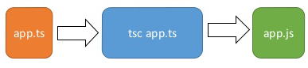</p>
<p>这时候在当前目录下（与 app.ts 同一目录）就会生成一个 app.js 文件，代码如下：</p>

<span class="hl-reserved">var</span><span class="hl-code"> </span><span class="hl-identifier">message</span><span class="hl-code"> = </span><span class="hl-quotes">"</span><span class="hl-string">Hello World</span><span class="hl-quotes">"</span><span class="hl-code">;
</span><span class="hl-identifier">console</span><span class="hl-code">.</span><span class="hl-identifier">log</span><span class="hl-brackets">(</span><span class="hl-identifier">message</span><span class="hl-brackets">)</span><span class="hl-code">;</span>

<p>使用 node 命令来执行 app.js 文件：</p>
<pre>$ node app.js 
Hello World</pre>

<p>TypeScript 转换为 JavaScript 过程如下图：</p>
<p>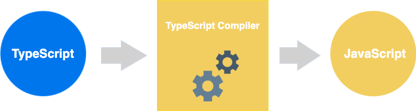</p>

<hr>
<h3>VS Code 介绍</h3>

<p>很多 IDE 都有支持 TypeScript 插件，如：VS Code，Sublime Text 2，WebStorm / PHPStorm，Eclipse 等。</p>
<p>本章节主要介绍 VS Code，VS Code 是一个可以运行于 Mac OS X、Windows 和 Linux 之上的，针对于编写现代 Web 和云应用的跨平台源代码编辑器，由 Microsoft 公司开发。</p>
<p>
VS Code 教程：<a href="vscode.html#c1">https://www.runoob.com/vscode/vscode-tutorial.html</a></p>
<blockquote><p>另外国内阿里与字节也有基于 VS Code 开发的 AI IDE：</p>
	<ul>
<li><strong>阿里 Qoder：</strong><a href="https://qoder.cn/referral?utm_source=paid&amp;utm_medium=affiliate&amp;utm_campaign=cainiaojiaocheng" class="ext">https://qoder.com/</a></li>

<li>
<strong>字节 Trae：</strong><a href="https://www.trae.cn/sem/?utm_source=advertising&amp;utm_medium=runoob_ug_cpa&amp;utm_term=hw_trae_runoob" class="ext">https://www.trae.cn/</a></li>
</ul></blockquote>

<h4>
Windows 上安装 Visual Studio Code</h4>
<p>1、下载 <a href="https://code.visualstudio.com/" class="ext">Visual Studio Code</a>。</p>

<p>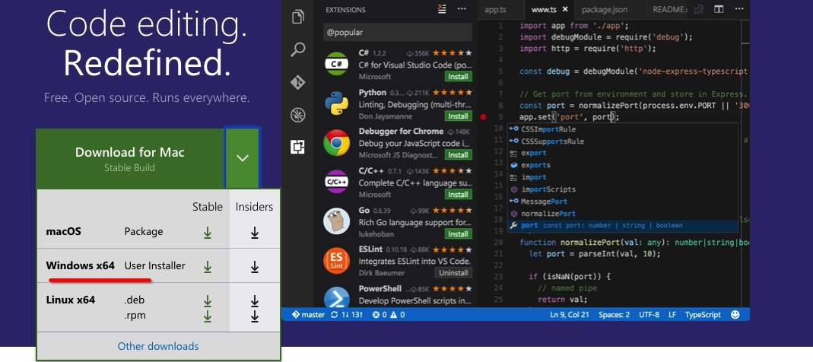</p>

<p>2、双击 VSCodeSetup.exe 图标  安装。</p>

<p>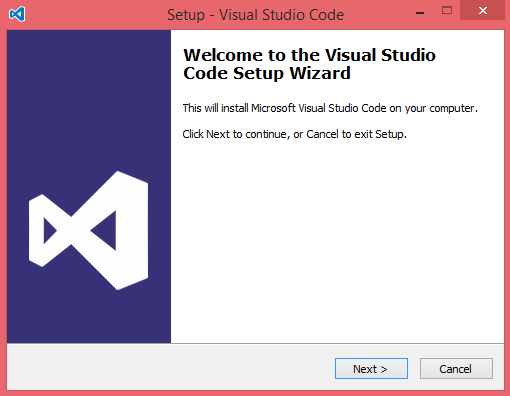</p>

<p>3、安装完成后，打开 Visual Studio Code 界面类似如下：</p>

<p>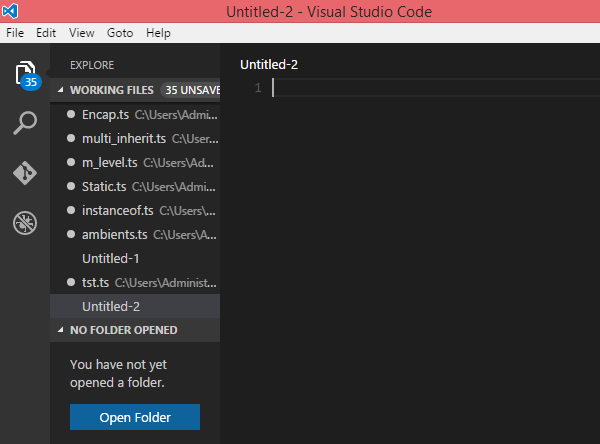</p>

<p>4、 我们可以在左侧窗口中点击当前编辑的代码文件，选择 <strong>open in command prompt</strong>（在终端中打开），这时候我们就可以在屏幕的右侧下半部分使用 <strong>tsc</strong> 命令来执行 TypeScript 文件代码了。</p>

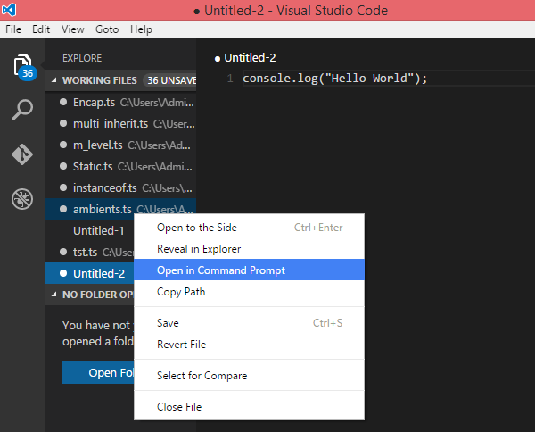
<h4>Mac OS X 安装 Visual Studio Code</h4>
<p>Mac OS X 安装配置 Visual Studio Code 可以查看：

<a href="https://code.visualstudio.com/docs/setup/setup-overview" class="ext">https://code.visualstudio.com/Docs/editor/setup</a></p>
<h4>Linux 安装 Visual Studio Code</h4>
<p>Linux 安装配置 Visual Studio Code 可以查看：

<a href="https://code.visualstudio.com/docs/setup/setup-overview" class="ext">https://code.visualstudio.com/Docs/editor/setup</a></p></div></section>
<section class="ch" id="c4"><h2>4. TypeScript VS Code<a class="chsrc" href="https://www.runoob.com/typescript/ts-vscode.html" target="_blank" rel="noopener">原文↗</a></h2><div class="ch-body"><p>很多 IDE 都有支持 TypeScript 插件，如：VS Code，Sublime Text 2，WebStorm / PHPStorm，Eclipse 等。</p>
<p>本章节主要介绍 VS Code，VS Code 是一个可以运行于 Mac OS X、Windows 和 Linux 之上的，针对于编写现代 Web 和云应用的跨平台源代码编辑器，由 Microsoft 公司开发。</p>
<p>
<p>VS Code 原生内置 TypeScript 语言语法支持，但不含 TypeScript 编译工具 tsc，如需将 TS 源码转译为 JS（执行命令 tsc HelloWorld.ts），需要在全局或项目工作区单独安装 TypeScript 编译器。</p>

<blockquote>VS Code 教程：<a href="vscode.html#c1">https://www.runoob.com/vscode/vscode-tutorial.html</a></blockquote></p>
<p>另外国内阿里与字节也有基于 VS Code 开发的 AI IDE：</p>
	

<h4>安装 TypeScript 编译器</h4><p>
最简安装方式是通过 Node.js 包管理器 npm 安装，已装好 npm 的前提下，执行下方命令即可全局（-g）安装：</p>
<pre>
npm install -g typescript</pre><p>
安装完成后可通过输出版本号验证：</p>
<pre>
tsc --version</pre>

<h4>
Windows 上安装 Visual Studio Code</h4>
<p>1、下载 <a href="https://code.visualstudio.com/" class="ext">Visual Studio Code</a>。</p>

<p></p>

<p>2、双击 VSCodeSetup.exe 图标  安装。</p>

<p></p>

<p>3、安装完成后，打开 Visual Studio Code 界面类似如下：</p>

<p></p>

<p>4、 我们可以在左侧窗口中点击当前编辑的代码文件，选择 <strong>open in command prompt</strong>（在终端中打开），这时候我们就可以在屏幕的右侧下半部分使用 <strong>tsc</strong> 命令来执行 TypeScript 文件代码了。</p>


<h4>Mac OS X 安装 Visual Studio Code</h4>
<p>Mac OS X 安装配置 Visual Studio Code 可以查看：

<a href="https://code.visualstudio.com/docs/setup/setup-overview" class="ext">https://code.visualstudio.com/Docs/editor/setup</a></p>
<h4>Linux 安装 Visual Studio Code</h4>
<p>Linux 安装配置 Visual Studio Code 可以查看：

<a href="https://code.visualstudio.com/docs/setup/setup-overview" class="ext">https://code.visualstudio.com/Docs/editor/setup</a></p>
<hr>
<h3>
入门示例：Hello World</h3><p>
我们以 Node.js 环境的极简 Hello World 项目为例，新建项目文件夹并打开 VS Code：</p>
<pre>
mkdir HelloWorld
cd HelloWorld
code .</pre><p>在资源管理器中新建文件 helloworld.ts。</p>
<p>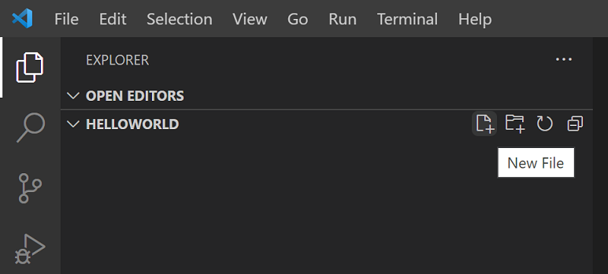</p>
<p>写入下述 TS 代码，能看到 TS 专属关键字 let 与字符串类型标注：</p>
<pre>
let message : string = "Hello World";
console.log(message);</pre><p>
打开【集成终端】（快捷键 kb(workbench.action.terminal.toggleTerminal)），输入 tsc helloworld.ts 编译代码，编译成功后会自动生成 JS 文件 helloworld.js。</p>

<p>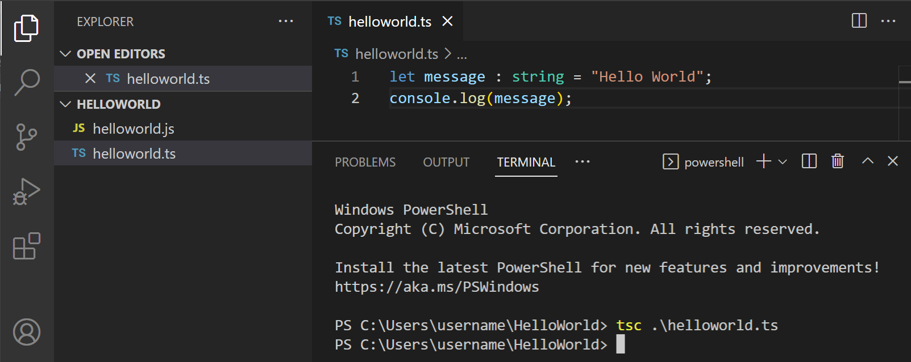</p>
<p>本机已安装 Node.js 时，运行 node helloworld.js 即可执行代码。</p>

<p>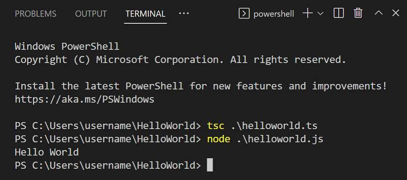</p>

<p>
打开编译后的 helloworld.js 可以发现：代码移除了类型声明，let 被降级为 ES5 的 var：</p>
<pre>
var message = "Hello World";
console.log(message);</pre>
<hr>

<h3>智能提示（IntelliSense）</h3>
<p>智能提示提供代码自动补全、悬浮文档、函数参数签名提示，提升编码效率与准确率。</p>
<p>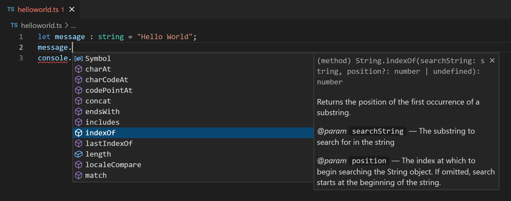</p>
<p>VS Code 对单个 TS 文件、带 <code>tsconfig.json</code> 配置的 TS 项目均提供全套智能提示。</p>
<h4>悬浮文档提示</h4>
<p>鼠标悬浮在任意 TS 标识符上，快速查看变量/函数的类型与说明文档；<br>快捷键 <code>kb(editor.action.showHover)</code> 可在光标位置手动唤起悬浮提示。</p>
<p>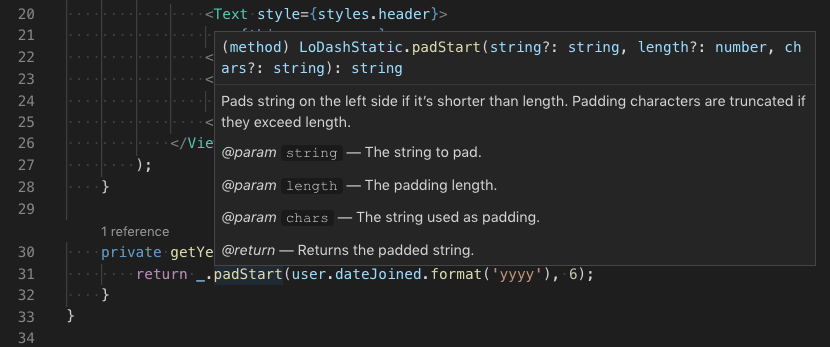</p>
<h4>函数签名提示</h4>
<p>编写函数调用代码时，编辑器自动展示函数入参说明，并高亮当前正在填写的参数；<br>输入左括号 <code>(</code> 或逗号 <code>,</code> 自动触发签名提示，快捷键 <code>kb(editor.action.triggerParameterHints)</code> 手动唤起。</p>
<p>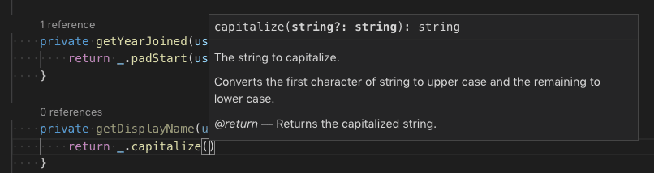</p><hr>
<h3>代码片段（Snippets）</h3>
<p>除智能补全外，VS Code 内置基础 TS 代码片段，输入关键字时自动弹出快捷模板。</p>
<p>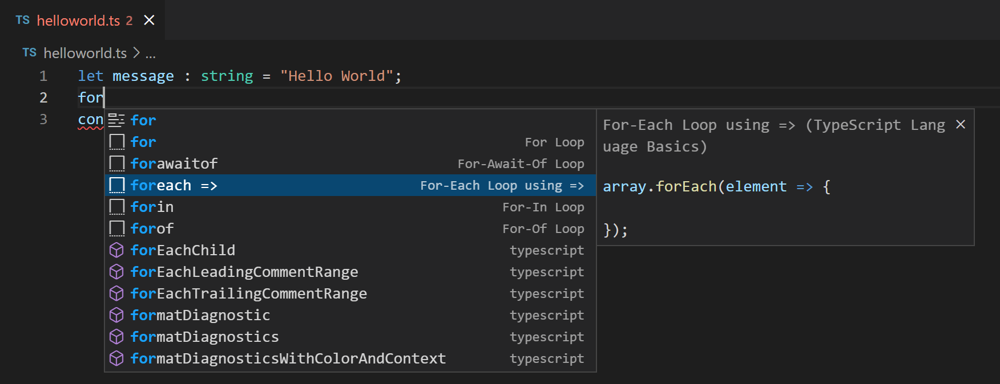</p>
<p>可安装第三方扩展扩充片段库，也能自定义 TS 代码片段，详情参考【用户自定义代码片段】文档。</p>
<blockquote>
    <p><strong>小贴士</strong>：在配置文件中将 <code>editor.snippetSuggestions</code> 设为 <code>"none"</code> 可关闭片段提示；如需保留，可配置片段展示优先级：<code>top</code>（置顶）、<code>bottom</code>（置底）、<code>inline</code>（和普通提示混排、字母排序，默认配置）。</p>
</blockquote><hr>
<h3>错误与警告提示</h3>
<p>TS 语言服务实时校验代码，自动标记语法与逻辑问题：</p>
<ul>
    <li>编辑器状态栏汇总当前项目错误、警告总数；</li>
    <li>点击状态栏统计数字，或快捷键 <code>kb(workbench.actions.view.problems)</code> 打开【问题】面板，罗列全部报错；</li>
    <li>存在异常的代码行，行内标红提示，同时在右侧缩略标尺标注错误位置。</li>
</ul>
<p>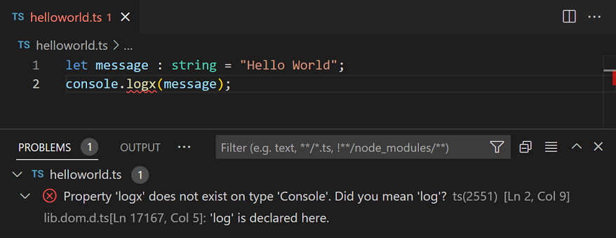</p>
<p>快捷键 <code>kb(editor.action.marker.nextInFiles)</code> / <code>kb(editor.action.marker.prevInFiles)</code> 跳转当前文件上下一处问题，弹窗展示详情与可用快速修复。</p>
<p>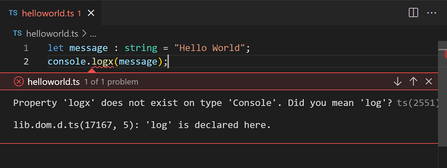</p>
<h3><a></a><span></span>代码跳转导航</h3>
<p>依托导航功能快速浏览大型 TS 项目源码：</p>
<ul>
    <li><strong>跳转到定义</strong> <code>kb(editor.action.revealDefinition)</code>：定位标识符源码定义处；</li>
    <li><strong>预览定义</strong> <code>kb(editor.action.peekDefinition)</code>：弹窗预览源码，不切换当前文件；</li>
    <li><strong>查找所有引用</strong> <code>kb(editor.action.goToReferences)</code>：列出项目内所有调用该标识符的位置；</li>
    <li><strong>跳转至类型定义</strong>：定位变量所属的类型源码（类实例会跳转至类本体，而非实例创建代码）；</li>
    <li><strong>跳转至实现</strong> <code>kb(editor.action.goToImplementation)</code>：查找接口/抽象方法的具体实现代码。</li>
</ul>
<p>通过命令面板（<code>kb(workbench.action.showCommands)</code>）的符号检索实现快速跳转：</p>
<ul>
    <li><strong>当前文件内查找符号</strong> <code>kb(editor.action.gotoSymbol)</code></li>
    <li><strong>全工作区检索符号</strong> <code>kb(workbench.action.showAllSymbols)</code></li>
</ul><hr>
<h3>代码格式化</h3>
<p>VS Code 内置 TS 格式化工具，默认规则开箱即用。</p><p>通过 <code>js/ts.format.*</code> 系列配置自定义格式化规则（例如大括号单独换行）不需要内置格式化时，设置:</p> <pre>"js/ts.format.enable": false</pre><p>关闭。</p>
<p>如需贴合团队自定义编码规范，可在插件市场安装专用格式化扩展。</p><hr>
<h3>代码重构</h3>
<p>VS Code 自带常用 TS 重构能力，如<strong>提取函数、提取常量</strong>。选中待重构代码，点击编辑器侧边灯泡图标或快捷键 <code>kb(editor.action.quickFix)</code> 调出重构菜单。</p>
<p>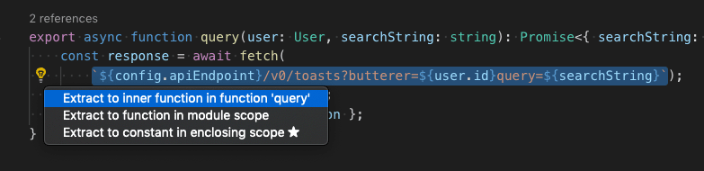</p>
<p>更多重构规则、自定义重构快捷键参考【TypeScript代码重构】文档。</p>
<h4>统一重命名</h4>
<p>选中变量/方法，快捷键 <code>kb(editor.action.rename)</code> 一键修改项目内所有同名标识符。</p>
<p>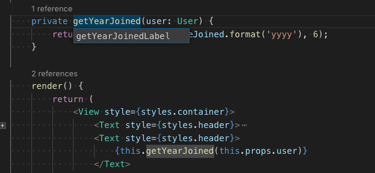</p><hr>
<h3>调试功能</h3>
<p>VS Code 原生完善支持 TS 调试，兼容源码映射（SourceMap），支持断点、变量查看、调用栈追溯、调试控制台交互；详情查阅【TS调试指南】与通用调试文档。</p>
<h4>前端网页调试</h4>
<p>借助内置 Chrome/Edge 调试插件，或 Firefox 调试扩展，调试浏览器端 TS 代码。</p>
<h4>后端Node调试</h4>
<p>使用内置调试器调试 Node.js 服务，官方配套教程可快速上手 Express 项目调试。</p>
<p>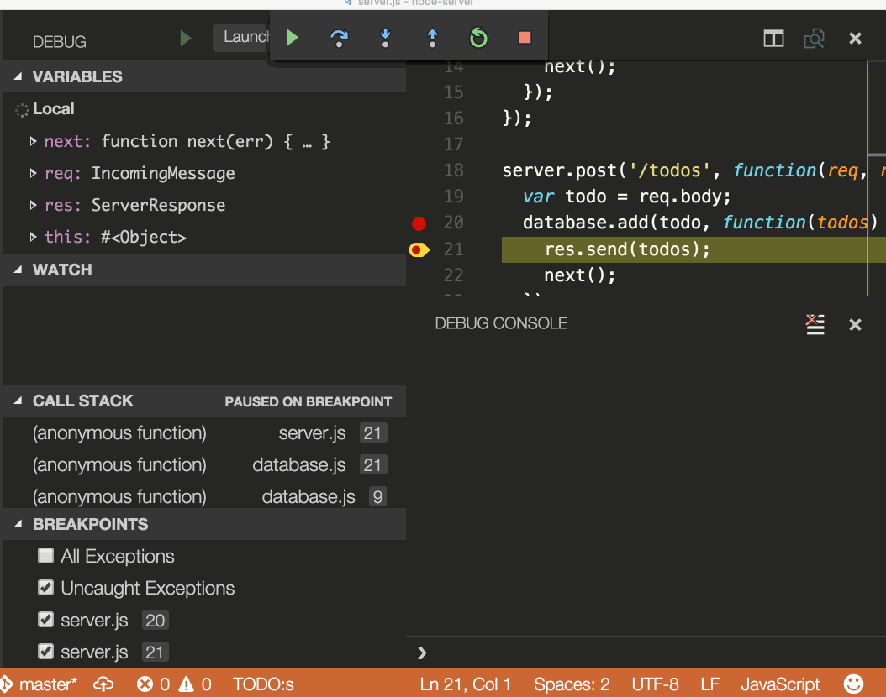</p><hr>
<h3>代码校验工具（Linter）</h3>
<p>Linter 用于检查代码隐患、规范编码风格。VS Code 未内置 TS 校验工具，可在插件市场安装对应扩展。</p>
<p>主流工具 <strong>ESLint</strong> 全面兼容 TS，安装 ESLint 插件后，编辑器实时标错，大量问题支持一键快速修复；<code>typescript-eslint</code> 文档指导 TS 项目 ESLint 环境配置。</p></div></section>
<section class="ch" id="c5"><h2>5. TypeScript 特性<a class="chsrc" href="https://www.runoob.com/typescript/ts-features.html" target="_blank" rel="noopener">原文↗</a></h2><div class="ch-body"><p>相对 JavaScript，TypeScript 增加了许多关键功能，特别是围绕类型系统和代码结构的增强功能。</p>

<p>TypeScript 的一些关键特性：</p>

<ul><li><p><strong>静态类型检查</strong>：TypeScript 在编译时就会检查代码的类型是否匹配，能够发现很多潜在的错误。即使是简单的错误（例如拼写错误或类型不一致），也可以在编写代码时被捕获到。</p></li><li><p><strong>类型推断</strong>：TypeScript 能够自动推断变量的类型。比如当你声明一个变量并赋值时，TypeScript 会根据赋值来推断这个变量的类型，不需要每次都显式声明类型。</p></li><li><p><strong>接口和类型定义</strong>：TypeScript 提供了 <code>interface</code> 和 <code>type</code> 关键字，允许你定义复杂的数据结构。这对于项目中不同部分的代码协作和数据交互来说非常重要。</p></li><li><p><strong>类和模块支持</strong>：TypeScript 支持面向对象编程中的类（class）概念，增加了构造函数、继承、访问控制修饰符（如 <code>public</code>、<code>private</code>、<code>protected</code>），并且支持 ES 模块化规范。</p></li><li><p><strong>工具和编辑器支持</strong>：TypeScript 拥有良好的编辑器支持，特别是与 Visual Studio Code 集成时，能提供智能提示、自动补全、重构等工具，使开发过程更高效。</p></li><li><p><strong>兼容 JavaScript</strong>：TypeScript 是 JavaScript 的超集，这意味着所有合法的 JavaScript 代码都是合法的 TypeScript 代码。这使得 JavaScript 项目可以逐步迁移到 TypeScript，而无需完全重写。</p></li></ul>
<p>以下是 TypeScript 增加的主要功能： </p>
<h4>1. <strong>静态类型</strong></h4>
<p>TypeScript 的最大特性就是增加了静态类型系统。在 TypeScript 中，开发者可以显式地声明变量、参数、返回值的类型，这样可以在编译时捕获很多潜在的类型错误。常见类型包括 <code>number</code>、<code>string</code>、<code>boolean</code>、<code>array</code>、<code>tuple</code>、<code>enum</code> 等，此外也支持自定义类型。</p>
<pre>
let name: string = "Alice";
let age: number = 25;
</pre>
<h4>2. <strong>类型推断</strong></h4>
<p>TypeScript 可以自动推断变量类型，即使不显式声明类型，TypeScript 也会根据变量的赋值内容来推断类型，从而在大多数情况下减少类型注解的书写量。</p>
<pre>let name = "Alice"; // 推断为 string
</pre>
<h4>3. <strong>接口 (Interfaces)</strong></h4>
<p>TypeScript 提供了接口，允许定义复杂的对象结构。接口可以定义属性和方法，还可以通过 <code>implements</code> 关键字实现接口，或者通过 <code>extends</code> 进行扩展，便于定义复杂的数据类型。</p>
<pre>
interface Person {
  name: string;
  age: number;
  greet(): void;
}

class Student implements Person {
  constructor(public name: string, public age: number) {}

  greet() {
    console.log(`Hello, my name is ${this.name}`);
  }
}
</pre>
<h4>4. <strong>类型别名 (Type Aliases)</strong></h4>
<p>类型别名 (<code>type</code>) 可以为复杂的类型定义简短的别名，便于代码复用。</p>
<pre>type StringOrNumber = string | number;
let value: StringOrNumber = 42;
</pre>
<h4>5. <strong>枚举 (Enums)</strong></h4>
<p>TypeScript 引入了 <code>enum</code> 类型，用于定义一组命名的常量，提高代码的可读性。枚举在 JavaScript 中没有直接的对应。</p>
<pre>enum Direction {
  Up,
  Down,
  Left,
  Right,
}
let dir: Direction = Direction.Up;
</pre>
<h4>6. <strong>元组 (Tuples)</strong></h4>
<p>元组允许定义具有固定数量和类型的数组。它适用于需要固定数据结构的场景，比如坐标或 RGB 颜色值。</p>
<pre>let point: [number, number] = [10, 20];
</pre>
<h4>7. <strong>访问控制修饰符 (Access Modifiers)</strong></h4>
<p>TypeScript 在类中提供了 <code>public</code>、<code>private</code> 和 <code>protected</code> 修饰符，允许控制属性或方法的可见性，支持更好的封装。</p>
<pre>class Person {
  private name: string;
  protected age: number;
  public constructor(name: string, age: number) {
    this.name = name;
    this.age = age;
  }
}
</pre>
<h4>8. <strong>抽象类 (Abstract Classes)</strong></h4>
<p>TypeScript 支持抽象类，抽象类不能直接实例化，需要由子类实现。抽象类适用于定义通用行为和抽象方法的类层次结构。</p>
<pre>abstract class Animal {
  abstract makeSound(): void;
}

class Dog extends Animal {
  makeSound() {
    console.log("Woof!");
  }
}
</pre>
<h4>9. <strong>泛型 (Generics)</strong></h4>
<p>TypeScript 支持泛型，允许在类、接口和函数中使用参数化类型，使得代码可以适应不同的类型需求，同时保持类型安全。</p>
<pre>function identity&lt;T&gt;(value: T): T {
  return value;
}

let num = identity&lt;number&gt;(42);
</pre>
<h4>10. <strong>模块和命名空间</strong></h4>
<p>TypeScript 提供了基于 ES6 的模块系统，使用 <code>import</code> 和 <code>export</code> 导入和导出模块。此外，TypeScript 还支持命名空间（Namespace），用于组织代码和避免命名冲突。</p>
<pre>// math.ts
export function add(a: number, b: number): number {
  return a + b;
}

// main.ts
import { add } from "./math";
console.log(add(2, 3));
</pre>
<h4>11. <strong>类型守卫 (Type Guards)</strong></h4>
<p>TypeScript 提供了类型守卫，可以在代码中检查变量类型，帮助编译器推断更加具体的类型。这对于联合类型尤为重要。</p>
<pre>function printId(id: string | number) {
  if (typeof id === "string") {
    console.log(id.toUpperCase());
  } else {
    console.log(id.toFixed(2));
  }
}
</pre>
<h4>12. <strong>可选链和空值合并运算符</strong></h4>
<p>TypeScript 增加了 JavaScript 的可选链 (<code>?.</code>) 和空值合并运算符 (<code>??</code>)，简化了代码中对可能为 <code>null</code> 或 <code>undefined</code> 值的处理。</p>
<pre>let user = { name: "Alice", address: { city: "Wonderland" } };
console.log(user?.address?.city); // 如果 address 存在则输出 city，否则返回 undefined

let value = null;
console.log(value ?? "default"); // 如果 value 为 null 或 undefined，则返回 "default"
</pre>
<h4>13. <strong>类型兼容性和工具类型</strong></h4>
<p>TypeScript 提供了一些工具类型，如 <code>Partial</code>、<code>Pick</code>、<code>Readonly</code>、<code>Record</code> 等，这些类型可以帮助生成新的类型，简化类型定义。</p>
<pre>interface Todo {
  title: string;
  description: string;
}

let partialTodo: Partial&lt;Todo&gt; = { title: "Learn TypeScript" }; // 可选属性
</pre>
<h4>14. <strong>编译期错误检查</strong></h4>
<p>TypeScript 提供的编译期错误检查可以捕获 JavaScript 中不易发现的错误，如拼写错误、类型不匹配等，帮助提升代码质量。</p>
<h4>15. <strong>ES 新特性支持</strong></h4>
<p>TypeScript 提前支持了一些还未在所有环境中普及的 ES 特性，如装饰器（Decorators）、异步迭代器等，且能够将其编译成兼容 JavaScript 版本。</p>
<p>通过这些特性，TypeScript 提供了更安全、更结构化的代码能力，在大型项目和多人协作中尤其具有优势。</p></div></section>
<section class="ch" id="c6"><h2>6. TypeScript 基础语法<a class="chsrc" href="https://www.runoob.com/typescript/ts-basic-syntax.html" target="_blank" rel="noopener">原文↗</a></h2><div class="ch-body"><p>TypeScript 程序由以下几个部分组成：</p>
<ul>
<li>模块</li>
<li>函数</li>
<li>变量</li>
<li>语句和表达式</li>
<li>注释</li>
</ul>

<h4>
第一个 TypeScript 程序
</h4>

<p>我们可以使用以下 TypeScript 程序来输出  "Hello World" ：</p>

<h3>Runoob.ts 文件代码：</h3>

<span class="hl-reserved">const</span><span class="hl-code"> </span><span class="hl-identifier">hello</span><span class="hl-code"> : </span><span class="hl-identifier">string</span><span class="hl-code"> = </span><span class="hl-quotes">"</span><span class="hl-string">Hello World!</span><span class="hl-quotes">"</span><span class="hl-code">
</span><span class="hl-identifier">console</span><span class="hl-code">.</span><span class="hl-identifier">log</span><span class="hl-brackets">(</span><span class="hl-identifier">hello</span><span class="hl-brackets">)</span>

<br>
<a href="https://www.runoob.com/try/runcode.php?filename=ts-hw&amp;type=typescript" class="ext">尝试一下 »</a>

<p>以上代码首先通过 <strong>tsc</strong> 命令编译：</p>

<pre>tsc Runoob.ts</pre>

<p>得到如下 js 代码：</p>

<h3>Runoob.js 文件代码：</h3><span class="hl-reserved">var</span><span class="hl-code"> </span><span class="hl-identifier">hello</span><span class="hl-code"> = </span><span class="hl-quotes">"</span><span class="hl-string">Hello World!</span><span class="hl-quotes">"</span><span class="hl-code">;
</span><span class="hl-identifier">console</span><span class="hl-code">.</span><span class="hl-identifier">log</span><span class="hl-brackets">(</span><span class="hl-identifier">hello</span><span class="hl-brackets">)</span><span class="hl-code">;</span>

<p>最后我们使用 node 命令来执行该 js 代码。</p>

<pre>$ node Runoob.js
Hello World</pre>
<p>整个流程如下图所示：</p>

<p></p>
<p>我们可以同时编译多个 ts 文件：</p>

<pre>tsc file1.ts file2.ts file3.ts</pre>

<p>tsc 常用编译参数如下表所示：</p>
<table>
<tbody><tr>
<th>序号</th>
<th>编译参数说明</th>
</tr>
<tr>
<td>1.</td>
<td><p><b>--help</b></p>
<p>显示帮助信息</p>
</td>
</tr>
<tr>
<td>2.</td>
<td><p><b>--module</b></p>
<p>载入扩展模块</p>
</td>
</tr>
<tr>
<td>3.</td>
<td><p><b>--target</b></p>
<p>设置 ECMA 版本</p>
</td>
</tr>
<tr>
<td>4.</td>
<td><p><b>--declaration</b></p>
<p>额外生成一个 .d.ts 扩展名的文件。</p>
<pre>
tsc ts-hw.ts --declaration
</pre><p>
以上命令会生成 ts-hw.d.ts、ts-hw.js 两个文件。</p>
</td>
</tr>
<tr>
<td>5.</td>
<td><p><b>--removeComments</b></p>
<p>删除文件的注释</p>
</td>
</tr>
<tr>
<td>6.</td>
<td><p><b>--out</b></p>
<p>编译多个文件并合并到一个输出的文件</p>
</td>
</tr>
<tr>
<td>7.</td>
<td><p><b>--sourcemap</b></p>
<p>生成一个 sourcemap (.map) 文件。</p>
<p>sourcemap 是一个存储源代码与编译代码对应位置映射的信息文件。</p>
</td>
</tr>
<tr>
<td>8.</td>
<td><p><b>--module noImplicitAny</b></p>
<p>在表达式和声明上有隐含的 any 类型时报错</p>
</td>
</tr>
<tr>
<td>9.</td>
<td><p><b>--watch</b></p>
<p>在监视模式下运行编译器。会监视输出文件，在它们改变时重新编译。</p>
</td>
</tr>
</tbody></table>

<hr>
<h3>TypeScript 保留关键字</h3>
<p>TypeScript 保留关键字如下表所示：</p>
<table>
<thead><tr><th>关键字</th><th>说明</th></tr></thead><tbody><tr><td><code>abstract</code></td><td>用于定义抽象类或抽象方法。</td></tr><tr><td><code>any</code></td><td>表示任意类型，禁用类型检查。</td></tr><tr><td><code>as</code></td><td>类型断言，用于将某种类型转换为另一种类型。</td></tr><tr><td><code>await</code></td><td>用于异步函数中，暂停代码执行直到 Promise 解决。</td></tr><tr><td><code>boolean</code></td><td>表示布尔类型。</td></tr><tr><td><code>break</code></td><td>退出循环或 switch 语句。</td></tr><tr><td><code>case</code></td><td>用于 switch 语句中的分支。</td></tr><tr><td><code>catch</code></td><td>用于捕获异常。</td></tr><tr><td><code>class</code></td><td>用于定义类。</td></tr><tr><td><code>const</code></td><td>定义常量变量。</td></tr><tr><td><code>continue</code></td><td>跳过当前循环，继续下一次循环。</td></tr><tr><td><code>debugger</code></td><td>启动调试器，暂停代码执行。</td></tr><tr><td><code>declare</code></td><td>声明一个变量或模块，通常用于类型声明文件。</td></tr><tr><td><code>default</code></td><td>定义 switch 语句的默认分支。</td></tr><tr><td><code>delete</code></td><td>删除对象的属性或数组的元素。</td></tr><tr><td><code>do</code></td><td>用于 <code>do...while</code> 循环。</td></tr><tr><td><code>else</code></td><td>定义条件语句中的 else 部分。</td></tr><tr><td><code>enum</code></td><td>定义枚举类型。</td></tr><tr><td><code>export</code></td><td>用于从模块中导出变量、函数或类。</td></tr><tr><td><code>extends</code></td><td>用于类的继承，表示类继承其他类。</td></tr><tr><td><code>false</code></td><td>布尔值 <code>false</code>。</td></tr><tr><td><code>finally</code></td><td>定义 <code>try...catch</code> 语句中的最终执行代码块。</td></tr><tr><td><code>for</code></td><td>用于 <code>for</code> 循环。</td></tr><tr><td><code>from</code></td><td>用于模块导入语句，指定模块的来源。</td></tr><tr><td><code>function</code></td><td>定义函数。</td></tr><tr><td><code>get</code></td><td>用于对象的 getter 方法。</td></tr><tr><td><code>if</code></td><td>用于条件判断。</td></tr><tr><td><code>implements</code></td><td>用于类实现接口。</td></tr><tr><td><code>import</code></td><td>用于从模块中导入内容。</td></tr><tr><td><code>in</code></td><td>用于检查对象中是否包含指定的属性，或用于 <code>for...in</code> 循环。</td></tr><tr><td><code>infer</code></td><td>用于条件类型中推断类型。</td></tr><tr><td><code>instanceof</code></td><td>检查对象是否是指定类的实例。</td></tr><tr><td><code>interface</code></td><td>用于定义接口。</td></tr><tr><td><code>let</code></td><td>定义块级作用域的变量。</td></tr><tr><td><code>module</code></td><td>定义模块（在较早的 TypeScript 版本中使用）。</td></tr><tr><td><code>namespace</code></td><td>定义命名空间（在较早的 TypeScript 版本中使用）。</td></tr><tr><td><code>new</code></td><td>创建类的实例。</td></tr><tr><td><code>null</code></td><td>表示空值。</td></tr><tr><td><code>number</code></td><td>表示数字类型。</td></tr><tr><td><code>object</code></td><td>表示非原始类型。</td></tr><tr><td><code>of</code></td><td>用于 <code>for...of</code> 循环。</td></tr><tr><td><code>package</code></td><td>用于模块系统，标识包。</td></tr><tr><td><code>private</code></td><td>用于类成员的访问修饰符，表示私有。</td></tr><tr><td><code>protected</code></td><td>用于类成员的访问修饰符，表示受保护的。</td></tr><tr><td><code>public</code></td><td>用于类成员的访问修饰符，表示公共的。</td></tr><tr><td><code>readonly</code></td><td>表示只读属性。</td></tr><tr><td><code>require</code></td><td>用于导入 CommonJS 模块。</td></tr><tr><td><code>return</code></td><td>退出函数并可返回值。</td></tr><tr><td><code>set</code></td><td>用于对象的 setter 方法。</td></tr><tr><td><code>string</code></td><td>表示字符串类型。</td></tr><tr><td><code>super</code></td><td>用于调用父类的方法或构造函数。</td></tr><tr><td><code>switch</code></td><td>用于 switch 语句。</td></tr><tr><td><code>symbol</code></td><td>表示符号类型。</td></tr><tr><td><code>this</code></td><td>引用当前类或对象的实例。</td></tr><tr><td><code>throw</code></td><td>抛出异常。</td></tr><tr><td><code>try</code></td><td>用于异常处理语句 <code>try...catch</code>。</td></tr><tr><td><code>true</code></td><td>布尔值 <code>true</code>。</td></tr><tr><td><code>type</code></td><td>用于定义类型别名。</td></tr><tr><td><code>typeof</code></td><td>获取变量或表达式的类型。</td></tr><tr><td><code>undefined</code></td><td>表示未定义的值。</td></tr><tr><td><code>unique</code></td><td>用于 <code>symbol</code> 类型的唯一标识符。</td></tr><tr><td><code>var</code></td><td>用于声明变量（已不推荐使用）。</td></tr><tr><td><code>void</code></td><td>表示没有返回值的类型。</td></tr><tr><td><code>while</code></td><td>用于 <code>while</code> 循环。</td></tr><tr><td><code>with</code></td><td>用于创建一个作用域，在该作用域内可以省略对象的引用（不推荐使用）。</td></tr><tr><td><code>yield</code></td><td>用于生成器函数中，暂停和恢复生成器的执行。</td></tr></tbody></table>
<h4>
空白和换行</h4>
<p>TypeScript 会忽略程序中出现的空格、制表符和换行符。 </p>
<p>空格、制表符通常用来缩进代码，使代码易于阅读和理解。</p>

<h4>TypeScript 区分大小写</h4>
<p>TypeScript 区分大写和小写字符。</p>

<h4>分号是可选的</h4>
<p>每行指令都是一段语句，你可以使用分号或不使用， 分号在 TypeScript 中是可选的，建议使用。</p>
<p>以下代码都是合法的：</p>

<pre>console.log("Runoob")
console.log("Google");</pre>

<p>如果语句写在同一行则一定需要使用分号来分隔，否则会报错，如：</p>
<pre>console.log("Runoob");console.log("Google");</pre>

<h4>TypeScript 注释</h4>
<p>注释是一个良好的习惯，虽然很多程序员讨厌注释，但还是建议你在每段代码写上文字说明。</p>
<p>注释可以提高程序的可读性。 </p>
<p>注释可以包含有关程序一些信息，如代码的作者，有关函数的说明等。</p>
<p>编译器会忽略注释。</p>

<h4>TypeScript 支持两种类型的注释</h4>

<ul>
<li><p><b>单行注释 ( // )</b> − 在 // 后面的文字都是注释内容。</p></li>
<li><p><b>多行注释 (/*   */)</b> − 这种注释可以跨越多行。</p></li>
</ul>
<p>注释实例：</p>
<pre>// 这是一个单行注释
 
/* 
 这是一个多行注释 
 这是一个多行注释 
 这是一个多行注释 
*/</pre>

<hr>
<h3>TypeScript 与面向对象</h3>

<p>面向对象是一种对现实世界理解和抽象的方法。</p>
<p>TypeScript 是一种面向对象的编程语言。 </p>
<p>面向对象主要有两个概念：对象和类。</p>
<ul>
	<li>
		<strong>对象</strong>：对象是类的一个实例（<strong>对象不是找个女朋友</strong>），有状态和行为。例如，一条狗是一个对象，它的状态有：颜色、名字、品种；行为有：摇尾巴、叫、吃等。</li>
	<li>
		<strong>类</strong>：类是一个模板，它描述一类对象的行为和状态。</li>
		<li>
		<strong>方法</strong>：方法是类的操作的实现步骤。</li>
</ul>
<p>下图中 <strong>girl、boy</strong> 为类，而具体的每个人为该类的对象：</p>

<p>
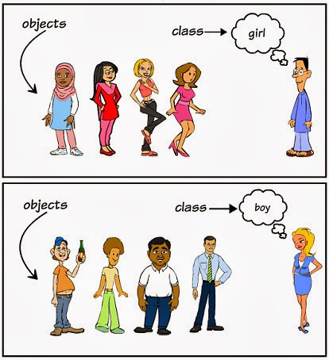</p>

<p>TypeScript 面向对象编程实例：</p>

<span class="hl-reserved">class</span><span class="hl-code"> </span><span class="hl-identifier">Site</span><span class="hl-code"> </span><span class="hl-brackets">{</span><span class="hl-code"> 
   </span><span class="hl-identifier">name</span><span class="hl-brackets">(</span><span class="hl-brackets">)</span><span class="hl-code">:</span><span class="hl-reserved">void</span><span class="hl-code"> </span><span class="hl-brackets">{</span><span class="hl-code"> 
      </span><span class="hl-identifier">console</span><span class="hl-code">.</span><span class="hl-identifier">log</span><span class="hl-brackets">(</span><span class="hl-quotes">"</span><span class="hl-string">Runoob</span><span class="hl-quotes">"</span><span class="hl-brackets">)</span><span class="hl-code"> 
   </span><span class="hl-brackets">}</span><span class="hl-code"> 
</span><span class="hl-brackets">}</span><span class="hl-code"> 
</span><span class="hl-reserved">var</span><span class="hl-code"> </span><span class="hl-identifier">obj</span><span class="hl-code"> = </span><span class="hl-reserved">new</span><span class="hl-code"> </span><span class="hl-identifier">Site</span><span class="hl-brackets">(</span><span class="hl-brackets">)</span><span class="hl-code">; 
</span><span class="hl-identifier">obj</span><span class="hl-code">.</span><span class="hl-identifier">name</span><span class="hl-brackets">(</span><span class="hl-brackets">)</span><span class="hl-code">;</span>

<p>以上实例定义了一个类 Site，该类有一个方法 name()，该方法在终端上输出字符串 Runoob。 </p>
<p>new 关键字创建类的对象，该对象调用方法 name()。</p>

<p>编译后生成的 JavaScript 代码如下：</p>

<span class="hl-reserved">var</span><span class="hl-code"> </span><span class="hl-identifier">Site</span><span class="hl-code"> = </span><span class="hl-comment">/*</span><span class="hl-comment">* @class </span><span class="hl-comment">*/</span><span class="hl-code"> </span><span class="hl-brackets">(</span><span class="hl-reserved">function</span><span class="hl-code"> </span><span class="hl-brackets">(</span><span class="hl-brackets">)</span><span class="hl-code"> </span><span class="hl-brackets">{</span><span class="hl-code">
    </span><span class="hl-reserved">function</span><span class="hl-code"> </span><span class="hl-identifier">Site</span><span class="hl-brackets">(</span><span class="hl-brackets">)</span><span class="hl-code"> </span><span class="hl-brackets">{</span><span class="hl-code">
    </span><span class="hl-brackets">}</span><span class="hl-code">
    </span><span class="hl-identifier">Site</span><span class="hl-code">.</span><span class="hl-identifier">prototype</span><span class="hl-code">.</span><span class="hl-identifier">name</span><span class="hl-code"> = </span><span class="hl-reserved">function</span><span class="hl-code"> </span><span class="hl-brackets">(</span><span class="hl-brackets">)</span><span class="hl-code"> </span><span class="hl-brackets">{</span><span class="hl-code">
        </span><span class="hl-identifier">console</span><span class="hl-code">.</span><span class="hl-identifier">log</span><span class="hl-brackets">(</span><span class="hl-quotes">"</span><span class="hl-string">Runoob</span><span class="hl-quotes">"</span><span class="hl-brackets">)</span><span class="hl-code">;
    </span><span class="hl-brackets">}</span><span class="hl-code">;
    </span><span class="hl-reserved">return</span><span class="hl-code"> </span><span class="hl-identifier">Site</span><span class="hl-code">;
</span><span class="hl-brackets">}</span><span class="hl-brackets">(</span><span class="hl-brackets">)</span><span class="hl-brackets">)</span><span class="hl-code">;
</span><span class="hl-reserved">var</span><span class="hl-code"> </span><span class="hl-identifier">obj</span><span class="hl-code"> = </span><span class="hl-reserved">new</span><span class="hl-code"> </span><span class="hl-identifier">Site</span><span class="hl-brackets">(</span><span class="hl-brackets">)</span><span class="hl-code">;
</span><span class="hl-identifier">obj</span><span class="hl-code">.</span><span class="hl-identifier">name</span><span class="hl-brackets">(</span><span class="hl-brackets">)</span><span class="hl-code">;</span>

<p>执行以上 JavaScript 代码，输出结果如下:</p>

<pre>Runoob</pre></div></section>
<section class="ch" id="c7"><h2>7. TypeScript 基本结构<a class="chsrc" href="https://www.runoob.com/typescript/typescript-basic-structure.html" target="_blank" rel="noopener">原文↗</a></h2><div class="ch-body"><p>
TypeScript 程序的基本结构可以分为几个部分，每个部分都有特定的作用。</p><p>以下是 TypeScript 程序的常见组成部分：</p>
<ul><li><strong>声明部分</strong>：包括类型声明、接口声明等。</li><li><strong>变量声明</strong>：包括 <code>let</code>, <code>const</code> 和 <code>var</code> 的使用。</li><li><strong>函数声明</strong>：包括普通函数和箭头函数。</li><li><strong>类声明</strong>：用于定义类及其成员。</li><li><strong>接口与类型别名</strong>：描述类型的结构。</li><li><strong>模块化</strong>：通过 <code>import</code> 和 <code>export</code> 组织代码。</li><li><strong>类型断言</strong>：强制类型转换。</li><li><strong>泛型</strong>：使代码具备更多的复用性。</li><li><strong>注释</strong>：增加代码的可读性。</li><li><strong>类型推断</strong>：自动推断类型。</li><li><strong>类型守卫</strong>：缩小类型范围。</li><li><strong>异步编程</strong>：支持 <code>async/await</code>。</li><li><strong>错误处理</strong>：通过 <code>try/catch</code> 进行错误捕捉。</li></ul><p>
以上几个部分共同构成了 TypeScript 程序的基本结构，并为开发者提供了强大的类型检查、代码结构和可维护性。</p>
<hr>
<h3>
1. 声明部分（Declarations）</h3><p>
<strong>类型声明：</strong>TypeScript 是一种静态类型的语言，可以通过类型声明来定义变量、函数、类等的类型。类型声明可以帮助代码更具可维护性和可读性。</p>

<h3>实例</h3> 
let name<span style="color:#339933">:</span> string <span style="color:#339933">=</span> <span style="color:#3366CC">"Alice"</span><span style="color:#339933">;</span><br>
let age<span style="color:#339933">:</span> number <span style="color:#339933">=</span> <span style="color:#CC0000">30</span><span style="color:#339933">;</span><br>
<p>
<strong>接口声明：</strong>用于定义对象的结构，包括对象的属性和方法。</p>
<h3>实例</h3> 
<span style="color:#FF0000">interface</span> Person <span style="color:#009900">{</span><br>
    name<span style="color:#339933">:</span> string<span style="color:#339933">;</span><br>
    age<span style="color:#339933">:</span> number<span style="color:#339933">;</span><br>
<span style="color:#009900">}</span><br>
<hr><h3>
2. 变量声明（Variable Declarations）</h3>
<p>在 TypeScript 中，可以使用 let, const, 和 var 来声明变量。推荐使用 let 和 const，var 用法不再推荐。</p>
<h3>实例</h3> 
let age<span style="color:#339933">:</span> number <span style="color:#339933">=</span> <span style="color:#CC0000">25</span><span style="color:#339933">;</span><br>
<span style="color:#000066">const</span> pi<span style="color:#339933">:</span> number <span style="color:#339933">=</span> <span style="color:#CC0000">3.14</span><span style="color:#339933">;</span><br>
<h3>
3. 函数声明（Function Declarations）</h3>
<p>函数声明：TypeScript 允许声明带有类型注解的函数，包括参数类型和返回值类型。</p>
<h3>实例</h3> 
<span style="color:#000066">function</span> greet<span style="color:#009900">(</span>name<span style="color:#339933">:</span> string<span style="color:#009900">)</span><span style="color:#339933">:</span> string <span style="color:#009900">{</span><br>
    <span style="color:#000066">return</span> <span style="color:#3366CC">"Hello, "</span> <span style="color:#339933">+</span> name<span style="color:#339933">;</span><br>
<span style="color:#009900">}</span><br>

<p><strong>箭头函数：</strong>TypeScript 同样支持 ES6 的箭头函数，使用简洁的语法来声明函数。</p>
<h3>实例</h3> 
<span style="color:#000066">const</span> greet <span style="color:#339933">=</span> <span style="color:#009900">(</span>name<span style="color:#339933">:</span> string<span style="color:#009900">)</span><span style="color:#339933">:</span> string <span style="color:#339933">=&gt;</span> <span style="color:#3366CC">"Hello, "</span> <span style="color:#339933">+</span> name<span style="color:#339933">;</span><br>
<h3>
4. 类声明（Class Declarations）</h3>
<p>TypeScript 提供对面向对象编程的支持，允许定义类和类的方法、属性。</p>
<h3>实例</h3> 
<span style="color:#FF0000">class</span> Person <span style="color:#009900">{</span><br>
    name<span style="color:#339933">:</span> string<span style="color:#339933">;</span><br>
    age<span style="color:#339933">:</span> number<span style="color:#339933">;</span><br>
    <br>
    constructor<span style="color:#009900">(</span>name<span style="color:#339933">:</span> string<span style="color:#339933">,</span> age<span style="color:#339933">:</span> number<span style="color:#009900">)</span> <span style="color:#009900">{</span><br>
    <span style="color:#000066">this</span>.<span style="color:#660066">name</span> <span style="color:#339933">=</span> name<span style="color:#339933">;</span><br>
    <span style="color:#000066">this</span>.<span style="color:#660066">age</span> <span style="color:#339933">=</span> age<span style="color:#339933">;</span><br>
    <span style="color:#009900">}</span><br>
    <br>
    greet<span style="color:#009900">(</span><span style="color:#009900">)</span> <span style="color:#009900">{</span><br>
    <span style="color:#000066">return</span> `Hello<span style="color:#339933">,</span> my name is $<span style="color:#009900">{</span><span style="color:#000066">this</span>.<span style="color:#660066">name</span><span style="color:#009900">}</span>`<span style="color:#339933">;</span><br>
    <span style="color:#009900">}</span><br>
<span style="color:#009900">}</span><br>
<h3>
5. 接口与类型别名（Interfaces &amp; Type Aliases）</h3>
<p>接口（Interface）：用于描述对象的形状，接口可以继承和扩展。</p>
<h3>实例</h3> 
<span style="color:#FF0000">interface</span> Animal <span style="color:#009900">{</span><br>
    name<span style="color:#339933">:</span> string<span style="color:#339933">;</span><br>
    sound<span style="color:#339933">:</span> string<span style="color:#339933">;</span><br>
    makeSound<span style="color:#009900">(</span><span style="color:#009900">)</span><span style="color:#339933">:</span> <span style="color:#000066">void</span><span style="color:#339933">;</span><br>
<span style="color:#009900">}</span><br>

<p><strong>类型别名（Type Alias）：</strong>允许为对象类型、联合类型、交叉类型等定义别名。</p>
<h3>实例</h3> 
type ID <span style="color:#339933">=</span> string <span style="color:#339933">|</span> number<span style="color:#339933">;</span><br>

<hr><h3>
6. 模块和导入导出（Modules &amp; Imports/Exports）</h3>
<p>TypeScript 支持模块化编程，可以使用 import 和 export 来组织代码。</p>
<p><strong>
导出：</strong></p>

<h3>实例</h3> 
<span style="color:#FF0000">export</span> <span style="color:#FF0000">class</span> Person <span style="color:#009900">{</span><br>
    constructor<span style="color:#009900">(</span>public name<span style="color:#339933">:</span> string<span style="color:#009900">)</span> <span style="color:#009900">{</span><span style="color:#009900">}</span><br>
<span style="color:#009900">}</span><br>

<p><strong>导入：</strong></p>

<h3>实例</h3> 
<span style="color:#FF0000">import</span> <span style="color:#009900">{</span> Person <span style="color:#009900">}</span> from <span style="color:#3366CC">'./person'</span><span style="color:#339933">;</span><br>
<hr><h3>
7. 类型断言（Type Assertions）</h3>
<p>在某些情况下，TypeScript 无法推断出一个变量的准确类型，开发者可以使用类型断言来强制指定类型。</p>
<h3>实例</h3> 
let value<span style="color:#339933">:</span> any <span style="color:#339933">=</span> <span style="color:#3366CC">"hello"</span><span style="color:#339933">;</span><br>
let strLength<span style="color:#339933">:</span> number <span style="color:#339933">=</span> <span style="color:#009900">(</span>value as string<span style="color:#009900">)</span>.<span style="color:#660066">length</span><span style="color:#339933">;</span><br>
<hr><h3>
8. 泛型（Generics）</h3><p>
泛型允许在定义函数、接口或类时不指定具体类型，而是使用占位符，让用户在使用时传入具体类型。泛型能够增加代码的复用性和类型安全性。</p>
<h3>实例</h3> 
<span style="color:#000066">function</span> identity<span style="color:#339933">&lt;</span>T<span style="color:#339933">&gt;</span><span style="color:#009900">(</span>arg<span style="color:#339933">:</span> T<span style="color:#009900">)</span><span style="color:#339933">:</span> T <span style="color:#009900">{</span><br>
    <span style="color:#000066">return</span> arg<span style="color:#339933">;</span><br>
<span style="color:#009900">}</span><br>
<hr><h3>
9. 注释（Comments）</h3><p>
注释在 TypeScript 程序中用于解释代码的作用、思路等，增加代码的可读性。</p>
<p><strong>单行注释：</strong></p>
<h3>实例</h3> 
<span style="color:#006600">// 这是一个单行注释</span><br>

<p><strong>多行注释：</strong></p>

<h3>实例</h3> 
<span style="color:#006600">/* 这是一个<br>
    多行注释 */</span><br>
<hr><h3>
10. 类型推断（Type Inference）</h3>
<p>TypeScript 在某些情况下会自动推断变量的类型。例如，在声明变量并赋值时，TypeScript 会推断出该变量的类型。</p>
<h3>实例</h3> 
let num <span style="color:#339933">=</span> <span style="color:#CC0000">10</span><span style="color:#339933">;</span>  <span style="color:#006600">// TypeScript 推断 num 为 number 类型</span><br>
<hr><h3>
11. 类型守卫（Type Guards）</h3>
<p>TypeScript 提供了类型守卫（如 typeof 和 instanceof），用于在运行时缩小变量的类型范围。</p>
<h3>实例</h3> 
<span style="color:#000066">function</span> isString<span style="color:#009900">(</span>value<span style="color:#339933">:</span> any<span style="color:#009900">)</span><span style="color:#339933">:</span> value is string <span style="color:#009900">{</span><br>
    <span style="color:#000066">return</span> <span style="color:#000066">typeof</span> value <span style="color:#339933">===</span> <span style="color:#3366CC">'string'</span><span style="color:#339933">;</span><br>
<span style="color:#009900">}</span><br>
<hr><h3>
12. 异步编程（Asynchronous Programming）</h3>
<p>TypeScript 完全支持异步编程，可以使用 async/await 语法来处理异步操作。</p>
<h3>实例</h3> 
async <span style="color:#000066">function</span> fetchData<span style="color:#009900">(</span><span style="color:#009900">)</span><span style="color:#339933">:</span> Promise<span style="color:#339933">&lt;</span>string<span style="color:#339933">&gt;</span> <span style="color:#009900">{</span><br>
    <span style="color:#000066">const</span> response <span style="color:#339933">=</span> await fetch<span style="color:#009900">(</span><span style="color:#3366CC">"https://example.com"</span><span style="color:#009900">)</span><span style="color:#339933">;</span><br>
    <span style="color:#000066">const</span> data <span style="color:#339933">=</span> await response.<span style="color:#660066">text</span><span style="color:#009900">(</span><span style="color:#009900">)</span><span style="color:#339933">;</span><br>
    <span style="color:#000066">return</span> data<span style="color:#339933">;</span><br>
<span style="color:#009900">}</span><br>
<hr><h3>
13. 错误处理（Error Handling）</h3>
<p>TypeScript 允许使用 try/catch 块进行错误处理，还可以使用类型来描述错误的类型。</p>
<h3>实例</h3> 
<span style="color:#000066">try</span> <span style="color:#009900">{</span><br>
    <span style="color:#000066">throw</span> <span style="color:#000066">new</span> Error<span style="color:#009900">(</span><span style="color:#3366CC">"Something went wrong"</span><span style="color:#009900">)</span><span style="color:#339933">;</span><br>
<span style="color:#009900">}</span> <span style="color:#000066">catch</span> <span style="color:#009900">(</span>error<span style="color:#009900">)</span> <span style="color:#009900">{</span><br>
    <span style="color:#000066">if</span> <span style="color:#009900">(</span>error <span style="color:#000066">instanceof</span> Error<span style="color:#009900">)</span> <span style="color:#009900">{</span><br>
        console.<span style="color:#660066">error</span><span style="color:#009900">(</span>error.<span style="color:#660066">message</span><span style="color:#009900">)</span><span style="color:#339933">;</span><br>
    <span style="color:#009900">}</span><br>
<span style="color:#009900">}</span><br></div></section>
<section class="ch" id="c8"><h2>8. TypeScript vs JavaScript<a class="chsrc" href="https://www.runoob.com/typescript/typescript-vs-javascript.html" target="_blank" rel="noopener">原文↗</a></h2><div class="ch-body"><p>TypeScript 和 JavaScript 是前端开发中两个最重要的语言，理解它们之间的区别对于现代 Web 开发至关重要。</p>
<p>JavaScript 是 Web 的原生脚本语言，而 TypeScript 是 JavaScript 的超集，添加了类型系统和其他高级特性。</p>
<p>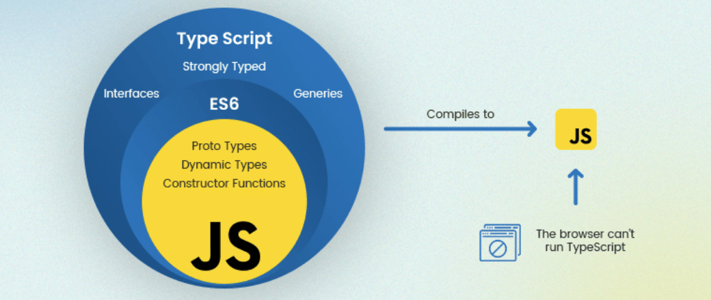</p>
<hr>

<h3>核心区别</h3>
<table>
<thead>
<tr>
<th>特性</th>
<th>JavaScript</th>
<th>TypeScript</th>
</tr>
</thead>
<tbody>
<tr>
<td>类型系统</td>
<td>动态类型</td>
<td>静态类型（可选）</td>
</tr>
<tr>
<td>编译</td>
<td>解释执行</td>
<td>编译为 JavaScript</td>
</tr>
<tr>
<td>开发时类型检查</td>
<td>无</td>
<td>有</td>
</tr>
<tr>
<td>IDE 支持</td>
<td>基础</td>
<td>强大的智能提示</td>
</tr>
<tr>
<td>代码重构</td>
<td>困难</td>
<td>安全简单</td>
</tr>
</tbody>
</table>

<hr>

<h3>类型系统对比</h3>
<p>JavaScript 是动态类型语言，变量类型在运行时确定：</p>

<h3>JavaScript 动态类型</h3>

<span style="color:#006600">// JavaScript - 变量类型可以随时改变</span><br>
<span style="color:#000066">var</span> message <span style="color:#339933">=</span> <span style="color:#3366CC">"Hello"</span><span style="color:#339933">;</span><br>
message <span style="color:#339933">=</span> <span style="color:#CC0000">123</span><span style="color:#339933">;</span>           <span style="color:#006600">// 合法，不会报错</span><br>
message <span style="color:#339933">=</span> <span style="color:#003366">true</span><span style="color:#339933">;</span>          <span style="color:#006600">// 仍然合法</span><br>
<br>
<span style="color:#006600">// 运行前不知道变量类型</span><br>
<span style="color:#000066">function</span> greet<span style="color:#009900">(</span>name<span style="color:#009900">)</span> <span style="color:#009900">{</span><br>
    <span style="color:#000066">return</span> <span style="color:#3366CC">"Hello, "</span> <span style="color:#339933">+</span> name<span style="color:#339933">;</span><br>
<span style="color:#009900">}</span><br>

<p>TypeScript 是静态类型语言，在编译时检查类型：</p>

<h3>TypeScript 静态类型</h3>

<span style="color:#006600">// TypeScript - 声明时指定类型</span><br>
<span style="color:#000066">var</span> message<span style="color:#339933">:</span> string <span style="color:#339933">=</span> <span style="color:#3366CC">"Hello"</span><span style="color:#339933">;</span><br>
<span style="color:#006600">// message = 123;    // 编译错误：Type 'number' is not assignable to type 'string'</span><br>
<br>
<span style="color:#006600">// 函数参数和返回值类型明确</span><br>
<span style="color:#000066">function</span> greet<span style="color:#009900">(</span>name<span style="color:#339933">:</span> string<span style="color:#009900">)</span><span style="color:#339933">:</span> string <span style="color:#009900">{</span><br>
    <span style="color:#000066">return</span> <span style="color:#3366CC">"Hello, "</span> <span style="color:#339933">+</span> name<span style="color:#339933">;</span><br>
<span style="color:#009900">}</span><br>
<br>
<span style="color:#006600">// 类型错误会在编译时发现</span><br>
greet<span style="color:#009900">(</span><span style="color:#CC0000">123</span><span style="color:#009900">)</span><span style="color:#339933">;</span>  <span style="color:#006600">// 编译错误：Argument of type 'number' is not assignable to parameter of type 'string'</span><br>

<hr>

<h3>编译过程</h3>
<p>TypeScript 需要编译为 JavaScript 才能在浏览器中运行：</p>

<h3>TypeScript 源码</h3>

<span style="color:#006600">// app.ts - TypeScript 源码</span><br>
<span style="color:#FF0000">interface</span> User <span style="color:#009900">{</span><br>
    name<span style="color:#339933">:</span> string<span style="color:#339933">;</span><br>
    age<span style="color:#339933">:</span> number<span style="color:#339933">;</span><br>
<span style="color:#009900">}</span><br>
<br>
<span style="color:#000066">function</span> createUser<span style="color:#009900">(</span>name<span style="color:#339933">:</span> string<span style="color:#339933">,</span> age<span style="color:#339933">:</span> number<span style="color:#009900">)</span><span style="color:#339933">:</span> User <span style="color:#009900">{</span><br>
    <span style="color:#000066">return</span> <span style="color:#009900">{</span> name<span style="color:#339933">,</span> age <span style="color:#009900">}</span><span style="color:#339933">;</span><br>
<span style="color:#009900">}</span><br>
<br>
<span style="color:#000066">var</span> user <span style="color:#339933">=</span> createUser<span style="color:#009900">(</span><span style="color:#3366CC">"Alice"</span><span style="color:#339933">,</span> <span style="color:#CC0000">25</span><span style="color:#009900">)</span><span style="color:#339933">;</span><br>
console.<span style="color:#660066">log</span><span style="color:#009900">(</span>user<span style="color:#009900">)</span><span style="color:#339933">;</span><br>

<p>编译后的 JavaScript：</p>

<h3>编译后的 JavaScript</h3>

<span style="color:#006600">// app.js - 编译后的 JavaScript</span><br>
<span style="color:#000066">function</span> createUser<span style="color:#009900">(</span>name<span style="color:#339933">,</span> age<span style="color:#009900">)</span> <span style="color:#009900">{</span><br>
    <span style="color:#000066">return</span> <span style="color:#009900">{</span> name<span style="color:#339933">:</span> name<span style="color:#339933">,</span> age<span style="color:#339933">:</span> age <span style="color:#009900">}</span><span style="color:#339933">;</span><br>
<span style="color:#009900">}</span><br>
<br>
<span style="color:#000066">var</span> user <span style="color:#339933">=</span> createUser<span style="color:#009900">(</span><span style="color:#3366CC">"Alice"</span><span style="color:#339933">,</span> <span style="color:#CC0000">25</span><span style="color:#009900">)</span><span style="color:#339933">;</span><br>
console.<span style="color:#660066">log</span><span style="color:#009900">(</span>user<span style="color:#009900">)</span><span style="color:#339933">;</span><br>

<hr>

<h3>类型推断</h3>
<p>TypeScript 具有强大的类型推断能力，即使不显式声明类型：</p>

<h3>类型推断</h3>

<span style="color:#006600">// TypeScript 自动推断类型</span><br>
<span style="color:#000066">var</span> num <span style="color:#339933">=</span> <span style="color:#CC0000">10</span><span style="color:#339933">;</span>          <span style="color:#006600">// 推断为 number</span><br>
<span style="color:#000066">var</span> str <span style="color:#339933">=</span> <span style="color:#3366CC">"hello"</span><span style="color:#339933">;</span>    <span style="color:#006600">// 推断为 string</span><br>
<span style="color:#000066">var</span> isActive <span style="color:#339933">=</span> <span style="color:#003366">true</span><span style="color:#339933">;</span>  <span style="color:#006600">// 推断为 boolean</span><br>
<br>
<span style="color:#006600">// 函数返回值类型也会推断</span><br>
<span style="color:#000066">function</span> add<span style="color:#009900">(</span>a<span style="color:#339933">,</span> b<span style="color:#009900">)</span> <span style="color:#009900">{</span><br>
    <span style="color:#000066">return</span> a <span style="color:#339933">+</span> b<span style="color:#339933">;</span>     <span style="color:#006600">// 推断返回值为 number</span><br>
<span style="color:#009900">}</span><br>
<br>
<span style="color:#000066">var</span> result <span style="color:#339933">=</span> add<span style="color:#009900">(</span><span style="color:#CC0000">1</span><span style="color:#339933">,</span> <span style="color:#CC0000">2</span><span style="color:#009900">)</span><span style="color:#339933">;</span>  <span style="color:#006600">// result 类型为 number</span><br>

<hr>

<h3>开发体验对比</h3>
<h4>智能提示</h4>
<p>TypeScript 为 IDE 提供丰富的类型信息，实现智能提示：</p>
<pre>
// 在 TypeScript 中，IDE 知道 user 对象有 name 和 age 属性
user.    // 自动提示 .name 和 .age

// JavaScript 中 IDE 无法确定类型，提示有限
user.    // 可能没有有用的提示
</pre>

<h4>重构支持</h4>
<p>TypeScript 使得代码重构更安全：</p>
<ul>
<li>重命名变量/函数时，所有引用自动更新</li>
<li>修改函数签名时，调用处会显示错误</li>
<li>提取代码时，类型自动保持</li>
</ul>
<hr>

<h3>选择 TypeScript 的理由</h3>
<blockquote><p>为什么选择 TypeScript：</p>
<ol>
<li>编译时错误检测，提前发现 bug</li>
<li>更好的代码可读性和可维护性</li>
<li>强大的 IDE 智能提示</li>
<li>安全的重构</li>
<li>现代前端框架的标配（React、Vue、Angular）</li>
</ol>
</blockquote>

<p>TypeScript 是 JavaScript 的超集，它在保持 JavaScript 灵活性的同时，增加了类型系统来提高代码质量。对于大型项目，TypeScript 的优势更加明显。</p></div></section>
<section class="ch" id="c9"><h2>9. TypeScript tsconfig.json<a class="chsrc" href="https://www.runoob.com/typescript/ts-tsconfig.html" target="_blank" rel="noopener">原文↗</a></h2><div class="ch-body"><p>tsconfig.json 是 TypeScript 项目的配置文件，用于指定编译选项和项目设置。</p>
<hr>

<h3>基本配置</h3>
<p>最基础的 tsconfig.json 文件。</p>

<h3>实例</h3>

<span style="color:#009900">{</span><br>
    <span style="color:#3366CC">"compilerOptions"</span><span style="color:#339933">:</span> <span style="color:#009900">{</span><br>
        <span style="color:#3366CC">"target"</span><span style="color:#339933">:</span> <span style="color:#3366CC">"ES2020"</span><span style="color:#339933">,</span><br>
        <span style="color:#3366CC">"module"</span><span style="color:#339933">:</span> <span style="color:#3366CC">"commonjs"</span><span style="color:#339933">,</span><br>
        <span style="color:#3366CC">"strict"</span><span style="color:#339933">:</span> <span style="color:#003366">true</span><span style="color:#339933">,</span><br>
        <span style="color:#3366CC">"outDir"</span><span style="color:#339933">:</span> <span style="color:#3366CC">"./dist"</span><br>
    <span style="color:#009900">}</span><span style="color:#339933">,</span><br>
    <span style="color:#3366CC">"include"</span><span style="color:#339933">:</span> <span style="color:#009900">[</span><span style="color:#3366CC">"src/**/*"</span><span style="color:#009900">]</span><span style="color:#339933">,</span><br>
    <span style="color:#3366CC">"exclude"</span><span style="color:#339933">:</span> <span style="color:#009900">[</span><span style="color:#3366CC">"node_modules"</span><span style="color:#339933">,</span> <span style="color:#3366CC">"dist"</span><span style="color:#009900">]</span><br>
<span style="color:#009900">}</span><br>

<p>配置说明：</p>
<ul>
<li><strong>target：</strong>编译目标 JavaScript 版本</li>
<li><strong>module：</strong>使用的模块系统</li>
<li><strong>strict：</strong>启用所有严格类型检查</li>
<li><strong>outDir：</strong>输出目录</li>
</ul>
<hr>

<h3>编译目标版本</h3>
<p>使用 target 指定编译到的 JavaScript 版本。</p>

<h3>实例</h3>

<span style="color:#006600">// tsconfig.json</span><br>
<span style="color:#009900">{</span><br>
    <span style="color:#3366CC">"compilerOptions"</span><span style="color:#339933">:</span> <span style="color:#009900">{</span><br>
        <span style="color:#006600">// ES3, ES5, ES6/ES2015, ES2020, ESNext</span><br>
        <span style="color:#3366CC">"target"</span><span style="color:#339933">:</span> <span style="color:#3366CC">"ES2020"</span><br>
    <span style="color:#009900">}</span><br>
<span style="color:#009900">}</span><br>

<p>不同目标的输出差异：</p>
<pre>
// target: ES5 - 使用 var
var greeting = "Hello";

// target: ES2020 - 使用 let/const
let greeting = "Hello";
</pre>

<hr>

<h3>模块系统</h3>
<p>配置模块化方案。</p>

<h3>实例</h3>

<span style="color:#009900">{</span><br>
    <span style="color:#3366CC">"compilerOptions"</span><span style="color:#339933">:</span> <span style="color:#009900">{</span><br>
        <span style="color:#3366CC">"module"</span><span style="color:#339933">:</span> <span style="color:#3366CC">"commonjs"</span><span style="color:#339933">,</span><br>
        <span style="color:#006600">// 可选: none, commonjs, amd, umd, es6, es2020, esnext</span><br>
    <span style="color:#009900">}</span><br>
<span style="color:#009900">}</span><br>

<hr>

<h3>严格模式</h3>
<p>strict 选项启用所有严格类型检查。</p>

<h3>实例</h3>

<span style="color:#009900">{</span><br>
    <span style="color:#3366CC">"compilerOptions"</span><span style="color:#339933">:</span> <span style="color:#009900">{</span><br>
        <span style="color:#3366CC">"strict"</span><span style="color:#339933">:</span> <span style="color:#003366">true</span><span style="color:#339933">,</span><br>
        <span style="color:#006600">// 等同于开启以下所有选项：</span><br>
        <span style="color:#006600">// "strictNullChecks": true,</span><br>
        <span style="color:#006600">// "noImplicitAny": true,</span><br>
        <span style="color:#006600">// "strictFunctionTypes": true,</span><br>
        <span style="color:#006600">// 等等</span><br>
    <span style="color:#009900">}</span><br>
<span style="color:#009900">}</span><br>

<blockquote><p><strong>建议：</strong>始终启用 strict: true，这是最佳实践。</p></blockquote>

<hr>

<h3>路径别名</h3>
<p>配置路径别名简化导入。</p>

<h3>实例</h3>

<span style="color:#009900">{</span><br>
    <span style="color:#3366CC">"compilerOptions"</span><span style="color:#339933">:</span> <span style="color:#009900">{</span><br>
        <span style="color:#3366CC">"baseUrl"</span><span style="color:#339933">:</span> <span style="color:#3366CC">"."</span><span style="color:#339933">,</span><br>
        <span style="color:#3366CC">"paths"</span><span style="color:#339933">:</span> <span style="color:#009900">{</span><br>
            <span style="color:#3366CC">"@/*"</span><span style="color:#339933">:</span> <span style="color:#009900">[</span><span style="color:#3366CC">"src/*"</span><span style="color:#009900">]</span><span style="color:#339933">,</span><br>
            <span style="color:#3366CC">"@components/*"</span><span style="color:#339933">:</span> <span style="color:#009900">[</span><span style="color:#3366CC">"src/components/*"</span><span style="color:#009900">]</span><br>
        <span style="color:#009900">}</span><br>
    <span style="color:#009900">}</span><br>
<span style="color:#009900">}</span><br>

<p>使用方式：</p>
<pre>
import Button from "@components/Button";
import { Header } from "@/components";
</pre>

<hr>

<h3>文件包含与排除</h3>
<p>控制哪些文件包含在编译中。</p>

<h3>实例</h3>

<span style="color:#009900">{</span><br>
    <span style="color:#3366CC">"include"</span><span style="color:#339933">:</span> <span style="color:#009900">[</span><span style="color:#3366CC">"src/**/*"</span><span style="color:#009900">]</span><span style="color:#339933">,</span><br>
    <span style="color:#3366CC">"exclude"</span><span style="color:#339933">:</span> <span style="color:#009900">[</span><br>
        <span style="color:#3366CC">"node_modules"</span><span style="color:#339933">,</span><br>
        <span style="color:#3366CC">"dist"</span><span style="color:#339933">,</span><br>
        <span style="color:#3366CC">"**/*.test.ts"</span><span style="color:#339933">,</span><br>
        <span style="color:#3366CC">"**/*.spec.ts"</span><br>
    <span style="color:#009900">]</span><br>
<span style="color:#009900">}</span><br>

<hr>

<h3>常用编译选项一览</h3>
<table>
<thead>
<tr>
<th>选项</th>
<th>说明</th>
</tr>
</thead>
<tbody>
<tr>
<td>target</td>
<td>编译目标版本</td>
</tr>
<tr>
<td>module</td>
<td>模块系统</td>
</tr>
<tr>
<td>strict</td>
<td>严格模式</td>
</tr>
<tr>
<td>outDir</td>
<td>输出目录</td>
</tr>
<tr>
<td>rootDir</td>
<td>源码根目录</td>
</tr>
<tr>
<td>esModuleInterop</td>
<td>允许 ES 模块互操作</td>
</tr>
<tr>
<td>skipLibCheck</td>
<td>跳过库检查</td>
</tr>
<tr>
<td>declaration</td>
<td>生成 .d.ts 声明文件</td>
</tr>
</tbody>
</table>

<hr>

<h3>总结</h3>
<ul>
<li><strong>tsconfig.json：</strong>TypeScript 项目配置文件</li>
<li><strong>compilerOptions：</strong>编译选项核心配置</li>
<li><strong>include/exclude：</strong>控制文件范围</li>
<li><strong>路径别名：</strong>简化导入路径</li>
<li><strong>strict: true：</strong>始终启用严格模式</li>
</ul></div></section>
<section class="ch" id="c10"><h2>10. TypeScript 编译选项<a class="chsrc" href="https://www.runoob.com/typescript/ts-compiler-options.html" target="_blank" rel="noopener">原文↗</a></h2><div class="ch-body"><p>TypeScript 编译器（tsc）有众多编译选项，本教程详细介绍常用的编译选项及其作用。</p>

<hr>

<h3>输出控制选项</h3>

<h3>实例</h3>

<span style="color:#009900">{</span><br>
    <span style="color:#3366CC">"compilerOptions"</span><span style="color:#339933">:</span> <span style="color:#009900">{</span><br>
        <span style="color:#006600">// 输出目录</span><br>
        <span style="color:#3366CC">"outDir"</span><span style="color:#339933">:</span> <span style="color:#3366CC">"./dist"</span><span style="color:#339933">,</span><br>
<br>
        <span style="color:#006600">// 源码根目录</span><br>
        <span style="color:#3366CC">"rootDir"</span><span style="color:#339933">:</span> <span style="color:#3366CC">"./src"</span><span style="color:#339933">,</span><br>
<br>
        <span style="color:#006600">// 生成 .d.ts 声明文件</span><br>
        <span style="color:#3366CC">"declaration"</span><span style="color:#339933">:</span> <span style="color:#003366">true</span><span style="color:#339933">,</span><br>
<br>
        <span style="color:#006600">// 声明文件输出目录</span><br>
        <span style="color:#3366CC">"declarationDir"</span><span style="color:#339933">:</span> <span style="color:#3366CC">"./types"</span><span style="color:#339933">,</span><br>
<br>
        <span style="color:#006600">// 生成 source map</span><br>
        <span style="color:#3366CC">"sourceMap"</span><span style="color:#339933">:</span> <span style="color:#003366">true</span><span style="color:#339933">,</span><br>
<br>
        <span style="color:#006600">// 生成 .js.map 文件</span><br>
        <span style="color:#3366CC">"mapRoot"</span><span style="color:#339933">:</span> <span style="color:#3366CC">"./map"</span><br>
    <span style="color:#009900">}</span><br>
<span style="color:#009900">}</span><br>

<hr>

<h3>类型检查选项</h3>

<h3>实例</h3>

<span style="color:#009900">{</span><br>
    <span style="color:#3366CC">"compilerOptions"</span><span style="color:#339933">:</span> <span style="color:#009900">{</span><br>
        <span style="color:#006600">// 严格模式（推荐始终开启）</span><br>
        <span style="color:#3366CC">"strict"</span><span style="color:#339933">:</span> <span style="color:#003366">true</span><span style="color:#339933">,</span><br>
<br>
        <span style="color:#006600">// 检查 null 和 undefined</span><br>
        <span style="color:#3366CC">"strictNullChecks"</span><span style="color:#339933">:</span> <span style="color:#003366">true</span><span style="color:#339933">,</span><br>
<br>
        <span style="color:#006600">// 检查 this 参数</span><br>
        <span style="color:#3366CC">"noImplicitThis"</span><span style="color:#339933">:</span> <span style="color:#003366">true</span><span style="color:#339933">,</span><br>
<br>
        <span style="color:#006600">// 严格函数类型</span><br>
        <span style="color:#3366CC">"strictFunctionTypes"</span><span style="color:#339933">:</span> <span style="color:#003366">true</span><span style="color:#339933">,</span><br>
<br>
        <span style="color:#006600">// 严格属性初始化</span><br>
        <span style="color:#3366CC">"strictPropertyInitialization"</span><span style="color:#339933">:</span> <span style="color:#003366">true</span><span style="color:#339933">,</span><br>
<br>
        <span style="color:#006600">// 不允许隐式 any</span><br>
        <span style="color:#3366CC">"noImplicitAny"</span><span style="color:#339933">:</span> <span style="color:#003366">true</span><span style="color:#339933">,</span><br>
<br>
        <span style="color:#006600">// 不允许返回 void</span><br>
        <span style="color:#3366CC">"noImplicitReturns"</span><span style="color:#339933">:</span> <span style="color:#003366">true</span><span style="color:#339933">,</span><br>
<br>
        <span style="color:#006600">// 开启所有严格检查</span><br>
        <span style="color:#3366CC">"strict"</span><span style="color:#339933">:</span> <span style="color:#003366">true</span><br>
    <span style="color:#009900">}</span><br>
<span style="color:#009900">}</span><br>

<hr>

<h3>模块选项</h3>

<h3>实例</h3>

<span style="color:#009900">{</span><br>
    <span style="color:#3366CC">"compilerOptions"</span><span style="color:#339933">:</span> <span style="color:#009900">{</span><br>
        <span style="color:#006600">// 模块系统</span><br>
        <span style="color:#3366CC">"module"</span><span style="color:#339933">:</span> <span style="color:#3366CC">"commonjs"</span><span style="color:#339933">,</span><br>
<br>
        <span style="color:#006600">// 模块解析策略</span><br>
        <span style="color:#3366CC">"moduleResolution"</span><span style="color:#339933">:</span> <span style="color:#3366CC">"node"</span><span style="color:#339933">,</span><br>
<br>
        <span style="color:#006600">// 解析基础路径</span><br>
        <span style="color:#3366CC">"baseUrl"</span><span style="color:#339933">:</span> <span style="color:#3366CC">"."</span><span style="color:#339933">,</span><br>
<br>
        <span style="color:#006600">// 路径别名</span><br>
        <span style="color:#3366CC">"paths"</span><span style="color:#339933">:</span> <span style="color:#009900">{</span><br>
            <span style="color:#3366CC">"@/*"</span><span style="color:#339933">:</span> <span style="color:#009900">[</span><span style="color:#3366CC">"src/*"</span><span style="color:#009900">]</span><br>
        <span style="color:#009900">}</span><span style="color:#339933">,</span><br>
<br>
        <span style="color:#006600">// ES 模块互操作</span><br>
        <span style="color:#3366CC">"esModuleInterop"</span><span style="color:#339933">:</span> <span style="color:#003366">true</span><span style="color:#339933">,</span><br>
<br>
        <span style="color:#006600">// 允许默认导入</span><br>
        <span style="color:#3366CC">"allowSyntheticDefaultImports"</span><span style="color:#339933">:</span> <span style="color:#003366">true</span><span style="color:#339933">,</span><br>
<br>
        <span style="color:#006600">// 隔离模块</span><br>
        <span style="color:#3366CC">"isolatedModules"</span><span style="color:#339933">:</span> <span style="color:#003366">true</span><br>
    <span style="color:#009900">}</span><br>
<span style="color:#009900">}</span><br>

<hr>

<h3>ES 特性选项</h3>

<h3>实例</h3>

<span style="color:#009900">{</span><br>
    <span style="color:#3366CC">"compilerOptions"</span><span style="color:#339933">:</span> <span style="color:#009900">{</span><br>
        <span style="color:#006600">// 编译目标</span><br>
        <span style="color:#3366CC">"target"</span><span style="color:#339933">:</span> <span style="color:#3366CC">"ES2020"</span><span style="color:#339933">,</span><br>
<br>
        <span style="color:#006600">// 启用的库</span><br>
        <span style="color:#3366CC">"lib"</span><span style="color:#339933">:</span> <span style="color:#009900">[</span><span style="color:#3366CC">"ES2020"</span><span style="color:#339933">,</span> <span style="color:#3366CC">"DOM"</span><span style="color:#009900">]</span><span style="color:#339933">,</span><br>
<br>
        <span style="color:#006600">// 允许未使用的局部变量</span><br>
        <span style="color:#3366CC">"noUnusedLocals"</span><span style="color:#339933">:</span> <span style="color:#003366">true</span><span style="color:#339933">,</span><br>
<br>
        <span style="color:#006600">// 允许未使用的参数</span><br>
        <span style="color:#3366CC">"noUnusedParameters"</span><span style="color:#339933">:</span> <span style="color:#003366">true</span><span style="color:#339933">,</span><br>
<br>
        <span style="color:#006600">// 代码降级</span><br>
        <span style="color:#3366CC">"downlevelIteration"</span><span style="color:#339933">:</span> <span style="color:#003366">true</span><br>
    <span style="color:#009900">}</span><br>
<span style="color:#009900">}</span><br>

<hr>

<h3>实验性选项</h3>

<h3>实例</h3>

<span style="color:#009900">{</span><br>
    <span style="color:#3366CC">"compilerOptions"</span><span style="color:#339933">:</span> <span style="color:#009900">{</span><br>
        <span style="color:#006600">// 启用装饰器</span><br>
        <span style="color:#3366CC">"experimentalDecorators"</span><span style="color:#339933">:</span> <span style="color:#003366">true</span><span style="color:#339933">,</span><br>
<br>
        <span style="color:#006600">// 启用装饰器元数据</span><br>
        <span style="color:#3366CC">"emitDecoratorMetadata"</span><span style="color:#339933">:</span> <span style="color:#003366">true</span><span style="color:#339933">,</span><br>
<br>
        <span style="color:#006600">// 启用异步迭代器</span><br>
        <span style="color:#3366CC">"emitDecoratorMetadata"</span><span style="color:#339933">:</span> <span style="color:#003366">true</span><span style="color:#339933">,</span><br>
<br>
        <span style="color:#006600">// 跳过库检查</span><br>
        <span style="color:#3366CC">"skipLibCheck"</span><span style="color:#339933">:</span> <span style="color:#003366">true</span><br>
    <span style="color:#009900">}</span><br>
<span style="color:#009900">}</span><br>

<hr>

<h3>常用编译选项组合</h3>

<h3>实例</h3>

<span style="color:#006600">// Node.js 项目推荐配置</span><br>
<span style="color:#009900">{</span><br>
    <span style="color:#3366CC">"compilerOptions"</span><span style="color:#339933">:</span> <span style="color:#009900">{</span><br>
        <span style="color:#3366CC">"target"</span><span style="color:#339933">:</span> <span style="color:#3366CC">"ES2020"</span><span style="color:#339933">,</span><br>
        <span style="color:#3366CC">"module"</span><span style="color:#339933">:</span> <span style="color:#3366CC">"commonjs"</span><span style="color:#339933">,</span><br>
        <span style="color:#3366CC">"lib"</span><span style="color:#339933">:</span> <span style="color:#009900">[</span><span style="color:#3366CC">"ES2020"</span><span style="color:#009900">]</span><span style="color:#339933">,</span><br>
        <span style="color:#3366CC">"outDir"</span><span style="color:#339933">:</span> <span style="color:#3366CC">"./dist"</span><span style="color:#339933">,</span><br>
        <span style="color:#3366CC">"rootDir"</span><span style="color:#339933">:</span> <span style="color:#3366CC">"./src"</span><span style="color:#339933">,</span><br>
        <span style="color:#3366CC">"strict"</span><span style="color:#339933">:</span> <span style="color:#003366">true</span><span style="color:#339933">,</span><br>
        <span style="color:#3366CC">"esModuleInterop"</span><span style="color:#339933">:</span> <span style="color:#003366">true</span><span style="color:#339933">,</span><br>
        <span style="color:#3366CC">"skipLibCheck"</span><span style="color:#339933">:</span> <span style="color:#003366">true</span><span style="color:#339933">,</span><br>
        <span style="color:#3366CC">"forceConsistentCasingInFileNames"</span><span style="color:#339933">:</span> <span style="color:#003366">true</span><span style="color:#339933">,</span><br>
        <span style="color:#3366CC">"moduleResolution"</span><span style="color:#339933">:</span> <span style="color:#3366CC">"node"</span><span style="color:#339933">,</span><br>
        <span style="color:#3366CC">"declaration"</span><span style="color:#339933">:</span> <span style="color:#003366">true</span><br>
    <span style="color:#009900">}</span><br>
<span style="color:#009900">}</span><br>

<hr>

<h3>编译选项表</h3>
<table>
<thead>
<tr>
<th>类别</th>
<th>常用选项</th>
</tr>
</thead>
<tbody>
<tr>
<td>输出</td>
<td>outDir, rootDir, declaration, sourceMap</td>
</tr>
<tr>
<td>类型检查</td>
<td>strict, strictNullChecks, noImplicitAny</td>
</tr>
<tr>
<td>模块</td>
<td>module, moduleResolution, paths, esModuleInterop</td>
</tr>
<tr>
<td>ES 特性</td>
<td>target, lib, downlevelIteration</td>
</tr>
<tr>
<td>实验性</td>
<td>experimentalDecorators, emitDecoratorMetadata</td>
</tr>
</tbody>
</table>

<hr>

<h3>总结</h3>
<ul>
<li><strong>严格模式：</strong>始终启用 strict: true</li>
<li><strong>目标版本：</strong>根据环境选择合适的 target</li>
<li><strong>模块系统：</strong>根据部署环境选择 module</li>
<li><strong>类型声明：</strong>库开发时启用 declaration</li>
</ul></div></section>
<section class="ch" id="c11"><h2>11. TypeScript 基础类型<a class="chsrc" href="https://www.runoob.com/typescript/ts-type.html" target="_blank" rel="noopener">原文↗</a></h2><div class="ch-body"><p>
基础类型可以开发者更准确地描述数据的结构和意图。</p>
<p>TypeScript 包含的数据类型如下表:</p>

 <table>
<thead><tr><th>类型</th><th>描述</th><th>示例</th></tr></thead><tbody><tr><td><code>string</code></td><td>表示文本数据</td><td><code>let name: string = "Alice";</code></td></tr><tr><td><code>number</code></td><td>表示数字，包括整数和浮点数</td><td><code>let age: number = 30;</code></td></tr><tr><td><code>boolean</code></td><td>表示布尔值 <code>true</code> 或 <code>false</code></td><td><code>let isDone: boolean = true;</code></td></tr><tr><td><code>array</code></td><td>表示相同类型的元素数组</td><td><code>let list: number[] = [1, 2, 3];</code></td></tr><tr><td><code>tuple</code></td><td>表示已知类型和长度的数组</td><td><code>let person: [string, number] = ["Alice", 30];</code></td></tr><tr><td><code>enum</code></td><td>定义一组命名常量</td><td><code>enum Color { Red, Green, Blue };</code></td></tr><tr><td><code>any</code></td><td>任意类型，不进行类型检查</td><td><code>let value: any = 42;</code></td></tr><tr><td><code>void</code></td><td>无返回值（常用于函数）</td><td><code>function log(): void {}</code></td></tr><tr><td><code>null</code></td><td>表示空值</td><td><code>let empty: null = null;</code></td></tr><tr><td><code>undefined</code></td><td>表示未定义</td><td><code>let undef: undefined = undefined;</code></td></tr><tr><td><code>never</code></td><td>表示不会有返回值</td><td><code>function error(): never { throw new Error("error"); }</code></td></tr><tr><td><code>object</code></td><td>表示非原始类型</td><td><code>let obj: object = { name: "Alice" };</code></td></tr><tr><td><code>union</code></td><td>联合类型，表示可以是多种类型之一</td><td>`let id: string</td></tr><tr><td><code>unknown</code></td><td>不确定类型，需类型检查后再使用</td><td><code>let value: unknown = "Hello";</code></td></tr></tbody></table>

<p><strong>注意：</strong>TypeScript 和 JavaScript 没有整数类型。</p>
<h4>1、string 字符串</h4><p>
表示文本数据，只能存储字符串，通常用于描述文字信息。</p>
<pre>
let message: string = "Hello, TypeScript!";</pre>
<p>
<strong>模板字符串：</strong>TypeScript 支持 <strong>模板字符串</strong>，用反引号 <span class="marked">`</span>（记住不是单引号<span class="marked"> '</span>）来定义，允许在字符串中插入变量或表达式，非常适合多行文本和拼接变量。</p>

<pre>let name: string = "Alice";
let greeting: string = `Hello, ${name}! Welcome to TypeScript.`;
console.log(greeting); // 输出：Hello, Alice! Welcome to TypeScript.</pre>

<h4>2、number 数字</h4><p>
TypeScript 使用 number 表示所有数字，包括整数和浮点数。</p>
<pre>
let age: number = 25;
let temperature: number = 36.5;</pre>
<h4>3、boolean 布尔值</h4><p>
表示逻辑值 true 或 false，用于条件判断。</p>
<pre>
let isCompleted: boolean = false;</pre>
<h4>4、array 数组</h4><p>
可以表示一组相同类型的元素。可以使用 type[] 或 Array&lt;type&gt; 两种方式表示。</p>
<pre>
let numbers: number[] = [1, 2, 3];
let names: Array&lt;string&gt; = ["Alice", "Bob"];</pre>
<h4>5、tuple 元组</h4><p>
表示已知数量和类型的数组。每个元素可以是不同的类型，适合表示固定结构的数据。</p>
<pre>
let person: [string, number] = ["Alice", 25];</pre>
<h4>6、enum 枚举</h4><p>
用来定义一组命名常量。默认情况下枚举的值从 0 开始递增。</p>

<pre>enum Color {
  Red,
  Green,
  Blue,
}
let favoriteColor: Color = Color.Green;</pre>

<h4>7、any 类型</h4>
<p>以表示任何类型。适合不确定数据类型的情况，但使用时需谨慎，因为 any 会绕过类型检查。</p>
<pre>let randomValue: any = 42;
randomValue = "hello";</pre>

<p>任意值是 TypeScript 针对编程时类型不明确的变量使用的一种数据类型，它常用于以下三种情况。</p>

<p>1、变量的值会动态改变时，比如来自用户的输入，任意值类型可以让这些变量跳过编译阶段的类型检查，示例代码如下：</p>
<pre>
let x: any = 1;    // 数字类型
x = 'I am who I am';    // 字符串类型
x = false;    // 布尔类型</pre>
<p>改写现有代码时，任意值允许在编译时可选择地包含或移除类型检查，示例代码如下：</p>

<pre>let x: any = 4;
x.ifItExists();    // 正确，ifItExists方法在运行时可能存在，但这里并不会检查
x.toFixed();    // 正确</pre>
<p>定义存储各种类型数据的数组时，示例代码如下：</p>

<pre>let arrayList: any[] = [1, false, 'fine'];
arrayList[1] = 100;</pre>
<h4>
8、void 空类型</h4><p>
用于没有返回值的函数。声明变量时，类型 void 意味着只能赋值 null 或 undefined。</p>
<pre>
function logMessage(message: string): void {
  console.log(message);
}</pre>

<h4>
9、null 和 undefined</h4>
<p>null 和 undefined分别表示"空值"和"未定义"。在默认情况下，它们是所有类型的子类型，但可以通过设置 strictNullChecks 严格检查。</p>

<pre>let empty: null = null;
let notAssigned: undefined = undefined;</pre>
<p>
<strong>null</strong></p>
<p>在 JavaScript 中 null 表示 "什么都没有"。</p>

<p>null是一个只有一个值的特殊类型。表示一个空对象引用。</p>

<p>用 typeof 检测 null 返回是 object。</p>

<p>
<strong>undefined</strong></p>
<p>在 JavaScript 中, undefined 是一个没有设置值的变量。</p>

<p>typeof 一个没有值的变量会返回 undefined。</p>
<p>Null 和 Undefined 是其他任何类型（包括 void）的子类型，可以赋值给其它类型，如数字类型，此时，赋值后的类型会变成 null 或 undefined。而在TypeScript中启用严格的空校验（--strictNullChecks）特性，就可以使得null 和 undefined 只能被赋值给 void 或本身对应的类型，示例代码如下：</p>

<pre>// 启用 --strictNullChecks
let x: number;
x = 1; // 编译正确
x = undefined;    // 编译错误
x = null;    // 编译错误</pre>
<p>上面的例子中变量 x 只能是数字类型。如果一个类型可能出现 null 或 undefined， 可以用 | 来支持多种类型，示例代码如下：</p>

<pre>// 启用 --strictNullChecks
let x: number | null | undefined;
x = 1; // 编译正确
x = undefined;    // 编译正确
x = null;    // 编译正确</pre>

<p>更多内容可以查看：<a href="js.html#c25">JavaScript typeof, null, 和 undefined</a></p>

<h4>
10、never 类型</h4>
<p>表示不会有返回值，通常用于抛出错误或进入无限循环的函数，表示该函数永远不会正常结束。</p>

<pre>function throwError(message: string): never {
  throw new Error(message);
}</pre>
<p>never 是其它类型（包括 null 和 undefined）的子类型，代表从不会出现的值。这意味着声明为 never 类型的变量只能被 never 类型所赋值，在函数中它通常表现为抛出异常或无法执行到终止点（例如无限循环），示例代码如下：</p>

<pre>let x: never;
let y: number;

// 编译错误，数字类型不能转为 never 类型
x = 123;

// 运行正确，never 类型可以赋值给 never类型
x = (()=&gt;{ throw new Error('exception')})();

// 运行正确，never 类型可以赋值给 数字类型
y = (()=&gt;{ throw new Error('exception')})();

// 返回值为 never 的函数可以是抛出异常的情况
function error(message: string): never {
    throw new Error(message);
}

// 返回值为 never 的函数可以是无法被执行到的终止点的情况
function loop(): never {
    while (true) {}
}</pre>
<h4>11、object 对象类型</h4><p>
表示非原始类型的值，适用于复杂的对象结构。</p>
<pre>
let person: object = { name: "Alice", age: 30 };</pre>
<h4>12、联合类型 (Union)</h4><p>
表示一个变量可以是多种类型之一。通过 | 符号实现。</p>
<pre>
let id: string | number;
id = "123";
id = 456;</pre><h4>
13、unknown 不确定的类型</h4>
<p>与 any 类似，但更严格。必须经过类型检查后才能赋值给其他类型变量。</p>
<pre>
let value: unknown = "Hello";
if (typeof value === "string") {
  let message: string = value;
}</pre><h4>
14、类型断言 (Type Assertions)</h4>
<p>类型断言可以让开发者明确告诉编译器变量的类型，常用于无法推断的情况。可以使用 as 或尖括号语法。</p>
<pre>
let someValue: any = "this is a string";
let strLength: number = (someValue as string).length;</pre>
<h4>15、字面量类型</h4><p>
字面量类型可以让变量只能拥有特定的值，用于结合联合类型定义变量的特定状态。</p>
<pre>
let direction: "up" | "down" | "left" | "right";
direction = "up";</pre>
<p>通过这些类型，TypeScript 提供了更强的类型安全性和代码检查能力，使开发者能够更清晰、准确地表达数据和意图，减少运行时错误。</p>

<hr><h3>实例</h3>
<p>
以下实例展示了 TypeScript 中主要基础类型的定义和使用，模拟一个用户对象和相关的操作函数：</p>

<h3>实例</h3> 
<span style="color:#006600">// 定义枚举类型，用于表示用户的角色</span><br>
<span style="color:#FF0000">enum</span> Role <span style="color:#009900">{</span><br>
  Admin<span style="color:#339933">,</span><br>
  User<span style="color:#339933">,</span><br>
  Guest<span style="color:#339933">,</span><br>
<span style="color:#009900">}</span><br>
<br>
<span style="color:#006600">// 使用 interface 定义用户的结构</span><br>
<span style="color:#FF0000">interface</span> User <span style="color:#009900">{</span><br>
  id<span style="color:#339933">:</span> number<span style="color:#339933">;</span>               <span style="color:#006600">// number 类型，用于唯一标识用户</span><br>
  username<span style="color:#339933">:</span> string<span style="color:#339933">;</span>         <span style="color:#006600">// string 类型，表示用户名</span><br>
  isActive<span style="color:#339933">:</span> <span style="color:#FF0000">boolean</span><span style="color:#339933">;</span>        <span style="color:#006600">// boolean 类型，表示用户是否激活</span><br>
  role<span style="color:#339933">:</span> Role<span style="color:#339933">;</span>               <span style="color:#006600">// enum 类型，用于表示用户角色</span><br>
  hobbies<span style="color:#339933">:</span> string<span style="color:#009900">[</span><span style="color:#009900">]</span><span style="color:#339933">;</span>        <span style="color:#006600">// array 类型，存储用户的兴趣爱好</span><br>
  contactInfo<span style="color:#339933">:</span> <span style="color:#009900">[</span>string<span style="color:#339933">,</span> number<span style="color:#009900">]</span><span style="color:#339933">;</span> <span style="color:#006600">// tuple 类型，包含电话号码的元组，格式为：[区域码, 电话号码]</span><br>
<span style="color:#009900">}</span><br>
<br>
<span style="color:#006600">// 创建用户对象，符合 User 接口的结构</span><br>
<span style="color:#000066">const</span> user<span style="color:#339933">:</span> User <span style="color:#339933">=</span> <span style="color:#009900">{</span><br>
  id<span style="color:#339933">:</span> <span style="color:#CC0000">1</span><span style="color:#339933">,</span><br>
  username<span style="color:#339933">:</span> <span style="color:#3366CC">"Alice"</span><span style="color:#339933">,</span><br>
  isActive<span style="color:#339933">:</span> <span style="color:#003366">true</span><span style="color:#339933">,</span><br>
  role<span style="color:#339933">:</span> Role.<span style="color:#660066">User</span><span style="color:#339933">,</span><br>
  hobbies<span style="color:#339933">:</span> <span style="color:#009900">[</span><span style="color:#3366CC">"Reading"</span><span style="color:#339933">,</span> <span style="color:#3366CC">"Gaming"</span><span style="color:#009900">]</span><span style="color:#339933">,</span><br>
  contactInfo<span style="color:#339933">:</span> <span style="color:#009900">[</span><span style="color:#3366CC">"+1"</span><span style="color:#339933">,</span> <span style="color:#CC0000">123456789</span><span style="color:#009900">]</span><span style="color:#339933">,</span><br>
<span style="color:#009900">}</span><span style="color:#339933">;</span><br>
<br>
<span style="color:#006600">// 定义一个返回字符串的函数来获取用户信息</span><br>
<span style="color:#000066">function</span> getUserInfo<span style="color:#009900">(</span>user<span style="color:#339933">:</span> User<span style="color:#009900">)</span><span style="color:#339933">:</span> string <span style="color:#009900">{</span><br>
  <span style="color:#000066">return</span> `User $<span style="color:#009900">{</span>user.<span style="color:#660066">username</span><span style="color:#009900">}</span> is $<span style="color:#009900">{</span>user.<span style="color:#660066">isActive</span> <span style="color:#339933">?</span> <span style="color:#3366CC">"active"</span> <span style="color:#339933">:</span> <span style="color:#3366CC">"inactive"</span><span style="color:#009900">}</span> with role $<span style="color:#009900">{</span>Role<span style="color:#009900">[</span>user.<span style="color:#660066">role</span><span style="color:#009900">]</span><span style="color:#009900">}</span>`<span style="color:#339933">;</span><br>
<span style="color:#009900">}</span><br>
<br>
<span style="color:#006600">// 使用 void 类型定义一个函数，专门打印用户信息</span><br>
<span style="color:#000066">function</span> printUserInfo<span style="color:#009900">(</span>user<span style="color:#339933">:</span> User<span style="color:#009900">)</span><span style="color:#339933">:</span> <span style="color:#000066">void</span> <span style="color:#009900">{</span><br>
  console.<span style="color:#660066">log</span><span style="color:#009900">(</span>getUserInfo<span style="color:#009900">(</span>user<span style="color:#009900">)</span><span style="color:#009900">)</span><span style="color:#339933">;</span><br>
<span style="color:#009900">}</span><br>
<br>
<span style="color:#006600">// 定义一个 union 类型的函数参数，接受用户 ID（number）或用户名（string）</span><br>
<span style="color:#000066">function</span> findUser<span style="color:#009900">(</span>query<span style="color:#339933">:</span> number <span style="color:#339933">|</span> string<span style="color:#009900">)</span><span style="color:#339933">:</span> User <span style="color:#339933">|</span> <span style="color:#003366">undefined</span> <span style="color:#009900">{</span><br>
  <span style="color:#006600">// 使用 typeof 来判断 query 的类型</span><br>
  <span style="color:#000066">if</span> <span style="color:#009900">(</span><span style="color:#000066">typeof</span> query <span style="color:#339933">===</span> <span style="color:#3366CC">"number"</span><span style="color:#009900">)</span> <span style="color:#009900">{</span><br>
    <span style="color:#006600">// 如果是数字，则根据 ID 查找用户</span><br>
    <span style="color:#000066">return</span> query <span style="color:#339933">===</span> user.<span style="color:#660066">id</span> <span style="color:#339933">?</span> user <span style="color:#339933">:</span> <span style="color:#003366">undefined</span><span style="color:#339933">;</span><br>
  <span style="color:#009900">}</span> <span style="color:#000066">else</span> <span style="color:#000066">if</span> <span style="color:#009900">(</span><span style="color:#000066">typeof</span> query <span style="color:#339933">===</span> <span style="color:#3366CC">"string"</span><span style="color:#009900">)</span> <span style="color:#009900">{</span><br>
    <span style="color:#006600">// 如果是字符串，则根据用户名查找用户</span><br>
    <span style="color:#000066">return</span> query <span style="color:#339933">===</span> user.<span style="color:#660066">username</span> <span style="color:#339933">?</span> user <span style="color:#339933">:</span> <span style="color:#003366">undefined</span><span style="color:#339933">;</span><br>
  <span style="color:#009900">}</span><br>
  <span style="color:#000066">return</span> <span style="color:#003366">undefined</span><span style="color:#339933">;</span><br>
<span style="color:#009900">}</span><br>
<br>
<span style="color:#006600">// 定义一个 never 类型的函数，用于处理程序的异常情况</span><br>
<span style="color:#000066">function</span> throwError<span style="color:#009900">(</span>message<span style="color:#339933">:</span> string<span style="color:#009900">)</span><span style="color:#339933">:</span> never <span style="color:#009900">{</span><br>
  <span style="color:#000066">throw</span> <span style="color:#000066">new</span> Error<span style="color:#009900">(</span>message<span style="color:#009900">)</span><span style="color:#339933">;</span><br>
<span style="color:#009900">}</span><br>
<br>
<span style="color:#006600">// 使用 any 类型处理未知类型的数据</span><br>
let unknownData<span style="color:#339933">:</span> any <span style="color:#339933">=</span> <span style="color:#3366CC">"This is a string"</span><span style="color:#339933">;</span><br>
unknownData <span style="color:#339933">=</span> <span style="color:#CC0000">42</span><span style="color:#339933">;</span> <span style="color:#006600">// 重新赋值为数字，类型为 any</span><br>
<br>
<span style="color:#006600">// 使用 unknown 类型处理不确定的数据，更加安全</span><br>
let someData<span style="color:#339933">:</span> unknown <span style="color:#339933">=</span> <span style="color:#3366CC">"Possible data"</span><span style="color:#339933">;</span><br>
<span style="color:#000066">if</span> <span style="color:#009900">(</span><span style="color:#000066">typeof</span> someData <span style="color:#339933">===</span> <span style="color:#3366CC">"string"</span><span style="color:#009900">)</span> <span style="color:#009900">{</span><br>
  console.<span style="color:#660066">log</span><span style="color:#009900">(</span>`Length of data<span style="color:#339933">:</span> $<span style="color:#009900">{</span><span style="color:#009900">(</span>someData as string<span style="color:#009900">)</span>.<span style="color:#660066">length</span><span style="color:#009900">}</span>`<span style="color:#009900">)</span><span style="color:#339933">;</span><br>
<span style="color:#009900">}</span><br>
<br>
<span style="color:#006600">// 调用各个函数并测试</span><br>
printUserInfo<span style="color:#009900">(</span>user<span style="color:#009900">)</span><span style="color:#339933">;</span>                    <span style="color:#006600">// 打印用户信息</span><br>
console.<span style="color:#660066">log</span><span style="color:#009900">(</span>findUser<span style="color:#009900">(</span><span style="color:#CC0000">1</span><span style="color:#009900">)</span><span style="color:#009900">)</span><span style="color:#339933">;</span>               <span style="color:#006600">// 根据 ID 查找用户</span><br>
console.<span style="color:#660066">log</span><span style="color:#009900">(</span>findUser<span style="color:#009900">(</span><span style="color:#3366CC">"Alice"</span><span style="color:#009900">)</span><span style="color:#009900">)</span><span style="color:#339933">;</span>         <span style="color:#006600">// 根据用户名查找用户</span><br>
<br>
<span style="color:#006600">// 使用 null 和 undefined 类型的变量</span><br>
let emptyValue<span style="color:#339933">:</span> <span style="color:#003366">null</span> <span style="color:#339933">=</span> <span style="color:#003366">null</span><span style="color:#339933">;</span><br>
let uninitializedValue<span style="color:#339933">:</span> <span style="color:#003366">undefined</span> <span style="color:#339933">=</span> <span style="color:#003366">undefined</span><span style="color:#339933">;</span><br>

<p><strong>
说明：</strong></p>
<ul><li><strong>枚举类型 (<code>Role</code>)</strong>：用于定义用户角色的命名常量 <code>Admin</code>、<code>User</code> 和 <code>Guest</code>。</li><li><strong>接口 (<code>User</code>)</strong>：定义了 <code>User</code> 对象的结构，包括 <code>id</code>、<code>username</code>、<code>isActive</code> 等属性，展示了 <code>string</code>、<code>number</code>、<code>boolean</code>、<code>array</code> 和 <code>tuple</code> 类型的使用。</li><li><strong>函数 <code>getUserInfo</code></strong>：返回用户的描述信息，使用了字符串插值并结合 <code>enum</code>。</li><li><strong>函数 <code>printUserInfo</code></strong>：类型为 <code>void</code>，因为它仅输出信息，不返回任何值。</li><li><strong>联合类型 (<code>number | string</code>)</strong>：用于 <code>findUser</code> 函数的参数，可以接受数字或字符串。</li><li><strong><code>never</code> 类型</strong>：<code>throwError</code> 函数抛出错误，不会正常返回，因此使用 <code>never</code> 类型。</li><li><strong><code>any</code> 类型</strong>：展示如何声明一个可以接收任何类型的变量。</li><li><strong><code>unknown</code> 类型</strong>：类似 <code>any</code>，但更加安全，示例中在类型断言之前进行类型检查。</li><li><strong><code>null</code> 和 <code>undefined</code></strong>：演示空值的使用。</li></ul></div></section>
<section class="ch" id="c12"><h2>12. TypeScript 变量声明<a class="chsrc" href="https://www.runoob.com/typescript/ts-variables.html" target="_blank" rel="noopener">原文↗</a></h2><div class="ch-body"><p>变量是一种使用方便的占位符，用于引用计算机内存地址。</p>
<p>我们可以把变量看做存储数据的容器。</p>

<p>TypeScript 变量的命名规则：</p>
<ul>
<li><p>变量名称可以包含数字和字母。</p></li>
<li><p>除了下划线 <span class="marked">_</span> 和美元 <span class="marked">$</span> 符号外，不能包含其他特殊字符，包括空格。</p></li>
<li><p>变量名不能以数字开头。</p></li>
</ul>
<p>变量使用前必须先声明，我们可以使用 var 来声明变量。</p>

<p>我们可以使用以下四种方式来声明变量：</p>

<p>声明变量的类型及初始值：</p>

<pre>var [变量名] : [类型] = 值;</pre>

<p>例如：</p>
<pre>var uname:string = "Runoob";</pre>

<p>声明变量的类型，但没有初始值，变量值会设置为 undefined：</p>

<pre>var [变量名] : [类型];</pre>

<p>例如：</p>
<pre>var uname:string;</pre>

<p>声明变量并初始值，但不设置类型，该变量可以是任意类型：</p>
<pre>var [变量名] = 值;</pre>

<p>例如：</p>
<pre>var uname = "Runoob";</pre>

<p>声明变量没有设置类型和初始值，类型可以是任意类型，默认初始值为 undefined：</p>

<pre>var [变量名];</pre>

<p>例如：</p>
<pre>var uname;</pre>

<h4>实例</h4>

<span style="color:#000066">var</span> uname<span style="color:#339933">:</span>string <span style="color:#339933">=</span> <span style="color:#3366CC">"Runoob"</span><span style="color:#339933">;</span> <br>
<span style="color:#000066">var</span> score1<span style="color:#339933">:</span>number <span style="color:#339933">=</span> <span style="color:#CC0000">50</span><span style="color:#339933">;</span><br>
<span style="color:#000066">var</span> score2<span style="color:#339933">:</span>number <span style="color:#339933">=</span> <span style="color:#CC0000">42.50</span><br>
<span style="color:#000066">var</span> sum <span style="color:#339933">=</span> score1 <span style="color:#339933">+</span> score2 <br>
console.<span style="color:#660066">log</span><span style="color:#009900">(</span><span style="color:#3366CC">"名字: "</span><span style="color:#339933">+</span>uname<span style="color:#009900">)</span> <br>
console.<span style="color:#660066">log</span><span style="color:#009900">(</span><span style="color:#3366CC">"第一个科目成绩: "</span><span style="color:#339933">+</span>score1<span style="color:#009900">)</span> <br>
console.<span style="color:#660066">log</span><span style="color:#009900">(</span><span style="color:#3366CC">"第二个科目成绩: "</span><span style="color:#339933">+</span>score2<span style="color:#009900">)</span> <br>
console.<span style="color:#660066">log</span><span style="color:#009900">(</span><span style="color:#3366CC">"总成绩: "</span><span style="color:#339933">+</span>sum<span style="color:#009900">)</span><br>

<p><strong>注意：</strong>变量不要使用 name 否则会与 DOM 中的全局 window 对象下的 name 属性出现了重名。</p>
<p>使用 tsc 命令编译以上代码，得到如下 JavaScript 代码：</p>

<span class="hl-reserved">var</span><span class="hl-code"> </span><span class="hl-identifier">uname</span><span class="hl-code"> = </span><span class="hl-quotes">"</span><span class="hl-string">Runoob</span><span class="hl-quotes">"</span><span class="hl-code">;
</span><span class="hl-reserved">var</span><span class="hl-code"> </span><span class="hl-identifier">score1</span><span class="hl-code"> = </span><span class="hl-number">50</span><span class="hl-code">;
</span><span class="hl-reserved">var</span><span class="hl-code"> </span><span class="hl-identifier">score2</span><span class="hl-code"> = </span><span class="hl-number">42.50</span><span class="hl-code">;
</span><span class="hl-reserved">var</span><span class="hl-code"> </span><span class="hl-identifier">sum</span><span class="hl-code"> = </span><span class="hl-identifier">score1</span><span class="hl-code"> + </span><span class="hl-identifier">score2</span><span class="hl-code">;
</span><span class="hl-identifier">console</span><span class="hl-code">.</span><span class="hl-identifier">log</span><span class="hl-brackets">(</span><span class="hl-quotes">"</span><span class="hl-string">名字: </span><span class="hl-quotes">"</span><span class="hl-code"> + </span><span class="hl-identifier">uname</span><span class="hl-brackets">)</span><span class="hl-code">;
</span><span class="hl-identifier">console</span><span class="hl-code">.</span><span class="hl-identifier">log</span><span class="hl-brackets">(</span><span class="hl-quotes">"</span><span class="hl-string">第一个科目成绩: </span><span class="hl-quotes">"</span><span class="hl-code"> + </span><span class="hl-identifier">score1</span><span class="hl-brackets">)</span><span class="hl-code">;
</span><span class="hl-identifier">console</span><span class="hl-code">.</span><span class="hl-identifier">log</span><span class="hl-brackets">(</span><span class="hl-quotes">"</span><span class="hl-string">第二个科目成绩: </span><span class="hl-quotes">"</span><span class="hl-code"> + </span><span class="hl-identifier">score2</span><span class="hl-brackets">)</span><span class="hl-code">;
</span><span class="hl-identifier">console</span><span class="hl-code">.</span><span class="hl-identifier">log</span><span class="hl-brackets">(</span><span class="hl-quotes">"</span><span class="hl-string">总成绩: </span><span class="hl-quotes">"</span><span class="hl-code"> + </span><span class="hl-identifier">sum</span><span class="hl-brackets">)</span><span class="hl-code">;</span>

<p>
执行该 JavaScript 代码输出结果为：</p>
<pre>名字: Runoob
第一个科目成绩: 50
第二个科目成绩: 42.5
总成绩: 92.5</pre>

<p>TypeScript 遵循强类型，如果将不同的类型赋值给变量会编译错误，如下实例：</p>
<pre>var num:number = "hello"     // 这个代码会编译错误</pre>

<hr><h3>
类型断言（Type Assertion）</h3>

<p>类型断言可以用来手动指定一个值的类型，即允许变量从一种类型更改为另一种类型。</p>

<p>语法格式：</p>

<pre>&lt;类型&gt;值</pre>
<p>或:</p>
<pre>值 as 类型</pre>

<h4>实例</h4>

<span class="hl-reserved">var</span><span class="hl-code"> </span><span class="hl-identifier">str</span><span class="hl-code"> = </span><span class="hl-quotes">'</span><span class="hl-string">1</span><span class="hl-quotes">'</span><span class="hl-code"> 
</span><span class="hl-reserved">var</span><span class="hl-code"> </span><span class="hl-identifier">str2</span><span class="hl-code">:</span><span class="hl-identifier">number</span><span class="hl-code"> = &lt;</span><span class="hl-identifier">number</span><span class="hl-code">&gt; &lt;</span><span class="hl-identifier">any</span><span class="hl-code">&gt; </span><span class="hl-identifier">str</span><span class="hl-code">   </span><span class="hl-comment">//</span><span class="hl-comment">str、str2 是 string 类型</span><span class="hl-comment"></span><span class="hl-code">
</span><span class="hl-identifier">console</span><span class="hl-code">.</span><span class="hl-identifier">log</span><span class="hl-brackets">(</span><span class="hl-identifier">str2</span><span class="hl-brackets">)</span>

<h4>TypeScript 是怎么确定单个断言是否足够</h4>
<p>当 S 类型是 T 类型的子集，或者 T 类型是 S 类型的子集时，S 能被成功断言成 T。这是为了在进行类型断言时提供额外的安全性，完全毫无根据的断言是危险的，如果你想这么做，你可以使用 any。</p>
<p>它之所以不被称为<strong>类型转换</strong>，是因为转换通常意味着某种运行时的支持。但是，类型断言纯粹是一个编译时语法，同时，它也是一种为编译器提供关于如何分析代码的方法。</p>

<p>编译后，以上代码会生成如下 JavaScript 代码：</p>

<span class="hl-reserved">var</span><span class="hl-code"> </span><span class="hl-identifier">str</span><span class="hl-code"> = </span><span class="hl-quotes">'</span><span class="hl-string">1</span><span class="hl-quotes">'</span><span class="hl-code">;
</span><span class="hl-reserved">var</span><span class="hl-code"> </span><span class="hl-identifier">str2</span><span class="hl-code"> = </span><span class="hl-identifier">str</span><span class="hl-code">;  </span><span class="hl-comment">//</span><span class="hl-comment">str、str2 是 string 类型</span><span class="hl-comment"></span><span class="hl-code">
</span><span class="hl-identifier">console</span><span class="hl-code">.</span><span class="hl-identifier">log</span><span class="hl-brackets">(</span><span class="hl-identifier">str2</span><span class="hl-brackets">)</span><span class="hl-code">;</span>

<p>执行输出结果为：</p>

<pre>1</pre>
<hr>
<h3>类型推断</h3>
<p>当类型没有给出时，TypeScript 编译器利用类型推断来推断类型。</p>
<p>如果由于缺乏声明而不能推断出类型，那么它的类型被视作默认的动态 any 类型。</p>

<span class="hl-reserved">var</span><span class="hl-code"> </span><span class="hl-identifier">num</span><span class="hl-code"> = </span><span class="hl-number">2</span><span class="hl-code">;    </span><span class="hl-comment">//</span><span class="hl-comment"> 类型推断为 number</span><span class="hl-comment"></span><span class="hl-code">
</span><span class="hl-identifier">console</span><span class="hl-code">.</span><span class="hl-identifier">log</span><span class="hl-brackets">(</span><span class="hl-quotes">"</span><span class="hl-string">num 变量的值为 </span><span class="hl-quotes">"</span><span class="hl-code">+</span><span class="hl-identifier">num</span><span class="hl-brackets">)</span><span class="hl-code">; 
</span><span class="hl-identifier">num</span><span class="hl-code"> = </span><span class="hl-quotes">"</span><span class="hl-string">12</span><span class="hl-quotes">"</span><span class="hl-code">;    </span><span class="hl-comment">//</span><span class="hl-comment"> 编译错误</span><span class="hl-comment"></span><span class="hl-code">
</span><span class="hl-identifier">console</span><span class="hl-code">.</span><span class="hl-identifier">log</span><span class="hl-brackets">(</span><span class="hl-identifier">num</span><span class="hl-brackets">)</span><span class="hl-code">;</span>

<ul>
    <li><p>第一行代码声明了变量 num  并=设置初始值为 2。
         注意变量声明没有指定类型。因此，程序使用类型推断来确定变量的数据类型，第一次赋值为 2，<b>num</b> 设置为 number 类型。</p></li>
    <li><p>第三行代码，当我们再次为变量设置字符串类型的值时，这时编译会错误。因为变量已经设置为了 number 类型。</p>
    <pre>error TS2322: Type '"12"' is not assignable to type 'number'.</pre>
    </li>
    </ul>
<hr>
<h3>变量作用域</h3>
<p>变量作用域指定了变量定义的位置。</p>
<p>程序中变量的可用性由变量作用域决定。</p>
<p>TypeScript 有以下几种作用域：</p>

<ul>
        <li><p><b>全局作用域</b> − 全局变量定义在程序结构的外部，它可以在你代码的任何位置使用。</p></li>
        <li><p><b>类作用域</b> − 这个变量也可以称为 <b>字段</b>。类变量声明在一个类里头，但在类的方法外面。 该变量可以通过类的对象来访问。类变量也可以是静态的，静态的变量可以通过类名直接访问。</p></li>
        <li><p><b>局部作用域</b> − 局部变量，局部变量只能在声明它的一个代码块（如：方法）中使用。</p></li>
        </ul>
<p>以下实例说明了三种作用域的使用：</p>
<span class="hl-reserved">var</span><span class="hl-code"> </span><span class="hl-identifier">global_num</span><span class="hl-code"> = </span><span class="hl-number">12</span><span class="hl-code">          </span><span class="hl-comment">//</span><span class="hl-comment"> 全局变量</span><span class="hl-comment"></span><span class="hl-code">
</span><span class="hl-reserved">class</span><span class="hl-code"> </span><span class="hl-identifier">Numbers</span><span class="hl-code"> </span><span class="hl-brackets">{</span><span class="hl-code"> 
   </span><span class="hl-identifier">num_val</span><span class="hl-code"> = </span><span class="hl-number">13</span><span class="hl-code">;             </span><span class="hl-comment">//</span><span class="hl-comment"> 实例变量</span><span class="hl-comment"></span><span class="hl-code">
   </span><span class="hl-reserved">static</span><span class="hl-code"> </span><span class="hl-identifier">sval</span><span class="hl-code"> = </span><span class="hl-number">10</span><span class="hl-code">;         </span><span class="hl-comment">//</span><span class="hl-comment"> 静态变量</span><span class="hl-comment"></span><span class="hl-code">
   
   </span><span class="hl-identifier">storeNum</span><span class="hl-brackets">(</span><span class="hl-brackets">)</span><span class="hl-code">:</span><span class="hl-reserved">void</span><span class="hl-code"> </span><span class="hl-brackets">{</span><span class="hl-code"> 
      </span><span class="hl-reserved">var</span><span class="hl-code"> </span><span class="hl-identifier">local_num</span><span class="hl-code"> = </span><span class="hl-number">14</span><span class="hl-code">;    </span><span class="hl-comment">//</span><span class="hl-comment"> 局部变量</span><span class="hl-comment"></span><span class="hl-code">
   </span><span class="hl-brackets">}</span><span class="hl-code"> 
</span><span class="hl-brackets">}</span><span class="hl-code"> 
</span><span class="hl-identifier">console</span><span class="hl-code">.</span><span class="hl-identifier">log</span><span class="hl-brackets">(</span><span class="hl-quotes">"</span><span class="hl-string">全局变量为: </span><span class="hl-quotes">"</span><span class="hl-code">+</span><span class="hl-identifier">global_num</span><span class="hl-brackets">)</span><span class="hl-code">  
</span><span class="hl-identifier">console</span><span class="hl-code">.</span><span class="hl-identifier">log</span><span class="hl-brackets">(</span><span class="hl-identifier">Numbers</span><span class="hl-code">.</span><span class="hl-identifier">sval</span><span class="hl-brackets">)</span><span class="hl-code">   </span><span class="hl-comment">//</span><span class="hl-comment"> 静态变量</span><span class="hl-comment"></span><span class="hl-code">
</span><span class="hl-reserved">var</span><span class="hl-code"> </span><span class="hl-identifier">obj</span><span class="hl-code"> = </span><span class="hl-reserved">new</span><span class="hl-code"> </span><span class="hl-identifier">Numbers</span><span class="hl-brackets">(</span><span class="hl-brackets">)</span><span class="hl-code">; 
</span><span class="hl-identifier">console</span><span class="hl-code">.</span><span class="hl-identifier">log</span><span class="hl-brackets">(</span><span class="hl-quotes">"</span><span class="hl-string">实例变量: </span><span class="hl-quotes">"</span><span class="hl-code">+</span><span class="hl-identifier">obj</span><span class="hl-code">.</span><span class="hl-identifier">num_val</span><span class="hl-brackets">)</span>

<p>以上代码使用 tsc 命令编译为 JavaScript 代码为：</p>

<span class="hl-reserved">var</span><span class="hl-code"> </span><span class="hl-identifier">global_num</span><span class="hl-code"> = </span><span class="hl-number">12</span><span class="hl-code">; </span><span class="hl-comment">//</span><span class="hl-comment"> 全局变量</span><span class="hl-comment"></span><span class="hl-code">
</span><span class="hl-reserved">var</span><span class="hl-code"> </span><span class="hl-identifier">Numbers</span><span class="hl-code"> = </span><span class="hl-comment">/*</span><span class="hl-comment">* @class </span><span class="hl-comment">*/</span><span class="hl-code"> </span><span class="hl-brackets">(</span><span class="hl-reserved">function</span><span class="hl-code"> </span><span class="hl-brackets">(</span><span class="hl-brackets">)</span><span class="hl-code"> </span><span class="hl-brackets">{</span><span class="hl-code">
    </span><span class="hl-reserved">function</span><span class="hl-code"> </span><span class="hl-identifier">Numbers</span><span class="hl-brackets">(</span><span class="hl-brackets">)</span><span class="hl-code"> </span><span class="hl-brackets">{</span><span class="hl-code">
        </span><span class="hl-reserved">this</span><span class="hl-code">.</span><span class="hl-identifier">num_val</span><span class="hl-code"> = </span><span class="hl-number">13</span><span class="hl-code">; </span><span class="hl-comment">//</span><span class="hl-comment"> 实例变量</span><span class="hl-comment"></span><span class="hl-code">
    </span><span class="hl-brackets">}</span><span class="hl-code">
    </span><span class="hl-identifier">Numbers</span><span class="hl-code">.</span><span class="hl-identifier">prototype</span><span class="hl-code">.</span><span class="hl-identifier">storeNum</span><span class="hl-code"> = </span><span class="hl-reserved">function</span><span class="hl-code"> </span><span class="hl-brackets">(</span><span class="hl-brackets">)</span><span class="hl-code"> </span><span class="hl-brackets">{</span><span class="hl-code">
        </span><span class="hl-reserved">var</span><span class="hl-code"> </span><span class="hl-identifier">local_num</span><span class="hl-code"> = </span><span class="hl-number">14</span><span class="hl-code">; </span><span class="hl-comment">//</span><span class="hl-comment"> 局部变量</span><span class="hl-comment"></span><span class="hl-code">
    </span><span class="hl-brackets">}</span><span class="hl-code">;
    </span><span class="hl-identifier">Numbers</span><span class="hl-code">.</span><span class="hl-identifier">sval</span><span class="hl-code"> = </span><span class="hl-number">10</span><span class="hl-code">; </span><span class="hl-comment">//</span><span class="hl-comment"> 静态变量</span><span class="hl-comment"></span><span class="hl-code">
    </span><span class="hl-reserved">return</span><span class="hl-code"> </span><span class="hl-identifier">Numbers</span><span class="hl-code">;
</span><span class="hl-brackets">}</span><span class="hl-brackets">(</span><span class="hl-brackets">)</span><span class="hl-brackets">)</span><span class="hl-code">;
</span><span class="hl-identifier">console</span><span class="hl-code">.</span><span class="hl-identifier">log</span><span class="hl-brackets">(</span><span class="hl-quotes">"</span><span class="hl-string">全局变量为: </span><span class="hl-quotes">"</span><span class="hl-code"> + </span><span class="hl-identifier">global_num</span><span class="hl-brackets">)</span><span class="hl-code">;
</span><span class="hl-identifier">console</span><span class="hl-code">.</span><span class="hl-identifier">log</span><span class="hl-brackets">(</span><span class="hl-identifier">Numbers</span><span class="hl-code">.</span><span class="hl-identifier">sval</span><span class="hl-brackets">)</span><span class="hl-code">; </span><span class="hl-comment">//</span><span class="hl-comment"> 静态变量</span><span class="hl-comment"></span><span class="hl-code">
</span><span class="hl-reserved">var</span><span class="hl-code"> </span><span class="hl-identifier">obj</span><span class="hl-code"> = </span><span class="hl-reserved">new</span><span class="hl-code"> </span><span class="hl-identifier">Numbers</span><span class="hl-brackets">(</span><span class="hl-brackets">)</span><span class="hl-code">;
</span><span class="hl-identifier">console</span><span class="hl-code">.</span><span class="hl-identifier">log</span><span class="hl-brackets">(</span><span class="hl-quotes">"</span><span class="hl-string">实例变量: </span><span class="hl-quotes">"</span><span class="hl-code"> + </span><span class="hl-identifier">obj</span><span class="hl-code">.</span><span class="hl-identifier">num_val</span><span class="hl-brackets">)</span><span class="hl-code">;</span>

<p>执行以上 JavaScript 代码，输出结果为：</p>

<pre>全局变量为: 12
10
实例变量: 13</pre>

<p>如果我们在方法外部调用局部变量 local_num，会报错：</p>
<pre>error TS2322: Could not find symbol 'local_num'.</pre></div></section>
<section class="ch" id="c13"><h2>13. TypeScript 运算符<a class="chsrc" href="https://www.runoob.com/typescript/ts-operators.html" target="_blank" rel="noopener">原文↗</a></h2><div class="ch-body"><p>运算符用于执行程序代码运算，会针对一个以上操作数项目来进行运算。</p>

<p>考虑以下计算：</p>
<pre>7 + 5 = 12</pre>
<p>以上实例中 7、5 和 12 是操作数。</p>
<p>运算符 <span class="marked">+</span> 用于加值。</p>

<p>运算符 <span class="marked">=</span> 用于赋值。</p>

<p>TypeScript 主要包含以下几种运算：</p>

<ul>
<li>算术运算符</li>
<li>逻辑运算符</li>
<li>关系运算符</li>
<li>按位运算符</li>
<li>赋值运算符</li>
<li>三元/条件运算符</li>
<li>字符串运算符</li>
<li>类型运算符</li>
</ul>
<hr>
<h3>算术运算符</h3>
<p>假定 <strong>y=5</strong>，下面的表格解释了这些算术运算符的操作：</p>
<table>
    <tbody><tr>
    <th>运算符</th>
    <th>描述</th>
    <th>例子</th>
    <th> x 运算结果</th>
    <th> y 运算结果</th>
   
    </tr>
    <tr>
    <td>+</td>
    <td>加法</td>
    <td>x=y+2</td>
    <td>7</td>
    <td>5</td>
     </tr>
    <tr>
    <td>-</td>
    <td>减法</td>
    <td>x=y-2</td>
    <td>3</td>
    <td>5</td>
    </tr>
    <tr>
    <td>*</td>
    <td>乘法</td>
    <td>x=y*2</td>
    <td>10</td>
    <td>5</td>
    </tr>
    <tr>
    <td>/</td>
    <td>除法
    </td>
    <td>x=y/2</td>
    <td>2.5</td>
    <td>5</td>
   </tr>
    <tr>
    <td>%</td>
    <td>取模（余数）</td>
    <td>x=y%2</td>
    <td>1</td>
    <td>5</td>
    </tr>
    <tr>
    <td rowspan="2">++</td>
    <td rowspan="2">自增</td>
    <td>x=++y</td>
    <td>6</td>
    <td>6</td>
    </tr>
    <tr>
    <td>x=y++</td>
    <td>5</td>
    <td>6</td>
   </tr>
    <tr>
    <td rowspan="2">--</td>
    <td rowspan="2">自减</td>
    <td>x=--y</td>
    <td>4</td>
    <td>4</td>
   </tr>
    <tr>
    <td>x=y--</td>
    <td>5</td>
    <td>4</td>
   </tr>
    </tbody></table>

<h4>实例</h4>

<span style="color:#000066">var</span> num1<span style="color:#339933">:</span>number <span style="color:#339933">=</span> <span style="color:#CC0000">10</span> <br>
<span style="color:#000066">var</span> num2<span style="color:#339933">:</span>number <span style="color:#339933">=</span> <span style="color:#CC0000">2</span><br>
<span style="color:#000066">var</span> res<span style="color:#339933">:</span>number <span style="color:#339933">=</span> <span style="color:#CC0000">0</span><br>
    <br>
res <span style="color:#339933">=</span> num1 <span style="color:#339933">+</span> num2 <br>
console.<span style="color:#660066">log</span><span style="color:#009900">(</span><span style="color:#3366CC">"加:        "</span><span style="color:#339933">+</span>res<span style="color:#009900">)</span><span style="color:#339933">;</span> <br>
<br>
res <span style="color:#339933">=</span> num1 <span style="color:#339933">-</span> num2<span style="color:#339933">;</span> <br>
console.<span style="color:#660066">log</span><span style="color:#009900">(</span><span style="color:#3366CC">"减: "</span><span style="color:#339933">+</span>res<span style="color:#009900">)</span> <br>
<br>
res <span style="color:#339933">=</span> num1<span style="color:#339933">*</span>num2 <br>
console.<span style="color:#660066">log</span><span style="color:#009900">(</span><span style="color:#3366CC">"乘:    "</span><span style="color:#339933">+</span>res<span style="color:#009900">)</span> <br>
<br>
res <span style="color:#339933">=</span> num1<span style="color:#339933">/</span>num2 <br>
console.<span style="color:#660066">log</span><span style="color:#009900">(</span><span style="color:#3366CC">"除:   "</span><span style="color:#339933">+</span>res<span style="color:#009900">)</span><br>
    <br>
res <span style="color:#339933">=</span> num1<span style="color:#339933">%</span>num2 <br>
console.<span style="color:#660066">log</span><span style="color:#009900">(</span><span style="color:#3366CC">"余数:   "</span><span style="color:#339933">+</span>res<span style="color:#009900">)</span> <br>
<br>
num1<span style="color:#339933">++</span> <br>
console.<span style="color:#660066">log</span><span style="color:#009900">(</span><span style="color:#3366CC">"num1 自增运算: "</span><span style="color:#339933">+</span>num1<span style="color:#009900">)</span> <br>
<br>
num2<span style="color:#339933">--</span> <br>
console.<span style="color:#660066">log</span><span style="color:#009900">(</span><span style="color:#3366CC">"num2 自减运算: "</span><span style="color:#339933">+</span>num2<span style="color:#009900">)</span><br>

<p>使用 <span class="marked">tsc</span> 命令编译以上代码得到如下 JavaScript 代码：</p>

<span class="hl-reserved">var</span><span class="hl-code"> </span><span class="hl-identifier">num1</span><span class="hl-code"> = </span><span class="hl-number">10</span><span class="hl-code">;
</span><span class="hl-reserved">var</span><span class="hl-code"> </span><span class="hl-identifier">num2</span><span class="hl-code"> = </span><span class="hl-number">2</span><span class="hl-code">;
</span><span class="hl-reserved">var</span><span class="hl-code"> </span><span class="hl-identifier">res</span><span class="hl-code"> = </span><span class="hl-number">0</span><span class="hl-code">;
</span><span class="hl-identifier">res</span><span class="hl-code"> = </span><span class="hl-identifier">num1</span><span class="hl-code"> + </span><span class="hl-identifier">num2</span><span class="hl-code">;
</span><span class="hl-identifier">console</span><span class="hl-code">.</span><span class="hl-identifier">log</span><span class="hl-brackets">(</span><span class="hl-quotes">"</span><span class="hl-string">加:        </span><span class="hl-quotes">"</span><span class="hl-code"> + </span><span class="hl-identifier">res</span><span class="hl-brackets">)</span><span class="hl-code">;
</span><span class="hl-identifier">res</span><span class="hl-code"> = </span><span class="hl-identifier">num1</span><span class="hl-code"> - </span><span class="hl-identifier">num2</span><span class="hl-code">;
</span><span class="hl-identifier">console</span><span class="hl-code">.</span><span class="hl-identifier">log</span><span class="hl-brackets">(</span><span class="hl-quotes">"</span><span class="hl-string">减: </span><span class="hl-quotes">"</span><span class="hl-code"> + </span><span class="hl-identifier">res</span><span class="hl-brackets">)</span><span class="hl-code">;
</span><span class="hl-identifier">res</span><span class="hl-code"> = </span><span class="hl-identifier">num1</span><span class="hl-code"> * </span><span class="hl-identifier">num2</span><span class="hl-code">;
</span><span class="hl-identifier">console</span><span class="hl-code">.</span><span class="hl-identifier">log</span><span class="hl-brackets">(</span><span class="hl-quotes">"</span><span class="hl-string">乘:    </span><span class="hl-quotes">"</span><span class="hl-code"> + </span><span class="hl-identifier">res</span><span class="hl-brackets">)</span><span class="hl-code">;
</span><span class="hl-identifier">res</span><span class="hl-code"> = </span><span class="hl-identifier">num1</span><span class="hl-code"> / </span><span class="hl-identifier">num2</span><span class="hl-code">;
</span><span class="hl-identifier">console</span><span class="hl-code">.</span><span class="hl-identifier">log</span><span class="hl-brackets">(</span><span class="hl-quotes">"</span><span class="hl-string">除:   </span><span class="hl-quotes">"</span><span class="hl-code"> + </span><span class="hl-identifier">res</span><span class="hl-brackets">)</span><span class="hl-code">;
</span><span class="hl-identifier">res</span><span class="hl-code"> = </span><span class="hl-identifier">num1</span><span class="hl-code"> % </span><span class="hl-identifier">num2</span><span class="hl-code">;
</span><span class="hl-identifier">console</span><span class="hl-code">.</span><span class="hl-identifier">log</span><span class="hl-brackets">(</span><span class="hl-quotes">"</span><span class="hl-string">余数:   </span><span class="hl-quotes">"</span><span class="hl-code"> + </span><span class="hl-identifier">res</span><span class="hl-brackets">)</span><span class="hl-code">;
</span><span class="hl-identifier">num1</span><span class="hl-code">++;
</span><span class="hl-identifier">console</span><span class="hl-code">.</span><span class="hl-identifier">log</span><span class="hl-brackets">(</span><span class="hl-quotes">"</span><span class="hl-string">num1 自增运算: </span><span class="hl-quotes">"</span><span class="hl-code"> + </span><span class="hl-identifier">num1</span><span class="hl-brackets">)</span><span class="hl-code">;
</span><span class="hl-identifier">num2</span><span class="hl-code">--;
</span><span class="hl-identifier">console</span><span class="hl-code">.</span><span class="hl-identifier">log</span><span class="hl-brackets">(</span><span class="hl-quotes">"</span><span class="hl-string">num2 自减运算: </span><span class="hl-quotes">"</span><span class="hl-code"> + </span><span class="hl-identifier">num2</span><span class="hl-brackets">)</span><span class="hl-code">;</span>

<p>执行以上 JavaScript 代码，输出结果为：</p>
<pre>加:        12
减: 8
乘:    20
除:   5
余数:   0
num1 自增运算: 11
num2 自减运算: 1</pre>

<hr>
<h3>关系运算符</h3>
<p>关系运算符用于计算结果是否为 true 或者 false。</p>
<p>x=5，下面的表格解释了关系运算符的操作：</p>

<table>
    <tbody><tr>
    <th>运算符</th>
    <th>描述</th>
    <th>比较</th>
    <th>返回值</th>
    </tr>
    <tr>
    <td rowspan="2">==</td>
    <td rowspan="2">等于</td>
    <td>x==8</td>
    <td><em>false</em></td>
   </tr>
    <tr>
    <td>x==5</td>
    <td><em>true</em></td>
    </tr>
    
   
    <tr>
    <td>!=</td>
    <td> 不等于</td>
    <td>x!=8</td>
    <td><em>true</em></td>
   </tr>
    
   
    <tr>
    <td>&gt;</td>
    <td> 大于</td>
    <td>x&gt;8</td>
    <td><em>false</em></td>
   </tr>
    <tr>
    <td>&lt;</td>
    <td> 小于</td>
    <td>x&lt;8</td>
    <td><em>true</em></td>
   </tr>
    <tr>
    <td>&gt;=</td>
    <td> 大于或等于</td>
    <td>x&gt;=8</td>
    <td><em>false</em></td>
   </tr>
    <tr>
    <td>&lt;=</td>
    <td> 小于或等于</td>
    <td>x&lt;=8</td>
    <td><em>true</em></td>
    </tr>
    </tbody></table>

<h4>实例</h4>
<span class="hl-reserved">var</span><span class="hl-code"> </span><span class="hl-identifier">num1</span><span class="hl-code">:</span><span class="hl-identifier">number</span><span class="hl-code"> = </span><span class="hl-number">5</span><span class="hl-code">;
</span><span class="hl-reserved">var</span><span class="hl-code"> </span><span class="hl-identifier">num2</span><span class="hl-code">:</span><span class="hl-identifier">number</span><span class="hl-code"> = </span><span class="hl-number">9</span><span class="hl-code">;
 
</span><span class="hl-identifier">console</span><span class="hl-code">.</span><span class="hl-identifier">log</span><span class="hl-brackets">(</span><span class="hl-quotes">"</span><span class="hl-string">num1 的值为: </span><span class="hl-quotes">"</span><span class="hl-code">+</span><span class="hl-identifier">num1</span><span class="hl-brackets">)</span><span class="hl-code">; 
</span><span class="hl-identifier">console</span><span class="hl-code">.</span><span class="hl-identifier">log</span><span class="hl-brackets">(</span><span class="hl-quotes">"</span><span class="hl-string">num2 的值为:</span><span class="hl-quotes">"</span><span class="hl-code">+</span><span class="hl-identifier">num2</span><span class="hl-brackets">)</span><span class="hl-code">;
 
</span><span class="hl-reserved">var</span><span class="hl-code"> </span><span class="hl-identifier">res</span><span class="hl-code"> = </span><span class="hl-identifier">num1</span><span class="hl-code">&gt;</span><span class="hl-identifier">num2</span><span class="hl-code"> 
</span><span class="hl-identifier">console</span><span class="hl-code">.</span><span class="hl-identifier">log</span><span class="hl-brackets">(</span><span class="hl-quotes">"</span><span class="hl-string">num1 大于n num2: </span><span class="hl-quotes">"</span><span class="hl-code">+</span><span class="hl-identifier">res</span><span class="hl-brackets">)</span><span class="hl-code">
 
</span><span class="hl-identifier">res</span><span class="hl-code"> = </span><span class="hl-identifier">num1</span><span class="hl-code">&lt;</span><span class="hl-identifier">num2</span><span class="hl-code"> 
</span><span class="hl-identifier">console</span><span class="hl-code">.</span><span class="hl-identifier">log</span><span class="hl-brackets">(</span><span class="hl-quotes">"</span><span class="hl-string">num1 小于 num2: </span><span class="hl-quotes">"</span><span class="hl-code">+</span><span class="hl-identifier">res</span><span class="hl-brackets">)</span><span class="hl-code">  
 
</span><span class="hl-identifier">res</span><span class="hl-code"> = </span><span class="hl-identifier">num1</span><span class="hl-code">&gt;=</span><span class="hl-identifier">num2</span><span class="hl-code"> 
</span><span class="hl-identifier">console</span><span class="hl-code">.</span><span class="hl-identifier">log</span><span class="hl-brackets">(</span><span class="hl-quotes">"</span><span class="hl-string">num1 大于或等于  num2: </span><span class="hl-quotes">"</span><span class="hl-code">+</span><span class="hl-identifier">res</span><span class="hl-brackets">)</span><span class="hl-code">
 
</span><span class="hl-identifier">res</span><span class="hl-code"> = </span><span class="hl-identifier">num1</span><span class="hl-code">&lt;=</span><span class="hl-identifier">num2</span><span class="hl-code">
</span><span class="hl-identifier">console</span><span class="hl-code">.</span><span class="hl-identifier">log</span><span class="hl-brackets">(</span><span class="hl-quotes">"</span><span class="hl-string">num1 小于或等于 num2: </span><span class="hl-quotes">"</span><span class="hl-code">+</span><span class="hl-identifier">res</span><span class="hl-brackets">)</span><span class="hl-code">  
 
</span><span class="hl-identifier">res</span><span class="hl-code"> = </span><span class="hl-identifier">num1</span><span class="hl-code">==</span><span class="hl-identifier">num2</span><span class="hl-code"> 
</span><span class="hl-identifier">console</span><span class="hl-code">.</span><span class="hl-identifier">log</span><span class="hl-brackets">(</span><span class="hl-quotes">"</span><span class="hl-string">num1 等于 num2: </span><span class="hl-quotes">"</span><span class="hl-code">+</span><span class="hl-identifier">res</span><span class="hl-brackets">)</span><span class="hl-code">  
 
</span><span class="hl-identifier">res</span><span class="hl-code"> = </span><span class="hl-identifier">num1</span><span class="hl-code">!=</span><span class="hl-identifier">num2</span><span class="hl-code">  
</span><span class="hl-identifier">console</span><span class="hl-code">.</span><span class="hl-identifier">log</span><span class="hl-brackets">(</span><span class="hl-quotes">"</span><span class="hl-string">num1 不等于 num2: </span><span class="hl-quotes">"</span><span class="hl-code">+</span><span class="hl-identifier">res</span><span class="hl-brackets">)</span>

<p>使用 <span class="marked">tsc</span> 命令编译以上代码得到如下 JavaScript 代码：</p>

<span class="hl-reserved">var</span><span class="hl-code"> </span><span class="hl-identifier">num1</span><span class="hl-code"> = </span><span class="hl-number">5</span><span class="hl-code">;
</span><span class="hl-reserved">var</span><span class="hl-code"> </span><span class="hl-identifier">num2</span><span class="hl-code"> = </span><span class="hl-number">9</span><span class="hl-code">;
</span><span class="hl-identifier">console</span><span class="hl-code">.</span><span class="hl-identifier">log</span><span class="hl-brackets">(</span><span class="hl-quotes">"</span><span class="hl-string">num1 的值为: </span><span class="hl-quotes">"</span><span class="hl-code"> + </span><span class="hl-identifier">num1</span><span class="hl-brackets">)</span><span class="hl-code">;
</span><span class="hl-identifier">console</span><span class="hl-code">.</span><span class="hl-identifier">log</span><span class="hl-brackets">(</span><span class="hl-quotes">"</span><span class="hl-string">num2 的值为:</span><span class="hl-quotes">"</span><span class="hl-code"> + </span><span class="hl-identifier">num2</span><span class="hl-brackets">)</span><span class="hl-code">;
</span><span class="hl-reserved">var</span><span class="hl-code"> </span><span class="hl-identifier">res</span><span class="hl-code"> = </span><span class="hl-identifier">num1</span><span class="hl-code"> &gt; </span><span class="hl-identifier">num2</span><span class="hl-code">;
</span><span class="hl-identifier">console</span><span class="hl-code">.</span><span class="hl-identifier">log</span><span class="hl-brackets">(</span><span class="hl-quotes">"</span><span class="hl-string">num1 大于n num2: </span><span class="hl-quotes">"</span><span class="hl-code"> + </span><span class="hl-identifier">res</span><span class="hl-brackets">)</span><span class="hl-code">;
</span><span class="hl-identifier">res</span><span class="hl-code"> = </span><span class="hl-identifier">num1</span><span class="hl-code"> &lt; </span><span class="hl-identifier">num2</span><span class="hl-code">;
</span><span class="hl-identifier">console</span><span class="hl-code">.</span><span class="hl-identifier">log</span><span class="hl-brackets">(</span><span class="hl-quotes">"</span><span class="hl-string">num1 小于 num2: </span><span class="hl-quotes">"</span><span class="hl-code"> + </span><span class="hl-identifier">res</span><span class="hl-brackets">)</span><span class="hl-code">;
</span><span class="hl-identifier">res</span><span class="hl-code"> = </span><span class="hl-identifier">num1</span><span class="hl-code"> &gt;= </span><span class="hl-identifier">num2</span><span class="hl-code">;
</span><span class="hl-identifier">console</span><span class="hl-code">.</span><span class="hl-identifier">log</span><span class="hl-brackets">(</span><span class="hl-quotes">"</span><span class="hl-string">num1 大于或等于  num2: </span><span class="hl-quotes">"</span><span class="hl-code"> + </span><span class="hl-identifier">res</span><span class="hl-brackets">)</span><span class="hl-code">;
</span><span class="hl-identifier">res</span><span class="hl-code"> = </span><span class="hl-identifier">num1</span><span class="hl-code"> &lt;= </span><span class="hl-identifier">num2</span><span class="hl-code">;
</span><span class="hl-identifier">console</span><span class="hl-code">.</span><span class="hl-identifier">log</span><span class="hl-brackets">(</span><span class="hl-quotes">"</span><span class="hl-string">num1 小于或等于 num2: </span><span class="hl-quotes">"</span><span class="hl-code"> + </span><span class="hl-identifier">res</span><span class="hl-brackets">)</span><span class="hl-code">;
</span><span class="hl-identifier">res</span><span class="hl-code"> = </span><span class="hl-identifier">num1</span><span class="hl-code"> == </span><span class="hl-identifier">num2</span><span class="hl-code">;
</span><span class="hl-identifier">console</span><span class="hl-code">.</span><span class="hl-identifier">log</span><span class="hl-brackets">(</span><span class="hl-quotes">"</span><span class="hl-string">num1 等于 num2: </span><span class="hl-quotes">"</span><span class="hl-code"> + </span><span class="hl-identifier">res</span><span class="hl-brackets">)</span><span class="hl-code">;
</span><span class="hl-identifier">res</span><span class="hl-code"> = </span><span class="hl-identifier">num1</span><span class="hl-code"> != </span><span class="hl-identifier">num2</span><span class="hl-code">;
</span><span class="hl-identifier">console</span><span class="hl-code">.</span><span class="hl-identifier">log</span><span class="hl-brackets">(</span><span class="hl-quotes">"</span><span class="hl-string">num1 不等于 num2: </span><span class="hl-quotes">"</span><span class="hl-code"> + </span><span class="hl-identifier">res</span><span class="hl-brackets">)</span><span class="hl-code">;</span>

<p>执行以上 JavaScript 代码，输出结果为：</p>
<pre>
num1 的值为: 5
num2 的值为:9
num1 大于n num2: false
num1 小于 num2: true
num1 大于或等于  num2: false
num1 小于或等于 num2: true
num1 等于 num2: false
num1 不等于 num2: true
</pre>
<hr>
<hr>
<h3>逻辑运算符</h3>
<p>逻辑运算符用于测定变量或值之间的逻辑。
</p>
<p>给定 x=6 以及 y=3，下表解释了逻辑运算符： </p>

<table>
<tr>
<th>运算符</th>
<th>描述</th>
<th>例子</th>
</tr>
<tr>
<td>&amp;&amp;</td>
<td>and</td>
<td> (x &lt; 10 &amp;&amp; y &gt; 1) 为 true</td>
</tr>
<tr>
<td>||</td>
<td>or</td>
<td>(x==5 || y==5) 为 false</td>
</tr>
<tr>
<td>!</td>
<td>not</td>
<td> !(x==y) 为 true</td>
</tr>
</table>

<h4>实例</h4>
<span class="hl-reserved">var</span><span class="hl-code"> </span><span class="hl-identifier">avg</span><span class="hl-code">:</span><span class="hl-identifier">number</span><span class="hl-code"> = </span><span class="hl-number">20</span><span class="hl-code">; 
</span><span class="hl-reserved">var</span><span class="hl-code"> </span><span class="hl-identifier">percentage</span><span class="hl-code">:</span><span class="hl-identifier">number</span><span class="hl-code"> = </span><span class="hl-number">90</span><span class="hl-code">; 
 
</span><span class="hl-identifier">console</span><span class="hl-code">.</span><span class="hl-identifier">log</span><span class="hl-brackets">(</span><span class="hl-quotes">"</span><span class="hl-string">avg 值为: </span><span class="hl-quotes">"</span><span class="hl-code">+</span><span class="hl-identifier">avg</span><span class="hl-code">+</span><span class="hl-quotes">"</span><span class="hl-string"> ,percentage 值为: </span><span class="hl-quotes">"</span><span class="hl-code">+</span><span class="hl-identifier">percentage</span><span class="hl-brackets">)</span><span class="hl-code">;
    
</span><span class="hl-reserved">var</span><span class="hl-code"> </span><span class="hl-identifier">res</span><span class="hl-code">:</span><span class="hl-reserved">boolean</span><span class="hl-code"> = </span><span class="hl-brackets">(</span><span class="hl-brackets">(</span><span class="hl-identifier">avg</span><span class="hl-code">&gt;</span><span class="hl-number">50</span><span class="hl-brackets">)</span><span class="hl-code">&amp;&amp;</span><span class="hl-brackets">(</span><span class="hl-identifier">percentage</span><span class="hl-code">&gt;</span><span class="hl-number">80</span><span class="hl-brackets">)</span><span class="hl-brackets">)</span><span class="hl-code">; 
</span><span class="hl-identifier">console</span><span class="hl-code">.</span><span class="hl-identifier">log</span><span class="hl-brackets">(</span><span class="hl-quotes">"</span><span class="hl-string">(avg&gt;50)&amp;&amp;(percentage&gt;80): </span><span class="hl-quotes">"</span><span class="hl-code">,</span><span class="hl-identifier">res</span><span class="hl-brackets">)</span><span class="hl-code">;
 
</span><span class="hl-reserved">var</span><span class="hl-code"> </span><span class="hl-identifier">res</span><span class="hl-code">:</span><span class="hl-reserved">boolean</span><span class="hl-code"> = </span><span class="hl-brackets">(</span><span class="hl-brackets">(</span><span class="hl-identifier">avg</span><span class="hl-code">&gt;</span><span class="hl-number">50</span><span class="hl-brackets">)</span><span class="hl-code">||</span><span class="hl-brackets">(</span><span class="hl-identifier">percentage</span><span class="hl-code">&gt;</span><span class="hl-number">80</span><span class="hl-brackets">)</span><span class="hl-brackets">)</span><span class="hl-code">; 
</span><span class="hl-identifier">console</span><span class="hl-code">.</span><span class="hl-identifier">log</span><span class="hl-brackets">(</span><span class="hl-quotes">"</span><span class="hl-string">(avg&gt;50)||(percentage&gt;80): </span><span class="hl-quotes">"</span><span class="hl-code">,</span><span class="hl-identifier">res</span><span class="hl-brackets">)</span><span class="hl-code">;
 
</span><span class="hl-reserved">var</span><span class="hl-code"> </span><span class="hl-identifier">res</span><span class="hl-code">:</span><span class="hl-reserved">boolean</span><span class="hl-code">=!</span><span class="hl-brackets">(</span><span class="hl-brackets">(</span><span class="hl-identifier">avg</span><span class="hl-code">&gt;</span><span class="hl-number">50</span><span class="hl-brackets">)</span><span class="hl-code">&amp;&amp;</span><span class="hl-brackets">(</span><span class="hl-identifier">percentage</span><span class="hl-code">&gt;</span><span class="hl-number">80</span><span class="hl-brackets">)</span><span class="hl-brackets">)</span><span class="hl-code">; 
</span><span class="hl-identifier">console</span><span class="hl-code">.</span><span class="hl-identifier">log</span><span class="hl-brackets">(</span><span class="hl-quotes">"</span><span class="hl-string">!((avg&gt;50)&amp;&amp;(percentage&gt;80)): </span><span class="hl-quotes">"</span><span class="hl-code">,</span><span class="hl-identifier">res</span><span class="hl-brackets">)</span><span class="hl-code">;</span>

<p>使用 <span class="marked">tsc</span> 命令编译以上代码得到如下 JavaScript 代码：</p>

<span class="hl-reserved">var</span><span class="hl-code"> </span><span class="hl-identifier">avg</span><span class="hl-code"> = </span><span class="hl-number">20</span><span class="hl-code">;
</span><span class="hl-reserved">var</span><span class="hl-code"> </span><span class="hl-identifier">percentage</span><span class="hl-code"> = </span><span class="hl-number">90</span><span class="hl-code">;
</span><span class="hl-identifier">console</span><span class="hl-code">.</span><span class="hl-identifier">log</span><span class="hl-brackets">(</span><span class="hl-quotes">"</span><span class="hl-string">avg 值为: </span><span class="hl-quotes">"</span><span class="hl-code"> + </span><span class="hl-identifier">avg</span><span class="hl-code"> + </span><span class="hl-quotes">"</span><span class="hl-string"> ,percentage 值为: </span><span class="hl-quotes">"</span><span class="hl-code"> + </span><span class="hl-identifier">percentage</span><span class="hl-brackets">)</span><span class="hl-code">;
</span><span class="hl-reserved">var</span><span class="hl-code"> </span><span class="hl-identifier">res</span><span class="hl-code"> = </span><span class="hl-brackets">(</span><span class="hl-brackets">(</span><span class="hl-identifier">avg</span><span class="hl-code"> &gt; </span><span class="hl-number">50</span><span class="hl-brackets">)</span><span class="hl-code"> &amp;&amp; </span><span class="hl-brackets">(</span><span class="hl-identifier">percentage</span><span class="hl-code"> &gt; </span><span class="hl-number">80</span><span class="hl-brackets">)</span><span class="hl-brackets">)</span><span class="hl-code">;
</span><span class="hl-identifier">console</span><span class="hl-code">.</span><span class="hl-identifier">log</span><span class="hl-brackets">(</span><span class="hl-quotes">"</span><span class="hl-string">(avg&gt;50)&amp;&amp;(percentage&gt;80): </span><span class="hl-quotes">"</span><span class="hl-code">, </span><span class="hl-identifier">res</span><span class="hl-brackets">)</span><span class="hl-code">;
</span><span class="hl-reserved">var</span><span class="hl-code"> </span><span class="hl-identifier">res</span><span class="hl-code"> = </span><span class="hl-brackets">(</span><span class="hl-brackets">(</span><span class="hl-identifier">avg</span><span class="hl-code"> &gt; </span><span class="hl-number">50</span><span class="hl-brackets">)</span><span class="hl-code"> || </span><span class="hl-brackets">(</span><span class="hl-identifier">percentage</span><span class="hl-code"> &gt; </span><span class="hl-number">80</span><span class="hl-brackets">)</span><span class="hl-brackets">)</span><span class="hl-code">;
</span><span class="hl-identifier">console</span><span class="hl-code">.</span><span class="hl-identifier">log</span><span class="hl-brackets">(</span><span class="hl-quotes">"</span><span class="hl-string">(avg&gt;50)||(percentage&gt;80): </span><span class="hl-quotes">"</span><span class="hl-code">, </span><span class="hl-identifier">res</span><span class="hl-brackets">)</span><span class="hl-code">;
</span><span class="hl-reserved">var</span><span class="hl-code"> </span><span class="hl-identifier">res</span><span class="hl-code"> = !</span><span class="hl-brackets">(</span><span class="hl-brackets">(</span><span class="hl-identifier">avg</span><span class="hl-code"> &gt; </span><span class="hl-number">50</span><span class="hl-brackets">)</span><span class="hl-code"> &amp;&amp; </span><span class="hl-brackets">(</span><span class="hl-identifier">percentage</span><span class="hl-code"> &gt; </span><span class="hl-number">80</span><span class="hl-brackets">)</span><span class="hl-brackets">)</span><span class="hl-code">;
</span><span class="hl-identifier">console</span><span class="hl-code">.</span><span class="hl-identifier">log</span><span class="hl-brackets">(</span><span class="hl-quotes">"</span><span class="hl-string">!((avg&gt;50)&amp;&amp;(percentage&gt;80)): </span><span class="hl-quotes">"</span><span class="hl-code">, </span><span class="hl-identifier">res</span><span class="hl-brackets">)</span><span class="hl-code">;</span>

<p>执行以上 JavaScript 代码，输出结果为：</p>
<pre>
avg 值为: 20 ,percentage 值为: 90
(avg&gt;50)&amp;&amp;(percentage&gt;80):  false
(avg&gt;50)||(percentage&gt;80):  true
!((avg&gt;50)&amp;&amp;(percentage&gt;80)):  true
</pre>

<h4>短路运算符(&amp;&amp; 与 ||)</h4>
<p>&amp;&amp; 与 || 运算符可用于组合表达式。 &amp;&amp; 运算符只有在左右两个表达式都为 true 时才返回 true。 </p>
<p>考虑以下实例：</p>

<pre>var a = 10 
var result = ( a&lt;10 &amp;&amp; a&gt;5)</pre>
<p>以上实例中 a &lt; 10 与 a &gt; 5 是使用了  &amp;&amp; 运算符的组合表达式，第一个表达式返回了  false，由于  &amp;&amp; 运算需要两个表达式都为 true，所以如果第一个为 false，就不再执行后面的判断(a &gt; 5 跳过计算)，直接返回 false。</p>

<p>|| 运算符只要其中一个表达式为 true ，则该组合表达式就会返回 true。</p>
<p>考虑以下实例：</p>
<pre>var a = 10 
var result = ( a&gt;5 || a&lt;10)</pre>
<p>以上实例中 a &gt; 5 与 a &lt; 10 是使用了  || 运算符的组合表达式，第一个表达式返回了  true，由于 || 组合运算只需要一个表达式为 true，所以如果第一个为 true，就不再执行后面的判断(a &lt; 10 跳过计算)，直接返回 true。</p>

<hr>
<h3>位运算符</h3>
<p>位操作是程序设计中对位模式按位或二进制数的一元和二元操作。 </p>
<br><table>
<tr>
<th>运算符</th>
<th>描述</th>
<th>例子</th>
<th>类似于</th>
<th>结果</th>
<th>十进制</th>
</tr>
<tr>
<td>&amp;</td>
<td>AND，按位与处理两个长度相同的二进制数，两个相应的二进位都为 1，该位的结果值才为 1，否则为 0。</td>
<td>x = 5 &amp; 1</td>
<td>0101 &amp; 0001</td>
<td>0001</td>
<td> 1</td>
</tr>
<tr>
<td>|</td>
<td>OR，按位或处理两个长度相同的二进制数，两个相应的二进位中只要有一个为 1，该位的结果值为 1。</td>
<td>x = 5 | 1</td>
<td>0101 | 0001</td>
<td>0101</td>
<td> 5</td>
</tr>
<tr>
<td>~</td>
<td>取反，取反是一元运算符，对一个二进制数的每一位执行逻辑反操作。使数字 1 成为 0，0 成为 1。</td>
<td>x = ~ 5</td>
<td> ~0101</td>
<td>1010</td>
<td> -6</td>
</tr>
<tr>
<td>^</td>
<td>异或，按位异或运算，对等长二进制模式按位或二进制数的每一位执行逻辑异按位或操作。操作的结果是如果某位不同则该位为 1，否则该位为 0。</td>
<td>x = 5 ^ 1</td>
<td>0101 ^ 0001</td>
<td>0100</td>
<td> 4</td>
</tr>
<tr>
<td>&lt;&lt;</td>
<td>左移，把 &lt;&lt; 左边的运算数的各二进位全部左移若干位，由 &lt;&lt; 右边的数指定移动的位数，高位丢弃，低位补 0。</td>
<td>x = 5 &lt;&lt; 1</td>
<td>0101 &lt;&lt; 1</td>
<td>1010</td>
<td> 10</td>
</tr>
<tr>
<td>&gt;&gt;</td>
<td>右移，把 &gt;&gt; 左边的运算数的各二进位全部右移若干位，&gt;&gt; 右边的数指定移动的位数。</td>
<td>x = 5 &gt;&gt; 1</td>
<td>0101 &gt;&gt; 1</td>
<td>0010</td>
<td>2</td>
</tr>

<tr>
        <td>&gt;&gt;&gt;</td>
        <td>无符号右移，与有符号右移位类似，除了左边一律使用0 补位。</td>
        <td>x = 2 &gt;&gt;&gt; 1</td>
        <td>0010 &gt;&gt;&gt; 1</td>
        <td>0001</td>
        <td>1</td>
        </tr>
</table>

<h4>实例</h4>
<span class="hl-reserved">var</span><span class="hl-code"> </span><span class="hl-identifier">a</span><span class="hl-code">:</span><span class="hl-identifier">number</span><span class="hl-code"> = </span><span class="hl-number">2</span><span class="hl-code">;   </span><span class="hl-comment">//</span><span class="hl-comment"> 二进制 10 </span><span class="hl-comment"></span><span class="hl-code">
</span><span class="hl-reserved">var</span><span class="hl-code"> </span><span class="hl-identifier">b</span><span class="hl-code">:</span><span class="hl-identifier">number</span><span class="hl-code"> = </span><span class="hl-number">3</span><span class="hl-code">;   </span><span class="hl-comment">//</span><span class="hl-comment"> 二进制 11</span><span class="hl-comment"></span><span class="hl-code">
    
</span><span class="hl-reserved">var</span><span class="hl-code"> </span><span class="hl-identifier">result</span><span class="hl-code">; 
        
</span><span class="hl-identifier">result</span><span class="hl-code"> = </span><span class="hl-brackets">(</span><span class="hl-identifier">a</span><span class="hl-code"> &amp; </span><span class="hl-identifier">b</span><span class="hl-brackets">)</span><span class="hl-code">;     
</span><span class="hl-identifier">console</span><span class="hl-code">.</span><span class="hl-identifier">log</span><span class="hl-brackets">(</span><span class="hl-quotes">"</span><span class="hl-string">(a &amp; b) =&gt; </span><span class="hl-quotes">"</span><span class="hl-code">,</span><span class="hl-identifier">result</span><span class="hl-brackets">)</span><span class="hl-code">
            
</span><span class="hl-identifier">result</span><span class="hl-code"> = </span><span class="hl-brackets">(</span><span class="hl-identifier">a</span><span class="hl-code"> | </span><span class="hl-identifier">b</span><span class="hl-brackets">)</span><span class="hl-code">;          
</span><span class="hl-identifier">console</span><span class="hl-code">.</span><span class="hl-identifier">log</span><span class="hl-brackets">(</span><span class="hl-quotes">"</span><span class="hl-string">(a | b) =&gt; </span><span class="hl-quotes">"</span><span class="hl-code">,</span><span class="hl-identifier">result</span><span class="hl-brackets">)</span><span class="hl-code">  
        
</span><span class="hl-identifier">result</span><span class="hl-code"> = </span><span class="hl-brackets">(</span><span class="hl-identifier">a</span><span class="hl-code"> ^ </span><span class="hl-identifier">b</span><span class="hl-brackets">)</span><span class="hl-code">;  
</span><span class="hl-identifier">console</span><span class="hl-code">.</span><span class="hl-identifier">log</span><span class="hl-brackets">(</span><span class="hl-quotes">"</span><span class="hl-string">(a ^ b) =&gt; </span><span class="hl-quotes">"</span><span class="hl-code">,</span><span class="hl-identifier">result</span><span class="hl-brackets">)</span><span class="hl-code">;
    
</span><span class="hl-identifier">result</span><span class="hl-code"> = </span><span class="hl-brackets">(</span><span class="hl-code">~</span><span class="hl-identifier">b</span><span class="hl-brackets">)</span><span class="hl-code">; 
</span><span class="hl-identifier">console</span><span class="hl-code">.</span><span class="hl-identifier">log</span><span class="hl-brackets">(</span><span class="hl-quotes">"</span><span class="hl-string">(~b) =&gt; </span><span class="hl-quotes">"</span><span class="hl-code">,</span><span class="hl-identifier">result</span><span class="hl-brackets">)</span><span class="hl-code">;
 
</span><span class="hl-identifier">result</span><span class="hl-code"> = </span><span class="hl-brackets">(</span><span class="hl-identifier">a</span><span class="hl-code"> &lt;&lt; </span><span class="hl-identifier">b</span><span class="hl-brackets">)</span><span class="hl-code">; 
</span><span class="hl-identifier">console</span><span class="hl-code">.</span><span class="hl-identifier">log</span><span class="hl-brackets">(</span><span class="hl-quotes">"</span><span class="hl-string">(a &lt;&lt; b) =&gt; </span><span class="hl-quotes">"</span><span class="hl-code">,</span><span class="hl-identifier">result</span><span class="hl-brackets">)</span><span class="hl-code">; 
 
</span><span class="hl-identifier">result</span><span class="hl-code"> = </span><span class="hl-brackets">(</span><span class="hl-identifier">a</span><span class="hl-code"> &gt;&gt; </span><span class="hl-identifier">b</span><span class="hl-brackets">)</span><span class="hl-code">; 
</span><span class="hl-identifier">console</span><span class="hl-code">.</span><span class="hl-identifier">log</span><span class="hl-brackets">(</span><span class="hl-quotes">"</span><span class="hl-string">(a &gt;&gt; b) =&gt; </span><span class="hl-quotes">"</span><span class="hl-code">,</span><span class="hl-identifier">result</span><span class="hl-brackets">)</span><span class="hl-code">;
 
</span><span class="hl-identifier">result</span><span class="hl-code"> = </span><span class="hl-brackets">(</span><span class="hl-identifier">a</span><span class="hl-code"> &gt;&gt;&gt; </span><span class="hl-number">1</span><span class="hl-brackets">)</span><span class="hl-code">; 
</span><span class="hl-identifier">console</span><span class="hl-code">.</span><span class="hl-identifier">log</span><span class="hl-brackets">(</span><span class="hl-quotes">"</span><span class="hl-string">(a &gt;&gt;&gt; 1) =&gt; </span><span class="hl-quotes">"</span><span class="hl-code">,</span><span class="hl-identifier">result</span><span class="hl-brackets">)</span><span class="hl-code">;</span>

<p>使用 <span class="marked">tsc</span> 命令编译以上代码得到如下 JavaScript 代码：</p>

<span class="hl-reserved">var</span><span class="hl-code"> </span><span class="hl-identifier">a</span><span class="hl-code"> = </span><span class="hl-number">2</span><span class="hl-code">; </span><span class="hl-comment">//</span><span class="hl-comment"> 二进制 10 </span><span class="hl-comment"></span><span class="hl-code">
</span><span class="hl-reserved">var</span><span class="hl-code"> </span><span class="hl-identifier">b</span><span class="hl-code"> = </span><span class="hl-number">3</span><span class="hl-code">; </span><span class="hl-comment">//</span><span class="hl-comment"> 二进制 11</span><span class="hl-comment"></span><span class="hl-code">
</span><span class="hl-reserved">var</span><span class="hl-code"> </span><span class="hl-identifier">result</span><span class="hl-code">;
</span><span class="hl-identifier">result</span><span class="hl-code"> = </span><span class="hl-brackets">(</span><span class="hl-identifier">a</span><span class="hl-code"> &amp; </span><span class="hl-identifier">b</span><span class="hl-brackets">)</span><span class="hl-code">;
</span><span class="hl-identifier">console</span><span class="hl-code">.</span><span class="hl-identifier">log</span><span class="hl-brackets">(</span><span class="hl-quotes">"</span><span class="hl-string">(a &amp; b) =&gt; </span><span class="hl-quotes">"</span><span class="hl-code">, </span><span class="hl-identifier">result</span><span class="hl-brackets">)</span><span class="hl-code">;
</span><span class="hl-identifier">result</span><span class="hl-code"> = </span><span class="hl-brackets">(</span><span class="hl-identifier">a</span><span class="hl-code"> | </span><span class="hl-identifier">b</span><span class="hl-brackets">)</span><span class="hl-code">;
</span><span class="hl-identifier">console</span><span class="hl-code">.</span><span class="hl-identifier">log</span><span class="hl-brackets">(</span><span class="hl-quotes">"</span><span class="hl-string">(a | b) =&gt; </span><span class="hl-quotes">"</span><span class="hl-code">, </span><span class="hl-identifier">result</span><span class="hl-brackets">)</span><span class="hl-code">;
</span><span class="hl-identifier">result</span><span class="hl-code"> = </span><span class="hl-brackets">(</span><span class="hl-identifier">a</span><span class="hl-code"> ^ </span><span class="hl-identifier">b</span><span class="hl-brackets">)</span><span class="hl-code">;
</span><span class="hl-identifier">console</span><span class="hl-code">.</span><span class="hl-identifier">log</span><span class="hl-brackets">(</span><span class="hl-quotes">"</span><span class="hl-string">(a ^ b) =&gt; </span><span class="hl-quotes">"</span><span class="hl-code">, </span><span class="hl-identifier">result</span><span class="hl-brackets">)</span><span class="hl-code">;
</span><span class="hl-identifier">result</span><span class="hl-code"> = </span><span class="hl-brackets">(</span><span class="hl-code">~</span><span class="hl-identifier">b</span><span class="hl-brackets">)</span><span class="hl-code">;
</span><span class="hl-identifier">console</span><span class="hl-code">.</span><span class="hl-identifier">log</span><span class="hl-brackets">(</span><span class="hl-quotes">"</span><span class="hl-string">(~b) =&gt; </span><span class="hl-quotes">"</span><span class="hl-code">, </span><span class="hl-identifier">result</span><span class="hl-brackets">)</span><span class="hl-code">;
</span><span class="hl-identifier">result</span><span class="hl-code"> = </span><span class="hl-brackets">(</span><span class="hl-identifier">a</span><span class="hl-code"> &lt;&lt; </span><span class="hl-identifier">b</span><span class="hl-brackets">)</span><span class="hl-code">;
</span><span class="hl-identifier">console</span><span class="hl-code">.</span><span class="hl-identifier">log</span><span class="hl-brackets">(</span><span class="hl-quotes">"</span><span class="hl-string">(a &lt;&lt; b) =&gt; </span><span class="hl-quotes">"</span><span class="hl-code">, </span><span class="hl-identifier">result</span><span class="hl-brackets">)</span><span class="hl-code">;
</span><span class="hl-identifier">result</span><span class="hl-code"> = </span><span class="hl-brackets">(</span><span class="hl-identifier">a</span><span class="hl-code"> &gt;&gt; </span><span class="hl-identifier">b</span><span class="hl-brackets">)</span><span class="hl-code">;
</span><span class="hl-identifier">console</span><span class="hl-code">.</span><span class="hl-identifier">log</span><span class="hl-brackets">(</span><span class="hl-quotes">"</span><span class="hl-string">(a &gt;&gt; b) =&gt; </span><span class="hl-quotes">"</span><span class="hl-code">, </span><span class="hl-identifier">result</span><span class="hl-brackets">)</span><span class="hl-code">;
</span><span class="hl-identifier">result</span><span class="hl-code"> = </span><span class="hl-brackets">(</span><span class="hl-identifier">a</span><span class="hl-code"> &gt;&gt;&gt; </span><span class="hl-number">1</span><span class="hl-brackets">)</span><span class="hl-code">;
</span><span class="hl-identifier">console</span><span class="hl-code">.</span><span class="hl-identifier">log</span><span class="hl-brackets">(</span><span class="hl-quotes">"</span><span class="hl-string">(a &gt;&gt;&gt; 1) =&gt; </span><span class="hl-quotes">"</span><span class="hl-code">, </span><span class="hl-identifier">result</span><span class="hl-brackets">)</span><span class="hl-code">;</span>

<p>执行以上 JavaScript 代码，输出结果为：</p>
<pre>
(a &amp; b) =&gt;  2
(a | b) =&gt;  3
(a ^ b) =&gt;  1
(~b) =&gt;  -4
(a &lt;&lt; b) =&gt;  16
(a &gt;&gt; b) =&gt;  0
(a &gt;&gt;&gt; 1) =&gt;  1
</pre>
<hr>
<h3>赋值运算符</h3>
<p>赋值运算符用于给变量赋值。</p>
<p>给定 <strong>x=10 </strong>和<strong> y=5</strong>，下面的表格解释了赋值运算符：</p>
<table>
<tr>
<th>运算符</th>
<th>例子</th>
<th>实例</th>
<th>x 值</th>
</tr>
<tr>
<td>= (赋值)</td>
<td>x = y</td>
<td>x = y</td>
<td>x = 5</td>
</tr>
<tr>
<td>+= (先进行加运算后赋值)</td>
<td>x += y</td>
<td>x = x + y</td>
<td>x = 15</td>
</tr>
<tr>
<td>-= (先进行减运算后赋值)</td>
<td>x -= y</td>
<td>x = x - y</td>
<td>x = 5</td>
</tr>
<tr>
<td>*= (先进行乘运算后赋值)</td>
<td>x *= y</td>
<td>x = x * y</td>
<td>x = 50</td>
</tr>
<tr>
<td>/= (先进行除运算后赋值)</td>
<td>x /= y</td>
<td>x = x / y</td>
<td>x = 2</td>
</tr>

</table>

<blockquote><p>
类似的逻辑运算符也可以与赋值运算符联合使用：<span class="marked">&lt;&lt;=</span>, <span class="marked">&gt;&gt;=</span>, <span class="marked">&gt;&gt;&gt;=</span>, <span class="marked">&amp;=</span>, <span class="marked">|=</span> 与 <span class="marked">^=</span>。</p></blockquote>

<h4>实例</h4>
<span class="hl-reserved">var</span><span class="hl-code"> </span><span class="hl-identifier">a</span><span class="hl-code">: </span><span class="hl-identifier">number</span><span class="hl-code"> = </span><span class="hl-number">12</span><span class="hl-code"> 
</span><span class="hl-reserved">var</span><span class="hl-code"> </span><span class="hl-identifier">b</span><span class="hl-code">:</span><span class="hl-identifier">number</span><span class="hl-code"> = </span><span class="hl-number">10</span><span class="hl-code">  
 
</span><span class="hl-identifier">a</span><span class="hl-code"> = </span><span class="hl-identifier">b</span><span class="hl-code"> 
</span><span class="hl-identifier">console</span><span class="hl-code">.</span><span class="hl-identifier">log</span><span class="hl-brackets">(</span><span class="hl-quotes">"</span><span class="hl-string">a = b: </span><span class="hl-quotes">"</span><span class="hl-code">+</span><span class="hl-identifier">a</span><span class="hl-brackets">)</span><span class="hl-code">
 
</span><span class="hl-identifier">a</span><span class="hl-code"> += </span><span class="hl-identifier">b</span><span class="hl-code">
</span><span class="hl-identifier">console</span><span class="hl-code">.</span><span class="hl-identifier">log</span><span class="hl-brackets">(</span><span class="hl-quotes">"</span><span class="hl-string">a+=b: </span><span class="hl-quotes">"</span><span class="hl-code">+</span><span class="hl-identifier">a</span><span class="hl-brackets">)</span><span class="hl-code">
 
</span><span class="hl-identifier">a</span><span class="hl-code"> -= </span><span class="hl-identifier">b</span><span class="hl-code"> 
</span><span class="hl-identifier">console</span><span class="hl-code">.</span><span class="hl-identifier">log</span><span class="hl-brackets">(</span><span class="hl-quotes">"</span><span class="hl-string">a-=b: </span><span class="hl-quotes">"</span><span class="hl-code">+</span><span class="hl-identifier">a</span><span class="hl-brackets">)</span><span class="hl-code">
 
</span><span class="hl-identifier">a</span><span class="hl-code"> *= </span><span class="hl-identifier">b</span><span class="hl-code"> 
</span><span class="hl-identifier">console</span><span class="hl-code">.</span><span class="hl-identifier">log</span><span class="hl-brackets">(</span><span class="hl-quotes">"</span><span class="hl-string">a*=b: </span><span class="hl-quotes">"</span><span class="hl-code">+</span><span class="hl-identifier">a</span><span class="hl-brackets">)</span><span class="hl-code">
 
</span><span class="hl-identifier">a</span><span class="hl-code"> /= </span><span class="hl-identifier">b</span><span class="hl-code"> 
</span><span class="hl-identifier">console</span><span class="hl-code">.</span><span class="hl-identifier">log</span><span class="hl-brackets">(</span><span class="hl-quotes">"</span><span class="hl-string">a/=b: </span><span class="hl-quotes">"</span><span class="hl-code">+</span><span class="hl-identifier">a</span><span class="hl-brackets">)</span><span class="hl-code">    
 
</span><span class="hl-identifier">a</span><span class="hl-code"> %= </span><span class="hl-identifier">b</span><span class="hl-code"> 
</span><span class="hl-identifier">console</span><span class="hl-code">.</span><span class="hl-identifier">log</span><span class="hl-brackets">(</span><span class="hl-quotes">"</span><span class="hl-string">a%=b: </span><span class="hl-quotes">"</span><span class="hl-code">+</span><span class="hl-identifier">a</span><span class="hl-brackets">)</span>

<p>使用 <span class="marked">tsc</span> 命令编译以上代码得到如下 JavaScript 代码：</p>

<span class="hl-reserved">var</span><span class="hl-code"> </span><span class="hl-identifier">a</span><span class="hl-code"> = </span><span class="hl-number">12</span><span class="hl-code">;
</span><span class="hl-reserved">var</span><span class="hl-code"> </span><span class="hl-identifier">b</span><span class="hl-code"> = </span><span class="hl-number">10</span><span class="hl-code">;
</span><span class="hl-identifier">a</span><span class="hl-code"> = </span><span class="hl-identifier">b</span><span class="hl-code">;
</span><span class="hl-identifier">console</span><span class="hl-code">.</span><span class="hl-identifier">log</span><span class="hl-brackets">(</span><span class="hl-quotes">"</span><span class="hl-string">a = b: </span><span class="hl-quotes">"</span><span class="hl-code"> + </span><span class="hl-identifier">a</span><span class="hl-brackets">)</span><span class="hl-code">;
</span><span class="hl-identifier">a</span><span class="hl-code"> += </span><span class="hl-identifier">b</span><span class="hl-code">;
</span><span class="hl-identifier">console</span><span class="hl-code">.</span><span class="hl-identifier">log</span><span class="hl-brackets">(</span><span class="hl-quotes">"</span><span class="hl-string">a+=b: </span><span class="hl-quotes">"</span><span class="hl-code"> + </span><span class="hl-identifier">a</span><span class="hl-brackets">)</span><span class="hl-code">;
</span><span class="hl-identifier">a</span><span class="hl-code"> -= </span><span class="hl-identifier">b</span><span class="hl-code">;
</span><span class="hl-identifier">console</span><span class="hl-code">.</span><span class="hl-identifier">log</span><span class="hl-brackets">(</span><span class="hl-quotes">"</span><span class="hl-string">a-=b: </span><span class="hl-quotes">"</span><span class="hl-code"> + </span><span class="hl-identifier">a</span><span class="hl-brackets">)</span><span class="hl-code">;
</span><span class="hl-identifier">a</span><span class="hl-code"> *= </span><span class="hl-identifier">b</span><span class="hl-code">;
</span><span class="hl-identifier">console</span><span class="hl-code">.</span><span class="hl-identifier">log</span><span class="hl-brackets">(</span><span class="hl-quotes">"</span><span class="hl-string">a*=b: </span><span class="hl-quotes">"</span><span class="hl-code"> + </span><span class="hl-identifier">a</span><span class="hl-brackets">)</span><span class="hl-code">;
</span><span class="hl-identifier">a</span><span class="hl-code"> /= </span><span class="hl-identifier">b</span><span class="hl-code">;
</span><span class="hl-identifier">console</span><span class="hl-code">.</span><span class="hl-identifier">log</span><span class="hl-brackets">(</span><span class="hl-quotes">"</span><span class="hl-string">a/=b: </span><span class="hl-quotes">"</span><span class="hl-code"> + </span><span class="hl-identifier">a</span><span class="hl-brackets">)</span><span class="hl-code">;
</span><span class="hl-identifier">a</span><span class="hl-code"> %= </span><span class="hl-identifier">b</span><span class="hl-code">;
</span><span class="hl-identifier">console</span><span class="hl-code">.</span><span class="hl-identifier">log</span><span class="hl-brackets">(</span><span class="hl-quotes">"</span><span class="hl-string">a%=b: </span><span class="hl-quotes">"</span><span class="hl-code"> + </span><span class="hl-identifier">a</span><span class="hl-brackets">)</span><span class="hl-code">;</span>

<p>执行以上 JavaScript 代码，输出结果为：</p>
<pre>
a = b: 10
a+=b: 20
a-=b: 10
a*=b: 100
a/=b: 10
a%=b: 0
</pre>

<hr>

<h3>三元运算符 (?)</h3>
<p>三元运算有 3 个操作数，并且需要判断布尔表达式的值。该运算符的主要是决定哪个值应该赋值给变量。</p>
<pre>Test ? expr1 : expr2</pre><ul>
	<li>
Test − 指定的条件语句
</li>
<li>
expr1 − 如果条件语句 Test 返回 true 则返回该值
</li>
<li>
expr2 − 如果条件语句 Test 返回 false 则返回该值
</li>
</ul>
<p>让我们看下以下实例：</p>

<span class="hl-reserved">var</span><span class="hl-code"> </span><span class="hl-identifier">num</span><span class="hl-code">:</span><span class="hl-identifier">number</span><span class="hl-code"> = -</span><span class="hl-number">2</span><span class="hl-code"> 
</span><span class="hl-reserved">var</span><span class="hl-code"> </span><span class="hl-identifier">result</span><span class="hl-code"> = </span><span class="hl-identifier">num</span><span class="hl-code"> &gt; </span><span class="hl-number">0</span><span class="hl-code"> ? </span><span class="hl-quotes">"</span><span class="hl-string">大于 0</span><span class="hl-quotes">"</span><span class="hl-code"> : </span><span class="hl-quotes">"</span><span class="hl-string">小于 0，或等于 0</span><span class="hl-quotes">"</span><span class="hl-code"> 
</span><span class="hl-identifier">console</span><span class="hl-code">.</span><span class="hl-identifier">log</span><span class="hl-brackets">(</span><span class="hl-identifier">result</span><span class="hl-brackets">)</span>
<p>实例中用于判断变量是否大于 0。</p>

<p>使用 tsc 命令编译以上代码得到如下 JavaScript 代码：</p>

<span class="hl-reserved">var</span><span class="hl-code"> </span><span class="hl-identifier">num</span><span class="hl-code"> = -</span><span class="hl-number">2</span><span class="hl-code">;
</span><span class="hl-reserved">var</span><span class="hl-code"> </span><span class="hl-identifier">result</span><span class="hl-code"> = </span><span class="hl-identifier">num</span><span class="hl-code"> &gt; </span><span class="hl-number">0</span><span class="hl-code"> ? </span><span class="hl-quotes">"</span><span class="hl-string">大于 0</span><span class="hl-quotes">"</span><span class="hl-code"> : </span><span class="hl-quotes">"</span><span class="hl-string">小于 0，或等于 0</span><span class="hl-quotes">"</span><span class="hl-code">;
</span><span class="hl-identifier">console</span><span class="hl-code">.</span><span class="hl-identifier">log</span><span class="hl-brackets">(</span><span class="hl-identifier">result</span><span class="hl-brackets">)</span><span class="hl-code">;</span>

<p>以上实例输出结果如下：</p>

<pre>小于 0，或等于 0</pre>
<hr>

<h3>类型运算符</h3>
<h4>typeof 运算符</h4>
<p>typeof 是一元运算符，返回操作数的数据类型。</p>

<p>查看以下实例:</p>

<span class="hl-reserved">var</span><span class="hl-code"> </span><span class="hl-identifier">num</span><span class="hl-code"> = </span><span class="hl-number">12</span><span class="hl-code"> 
</span><span class="hl-identifier">console</span><span class="hl-code">.</span><span class="hl-identifier">log</span><span class="hl-brackets">(</span><span class="hl-reserved">typeof</span><span class="hl-code"> </span><span class="hl-identifier">num</span><span class="hl-brackets">)</span><span class="hl-code">;   </span><span class="hl-comment">//</span><span class="hl-comment">输出结果: number</span><span class="hl-comment"></span>
<p>使用 tsc 命令编译以上代码得到如下 JavaScript 代码：</p>

<span class="hl-reserved">var</span><span class="hl-code"> </span><span class="hl-identifier">num</span><span class="hl-code"> = </span><span class="hl-number">12</span><span class="hl-code">;
</span><span class="hl-identifier">console</span><span class="hl-code">.</span><span class="hl-identifier">log</span><span class="hl-brackets">(</span><span class="hl-reserved">typeof</span><span class="hl-code"> </span><span class="hl-identifier">num</span><span class="hl-brackets">)</span><span class="hl-code">; </span><span class="hl-comment">//</span><span class="hl-comment">输出结果: number</span><span class="hl-comment"></span>
<p>以上实例输出结果如下：</p>

<pre>number</pre>

<h4>instanceof</h4>
<p>instanceof 运算符用于判断对象是否为指定的类型，后面章节我们会具体介绍它。</p>
<hr>
<h3>其他运算符</h3>
<h4>负号运算符(-)</h4>
<p>更改操作数的符号，查看以下实例：</p>

<span class="hl-reserved">var</span><span class="hl-code"> </span><span class="hl-identifier">x</span><span class="hl-code">:</span><span class="hl-identifier">number</span><span class="hl-code"> = </span><span class="hl-number">4</span><span class="hl-code"> 
</span><span class="hl-reserved">var</span><span class="hl-code"> </span><span class="hl-identifier">y</span><span class="hl-code"> = -</span><span class="hl-identifier">x</span><span class="hl-code">; 
</span><span class="hl-identifier">console</span><span class="hl-code">.</span><span class="hl-identifier">log</span><span class="hl-brackets">(</span><span class="hl-quotes">"</span><span class="hl-string">x 值为: </span><span class="hl-quotes">"</span><span class="hl-code">,</span><span class="hl-identifier">x</span><span class="hl-brackets">)</span><span class="hl-code">;   </span><span class="hl-comment">//</span><span class="hl-comment"> 输出结果 4 </span><span class="hl-comment"></span><span class="hl-code">
</span><span class="hl-identifier">console</span><span class="hl-code">.</span><span class="hl-identifier">log</span><span class="hl-brackets">(</span><span class="hl-quotes">"</span><span class="hl-string">y 值为: </span><span class="hl-quotes">"</span><span class="hl-code">,</span><span class="hl-identifier">y</span><span class="hl-brackets">)</span><span class="hl-code">;   </span><span class="hl-comment">//</span><span class="hl-comment"> 输出结果 -4</span><span class="hl-comment"></span>

<p>使用 tsc 命令编译以上代码得到如下 JavaScript 代码：</p>
<span class="hl-reserved">var</span><span class="hl-code"> </span><span class="hl-identifier">x</span><span class="hl-code"> = </span><span class="hl-number">4</span><span class="hl-code">;
</span><span class="hl-reserved">var</span><span class="hl-code"> </span><span class="hl-identifier">y</span><span class="hl-code"> = -</span><span class="hl-identifier">x</span><span class="hl-code">;
</span><span class="hl-identifier">console</span><span class="hl-code">.</span><span class="hl-identifier">log</span><span class="hl-brackets">(</span><span class="hl-quotes">"</span><span class="hl-string">x 值为: </span><span class="hl-quotes">"</span><span class="hl-code">, </span><span class="hl-identifier">x</span><span class="hl-brackets">)</span><span class="hl-code">; </span><span class="hl-comment">//</span><span class="hl-comment"> 输出结果 4 </span><span class="hl-comment"></span><span class="hl-code">
</span><span class="hl-identifier">console</span><span class="hl-code">.</span><span class="hl-identifier">log</span><span class="hl-brackets">(</span><span class="hl-quotes">"</span><span class="hl-string">y 值为: </span><span class="hl-quotes">"</span><span class="hl-code">, </span><span class="hl-identifier">y</span><span class="hl-brackets">)</span><span class="hl-code">; </span><span class="hl-comment">//</span><span class="hl-comment"> 输出结果 -4</span><span class="hl-comment"></span>

<p>以上实例输出结果如下：</p>
<pre>x 值为:  4
y 值为:  -4</pre>
<h4>字符串运算符: 连接运算符 (+)</h4>
<p>+ 运算符可以拼接两个字符串，查看以下实例：</p>
<span class="hl-reserved">var</span><span class="hl-code"> </span><span class="hl-identifier">msg</span><span class="hl-code">:</span><span class="hl-identifier">string</span><span class="hl-code"> = </span><span class="hl-quotes">"</span><span class="hl-string">RUNOOB</span><span class="hl-quotes">"</span><span class="hl-code">+</span><span class="hl-quotes">"</span><span class="hl-string">.COM</span><span class="hl-quotes">"</span><span class="hl-code"> 
</span><span class="hl-identifier">console</span><span class="hl-code">.</span><span class="hl-identifier">log</span><span class="hl-brackets">(</span><span class="hl-identifier">msg</span><span class="hl-brackets">)</span>
<p>使用 tsc 命令编译以上代码得到如下 JavaScript 代码：</p>

<span class="hl-reserved">var</span><span class="hl-code"> </span><span class="hl-identifier">msg</span><span class="hl-code"> = </span><span class="hl-quotes">"</span><span class="hl-string">RUNOOB</span><span class="hl-quotes">"</span><span class="hl-code"> + </span><span class="hl-quotes">"</span><span class="hl-string">.COM</span><span class="hl-quotes">"</span><span class="hl-code">;
</span><span class="hl-identifier">console</span><span class="hl-code">.</span><span class="hl-identifier">log</span><span class="hl-brackets">(</span><span class="hl-identifier">msg</span><span class="hl-brackets">)</span><span class="hl-code">;</span>

<p>以上实例输出结果如下：</p>
<pre>RUNOOB.COM</pre></div></section>
<section class="ch" id="c14"><h2>14. TypeScript 条件语句<a class="chsrc" href="https://www.runoob.com/typescript/ts-if-statement.html" target="_blank" rel="noopener">原文↗</a></h2><div class="ch-body"><hr>
<p>条件语句用于基于不同的条件来执行不同的动作。</p>
<p>TypeScript 条件语句是通过一条或多条语句的执行结果（True 或 False）来决定执行的代码块。</p>
<p>可以通过下图来简单了解条件语句的执行过程:<p>
<p>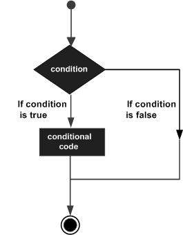</p>
<hr>
<h3>条件语句</h3>
<p>通常在写代码时，您总是需要为不同的决定来执行不同的动作。您可以在代码中使用条件语句来完成该任务。</p>
<p>在 TypeScript 中，我们可使用以下条件语句：</p>

<ul>
<li><strong>if 语句</strong> - 只有当指定条件为 true 时，使用该语句来执行代码</li>
<li><strong>if...else 语句</strong> - 当条件为 true 时执行代码，当条件为 false 时执行其他代码</li>
<li><strong>if...else if....else 语句</strong>- 使用该语句来选择多个代码块之一来执行</li>
<li><strong>switch 语句</strong> - 使用该语句来选择多个代码块之一来执行</li>
</ul>
<hr>
<h3>if 语句</h3>

<p>
        TypeScript  if 语句由一个布尔表达式后跟一个或多个语句组成。</p>

<h4>语法</h4>
<p>语法格式如下所示：</p>
<pre>
if(boolean_expression){
    # 在布尔表达式 boolean_expression 为 true 执行
}
</pre>
<p>如果布尔表达式 boolean_expression为 true，则 if 语句内的代码块将被执行。如果布尔表达式为 false，则 if 语句结束后的第一组代码（闭括号后）将被执行。</p>
<h4>流程图</h4>
<p>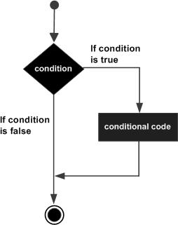</p>

<h4>实例</h4>
<span class="hl-reserved">var</span><span class="hl-code">  </span><span class="hl-identifier">num</span><span class="hl-code">:</span><span class="hl-identifier">number</span><span class="hl-code"> = </span><span class="hl-number">5</span><span class="hl-code">
</span><span class="hl-reserved">if</span><span class="hl-code"> </span><span class="hl-brackets">(</span><span class="hl-identifier">num</span><span class="hl-code"> &gt; </span><span class="hl-number">0</span><span class="hl-brackets">)</span><span class="hl-code"> </span><span class="hl-brackets">{</span><span class="hl-code"> 
   </span><span class="hl-identifier">console</span><span class="hl-code">.</span><span class="hl-identifier">log</span><span class="hl-brackets">(</span><span class="hl-quotes">"</span><span class="hl-string">数字是正数</span><span class="hl-quotes">"</span><span class="hl-brackets">)</span><span class="hl-code"> 
</span><span class="hl-brackets">}</span>

<p>编译以上代码得到如下 JavaScript 代码：</p>

<span class="hl-reserved">var</span><span class="hl-code"> </span><span class="hl-identifier">num</span><span class="hl-code"> = </span><span class="hl-number">5</span><span class="hl-code">;
</span><span class="hl-reserved">if</span><span class="hl-code"> </span><span class="hl-brackets">(</span><span class="hl-identifier">num</span><span class="hl-code"> &gt; </span><span class="hl-number">0</span><span class="hl-brackets">)</span><span class="hl-code"> </span><span class="hl-brackets">{</span><span class="hl-code">
    </span><span class="hl-identifier">console</span><span class="hl-code">.</span><span class="hl-identifier">log</span><span class="hl-brackets">(</span><span class="hl-quotes">"</span><span class="hl-string">数字是正数</span><span class="hl-quotes">"</span><span class="hl-brackets">)</span><span class="hl-code">;
</span><span class="hl-brackets">}</span>
<p>执行以上 JavaScript 代码，输出结果为：</p>

<pre>数字是正数</pre>

<hr>
<h3>if...else 语句</h3>

<p>
        一个 if 语句后可跟一个可选的 else 语句，else 语句在布尔表达式为 false 时执行。
</p>

<h4>语法</h4>
<p>语法格式如下所示：</p>
<pre>
if(boolean_expression){
   # 在布尔表达式 boolean_expression 为 true 执行
}else{
   # 在布尔表达式 boolean_expression 为 false 执行
}
</pre>
<p>如果布尔表达式 boolean_expression 为 true，则执行 if 块内的代码。如果布尔表达式为 false，则执行 else 块内的代码。</p>
<h4>流程图</h4><p>
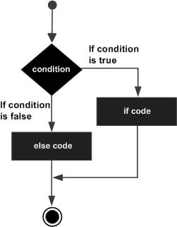

</p>
<h4>实例</h4>
<h3>TypeScript</h3><span class="hl-reserved">var</span><span class="hl-code"> </span><span class="hl-identifier">num</span><span class="hl-code">:</span><span class="hl-identifier">number</span><span class="hl-code"> = </span><span class="hl-number">12</span><span class="hl-code">; 
</span><span class="hl-reserved">if</span><span class="hl-code"> </span><span class="hl-brackets">(</span><span class="hl-identifier">num</span><span class="hl-code"> % </span><span class="hl-number">2</span><span class="hl-code">==</span><span class="hl-number">0</span><span class="hl-brackets">)</span><span class="hl-code"> </span><span class="hl-brackets">{</span><span class="hl-code"> 
    </span><span class="hl-identifier">console</span><span class="hl-code">.</span><span class="hl-identifier">log</span><span class="hl-brackets">(</span><span class="hl-quotes">"</span><span class="hl-string">偶数</span><span class="hl-quotes">"</span><span class="hl-brackets">)</span><span class="hl-code">; 
</span><span class="hl-brackets">}</span><span class="hl-code"> </span><span class="hl-reserved">else</span><span class="hl-code"> </span><span class="hl-brackets">{</span><span class="hl-code">
    </span><span class="hl-identifier">console</span><span class="hl-code">.</span><span class="hl-identifier">log</span><span class="hl-brackets">(</span><span class="hl-quotes">"</span><span class="hl-string">奇数</span><span class="hl-quotes">"</span><span class="hl-brackets">)</span><span class="hl-code">; 
</span><span class="hl-brackets">}</span>

<p>编译以上代码得到如下 JavaScript 代码：</p>

<h3>JavaScript</h3><span class="hl-reserved">var</span><span class="hl-code"> </span><span class="hl-identifier">num</span><span class="hl-code"> = </span><span class="hl-number">12</span><span class="hl-code">;
</span><span class="hl-reserved">if</span><span class="hl-code"> </span><span class="hl-brackets">(</span><span class="hl-identifier">num</span><span class="hl-code"> % </span><span class="hl-number">2</span><span class="hl-code"> == </span><span class="hl-number">0</span><span class="hl-brackets">)</span><span class="hl-code"> </span><span class="hl-brackets">{</span><span class="hl-code">
    </span><span class="hl-identifier">console</span><span class="hl-code">.</span><span class="hl-identifier">log</span><span class="hl-brackets">(</span><span class="hl-quotes">"</span><span class="hl-string">偶数</span><span class="hl-quotes">"</span><span class="hl-brackets">)</span><span class="hl-code">;
</span><span class="hl-brackets">}</span><span class="hl-code">
</span><span class="hl-reserved">else</span><span class="hl-code"> </span><span class="hl-brackets">{</span><span class="hl-code">
    </span><span class="hl-identifier">console</span><span class="hl-code">.</span><span class="hl-identifier">log</span><span class="hl-brackets">(</span><span class="hl-quotes">"</span><span class="hl-string">奇数</span><span class="hl-quotes">"</span><span class="hl-brackets">)</span><span class="hl-code">;
</span><span class="hl-brackets">}</span>
<p>执行以上 JavaScript 代码，输出结果为：</p>

<pre>偶数</pre>

<hr>
<h3>if...else if....else 语句</h3>

<p>
if...else if....else 语句在执行多个判断条件的时候很有用。
</p>

<h4>语法</h4>
<p>语法格式如下所示：</p>
<pre>
if(boolean_expression 1) {
    # 在布尔表达式 boolean_expression 1 为 true 执行
} else if( boolean_expression 2) {
    # 在布尔表达式 boolean_expression 2 为 true 执行
} else if( boolean_expression 3) {
    # 在布尔表达式 boolean_expression 3 为 true 执行
} else {
    # 布尔表达式的条件都为 false 时执行
}
</pre>
<p>需要注意以下几点：</p>
<ul>
        <li><p>一个 <b>if</b> 判断语句可以有 0 或 1 个 <b>else</b> 语句，她必需在 <b>else..if</b> 语句后面。</p></li>
        <li><p>一个 <b>if</b> 判断语句可以有 0 或多个 <b>else..if</b>，这些语句必需在 <b>else</b> 之前。</p></li>
        <li><p>一旦执行了 <b>else..if</b> 内的代码，后面的 <b>else..if</b> 或  <b>else</b> 将不再执行。</p></li>
        </ul>
</p>
<h4>实例</h4>
<h3>TypeScript</h3><span class="hl-reserved">var</span><span class="hl-code"> </span><span class="hl-identifier">num</span><span class="hl-code">:</span><span class="hl-identifier">number</span><span class="hl-code"> = </span><span class="hl-number">2</span><span class="hl-code"> 
</span><span class="hl-reserved">if</span><span class="hl-brackets">(</span><span class="hl-identifier">num</span><span class="hl-code"> &gt; </span><span class="hl-number">0</span><span class="hl-brackets">)</span><span class="hl-code"> </span><span class="hl-brackets">{</span><span class="hl-code"> 
    </span><span class="hl-identifier">console</span><span class="hl-code">.</span><span class="hl-identifier">log</span><span class="hl-brackets">(</span><span class="hl-identifier">num</span><span class="hl-code">+</span><span class="hl-quotes">"</span><span class="hl-string"> 是正数</span><span class="hl-quotes">"</span><span class="hl-brackets">)</span><span class="hl-code"> 
</span><span class="hl-brackets">}</span><span class="hl-code"> </span><span class="hl-reserved">else</span><span class="hl-code"> </span><span class="hl-reserved">if</span><span class="hl-brackets">(</span><span class="hl-identifier">num</span><span class="hl-code"> &lt; </span><span class="hl-number">0</span><span class="hl-brackets">)</span><span class="hl-code"> </span><span class="hl-brackets">{</span><span class="hl-code"> 
    </span><span class="hl-identifier">console</span><span class="hl-code">.</span><span class="hl-identifier">log</span><span class="hl-brackets">(</span><span class="hl-identifier">num</span><span class="hl-code">+</span><span class="hl-quotes">"</span><span class="hl-string"> 是负数</span><span class="hl-quotes">"</span><span class="hl-brackets">)</span><span class="hl-code"> 
</span><span class="hl-brackets">}</span><span class="hl-code"> </span><span class="hl-reserved">else</span><span class="hl-code"> </span><span class="hl-brackets">{</span><span class="hl-code"> 
    </span><span class="hl-identifier">console</span><span class="hl-code">.</span><span class="hl-identifier">log</span><span class="hl-brackets">(</span><span class="hl-identifier">num</span><span class="hl-code">+</span><span class="hl-quotes">"</span><span class="hl-string"> 不是正数也不是负数</span><span class="hl-quotes">"</span><span class="hl-brackets">)</span><span class="hl-code"> 
</span><span class="hl-brackets">}</span>

<p>编译以上代码得到如下 JavaScript 代码：</p>

<h3>JavaScript</h3><span class="hl-reserved">var</span><span class="hl-code"> </span><span class="hl-identifier">num</span><span class="hl-code"> = </span><span class="hl-number">2</span><span class="hl-code">;
</span><span class="hl-reserved">if</span><span class="hl-code"> </span><span class="hl-brackets">(</span><span class="hl-identifier">num</span><span class="hl-code"> &gt; </span><span class="hl-number">0</span><span class="hl-brackets">)</span><span class="hl-code"> </span><span class="hl-brackets">{</span><span class="hl-code">
    </span><span class="hl-identifier">console</span><span class="hl-code">.</span><span class="hl-identifier">log</span><span class="hl-brackets">(</span><span class="hl-identifier">num</span><span class="hl-code"> + </span><span class="hl-quotes">"</span><span class="hl-string"> 是正数</span><span class="hl-quotes">"</span><span class="hl-brackets">)</span><span class="hl-code">;
</span><span class="hl-brackets">}</span><span class="hl-code">
</span><span class="hl-reserved">else</span><span class="hl-code"> </span><span class="hl-reserved">if</span><span class="hl-code"> </span><span class="hl-brackets">(</span><span class="hl-identifier">num</span><span class="hl-code"> &lt; </span><span class="hl-number">0</span><span class="hl-brackets">)</span><span class="hl-code"> </span><span class="hl-brackets">{</span><span class="hl-code">
    </span><span class="hl-identifier">console</span><span class="hl-code">.</span><span class="hl-identifier">log</span><span class="hl-brackets">(</span><span class="hl-identifier">num</span><span class="hl-code"> + </span><span class="hl-quotes">"</span><span class="hl-string"> 是负数</span><span class="hl-quotes">"</span><span class="hl-brackets">)</span><span class="hl-code">;
</span><span class="hl-brackets">}</span><span class="hl-code">
</span><span class="hl-reserved">else</span><span class="hl-code"> </span><span class="hl-brackets">{</span><span class="hl-code">
    </span><span class="hl-identifier">console</span><span class="hl-code">.</span><span class="hl-identifier">log</span><span class="hl-brackets">(</span><span class="hl-identifier">num</span><span class="hl-code"> + </span><span class="hl-quotes">"</span><span class="hl-string"> 不是正数也不是负数</span><span class="hl-quotes">"</span><span class="hl-brackets">)</span><span class="hl-code">;
</span><span class="hl-brackets">}</span>
<p>执行以上 JavaScript 代码，输出结果为：</p>

<pre>2 是正数</pre>
<hr>
<h3>switch…case 语句</h3>

<p>
一个 <b>switch</b> 语句允许测试一个变量等于多个值时的情况。每个值称为一个 case，且被测试的变量会对每个 <b>switch case</b> 进行检查。
</p>

<p><b>switch</b> 语句的语法：</p>

<span class="hl-reserved">switch</span><span class="hl-brackets">(</span><span class="hl-identifier">expression</span><span class="hl-brackets">)</span><span class="hl-brackets">{</span><span class="hl-code">
    </span><span class="hl-reserved">case</span><span class="hl-code"> </span><span class="hl-identifier">constant</span><span class="hl-code">-</span><span class="hl-identifier">expression</span><span class="hl-code">  :
       </span><span class="hl-identifier">statement</span><span class="hl-brackets">(</span><span class="hl-identifier">s</span><span class="hl-brackets">)</span><span class="hl-code">;
       </span><span class="hl-reserved">break</span><span class="hl-code">; </span><span class="hl-comment">/*</span><span class="hl-comment"> 可选的 </span><span class="hl-comment">*/</span><span class="hl-code">
    </span><span class="hl-reserved">case</span><span class="hl-code"> </span><span class="hl-identifier">constant</span><span class="hl-code">-</span><span class="hl-identifier">expression</span><span class="hl-code">  :
       </span><span class="hl-identifier">statement</span><span class="hl-brackets">(</span><span class="hl-identifier">s</span><span class="hl-brackets">)</span><span class="hl-code">;
       </span><span class="hl-reserved">break</span><span class="hl-code">; </span><span class="hl-comment">/*</span><span class="hl-comment"> 可选的 </span><span class="hl-comment">*/</span><span class="hl-code">
  
    </span><span class="hl-comment">/*</span><span class="hl-comment"> 您可以有任意数量的 case 语句 </span><span class="hl-comment">*/</span><span class="hl-code">
    </span><span class="hl-reserved">default</span><span class="hl-code"> : </span><span class="hl-comment">/*</span><span class="hl-comment"> 可选的 </span><span class="hl-comment">*/</span><span class="hl-code">
       </span><span class="hl-identifier">statement</span><span class="hl-brackets">(</span><span class="hl-identifier">s</span><span class="hl-brackets">)</span><span class="hl-code">;
</span><span class="hl-brackets">}</span>

<p><b>switch</b> 语句必须遵循下面的规则：</p>
<ul>
<li><b>switch</b> 语句中的 <b>expression</b> 是一个要被比较的表达式，可以是任何类型，包括基本数据类型（如 number、string、boolean）、对象类型（如 object、Array、Map）以及自定义类型（如 class、interface、enum）等。</li>
<li>在一个 switch 中可以有任意数量的 case 语句。每个 case 后跟一个要比较的值和一个冒号。</li>
<li>case 的 <b>constant-expression</b> 必须与 switch 中的变量 expression 具有相同或兼容的数据类型。</li>
<li>当被测试的变量等于 case 中的常量时，case 后跟的语句将被执行，直到遇到 <b>break</b> 语句为止。</li>
<li>当遇到 <b>break</b> 语句时，switch 终止，控制流将跳转到 switch 语句后的下一行。</li>
<li>不是每一个 case 都需要包含 <b>break</b>。如果 case 语句不包含 <b>break</b>，控制流将会 <i>继续</i> 后续的 case，直到遇到 break 为止。</li>
<li>一个 <b>switch</b> 语句可以有一个可选的 <b>default</b> case，出现在 switch 的结尾。default 关键字则表示当表达式的值与所有 case 值都不匹配时执行的代码块。default case 中的 <b>break</b> 语句不是必需的。</li>
</ul>

<h3>流程图</h3>
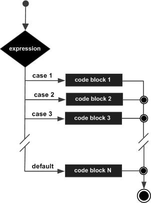

<h4>实例</h4>
<h3>TypeScript</h3><span class="hl-reserved">var</span><span class="hl-code"> </span><span class="hl-identifier">grade</span><span class="hl-code">:</span><span class="hl-identifier">string</span><span class="hl-code"> = </span><span class="hl-quotes">"</span><span class="hl-string">A</span><span class="hl-quotes">"</span><span class="hl-code">; 
</span><span class="hl-reserved">switch</span><span class="hl-brackets">(</span><span class="hl-identifier">grade</span><span class="hl-brackets">)</span><span class="hl-code"> </span><span class="hl-brackets">{</span><span class="hl-code"> 
    </span><span class="hl-reserved">case</span><span class="hl-code"> </span><span class="hl-quotes">"</span><span class="hl-string">A</span><span class="hl-quotes">"</span><span class="hl-code">: </span><span class="hl-brackets">{</span><span class="hl-code"> 
        </span><span class="hl-identifier">console</span><span class="hl-code">.</span><span class="hl-identifier">log</span><span class="hl-brackets">(</span><span class="hl-quotes">"</span><span class="hl-string">优</span><span class="hl-quotes">"</span><span class="hl-brackets">)</span><span class="hl-code">; 
        </span><span class="hl-reserved">break</span><span class="hl-code">; 
    </span><span class="hl-brackets">}</span><span class="hl-code"> 
    </span><span class="hl-reserved">case</span><span class="hl-code"> </span><span class="hl-quotes">"</span><span class="hl-string">B</span><span class="hl-quotes">"</span><span class="hl-code">: </span><span class="hl-brackets">{</span><span class="hl-code"> 
        </span><span class="hl-identifier">console</span><span class="hl-code">.</span><span class="hl-identifier">log</span><span class="hl-brackets">(</span><span class="hl-quotes">"</span><span class="hl-string">良</span><span class="hl-quotes">"</span><span class="hl-brackets">)</span><span class="hl-code">; 
        </span><span class="hl-reserved">break</span><span class="hl-code">; 
    </span><span class="hl-brackets">}</span><span class="hl-code"> 
    </span><span class="hl-reserved">case</span><span class="hl-code"> </span><span class="hl-quotes">"</span><span class="hl-string">C</span><span class="hl-quotes">"</span><span class="hl-code">: </span><span class="hl-brackets">{</span><span class="hl-code">
        </span><span class="hl-identifier">console</span><span class="hl-code">.</span><span class="hl-identifier">log</span><span class="hl-brackets">(</span><span class="hl-quotes">"</span><span class="hl-string">及格</span><span class="hl-quotes">"</span><span class="hl-brackets">)</span><span class="hl-code">; 
        </span><span class="hl-reserved">break</span><span class="hl-code">;    
    </span><span class="hl-brackets">}</span><span class="hl-code"> 
    </span><span class="hl-reserved">case</span><span class="hl-code"> </span><span class="hl-quotes">"</span><span class="hl-string">D</span><span class="hl-quotes">"</span><span class="hl-code">: </span><span class="hl-brackets">{</span><span class="hl-code"> 
        </span><span class="hl-identifier">console</span><span class="hl-code">.</span><span class="hl-identifier">log</span><span class="hl-brackets">(</span><span class="hl-quotes">"</span><span class="hl-string">不及格</span><span class="hl-quotes">"</span><span class="hl-brackets">)</span><span class="hl-code">; 
        </span><span class="hl-reserved">break</span><span class="hl-code">; 
    </span><span class="hl-brackets">}</span><span class="hl-code">  
    </span><span class="hl-reserved">default</span><span class="hl-code">: </span><span class="hl-brackets">{</span><span class="hl-code"> 
        </span><span class="hl-identifier">console</span><span class="hl-code">.</span><span class="hl-identifier">log</span><span class="hl-brackets">(</span><span class="hl-quotes">"</span><span class="hl-string">非法输入</span><span class="hl-quotes">"</span><span class="hl-brackets">)</span><span class="hl-code">; 
        </span><span class="hl-reserved">break</span><span class="hl-code">;              
    </span><span class="hl-brackets">}</span><span class="hl-code"> 
</span><span class="hl-brackets">}</span>

<p>编译以上代码得到如下 JavaScript 代码：</p>

<h3>JavaScript</h3><span class="hl-reserved">var</span><span class="hl-code"> </span><span class="hl-identifier">grade</span><span class="hl-code"> = </span><span class="hl-quotes">"</span><span class="hl-string">A</span><span class="hl-quotes">"</span><span class="hl-code">;
</span><span class="hl-reserved">switch</span><span class="hl-code"> </span><span class="hl-brackets">(</span><span class="hl-identifier">grade</span><span class="hl-brackets">)</span><span class="hl-code"> </span><span class="hl-brackets">{</span><span class="hl-code">
    </span><span class="hl-reserved">case</span><span class="hl-code"> </span><span class="hl-quotes">"</span><span class="hl-string">A</span><span class="hl-quotes">"</span><span class="hl-code">: </span><span class="hl-brackets">{</span><span class="hl-code">
        </span><span class="hl-identifier">console</span><span class="hl-code">.</span><span class="hl-identifier">log</span><span class="hl-brackets">(</span><span class="hl-quotes">"</span><span class="hl-string">优</span><span class="hl-quotes">"</span><span class="hl-brackets">)</span><span class="hl-code">;
        </span><span class="hl-reserved">break</span><span class="hl-code">;
    </span><span class="hl-brackets">}</span><span class="hl-code">
    </span><span class="hl-reserved">case</span><span class="hl-code"> </span><span class="hl-quotes">"</span><span class="hl-string">B</span><span class="hl-quotes">"</span><span class="hl-code">: </span><span class="hl-brackets">{</span><span class="hl-code">
        </span><span class="hl-identifier">console</span><span class="hl-code">.</span><span class="hl-identifier">log</span><span class="hl-brackets">(</span><span class="hl-quotes">"</span><span class="hl-string">良</span><span class="hl-quotes">"</span><span class="hl-brackets">)</span><span class="hl-code">;
        </span><span class="hl-reserved">break</span><span class="hl-code">;
    </span><span class="hl-brackets">}</span><span class="hl-code">
    </span><span class="hl-reserved">case</span><span class="hl-code"> </span><span class="hl-quotes">"</span><span class="hl-string">C</span><span class="hl-quotes">"</span><span class="hl-code">: </span><span class="hl-brackets">{</span><span class="hl-code">
        </span><span class="hl-identifier">console</span><span class="hl-code">.</span><span class="hl-identifier">log</span><span class="hl-brackets">(</span><span class="hl-quotes">"</span><span class="hl-string">及格</span><span class="hl-quotes">"</span><span class="hl-brackets">)</span><span class="hl-code">;
        </span><span class="hl-reserved">break</span><span class="hl-code">;
    </span><span class="hl-brackets">}</span><span class="hl-code">
    </span><span class="hl-reserved">case</span><span class="hl-code"> </span><span class="hl-quotes">"</span><span class="hl-string">D</span><span class="hl-quotes">"</span><span class="hl-code">: </span><span class="hl-brackets">{</span><span class="hl-code">
        </span><span class="hl-identifier">console</span><span class="hl-code">.</span><span class="hl-identifier">log</span><span class="hl-brackets">(</span><span class="hl-quotes">"</span><span class="hl-string">不及格</span><span class="hl-quotes">"</span><span class="hl-brackets">)</span><span class="hl-code">;
        </span><span class="hl-reserved">break</span><span class="hl-code">;
    </span><span class="hl-brackets">}</span><span class="hl-code">
    </span><span class="hl-reserved">default</span><span class="hl-code">: </span><span class="hl-brackets">{</span><span class="hl-code">
        </span><span class="hl-identifier">console</span><span class="hl-code">.</span><span class="hl-identifier">log</span><span class="hl-brackets">(</span><span class="hl-quotes">"</span><span class="hl-string">非法输入</span><span class="hl-quotes">"</span><span class="hl-brackets">)</span><span class="hl-code">;
        </span><span class="hl-reserved">break</span><span class="hl-code">;
    </span><span class="hl-brackets">}</span><span class="hl-code">
</span><span class="hl-brackets">}</span>
<p>执行以上 JavaScript 代码，输出结果为：</p>

<pre>优</pre>			
						
			
			
		

		
		

		
		
		
</p></div></section>
<section class="ch" id="c15"><h2>15. TypeScript 循环<a class="chsrc" href="https://www.runoob.com/typescript/ts-loop.html" target="_blank" rel="noopener">原文↗</a></h2><div class="ch-body"><p>
有的时候，我们可能需要多次执行同一块代码。一般情况下，语句是按顺序执行的：函数中的第一个语句先执行，接着是第二个语句，依此类推。</p>

<p>编程语言提供了更为复杂执行路径的多种控制结构。</p>

<p>循环语句允许我们多次执行一个语句或语句组，下面是大多数编程语言中循环语句的流程图：</p>

<p></p>
<hr>
<h3>for 循环</h3>

<p>
TypeScript for 循环用于多次执行一个语句序列，简化管理循环变量的代码。</p>

<h4>语法</h4>
<p>语法格式如下所示：</p>
<pre>
for ( init; condition; increment ){
    statement(s);
}
</pre>
<p>下面是 for 循环的控制流程解析：</p>
<ol> <li><b>init</b> 会首先被执行，且只会执行一次。这一步允许您声明并初始化任何循环控制变量。您也可以不在这里写任何语句，只要有一个分号出现即可。</li> <li>接下来，会判断 <b>condition</b>。如果为 true，则执行循环主体。如果为 false，则不执行循环主体，且控制流会跳转到紧接着 for 循环的下一条语句。</li> <li>在执行完 for 循环主体后，控制流会跳回上面的 <b>increment</b> 语句。该语句允许您更新循环控制变量。该语句可以留空，只要在条件后有一个分号出现即可。</li> <li>条件再次被判断。如果为 true，则执行循环，这个过程会不断重复（循环主体，然后增加步值，再然后重新判断条件）。在条件变为 false 时，for 循环终止。</li> </ol>
<p>在这里，statement(s) 可以是一个单独的语句，也可以是几个语句组成的代码块。</p>
<p>condition 可以是任意的表达式，当条件为 true 时执行循环，当条件为 false 时，退出循环。</p>

<h4>流程图</h4>
<p>

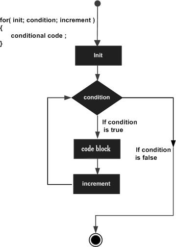
</p>
      

<h4>实例</h4>
<p>以下实例计算 5 的阶乘， for 循环生成从 5 到 1 的数字，并计算每次循环数字的乘积。</p>
<h3>TypeScript</h3><span class="hl-reserved">var</span><span class="hl-code"> </span><span class="hl-identifier">num</span><span class="hl-code">:</span><span class="hl-identifier">number</span><span class="hl-code"> = </span><span class="hl-number">5</span><span class="hl-code">; 
</span><span class="hl-reserved">var</span><span class="hl-code"> </span><span class="hl-identifier">i</span><span class="hl-code">:</span><span class="hl-identifier">number</span><span class="hl-code">; 
</span><span class="hl-reserved">var</span><span class="hl-code"> </span><span class="hl-identifier">factorial</span><span class="hl-code"> = </span><span class="hl-number">1</span><span class="hl-code">; 
 
</span><span class="hl-reserved">for</span><span class="hl-brackets">(</span><span class="hl-identifier">i</span><span class="hl-code"> = </span><span class="hl-identifier">num</span><span class="hl-code">;</span><span class="hl-identifier">i</span><span class="hl-code">&gt;=</span><span class="hl-number">1</span><span class="hl-code">;</span><span class="hl-identifier">i</span><span class="hl-code">--</span><span class="hl-brackets">)</span><span class="hl-code"> </span><span class="hl-brackets">{</span><span class="hl-code">
   </span><span class="hl-identifier">factorial</span><span class="hl-code"> *= </span><span class="hl-identifier">i</span><span class="hl-code">;
</span><span class="hl-brackets">}</span><span class="hl-code">
</span><span class="hl-identifier">console</span><span class="hl-code">.</span><span class="hl-identifier">log</span><span class="hl-brackets">(</span><span class="hl-identifier">factorial</span><span class="hl-brackets">)</span>

<p>编译以上代码得到如下 JavaScript 代码：</p>

<h3>JavaScript</h3><span class="hl-reserved">var</span><span class="hl-code"> </span><span class="hl-identifier">num</span><span class="hl-code"> = </span><span class="hl-number">5</span><span class="hl-code">;
</span><span class="hl-reserved">var</span><span class="hl-code"> </span><span class="hl-identifier">i</span><span class="hl-code">;
</span><span class="hl-reserved">var</span><span class="hl-code"> </span><span class="hl-identifier">factorial</span><span class="hl-code"> = </span><span class="hl-number">1</span><span class="hl-code">;
</span><span class="hl-reserved">for</span><span class="hl-code"> </span><span class="hl-brackets">(</span><span class="hl-identifier">i</span><span class="hl-code"> = </span><span class="hl-identifier">num</span><span class="hl-code">; </span><span class="hl-identifier">i</span><span class="hl-code"> &gt;= </span><span class="hl-number">1</span><span class="hl-code">; </span><span class="hl-identifier">i</span><span class="hl-code">--</span><span class="hl-brackets">)</span><span class="hl-code"> </span><span class="hl-brackets">{</span><span class="hl-code">
    </span><span class="hl-identifier">factorial</span><span class="hl-code"> *= </span><span class="hl-identifier">i</span><span class="hl-code">;
</span><span class="hl-brackets">}</span><span class="hl-code">
</span><span class="hl-identifier">console</span><span class="hl-code">.</span><span class="hl-identifier">log</span><span class="hl-brackets">(</span><span class="hl-identifier">factorial</span><span class="hl-brackets">)</span><span class="hl-code">;</span>
<p>执行以上 JavaScript 代码，输出结果为：</p>

<pre>
120
</pre>

<hr>
<h3>for...in 循环</h3>

<p>
for...in 语句用于一组值的集合或列表进行迭代输出。</p>

<h4>语法</h4>
<p>语法格式如下所示：</p>
<pre>
for (var val in list) { 
    //语句 
}
</pre>
val 需要为 string 或 any 类型。
      

<h4>实例</h4>

<h3>TypeScript</h3><span class="hl-reserved">var</span><span class="hl-code"> </span><span class="hl-identifier">j</span><span class="hl-code">:</span><span class="hl-identifier">any</span><span class="hl-code">; 
</span><span class="hl-reserved">var</span><span class="hl-code"> </span><span class="hl-identifier">n</span><span class="hl-code">:</span><span class="hl-identifier">any</span><span class="hl-code"> = </span><span class="hl-quotes">"</span><span class="hl-string">a b c</span><span class="hl-quotes">"</span><span class="hl-code"> 
 
</span><span class="hl-reserved">for</span><span class="hl-brackets">(</span><span class="hl-identifier">j</span><span class="hl-code"> </span><span class="hl-reserved">in</span><span class="hl-code"> </span><span class="hl-identifier">n</span><span class="hl-brackets">)</span><span class="hl-code"> </span><span class="hl-brackets">{</span><span class="hl-code">
    </span><span class="hl-identifier">console</span><span class="hl-code">.</span><span class="hl-identifier">log</span><span class="hl-brackets">(</span><span class="hl-identifier">n</span><span class="hl-brackets">[</span><span class="hl-identifier">j</span><span class="hl-brackets">]</span><span class="hl-brackets">)</span><span class="hl-code">  
</span><span class="hl-brackets">}</span>

<p>编译以上代码得到如下 JavaScript 代码：</p>

<h3>JavaScript</h3><span class="hl-reserved">var</span><span class="hl-code"> </span><span class="hl-identifier">j</span><span class="hl-code">;
</span><span class="hl-reserved">var</span><span class="hl-code"> </span><span class="hl-identifier">n</span><span class="hl-code"> = </span><span class="hl-quotes">"</span><span class="hl-string">a b c</span><span class="hl-quotes">"</span><span class="hl-code">;
</span><span class="hl-reserved">for</span><span class="hl-code"> </span><span class="hl-brackets">(</span><span class="hl-identifier">j</span><span class="hl-code"> </span><span class="hl-reserved">in</span><span class="hl-code"> </span><span class="hl-identifier">n</span><span class="hl-brackets">)</span><span class="hl-code"> </span><span class="hl-brackets">{</span><span class="hl-code">
    </span><span class="hl-identifier">console</span><span class="hl-code">.</span><span class="hl-identifier">log</span><span class="hl-brackets">(</span><span class="hl-identifier">n</span><span class="hl-brackets">[</span><span class="hl-identifier">j</span><span class="hl-brackets">]</span><span class="hl-brackets">)</span><span class="hl-code">;
</span><span class="hl-brackets">}</span>
<p>执行以上 JavaScript 代码，输出结果为：</p>

<pre>
a

b

c
</pre>
<hr><h3>
<h3>for…of 、forEach、every 和 some 循环</h3>
<p>此外，TypeScript 还支持 for…of 、forEach、every 和 some 循环。</p>
<p>for...of 语句创建一个循环来迭代可迭代的对象。在 ES6 中引入的 for...of 循环，以替代 for...in 和 forEach() ，并支持新的迭代协议。for...of 允许你遍历 Arrays（数组）, Strings（字符串）, Maps（映射）, Sets（集合）等可迭代的数据结构等。</p>
<h3>TypeScript for...of 循环</h3><span class="hl-identifier">let</span><span class="hl-code"> </span><span class="hl-identifier">someArray</span><span class="hl-code"> = </span><span class="hl-brackets">[</span><span class="hl-number">1</span><span class="hl-code">, </span><span class="hl-quotes">"</span><span class="hl-string">string</span><span class="hl-quotes">"</span><span class="hl-code">, </span><span class="hl-reserved">false</span><span class="hl-brackets">]</span><span class="hl-code">;
 
</span><span class="hl-reserved">for</span><span class="hl-code"> </span><span class="hl-brackets">(</span><span class="hl-identifier">let</span><span class="hl-code"> </span><span class="hl-identifier">entry</span><span class="hl-code"> </span><span class="hl-identifier">of</span><span class="hl-code"> </span><span class="hl-identifier">someArray</span><span class="hl-brackets">)</span><span class="hl-code"> </span><span class="hl-brackets">{</span><span class="hl-code">
    </span><span class="hl-identifier">console</span><span class="hl-code">.</span><span class="hl-identifier">log</span><span class="hl-brackets">(</span><span class="hl-identifier">entry</span><span class="hl-brackets">)</span><span class="hl-code">; </span><span class="hl-comment">//</span><span class="hl-comment"> 1, "string", false</span><span class="hl-comment"></span><span class="hl-code">
</span><span class="hl-brackets">}</span>
<p>forEach、every 和 some 是 JavaScript 的循环语法，TypeScript 作为 JavaScript 的语法超集，当然默认也是支持的。</p>
<p>因为 forEach 在 iteration 中是无法返回的，所以可以使用 every 和 some 来取代 forEach。</p>
<h3>TypeScript forEach 循环</h3><span class="hl-identifier">let</span><span class="hl-code"> </span><span class="hl-identifier">list</span><span class="hl-code"> = </span><span class="hl-brackets">[</span><span class="hl-number">4</span><span class="hl-code">, </span><span class="hl-number">5</span><span class="hl-code">, </span><span class="hl-number">6</span><span class="hl-brackets">]</span><span class="hl-code">;
</span><span class="hl-identifier">list</span><span class="hl-code">.</span><span class="hl-identifier">forEach</span><span class="hl-brackets">(</span><span class="hl-brackets">(</span><span class="hl-identifier">val</span><span class="hl-code">, </span><span class="hl-identifier">idx</span><span class="hl-code">, </span><span class="hl-identifier">array</span><span class="hl-brackets">)</span><span class="hl-code"> =&gt; </span><span class="hl-brackets">{</span><span class="hl-code">
    </span><span class="hl-comment">//</span><span class="hl-comment"> val: 当前值</span><span class="hl-comment"></span><span class="hl-code">
    </span><span class="hl-comment">//</span><span class="hl-comment"> idx：当前index</span><span class="hl-comment"></span><span class="hl-code">
    </span><span class="hl-comment">//</span><span class="hl-comment"> array: Array</span><span class="hl-comment"></span><span class="hl-code">
</span><span class="hl-brackets">}</span><span class="hl-brackets">)</span><span class="hl-code">;</span>
<h3>TypeScript every 循环</h3><span class="hl-identifier">let</span><span class="hl-code"> </span><span class="hl-identifier">list</span><span class="hl-code"> = </span><span class="hl-brackets">[</span><span class="hl-number">4</span><span class="hl-code">, </span><span class="hl-number">5</span><span class="hl-code">, </span><span class="hl-number">6</span><span class="hl-brackets">]</span><span class="hl-code">;
</span><span class="hl-identifier">list</span><span class="hl-code">.</span><span class="hl-identifier">every</span><span class="hl-brackets">(</span><span class="hl-brackets">(</span><span class="hl-identifier">val</span><span class="hl-code">, </span><span class="hl-identifier">idx</span><span class="hl-code">, </span><span class="hl-identifier">array</span><span class="hl-brackets">)</span><span class="hl-code"> =&gt; </span><span class="hl-brackets">{</span><span class="hl-code">
    </span><span class="hl-comment">//</span><span class="hl-comment"> val: 当前值</span><span class="hl-comment"></span><span class="hl-code">
    </span><span class="hl-comment">//</span><span class="hl-comment"> idx：当前index</span><span class="hl-comment"></span><span class="hl-code">
    </span><span class="hl-comment">//</span><span class="hl-comment"> array: Array</span><span class="hl-comment"></span><span class="hl-code">
    </span><span class="hl-reserved">return</span><span class="hl-code"> </span><span class="hl-reserved">true</span><span class="hl-code">; </span><span class="hl-comment">//</span><span class="hl-comment"> Continues</span><span class="hl-comment"></span><span class="hl-code">
    </span><span class="hl-comment">//</span><span class="hl-comment"> Return false will quit the iteration</span><span class="hl-comment"></span><span class="hl-code">
</span><span class="hl-brackets">}</span><span class="hl-brackets">)</span><span class="hl-code">;</span>

<hr>
<h3>while 循环</h3>

<p>
while 语句在给定条件为 true 时，重复执行语句或语句组。循环主体执行之前会先测试条件。</p>
<h4>语法</h4>
<p>语法格式如下所示：</p>
<pre>
while(condition)
{
   statement(s);
}
</pre>

<p>在这里，statement(s) 可以是一个单独的语句，也可以是几个语句组成的代码块。</p><p>condition 可以是任意的表达式，当条件为 true 时执行循环。
当条件为 false 时，程序流将退出循环。</p>

<h4>流程图</h4>
<p>

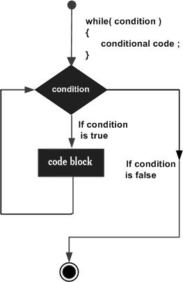
</p>
<p>图表中，<i>while</i> 循环的关键点是循环可能一次都不会执行。当条件为 false 时，会跳过循环主体，直接执行紧接着 while 循环的下一条语句。</p>

<h4>实例</h4>

<h3>TypeScript</h3><span class="hl-reserved">var</span><span class="hl-code"> </span><span class="hl-identifier">num</span><span class="hl-code">:</span><span class="hl-identifier">number</span><span class="hl-code"> = </span><span class="hl-number">5</span><span class="hl-code">; 
</span><span class="hl-reserved">var</span><span class="hl-code"> </span><span class="hl-identifier">factorial</span><span class="hl-code">:</span><span class="hl-identifier">number</span><span class="hl-code"> = </span><span class="hl-number">1</span><span class="hl-code">; 
 
</span><span class="hl-reserved">while</span><span class="hl-brackets">(</span><span class="hl-identifier">num</span><span class="hl-code"> &gt;=</span><span class="hl-number">1</span><span class="hl-brackets">)</span><span class="hl-code"> </span><span class="hl-brackets">{</span><span class="hl-code"> 
    </span><span class="hl-identifier">factorial</span><span class="hl-code"> = </span><span class="hl-identifier">factorial</span><span class="hl-code"> * </span><span class="hl-identifier">num</span><span class="hl-code">; 
    </span><span class="hl-identifier">num</span><span class="hl-code">--; 
</span><span class="hl-brackets">}</span><span class="hl-code"> 
</span><span class="hl-identifier">console</span><span class="hl-code">.</span><span class="hl-identifier">log</span><span class="hl-brackets">(</span><span class="hl-quotes">"</span><span class="hl-string">5 的阶乘为：</span><span class="hl-quotes">"</span><span class="hl-code">+</span><span class="hl-identifier">factorial</span><span class="hl-brackets">)</span><span class="hl-code">;</span>

<p>编译以上代码得到如下 JavaScript 代码：</p>

<h3>JavaScript</h3><span class="hl-reserved">var</span><span class="hl-code"> </span><span class="hl-identifier">num</span><span class="hl-code"> = </span><span class="hl-number">5</span><span class="hl-code">;
</span><span class="hl-reserved">var</span><span class="hl-code"> </span><span class="hl-identifier">factorial</span><span class="hl-code"> = </span><span class="hl-number">1</span><span class="hl-code">;
</span><span class="hl-reserved">while</span><span class="hl-code"> </span><span class="hl-brackets">(</span><span class="hl-identifier">num</span><span class="hl-code"> &gt;= </span><span class="hl-number">1</span><span class="hl-brackets">)</span><span class="hl-code"> </span><span class="hl-brackets">{</span><span class="hl-code">
    </span><span class="hl-identifier">factorial</span><span class="hl-code"> = </span><span class="hl-identifier">factorial</span><span class="hl-code"> * </span><span class="hl-identifier">num</span><span class="hl-code">;
    </span><span class="hl-identifier">num</span><span class="hl-code">--;
</span><span class="hl-brackets">}</span><span class="hl-code">
</span><span class="hl-identifier">console</span><span class="hl-code">.</span><span class="hl-identifier">log</span><span class="hl-brackets">(</span><span class="hl-quotes">"</span><span class="hl-string">5 的阶乘为：</span><span class="hl-quotes">"</span><span class="hl-code"> + </span><span class="hl-identifier">factorial</span><span class="hl-brackets">)</span><span class="hl-code">;</span>
<p>执行以上 JavaScript 代码，输出结果为：</p>

<pre>
5 的阶乘为：120
</pre>

<hr>
<h3>do...while 循环</h3>

<p>不像 <b>for</b> 和 <b>while</b> 循环，它们是在循环头部测试循环条件。<b>do...while</b> 循环是在循环的尾部检查它的条件。</p>
<h4>语法</h4>
<p>语法格式如下所示：</p>
<pre>
do
{
   statement(s);
}while( condition );
</pre>

<p>请注意，条件表达式出现在循环的尾部，所以循环中的 statement(s) 会在条件被测试之前至少执行一次。</p>
<p>如果条件为 true，控制流会跳转回上面的 do，然后重新执行循环中的 statement(s)。这个过程会不断重复，直到给定条件变为 false 为止。</p>
<h4>流程图</h4>
<p>

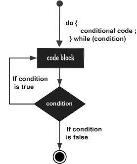
</p>
<h4>实例</h4>

<h3>TypeScript</h3><span class="hl-reserved">var</span><span class="hl-code"> </span><span class="hl-identifier">n</span><span class="hl-code">:</span><span class="hl-identifier">number</span><span class="hl-code"> = </span><span class="hl-number">10</span><span class="hl-code">;
</span><span class="hl-reserved">do</span><span class="hl-code"> </span><span class="hl-brackets">{</span><span class="hl-code"> 
    </span><span class="hl-identifier">console</span><span class="hl-code">.</span><span class="hl-identifier">log</span><span class="hl-brackets">(</span><span class="hl-identifier">n</span><span class="hl-brackets">)</span><span class="hl-code">; 
    </span><span class="hl-identifier">n</span><span class="hl-code">--; 
</span><span class="hl-brackets">}</span><span class="hl-code"> </span><span class="hl-reserved">while</span><span class="hl-brackets">(</span><span class="hl-identifier">n</span><span class="hl-code">&gt;=</span><span class="hl-number">0</span><span class="hl-brackets">)</span><span class="hl-code">;</span>

<p>编译以上代码得到如下 JavaScript 代码：</p>

<h3>JavaScript</h3><span class="hl-reserved">var</span><span class="hl-code"> </span><span class="hl-identifier">num</span><span class="hl-code"> = </span><span class="hl-number">5</span><span class="hl-code">;
</span><span class="hl-reserved">var</span><span class="hl-code"> </span><span class="hl-identifier">n</span><span class="hl-code"> = </span><span class="hl-number">10</span><span class="hl-code">;
</span><span class="hl-reserved">do</span><span class="hl-code"> </span><span class="hl-brackets">{</span><span class="hl-code">
    </span><span class="hl-identifier">console</span><span class="hl-code">.</span><span class="hl-identifier">log</span><span class="hl-brackets">(</span><span class="hl-identifier">n</span><span class="hl-brackets">)</span><span class="hl-code">;
    </span><span class="hl-identifier">n</span><span class="hl-code">--;
</span><span class="hl-brackets">}</span><span class="hl-code"> </span><span class="hl-reserved">while</span><span class="hl-code"> </span><span class="hl-brackets">(</span><span class="hl-identifier">n</span><span class="hl-code"> &gt;= </span><span class="hl-number">0</span><span class="hl-brackets">)</span><span class="hl-code">;</span>
<p>执行以上 JavaScript 代码，输出结果为：</p>

<pre>
10
9
8
7
6
5
4
3
2
1
0
</pre>

<hr>
<h3>break 语句</h3>

<p><b>break</b> 语句有以下两种用法：</p>
<ol>
<li>当 <b>break</b> 语句出现在一个循环内时，循环会立即终止，且程序流将继续执行紧接着循环的下一条语句。</li>
<li>它可用于终止 <b>switch</b> 语句中的一个 case。</li>
</ol>
<p>如果您使用的是嵌套循环（即一个循环内嵌套另一个循环），break 语句会停止执行最内层的循环，然后开始执行该块之后的下一行代码。</p>
<h4>语法</h4>
<p>语法格式如下所示：</p>
<pre>
break;
</pre>
<h4>流程图</h4>
<p>
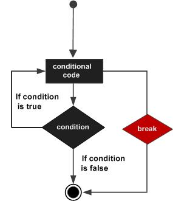
</p>
<h4>实例</h4>

<h3>TypeScript</h3><span class="hl-reserved">var</span><span class="hl-code"> </span><span class="hl-identifier">i</span><span class="hl-code">:</span><span class="hl-identifier">number</span><span class="hl-code"> = </span><span class="hl-number">1</span><span class="hl-code"> 
</span><span class="hl-reserved">while</span><span class="hl-brackets">(</span><span class="hl-identifier">i</span><span class="hl-code">&lt;=</span><span class="hl-number">10</span><span class="hl-brackets">)</span><span class="hl-code"> </span><span class="hl-brackets">{</span><span class="hl-code"> 
    </span><span class="hl-reserved">if</span><span class="hl-code"> </span><span class="hl-brackets">(</span><span class="hl-identifier">i</span><span class="hl-code"> % </span><span class="hl-number">5</span><span class="hl-code"> == </span><span class="hl-number">0</span><span class="hl-brackets">)</span><span class="hl-code"> </span><span class="hl-brackets">{</span><span class="hl-code">   
        </span><span class="hl-identifier">console</span><span class="hl-code">.</span><span class="hl-identifier">log</span><span class="hl-code"> </span><span class="hl-brackets">(</span><span class="hl-quotes">"</span><span class="hl-string">在 1~10 之间第一个被 5 整除的数为 : </span><span class="hl-quotes">"</span><span class="hl-code">+</span><span class="hl-identifier">i</span><span class="hl-brackets">)</span><span class="hl-code"> 
        </span><span class="hl-reserved">break</span><span class="hl-code">     </span><span class="hl-comment">//</span><span class="hl-comment"> 找到一个后退出循环</span><span class="hl-comment"></span><span class="hl-code">
    </span><span class="hl-brackets">}</span><span class="hl-code"> 
    </span><span class="hl-identifier">i</span><span class="hl-code">++ 
</span><span class="hl-brackets">}</span><span class="hl-code">  </span><span class="hl-comment">//</span><span class="hl-comment"> 输出 5 然后程序执行结束</span><span class="hl-comment"></span>

<p>编译以上代码得到如下 JavaScript 代码：</p>

<h3>JavaScript</h3><span class="hl-reserved">var</span><span class="hl-code"> </span><span class="hl-identifier">i</span><span class="hl-code"> = </span><span class="hl-number">1</span><span class="hl-code">;
</span><span class="hl-reserved">while</span><span class="hl-code"> </span><span class="hl-brackets">(</span><span class="hl-identifier">i</span><span class="hl-code"> &lt;= </span><span class="hl-number">10</span><span class="hl-brackets">)</span><span class="hl-code"> </span><span class="hl-brackets">{</span><span class="hl-code">
    </span><span class="hl-reserved">if</span><span class="hl-code"> </span><span class="hl-brackets">(</span><span class="hl-identifier">i</span><span class="hl-code"> % </span><span class="hl-number">5</span><span class="hl-code"> == </span><span class="hl-number">0</span><span class="hl-brackets">)</span><span class="hl-code"> </span><span class="hl-brackets">{</span><span class="hl-code">
        </span><span class="hl-identifier">console</span><span class="hl-code">.</span><span class="hl-identifier">log</span><span class="hl-brackets">(</span><span class="hl-quotes">"</span><span class="hl-string">在 1~10 之间第一个被 5 整除的数为 : </span><span class="hl-quotes">"</span><span class="hl-code"> + </span><span class="hl-identifier">i</span><span class="hl-brackets">)</span><span class="hl-code">;
        </span><span class="hl-reserved">break</span><span class="hl-code">; </span><span class="hl-comment">//</span><span class="hl-comment"> 找到一个后退出循环</span><span class="hl-comment"></span><span class="hl-code">
    </span><span class="hl-brackets">}</span><span class="hl-code">
    </span><span class="hl-identifier">i</span><span class="hl-code">++;
</span><span class="hl-brackets">}</span><span class="hl-code"> </span><span class="hl-comment">//</span><span class="hl-comment"> 输出 5 然后程序执行结束</span><span class="hl-comment"></span>
<p>执行以上 JavaScript 代码，输出结果为：</p>

<pre>
在 1~10 之间第一个被 5 整除的数为 : 5
</pre>

<hr>
<h3>continue 语句</h3>

<p><b>continue</b> 语句有点像 <b>break</b> 语句。但它不是强制终止，continue 会跳过当前循环中的代码，强迫开始下一次循环。</p>
<p>对于 <b>for</b> 循环，<b>continue</b> 语句执行后自增语句仍然会执行。对于 <b>while</b> 和 <b>do...while</b> 循环，<b>continue</b> 语句重新执行条件判断语句。</p>
<h4>语法</h4>
<p>语法格式如下所示：</p>
<pre>
continue;
</pre>
<h4>流程图</h4>
<p>
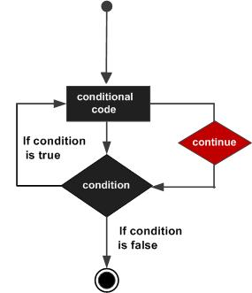
</p>
<h4>实例</h4>

<h3>TypeScript</h3><span class="hl-reserved">var</span><span class="hl-code"> </span><span class="hl-identifier">num</span><span class="hl-code">:</span><span class="hl-identifier">number</span><span class="hl-code"> = </span><span class="hl-number">0</span><span class="hl-code">
</span><span class="hl-reserved">var</span><span class="hl-code"> </span><span class="hl-identifier">count</span><span class="hl-code">:</span><span class="hl-identifier">number</span><span class="hl-code"> = </span><span class="hl-number">0</span><span class="hl-code">;
 
</span><span class="hl-reserved">for</span><span class="hl-brackets">(</span><span class="hl-identifier">num</span><span class="hl-code">=</span><span class="hl-number">0</span><span class="hl-code">;</span><span class="hl-identifier">num</span><span class="hl-code">&lt;=</span><span class="hl-number">20</span><span class="hl-code">;</span><span class="hl-identifier">num</span><span class="hl-code">++</span><span class="hl-brackets">)</span><span class="hl-code"> </span><span class="hl-brackets">{</span><span class="hl-code">
    </span><span class="hl-reserved">if</span><span class="hl-code"> </span><span class="hl-brackets">(</span><span class="hl-identifier">num</span><span class="hl-code"> % </span><span class="hl-number">2</span><span class="hl-code">==</span><span class="hl-number">0</span><span class="hl-brackets">)</span><span class="hl-code"> </span><span class="hl-brackets">{</span><span class="hl-code">
        </span><span class="hl-reserved">continue</span><span class="hl-code">
    </span><span class="hl-brackets">}</span><span class="hl-code">
    </span><span class="hl-identifier">count</span><span class="hl-code">++
</span><span class="hl-brackets">}</span><span class="hl-code">
</span><span class="hl-identifier">console</span><span class="hl-code">.</span><span class="hl-identifier">log</span><span class="hl-code"> </span><span class="hl-brackets">(</span><span class="hl-quotes">"</span><span class="hl-string">0 ~20 之间的奇数个数为: </span><span class="hl-quotes">"</span><span class="hl-code">+</span><span class="hl-identifier">count</span><span class="hl-brackets">)</span><span class="hl-code">    </span><span class="hl-comment">//</span><span class="hl-comment">输出10个偶数</span><span class="hl-comment"></span>

<p>编译以上代码得到如下 JavaScript 代码：</p>

<h3>JavaScript</h3><span class="hl-reserved">var</span><span class="hl-code"> </span><span class="hl-identifier">num</span><span class="hl-code"> = </span><span class="hl-number">0</span><span class="hl-code">;
</span><span class="hl-reserved">var</span><span class="hl-code"> </span><span class="hl-identifier">count</span><span class="hl-code"> = </span><span class="hl-number">0</span><span class="hl-code">;
</span><span class="hl-reserved">for</span><span class="hl-code"> </span><span class="hl-brackets">(</span><span class="hl-identifier">num</span><span class="hl-code"> = </span><span class="hl-number">0</span><span class="hl-code">; </span><span class="hl-identifier">num</span><span class="hl-code"> &lt;= </span><span class="hl-number">20</span><span class="hl-code">; </span><span class="hl-identifier">num</span><span class="hl-code">++</span><span class="hl-brackets">)</span><span class="hl-code"> </span><span class="hl-brackets">{</span><span class="hl-code">
    </span><span class="hl-reserved">if</span><span class="hl-code"> </span><span class="hl-brackets">(</span><span class="hl-identifier">num</span><span class="hl-code"> % </span><span class="hl-number">2</span><span class="hl-code"> == </span><span class="hl-number">0</span><span class="hl-brackets">)</span><span class="hl-code"> </span><span class="hl-brackets">{</span><span class="hl-code">
        </span><span class="hl-reserved">continue</span><span class="hl-code">;
    </span><span class="hl-brackets">}</span><span class="hl-code">
    </span><span class="hl-identifier">count</span><span class="hl-code">++;
</span><span class="hl-brackets">}</span><span class="hl-code">
</span><span class="hl-identifier">console</span><span class="hl-code">.</span><span class="hl-identifier">log</span><span class="hl-brackets">(</span><span class="hl-quotes">"</span><span class="hl-string">0 ~20 之间的奇数个数为: </span><span class="hl-quotes">"</span><span class="hl-code"> + </span><span class="hl-identifier">count</span><span class="hl-brackets">)</span><span class="hl-code">; </span><span class="hl-comment">//</span><span class="hl-comment">输出 10</span><span class="hl-comment"></span>
<p>执行以上 JavaScript 代码，输出结果为：</p>

<pre>
0 ~20 之间的奇数个数为: 10
</pre>
<hr>
<h3>无限循环</h3>
<p>无限循环就是一直在运行不会停止的循环。 for 和 while 循环都可以创建无限循环。</p>
<p>for 创建无限循环语法格式：</p>
<pre>for(;;) { 
   // 语句
}</pre>
<p>实例</p>
<pre>for(;;) { 
   console.log("这段代码会不停的执行") 
}</pre>
<p>while 创建无限循环语法格式：</p>
<pre>while(true) { 
   // 语句
} </pre>
<p>实例</p>
<pre>while(true) { 
   console.log("这段代码会不停的执行") 
}</pre>			
						
			
			
		

		
		

		
		
		
</h3></div></section>
<section class="ch" id="c16"><h2>16. TypeScript 函数<a class="chsrc" href="https://www.runoob.com/typescript/ts-function.html" target="_blank" rel="noopener">原文↗</a></h2><div class="ch-body"><p>函数是一组一起执行一个任务的语句。</p>
<p>您可以把代码划分到不同的函数中。如何划分代码到不同的函数中是由您来决定的，但在逻辑上，划分通常是根据每个函数执行一个特定的任务来进行的。</p>

<p>函数声明告诉编译器函数的名称、返回类型和参数。函数定义提供了函数的实际主体。</p>

<hr>
<h3>函数定义</h3>
<p>函数就是包裹在花括号中的代码块，前面使用了关键词 function：</p>
<p>语法格式如下所示：</p>
<pre>
function function_name()
{
    // 执行代码
}
</pre>

<h4>实例</h4>

<h3>TypeScript</h3><span class="hl-reserved">function</span><span class="hl-code"> </span><span class="hl-brackets">(</span><span class="hl-brackets">)</span><span class="hl-code"> </span><span class="hl-brackets">{</span><span class="hl-code">   
    </span><span class="hl-comment">//</span><span class="hl-comment"> 函数定义</span><span class="hl-comment"></span><span class="hl-code">
    </span><span class="hl-identifier">console</span><span class="hl-code">.</span><span class="hl-identifier">log</span><span class="hl-brackets">(</span><span class="hl-quotes">"</span><span class="hl-string">调用函数</span><span class="hl-quotes">"</span><span class="hl-brackets">)</span><span class="hl-code"> 
</span><span class="hl-brackets">}</span>
<hr>
<h3>调用函数</h3>
<p>函数只有通过调用才可以执行函数内的代码。</p>
<p>语法格式如下所示：</p>
<pre>
function_name()
</pre>

<h4>实例</h4>

<h3>TypeScript</h3><span class="hl-reserved">function</span><span class="hl-code"> </span><span class="hl-identifier">test</span><span class="hl-brackets">(</span><span class="hl-brackets">)</span><span class="hl-code"> </span><span class="hl-brackets">{</span><span class="hl-code">   </span><span class="hl-comment">//</span><span class="hl-comment"> 函数定义</span><span class="hl-comment"></span><span class="hl-code">
    </span><span class="hl-identifier">console</span><span class="hl-code">.</span><span class="hl-identifier">log</span><span class="hl-brackets">(</span><span class="hl-quotes">"</span><span class="hl-string">调用函数</span><span class="hl-quotes">"</span><span class="hl-brackets">)</span><span class="hl-code"> 
</span><span class="hl-brackets">}</span><span class="hl-code"> 
</span><span class="hl-identifier">test</span><span class="hl-brackets">(</span><span class="hl-brackets">)</span><span class="hl-code">              </span><span class="hl-comment">//</span><span class="hl-comment"> 调用函数</span><span class="hl-comment"></span>
<hr>
<h3>函数返回值</h3>
<p>有时，我们会希望函数将执行的结果返回到调用它的地方。</p>
<p>通过使用 return 语句就可以实现。</p>
<p>在使用 return 语句时，函数会停止执行，并返回指定的值。</p>
<p>语法格式如下所示：</p>
<pre>
function function_name():return_type { 
    // 语句
    return value; 
}
</pre>
<ul>
    <li><p>return_type 是返回值的类型。</p></li>
    <li><p>return 关键词后跟着要返回的结果。</p></li>
    <li><p>一般情况下，一个函数只有一个 return 语句。</p></li>
    <li><p>返回值的类型需要与函数定义的返回类型(return_type)一致。</p></li>
    </ul>
<h4>实例</h4>

<h3>TypeScript</h3><span class="hl-comment">//</span><span class="hl-comment"> 函数定义</span><span class="hl-comment"></span><span class="hl-code">
</span><span class="hl-reserved">function</span><span class="hl-code"> </span><span class="hl-identifier">greet</span><span class="hl-brackets">(</span><span class="hl-brackets">)</span><span class="hl-code">:</span><span class="hl-identifier">string</span><span class="hl-code"> </span><span class="hl-brackets">{</span><span class="hl-code"> </span><span class="hl-comment">//</span><span class="hl-comment"> 返回一个字符串</span><span class="hl-comment"></span><span class="hl-code">
    </span><span class="hl-reserved">return</span><span class="hl-code"> </span><span class="hl-quotes">"</span><span class="hl-string">Hello World</span><span class="hl-quotes">"</span><span class="hl-code"> 
</span><span class="hl-brackets">}</span><span class="hl-code"> 
 
</span><span class="hl-reserved">function</span><span class="hl-code"> </span><span class="hl-identifier">caller</span><span class="hl-brackets">(</span><span class="hl-brackets">)</span><span class="hl-code"> </span><span class="hl-brackets">{</span><span class="hl-code"> 
    </span><span class="hl-reserved">var</span><span class="hl-code"> </span><span class="hl-identifier">msg</span><span class="hl-code"> = </span><span class="hl-identifier">greet</span><span class="hl-brackets">(</span><span class="hl-brackets">)</span><span class="hl-code"> </span><span class="hl-comment">//</span><span class="hl-comment"> 调用 greet() 函数 </span><span class="hl-comment"></span><span class="hl-code">
    </span><span class="hl-identifier">console</span><span class="hl-code">.</span><span class="hl-identifier">log</span><span class="hl-brackets">(</span><span class="hl-identifier">msg</span><span class="hl-brackets">)</span><span class="hl-code"> 
</span><span class="hl-brackets">}</span><span class="hl-code"> 
 
</span><span class="hl-comment">//</span><span class="hl-comment"> 调用函数</span><span class="hl-comment"></span><span class="hl-code">
</span><span class="hl-identifier">caller</span><span class="hl-brackets">(</span><span class="hl-brackets">)</span>
<ul>
<li><p>实例中定义了函数 <i>greet()</i>，返回值的类型为 string。</p></li>
<li><p><i>greet()</i> 函数通过 return 语句返回给调用它的地方，即变量 msg，之后输出该返回值。。</p></li>
</ul>

<p>编译以上代码，得到以下 JavaScript 代码：</p>

<h3>JavaScript</h3><span class="hl-comment">//</span><span class="hl-comment"> 函数定义</span><span class="hl-comment"></span><span class="hl-code">
</span><span class="hl-reserved">function</span><span class="hl-code"> </span><span class="hl-identifier">greet</span><span class="hl-brackets">(</span><span class="hl-brackets">)</span><span class="hl-code"> </span><span class="hl-brackets">{</span><span class="hl-code">
    </span><span class="hl-reserved">return</span><span class="hl-code"> </span><span class="hl-quotes">"</span><span class="hl-string">Hello World</span><span class="hl-quotes">"</span><span class="hl-code">;
</span><span class="hl-brackets">}</span><span class="hl-code">
</span><span class="hl-reserved">function</span><span class="hl-code"> </span><span class="hl-identifier">caller</span><span class="hl-brackets">(</span><span class="hl-brackets">)</span><span class="hl-code"> </span><span class="hl-brackets">{</span><span class="hl-code">
    </span><span class="hl-reserved">var</span><span class="hl-code"> </span><span class="hl-identifier">msg</span><span class="hl-code"> = </span><span class="hl-identifier">greet</span><span class="hl-brackets">(</span><span class="hl-brackets">)</span><span class="hl-code">; </span><span class="hl-comment">//</span><span class="hl-comment"> 调用 greet() 函数 </span><span class="hl-comment"></span><span class="hl-code">
    </span><span class="hl-identifier">console</span><span class="hl-code">.</span><span class="hl-identifier">log</span><span class="hl-brackets">(</span><span class="hl-identifier">msg</span><span class="hl-brackets">)</span><span class="hl-code">;
</span><span class="hl-brackets">}</span><span class="hl-code">
</span><span class="hl-comment">//</span><span class="hl-comment"> 调用函数</span><span class="hl-comment"></span><span class="hl-code">
</span><span class="hl-identifier">caller</span><span class="hl-brackets">(</span><span class="hl-brackets">)</span><span class="hl-code">;</span>
<hr>
<h3>带参数函数</h3>
<p>在调用函数时，您可以向其传递值，这些值被称为参数。</p>

<p>这些参数可以在函数中使用。</p>

<p>您可以向函数发送多个参数，每个参数使用逗号  <span class="marked">,</span> 分隔：</p>
<p>语法格式如下所示：</p>
<pre>
function func_name( param1 [:datatype], param2 [:datatype]) {   
}
</pre>
<ul>
    <li><p>param1、param2 为参数名。</p></li>
    <li><p>datatype 为参数类型。</p></li>
    </ul>
<h4>实例</h4>

<h3>TypeScript</h3><span class="hl-reserved">function</span><span class="hl-code"> </span><span class="hl-identifier">add</span><span class="hl-brackets">(</span><span class="hl-identifier">x</span><span class="hl-code">: </span><span class="hl-identifier">number</span><span class="hl-code">, </span><span class="hl-identifier">y</span><span class="hl-code">: </span><span class="hl-identifier">number</span><span class="hl-brackets">)</span><span class="hl-code">: </span><span class="hl-identifier">number</span><span class="hl-code"> </span><span class="hl-brackets">{</span><span class="hl-code">
    </span><span class="hl-reserved">return</span><span class="hl-code"> </span><span class="hl-identifier">x</span><span class="hl-code"> + </span><span class="hl-identifier">y</span><span class="hl-code">;
</span><span class="hl-brackets">}</span><span class="hl-code">
</span><span class="hl-identifier">console</span><span class="hl-code">.</span><span class="hl-identifier">log</span><span class="hl-brackets">(</span><span class="hl-identifier">add</span><span class="hl-brackets">(</span><span class="hl-number">1</span><span class="hl-code">,</span><span class="hl-number">2</span><span class="hl-brackets">)</span><span class="hl-brackets">)</span>
<ul>
<li><p>实例中定义了函数 <i>add()</i>，返回值的类型为 number。</p></li>
<li><p><i>add()</i> 函数中定义了两个 number 类型的参数，函数内将两个参数相加并返回。</p></li>
</ul>

<p>编译以上代码，得到以下 JavaScript 代码：</p>

<h3>JavaScript</h3><span class="hl-reserved">function</span><span class="hl-code"> </span><span class="hl-identifier">add</span><span class="hl-brackets">(</span><span class="hl-identifier">x</span><span class="hl-code">, </span><span class="hl-identifier">y</span><span class="hl-brackets">)</span><span class="hl-code"> </span><span class="hl-brackets">{</span><span class="hl-code">
    </span><span class="hl-reserved">return</span><span class="hl-code"> </span><span class="hl-identifier">x</span><span class="hl-code"> + </span><span class="hl-identifier">y</span><span class="hl-code">;
</span><span class="hl-brackets">}</span><span class="hl-code">
</span><span class="hl-identifier">console</span><span class="hl-code">.</span><span class="hl-identifier">log</span><span class="hl-brackets">(</span><span class="hl-identifier">add</span><span class="hl-brackets">(</span><span class="hl-number">1</span><span class="hl-code">, </span><span class="hl-number">2</span><span class="hl-brackets">)</span><span class="hl-brackets">)</span><span class="hl-code">;</span>

<p>输出结果为：</p>

<pre>3</pre>

<hr>
<h3>可选参数和默认参数</h3>
<h4>可选参数</h4>
<p>在 TypeScript 函数里，如果我们定义了参数，则我们必须传入这些参数，除非将这些参数设置为可选，可选参数使用问号标识 ？。</p>

<p><strong>实例</strong></p>

<h3>TypeScript</h3><span class="hl-reserved">function</span><span class="hl-code"> </span><span class="hl-identifier">buildName</span><span class="hl-brackets">(</span><span class="hl-identifier">firstName</span><span class="hl-code">: </span><span class="hl-identifier">string</span><span class="hl-code">, </span><span class="hl-identifier">lastName</span><span class="hl-code">: </span><span class="hl-identifier">string</span><span class="hl-brackets">)</span><span class="hl-code"> </span><span class="hl-brackets">{</span><span class="hl-code">
    </span><span class="hl-reserved">return</span><span class="hl-code"> </span><span class="hl-identifier">firstName</span><span class="hl-code"> + </span><span class="hl-quotes">"</span><span class="hl-string"> </span><span class="hl-quotes">"</span><span class="hl-code"> + </span><span class="hl-identifier">lastName</span><span class="hl-code">;
</span><span class="hl-brackets">}</span><span class="hl-code">
 
</span><span class="hl-identifier">let</span><span class="hl-code"> </span><span class="hl-identifier">result1</span><span class="hl-code"> = </span><span class="hl-identifier">buildName</span><span class="hl-brackets">(</span><span class="hl-quotes">"</span><span class="hl-string">Bob</span><span class="hl-quotes">"</span><span class="hl-brackets">)</span><span class="hl-code">;                  </span><span class="hl-comment">//</span><span class="hl-comment"> 错误，缺少参数</span><span class="hl-comment"></span><span class="hl-code">
</span><span class="hl-identifier">let</span><span class="hl-code"> </span><span class="hl-identifier">result2</span><span class="hl-code"> = </span><span class="hl-identifier">buildName</span><span class="hl-brackets">(</span><span class="hl-quotes">"</span><span class="hl-string">Bob</span><span class="hl-quotes">"</span><span class="hl-code">, </span><span class="hl-quotes">"</span><span class="hl-string">Adams</span><span class="hl-quotes">"</span><span class="hl-code">, </span><span class="hl-quotes">"</span><span class="hl-string">Sr.</span><span class="hl-quotes">"</span><span class="hl-brackets">)</span><span class="hl-code">;  </span><span class="hl-comment">//</span><span class="hl-comment"> 错误，参数太多了</span><span class="hl-comment"></span><span class="hl-code">
</span><span class="hl-identifier">let</span><span class="hl-code"> </span><span class="hl-identifier">result3</span><span class="hl-code"> = </span><span class="hl-identifier">buildName</span><span class="hl-brackets">(</span><span class="hl-quotes">"</span><span class="hl-string">Bob</span><span class="hl-quotes">"</span><span class="hl-code">, </span><span class="hl-quotes">"</span><span class="hl-string">Adams</span><span class="hl-quotes">"</span><span class="hl-brackets">)</span><span class="hl-code">;         </span><span class="hl-comment">//</span><span class="hl-comment"> 正确</span><span class="hl-comment"></span>
<p>以下实例，我们将 lastName 设置为可选参数：</p>
<h3>TypeScript</h3><span class="hl-reserved">function</span><span class="hl-code"> </span><span class="hl-identifier">buildName</span><span class="hl-brackets">(</span><span class="hl-identifier">firstName</span><span class="hl-code">: </span><span class="hl-identifier">string</span><span class="hl-code">, </span><span class="hl-identifier">lastName</span><span class="hl-code">?: </span><span class="hl-identifier">string</span><span class="hl-brackets">)</span><span class="hl-code"> </span><span class="hl-brackets">{</span><span class="hl-code">
    </span><span class="hl-reserved">if</span><span class="hl-code"> </span><span class="hl-brackets">(</span><span class="hl-identifier">lastName</span><span class="hl-brackets">)</span><span class="hl-code">
        </span><span class="hl-reserved">return</span><span class="hl-code"> </span><span class="hl-identifier">firstName</span><span class="hl-code"> + </span><span class="hl-quotes">"</span><span class="hl-string"> </span><span class="hl-quotes">"</span><span class="hl-code"> + </span><span class="hl-identifier">lastName</span><span class="hl-code">;
    </span><span class="hl-reserved">else</span><span class="hl-code">
        </span><span class="hl-reserved">return</span><span class="hl-code"> </span><span class="hl-identifier">firstName</span><span class="hl-code">;
</span><span class="hl-brackets">}</span><span class="hl-code">
 
</span><span class="hl-identifier">let</span><span class="hl-code"> </span><span class="hl-identifier">result1</span><span class="hl-code"> = </span><span class="hl-identifier">buildName</span><span class="hl-brackets">(</span><span class="hl-quotes">"</span><span class="hl-string">Bob</span><span class="hl-quotes">"</span><span class="hl-brackets">)</span><span class="hl-code">;  </span><span class="hl-comment">//</span><span class="hl-comment"> 正确</span><span class="hl-comment"></span><span class="hl-code">
</span><span class="hl-identifier">let</span><span class="hl-code"> </span><span class="hl-identifier">result2</span><span class="hl-code"> = </span><span class="hl-identifier">buildName</span><span class="hl-brackets">(</span><span class="hl-quotes">"</span><span class="hl-string">Bob</span><span class="hl-quotes">"</span><span class="hl-code">, </span><span class="hl-quotes">"</span><span class="hl-string">Adams</span><span class="hl-quotes">"</span><span class="hl-code">, </span><span class="hl-quotes">"</span><span class="hl-string">Sr.</span><span class="hl-quotes">"</span><span class="hl-brackets">)</span><span class="hl-code">;  </span><span class="hl-comment">//</span><span class="hl-comment"> 错误，参数太多了</span><span class="hl-comment"></span><span class="hl-code">
</span><span class="hl-identifier">let</span><span class="hl-code"> </span><span class="hl-identifier">result3</span><span class="hl-code"> = </span><span class="hl-identifier">buildName</span><span class="hl-brackets">(</span><span class="hl-quotes">"</span><span class="hl-string">Bob</span><span class="hl-quotes">"</span><span class="hl-code">, </span><span class="hl-quotes">"</span><span class="hl-string">Adams</span><span class="hl-quotes">"</span><span class="hl-brackets">)</span><span class="hl-code">;  </span><span class="hl-comment">//</span><span class="hl-comment"> 正确</span><span class="hl-comment"></span>
<p>可选参数必须跟在必需参数后面。 如果上例我们想让 firstName 是可选的，lastName 必选，那么就要调整它们的位置，把 firstName 放在后面。</p>
<p>如果都是可选参数就没关系。</p>
<h4>
默认参数
</h4><p>
我们也可以设置参数的默认值，这样在调用函数的时候，如果不传入该参数的值，则使用默认参数，语法格式为：</p>
<pre>function function_name(param1[:type],param2[:type] = default_value) { 
}</pre>
注意：参数不能同时设置为可选和默认。

<p><strong>实例</strong></p>
<p>以下实例函数的参数 rate 设置了默认值为 0.50，调用该函数时如果未传入参数则使用该默认值：</p>
<h3>TypeScript</h3><span class="hl-reserved">function</span><span class="hl-code"> </span><span class="hl-identifier">calculate_discount</span><span class="hl-brackets">(</span><span class="hl-identifier">price</span><span class="hl-code">:</span><span class="hl-identifier">number</span><span class="hl-code">,</span><span class="hl-identifier">rate</span><span class="hl-code">:</span><span class="hl-identifier">number</span><span class="hl-code"> = </span><span class="hl-number">0.50</span><span class="hl-brackets">)</span><span class="hl-code"> </span><span class="hl-brackets">{</span><span class="hl-code"> 
    </span><span class="hl-reserved">var</span><span class="hl-code"> </span><span class="hl-identifier">discount</span><span class="hl-code"> = </span><span class="hl-identifier">price</span><span class="hl-code"> * </span><span class="hl-identifier">rate</span><span class="hl-code">; 
    </span><span class="hl-identifier">console</span><span class="hl-code">.</span><span class="hl-identifier">log</span><span class="hl-brackets">(</span><span class="hl-quotes">"</span><span class="hl-string">计算结果: </span><span class="hl-quotes">"</span><span class="hl-code">,</span><span class="hl-identifier">discount</span><span class="hl-brackets">)</span><span class="hl-code">; 
</span><span class="hl-brackets">}</span><span class="hl-code"> 
</span><span class="hl-identifier">calculate_discount</span><span class="hl-brackets">(</span><span class="hl-number">1000</span><span class="hl-brackets">)</span><span class="hl-code"> 
</span><span class="hl-identifier">calculate_discount</span><span class="hl-brackets">(</span><span class="hl-number">1000</span><span class="hl-code">,</span><span class="hl-number">0.30</span><span class="hl-brackets">)</span>
<p>编译以上代码，得到以下 JavaScript 代码：</p>
<h3>JavaScript</h3><span class="hl-reserved">function</span><span class="hl-code"> </span><span class="hl-identifier">calculate_discount</span><span class="hl-brackets">(</span><span class="hl-identifier">price</span><span class="hl-code">, </span><span class="hl-identifier">rate</span><span class="hl-brackets">)</span><span class="hl-code"> </span><span class="hl-brackets">{</span><span class="hl-code">
    </span><span class="hl-reserved">if</span><span class="hl-code"> </span><span class="hl-brackets">(</span><span class="hl-identifier">rate</span><span class="hl-code"> === </span><span class="hl-reserved">void</span><span class="hl-code"> </span><span class="hl-number">0</span><span class="hl-brackets">)</span><span class="hl-code"> </span><span class="hl-brackets">{</span><span class="hl-code"> </span><span class="hl-identifier">rate</span><span class="hl-code"> = </span><span class="hl-number">0.50</span><span class="hl-code">; </span><span class="hl-brackets">}</span><span class="hl-code">
    </span><span class="hl-reserved">var</span><span class="hl-code"> </span><span class="hl-identifier">discount</span><span class="hl-code"> = </span><span class="hl-identifier">price</span><span class="hl-code"> * </span><span class="hl-identifier">rate</span><span class="hl-code">;
    </span><span class="hl-identifier">console</span><span class="hl-code">.</span><span class="hl-identifier">log</span><span class="hl-brackets">(</span><span class="hl-quotes">"</span><span class="hl-string">计算结果: </span><span class="hl-quotes">"</span><span class="hl-code">, </span><span class="hl-identifier">discount</span><span class="hl-brackets">)</span><span class="hl-code">;
</span><span class="hl-brackets">}</span><span class="hl-code">
</span><span class="hl-identifier">calculate_discount</span><span class="hl-brackets">(</span><span class="hl-number">1000</span><span class="hl-brackets">)</span><span class="hl-code">;
</span><span class="hl-identifier">calculate_discount</span><span class="hl-brackets">(</span><span class="hl-number">1000</span><span class="hl-code">, </span><span class="hl-number">0.30</span><span class="hl-brackets">)</span><span class="hl-code">;</span>
<p>输出结果为：</p>
<pre>计算结果:  500
计算结果:  300</pre>
<hr><h3>
剩余参数
</h3>
<p>有一种情况，我们不知道要向函数传入多少个参数，这时候我们就可以使用剩余参数来定义。</p>
<p>剩余参数语法允许我们将一个不确定数量的参数作为一个数组传入。</p>

<h3>TypeScript</h3><span class="hl-reserved">function</span><span class="hl-code"> </span><span class="hl-identifier">buildName</span><span class="hl-brackets">(</span><span class="hl-identifier">firstName</span><span class="hl-code">: </span><span class="hl-identifier">string</span><span class="hl-code">, ...</span><span class="hl-identifier">restOfName</span><span class="hl-code">: </span><span class="hl-identifier">string</span><span class="hl-brackets">[</span><span class="hl-brackets">]</span><span class="hl-brackets">)</span><span class="hl-code"> </span><span class="hl-brackets">{</span><span class="hl-code">
    </span><span class="hl-reserved">return</span><span class="hl-code"> </span><span class="hl-identifier">firstName</span><span class="hl-code"> + </span><span class="hl-quotes">"</span><span class="hl-string"> </span><span class="hl-quotes">"</span><span class="hl-code"> + </span><span class="hl-identifier">restOfName</span><span class="hl-code">.</span><span class="hl-identifier">join</span><span class="hl-brackets">(</span><span class="hl-quotes">"</span><span class="hl-string"> </span><span class="hl-quotes">"</span><span class="hl-brackets">)</span><span class="hl-code">;
</span><span class="hl-brackets">}</span><span class="hl-code">
  
</span><span class="hl-identifier">let</span><span class="hl-code"> </span><span class="hl-identifier">employeeName</span><span class="hl-code"> = </span><span class="hl-identifier">buildName</span><span class="hl-brackets">(</span><span class="hl-quotes">"</span><span class="hl-string">Joseph</span><span class="hl-quotes">"</span><span class="hl-code">, </span><span class="hl-quotes">"</span><span class="hl-string">Samuel</span><span class="hl-quotes">"</span><span class="hl-code">, </span><span class="hl-quotes">"</span><span class="hl-string">Lucas</span><span class="hl-quotes">"</span><span class="hl-code">, </span><span class="hl-quotes">"</span><span class="hl-string">MacKinzie</span><span class="hl-quotes">"</span><span class="hl-brackets">)</span><span class="hl-code">;</span>

<p>函数的最后一个命名参数 restOfName 以 ... 为前缀，它将成为一个由剩余参数组成的数组，索引值从0（包括）到 restOfName.length（不包括）。</p>
<h3>TypeScript</h3><span class="hl-reserved">function</span><span class="hl-code"> </span><span class="hl-identifier">addNumbers</span><span class="hl-brackets">(</span><span class="hl-code">...</span><span class="hl-identifier">nums</span><span class="hl-code">:</span><span class="hl-identifier">number</span><span class="hl-brackets">[</span><span class="hl-brackets">]</span><span class="hl-brackets">)</span><span class="hl-code"> </span><span class="hl-brackets">{</span><span class="hl-code">  
    </span><span class="hl-reserved">var</span><span class="hl-code"> </span><span class="hl-identifier">i</span><span class="hl-code">;   
    </span><span class="hl-reserved">var</span><span class="hl-code"> </span><span class="hl-identifier">sum</span><span class="hl-code">:</span><span class="hl-identifier">number</span><span class="hl-code"> = </span><span class="hl-number">0</span><span class="hl-code">; 
    
    </span><span class="hl-reserved">for</span><span class="hl-brackets">(</span><span class="hl-identifier">i</span><span class="hl-code"> = </span><span class="hl-number">0</span><span class="hl-code">;</span><span class="hl-identifier">i</span><span class="hl-code">&lt;</span><span class="hl-identifier">nums</span><span class="hl-code">.</span><span class="hl-identifier">length</span><span class="hl-code">;</span><span class="hl-identifier">i</span><span class="hl-code">++</span><span class="hl-brackets">)</span><span class="hl-code"> </span><span class="hl-brackets">{</span><span class="hl-code"> 
       </span><span class="hl-identifier">sum</span><span class="hl-code"> = </span><span class="hl-identifier">sum</span><span class="hl-code"> + </span><span class="hl-identifier">nums</span><span class="hl-brackets">[</span><span class="hl-identifier">i</span><span class="hl-brackets">]</span><span class="hl-code">; 
    </span><span class="hl-brackets">}</span><span class="hl-code"> 
    </span><span class="hl-identifier">console</span><span class="hl-code">.</span><span class="hl-identifier">log</span><span class="hl-brackets">(</span><span class="hl-quotes">"</span><span class="hl-string">和为：</span><span class="hl-quotes">"</span><span class="hl-code">,</span><span class="hl-identifier">sum</span><span class="hl-brackets">)</span><span class="hl-code"> 
 </span><span class="hl-brackets">}</span><span class="hl-code"> 
 </span><span class="hl-identifier">addNumbers</span><span class="hl-brackets">(</span><span class="hl-number">1</span><span class="hl-code">,</span><span class="hl-number">2</span><span class="hl-code">,</span><span class="hl-number">3</span><span class="hl-brackets">)</span><span class="hl-code"> 
 </span><span class="hl-identifier">addNumbers</span><span class="hl-brackets">(</span><span class="hl-number">10</span><span class="hl-code">,</span><span class="hl-number">10</span><span class="hl-code">,</span><span class="hl-number">10</span><span class="hl-code">,</span><span class="hl-number">10</span><span class="hl-code">,</span><span class="hl-number">10</span><span class="hl-brackets">)</span>

<p>编译以上代码，得到以下 JavaScript 代码：</p>
<h3>JavaScript</h3><span class="hl-reserved">function</span><span class="hl-code"> </span><span class="hl-identifier">addNumbers</span><span class="hl-brackets">(</span><span class="hl-brackets">)</span><span class="hl-code"> </span><span class="hl-brackets">{</span><span class="hl-code">
    </span><span class="hl-reserved">var</span><span class="hl-code"> </span><span class="hl-identifier">nums</span><span class="hl-code"> = </span><span class="hl-brackets">[</span><span class="hl-brackets">]</span><span class="hl-code">;
    </span><span class="hl-reserved">for</span><span class="hl-code"> </span><span class="hl-brackets">(</span><span class="hl-reserved">var</span><span class="hl-code"> </span><span class="hl-identifier">_i</span><span class="hl-code"> = </span><span class="hl-number">0</span><span class="hl-code">; </span><span class="hl-identifier">_i</span><span class="hl-code"> &lt; </span><span class="hl-identifier">arguments</span><span class="hl-code">.</span><span class="hl-identifier">length</span><span class="hl-code">; </span><span class="hl-identifier">_i</span><span class="hl-code">++</span><span class="hl-brackets">)</span><span class="hl-code"> </span><span class="hl-brackets">{</span><span class="hl-code">
        </span><span class="hl-identifier">nums</span><span class="hl-brackets">[</span><span class="hl-identifier">_i</span><span class="hl-brackets">]</span><span class="hl-code"> = </span><span class="hl-identifier">arguments</span><span class="hl-brackets">[</span><span class="hl-identifier">_i</span><span class="hl-brackets">]</span><span class="hl-code">;
    </span><span class="hl-brackets">}</span><span class="hl-code">
    </span><span class="hl-reserved">var</span><span class="hl-code"> </span><span class="hl-identifier">i</span><span class="hl-code">;
    </span><span class="hl-reserved">var</span><span class="hl-code"> </span><span class="hl-identifier">sum</span><span class="hl-code"> = </span><span class="hl-number">0</span><span class="hl-code">;
    </span><span class="hl-reserved">for</span><span class="hl-code"> </span><span class="hl-brackets">(</span><span class="hl-identifier">i</span><span class="hl-code"> = </span><span class="hl-number">0</span><span class="hl-code">; </span><span class="hl-identifier">i</span><span class="hl-code"> &lt; </span><span class="hl-identifier">nums</span><span class="hl-code">.</span><span class="hl-identifier">length</span><span class="hl-code">; </span><span class="hl-identifier">i</span><span class="hl-code">++</span><span class="hl-brackets">)</span><span class="hl-code"> </span><span class="hl-brackets">{</span><span class="hl-code">
        </span><span class="hl-identifier">sum</span><span class="hl-code"> = </span><span class="hl-identifier">sum</span><span class="hl-code"> + </span><span class="hl-identifier">nums</span><span class="hl-brackets">[</span><span class="hl-identifier">i</span><span class="hl-brackets">]</span><span class="hl-code">;
    </span><span class="hl-brackets">}</span><span class="hl-code">
    </span><span class="hl-identifier">console</span><span class="hl-code">.</span><span class="hl-identifier">log</span><span class="hl-brackets">(</span><span class="hl-quotes">"</span><span class="hl-string">和为：</span><span class="hl-quotes">"</span><span class="hl-code">, </span><span class="hl-identifier">sum</span><span class="hl-brackets">)</span><span class="hl-code">;
</span><span class="hl-brackets">}</span><span class="hl-code">
</span><span class="hl-identifier">addNumbers</span><span class="hl-brackets">(</span><span class="hl-number">1</span><span class="hl-code">, </span><span class="hl-number">2</span><span class="hl-code">, </span><span class="hl-number">3</span><span class="hl-brackets">)</span><span class="hl-code">;
</span><span class="hl-identifier">addNumbers</span><span class="hl-brackets">(</span><span class="hl-number">10</span><span class="hl-code">, </span><span class="hl-number">10</span><span class="hl-code">, </span><span class="hl-number">10</span><span class="hl-code">, </span><span class="hl-number">10</span><span class="hl-code">, </span><span class="hl-number">10</span><span class="hl-brackets">)</span><span class="hl-code">;</span>
<p>输出结果为：</p>

<pre>和为： 6
和为： 50</pre>

<hr>
<h3>匿名函数</h3>
<p>匿名函数是一个没有函数名的函数。</p>
<p>匿名函数在程序运行时动态声明，除了没有函数名外，其他的与标准函数一样。</p>
<p>我们可以将匿名函数赋值给一个变量，这种表达式就成为函数表达式。</p>
<p>语法格式如下：</p>
<pre>var res = function( [arguments] ) { ... }</pre>

<h4>实例</h4>
<p>不带参数匿名函数：</p>
<h3>TypeScript</h3><span class="hl-reserved">var</span><span class="hl-code"> </span><span class="hl-identifier">msg</span><span class="hl-code"> = </span><span class="hl-reserved">function</span><span class="hl-brackets">(</span><span class="hl-brackets">)</span><span class="hl-code"> </span><span class="hl-brackets">{</span><span class="hl-code"> 
    </span><span class="hl-reserved">return</span><span class="hl-code"> </span><span class="hl-quotes">"</span><span class="hl-string">hello world</span><span class="hl-quotes">"</span><span class="hl-code">;  
</span><span class="hl-brackets">}</span><span class="hl-code"> 
</span><span class="hl-identifier">console</span><span class="hl-code">.</span><span class="hl-identifier">log</span><span class="hl-brackets">(</span><span class="hl-identifier">msg</span><span class="hl-brackets">(</span><span class="hl-brackets">)</span><span class="hl-brackets">)</span>

<p>编译以上代码，得到以下 JavaScript 代码：</p>
<h3>JavaScript</h3><span class="hl-reserved">var</span><span class="hl-code"> </span><span class="hl-identifier">msg</span><span class="hl-code"> = </span><span class="hl-reserved">function</span><span class="hl-code"> </span><span class="hl-brackets">(</span><span class="hl-brackets">)</span><span class="hl-code"> </span><span class="hl-brackets">{</span><span class="hl-code">
    </span><span class="hl-reserved">return</span><span class="hl-code"> </span><span class="hl-quotes">"</span><span class="hl-string">hello world</span><span class="hl-quotes">"</span><span class="hl-code">;
</span><span class="hl-brackets">}</span><span class="hl-code">;
</span><span class="hl-identifier">console</span><span class="hl-code">.</span><span class="hl-identifier">log</span><span class="hl-brackets">(</span><span class="hl-identifier">msg</span><span class="hl-brackets">(</span><span class="hl-brackets">)</span><span class="hl-brackets">)</span><span class="hl-code">;</span>
<p>输出结果为：</p>
<pre>hello world</pre>

<p>带参数匿名函数：</p>
<h3>TypeScript</h3><span class="hl-reserved">var</span><span class="hl-code"> </span><span class="hl-identifier">res</span><span class="hl-code"> = </span><span class="hl-reserved">function</span><span class="hl-brackets">(</span><span class="hl-identifier">a</span><span class="hl-code">:</span><span class="hl-identifier">number</span><span class="hl-code">,</span><span class="hl-identifier">b</span><span class="hl-code">:</span><span class="hl-identifier">number</span><span class="hl-brackets">)</span><span class="hl-code"> </span><span class="hl-brackets">{</span><span class="hl-code"> 
    </span><span class="hl-reserved">return</span><span class="hl-code"> </span><span class="hl-identifier">a</span><span class="hl-code">*</span><span class="hl-identifier">b</span><span class="hl-code">;  
</span><span class="hl-brackets">}</span><span class="hl-code">; 
</span><span class="hl-identifier">console</span><span class="hl-code">.</span><span class="hl-identifier">log</span><span class="hl-brackets">(</span><span class="hl-identifier">res</span><span class="hl-brackets">(</span><span class="hl-number">12</span><span class="hl-code">,</span><span class="hl-number">2</span><span class="hl-brackets">)</span><span class="hl-brackets">)</span>
    
    
<p>编译以上代码，得到以下 JavaScript 代码：</p>
<h3>JavaScript</h3><span class="hl-reserved">var</span><span class="hl-code"> </span><span class="hl-identifier">res</span><span class="hl-code"> = </span><span class="hl-reserved">function</span><span class="hl-code"> </span><span class="hl-brackets">(</span><span class="hl-identifier">a</span><span class="hl-code">, </span><span class="hl-identifier">b</span><span class="hl-brackets">)</span><span class="hl-code"> </span><span class="hl-brackets">{</span><span class="hl-code">
    </span><span class="hl-reserved">return</span><span class="hl-code"> </span><span class="hl-identifier">a</span><span class="hl-code"> * </span><span class="hl-identifier">b</span><span class="hl-code">;
</span><span class="hl-brackets">}</span><span class="hl-code">;
</span><span class="hl-identifier">console</span><span class="hl-code">.</span><span class="hl-identifier">log</span><span class="hl-brackets">(</span><span class="hl-identifier">res</span><span class="hl-brackets">(</span><span class="hl-number">12</span><span class="hl-code">, </span><span class="hl-number">2</span><span class="hl-brackets">)</span><span class="hl-brackets">)</span><span class="hl-code">;</span>
<p>输出结果为：</p>
<pre>24</pre>
<h4>匿名函数自调用</h4>
匿名函数自调用在函数后使用 () 即可：
<h3>TypeScript</h3><span class="hl-brackets">(</span><span class="hl-reserved">function</span><span class="hl-code"> </span><span class="hl-brackets">(</span><span class="hl-brackets">)</span><span class="hl-code"> </span><span class="hl-brackets">{</span><span class="hl-code"> 
    </span><span class="hl-reserved">var</span><span class="hl-code"> </span><span class="hl-identifier">x</span><span class="hl-code"> = </span><span class="hl-quotes">"</span><span class="hl-string">Hello!!</span><span class="hl-quotes">"</span><span class="hl-code">;   
    </span><span class="hl-identifier">console</span><span class="hl-code">.</span><span class="hl-identifier">log</span><span class="hl-brackets">(</span><span class="hl-identifier">x</span><span class="hl-brackets">)</span><span class="hl-code">     
 </span><span class="hl-brackets">}</span><span class="hl-brackets">)</span><span class="hl-brackets">(</span><span class="hl-brackets">)</span>
 <p>编译以上代码，得到以下 JavaScript 代码：</p>

 <h3>JavaScript</h3><span class="hl-brackets">(</span><span class="hl-reserved">function</span><span class="hl-code"> </span><span class="hl-brackets">(</span><span class="hl-brackets">)</span><span class="hl-code"> </span><span class="hl-brackets">{</span><span class="hl-code"> 
    </span><span class="hl-reserved">var</span><span class="hl-code"> </span><span class="hl-identifier">x</span><span class="hl-code"> = </span><span class="hl-quotes">"</span><span class="hl-string">Hello!!</span><span class="hl-quotes">"</span><span class="hl-code">;   
    </span><span class="hl-identifier">console</span><span class="hl-code">.</span><span class="hl-identifier">log</span><span class="hl-brackets">(</span><span class="hl-identifier">x</span><span class="hl-brackets">)</span><span class="hl-code">    
</span><span class="hl-brackets">}</span><span class="hl-brackets">)</span><span class="hl-brackets">(</span><span class="hl-brackets">)</span>

<p>输出结果为：</p>
<pre>Hello!!</pre>

<hr>
<h3>构造函数</h3>
<p>TypeScript 也支持使用 JavaScript 内置的构造函数 Function() 来定义函数：</p>

<p>语法格式如下：</p>
<pre>var res = new Function ([arg1[, arg2[, ...argN]],] functionBody)</pre>
<p>参数说明：</p>
<ul><li>
<strong>arg1, arg2, ... argN</strong>：参数列表。
</li><li>
<strong>functionBody</strong>：一个含有包括函数定义的 JavaScript 语句的字符串。
</li></ul>

<h4>实例</h4>

<h3>TypeScript</h3><span class="hl-reserved">var</span><span class="hl-code"> </span><span class="hl-identifier">myFunction</span><span class="hl-code"> = </span><span class="hl-reserved">new</span><span class="hl-code"> </span><span class="hl-builtin">Function</span><span class="hl-brackets">(</span><span class="hl-quotes">"</span><span class="hl-string">a</span><span class="hl-quotes">"</span><span class="hl-code">, </span><span class="hl-quotes">"</span><span class="hl-string">b</span><span class="hl-quotes">"</span><span class="hl-code">, </span><span class="hl-quotes">"</span><span class="hl-string">return a * b</span><span class="hl-quotes">"</span><span class="hl-brackets">)</span><span class="hl-code">; 
</span><span class="hl-reserved">var</span><span class="hl-code"> </span><span class="hl-identifier">x</span><span class="hl-code"> = </span><span class="hl-identifier">myFunction</span><span class="hl-brackets">(</span><span class="hl-number">4</span><span class="hl-code">, </span><span class="hl-number">3</span><span class="hl-brackets">)</span><span class="hl-code">; 
</span><span class="hl-identifier">console</span><span class="hl-code">.</span><span class="hl-identifier">log</span><span class="hl-brackets">(</span><span class="hl-identifier">x</span><span class="hl-brackets">)</span><span class="hl-code">;</span>

<p>编译以上代码，得到以下 JavaScript 代码：</p>
<h3>JavaScript</h3><span class="hl-reserved">var</span><span class="hl-code"> </span><span class="hl-identifier">myFunction</span><span class="hl-code"> = </span><span class="hl-reserved">new</span><span class="hl-code"> </span><span class="hl-builtin">Function</span><span class="hl-brackets">(</span><span class="hl-quotes">"</span><span class="hl-string">a</span><span class="hl-quotes">"</span><span class="hl-code">, </span><span class="hl-quotes">"</span><span class="hl-string">b</span><span class="hl-quotes">"</span><span class="hl-code">, </span><span class="hl-quotes">"</span><span class="hl-string">return a * b</span><span class="hl-quotes">"</span><span class="hl-brackets">)</span><span class="hl-code">; 
</span><span class="hl-reserved">var</span><span class="hl-code"> </span><span class="hl-identifier">x</span><span class="hl-code"> = </span><span class="hl-identifier">myFunction</span><span class="hl-brackets">(</span><span class="hl-number">4</span><span class="hl-code">, </span><span class="hl-number">3</span><span class="hl-brackets">)</span><span class="hl-code">; 
</span><span class="hl-identifier">console</span><span class="hl-code">.</span><span class="hl-identifier">log</span><span class="hl-brackets">(</span><span class="hl-identifier">x</span><span class="hl-brackets">)</span><span class="hl-code">;</span>
<p>输出结果为：</p>
<pre>12</pre>

<hr>
<h3>递归函数</h3>
递归函数即在函数内调用函数本身。
<blockquote><p>举个例子：<br>
从前有座山，山里有座庙，庙里有个老和尚，正在给小和尚讲故事呢！故事是什么呢？"从前有座山，山里有座庙，庙里有个老和尚，正在给小和尚讲故事呢！故事是什么呢？'从前有座山，山里有座庙，庙里有个老和尚，正在给小和尚讲故事呢！故事是什么呢？……'"
</p></blockquote>

<h4>实例</h4>

<h3>TypeScript</h3><span class="hl-reserved">function</span><span class="hl-code"> </span><span class="hl-identifier">factorial</span><span class="hl-brackets">(</span><span class="hl-identifier">number</span><span class="hl-brackets">)</span><span class="hl-code"> </span><span class="hl-brackets">{</span><span class="hl-code">
    </span><span class="hl-reserved">if</span><span class="hl-code"> </span><span class="hl-brackets">(</span><span class="hl-identifier">number</span><span class="hl-code"> &lt;= </span><span class="hl-number">0</span><span class="hl-brackets">)</span><span class="hl-code"> </span><span class="hl-brackets">{</span><span class="hl-code">         </span><span class="hl-comment">//</span><span class="hl-comment"> 停止执行</span><span class="hl-comment"></span><span class="hl-code">
        </span><span class="hl-reserved">return</span><span class="hl-code"> </span><span class="hl-number">1</span><span class="hl-code">; 
    </span><span class="hl-brackets">}</span><span class="hl-code"> </span><span class="hl-reserved">else</span><span class="hl-code"> </span><span class="hl-brackets">{</span><span class="hl-code">     
        </span><span class="hl-reserved">return</span><span class="hl-code"> </span><span class="hl-brackets">(</span><span class="hl-identifier">number</span><span class="hl-code"> * </span><span class="hl-identifier">factorial</span><span class="hl-brackets">(</span><span class="hl-identifier">number</span><span class="hl-code"> - </span><span class="hl-number">1</span><span class="hl-brackets">)</span><span class="hl-brackets">)</span><span class="hl-code">;     </span><span class="hl-comment">//</span><span class="hl-comment"> 调用自身</span><span class="hl-comment"></span><span class="hl-code">
    </span><span class="hl-brackets">}</span><span class="hl-code"> 
</span><span class="hl-brackets">}</span><span class="hl-code">; 
</span><span class="hl-identifier">console</span><span class="hl-code">.</span><span class="hl-identifier">log</span><span class="hl-brackets">(</span><span class="hl-identifier">factorial</span><span class="hl-brackets">(</span><span class="hl-number">6</span><span class="hl-brackets">)</span><span class="hl-brackets">)</span><span class="hl-code">;      </span><span class="hl-comment">//</span><span class="hl-comment"> 输出 720</span><span class="hl-comment"></span>

<p>编译以上代码，得到以下 JavaScript 代码：</p>
<h3>JavaScript</h3><span class="hl-reserved">function</span><span class="hl-code"> </span><span class="hl-identifier">factorial</span><span class="hl-brackets">(</span><span class="hl-identifier">number</span><span class="hl-brackets">)</span><span class="hl-code"> </span><span class="hl-brackets">{</span><span class="hl-code">
    </span><span class="hl-reserved">if</span><span class="hl-code"> </span><span class="hl-brackets">(</span><span class="hl-identifier">number</span><span class="hl-code"> &lt;= </span><span class="hl-number">0</span><span class="hl-brackets">)</span><span class="hl-code"> </span><span class="hl-brackets">{</span><span class="hl-code"> </span><span class="hl-comment">//</span><span class="hl-comment"> 停止执行</span><span class="hl-comment"></span><span class="hl-code">
        </span><span class="hl-reserved">return</span><span class="hl-code"> </span><span class="hl-number">1</span><span class="hl-code">;
    </span><span class="hl-brackets">}</span><span class="hl-code">
    </span><span class="hl-reserved">else</span><span class="hl-code"> </span><span class="hl-brackets">{</span><span class="hl-code">
        </span><span class="hl-reserved">return</span><span class="hl-code"> </span><span class="hl-brackets">(</span><span class="hl-identifier">number</span><span class="hl-code"> * </span><span class="hl-identifier">factorial</span><span class="hl-brackets">(</span><span class="hl-identifier">number</span><span class="hl-code"> - </span><span class="hl-number">1</span><span class="hl-brackets">)</span><span class="hl-brackets">)</span><span class="hl-code">; </span><span class="hl-comment">//</span><span class="hl-comment"> 调用自身</span><span class="hl-comment"></span><span class="hl-code">
    </span><span class="hl-brackets">}</span><span class="hl-code">
</span><span class="hl-brackets">}</span><span class="hl-code">
;
</span><span class="hl-identifier">console</span><span class="hl-code">.</span><span class="hl-identifier">log</span><span class="hl-brackets">(</span><span class="hl-identifier">factorial</span><span class="hl-brackets">(</span><span class="hl-number">6</span><span class="hl-brackets">)</span><span class="hl-brackets">)</span><span class="hl-code">; </span><span class="hl-comment">//</span><span class="hl-comment"> 输出 720</span><span class="hl-comment"></span>
<p>输出结果为：</p>
<pre>720</pre>
<hr>
<h3>Lambda 函数</h3>
<p>Lambda 函数也称之为箭头函数。</p>
<p>箭头函数表达式的语法比函数表达式更短。</p>
<p>
函数只有一行语句：</p>
<pre>( [param1, param2,…param n] )=&gt;statement;</pre>

<h4>实例</h4>
以下实例声明了 lambda 表达式函数，函数返回两个数的和：
<h3>TypeScript</h3><span class="hl-reserved">var</span><span class="hl-code"> </span><span class="hl-identifier">foo</span><span class="hl-code"> = </span><span class="hl-brackets">(</span><span class="hl-identifier">x</span><span class="hl-code">:</span><span class="hl-identifier">number</span><span class="hl-brackets">)</span><span class="hl-code">=&gt;</span><span class="hl-number">10</span><span class="hl-code"> + </span><span class="hl-identifier">x</span><span class="hl-code"> 
</span><span class="hl-identifier">console</span><span class="hl-code">.</span><span class="hl-identifier">log</span><span class="hl-brackets">(</span><span class="hl-identifier">foo</span><span class="hl-brackets">(</span><span class="hl-number">100</span><span class="hl-brackets">)</span><span class="hl-brackets">)</span><span class="hl-code">      </span><span class="hl-comment">//</span><span class="hl-comment">输出结果为 110</span><span class="hl-comment"></span>

<p>编译以上代码，得到以下 JavaScript 代码：</p>
<h3>JavaScript</h3><span class="hl-reserved">var</span><span class="hl-code"> </span><span class="hl-identifier">foo</span><span class="hl-code"> = </span><span class="hl-reserved">function</span><span class="hl-code"> </span><span class="hl-brackets">(</span><span class="hl-identifier">x</span><span class="hl-brackets">)</span><span class="hl-code"> </span><span class="hl-brackets">{</span><span class="hl-code"> </span><span class="hl-reserved">return</span><span class="hl-code"> </span><span class="hl-number">10</span><span class="hl-code"> + </span><span class="hl-identifier">x</span><span class="hl-code">; </span><span class="hl-brackets">}</span><span class="hl-code">;
</span><span class="hl-identifier">console</span><span class="hl-code">.</span><span class="hl-identifier">log</span><span class="hl-brackets">(</span><span class="hl-identifier">foo</span><span class="hl-brackets">(</span><span class="hl-number">100</span><span class="hl-brackets">)</span><span class="hl-brackets">)</span><span class="hl-code">; </span><span class="hl-comment">//</span><span class="hl-comment">输出结果为 110</span><span class="hl-comment"></span>
<p>输出结果为：</p>
<pre>110</pre>
<p>函数是一个语句块：</p>
<pre>( [param1, param2,…param n] )=&gt; {
 
    // 代码块
}</pre>

<h4>实例</h4>
<p>以下实例声明了 lambda 表达式函数，函数返回两个数的和：</p>
<h3>TypeScript</h3><span class="hl-reserved">var</span><span class="hl-code"> </span><span class="hl-identifier">foo</span><span class="hl-code"> = </span><span class="hl-brackets">(</span><span class="hl-identifier">x</span><span class="hl-code">:</span><span class="hl-identifier">number</span><span class="hl-brackets">)</span><span class="hl-code">=&gt; </span><span class="hl-brackets">{</span><span class="hl-code">    
    </span><span class="hl-identifier">x</span><span class="hl-code"> = </span><span class="hl-number">10</span><span class="hl-code"> + </span><span class="hl-identifier">x</span><span class="hl-code"> 
    </span><span class="hl-identifier">console</span><span class="hl-code">.</span><span class="hl-identifier">log</span><span class="hl-brackets">(</span><span class="hl-identifier">x</span><span class="hl-brackets">)</span><span class="hl-code">  
</span><span class="hl-brackets">}</span><span class="hl-code"> 
</span><span class="hl-identifier">foo</span><span class="hl-brackets">(</span><span class="hl-number">100</span><span class="hl-brackets">)</span>

<p>编译以上代码，得到以下 JavaScript 代码：</p>
<h3>JavaScript</h3><span class="hl-reserved">var</span><span class="hl-code"> </span><span class="hl-identifier">foo</span><span class="hl-code"> = </span><span class="hl-reserved">function</span><span class="hl-code"> </span><span class="hl-brackets">(</span><span class="hl-identifier">x</span><span class="hl-brackets">)</span><span class="hl-code"> </span><span class="hl-brackets">{</span><span class="hl-code">
    </span><span class="hl-identifier">x</span><span class="hl-code"> = </span><span class="hl-number">10</span><span class="hl-code"> + </span><span class="hl-identifier">x</span><span class="hl-code">;
    </span><span class="hl-identifier">console</span><span class="hl-code">.</span><span class="hl-identifier">log</span><span class="hl-brackets">(</span><span class="hl-identifier">x</span><span class="hl-brackets">)</span><span class="hl-code">;
</span><span class="hl-brackets">}</span><span class="hl-code">;
</span><span class="hl-identifier">foo</span><span class="hl-brackets">(</span><span class="hl-number">100</span><span class="hl-brackets">)</span><span class="hl-code">;</span>
<p>输出结果为：</p>
<pre>110</pre>
我们可以不指定函数的参数类型，通过函数内来推断参数类型:

<h3>TypeScript</h3><span class="hl-reserved">var</span><span class="hl-code"> </span><span class="hl-identifier">func</span><span class="hl-code"> = </span><span class="hl-brackets">(</span><span class="hl-identifier">x</span><span class="hl-brackets">)</span><span class="hl-code">=&gt; </span><span class="hl-brackets">{</span><span class="hl-code"> 
    </span><span class="hl-reserved">if</span><span class="hl-brackets">(</span><span class="hl-reserved">typeof</span><span class="hl-code"> </span><span class="hl-identifier">x</span><span class="hl-code">==</span><span class="hl-quotes">"</span><span class="hl-string">number</span><span class="hl-quotes">"</span><span class="hl-brackets">)</span><span class="hl-code"> </span><span class="hl-brackets">{</span><span class="hl-code"> 
        </span><span class="hl-identifier">console</span><span class="hl-code">.</span><span class="hl-identifier">log</span><span class="hl-brackets">(</span><span class="hl-identifier">x</span><span class="hl-code">+</span><span class="hl-quotes">"</span><span class="hl-string"> 是一个数字</span><span class="hl-quotes">"</span><span class="hl-brackets">)</span><span class="hl-code"> 
    </span><span class="hl-brackets">}</span><span class="hl-code"> </span><span class="hl-reserved">else</span><span class="hl-code"> </span><span class="hl-reserved">if</span><span class="hl-brackets">(</span><span class="hl-reserved">typeof</span><span class="hl-code"> </span><span class="hl-identifier">x</span><span class="hl-code">==</span><span class="hl-quotes">"</span><span class="hl-string">string</span><span class="hl-quotes">"</span><span class="hl-brackets">)</span><span class="hl-code"> </span><span class="hl-brackets">{</span><span class="hl-code"> 
        </span><span class="hl-identifier">console</span><span class="hl-code">.</span><span class="hl-identifier">log</span><span class="hl-brackets">(</span><span class="hl-identifier">x</span><span class="hl-code">+</span><span class="hl-quotes">"</span><span class="hl-string"> 是一个字符串</span><span class="hl-quotes">"</span><span class="hl-brackets">)</span><span class="hl-code"> 
    </span><span class="hl-brackets">}</span><span class="hl-code">  
</span><span class="hl-brackets">}</span><span class="hl-code"> 
</span><span class="hl-identifier">func</span><span class="hl-brackets">(</span><span class="hl-number">12</span><span class="hl-brackets">)</span><span class="hl-code"> 
</span><span class="hl-identifier">func</span><span class="hl-brackets">(</span><span class="hl-quotes">"</span><span class="hl-string">Tom</span><span class="hl-quotes">"</span><span class="hl-brackets">)</span>

<p>编译以上代码，得到以下 JavaScript 代码：</p>
<h3>JavaScript</h3><span class="hl-reserved">var</span><span class="hl-code"> </span><span class="hl-identifier">func</span><span class="hl-code"> = </span><span class="hl-reserved">function</span><span class="hl-code"> </span><span class="hl-brackets">(</span><span class="hl-identifier">x</span><span class="hl-brackets">)</span><span class="hl-code"> </span><span class="hl-brackets">{</span><span class="hl-code">
    </span><span class="hl-reserved">if</span><span class="hl-code"> </span><span class="hl-brackets">(</span><span class="hl-reserved">typeof</span><span class="hl-code"> </span><span class="hl-identifier">x</span><span class="hl-code"> == </span><span class="hl-quotes">"</span><span class="hl-string">number</span><span class="hl-quotes">"</span><span class="hl-brackets">)</span><span class="hl-code"> </span><span class="hl-brackets">{</span><span class="hl-code">
        </span><span class="hl-identifier">console</span><span class="hl-code">.</span><span class="hl-identifier">log</span><span class="hl-brackets">(</span><span class="hl-identifier">x</span><span class="hl-code"> + </span><span class="hl-quotes">"</span><span class="hl-string"> 是一个数字</span><span class="hl-quotes">"</span><span class="hl-brackets">)</span><span class="hl-code">;
    </span><span class="hl-brackets">}</span><span class="hl-code">
    </span><span class="hl-reserved">else</span><span class="hl-code"> </span><span class="hl-reserved">if</span><span class="hl-code"> </span><span class="hl-brackets">(</span><span class="hl-reserved">typeof</span><span class="hl-code"> </span><span class="hl-identifier">x</span><span class="hl-code"> == </span><span class="hl-quotes">"</span><span class="hl-string">string</span><span class="hl-quotes">"</span><span class="hl-brackets">)</span><span class="hl-code"> </span><span class="hl-brackets">{</span><span class="hl-code">
        </span><span class="hl-identifier">console</span><span class="hl-code">.</span><span class="hl-identifier">log</span><span class="hl-brackets">(</span><span class="hl-identifier">x</span><span class="hl-code"> + </span><span class="hl-quotes">"</span><span class="hl-string"> 是一个字符串</span><span class="hl-quotes">"</span><span class="hl-brackets">)</span><span class="hl-code">;
    </span><span class="hl-brackets">}</span><span class="hl-code">
</span><span class="hl-brackets">}</span><span class="hl-code">;
</span><span class="hl-identifier">func</span><span class="hl-brackets">(</span><span class="hl-number">12</span><span class="hl-brackets">)</span><span class="hl-code">;
</span><span class="hl-identifier">func</span><span class="hl-brackets">(</span><span class="hl-quotes">"</span><span class="hl-string">Tom</span><span class="hl-quotes">"</span><span class="hl-brackets">)</span><span class="hl-code">;</span>
<p>输出结果为：</p>
<pre>
12 是一个数字
Tom 是一个字符串
</pre>

<p>单个参数 <span class="marked">()</span> 是可选的：</p>

<h3>TypeScript</h3><span class="hl-reserved">var</span><span class="hl-code"> </span><span class="hl-identifier">display</span><span class="hl-code"> = </span><span class="hl-identifier">x</span><span class="hl-code"> =&gt; </span><span class="hl-brackets">{</span><span class="hl-code"> 
    </span><span class="hl-identifier">console</span><span class="hl-code">.</span><span class="hl-identifier">log</span><span class="hl-brackets">(</span><span class="hl-quotes">"</span><span class="hl-string">输出为 </span><span class="hl-quotes">"</span><span class="hl-code">+</span><span class="hl-identifier">x</span><span class="hl-brackets">)</span><span class="hl-code"> 
</span><span class="hl-brackets">}</span><span class="hl-code"> 
</span><span class="hl-identifier">display</span><span class="hl-brackets">(</span><span class="hl-number">12</span><span class="hl-brackets">)</span>

<p>编译以上代码，得到以下 JavaScript 代码：</p>
<h3>JavaScript</h3><span class="hl-reserved">var</span><span class="hl-code"> </span><span class="hl-identifier">display</span><span class="hl-code"> = </span><span class="hl-reserved">function</span><span class="hl-code"> </span><span class="hl-brackets">(</span><span class="hl-identifier">x</span><span class="hl-brackets">)</span><span class="hl-code"> </span><span class="hl-brackets">{</span><span class="hl-code">
    </span><span class="hl-identifier">console</span><span class="hl-code">.</span><span class="hl-identifier">log</span><span class="hl-brackets">(</span><span class="hl-quotes">"</span><span class="hl-string">输出为 </span><span class="hl-quotes">"</span><span class="hl-code"> + </span><span class="hl-identifier">x</span><span class="hl-brackets">)</span><span class="hl-code">;
</span><span class="hl-brackets">}</span><span class="hl-code">;
</span><span class="hl-identifier">display</span><span class="hl-brackets">(</span><span class="hl-number">12</span><span class="hl-brackets">)</span><span class="hl-code">;</span>
<p>输出结果为：</p>
<pre>
输出为 12
</pre>
     

<p>无参数时可以设置空括号：</p>
<h3>TypeScript</h3><span class="hl-reserved">var</span><span class="hl-code"> </span><span class="hl-identifier">disp</span><span class="hl-code"> =</span><span class="hl-brackets">(</span><span class="hl-brackets">)</span><span class="hl-code">=&gt; </span><span class="hl-brackets">{</span><span class="hl-code"> 
    </span><span class="hl-identifier">console</span><span class="hl-code">.</span><span class="hl-identifier">log</span><span class="hl-brackets">(</span><span class="hl-quotes">"</span><span class="hl-string">Function invoked</span><span class="hl-quotes">"</span><span class="hl-brackets">)</span><span class="hl-code">; 
</span><span class="hl-brackets">}</span><span class="hl-code"> 
</span><span class="hl-identifier">disp</span><span class="hl-brackets">(</span><span class="hl-brackets">)</span><span class="hl-code">;</span>
<p>编译以上代码，得到以下 JavaScript 代码：</p>
<h3>JavaScript</h3><span class="hl-reserved">var</span><span class="hl-code"> </span><span class="hl-identifier">disp</span><span class="hl-code"> = </span><span class="hl-reserved">function</span><span class="hl-code"> </span><span class="hl-brackets">(</span><span class="hl-brackets">)</span><span class="hl-code"> </span><span class="hl-brackets">{</span><span class="hl-code">
    </span><span class="hl-identifier">console</span><span class="hl-code">.</span><span class="hl-identifier">log</span><span class="hl-brackets">(</span><span class="hl-quotes">"</span><span class="hl-string">调用函数</span><span class="hl-quotes">"</span><span class="hl-brackets">)</span><span class="hl-code">;
</span><span class="hl-brackets">}</span><span class="hl-code">;
</span><span class="hl-identifier">disp</span><span class="hl-brackets">(</span><span class="hl-brackets">)</span><span class="hl-code">;</span>
<p>输出结果为：</p>
<pre>
调用函数
</pre>

<hr><h3>函数重载</h3>
<p>重载是方法名字相同，而参数不同，返回类型可以相同也可以不同。</p>

<p>每个重载的方法（或者构造函数）都必须有一个独一无二的参数类型列表。</p>
<p>参数类型不同：</p>
<pre>function disp(string):void; 
function disp(number):void;</pre>
<p>参数数量不同：</p>

<pre>function disp(n1:number):void; 
function disp(x:number,y:number):void;</pre>
<p>参数类型顺序不同：</p>

<pre>function disp(n1:number,s1:string):void; 
function disp(s:string,n:number):void;</pre>

<p>如果参数类型不同，则参数类型应设置为 <strong>any</strong>。 </p>
<p>参数数量不同你可以将不同的参数设置为可选。</p>

<h4>实例</h4>
<p>以下实例定义了参数类型与参数数量不同：</p>

<h3>TypeScript</h3><span class="hl-reserved">function</span><span class="hl-code"> </span><span class="hl-identifier">disp</span><span class="hl-brackets">(</span><span class="hl-identifier">s1</span><span class="hl-code">:</span><span class="hl-identifier">string</span><span class="hl-brackets">)</span><span class="hl-code">:</span><span class="hl-reserved">void</span><span class="hl-code">; 
</span><span class="hl-reserved">function</span><span class="hl-code"> </span><span class="hl-identifier">disp</span><span class="hl-brackets">(</span><span class="hl-identifier">n1</span><span class="hl-code">:</span><span class="hl-identifier">number</span><span class="hl-code">,</span><span class="hl-identifier">s1</span><span class="hl-code">:</span><span class="hl-identifier">string</span><span class="hl-brackets">)</span><span class="hl-code">:</span><span class="hl-reserved">void</span><span class="hl-code">; 
 
</span><span class="hl-reserved">function</span><span class="hl-code"> </span><span class="hl-identifier">disp</span><span class="hl-brackets">(</span><span class="hl-identifier">x</span><span class="hl-code">:</span><span class="hl-identifier">any</span><span class="hl-code">,</span><span class="hl-identifier">y</span><span class="hl-code">?:</span><span class="hl-identifier">any</span><span class="hl-brackets">)</span><span class="hl-code">:</span><span class="hl-reserved">void</span><span class="hl-code"> </span><span class="hl-brackets">{</span><span class="hl-code"> 
    </span><span class="hl-identifier">console</span><span class="hl-code">.</span><span class="hl-identifier">log</span><span class="hl-brackets">(</span><span class="hl-identifier">x</span><span class="hl-brackets">)</span><span class="hl-code">; 
    </span><span class="hl-identifier">console</span><span class="hl-code">.</span><span class="hl-identifier">log</span><span class="hl-brackets">(</span><span class="hl-identifier">y</span><span class="hl-brackets">)</span><span class="hl-code">; 
</span><span class="hl-brackets">}</span><span class="hl-code"> 
</span><span class="hl-identifier">disp</span><span class="hl-brackets">(</span><span class="hl-quotes">"</span><span class="hl-string">abc</span><span class="hl-quotes">"</span><span class="hl-brackets">)</span><span class="hl-code"> 
</span><span class="hl-identifier">disp</span><span class="hl-brackets">(</span><span class="hl-number">1</span><span class="hl-code">,</span><span class="hl-quotes">"</span><span class="hl-string">xyz</span><span class="hl-quotes">"</span><span class="hl-brackets">)</span><span class="hl-code">;</span>

<p>编译以上代码，得到以下 JavaScript 代码：</p>
<h3>JavaScript</h3><span class="hl-reserved">function</span><span class="hl-code"> </span><span class="hl-identifier">disp</span><span class="hl-brackets">(</span><span class="hl-identifier">x</span><span class="hl-code">, </span><span class="hl-identifier">y</span><span class="hl-brackets">)</span><span class="hl-code"> </span><span class="hl-brackets">{</span><span class="hl-code">
    </span><span class="hl-identifier">console</span><span class="hl-code">.</span><span class="hl-identifier">log</span><span class="hl-brackets">(</span><span class="hl-identifier">x</span><span class="hl-brackets">)</span><span class="hl-code">;
    </span><span class="hl-identifier">console</span><span class="hl-code">.</span><span class="hl-identifier">log</span><span class="hl-brackets">(</span><span class="hl-identifier">y</span><span class="hl-brackets">)</span><span class="hl-code">;
</span><span class="hl-brackets">}</span><span class="hl-code">
</span><span class="hl-identifier">disp</span><span class="hl-brackets">(</span><span class="hl-quotes">"</span><span class="hl-string">abc</span><span class="hl-quotes">"</span><span class="hl-brackets">)</span><span class="hl-code">;
</span><span class="hl-identifier">disp</span><span class="hl-brackets">(</span><span class="hl-number">1</span><span class="hl-code">, </span><span class="hl-quotes">"</span><span class="hl-string">xyz</span><span class="hl-quotes">"</span><span class="hl-brackets">)</span><span class="hl-code">;</span>
<p>输出结果为：</p>
<pre>
abc
undefined
1
xyz
</pre></div></section>
<section class="ch" id="c17"><h2>17. TypeScript 函数重载<a class="chsrc" href="https://www.runoob.com/typescript/ts-function-overload.html" target="_blank" rel="noopener">原文↗</a></h2><div class="ch-body"><p>函数重载（Function Overloading）允许为一个函数定义多个签名，编译器会根据传入的参数类型选择正确的实现。</p>

<hr>

<h3>基本语法</h3>
<p>先声明多个函数签名，然后实现一个统一函数。</p>

<h3>实例</h3>

<span style="color:#006600">// 函数重载签名</span><br>
<span style="color:#000066">function</span> add<span style="color:#009900">(</span>a<span style="color:#339933">:</span> number<span style="color:#339933">,</span> b<span style="color:#339933">:</span> number<span style="color:#009900">)</span><span style="color:#339933">:</span> number<span style="color:#339933">;</span><br>
<span style="color:#000066">function</span> add<span style="color:#009900">(</span>a<span style="color:#339933">:</span> string<span style="color:#339933">,</span> b<span style="color:#339933">:</span> string<span style="color:#009900">)</span><span style="color:#339933">:</span> string<span style="color:#339933">;</span><br>
<span style="color:#000066">function</span> add<span style="color:#009900">(</span>a<span style="color:#339933">:</span> any<span style="color:#339933">,</span> b<span style="color:#339933">:</span> any<span style="color:#009900">)</span><span style="color:#339933">:</span> any <span style="color:#009900">{</span><br>
    <span style="color:#000066">return</span> a <span style="color:#339933">+</span> b<span style="color:#339933">;</span><br>
<span style="color:#009900">}</span><br>
<br>
console.<span style="color:#660066">log</span><span style="color:#009900">(</span><span style="color:#3366CC">"数字相加: "</span> <span style="color:#339933">+</span> add<span style="color:#009900">(</span><span style="color:#CC0000">1</span><span style="color:#339933">,</span> <span style="color:#CC0000">2</span><span style="color:#009900">)</span><span style="color:#009900">)</span><span style="color:#339933">;</span><br>
console.<span style="color:#660066">log</span><span style="color:#009900">(</span><span style="color:#3366CC">"字符串相加: "</span> <span style="color:#339933">+</span> add<span style="color:#009900">(</span><span style="color:#3366CC">"Hello, "</span><span style="color:#339933">,</span> <span style="color:#3366CC">"World"</span><span style="color:#009900">)</span><span style="color:#009900">)</span><span style="color:#339933">;</span><br>

<p><strong>运行结果：</strong></p>
<pre>数字相加: 3
字符串相加: Hello, World
</pre>

<hr>

<h3>多参数重载</h3>
<p>可以定义多个参数的不同组合。</p>

<h3>实例</h3>

<span style="color:#006600">// 多种重载签名</span><br>
<span style="color:#000066">function</span> greet<span style="color:#009900">(</span>name<span style="color:#339933">:</span> string<span style="color:#009900">)</span><span style="color:#339933">:</span> string<span style="color:#339933">;</span><br>
<span style="color:#000066">function</span> greet<span style="color:#009900">(</span>name<span style="color:#339933">:</span> string<span style="color:#339933">,</span> greeting<span style="color:#339933">:</span> string<span style="color:#009900">)</span><span style="color:#339933">:</span> string<span style="color:#339933">;</span><br>
<br>
<span style="color:#006600">// 实现</span><br>
<span style="color:#000066">function</span> greet<span style="color:#009900">(</span>name<span style="color:#339933">:</span> any<span style="color:#339933">,</span> greeting<span style="color:#339933">?:</span> any<span style="color:#009900">)</span><span style="color:#339933">:</span> any <span style="color:#009900">{</span><br>
    <span style="color:#000066">if</span> <span style="color:#009900">(</span>greeting<span style="color:#009900">)</span> <span style="color:#009900">{</span><br>
        <span style="color:#000066">return</span> greeting <span style="color:#339933">+</span> <span style="color:#3366CC">", "</span> <span style="color:#339933">+</span> name <span style="color:#339933">+</span> <span style="color:#3366CC">"!"</span><span style="color:#339933">;</span><br>
    <span style="color:#009900">}</span><br>
    <span style="color:#000066">return</span> <span style="color:#3366CC">"Hello, "</span> <span style="color:#339933">+</span> name <span style="color:#339933">+</span> <span style="color:#3366CC">"!"</span><span style="color:#339933">;</span><br>
<span style="color:#009900">}</span><br>
<br>
console.<span style="color:#660066">log</span><span style="color:#009900">(</span>greet<span style="color:#009900">(</span><span style="color:#3366CC">"Alice"</span><span style="color:#009900">)</span><span style="color:#009900">)</span><span style="color:#339933">;</span><br>
console.<span style="color:#660066">log</span><span style="color:#009900">(</span>greet<span style="color:#009900">(</span><span style="color:#3366CC">"Bob"</span><span style="color:#339933">,</span> <span style="color:#3366CC">"Hi"</span><span style="color:#009900">)</span><span style="color:#009900">)</span><span style="color:#339933">;</span><br>

<p><strong>运行结果：</strong></p>
<pre>Hello, Alice!
Hi, Bob!
</pre>

<hr>

<h3>方法重载</h3>
<p>类中的方法也可以使用重载。</p>

<h3>实例</h3>

<span style="color:#FF0000">class</span> Calculator <span style="color:#009900">{</span><br>
    <span style="color:#006600">// 重载签名</span><br>
    add<span style="color:#009900">(</span>a<span style="color:#339933">:</span> number<span style="color:#339933">,</span> b<span style="color:#339933">:</span> number<span style="color:#009900">)</span><span style="color:#339933">:</span> number<span style="color:#339933">;</span><br>
    add<span style="color:#009900">(</span>a<span style="color:#339933">:</span> string<span style="color:#339933">,</span> b<span style="color:#339933">:</span> string<span style="color:#009900">)</span><span style="color:#339933">:</span> string<span style="color:#339933">;</span><br>
    add<span style="color:#009900">(</span>a<span style="color:#339933">:</span> number<span style="color:#339933">,</span> b<span style="color:#339933">:</span> string<span style="color:#009900">)</span><span style="color:#339933">:</span> string<span style="color:#339933">;</span><br>
    add<span style="color:#009900">(</span>a<span style="color:#339933">:</span> any<span style="color:#339933">,</span> b<span style="color:#339933">:</span> any<span style="color:#009900">)</span><span style="color:#339933">:</span> any <span style="color:#009900">{</span><br>
        <span style="color:#000066">return</span> a <span style="color:#339933">+</span> b<span style="color:#339933">;</span><br>
    <span style="color:#009900">}</span><br>
<span style="color:#009900">}</span><br>
<br>
<span style="color:#000066">var</span> calc <span style="color:#339933">=</span> <span style="color:#000066">new</span> Calculator<span style="color:#009900">(</span><span style="color:#009900">)</span><span style="color:#339933">;</span><br>
console.<span style="color:#660066">log</span><span style="color:#009900">(</span><span style="color:#3366CC">"数字: "</span> <span style="color:#339933">+</span> calc.<span style="color:#660066">add</span><span style="color:#009900">(</span><span style="color:#CC0000">1</span><span style="color:#339933">,</span> <span style="color:#CC0000">2</span><span style="color:#009900">)</span><span style="color:#009900">)</span><span style="color:#339933">;</span><br>
console.<span style="color:#660066">log</span><span style="color:#009900">(</span><span style="color:#3366CC">"字符串: "</span> <span style="color:#339933">+</span> calc.<span style="color:#660066">add</span><span style="color:#009900">(</span><span style="color:#3366CC">"Hello"</span><span style="color:#339933">,</span> <span style="color:#3366CC">"World"</span><span style="color:#009900">)</span><span style="color:#009900">)</span><span style="color:#339933">;</span><br>
console.<span style="color:#660066">log</span><span style="color:#009900">(</span><span style="color:#3366CC">"混合: "</span> <span style="color:#339933">+</span> calc.<span style="color:#660066">add</span><span style="color:#009900">(</span><span style="color:#CC0000">5</span><span style="color:#339933">,</span> <span style="color:#3366CC">" apples"</span><span style="color:#009900">)</span><span style="color:#009900">)</span><span style="color:#339933">;</span><br>

<p><strong>运行结果：</strong></p>
<pre>数字: 3
字符串: HelloWorld
混合: 5 apples
</pre>

<hr>

<h3>构造函数重载</h3>
<p>构造函数同样可以重载。</p>

<h3>实例</h3>

<span style="color:#FF0000">class</span> User <span style="color:#009900">{</span><br>
    name<span style="color:#339933">:</span> string<span style="color:#339933">;</span><br>
    age<span style="color:#339933">:</span> number<span style="color:#339933">;</span><br>
<br>
    <span style="color:#006600">// 构造函数重载</span><br>
    constructor<span style="color:#009900">(</span>name<span style="color:#339933">:</span> string<span style="color:#009900">)</span><span style="color:#339933">;</span><br>
    constructor<span style="color:#009900">(</span>name<span style="color:#339933">:</span> string<span style="color:#339933">,</span> age<span style="color:#339933">:</span> number<span style="color:#009900">)</span><span style="color:#339933">;</span><br>
    constructor<span style="color:#009900">(</span>name<span style="color:#339933">:</span> any<span style="color:#339933">,</span> age<span style="color:#339933">?:</span> any<span style="color:#009900">)</span> <span style="color:#009900">{</span><br>
        <span style="color:#000066">this</span>.<span style="color:#660066">name</span> <span style="color:#339933">=</span> name<span style="color:#339933">;</span><br>
        <span style="color:#000066">this</span>.<span style="color:#660066">age</span> <span style="color:#339933">=</span> age <span style="color:#339933">||</span> <span style="color:#CC0000">0</span><span style="color:#339933">;</span><br>
    <span style="color:#009900">}</span><br>
<span style="color:#009900">}</span><br>
<br>
<span style="color:#000066">var</span> user1 <span style="color:#339933">=</span> <span style="color:#000066">new</span> User<span style="color:#009900">(</span><span style="color:#3366CC">"Alice"</span><span style="color:#009900">)</span><span style="color:#339933">;</span><br>
<span style="color:#000066">var</span> user2 <span style="color:#339933">=</span> <span style="color:#000066">new</span> User<span style="color:#009900">(</span><span style="color:#3366CC">"Bob"</span><span style="color:#339933">,</span> <span style="color:#CC0000">25</span><span style="color:#009900">)</span><span style="color:#339933">;</span><br>
<br>
console.<span style="color:#660066">log</span><span style="color:#009900">(</span><span style="color:#3366CC">"用户1: "</span> <span style="color:#339933">+</span> JSON.<span style="color:#660066">stringify</span><span style="color:#009900">(</span>user1<span style="color:#009900">)</span><span style="color:#009900">)</span><span style="color:#339933">;</span><br>
console.<span style="color:#660066">log</span><span style="color:#009900">(</span><span style="color:#3366CC">"用户2: "</span> <span style="color:#339933">+</span> JSON.<span style="color:#660066">stringify</span><span style="color:#009900">(</span>user2<span style="color:#009900">)</span><span style="color:#009900">)</span><span style="color:#339933">;</span><br>

<p><strong>运行结果：</strong></p>
<pre>用户1: {"name":"Alice","age":0}
用户2: {"name":"Bob","age":25}
</pre>

<hr>

<h3>重载与联合类型</h3>
<p>使用重载而不是联合类型可以获得更精确的类型推断。</p>

<h3>实例</h3>

<span style="color:#006600">// 推荐：使用重载</span><br>
<span style="color:#000066">function</span> process<span style="color:#009900">(</span>value<span style="color:#339933">:</span> number<span style="color:#009900">)</span><span style="color:#339933">:</span> number<span style="color:#339933">;</span><br>
<span style="color:#000066">function</span> process<span style="color:#009900">(</span>value<span style="color:#339933">:</span> string<span style="color:#009900">)</span><span style="color:#339933">:</span> string<span style="color:#339933">;</span><br>
<span style="color:#000066">function</span> process<span style="color:#009900">(</span>value<span style="color:#339933">:</span> any<span style="color:#009900">)</span><span style="color:#339933">:</span> any <span style="color:#009900">{</span><br>
    <span style="color:#000066">if</span> <span style="color:#009900">(</span><span style="color:#000066">typeof</span> value <span style="color:#339933">===</span> <span style="color:#3366CC">"number"</span><span style="color:#009900">)</span> <span style="color:#009900">{</span><br>
        <span style="color:#000066">return</span> value <span style="color:#339933">*</span> <span style="color:#CC0000">2</span><span style="color:#339933">;</span><br>
    <span style="color:#009900">}</span><br>
    <span style="color:#000066">return</span> value.<span style="color:#660066">toUpperCase</span><span style="color:#009900">(</span><span style="color:#009900">)</span><span style="color:#339933">;</span><br>
<span style="color:#009900">}</span><br>
<br>
<span style="color:#006600">// TypeScript 知道返回类型</span><br>
<span style="color:#000066">var</span> numResult<span style="color:#339933">:</span> number <span style="color:#339933">=</span> process<span style="color:#009900">(</span><span style="color:#CC0000">10</span><span style="color:#009900">)</span><span style="color:#339933">;</span>  <span style="color:#006600">// number</span><br>
<span style="color:#000066">var</span> strResult<span style="color:#339933">:</span> string <span style="color:#339933">=</span> process<span style="color:#009900">(</span><span style="color:#3366CC">"hello"</span><span style="color:#009900">)</span><span style="color:#339933">;</span>  <span style="color:#006600">// string</span><br>
<br>
console.<span style="color:#660066">log</span><span style="color:#009900">(</span><span style="color:#3366CC">"数字结果: "</span> <span style="color:#339933">+</span> numResult<span style="color:#009900">)</span><span style="color:#339933">;</span><br>
console.<span style="color:#660066">log</span><span style="color:#009900">(</span><span style="color:#3366CC">"字符串结果: "</span> <span style="color:#339933">+</span> strResult<span style="color:#009900">)</span><span style="color:#339933">;</span><br>

<p><strong>运行结果：</strong></p>
<pre>数字结果: 20
字符串结果: HELLO
</pre>

<hr>

<h3>注意事项</h3>
<ul>
<li>重载签名必须放在实现签名之前</li>
<li>实现签名必须兼容所有重载签名</li>
<li>重载签名只是类型声明，不生成实际代码</li>
</ul>

<hr>

<h3>总结</h3>
<ul>
<li><strong>函数重载：</strong>定义多个签名，编译器选择匹配的实现</li>
<li><strong>方法重载：</strong>类中同样适用</li>
<li><strong>构造函数重载：</strong>提供多种初始化方式</li>
<li><strong>优于联合类型：</strong>返回类型更精确</li>
</ul></div></section>
<section class="ch" id="c18"><h2>18. TypeScript 箭头函数<a class="chsrc" href="https://www.runoob.com/typescript/ts-arrow-function.html" target="_blank" rel="noopener">原文↗</a></h2><div class="ch-body"><p>箭头函数（Arrow Functions）是 ES6 引入的重要特性，也是 TypeScript 中的常用语法。</p>
<p>与普通函数最大的区别是，箭头函数不绑定自己的 this，而是捕获定义时所在上下文的 this。</p>
<p>这解决了 JavaScript 中常见的 this 指向问题。</p>
<hr>

<hr>

<h3>为什么需要箭头函数</h3>
<p>在 JavaScript 中，this 的指向常常令人困惑。</p>
<p>普通函数中的 this 取决于函数如何调用，而不是如何定义。</p>
<p>这导致在回调函数、事件处理等场景下，this 的指向常常出错。</p>
<p>箭头函数的出现解决了这个问题，它让 this 的行为更加可预测。</p>

<blockquote><p><strong>概念说明：</strong>箭头函数使用 <code>=&gt;</code> 语法定义，它不绑定自己的 this，而是继承外层作用域的 this。</p></blockquote>
<hr>

<h3>箭头函数基础</h3>
<p>箭头函数提供更简洁的函数定义语法。</p>
<p>它可以省略大括号和 return 关键字（当函数体是单个表达式时）。</p>

<h3>实例</h3>

<span style="color:#006600">// 传统函数定义</span><br>
<span style="color:#000066">var</span> add1 <span style="color:#339933">=</span> <span style="color:#000066">function</span><span style="color:#009900">(</span>a<span style="color:#339933">:</span> number<span style="color:#339933">,</span> b<span style="color:#339933">:</span> number<span style="color:#009900">)</span><span style="color:#339933">:</span> number <span style="color:#009900">{</span><br>
    <span style="color:#000066">return</span> a <span style="color:#339933">+</span> b<span style="color:#339933">;</span><br>
<span style="color:#009900">}</span><span style="color:#339933">;</span><br>
<br>
<span style="color:#006600">// 箭头函数：单行函数可以省略大括号和 return</span><br>
<span style="color:#000066">var</span> add2 <span style="color:#339933">=</span> <span style="color:#009900">(</span>a<span style="color:#339933">:</span> number<span style="color:#339933">,</span> b<span style="color:#339933">:</span> number<span style="color:#009900">)</span><span style="color:#339933">:</span> number <span style="color:#339933">=&gt;</span> a <span style="color:#339933">+</span> b<span style="color:#339933">;</span><br>
<br>
<span style="color:#006600">// 单参数可以省略括号</span><br>
<span style="color:#000066">var</span> <span style="color:#FF0000">double</span> <span style="color:#339933">=</span> <span style="color:#009900">(</span>n<span style="color:#339933">:</span> number<span style="color:#009900">)</span><span style="color:#339933">:</span> number <span style="color:#339933">=&gt;</span> n <span style="color:#339933">*</span> <span style="color:#CC0000">2</span><span style="color:#339933">;</span><br>
<br>
<span style="color:#006600">// 无参数函数</span><br>
<span style="color:#000066">var</span> getRandom <span style="color:#339933">=</span> <span style="color:#009900">(</span><span style="color:#009900">)</span><span style="color:#339933">:</span> number <span style="color:#339933">=&gt;</span> <span>Math</span>.<span style="color:#660066">random</span><span style="color:#009900">(</span><span style="color:#009900">)</span><span style="color:#339933">;</span><br>
<br>
console.<span style="color:#660066">log</span><span style="color:#009900">(</span><span style="color:#3366CC">"add1: "</span> <span style="color:#339933">+</span> add1<span style="color:#009900">(</span><span style="color:#CC0000">1</span><span style="color:#339933">,</span> <span style="color:#CC0000">2</span><span style="color:#009900">)</span><span style="color:#009900">)</span><span style="color:#339933">;</span><br>
console.<span style="color:#660066">log</span><span style="color:#009900">(</span><span style="color:#3366CC">"add2: "</span> <span style="color:#339933">+</span> add2<span style="color:#009900">(</span><span style="color:#CC0000">3</span><span style="color:#339933">,</span> <span style="color:#CC0000">4</span><span style="color:#009900">)</span><span style="color:#009900">)</span><span style="color:#339933">;</span><br>
console.<span style="color:#660066">log</span><span style="color:#009900">(</span><span style="color:#3366CC">"double: "</span> <span style="color:#339933">+</span> <span style="color:#FF0000">double</span><span style="color:#009900">(</span><span style="color:#CC0000">5</span><span style="color:#009900">)</span><span style="color:#009900">)</span><span style="color:#339933">;</span><br>
console.<span style="color:#660066">log</span><span style="color:#009900">(</span><span style="color:#3366CC">"random: "</span> <span style="color:#339933">+</span> getRandom<span style="color:#009900">(</span><span style="color:#009900">)</span>.<span style="color:#660066">toFixed</span><span style="color:#009900">(</span><span style="color:#CC0000">2</span><span style="color:#009900">)</span><span style="color:#009900">)</span><span style="color:#339933">;</span><br>

<p><strong>运行结果：</strong></p>
<pre>add1: 3
add2: 7
double: 10
random: 0.xx
</pre>

<blockquote><p><strong>语法说明：</strong>当只有单个参数时，括号可以省略；但没有参数或多于一个参数时，必须使用括号。</p></blockquote>
<hr>

<h3>箭头函数与 this</h3>
<p>箭头函数最核心的特性是不绑定自己的 this。</p>
<p>它会捕获定义时所在外层作用域的 this，并保持不变。</p>
<p>这解决了普通函数中 this 指向混乱的问题。</p>

<h3>实例</h3>

<span style="color:#006600">// 使用普通函数</span><br>
<span style="color:#000066">function</span> Person1<span style="color:#009900">(</span><span style="color:#009900">)</span> <span style="color:#009900">{</span><br>
    <span style="color:#000066">this</span>.<span style="color:#660066">name</span> <span style="color:#339933">=</span> <span style="color:#3366CC">"Alice"</span><span style="color:#339933">;</span><br>
<br>
    <span style="color:#006600">// 普通函数会创建自己的 this</span><br>
    <span style="color:#006600">// 在 setTimeout 回调中，this 指向 window（浏览器）或 undefined（严格模式）</span><br>
    setTimeout<span style="color:#009900">(</span><span style="color:#000066">function</span><span style="color:#009900">(</span><span style="color:#009900">)</span> <span style="color:#009900">{</span><br>
        console.<span style="color:#660066">log</span><span style="color:#009900">(</span><span style="color:#3366CC">"普通函数: "</span> <span style="color:#339933">+</span> <span style="color:#000066">this</span>.<span style="color:#660066">name</span><span style="color:#009900">)</span><span style="color:#339933">;</span>  <span style="color:#006600">// this.name 为 undefined</span><br>
    <span style="color:#009900">}</span><span style="color:#339933">,</span> <span style="color:#CC0000">100</span><span style="color:#009900">)</span><span style="color:#339933">;</span><br>
<span style="color:#009900">}</span><br>
<br>
<span style="color:#006600">// 使用箭头函数</span><br>
<span style="color:#000066">function</span> Person2<span style="color:#009900">(</span><span style="color:#009900">)</span> <span style="color:#009900">{</span><br>
    <span style="color:#000066">this</span>.<span style="color:#660066">name</span> <span style="color:#339933">=</span> <span style="color:#3366CC">"Bob"</span><span style="color:#339933">;</span><br>
<br>
    <span style="color:#006600">// 箭头函数不创建自己的 this</span><br>
    <span style="color:#006600">// 它捕获外层的 this，所以能正确访问到 name</span><br>
    setTimeout<span style="color:#009900">(</span><span style="color:#009900">(</span><span style="color:#009900">)</span> <span style="color:#339933">=&gt;</span> <span style="color:#009900">{</span><br>
        console.<span style="color:#660066">log</span><span style="color:#009900">(</span><span style="color:#3366CC">"箭头函数: "</span> <span style="color:#339933">+</span> <span style="color:#000066">this</span>.<span style="color:#660066">name</span><span style="color:#009900">)</span><span style="color:#339933">;</span>  <span style="color:#006600">// this.name 为 "Bob"</span><br>
    <span style="color:#009900">}</span><span style="color:#339933">,</span> <span style="color:#CC0000">100</span><span style="color:#009900">)</span><span style="color:#339933">;</span><br>
<span style="color:#009900">}</span><br>
<br>
<span style="color:#006600">// 测试</span><br>
<span style="color:#000066">new</span> Person1<span style="color:#009900">(</span><span style="color:#009900">)</span><span style="color:#339933">;</span><br>
<span style="color:#000066">new</span> Person2<span style="color:#009900">(</span><span style="color:#009900">)</span><span style="color:#339933">;</span><br>

<p><strong>运行结果：</strong></p>
<pre>普通函数: undefined
箭头函数: Bob
</pre>

<blockquote><p><strong>关键区别：</strong>普通函数的 this 在调用时确定，箭头函数的 this 在定义时确定。这是两者最核心的区别。</p></blockquote>
<hr>

<h3>类中的箭头函数</h3>
<p>在 TypeScript 类中，可以使用箭头函数作为类的方法或属性。</p>
<p>这样可以确保方法被传递或作为回调使用时，this 仍然指向类的实例。</p>

<h3>实例</h3>

<span style="color:#006600">// 定义计数器类</span><br>
<span style="color:#FF0000">class</span> Counter <span style="color:#009900">{</span><br>
    <span style="color:#006600">// 计数器的当前值</span><br>
    count<span style="color:#339933">:</span> number <span style="color:#339933">=</span> <span style="color:#CC0000">0</span><span style="color:#339933">;</span><br>
<br>
    <span style="color:#006600">// 使用箭头函数作为类属性</span><br>
    <span style="color:#006600">// 每次创建实例时，都会创建一个新的函数</span><br>
    <span style="color:#006600">// this 指向实例</span><br>
    increment <span style="color:#339933">=</span> <span style="color:#009900">(</span><span style="color:#009900">)</span> <span style="color:#339933">=&gt;</span> <span style="color:#009900">{</span><br>
        <span style="color:#000066">this</span>.<span style="color:#660066">count</span><span style="color:#339933">++;</span><br>
        console.<span style="color:#660066">log</span><span style="color:#009900">(</span><span style="color:#3366CC">"当前计数: "</span> <span style="color:#339933">+</span> <span style="color:#000066">this</span>.<span style="color:#660066">count</span><span style="color:#009900">)</span><span style="color:#339933">;</span><br>
    <span style="color:#009900">}</span><span style="color:#339933">;</span><br>
<br>
    <span style="color:#006600">// 普通方法</span><br>
    decrement<span style="color:#009900">(</span><span style="color:#009900">)</span> <span style="color:#009900">{</span><br>
        <span style="color:#000066">this</span>.<span style="color:#660066">count</span><span style="color:#339933">--;</span><br>
        console.<span style="color:#660066">log</span><span style="color:#009900">(</span><span style="color:#3366CC">"当前计数: "</span> <span style="color:#339933">+</span> <span style="color:#000066">this</span>.<span style="color:#660066">count</span><span style="color:#009900">)</span><span style="color:#339933">;</span><br>
    <span style="color:#009900">}</span><br>
<span style="color:#009900">}</span><br>
<br>
<span style="color:#006600">// 创建计数器实例</span><br>
<span style="color:#000066">var</span> counter <span style="color:#339933">=</span> <span style="color:#000066">new</span> Counter<span style="color:#009900">(</span><span style="color:#009900">)</span><span style="color:#339933">;</span><br>
<br>
<span style="color:#006600">// 调用箭头函数方法</span><br>
counter.<span style="color:#660066">increment</span><span style="color:#009900">(</span><span style="color:#009900">)</span><span style="color:#339933">;</span><br>
counter.<span style="color:#660066">increment</span><span style="color:#009900">(</span><span style="color:#009900">)</span><span style="color:#339933">;</span><br>
<br>
<span style="color:#006600">// 调用普通方法</span><br>
counter.<span style="color:#660066">decrement</span><span style="color:#009900">(</span><span style="color:#009900">)</span><span style="color:#339933">;</span><br>

<p><strong>运行结果：</strong></p>
<pre>当前计数: 1
当前计数: 2
当前计数: 1
</pre>

<blockquote><p><strong>权衡：</strong>箭头函数属性会在每个实例中创建新函数，可能增加内存开销。但当方法需要作为回调传递时，这是最好的选择。</p></blockquote>
<hr>

<h3>回调函数中的 this</h3>
<p>箭头函数在数组方法（map、filter、reduce 等）的回调中特别有用。</p>
<p>它确保回调内部可以正确访问外层的 this。</p>

<h3>实例</h3>

<span style="color:#006600">// 定义处理器对象</span><br>
<span style="color:#000066">var</span> handler <span style="color:#339933">=</span> <span style="color:#009900">{</span><br>
    <span style="color:#006600">// 处理器名称</span><br>
    name<span style="color:#339933">:</span> <span style="color:#3366CC">"Handler"</span><span style="color:#339933">,</span><br>
    <span style="color:#006600">// 数字数组</span><br>
    numbers<span style="color:#339933">:</span> <span style="color:#009900">[</span><span style="color:#CC0000">1</span><span style="color:#339933">,</span> <span style="color:#CC0000">2</span><span style="color:#339933">,</span> <span style="color:#CC0000">3</span><span style="color:#009900">]</span><span style="color:#339933">,</span><br>
<br>
    <span style="color:#006600">// 处理方法</span><br>
    processAll<span style="color:#339933">:</span> <span style="color:#000066">function</span><span style="color:#009900">(</span><span style="color:#009900">)</span> <span style="color:#009900">{</span><br>
        <span style="color:#006600">// 使用箭头函数的回调</span><br>
        <span style="color:#006600">// 箭头函数捕获外层的 this，所以可以正确访问 this.name</span><br>
        <span style="color:#000066">this</span>.<span style="color:#660066">numbers</span>.<span style="color:#660066">forEach</span><span style="color:#009900">(</span><span style="color:#009900">(</span>n<span style="color:#009900">)</span> <span style="color:#339933">=&gt;</span> <span style="color:#009900">{</span><br>
            console.<span style="color:#660066">log</span><span style="color:#009900">(</span><span style="color:#000066">this</span>.<span style="color:#660066">name</span> <span style="color:#339933">+</span> <span style="color:#3366CC">": "</span> <span style="color:#339933">+</span> n<span style="color:#009900">)</span><span style="color:#339933">;</span><br>
        <span style="color:#009900">}</span><span style="color:#009900">)</span><span style="color:#339933">;</span><br>
    <span style="color:#009900">}</span><br>
<span style="color:#009900">}</span><span style="color:#339933">;</span><br>
<br>
<span style="color:#006600">// 调用处理方法</span><br>
handler.<span style="color:#660066">processAll</span><span style="color:#009900">(</span><span style="color:#009900">)</span><span style="color:#339933">;</span><br>

<p><strong>运行结果：</strong></p>
<pre>Handler: 1
Handler: 2
Handler: 3
</pre>

<blockquote><p><strong>最佳实践：</strong>在类的回调方法、数组方法的回调、事件处理函数中，优先使用箭头函数以避免 this 问题。</p></blockquote>
<hr>

<h3>箭头函数的类型</h3>
<p>TypeScript 中箭头函数的类型注解使用不同的语法。</p>
<p>使用 <code>=&gt;</code> 而不是冒号来定义函数类型。</p>

<h3>实例</h3>

<span style="color:#006600">// 直接定义箭头函数类型</span><br>
<span style="color:#006600">// (a: number, b: number) =&gt; number 表示接受两个 number 参数，返回 number</span><br>
<span style="color:#000066">var</span> add<span style="color:#339933">:</span> <span style="color:#009900">(</span>a<span style="color:#339933">:</span> number<span style="color:#339933">,</span> b<span style="color:#339933">:</span> number<span style="color:#009900">)</span> <span style="color:#339933">=&gt;</span> number <span style="color:#339933">=</span> <span style="color:#009900">(</span>a<span style="color:#339933">,</span> b<span style="color:#009900">)</span> <span style="color:#339933">=&gt;</span> a <span style="color:#339933">+</span> b<span style="color:#339933">;</span><br>
<br>
<span style="color:#006600">// 使用接口定义箭头函数类型</span><br>
<span style="color:#006600">// 这种方式更适合在接口或类型别名中复用</span><br>
<span style="color:#FF0000">interface</span> MathOperation <span style="color:#009900">{</span><br>
    <span style="color:#006600">// 定义函数签名</span><br>
    <span style="color:#009900">(</span>a<span style="color:#339933">:</span> number<span style="color:#339933">,</span> b<span style="color:#339933">:</span> number<span style="color:#009900">)</span><span style="color:#339933">:</span> number<span style="color:#339933">;</span><br>
<span style="color:#009900">}</span><br>
<br>
<span style="color:#006600">// 使用接口类型</span><br>
<span style="color:#000066">var</span> multiply<span style="color:#339933">:</span> MathOperation <span style="color:#339933">=</span> <span style="color:#009900">(</span>a<span style="color:#339933">,</span> b<span style="color:#009900">)</span> <span style="color:#339933">=&gt;</span> a <span style="color:#339933">*</span> b<span style="color:#339933">;</span><br>
<br>
console.<span style="color:#660066">log</span><span style="color:#009900">(</span><span style="color:#3366CC">"加法: "</span> <span style="color:#339933">+</span> add<span style="color:#009900">(</span><span style="color:#CC0000">2</span><span style="color:#339933">,</span> <span style="color:#CC0000">3</span><span style="color:#009900">)</span><span style="color:#009900">)</span><span style="color:#339933">;</span><br>
console.<span style="color:#660066">log</span><span style="color:#009900">(</span><span style="color:#3366CC">"乘法: "</span> <span style="color:#339933">+</span> multiply<span style="color:#009900">(</span><span style="color:#CC0000">4</span><span style="color:#339933">,</span> <span style="color:#CC0000">5</span><span style="color:#009900">)</span><span style="color:#009900">)</span><span style="color:#339933">;</span><br>

<p><strong>运行结果：</strong></p>
<pre>加法: 5
乘法: 20
</pre>

<blockquote><p><strong>注意：</strong>箭头函数类型的语法是 <code>(params) =&gt; returnType</code>，不是传统的 <code>(params): returnType</code>。</p></blockquote>
<hr>

<h3>何时使用箭头函数</h3>
<p>箭头函数虽然简洁，但并非所有场景都适用。</p>
<p>了解何时使用箭头函数可以写出更好的代码。</p>

<ul>
<li><strong>需要保持 this 上下文时：</strong>如回调函数、事件处理、数组方法</li>
<li><strong>简单的一行函数：</strong>如 map、filter、reduce 的回调</li>
<li><strong>类方法需要传递时：</strong>作为回调传递给其他函数</li>
</ul>

<blockquote><p><strong>警告：</strong>不要在需要动态 this 的场景（如事件处理函数中需要获取事件目标）使用箭头函数，因为此时 this 已经被固定。</p></blockquote>
<hr>

<h3>注意事项</h3>
<ul>
<li><strong>不绑定 arguments：</strong>箭头函数不绑定自己的 arguments 对象</li>
<li><strong>不能用作构造函数：</strong>不能使用 new 关键字调用箭头函数</li>
<li><strong>不能用作方法：</strong>在对象字面量中作为方法时，this 可能不符合预期</li>
<li><strong>适合回调：</strong>在需要保持 this 上下文的场景优先使用</li>
</ul>

<blockquote><p><strong>最佳实践：</strong>根据场景选择：需要 this 绑定时用箭头函数，需要动态 this 时用普通函数。</p></blockquote>
<hr>

<h3>总结</h3>
<p>箭头函数是现代 JavaScript/TypeScript 开发中不可或缺的特性。</p>

<ul>
<li><strong>语法简洁：</strong>使用 <code>=&gt;</code> 语法</li>
<li><strong>不绑定 this：</strong>捕获定义时的上下文</li>
<li><strong>适合回调：</strong>数组方法、事件处理等场景</li>
<li><strong>类中使用：</strong>箭头属性方法解决传递问题</li>
<li><strong>类型注解：</strong>使用 <code>=&gt;</code> 语法定义类型</li>
</ul>

<blockquote><p><strong>建议：</strong>在 TypeScript 开发中，充分利用箭头函数的 this 绑定特性，可以写出更安全、更易维护的代码。</p></blockquote></div></section>
<section class="ch" id="c19"><h2>19. TypeScript 迭代器<a class="chsrc" href="https://www.runoob.com/typescript/ts-iterator-generator.html" target="_blank" rel="noopener">原文↗</a></h2><div class="ch-body"><p>迭代器和生成器是 JavaScript/TypeScript 中处理集合的重要模式。</p>
<p>它们提供了一种统一的遍历数据的方式，让处理大数据流、无限序列等变得更加简单。</p>
<hr>

<hr>

<h3>为什么需要迭代器和生成器</h3>
<p>在处理集合数据时，我们经常需要遍历数组、对象等数据结构。</p>
<p>迭代器提供了一种统一的、可自定义的遍历接口，让任何对象都可以被遍历。</p>
<p>生成器是创建迭代器的简洁方式，它允许你使用函数来暂停和恢复执行，非常适合处理大数据流或无限序列。</p>

<blockquote><p><strong>概念说明：</strong>迭代器是一个对象，它提供 next() 方法用于遍历数据。生成器是一种特殊的函数，可以在执行过程中暂停并返回一个值。</p></blockquote>
<hr>

<h3>可迭代协议</h3>
<p>实现 Symbol.iterator 方法的对象可以被 for...of 循环遍历。</p>

<h3>实例</h3>

<span style="color:#006600">// 数组默认可迭代</span><br>
<span style="color:#000066">var</span> arr <span style="color:#339933">=</span> <span style="color:#009900">[</span><span style="color:#CC0000">1</span><span style="color:#339933">,</span> <span style="color:#CC0000">2</span><span style="color:#339933">,</span> <span style="color:#CC0000">3</span><span style="color:#009900">]</span><span style="color:#339933">;</span><br>
<span style="color:#000066">for</span> <span style="color:#009900">(</span><span style="color:#000066">var</span> _i <span style="color:#339933">=</span> <span style="color:#CC0000">0</span><span style="color:#339933">,</span> arr_1 <span style="color:#339933">=</span> arr<span style="color:#339933">;</span> _i <span style="color:#339933">&lt;</span> arr_1.<span style="color:#660066">length</span><span style="color:#339933">;</span> _i<span style="color:#339933">++</span><span style="color:#009900">)</span> <span style="color:#009900">{</span><br>
    <span style="color:#000066">var</span> item <span style="color:#339933">=</span> arr_1<span style="color:#009900">[</span>_i<span style="color:#009900">]</span><span style="color:#339933">;</span><br>
    console.<span style="color:#660066">log</span><span style="color:#009900">(</span><span style="color:#3366CC">"数组元素: "</span> <span style="color:#339933">+</span> item<span style="color:#009900">)</span><span style="color:#339933">;</span><br>
<span style="color:#009900">}</span><br>
<br>
<span style="color:#006600">// 字符串默认可迭代</span><br>
<span style="color:#000066">var</span> str <span style="color:#339933">=</span> <span style="color:#3366CC">"hello"</span><span style="color:#339933">;</span><br>
<span style="color:#000066">for</span> <span style="color:#009900">(</span><span style="color:#000066">var</span> _i <span style="color:#339933">=</span> <span style="color:#CC0000">0</span><span style="color:#339933">,</span> str_1 <span style="color:#339933">=</span> str<span style="color:#339933">;</span> _i <span style="color:#339933">&lt;</span> str_1.<span style="color:#660066">length</span><span style="color:#339933">;</span> _i<span style="color:#339933">++</span><span style="color:#009900">)</span> <span style="color:#009900">{</span><br>
    <span style="color:#000066">var</span> <span style="color:#FF0000">char</span> <span style="color:#339933">=</span> str_1<span style="color:#009900">[</span>_i<span style="color:#009900">]</span><span style="color:#339933">;</span><br>
    console.<span style="color:#660066">log</span><span style="color:#009900">(</span><span style="color:#3366CC">"字符: "</span> <span style="color:#339933">+</span> <span style="color:#FF0000">char</span><span style="color:#009900">)</span><span style="color:#339933">;</span><br>
<span style="color:#009900">}</span><br>

<p><strong>运行结果：</strong></p>
<pre>数组元素: 1
数组元素: 2
数组元素: 3
字符: h
字符: e
字符: l
字符: l
字符: o
</pre>

<blockquote><p><strong>说明：</strong>数组和字符串都内置实现了 Symbol.iterator 方法，所以可以直接使用 for...of 遍历。</p></blockquote>
<hr>

<h3>自定义可迭代对象</h3>
<p>让普通对象实现 Symbol.iterator 接口，使其可被遍历。</p>

<h3>实例</h3>

<span style="color:#006600">// 创建自定义可迭代对象：范围</span><br>
<span style="color:#000066">var</span> range <span style="color:#339933">=</span> <span style="color:#009900">{</span><br>
    from<span style="color:#339933">:</span> <span style="color:#CC0000">1</span><span style="color:#339933">,</span><br>
    to<span style="color:#339933">:</span> <span style="color:#CC0000">5</span><span style="color:#339933">,</span><br>
    <span style="color:#006600">// 实现 Symbol.iterator 方法</span><br>
    <span style="color:#009900">[</span>Symbol.<span style="color:#660066">iterator</span><span style="color:#009900">]</span><span style="color:#339933">:</span> <span style="color:#000066">function</span><span style="color:#009900">(</span><span style="color:#009900">)</span> <span style="color:#009900">{</span><br>
        <span style="color:#000066">return</span> <span style="color:#009900">{</span><br>
            current<span style="color:#339933">:</span> <span style="color:#000066">this</span>.<span style="color:#660066">from</span><span style="color:#339933">,</span><br>
            last<span style="color:#339933">:</span> <span style="color:#000066">this</span>.<span style="color:#660066">to</span><span style="color:#339933">,</span><br>
            <span style="color:#006600">// next 方法返回迭代结果</span><br>
            next<span style="color:#339933">:</span> <span style="color:#000066">function</span><span style="color:#009900">(</span><span style="color:#009900">)</span> <span style="color:#009900">{</span><br>
                <span style="color:#000066">if</span> <span style="color:#009900">(</span><span style="color:#000066">this</span>.<span style="color:#660066">current</span> <span style="color:#339933">&lt;=</span> <span style="color:#000066">this</span>.<span style="color:#660066">last</span><span style="color:#009900">)</span> <span style="color:#009900">{</span><br>
                    <span style="color:#006600">// 未完成，返回当前值并递增</span><br>
                    <span style="color:#000066">return</span> <span style="color:#009900">{</span> done<span style="color:#339933">:</span> <span style="color:#003366">false</span><span style="color:#339933">,</span> value<span style="color:#339933">:</span> <span style="color:#000066">this</span>.<span style="color:#660066">current</span><span style="color:#339933">++</span> <span style="color:#009900">}</span><span style="color:#339933">;</span><br>
                <span style="color:#009900">}</span><br>
                <span style="color:#006600">// 已完成</span><br>
                <span style="color:#000066">return</span> <span style="color:#009900">{</span> done<span style="color:#339933">:</span> <span style="color:#003366">true</span><span style="color:#339933">,</span> value<span style="color:#339933">:</span> <span style="color:#003366">undefined</span> <span style="color:#009900">}</span><span style="color:#339933">;</span><br>
            <span style="color:#009900">}</span><br>
        <span style="color:#009900">}</span><span style="color:#339933">;</span><br>
    <span style="color:#009900">}</span><br>
<span style="color:#009900">}</span><span style="color:#339933">;</span><br>
<br>
<span style="color:#006600">// 使用 for...of 遍历</span><br>
<span style="color:#000066">for</span> <span style="color:#009900">(</span><span style="color:#000066">var</span> _i <span style="color:#339933">=</span> <span style="color:#CC0000">0</span><span style="color:#339933">,</span> range_1 <span style="color:#339933">=</span> range<span style="color:#339933">;</span> _i <span style="color:#339933">&lt;</span> range_1.<span style="color:#660066">length</span><span style="color:#339933">;</span> _i<span style="color:#339933">++</span><span style="color:#009900">)</span> <span style="color:#009900">{</span><br>
    <span style="color:#000066">var</span> num <span style="color:#339933">=</span> range_1<span style="color:#009900">[</span>_i<span style="color:#009900">]</span><span style="color:#339933">;</span><br>
    console.<span style="color:#660066">log</span><span style="color:#009900">(</span><span style="color:#3366CC">"范围: "</span> <span style="color:#339933">+</span> num<span style="color:#009900">)</span><span style="color:#339933">;</span><br>
<span style="color:#009900">}</span><br>

<blockquote><p><strong>迭代器协议：</strong>迭代器必须有一个 next() 方法，返回 { done: boolean, value: any } 格式的对象。</p></blockquote>
<hr>

<h3>生成器函数</h3>
<p>使用 function* 语法创建生成器，使用 yield 暂停执行并返回值。</p>

<h3>实例</h3>

<span style="color:#006600">// 生成器函数：使用 function* 语法</span><br>
<span style="color:#000066">function</span><span style="color:#339933">*</span> numberGenerator<span style="color:#009900">(</span><span style="color:#009900">)</span> <span style="color:#009900">{</span><br>
    yield <span style="color:#CC0000">1</span><span style="color:#339933">;</span>  <span style="color:#006600">// 暂停并返回 1</span><br>
    yield <span style="color:#CC0000">2</span><span style="color:#339933">;</span>  <span style="color:#006600">// 暂停并返回 2</span><br>
    yield <span style="color:#CC0000">3</span><span style="color:#339933">;</span>  <span style="color:#006600">// 暂停并返回 3</span><br>
<span style="color:#009900">}</span><br>
<br>
<span style="color:#006600">// 创建生成器实例</span><br>
<span style="color:#000066">var</span> gen <span style="color:#339933">=</span> numberGenerator<span style="color:#009900">(</span><span style="color:#009900">)</span><span style="color:#339933">;</span><br>
<br>
<span style="color:#006600">// 每次调用 next() 都会执行到下一个 yield</span><br>
console.<span style="color:#660066">log</span><span style="color:#009900">(</span><span style="color:#3366CC">"第一个: "</span> <span style="color:#339933">+</span> gen.<span style="color:#660066">next</span><span style="color:#009900">(</span><span style="color:#009900">)</span>.<span style="color:#660066">value</span><span style="color:#009900">)</span><span style="color:#339933">;</span><br>
console.<span style="color:#660066">log</span><span style="color:#009900">(</span><span style="color:#3366CC">"第二个: "</span> <span style="color:#339933">+</span> gen.<span style="color:#660066">next</span><span style="color:#009900">(</span><span style="color:#009900">)</span>.<span style="color:#660066">value</span><span style="color:#009900">)</span><span style="color:#339933">;</span><br>
console.<span style="color:#660066">log</span><span style="color:#009900">(</span><span style="color:#3366CC">"第三个: "</span> <span style="color:#339933">+</span> gen.<span style="color:#660066">next</span><span style="color:#009900">(</span><span style="color:#009900">)</span>.<span style="color:#660066">value</span><span style="color:#009900">)</span><span style="color:#339933">;</span><br>
console.<span style="color:#660066">log</span><span style="color:#009900">(</span><span style="color:#3366CC">"完成: "</span> <span style="color:#339933">+</span> gen.<span style="color:#660066">next</span><span style="color:#009900">(</span><span style="color:#009900">)</span>.<span style="color:#660066">done</span><span style="color:#009900">)</span><span style="color:#339933">;</span><br>

<p><strong>运行结果：</strong></p>
<pre>第一个: 1
第二个: 2
第三个: 3
完成: true
</pre>

<blockquote><p><strong>生成器：</strong>生成器函数会返回一个迭代器，每次调用 next() 都会执行到下一个 yield 语句。</p></blockquote>
<hr>

<h3>无限生成器</h3>
<p>生成器可以产生无限序列，由于是惰性求值，不会占用无限内存。</p>

<h3>实例</h3>

<span style="color:#006600">// 无限数字生成器</span><br>
<span style="color:#006600">// 每次调用只生成一个数字，不会一次性生成所有数字</span><br>
<span style="color:#000066">function</span><span style="color:#339933">*</span> infiniteNumbers<span style="color:#009900">(</span><span style="color:#009900">)</span> <span style="color:#009900">{</span><br>
    <span style="color:#000066">var</span> n <span style="color:#339933">=</span> <span style="color:#CC0000">1</span><span style="color:#339933">;</span><br>
    while <span style="color:#009900">(</span><span style="color:#003366">true</span><span style="color:#009900">)</span> <span style="color:#009900">{</span>  <span style="color:#006600">// 无限循环</span><br>
        yield n<span style="color:#339933">++;</span>   <span style="color:#006600">// 暂停并返回当前值，然后递增</span><br>
    <span style="color:#009900">}</span><br>
<span style="color:#009900">}</span><br>
<br>
<span style="color:#000066">var</span> gen <span style="color:#339933">=</span> infiniteNumbers<span style="color:#009900">(</span><span style="color:#009900">)</span><span style="color:#339933">;</span><br>
console.<span style="color:#660066">log</span><span style="color:#009900">(</span><span style="color:#3366CC">"第1个: "</span> <span style="color:#339933">+</span> gen.<span style="color:#660066">next</span><span style="color:#009900">(</span><span style="color:#009900">)</span>.<span style="color:#660066">value</span><span style="color:#009900">)</span><span style="color:#339933">;</span><br>
console.<span style="color:#660066">log</span><span style="color:#009900">(</span><span style="color:#3366CC">"第2个: "</span> <span style="color:#339933">+</span> gen.<span style="color:#660066">next</span><span style="color:#009900">(</span><span style="color:#009900">)</span>.<span style="color:#660066">value</span><span style="color:#009900">)</span><span style="color:#339933">;</span><br>
console.<span style="color:#660066">log</span><span style="color:#009900">(</span><span style="color:#3366CC">"第3个: "</span> <span style="color:#339933">+</span> gen.<span style="color:#660066">next</span><span style="color:#009900">(</span><span style="color:#009900">)</span>.<span style="color:#660066">value</span><span style="color:#009900">)</span><span style="color:#339933">;</span><br>
<br>
<span style="color:#006600">// 只获取前5个数字</span><br>
<span style="color:#000066">var</span> nums <span style="color:#339933">=</span> <span style="color:#009900">[</span><span style="color:#009900">]</span><span style="color:#339933">;</span><br>
<span style="color:#000066">var</span> iter <span style="color:#339933">=</span> infiniteNumbers<span style="color:#009900">(</span><span style="color:#009900">)</span><span style="color:#339933">;</span><br>
<span style="color:#000066">for</span> <span style="color:#009900">(</span><span style="color:#000066">var</span> i <span style="color:#339933">=</span> <span style="color:#CC0000">0</span><span style="color:#339933">;</span> i <span style="color:#339933">&lt;</span> <span style="color:#CC0000">5</span><span style="color:#339933">;</span> i<span style="color:#339933">++</span><span style="color:#009900">)</span> <span style="color:#009900">{</span><br>
    nums.<span style="color:#660066">push</span><span style="color:#009900">(</span>iter.<span style="color:#660066">next</span><span style="color:#009900">(</span><span style="color:#009900">)</span>.<span style="color:#660066">value</span><span style="color:#009900">)</span><span style="color:#339933">;</span><br>
<span style="color:#009900">}</span><br>
console.<span style="color:#660066">log</span><span style="color:#009900">(</span><span style="color:#3366CC">"前5个: "</span> <span style="color:#339933">+</span> nums<span style="color:#009900">)</span><span style="color:#339933">;</span><br>

<p><strong>运行结果：</strong></p>
<pre>第1个: 1
第2个: 2
第3个: 3
前5个: 1,2,3,4,5
</pre>

<blockquote><p><strong>惰性求值：</strong>生成器的最大优势是惰性求值，只有在调用 next() 时才会计算下一个值，非常适合处理无限序列。</p></blockquote>
<hr>

<h3>委托生成器</h3>
<p>使用 yield* 委托另一个生成器或可迭代对象。</p>

<h3>实例</h3>

<span style="color:#006600">// 第一个生成器</span><br>
<span style="color:#000066">function</span><span style="color:#339933">*</span> gen1<span style="color:#009900">(</span><span style="color:#009900">)</span> <span style="color:#009900">{</span><br>
    yield <span style="color:#CC0000">1</span><span style="color:#339933">;</span><br>
    yield <span style="color:#CC0000">2</span><span style="color:#339933">;</span><br>
<span style="color:#009900">}</span><br>
<br>
<span style="color:#006600">// 第二个生成器</span><br>
<span style="color:#000066">function</span><span style="color:#339933">*</span> gen2<span style="color:#009900">(</span><span style="color:#009900">)</span> <span style="color:#009900">{</span><br>
    yield <span style="color:#CC0000">3</span><span style="color:#339933">;</span><br>
    yield <span style="color:#CC0000">4</span><span style="color:#339933">;</span><br>
<span style="color:#009900">}</span><br>
<br>
<span style="color:#006600">// 组合生成器：使用 yield* 委托</span><br>
<span style="color:#000066">function</span><span style="color:#339933">*</span> combined<span style="color:#009900">(</span><span style="color:#009900">)</span> <span style="color:#009900">{</span><br>
    yield<span style="color:#339933">*</span> gen1<span style="color:#009900">(</span><span style="color:#009900">)</span><span style="color:#339933">;</span>  <span style="color:#006600">// 委托给 gen1</span><br>
    yield<span style="color:#339933">*</span> gen2<span style="color:#009900">(</span><span style="color:#009900">)</span><span style="color:#339933">;</span>  <span style="color:#006600">// 委托给 gen2</span><br>
<span style="color:#009900">}</span><br>
<br>
<span style="color:#006600">// 遍历组合生成器</span><br>
<span style="color:#000066">for</span> <span style="color:#009900">(</span><span style="color:#000066">var</span> _i <span style="color:#339933">=</span> <span style="color:#CC0000">0</span><span style="color:#339933">,</span> combined_1 <span style="color:#339933">=</span> combined<span style="color:#009900">(</span><span style="color:#009900">)</span><span style="color:#339933">;</span> _i <span style="color:#339933">&lt;</span> combined_1.<span style="color:#660066">length</span><span style="color:#339933">;</span> _i<span style="color:#339933">++</span><span style="color:#009900">)</span> <span style="color:#009900">{</span><br>
    <span style="color:#000066">var</span> num <span style="color:#339933">=</span> combined_1<span style="color:#009900">[</span>_i<span style="color:#009900">]</span><span style="color:#339933">;</span><br>
    console.<span style="color:#660066">log</span><span style="color:#009900">(</span><span style="color:#3366CC">"值: "</span> <span style="color:#339933">+</span> num<span style="color:#009900">)</span><span style="color:#339933">;</span><br>
<span style="color:#009900">}</span><br>

<p><strong>运行结果：</strong></p>
<pre>值: 1
值: 2
值: 3
值: 4
</pre>

<blockquote><p><strong>yield*：</strong>委托生成器可以组合多个生成器或可迭代对象，非常适合构建可复用的数据流。</p></blockquote>
<hr>

<h3>TypeScript 生成器类型</h3>
<p>生成器的类型注解使用 Generator 类型。</p>

<h3>实例</h3>

<span style="color:#006600">// 生成器类型：Generator&lt;yield类型, return类型, next参数类型&gt;</span><br>
<span style="color:#000066">function</span><span style="color:#339933">*</span> idGenerator<span style="color:#009900">(</span><span style="color:#009900">)</span><span style="color:#339933">:</span> Generator<span style="color:#339933">&lt;</span>number<span style="color:#339933">,</span> <span style="color:#000066">void</span><span style="color:#339933">,</span> unknown<span style="color:#339933">&gt;</span> <span style="color:#009900">{</span><br>
    <span style="color:#000066">var</span> i <span style="color:#339933">=</span> <span style="color:#CC0000">1</span><span style="color:#339933">;</span><br>
    while <span style="color:#009900">(</span>i <span style="color:#339933">&lt;=</span> <span style="color:#CC0000">3</span><span style="color:#009900">)</span> <span style="color:#009900">{</span><br>
        yield i<span style="color:#339933">++;</span>  <span style="color:#006600">// yield number 类型</span><br>
    <span style="color:#009900">}</span><br>
    <span style="color:#006600">// return void</span><br>
<span style="color:#009900">}</span><br>
<br>
<span style="color:#000066">var</span> gen <span style="color:#339933">=</span> idGenerator<span style="color:#009900">(</span><span style="color:#009900">)</span><span style="color:#339933">;</span><br>
console.<span style="color:#660066">log</span><span style="color:#009900">(</span><span>Array</span>.<span style="color:#660066">from</span><span style="color:#009900">(</span>gen<span style="color:#009900">)</span><span style="color:#009900">)</span><span style="color:#339933">;</span><br>

<blockquote><p><strong>类型说明：</strong>Generator&lt;T, R, N&gt; 表示：T 是 yield 的类型，R 是最终返回的类型，N 是 next() 参数的类型。</p></blockquote>
<hr>

<h3>注意事项</h3>
<ul>
<li><strong>迭代器协议：</strong>实现 Symbol.iterator 返回带 next() 方法的对象</li>
<li><strong>生成器语法：</strong>使用 function* 而非 function</li>
<li><strong>yield 关键字：</strong>暂停执行并返回值</li>
<li><strong>惰性计算：</strong>生成器按需计算，不会一次性生成所有值</li>
</ul>

<blockquote><strong>最佳实践：</strong>处理大数据流、无限序列或需要暂停/恢复的场景时，使用生成器。</blockquote>
<hr>

<h3>总结</h3>
<p>迭代器和生成器是 TypeScript 中强大的数据处理工具。</p>

<ul>
<li><strong>可迭代对象：</strong>实现 Symbol.iterator 接口</li>
<li><strong>生成器：</strong>使用 function* 和 yield 创建</li>
<li><strong>yield：</strong>暂停执行并返回值</li>
<li><strong>委托：</strong>使用 yield* 组合多个生成器</li>
</ul>

<blockquote><p><strong>建议：</strong>在需要遍历自定义对象、处理数据流或创建无限序列时，使用迭代器和生成器。</p></blockquote></div></section>
<section class="ch" id="c20"><h2>20. TypeScript async/await<a class="chsrc" href="https://www.runoob.com/typescript/ts-async-await.html" target="_blank" rel="noopener">原文↗</a></h2><div class="ch-body"><p>async/await 是 ES2017 引入的异步编程语法糖，让异步代码看起来像同步代码。</p>

<p>上图展示了 async/await 相比传统 Promise 的优势：代码更简洁，执行流程更清晰。</p>
<hr>

<h3>Promise 基础</h3>
<p>Promise 代表一个异步操作的最终结果。</p>

<h3>实例</h3>

<span style="color:#006600">// 创建 Promise</span><br>
<span style="color:#000066">var</span> promise <span style="color:#339933">=</span> <span style="color:#000066">new</span> Promise<span style="color:#009900">(</span><span style="color:#000066">function</span><span style="color:#009900">(</span>resolve<span style="color:#339933">,</span> reject<span style="color:#009900">)</span> <span style="color:#009900">{</span><br>
    <span style="color:#000066">var</span> success <span style="color:#339933">=</span> <span style="color:#003366">true</span><span style="color:#339933">;</span><br>
    <span style="color:#000066">if</span> <span style="color:#009900">(</span>success<span style="color:#009900">)</span> <span style="color:#009900">{</span><br>
        resolve<span style="color:#009900">(</span><span style="color:#3366CC">"操作成功"</span><span style="color:#009900">)</span><span style="color:#339933">;</span><br>
    <span style="color:#009900">}</span> <span style="color:#000066">else</span> <span style="color:#009900">{</span><br>
        reject<span style="color:#009900">(</span><span style="color:#3366CC">"操作失败"</span><span style="color:#009900">)</span><span style="color:#339933">;</span><br>
    <span style="color:#009900">}</span><br>
<span style="color:#009900">}</span><span style="color:#009900">)</span><span style="color:#339933">;</span><br>
<br>
promise.<span style="color:#660066">then</span><span style="color:#009900">(</span><span style="color:#000066">function</span><span style="color:#009900">(</span>result<span style="color:#009900">)</span> <span style="color:#009900">{</span><br>
    console.<span style="color:#660066">log</span><span style="color:#009900">(</span><span style="color:#3366CC">"成功: "</span> <span style="color:#339933">+</span> result<span style="color:#009900">)</span><span style="color:#339933">;</span><br>
<span style="color:#009900">}</span><span style="color:#009900">)</span><span style="color:#009900">[</span><span style="color:#3366CC">"catch"</span><span style="color:#009900">]</span><span style="color:#009900">(</span><span style="color:#000066">function</span><span style="color:#009900">(</span>error<span style="color:#009900">)</span> <span style="color:#009900">{</span><br>
    console.<span style="color:#660066">log</span><span style="color:#009900">(</span><span style="color:#3366CC">"失败: "</span> <span style="color:#339933">+</span> error<span style="color:#009900">)</span><span style="color:#339933">;</span><br>
<span style="color:#009900">}</span><span style="color:#009900">)</span><span style="color:#339933">;</span><br>

<p><strong>运行结果：</strong></p>
<pre>成功: 操作成功
</pre>

<hr>

<h3>async 函数</h3>
<p>使用 async 关键字声明异步函数。</p>

<h3>实例</h3>

<span style="color:#006600">// async 函数自动返回 Promise</span><br>
async <span style="color:#000066">function</span> greet<span style="color:#009900">(</span><span style="color:#009900">)</span><span style="color:#339933">:</span> Promise<span style="color:#339933">&lt;</span>string<span style="color:#339933">&gt;</span> <span style="color:#009900">{</span><br>
    <span style="color:#000066">return</span> <span style="color:#3366CC">"Hello, World!"</span><span style="color:#339933">;</span><br>
<span style="color:#009900">}</span><br>
<br>
greet<span style="color:#009900">(</span><span style="color:#009900">)</span>.<span style="color:#660066">then</span><span style="color:#009900">(</span><span style="color:#000066">function</span><span style="color:#009900">(</span>result<span style="color:#009900">)</span> <span style="color:#009900">{</span><br>
    console.<span style="color:#660066">log</span><span style="color:#009900">(</span><span style="color:#3366CC">"结果: "</span> <span style="color:#339933">+</span> result<span style="color:#009900">)</span><span style="color:#339933">;</span><br>
<span style="color:#009900">}</span><span style="color:#009900">)</span><span style="color:#339933">;</span><br>
<br>
<span style="color:#006600">// 异步函数返回 Promise</span><br>
async <span style="color:#000066">function</span> getData<span style="color:#009900">(</span><span style="color:#009900">)</span> <span style="color:#009900">{</span><br>
    <span style="color:#000066">return</span> <span style="color:#009900">{</span> name<span style="color:#339933">:</span> <span style="color:#3366CC">"Alice"</span><span style="color:#339933">,</span> age<span style="color:#339933">:</span> <span style="color:#CC0000">25</span> <span style="color:#009900">}</span><span style="color:#339933">;</span><br>
<span style="color:#009900">}</span><br>
<br>
getData<span style="color:#009900">(</span><span style="color:#009900">)</span>.<span style="color:#660066">then</span><span style="color:#009900">(</span><span style="color:#000066">function</span><span style="color:#009900">(</span>data<span style="color:#009900">)</span> <span style="color:#009900">{</span><br>
    console.<span style="color:#660066">log</span><span style="color:#009900">(</span><span style="color:#3366CC">"数据: "</span> <span style="color:#339933">+</span> JSON.<span style="color:#660066">stringify</span><span style="color:#009900">(</span>data<span style="color:#009900">)</span><span style="color:#009900">)</span><span style="color:#339933">;</span><br>
<span style="color:#009900">}</span><span style="color:#009900">)</span><span style="color:#339933">;</span><br>

<p><strong>运行结果：</strong></p>
<pre>结果: Hello, World!
数据: {"name":"Alice","age":25}
</pre>

<hr>

<h3>await 关键字</h3>
<p>await 等待 Promise 完成并获取结果。</p>

<h3>实例</h3>

<span style="color:#006600">// 模拟异步操作</span><br>
<span style="color:#000066">function</span> delay<span style="color:#009900">(</span>ms<span style="color:#339933">:</span> number<span style="color:#009900">)</span><span style="color:#339933">:</span> Promise<span style="color:#339933">&lt;</span>string<span style="color:#339933">&gt;</span> <span style="color:#009900">{</span><br>
    <span style="color:#000066">return</span> <span style="color:#000066">new</span> Promise<span style="color:#009900">(</span><span style="color:#000066">function</span><span style="color:#009900">(</span>resolve<span style="color:#009900">)</span> <span style="color:#009900">{</span><br>
        setTimeout<span style="color:#009900">(</span><span style="color:#000066">function</span><span style="color:#009900">(</span><span style="color:#009900">)</span> <span style="color:#009900">{</span><br>
            resolve<span style="color:#009900">(</span><span style="color:#3366CC">"完成!"</span><span style="color:#009900">)</span><span style="color:#339933">;</span><br>
        <span style="color:#009900">}</span><span style="color:#339933">,</span> ms<span style="color:#009900">)</span><span style="color:#339933">;</span><br>
    <span style="color:#009900">}</span><span style="color:#009900">)</span><span style="color:#339933">;</span><br>
<span style="color:#009900">}</span><br>
<br>
async <span style="color:#000066">function</span> main<span style="color:#009900">(</span><span style="color:#009900">)</span> <span style="color:#009900">{</span><br>
    console.<span style="color:#660066">log</span><span style="color:#009900">(</span><span style="color:#3366CC">"开始..."</span><span style="color:#009900">)</span><span style="color:#339933">;</span><br>
    <span style="color:#000066">var</span> result <span style="color:#339933">=</span> await delay<span style="color:#009900">(</span><span style="color:#CC0000">100</span><span style="color:#009900">)</span><span style="color:#339933">;</span><br>
    console.<span style="color:#660066">log</span><span style="color:#009900">(</span><span style="color:#3366CC">"结果: "</span> <span style="color:#339933">+</span> result<span style="color:#009900">)</span><span style="color:#339933">;</span><br>
    console.<span style="color:#660066">log</span><span style="color:#009900">(</span><span style="color:#3366CC">"结束"</span><span style="color:#009900">)</span><span style="color:#339933">;</span><br>
<span style="color:#009900">}</span><br>
<br>
main<span style="color:#009900">(</span><span style="color:#009900">)</span><span style="color:#339933">;</span><br>

<p><strong>运行结果：</strong></p>
<pre>开始...
结果: 完成!
结束
</pre>

<hr>

<h3>错误处理</h3>
<p>使用 try/catch 处理异步错误。</p>

<h3>实例</h3>

<span style="color:#000066">function</span> mayFail<span style="color:#009900">(</span>shouldFail<span style="color:#339933">:</span> <span style="color:#FF0000">boolean</span><span style="color:#009900">)</span><span style="color:#339933">:</span> Promise<span style="color:#339933">&lt;</span>string<span style="color:#339933">&gt;</span> <span style="color:#009900">{</span><br>
    <span style="color:#000066">return</span> <span style="color:#000066">new</span> Promise<span style="color:#009900">(</span><span style="color:#000066">function</span><span style="color:#009900">(</span>resolve<span style="color:#339933">,</span> reject<span style="color:#009900">)</span> <span style="color:#009900">{</span><br>
        <span style="color:#000066">if</span> <span style="color:#009900">(</span>shouldFail<span style="color:#009900">)</span> <span style="color:#009900">{</span><br>
            reject<span style="color:#009900">(</span><span style="color:#000066">new</span> Error<span style="color:#009900">(</span><span style="color:#3366CC">"操作失败"</span><span style="color:#009900">)</span><span style="color:#009900">)</span><span style="color:#339933">;</span><br>
        <span style="color:#009900">}</span> <span style="color:#000066">else</span> <span style="color:#009900">{</span><br>
            resolve<span style="color:#009900">(</span><span style="color:#3366CC">"操作成功"</span><span style="color:#009900">)</span><span style="color:#339933">;</span><br>
        <span style="color:#009900">}</span><br>
    <span style="color:#009900">}</span><span style="color:#009900">)</span><span style="color:#339933">;</span><br>
<span style="color:#009900">}</span><br>
<br>
async <span style="color:#000066">function</span> handleError<span style="color:#009900">(</span><span style="color:#009900">)</span> <span style="color:#009900">{</span><br>
    <span style="color:#000066">try</span> <span style="color:#009900">{</span><br>
        <span style="color:#000066">var</span> result <span style="color:#339933">=</span> await mayFail<span style="color:#009900">(</span><span style="color:#003366">true</span><span style="color:#009900">)</span><span style="color:#339933">;</span><br>
        console.<span style="color:#660066">log</span><span style="color:#009900">(</span><span style="color:#3366CC">"结果: "</span> <span style="color:#339933">+</span> result<span style="color:#009900">)</span><span style="color:#339933">;</span><br>
    <span style="color:#009900">}</span> <span style="color:#000066">catch</span> <span style="color:#009900">(</span>error<span style="color:#009900">)</span> <span style="color:#009900">{</span><br>
        console.<span style="color:#660066">log</span><span style="color:#009900">(</span><span style="color:#3366CC">"捕获错误: "</span> <span style="color:#339933">+</span> error.<span style="color:#660066">message</span><span style="color:#009900">)</span><span style="color:#339933">;</span><br>
    <span style="color:#009900">}</span><br>
<span style="color:#009900">}</span><br>
<br>
handleError<span style="color:#009900">(</span><span style="color:#009900">)</span><span style="color:#339933">;</span><br>

<p><strong>运行结果：</strong></p>
<pre>捕获错误: 操作失败
</pre>

<hr>

<h3>并行执行</h3>
<p>使用 Promise.all 并行执行多个异步操作。</p>

<h3>实例</h3>

<span style="color:#000066">function</span> fetchUser<span style="color:#009900">(</span>id<span style="color:#339933">:</span> number<span style="color:#009900">)</span><span style="color:#339933">:</span> Promise<span style="color:#339933">&lt;</span><span style="color:#009900">{</span> id<span style="color:#339933">:</span> number<span style="color:#339933">;</span> name<span style="color:#339933">:</span> string <span style="color:#009900">}</span><span style="color:#339933">&gt;</span> <span style="color:#009900">{</span><br>
    <span style="color:#000066">return</span> Promise.<span style="color:#660066">resolve</span><span style="color:#009900">(</span><span style="color:#009900">{</span> id<span style="color:#339933">:</span> id<span style="color:#339933">,</span> name<span style="color:#339933">:</span> <span style="color:#3366CC">"User"</span> <span style="color:#339933">+</span> id <span style="color:#009900">}</span><span style="color:#009900">)</span><span style="color:#339933">;</span><br>
<span style="color:#009900">}</span><br>
<br>
async <span style="color:#000066">function</span> main<span style="color:#009900">(</span><span style="color:#009900">)</span> <span style="color:#009900">{</span><br>
    <span style="color:#006600">// 串行执行</span><br>
    console.<span style="color:#660066">time</span><span style="color:#009900">(</span><span style="color:#3366CC">"串行"</span><span style="color:#009900">)</span><span style="color:#339933">;</span><br>
    <span style="color:#000066">var</span> user1 <span style="color:#339933">=</span> await fetchUser<span style="color:#009900">(</span><span style="color:#CC0000">1</span><span style="color:#009900">)</span><span style="color:#339933">;</span><br>
    <span style="color:#000066">var</span> user2 <span style="color:#339933">=</span> await fetchUser<span style="color:#009900">(</span><span style="color:#CC0000">2</span><span style="color:#009900">)</span><span style="color:#339933">;</span><br>
    console.<span style="color:#660066">log</span><span style="color:#009900">(</span><span style="color:#3366CC">"串行完成: "</span> <span style="color:#339933">+</span> user1.<span style="color:#660066">name</span> <span style="color:#339933">+</span> <span style="color:#3366CC">", "</span> <span style="color:#339933">+</span> user2.<span style="color:#660066">name</span><span style="color:#009900">)</span><span style="color:#339933">;</span><br>
    console.<span style="color:#660066">timeEnd</span><span style="color:#009900">(</span><span style="color:#3366CC">"串行"</span><span style="color:#009900">)</span><span style="color:#339933">;</span><br>
<br>
    <span style="color:#006600">// 并行执行</span><br>
    console.<span style="color:#660066">time</span><span style="color:#009900">(</span><span style="color:#3366CC">"并行"</span><span style="color:#009900">)</span><span style="color:#339933">;</span><br>
    <span style="color:#000066">var</span> results <span style="color:#339933">=</span> await Promise.<span style="color:#660066">all</span><span style="color:#009900">(</span><span style="color:#009900">[</span>fetchUser<span style="color:#009900">(</span><span style="color:#CC0000">1</span><span style="color:#009900">)</span><span style="color:#339933">,</span> fetchUser<span style="color:#009900">(</span><span style="color:#CC0000">2</span><span style="color:#009900">)</span><span style="color:#009900">]</span><span style="color:#009900">)</span><span style="color:#339933">;</span><br>
    console.<span style="color:#660066">log</span><span style="color:#009900">(</span><span style="color:#3366CC">"并行完成: "</span> <span style="color:#339933">+</span> results<span style="color:#009900">[</span><span style="color:#CC0000">0</span><span style="color:#009900">]</span>.<span style="color:#660066">name</span> <span style="color:#339933">+</span> <span style="color:#3366CC">", "</span> <span style="color:#339933">+</span> results<span style="color:#009900">[</span><span style="color:#CC0000">1</span><span style="color:#009900">]</span>.<span style="color:#660066">name</span><span style="color:#009900">)</span><span style="color:#339933">;</span><br>
    console.<span style="color:#660066">timeEnd</span><span style="color:#009900">(</span><span style="color:#3366CC">"并行"</span><span style="color:#009900">)</span><span style="color:#339933">;</span><br>
<span style="color:#009900">}</span><br>
<br>
main<span style="color:#009900">(</span><span style="color:#009900">)</span><span style="color:#339933">;</span><br>

<p><strong>运行结果：</strong></p>
<pre>串行完成: User1, User2
并行完成: User1, User2
</pre>

<hr>

<h3>async/await 相比 Promise 的优势</h3>
<ul>
<li>代码更简洁、更易读</li>
<li>同步代码风格</li>
<li>更好的错误堆栈</li>
<li>易于调试</li>
</ul>

<hr>

<h3>总结</h3>
<ul>
<li><strong>async：</strong>声明异步函数</li>
<li><strong>await：</strong>等待 Promise</li>
<li><strong>错误处理：</strong>try/catch</li>
<li><strong>并行：</strong>Promise.all</li>
</ul>
<hr></div></section>
<section class="ch" id="c21"><h2>21. TypeScript Promise<a class="chsrc" href="https://www.runoob.com/typescript/ts-promise.html" target="_blank" rel="noopener">原文↗</a></h2><div class="ch-body"><p>Promise 是 JavaScript 异步编程的基础，TypeScript 对 Promise 有完整的类型支持。</p>
<p>通过泛型参数，可以精确地指定 Promise 解决值和拒绝值的类型。</p>
<hr>

<hr>

<h3>为什么需要 Promise</h3>
<p>在 JavaScript 中，很多操作是异步的，如网络请求、文件读取、定时器等。</p>
<p>Promise 提供了统一的异步编程接口，让异步代码更容易编写和管理。</p>
<p>TypeScript 通过泛型支持，让 Promise 的类型安全得到了保障。</p>

<blockquote><p><strong>概念说明：</strong>Promise 是一个对象，表示一个异步操作的最终结果。它有三种状态：pending（进行中）、fulfilled（已成功）、rejected（已失败）。</p></blockquote>
<hr>

<h3>创建 Promise</h3>
<p>使用 Promise 构造函数创建 Promise，传入执行器函数。</p>

<h3>实例</h3>

<span style="color:#006600">// 创建 Promise，使用泛型指定解决值的类型</span><br>
<span style="color:#006600">// Promise&lt;string&gt; 表示成功时返回字符串</span><br>
<span style="color:#000066">var</span> promise <span style="color:#339933">=</span> <span style="color:#000066">new</span> Promise<span style="color:#339933">&lt;</span>string<span style="color:#339933">&gt;</span><span style="color:#009900">(</span><span style="color:#000066">function</span><span style="color:#009900">(</span>resolve<span style="color:#339933">,</span> reject<span style="color:#009900">)</span> <span style="color:#009900">{</span><br>
    <span style="color:#000066">var</span> success <span style="color:#339933">=</span> <span style="color:#003366">true</span><span style="color:#339933">;</span><br>
    <span style="color:#000066">if</span> <span style="color:#009900">(</span>success<span style="color:#009900">)</span> <span style="color:#009900">{</span><br>
        <span style="color:#006600">// 调用 resolve 表示操作成功，传入结果值</span><br>
        resolve<span style="color:#009900">(</span><span style="color:#3366CC">"成功!"</span><span style="color:#009900">)</span><span style="color:#339933">;</span><br>
    <span style="color:#009900">}</span> <span style="color:#000066">else</span> <span style="color:#009900">{</span><br>
        <span style="color:#006600">// 调用 reject 表示操作失败，传入错误</span><br>
        reject<span style="color:#009900">(</span><span style="color:#000066">new</span> Error<span style="color:#009900">(</span><span style="color:#3366CC">"失败"</span><span style="color:#009900">)</span><span style="color:#009900">)</span><span style="color:#339933">;</span><br>
    <span style="color:#009900">}</span><br>
<span style="color:#009900">}</span><span style="color:#009900">)</span><span style="color:#339933">;</span><br>
<br>
<span style="color:#006600">// 使用 then 处理成功情况</span><br>
promise.<span style="color:#660066">then</span><span style="color:#009900">(</span><span style="color:#000066">function</span><span style="color:#009900">(</span>value<span style="color:#009900">)</span> <span style="color:#009900">{</span><br>
    console.<span style="color:#660066">log</span><span style="color:#009900">(</span><span style="color:#3366CC">"完成: "</span> <span style="color:#339933">+</span> value<span style="color:#009900">)</span><span style="color:#339933">;</span><br>
<span style="color:#009900">}</span><span style="color:#009900">)</span><span style="color:#009900">[</span><span style="color:#3366CC">"catch"</span><span style="color:#009900">]</span><span style="color:#009900">(</span><span style="color:#000066">function</span><span style="color:#009900">(</span>error<span style="color:#009900">)</span> <span style="color:#009900">{</span><br>
    <span style="color:#006600">// 使用 catch 处理失败情况</span><br>
    console.<span style="color:#660066">log</span><span style="color:#009900">(</span><span style="color:#3366CC">"错误: "</span> <span style="color:#339933">+</span> error.<span style="color:#660066">message</span><span style="color:#009900">)</span><span style="color:#339933">;</span><br>
<span style="color:#009900">}</span><span style="color:#009900">)</span><span style="color:#339933">;</span><br>

<p><strong>运行结果：</strong></p>
<pre>完成: 成功!
</pre>

<blockquote><p><strong>泛型说明：</strong><code>Promise&lt;T&gt;</code> 中的 T 是 Promise 成功解决时的值的类型。这让 TypeScript 能够推断返回值的类型。</p></blockquote>
<hr>

<h3>Promise 链式调用</h3>
<p>then 和 catch 方法返回新的 Promise，可以链式调用。</p>

<h3>实例</h3>

<span style="color:#006600">// 链式调用：每个 then 返回新的值，被下一个 then 接收</span><br>
<span style="color:#000066">var</span> promise <span style="color:#339933">=</span> Promise.<span style="color:#660066">resolve</span><span style="color:#009900">(</span><span style="color:#CC0000">1</span><span style="color:#009900">)</span><br>
    .<span style="color:#660066">then</span><span style="color:#009900">(</span><span style="color:#000066">function</span><span style="color:#009900">(</span>n<span style="color:#009900">)</span> <span style="color:#009900">{</span><br>
        <span style="color:#006600">// 第一个 then，n = 1</span><br>
        <span style="color:#000066">return</span> n <span style="color:#339933">*</span> <span style="color:#CC0000">2</span><span style="color:#339933">;</span>  <span style="color:#006600">// 返回 2</span><br>
    <span style="color:#009900">}</span><span style="color:#009900">)</span><br>
    .<span style="color:#660066">then</span><span style="color:#009900">(</span><span style="color:#000066">function</span><span style="color:#009900">(</span>n<span style="color:#009900">)</span> <span style="color:#009900">{</span><br>
        <span style="color:#006600">// 第二个 then，n = 2</span><br>
        <span style="color:#000066">return</span> n <span style="color:#339933">+</span> <span style="color:#CC0000">10</span><span style="color:#339933">;</span>  <span style="color:#006600">// 返回 12</span><br>
    <span style="color:#009900">}</span><span style="color:#009900">)</span><br>
    .<span style="color:#660066">then</span><span style="color:#009900">(</span><span style="color:#000066">function</span><span style="color:#009900">(</span>n<span style="color:#009900">)</span> <span style="color:#009900">{</span><br>
        <span style="color:#006600">// 第三个 then，n = 12</span><br>
        console.<span style="color:#660066">log</span><span style="color:#009900">(</span><span style="color:#3366CC">"最终结果: "</span> <span style="color:#339933">+</span> n<span style="color:#009900">)</span><span style="color:#339933">;</span><br>
        <span style="color:#000066">return</span> n<span style="color:#339933">;</span><br>
    <span style="color:#009900">}</span><span style="color:#009900">)</span><span style="color:#339933">;</span><br>
<br>
console.<span style="color:#660066">log</span><span style="color:#009900">(</span><span style="color:#3366CC">"Promise 链: "</span> <span style="color:#339933">+</span> promise<span style="color:#009900">)</span><span style="color:#339933">;</span><br>

<p><strong>运行结果：</strong></p>
<pre>最终结果: 12
Promise 链: [object Promise]
</pre>

<blockquote><p><strong>链式调用：</strong>每个 then 会返回一个新的 Promise，这允许我们按顺序执行多个异步操作。</p></blockquote>
<hr>

<h3>Promise.all</h3>
<p>Promise.all 等待所有 Promise 完成，返回一个包含所有结果的数组。</p>

<h3>实例</h3>

<span style="color:#006600">// 创建三个 Promise</span><br>
<span style="color:#000066">var</span> p1 <span style="color:#339933">=</span> Promise.<span style="color:#660066">resolve</span><span style="color:#009900">(</span><span style="color:#CC0000">1</span><span style="color:#009900">)</span><span style="color:#339933">;</span><br>
<span style="color:#000066">var</span> p2 <span style="color:#339933">=</span> Promise.<span style="color:#660066">resolve</span><span style="color:#009900">(</span><span style="color:#CC0000">2</span><span style="color:#009900">)</span><span style="color:#339933">;</span><br>
<span style="color:#000066">var</span> p3 <span style="color:#339933">=</span> Promise.<span style="color:#660066">resolve</span><span style="color:#009900">(</span><span style="color:#CC0000">3</span><span style="color:#009900">)</span><span style="color:#339933">;</span><br>
<br>
<span style="color:#006600">// Promise.all 等待所有 Promise 完成</span><br>
<span style="color:#006600">// 返回一个数组，包含所有 Promise 的结果</span><br>
Promise.<span style="color:#660066">all</span><span style="color:#009900">(</span><span style="color:#009900">[</span>p1<span style="color:#339933">,</span> p2<span style="color:#339933">,</span> p3<span style="color:#009900">]</span><span style="color:#009900">)</span>.<span style="color:#660066">then</span><span style="color:#009900">(</span><span style="color:#000066">function</span><span style="color:#009900">(</span>results<span style="color:#009900">)</span> <span style="color:#009900">{</span><br>
    console.<span style="color:#660066">log</span><span style="color:#009900">(</span><span style="color:#3366CC">"全部完成: "</span> <span style="color:#339933">+</span> results<span style="color:#009900">)</span><span style="color:#339933">;</span><br>
    <span style="color:#006600">// 计算总和</span><br>
    console.<span style="color:#660066">log</span><span style="color:#009900">(</span><span style="color:#3366CC">"总和: "</span> <span style="color:#339933">+</span> results.<span style="color:#660066">reduce</span><span style="color:#009900">(</span><span style="color:#000066">function</span><span style="color:#009900">(</span>a<span style="color:#339933">,</span> b<span style="color:#009900">)</span> <span style="color:#009900">{</span> <span style="color:#000066">return</span> a <span style="color:#339933">+</span> b<span style="color:#339933">;</span> <span style="color:#009900">}</span><span style="color:#339933">,</span> <span style="color:#CC0000">0</span><span style="color:#009900">)</span><span style="color:#009900">)</span><span style="color:#339933">;</span><br>
<span style="color:#009900">}</span><span style="color:#009900">)</span><span style="color:#339933">;</span><br>

<p><strong>运行结果：</strong></p>
<pre>全部完成: 1,2,3
总和: 6
</pre>

<blockquote><p><strong>注意：</strong>如果任何一个 Promise 失败，Promise.all 会立即 rejection，不会等待其他 Promise 完成。</p></blockquote>
<hr>

<h3>Promise.race</h3>
<p>Promise.race 返回最先完成（无论成功或失败）的 Promise 的结果。</p>

<h3>实例</h3>

<span style="color:#006600">// 创建三个不同延迟的 Promise</span><br>
<span style="color:#000066">var</span> p1 <span style="color:#339933">=</span> <span style="color:#000066">new</span> Promise<span style="color:#009900">(</span><span style="color:#000066">function</span><span style="color:#009900">(</span>resolve<span style="color:#009900">)</span> <span style="color:#009900">{</span><br>
    setTimeout<span style="color:#009900">(</span><span style="color:#000066">function</span><span style="color:#009900">(</span><span style="color:#009900">)</span> <span style="color:#009900">{</span> resolve<span style="color:#009900">(</span><span style="color:#3366CC">"p1"</span><span style="color:#009900">)</span><span style="color:#339933">;</span> <span style="color:#009900">}</span><span style="color:#339933">,</span> <span style="color:#CC0000">100</span><span style="color:#009900">)</span><span style="color:#339933">;</span><br>
<span style="color:#009900">}</span><span style="color:#009900">)</span><span style="color:#339933">;</span><br>
<span style="color:#000066">var</span> p2 <span style="color:#339933">=</span> <span style="color:#000066">new</span> Promise<span style="color:#009900">(</span><span style="color:#000066">function</span><span style="color:#009900">(</span>resolve<span style="color:#009900">)</span> <span style="color:#009900">{</span><br>
    setTimeout<span style="color:#009900">(</span><span style="color:#000066">function</span><span style="color:#009900">(</span><span style="color:#009900">)</span> <span style="color:#009900">{</span> resolve<span style="color:#009900">(</span><span style="color:#3366CC">"p2"</span><span style="color:#009900">)</span><span style="color:#339933">;</span> <span style="color:#009900">}</span><span style="color:#339933">,</span> <span style="color:#CC0000">50</span><span style="color:#009900">)</span><span style="color:#339933">;</span><br>
<span style="color:#009900">}</span><span style="color:#009900">)</span><span style="color:#339933">;</span><br>
<span style="color:#000066">var</span> p3 <span style="color:#339933">=</span> <span style="color:#000066">new</span> Promise<span style="color:#009900">(</span><span style="color:#000066">function</span><span style="color:#009900">(</span>resolve<span style="color:#009900">)</span> <span style="color:#009900">{</span><br>
    setTimeout<span style="color:#009900">(</span><span style="color:#000066">function</span><span style="color:#009900">(</span><span style="color:#009900">)</span> <span style="color:#009900">{</span> resolve<span style="color:#009900">(</span><span style="color:#3366CC">"p3"</span><span style="color:#009900">)</span><span style="color:#339933">;</span> <span style="color:#009900">}</span><span style="color:#339933">,</span> <span style="color:#CC0000">30</span><span style="color:#009900">)</span><span style="color:#339933">;</span><br>
<span style="color:#009900">}</span><span style="color:#009900">)</span><span style="color:#339933">;</span><br>
<br>
<span style="color:#006600">// Promise.race 返回最先完成的 Promise 的结果</span><br>
Promise.<span style="color:#660066">race</span><span style="color:#009900">(</span><span style="color:#009900">[</span>p1<span style="color:#339933">,</span> p2<span style="color:#339933">,</span> p3<span style="color:#009900">]</span><span style="color:#009900">)</span>.<span style="color:#660066">then</span><span style="color:#009900">(</span><span style="color:#000066">function</span><span style="color:#009900">(</span>value<span style="color:#009900">)</span> <span style="color:#009900">{</span><br>
    console.<span style="color:#660066">log</span><span style="color:#009900">(</span><span style="color:#3366CC">"最先完成: "</span> <span style="color:#339933">+</span> value<span style="color:#009900">)</span><span style="color:#339933">;</span><br>
<span style="color:#009900">}</span><span style="color:#009900">)</span><span style="color:#339933">;</span><br>

<p><strong>运行结果：</strong></p>
<pre>最先完成: p3
</pre>

<blockquote><p><strong>应用场景：</strong>Promise.race 常用于实现超时功能：把一个长时间操作的 Promise 和一个超时 Promise 竞争。</p></blockquote>
<hr>

<h3>Promise.allSettled</h3>
<p>Promise.allSettled 等待所有 Promise 结束（无论成功或失败），返回每个 Promise 的状态和结果。</p>

<h3>实例</h3>

<span style="color:#006600">// 创建三个 Promise，其中一个会失败</span><br>
<span style="color:#000066">var</span> p1 <span style="color:#339933">=</span> Promise.<span style="color:#660066">resolve</span><span style="color:#009900">(</span><span style="color:#3366CC">"成功"</span><span style="color:#009900">)</span><span style="color:#339933">;</span><br>
<span style="color:#000066">var</span> p2 <span style="color:#339933">=</span> Promise.<span style="color:#660066">reject</span><span style="color:#009900">(</span><span style="color:#000066">new</span> Error<span style="color:#009900">(</span><span style="color:#3366CC">"失败"</span><span style="color:#009900">)</span><span style="color:#009900">)</span><span style="color:#339933">;</span><br>
<span style="color:#000066">var</span> p3 <span style="color:#339933">=</span> Promise.<span style="color:#660066">resolve</span><span style="color:#009900">(</span><span style="color:#3366CC">"完成"</span><span style="color:#009900">)</span><span style="color:#339933">;</span><br>
<br>
<span style="color:#006600">// Promise.allSettled 等待所有 Promise 结束</span><br>
<span style="color:#006600">// 返回每个 Promise 的状态和值/reason</span><br>
Promise.<span style="color:#660066">allSettled</span><span style="color:#009900">(</span><span style="color:#009900">[</span>p1<span style="color:#339933">,</span> p2<span style="color:#339933">,</span> p3<span style="color:#009900">]</span><span style="color:#009900">)</span>.<span style="color:#660066">then</span><span style="color:#009900">(</span><span style="color:#000066">function</span><span style="color:#009900">(</span>results<span style="color:#009900">)</span> <span style="color:#009900">{</span><br>
    results.<span style="color:#660066">forEach</span><span style="color:#009900">(</span><span style="color:#000066">function</span><span style="color:#009900">(</span>result<span style="color:#339933">,</span> index<span style="color:#009900">)</span> <span style="color:#009900">{</span><br>
        <span style="color:#000066">if</span> <span style="color:#009900">(</span>result.<span style="color:#660066">status</span> <span style="color:#339933">===</span> <span style="color:#3366CC">"fulfilled"</span><span style="color:#009900">)</span> <span style="color:#009900">{</span><br>
            console.<span style="color:#660066">log</span><span style="color:#009900">(</span><span style="color:#3366CC">"Promise "</span> <span style="color:#339933">+</span> index <span style="color:#339933">+</span> <span style="color:#3366CC">": "</span> <span style="color:#339933">+</span> result.<span style="color:#660066">value</span><span style="color:#009900">)</span><span style="color:#339933">;</span><br>
        <span style="color:#009900">}</span> <span style="color:#000066">else</span> <span style="color:#009900">{</span><br>
            console.<span style="color:#660066">log</span><span style="color:#009900">(</span><span style="color:#3366CC">"Promise "</span> <span style="color:#339933">+</span> index <span style="color:#339933">+</span> <span style="color:#3366CC">": "</span> <span style="color:#339933">+</span> result.<span style="color:#660066">reason</span>.<span style="color:#660066">message</span><span style="color:#009900">)</span><span style="color:#339933">;</span><br>
        <span style="color:#009900">}</span><br>
    <span style="color:#009900">}</span><span style="color:#009900">)</span><span style="color:#339933">;</span><br>
<span style="color:#009900">}</span><span style="color:#009900">)</span><span style="color:#339933">;</span><br>

<p><strong>运行结果：</strong></p>
<pre>Promise 0: 成功
Promise 1: 失败
Promise 2: 完成
</pre>

<blockquote><p><strong>区别：</strong>Promise.all 会在第一个失败时立即停止；Promise.allSettled 会等待所有 Promise 结束。</p></blockquote>
<hr>

<h3>Promise 类型注解</h3>
<p>TypeScript 的泛型支持让 Promise 的类型声明变得精确。</p>

<h3>实例</h3>

<span style="color:#006600">// 定义返回 Promise 的函数</span><br>
<span style="color:#006600">// Promise&lt;{ name: string; age: number }&gt; 指定了返回的用户对象类型</span><br>
<span style="color:#000066">function</span> getUser<span style="color:#009900">(</span><span style="color:#009900">)</span><span style="color:#339933">:</span> Promise<span style="color:#339933">&lt;</span><span style="color:#009900">{</span> name<span style="color:#339933">:</span> string<span style="color:#339933">;</span> age<span style="color:#339933">:</span> number <span style="color:#009900">}</span><span style="color:#339933">&gt;</span> <span style="color:#009900">{</span><br>
    <span style="color:#000066">return</span> Promise.<span style="color:#660066">resolve</span><span style="color:#009900">(</span><span style="color:#009900">{</span> name<span style="color:#339933">:</span> <span style="color:#3366CC">"Alice"</span><span style="color:#339933">,</span> age<span style="color:#339933">:</span> <span style="color:#CC0000">25</span> <span style="color:#009900">}</span><span style="color:#009900">)</span><span style="color:#339933">;</span><br>
<span style="color:#009900">}</span><br>
<br>
<span style="color:#006600">// async 函数：隐式返回 Promise</span><br>
async <span style="color:#000066">function</span> main<span style="color:#009900">(</span><span style="color:#009900">)</span> <span style="color:#009900">{</span><br>
    <span style="color:#006600">// await 会自动推断 user 的类型</span><br>
    <span style="color:#000066">var</span> user <span style="color:#339933">=</span> await getUser<span style="color:#009900">(</span><span style="color:#009900">)</span><span style="color:#339933">;</span><br>
    console.<span style="color:#660066">log</span><span style="color:#009900">(</span><span style="color:#3366CC">"用户: "</span> <span style="color:#339933">+</span> JSON.<span style="color:#660066">stringify</span><span style="color:#009900">(</span>user<span style="color:#009900">)</span><span style="color:#009900">)</span><span style="color:#339933">;</span><br>
<span style="color:#009900">}</span><br>
<br>
main<span style="color:#009900">(</span><span style="color:#009900">)</span><span style="color:#339933">;</span><br>

<blockquote><p><strong>类型推断：</strong>TypeScript 会根据泛型参数自动推断 Promise 的返回类型，这让我们在 async/await 中也能获得完整的类型提示。</p></blockquote>
<hr>

<h3>注意事项</h3>
<ul>
<li><strong>泛型参数：</strong>始终为 Promise 指定泛型参数，明确返回类型</li>
<li><strong>错误处理：</strong>记得使用 catch 处理 Promise 失败的情况</li>
<li><strong>all vs allSettled：</strong>需要全部结果时用 allSettled，需要快速失败时用 all</li>
<li><strong>async/await：</strong>现代代码推荐使用 async/await，语法更简洁</li>
</ul>

<blockquote><p><strong>最佳实践：</strong>优先使用 async/await 语法，它本质上还是基于 Promise，但写起来像同步代码。</p></blockquote>
<hr>

<h3>总结</h3>
<p>Promise 是 TypeScript 异步编程的核心。</p>

<ul>
<li><strong>Promise：</strong>异步操作容器，有 pending/fulfilled/rejected 三种状态</li>
<li><strong>then/catch：</strong>链式处理异步结果</li>
<li><strong>Promise.all：</strong>等待全部完成，任一失败则整体失败</li>
<li><strong>Promise.race：</strong>返回最先完成的结果</li>
<li><strong>Promise.allSettled：</strong>等待全部结束，返回每个的状态</li>
</ul>

<blockquote><p><strong>建议：</strong>使用 async/await 语法配合 Promise，让异步代码既类型安全又易于阅读。</p></blockquote>
x</div></section>
<section class="ch" id="c22"><h2>22. TypeScript Number<a class="chsrc" href="https://www.runoob.com/typescript/ts-number.html" target="_blank" rel="noopener">原文↗</a></h2><div class="ch-body"><p>TypeScript 与 JavaScript 类似，支持 Number 对象。</p>
在 TypeScript 中，Number 对象用于包装数值类型。
<p>Number 对象是原始数值的包装对象。</p><p>
类似于 String 对象，Number 对象是引用类型，与基本的 number 类型有所不同。</p>
<p>尽管 Number 对象提供了一些额外的属性和方法，但在 TypeScript 中更推荐直接使用基本的 number 类型，因为 Number 对象会带来性能开销和类型混淆。</p>

<h4>语法</h4>
<pre>var num = new Number(value);</pre><p>需要注意的是，这会创建一个引用类型的对象，而非基本的 number 类型。</p>
<p><strong>注意：</strong> 如果一个参数值不能转换为一个数字将返回 NaN (非数字值)。</p>
<h4>Number 对象与基本 number 类型的区别</h4><ul><li><strong>基本类型 <code>number</code></strong>：原始数据类型，用于存储数值。</li><li><strong><code>Number</code> 对象</strong>：引用类型，是一个包装对象，用于包装基本数值。</li></ul>

<h3>实例</h3> 
let numLiteral<span style="color:#339933">:</span> number <span style="color:#339933">=</span> <span style="color:#CC0000">42</span><span style="color:#339933">;</span><br>
let numObject<span style="color:#339933">:</span> <span>Number</span> <span style="color:#339933">=</span> <span style="color:#000066">new</span> <span>Number</span><span style="color:#009900">(</span><span style="color:#CC0000">42</span><span style="color:#009900">)</span><span style="color:#339933">;</span><br>
<br>
console.<span style="color:#660066">log</span><span style="color:#009900">(</span><span style="color:#000066">typeof</span> numLiteral<span style="color:#009900">)</span><span style="color:#339933">;</span> <span style="color:#006600">// 输出："number"</span><br>
console.<span style="color:#660066">log</span><span style="color:#009900">(</span><span style="color:#000066">typeof</span> numObject<span style="color:#009900">)</span><span style="color:#339933">;</span>  <span style="color:#006600">// 输出："object"</span><br>

<h4>Number 对象属性</h4>

<p>下表列出了 Number 对象支持的属性：</p>

<table>
    <tbody><tr>
    <th>序号</th>
    <th>属性 &amp; 描述</th>
    </tr>
    <tr>
    <td>1.</td>
    <td><p><b>MAX_VALUE</b></p>
    <p>可表示的最大的数，MAX_VALUE 属性值接近于 1.79E+308。大于 MAX_VALUE 的值代表 "Infinity"。</p></td>
    </tr>
    <tr>
    <td>2.</td>
    <td><p><b>MIN_VALUE</b></p>
    <p>可表示的最小的数，即最接近 0 的正数 (实际上不会变成 0)。最大的负数是 -MIN_VALUE，MIN_VALUE 的值约为 5e-324。小于 MIN_VALUE ("underflow values") 的值将会转换为 0。</p></td>
    </tr>
    <tr>
    <td>3.</td>
    <td><p><b>NaN</b></p>
    <p>非数字值（Not-A-Number）。</p></td>
    </tr>
    <tr>
    <td>4.</td>
    <td><p><b>NEGATIVE_INFINITY</b></p>
    <p>负无穷大，溢出时返回该值。该值小于 MIN_VALUE。</p></td>
    </tr>
    <tr>
    <td>5.</td>
    <td><p><b>POSITIVE_INFINITY</b></p>
    <p>正无穷大，溢出时返回该值。该值大于 MAX_VALUE。</p></td>
    </tr>
    <tr>
    <td>6.</td>
    <td><p><b>prototype</b></p>
    <p>Number 对象的静态属性。使您有能力向对象添加属性和方法。</p></td>
    </tr>
    <tr>
    <td>7.</td>
    <td><p><b>constructor</b></p>
    <p>返回对创建此对象的 Number 函数的引用。</p></td>
    </tr>
    </tbody></table>

<h3>TypeScript</h3><span class="hl-identifier">console</span><span class="hl-code">.</span><span class="hl-identifier">log</span><span class="hl-brackets">(</span><span class="hl-quotes">"</span><span class="hl-string">TypeScript Number 属性: </span><span class="hl-quotes">"</span><span class="hl-brackets">)</span><span class="hl-code">; 
</span><span class="hl-identifier">console</span><span class="hl-code">.</span><span class="hl-identifier">log</span><span class="hl-brackets">(</span><span class="hl-quotes">"</span><span class="hl-string">最大值为: </span><span class="hl-quotes">"</span><span class="hl-code"> + </span><span class="hl-builtin">Number</span><span class="hl-code">.</span><span class="hl-identifier">MAX_VALUE</span><span class="hl-brackets">)</span><span class="hl-code">; 
</span><span class="hl-identifier">console</span><span class="hl-code">.</span><span class="hl-identifier">log</span><span class="hl-brackets">(</span><span class="hl-quotes">"</span><span class="hl-string">最小值为: </span><span class="hl-quotes">"</span><span class="hl-code"> + </span><span class="hl-builtin">Number</span><span class="hl-code">.</span><span class="hl-identifier">MIN_VALUE</span><span class="hl-brackets">)</span><span class="hl-code">; 
</span><span class="hl-identifier">console</span><span class="hl-code">.</span><span class="hl-identifier">log</span><span class="hl-brackets">(</span><span class="hl-quotes">"</span><span class="hl-string">负无穷大: </span><span class="hl-quotes">"</span><span class="hl-code"> + </span><span class="hl-builtin">Number</span><span class="hl-code">.</span><span class="hl-identifier">NEGATIVE_INFINITY</span><span class="hl-brackets">)</span><span class="hl-code">; 
</span><span class="hl-identifier">console</span><span class="hl-code">.</span><span class="hl-identifier">log</span><span class="hl-brackets">(</span><span class="hl-quotes">"</span><span class="hl-string">正无穷大:</span><span class="hl-quotes">"</span><span class="hl-code"> + </span><span class="hl-builtin">Number</span><span class="hl-code">.</span><span class="hl-identifier">POSITIVE_INFINITY</span><span class="hl-brackets">)</span><span class="hl-code">;</span>

<p>编译以上代码，得到以下 JavaScript 代码：</p>
<h3>JavaScript</h3><span class="hl-identifier">console</span><span class="hl-code">.</span><span class="hl-identifier">log</span><span class="hl-brackets">(</span><span class="hl-quotes">"</span><span class="hl-string">TypeScript Number 属性: </span><span class="hl-quotes">"</span><span class="hl-brackets">)</span><span class="hl-code">;
</span><span class="hl-identifier">console</span><span class="hl-code">.</span><span class="hl-identifier">log</span><span class="hl-brackets">(</span><span class="hl-quotes">"</span><span class="hl-string">最大值为: </span><span class="hl-quotes">"</span><span class="hl-code"> + </span><span class="hl-builtin">Number</span><span class="hl-code">.</span><span class="hl-identifier">MAX_VALUE</span><span class="hl-brackets">)</span><span class="hl-code">;
</span><span class="hl-identifier">console</span><span class="hl-code">.</span><span class="hl-identifier">log</span><span class="hl-brackets">(</span><span class="hl-quotes">"</span><span class="hl-string">最小值为: </span><span class="hl-quotes">"</span><span class="hl-code"> + </span><span class="hl-builtin">Number</span><span class="hl-code">.</span><span class="hl-identifier">MIN_VALUE</span><span class="hl-brackets">)</span><span class="hl-code">;
</span><span class="hl-identifier">console</span><span class="hl-code">.</span><span class="hl-identifier">log</span><span class="hl-brackets">(</span><span class="hl-quotes">"</span><span class="hl-string">负无穷大: </span><span class="hl-quotes">"</span><span class="hl-code"> + </span><span class="hl-builtin">Number</span><span class="hl-code">.</span><span class="hl-identifier">NEGATIVE_INFINITY</span><span class="hl-brackets">)</span><span class="hl-code">;
</span><span class="hl-identifier">console</span><span class="hl-code">.</span><span class="hl-identifier">log</span><span class="hl-brackets">(</span><span class="hl-quotes">"</span><span class="hl-string">正无穷大:</span><span class="hl-quotes">"</span><span class="hl-code"> + </span><span class="hl-builtin">Number</span><span class="hl-code">.</span><span class="hl-identifier">POSITIVE_INFINITY</span><span class="hl-brackets">)</span><span class="hl-code">;</span>
<p>输出结果为：</p>
<pre>
TypeScript Number 属性:
最大值为: 1.7976931348623157e+308
最小值为: 5e-324
负无穷大: -Infinity
正无穷大:Infinity
</pre>

<h4>NaN 实例</h4>

<h3>TypeScript</h3><span class="hl-reserved">var</span><span class="hl-code"> </span><span class="hl-identifier">month</span><span class="hl-code"> = </span><span class="hl-number">0</span><span class="hl-code"> 
</span><span class="hl-reserved">if</span><span class="hl-brackets">(</span><span class="hl-code"> </span><span class="hl-identifier">month</span><span class="hl-code">&lt;=</span><span class="hl-number">0</span><span class="hl-code"> || </span><span class="hl-identifier">month</span><span class="hl-code"> &gt;</span><span class="hl-number">12</span><span class="hl-brackets">)</span><span class="hl-code"> </span><span class="hl-brackets">{</span><span class="hl-code"> 
    </span><span class="hl-identifier">month</span><span class="hl-code"> = </span><span class="hl-builtin">Number</span><span class="hl-code">.</span><span class="hl-identifier">NaN</span><span class="hl-code"> 
    </span><span class="hl-identifier">console</span><span class="hl-code">.</span><span class="hl-identifier">log</span><span class="hl-brackets">(</span><span class="hl-quotes">"</span><span class="hl-string">月份是：</span><span class="hl-quotes">"</span><span class="hl-code">+ </span><span class="hl-identifier">month</span><span class="hl-brackets">)</span><span class="hl-code"> 
</span><span class="hl-brackets">}</span><span class="hl-code"> </span><span class="hl-reserved">else</span><span class="hl-code"> </span><span class="hl-brackets">{</span><span class="hl-code"> 
    </span><span class="hl-identifier">console</span><span class="hl-code">.</span><span class="hl-identifier">log</span><span class="hl-brackets">(</span><span class="hl-quotes">"</span><span class="hl-string">输入月份数值正确。</span><span class="hl-quotes">"</span><span class="hl-brackets">)</span><span class="hl-code"> 
</span><span class="hl-brackets">}</span>

<p>编译以上代码，得到以下 JavaScript 代码：</p>
<h3>JavaScript</h3><span class="hl-reserved">var</span><span class="hl-code"> </span><span class="hl-identifier">month</span><span class="hl-code"> = </span><span class="hl-number">0</span><span class="hl-code">;
</span><span class="hl-reserved">if</span><span class="hl-code"> </span><span class="hl-brackets">(</span><span class="hl-identifier">month</span><span class="hl-code"> &lt;= </span><span class="hl-number">0</span><span class="hl-code"> || </span><span class="hl-identifier">month</span><span class="hl-code"> &gt; </span><span class="hl-number">12</span><span class="hl-brackets">)</span><span class="hl-code"> </span><span class="hl-brackets">{</span><span class="hl-code">
    </span><span class="hl-identifier">month</span><span class="hl-code"> = </span><span class="hl-builtin">Number</span><span class="hl-code">.</span><span class="hl-identifier">NaN</span><span class="hl-code">;
    </span><span class="hl-identifier">console</span><span class="hl-code">.</span><span class="hl-identifier">log</span><span class="hl-brackets">(</span><span class="hl-quotes">"</span><span class="hl-string">月份是：</span><span class="hl-quotes">"</span><span class="hl-code"> + </span><span class="hl-identifier">month</span><span class="hl-brackets">)</span><span class="hl-code">;
</span><span class="hl-brackets">}</span><span class="hl-code">
</span><span class="hl-reserved">else</span><span class="hl-code"> </span><span class="hl-brackets">{</span><span class="hl-code">
    </span><span class="hl-identifier">console</span><span class="hl-code">.</span><span class="hl-identifier">log</span><span class="hl-brackets">(</span><span class="hl-quotes">"</span><span class="hl-string">输入月份数值正确。</span><span class="hl-quotes">"</span><span class="hl-brackets">)</span><span class="hl-code">;
</span><span class="hl-brackets">}</span>
<p>输出结果为：</p>
<pre>
月份是：NaN
</pre>

<h4>prototype 实例</h4>

<h3>TypeScript</h3><span class="hl-reserved">function</span><span class="hl-code"> </span><span class="hl-identifier">employee</span><span class="hl-brackets">(</span><span class="hl-identifier">id</span><span class="hl-code">:</span><span class="hl-identifier">number</span><span class="hl-code">,</span><span class="hl-identifier">name</span><span class="hl-code">:</span><span class="hl-identifier">string</span><span class="hl-brackets">)</span><span class="hl-code"> </span><span class="hl-brackets">{</span><span class="hl-code"> 
    </span><span class="hl-reserved">this</span><span class="hl-code">.</span><span class="hl-identifier">id</span><span class="hl-code"> = </span><span class="hl-identifier">id</span><span class="hl-code"> 
    </span><span class="hl-reserved">this</span><span class="hl-code">.</span><span class="hl-identifier">name</span><span class="hl-code"> = </span><span class="hl-identifier">name</span><span class="hl-code"> 
</span><span class="hl-brackets">}</span><span class="hl-code"> 
 
</span><span class="hl-reserved">var</span><span class="hl-code"> </span><span class="hl-identifier">emp</span><span class="hl-code"> = </span><span class="hl-reserved">new</span><span class="hl-code"> </span><span class="hl-identifier">employee</span><span class="hl-brackets">(</span><span class="hl-number">123</span><span class="hl-code">,</span><span class="hl-quotes">"</span><span class="hl-string">admin</span><span class="hl-quotes">"</span><span class="hl-brackets">)</span><span class="hl-code"> 
</span><span class="hl-identifier">employee</span><span class="hl-code">.</span><span class="hl-identifier">prototype</span><span class="hl-code">.</span><span class="hl-identifier">email</span><span class="hl-code"> = </span><span class="hl-quotes">"</span><span class="hl-string">admin@runoob.com</span><span class="hl-quotes">"</span><span class="hl-code"> 
 
</span><span class="hl-identifier">console</span><span class="hl-code">.</span><span class="hl-identifier">log</span><span class="hl-brackets">(</span><span class="hl-quotes">"</span><span class="hl-string">员工号: </span><span class="hl-quotes">"</span><span class="hl-code">+</span><span class="hl-identifier">emp</span><span class="hl-code">.</span><span class="hl-identifier">id</span><span class="hl-brackets">)</span><span class="hl-code"> 
</span><span class="hl-identifier">console</span><span class="hl-code">.</span><span class="hl-identifier">log</span><span class="hl-brackets">(</span><span class="hl-quotes">"</span><span class="hl-string">员工姓名: </span><span class="hl-quotes">"</span><span class="hl-code">+</span><span class="hl-identifier">emp</span><span class="hl-code">.</span><span class="hl-identifier">name</span><span class="hl-brackets">)</span><span class="hl-code"> 
</span><span class="hl-identifier">console</span><span class="hl-code">.</span><span class="hl-identifier">log</span><span class="hl-brackets">(</span><span class="hl-quotes">"</span><span class="hl-string">员工邮箱: </span><span class="hl-quotes">"</span><span class="hl-code">+</span><span class="hl-identifier">emp</span><span class="hl-code">.</span><span class="hl-identifier">email</span><span class="hl-brackets">)</span>

<p>编译以上代码，得到以下 JavaScript 代码：</p>
<h3>JavaScript</h3><span class="hl-reserved">function</span><span class="hl-code"> </span><span class="hl-identifier">employee</span><span class="hl-brackets">(</span><span class="hl-identifier">id</span><span class="hl-code">, </span><span class="hl-identifier">name</span><span class="hl-brackets">)</span><span class="hl-code"> </span><span class="hl-brackets">{</span><span class="hl-code">
    </span><span class="hl-reserved">this</span><span class="hl-code">.</span><span class="hl-identifier">id</span><span class="hl-code"> = </span><span class="hl-identifier">id</span><span class="hl-code">;
    </span><span class="hl-reserved">this</span><span class="hl-code">.</span><span class="hl-identifier">name</span><span class="hl-code"> = </span><span class="hl-identifier">name</span><span class="hl-code">;
</span><span class="hl-brackets">}</span><span class="hl-code">
</span><span class="hl-reserved">var</span><span class="hl-code"> </span><span class="hl-identifier">emp</span><span class="hl-code"> = </span><span class="hl-reserved">new</span><span class="hl-code"> </span><span class="hl-identifier">employee</span><span class="hl-brackets">(</span><span class="hl-number">123</span><span class="hl-code">, </span><span class="hl-quotes">"</span><span class="hl-string">admin</span><span class="hl-quotes">"</span><span class="hl-brackets">)</span><span class="hl-code">;
</span><span class="hl-identifier">employee</span><span class="hl-code">.</span><span class="hl-identifier">prototype</span><span class="hl-code">.</span><span class="hl-identifier">email</span><span class="hl-code"> = </span><span class="hl-quotes">"</span><span class="hl-string">admin@runoob.com</span><span class="hl-quotes">"</span><span class="hl-code">;
</span><span class="hl-identifier">console</span><span class="hl-code">.</span><span class="hl-identifier">log</span><span class="hl-brackets">(</span><span class="hl-quotes">"</span><span class="hl-string">员工号: </span><span class="hl-quotes">"</span><span class="hl-code"> + </span><span class="hl-identifier">emp</span><span class="hl-code">.</span><span class="hl-identifier">id</span><span class="hl-brackets">)</span><span class="hl-code">;
</span><span class="hl-identifier">console</span><span class="hl-code">.</span><span class="hl-identifier">log</span><span class="hl-brackets">(</span><span class="hl-quotes">"</span><span class="hl-string">员工姓名: </span><span class="hl-quotes">"</span><span class="hl-code"> + </span><span class="hl-identifier">emp</span><span class="hl-code">.</span><span class="hl-identifier">name</span><span class="hl-brackets">)</span><span class="hl-code">;
</span><span class="hl-identifier">console</span><span class="hl-code">.</span><span class="hl-identifier">log</span><span class="hl-brackets">(</span><span class="hl-quotes">"</span><span class="hl-string">员工邮箱: </span><span class="hl-quotes">"</span><span class="hl-code"> + </span><span class="hl-identifier">emp</span><span class="hl-code">.</span><span class="hl-identifier">email</span><span class="hl-brackets">)</span><span class="hl-code">;</span>
<p>输出结果为：</p>
<pre>
员工号: 123
员工姓名: admin
员工邮箱: admin@runoob.com
</pre>
<hr>        
<h3>Number 对象方法</h3>

<p>Number对象 支持以下方法：</p>

<table>
    <tbody><tr>
    <th>序号</th>
    <th>方法 &amp; 描述</th>
    <th>实例</th>
    </tr>
    <tr>
    <td>1.</td>
    <td>toExponential()
    <p>把对象的值转换为指数计数法。</p></td>
    <td>
<pre>
//toExponential() 
var num1 = 1225.30 
var val = num1.toExponential(); 
console.log(val) // 输出： 1.2253e+3
</pre>
    </td>
    </tr>
    <tr>
    <td>2.</td>
    <td>toFixed()
    <p>把数字转换为字符串，并对小数点指定位数。</p></td>
    <td>
<pre>
var num3 = 177.234 
console.log("num3.toFixed() 为 "+num3.toFixed())    // 输出：177
console.log("num3.toFixed(2) 为 "+num3.toFixed(2))  // 输出：177.23
console.log("num3.toFixed(6) 为 "+num3.toFixed(6))  // 输出：177.234000
</pre>
    </td>
    </tr>
    <tr>
    <td>3.</td>
    <td>toLocaleString()
    <p>把数字转换为字符串，使用本地数字格式顺序。</p></td>
    <td>

<pre>
var num = new Number(177.1234); 
console.log( num.toLocaleString());  // 输出：177.1234
</pre>
    </td>
    </tr>
    <tr>
    <td>4.</td>
    <td>toPrecision()
    <p>把数字格式化为指定的长度。</p></td>
    <td>
<pre>
var num = new Number(7.123456); 
console.log(num.toPrecision());  // 输出：7.123456 
console.log(num.toPrecision(1)); // 输出：7
console.log(num.toPrecision(2)); // 输出：7.1
</pre>
    </td>
    </tr>
    <tr>
    <td>5.</td>
    <td>toString()
    <p>把数字转换为字符串，使用指定的基数。数字的基数是 2 ~ 36 之间的整数。若省略该参数，则使用基数 10。</p></td>
    <td>
<pre>
var num = new Number(10); 
console.log(num.toString());  // 输出10进制：10
console.log(num.toString(2)); // 输出2进制：1010
console.log(num.toString(8)); // 输出8进制：12
</pre>

    </td>
    </tr>
    <tr>
    <td>6.</td>
    <td>valueOf()
    <p>返回一个 Number 对象的原始数字值。</p></td>
<td><pre>
var num = new Number(10); 
console.log(num.valueOf()); // 输出：10
</pre>
</td>
    </tr>
    </tbody></table>

<h4>
Number 对象的使用建议</h4><p>
在 TypeScript 中，通常更推荐使用基本的 number 类型，而不是 Number 对象。原因如下：</p>
<ul><li><strong>性能</strong>：基本类型更轻量，性能更好。</li><li><strong>类型一致性</strong>：TypeScript 的类型系统更倾向于基本类型，使用 <code>Number</code> 对象可能导致意外的类型不匹配。</li><li><strong>最佳实践</strong>：基本类型的 <code>number</code> 更符合 TypeScript 的最佳实践，避免了对象包装带来的不必要复杂性。</li></ul><p>
如果确实需要使用 Number 对象的特定方法，可以通过 valueOf() 方法将 Number 对象转换为基本的 number 类型。</p><p>
总之，TypeScript 更推荐使用基本类型 number 而不是 Number 对象，以保持代码的简洁、高效和一致性。</p>

<h3>实例</h3> 
let numLiteral<span style="color:#339933">:</span> number <span style="color:#339933">=</span> <span style="color:#CC0000">123.456</span><span style="color:#339933">;</span><br>
let numObject<span style="color:#339933">:</span> <span>Number</span> <span style="color:#339933">=</span> <span style="color:#000066">new</span> <span>Number</span><span style="color:#009900">(</span><span style="color:#CC0000">123.456</span><span style="color:#009900">)</span><span style="color:#339933">;</span><br>
<br>
console.<span style="color:#660066">log</span><span style="color:#009900">(</span>numLiteral.<span style="color:#660066">toFixed</span><span style="color:#009900">(</span><span style="color:#CC0000">2</span><span style="color:#009900">)</span><span style="color:#009900">)</span><span style="color:#339933">;</span>      <span style="color:#006600">// 输出："123.46"</span><br>
console.<span style="color:#660066">log</span><span style="color:#009900">(</span>numObject.<span style="color:#660066">valueOf</span><span style="color:#009900">(</span><span style="color:#009900">)</span><span style="color:#009900">)</span><span style="color:#339933">;</span>        <span style="color:#006600">// 输出：123.456</span><br></div></section>
<section class="ch" id="c23"><h2>23. TypeScript String<a class="chsrc" href="https://www.runoob.com/typescript/ts-string.html" target="_blank" rel="noopener">原文↗</a></h2><div class="ch-body"><p>在 TypeScript 中，字符串（String）是用于表示文本数据的基本数据类型，它继承并扩展了 JavaScript 的字符串特性，同时增加了静态类型校验。
</p>

<h4>语法</h4>
<pre>
var txt = new String("string");</pre>
<p>或者更简单方式：</p><pre>
var txt = "string";
</pre>

<h4>两种创建方式及核心区别</h4>
<p>TypeScript 中创建字符串有两种方式，但二者在类型、性能和使用场景上有本质区别：</p>
<p>
<strong>方式 1：字符串字面量（推荐）</strong></p><p>
这是 TypeScript/JavaScript 中最常用、性能最优的方式，创建的是原始字符串类型（string），也是 TypeScript 类型系统中默认的字符串类型。</p>
<pre>
// 原始字符串（推荐使用）
const txt1: string = "Hello TypeScript"; // 显式指定类型
const txt2 = "Hello JavaScript"; // 类型推导为 string</pre>
<p><strong>方式 2：String 对象（不推荐）</strong></p>
<p>通过 <span class="marked">new String()</span> 创建的是包装对象类型（String），本质是一个对象，而非原始值，会带来类型混淆和性能损耗。</p>
<pre>
// String 对象（不推荐）
const txtObj: String = new String("Hello Object"); // 类型为 String（对象）</pre>

<p>
String 对象和字符串字面量在类型上是不同的：</p>

<ul><li>字符串字面量是基本数据类型 <code>string</code>，用于直接存储字符串值。</li><li><code>String</code> 对象是 <code>String</code> 类型，实际上是一个对象，而非原始的字符串值。</li></ul>

<h3>实例</h3> 
let strLiteral<span style="color:#339933">:</span> string <span style="color:#339933">=</span> <span style="color:#3366CC">"Hello"</span><span style="color:#339933">;</span><br>
let strObject<span style="color:#339933">:</span> <span>String</span> <span style="color:#339933">=</span> <span style="color:#000066">new</span> <span>String</span><span style="color:#009900">(</span><span style="color:#3366CC">"Hello"</span><span style="color:#009900">)</span><span style="color:#339933">;</span><br>
<br>
console.<span style="color:#660066">log</span><span style="color:#009900">(</span><span style="color:#000066">typeof</span> strLiteral<span style="color:#009900">)</span><span style="color:#339933">;</span> <span style="color:#006600">// 输出："string"</span><br>
console.<span style="color:#660066">log</span><span style="color:#009900">(</span><span style="color:#000066">typeof</span> strObject<span style="color:#009900">)</span><span style="color:#339933">;</span>  <span style="color:#006600">// 输出："object"</span><br>

<table>
    <thead>
        <tr>
            <th>特性</th>
            <th>字符串字面量（string）</th>
            <th>String 对象（String）</th>
        </tr>
    </thead>
    <tbody>
        <tr>
            <td>类型本质</td>
            <td>原始值</td>
            <td>引用类型（对象）</td>
        </tr>
        <tr>
            <td>性能</td>
            <td>高效，无额外内存开销</td>
            <td>低效，创建对象实例</td>
        </tr>
        <tr>
            <td>类型校验（TypeScript）</td>
            <td>符合 TS 基础类型规范</td>
            <td>类型不匹配（如 string 类型变量无法赋值 String 对象）</td>
        </tr>
        <tr>
            <td>比较方式</td>
            <td>直接比较值</td>
            <td>比较引用地址（需用 valueOf() 取原始值）</td>
        </tr>
    </tbody>
</table>
<h4>字符串字面量和 String 对象的类型兼容性</h4><p>
在 TypeScript 中，string 字面量类型和 String 对象类型不完全兼容。</p><p>例如，string 类型的变量无法直接使用 String 对象的方法，反之亦然。因此，通常情况下不需要使用 String 对象。</p>

<h3>实例</h3> 
let strLiteral<span style="color:#339933">:</span> string <span style="color:#339933">=</span> <span style="color:#3366CC">"Test"</span><span style="color:#339933">;</span><br>
let strObject<span style="color:#339933">:</span> <span>String</span> <span style="color:#339933">=</span> <span style="color:#000066">new</span> <span>String</span><span style="color:#009900">(</span><span style="color:#3366CC">"Test"</span><span style="color:#009900">)</span><span style="color:#339933">;</span><br>
<br>
console.<span style="color:#660066">log</span><span style="color:#009900">(</span>strLiteral <span style="color:#339933">===</span> strObject<span style="color:#009900">)</span><span style="color:#339933">;</span>  <span style="color:#006600">// 输出：false，内容相同，类型不同</span><br>
console.<span style="color:#660066">log</span><span style="color:#009900">(</span>strLiteral <span style="color:#339933">==</span> strObject<span style="color:#009900">)</span><span style="color:#339933">;</span>   <span style="color:#006600">// 输出：true，内容相同</span><br>
console.<span style="color:#660066">log</span><span style="color:#009900">(</span>strLiteral <span style="color:#339933">===</span> strObject.<span style="color:#660066">valueOf</span><span style="color:#009900">(</span><span style="color:#009900">)</span><span style="color:#009900">)</span><span style="color:#339933">;</span> <span style="color:#006600">// 输出：true，将对象转为原始字符串后比较</span><br>

<p>strLiteral 是原始字符串类型（string），而 strObject 是 String 对象类型（String）。这意味着它们的类型不同。</p>
<p>以上代码转为 JavaScript 代码为：</p>

<h3>实例</h3> 
<span style="color:#000066">var</span> strLiteral <span style="color:#339933">=</span> <span style="color:#3366CC">"Test"</span><span style="color:#339933">;</span><br>
<span style="color:#000066">var</span> strObject <span style="color:#339933">=</span> <span style="color:#000066">new</span> <span>String</span><span style="color:#009900">(</span><span style="color:#3366CC">"Test"</span><span style="color:#009900">)</span><span style="color:#339933">;</span><br>
console.<span style="color:#660066">log</span><span style="color:#009900">(</span>strLiteral <span style="color:#339933">===</span> strObject<span style="color:#009900">)</span><span style="color:#339933">;</span> <span style="color:#006600">// 输出：false，内容相同，类型不同</span><br>
console.<span style="color:#660066">log</span><span style="color:#009900">(</span>strLiteral <span style="color:#339933">==</span> strObject<span style="color:#009900">)</span><span style="color:#339933">;</span> <span style="color:#006600">// 输出：true，内容相同</span><br>
console.<span style="color:#660066">log</span><span style="color:#009900">(</span>strLiteral <span style="color:#339933">===</span> strObject.<span style="color:#660066">valueOf</span><span style="color:#009900">(</span><span style="color:#009900">)</span><span style="color:#009900">)</span><span style="color:#339933">;</span> <span style="color:#006600">// 输出：true，将对象转为原始字符串后比较</span><br>

<h4>String 对象属性</h4>

<p>下表列出了 String 对象支持的属性：</p>

<table>
<tbody><tr>
<th>序号</th>
<th>属性 &amp; 描述</th>
<th>实例</th>
</tr>
<tr>
<td>1.</td>
<td>constructor
<p>对创建该对象的函数的引用。</p></td>
<td>
<pre>var str = new String( "This is string" ); 
console.log("str.constructor is:" + str.constructor)</pre>
<p>输出结果：</p>
<pre>str.constructor is:function String() { [native code] }</pre>
</td>
</tr>
<tr>
<td>2.</td>
<td>length
<p>返回字符串的长度。</p></td>
<td>
<pre>var uname = new String("Hello World") 
console.log("Length "+uname.length)  // 输出 11</pre></td>
</tr>
<tr>
<td>3.</td>
<td>prototype
<p>允许您向对象添加属性和方法。</p></td>
<td>
<pre>function employee(id:number,name:string) { 
    this.id = id 
    this.name = name 
 } 
 var emp = new employee(123,"admin") 
 employee.prototype.email="admin@runoob.com" // 添加属性 email
 console.log("员工号: "+emp.id) 
 console.log("员工姓名: "+emp.name) 
 console.log("员工邮箱: "+emp.email)</pre>
</td>
</tr>
</tbody></table>
<h4>String 方法</h4><p>
下表列出了 String 对象支持的方法：</p>

<table>
<tbody><tr>
<th>序号</th>
<th>方法 &amp; 描述</th>
<th>实例</th>
</tr>
<tr>
<td>1.</td>
<td>charAt()
<p>返回在指定位置的字符。</p></td>
<td><pre>
var str = new String("RUNOOB"); 
console.log("str.charAt(0) 为:" + str.charAt(0)); // R
console.log("str.charAt(1) 为:" + str.charAt(1)); // U 
console.log("str.charAt(2) 为:" + str.charAt(2)); // N 
console.log("str.charAt(3) 为:" + str.charAt(3)); // O 
console.log("str.charAt(4) 为:" + str.charAt(4)); // O 
console.log("str.charAt(5) 为:" + str.charAt(5)); // B
</pre>
</td>
</tr>
<tr>
<td>2.</td>
<td>charCodeAt()
<p>返回在指定的位置的字符的 Unicode 编码。</p></td>
<td><pre>
var str = new String("RUNOOB"); 
console.log("str.charCodeAt(0) 为:" + str.charCodeAt(0)); // 82
console.log("str.charCodeAt(1) 为:" + str.charCodeAt(1)); // 85 
console.log("str.charCodeAt(2) 为:" + str.charCodeAt(2)); // 78 
console.log("str.charCodeAt(3) 为:" + str.charCodeAt(3)); // 79 
console.log("str.charCodeAt(4) 为:" + str.charCodeAt(4)); // 79
console.log("str.charCodeAt(5) 为:" + str.charCodeAt(5)); // 66
</pre>
</td>
</tr>
<tr>
<td>3.</td>
<td>concat()
<p>连接两个或更多字符串，并返回新的字符串。</p></td>
<td><pre>
var str1 = new String( "RUNOOB" ); 
var str2 = new String( "GOOGLE" ); 
var str3 = str1.concat( str2 ); 
console.log("str1 + str2 : "+str3) // RUNOOBGOOGLE
</pre>
</td>
</tr>
<tr>
<td>4.</td>
<td>indexOf()
<p>返回某个指定的字符串值在字符串中首次出现的位置。</p></td>
<td><pre>
var str1 = new String( "RUNOOB" ); 

var index = str1.indexOf( "OO" ); 
console.log("查找的字符串位置 :" + index );  // 3
</pre>
</td>
</tr>
<tr>
<td>5.</td>
<td>lastIndexOf()
<p>从后向前搜索字符串，并从起始位置（0）开始计算返回字符串最后出现的位置。</p></td>
<td><pre>
var str1 = new String( "This is string one and again string" ); 
var index = str1.lastIndexOf( "string" );
console.log("lastIndexOf 查找到的最后字符串位置 :" + index ); // 29
    
index = str1.lastIndexOf( "one" ); 
console.log("lastIndexOf 查找到的最后字符串位置 :" + index ); // 15
</pre>
</td>
</tr>
<tr>
<td>6.</td>
<td>localeCompare()
<p>用本地特定的顺序来比较两个字符串。</p></td>
<td><pre>
var str1 = new String( "This is beautiful string" );
  
var index = str1.localeCompare( "This is beautiful string");  

console.log("localeCompare first :" + index );  // 0
</pre>
</td>
</tr>
<tr>
<td>7.</td>
<td><p><b>match()</b></p>
<p>查找找到一个或多个正则表达式的匹配。</p></td>
<td><pre>
var str="The rain in SPAIN stays mainly in the plain"; 
var n=str.match(/ain/g);  // ain,ain,ain
</pre>
</td>
</tr>
<tr>
<td>8.</td>
<td>replace()
<p>替换与正则表达式匹配的子串</p></td>
<td><pre>
var re = /(\w+)\s(\w+)/; 
var str = "zara ali"; 
var newstr = str.replace(re, "$2, $1"); 
console.log(newstr); // ali, zara
</pre>
</td>
</tr>
<tr>
<td>9.</td>
<td>search()
<p>检索与正则表达式相匹配的值</p></td>
<td><pre>
var re = /apples/gi; 
var str = "Apples are round, and apples are juicy.";
if (str.search(re) == -1 ) { 
   console.log("Does not contain Apples" ); 
} else { 
   console.log("Contains Apples" ); 
} 
</pre>
</td>
</tr>
<tr>
<td>10.</td>
<td>slice()
<p>提取字符串的片断，并在新的字符串中返回被提取的部分。</p></td>
</tr>
<tr>
<td>11.</td>
<td>split()
<p>把字符串分割为子字符串数组。</p></td>
<td><pre>
var str = "Apples are round, and apples are juicy."; 
var splitted = str.split(" ", 3); 
console.log(splitted)  // [ 'Apples', 'are', 'round,' ]
</pre>
</td>
</tr>
<tr>
<td>12.</td>
<td>substr()
<p>从起始索引号提取字符串中指定数目的字符。</p></td>
</tr>
<tr>
<td>13.</td>
<td>substring()
<p>提取字符串中两个指定的索引号之间的字符。</p></td>
<td><pre>
var str = "RUNOOB GOOGLE TAOBAO FACEBOOK"; 
console.log("(1,2): "    + str.substring(1,2));   // U
console.log("(0,10): "   + str.substring(0, 10)); // RUNOOB GOO
console.log("(5): "      + str.substring(5));     // B GOOGLE TAOBAO FACEBOOK
</pre>
</td>
</tr>
<tr>
<td>14.</td>
<td>toLocaleLowerCase()
<p>根据主机的语言环境把字符串转换为小写，只有几种语言（如土耳其语）具有地方特有的大小写映射。</p></td>
<td><pre>
var str = "Runoob Google"; 
console.log(str.toLocaleLowerCase( ));  // runoob google
</pre>
</td>
</tr>
<tr>
<td>15.</td>
<td>toLocaleUpperCase()
<p>据主机的语言环境把字符串转换为大写，只有几种语言（如土耳其语）具有地方特有的大小写映射。</p></td>
<td><pre>
var str = "Runoob Google"; 
console.log(str.toLocaleUpperCase( ));  // RUNOOB GOOGLE
</pre>
</td>
</tr>

<tr>
<td>16.</td>
<td>toLowerCase()
<p>把字符串转换为小写。</p></td>
<td><pre>
var str = "Runoob Google"; 
console.log(str.toLowerCase( ));  // runoob google
</pre>
</td>
</tr>
<tr>
<td>17.</td>
<td>toString()
<p>返回字符串。</p></td>
<td><pre>
var str = "Runoob"; 
console.log(str.toString( )); // Runoob
</pre>
</td>
</tr>
<tr>
<td>18.</td>
<td>toUpperCase()
<p>把字符串转换为大写。</p></td>
<td><pre>
var str = "Runoob Google"; 
console.log(str.toUpperCase( ));  // RUNOOB GOOGLE
</pre>
</td>
</tr>
<tr>
<td>19.</td>
<td>valueOf()
<p>返回指定字符串对象的原始值。</p></td>
<td><pre>
var str = new String("Runoob"); 
console.log(str.valueOf( ));  // Runoob
</pre>
</td>
</tr>
</tbody></table>

<h4>String 对象的使用建议</h4><p>
在 TypeScript 中，使用 String 对象通常是不必要的，直接使用 string 字面量会更高效且符合 TypeScript 的最佳实践：</p>

<ul><li><strong>性能</strong>：<code>String</code> 对象是一个引用类型，会占用更多内存，且每次创建一个新对象性能开销更大。</li><li><strong>类型安全</strong>：TypeScript 更鼓励使用 <code>string</code> 字面量类型，保持代码的简洁和一致性。</li></ul><p>
如果确实需要使用 String 对象的方法，可以通过 valueOf() 方法将对象转为原始字符串，然后继续处理。</p>
<p>通常情况下，TypeScript 推荐直接使用 string 字面量类型，以简化代码，提高性能，避免不必要的类型转换和复杂性。</p>
<h3>实例</h3> 
let strLiteral<span style="color:#339933">:</span> string <span style="color:#339933">=</span> <span style="color:#3366CC">"Use string literals whenever possible!"</span><span style="color:#339933">;</span><br>
let strObject<span style="color:#339933">:</span> <span>String</span> <span style="color:#339933">=</span> <span style="color:#000066">new</span> <span>String</span><span style="color:#009900">(</span><span style="color:#3366CC">"Avoid using String objects."</span><span style="color:#009900">)</span><span style="color:#339933">;</span><br>
<br>
console.<span style="color:#660066">log</span><span style="color:#009900">(</span>strLiteral<span style="color:#009900">)</span><span style="color:#339933">;</span>                <span style="color:#006600">// 输出："Use string literals whenever possible!"</span><br>
console.<span style="color:#660066">log</span><span style="color:#009900">(</span>strObject.<span style="color:#660066">valueOf</span><span style="color:#009900">(</span><span style="color:#009900">)</span><span style="color:#009900">)</span><span style="color:#339933">;</span>       <span style="color:#006600">// 输出："Avoid using String objects."</span><br></div></section>
<section class="ch" id="c24"><h2>24. TypeScript Array(数组)<a class="chsrc" href="https://www.runoob.com/typescript/ts-array.html" target="_blank" rel="noopener">原文↗</a></h2><div class="ch-body"><p>数组对象是使用单独的变量名来存储一系列的值。</p>
<p>数组非常常用。</p>
<p>假如你有一组数据（例如：网站名字），存在单独变量如下所示：</p>

<span class="hl-reserved">var</span><span class="hl-code"> </span><span class="hl-identifier">site1</span><span class="hl-code">=</span><span class="hl-quotes">"</span><span class="hl-string">Google</span><span class="hl-quotes">"</span><span class="hl-code">;
</span><span class="hl-reserved">var</span><span class="hl-code"> </span><span class="hl-identifier">site2</span><span class="hl-code">=</span><span class="hl-quotes">"</span><span class="hl-string">Runoob</span><span class="hl-quotes">"</span><span class="hl-code">;
</span><span class="hl-reserved">var</span><span class="hl-code"> </span><span class="hl-identifier">site3</span><span class="hl-code">=</span><span class="hl-quotes">"</span><span class="hl-string">Taobao</span><span class="hl-quotes">"</span><span class="hl-code">;</span>

<p>如果有 10 个、100 个这种方式就变的很不实用，这时我们可以使用数组来解决：</p>

<span class="hl-reserved">var</span><span class="hl-code"> </span><span class="hl-identifier">sites</span><span class="hl-code">:</span><span class="hl-identifier">string</span><span class="hl-brackets">[</span><span class="hl-brackets">]</span><span class="hl-code">; 
</span><span class="hl-identifier">sites</span><span class="hl-code"> = </span><span class="hl-brackets">[</span><span class="hl-quotes">"</span><span class="hl-string">Google</span><span class="hl-quotes">"</span><span class="hl-code">,</span><span class="hl-quotes">"</span><span class="hl-string">Runoob</span><span class="hl-quotes">"</span><span class="hl-code">,</span><span class="hl-quotes">"</span><span class="hl-string">Taobao</span><span class="hl-quotes">"</span><span class="hl-brackets">]</span>

<p>这样看起来就简洁多了。</p>

<p>TypeScript 声明数组的语法格式如下所示：</p>
<pre>
var array_name[:datatype];        //声明 
array_name = [val1,val2,valn..]   //初始化
</pre>
<p>或者直接在声明时初始化：</p>

<pre>var array_name[:datatype] = [val1,val2…valn]</pre>

<p>如果数组声明时未设置类型，则会被认为是 any 类型，在初始化时根据第一个元素的类型来推断数组的类型。</p>
<h4>实例</h4>
<p>创建一个 number 类型的数组：</p>

<pre>var numlist:number[] = [2,4,6,8]</pre>
<p>整个数组结构如下所示：</p>
<p>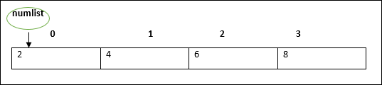</p>

<p>索引值第一个为 0，我们可以根据索引值来访问数组元素：</p>
<h3>TypeScript</h3><span class="hl-reserved">var</span><span class="hl-code"> </span><span class="hl-identifier">sites</span><span class="hl-code">:</span><span class="hl-identifier">string</span><span class="hl-brackets">[</span><span class="hl-brackets">]</span><span class="hl-code">; 
</span><span class="hl-identifier">sites</span><span class="hl-code"> = </span><span class="hl-brackets">[</span><span class="hl-quotes">"</span><span class="hl-string">Google</span><span class="hl-quotes">"</span><span class="hl-code">,</span><span class="hl-quotes">"</span><span class="hl-string">Runoob</span><span class="hl-quotes">"</span><span class="hl-code">,</span><span class="hl-quotes">"</span><span class="hl-string">Taobao</span><span class="hl-quotes">"</span><span class="hl-brackets">]</span><span class="hl-code"> 
</span><span class="hl-identifier">console</span><span class="hl-code">.</span><span class="hl-identifier">log</span><span class="hl-brackets">(</span><span class="hl-identifier">sites</span><span class="hl-brackets">[</span><span class="hl-number">0</span><span class="hl-brackets">]</span><span class="hl-brackets">)</span><span class="hl-code">; 
</span><span class="hl-identifier">console</span><span class="hl-code">.</span><span class="hl-identifier">log</span><span class="hl-brackets">(</span><span class="hl-identifier">sites</span><span class="hl-brackets">[</span><span class="hl-number">1</span><span class="hl-brackets">]</span><span class="hl-brackets">)</span><span class="hl-code">;</span>

<p>编译以上代码，得到以下 JavaScript 代码：</p>

<h3>JavaScript</h3><span class="hl-reserved">var</span><span class="hl-code"> </span><span class="hl-identifier">sites</span><span class="hl-code">;
</span><span class="hl-identifier">sites</span><span class="hl-code"> = </span><span class="hl-brackets">[</span><span class="hl-quotes">"</span><span class="hl-string">Google</span><span class="hl-quotes">"</span><span class="hl-code">, </span><span class="hl-quotes">"</span><span class="hl-string">Runoob</span><span class="hl-quotes">"</span><span class="hl-code">, </span><span class="hl-quotes">"</span><span class="hl-string">Taobao</span><span class="hl-quotes">"</span><span class="hl-brackets">]</span><span class="hl-code">;
</span><span class="hl-identifier">console</span><span class="hl-code">.</span><span class="hl-identifier">log</span><span class="hl-brackets">(</span><span class="hl-identifier">sites</span><span class="hl-brackets">[</span><span class="hl-number">0</span><span class="hl-brackets">]</span><span class="hl-brackets">)</span><span class="hl-code">;
</span><span class="hl-identifier">console</span><span class="hl-code">.</span><span class="hl-identifier">log</span><span class="hl-brackets">(</span><span class="hl-identifier">sites</span><span class="hl-brackets">[</span><span class="hl-number">1</span><span class="hl-brackets">]</span><span class="hl-brackets">)</span><span class="hl-code">;</span>
<p>输出结果为：</p>

<pre>Google
Runoob</pre>

<p>以下实例我们在声明时直接初始化：</p>
<h3>TypeScript</h3><span class="hl-reserved">var</span><span class="hl-code"> </span><span class="hl-identifier">nums</span><span class="hl-code">:</span><span class="hl-identifier">number</span><span class="hl-brackets">[</span><span class="hl-brackets">]</span><span class="hl-code"> = </span><span class="hl-brackets">[</span><span class="hl-number">1</span><span class="hl-code">,</span><span class="hl-number">2</span><span class="hl-code">,</span><span class="hl-number">3</span><span class="hl-code">,</span><span class="hl-number">4</span><span class="hl-brackets">]</span><span class="hl-code"> 
</span><span class="hl-identifier">console</span><span class="hl-code">.</span><span class="hl-identifier">log</span><span class="hl-brackets">(</span><span class="hl-identifier">nums</span><span class="hl-brackets">[</span><span class="hl-number">0</span><span class="hl-brackets">]</span><span class="hl-brackets">)</span><span class="hl-code">; 
</span><span class="hl-identifier">console</span><span class="hl-code">.</span><span class="hl-identifier">log</span><span class="hl-brackets">(</span><span class="hl-identifier">nums</span><span class="hl-brackets">[</span><span class="hl-number">1</span><span class="hl-brackets">]</span><span class="hl-brackets">)</span><span class="hl-code">; 
</span><span class="hl-identifier">console</span><span class="hl-code">.</span><span class="hl-identifier">log</span><span class="hl-brackets">(</span><span class="hl-identifier">nums</span><span class="hl-brackets">[</span><span class="hl-number">2</span><span class="hl-brackets">]</span><span class="hl-brackets">)</span><span class="hl-code">; 
</span><span class="hl-identifier">console</span><span class="hl-code">.</span><span class="hl-identifier">log</span><span class="hl-brackets">(</span><span class="hl-identifier">nums</span><span class="hl-brackets">[</span><span class="hl-number">3</span><span class="hl-brackets">]</span><span class="hl-brackets">)</span><span class="hl-code">;</span>

<p>编译以上代码，得到以下 JavaScript 代码：</p>

<h3>JavaScript</h3><span class="hl-reserved">var</span><span class="hl-code"> </span><span class="hl-identifier">nums</span><span class="hl-code"> = </span><span class="hl-brackets">[</span><span class="hl-number">1</span><span class="hl-code">, </span><span class="hl-number">2</span><span class="hl-code">, </span><span class="hl-number">3</span><span class="hl-code">, </span><span class="hl-number">4</span><span class="hl-brackets">]</span><span class="hl-code">;
</span><span class="hl-identifier">console</span><span class="hl-code">.</span><span class="hl-identifier">log</span><span class="hl-brackets">(</span><span class="hl-identifier">nums</span><span class="hl-brackets">[</span><span class="hl-number">0</span><span class="hl-brackets">]</span><span class="hl-brackets">)</span><span class="hl-code">;
</span><span class="hl-identifier">console</span><span class="hl-code">.</span><span class="hl-identifier">log</span><span class="hl-brackets">(</span><span class="hl-identifier">nums</span><span class="hl-brackets">[</span><span class="hl-number">1</span><span class="hl-brackets">]</span><span class="hl-brackets">)</span><span class="hl-code">;
</span><span class="hl-identifier">console</span><span class="hl-code">.</span><span class="hl-identifier">log</span><span class="hl-brackets">(</span><span class="hl-identifier">nums</span><span class="hl-brackets">[</span><span class="hl-number">2</span><span class="hl-brackets">]</span><span class="hl-brackets">)</span><span class="hl-code">;
</span><span class="hl-identifier">console</span><span class="hl-code">.</span><span class="hl-identifier">log</span><span class="hl-brackets">(</span><span class="hl-identifier">nums</span><span class="hl-brackets">[</span><span class="hl-number">3</span><span class="hl-brackets">]</span><span class="hl-brackets">)</span><span class="hl-code">;</span>
<p>输出结果为：</p>

<pre>1 
2 
3 
4 </pre>

<hr>
<h3>Array 对象</h3>
<p>我们也可以使用 Array 对象创建数组。 </p>
<p>Array 对象的构造函数接受以下两种值：</p>
<ul>
	<li>
表示数组大小的数值。</li>
	<li>

初始化的数组列表，元素使用逗号分隔值。</li>
</ul>

<h4>实例</h4>
<p>指定数组初始化大小：</p>
<h3>TypeScript</h3><span class="hl-reserved">var</span><span class="hl-code"> </span><span class="hl-identifier">arr_names</span><span class="hl-code">:</span><span class="hl-identifier">number</span><span class="hl-brackets">[</span><span class="hl-brackets">]</span><span class="hl-code"> = </span><span class="hl-reserved">new</span><span class="hl-code"> </span><span class="hl-builtin">Array</span><span class="hl-brackets">(</span><span class="hl-number">4</span><span class="hl-brackets">)</span><span class="hl-code">  
 
</span><span class="hl-reserved">for</span><span class="hl-brackets">(</span><span class="hl-reserved">var</span><span class="hl-code"> </span><span class="hl-identifier">i</span><span class="hl-code"> = </span><span class="hl-number">0</span><span class="hl-code">; </span><span class="hl-identifier">i</span><span class="hl-code">&lt;</span><span class="hl-identifier">arr_names</span><span class="hl-code">.</span><span class="hl-identifier">length</span><span class="hl-code">; </span><span class="hl-identifier">i</span><span class="hl-code">++</span><span class="hl-brackets">)</span><span class="hl-code"> </span><span class="hl-brackets">{</span><span class="hl-code"> 
        </span><span class="hl-identifier">arr_names</span><span class="hl-brackets">[</span><span class="hl-identifier">i</span><span class="hl-brackets">]</span><span class="hl-code"> = </span><span class="hl-identifier">i</span><span class="hl-code"> * </span><span class="hl-number">2</span><span class="hl-code"> 
        </span><span class="hl-identifier">console</span><span class="hl-code">.</span><span class="hl-identifier">log</span><span class="hl-brackets">(</span><span class="hl-identifier">arr_names</span><span class="hl-brackets">[</span><span class="hl-identifier">i</span><span class="hl-brackets">]</span><span class="hl-brackets">)</span><span class="hl-code"> 
</span><span class="hl-brackets">}</span>

<p>编译以上代码，得到以下 JavaScript 代码：</p>

<h3>JavaScript</h3><span class="hl-reserved">var</span><span class="hl-code"> </span><span class="hl-identifier">arr_names</span><span class="hl-code"> = </span><span class="hl-reserved">new</span><span class="hl-code"> </span><span class="hl-builtin">Array</span><span class="hl-brackets">(</span><span class="hl-number">4</span><span class="hl-brackets">)</span><span class="hl-code">;
</span><span class="hl-reserved">for</span><span class="hl-code"> </span><span class="hl-brackets">(</span><span class="hl-reserved">var</span><span class="hl-code"> </span><span class="hl-identifier">i</span><span class="hl-code"> = </span><span class="hl-number">0</span><span class="hl-code">; </span><span class="hl-identifier">i</span><span class="hl-code"> &lt; </span><span class="hl-identifier">arr_names</span><span class="hl-code">.</span><span class="hl-identifier">length</span><span class="hl-code">; </span><span class="hl-identifier">i</span><span class="hl-code">++</span><span class="hl-brackets">)</span><span class="hl-code"> </span><span class="hl-brackets">{</span><span class="hl-code">
        </span><span class="hl-identifier">arr_names</span><span class="hl-brackets">[</span><span class="hl-identifier">i</span><span class="hl-brackets">]</span><span class="hl-code"> = </span><span class="hl-identifier">i</span><span class="hl-code"> * </span><span class="hl-number">2</span><span class="hl-code">;
        </span><span class="hl-identifier">console</span><span class="hl-code">.</span><span class="hl-identifier">log</span><span class="hl-brackets">(</span><span class="hl-identifier">arr_names</span><span class="hl-brackets">[</span><span class="hl-identifier">i</span><span class="hl-brackets">]</span><span class="hl-brackets">)</span><span class="hl-code">;
</span><span class="hl-brackets">}</span>
<p>输出结果为：</p>
<pre>0
2
4
6</pre>

<p>以下实例我们直接初始化数组元素：</p>
<h3>TypeScript</h3><span class="hl-reserved">var</span><span class="hl-code"> </span><span class="hl-identifier">sites</span><span class="hl-code">:</span><span class="hl-identifier">string</span><span class="hl-brackets">[</span><span class="hl-brackets">]</span><span class="hl-code"> = </span><span class="hl-reserved">new</span><span class="hl-code"> </span><span class="hl-builtin">Array</span><span class="hl-brackets">(</span><span class="hl-quotes">"</span><span class="hl-string">Google</span><span class="hl-quotes">"</span><span class="hl-code">,</span><span class="hl-quotes">"</span><span class="hl-string">Runoob</span><span class="hl-quotes">"</span><span class="hl-code">,</span><span class="hl-quotes">"</span><span class="hl-string">Taobao</span><span class="hl-quotes">"</span><span class="hl-code">,</span><span class="hl-quotes">"</span><span class="hl-string">Facebook</span><span class="hl-quotes">"</span><span class="hl-brackets">)</span><span class="hl-code"> 
 
</span><span class="hl-reserved">for</span><span class="hl-brackets">(</span><span class="hl-reserved">var</span><span class="hl-code"> </span><span class="hl-identifier">i</span><span class="hl-code"> = </span><span class="hl-number">0</span><span class="hl-code">;</span><span class="hl-identifier">i</span><span class="hl-code">&lt;</span><span class="hl-identifier">sites</span><span class="hl-code">.</span><span class="hl-identifier">length</span><span class="hl-code">;</span><span class="hl-identifier">i</span><span class="hl-code">++</span><span class="hl-brackets">)</span><span class="hl-code"> </span><span class="hl-brackets">{</span><span class="hl-code"> 
        </span><span class="hl-identifier">console</span><span class="hl-code">.</span><span class="hl-identifier">log</span><span class="hl-brackets">(</span><span class="hl-identifier">sites</span><span class="hl-brackets">[</span><span class="hl-identifier">i</span><span class="hl-brackets">]</span><span class="hl-brackets">)</span><span class="hl-code"> 
</span><span class="hl-brackets">}</span>

<p>编译以上代码，得到以下 JavaScript 代码：</p>

<h3>JavaScript</h3><span class="hl-reserved">var</span><span class="hl-code"> </span><span class="hl-identifier">sites</span><span class="hl-code"> = </span><span class="hl-reserved">new</span><span class="hl-code"> </span><span class="hl-builtin">Array</span><span class="hl-brackets">(</span><span class="hl-quotes">"</span><span class="hl-string">Google</span><span class="hl-quotes">"</span><span class="hl-code">, </span><span class="hl-quotes">"</span><span class="hl-string">Runoob</span><span class="hl-quotes">"</span><span class="hl-code">, </span><span class="hl-quotes">"</span><span class="hl-string">Taobao</span><span class="hl-quotes">"</span><span class="hl-code">, </span><span class="hl-quotes">"</span><span class="hl-string">Facebook</span><span class="hl-quotes">"</span><span class="hl-brackets">)</span><span class="hl-code">;
</span><span class="hl-reserved">for</span><span class="hl-code"> </span><span class="hl-brackets">(</span><span class="hl-reserved">var</span><span class="hl-code"> </span><span class="hl-identifier">i</span><span class="hl-code"> = </span><span class="hl-number">0</span><span class="hl-code">; </span><span class="hl-identifier">i</span><span class="hl-code"> &lt; </span><span class="hl-identifier">sites</span><span class="hl-code">.</span><span class="hl-identifier">length</span><span class="hl-code">; </span><span class="hl-identifier">i</span><span class="hl-code">++</span><span class="hl-brackets">)</span><span class="hl-code"> </span><span class="hl-brackets">{</span><span class="hl-code">
        </span><span class="hl-identifier">console</span><span class="hl-code">.</span><span class="hl-identifier">log</span><span class="hl-brackets">(</span><span class="hl-identifier">sites</span><span class="hl-brackets">[</span><span class="hl-identifier">i</span><span class="hl-brackets">]</span><span class="hl-brackets">)</span><span class="hl-code">;
</span><span class="hl-brackets">}</span>
<p>输出结果为：</p>
<pre>Google
Runoob
Taobao
Facebook</pre>

<hr>
<h3>数组解构</h3>
<p>我们也可以把数组元素赋值给变量，如下所示：</p>

<h3>TypeScript</h3><span class="hl-reserved">var</span><span class="hl-code"> </span><span class="hl-identifier">arr</span><span class="hl-code">:</span><span class="hl-identifier">number</span><span class="hl-brackets">[</span><span class="hl-brackets">]</span><span class="hl-code"> = </span><span class="hl-brackets">[</span><span class="hl-number">12</span><span class="hl-code">,</span><span class="hl-number">13</span><span class="hl-brackets">]</span><span class="hl-code"> 
</span><span class="hl-reserved">var</span><span class="hl-brackets">[</span><span class="hl-identifier">x</span><span class="hl-code">,</span><span class="hl-identifier">y</span><span class="hl-brackets">]</span><span class="hl-code"> = </span><span class="hl-identifier">arr</span><span class="hl-code"> </span><span class="hl-comment">//</span><span class="hl-comment"> 将数组的两个元素赋值给变量 x 和 y</span><span class="hl-comment"></span><span class="hl-code">
</span><span class="hl-identifier">console</span><span class="hl-code">.</span><span class="hl-identifier">log</span><span class="hl-brackets">(</span><span class="hl-identifier">x</span><span class="hl-brackets">)</span><span class="hl-code"> 
</span><span class="hl-identifier">console</span><span class="hl-code">.</span><span class="hl-identifier">log</span><span class="hl-brackets">(</span><span class="hl-identifier">y</span><span class="hl-brackets">)</span>

<p>编译以上代码，得到以下 JavaScript 代码：</p>

<h3>JavaScript</h3><span class="hl-reserved">var</span><span class="hl-code"> </span><span class="hl-identifier">arr</span><span class="hl-code"> = </span><span class="hl-brackets">[</span><span class="hl-number">12</span><span class="hl-code">, </span><span class="hl-number">13</span><span class="hl-brackets">]</span><span class="hl-code">;
</span><span class="hl-reserved">var</span><span class="hl-code"> </span><span class="hl-identifier">x</span><span class="hl-code"> = </span><span class="hl-identifier">arr</span><span class="hl-brackets">[</span><span class="hl-number">0</span><span class="hl-brackets">]</span><span class="hl-code">, </span><span class="hl-identifier">y</span><span class="hl-code"> = </span><span class="hl-identifier">arr</span><span class="hl-brackets">[</span><span class="hl-number">1</span><span class="hl-brackets">]</span><span class="hl-code">; </span><span class="hl-comment">//</span><span class="hl-comment"> 将数组的两个元素赋值给变量 x 和 y</span><span class="hl-comment"></span><span class="hl-code">
</span><span class="hl-identifier">console</span><span class="hl-code">.</span><span class="hl-identifier">log</span><span class="hl-brackets">(</span><span class="hl-identifier">x</span><span class="hl-brackets">)</span><span class="hl-code">;
</span><span class="hl-identifier">console</span><span class="hl-code">.</span><span class="hl-identifier">log</span><span class="hl-brackets">(</span><span class="hl-identifier">y</span><span class="hl-brackets">)</span><span class="hl-code">;</span>
<p>输出结果为：</p>
<pre>12
13</pre>
<hr>
<h3>数组迭代</h3>
<p>我们可以使用 for 语句来循环输出数组的各个元素：</p>
<h3>TypeScript</h3><span class="hl-reserved">var</span><span class="hl-code"> </span><span class="hl-identifier">j</span><span class="hl-code">:</span><span class="hl-identifier">any</span><span class="hl-code">; 
</span><span class="hl-reserved">var</span><span class="hl-code"> </span><span class="hl-identifier">nums</span><span class="hl-code">:</span><span class="hl-identifier">number</span><span class="hl-brackets">[</span><span class="hl-brackets">]</span><span class="hl-code"> = </span><span class="hl-brackets">[</span><span class="hl-number">1001</span><span class="hl-code">,</span><span class="hl-number">1002</span><span class="hl-code">,</span><span class="hl-number">1003</span><span class="hl-code">,</span><span class="hl-number">1004</span><span class="hl-brackets">]</span><span class="hl-code"> 
 
</span><span class="hl-reserved">for</span><span class="hl-brackets">(</span><span class="hl-identifier">j</span><span class="hl-code"> </span><span class="hl-reserved">in</span><span class="hl-code"> </span><span class="hl-identifier">nums</span><span class="hl-brackets">)</span><span class="hl-code"> </span><span class="hl-brackets">{</span><span class="hl-code"> 
    </span><span class="hl-identifier">console</span><span class="hl-code">.</span><span class="hl-identifier">log</span><span class="hl-brackets">(</span><span class="hl-identifier">nums</span><span class="hl-brackets">[</span><span class="hl-identifier">j</span><span class="hl-brackets">]</span><span class="hl-brackets">)</span><span class="hl-code"> 
</span><span class="hl-brackets">}</span>

<p>编译以上代码，得到以下 JavaScript 代码：</p>

<h3>JavaScript</h3><span class="hl-reserved">var</span><span class="hl-code"> </span><span class="hl-identifier">j</span><span class="hl-code">;
</span><span class="hl-reserved">var</span><span class="hl-code"> </span><span class="hl-identifier">nums</span><span class="hl-code"> = </span><span class="hl-brackets">[</span><span class="hl-number">1001</span><span class="hl-code">, </span><span class="hl-number">1002</span><span class="hl-code">, </span><span class="hl-number">1003</span><span class="hl-code">, </span><span class="hl-number">1004</span><span class="hl-brackets">]</span><span class="hl-code">;
</span><span class="hl-reserved">for</span><span class="hl-code"> </span><span class="hl-brackets">(</span><span class="hl-identifier">j</span><span class="hl-code"> </span><span class="hl-reserved">in</span><span class="hl-code"> </span><span class="hl-identifier">nums</span><span class="hl-brackets">)</span><span class="hl-code"> </span><span class="hl-brackets">{</span><span class="hl-code">
    </span><span class="hl-identifier">console</span><span class="hl-code">.</span><span class="hl-identifier">log</span><span class="hl-brackets">(</span><span class="hl-identifier">nums</span><span class="hl-brackets">[</span><span class="hl-identifier">j</span><span class="hl-brackets">]</span><span class="hl-brackets">)</span><span class="hl-code">;
</span><span class="hl-brackets">}</span>
<p>输出结果为：</p>
<pre>1001
1002
1003
1004</pre>

<hr>
<h3>多维数组</h3>
<p>一个数组的元素可以是另外一个数组，这样就构成了多维数组（Multi-dimensional Array）。</p>
<p>最简单的多维数组是二维数组，定义方式如下：</p>
<pre>var arr_name:datatype[][]=[ [val1,val2,val3],[v1,v2,v3] ]</pre>

<h4>实例</h4>
<p>定义一个二维数组，每一个维度的数组有三个元素。</p>

<p>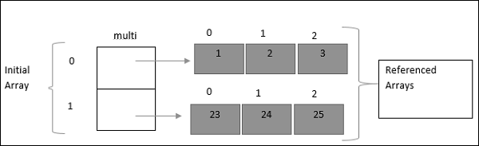</p>
<h3>TypeScript</h3><span class="hl-reserved">var</span><span class="hl-code"> </span><span class="hl-identifier">multi</span><span class="hl-code">:</span><span class="hl-identifier">number</span><span class="hl-brackets">[</span><span class="hl-brackets">]</span><span class="hl-brackets">[</span><span class="hl-brackets">]</span><span class="hl-code"> = </span><span class="hl-brackets">[</span><span class="hl-brackets">[</span><span class="hl-number">1</span><span class="hl-code">,</span><span class="hl-number">2</span><span class="hl-code">,</span><span class="hl-number">3</span><span class="hl-brackets">]</span><span class="hl-code">,</span><span class="hl-brackets">[</span><span class="hl-number">23</span><span class="hl-code">,</span><span class="hl-number">24</span><span class="hl-code">,</span><span class="hl-number">25</span><span class="hl-brackets">]</span><span class="hl-brackets">]</span><span class="hl-code">  
</span><span class="hl-identifier">console</span><span class="hl-code">.</span><span class="hl-identifier">log</span><span class="hl-brackets">(</span><span class="hl-identifier">multi</span><span class="hl-brackets">[</span><span class="hl-number">0</span><span class="hl-brackets">]</span><span class="hl-brackets">[</span><span class="hl-number">0</span><span class="hl-brackets">]</span><span class="hl-brackets">)</span><span class="hl-code"> 
</span><span class="hl-identifier">console</span><span class="hl-code">.</span><span class="hl-identifier">log</span><span class="hl-brackets">(</span><span class="hl-identifier">multi</span><span class="hl-brackets">[</span><span class="hl-number">0</span><span class="hl-brackets">]</span><span class="hl-brackets">[</span><span class="hl-number">1</span><span class="hl-brackets">]</span><span class="hl-brackets">)</span><span class="hl-code"> 
</span><span class="hl-identifier">console</span><span class="hl-code">.</span><span class="hl-identifier">log</span><span class="hl-brackets">(</span><span class="hl-identifier">multi</span><span class="hl-brackets">[</span><span class="hl-number">0</span><span class="hl-brackets">]</span><span class="hl-brackets">[</span><span class="hl-number">2</span><span class="hl-brackets">]</span><span class="hl-brackets">)</span><span class="hl-code"> 
</span><span class="hl-identifier">console</span><span class="hl-code">.</span><span class="hl-identifier">log</span><span class="hl-brackets">(</span><span class="hl-identifier">multi</span><span class="hl-brackets">[</span><span class="hl-number">1</span><span class="hl-brackets">]</span><span class="hl-brackets">[</span><span class="hl-number">0</span><span class="hl-brackets">]</span><span class="hl-brackets">)</span><span class="hl-code"> 
</span><span class="hl-identifier">console</span><span class="hl-code">.</span><span class="hl-identifier">log</span><span class="hl-brackets">(</span><span class="hl-identifier">multi</span><span class="hl-brackets">[</span><span class="hl-number">1</span><span class="hl-brackets">]</span><span class="hl-brackets">[</span><span class="hl-number">1</span><span class="hl-brackets">]</span><span class="hl-brackets">)</span><span class="hl-code"> 
</span><span class="hl-identifier">console</span><span class="hl-code">.</span><span class="hl-identifier">log</span><span class="hl-brackets">(</span><span class="hl-identifier">multi</span><span class="hl-brackets">[</span><span class="hl-number">1</span><span class="hl-brackets">]</span><span class="hl-brackets">[</span><span class="hl-number">2</span><span class="hl-brackets">]</span><span class="hl-brackets">)</span>

<p>编译以上代码，得到以下 JavaScript 代码：</p>

<h3>JavaScript</h3><span class="hl-reserved">var</span><span class="hl-code"> </span><span class="hl-identifier">multi</span><span class="hl-code"> = </span><span class="hl-brackets">[</span><span class="hl-brackets">[</span><span class="hl-number">1</span><span class="hl-code">, </span><span class="hl-number">2</span><span class="hl-code">, </span><span class="hl-number">3</span><span class="hl-brackets">]</span><span class="hl-code">, </span><span class="hl-brackets">[</span><span class="hl-number">23</span><span class="hl-code">, </span><span class="hl-number">24</span><span class="hl-code">, </span><span class="hl-number">25</span><span class="hl-brackets">]</span><span class="hl-brackets">]</span><span class="hl-code">;
</span><span class="hl-identifier">console</span><span class="hl-code">.</span><span class="hl-identifier">log</span><span class="hl-brackets">(</span><span class="hl-identifier">multi</span><span class="hl-brackets">[</span><span class="hl-number">0</span><span class="hl-brackets">]</span><span class="hl-brackets">[</span><span class="hl-number">0</span><span class="hl-brackets">]</span><span class="hl-brackets">)</span><span class="hl-code">;
</span><span class="hl-identifier">console</span><span class="hl-code">.</span><span class="hl-identifier">log</span><span class="hl-brackets">(</span><span class="hl-identifier">multi</span><span class="hl-brackets">[</span><span class="hl-number">0</span><span class="hl-brackets">]</span><span class="hl-brackets">[</span><span class="hl-number">1</span><span class="hl-brackets">]</span><span class="hl-brackets">)</span><span class="hl-code">;
</span><span class="hl-identifier">console</span><span class="hl-code">.</span><span class="hl-identifier">log</span><span class="hl-brackets">(</span><span class="hl-identifier">multi</span><span class="hl-brackets">[</span><span class="hl-number">0</span><span class="hl-brackets">]</span><span class="hl-brackets">[</span><span class="hl-number">2</span><span class="hl-brackets">]</span><span class="hl-brackets">)</span><span class="hl-code">;
</span><span class="hl-identifier">console</span><span class="hl-code">.</span><span class="hl-identifier">log</span><span class="hl-brackets">(</span><span class="hl-identifier">multi</span><span class="hl-brackets">[</span><span class="hl-number">1</span><span class="hl-brackets">]</span><span class="hl-brackets">[</span><span class="hl-number">0</span><span class="hl-brackets">]</span><span class="hl-brackets">)</span><span class="hl-code">;
</span><span class="hl-identifier">console</span><span class="hl-code">.</span><span class="hl-identifier">log</span><span class="hl-brackets">(</span><span class="hl-identifier">multi</span><span class="hl-brackets">[</span><span class="hl-number">1</span><span class="hl-brackets">]</span><span class="hl-brackets">[</span><span class="hl-number">1</span><span class="hl-brackets">]</span><span class="hl-brackets">)</span><span class="hl-code">;
</span><span class="hl-identifier">console</span><span class="hl-code">.</span><span class="hl-identifier">log</span><span class="hl-brackets">(</span><span class="hl-identifier">multi</span><span class="hl-brackets">[</span><span class="hl-number">1</span><span class="hl-brackets">]</span><span class="hl-brackets">[</span><span class="hl-number">2</span><span class="hl-brackets">]</span><span class="hl-brackets">)</span><span class="hl-code">;</span>
<p>输出结果为：</p>
<pre>1
2
3
23
24
25</pre>
<hr>
<h3>数组在函数中的使用</h3>
<h4>作为参数传递给函数</h4>
<h3>TypeScript</h3><span class="hl-reserved">var</span><span class="hl-code"> </span><span class="hl-identifier">sites</span><span class="hl-code">:</span><span class="hl-identifier">string</span><span class="hl-brackets">[</span><span class="hl-brackets">]</span><span class="hl-code"> = </span><span class="hl-reserved">new</span><span class="hl-code"> </span><span class="hl-builtin">Array</span><span class="hl-brackets">(</span><span class="hl-quotes">"</span><span class="hl-string">Google</span><span class="hl-quotes">"</span><span class="hl-code">,</span><span class="hl-quotes">"</span><span class="hl-string">Runoob</span><span class="hl-quotes">"</span><span class="hl-code">,</span><span class="hl-quotes">"</span><span class="hl-string">Taobao</span><span class="hl-quotes">"</span><span class="hl-code">,</span><span class="hl-quotes">"</span><span class="hl-string">Facebook</span><span class="hl-quotes">"</span><span class="hl-brackets">)</span><span class="hl-code"> 
 
</span><span class="hl-reserved">function</span><span class="hl-code"> </span><span class="hl-identifier">disp</span><span class="hl-brackets">(</span><span class="hl-identifier">arr_sites</span><span class="hl-code">:</span><span class="hl-identifier">string</span><span class="hl-brackets">[</span><span class="hl-brackets">]</span><span class="hl-brackets">)</span><span class="hl-code"> </span><span class="hl-brackets">{</span><span class="hl-code">
        </span><span class="hl-reserved">for</span><span class="hl-brackets">(</span><span class="hl-reserved">var</span><span class="hl-code"> </span><span class="hl-identifier">i</span><span class="hl-code"> = </span><span class="hl-number">0</span><span class="hl-code">;</span><span class="hl-identifier">i</span><span class="hl-code">&lt;</span><span class="hl-identifier">arr_sites</span><span class="hl-code">.</span><span class="hl-identifier">length</span><span class="hl-code">;</span><span class="hl-identifier">i</span><span class="hl-code">++</span><span class="hl-brackets">)</span><span class="hl-code"> </span><span class="hl-brackets">{</span><span class="hl-code"> 
                </span><span class="hl-identifier">console</span><span class="hl-code">.</span><span class="hl-identifier">log</span><span class="hl-brackets">(</span><span class="hl-identifier">arr_sites</span><span class="hl-brackets">[</span><span class="hl-identifier">i</span><span class="hl-brackets">]</span><span class="hl-brackets">)</span><span class="hl-code"> 
        </span><span class="hl-brackets">}</span><span class="hl-code">  
</span><span class="hl-brackets">}</span><span class="hl-code">  
</span><span class="hl-identifier">disp</span><span class="hl-brackets">(</span><span class="hl-identifier">sites</span><span class="hl-brackets">)</span><span class="hl-code">;</span>

<p>编译以上代码，得到以下 JavaScript 代码：</p>

<h3>JavaScript</h3><span class="hl-reserved">var</span><span class="hl-code"> </span><span class="hl-identifier">sites</span><span class="hl-code"> = </span><span class="hl-reserved">new</span><span class="hl-code"> </span><span class="hl-builtin">Array</span><span class="hl-brackets">(</span><span class="hl-quotes">"</span><span class="hl-string">Google</span><span class="hl-quotes">"</span><span class="hl-code">, </span><span class="hl-quotes">"</span><span class="hl-string">Runoob</span><span class="hl-quotes">"</span><span class="hl-code">, </span><span class="hl-quotes">"</span><span class="hl-string">Taobao</span><span class="hl-quotes">"</span><span class="hl-code">, </span><span class="hl-quotes">"</span><span class="hl-string">Facebook</span><span class="hl-quotes">"</span><span class="hl-brackets">)</span><span class="hl-code">;
</span><span class="hl-reserved">function</span><span class="hl-code"> </span><span class="hl-identifier">disp</span><span class="hl-brackets">(</span><span class="hl-identifier">arr_sites</span><span class="hl-brackets">)</span><span class="hl-code"> </span><span class="hl-brackets">{</span><span class="hl-code">
        </span><span class="hl-reserved">for</span><span class="hl-code"> </span><span class="hl-brackets">(</span><span class="hl-reserved">var</span><span class="hl-code"> </span><span class="hl-identifier">i</span><span class="hl-code"> = </span><span class="hl-number">0</span><span class="hl-code">; </span><span class="hl-identifier">i</span><span class="hl-code"> &lt; </span><span class="hl-identifier">arr_sites</span><span class="hl-code">.</span><span class="hl-identifier">length</span><span class="hl-code">; </span><span class="hl-identifier">i</span><span class="hl-code">++</span><span class="hl-brackets">)</span><span class="hl-code"> </span><span class="hl-brackets">{</span><span class="hl-code">
                </span><span class="hl-identifier">console</span><span class="hl-code">.</span><span class="hl-identifier">log</span><span class="hl-brackets">(</span><span class="hl-identifier">arr_sites</span><span class="hl-brackets">[</span><span class="hl-identifier">i</span><span class="hl-brackets">]</span><span class="hl-brackets">)</span><span class="hl-code">;
        </span><span class="hl-brackets">}</span><span class="hl-code">
</span><span class="hl-brackets">}</span><span class="hl-code">
</span><span class="hl-identifier">disp</span><span class="hl-brackets">(</span><span class="hl-identifier">sites</span><span class="hl-brackets">)</span><span class="hl-code">;</span>
<p>输出结果为：</p>
<pre>Google
Runoob
Taobao
Facebook</pre>

<h4>作为函数的返回值</h4>
<h3>TypeScript</h3><span class="hl-reserved">function</span><span class="hl-code"> </span><span class="hl-identifier">disp</span><span class="hl-brackets">(</span><span class="hl-brackets">)</span><span class="hl-code">:</span><span class="hl-identifier">string</span><span class="hl-brackets">[</span><span class="hl-brackets">]</span><span class="hl-code"> </span><span class="hl-brackets">{</span><span class="hl-code"> 
        </span><span class="hl-reserved">return</span><span class="hl-code"> </span><span class="hl-reserved">new</span><span class="hl-code"> </span><span class="hl-builtin">Array</span><span class="hl-brackets">(</span><span class="hl-quotes">"</span><span class="hl-string">Google</span><span class="hl-quotes">"</span><span class="hl-code">, </span><span class="hl-quotes">"</span><span class="hl-string">Runoob</span><span class="hl-quotes">"</span><span class="hl-code">, </span><span class="hl-quotes">"</span><span class="hl-string">Taobao</span><span class="hl-quotes">"</span><span class="hl-code">, </span><span class="hl-quotes">"</span><span class="hl-string">Facebook</span><span class="hl-quotes">"</span><span class="hl-brackets">)</span><span class="hl-code">;
</span><span class="hl-brackets">}</span><span class="hl-code"> 
 
</span><span class="hl-reserved">var</span><span class="hl-code"> </span><span class="hl-identifier">sites</span><span class="hl-code">:</span><span class="hl-identifier">string</span><span class="hl-brackets">[</span><span class="hl-brackets">]</span><span class="hl-code"> = </span><span class="hl-identifier">disp</span><span class="hl-brackets">(</span><span class="hl-brackets">)</span><span class="hl-code"> 
</span><span class="hl-reserved">for</span><span class="hl-brackets">(</span><span class="hl-reserved">var</span><span class="hl-code"> </span><span class="hl-identifier">i</span><span class="hl-code"> </span><span class="hl-reserved">in</span><span class="hl-code"> </span><span class="hl-identifier">sites</span><span class="hl-brackets">)</span><span class="hl-code"> </span><span class="hl-brackets">{</span><span class="hl-code"> 
        </span><span class="hl-identifier">console</span><span class="hl-code">.</span><span class="hl-identifier">log</span><span class="hl-brackets">(</span><span class="hl-identifier">sites</span><span class="hl-brackets">[</span><span class="hl-identifier">i</span><span class="hl-brackets">]</span><span class="hl-brackets">)</span><span class="hl-code"> 
</span><span class="hl-brackets">}</span>

<p>编译以上代码，得到以下 JavaScript 代码：</p>

<h3>JavaScript</h3><span class="hl-reserved">function</span><span class="hl-code"> </span><span class="hl-identifier">disp</span><span class="hl-brackets">(</span><span class="hl-brackets">)</span><span class="hl-code"> </span><span class="hl-brackets">{</span><span class="hl-code">
        </span><span class="hl-reserved">return</span><span class="hl-code"> </span><span class="hl-reserved">new</span><span class="hl-code"> </span><span class="hl-builtin">Array</span><span class="hl-brackets">(</span><span class="hl-quotes">"</span><span class="hl-string">Google</span><span class="hl-quotes">"</span><span class="hl-code">, </span><span class="hl-quotes">"</span><span class="hl-string">Runoob</span><span class="hl-quotes">"</span><span class="hl-code">, </span><span class="hl-quotes">"</span><span class="hl-string">Taobao</span><span class="hl-quotes">"</span><span class="hl-code">, </span><span class="hl-quotes">"</span><span class="hl-string">Facebook</span><span class="hl-quotes">"</span><span class="hl-brackets">)</span><span class="hl-code">;
</span><span class="hl-brackets">}</span><span class="hl-code">
</span><span class="hl-reserved">var</span><span class="hl-code"> </span><span class="hl-identifier">sites</span><span class="hl-code"> = </span><span class="hl-identifier">disp</span><span class="hl-brackets">(</span><span class="hl-brackets">)</span><span class="hl-code">;
</span><span class="hl-reserved">for</span><span class="hl-code"> </span><span class="hl-brackets">(</span><span class="hl-reserved">var</span><span class="hl-code"> </span><span class="hl-identifier">i</span><span class="hl-code"> </span><span class="hl-reserved">in</span><span class="hl-code"> </span><span class="hl-identifier">sites</span><span class="hl-brackets">)</span><span class="hl-code"> </span><span class="hl-brackets">{</span><span class="hl-code">
        </span><span class="hl-identifier">console</span><span class="hl-code">.</span><span class="hl-identifier">log</span><span class="hl-brackets">(</span><span class="hl-identifier">sites</span><span class="hl-brackets">[</span><span class="hl-identifier">i</span><span class="hl-brackets">]</span><span class="hl-brackets">)</span><span class="hl-code">;
</span><span class="hl-brackets">}</span>
<p>输出结果为：</p>
<pre>Google
Runoob
Taobao
Facebook</pre>

<hr>
<h3>数组方法</h3>
<p>下表列出了一些常用的数组方法：</p>

<table>
<tbody><tr>
<th>序号</th>
<th>方法 &amp; 描述</th>
<th>实例</th>
</tr>
<tr>
<td>1.</td>
<td>concat()
<p>连接两个或更多的数组，并返回结果。</p></td>
<td>
<pre>
var alpha = ["a", "b", "c"]; 
var numeric = [1, 2, 3];

var alphaNumeric = alpha.concat(numeric); 
console.log("alphaNumeric : " + alphaNumeric );    // a,b,c,1,2,3   
</pre>
</td>
</tr>
<tr>
<td>2.</td>
<td>every()
<p>检测数值元素的每个元素是否都符合条件。</p></td>
<td>
<pre>
function isBigEnough(element, index, array) { 
        return (element &gt;= 10); 
} 
        
var passed = [12, 5, 8, 130, 44].every(isBigEnough); 
console.log("Test Value : " + passed ); // false
</pre>
</td>
</tr>
<tr>
<td>3.</td>
<td>filter()
<p>检测数值元素，并返回符合条件所有元素的数组。</p></td>
<td>
<pre>
function isBigEnough(element, index, array) { 
   return (element &gt;= 10); 
} 
          
var passed = [12, 5, 8, 130, 44].filter(isBigEnough); 
console.log("Test Value : " + passed ); // 12,130,44
</pre>
</td>
</tr>
<tr>
<td>4.</td>
<td>forEach()
<p>数组每个元素都执行一次回调函数。</p></td>
<td>
<pre>
let num = [7, 8, 9];
num.forEach(function (value) {
    console.log(value);
}); 
</pre><p>
编译成 JavaScript 代码：</p><pre>
var num = [7, 8, 9];
num.forEach(function (value) {
    console.log(value);  // 7   8   9
});</pre>
</td>
</tr>
<tr>
<td>5.</td>
<td>indexOf()
<p>搜索数组中的元素，并返回它所在的位置。</p>
<p>如果搜索不到，返回值 -1，代表没有此项。</p>
</td>
<td>
<pre>
var index = [12, 5, 8, 130, 44].indexOf(8); 
console.log("index is : " + index );  // 2
</pre>
</td>
</tr>
<tr>
<td>6.</td>
<td>join()
<p>把数组的所有元素放入一个字符串。</p></td>
<td>
<pre>
var arr = new Array("Google","Runoob","Taobao"); 
          
var str = arr.join(); 
console.log("str : " + str );  // Google,Runoob,Taobao
          
var str = arr.join(", "); 
console.log("str : " + str );  // Google, Runoob, Taobao
          
var str = arr.join(" + "); 
console.log("str : " + str );  // Google + Runoob + Taobao
</pre>
</td>
</tr>
<tr>
<td>7.</td>
<td>lastIndexOf()
<p>返回一个指定的字符串值最后出现的位置，在一个字符串中的指定位置从后向前搜索。</p></td>
<td>
<pre>
var index = [12, 5, 8, 130, 44].lastIndexOf(8); 
console.log("index is : " + index );  // 2
</pre>
</td>
</tr>
<tr>
<td>8.</td>
<td>map()
<p>通过指定函数处理数组的每个元素，并返回处理后的数组。</p></td>
<td>
<pre>
var numbers = [1, 4, 9]; 
var roots = numbers.map(Math.sqrt); 
console.log("roots is : " + roots );  // 1,2,3
</pre>
</td>
</tr>
<tr>
<td>9.</td>
<td>pop()
<p>删除数组的最后一个元素并返回删除的元素。</p></td>
<td>
<pre>
var numbers = [1, 4, 9]; 
          
var element = numbers.pop(); 
console.log("element is : " + element );  // 9
          
var element = numbers.pop(); 
console.log("element is : " + element );  // 4
</pre>
</td>
</tr>
<tr>
<td>10.</td>
<td>push()
<p>向数组的末尾添加一个或更多元素，并返回新的长度。</p></td>
<td>
<pre>
var numbers = new Array(1, 4, 9); 
var length = numbers.push(10); 
console.log("new numbers is : " + numbers );  // 1,4,9,10 
length = numbers.push(20); 
console.log("new numbers is : " + numbers );  // 1,4,9,10,20
</pre>
</td>
</tr>
<tr>
<td>11.</td>
<td>reduce()
<p>将数组元素计算为一个值（从左到右）。</p></td>
<td>
<pre>
var total = [0, 1, 2, 3].reduce(function(a, b){ return a + b; }); 
console.log("total is : " + total );  // 6
</pre>
</td>
</tr>
<tr>
<td>12.</td>
<td>reduceRight()
<p>将数组元素计算为一个值（从右到左）。</p></td>
<td>
<pre>
var total = [0, 1, 2, 3].reduceRight(function(a, b){ return a + b; }); 
console.log("total is : " + total );  // 6
</pre>
</td>
</tr>
<tr>
<td>13.</td>
<td>reverse()
<p>反转数组的元素顺序。</p></td>
<td>
<pre>
var arr = [0, 1, 2, 3].reverse(); 
console.log("Reversed array is : " + arr );  // 3,2,1,0
</pre>
</td>
</tr>
<tr>
<td>14.</td>
<td>shift()
<p>删除并返回数组的第一个元素。</p></td>
<td>
<pre>
var arr = [10, 1, 2, 3].shift(); 
console.log("Shifted value is : " + arr );  // 10
</pre>
</td>
</tr>
<tr>
<td>15.</td>
<td>slice()
<p>选取数组的的一部分，并返回一个新数组。</p></td>
<td>
<pre>
var arr = ["orange", "mango", "banana", "sugar", "tea"]; 
console.log("arr.slice( 1, 2) : " + arr.slice( 1, 2) );  // mango
console.log("arr.slice( 1, 3) : " + arr.slice( 1, 3) );  // mango,banana
</pre>
</td>
</tr>
<tr>
<td>16.</td>
<td>some()
<p>检测数组元素中是否有元素符合指定条件。</p></td>
<td>
<pre>
function isBigEnough(element, index, array) { 
   return (element &gt;= 10); 
          
} 
          
var retval = [2, 5, 8, 1, 4].some(isBigEnough);
console.log("Returned value is : " + retval );  // false
          
var retval = [12, 5, 8, 1, 4].some(isBigEnough); 
console.log("Returned value is : " + retval );  // true
</pre>
</td>
</tr>

<tr>
<td>17.</td>
<td>sort()
<p>对数组的元素进行排序。</p></td>
<td>
<pre>
var arr = new Array("orange", "mango", "banana", "sugar"); 
var sorted = arr.sort(); 
console.log("Returned string is : " + sorted );  // banana,mango,orange,sugar
</pre>
</td>
</tr>
<tr>
<td>18.</td>
<td>splice()
<p>从数组中添加或删除元素。</p></td>
<td>
<pre>
var arr = ["orange", "mango", "banana", "sugar", "tea"];  
var removed = arr.splice(2, 0, "water");  
console.log("After adding 1: " + arr );    // orange,mango,water,banana,sugar,tea 
console.log("removed is: " + removed); 
          
removed = arr.splice(3, 1);  
console.log("After removing 1: " + arr );  // orange,mango,water,sugar,tea 
console.log("removed is: " + removed);  // banana
</pre>
</td>
</tr>
<tr>
<td>19.</td>
<td>toString()
<p>把数组转换为字符串，并返回结果。</p></td>
<td>
<pre>
var arr = new Array("orange", "mango", "banana", "sugar");         
var str = arr.toString(); 
console.log("Returned string is : " + str );  // orange,mango,banana,sugar
</pre>
</td>
</tr>
<tr>
<td>20.</td>
<td>unshift()
<p>向数组的开头添加一个或更多元素，并返回新的长度。</p></td>
<td>
<pre>
var arr = new Array("orange", "mango", "banana", "sugar"); 
var length = arr.unshift("water"); 
console.log("Returned array is : " + arr );  // water,orange,mango,banana,sugar 
console.log("Length of the array is : " + length ); // 5
</pre>
</td>
</tr>
</tbody></table></div></section>
<section class="ch" id="c25"><h2>25. TypeScript Map 对象<a class="chsrc" href="https://www.runoob.com/typescript/ts-map.html" target="_blank" rel="noopener">原文↗</a></h2><div class="ch-body"><p>
Map 对象保存键值对，并且能够记住键的原始插入顺序。</p><p>
任何值(对象或者原始值) 都可以作为一个键或一个值。</p>
<p>Map 是 ES6 中引入的一种新的数据结构，可以参考 <a href="https://www.runoob.com/w3cnote/es6-map-set.html" class="ext">ES6 Map 与 Set</a>。</p>
<hr>

<h3>创建 Map</h3><p>
TypeScript 使用 Map 类型和 new 关键字来创建 Map：</p>
<pre>let myMap = new Map();</pre><p>
初始化 Map，可以以数组的格式来传入键值对：</p>

<pre>let myMap = new Map([
        ["key1", "value1"],
        ["key2", "value2"]
    ]); </pre>
<p>Map 相关的函数与属性：</p>
<ul><li>
<span class="marked">map.clear()</span> – 移除 Map 对象的所有键/值对 。</li><li>
<span class="marked">map.set()</span> – 设置键值对，返回该 Map 对象。</li><li>
<span class="marked">map.get()</span> – 返回键对应的值，如果不存在，则返回 undefined。</li><li>
<span class="marked">map.has()</span> – 返回一个布尔值，用于判断 Map 中是否包含键对应的值。</li><li>
<span class="marked">map.delete()</span> – 删除 Map 中的元素，删除成功返回 true，失败返回 false。</li><li>
<span class="marked">map.size</span> – 返回 Map 对象键/值对的数量。</li><li>
<span class="marked">map.keys()</span> - 返回一个 Iterator 对象， 包含了 Map 对象中每个元素的键 。</li><li>
<span class="marked">map.values()</span> – 返回一个新的Iterator对象，包含了Map对象中每个元素的值 。</li>
<li>
<span class="marked">map.entries()</span> – 返回一个包含 Map 中所有键值对的迭代器 。</li>
</ul>

<h4>常用函数</h4>
<p>
<strong>set(key: K, value: V): this</strong>  -  向 Map 中添加或更新键值对。</p>

<pre>map.set('key1', 'value1');
</pre>
<p>
<strong>get(key: K): V | undefined</strong> - 根据键获取值，如果键不存在则返回 undefined。</p>
<pre>
const value = map.get('key1');</pre>
<p><strong>has(key: K): boolean </strong>- 检查 Map 中是否存在指定的键。</p>
<pre>
const exists = map.has('key1');</pre>
<p><strong>delete(key: K): boolean </strong>- 删除指定键的键值对，成功删除返回 true，否则返回 false。</p>

<pre>const removed = map.delete('key1');</pre>
<p><strong>clear(): void </strong>- 清空 Map 中的所有键值对。</p>
<pre>
map.clear();</pre>
<p><strong>size: number</strong> - 返回 Map 中键值对的数量。</p>
<pre>
const size = map.size;</pre>
<h4>迭代方法</h4>
keys(): IterableIterator&lt;K&gt; - 返回一个包含 Map 中所有键的迭代器。
<pre>
for (const key of map.keys()) {
  console.log(key);
}</pre><p>
<strong>values(): IterableIterator&lt;V&gt;</strong> - 返回一个包含 Map 中所有值的迭代器。</p>
<pre>
for (const value of map.values()) {
  console.log(value);
}</pre><p>
<strong>entries(): IterableIterator&lt;[K, V]&gt;</strong> - 返回一个包含 Map 中所有键值对的迭代器，每个元素是一个 [key, value] 数组。</p>
<pre>
for (const [key, value] of map.entries()) {
  console.log(key, value);
}
</pre>
<p><strong>forEach(callbackfn: (value: V, key: K, map: Map&lt;K, V&gt;) =&gt; void, thisArg?: any): void</strong> - 对 Map 中的每个键值对执行一次提供的回调函数。</p>
<pre>
map.forEach((value, key) =&gt; {
  console.log(key, value);
});</pre>
<h4>实例</h4>
<h3>实例</h3> 
<span style="color:#000066">const</span> map <span style="color:#339933">=</span> <span style="color:#000066">new</span> Map<span style="color:#339933">&lt;</span>string<span style="color:#339933">,</span> number<span style="color:#339933">&gt;</span><span style="color:#009900">(</span><span style="color:#009900">)</span><span style="color:#339933">;</span><br>
<br>
map.<span style="color:#000066">set</span><span style="color:#009900">(</span><span style="color:#3366CC">'one'</span><span style="color:#339933">,</span> <span style="color:#CC0000">1</span><span style="color:#009900">)</span><span style="color:#339933">;</span><br>
map.<span style="color:#000066">set</span><span style="color:#009900">(</span><span style="color:#3366CC">'two'</span><span style="color:#339933">,</span> <span style="color:#CC0000">2</span><span style="color:#009900">)</span><span style="color:#339933">;</span><br>
<br>
console.<span style="color:#660066">log</span><span style="color:#009900">(</span>map.<span style="color:#000066">get</span><span style="color:#009900">(</span><span style="color:#3366CC">'one'</span><span style="color:#009900">)</span><span style="color:#009900">)</span><span style="color:#339933">;</span> <span style="color:#006600">// 输出: 1</span><br>
<br>
console.<span style="color:#660066">log</span><span style="color:#009900">(</span>map.<span style="color:#660066">has</span><span style="color:#009900">(</span><span style="color:#3366CC">'two'</span><span style="color:#009900">)</span><span style="color:#009900">)</span><span style="color:#339933">;</span> <span style="color:#006600">// 输出: true</span><br>
<br>
map.<span style="color:#000066">delete</span><span style="color:#009900">(</span><span style="color:#3366CC">'one'</span><span style="color:#009900">)</span><span style="color:#339933">;</span><br>
<br>
console.<span style="color:#660066">log</span><span style="color:#009900">(</span>map.<span style="color:#660066">size</span><span style="color:#009900">)</span><span style="color:#339933">;</span> <span style="color:#006600">// 输出: 1</span><br>
<br>
map.<span style="color:#660066">forEach</span><span style="color:#009900">(</span><span style="color:#009900">(</span>value<span style="color:#339933">,</span> key<span style="color:#009900">)</span> <span style="color:#339933">=&gt;</span> <span style="color:#009900">{</span><br>
  console.<span style="color:#660066">log</span><span style="color:#009900">(</span>key<span style="color:#339933">,</span> value<span style="color:#009900">)</span><span style="color:#339933">;</span> <span style="color:#006600">// 输出: two 2</span><br>
<span style="color:#009900">}</span><span style="color:#009900">)</span><span style="color:#339933">;</span><br>
<br>
map.<span style="color:#660066">clear</span><span style="color:#009900">(</span><span style="color:#009900">)</span><span style="color:#339933">;</span><br>
<br>
console.<span style="color:#660066">log</span><span style="color:#009900">(</span>map.<span style="color:#660066">size</span><span style="color:#009900">)</span><span style="color:#339933">;</span> <span style="color:#006600">// 输出: 0</span><br>

<h3>实例 - test.ts 文件</h3> <span class="hl-identifier">let</span><span class="hl-code"> </span><span class="hl-identifier">nameSiteMapping</span><span class="hl-code"> = </span><span class="hl-reserved">new</span><span class="hl-code"> </span><span class="hl-identifier">Map</span><span class="hl-brackets">(</span><span class="hl-brackets">)</span><span class="hl-code">;
 
</span><span class="hl-comment">//</span><span class="hl-comment"> 设置 Map 对象</span><span class="hl-comment"></span><span class="hl-code">
</span><span class="hl-identifier">nameSiteMapping</span><span class="hl-code">.</span><span class="hl-identifier">set</span><span class="hl-brackets">(</span><span class="hl-quotes">"</span><span class="hl-string">Google</span><span class="hl-quotes">"</span><span class="hl-code">, </span><span class="hl-number">1</span><span class="hl-brackets">)</span><span class="hl-code">;
</span><span class="hl-identifier">nameSiteMapping</span><span class="hl-code">.</span><span class="hl-identifier">set</span><span class="hl-brackets">(</span><span class="hl-quotes">"</span><span class="hl-string">Runoob</span><span class="hl-quotes">"</span><span class="hl-code">, </span><span class="hl-number">2</span><span class="hl-brackets">)</span><span class="hl-code">;
</span><span class="hl-identifier">nameSiteMapping</span><span class="hl-code">.</span><span class="hl-identifier">set</span><span class="hl-brackets">(</span><span class="hl-quotes">"</span><span class="hl-string">Taobao</span><span class="hl-quotes">"</span><span class="hl-code">, </span><span class="hl-number">3</span><span class="hl-brackets">)</span><span class="hl-code">;
 
</span><span class="hl-comment">//</span><span class="hl-comment"> 获取键对应的值</span><span class="hl-comment"></span><span class="hl-code">
</span><span class="hl-identifier">console</span><span class="hl-code">.</span><span class="hl-identifier">log</span><span class="hl-brackets">(</span><span class="hl-identifier">nameSiteMapping</span><span class="hl-code">.</span><span class="hl-identifier">get</span><span class="hl-brackets">(</span><span class="hl-quotes">"</span><span class="hl-string">Runoob</span><span class="hl-quotes">"</span><span class="hl-brackets">)</span><span class="hl-brackets">)</span><span class="hl-code">;     </span><span class="hl-comment">//</span><span class="hl-comment"> 2</span><span class="hl-comment"></span><span class="hl-code">
 
</span><span class="hl-comment">//</span><span class="hl-comment"> 判断 Map 中是否包含键对应的值</span><span class="hl-comment"></span><span class="hl-code">
</span><span class="hl-identifier">console</span><span class="hl-code">.</span><span class="hl-identifier">log</span><span class="hl-brackets">(</span><span class="hl-identifier">nameSiteMapping</span><span class="hl-code">.</span><span class="hl-identifier">has</span><span class="hl-brackets">(</span><span class="hl-quotes">"</span><span class="hl-string">Taobao</span><span class="hl-quotes">"</span><span class="hl-brackets">)</span><span class="hl-brackets">)</span><span class="hl-code">;       </span><span class="hl-comment">//</span><span class="hl-comment"> true</span><span class="hl-comment"></span><span class="hl-code">
</span><span class="hl-identifier">console</span><span class="hl-code">.</span><span class="hl-identifier">log</span><span class="hl-brackets">(</span><span class="hl-identifier">nameSiteMapping</span><span class="hl-code">.</span><span class="hl-identifier">has</span><span class="hl-brackets">(</span><span class="hl-quotes">"</span><span class="hl-string">Zhihu</span><span class="hl-quotes">"</span><span class="hl-brackets">)</span><span class="hl-brackets">)</span><span class="hl-code">;        </span><span class="hl-comment">//</span><span class="hl-comment"> false</span><span class="hl-comment"></span><span class="hl-code">
 
</span><span class="hl-comment">//</span><span class="hl-comment"> 返回 Map 对象键/值对的数量</span><span class="hl-comment"></span><span class="hl-code">
</span><span class="hl-identifier">console</span><span class="hl-code">.</span><span class="hl-identifier">log</span><span class="hl-brackets">(</span><span class="hl-identifier">nameSiteMapping</span><span class="hl-code">.</span><span class="hl-identifier">size</span><span class="hl-brackets">)</span><span class="hl-code">;                </span><span class="hl-comment">//</span><span class="hl-comment"> 3</span><span class="hl-comment"></span><span class="hl-code">
 
</span><span class="hl-comment">//</span><span class="hl-comment"> 删除 Runoob</span><span class="hl-comment"></span><span class="hl-code">
</span><span class="hl-identifier">console</span><span class="hl-code">.</span><span class="hl-identifier">log</span><span class="hl-brackets">(</span><span class="hl-identifier">nameSiteMapping</span><span class="hl-code">.</span><span class="hl-reserved">delete</span><span class="hl-brackets">(</span><span class="hl-quotes">"</span><span class="hl-string">Runoob</span><span class="hl-quotes">"</span><span class="hl-brackets">)</span><span class="hl-brackets">)</span><span class="hl-code">;    </span><span class="hl-comment">//</span><span class="hl-comment"> true</span><span class="hl-comment"></span><span class="hl-code">
</span><span class="hl-identifier">console</span><span class="hl-code">.</span><span class="hl-identifier">log</span><span class="hl-brackets">(</span><span class="hl-identifier">nameSiteMapping</span><span class="hl-brackets">)</span><span class="hl-code">;
</span><span class="hl-comment">//</span><span class="hl-comment"> 移除 Map 对象的所有键/值对</span><span class="hl-comment"></span><span class="hl-code">
</span><span class="hl-identifier">nameSiteMapping</span><span class="hl-code">.</span><span class="hl-identifier">clear</span><span class="hl-brackets">(</span><span class="hl-brackets">)</span><span class="hl-code">;             </span><span class="hl-comment">//</span><span class="hl-comment"> 清除 Map</span><span class="hl-comment"></span><span class="hl-code">
</span><span class="hl-identifier">console</span><span class="hl-code">.</span><span class="hl-identifier">log</span><span class="hl-brackets">(</span><span class="hl-identifier">nameSiteMapping</span><span class="hl-brackets">)</span><span class="hl-code">;</span><p>使用 <strong>es6</strong> 编译：</p>
<pre>tsc --target es6 test.ts</pre>

<p>编译以上代码得到如下 JavaScript 代码：</p>
<h3>实例 - test.js 文件</h3> <span class="hl-identifier">let</span><span class="hl-code"> </span><span class="hl-identifier">nameSiteMapping</span><span class="hl-code"> = </span><span class="hl-reserved">new</span><span class="hl-code"> </span><span class="hl-identifier">Map</span><span class="hl-brackets">(</span><span class="hl-brackets">)</span><span class="hl-code">;
</span><span class="hl-comment">//</span><span class="hl-comment"> 设置 Map 对象</span><span class="hl-comment"></span><span class="hl-code">
</span><span class="hl-identifier">nameSiteMapping</span><span class="hl-code">.</span><span class="hl-identifier">set</span><span class="hl-brackets">(</span><span class="hl-quotes">"</span><span class="hl-string">Google</span><span class="hl-quotes">"</span><span class="hl-code">, </span><span class="hl-number">1</span><span class="hl-brackets">)</span><span class="hl-code">;
</span><span class="hl-identifier">nameSiteMapping</span><span class="hl-code">.</span><span class="hl-identifier">set</span><span class="hl-brackets">(</span><span class="hl-quotes">"</span><span class="hl-string">Runoob</span><span class="hl-quotes">"</span><span class="hl-code">, </span><span class="hl-number">2</span><span class="hl-brackets">)</span><span class="hl-code">;
</span><span class="hl-identifier">nameSiteMapping</span><span class="hl-code">.</span><span class="hl-identifier">set</span><span class="hl-brackets">(</span><span class="hl-quotes">"</span><span class="hl-string">Taobao</span><span class="hl-quotes">"</span><span class="hl-code">, </span><span class="hl-number">3</span><span class="hl-brackets">)</span><span class="hl-code">;
</span><span class="hl-comment">//</span><span class="hl-comment"> 获取键对应的值</span><span class="hl-comment"></span><span class="hl-code">
</span><span class="hl-identifier">console</span><span class="hl-code">.</span><span class="hl-identifier">log</span><span class="hl-brackets">(</span><span class="hl-identifier">nameSiteMapping</span><span class="hl-code">.</span><span class="hl-identifier">get</span><span class="hl-brackets">(</span><span class="hl-quotes">"</span><span class="hl-string">Runoob</span><span class="hl-quotes">"</span><span class="hl-brackets">)</span><span class="hl-brackets">)</span><span class="hl-code">; </span><span class="hl-comment">//</span><span class="hl-comment">40</span><span class="hl-comment"></span><span class="hl-code">
</span><span class="hl-comment">//</span><span class="hl-comment"> 判断 Map 中是否包含键对应的值</span><span class="hl-comment"></span><span class="hl-code">
</span><span class="hl-identifier">console</span><span class="hl-code">.</span><span class="hl-identifier">log</span><span class="hl-brackets">(</span><span class="hl-identifier">nameSiteMapping</span><span class="hl-code">.</span><span class="hl-identifier">has</span><span class="hl-brackets">(</span><span class="hl-quotes">"</span><span class="hl-string">Taobao</span><span class="hl-quotes">"</span><span class="hl-brackets">)</span><span class="hl-brackets">)</span><span class="hl-code">; </span><span class="hl-comment">//</span><span class="hl-comment">true</span><span class="hl-comment"></span><span class="hl-code">
</span><span class="hl-identifier">console</span><span class="hl-code">.</span><span class="hl-identifier">log</span><span class="hl-brackets">(</span><span class="hl-identifier">nameSiteMapping</span><span class="hl-code">.</span><span class="hl-identifier">has</span><span class="hl-brackets">(</span><span class="hl-quotes">"</span><span class="hl-string">Zhihu</span><span class="hl-quotes">"</span><span class="hl-brackets">)</span><span class="hl-brackets">)</span><span class="hl-code">; </span><span class="hl-comment">//</span><span class="hl-comment">false</span><span class="hl-comment"></span><span class="hl-code">
</span><span class="hl-comment">//</span><span class="hl-comment"> 返回 Map 对象键/值对的数量</span><span class="hl-comment"></span><span class="hl-code">
</span><span class="hl-identifier">console</span><span class="hl-code">.</span><span class="hl-identifier">log</span><span class="hl-brackets">(</span><span class="hl-identifier">nameSiteMapping</span><span class="hl-code">.</span><span class="hl-identifier">size</span><span class="hl-brackets">)</span><span class="hl-code">; </span><span class="hl-comment">//</span><span class="hl-comment">3</span><span class="hl-comment"></span><span class="hl-code">
</span><span class="hl-comment">//</span><span class="hl-comment"> 删除 Runoob</span><span class="hl-comment"></span><span class="hl-code">
</span><span class="hl-identifier">console</span><span class="hl-code">.</span><span class="hl-identifier">log</span><span class="hl-brackets">(</span><span class="hl-identifier">nameSiteMapping</span><span class="hl-code">.</span><span class="hl-reserved">delete</span><span class="hl-brackets">(</span><span class="hl-quotes">"</span><span class="hl-string">Runoob</span><span class="hl-quotes">"</span><span class="hl-brackets">)</span><span class="hl-brackets">)</span><span class="hl-code">; </span><span class="hl-comment">//</span><span class="hl-comment"> true</span><span class="hl-comment"></span><span class="hl-code">
</span><span class="hl-identifier">console</span><span class="hl-code">.</span><span class="hl-identifier">log</span><span class="hl-brackets">(</span><span class="hl-identifier">nameSiteMapping</span><span class="hl-brackets">)</span><span class="hl-code">;
</span><span class="hl-comment">//</span><span class="hl-comment"> 移除 Map 对象的所有键/值对</span><span class="hl-comment"></span><span class="hl-code">
</span><span class="hl-identifier">nameSiteMapping</span><span class="hl-code">.</span><span class="hl-identifier">clear</span><span class="hl-brackets">(</span><span class="hl-brackets">)</span><span class="hl-code">; </span><span class="hl-comment">//</span><span class="hl-comment">清除 Map</span><span class="hl-comment"></span><span class="hl-code">
</span><span class="hl-identifier">console</span><span class="hl-code">.</span><span class="hl-identifier">log</span><span class="hl-brackets">(</span><span class="hl-identifier">nameSiteMapping</span><span class="hl-brackets">)</span><span class="hl-code">;</span>
<p>执行以上 JavaScript 代码，输出结果为：</p>
<pre>2
true
false
3
true
Map { 'Google' =&gt; 1, 'Taobao' =&gt; 3 }
Map {}</pre>
<h4>迭代 Map</h4><p>
Map 对象中的元素是按顺序插入的，我们可以迭代 Map 对象，每一次迭代返回 [key, value] 数组。</p>

<p>TypeScript使用 <span class="marked">for...of</span>  来实现迭代：</p>

<h3>实例 -test.ts 文件</h3> <span class="hl-identifier">let</span><span class="hl-code"> </span><span class="hl-identifier">nameSiteMapping</span><span class="hl-code"> = </span><span class="hl-reserved">new</span><span class="hl-code"> </span><span class="hl-identifier">Map</span><span class="hl-brackets">(</span><span class="hl-brackets">)</span><span class="hl-code">;
 
</span><span class="hl-identifier">nameSiteMapping</span><span class="hl-code">.</span><span class="hl-identifier">set</span><span class="hl-brackets">(</span><span class="hl-quotes">"</span><span class="hl-string">Google</span><span class="hl-quotes">"</span><span class="hl-code">, </span><span class="hl-number">1</span><span class="hl-brackets">)</span><span class="hl-code">;
</span><span class="hl-identifier">nameSiteMapping</span><span class="hl-code">.</span><span class="hl-identifier">set</span><span class="hl-brackets">(</span><span class="hl-quotes">"</span><span class="hl-string">Runoob</span><span class="hl-quotes">"</span><span class="hl-code">, </span><span class="hl-number">2</span><span class="hl-brackets">)</span><span class="hl-code">;
</span><span class="hl-identifier">nameSiteMapping</span><span class="hl-code">.</span><span class="hl-identifier">set</span><span class="hl-brackets">(</span><span class="hl-quotes">"</span><span class="hl-string">Taobao</span><span class="hl-quotes">"</span><span class="hl-code">, </span><span class="hl-number">3</span><span class="hl-brackets">)</span><span class="hl-code">;
 
</span><span class="hl-comment">//</span><span class="hl-comment"> 迭代 Map 中的 key</span><span class="hl-comment"></span><span class="hl-code">
</span><span class="hl-reserved">for</span><span class="hl-code"> </span><span class="hl-brackets">(</span><span class="hl-identifier">let</span><span class="hl-code"> </span><span class="hl-identifier">key</span><span class="hl-code"> </span><span class="hl-identifier">of</span><span class="hl-code"> </span><span class="hl-identifier">nameSiteMapping</span><span class="hl-code">.</span><span class="hl-identifier">keys</span><span class="hl-brackets">(</span><span class="hl-brackets">)</span><span class="hl-brackets">)</span><span class="hl-code"> </span><span class="hl-brackets">{</span><span class="hl-code">
    </span><span class="hl-identifier">console</span><span class="hl-code">.</span><span class="hl-identifier">log</span><span class="hl-brackets">(</span><span class="hl-identifier">key</span><span class="hl-brackets">)</span><span class="hl-code">;                  
</span><span class="hl-brackets">}</span><span class="hl-code">
 
</span><span class="hl-comment">//</span><span class="hl-comment"> 迭代 Map 中的 value</span><span class="hl-comment"></span><span class="hl-code">
</span><span class="hl-reserved">for</span><span class="hl-code"> </span><span class="hl-brackets">(</span><span class="hl-identifier">let</span><span class="hl-code"> </span><span class="hl-identifier">value</span><span class="hl-code"> </span><span class="hl-identifier">of</span><span class="hl-code"> </span><span class="hl-identifier">nameSiteMapping</span><span class="hl-code">.</span><span class="hl-identifier">values</span><span class="hl-brackets">(</span><span class="hl-brackets">)</span><span class="hl-brackets">)</span><span class="hl-code"> </span><span class="hl-brackets">{</span><span class="hl-code">
    </span><span class="hl-identifier">console</span><span class="hl-code">.</span><span class="hl-identifier">log</span><span class="hl-brackets">(</span><span class="hl-identifier">value</span><span class="hl-brackets">)</span><span class="hl-code">;                 
</span><span class="hl-brackets">}</span><span class="hl-code">
 
</span><span class="hl-comment">//</span><span class="hl-comment"> 迭代 Map 中的 key =&gt; value</span><span class="hl-comment"></span><span class="hl-code">
</span><span class="hl-reserved">for</span><span class="hl-code"> </span><span class="hl-brackets">(</span><span class="hl-identifier">let</span><span class="hl-code"> </span><span class="hl-identifier">entry</span><span class="hl-code"> </span><span class="hl-identifier">of</span><span class="hl-code"> </span><span class="hl-identifier">nameSiteMapping</span><span class="hl-code">.</span><span class="hl-identifier">entries</span><span class="hl-brackets">(</span><span class="hl-brackets">)</span><span class="hl-brackets">)</span><span class="hl-code"> </span><span class="hl-brackets">{</span><span class="hl-code">
    </span><span class="hl-identifier">console</span><span class="hl-code">.</span><span class="hl-identifier">log</span><span class="hl-brackets">(</span><span class="hl-identifier">entry</span><span class="hl-brackets">[</span><span class="hl-number">0</span><span class="hl-brackets">]</span><span class="hl-code">, </span><span class="hl-identifier">entry</span><span class="hl-brackets">[</span><span class="hl-number">1</span><span class="hl-brackets">]</span><span class="hl-brackets">)</span><span class="hl-code">;   
</span><span class="hl-brackets">}</span><span class="hl-code">
 
</span><span class="hl-comment">//</span><span class="hl-comment"> 使用对象解析</span><span class="hl-comment"></span><span class="hl-code">
</span><span class="hl-reserved">for</span><span class="hl-code"> </span><span class="hl-brackets">(</span><span class="hl-identifier">let</span><span class="hl-code"> </span><span class="hl-brackets">[</span><span class="hl-identifier">key</span><span class="hl-code">, </span><span class="hl-identifier">value</span><span class="hl-brackets">]</span><span class="hl-code"> </span><span class="hl-identifier">of</span><span class="hl-code"> </span><span class="hl-identifier">nameSiteMapping</span><span class="hl-brackets">)</span><span class="hl-code"> </span><span class="hl-brackets">{</span><span class="hl-code">
    </span><span class="hl-identifier">console</span><span class="hl-code">.</span><span class="hl-identifier">log</span><span class="hl-brackets">(</span><span class="hl-identifier">key</span><span class="hl-code">, </span><span class="hl-identifier">value</span><span class="hl-brackets">)</span><span class="hl-code">;            
</span><span class="hl-brackets">}</span>
<p>使用 <strong>es6</strong> 编译：</p>
<pre>tsc --target es6 test.ts</pre>

<p>编译以上代码得到如下 JavaScript 代码：</p>

<h3>实例</h3> <span class="hl-identifier">let</span><span class="hl-code"> </span><span class="hl-identifier">nameSiteMapping</span><span class="hl-code"> = </span><span class="hl-reserved">new</span><span class="hl-code"> </span><span class="hl-identifier">Map</span><span class="hl-brackets">(</span><span class="hl-brackets">)</span><span class="hl-code">;
</span><span class="hl-identifier">nameSiteMapping</span><span class="hl-code">.</span><span class="hl-identifier">set</span><span class="hl-brackets">(</span><span class="hl-quotes">"</span><span class="hl-string">Google</span><span class="hl-quotes">"</span><span class="hl-code">, </span><span class="hl-number">1</span><span class="hl-brackets">)</span><span class="hl-code">;
</span><span class="hl-identifier">nameSiteMapping</span><span class="hl-code">.</span><span class="hl-identifier">set</span><span class="hl-brackets">(</span><span class="hl-quotes">"</span><span class="hl-string">Runoob</span><span class="hl-quotes">"</span><span class="hl-code">, </span><span class="hl-number">2</span><span class="hl-brackets">)</span><span class="hl-code">;
</span><span class="hl-identifier">nameSiteMapping</span><span class="hl-code">.</span><span class="hl-identifier">set</span><span class="hl-brackets">(</span><span class="hl-quotes">"</span><span class="hl-string">Taobao</span><span class="hl-quotes">"</span><span class="hl-code">, </span><span class="hl-number">3</span><span class="hl-brackets">)</span><span class="hl-code">;
</span><span class="hl-comment">//</span><span class="hl-comment"> 迭代 Map 中的 key</span><span class="hl-comment"></span><span class="hl-code">
</span><span class="hl-reserved">for</span><span class="hl-code"> </span><span class="hl-brackets">(</span><span class="hl-identifier">let</span><span class="hl-code"> </span><span class="hl-identifier">key</span><span class="hl-code"> </span><span class="hl-identifier">of</span><span class="hl-code"> </span><span class="hl-identifier">nameSiteMapping</span><span class="hl-code">.</span><span class="hl-identifier">keys</span><span class="hl-brackets">(</span><span class="hl-brackets">)</span><span class="hl-brackets">)</span><span class="hl-code"> </span><span class="hl-brackets">{</span><span class="hl-code">
    </span><span class="hl-identifier">console</span><span class="hl-code">.</span><span class="hl-identifier">log</span><span class="hl-brackets">(</span><span class="hl-identifier">key</span><span class="hl-brackets">)</span><span class="hl-code">;
</span><span class="hl-brackets">}</span><span class="hl-code">
</span><span class="hl-comment">//</span><span class="hl-comment"> 迭代 Map 中的 value</span><span class="hl-comment"></span><span class="hl-code">
</span><span class="hl-reserved">for</span><span class="hl-code"> </span><span class="hl-brackets">(</span><span class="hl-identifier">let</span><span class="hl-code"> </span><span class="hl-identifier">value</span><span class="hl-code"> </span><span class="hl-identifier">of</span><span class="hl-code"> </span><span class="hl-identifier">nameSiteMapping</span><span class="hl-code">.</span><span class="hl-identifier">values</span><span class="hl-brackets">(</span><span class="hl-brackets">)</span><span class="hl-brackets">)</span><span class="hl-code"> </span><span class="hl-brackets">{</span><span class="hl-code">
    </span><span class="hl-identifier">console</span><span class="hl-code">.</span><span class="hl-identifier">log</span><span class="hl-brackets">(</span><span class="hl-identifier">value</span><span class="hl-brackets">)</span><span class="hl-code">;
</span><span class="hl-brackets">}</span><span class="hl-code">
</span><span class="hl-comment">//</span><span class="hl-comment"> 迭代 Map 中的 key =&gt; value</span><span class="hl-comment"></span><span class="hl-code">
</span><span class="hl-reserved">for</span><span class="hl-code"> </span><span class="hl-brackets">(</span><span class="hl-identifier">let</span><span class="hl-code"> </span><span class="hl-identifier">entry</span><span class="hl-code"> </span><span class="hl-identifier">of</span><span class="hl-code"> </span><span class="hl-identifier">nameSiteMapping</span><span class="hl-code">.</span><span class="hl-identifier">entries</span><span class="hl-brackets">(</span><span class="hl-brackets">)</span><span class="hl-brackets">)</span><span class="hl-code"> </span><span class="hl-brackets">{</span><span class="hl-code">
    </span><span class="hl-identifier">console</span><span class="hl-code">.</span><span class="hl-identifier">log</span><span class="hl-brackets">(</span><span class="hl-identifier">entry</span><span class="hl-brackets">[</span><span class="hl-number">0</span><span class="hl-brackets">]</span><span class="hl-code">, </span><span class="hl-identifier">entry</span><span class="hl-brackets">[</span><span class="hl-number">1</span><span class="hl-brackets">]</span><span class="hl-brackets">)</span><span class="hl-code">;
</span><span class="hl-brackets">}</span><span class="hl-code">
</span><span class="hl-comment">//</span><span class="hl-comment"> 使用对象解析</span><span class="hl-comment"></span><span class="hl-code">
</span><span class="hl-reserved">for</span><span class="hl-code"> </span><span class="hl-brackets">(</span><span class="hl-identifier">let</span><span class="hl-code"> </span><span class="hl-brackets">[</span><span class="hl-identifier">key</span><span class="hl-code">, </span><span class="hl-identifier">value</span><span class="hl-brackets">]</span><span class="hl-code"> </span><span class="hl-identifier">of</span><span class="hl-code"> </span><span class="hl-identifier">nameSiteMapping</span><span class="hl-brackets">)</span><span class="hl-code"> </span><span class="hl-brackets">{</span><span class="hl-code">
    </span><span class="hl-identifier">console</span><span class="hl-code">.</span><span class="hl-identifier">log</span><span class="hl-brackets">(</span><span class="hl-identifier">key</span><span class="hl-code">, </span><span class="hl-identifier">value</span><span class="hl-brackets">)</span><span class="hl-code">;
</span><span class="hl-brackets">}</span>
<p>执行以上 JavaScript 代码，输出结果为：</p>
<pre>Google
Runoob
Taobao
1
2
3
Google 1
Runoob 2
Taobao 3
Google 1
Runoob 2
Taobao 3
</pre></div></section>
<section class="ch" id="c26"><h2>26. TypeScript 枚举<a class="chsrc" href="https://www.runoob.com/typescript/ts-enum.html" target="_blank" rel="noopener">原文↗</a></h2><div class="ch-body"><p>枚举（Enum）是 TypeScript 中非常有用的特性，它允许我们定义一组命名常量。枚举可以使得代码更易读、更易维护，可以用有意义的名称替代"魔术数字"。</p>
<hr>

<h3>数字枚举</h3>
<p>默认情况下，枚举从 0 开始编号。</p>

<h3>实例</h3>

<span style="color:#FF0000">enum</span> Direction <span style="color:#009900">{</span><br>
    Up<span style="color:#339933">,</span>    <span style="color:#006600">// 0</span><br>
    Down<span style="color:#339933">,</span>  <span style="color:#006600">// 1</span><br>
    Left<span style="color:#339933">,</span>  <span style="color:#006600">// 2</span><br>
    Right  <span style="color:#006600">// 3</span><br>
<span style="color:#009900">}</span><br>
<br>
<span style="color:#000066">var</span> dir<span style="color:#339933">:</span> Direction <span style="color:#339933">=</span> Direction.<span style="color:#660066">Up</span><span style="color:#339933">;</span><br>
console.<span style="color:#660066">log</span><span style="color:#009900">(</span><span style="color:#3366CC">"方向: "</span> <span style="color:#339933">+</span> dir<span style="color:#009900">)</span><span style="color:#339933">;</span><br>
console.<span style="color:#660066">log</span><span style="color:#009900">(</span><span style="color:#3366CC">"方向名称: "</span> <span style="color:#339933">+</span> Direction<span style="color:#009900">[</span><span style="color:#CC0000">0</span><span style="color:#009900">]</span><span style="color:#009900">)</span><span style="color:#339933">;</span><br>

<p><strong>运行结果：</strong></p>
<pre>方向: 0
方向名称: Up
</pre>
<hr>

<h3>手动赋值</h3>
<p>可以手动为枚举成员指定值。</p>

<h3>实例</h3>

<span style="color:#FF0000">enum</span> Status <span style="color:#009900">{</span><br>
    Success <span style="color:#339933">=</span> <span style="color:#CC0000">1</span><span style="color:#339933">,</span><br>
    Error <span style="color:#339933">=</span> <span style="color:#CC0000">2</span><span style="color:#339933">,</span><br>
    Pending <span style="color:#339933">=</span> <span style="color:#CC0000">3</span><br>
<span style="color:#009900">}</span><br>
<br>
console.<span style="color:#660066">log</span><span style="color:#009900">(</span><span style="color:#3366CC">"状态: "</span> <span style="color:#339933">+</span> Status.<span style="color:#660066">Success</span><span style="color:#009900">)</span><span style="color:#339933">;</span><br>
console.<span style="color:#660066">log</span><span style="color:#009900">(</span><span style="color:#3366CC">"状态名称: "</span> <span style="color:#339933">+</span> Status<span style="color:#009900">[</span><span style="color:#CC0000">1</span><span style="color:#009900">]</span><span style="color:#009900">)</span><span style="color:#339933">;</span><br>

<p><strong>运行结果：</strong>运</p>
<pre>状态: 1
状态名称: Success
</pre>

<hr>

<h3>字符串枚举</h3>
<p>字符串枚举每个成员都必须有字符串字面量值。</p>

<h3>实例</h3>

<span style="color:#FF0000">enum</span> Message <span style="color:#009900">{</span><br>
    Success <span style="color:#339933">=</span> <span style="color:#3366CC">"SUCCESS"</span><span style="color:#339933">,</span><br>
    Error <span style="color:#339933">=</span> <span style="color:#3366CC">"ERROR"</span><span style="color:#339933">,</span><br>
    Warning <span style="color:#339933">=</span> <span style="color:#3366CC">"WARNING"</span><br>
<span style="color:#009900">}</span><br>
<br>
console.<span style="color:#660066">log</span><span style="color:#009900">(</span><span style="color:#3366CC">"消息: "</span> <span style="color:#339933">+</span> Message.<span style="color:#660066">Success</span><span style="color:#009900">)</span><span style="color:#339933">;</span><br>

<p><strong>运行结果：</strong></p>
<pre>消息: SUCCESS
</pre>

<hr>

<h3>常量枚举</h3>
<p>使用 <code>const</code> 修饰的枚举会在编译时内联，生成更优化的代码。</p>

<h3>实例</h3>

<span style="color:#000066">const</span> <span style="color:#FF0000">enum</span> Color <span style="color:#009900">{</span><br>
    Red <span style="color:#339933">=</span> <span style="color:#3366CC">"RED"</span><span style="color:#339933">,</span><br>
    Green <span style="color:#339933">=</span> <span style="color:#3366CC">"GREEN"</span><span style="color:#339933">,</span><br>
    Blue <span style="color:#339933">=</span> <span style="color:#3366CC">"BLUE"</span><br>
<span style="color:#009900">}</span><br>
<br>
<span style="color:#000066">var</span> favoriteColor<span style="color:#339933">:</span> Color <span style="color:#339933">=</span> Color.<span style="color:#660066">Red</span><span style="color:#339933">;</span><br>
console.<span style="color:#660066">log</span><span style="color:#009900">(</span><span style="color:#3366CC">"喜欢的颜色: "</span> <span style="color:#339933">+</span> favoriteColor<span style="color:#009900">)</span><span style="color:#339933">;</span><br>

<hr>

<h3>异构枚举</h3>
<p>枚举可以混合数字和字符串值，但不推荐使用。</p>

<h3>实例</h3>

<span style="color:#FF0000">enum</span> BooleanLikeHeterogeneousEnum <span style="color:#009900">{</span><br>
    No <span style="color:#339933">=</span> <span style="color:#CC0000">0</span><span style="color:#339933">,</span><br>
    Yes <span style="color:#339933">=</span> <span style="color:#3366CC">"YES"</span><br>
<span style="color:#009900">}</span><br>
<br>
console.<span style="color:#660066">log</span><span style="color:#009900">(</span><span style="color:#3366CC">"值: "</span> <span style="color:#339933">+</span> BooleanLikeHeterogeneousEnum.<span style="color:#660066">No</span><span style="color:#009900">)</span><span style="color:#339933">;</span><br>
console.<span style="color:#660066">log</span><span style="color:#009900">(</span><span style="color:#3366CC">"字符串值: "</span> <span style="color:#339933">+</span> BooleanLikeHeterogeneousEnum.<span style="color:#660066">Yes</span><span style="color:#009900">)</span><span style="color:#339933">;</span><br>

<hr>

<h3>枚举成员类型</h3>
<p>当枚举成员都是字面量值时，成员类型可以作为类型使用。</p>

<h3>实例</h3>

<span style="color:#FF0000">enum</span> ShapeKind <span style="color:#009900">{</span><br>
    Circle <span style="color:#339933">=</span> <span style="color:#3366CC">"circle"</span><span style="color:#339933">,</span><br>
    Square <span style="color:#339933">=</span> <span style="color:#3366CC">"square"</span><br>
<span style="color:#009900">}</span><br>
<br>
<span style="color:#FF0000">interface</span> Circle <span style="color:#009900">{</span><br>
    kind<span style="color:#339933">:</span> ShapeKind.<span style="color:#660066">Circle</span><span style="color:#339933">;</span><br>
    radius<span style="color:#339933">:</span> number<span style="color:#339933">;</span><br>
<span style="color:#009900">}</span><br>
<br>
<span style="color:#FF0000">interface</span> Square <span style="color:#009900">{</span><br>
    kind<span style="color:#339933">:</span> ShapeKind.<span style="color:#660066">Square</span><span style="color:#339933">;</span><br>
    sideLength<span style="color:#339933">:</span> number<span style="color:#339933">;</span><br>
<span style="color:#009900">}</span><br>
<br>
<span style="color:#000066">var</span> c<span style="color:#339933">:</span> Circle <span style="color:#339933">=</span> <span style="color:#009900">{</span><br>
    kind<span style="color:#339933">:</span> ShapeKind.<span style="color:#660066">Circle</span><span style="color:#339933">,</span><br>
    radius<span style="color:#339933">:</span> <span style="color:#CC0000">10</span><br>
<span style="color:#009900">}</span><span style="color:#339933">;</span><br>
<br>
console.<span style="color:#660066">log</span><span style="color:#009900">(</span><span style="color:#3366CC">"圆形: "</span> <span style="color:#339933">+</span> JSON.<span style="color:#660066">stringify</span><span style="color:#009900">(</span>c<span style="color:#009900">)</span><span style="color:#009900">)</span><span style="color:#339933">;</span><br>

<hr>

<h3>运行时常量枚举</h3>
<p>普通枚举在运行时保留为真实对象。</p>

<h3>实例</h3>

<span style="color:#FF0000">enum</span> FileAccess <span style="color:#009900">{</span><br>
    Read <span style="color:#339933">=</span> <span style="color:#CC0000">1</span> <span style="color:#339933">&lt;&lt;</span> <span style="color:#CC0000">1</span><span style="color:#339933">,</span><br>
    Write <span style="color:#339933">=</span> <span style="color:#CC0000">1</span> <span style="color:#339933">&lt;&lt;</span> <span style="color:#CC0000">2</span><span style="color:#339933">,</span><br>
    ReadWrite <span style="color:#339933">=</span> Read <span style="color:#339933">|</span> Write<br>
<span style="color:#009900">}</span><br>
<br>
console.<span style="color:#660066">log</span><span style="color:#009900">(</span><span style="color:#3366CC">"文件访问: "</span> <span style="color:#339933">+</span> FileAccess.<span style="color:#660066">ReadWrite</span><span style="color:#009900">)</span><span style="color:#339933">;</span><br>

<p><strong>运行结果：</strong></p>
<pre>文件访问: 6
</pre>

<hr>

<h3>总结</h3>
<ul>
<li><strong>数字枚举：</strong>默认从 0 开始，可手动赋值</li>
<li><strong>字符串枚举：</strong>每个成员必须是字符串字面量</li>
<li><strong>常量枚举：</strong>使用 const，编译时内联</li>
<li><strong>异构枚举：</strong>混合数字和字符串，不推荐</li>
<li><strong>成员类型：</strong>字面量枚举成员可用作类型</li>
</ul></div></section>
<section class="ch" id="c27"><h2>27. TypeScript 类型推断<a class="chsrc" href="https://www.runoob.com/typescript/ts-inference.html" target="_blank" rel="noopener">原文↗</a></h2><div class="ch-body"><p>类型推断（Type Inference）是 TypeScript 最强大和便捷的特性之一。</p>
<p>它允许编译器自动分析代码的上下文，并根据变量的值、函数的返回值等自动推断出变量的类型。</p>
<p>这意味着开发者无需为每个变量显式声明类型，可以编写更简洁、更易于维护的代码。</p>
<hr>

<hr>

<h3>为什么需要类型推断</h3>
<p>在 JavaScript 开发中，我们需要手动为每个变量声明类型。</p>
<p>这不仅增加了代码的冗余度，也降低了开发效率。</p>
<p>TypeScript 的类型推断功能可以在大多数情况下自动推断出变量的类型。</p>
<p>开发者只需要在类型复杂或不明确的情况下显式声明类型。</p>

<blockquote><p><strong>概念说明：</strong>类型推断是 TypeScript 编译器分析代码上下文，自动确定变量类型的过程。它基于初始值、函数返回值、参数类型等多个维度进行推断。</p></blockquote>
<hr>

<h3>基础类型推断</h3>
<p>当声明变量并初始化时，TypeScript 会根据初始值自动推断变量的类型。</p>
<p>这是最常见的类型推断场景。</p>

<h3>实例</h3>

<span style="color:#006600">// 声明变量并初始化时，TypeScript 自动推断类型</span><br>
<span style="color:#006600">// 初始值为数字 10，类型推断为 number</span><br>
<span style="color:#000066">var</span> num <span style="color:#339933">=</span> <span style="color:#CC0000">10</span><span style="color:#339933">;</span><br>
<br>
<span style="color:#006600">// 初始值为字符串，类型推断为 string</span><br>
<span style="color:#000066">var</span> str <span style="color:#339933">=</span> <span style="color:#3366CC">"hello"</span><span style="color:#339933">;</span><br>
<br>
<span style="color:#006600">// 初始值为布尔值，类型推断为 boolean</span><br>
<span style="color:#000066">var</span> isActive <span style="color:#339933">=</span> <span style="color:#003366">true</span><span style="color:#339933">;</span><br>
<br>
<span style="color:#006600">// 使用 typeof 验证推断结果</span><br>
console.<span style="color:#660066">log</span><span style="color:#009900">(</span><span style="color:#3366CC">"num 类型: "</span> <span style="color:#339933">+</span> <span style="color:#000066">typeof</span> num<span style="color:#009900">)</span><span style="color:#339933">;</span><br>
console.<span style="color:#660066">log</span><span style="color:#009900">(</span><span style="color:#3366CC">"str 类型: "</span> <span style="color:#339933">+</span> <span style="color:#000066">typeof</span> str<span style="color:#009900">)</span><span style="color:#339933">;</span><br>
console.<span style="color:#660066">log</span><span style="color:#009900">(</span><span style="color:#3366CC">"isActive 类型: "</span> <span style="color:#339933">+</span> <span style="color:#000066">typeof</span> isActive<span style="color:#009900">)</span><span style="color:#339933">;</span><br>

<p><strong>运行结果：</strong></p>
<pre>num 类型: number
str 类型: string
isActive 类型: boolean
</pre>

<blockquote><p><strong>说明：</strong>TypeScript 使用 `var` 声明变量时，会根据初始值推断类型。如果初始值是数字，类型就是 number；如果是字符串，类型就是 string。</p></blockquote>
<hr>

<h3>函数返回类型推断</h3>
<p>TypeScript 会根据函数的 return 语句自动推断返回类型。</p>
<p>这使得函数调用时能够获得正确的类型提示。</p>

<h3>实例</h3>

<span style="color:#006600">// TypeScript 推断返回类型为 number</span><br>
<span style="color:#006600">// 因为返回的是 a + b 的结果</span><br>
<span style="color:#000066">function</span> add<span style="color:#009900">(</span>a<span style="color:#339933">:</span> number<span style="color:#339933">,</span> b<span style="color:#339933">:</span> number<span style="color:#009900">)</span> <span style="color:#009900">{</span><br>
    <span style="color:#000066">return</span> a <span style="color:#339933">+</span> b<span style="color:#339933">;</span><br>
<span style="color:#009900">}</span><br>
<br>
<span style="color:#006600">// TypeScript 推断返回类型为 string</span><br>
<span style="color:#006600">// 因为返回的是字符串拼接结果</span><br>
<span style="color:#000066">function</span> greet<span style="color:#009900">(</span>name<span style="color:#339933">:</span> string<span style="color:#009900">)</span> <span style="color:#009900">{</span><br>
    <span style="color:#000066">return</span> <span style="color:#3366CC">"Hello, "</span> <span style="color:#339933">+</span> name<span style="color:#339933">;</span><br>
<span style="color:#009900">}</span><br>
<br>
<span style="color:#006600">// 调用函数，返回值类型已被正确推断</span><br>
<span style="color:#000066">var</span> result <span style="color:#339933">=</span> add<span style="color:#009900">(</span><span style="color:#CC0000">1</span><span style="color:#339933">,</span> <span style="color:#CC0000">2</span><span style="color:#009900">)</span><span style="color:#339933">;</span><br>
<span style="color:#000066">var</span> message <span style="color:#339933">=</span> greet<span style="color:#009900">(</span><span style="color:#3366CC">"TypeScript"</span><span style="color:#009900">)</span><span style="color:#339933">;</span><br>
<br>
console.<span style="color:#660066">log</span><span style="color:#009900">(</span><span style="color:#3366CC">"加法结果: "</span> <span style="color:#339933">+</span> result<span style="color:#009900">)</span><span style="color:#339933">;</span><br>
console.<span style="color:#660066">log</span><span style="color:#009900">(</span><span style="color:#3366CC">"问候语: "</span> <span style="color:#339933">+</span> message<span style="color:#009900">)</span><span style="color:#339933">;</span><br>

<p><strong>运行结果：</strong></p>
<pre>加法结果: 3
问候语: Hello, TypeScript
</pre>

<blockquote><p><strong>提示：</strong>虽然 TypeScript 可以推断返回类型，但在实际项目中，建议显式声明函数返回类型以提高代码可读性。</p></blockquote>
<hr>

<h3>上下文类型推断</h3>
<p>类型推断不仅基于变量本身，还会考虑变量使用的上下文环境。</p>
<p>例如，数组的 map 方法的回调函数参数类型会根据数组元素的类型自动推断。</p>

<h3>实例</h3>

<span style="color:#006600">// 定义数字数组</span><br>
<span style="color:#000066">var</span> numbers <span style="color:#339933">=</span> <span style="color:#009900">[</span><span style="color:#CC0000">1</span><span style="color:#339933">,</span> <span style="color:#CC0000">2</span><span style="color:#339933">,</span> <span style="color:#CC0000">3</span><span style="color:#339933">,</span> <span style="color:#CC0000">4</span><span style="color:#339933">,</span> <span style="color:#CC0000">5</span><span style="color:#009900">]</span><span style="color:#339933">;</span><br>
<br>
<span style="color:#006600">// 使用 map 方法</span><br>
<span style="color:#006600">// 回调函数的参数 n 的类型会根据 numbers 数组的元素类型自动推断为 number</span><br>
<span style="color:#000066">var</span> doubled <span style="color:#339933">=</span> numbers.<span style="color:#660066">map</span><span style="color:#009900">(</span><span style="color:#000066">function</span><span style="color:#009900">(</span>n<span style="color:#009900">)</span> <span style="color:#009900">{</span><br>
    <span style="color:#006600">// n 自动推断为 number 类型</span><br>
    <span style="color:#000066">return</span> n <span style="color:#339933">*</span> <span style="color:#CC0000">2</span><span style="color:#339933">;</span><br>
<span style="color:#009900">}</span><span style="color:#009900">)</span><span style="color:#339933">;</span><br>
<br>
console.<span style="color:#660066">log</span><span style="color:#009900">(</span><span style="color:#3366CC">"翻倍数组: "</span> <span style="color:#339933">+</span> doubled<span style="color:#009900">)</span><span style="color:#339933">;</span><br>

<p><strong>运行结果：</strong></p>
<pre>翻倍数组: 2,4,6,8,10
</pre>

<blockquote><p><strong>上下文推断：</strong>当变量在特定上下文中使用时（如回调函数、事件处理等），TypeScript 会根据上下文自动推断类型。这种推断叫做"上下文类型推断"。</p></blockquote>
<hr>

<h3>最佳通用类型推断</h3>
<p>当有多个候选类型时，TypeScript 会选择能够容纳所有候选类型的"最佳通用类型"。</p>
<p>这确保了类型的兼容性。</p>

<h3>实例</h3>

<span style="color:#006600">// 混合数组包含 number 和 string</span><br>
<span style="color:#006600">// TypeScript 推断为 (number | string)[]（联合类型）</span><br>
<span style="color:#000066">var</span> mixed <span style="color:#339933">=</span> <span style="color:#009900">[</span><span style="color:#CC0000">1</span><span style="color:#339933">,</span> <span style="color:#3366CC">"two"</span><span style="color:#339933">,</span> <span style="color:#CC0000">3</span><span style="color:#339933">,</span> <span style="color:#3366CC">"four"</span><span style="color:#009900">]</span><span style="color:#339933">;</span><br>
<br>
<span style="color:#006600">// 访问不同类型的元素</span><br>
console.<span style="color:#660066">log</span><span style="color:#009900">(</span><span style="color:#3366CC">"混合数组: "</span> <span style="color:#339933">+</span> mixed<span style="color:#009900">)</span><span style="color:#339933">;</span><br>
console.<span style="color:#660066">log</span><span style="color:#009900">(</span><span style="color:#3366CC">"类型: "</span> <span style="color:#339933">+</span> <span style="color:#000066">typeof</span> mixed<span style="color:#009900">[</span><span style="color:#CC0000">0</span><span style="color:#009900">]</span> <span style="color:#339933">+</span> <span style="color:#3366CC">", "</span> <span style="color:#339933">+</span> <span style="color:#000066">typeof</span> mixed<span style="color:#009900">[</span><span style="color:#CC0000">1</span><span style="color:#009900">]</span><span style="color:#009900">)</span><span style="color:#339933">;</span><br>

<blockquote><p><strong>联合类型：</strong>当数组包含多种类型时，TypeScript 会推断为联合类型。例如 <code>(number | string)[]</code> 表示数组元素可以是 number 或 string。</p></blockquote>
<hr>

<h3>类型推断的限制</h3>
<p>虽然 TypeScript 的类型推断很强大，但在某些情况下可能无法正确推断类型。</p>
<p>这时需要显式声明类型。</p>

<h3>实例</h3>

<span style="color:#006600">// 声明变量时不赋值，也没有初始值</span><br>
<span style="color:#006600">// TypeScript 无法推断类型，会推断为 any</span><br>
<span style="color:#000066">var</span> unknown<span style="color:#339933">;</span><br>
<br>
<span style="color:#006600">// 可以赋任何类型的值</span><br>
unknown <span style="color:#339933">=</span> <span style="color:#3366CC">"hello"</span><span style="color:#339933">;</span><br>
unknown <span style="color:#339933">=</span> <span style="color:#CC0000">123</span><span style="color:#339933">;</span><br>
<br>
<span style="color:#006600">// 这种行为容易导致类型错误</span><br>
console.<span style="color:#660066">log</span><span style="color:#009900">(</span><span style="color:#3366CC">"未指定类型: "</span> <span style="color:#339933">+</span> unknown<span style="color:#009900">)</span><span style="color:#339933">;</span><br>
<br>
<span style="color:#006600">// 建议：显式指定类型以获得更好的类型安全</span><br>
<span style="color:#000066">var</span> fixedNumber<span style="color:#339933">:</span> number <span style="color:#339933">=</span> <span style="color:#CC0000">42</span><span style="color:#339933">;</span><br>
<br>
console.<span style="color:#660066">log</span><span style="color:#009900">(</span><span style="color:#3366CC">"指定类型: "</span> <span style="color:#339933">+</span> fixedNumber<span style="color:#009900">)</span><span style="color:#339933">;</span><br>

<p><strong>运行结果：</strong></p>
<pre>未指定类型: 123
指定类型: 42
</pre>

<blockquote><p><strong>警告：</strong>避免声明变量时不赋值。最好在声明时提供初始值，或者显式声明类型，以充分利用 TypeScript 的类型检查功能。</p></blockquote>
<hr>

<h3>泛型函数推断</h3>
<p>泛型函数的类型参数会根据传入的参数自动推断。</p>
<p>这使得泛型函数既灵活又保持类型安全。</p>

<h3>实例</h3>

<span style="color:#006600">// 泛型函数：接受任意类型参数，返回同类型值</span><br>
<span style="color:#006600">// T 会根据传入的参数自动推断</span><br>
<span style="color:#000066">function</span> identity<span style="color:#339933">&lt;</span>T<span style="color:#339933">&gt;</span><span style="color:#009900">(</span>arg<span style="color:#339933">:</span> T<span style="color:#009900">)</span><span style="color:#339933">:</span> T <span style="color:#009900">{</span><br>
    <span style="color:#000066">return</span> arg<span style="color:#339933">;</span><br>
<span style="color:#009900">}</span><br>
<br>
<span style="color:#006600">// 传入字符串，T 推断为 string</span><br>
<span style="color:#000066">var</span> str <span style="color:#339933">=</span> identity<span style="color:#009900">(</span><span style="color:#3366CC">"hello"</span><span style="color:#009900">)</span><span style="color:#339933">;</span><br>
<br>
<span style="color:#006600">// 传入数字，T 推断为 number</span><br>
<span style="color:#000066">var</span> num <span style="color:#339933">=</span> identity<span style="color:#009900">(</span><span style="color:#CC0000">42</span><span style="color:#009900">)</span><span style="color:#339933">;</span><br>
<br>
<span style="color:#006600">// 传入对象，T 推断为对象类型</span><br>
<span style="color:#000066">var</span> obj <span style="color:#339933">=</span> identity<span style="color:#009900">(</span><span style="color:#009900">{</span> name<span style="color:#339933">:</span> <span style="color:#3366CC">"TypeScript"</span> <span style="color:#009900">}</span><span style="color:#009900">)</span><span style="color:#339933">;</span><br>
<br>
console.<span style="color:#660066">log</span><span style="color:#009900">(</span><span style="color:#3366CC">"字符串: "</span> <span style="color:#339933">+</span> str<span style="color:#009900">)</span><span style="color:#339933">;</span><br>
console.<span style="color:#660066">log</span><span style="color:#009900">(</span><span style="color:#3366CC">"数字: "</span> <span style="color:#339933">+</span> num<span style="color:#009900">)</span><span style="color:#339933">;</span><br>
console.<span style="color:#660066">log</span><span style="color:#009900">(</span><span style="color:#3366CC">"对象: "</span> <span style="color:#339933">+</span> JSON.<span style="color:#660066">stringify</span><span style="color:#009900">(</span>obj<span style="color:#009900">)</span><span style="color:#009900">)</span><span style="color:#339933">;</span><br>

<blockquote><p><strong>泛型推断：</strong>TypeScript 会根据调用时传入的参数类型自动推断泛型参数的类型。这使得同一个函数可以处理不同类型的输入，同时保持类型安全。</p></blockquote>
<hr>

<h3>注意事项</h3>
<ul>
<li><strong>初始值的重要性：</strong>声明变量时务必提供初始值，以便 TypeScript 正确推断类型</li>
<li><strong>显式声明：</strong>当类型复杂或不明确时，建议显式声明类型</li>
<li><strong>any 类型的风险：</strong>没有初始值的变量会被推断为 any，这会失去类型检查的保护</li>
<li><strong>strict 模式：</strong>建议启用 strict 模式，避免 any 类型的滥用</li>
</ul>

<blockquote><p><strong>最佳实践：</strong>充分利用类型推断可以减少代码冗余，但在关键位置（如函数参数、复杂类型）显式声明类型可以提高代码可读性和可维护性。</p></blockquote>
<hr>

<h3>总结</h3>
<p>类型推断是 TypeScript 提高开发效率的核心特性。</p>

<ul>
<li><strong>基础类型推断：</strong>根据初始值推断变量类型</li>
<li><strong>返回类型推断：</strong>根据 return 语句推断函数返回类型</li>
<li><strong>上下文推断：</strong>根据使用位置推断类型</li>
<li><strong>最佳通用类型：</strong>从多个候选类型中选择最合适的类型</li>
<li><strong>泛型推断：</strong>根据传入参数自动推断泛型类型</li>
<li><strong>显式声明：</strong>必要时可显式指定类型</li>
</ul>

<blockquote><p><strong>建议：</strong>善用类型推断可以写出既简洁又类型安全的代码。</p></blockquote></div></section>
<section class="ch" id="c28"><h2>28. TypeScript 类型断言<a class="chsrc" href="https://www.runoob.com/typescript/ts-assertion.html" target="_blank" rel="noopener">原文↗</a></h2><div class="ch-body"><p>类型断言（Type Assertion）是一种告诉编译器"我比你更清楚这个值的类型"的机制。它允许开发者手动覆盖 TypeScript 的类型推断结果，类似于其他语言的类型转换，但<strong>仅在编译阶段生效，不产生任何运行时代码</strong>。</p>

<hr>

<h3>两种语法形式</h3>

<p>类型断言有两种写法，推荐统一使用 <code>as</code> 语法，尖括号语法在 JSX 文件中会与标签语法冲突。</p>

<h3>实例</h3>

<span style="color:#006600">// ① 尖括号语法（不推荐，在 .tsx 文件中无法使用）</span><br>
<span style="color:#000066">const</span> str1<span style="color:#339933">:</span> any <span style="color:#339933">=</span> <span style="color:#3366CC">"hello"</span><span style="color:#339933">;</span><br>
<span style="color:#000066">const</span> len1<span style="color:#339933">:</span> number <span style="color:#339933">=</span> <span style="color:#009900">(</span><span style="color:#339933">&lt;</span>string<span style="color:#339933">&gt;</span>str1<span style="color:#009900">)</span>.<span style="color:#660066">length</span><span style="color:#339933">;</span><br>
<br>
<span style="color:#006600">// ② as 语法（推荐）</span><br>
<span style="color:#000066">const</span> str2<span style="color:#339933">:</span> any <span style="color:#339933">=</span> <span style="color:#3366CC">"world"</span><span style="color:#339933">;</span><br>
<span style="color:#000066">const</span> len2<span style="color:#339933">:</span> number <span style="color:#339933">=</span> <span style="color:#009900">(</span>str2 as string<span style="color:#009900">)</span>.<span style="color:#660066">length</span><span style="color:#339933">;</span><br>
<br>
console.<span style="color:#660066">log</span><span style="color:#009900">(</span>len1<span style="color:#009900">)</span><span style="color:#339933">;</span>  <span style="color:#006600">// 5</span><br>
console.<span style="color:#660066">log</span><span style="color:#009900">(</span>len2<span style="color:#009900">)</span><span style="color:#339933">;</span>  <span style="color:#006600">// 5</span><br>

<p><strong>运行结果：</strong></p>
<pre>5
5
</pre>

<blockquote><p><strong>注意：</strong>在 React 的 <code>.tsx</code> 文件中，尖括号写法会与 JSX 标签冲突，必须使用 <code>as</code> 语法。</p></blockquote>

<hr>

<h3>常见使用场景</h3>

<h4>1. 处理 any / unknown 类型</h4>

<p>从外部接口、JSON 解析等场景获取的数据通常为 <code>any</code>，通过断言可以恢复类型提示。</p>

<h3>实例</h3>

<span style="color:#000066">const</span> response<span style="color:#339933">:</span> any <span style="color:#339933">=</span> <span style="color:#009900">{</span> name<span style="color:#339933">:</span> <span style="color:#3366CC">"Alice"</span><span style="color:#339933">,</span> age<span style="color:#339933">:</span> <span style="color:#CC0000">25</span> <span style="color:#009900">}</span><span style="color:#339933">;</span><br>
<br>
<span style="color:#006600">// 断言为具体类型，获得类型提示</span><br>
<span style="color:#000066">const</span> user <span style="color:#339933">=</span> response as <span style="color:#009900">{</span> name<span style="color:#339933">:</span> string<span style="color:#339933">;</span> age<span style="color:#339933">:</span> number <span style="color:#009900">}</span><span style="color:#339933">;</span><br>
<br>
console.<span style="color:#660066">log</span><span style="color:#009900">(</span>user.<span style="color:#660066">name</span><span style="color:#009900">)</span><span style="color:#339933">;</span>  <span style="color:#006600">// Alice</span><br>
console.<span style="color:#660066">log</span><span style="color:#009900">(</span>user.<span style="color:#660066">age</span><span style="color:#009900">)</span><span style="color:#339933">;</span>   <span style="color:#006600">// 25</span><br>

<p><strong>运行结果：</strong></p>
<pre>Alice
25
</pre>

<h4>2. 收窄联合类型</h4>

<p>当已知联合类型中的具体分支，但编译器无法自动判断时，可使用断言明确类型。</p>

<h3>实例</h3>

type Shape <span style="color:#339933">=</span><br>
    <span style="color:#339933">|</span> <span style="color:#009900">{</span> kind<span style="color:#339933">:</span> <span style="color:#3366CC">"circle"</span><span style="color:#339933">;</span> radius<span style="color:#339933">:</span> number <span style="color:#009900">}</span><br>
    <span style="color:#339933">|</span> <span style="color:#009900">{</span> kind<span style="color:#339933">:</span> <span style="color:#3366CC">"rect"</span><span style="color:#339933">;</span> width<span style="color:#339933">:</span> number<span style="color:#339933">;</span> height<span style="color:#339933">:</span> number <span style="color:#009900">}</span><span style="color:#339933">;</span><br>
<br>
<span style="color:#000066">function</span> getArea<span style="color:#009900">(</span>shape<span style="color:#339933">:</span> Shape<span style="color:#009900">)</span><span style="color:#339933">:</span> number <span style="color:#009900">{</span><br>
    <span style="color:#000066">if</span> <span style="color:#009900">(</span>shape.<span style="color:#660066">kind</span> <span style="color:#339933">===</span> <span style="color:#3366CC">"circle"</span><span style="color:#009900">)</span> <span style="color:#009900">{</span><br>
        <span style="color:#000066">return</span> <span>Math</span>.<span style="color:#660066">PI</span> <span style="color:#339933">*</span> <span style="color:#009900">(</span>shape as <span style="color:#009900">{</span> kind<span style="color:#339933">:</span> <span style="color:#3366CC">"circle"</span><span style="color:#339933">;</span> radius<span style="color:#339933">:</span> number <span style="color:#009900">}</span><span style="color:#009900">)</span>.<span style="color:#660066">radius</span> <span style="color:#339933">**</span> <span style="color:#CC0000">2</span><span style="color:#339933">;</span><br>
    <span style="color:#009900">}</span><br>
    <span style="color:#000066">const</span> rect <span style="color:#339933">=</span> shape as <span style="color:#009900">{</span> kind<span style="color:#339933">:</span> <span style="color:#3366CC">"rect"</span><span style="color:#339933">;</span> width<span style="color:#339933">:</span> number<span style="color:#339933">;</span> height<span style="color:#339933">:</span> number <span style="color:#009900">}</span><span style="color:#339933">;</span><br>
    <span style="color:#000066">return</span> rect.<span style="color:#660066">width</span> <span style="color:#339933">*</span> rect.<span style="color:#660066">height</span><span style="color:#339933">;</span><br>
<span style="color:#009900">}</span><br>
<br>
console.<span style="color:#660066">log</span><span style="color:#009900">(</span>getArea<span style="color:#009900">(</span><span style="color:#009900">{</span> kind<span style="color:#339933">:</span> <span style="color:#3366CC">"circle"</span><span style="color:#339933">,</span> radius<span style="color:#339933">:</span> <span style="color:#CC0000">5</span> <span style="color:#009900">}</span><span style="color:#009900">)</span>.<span style="color:#660066">toFixed</span><span style="color:#009900">(</span><span style="color:#CC0000">2</span><span style="color:#009900">)</span><span style="color:#009900">)</span><span style="color:#339933">;</span>  <span style="color:#006600">// 78.54</span><br>
console.<span style="color:#660066">log</span><span style="color:#009900">(</span>getArea<span style="color:#009900">(</span><span style="color:#009900">{</span> kind<span style="color:#339933">:</span> <span style="color:#3366CC">"rect"</span><span style="color:#339933">,</span> width<span style="color:#339933">:</span> <span style="color:#CC0000">4</span><span style="color:#339933">,</span> height<span style="color:#339933">:</span> <span style="color:#CC0000">6</span> <span style="color:#009900">}</span><span style="color:#009900">)</span><span style="color:#009900">)</span><span style="color:#339933">;</span>     <span style="color:#006600">// 24</span><br>

<p><strong>运行结果：</strong></p>
<pre>78.54
24
</pre>

<blockquote><p><strong>提示：</strong>优先使用类型守卫（<code>typeof</code> / <code>instanceof</code> / 判别属性）收窄类型，只有在守卫无法覆盖的场景才使用断言。</p></blockquote>

<h4>3. 操作 DOM 元素</h4>

<p><code>document.querySelector</code> 返回的是 <code>Element | null</code>，断言为具体元素类型后才能访问其专属属性。</p>

<h3>实例</h3>

<span style="color:#006600">// querySelector 返回 Element | null</span><br>
<span style="color:#000066">const</span> input <span style="color:#339933">=</span> document.<span style="color:#660066">querySelector</span><span style="color:#009900">(</span><span style="color:#3366CC">"#username"</span><span style="color:#009900">)</span> as HTMLInputElement<span style="color:#339933">;</span><br>
<br>
<span style="color:#006600">// 断言后可访问 HTMLInputElement 的专属属性</span><br>
<span style="color:#006600">// console.log(input.value);</span><br>
<br>
<span style="color:#006600">// 更安全的写法：先判空再断言</span><br>
<span style="color:#000066">const</span> btn <span style="color:#339933">=</span> document.<span style="color:#660066">querySelector</span><span style="color:#009900">(</span><span style="color:#3366CC">"#submit"</span><span style="color:#009900">)</span><span style="color:#339933">;</span><br>
<span style="color:#000066">if</span> <span style="color:#009900">(</span>btn<span style="color:#009900">)</span> <span style="color:#009900">{</span><br>
    <span style="color:#009900">(</span>btn as HTMLButtonElement<span style="color:#009900">)</span>.<span style="color:#660066">disabled</span> <span style="color:#339933">=</span> <span style="color:#003366">true</span><span style="color:#339933">;</span><br>
<span style="color:#009900">}</span><br>

<hr>

<h3>非空断言 !</h3>

<p>在值后加 <code>!</code>，告诉编译器该值不为 <code>null</code> 或 <code>undefined</code>，适用于你能确保非空但编译器无法推断的场景。</p>

<h3>实例</h3>

<span style="color:#000066">function</span> printLength<span style="color:#009900">(</span>str<span style="color:#339933">?:</span> string<span style="color:#009900">)</span> <span style="color:#009900">{</span><br>
    <span style="color:#006600">// 用 ! 断言 str 一定有值</span><br>
    console.<span style="color:#660066">log</span><span style="color:#009900">(</span>str<span style="color:#339933">!</span>.<span style="color:#660066">length</span><span style="color:#009900">)</span><span style="color:#339933">;</span><br>
<span style="color:#009900">}</span><br>
<br>
<span style="color:#006600">// 运行正常</span><br>
printLength<span style="color:#009900">(</span><span style="color:#3366CC">"hello"</span><span style="color:#009900">)</span><span style="color:#339933">;</span>  <span style="color:#006600">// 5</span><br>
<br>
<span style="color:#006600">// 运行时报错：Cannot read properties of undefined</span><br>
<span style="color:#006600">// printLength();</span><br>

<p><strong>运行结果：</strong></p>
<pre>5
</pre>

<blockquote><p><strong>警告：</strong>非空断言会绕过编译器的空值检查，若实际值为 <code>null</code> / <code>undefined</code>，运行时仍会抛出错误。在条件允许时优先使用可选链 <code>?.</code> 代替。</p></blockquote>

<hr>

<h3>常量断言 as const</h3>

<p><code>as const</code> 将字面量推断为最窄的只读字面量类型，常用于定义枚举值、配置常量和元组。</p>

<h3>实例</h3>

<span style="color:#006600">// 普通声明：推断为 string[]，元素可修改</span><br>
<span style="color:#000066">const</span> colors1 <span style="color:#339933">=</span> <span style="color:#009900">[</span><span style="color:#3366CC">"red"</span><span style="color:#339933">,</span> <span style="color:#3366CC">"green"</span><span style="color:#339933">,</span> <span style="color:#3366CC">"blue"</span><span style="color:#009900">]</span><span style="color:#339933">;</span><br>
colors1.<span style="color:#660066">push</span><span style="color:#009900">(</span><span style="color:#3366CC">"yellow"</span><span style="color:#009900">)</span><span style="color:#339933">;</span>  <span style="color:#006600">// 允许</span><br>
<br>
<span style="color:#006600">// as const：推断为 readonly ["red", "green", "blue"]，元素和长度均不可变</span><br>
<span style="color:#000066">const</span> colors2 <span style="color:#339933">=</span> <span style="color:#009900">[</span><span style="color:#3366CC">"red"</span><span style="color:#339933">,</span> <span style="color:#3366CC">"green"</span><span style="color:#339933">,</span> <span style="color:#3366CC">"blue"</span><span style="color:#009900">]</span> as <span style="color:#000066">const</span><span style="color:#339933">;</span><br>
<span style="color:#006600">// colors2.push("yellow");  // 错误：只读数组不能 push</span><br>
<br>
<span style="color:#006600">// 对象同理：所有属性变为 readonly 字面量类型</span><br>
<span style="color:#000066">const</span> config <span style="color:#339933">=</span> <span style="color:#009900">{</span><br>
    host<span style="color:#339933">:</span> <span style="color:#3366CC">"localhost"</span><span style="color:#339933">,</span><br>
    port<span style="color:#339933">:</span> <span style="color:#CC0000">3000</span><br>
<span style="color:#009900">}</span> as <span style="color:#000066">const</span><span style="color:#339933">;</span><br>
<span style="color:#006600">// config.port = 8080;  // 错误：只读属性不能修改</span><br>
<br>
console.<span style="color:#660066">log</span><span style="color:#009900">(</span>colors2<span style="color:#009900">)</span><span style="color:#339933">;</span>         <span style="color:#006600">// ['red', 'green', 'blue']</span><br>
console.<span style="color:#660066">log</span><span style="color:#009900">(</span>config.<span style="color:#660066">host</span><span style="color:#009900">)</span><span style="color:#339933">;</span>     <span style="color:#006600">// localhost</span><br>
console.<span style="color:#660066">log</span><span style="color:#009900">(</span>config.<span style="color:#660066">port</span><span style="color:#009900">)</span><span style="color:#339933">;</span>     <span style="color:#006600">// 3000</span><br>

<p><strong>运行结果：</strong></p>
<pre>['red', 'green', 'blue']
localhost
3000
</pre>

<hr>

<h3>断言不是类型转换</h3>

<p>类型断言只影响编译器的类型检查，编译后不生成任何转换代码。将 <code>"42"</code> 断言为 <code>number</code>，运行时它仍然是字符串。</p>

<h3>实例</h3>

<span style="color:#000066">const</span> strNum<span style="color:#339933">:</span> any <span style="color:#339933">=</span> <span style="color:#3366CC">"42"</span><span style="color:#339933">;</span><br>
<br>
<span style="color:#006600">// 断言为 number，但运行时仍是 string</span><br>
<span style="color:#000066">const</span> wrongNum <span style="color:#339933">=</span> strNum as number<span style="color:#339933">;</span><br>
console.<span style="color:#660066">log</span><span style="color:#009900">(</span><span style="color:#000066">typeof</span> wrongNum<span style="color:#009900">)</span><span style="color:#339933">;</span>    <span style="color:#006600">// string（不是 number！）</span><br>
console.<span style="color:#660066">log</span><span style="color:#009900">(</span>wrongNum <span style="color:#339933">+</span> <span style="color:#CC0000">1</span><span style="color:#009900">)</span><span style="color:#339933">;</span>       <span style="color:#006600">// 421（字符串拼接，不是数字相加）</span><br>
<br>
<span style="color:#006600">// 真正的类型转换需要使用转换函数</span><br>
<span style="color:#000066">const</span> realNum <span style="color:#339933">=</span> <span>Number</span><span style="color:#009900">(</span>strNum<span style="color:#009900">)</span><span style="color:#339933">;</span><br>
console.<span style="color:#660066">log</span><span style="color:#009900">(</span><span style="color:#000066">typeof</span> realNum<span style="color:#009900">)</span><span style="color:#339933">;</span>     <span style="color:#006600">// number</span><br>
console.<span style="color:#660066">log</span><span style="color:#009900">(</span>realNum <span style="color:#339933">+</span> <span style="color:#CC0000">1</span><span style="color:#009900">)</span><span style="color:#339933">;</span>        <span style="color:#006600">// 43</span><br>

<p><strong>运行结果：</strong></p>
<pre>string
421
number
43
</pre>

<hr>

<h3>双重断言</h3>

<p>当两个类型之间没有重叠关系，TypeScript 会拒绝直接断言。此时可借助 <code>unknown</code> 作为中转，但这是危险操作，应尽量避免。</p>

<h3>实例</h3>

<span style="color:#000066">const</span> num <span style="color:#339933">=</span> <span style="color:#CC0000">42</span><span style="color:#339933">;</span><br>
<br>
<span style="color:#006600">// 直接断言：number 与 string 无重叠，编译器报错</span><br>
<span style="color:#006600">// const str = num as string;</span><br>
<br>
<span style="color:#006600">// 双重断言：先断言为 unknown，再断言为目标类型</span><br>
<span style="color:#000066">const</span> str <span style="color:#339933">=</span> num as unknown as string<span style="color:#339933">;</span><br>
<br>
console.<span style="color:#660066">log</span><span style="color:#009900">(</span>str<span style="color:#009900">)</span><span style="color:#339933">;</span>          <span style="color:#006600">// 42</span><br>
console.<span style="color:#660066">log</span><span style="color:#009900">(</span><span style="color:#000066">typeof</span> str<span style="color:#009900">)</span><span style="color:#339933">;</span>   <span style="color:#006600">// number（运行时类型未变，断言只在编译期生效）</span><br>

<p><strong>运行结果：</strong></p>
<pre>42
number
</pre>

<blockquote><p><strong>警告：</strong>双重断言会完全绕过 TypeScript 的类型系统，极易引发运行时错误。仅在处理第三方库类型不准确等特殊情况下使用，并在代码中注明原因。</p></blockquote>

<hr>

<h3>断言方式对比</h3>

<table>
<thead>
<tr>
<th>断言方式</th>
<th>语法</th>
<th>典型场景</th>
<th>风险</th>
</tr>
</thead>
<tbody>
<tr><td>as 断言</td><td><code>value as Type</code></td><td>any 转具体类型、DOM 操作</td><td>低（有重叠检查）</td></tr>
<tr><td>非空断言</td><td><code>value!</code></td><td>确认非 null/undefined</td><td>中（跳过空值检查）</td></tr>
<tr><td>常量断言</td><td><code>value as const</code></td><td>字面量常量、枚举值</td><td>无</td></tr>
<tr><td>双重断言</td><td><code>value as unknown as T</code></td><td>类型无重叠时强制转换</td><td>高（完全绕过检查）</td></tr>
</tbody>
</table>

<hr>

<h3>总结</h3>
<ul>
<li><strong>语法选择：</strong>统一使用 <code>as</code> 语法，避免在 JSX 中使用尖括号写法</li>
<li><strong>断言 vs 转换：</strong>断言仅影响编译期类型，不产生运行时代码，真正的值转换需使用 <code>Number()</code>、<code>String()</code> 等函数</li>
<li><strong>非空断言：</strong>使用 <code>!</code> 前确保值真的非空，否则运行时会报错，条件允许时优先用 <code>?.</code></li>
<li><strong>常量断言：</strong><code>as const</code> 是安全且实用的断言，推荐用于配置对象和常量数组</li>
<li><strong>双重断言：</strong>是最后手段，使用时必须注释说明原因</li>
</ul>
<hr></div></section>
<section class="ch" id="c29"><h2>29. TypeScript null/undefined<a class="chsrc" href="https://www.runoob.com/typescript/ts-null-undefined.html" target="_blank" rel="noopener">原文↗</a></h2><div class="ch-body"><p>在 TypeScript 中，null 和 undefined 有特殊的处理方式。</p>
<p>启用 <code>strictNullChecks</code> 后，需要显式处理这些值，这有助于编写更安全的代码。</p>
<hr>

<hr>

<h3>为什么需要处理 null 和 undefined</h3>
<p>JavaScript 中 null 和 undefined 是常见的错误来源，很多运行时错误都与之相关。</p>
<p>TypeScript 的 strictNullChecks 选项要求开发者显式处理可能为空的值。</p>
<p>这虽然增加了编码工作量，但能大幅减少空值导致的运行时错误，提高代码可靠性。</p>

<blockquote><p><strong>概念说明：</strong><code>null</code> 表示"空值"，即这里没有值；<code>undefined</code> 表示"未定义"，即这里还没有被赋值。</p></blockquote>
<hr>

<h3>null 和 undefined 基础</h3>
<p>null 表示"空值"，undefined 表示"未定义"。两者在 TypeScript 中是独立的类型。</p>

<h3>实例</h3>

<span style="color:#006600">// 声明 null 类型的变量</span><br>
<span style="color:#006600">// 只能赋值为 null</span><br>
<span style="color:#000066">var</span> empty<span style="color:#339933">:</span> <span style="color:#003366">null</span> <span style="color:#339933">=</span> <span style="color:#003366">null</span><span style="color:#339933">;</span><br>
<br>
<span style="color:#006600">// 声明 undefined 类型的变量</span><br>
<span style="color:#006600">// 只能赋值为 undefined</span><br>
<span style="color:#000066">var</span> notDefined<span style="color:#339933">:</span> <span style="color:#003366">undefined</span> <span style="color:#339933">=</span> <span style="color:#003366">undefined</span><span style="color:#339933">;</span><br>
<br>
console.<span style="color:#660066">log</span><span style="color:#009900">(</span><span style="color:#3366CC">"null: "</span> <span style="color:#339933">+</span> empty<span style="color:#009900">)</span><span style="color:#339933">;</span><br>
console.<span style="color:#660066">log</span><span style="color:#009900">(</span><span style="color:#3366CC">"undefined: "</span> <span style="color:#339933">+</span> notDefined<span style="color:#009900">)</span><span style="color:#339933">;</span><br>

<p><strong>运行结果：</strong></p>
<pre>null: null
undefined: undefined
</pre>

<blockquote><p><strong>说明：</strong>在不启用 strictNullChecks 的情况下，这些类型可以相互赋值。启用后需要显式声明。</p></blockquote>
<hr>

<h3>联合类型处理 null</h3>
<p>启用 strictNullChecks 后，需要使用联合类型显式声明可能为 null 的值。</p>

<h3>实例</h3>

<span style="color:#006600">// 联合类型：可以是字符串或 null</span><br>
<span style="color:#006600">// 显式声明值可能为空</span><br>
<span style="color:#000066">var</span> name<span style="color:#339933">:</span> string <span style="color:#339933">|</span> <span style="color:#003366">null</span> <span style="color:#339933">=</span> <span style="color:#3366CC">"Alice"</span><span style="color:#339933">;</span><br>
name <span style="color:#339933">=</span> <span style="color:#003366">null</span><span style="color:#339933">;</span>  <span style="color:#006600">// 正确：可以赋值为 null</span><br>
<br>
<span style="color:#006600">// 访问可能为 null 的值需要先检查</span><br>
<span style="color:#006600">// 函数参数可能是字符串或 null</span><br>
<span style="color:#000066">function</span> getLength<span style="color:#009900">(</span>str<span style="color:#339933">:</span> string <span style="color:#339933">|</span> <span style="color:#003366">null</span><span style="color:#009900">)</span><span style="color:#339933">:</span> number <span style="color:#009900">{</span><br>
    <span style="color:#006600">// 使用条件检查是否为 null</span><br>
    <span style="color:#000066">if</span> <span style="color:#009900">(</span>str <span style="color:#339933">===</span> <span style="color:#003366">null</span><span style="color:#009900">)</span> <span style="color:#009900">{</span><br>
        <span style="color:#000066">return</span> <span style="color:#CC0000">0</span><span style="color:#339933">;</span>  <span style="color:#006600">// null 时返回 0</span><br>
    <span style="color:#009900">}</span><br>
    <span style="color:#006600">// TypeScript 会推断 str 不是 null</span><br>
    <span style="color:#000066">return</span> str.<span style="color:#660066">length</span><span style="color:#339933">;</span><br>
<span style="color:#009900">}</span><br>
<br>
console.<span style="color:#660066">log</span><span style="color:#009900">(</span><span style="color:#3366CC">"长度: "</span> <span style="color:#339933">+</span> getLength<span style="color:#009900">(</span><span style="color:#3366CC">"hello"</span><span style="color:#009900">)</span><span style="color:#009900">)</span><span style="color:#339933">;</span><br>
console.<span style="color:#660066">log</span><span style="color:#009900">(</span><span style="color:#3366CC">"长度: "</span> <span style="color:#339933">+</span> getLength<span style="color:#009900">(</span><span style="color:#003366">null</span><span style="color:#009900">)</span><span style="color:#009900">)</span><span style="color:#339933">;</span><br>

<p><strong>运行结果：</strong></p>
<pre>长度: 5
长度: 0
</pre>

<blockquote><p><strong>最佳实践：</strong>使用类型守卫（if 检查）来收窄类型，让 TypeScript 知道具体是什么类型。</p></blockquote>
<hr>

<h3>可选参数和属性</h3>
<p>可选参数和可选属性自动包含 undefined，不需要显式声明 null。</p>

<h3>实例</h3>

<span style="color:#006600">// 可选参数：使用 ? 标记</span><br>
<span style="color:#006600">// 参数可能是 string 或 undefined</span><br>
<span style="color:#000066">function</span> greet<span style="color:#009900">(</span>name<span style="color:#339933">?:</span> string<span style="color:#009900">)</span><span style="color:#339933">:</span> string <span style="color:#009900">{</span><br>
    <span style="color:#006600">// 检查是否为 undefined</span><br>
    <span style="color:#000066">if</span> <span style="color:#009900">(</span>name <span style="color:#339933">===</span> <span style="color:#003366">undefined</span><span style="color:#009900">)</span> <span style="color:#009900">{</span><br>
        <span style="color:#000066">return</span> <span style="color:#3366CC">"Hello, stranger!"</span><span style="color:#339933">;</span><br>
    <span style="color:#009900">}</span><br>
    <span style="color:#000066">return</span> <span style="color:#3366CC">"Hello, "</span> <span style="color:#339933">+</span> name<span style="color:#339933">;</span><br>
<span style="color:#009900">}</span><br>
<br>
console.<span style="color:#660066">log</span><span style="color:#009900">(</span>greet<span style="color:#009900">(</span><span style="color:#3366CC">"Alice"</span><span style="color:#009900">)</span><span style="color:#009900">)</span><span style="color:#339933">;</span><br>
console.<span style="color:#660066">log</span><span style="color:#009900">(</span>greet<span style="color:#009900">(</span><span style="color:#009900">)</span><span style="color:#009900">)</span><span style="color:#339933">;</span><br>
<br>
<span style="color:#006600">// 可选属性：使用 ? 标记</span><br>
<span style="color:#006600">// age 属性是可选的，可能不存在</span><br>
<span style="color:#FF0000">interface</span> User <span style="color:#009900">{</span><br>
    name<span style="color:#339933">:</span> string<span style="color:#339933">;</span><br>
    age<span style="color:#339933">?:</span> number<span style="color:#339933">;</span>  <span style="color:#006600">// 可选属性</span><br>
<span style="color:#009900">}</span><br>
<br>
<span style="color:#000066">var</span> user<span style="color:#339933">:</span> User <span style="color:#339933">=</span> <span style="color:#009900">{</span> name<span style="color:#339933">:</span> <span style="color:#3366CC">"Bob"</span> <span style="color:#009900">}</span><span style="color:#339933">;</span><br>
console.<span style="color:#660066">log</span><span style="color:#009900">(</span><span style="color:#3366CC">"用户: "</span> <span style="color:#339933">+</span> JSON.<span style="color:#660066">stringify</span><span style="color:#009900">(</span>user<span style="color:#009900">)</span><span style="color:#009900">)</span><span style="color:#339933">;</span><br>

<p><strong>运行结果：</strong></p>
<pre>Hello, Alice!
Hello, stranger!
用户: {"name":"Bob"}
</pre>

<blockquote><p><strong>说明：</strong>可选参数 <code>name?: string</code> 等同于 <code>string | undefined</code>。</p></blockquote>
<hr>

<h3>非空断言运算符</h3>
<p>使用 <code>!</code> 告诉编译器值不为 null 或 undefined。这应该谨慎使用。</p>

<h3>实例</h3>

<span style="color:#000066">function</span> getLength<span style="color:#009900">(</span>str<span style="color:#339933">:</span> string <span style="color:#339933">|</span> <span style="color:#003366">null</span><span style="color:#009900">)</span><span style="color:#339933">:</span> number <span style="color:#009900">{</span><br>
    <span style="color:#006600">// 非空断言：告诉编译器 str 不为 null</span><br>
    <span style="color:#006600">// 这是一个危险的写法，如果 str 真的为 null 会报错</span><br>
    <span style="color:#000066">return</span> str<span style="color:#339933">!</span>.<span style="color:#660066">length</span><span style="color:#339933">;</span><br>
<span style="color:#009900">}</span><br>
<br>
console.<span style="color:#660066">log</span><span style="color:#009900">(</span><span style="color:#3366CC">"长度: "</span> <span style="color:#339933">+</span> getLength<span style="color:#009900">(</span><span style="color:#3366CC">"hello"</span><span style="color:#009900">)</span><span style="color:#009900">)</span><span style="color:#339933">;</span><br>

<blockquote><p><strong>警告：</strong>非空断言会绕过 TypeScript 的类型检查，如果值实际为 null，运行时仍会报错。尽量避免使用。</p></blockquote>
<hr>

<h3>空值合并运算符</h3>
<p>使用 <code>??</code> 提供默认值，只有当值为 null 或 undefined 时才使用默认值。</p>

<h3>实例</h3>

<span style="color:#006600">// 初始值为 null</span><br>
<span style="color:#000066">var</span> name<span style="color:#339933">:</span> string <span style="color:#339933">|</span> <span style="color:#003366">null</span> <span style="color:#339933">=</span> <span style="color:#003366">null</span><span style="color:#339933">;</span><br>
<br>
<span style="color:#006600">// ?? 运算符：左侧为 null/undefined 时使用右侧值</span><br>
<span style="color:#006600">// 如果 name 为 null，使用 "Guest"</span><br>
<span style="color:#000066">var</span> displayName <span style="color:#339933">=</span> name <span style="color:#339933">??</span> <span style="color:#3366CC">"Guest"</span><span style="color:#339933">;</span><br>
<br>
console.<span style="color:#660066">log</span><span style="color:#009900">(</span><span style="color:#3366CC">"显示名称: "</span> <span style="color:#339933">+</span> displayName<span style="color:#009900">)</span><span style="color:#339933">;</span><br>
<br>
<span style="color:#006600">// 对比 || 运算符（会把 0 和空字符串视为 falsy）</span><br>
<span style="color:#000066">var</span> num<span style="color:#339933">:</span> number <span style="color:#339933">|</span> <span style="color:#003366">null</span> <span style="color:#339933">=</span> <span style="color:#CC0000">0</span><span style="color:#339933">;</span><br>
<span style="color:#000066">var</span> result1 <span style="color:#339933">=</span> num <span style="color:#339933">??</span> <span style="color:#CC0000">100</span><span style="color:#339933">;</span>  <span style="color:#006600">// 0（正确：0 不是 null/undefined）</span><br>
<span style="color:#000066">var</span> result2 <span style="color:#339933">=</span> num <span style="color:#339933">||</span> <span style="color:#CC0000">100</span><span style="color:#339933">;</span>  <span style="color:#006600">// 100（错误：0 被视为 falsy）</span><br>
<br>
console.<span style="color:#660066">log</span><span style="color:#009900">(</span><span style="color:#3366CC">"?? 结果: "</span> <span style="color:#339933">+</span> result1<span style="color:#009900">)</span><span style="color:#339933">;</span><br>
console.<span style="color:#660066">log</span><span style="color:#009900">(</span><span style="color:#3366CC">"|| 结果: "</span> <span style="color:#339933">+</span> result2<span style="color:#009900">)</span><span style="color:#339933">;</span><br>

<p><strong>运行结果：</strong></p>
<pre>显示名称: Guest
?? 结果: 0
|| 结果: 100
</pre>

<blockquote><p><strong>建议：</strong>优先使用 <code>??</code> 而不是 <code>||</code>，因为 <code>??</code> 只会处理 null 和 undefined，不会错误地将 0 或空字符串视为 falsy。</p></blockquote>
<hr>

<h3>可选链</h3>
<p>使用 <code>?.</code> 安全访问可能不存在的嵌套属性，避免多层嵌套时的空值检查。</p>

<h3>实例</h3>

<span style="color:#006600">// 定义人员类型，地址是可选的</span><br>
<span style="color:#FF0000">interface</span> Person <span style="color:#009900">{</span><br>
    name<span style="color:#339933">:</span> string<span style="color:#339933">;</span><br>
    address<span style="color:#339933">?:</span> <span style="color:#009900">{</span><br>
        city<span style="color:#339933">:</span> string<span style="color:#339933">;</span><br>
    <span style="color:#009900">}</span><span style="color:#339933">;</span><br>
<span style="color:#009900">}</span><br>
<br>
<span style="color:#006600">// 创建人员对象，没有地址</span><br>
<span style="color:#000066">var</span> person<span style="color:#339933">:</span> Person <span style="color:#339933">=</span> <span style="color:#009900">{</span> name<span style="color:#339933">:</span> <span style="color:#3366CC">"Alice"</span> <span style="color:#009900">}</span><span style="color:#339933">;</span><br>
<br>
<span style="color:#006600">// 可选链：安全访问可能不存在的属性</span><br>
<span style="color:#006600">// 如果 address 不存在，返回 undefined 而不会报错</span><br>
<span style="color:#000066">var</span> city <span style="color:#339933">=</span> person.<span style="color:#660066">address</span><span style="color:#339933">?</span>.<span style="color:#660066">city</span><span style="color:#339933">;</span><br>
<br>
<span style="color:#006600">// 结合空值合并运算符</span><br>
console.<span style="color:#660066">log</span><span style="color:#009900">(</span><span style="color:#3366CC">"城市: "</span> <span style="color:#339933">+</span> city<span style="color:#009900">)</span><span style="color:#339933">;</span><br>
console.<span style="color:#660066">log</span><span style="color:#009900">(</span><span style="color:#3366CC">"城市: "</span> <span style="color:#339933">+</span> <span style="color:#009900">(</span>person.<span style="color:#660066">address</span><span style="color:#339933">?</span>.<span style="color:#660066">city</span> <span style="color:#339933">??</span> <span style="color:#3366CC">"未知"</span><span style="color:#009900">)</span><span style="color:#009900">)</span><span style="color:#339933">;</span><br>

<p><strong>运行结果：</strong></p>
<pre>城市: undefined
城市: 未知
</pre>

<blockquote><p><strong>最佳实践：</strong>可选链 <code>?.</code> 是处理嵌套可选属性的最佳方式，配合 <code>??</code> 可以提供默认值的兜底。</p></blockquote>
<hr>

<h3>注意事项</h3>
<ul>
<li><strong>严格模式：</strong>建议启用 strictNullChecks 以获得更好的类型安全</li>
<li><strong>避免断言：</strong>尽量不要使用非空断言 <code>!</code></li>
<li><strong>?? vs ||：</strong>优先使用 <code>??</code> 避免误判 0 和空字符串</li>
<li><strong>可选链：</strong>处理嵌套可选属性时使用 <code>?.</code></li>
</ul>

<blockquote><p><strong>最佳实践：</strong>使用类型守卫、可选链和空值合并运算符来处理 null 和 undefined，让代码更安全、更易读。</p></blockquote>
<hr>

<h3>总结</h3>
<p>正确处理 null 和 undefined 是编写安全 TypeScript 代码的关键。</p>

<ul>
<li><strong>严格模式：</strong>启用 strictNullChecks 后需显式处理</li>
<li><strong>联合类型：</strong>使用 <code>string | null</code> 声明</li>
<li><strong>可选参数/属性：</strong>自动包含 undefined</li>
<li><strong>非空断言：</strong>使用 <code>!</code>（谨慎使用）</li>
<li><strong>空值合并：</strong>使用 <code>??</code> 提供默认值</li>
<li><strong>可选链：</strong>使用 <code>?.</code> 安全访问</li>
</ul>

<blockquote><p><strong>建议：</strong>养成处理空值的习惯，使用可选链和空值合并运算符让代码更健壮。</p></blockquote></div></section>
<section class="ch" id="c30"><h2>30. TypeScript Symbol<a class="chsrc" href="https://www.runoob.com/typescript/ts-symbol.html" target="_blank" rel="noopener">原文↗</a></h2><div class="ch-body"><p>Symbol 是 ES6 引入的原始数据类型，表示唯一的标识符。</p>
<p>在 TypeScript 中，Symbol 可以用作对象的属性键，确保属性的唯一性。</p>
<p>这在需要创建私有属性、避免属性名冲突等场景非常有用。</p>
<hr>

<hr>

<h3>为什么需要 Symbol</h3>
<p>在 JavaScript 中，对象的属性名都是字符串，有时可能会发生冲突。</p>
<p>Symbol 提供了创建唯一标识符的方式，每次调用 Symbol() 都会创建一个新的、唯一的值。</p>
<p>这在需要创建私有属性、定义唯一常量、实现迭代器等场景非常有用。</p>

<blockquote><p><strong>概念说明：</strong>Symbol 是 JavaScript 的原始数据类型之一，通过 Symbol() 函数创建。每个 Symbol 值都是唯一的，即使描述相同也不相等。</p></blockquote>
<hr>

<h3>创建 Symbol</h3>
<p>使用 Symbol() 函数创建唯一的 Symbol 值。</p>

<h3>实例</h3>

<span style="color:#006600">// 创建 Symbol，传入描述字符串（可选）</span><br>
<span style="color:#000066">var</span> sym1 <span style="color:#339933">=</span> Symbol<span style="color:#009900">(</span><span style="color:#3366CC">"description"</span><span style="color:#009900">)</span><span style="color:#339933">;</span><br>
<span style="color:#000066">var</span> sym2 <span style="color:#339933">=</span> Symbol<span style="color:#009900">(</span><span style="color:#3366CC">"description"</span><span style="color:#009900">)</span><span style="color:#339933">;</span><br>
<br>
<span style="color:#006600">// 每次创建的 Symbol 都是唯一的，即使描述相同</span><br>
console.<span style="color:#660066">log</span><span style="color:#009900">(</span><span style="color:#3366CC">"sym1 === sym2: "</span> <span style="color:#339933">+</span> <span style="color:#009900">(</span>sym1 <span style="color:#339933">===</span> sym2<span style="color:#009900">)</span><span style="color:#009900">)</span><span style="color:#339933">;</span><br>
console.<span style="color:#660066">log</span><span style="color:#009900">(</span><span style="color:#3366CC">"sym1: "</span> <span style="color:#339933">+</span> sym1.<span style="color:#660066">toString</span><span style="color:#009900">(</span><span style="color:#009900">)</span><span style="color:#009900">)</span><span style="color:#339933">;</span><br>

<p><strong>运行结果：</strong></p>
<pre>sym1 === sym2: false
sym1: Symbol(description)
</pre>

<blockquote><p><strong>唯一性：</strong>这是 Symbol 最重要的特性，每次调用 Symbol() 都会创建一个新值，与任何其他值都不相等。</p></blockquote>
<hr>

<h3>Symbol 作为对象属性</h3>
<p>Symbol 可以用作对象的属性键，创建唯一的属性名。</p>

<h3>实例</h3>

<span style="color:#006600">// 创建 Symbol 作为属性键</span><br>
<span style="color:#000066">var</span> sym <span style="color:#339933">=</span> Symbol<span style="color:#009900">(</span><span style="color:#3366CC">"key"</span><span style="color:#009900">)</span><span style="color:#339933">;</span><br>
<br>
<span style="color:#006600">// 使用 Symbol 作为对象的属性键</span><br>
<span style="color:#000066">var</span> obj <span style="color:#339933">=</span> <span style="color:#009900">{</span><br>
    name<span style="color:#339933">:</span> <span style="color:#3366CC">"Alice"</span><span style="color:#339933">,</span>  <span style="color:#006600">// 普通字符串属性</span><br>
    <span style="color:#009900">[</span>sym<span style="color:#009900">]</span><span style="color:#339933">:</span> <span style="color:#3366CC">"secret value"</span>  <span style="color:#006600">// Symbol 属性，计算属性名</span><br>
<span style="color:#009900">}</span><span style="color:#339933">;</span><br>
<br>
<span style="color:#006600">// 访问普通属性</span><br>
console.<span style="color:#660066">log</span><span style="color:#009900">(</span><span style="color:#3366CC">"普通属性: "</span> <span style="color:#339933">+</span> obj.<span style="color:#660066">name</span><span style="color:#009900">)</span><span style="color:#339933">;</span><br>
<span style="color:#006600">// 访问 Symbol 属性</span><br>
console.<span style="color:#660066">log</span><span style="color:#009900">(</span><span style="color:#3366CC">"Symbol 属性: "</span> <span style="color:#339933">+</span> obj<span style="color:#009900">[</span>sym<span style="color:#009900">]</span><span style="color:#009900">)</span><span style="color:#339933">;</span><br>
<span style="color:#006600">// Symbol 属性不会出现在 JSON 中</span><br>
console.<span style="color:#660066">log</span><span style="color:#009900">(</span><span style="color:#3366CC">"对象: "</span> <span style="color:#339933">+</span> JSON.<span style="color:#660066">stringify</span><span style="color:#009900">(</span>obj<span style="color:#009900">)</span><span style="color:#009900">)</span><span style="color:#339933">;</span><br>

<p><strong>运行结果：</strong></p>
<pre>普通属性: Alice
Symbol 属性: secret value
对象: {"name":"Alice"}
</pre>

<blockquote><p><strong>隐私：</strong>Symbol 属性不会出现在 JSON 序列化中，也不会被 for...in 遍历到，可以用来创建"私有"属性。</p></blockquote>
<hr>

<h3>全局 Symbol 注册表</h3>
<p>使用 Symbol.for() 访问全局注册表中的 Symbol，相同 key 会返回相同的 Symbol。</p>

<h3>实例</h3>

<span style="color:#006600">// 使用 Symbol.for 方法创建/获取全局 Symbol</span><br>
<span style="color:#006600">// 如果 key 不存在，会创建新的；如果已存在，返回已有的</span><br>
<span style="color:#000066">var</span> globalSym1 <span style="color:#339933">=</span> Symbol.<span style="color:#000066">for</span><span style="color:#009900">(</span><span style="color:#3366CC">"global"</span><span style="color:#009900">)</span><span style="color:#339933">;</span><br>
<span style="color:#000066">var</span> globalSym2 <span style="color:#339933">=</span> Symbol.<span style="color:#000066">for</span><span style="color:#009900">(</span><span style="color:#3366CC">"global"</span><span style="color:#009900">)</span><span style="color:#339933">;</span><br>
<br>
<span style="color:#006600">// 相同 key 的 Symbol 是相等的</span><br>
console.<span style="color:#660066">log</span><span style="color:#009900">(</span><span style="color:#3366CC">"全局 Symbol 相等: "</span> <span style="color:#339933">+</span> <span style="color:#009900">(</span>globalSym1 <span style="color:#339933">===</span> globalSym2<span style="color:#009900">)</span><span style="color:#009900">)</span><span style="color:#339933">;</span><br>
<br>
<span style="color:#006600">// 获取 Symbol 的 key</span><br>
console.<span style="color:#660066">log</span><span style="color:#009900">(</span><span style="color:#3366CC">"Symbol key: "</span> <span style="color:#339933">+</span> Symbol.<span style="color:#660066">keyFor</span><span style="color:#009900">(</span>globalSym1<span style="color:#009900">)</span><span style="color:#009900">)</span><span style="color:#339933">;</span><br>

<p><strong>运行结果：</strong></p>
<pre>全局 Symbol 相等: true
Symbol key: global
</pre>

<blockquote><p><strong>区别：</strong>Symbol() 每次创建新的值，Symbol.for() 在全局注册表中查找或创建。</p></blockquote>
<hr>

<h3>内置 Symbol</h3>
<p>JavaScript 定义了一些内置的 Symbol 值，用于自定义语言行为。</p>

<h3>实例</h3>

<span style="color:#006600">// Symbol.iterator 用于定义对象的默认迭代器</span><br>
<span style="color:#000066">var</span> arr <span style="color:#339933">=</span> <span style="color:#009900">[</span><span style="color:#CC0000">1</span><span style="color:#339933">,</span> <span style="color:#CC0000">2</span><span style="color:#339933">,</span> <span style="color:#CC0000">3</span><span style="color:#009900">]</span><span style="color:#339933">;</span><br>
<span style="color:#006600">// 获取数组的迭代器</span><br>
<span style="color:#000066">var</span> iterator <span style="color:#339933">=</span> arr<span style="color:#009900">[</span>Symbol.<span style="color:#660066">iterator</span><span style="color:#009900">]</span><span style="color:#009900">(</span><span style="color:#009900">)</span><span style="color:#339933">;</span><br>
<br>
<span style="color:#006600">// 使用迭代器遍历</span><br>
console.<span style="color:#660066">log</span><span style="color:#009900">(</span><span style="color:#3366CC">"第一个元素: "</span> <span style="color:#339933">+</span> iterator.<span style="color:#660066">next</span><span style="color:#009900">(</span><span style="color:#009900">)</span>.<span style="color:#660066">value</span><span style="color:#009900">)</span><span style="color:#339933">;</span><br>
console.<span style="color:#660066">log</span><span style="color:#009900">(</span><span style="color:#3366CC">"第二个元素: "</span> <span style="color:#339933">+</span> iterator.<span style="color:#660066">next</span><span style="color:#009900">(</span><span style="color:#009900">)</span>.<span style="color:#660066">value</span><span style="color:#009900">)</span><span style="color:#339933">;</span><br>
<br>
<span style="color:#006600">// Symbol.toStringTag 自定义对象的 toString() 返回值</span><br>
<span style="color:#000066">var</span> obj <span style="color:#339933">=</span> <span style="color:#009900">{</span><br>
    <span style="color:#009900">[</span>Symbol.<span style="color:#660066">toStringTag</span><span style="color:#009900">]</span><span style="color:#339933">:</span> <span style="color:#3366CC">"MyObject"</span><br>
<span style="color:#009900">}</span><span style="color:#339933">;</span><br>
console.<span style="color:#660066">log</span><span style="color:#009900">(</span><span style="color:#3366CC">"对象类型: "</span> <span style="color:#339933">+</span> obj.<span style="color:#660066">toString</span><span style="color:#009900">(</span><span style="color:#009900">)</span><span style="color:#009900">)</span><span style="color:#339933">;</span><br>

<p><strong>运行结果：</strong></p>
<pre>第一个元素: 1
第二个元素: 2
对象类型: [object MyObject]
</pre>

<blockquote><p><strong>重要：</strong>内置 Symbol 用于自定义语言行为，如迭代器、类型转换等，是 JavaScript 高级特性的基础。</p></blockquote>
<hr>

<h3>Symbol 类型注解</h3>
<p>在 TypeScript 中使用 Symbol 类型进行类型注解。</p>

<h3>实例</h3>

<span style="color:#006600">// Symbol 类型注解</span><br>
<span style="color:#000066">var</span> sym<span style="color:#339933">:</span> symbol <span style="color:#339933">=</span> Symbol<span style="color:#009900">(</span><span style="color:#3366CC">"key"</span><span style="color:#009900">)</span><span style="color:#339933">;</span><br>
<br>
<span style="color:#006600">// 对象的键类型为 symbol，值为 string</span><br>
<span style="color:#000066">var</span> obj<span style="color:#339933">:</span> <span style="color:#009900">{</span> <span style="color:#009900">[</span>key<span style="color:#339933">:</span> symbol<span style="color:#009900">]</span><span style="color:#339933">:</span> string <span style="color:#009900">}</span> <span style="color:#339933">=</span> <span style="color:#009900">{</span><span style="color:#009900">}</span><span style="color:#339933">;</span><br>
<br>
<span style="color:#006600">// 使用 Symbol 作为键</span><br>
obj<span style="color:#009900">[</span>sym<span style="color:#009900">]</span> <span style="color:#339933">=</span> <span style="color:#3366CC">"value"</span><span style="color:#339933">;</span><br>
console.<span style="color:#660066">log</span><span style="color:#009900">(</span><span style="color:#3366CC">"Symbol 属性值: "</span> <span style="color:#339933">+</span> obj<span style="color:#009900">[</span>sym<span style="color:#009900">]</span><span style="color:#009900">)</span><span style="color:#339933">;</span><br>

<blockquote><p><strong>类型：</strong>TypeScript 中使用 <code>symbol</code> 类型注解 Symbol 值。</p></blockquote>
<hr>

<h3>注意事项</h3>
<ul>
<li><strong>唯一性：</strong>每次 Symbol() 调用的值都不同</li>
<li><strong>不可枚举：</strong>Symbol 属性不会出现在 for...in 循环中</li>
<li><strong>JSON 忽略：</strong>Symbol 属性不会被 JSON 序列化</li>
<li><strong>全局注册：</strong>Symbol.for() 在全局注册表中共享</li>
</ul>

<blockquote><p><strong>应用场景：</strong>Symbol 常用于创建对象的私有属性、定义唯一常量、避免属性名冲突等。</p></blockquote>
<hr>

<h3>总结</h3>
<p>Symbol 是 TypeScript 中重要的原始类型。</p>

<ul>
<li><strong>唯一性：</strong>每次创建的 Symbol 都不相等</li>
<li><strong>属性键：</strong>可用作对象的唯一属性键</li>
<li><strong>全局注册：</strong>Symbol.for() 创建/获取全局 Symbol</li>
<li><strong>内置 Symbol：</strong>Symbol.iterator、Symbol.toStringTag 等</li>
<li><strong>类型注解：</strong>使用 symbol 类型</li>
</ul>

<blockquote><p><strong>建议：</strong>在需要创建唯一标识符、避免属性名冲突、或需要"私有"属性时，使用 Symbol。</p></blockquote></div></section>
<section class="ch" id="c31"><h2>31. TypeScript 特殊类型<a class="chsrc" href="https://www.runoob.com/typescript/ts-special-types.html" target="_blank" rel="noopener">原文↗</a></h2><div class="ch-body"><p>TypeScript 有四个特殊的类型：never、void、unknown 和 any。</p>
<p>它们在类型系统中扮演重要角色，理解它们的区别对于编写类型安全的代码至关重要。</p>
<hr>

<hr>

<h3>为什么需要特殊类型</h3>
<p>TypeScript 的类型系统非常强大，除了常规的类型外，还提供了四个特殊类型来处理特定的场景。</p>
<p>理解这四种特殊类型的区别，能够帮助我们编写更安全、更准确的类型代码。</p>

<blockquote><p><strong>概念说明：</strong>never、void、unknown、any 是 TypeScript 的特殊类型，它们各自有不同的含义和使用场景。</p></blockquote>
<hr>

<h3>never 类型</h3>
<p>never 表示永不返回的类型。通常用于抛出异常或无限循环的函数。</p>

<h3>实例</h3>

<span style="color:#006600">// 抛出异常的函数</span><br>
<span style="color:#006600">// 函数永远不会正常返回，总会抛出错误</span><br>
<span style="color:#000066">function</span> throwError<span style="color:#009900">(</span>message<span style="color:#339933">:</span> string<span style="color:#009900">)</span><span style="color:#339933">:</span> never <span style="color:#009900">{</span><br>
    <span style="color:#000066">throw</span> <span style="color:#000066">new</span> Error<span style="color:#009900">(</span>message<span style="color:#009900">)</span><span style="color:#339933">;</span><br>
<span style="color:#009900">}</span><br>
<br>
<span style="color:#006600">// 无限循环的函数</span><br>
<span style="color:#006600">// 函数永远不会返回，程序会一直运行</span><br>
<span style="color:#000066">function</span> infiniteLoop<span style="color:#009900">(</span><span style="color:#009900">)</span><span style="color:#339933">:</span> never <span style="color:#009900">{</span><br>
    while <span style="color:#009900">(</span><span style="color:#003366">true</span><span style="color:#009900">)</span> <span style="color:#009900">{</span><br>
        console.<span style="color:#660066">log</span><span style="color:#009900">(</span><span style="color:#3366CC">"运行中..."</span><span style="color:#009900">)</span><span style="color:#339933">;</span><br>
    <span style="color:#009900">}</span><br>
<span style="color:#009900">}</span><br>
<br>
<span style="color:#006600">// never 是所有类型的子类型</span><br>
<span style="color:#006600">// 这意味着 never 可以赋值给任何类型</span><br>
<span style="color:#000066">var</span> neverValue<span style="color:#339933">:</span> never<span style="color:#339933">;</span><br>
<span style="color:#000066">var</span> num<span style="color:#339933">:</span> number <span style="color:#339933">=</span> neverValue<span style="color:#339933">;</span>  <span style="color:#006600">// 正确：never 是 number 的子类型</span><br>
console.<span style="color:#660066">log</span><span style="color:#009900">(</span><span style="color:#3366CC">"never 赋值给 number: "</span> <span style="color:#339933">+</span> num<span style="color:#009900">)</span><span style="color:#339933">;</span><br>

<p><strong>运行结果：</strong></p>
<pre>never 赋值给 number: undefined
</pre>

<blockquote><p><strong>重要：</strong>never 是所有类型的子类型，这意味着 never 可以赋值给任何类型，但任何类型都不能赋值给 never（除了 never 本身）。</p></blockquote>
<hr>

<h3>void 类型</h3>
<p>void 表示没有返回值，通常用于声明没有 return 语句的函数。</p>

<h3>实例</h3>

<span style="color:#006600">// 无返回值函数</span><br>
<span style="color:#006600">// 函数执行后没有返回值</span><br>
<span style="color:#000066">function</span> logMessage<span style="color:#009900">(</span>message<span style="color:#339933">:</span> string<span style="color:#009900">)</span><span style="color:#339933">:</span> <span style="color:#000066">void</span> <span style="color:#009900">{</span><br>
    console.<span style="color:#660066">log</span><span style="color:#009900">(</span><span style="color:#3366CC">"日志: "</span> <span style="color:#339933">+</span> message<span style="color:#009900">)</span><span style="color:#339933">;</span><br>
    <span style="color:#006600">// 没有 return 语句，或 return undefined</span><br>
<span style="color:#009900">}</span><br>
<br>
logMessage<span style="color:#009900">(</span><span style="color:#3366CC">"Hello"</span><span style="color:#009900">)</span><span style="color:#339933">;</span><br>
<br>
<span style="color:#006600">// void 变量（很少使用）</span><br>
<span style="color:#006600">// 只能赋值为 undefined</span><br>
<span style="color:#000066">var</span> empty<span style="color:#339933">:</span> <span style="color:#000066">void</span> <span style="color:#339933">=</span> <span style="color:#003366">undefined</span><span style="color:#339933">;</span><br>
console.<span style="color:#660066">log</span><span style="color:#009900">(</span><span style="color:#3366CC">"void 变量: "</span> <span style="color:#339933">+</span> empty<span style="color:#009900">)</span><span style="color:#339933">;</span><br>

<p><strong>运行结果：</strong></p>
<pre>日志: Hello
void 变量: undefined
</pre>

<blockquote><p><strong>说明：</strong>void 实际上和 undefined 很相似，主要用于函数的返回类型声明，表示这个函数没有返回值。</p></blockquote>
<hr>

<h3>unknown 类型</h3>
<p>unknown 是类型安全的 any。使用 unknown 时，必须先进行类型检查才能使用。</p>

<h3>实例</h3>

<span style="color:#006600">// unknown 接受任意类型</span><br>
<span style="color:#006600">// 这是"安全的" any</span><br>
<span style="color:#000066">var</span> value<span style="color:#339933">:</span> unknown <span style="color:#339933">=</span> <span style="color:#3366CC">"hello"</span><span style="color:#339933">;</span><br>
value <span style="color:#339933">=</span> <span style="color:#CC0000">42</span><span style="color:#339933">;</span><br>
value <span style="color:#339933">=</span> <span style="color:#003366">true</span><span style="color:#339933">;</span><br>
<br>
<span style="color:#006600">// 未知类型不能直接赋值给其他类型</span><br>
<span style="color:#006600">// 如果取消注释下一行，编译器会报错</span><br>
<span style="color:#006600">// var str: string = value;</span><br>
<br>
<span style="color:#006600">// 需要进行类型检查后，才能赋值</span><br>
<span style="color:#000066">if</span> <span style="color:#009900">(</span><span style="color:#000066">typeof</span> value <span style="color:#339933">===</span> <span style="color:#3366CC">"string"</span><span style="color:#009900">)</span> <span style="color:#009900">{</span><br>
    <span style="color:#006600">// TypeScript 知道 value 是 string 类型</span><br>
    <span style="color:#000066">var</span> str<span style="color:#339933">:</span> string <span style="color:#339933">=</span> value<span style="color:#339933">;</span><br>
    console.<span style="color:#660066">log</span><span style="color:#009900">(</span><span style="color:#3366CC">"字符串长度: "</span> <span style="color:#339933">+</span> str.<span style="color:#660066">length</span><span style="color:#009900">)</span><span style="color:#339933">;</span><br>
<span style="color:#009900">}</span><br>

<p><strong>运行结果：</strong></p>
<pre>字符串长度: 5
</pre>

<blockquote><p><strong>安全：</strong>unknown 强制要求在使用前进行类型检查，这保护了类型安全。处理未知来源的数据时，应该使用 unknown 而不是 any。</p></blockquote>
<hr>

<h3>any 类型</h3>
<p>any 完全绕过类型检查，可以赋值为任意类型。这是 TypeScript 中最不安全的类型。</p>

<h3>实例</h3>

<span style="color:#006600">// any 可以是任意类型</span><br>
<span style="color:#006600">// 完全绕过类型检查</span><br>
<span style="color:#000066">var</span> anything<span style="color:#339933">:</span> any <span style="color:#339933">=</span> <span style="color:#3366CC">"hello"</span><span style="color:#339933">;</span><br>
anything <span style="color:#339933">=</span> <span style="color:#CC0000">42</span><span style="color:#339933">;</span><br>
anything <span style="color:#339933">=</span> <span style="color:#003366">true</span><span style="color:#339933">;</span><br>
<br>
<span style="color:#006600">// any 可以赋值给任意类型</span><br>
<span style="color:#006600">// 这会破坏类型安全</span><br>
<span style="color:#000066">var</span> str<span style="color:#339933">:</span> string <span style="color:#339933">=</span> anything<span style="color:#339933">;</span><br>
<span style="color:#000066">var</span> num<span style="color:#339933">:</span> number <span style="color:#339933">=</span> anything<span style="color:#339933">;</span><br>
<br>
console.<span style="color:#660066">log</span><span style="color:#009900">(</span><span style="color:#3366CC">"字符串: "</span> <span style="color:#339933">+</span> str<span style="color:#009900">)</span><span style="color:#339933">;</span><br>
console.<span style="color:#660066">log</span><span style="color:#009900">(</span><span style="color:#3366CC">"数字: "</span> <span style="color:#339933">+</span> num<span style="color:#009900">)</span><span style="color:#339933">;</span><br>
<br>
<span style="color:#006600">// any 类型的对象可以调用任意方法</span><br>
<span style="color:#006600">// 编译器不会报错，但运行时可能出错</span><br>
<span style="color:#000066">var</span> obj<span style="color:#339933">:</span> any <span style="color:#339933">=</span> <span style="color:#009900">{</span><span style="color:#009900">}</span><span style="color:#339933">;</span><br>
obj.<span style="color:#660066">foo</span><span style="color:#009900">(</span><span style="color:#009900">)</span><span style="color:#339933">;</span>  <span style="color:#006600">// 不会报错，但实际上 foo 方法不存在</span><br>
obj.<span style="color:#660066">bar</span> <span style="color:#339933">=</span> <span style="color:#3366CC">"value"</span><span style="color:#339933">;</span><br>

<blockquote><p><strong>警告：</strong>any 类型会完全绕过 TypeScript 的类型检查，应该尽量避免使用。在必须使用的情况下，要确保值的类型是正确的。</p></blockquote>
<hr>

<h3>对比 any vs unknown</h3>
<p>any 和 unknown 都可以接受任意类型，但安全性完全不同。</p>

<table>
<thead>
<tr>
<th>特性</th>
<th>any</th>
<th>unknown</th>
</tr>
</thead>
<tbody>
<tr>
<td>接受任意类型</td>
<td>✓ 是</td>
<td>✓ 是</td>
</tr>
<tr>
<td>直接赋值给其他类型</td>
<td>✓ 是</td>
<td>✗ 否（需检查）</td>
</tr>
<tr>
<td>直接调用方法</td>
<td>✓ 是</td>
<td>✗ 否（需检查）</td>
</tr>
<tr>
<td>类型安全</td>
<td>✗ 无</td>
<td>✓ 有</td>
</tr>
</tbody>
</table>

<blockquote><p><strong>建议：</strong>处理未知类型的数据时，优先使用 unknown 而不是 any，这样能强制进行类型检查。</p></blockquote>
<hr>

<h3>never vs void</h3>
<p>never 和 void 都用于函数返回类型，但含义完全不同。</p>

<table>
<thead>
<tr>
<th>特性</th>
<th>never</th>
<th>void</th>
</tr>
</thead>
<tbody>
<tr>
<td>含义</td>
<td>永不返回</td>
<td>没有返回值</td>
</tr>
<tr>
<td>用于函数</td>
<td>抛出异常/无限循环</td>
<td>普通无返回值函数</td>
</tr>
<tr>
<td>可赋值给其他类型</td>
<td>✓ 是（子类型）</td>
<td>只能赋值给 void/any</td>
</tr>
</tbody>
</table>

<blockquote><p><strong>关键区别：</strong>never 表示函数永远不会正常返回（要么抛异常，要么死循环）；void 表示函数正常执行完毕，但没有返回值。</p></blockquote>
<hr>

<h3>实际应用：Exhaustive Check</h3>
<p>never 类型的一个重要用途是进行穷举检查，确保所有可能的情况都被处理。</p>

<h3>实例</h3>

<span style="color:#006600">// 定义形状的联合类型</span><br>
type Shape <span style="color:#339933">=</span> <span style="color:#009900">{</span> kind<span style="color:#339933">:</span> <span style="color:#3366CC">"circle"</span><span style="color:#339933">,</span> radius<span style="color:#339933">:</span> number <span style="color:#009900">}</span><br>
           <span style="color:#339933">|</span> <span style="color:#009900">{</span> kind<span style="color:#339933">:</span> <span style="color:#3366CC">"square"</span><span style="color:#339933">,</span> side<span style="color:#339933">:</span> number <span style="color:#009900">}</span><span style="color:#339933">;</span><br>
<br>
<span style="color:#006600">// 计算形状面积</span><br>
<span style="color:#000066">function</span> area<span style="color:#009900">(</span>shape<span style="color:#339933">:</span> Shape<span style="color:#009900">)</span><span style="color:#339933">:</span> number <span style="color:#009900">{</span><br>
    <span style="color:#000066">switch</span> <span style="color:#009900">(</span>shape.<span style="color:#660066">kind</span><span style="color:#009900">)</span> <span style="color:#009900">{</span><br>
        <span style="color:#000066">case</span> <span style="color:#3366CC">"circle"</span><span style="color:#339933">:</span><br>
            <span style="color:#000066">return</span> <span>Math</span>.<span style="color:#660066">PI</span> <span style="color:#339933">*</span> shape.<span style="color:#660066">radius</span> <span style="color:#339933">**</span> <span style="color:#CC0000">2</span><span style="color:#339933">;</span><br>
        <span style="color:#000066">case</span> <span style="color:#3366CC">"square"</span><span style="color:#339933">:</span><br>
            <span style="color:#000066">return</span> shape.<span style="color:#660066">side</span> <span style="color:#339933">**</span> <span style="color:#CC0000">2</span><span style="color:#339933">;</span><br>
        <span style="color:#000066">default</span><span style="color:#339933">:</span><br>
            <span style="color:#006600">// default 分支应该处理所有未预料到的情况</span><br>
            <span style="color:#006600">// 如果添加新的 Shape 类型但忘记处理，编译器会报错</span><br>
            <span style="color:#000066">var</span> _exhaustive<span style="color:#339933">:</span> never <span style="color:#339933">=</span> shape<span style="color:#339933">;</span><br>
            <span style="color:#000066">return</span> _exhaustive<span style="color:#339933">;</span><br>
    <span style="color:#009900">}</span><br>
<span style="color:#009900">}</span><br>
<br>
<span style="color:#000066">var</span> circle <span style="color:#339933">=</span> <span style="color:#009900">{</span> kind<span style="color:#339933">:</span> <span style="color:#3366CC">"circle"</span> as <span style="color:#000066">const</span><span style="color:#339933">,</span> radius<span style="color:#339933">:</span> <span style="color:#CC0000">5</span> <span style="color:#009900">}</span><span style="color:#339933">;</span><br>
<span style="color:#000066">var</span> square <span style="color:#339933">=</span> <span style="color:#009900">{</span> kind<span style="color:#339933">:</span> <span style="color:#3366CC">"square"</span> as <span style="color:#000066">const</span><span style="color:#339933">,</span> side<span style="color:#339933">:</span> <span style="color:#CC0000">4</span> <span style="color:#009900">}</span><span style="color:#339933">;</span><br>
<br>
console.<span style="color:#660066">log</span><span style="color:#009900">(</span><span style="color:#3366CC">"圆形面积: "</span> <span style="color:#339933">+</span> area<span style="color:#009900">(</span>circle<span style="color:#009900">)</span>.<span style="color:#660066">toFixed</span><span style="color:#009900">(</span><span style="color:#CC0000">2</span><span style="color:#009900">)</span><span style="color:#009900">)</span><span style="color:#339933">;</span><br>
console.<span style="color:#660066">log</span><span style="color:#009900">(</span><span style="color:#3366CC">"正方形面积: "</span> <span style="color:#339933">+</span> area<span style="color:#009900">(</span>square<span style="color:#009900">)</span><span style="color:#009900">)</span><span style="color:#339933">;</span><br>

<p><strong>运行结果：</strong></p>
<pre>圆形面积: 78.54
正方形面积: 16
</pre>

<blockquote><p><strong>Exhaustive Check：</strong>这种模式确保当添加新的类型分支时，如果忘记在 switch 中处理，编译器会报错，因为新增的类型无法赋值给 never。</p></blockquote>
<hr>

<h3>注意事项</h3>
<ul>
<li><strong>never 是子类型：</strong>never 可以赋值给任何类型，但任何类型都不能赋值给 never</li>
<li><strong>void vs undefined：</strong>在 JavaScript 中，void 和 undefined 基本等同</li>
<li><strong>unknown 需要检查：</strong>使用 unknown 类型的值前，必须进行类型检查</li>
<li><strong>避免 any：</strong>尽量不要使用 any，优先使用 unknown</li>
</ul>

<blockquote><p><strong>最佳实践：</strong>从高到低的类型安全程度：never &gt; void &gt; unknown &gt; any。尽量使用更安全的类型。</p></blockquote>
<hr>

<h3>总结</h3>
<p>理解这四种特殊类型对于编写高质量的 TypeScript 代码非常重要。</p>

<ul>
<li><strong>never：</strong>永不返回，用于 exhaustive check，是所有类型的子类型</li>
<li><strong>void：</strong>无返回值，用于普通没有返回值的函数</li>
<li><strong>unknown：</strong>安全的任意类型，使用前必须进行类型检查</li>
<li><strong>any：</strong>绕过所有类型检查，应该尽量避免使用</li>
</ul>

<blockquote><p><strong>建议：</strong>编写代码时，优先使用更严格的类型。处理未知数据使用 unknown，函数无返回值使用 void，需要穷举检查时使用 never。</p></blockquote></div></section>
<section class="ch" id="c32"><h2>32. TypeScript Set/WeakMap<a class="chsrc" href="https://www.runoob.com/typescript/ts-set-weakmap.html" target="_blank" rel="noopener">原文↗</a></h2><div class="ch-body"><p>TypeScript 继承自 JavaScript 的 Set 和 WeakMap 数据结构，提供了更强大的类型支持。</p>
<p>这些数据结构在处理唯一值集合、键值对映射、缓存等场景非常有用。</p>
<hr>

<hr>

<h3>为什么需要 Set 和 WeakMap</h3>
<p>在开发中，我们经常需要处理唯一值集合和键值对映射。</p>
<p>Set 提供了自动去重的集合功能，比数组更方便处理唯一值。</p>
<p>WeakSet 和 WeakMap 使用弱引用，不会阻止垃圾回收，适用于需要避免内存泄漏的场景，如缓存 DOM 节点。</p>

<blockquote><p><strong>概念说明：</strong>Set 是值的集合，值唯一；Map 是键值对集合，键可以是任意类型。WeakSet 和 WeakMap 使用弱引用，不影响垃圾回收。</p></blockquote>
<hr>

<h3>Set</h3>
<p>Set 是值的集合，值唯一，不允许重复。</p>

<h3>实例</h3>

<span style="color:#006600">// 创建 Set，指定元素类型为 number</span><br>
<span style="color:#000066">var</span> numbers <span style="color:#339933">=</span> <span style="color:#000066">new</span> Set<span style="color:#339933">&lt;</span>number<span style="color:#339933">&gt;</span><span style="color:#009900">(</span><span style="color:#009900">)</span><span style="color:#339933">;</span><br>
<br>
<span style="color:#006600">// 添加元素</span><br>
numbers.<span style="color:#660066">add</span><span style="color:#009900">(</span><span style="color:#CC0000">1</span><span style="color:#009900">)</span><span style="color:#339933">;</span><br>
numbers.<span style="color:#660066">add</span><span style="color:#009900">(</span><span style="color:#CC0000">2</span><span style="color:#009900">)</span><span style="color:#339933">;</span><br>
numbers.<span style="color:#660066">add</span><span style="color:#009900">(</span><span style="color:#CC0000">3</span><span style="color:#009900">)</span><span style="color:#339933">;</span><br>
numbers.<span style="color:#660066">add</span><span style="color:#009900">(</span><span style="color:#CC0000">1</span><span style="color:#009900">)</span><span style="color:#339933">;</span> <span style="color:#006600">// 重复值会被忽略，不会添加</span><br>
<br>
<span style="color:#006600">// 检查大小和包含</span><br>
console.<span style="color:#660066">log</span><span style="color:#009900">(</span><span style="color:#3366CC">"Set 大小: "</span> <span style="color:#339933">+</span> numbers.<span style="color:#660066">size</span><span style="color:#009900">)</span><span style="color:#339933">;</span><br>
console.<span style="color:#660066">log</span><span style="color:#009900">(</span><span style="color:#3366CC">"是否包含 2: "</span> <span style="color:#339933">+</span> numbers.<span style="color:#660066">has</span><span style="color:#009900">(</span><span style="color:#CC0000">2</span><span style="color:#009900">)</span><span style="color:#009900">)</span><span style="color:#339933">;</span><br>
<br>
<span style="color:#006600">// 遍历 Set</span><br>
numbers.<span style="color:#660066">forEach</span><span style="color:#009900">(</span><span style="color:#000066">function</span><span style="color:#009900">(</span>value<span style="color:#009900">)</span> <span style="color:#009900">{</span><br>
    console.<span style="color:#660066">log</span><span style="color:#009900">(</span><span style="color:#3366CC">"值: "</span> <span style="color:#339933">+</span> value<span style="color:#009900">)</span><span style="color:#339933">;</span><br>
<span style="color:#009900">}</span><span style="color:#009900">)</span><span style="color:#339933">;</span><br>
<br>
<span style="color:#006600">// 转换为数组</span><br>
<span style="color:#000066">var</span> arr <span style="color:#339933">=</span> <span>Array</span>.<span style="color:#660066">from</span><span style="color:#009900">(</span>numbers<span style="color:#009900">)</span><span style="color:#339933">;</span><br>
console.<span style="color:#660066">log</span><span style="color:#009900">(</span><span style="color:#3366CC">"转换为数组: "</span> <span style="color:#339933">+</span> arr<span style="color:#009900">)</span><span style="color:#339933">;</span><br>

<p><strong>运行结果：</strong></p>
<pre>Set 大小: 3
是否包含 2: true
值: 1
值: 2
值: 3
转换为数组: 1,2,3
</pre>

<blockquote><p><strong>去重：</strong>Set 会自动忽略重复的值，这使得它非常适合用于数组去重。</p></blockquote>
<hr>

<h3>Set 类型注解</h3>
<p>可以显式指定 Set 中值的类型。</p>

<h3>实例</h3>

<span style="color:#006600">// 字符串 Set</span><br>
<span style="color:#006600">// 只能添加字符串类型的值</span><br>
<span style="color:#000066">var</span> stringSet<span style="color:#339933">:</span> Set<span style="color:#339933">&lt;</span>string<span style="color:#339933">&gt;</span> <span style="color:#339933">=</span> <span style="color:#000066">new</span> Set<span style="color:#009900">(</span><span style="color:#009900">)</span><span style="color:#339933">;</span><br>
stringSet.<span style="color:#660066">add</span><span style="color:#009900">(</span><span style="color:#3366CC">"a"</span><span style="color:#009900">)</span><span style="color:#339933">;</span><br>
stringSet.<span style="color:#660066">add</span><span style="color:#009900">(</span><span style="color:#3366CC">"b"</span><span style="color:#009900">)</span><span style="color:#339933">;</span><br>
<br>
<span style="color:#006600">// 对象 Set</span><br>
<span style="color:#006600">// 定义 Person 接口</span><br>
<span style="color:#FF0000">interface</span> Person <span style="color:#009900">{</span><br>
    name<span style="color:#339933">:</span> string<span style="color:#339933">;</span><br>
<span style="color:#009900">}</span><br>
<span style="color:#006600">// 创建存储 Person 对象的 Set</span><br>
<span style="color:#000066">var</span> personSet<span style="color:#339933">:</span> Set<span style="color:#339933">&lt;</span>Person<span style="color:#339933">&gt;</span> <span style="color:#339933">=</span> <span style="color:#000066">new</span> Set<span style="color:#009900">(</span><span style="color:#009900">)</span><span style="color:#339933">;</span><br>
personSet.<span style="color:#660066">add</span><span style="color:#009900">(</span><span style="color:#009900">{</span> name<span style="color:#339933">:</span> <span style="color:#3366CC">"Alice"</span> <span style="color:#009900">}</span><span style="color:#009900">)</span><span style="color:#339933">;</span><br>
personSet.<span style="color:#660066">add</span><span style="color:#009900">(</span><span style="color:#009900">{</span> name<span style="color:#339933">:</span> <span style="color:#3366CC">"Bob"</span> <span style="color:#009900">}</span><span style="color:#009900">)</span><span style="color:#339933">;</span><br>
<br>
console.<span style="color:#660066">log</span><span style="color:#009900">(</span><span style="color:#3366CC">"字符串 Set: "</span> <span style="color:#339933">+</span> <span>Array</span>.<span style="color:#660066">from</span><span style="color:#009900">(</span>stringSet<span style="color:#009900">)</span><span style="color:#009900">)</span><span style="color:#339933">;</span><br>
console.<span style="color:#660066">log</span><span style="color:#009900">(</span><span style="color:#3366CC">"对象 Set 大小: "</span> <span style="color:#339933">+</span> personSet.<span style="color:#660066">size</span><span style="color:#009900">)</span><span style="color:#339933">;</span><br>

<blockquote><p><strong>泛型：</strong>使用 <code>Set&lt;T&gt;</code> 语法指定 Set 中元素的类型。</p></blockquote>
<hr>

<h3>WeakSet</h3>
<p>WeakSet 存储对象引用，引用为弱引用（不影响垃圾回收）。</p>

<h3>实例</h3>

<span style="color:#006600">// WeakSet 只能存储对象，不能存储原始值</span><br>
<span style="color:#000066">var</span> weakSet <span style="color:#339933">=</span> <span style="color:#000066">new</span> WeakSet<span style="color:#009900">(</span><span style="color:#009900">)</span><span style="color:#339933">;</span><br>
<br>
<span style="color:#006600">// 创建对象</span><br>
<span style="color:#000066">var</span> obj1 <span style="color:#339933">=</span> <span style="color:#009900">{</span> name<span style="color:#339933">:</span> <span style="color:#3366CC">"Alice"</span> <span style="color:#009900">}</span><span style="color:#339933">;</span><br>
<span style="color:#000066">var</span> obj2 <span style="color:#339933">=</span> <span style="color:#009900">{</span> name<span style="color:#339933">:</span> <span style="color:#3366CC">"Bob"</span> <span style="color:#009900">}</span><span style="color:#339933">;</span><br>
<br>
<span style="color:#006600">// 添加对象到 WeakSet</span><br>
weakSet.<span style="color:#660066">add</span><span style="color:#009900">(</span>obj1<span style="color:#009900">)</span><span style="color:#339933">;</span><br>
weakSet.<span style="color:#660066">add</span><span style="color:#009900">(</span>obj2<span style="color:#009900">)</span><span style="color:#339933">;</span><br>
<br>
<span style="color:#006600">// 检查是否包含</span><br>
console.<span style="color:#660066">log</span><span style="color:#009900">(</span><span style="color:#3366CC">"是否包含 obj1: "</span> <span style="color:#339933">+</span> weakSet.<span style="color:#660066">has</span><span style="color:#009900">(</span>obj1<span style="color:#009900">)</span><span style="color:#009900">)</span><span style="color:#339933">;</span><br>
<br>
<span style="color:#006600">// 移除引用后，对象可能被垃圾回收</span><br>
weakSet.<span style="color:#000066">delete</span><span style="color:#009900">(</span>obj1<span style="color:#009900">)</span><span style="color:#339933">;</span><br>
console.<span style="color:#660066">log</span><span style="color:#009900">(</span><span style="color:#3366CC">"删除后是否包含 obj1: "</span> <span style="color:#339933">+</span> weakSet.<span style="color:#660066">has</span><span style="color:#009900">(</span>obj1<span style="color:#009900">)</span><span style="color:#009900">)</span><span style="color:#339933">;</span><br>

<blockquote><p><strong>注意：</strong>WeakSet 不能遍历，类型注解只能是 <code>object</code>。这使得 WeakSet 适合存储需要被垃圾回收的对象。</p></blockquote>
<hr>

<h3>Map</h3>
<p>Map 是键值对集合，键可以是任意类型。</p>

<h3>实例</h3>

<span style="color:#006600">// 创建 Map，键类型为 string，值类型为 number</span><br>
<span style="color:#000066">var</span> map <span style="color:#339933">=</span> <span style="color:#000066">new</span> Map<span style="color:#339933">&lt;</span>string<span style="color:#339933">,</span> number<span style="color:#339933">&gt;</span><span style="color:#009900">(</span><span style="color:#009900">)</span><span style="color:#339933">;</span><br>
<br>
<span style="color:#006600">// 设置键值对</span><br>
map.<span style="color:#000066">set</span><span style="color:#009900">(</span><span style="color:#3366CC">"one"</span><span style="color:#339933">,</span> <span style="color:#CC0000">1</span><span style="color:#009900">)</span><span style="color:#339933">;</span><br>
map.<span style="color:#000066">set</span><span style="color:#009900">(</span><span style="color:#3366CC">"two"</span><span style="color:#339933">,</span> <span style="color:#CC0000">2</span><span style="color:#009900">)</span><span style="color:#339933">;</span><br>
map.<span style="color:#000066">set</span><span style="color:#009900">(</span><span style="color:#3366CC">"three"</span><span style="color:#339933">,</span> <span style="color:#CC0000">3</span><span style="color:#009900">)</span><span style="color:#339933">;</span><br>
<br>
<span style="color:#006600">// 获取值</span><br>
console.<span style="color:#660066">log</span><span style="color:#009900">(</span><span style="color:#3366CC">"获取 two: "</span> <span style="color:#339933">+</span> map.<span style="color:#000066">get</span><span style="color:#009900">(</span><span style="color:#3366CC">"two"</span><span style="color:#009900">)</span><span style="color:#009900">)</span><span style="color:#339933">;</span><br>
console.<span style="color:#660066">log</span><span style="color:#009900">(</span><span style="color:#3366CC">"Map 大小: "</span> <span style="color:#339933">+</span> map.<span style="color:#660066">size</span><span style="color:#009900">)</span><span style="color:#339933">;</span><br>
console.<span style="color:#660066">log</span><span style="color:#009900">(</span><span style="color:#3366CC">"是否包含 three: "</span> <span style="color:#339933">+</span> map.<span style="color:#660066">has</span><span style="color:#009900">(</span><span style="color:#3366CC">"three"</span><span style="color:#009900">)</span><span style="color:#009900">)</span><span style="color:#339933">;</span><br>
<br>
<span style="color:#006600">// 遍历 Map</span><br>
map.<span style="color:#660066">forEach</span><span style="color:#009900">(</span><span style="color:#000066">function</span><span style="color:#009900">(</span>value<span style="color:#339933">,</span> key<span style="color:#009900">)</span> <span style="color:#009900">{</span><br>
    console.<span style="color:#660066">log</span><span style="color:#009900">(</span>key <span style="color:#339933">+</span> <span style="color:#3366CC">": "</span> <span style="color:#339933">+</span> value<span style="color:#009900">)</span><span style="color:#339933">;</span><br>
<span style="color:#009900">}</span><span style="color:#009900">)</span><span style="color:#339933">;</span><br>
<br>
<span style="color:#006600">// 转换为数组</span><br>
console.<span style="color:#660066">log</span><span style="color:#009900">(</span><span style="color:#3366CC">"转换为数组: "</span> <span style="color:#339933">+</span> <span>Array</span>.<span style="color:#660066">from</span><span style="color:#009900">(</span>map.<span style="color:#660066">entries</span><span style="color:#009900">(</span><span style="color:#009900">)</span><span style="color:#009900">)</span><span style="color:#009900">)</span><span style="color:#339933">;</span><br>

<p><strong>运行结果：</strong></p>
<pre>获取 two: 2
Map 大小: 3
是否包含 three: true
one: 1
two: 2
three: 3
转换为数组: one,1,two,2,three,3
</pre>

<blockquote><p><strong>优势：</strong>Map 的键可以是任意类型（对象、函数等），这比使用对象作为键更灵活。</p></blockquote>
<hr>

<h3>WeakMap</h3>
<p>WeakMap 的键是弱引用，不影响垃圾回收。</p>

<h3>实例</h3>

<span style="color:#006600">// WeakMap 的键必须是对象</span><br>
<span style="color:#006600">// 键类型为 object，值类型为 string</span><br>
<span style="color:#000066">var</span> weakMap <span style="color:#339933">=</span> <span style="color:#000066">new</span> WeakMap<span style="color:#339933">&lt;</span>object<span style="color:#339933">,</span> string<span style="color:#339933">&gt;</span><span style="color:#009900">(</span><span style="color:#009900">)</span><span style="color:#339933">;</span><br>
<br>
<span style="color:#006600">// 创建对象作为键</span><br>
<span style="color:#000066">var</span> keyObj <span style="color:#339933">=</span> <span style="color:#009900">{</span> id<span style="color:#339933">:</span> <span style="color:#CC0000">1</span> <span style="color:#009900">}</span><span style="color:#339933">;</span><br>
<span style="color:#006600">// 设置键值对</span><br>
weakMap.<span style="color:#000066">set</span><span style="color:#009900">(</span>keyObj<span style="color:#339933">,</span> <span style="color:#3366CC">"value1"</span><span style="color:#009900">)</span><span style="color:#339933">;</span><br>
<br>
<span style="color:#006600">// 获取值</span><br>
console.<span style="color:#660066">log</span><span style="color:#009900">(</span><span style="color:#3366CC">"获取值: "</span> <span style="color:#339933">+</span> weakMap.<span style="color:#000066">get</span><span style="color:#009900">(</span>keyObj<span style="color:#009900">)</span><span style="color:#009900">)</span><span style="color:#339933">;</span><br>
console.<span style="color:#660066">log</span><span style="color:#009900">(</span><span style="color:#3366CC">"是否包含: "</span> <span style="color:#339933">+</span> weakMap.<span style="color:#660066">has</span><span style="color:#009900">(</span>keyObj<span style="color:#009900">)</span><span style="color:#009900">)</span><span style="color:#339933">;</span><br>
<br>
<span style="color:#006600">// 删除键值对</span><br>
weakMap.<span style="color:#000066">delete</span><span style="color:#009900">(</span>keyObj<span style="color:#009900">)</span><span style="color:#339933">;</span><br>
console.<span style="color:#660066">log</span><span style="color:#009900">(</span><span style="color:#3366CC">"删除后: "</span> <span style="color:#339933">+</span> weakMap.<span style="color:#660066">has</span><span style="color:#009900">(</span>keyObj<span style="color:#009900">)</span><span style="color:#009900">)</span><span style="color:#339933">;</span><br>

<blockquote><p><strong>应用场景：</strong>WeakMap 常用于缓存 DOM 节点数据，当 DOM 节点被移除时，缓存数据也会被自动清理，避免内存泄漏。</p></blockquote>
<hr>

<h3>实际应用场景</h3>
<p>使用 Map 统计数组元素出现次数。</p>

<h3>实例</h3>

<span style="color:#006600">// 使用 Map 统计数组中每个元素的出现次数</span><br>
<span style="color:#000066">function</span> countElements<span style="color:#009900">(</span>arr<span style="color:#339933">:</span> string<span style="color:#009900">[</span><span style="color:#009900">]</span><span style="color:#009900">)</span><span style="color:#339933">:</span> Map<span style="color:#339933">&lt;</span>string<span style="color:#339933">,</span> number<span style="color:#339933">&gt;</span> <span style="color:#009900">{</span><br>
    <span style="color:#006600">// 创建 Map，键是字符串，值是数字</span><br>
    <span style="color:#000066">var</span> counts <span style="color:#339933">=</span> <span style="color:#000066">new</span> Map<span style="color:#339933">&lt;</span>string<span style="color:#339933">,</span> number<span style="color:#339933">&gt;</span><span style="color:#009900">(</span><span style="color:#009900">)</span><span style="color:#339933">;</span><br>
<br>
    <span style="color:#006600">// 遍历数组</span><br>
    <span style="color:#000066">for</span> <span style="color:#009900">(</span><span style="color:#000066">var</span> _i <span style="color:#339933">=</span> <span style="color:#CC0000">0</span><span style="color:#339933">,</span> arr_1 <span style="color:#339933">=</span> arr<span style="color:#339933">;</span> _i <span style="color:#339933">&lt;</span> arr_1.<span style="color:#660066">length</span><span style="color:#339933">;</span> _i<span style="color:#339933">++</span><span style="color:#009900">)</span> <span style="color:#009900">{</span><br>
        <span style="color:#000066">var</span> item <span style="color:#339933">=</span> arr_1<span style="color:#009900">[</span>_i<span style="color:#009900">]</span><span style="color:#339933">;</span><br>
        <span style="color:#006600">// 获取当前计数，如果没有则返回 0</span><br>
        <span style="color:#000066">var</span> currentCount <span style="color:#339933">=</span> counts.<span style="color:#000066">get</span><span style="color:#009900">(</span>item<span style="color:#009900">)</span> <span style="color:#339933">||</span> <span style="color:#CC0000">0</span><span style="color:#339933">;</span><br>
        <span style="color:#006600">// 更新计数</span><br>
        counts.<span style="color:#000066">set</span><span style="color:#009900">(</span>item<span style="color:#339933">,</span> currentCount <span style="color:#339933">+</span> <span style="color:#CC0000">1</span><span style="color:#009900">)</span><span style="color:#339933">;</span><br>
    <span style="color:#009900">}</span><br>
<br>
    <span style="color:#000066">return</span> counts<span style="color:#339933">;</span><br>
<span style="color:#009900">}</span><br>
<br>
<span style="color:#006600">// 测试</span><br>
<span style="color:#000066">var</span> fruits <span style="color:#339933">=</span> <span style="color:#009900">[</span><span style="color:#3366CC">"apple"</span><span style="color:#339933">,</span> <span style="color:#3366CC">"banana"</span><span style="color:#339933">,</span> <span style="color:#3366CC">"apple"</span><span style="color:#339933">,</span> <span style="color:#3366CC">"orange"</span><span style="color:#339933">,</span> <span style="color:#3366CC">"banana"</span><span style="color:#339933">,</span> <span style="color:#3366CC">"apple"</span><span style="color:#009900">]</span><span style="color:#339933">;</span><br>
<span style="color:#000066">var</span> result <span style="color:#339933">=</span> countElements<span style="color:#009900">(</span>fruits<span style="color:#009900">)</span><span style="color:#339933">;</span><br>
<br>
<span style="color:#006600">// 遍历结果</span><br>
result.<span style="color:#660066">forEach</span><span style="color:#009900">(</span><span style="color:#000066">function</span><span style="color:#009900">(</span>count<span style="color:#339933">,</span> fruit<span style="color:#009900">)</span> <span style="color:#009900">{</span><br>
    console.<span style="color:#660066">log</span><span style="color:#009900">(</span>fruit <span style="color:#339933">+</span> <span style="color:#3366CC">": "</span> <span style="color:#339933">+</span> count<span style="color:#009900">)</span><span style="color:#339933">;</span><br>
<span style="color:#009900">}</span><span style="color:#009900">)</span><span style="color:#339933">;</span><br>

<p><strong>运行结果：</strong></p>
<pre>apple: 3
banana: 2
orange: 1
</pre>

<blockquote><p><strong>实用：</strong>Map 是实现缓存、统计、索引等功能的理想选择。</p></blockquote>
<hr>

<h3>注意事项</h3>
<ul>
<li><strong>Set 唯一性：</strong>Set 自动忽略重复值</li>
<li><strong>WeakSet/WeakMap：</strong>键必须是对象，不能遍历</li>
<li><strong>Map 键类型：</strong>Map 的键可以是任意类型</li>
<li><strong>内存管理：</strong>WeakSet/WeakMap 不阻止垃圾回收</li>
</ul>

<blockquote><p><strong>选择建议：</strong>需要唯一值集合用 Set，需要键值映射用 Map，需要避免内存泄漏用 WeakSet/WeakMap。</p></blockquote>
<hr>

<h3>总结</h3>
<p>Set 和 Map 是 TypeScript 中非常有用的数据结构。</p>

<ul>
<li><strong>Set：</strong>值的集合，值唯一，自动去重</li>
<li><strong>WeakSet：</strong>对象弱引用集合，不可遍历，适用于需要被垃圾回收的场景</li>
<li><strong>Map：</strong>键值对集合，键可以是任意类型</li>
<li><strong>WeakMap：</strong>键弱引用，不可遍历，适用于缓存和私有数据</li>
</ul>

<blockquote><p><strong>建议：</strong>根据具体需求选择合适的数据结构：需要去重用 Set，需要映射用 Map，需要内存优化用 Weak 版本。</p></blockquote></div></section>
<section class="ch" id="c33"><h2>33. TypeScript 元组<a class="chsrc" href="https://www.runoob.com/typescript/ts-tuple.html" target="_blank" rel="noopener">原文↗</a></h2><div class="ch-body"><p>声明一个元组并初始化：</p>
<pre>
let mytuple: [number, string];
mytuple = [42,"Runoob"];</pre><p>
在上面的例子中，mytuple 是一个元组，它包含一个 number 类型和一个 string 类型的元素。</p>

<h4>访问元组</h4>
<p>元组中元素使用索引来访问，第一个元素的索引值为 0，第二个为 1，以此类推第 n 个为 n-1，语法格式如下:</p>
<pre>tuple_name[index]</pre>

<h4>实例</h4>
<p>以下实例定义了元组，包含了数字和字符串两种类型的元素：</p>
<h3>TypeScript</h3><span class="hl-identifier">let</span><span class="hl-code"> </span><span class="hl-identifier">mytuple</span><span class="hl-code">: </span><span class="hl-brackets">[</span><span class="hl-identifier">number</span><span class="hl-code">, </span><span class="hl-identifier">string</span><span class="hl-code">, </span><span class="hl-reserved">boolean</span><span class="hl-brackets">]</span><span class="hl-code"> = </span><span class="hl-brackets">[</span><span class="hl-number">42</span><span class="hl-code">, </span><span class="hl-quotes">"</span><span class="hl-string">Runoob</span><span class="hl-quotes">"</span><span class="hl-code">, </span><span class="hl-reserved">true</span><span class="hl-brackets">]</span><span class="hl-code">;
 
</span><span class="hl-comment">//</span><span class="hl-comment"> 访问元组中的元素</span><span class="hl-comment"></span><span class="hl-code">
</span><span class="hl-identifier">let</span><span class="hl-code"> </span><span class="hl-identifier">num</span><span class="hl-code"> = </span><span class="hl-identifier">mytuple</span><span class="hl-brackets">[</span><span class="hl-number">0</span><span class="hl-brackets">]</span><span class="hl-code">; </span><span class="hl-comment">//</span><span class="hl-comment"> 访问第一个元素，值为 42，类型为 number</span><span class="hl-comment"></span><span class="hl-code">
</span><span class="hl-identifier">let</span><span class="hl-code"> </span><span class="hl-identifier">str</span><span class="hl-code"> = </span><span class="hl-identifier">mytuple</span><span class="hl-brackets">[</span><span class="hl-number">1</span><span class="hl-brackets">]</span><span class="hl-code">; </span><span class="hl-comment">//</span><span class="hl-comment"> 访问第二个元素，值为 "Runoob"，类型为 string</span><span class="hl-comment"></span><span class="hl-code">
</span><span class="hl-identifier">let</span><span class="hl-code"> </span><span class="hl-identifier">bool</span><span class="hl-code"> = </span><span class="hl-identifier">mytuple</span><span class="hl-brackets">[</span><span class="hl-number">2</span><span class="hl-brackets">]</span><span class="hl-code">; </span><span class="hl-comment">//</span><span class="hl-comment"> 访问第三个元素，值为 true，类型为 boolean</span><span class="hl-comment"></span><span class="hl-code">
 
</span><span class="hl-identifier">console</span><span class="hl-code">.</span><span class="hl-identifier">log</span><span class="hl-brackets">(</span><span class="hl-identifier">num</span><span class="hl-brackets">)</span><span class="hl-code">;  </span><span class="hl-comment">//</span><span class="hl-comment"> 输出: 42</span><span class="hl-comment"></span><span class="hl-code">
</span><span class="hl-identifier">console</span><span class="hl-code">.</span><span class="hl-identifier">log</span><span class="hl-brackets">(</span><span class="hl-identifier">str</span><span class="hl-brackets">)</span><span class="hl-code">;  </span><span class="hl-comment">//</span><span class="hl-comment"> 输出: Runoob</span><span class="hl-comment"></span><span class="hl-code">
</span><span class="hl-identifier">console</span><span class="hl-code">.</span><span class="hl-identifier">log</span><span class="hl-brackets">(</span><span class="hl-identifier">bool</span><span class="hl-brackets">)</span><span class="hl-code">; </span><span class="hl-comment">//</span><span class="hl-comment"> 输出: true</span><span class="hl-comment"></span>

<p>编译以上代码，得到以下 JavaScript 代码：</p>

<h3>JavaScript</h3><span class="hl-reserved">var</span><span class="hl-code"> </span><span class="hl-identifier">mytuple</span><span class="hl-code"> = </span><span class="hl-brackets">[</span><span class="hl-number">42</span><span class="hl-code">, </span><span class="hl-quotes">"</span><span class="hl-string">Runoob</span><span class="hl-quotes">"</span><span class="hl-code">, </span><span class="hl-reserved">true</span><span class="hl-brackets">]</span><span class="hl-code">;
</span><span class="hl-comment">//</span><span class="hl-comment"> 访问元组中的元素</span><span class="hl-comment"></span><span class="hl-code">
</span><span class="hl-reserved">var</span><span class="hl-code"> </span><span class="hl-identifier">num</span><span class="hl-code"> = </span><span class="hl-identifier">mytuple</span><span class="hl-brackets">[</span><span class="hl-number">0</span><span class="hl-brackets">]</span><span class="hl-code">; </span><span class="hl-comment">//</span><span class="hl-comment"> 访问第一个元素，值为 42，类型为 number</span><span class="hl-comment"></span><span class="hl-code">
</span><span class="hl-reserved">var</span><span class="hl-code"> </span><span class="hl-identifier">str</span><span class="hl-code"> = </span><span class="hl-identifier">mytuple</span><span class="hl-brackets">[</span><span class="hl-number">1</span><span class="hl-brackets">]</span><span class="hl-code">; </span><span class="hl-comment">//</span><span class="hl-comment"> 访问第二个元素，值为 "Runoob"，类型为 string</span><span class="hl-comment"></span><span class="hl-code">
</span><span class="hl-reserved">var</span><span class="hl-code"> </span><span class="hl-identifier">bool</span><span class="hl-code"> = </span><span class="hl-identifier">mytuple</span><span class="hl-brackets">[</span><span class="hl-number">2</span><span class="hl-brackets">]</span><span class="hl-code">; </span><span class="hl-comment">//</span><span class="hl-comment"> 访问第三个元素，值为 true，类型为 boolean</span><span class="hl-comment"></span><span class="hl-code">
</span><span class="hl-identifier">console</span><span class="hl-code">.</span><span class="hl-identifier">log</span><span class="hl-brackets">(</span><span class="hl-identifier">num</span><span class="hl-brackets">)</span><span class="hl-code">; </span><span class="hl-comment">//</span><span class="hl-comment"> 输出: 42</span><span class="hl-comment"></span><span class="hl-code">
</span><span class="hl-identifier">console</span><span class="hl-code">.</span><span class="hl-identifier">log</span><span class="hl-brackets">(</span><span class="hl-identifier">str</span><span class="hl-brackets">)</span><span class="hl-code">; </span><span class="hl-comment">//</span><span class="hl-comment"> 输出: Runoob</span><span class="hl-comment"></span><span class="hl-code">
</span><span class="hl-identifier">console</span><span class="hl-code">.</span><span class="hl-identifier">log</span><span class="hl-brackets">(</span><span class="hl-identifier">bool</span><span class="hl-brackets">)</span><span class="hl-code">; </span><span class="hl-comment">//</span><span class="hl-comment"> 输出: true</span><span class="hl-comment"></span>
<p>输出结果为：</p>
<pre>42
Runoob
true
</pre>
<hr>
<h3>元组运算</h3>
<p>我们可以使用以下两个函数向元组添加新元素或者删除元素：</p>

<ul>
<li><p>push() 向元组添加元素，添加在最后面。</p></li>
<li><p>pop() 从元组中移除元素（最后一个），并返回移除的元素。</p></li>
</ul><p>
push 方法可以向元组的末尾添加一个元素，类型必须符合元组定义中的类型约束。如果超出元组的类型约束，TypeScript 会报错。</p>
<h3>TypeScript</h3><span class="hl-reserved">var</span><span class="hl-code"> </span><span class="hl-identifier">tuple</span><span class="hl-code"> = </span><span class="hl-brackets">[</span><span class="hl-number">42</span><span class="hl-code">, </span><span class="hl-quotes">"</span><span class="hl-string">Hello</span><span class="hl-quotes">"</span><span class="hl-brackets">]</span><span class="hl-code">;
</span><span class="hl-comment">//</span><span class="hl-comment"> 添加符合类型的元素</span><span class="hl-comment"></span><span class="hl-code">
</span><span class="hl-identifier">tuple</span><span class="hl-code">.</span><span class="hl-identifier">push</span><span class="hl-brackets">(</span><span class="hl-quotes">"</span><span class="hl-string">World</span><span class="hl-quotes">"</span><span class="hl-brackets">)</span><span class="hl-code">; </span><span class="hl-comment">//</span><span class="hl-comment"> 合法，因为元组定义了可选的 string 类型</span><span class="hl-comment"></span><span class="hl-code">
</span><span class="hl-identifier">console</span><span class="hl-code">.</span><span class="hl-identifier">log</span><span class="hl-brackets">(</span><span class="hl-identifier">tuple</span><span class="hl-brackets">)</span><span class="hl-code">; </span><span class="hl-comment">//</span><span class="hl-comment"> 输出: [42, "Hello", "World"]</span><span class="hl-comment"></span>

<p>编译以上代码，得到以下 JavaScript 代码：</p>

<h3>JavaScript</h3><span class="hl-reserved">var</span><span class="hl-code"> </span><span class="hl-identifier">tuple</span><span class="hl-code"> = </span><span class="hl-brackets">[</span><span class="hl-number">42</span><span class="hl-code">, </span><span class="hl-quotes">"</span><span class="hl-string">Hello</span><span class="hl-quotes">"</span><span class="hl-brackets">]</span><span class="hl-code">;
</span><span class="hl-comment">//</span><span class="hl-comment"> 添加符合类型的元素</span><span class="hl-comment"></span><span class="hl-code">
</span><span class="hl-identifier">tuple</span><span class="hl-code">.</span><span class="hl-identifier">push</span><span class="hl-brackets">(</span><span class="hl-quotes">"</span><span class="hl-string">World</span><span class="hl-quotes">"</span><span class="hl-brackets">)</span><span class="hl-code">; </span><span class="hl-comment">//</span><span class="hl-comment"> 合法，因为元组定义了可选的 string 类型</span><span class="hl-comment"></span><span class="hl-code">
</span><span class="hl-identifier">console</span><span class="hl-code">.</span><span class="hl-identifier">log</span><span class="hl-brackets">(</span><span class="hl-identifier">tuple</span><span class="hl-brackets">)</span><span class="hl-code">; </span><span class="hl-comment">//</span><span class="hl-comment"> 输出: [42, "Hello", "World"]</span><span class="hl-comment"></span>
<p>输出结果为：</p>
<pre>[ 42, 'Hello', 'World' ]</pre>
<p>
pop 方法从元组的末尾移除一个元素，并返回该元素。返回的元素类型将根据元组的定义类型推断。</p>

<h3>实例</h3> 
let tuple<span style="color:#339933">:</span> <span style="color:#009900">[</span>number<span style="color:#339933">,</span> string<span style="color:#339933">,</span> <span style="color:#FF0000">boolean</span><span style="color:#009900">]</span> <span style="color:#339933">=</span> <span style="color:#009900">[</span><span style="color:#CC0000">42</span><span style="color:#339933">,</span> <span style="color:#3366CC">"Hello"</span><span style="color:#339933">,</span> <span style="color:#003366">true</span><span style="color:#009900">]</span><span style="color:#339933">;</span><br>
<br>
<span style="color:#006600">// 移除最后一个元素</span><br>
let lastElement <span style="color:#339933">=</span> tuple.<span style="color:#660066">pop</span><span style="color:#009900">(</span><span style="color:#009900">)</span><span style="color:#339933">;</span><br>
<br>
console.<span style="color:#660066">log</span><span style="color:#009900">(</span>lastElement<span style="color:#009900">)</span><span style="color:#339933">;</span> <span style="color:#006600">// 输出: true</span><br>
console.<span style="color:#660066">log</span><span style="color:#009900">(</span>tuple<span style="color:#009900">)</span><span style="color:#339933">;</span>       <span style="color:#006600">// 输出: [42, "Hello"]</span><br>

<hr>
<h3>更新元组</h3>

<p>元组是可变的，这意味着我们可以对元组进行更新操作：</p>

<h3>TypeScript</h3><span class="hl-reserved">var</span><span class="hl-code"> </span><span class="hl-identifier">mytuple</span><span class="hl-code"> = </span><span class="hl-brackets">[</span><span class="hl-number">42</span><span class="hl-code">, </span><span class="hl-quotes">"</span><span class="hl-string">Runoob</span><span class="hl-quotes">"</span><span class="hl-code">, </span><span class="hl-quotes">"</span><span class="hl-string">Taobao</span><span class="hl-quotes">"</span><span class="hl-code">, </span><span class="hl-quotes">"</span><span class="hl-string">Google</span><span class="hl-quotes">"</span><span class="hl-brackets">]</span><span class="hl-code">; </span><span class="hl-comment">//</span><span class="hl-comment"> 创建一个元组</span><span class="hl-comment"></span><span class="hl-code">
</span><span class="hl-identifier">console</span><span class="hl-code">.</span><span class="hl-identifier">log</span><span class="hl-brackets">(</span><span class="hl-quotes">"</span><span class="hl-string">元组的第一个元素为：</span><span class="hl-quotes">"</span><span class="hl-code"> + </span><span class="hl-identifier">mytuple</span><span class="hl-brackets">[</span><span class="hl-number">0</span><span class="hl-brackets">]</span><span class="hl-brackets">)</span><span class="hl-code"> 
 
</span><span class="hl-comment">//</span><span class="hl-comment"> 更新元组元素</span><span class="hl-comment"></span><span class="hl-code">
</span><span class="hl-identifier">mytuple</span><span class="hl-brackets">[</span><span class="hl-number">0</span><span class="hl-brackets">]</span><span class="hl-code"> = </span><span class="hl-number">121</span><span class="hl-code">     
</span><span class="hl-identifier">console</span><span class="hl-code">.</span><span class="hl-identifier">log</span><span class="hl-brackets">(</span><span class="hl-quotes">"</span><span class="hl-string">元组中的第一个元素更新为：</span><span class="hl-quotes">"</span><span class="hl-code">+ </span><span class="hl-identifier">mytuple</span><span class="hl-brackets">[</span><span class="hl-number">0</span><span class="hl-brackets">]</span><span class="hl-brackets">)</span>

<p>编译以上代码，得到以下 JavaScript 代码：</p>

<h3>JavaScript</h3><span class="hl-reserved">var</span><span class="hl-code"> </span><span class="hl-identifier">mytuple</span><span class="hl-code"> = </span><span class="hl-brackets">[</span><span class="hl-number">42</span><span class="hl-code">, </span><span class="hl-quotes">"</span><span class="hl-string">Runoob</span><span class="hl-quotes">"</span><span class="hl-code">, </span><span class="hl-quotes">"</span><span class="hl-string">Taobao</span><span class="hl-quotes">"</span><span class="hl-code">, </span><span class="hl-quotes">"</span><span class="hl-string">Google</span><span class="hl-quotes">"</span><span class="hl-brackets">]</span><span class="hl-code">; </span><span class="hl-comment">//</span><span class="hl-comment"> 创建一个元组</span><span class="hl-comment"></span><span class="hl-code">
</span><span class="hl-identifier">console</span><span class="hl-code">.</span><span class="hl-identifier">log</span><span class="hl-brackets">(</span><span class="hl-quotes">"</span><span class="hl-string">元组的第一个元素为：</span><span class="hl-quotes">"</span><span class="hl-code"> + </span><span class="hl-identifier">mytuple</span><span class="hl-brackets">[</span><span class="hl-number">0</span><span class="hl-brackets">]</span><span class="hl-brackets">)</span><span class="hl-code">;
</span><span class="hl-comment">//</span><span class="hl-comment"> 更新元组元素</span><span class="hl-comment"></span><span class="hl-code">
</span><span class="hl-identifier">mytuple</span><span class="hl-brackets">[</span><span class="hl-number">0</span><span class="hl-brackets">]</span><span class="hl-code"> = </span><span class="hl-number">121</span><span class="hl-code">;
</span><span class="hl-identifier">console</span><span class="hl-code">.</span><span class="hl-identifier">log</span><span class="hl-brackets">(</span><span class="hl-quotes">"</span><span class="hl-string">元组中的第一个元素更新为：</span><span class="hl-quotes">"</span><span class="hl-code"> + </span><span class="hl-identifier">mytuple</span><span class="hl-brackets">[</span><span class="hl-number">0</span><span class="hl-brackets">]</span><span class="hl-brackets">)</span><span class="hl-code">;</span>
<p>输出结果为：</p>
<pre>元组的第一个元素为：42
元组中的第一个元素更新为：121</pre>

<hr>
<h3>解构元组</h3>

<p>我们也可以把元组元素赋值给变量，如下所示：</p>

<h3>TypeScript</h3><span class="hl-identifier">let</span><span class="hl-code"> </span><span class="hl-identifier">a</span><span class="hl-code">: </span><span class="hl-brackets">[</span><span class="hl-identifier">number</span><span class="hl-code">, </span><span class="hl-identifier">string</span><span class="hl-code">, </span><span class="hl-reserved">boolean</span><span class="hl-brackets">]</span><span class="hl-code"> = </span><span class="hl-brackets">[</span><span class="hl-number">42</span><span class="hl-code">, </span><span class="hl-quotes">"</span><span class="hl-string">Hello</span><span class="hl-quotes">"</span><span class="hl-code">, </span><span class="hl-reserved">true</span><span class="hl-brackets">]</span><span class="hl-code">;</span><span class="hl-comment">//</span><span class="hl-comment"> 创建一个元组</span><span class="hl-comment"></span><span class="hl-code">
 
</span><span class="hl-reserved">var</span><span class="hl-code"> </span><span class="hl-brackets">[</span><span class="hl-identifier">b</span><span class="hl-code">,</span><span class="hl-identifier">c</span><span class="hl-brackets">]</span><span class="hl-code"> = </span><span class="hl-identifier">a</span><span class="hl-code"> 
</span><span class="hl-identifier">console</span><span class="hl-code">.</span><span class="hl-identifier">log</span><span class="hl-brackets">(</span><span class="hl-code"> </span><span class="hl-identifier">b</span><span class="hl-code"> </span><span class="hl-brackets">)</span><span class="hl-code">    
</span><span class="hl-identifier">console</span><span class="hl-code">.</span><span class="hl-identifier">log</span><span class="hl-brackets">(</span><span class="hl-code"> </span><span class="hl-identifier">c</span><span class="hl-code"> </span><span class="hl-brackets">)</span>

<p>编译以上代码，得到以下 JavaScript 代码：</p>

<h3>JavaScript</h3><span class="hl-reserved">var</span><span class="hl-code"> </span><span class="hl-identifier">a</span><span class="hl-code"> = </span><span class="hl-brackets">[</span><span class="hl-number">42</span><span class="hl-code">, </span><span class="hl-quotes">"</span><span class="hl-string">Hello</span><span class="hl-quotes">"</span><span class="hl-code">, </span><span class="hl-reserved">true</span><span class="hl-brackets">]</span><span class="hl-code">; </span><span class="hl-comment">//</span><span class="hl-comment"> 创建一个元组</span><span class="hl-comment"></span><span class="hl-code">
</span><span class="hl-reserved">var</span><span class="hl-code"> </span><span class="hl-identifier">b</span><span class="hl-code"> = </span><span class="hl-identifier">a</span><span class="hl-brackets">[</span><span class="hl-number">0</span><span class="hl-brackets">]</span><span class="hl-code">, </span><span class="hl-identifier">c</span><span class="hl-code"> = </span><span class="hl-identifier">a</span><span class="hl-brackets">[</span><span class="hl-number">1</span><span class="hl-brackets">]</span><span class="hl-code">;
</span><span class="hl-identifier">console</span><span class="hl-code">.</span><span class="hl-identifier">log</span><span class="hl-brackets">(</span><span class="hl-identifier">b</span><span class="hl-brackets">)</span><span class="hl-code">;
</span><span class="hl-identifier">console</span><span class="hl-code">.</span><span class="hl-identifier">log</span><span class="hl-brackets">(</span><span class="hl-identifier">c</span><span class="hl-brackets">)</span><span class="hl-code">;</span>
<p>输出结果为：</p>
<pre>42
Hello</pre>
<hr>

<h3>使用标签元组</h3><p>
TypeScript 还允许为元组中的每个元素添加标签，这使得元组的含义更加清晰：</p>
<pre>
let tuple: [id: number, name: string] = [1, "John"];</pre><p>
在这个例子中，id 和 name 是元组的标签，可以让代码更加可读。</p>
<hr>
<h3>元组的实际应用</h3><p>
元组常用于函数返回多个值的场景，或者表示某些固定结构的数据，比如：</p>
<h3>实例</h3> 
<span style="color:#000066">function</span> getUserInfo<span style="color:#009900">(</span><span style="color:#009900">)</span><span style="color:#339933">:</span> <span style="color:#009900">[</span>number<span style="color:#339933">,</span> string<span style="color:#009900">]</span> <span style="color:#009900">{</span><br>
    <span style="color:#000066">return</span> <span style="color:#009900">[</span><span style="color:#CC0000">1</span><span style="color:#339933">,</span> <span style="color:#3366CC">"John Doe"</span><span style="color:#009900">]</span><span style="color:#339933">;</span><br>
<span style="color:#009900">}</span><br>
<br>
<span style="color:#000066">const</span> <span style="color:#009900">[</span>userId<span style="color:#339933">,</span> userName<span style="color:#009900">]</span> <span style="color:#339933">=</span> getUserInfo<span style="color:#009900">(</span><span style="color:#009900">)</span><span style="color:#339933">;</span><br>
console.<span style="color:#660066">log</span><span style="color:#009900">(</span>userId<span style="color:#009900">)</span><span style="color:#339933">;</span>   <span style="color:#006600">// 输出: 1</span><br>
console.<span style="color:#660066">log</span><span style="color:#009900">(</span>userName<span style="color:#009900">)</span><span style="color:#339933">;</span> <span style="color:#006600">// 输出: John Doe</span><br>
<hr>
<h3>元组的类型推断</h3>
<p>TypeScript 可以根据数组的元素自动推断出元组的类型：</p>
<pre>
let tuple = [42, "Hello"] as const; // 元组类型：[42, "Hello"]</pre><p>
通过 as const 断言，TypeScript 会将该元组视为一个不可变的常量元组。</p>
<hr>
<h3>
连接元组</h3><p>
元组可以使用数组的 concat 方法进行连接，但需要注意连接后的结果是一个普通的数组，而不是元组。</p>

<h3>实例</h3> 
let tuple1<span style="color:#339933">:</span> <span style="color:#009900">[</span>number<span style="color:#339933">,</span> string<span style="color:#009900">]</span> <span style="color:#339933">=</span> <span style="color:#009900">[</span><span style="color:#CC0000">42</span><span style="color:#339933">,</span> <span style="color:#3366CC">"Hello"</span><span style="color:#009900">]</span><span style="color:#339933">;</span><br>
let tuple2<span style="color:#339933">:</span> <span style="color:#009900">[</span><span style="color:#FF0000">boolean</span><span style="color:#339933">,</span> number<span style="color:#009900">]</span> <span style="color:#339933">=</span> <span style="color:#009900">[</span><span style="color:#003366">true</span><span style="color:#339933">,</span> <span style="color:#CC0000">100</span><span style="color:#009900">]</span><span style="color:#339933">;</span><br>
<br>
let result <span style="color:#339933">=</span> tuple1.<span style="color:#660066">concat</span><span style="color:#009900">(</span>tuple2<span style="color:#009900">)</span><span style="color:#339933">;</span> <span style="color:#006600">// 结果是一个数组: [42, "Hello", true, 100]</span><br>
console.<span style="color:#660066">log</span><span style="color:#009900">(</span>result<span style="color:#009900">)</span><span style="color:#339933">;</span> <span style="color:#006600">// 输出: [42, "Hello", true, 100]</span><br>
<hr>
<h3>切片元组</h3><p>
你可以使用数组的 slice 方法对元组进行切片操作，返回一个新的数组。</p>

<h3>实例</h3> 
let tuple<span style="color:#339933">:</span> <span style="color:#009900">[</span>number<span style="color:#339933">,</span> string<span style="color:#339933">,</span> <span style="color:#FF0000">boolean</span><span style="color:#009900">]</span> <span style="color:#339933">=</span> <span style="color:#009900">[</span><span style="color:#CC0000">42</span><span style="color:#339933">,</span> <span style="color:#3366CC">"Hello"</span><span style="color:#339933">,</span> <span style="color:#003366">true</span><span style="color:#009900">]</span><span style="color:#339933">;</span><br>
<br>
let sliced <span style="color:#339933">=</span> tuple.<span style="color:#660066">slice</span><span style="color:#009900">(</span><span style="color:#CC0000">1</span><span style="color:#009900">)</span><span style="color:#339933">;</span> <span style="color:#006600">// 从索引 1 开始切片</span><br>
console.<span style="color:#660066">log</span><span style="color:#009900">(</span>sliced<span style="color:#009900">)</span><span style="color:#339933">;</span> <span style="color:#006600">// 输出: ["Hello", true]</span><br>
<hr>
<h3>遍历元组</h3><p>
你可以使用 for...of 循环或者 forEach 方法遍历元组中的元素。</p>

<h3>实例</h3> 
let tuple<span style="color:#339933">:</span> <span style="color:#009900">[</span>number<span style="color:#339933">,</span> string<span style="color:#339933">,</span> <span style="color:#FF0000">boolean</span><span style="color:#009900">]</span> <span style="color:#339933">=</span> <span style="color:#009900">[</span><span style="color:#CC0000">42</span><span style="color:#339933">,</span> <span style="color:#3366CC">"Hello"</span><span style="color:#339933">,</span> <span style="color:#003366">true</span><span style="color:#009900">]</span><span style="color:#339933">;</span><br>
<br>
<span style="color:#006600">// 使用 for...of 循环</span><br>
<span style="color:#000066">for</span> <span style="color:#009900">(</span>let item of tuple<span style="color:#009900">)</span> <span style="color:#009900">{</span><br>
    console.<span style="color:#660066">log</span><span style="color:#009900">(</span>item<span style="color:#009900">)</span><span style="color:#339933">;</span><br>
<span style="color:#009900">}</span><br>
<br>
<span style="color:#006600">// 使用 forEach 方法</span><br>
tuple.<span style="color:#660066">forEach</span><span style="color:#009900">(</span>item <span style="color:#339933">=&gt;</span> console.<span style="color:#660066">log</span><span style="color:#009900">(</span>item<span style="color:#009900">)</span><span style="color:#009900">)</span><span style="color:#339933">;</span><br>
<hr>
<h3>转换为普通数组</h3><p>
虽然元组是一个固定长度、固定类型的数组，但可以通过 Array.prototype 的方法将其转换为普通数组进行进一步处理。</p>

<h3>实例</h3> 
let tuple<span style="color:#339933">:</span> <span style="color:#009900">[</span>number<span style="color:#339933">,</span> string<span style="color:#339933">,</span> <span style="color:#FF0000">boolean</span><span style="color:#009900">]</span> <span style="color:#339933">=</span> <span style="color:#009900">[</span><span style="color:#CC0000">42</span><span style="color:#339933">,</span> <span style="color:#3366CC">"Hello"</span><span style="color:#339933">,</span> <span style="color:#003366">true</span><span style="color:#009900">]</span><span style="color:#339933">;</span><br>
<br>
<span style="color:#006600">// 转换为数组并使用数组方法</span><br>
let array <span style="color:#339933">=</span> <span>Array</span>.<span style="color:#660066">from</span><span style="color:#009900">(</span>tuple<span style="color:#009900">)</span><span style="color:#339933">;</span><br>
array.<span style="color:#660066">push</span><span style="color:#009900">(</span><span style="color:#3366CC">"New Element"</span><span style="color:#009900">)</span><span style="color:#339933">;</span><br>
<br>
console.<span style="color:#660066">log</span><span style="color:#009900">(</span>array<span style="color:#009900">)</span><span style="color:#339933">;</span> <span style="color:#006600">// 输出: [42, "Hello", true, "New Element"]</span><br>
<hr>
<h3>扩展元组</h3><p>
使用剩余运算符可以轻松地将多个元组合并成一个新的元组：</p>

<h3>实例</h3> 
let tuple1<span style="color:#339933">:</span> <span style="color:#009900">[</span>number<span style="color:#339933">,</span> string<span style="color:#009900">]</span> <span style="color:#339933">=</span> <span style="color:#009900">[</span><span style="color:#CC0000">42</span><span style="color:#339933">,</span> <span style="color:#3366CC">"Hello"</span><span style="color:#009900">]</span><span style="color:#339933">;</span><br>
let tuple2<span style="color:#339933">:</span> <span style="color:#009900">[</span><span style="color:#FF0000">boolean</span><span style="color:#009900">]</span> <span style="color:#339933">=</span> <span style="color:#009900">[</span><span style="color:#003366">true</span><span style="color:#009900">]</span><span style="color:#339933">;</span><br>
<br>
let extendedTuple<span style="color:#339933">:</span> <span style="color:#009900">[</span>number<span style="color:#339933">,</span> string<span style="color:#339933">,</span> ...<span style="color:#000066">typeof</span> tuple2<span style="color:#009900">]</span> <span style="color:#339933">=</span> <span style="color:#009900">[</span><span style="color:#CC0000">42</span><span style="color:#339933">,</span> <span style="color:#3366CC">"Hello"</span><span style="color:#339933">,</span> ...<span style="color:#660066">tuple2</span><span style="color:#009900">]</span><span style="color:#339933">;</span><br>
<br>
console.<span style="color:#660066">log</span><span style="color:#009900">(</span>extendedTuple<span style="color:#009900">)</span><span style="color:#339933">;</span> <span style="color:#006600">// 输出: [42, "Hello", true]</span><br></div></section>
<section class="ch" id="c34"><h2>34. TypeScript 联合类型<a class="chsrc" href="https://www.runoob.com/typescript/ts-union.html" target="_blank" rel="noopener">原文↗</a></h2><div class="ch-body"><p>声明一个联合类型：</p>

<h3>TypeScript</h3><span class="hl-reserved">var</span><span class="hl-code"> </span><span class="hl-identifier">val</span><span class="hl-code">:</span><span class="hl-identifier">string</span><span class="hl-code">|</span><span class="hl-identifier">number</span><span class="hl-code"> 
</span><span class="hl-identifier">val</span><span class="hl-code"> = </span><span class="hl-number">12</span><span class="hl-code"> 
</span><span class="hl-identifier">console</span><span class="hl-code">.</span><span class="hl-identifier">log</span><span class="hl-brackets">(</span><span class="hl-quotes">"</span><span class="hl-string">数字为 </span><span class="hl-quotes">"</span><span class="hl-code">+ </span><span class="hl-identifier">val</span><span class="hl-brackets">)</span><span class="hl-code"> 
</span><span class="hl-identifier">val</span><span class="hl-code"> = </span><span class="hl-quotes">"</span><span class="hl-string">Runoob</span><span class="hl-quotes">"</span><span class="hl-code"> 
</span><span class="hl-identifier">console</span><span class="hl-code">.</span><span class="hl-identifier">log</span><span class="hl-brackets">(</span><span class="hl-quotes">"</span><span class="hl-string">字符串为 </span><span class="hl-quotes">"</span><span class="hl-code"> + </span><span class="hl-identifier">val</span><span class="hl-brackets">)</span>

<p>编译以上代码，得到以下 JavaScript 代码：</p>

<h3>JavaScript</h3><span class="hl-reserved">var</span><span class="hl-code"> </span><span class="hl-identifier">val</span><span class="hl-code">;
</span><span class="hl-identifier">val</span><span class="hl-code"> = </span><span class="hl-number">12</span><span class="hl-code">;
</span><span class="hl-identifier">console</span><span class="hl-code">.</span><span class="hl-identifier">log</span><span class="hl-brackets">(</span><span class="hl-quotes">"</span><span class="hl-string">数字为 </span><span class="hl-quotes">"</span><span class="hl-code"> + </span><span class="hl-identifier">val</span><span class="hl-brackets">)</span><span class="hl-code">;
</span><span class="hl-identifier">val</span><span class="hl-code"> = </span><span class="hl-quotes">"</span><span class="hl-string">Runoob</span><span class="hl-quotes">"</span><span class="hl-code">;
</span><span class="hl-identifier">console</span><span class="hl-code">.</span><span class="hl-identifier">log</span><span class="hl-brackets">(</span><span class="hl-quotes">"</span><span class="hl-string">字符串为 </span><span class="hl-quotes">"</span><span class="hl-code"> + </span><span class="hl-identifier">val</span><span class="hl-brackets">)</span><span class="hl-code">;</span>
<p>输出结果为：</p>
<pre>数字为 12
字符串为 Runoob</pre>

<p>如果赋值其它类型就会报错：</p>

<pre>var val:string|number 
val = true </pre>

<p>也可以将联合类型作为函数参数使用：</p>
<h3>TypeScript</h3><span class="hl-reserved">function</span><span class="hl-code"> </span><span class="hl-identifier">disp</span><span class="hl-brackets">(</span><span class="hl-identifier">name</span><span class="hl-code">:</span><span class="hl-identifier">string</span><span class="hl-code">|</span><span class="hl-identifier">string</span><span class="hl-brackets">[</span><span class="hl-brackets">]</span><span class="hl-brackets">)</span><span class="hl-code"> </span><span class="hl-brackets">{</span><span class="hl-code"> 
        </span><span class="hl-reserved">if</span><span class="hl-brackets">(</span><span class="hl-reserved">typeof</span><span class="hl-code"> </span><span class="hl-identifier">name</span><span class="hl-code"> == </span><span class="hl-quotes">"</span><span class="hl-string">string</span><span class="hl-quotes">"</span><span class="hl-brackets">)</span><span class="hl-code"> </span><span class="hl-brackets">{</span><span class="hl-code"> 
                </span><span class="hl-identifier">console</span><span class="hl-code">.</span><span class="hl-identifier">log</span><span class="hl-brackets">(</span><span class="hl-identifier">name</span><span class="hl-brackets">)</span><span class="hl-code"> 
        </span><span class="hl-brackets">}</span><span class="hl-code"> </span><span class="hl-reserved">else</span><span class="hl-code"> </span><span class="hl-brackets">{</span><span class="hl-code"> 
                </span><span class="hl-reserved">var</span><span class="hl-code"> </span><span class="hl-identifier">i</span><span class="hl-code">; 
                </span><span class="hl-reserved">for</span><span class="hl-brackets">(</span><span class="hl-identifier">i</span><span class="hl-code"> = </span><span class="hl-number">0</span><span class="hl-code">;</span><span class="hl-identifier">i</span><span class="hl-code">&lt;</span><span class="hl-identifier">name</span><span class="hl-code">.</span><span class="hl-identifier">length</span><span class="hl-code">;</span><span class="hl-identifier">i</span><span class="hl-code">++</span><span class="hl-brackets">)</span><span class="hl-code"> </span><span class="hl-brackets">{</span><span class="hl-code"> 
                </span><span class="hl-identifier">console</span><span class="hl-code">.</span><span class="hl-identifier">log</span><span class="hl-brackets">(</span><span class="hl-identifier">name</span><span class="hl-brackets">[</span><span class="hl-identifier">i</span><span class="hl-brackets">]</span><span class="hl-brackets">)</span><span class="hl-code">
                </span><span class="hl-brackets">}</span><span class="hl-code"> 
        </span><span class="hl-brackets">}</span><span class="hl-code"> 
</span><span class="hl-brackets">}</span><span class="hl-code"> 
</span><span class="hl-identifier">disp</span><span class="hl-brackets">(</span><span class="hl-quotes">"</span><span class="hl-string">Runoob</span><span class="hl-quotes">"</span><span class="hl-brackets">)</span><span class="hl-code"> 
</span><span class="hl-identifier">console</span><span class="hl-code">.</span><span class="hl-identifier">log</span><span class="hl-brackets">(</span><span class="hl-quotes">"</span><span class="hl-string">输出数组....</span><span class="hl-quotes">"</span><span class="hl-brackets">)</span><span class="hl-code"> 
</span><span class="hl-identifier">disp</span><span class="hl-brackets">(</span><span class="hl-brackets">[</span><span class="hl-quotes">"</span><span class="hl-string">Runoob</span><span class="hl-quotes">"</span><span class="hl-code">,</span><span class="hl-quotes">"</span><span class="hl-string">Google</span><span class="hl-quotes">"</span><span class="hl-code">,</span><span class="hl-quotes">"</span><span class="hl-string">Taobao</span><span class="hl-quotes">"</span><span class="hl-code">,</span><span class="hl-quotes">"</span><span class="hl-string">Facebook</span><span class="hl-quotes">"</span><span class="hl-brackets">]</span><span class="hl-brackets">)</span>
<p>编译以上代码，得到以下 JavaScript 代码：</p>

<h3>JavaScript</h3><span class="hl-reserved">function</span><span class="hl-code"> </span><span class="hl-identifier">disp</span><span class="hl-brackets">(</span><span class="hl-identifier">name</span><span class="hl-brackets">)</span><span class="hl-code"> </span><span class="hl-brackets">{</span><span class="hl-code">
        </span><span class="hl-reserved">if</span><span class="hl-code"> </span><span class="hl-brackets">(</span><span class="hl-reserved">typeof</span><span class="hl-code"> </span><span class="hl-identifier">name</span><span class="hl-code"> == </span><span class="hl-quotes">"</span><span class="hl-string">string</span><span class="hl-quotes">"</span><span class="hl-brackets">)</span><span class="hl-code"> </span><span class="hl-brackets">{</span><span class="hl-code">
                </span><span class="hl-identifier">console</span><span class="hl-code">.</span><span class="hl-identifier">log</span><span class="hl-brackets">(</span><span class="hl-identifier">name</span><span class="hl-brackets">)</span><span class="hl-code">;
        </span><span class="hl-brackets">}</span><span class="hl-code">
        </span><span class="hl-reserved">else</span><span class="hl-code"> </span><span class="hl-brackets">{</span><span class="hl-code">
                </span><span class="hl-reserved">var</span><span class="hl-code"> </span><span class="hl-identifier">i</span><span class="hl-code">;
                </span><span class="hl-reserved">for</span><span class="hl-code"> </span><span class="hl-brackets">(</span><span class="hl-identifier">i</span><span class="hl-code"> = </span><span class="hl-number">0</span><span class="hl-code">; </span><span class="hl-identifier">i</span><span class="hl-code"> &lt; </span><span class="hl-identifier">name</span><span class="hl-code">.</span><span class="hl-identifier">length</span><span class="hl-code">; </span><span class="hl-identifier">i</span><span class="hl-code">++</span><span class="hl-brackets">)</span><span class="hl-code"> </span><span class="hl-brackets">{</span><span class="hl-code">
                </span><span class="hl-identifier">console</span><span class="hl-code">.</span><span class="hl-identifier">log</span><span class="hl-brackets">(</span><span class="hl-identifier">name</span><span class="hl-brackets">[</span><span class="hl-identifier">i</span><span class="hl-brackets">]</span><span class="hl-brackets">)</span><span class="hl-code">;
                </span><span class="hl-brackets">}</span><span class="hl-code">
        </span><span class="hl-brackets">}</span><span class="hl-code">
</span><span class="hl-brackets">}</span><span class="hl-code">
</span><span class="hl-identifier">disp</span><span class="hl-brackets">(</span><span class="hl-quotes">"</span><span class="hl-string">Runoob</span><span class="hl-quotes">"</span><span class="hl-brackets">)</span><span class="hl-code">;
</span><span class="hl-identifier">console</span><span class="hl-code">.</span><span class="hl-identifier">log</span><span class="hl-brackets">(</span><span class="hl-quotes">"</span><span class="hl-string">输出数组....</span><span class="hl-quotes">"</span><span class="hl-brackets">)</span><span class="hl-code">;
</span><span class="hl-identifier">disp</span><span class="hl-brackets">(</span><span class="hl-brackets">[</span><span class="hl-quotes">"</span><span class="hl-string">Runoob</span><span class="hl-quotes">"</span><span class="hl-code">, </span><span class="hl-quotes">"</span><span class="hl-string">Google</span><span class="hl-quotes">"</span><span class="hl-code">, </span><span class="hl-quotes">"</span><span class="hl-string">Taobao</span><span class="hl-quotes">"</span><span class="hl-code">, </span><span class="hl-quotes">"</span><span class="hl-string">Facebook</span><span class="hl-quotes">"</span><span class="hl-brackets">]</span><span class="hl-brackets">)</span><span class="hl-code">;</span>    
<p>输出结果为：</p>

<pre>Runoob
输出数组....
Runoob
Google
Taobao
Facebook</pre>

<hr>
<h3>联合类型数组</h3>

<p>我们也可以将数组声明为联合类型：</p>
<h3>TypeScript</h3><span class="hl-reserved">var</span><span class="hl-code"> </span><span class="hl-identifier">arr</span><span class="hl-code">:</span><span class="hl-identifier">number</span><span class="hl-brackets">[</span><span class="hl-brackets">]</span><span class="hl-code">|</span><span class="hl-identifier">string</span><span class="hl-brackets">[</span><span class="hl-brackets">]</span><span class="hl-code">; 
</span><span class="hl-reserved">var</span><span class="hl-code"> </span><span class="hl-identifier">i</span><span class="hl-code">:</span><span class="hl-identifier">number</span><span class="hl-code">; 
</span><span class="hl-identifier">arr</span><span class="hl-code"> = </span><span class="hl-brackets">[</span><span class="hl-number">1</span><span class="hl-code">,</span><span class="hl-number">2</span><span class="hl-code">,</span><span class="hl-number">4</span><span class="hl-brackets">]</span><span class="hl-code"> 
</span><span class="hl-identifier">console</span><span class="hl-code">.</span><span class="hl-identifier">log</span><span class="hl-brackets">(</span><span class="hl-quotes">"</span><span class="hl-string">**数字数组**</span><span class="hl-quotes">"</span><span class="hl-brackets">)</span><span class="hl-code">  
 
</span><span class="hl-reserved">for</span><span class="hl-brackets">(</span><span class="hl-identifier">i</span><span class="hl-code"> = </span><span class="hl-number">0</span><span class="hl-code">;</span><span class="hl-identifier">i</span><span class="hl-code">&lt;</span><span class="hl-identifier">arr</span><span class="hl-code">.</span><span class="hl-identifier">length</span><span class="hl-code">;</span><span class="hl-identifier">i</span><span class="hl-code">++</span><span class="hl-brackets">)</span><span class="hl-code"> </span><span class="hl-brackets">{</span><span class="hl-code"> 
   </span><span class="hl-identifier">console</span><span class="hl-code">.</span><span class="hl-identifier">log</span><span class="hl-brackets">(</span><span class="hl-identifier">arr</span><span class="hl-brackets">[</span><span class="hl-identifier">i</span><span class="hl-brackets">]</span><span class="hl-brackets">)</span><span class="hl-code"> 
</span><span class="hl-brackets">}</span><span class="hl-code">  
 
</span><span class="hl-identifier">arr</span><span class="hl-code"> = </span><span class="hl-brackets">[</span><span class="hl-quotes">"</span><span class="hl-string">Runoob</span><span class="hl-quotes">"</span><span class="hl-code">,</span><span class="hl-quotes">"</span><span class="hl-string">Google</span><span class="hl-quotes">"</span><span class="hl-code">,</span><span class="hl-quotes">"</span><span class="hl-string">Taobao</span><span class="hl-quotes">"</span><span class="hl-brackets">]</span><span class="hl-code"> 
</span><span class="hl-identifier">console</span><span class="hl-code">.</span><span class="hl-identifier">log</span><span class="hl-brackets">(</span><span class="hl-quotes">"</span><span class="hl-string">**字符串数组**</span><span class="hl-quotes">"</span><span class="hl-brackets">)</span><span class="hl-code">  
 
</span><span class="hl-reserved">for</span><span class="hl-brackets">(</span><span class="hl-identifier">i</span><span class="hl-code"> = </span><span class="hl-number">0</span><span class="hl-code">;</span><span class="hl-identifier">i</span><span class="hl-code">&lt;</span><span class="hl-identifier">arr</span><span class="hl-code">.</span><span class="hl-identifier">length</span><span class="hl-code">;</span><span class="hl-identifier">i</span><span class="hl-code">++</span><span class="hl-brackets">)</span><span class="hl-code"> </span><span class="hl-brackets">{</span><span class="hl-code"> 
   </span><span class="hl-identifier">console</span><span class="hl-code">.</span><span class="hl-identifier">log</span><span class="hl-brackets">(</span><span class="hl-identifier">arr</span><span class="hl-brackets">[</span><span class="hl-identifier">i</span><span class="hl-brackets">]</span><span class="hl-brackets">)</span><span class="hl-code"> 
</span><span class="hl-brackets">}</span>
<p>编译以上代码，得到以下 JavaScript 代码：</p>

<h3>JavaScript</h3><span class="hl-reserved">var</span><span class="hl-code"> </span><span class="hl-identifier">arr</span><span class="hl-code">;
</span><span class="hl-reserved">var</span><span class="hl-code"> </span><span class="hl-identifier">i</span><span class="hl-code">;
</span><span class="hl-identifier">arr</span><span class="hl-code"> = </span><span class="hl-brackets">[</span><span class="hl-number">1</span><span class="hl-code">, </span><span class="hl-number">2</span><span class="hl-code">, </span><span class="hl-number">4</span><span class="hl-brackets">]</span><span class="hl-code">;
</span><span class="hl-identifier">console</span><span class="hl-code">.</span><span class="hl-identifier">log</span><span class="hl-brackets">(</span><span class="hl-quotes">"</span><span class="hl-string">**数字数组**</span><span class="hl-quotes">"</span><span class="hl-brackets">)</span><span class="hl-code">;
</span><span class="hl-reserved">for</span><span class="hl-code"> </span><span class="hl-brackets">(</span><span class="hl-identifier">i</span><span class="hl-code"> = </span><span class="hl-number">0</span><span class="hl-code">; </span><span class="hl-identifier">i</span><span class="hl-code"> &lt; </span><span class="hl-identifier">arr</span><span class="hl-code">.</span><span class="hl-identifier">length</span><span class="hl-code">; </span><span class="hl-identifier">i</span><span class="hl-code">++</span><span class="hl-brackets">)</span><span class="hl-code"> </span><span class="hl-brackets">{</span><span class="hl-code">
    </span><span class="hl-identifier">console</span><span class="hl-code">.</span><span class="hl-identifier">log</span><span class="hl-brackets">(</span><span class="hl-identifier">arr</span><span class="hl-brackets">[</span><span class="hl-identifier">i</span><span class="hl-brackets">]</span><span class="hl-brackets">)</span><span class="hl-code">;
</span><span class="hl-brackets">}</span><span class="hl-code">
</span><span class="hl-identifier">arr</span><span class="hl-code"> = </span><span class="hl-brackets">[</span><span class="hl-quotes">"</span><span class="hl-string">Runoob</span><span class="hl-quotes">"</span><span class="hl-code">, </span><span class="hl-quotes">"</span><span class="hl-string">Google</span><span class="hl-quotes">"</span><span class="hl-code">, </span><span class="hl-quotes">"</span><span class="hl-string">Taobao</span><span class="hl-quotes">"</span><span class="hl-brackets">]</span><span class="hl-code">;
</span><span class="hl-identifier">console</span><span class="hl-code">.</span><span class="hl-identifier">log</span><span class="hl-brackets">(</span><span class="hl-quotes">"</span><span class="hl-string">**字符串数组**</span><span class="hl-quotes">"</span><span class="hl-brackets">)</span><span class="hl-code">;
</span><span class="hl-reserved">for</span><span class="hl-code"> </span><span class="hl-brackets">(</span><span class="hl-identifier">i</span><span class="hl-code"> = </span><span class="hl-number">0</span><span class="hl-code">; </span><span class="hl-identifier">i</span><span class="hl-code"> &lt; </span><span class="hl-identifier">arr</span><span class="hl-code">.</span><span class="hl-identifier">length</span><span class="hl-code">; </span><span class="hl-identifier">i</span><span class="hl-code">++</span><span class="hl-brackets">)</span><span class="hl-code"> </span><span class="hl-brackets">{</span><span class="hl-code">
    </span><span class="hl-identifier">console</span><span class="hl-code">.</span><span class="hl-identifier">log</span><span class="hl-brackets">(</span><span class="hl-identifier">arr</span><span class="hl-brackets">[</span><span class="hl-identifier">i</span><span class="hl-brackets">]</span><span class="hl-brackets">)</span><span class="hl-code">;
</span><span class="hl-brackets">}</span>
<p>输出结果为：</p>
<pre>**数字数组**
1
2
4
**字符串数组**
Runoob
Google
Taobao</pre></div></section>
<section class="ch" id="c35"><h2>35. TypeScript 接口<a class="chsrc" href="https://www.runoob.com/typescript/ts-interface.html" target="_blank" rel="noopener">原文↗</a></h2><div class="ch-body"><p>以下实例中，我们定义了一个接口 IPerson，接着定义了一个变量 customer，它的类型是 IPerson。</p>
<p>customer 实现了接口 IPerson 的属性和方法。</p>

<h3>TypeScript</h3><span class="hl-reserved">interface</span><span class="hl-code"> </span><span class="hl-identifier">IPerson</span><span class="hl-code"> </span><span class="hl-brackets">{</span><span class="hl-code"> 
    </span><span class="hl-identifier">firstName</span><span class="hl-code">:</span><span class="hl-identifier">string</span><span class="hl-code">, 
    </span><span class="hl-identifier">lastName</span><span class="hl-code">:</span><span class="hl-identifier">string</span><span class="hl-code">, 
    </span><span class="hl-identifier">sayHi</span><span class="hl-code">: </span><span class="hl-brackets">(</span><span class="hl-brackets">)</span><span class="hl-code">=&gt;</span><span class="hl-identifier">string</span><span class="hl-code"> 
</span><span class="hl-brackets">}</span><span class="hl-code"> 
 
</span><span class="hl-reserved">var</span><span class="hl-code"> </span><span class="hl-identifier">customer</span><span class="hl-code">:</span><span class="hl-identifier">IPerson</span><span class="hl-code"> = </span><span class="hl-brackets">{</span><span class="hl-code"> 
    </span><span class="hl-identifier">firstName</span><span class="hl-code">:</span><span class="hl-quotes">"</span><span class="hl-string">Tom</span><span class="hl-quotes">"</span><span class="hl-code">,
    </span><span class="hl-identifier">lastName</span><span class="hl-code">:</span><span class="hl-quotes">"</span><span class="hl-string">Hanks</span><span class="hl-quotes">"</span><span class="hl-code">, 
    </span><span class="hl-identifier">sayHi</span><span class="hl-code">: </span><span class="hl-brackets">(</span><span class="hl-brackets">)</span><span class="hl-code">:</span><span class="hl-identifier">string</span><span class="hl-code"> =&gt;</span><span class="hl-brackets">{</span><span class="hl-reserved">return</span><span class="hl-code"> </span><span class="hl-quotes">"</span><span class="hl-string">Hi there</span><span class="hl-quotes">"</span><span class="hl-brackets">}</span><span class="hl-code"> 
</span><span class="hl-brackets">}</span><span class="hl-code"> 
 
</span><span class="hl-identifier">console</span><span class="hl-code">.</span><span class="hl-identifier">log</span><span class="hl-brackets">(</span><span class="hl-quotes">"</span><span class="hl-string">Customer 对象 </span><span class="hl-quotes">"</span><span class="hl-brackets">)</span><span class="hl-code"> 
</span><span class="hl-identifier">console</span><span class="hl-code">.</span><span class="hl-identifier">log</span><span class="hl-brackets">(</span><span class="hl-identifier">customer</span><span class="hl-code">.</span><span class="hl-identifier">firstName</span><span class="hl-brackets">)</span><span class="hl-code"> 
</span><span class="hl-identifier">console</span><span class="hl-code">.</span><span class="hl-identifier">log</span><span class="hl-brackets">(</span><span class="hl-identifier">customer</span><span class="hl-code">.</span><span class="hl-identifier">lastName</span><span class="hl-brackets">)</span><span class="hl-code"> 
</span><span class="hl-identifier">console</span><span class="hl-code">.</span><span class="hl-identifier">log</span><span class="hl-brackets">(</span><span class="hl-identifier">customer</span><span class="hl-code">.</span><span class="hl-identifier">sayHi</span><span class="hl-brackets">(</span><span class="hl-brackets">)</span><span class="hl-brackets">)</span><span class="hl-code">  
 
</span><span class="hl-reserved">var</span><span class="hl-code"> </span><span class="hl-identifier">employee</span><span class="hl-code">:</span><span class="hl-identifier">IPerson</span><span class="hl-code"> = </span><span class="hl-brackets">{</span><span class="hl-code"> 
    </span><span class="hl-identifier">firstName</span><span class="hl-code">:</span><span class="hl-quotes">"</span><span class="hl-string">Jim</span><span class="hl-quotes">"</span><span class="hl-code">,
    </span><span class="hl-identifier">lastName</span><span class="hl-code">:</span><span class="hl-quotes">"</span><span class="hl-string">Blakes</span><span class="hl-quotes">"</span><span class="hl-code">, 
    </span><span class="hl-identifier">sayHi</span><span class="hl-code">: </span><span class="hl-brackets">(</span><span class="hl-brackets">)</span><span class="hl-code">:</span><span class="hl-identifier">string</span><span class="hl-code"> =&gt;</span><span class="hl-brackets">{</span><span class="hl-reserved">return</span><span class="hl-code"> </span><span class="hl-quotes">"</span><span class="hl-string">Hello!!!</span><span class="hl-quotes">"</span><span class="hl-brackets">}</span><span class="hl-code"> 
</span><span class="hl-brackets">}</span><span class="hl-code"> 
 
</span><span class="hl-identifier">console</span><span class="hl-code">.</span><span class="hl-identifier">log</span><span class="hl-brackets">(</span><span class="hl-quotes">"</span><span class="hl-string">Employee  对象 </span><span class="hl-quotes">"</span><span class="hl-brackets">)</span><span class="hl-code"> 
</span><span class="hl-identifier">console</span><span class="hl-code">.</span><span class="hl-identifier">log</span><span class="hl-brackets">(</span><span class="hl-identifier">employee</span><span class="hl-code">.</span><span class="hl-identifier">firstName</span><span class="hl-brackets">)</span><span class="hl-code"> 
</span><span class="hl-identifier">console</span><span class="hl-code">.</span><span class="hl-identifier">log</span><span class="hl-brackets">(</span><span class="hl-identifier">employee</span><span class="hl-code">.</span><span class="hl-identifier">lastName</span><span class="hl-brackets">)</span>

<p>需要注意接口不能转换为 JavaScript。 它只是 TypeScript 的一部分。</p>
<p>编译以上代码，得到以下 JavaScript 代码：</p>

<h3>JavaScript</h3><span class="hl-reserved">var</span><span class="hl-code"> </span><span class="hl-identifier">customer</span><span class="hl-code"> = </span><span class="hl-brackets">{</span><span class="hl-code">
    </span><span class="hl-identifier">firstName</span><span class="hl-code">: </span><span class="hl-quotes">"</span><span class="hl-string">Tom</span><span class="hl-quotes">"</span><span class="hl-code">,
    </span><span class="hl-identifier">lastName</span><span class="hl-code">: </span><span class="hl-quotes">"</span><span class="hl-string">Hanks</span><span class="hl-quotes">"</span><span class="hl-code">,
    </span><span class="hl-identifier">sayHi</span><span class="hl-code">: </span><span class="hl-reserved">function</span><span class="hl-code"> </span><span class="hl-brackets">(</span><span class="hl-brackets">)</span><span class="hl-code"> </span><span class="hl-brackets">{</span><span class="hl-code"> </span><span class="hl-reserved">return</span><span class="hl-code"> </span><span class="hl-quotes">"</span><span class="hl-string">Hi there</span><span class="hl-quotes">"</span><span class="hl-code">; </span><span class="hl-brackets">}</span><span class="hl-code">
</span><span class="hl-brackets">}</span><span class="hl-code">;
</span><span class="hl-identifier">console</span><span class="hl-code">.</span><span class="hl-identifier">log</span><span class="hl-brackets">(</span><span class="hl-quotes">"</span><span class="hl-string">Customer 对象 </span><span class="hl-quotes">"</span><span class="hl-brackets">)</span><span class="hl-code">;
</span><span class="hl-identifier">console</span><span class="hl-code">.</span><span class="hl-identifier">log</span><span class="hl-brackets">(</span><span class="hl-identifier">customer</span><span class="hl-code">.</span><span class="hl-identifier">firstName</span><span class="hl-brackets">)</span><span class="hl-code">;
</span><span class="hl-identifier">console</span><span class="hl-code">.</span><span class="hl-identifier">log</span><span class="hl-brackets">(</span><span class="hl-identifier">customer</span><span class="hl-code">.</span><span class="hl-identifier">lastName</span><span class="hl-brackets">)</span><span class="hl-code">;
</span><span class="hl-identifier">console</span><span class="hl-code">.</span><span class="hl-identifier">log</span><span class="hl-brackets">(</span><span class="hl-identifier">customer</span><span class="hl-code">.</span><span class="hl-identifier">sayHi</span><span class="hl-brackets">(</span><span class="hl-brackets">)</span><span class="hl-brackets">)</span><span class="hl-code">;
</span><span class="hl-reserved">var</span><span class="hl-code"> </span><span class="hl-identifier">employee</span><span class="hl-code"> = </span><span class="hl-brackets">{</span><span class="hl-code">
    </span><span class="hl-identifier">firstName</span><span class="hl-code">: </span><span class="hl-quotes">"</span><span class="hl-string">Jim</span><span class="hl-quotes">"</span><span class="hl-code">,
    </span><span class="hl-identifier">lastName</span><span class="hl-code">: </span><span class="hl-quotes">"</span><span class="hl-string">Blakes</span><span class="hl-quotes">"</span><span class="hl-code">,
    </span><span class="hl-identifier">sayHi</span><span class="hl-code">: </span><span class="hl-reserved">function</span><span class="hl-code"> </span><span class="hl-brackets">(</span><span class="hl-brackets">)</span><span class="hl-code"> </span><span class="hl-brackets">{</span><span class="hl-code"> </span><span class="hl-reserved">return</span><span class="hl-code"> </span><span class="hl-quotes">"</span><span class="hl-string">Hello!!!</span><span class="hl-quotes">"</span><span class="hl-code">; </span><span class="hl-brackets">}</span><span class="hl-code">
</span><span class="hl-brackets">}</span><span class="hl-code">;
</span><span class="hl-identifier">console</span><span class="hl-code">.</span><span class="hl-identifier">log</span><span class="hl-brackets">(</span><span class="hl-quotes">"</span><span class="hl-string">Employee  对象 </span><span class="hl-quotes">"</span><span class="hl-brackets">)</span><span class="hl-code">;
</span><span class="hl-identifier">console</span><span class="hl-code">.</span><span class="hl-identifier">log</span><span class="hl-brackets">(</span><span class="hl-identifier">employee</span><span class="hl-code">.</span><span class="hl-identifier">firstName</span><span class="hl-brackets">)</span><span class="hl-code">;
</span><span class="hl-identifier">console</span><span class="hl-code">.</span><span class="hl-identifier">log</span><span class="hl-brackets">(</span><span class="hl-identifier">employee</span><span class="hl-code">.</span><span class="hl-identifier">lastName</span><span class="hl-brackets">)</span><span class="hl-code">;</span>
<p>输出结果为：</p>

<pre>Customer 对象
Tom
Hanks
Hi there
Employee  对象
Jim
Blakes</pre>

<hr>
<h3>联合类型和接口</h3>

<p>以下实例演示了如何在接口中使用联合类型：</p>

<h3>TypeScript</h3><span class="hl-reserved">interface</span><span class="hl-code"> </span><span class="hl-identifier">RunOptions</span><span class="hl-code"> </span><span class="hl-brackets">{</span><span class="hl-code"> 
    </span><span class="hl-identifier">program</span><span class="hl-code">:</span><span class="hl-identifier">string</span><span class="hl-code">; 
    </span><span class="hl-identifier">commandline</span><span class="hl-code">:</span><span class="hl-identifier">string</span><span class="hl-brackets">[</span><span class="hl-brackets">]</span><span class="hl-code">|</span><span class="hl-identifier">string</span><span class="hl-code">|</span><span class="hl-brackets">(</span><span class="hl-brackets">(</span><span class="hl-brackets">)</span><span class="hl-code">=&gt;</span><span class="hl-identifier">string</span><span class="hl-brackets">)</span><span class="hl-code">; 
</span><span class="hl-brackets">}</span><span class="hl-code"> 
 
</span><span class="hl-comment">//</span><span class="hl-comment"> commandline 是字符串</span><span class="hl-comment"></span><span class="hl-code">
</span><span class="hl-reserved">var</span><span class="hl-code"> </span><span class="hl-identifier">options</span><span class="hl-code">:</span><span class="hl-identifier">RunOptions</span><span class="hl-code"> = </span><span class="hl-brackets">{</span><span class="hl-identifier">program</span><span class="hl-code">:</span><span class="hl-quotes">"</span><span class="hl-string">test1</span><span class="hl-quotes">"</span><span class="hl-code">,</span><span class="hl-identifier">commandline</span><span class="hl-code">:</span><span class="hl-quotes">"</span><span class="hl-string">Hello</span><span class="hl-quotes">"</span><span class="hl-brackets">}</span><span class="hl-code">; 
</span><span class="hl-identifier">console</span><span class="hl-code">.</span><span class="hl-identifier">log</span><span class="hl-brackets">(</span><span class="hl-identifier">options</span><span class="hl-code">.</span><span class="hl-identifier">commandline</span><span class="hl-brackets">)</span><span class="hl-code">  
 
</span><span class="hl-comment">//</span><span class="hl-comment"> commandline 是字符串数组</span><span class="hl-comment"></span><span class="hl-code">
</span><span class="hl-identifier">options</span><span class="hl-code"> = </span><span class="hl-brackets">{</span><span class="hl-identifier">program</span><span class="hl-code">:</span><span class="hl-quotes">"</span><span class="hl-string">test1</span><span class="hl-quotes">"</span><span class="hl-code">,</span><span class="hl-identifier">commandline</span><span class="hl-code">:</span><span class="hl-brackets">[</span><span class="hl-quotes">"</span><span class="hl-string">Hello</span><span class="hl-quotes">"</span><span class="hl-code">,</span><span class="hl-quotes">"</span><span class="hl-string">World</span><span class="hl-quotes">"</span><span class="hl-brackets">]</span><span class="hl-brackets">}</span><span class="hl-code">; 
</span><span class="hl-identifier">console</span><span class="hl-code">.</span><span class="hl-identifier">log</span><span class="hl-brackets">(</span><span class="hl-identifier">options</span><span class="hl-code">.</span><span class="hl-identifier">commandline</span><span class="hl-brackets">[</span><span class="hl-number">0</span><span class="hl-brackets">]</span><span class="hl-brackets">)</span><span class="hl-code">; 
</span><span class="hl-identifier">console</span><span class="hl-code">.</span><span class="hl-identifier">log</span><span class="hl-brackets">(</span><span class="hl-identifier">options</span><span class="hl-code">.</span><span class="hl-identifier">commandline</span><span class="hl-brackets">[</span><span class="hl-number">1</span><span class="hl-brackets">]</span><span class="hl-brackets">)</span><span class="hl-code">;  
 
</span><span class="hl-comment">//</span><span class="hl-comment"> commandline 是一个函数表达式</span><span class="hl-comment"></span><span class="hl-code">
</span><span class="hl-identifier">options</span><span class="hl-code"> = </span><span class="hl-brackets">{</span><span class="hl-identifier">program</span><span class="hl-code">:</span><span class="hl-quotes">"</span><span class="hl-string">test1</span><span class="hl-quotes">"</span><span class="hl-code">,</span><span class="hl-identifier">commandline</span><span class="hl-code">:</span><span class="hl-brackets">(</span><span class="hl-brackets">)</span><span class="hl-code">=&gt;</span><span class="hl-brackets">{</span><span class="hl-reserved">return</span><span class="hl-code"> </span><span class="hl-quotes">"</span><span class="hl-string">**Hello World**</span><span class="hl-quotes">"</span><span class="hl-code">;</span><span class="hl-brackets">}</span><span class="hl-brackets">}</span><span class="hl-code">; 
 
</span><span class="hl-reserved">var</span><span class="hl-code"> </span><span class="hl-identifier">fn</span><span class="hl-code">:</span><span class="hl-identifier">any</span><span class="hl-code"> = </span><span class="hl-identifier">options</span><span class="hl-code">.</span><span class="hl-identifier">commandline</span><span class="hl-code">; 
</span><span class="hl-identifier">console</span><span class="hl-code">.</span><span class="hl-identifier">log</span><span class="hl-brackets">(</span><span class="hl-identifier">fn</span><span class="hl-brackets">(</span><span class="hl-brackets">)</span><span class="hl-brackets">)</span><span class="hl-code">;</span>
<p>编译以上代码，得到以下 JavaScript 代码：</p>

<h3>JavaScript</h3><span class="hl-comment">//</span><span class="hl-comment"> commandline 是字符串</span><span class="hl-comment"></span><span class="hl-code">
</span><span class="hl-reserved">var</span><span class="hl-code"> </span><span class="hl-identifier">options</span><span class="hl-code"> = </span><span class="hl-brackets">{</span><span class="hl-code"> </span><span class="hl-identifier">program</span><span class="hl-code">: </span><span class="hl-quotes">"</span><span class="hl-string">test1</span><span class="hl-quotes">"</span><span class="hl-code">, </span><span class="hl-identifier">commandline</span><span class="hl-code">: </span><span class="hl-quotes">"</span><span class="hl-string">Hello</span><span class="hl-quotes">"</span><span class="hl-code"> </span><span class="hl-brackets">}</span><span class="hl-code">;
</span><span class="hl-identifier">console</span><span class="hl-code">.</span><span class="hl-identifier">log</span><span class="hl-brackets">(</span><span class="hl-identifier">options</span><span class="hl-code">.</span><span class="hl-identifier">commandline</span><span class="hl-brackets">)</span><span class="hl-code">;
</span><span class="hl-comment">//</span><span class="hl-comment"> commandline 是字符串数组</span><span class="hl-comment"></span><span class="hl-code">
</span><span class="hl-identifier">options</span><span class="hl-code"> = </span><span class="hl-brackets">{</span><span class="hl-code"> </span><span class="hl-identifier">program</span><span class="hl-code">: </span><span class="hl-quotes">"</span><span class="hl-string">test1</span><span class="hl-quotes">"</span><span class="hl-code">, </span><span class="hl-identifier">commandline</span><span class="hl-code">: </span><span class="hl-brackets">[</span><span class="hl-quotes">"</span><span class="hl-string">Hello</span><span class="hl-quotes">"</span><span class="hl-code">, </span><span class="hl-quotes">"</span><span class="hl-string">World</span><span class="hl-quotes">"</span><span class="hl-brackets">]</span><span class="hl-code"> </span><span class="hl-brackets">}</span><span class="hl-code">;
</span><span class="hl-identifier">console</span><span class="hl-code">.</span><span class="hl-identifier">log</span><span class="hl-brackets">(</span><span class="hl-identifier">options</span><span class="hl-code">.</span><span class="hl-identifier">commandline</span><span class="hl-brackets">[</span><span class="hl-number">0</span><span class="hl-brackets">]</span><span class="hl-brackets">)</span><span class="hl-code">;
</span><span class="hl-identifier">console</span><span class="hl-code">.</span><span class="hl-identifier">log</span><span class="hl-brackets">(</span><span class="hl-identifier">options</span><span class="hl-code">.</span><span class="hl-identifier">commandline</span><span class="hl-brackets">[</span><span class="hl-number">1</span><span class="hl-brackets">]</span><span class="hl-brackets">)</span><span class="hl-code">;
</span><span class="hl-comment">//</span><span class="hl-comment"> commandline 是一个函数表达式</span><span class="hl-comment"></span><span class="hl-code">
</span><span class="hl-identifier">options</span><span class="hl-code"> = </span><span class="hl-brackets">{</span><span class="hl-code"> </span><span class="hl-identifier">program</span><span class="hl-code">: </span><span class="hl-quotes">"</span><span class="hl-string">test1</span><span class="hl-quotes">"</span><span class="hl-code">, </span><span class="hl-identifier">commandline</span><span class="hl-code">: </span><span class="hl-reserved">function</span><span class="hl-code"> </span><span class="hl-brackets">(</span><span class="hl-brackets">)</span><span class="hl-code"> </span><span class="hl-brackets">{</span><span class="hl-code"> </span><span class="hl-reserved">return</span><span class="hl-code"> </span><span class="hl-quotes">"</span><span class="hl-string">**Hello World**</span><span class="hl-quotes">"</span><span class="hl-code">; </span><span class="hl-brackets">}</span><span class="hl-code"> </span><span class="hl-brackets">}</span><span class="hl-code">;
</span><span class="hl-reserved">var</span><span class="hl-code"> </span><span class="hl-identifier">fn</span><span class="hl-code"> = </span><span class="hl-identifier">options</span><span class="hl-code">.</span><span class="hl-identifier">commandline</span><span class="hl-code">;
</span><span class="hl-identifier">console</span><span class="hl-code">.</span><span class="hl-identifier">log</span><span class="hl-brackets">(</span><span class="hl-identifier">fn</span><span class="hl-brackets">(</span><span class="hl-brackets">)</span><span class="hl-brackets">)</span><span class="hl-code">;</span>    
<p>输出结果为：</p>

<pre>Hello
Hello
World
**Hello World**</pre>

<hr>
<h3>接口和数组</h3>

<p>接口中我们可以将数组的索引值和元素设置为不同类型，索引值可以是数字或字符串。</p>
<p>设置元素为字符串类型：</p>
<h3>实例</h3> <span class="hl-reserved">interface</span><span class="hl-code"> </span><span class="hl-identifier">namelist</span><span class="hl-code"> </span><span class="hl-brackets">{</span><span class="hl-code"> 
   </span><span class="hl-brackets">[</span><span class="hl-identifier">index</span><span class="hl-code">:</span><span class="hl-identifier">number</span><span class="hl-brackets">]</span><span class="hl-code">:</span><span class="hl-identifier">string</span><span class="hl-code"> 
</span><span class="hl-brackets">}</span><span class="hl-code"> 
 
</span><span class="hl-comment">//</span><span class="hl-comment"> 类型一致，正确</span><span class="hl-comment"></span><span class="hl-code">
</span><span class="hl-reserved">var</span><span class="hl-code"> </span><span class="hl-identifier">list2</span><span class="hl-code">:</span><span class="hl-identifier">namelist</span><span class="hl-code"> = </span><span class="hl-brackets">[</span><span class="hl-quotes">"</span><span class="hl-string">Google</span><span class="hl-quotes">"</span><span class="hl-code">,</span><span class="hl-quotes">"</span><span class="hl-string">Runoob</span><span class="hl-quotes">"</span><span class="hl-code">,</span><span class="hl-quotes">"</span><span class="hl-string">Taobao</span><span class="hl-quotes">"</span><span class="hl-brackets">]</span><span class="hl-code">
</span><span class="hl-comment">//</span><span class="hl-comment"> 错误元素 1 不是 string 类型</span><span class="hl-comment"></span><span class="hl-code">
</span><span class="hl-comment">//</span><span class="hl-comment"> var list2:namelist = ["Runoob",1,"Taobao"]</span><span class="hl-comment"></span>
<p>如果使用了其他类型会报错：</p>
<h3>实例</h3> <span class="hl-reserved">interface</span><span class="hl-code"> </span><span class="hl-identifier">namelist</span><span class="hl-code"> </span><span class="hl-brackets">{</span><span class="hl-code"> 
   </span><span class="hl-brackets">[</span><span class="hl-identifier">index</span><span class="hl-code">:</span><span class="hl-identifier">number</span><span class="hl-brackets">]</span><span class="hl-code">:</span><span class="hl-identifier">string</span><span class="hl-code"> 
</span><span class="hl-brackets">}</span><span class="hl-code"> 
 
</span><span class="hl-comment">//</span><span class="hl-comment"> 类型一致，正确</span><span class="hl-comment"></span><span class="hl-code">
</span><span class="hl-comment">//</span><span class="hl-comment"> var list2:namelist = ["Google","Runoob","Taobao"]</span><span class="hl-comment"></span><span class="hl-code">
</span><span class="hl-comment">//</span><span class="hl-comment"> 错误元素 1 不是 string 类型</span><span class="hl-comment"></span><span class="hl-code">
</span><span class="hl-reserved">var</span><span class="hl-code"> </span><span class="hl-identifier">list2</span><span class="hl-code">:</span><span class="hl-identifier">namelist</span><span class="hl-code"> = </span><span class="hl-brackets">[</span><span class="hl-quotes">"</span><span class="hl-string">John</span><span class="hl-quotes">"</span><span class="hl-code">,</span><span class="hl-number">1</span><span class="hl-code">,</span><span class="hl-quotes">"</span><span class="hl-string">Bran</span><span class="hl-quotes">"</span><span class="hl-brackets">]</span>

执行后报错如下，显示类型不一致：
<pre>test.ts:8:30 - error TS2322: Type 'number' is not assignable to type 'string'.

8 var list2:namelist = ["John",1,"Bran"]
                               ~

  test.ts:2:4
    2    [index:number]:string
         ~~~~~~~~~~~~~~~~~~~~~
    The expected type comes from this index signature.

Found 1 error.</pre>

<h3>TypeScript</h3><span class="hl-reserved">interface</span><span class="hl-code"> </span><span class="hl-identifier">ages</span><span class="hl-code"> </span><span class="hl-brackets">{</span><span class="hl-code"> 
   </span><span class="hl-brackets">[</span><span class="hl-identifier">index</span><span class="hl-code">:</span><span class="hl-identifier">string</span><span class="hl-brackets">]</span><span class="hl-code">:</span><span class="hl-identifier">number</span><span class="hl-code"> 
</span><span class="hl-brackets">}</span><span class="hl-code"> 
 
</span><span class="hl-reserved">var</span><span class="hl-code"> </span><span class="hl-identifier">agelist</span><span class="hl-code">:</span><span class="hl-identifier">ages</span><span class="hl-code">; 
 </span><span class="hl-comment">//</span><span class="hl-comment"> 类型正确 </span><span class="hl-comment"></span><span class="hl-code">
</span><span class="hl-identifier">agelist</span><span class="hl-brackets">[</span><span class="hl-quotes">"</span><span class="hl-string">runoob</span><span class="hl-quotes">"</span><span class="hl-brackets">]</span><span class="hl-code"> = </span><span class="hl-number">15</span><span class="hl-code">  
 
</span><span class="hl-comment">//</span><span class="hl-comment"> 类型错误，输出  error TS2322: Type '"google"' is not assignable to type 'number'.</span><span class="hl-comment"></span><span class="hl-code">
</span><span class="hl-comment">//</span><span class="hl-comment"> agelist[2] = "google"</span><span class="hl-comment"></span>
<hr>
<h3>接口继承</h3>

<p>接口继承就是说接口可以通过其他接口来扩展自己。</p>
<p>Typescript 允许接口继承多个接口。</p>
<p>继承使用关键字 <span class="marked">extends</span>。</p>

<p>单接口继承语法格式：</p>
<pre>Child_interface_name extends super_interface_name</pre>

<p>多接口继承语法格式：</p>
<pre>Child_interface_name extends super_interface1_name, super_interface2_name,…,super_interfaceN_name</pre>

<p>继承的各个接口使用逗号 <span class="marked">,</span> 分隔。</p>

<h4>单继承实例</h4>

<h3>TypeScript</h3><span class="hl-reserved">interface</span><span class="hl-code"> </span><span class="hl-identifier">Person</span><span class="hl-code"> </span><span class="hl-brackets">{</span><span class="hl-code"> 
   </span><span class="hl-identifier">age</span><span class="hl-code">:</span><span class="hl-identifier">number</span><span class="hl-code"> 
</span><span class="hl-brackets">}</span><span class="hl-code"> 
 
</span><span class="hl-reserved">interface</span><span class="hl-code"> </span><span class="hl-identifier">Musician</span><span class="hl-code"> </span><span class="hl-reserved">extends</span><span class="hl-code"> </span><span class="hl-identifier">Person</span><span class="hl-code"> </span><span class="hl-brackets">{</span><span class="hl-code"> 
   </span><span class="hl-identifier">instrument</span><span class="hl-code">:</span><span class="hl-identifier">string</span><span class="hl-code"> 
</span><span class="hl-brackets">}</span><span class="hl-code"> 
 
</span><span class="hl-reserved">var</span><span class="hl-code"> </span><span class="hl-identifier">drummer</span><span class="hl-code"> = &lt;</span><span class="hl-identifier">Musician</span><span class="hl-code">&gt;</span><span class="hl-brackets">{</span><span class="hl-brackets">}</span><span class="hl-code">; 
</span><span class="hl-identifier">drummer</span><span class="hl-code">.</span><span class="hl-identifier">age</span><span class="hl-code"> = </span><span class="hl-number">27</span><span class="hl-code"> 
</span><span class="hl-identifier">drummer</span><span class="hl-code">.</span><span class="hl-identifier">instrument</span><span class="hl-code"> = </span><span class="hl-quotes">"</span><span class="hl-string">Drums</span><span class="hl-quotes">"</span><span class="hl-code"> 
</span><span class="hl-identifier">console</span><span class="hl-code">.</span><span class="hl-identifier">log</span><span class="hl-brackets">(</span><span class="hl-quotes">"</span><span class="hl-string">年龄:  </span><span class="hl-quotes">"</span><span class="hl-code">+</span><span class="hl-identifier">drummer</span><span class="hl-code">.</span><span class="hl-identifier">age</span><span class="hl-brackets">)</span><span class="hl-code">
</span><span class="hl-identifier">console</span><span class="hl-code">.</span><span class="hl-identifier">log</span><span class="hl-brackets">(</span><span class="hl-quotes">"</span><span class="hl-string">喜欢的乐器:  </span><span class="hl-quotes">"</span><span class="hl-code">+</span><span class="hl-identifier">drummer</span><span class="hl-code">.</span><span class="hl-identifier">instrument</span><span class="hl-brackets">)</span>
<p>编译以上代码，得到以下 JavaScript 代码：</p>

<h3>JavaScript</h3><span class="hl-reserved">var</span><span class="hl-code"> </span><span class="hl-identifier">drummer</span><span class="hl-code"> = </span><span class="hl-brackets">{</span><span class="hl-brackets">}</span><span class="hl-code">;
</span><span class="hl-identifier">drummer</span><span class="hl-code">.</span><span class="hl-identifier">age</span><span class="hl-code"> = </span><span class="hl-number">27</span><span class="hl-code">;
</span><span class="hl-identifier">drummer</span><span class="hl-code">.</span><span class="hl-identifier">instrument</span><span class="hl-code"> = </span><span class="hl-quotes">"</span><span class="hl-string">Drums</span><span class="hl-quotes">"</span><span class="hl-code">;
</span><span class="hl-identifier">console</span><span class="hl-code">.</span><span class="hl-identifier">log</span><span class="hl-brackets">(</span><span class="hl-quotes">"</span><span class="hl-string">年龄:  </span><span class="hl-quotes">"</span><span class="hl-code"> + </span><span class="hl-identifier">drummer</span><span class="hl-code">.</span><span class="hl-identifier">age</span><span class="hl-brackets">)</span><span class="hl-code">;
</span><span class="hl-identifier">console</span><span class="hl-code">.</span><span class="hl-identifier">log</span><span class="hl-brackets">(</span><span class="hl-quotes">"</span><span class="hl-string">喜欢的乐器:  </span><span class="hl-quotes">"</span><span class="hl-code"> + </span><span class="hl-identifier">drummer</span><span class="hl-code">.</span><span class="hl-identifier">instrument</span><span class="hl-brackets">)</span><span class="hl-code">;</span>    
<p>输出结果为：</p>

<pre>年龄:  27
喜欢的乐器:  Drums</pre>

<h4>多继承实例</h4>

<h3>TypeScript</h3><span class="hl-reserved">interface</span><span class="hl-code"> </span><span class="hl-identifier">IParent1</span><span class="hl-code"> </span><span class="hl-brackets">{</span><span class="hl-code"> 
    </span><span class="hl-identifier">v1</span><span class="hl-code">:</span><span class="hl-identifier">number</span><span class="hl-code"> 
</span><span class="hl-brackets">}</span><span class="hl-code"> 
 
</span><span class="hl-reserved">interface</span><span class="hl-code"> </span><span class="hl-identifier">IParent2</span><span class="hl-code"> </span><span class="hl-brackets">{</span><span class="hl-code"> 
    </span><span class="hl-identifier">v2</span><span class="hl-code">:</span><span class="hl-identifier">number</span><span class="hl-code"> 
</span><span class="hl-brackets">}</span><span class="hl-code"> 
 
</span><span class="hl-reserved">interface</span><span class="hl-code"> </span><span class="hl-identifier">Child</span><span class="hl-code"> </span><span class="hl-reserved">extends</span><span class="hl-code"> </span><span class="hl-identifier">IParent1</span><span class="hl-code">, </span><span class="hl-identifier">IParent2</span><span class="hl-code"> </span><span class="hl-brackets">{</span><span class="hl-code"> </span><span class="hl-brackets">}</span><span class="hl-code"> 
</span><span class="hl-reserved">var</span><span class="hl-code"> </span><span class="hl-identifier">Iobj</span><span class="hl-code">:</span><span class="hl-identifier">Child</span><span class="hl-code"> = </span><span class="hl-brackets">{</span><span class="hl-code"> </span><span class="hl-identifier">v1</span><span class="hl-code">:</span><span class="hl-number">12</span><span class="hl-code">, </span><span class="hl-identifier">v2</span><span class="hl-code">:</span><span class="hl-number">23</span><span class="hl-brackets">}</span><span class="hl-code"> 
</span><span class="hl-identifier">console</span><span class="hl-code">.</span><span class="hl-identifier">log</span><span class="hl-brackets">(</span><span class="hl-quotes">"</span><span class="hl-string">value 1: </span><span class="hl-quotes">"</span><span class="hl-code">+</span><span class="hl-identifier">Iobj</span><span class="hl-code">.</span><span class="hl-identifier">v1</span><span class="hl-code">+</span><span class="hl-quotes">"</span><span class="hl-string"> value 2: </span><span class="hl-quotes">"</span><span class="hl-code">+</span><span class="hl-identifier">Iobj</span><span class="hl-code">.</span><span class="hl-identifier">v2</span><span class="hl-brackets">)</span>

<p>编译以上代码，得到以下 JavaScript 代码：</p>

<h3>JavaScript</h3><span class="hl-reserved">var</span><span class="hl-code"> </span><span class="hl-identifier">Iobj</span><span class="hl-code"> = </span><span class="hl-brackets">{</span><span class="hl-code"> </span><span class="hl-identifier">v1</span><span class="hl-code">: </span><span class="hl-number">12</span><span class="hl-code">, </span><span class="hl-identifier">v2</span><span class="hl-code">: </span><span class="hl-number">23</span><span class="hl-code"> </span><span class="hl-brackets">}</span><span class="hl-code">;
</span><span class="hl-identifier">console</span><span class="hl-code">.</span><span class="hl-identifier">log</span><span class="hl-brackets">(</span><span class="hl-quotes">"</span><span class="hl-string">value 1: </span><span class="hl-quotes">"</span><span class="hl-code"> + </span><span class="hl-identifier">Iobj</span><span class="hl-code">.</span><span class="hl-identifier">v1</span><span class="hl-code"> + </span><span class="hl-quotes">"</span><span class="hl-string"> value 2: </span><span class="hl-quotes">"</span><span class="hl-code"> + </span><span class="hl-identifier">Iobj</span><span class="hl-code">.</span><span class="hl-identifier">v2</span><span class="hl-brackets">)</span><span class="hl-code">;</span>    
<p>输出结果为：</p>

<pre>value 1: 12 value 2: 23</pre></div></section>
<section class="ch" id="c36"><h2>36. TypeScript 类<a class="chsrc" href="https://www.runoob.com/typescript/ts-class.html" target="_blank" rel="noopener">原文↗</a></h2><div class="ch-body"><p>类是面向对象编程（OOP）的核心概念，它是一种模板或蓝图，用于创建具有相同属性和方法的对象。TypeScript 完全支持面向对象编程，提供了类、继承、访问修饰符等特性。</p>
<p>类封装了数据（属性）和行为（方法），使得代码更加模块化、可复用和易维护。通过类，我们可以创建多个具有相同结构的对象，这些对象称为类的实例。</p>
<hr>

<h3>类的定义</h3>
<p>TypeScript 使用 <code>class</code> 关键字定义类。一个类可以包含以下成员：</p>

<ul>
<li><strong>字段（Field）</strong>：类中声明的变量，表示对象的属性</li>
<li><strong>构造函数（Constructor）</strong>：类实例化时调用的特殊方法，用于初始化对象</li>
<li><strong>方法（Method）</strong>：类中定义的函数，表示对象的行为</li>
</ul>

<h4>语法格式</h4>
<pre>
class class_name {
    // 字段声明
    field1: type;
    field2: type;

    // 构造函数
    constructor(parameters) {
        // 初始化代码
    }

    // 方法
    methodName(): return_type {
        // 方法实现
    }
}
</pre>

<h4>实例：创建简单的类</h4>

<h3>实例</h3>

// 定义一个空的 Person 类<br>
class Person {<br>
}<br>

<p><strong>编译后的 JavaScript：</strong></p>

<h3>实例</h3>

<span style="color:#000066">var</span> Person <span style="color:#339933">=</span> <span style="color:#006600">/** @class */</span> <span style="color:#009900">(</span><span style="color:#000066">function</span> <span style="color:#009900">(</span><span style="color:#009900">)</span> <span style="color:#009900">{</span><br>
    <span style="color:#000066">function</span> Person<span style="color:#009900">(</span><span style="color:#009900">)</span> <span style="color:#009900">{</span><br>
    <span style="color:#009900">}</span><br>
    <span style="color:#000066">return</span> Person<span style="color:#339933">;</span><br>
<span style="color:#009900">}</span><span style="color:#009900">(</span><span style="color:#009900">)</span><span style="color:#009900">)</span><span style="color:#339933">;</span><br>

<hr>

<h3>类的字段和构造函数</h3>
<p>类的字段是存储对象数据的地方，构造函数在对象创建时自动调用，用于初始化字段。</p>

<h3>实例</h3>

// 定义 Car 类<br>
class Car {<br>
    // 字段：描述汽车的属性<br>
    engine: string;<br>
<br>
    // 构造函数：在创建对象时初始化 engine<br>
    constructor(engine: string) {<br>
        this.engine = engine;<br>
    }<br>
<br>
    // 方法：显示发动机信息<br>
    disp(): void {<br>
        console.log("发动机型号: " + this.engine);<br>
    }<br>
}<br>
<br>
// 创建类的实例<br>
var car = new Car("V8 发动机");<br>
<br>
// 访问字段<br>
console.log("读取发动机: " + car.engine);<br>
<br>
// 调用方法<br>
car.disp();<br>

<p><strong>运行结果：</strong></p>
<pre>读取发动机: V8 发动机
发动机型号: V8 发动机
</pre>

<p><strong>说明：</strong></p>
<ul>
<li><code>this</code> 关键字指向当前类的实例</li>
<li>构造函数的参数名可以与字段名相同，通过 <code>this.field</code> 区分</li>
<li>使用 <code>new</code> 关键字创建类的实例</li>
</ul>
<blockquote><p><strong>注意：</strong>TypeScript 的类在编译后会转换为 JavaScript 的构造函数原型模式，接口不会出现在编译结果中。</p></blockquote>
<hr>

<h3>访问控制修饰符</h3>
<p>TypeScript 提供了三种访问修饰符来控制类成员的可访问性：</p>

<table>
<thead>
<tr>
<th>修饰符</th>
<th>说明</th>
</tr>
</thead>
<tbody>
<tr>
<td><code>public</code></td>
<td>公有成员，可以在任何地方访问（默认）</td>
</tr>
<tr>
<td><code>private</code></td>
<td>私有成员，只能在类内部访问</td>
</tr>
<tr>
<td><code>protected</code></td>
<td>受保护成员，可以在类内部和子类中访问</td>
</tr>
</tbody>
</table>

<h4>public（默认）</h4>

<h3>实例</h3>

class Person {<br>
    public name: string;    // 公有属性<br>
    public age: number;     // 公有属性<br>
<br>
    constructor(name: string, age: number) {<br>
        this.name = name;<br>
        this.age = age;<br>
    }<br>
<br>
    public introduce(): void {<br>
        console.log("我是 " + this.name + "，今年 " + this.age + " 岁");<br>
    }<br>
}<br>
<br>
var person = new Person("Alice", 25);<br>
console.log("姓名: " + person.name);   // 可以访问<br>
person.introduce();                    // 可以访问<br>

<h4>private（私有）</h4>

<h3>实例</h3>

class Person {<br>
    public name: string;<br>
    private secret: string;  // 私有属性，外部无法直接访问<br>
<br>
    constructor(name: string, secret: string) {<br>
        this.name = name;<br>
        this.secret = secret;<br>
    }<br>
<br>
    // 公有方法可以访问私有属性<br>
    public revealSecret(): void {<br>
        console.log("秘密: " + this.secret);<br>
    }<br>
}<br>
<br>
var person = new Person("Alice", "我喜欢编程");<br>
<br>
console.log("姓名: " + person.name);   // 可以访问<br>
// console.log(person.secret);        // 错误：'secret' 是私有属性<br>
<br>
person.revealSecret();                 // 通过公有方法访问私有属性<br>

<h4>protected（受保护）</h4>

<h3>实例</h3>

class Person {<br>
    protected name: string;  // 受保护属性<br>
<br>
    constructor(name: string) {<br>
        this.name = name;<br>
    }<br>
<br>
    protected sayHello(): void {<br>
        console.log("你好，我是 " + this.name);<br>
    }<br>
}<br>
<br>
class Student extends Person {<br>
    private grade: string;<br>
<br>
    constructor(name: string, grade: string) {<br>
        super(name);<br>
        this.grade = grade;<br>
    }<br>
<br>
    public introduce(): void {<br>
        // 子类可以访问受保护的属性和方法<br>
        console.log("我是 " + this.name + "，年级: " + this.grade);<br>
        this.sayHello();<br>
    }<br>
}<br>
<br>
var student = new Student("Bob", "高三");<br>
student.introduce();    // 可以访问<br>
<br>
// console.log(student.name);  // 错误：'name' 是受保护属性<br>

<p><strong>运行结果：</strong></p>
<pre>我是 Bob，年级: 高三
你好，我是 Bob
</pre>
<hr>

<h3>类的继承</h3>
<p>继承允许创建一个类（子类）从另一个类（父类）获取属性和方法。子类可以复用父类的代码，还可以扩展或重写父类的行为。</p>

<h4>基本语法</h4>
<pre>
class child_class extends parent_class {
    // 子类新增的属性和方法
}
</pre>

<h4>单继承</h4>

<h3>实例</h3>

// 父类：形状<br>
class Shape {<br>
    area: number;<br>
<br>
    constructor(a: number) {<br>
        this.area = a;<br>
    }<br>
}<br>
<br>
// 子类：圆，继承自 Shape<br>
class Circle extends Shape {<br>
    disp(): void {<br>
        console.log("圆的面积: " + this.area);<br>
    }<br>
}<br>
<br>
var circle = new Circle(223);<br>
circle.disp();<br>

<p><strong>运行结果：</strong></p>
<pre>圆的面积: 223
</pre>

<h4>多重继承</h4>
<p>TypeScript 不支持多继承（一个类继承多个类），但支持多层继承（A 继承 B，B 继承 C）：</p>

<h3>实例</h3>

// 根类<br>
class Root {<br>
    str: string;<br>
}<br>
<br>
// 子类：继承 Root<br>
class Child extends Root {<br>
}<br>
<br>
// 叶子类：继承 Child（多重继承）<br>
class Leaf extends Child {<br>
}<br>
<br>
var leaf = new Leaf();<br>
leaf.str = "hello";<br>
console.log("str 值: " + leaf.str);<br>

<p><strong>运行结果：</strong></p>
<pre>str 值: hello
</pre>
<hr>

<h3>方法重写（Override）</h3>
<p>子类可以重写（Override）父类的方法，即在子类中定义与父类同名的方法，实现自己的行为。</p>
<p>使用 <code>super</code> 关键字可以调用父类的方法。</p>

<h3>实例</h3>

// 父类<br>
class PrinterClass {<br>
    doPrint(): void {<br>
        console.log("父类的 doPrint() 方法");<br>
    }<br>
}<br>
<br>
// 子类：重写父类方法<br>
class StringPrinter extends PrinterClass {<br>
    doPrint(): void {<br>
        // 调用父类的方法<br>
        super.doPrint();<br>
<br>
        // 子类自己的逻辑<br>
        console.log("子类的 doPrint() 方法");<br>
    }<br>
}<br>
<br>
var obj = new StringPrinter();<br>
obj.doPrint();<br>

<p><strong>运行结果：</strong></p>
<pre>父类的 doPrint() 方法
子类的 doPrint() 方法
</pre>
<hr>

<h3>静态成员</h3>
<p>使用 <code>static</code> 关键字定义的成员属于类本身，而不是类的实例。可以直接通过类名访问，不需要创建实例。</p>

<h3>实例</h3>

class StaticMem {<br>
    // 静态属性<br>
    static num: number;<br>
<br>
    // 静态方法<br>
    static disp(): void {<br>
        console.log("num 值为 " + StaticMem.num);<br>
    }<br>
}<br>
<br>
// 直接通过类名访问静态成员<br>
StaticMem.num = 12;<br>
StaticMem.disp();<br>

<p><strong>运行结果：</strong></p>
<pre>num 值为 12
</pre>
<blockquote><p><strong>应用场景：</strong>静态成员常用于定义类的常量、工具方法或单例模式。</p></blockquote>
<hr>

<h3>instanceof 运算符</h3>
<p><code>instanceof</code> 用于判断对象是否是某个类的实例。</p>

<h3>实例</h3>

class Person {<br>
}<br>
<br>
var obj = new Person();<br>
var isPerson = obj instanceof Person;<br>
<br>
console.log("obj 是 Person 类的实例吗？ " + isPerson);<br>

<p><strong>运行结果：</strong></p>
<pre>obj 是 Person 类的实例吗？ true
</pre>
<hr>

<h3>类实现接口</h3>
<p>类可以使用 <code>implements</code> 关键字实现接口，确保类符合接口定义的契约。</p>

<h3>实例</h3>

// 定义接口<br>
interface ILoan {<br>
    interest: number;  // 利率<br>
}<br>
<br>
// 类实现接口<br>
class AgriLoan implements ILoan {<br>
    interest: number;<br>
    rebate: number;    // 回扣<br>
<br>
    constructor(interest: number, rebate: number) {<br>
        this.interest = interest;<br>
        this.rebate = rebate;<br>
    }<br>
}<br>
<br>
var loan = new AgriLoan(10, 1);<br>
console.log("利率: " + loan.interest + "%，回扣: " + loan.rebate);<br>

<p><strong>运行结果：</strong></p>
<pre>利率: 10%，回扣: 1
</pre>
<hr>

<h3>抽象类</h3>
<p>抽象类不能被实例化，只能作为基类供子类继承。抽象类可以包含抽象方法（没有实现的占位方法），子类必须实现这些方法。</p>

<h3>实例</h3>

// 抽象类<br>
abstract class Animal {<br>
    abstract makeSound(): void;  // 抽象方法，子类必须实现<br>
<br>
    move(): void {<br>
        console.log("动物在移动");<br>
    }<br>
}<br>
<br>
// 具体类：继承抽象类<br>
class Dog extends Animal {<br>
    makeSound(): void {<br>
        console.log("汪汪汪!");<br>
    }<br>
}<br>
<br>
var dog = new Dog();<br>
dog.move();<br>
dog.makeSound();<br>

<p><strong>运行结果：</strong></p>
<pre>动物在移动
汪汪汪!
</pre>
<hr>

<h3>综合实例</h3>
<p>综合运用类的各种特性：</p>

<h3>实例</h3>

// 接口定义<br>
interface I Printable {<br>
    print(): void;<br>
}<br>
<br>
// 抽象类<br>
abstract class Item {<br>
    protected name: string;<br>
    protected price: number;<br>
<br>
    constructor(name: string, price: number) {<br>
        this.name = name;<br>
        this.price = price;<br>
    }<br>
<br>
    abstract getDetails(): string;<br>
}<br>
<br>
// 具体类<br>
class Product extends Item implements I Printable {<br>
    private category: string;<br>
<br>
    constructor(name: string, price: number, category: string) {<br>
        super(name, price);<br>
        this.category = category;<br>
    }<br>
<br>
    // 实现抽象方法<br>
    getDetails(): string {<br>
        return `产品: ${this.name}, 价格: ¥${this.price}, 类别: ${this.category}`;<br>
    }<br>
<br>
    // 实现接口方法<br>
    print(): void {<br>
        console.log(this.getDetails());<br>
    }<br>
<br>
    // 静态方法<br>
    static create(name: string, price: number): Product {<br>
        return new Product(name, price, "默认类别");<br>
    }<br>
}<br>
<br>
// 使用<br>
var product = Product.create("笔记本电脑", 5999);<br>
product.print();<br>
<br>
// 折扣方法<br>
class DiscountedProduct extends Product {<br>
    private discount: number;<br>
<br>
    constructor(name: string, price: number, category: string, discount: number) {<br>
        super(name, price, category);<br>
        this.discount = discount;<br>
    }<br>
<br>
    getDetails(): string {<br>
        var discountedPrice = this.price * (1 - this.discount / 100);<br>
        return `产品: ${this.name}, 原价: ¥${this.price}, 折扣: ${this.discount}%, 现价: ¥${discountedPrice.toFixed(2)}`;<br>
    }<br>
}<br>
<br>
var discountedProduct = new DiscountedProduct("手机", 2999, "电子产品", 20);<br>
discountedProduct.print();<br>

<p><strong>运行结果：</strong></p>
<pre>产品: 笔记本电脑, 价格: ¥5999, 类别: 默认类别
产品: 手机, 原价: ¥2999, 折扣: 20%, 现价: ¥2399.20
</pre>
<hr>

<h3>总结</h3>
<p>TypeScript 的类提供了完整的面向对象编程支持：</p>

<ul>
<li><strong>类的定义</strong>：使用 class 关键字，包含字段、构造函数和方法</li>
<li><strong>访问修饰符</strong>：public、private、protected 控制成员访问权限</li>
<li><strong>继承</strong>：使用 extends 实现类继承，支持多层继承</li>
<li><strong>方法重写</strong>：子类可以重写父类方法，使用 super 调用父类</li>
<li><strong>静态成员</strong>：使用 static 关键字，属于类本身而非实例</li>
<li><strong>接口实现</strong>：使用 implements 关键字实现接口</li>
<li><strong>抽象类</strong>：使用 abstract 关键字，不能实例化，作为基类</li>
</ul>
<p>类是 TypeScript 面向对象编程的基础，合理使用类可以使代码更加结构化和可维护。</p></div></section>
<section class="ch" id="c37"><h2>37. TypeScript 对象<a class="chsrc" href="https://www.runoob.com/typescript/ts-object.html" target="_blank" rel="noopener">原文↗</a></h2><div class="ch-body"><p>对象是包含一组键值对的实例。 值可以是标量、函数、数组、对象等，如下实例：</p>

<span class="hl-reserved">var</span><span class="hl-code"> </span><span class="hl-identifier">object_name</span><span class="hl-code"> = </span><span class="hl-brackets">{</span><span class="hl-code"> 
    </span><span class="hl-identifier">key1</span><span class="hl-code">: </span><span class="hl-quotes">"</span><span class="hl-string">value1</span><span class="hl-quotes">"</span><span class="hl-code">, </span><span class="hl-comment">//</span><span class="hl-comment"> 标量</span><span class="hl-comment"></span><span class="hl-code">
    </span><span class="hl-identifier">key2</span><span class="hl-code">: </span><span class="hl-quotes">"</span><span class="hl-string">value</span><span class="hl-quotes">"</span><span class="hl-code">,  
    </span><span class="hl-identifier">key3</span><span class="hl-code">: </span><span class="hl-reserved">function</span><span class="hl-brackets">(</span><span class="hl-brackets">)</span><span class="hl-code"> </span><span class="hl-brackets">{</span><span class="hl-code">
        </span><span class="hl-comment">//</span><span class="hl-comment"> 函数</span><span class="hl-comment"></span><span class="hl-code">
    </span><span class="hl-brackets">}</span><span class="hl-code">, 
    </span><span class="hl-identifier">key4</span><span class="hl-code">:</span><span class="hl-brackets">[</span><span class="hl-quotes">"</span><span class="hl-string">content1</span><span class="hl-quotes">"</span><span class="hl-code">, </span><span class="hl-quotes">"</span><span class="hl-string">content2</span><span class="hl-quotes">"</span><span class="hl-brackets">]</span><span class="hl-code"> </span><span class="hl-comment">//</span><span class="hl-comment">集合</span><span class="hl-comment"></span><span class="hl-code">
</span><span class="hl-brackets">}</span>

<p>以上对象包含了标量，函数，集合(数组或元组)。</p>

<h4>对象实例</h4>
<h3>TypeScript</h3><span class="hl-reserved">var</span><span class="hl-code"> </span><span class="hl-identifier">sites</span><span class="hl-code"> = </span><span class="hl-brackets">{</span><span class="hl-code"> 
   </span><span class="hl-identifier">site1</span><span class="hl-code">:</span><span class="hl-quotes">"</span><span class="hl-string">Runoob</span><span class="hl-quotes">"</span><span class="hl-code">, 
   </span><span class="hl-identifier">site2</span><span class="hl-code">:</span><span class="hl-quotes">"</span><span class="hl-string">Google</span><span class="hl-quotes">"</span><span class="hl-code"> 
</span><span class="hl-brackets">}</span><span class="hl-code">; 
</span><span class="hl-comment">//</span><span class="hl-comment"> 访问对象的值</span><span class="hl-comment"></span><span class="hl-code">
</span><span class="hl-identifier">console</span><span class="hl-code">.</span><span class="hl-identifier">log</span><span class="hl-brackets">(</span><span class="hl-identifier">sites</span><span class="hl-code">.</span><span class="hl-identifier">site1</span><span class="hl-brackets">)</span><span class="hl-code"> 
</span><span class="hl-identifier">console</span><span class="hl-code">.</span><span class="hl-identifier">log</span><span class="hl-brackets">(</span><span class="hl-identifier">sites</span><span class="hl-code">.</span><span class="hl-identifier">site2</span><span class="hl-brackets">)</span>
<p>编译以上代码，得到以下 JavaScript 代码：</p>

<h3>JavaScript</h3><span class="hl-reserved">var</span><span class="hl-code"> </span><span class="hl-identifier">sites</span><span class="hl-code"> = </span><span class="hl-brackets">{</span><span class="hl-code"> 
   </span><span class="hl-identifier">site1</span><span class="hl-code">:</span><span class="hl-quotes">"</span><span class="hl-string">Runoob</span><span class="hl-quotes">"</span><span class="hl-code">, 
   </span><span class="hl-identifier">site2</span><span class="hl-code">:</span><span class="hl-quotes">"</span><span class="hl-string">Google</span><span class="hl-quotes">"</span><span class="hl-code"> 
</span><span class="hl-brackets">}</span><span class="hl-code">; 
</span><span class="hl-comment">//</span><span class="hl-comment"> 访问对象的值</span><span class="hl-comment"></span><span class="hl-code">
</span><span class="hl-identifier">console</span><span class="hl-code">.</span><span class="hl-identifier">log</span><span class="hl-brackets">(</span><span class="hl-identifier">sites</span><span class="hl-code">.</span><span class="hl-identifier">site1</span><span class="hl-brackets">)</span><span class="hl-code"> 
</span><span class="hl-identifier">console</span><span class="hl-code">.</span><span class="hl-identifier">log</span><span class="hl-brackets">(</span><span class="hl-identifier">sites</span><span class="hl-code">.</span><span class="hl-identifier">site2</span><span class="hl-brackets">)</span>
<p>输出结果为：</p>
<pre>Runoob
Google</pre>
<hr>

<h3>TypeScript 类型模板</h3>

<p>假如我们在 JavaScript 定义了一个对象：</p>

<span class="hl-reserved">var</span><span class="hl-code"> </span><span class="hl-identifier">sites</span><span class="hl-code"> = </span><span class="hl-brackets">{</span><span class="hl-code"> 
   </span><span class="hl-identifier">site1</span><span class="hl-code">:</span><span class="hl-quotes">"</span><span class="hl-string">Runoob</span><span class="hl-quotes">"</span><span class="hl-code">, 
   </span><span class="hl-identifier">site2</span><span class="hl-code">:</span><span class="hl-quotes">"</span><span class="hl-string">Google</span><span class="hl-quotes">"</span><span class="hl-code"> 
</span><span class="hl-brackets">}</span><span class="hl-code">;</span>

<p>这时如果我们想在对象中添加方法，可以做以下修改：</p>

<pre>sites.sayHello = function(){ return "hello";}</pre>

<p>如果在 TypeScript 中使用以上方式则会出现编译错误，因为Typescript 中的对象必须是特定类型的实例。</p>

<h3>TypeScript</h3><span class="hl-reserved">var</span><span class="hl-code"> </span><span class="hl-identifier">sites</span><span class="hl-code"> = </span><span class="hl-brackets">{</span><span class="hl-code">
    </span><span class="hl-identifier">site1</span><span class="hl-code">: </span><span class="hl-quotes">"</span><span class="hl-string">Runoob</span><span class="hl-quotes">"</span><span class="hl-code">,
    </span><span class="hl-identifier">site2</span><span class="hl-code">: </span><span class="hl-quotes">"</span><span class="hl-string">Google</span><span class="hl-quotes">"</span><span class="hl-code">,
    </span><span class="hl-identifier">sayHello</span><span class="hl-code">: </span><span class="hl-reserved">function</span><span class="hl-code"> </span><span class="hl-brackets">(</span><span class="hl-brackets">)</span><span class="hl-code"> </span><span class="hl-brackets">{</span><span class="hl-code"> </span><span class="hl-brackets">}</span><span class="hl-code"> </span><span class="hl-comment">//</span><span class="hl-comment"> 类型模板</span><span class="hl-comment"></span><span class="hl-code">
</span><span class="hl-brackets">}</span><span class="hl-code">;
</span><span class="hl-identifier">sites</span><span class="hl-code">.</span><span class="hl-identifier">sayHello</span><span class="hl-code"> = </span><span class="hl-reserved">function</span><span class="hl-code"> </span><span class="hl-brackets">(</span><span class="hl-brackets">)</span><span class="hl-code"> </span><span class="hl-brackets">{</span><span class="hl-code">
    </span><span class="hl-identifier">console</span><span class="hl-code">.</span><span class="hl-identifier">log</span><span class="hl-brackets">(</span><span class="hl-quotes">"</span><span class="hl-string">hello </span><span class="hl-quotes">"</span><span class="hl-code"> + </span><span class="hl-identifier">sites</span><span class="hl-code">.</span><span class="hl-identifier">site1</span><span class="hl-brackets">)</span><span class="hl-code">;
</span><span class="hl-brackets">}</span><span class="hl-code">;
</span><span class="hl-identifier">sites</span><span class="hl-code">.</span><span class="hl-identifier">sayHello</span><span class="hl-brackets">(</span><span class="hl-brackets">)</span><span class="hl-code">;</span>
<p>编译以上代码，得到以下 JavaScript 代码：</p>

<h3>JavaScript</h3><span class="hl-reserved">var</span><span class="hl-code"> </span><span class="hl-identifier">sites</span><span class="hl-code"> = </span><span class="hl-brackets">{</span><span class="hl-code">
    </span><span class="hl-identifier">site1</span><span class="hl-code">: </span><span class="hl-quotes">"</span><span class="hl-string">Runoob</span><span class="hl-quotes">"</span><span class="hl-code">,
    </span><span class="hl-identifier">site2</span><span class="hl-code">: </span><span class="hl-quotes">"</span><span class="hl-string">Google</span><span class="hl-quotes">"</span><span class="hl-code">,
    </span><span class="hl-identifier">sayHello</span><span class="hl-code">: </span><span class="hl-reserved">function</span><span class="hl-code"> </span><span class="hl-brackets">(</span><span class="hl-brackets">)</span><span class="hl-code"> </span><span class="hl-brackets">{</span><span class="hl-code"> </span><span class="hl-brackets">}</span><span class="hl-code"> </span><span class="hl-comment">//</span><span class="hl-comment"> 类型模板</span><span class="hl-comment"></span><span class="hl-code">
</span><span class="hl-brackets">}</span><span class="hl-code">;
</span><span class="hl-identifier">sites</span><span class="hl-code">.</span><span class="hl-identifier">sayHello</span><span class="hl-code"> = </span><span class="hl-reserved">function</span><span class="hl-code"> </span><span class="hl-brackets">(</span><span class="hl-brackets">)</span><span class="hl-code"> </span><span class="hl-brackets">{</span><span class="hl-code">
    </span><span class="hl-identifier">console</span><span class="hl-code">.</span><span class="hl-identifier">log</span><span class="hl-brackets">(</span><span class="hl-quotes">"</span><span class="hl-string">hello </span><span class="hl-quotes">"</span><span class="hl-code"> + </span><span class="hl-identifier">sites</span><span class="hl-code">.</span><span class="hl-identifier">site1</span><span class="hl-brackets">)</span><span class="hl-code">;
</span><span class="hl-brackets">}</span><span class="hl-code">;
</span><span class="hl-identifier">sites</span><span class="hl-code">.</span><span class="hl-identifier">sayHello</span><span class="hl-brackets">(</span><span class="hl-brackets">)</span><span class="hl-code">;</span>
<p>输出结果为：</p>

<pre>hello Runoob</pre>

<p>此外对象也可以作为一个参数传递给函数，如下实例：</p>

<h3>TypeScript</h3><span class="hl-reserved">var</span><span class="hl-code"> </span><span class="hl-identifier">sites</span><span class="hl-code"> = </span><span class="hl-brackets">{</span><span class="hl-code"> 
    </span><span class="hl-identifier">site1</span><span class="hl-code">:</span><span class="hl-quotes">"</span><span class="hl-string">Runoob</span><span class="hl-quotes">"</span><span class="hl-code">, 
    </span><span class="hl-identifier">site2</span><span class="hl-code">:</span><span class="hl-quotes">"</span><span class="hl-string">Google</span><span class="hl-quotes">"</span><span class="hl-code">,
</span><span class="hl-brackets">}</span><span class="hl-code">; 
</span><span class="hl-reserved">var</span><span class="hl-code"> </span><span class="hl-identifier">invokesites</span><span class="hl-code"> = </span><span class="hl-reserved">function</span><span class="hl-brackets">(</span><span class="hl-identifier">obj</span><span class="hl-code">: </span><span class="hl-brackets">{</span><span class="hl-code"> </span><span class="hl-identifier">site1</span><span class="hl-code">:</span><span class="hl-identifier">string</span><span class="hl-code">, </span><span class="hl-identifier">site2</span><span class="hl-code"> :</span><span class="hl-identifier">string</span><span class="hl-code"> </span><span class="hl-brackets">}</span><span class="hl-brackets">)</span><span class="hl-code"> </span><span class="hl-brackets">{</span><span class="hl-code"> 
    </span><span class="hl-identifier">console</span><span class="hl-code">.</span><span class="hl-identifier">log</span><span class="hl-brackets">(</span><span class="hl-quotes">"</span><span class="hl-string">site1 :</span><span class="hl-quotes">"</span><span class="hl-code">+</span><span class="hl-identifier">obj</span><span class="hl-code">.</span><span class="hl-identifier">site1</span><span class="hl-brackets">)</span><span class="hl-code"> 
    </span><span class="hl-identifier">console</span><span class="hl-code">.</span><span class="hl-identifier">log</span><span class="hl-brackets">(</span><span class="hl-quotes">"</span><span class="hl-string">site2 :</span><span class="hl-quotes">"</span><span class="hl-code">+</span><span class="hl-identifier">obj</span><span class="hl-code">.</span><span class="hl-identifier">site2</span><span class="hl-brackets">)</span><span class="hl-code"> 
</span><span class="hl-brackets">}</span><span class="hl-code"> 
</span><span class="hl-identifier">invokesites</span><span class="hl-brackets">(</span><span class="hl-identifier">sites</span><span class="hl-brackets">)</span>

<p>编译以上代码，得到以下 JavaScript 代码：</p>

<h3>JavaScript</h3><span class="hl-reserved">var</span><span class="hl-code"> </span><span class="hl-identifier">sites</span><span class="hl-code"> = </span><span class="hl-brackets">{</span><span class="hl-code">
    </span><span class="hl-identifier">site1</span><span class="hl-code">: </span><span class="hl-quotes">"</span><span class="hl-string">Runoob</span><span class="hl-quotes">"</span><span class="hl-code">,
    </span><span class="hl-identifier">site2</span><span class="hl-code">: </span><span class="hl-quotes">"</span><span class="hl-string">Google</span><span class="hl-quotes">"</span><span class="hl-code">
</span><span class="hl-brackets">}</span><span class="hl-code">;
</span><span class="hl-reserved">var</span><span class="hl-code"> </span><span class="hl-identifier">invokesites</span><span class="hl-code"> = </span><span class="hl-reserved">function</span><span class="hl-code"> </span><span class="hl-brackets">(</span><span class="hl-identifier">obj</span><span class="hl-brackets">)</span><span class="hl-code"> </span><span class="hl-brackets">{</span><span class="hl-code">
    </span><span class="hl-identifier">console</span><span class="hl-code">.</span><span class="hl-identifier">log</span><span class="hl-brackets">(</span><span class="hl-quotes">"</span><span class="hl-string">site1 :</span><span class="hl-quotes">"</span><span class="hl-code"> + </span><span class="hl-identifier">obj</span><span class="hl-code">.</span><span class="hl-identifier">site1</span><span class="hl-brackets">)</span><span class="hl-code">;
    </span><span class="hl-identifier">console</span><span class="hl-code">.</span><span class="hl-identifier">log</span><span class="hl-brackets">(</span><span class="hl-quotes">"</span><span class="hl-string">site2 :</span><span class="hl-quotes">"</span><span class="hl-code"> + </span><span class="hl-identifier">obj</span><span class="hl-code">.</span><span class="hl-identifier">site2</span><span class="hl-brackets">)</span><span class="hl-code">;
</span><span class="hl-brackets">}</span><span class="hl-code">;
</span><span class="hl-identifier">invokesites</span><span class="hl-brackets">(</span><span class="hl-identifier">sites</span><span class="hl-brackets">)</span><span class="hl-code">;</span>
<p>输出结果为：</p>
<pre>site1 :Runoob
site2 :Google</pre><hr><h3>
鸭子类型(Duck Typing)</h3><p>
鸭子类型（英语：duck typing）是动态类型的一种风格，是多态(polymorphism)的一种形式。</p>
<p>在这种风格中，一个对象有效的语义，不是由继承自特定的类或实现特定的接口，而是由"当前方法和属性的集合"决定。</p>

<blockquote><p>可以这样表述：</p>
<p>
"当看到一只鸟走起来像鸭子、游泳起来像鸭子、叫起来也像鸭子，那么这只鸟就可以被称为鸭子。"</p></blockquote>

<p>在鸭子类型中，关注点在于对象的行为能做什么，而不是关注对象所属的类型。例如，在不使用鸭子类型的语言中，我们可以编写一个函数，它接受一个类型为"鸭子"的对象，并调用它的"走"和"叫"方法。在使用鸭子类型的语言中，这样的一个函数可以接受一个任意类型的对象，并调用它的"走"和"叫"方法。如果这些需要被调用的方法不存在，那么将引发一个运行时错误。任何拥有这样的正确的"走"和"叫"方法的对象都可被函数接受的这种行为引出了以上表述，这种决定类型的方式因此得名。</p>

<span class="hl-reserved">interface</span><span class="hl-code"> </span><span class="hl-identifier">IPoint</span><span class="hl-code"> </span><span class="hl-brackets">{</span><span class="hl-code"> 
    </span><span class="hl-identifier">x</span><span class="hl-code">:</span><span class="hl-identifier">number</span><span class="hl-code"> 
    </span><span class="hl-identifier">y</span><span class="hl-code">:</span><span class="hl-identifier">number</span><span class="hl-code"> 
</span><span class="hl-brackets">}</span><span class="hl-code"> 
</span><span class="hl-reserved">function</span><span class="hl-code"> </span><span class="hl-identifier">addPoints</span><span class="hl-brackets">(</span><span class="hl-identifier">p1</span><span class="hl-code">:</span><span class="hl-identifier">IPoint</span><span class="hl-code">,</span><span class="hl-identifier">p2</span><span class="hl-code">:</span><span class="hl-identifier">IPoint</span><span class="hl-brackets">)</span><span class="hl-code">:</span><span class="hl-identifier">IPoint</span><span class="hl-code"> </span><span class="hl-brackets">{</span><span class="hl-code"> 
    </span><span class="hl-reserved">var</span><span class="hl-code"> </span><span class="hl-identifier">x</span><span class="hl-code"> = </span><span class="hl-identifier">p1</span><span class="hl-code">.</span><span class="hl-identifier">x</span><span class="hl-code"> + </span><span class="hl-identifier">p2</span><span class="hl-code">.</span><span class="hl-identifier">x</span><span class="hl-code"> 
    </span><span class="hl-reserved">var</span><span class="hl-code"> </span><span class="hl-identifier">y</span><span class="hl-code"> = </span><span class="hl-identifier">p1</span><span class="hl-code">.</span><span class="hl-identifier">y</span><span class="hl-code"> + </span><span class="hl-identifier">p2</span><span class="hl-code">.</span><span class="hl-identifier">y</span><span class="hl-code"> 
    </span><span class="hl-reserved">return</span><span class="hl-code"> </span><span class="hl-brackets">{</span><span class="hl-identifier">x</span><span class="hl-code">:</span><span class="hl-identifier">x</span><span class="hl-code">,</span><span class="hl-identifier">y</span><span class="hl-code">:</span><span class="hl-identifier">y</span><span class="hl-brackets">}</span><span class="hl-code"> 
</span><span class="hl-brackets">}</span><span class="hl-code"> 
 
</span><span class="hl-comment">//</span><span class="hl-comment"> 正确</span><span class="hl-comment"></span><span class="hl-code">
</span><span class="hl-reserved">var</span><span class="hl-code"> </span><span class="hl-identifier">newPoint</span><span class="hl-code"> = </span><span class="hl-identifier">addPoints</span><span class="hl-brackets">(</span><span class="hl-brackets">{</span><span class="hl-identifier">x</span><span class="hl-code">:</span><span class="hl-number">3</span><span class="hl-code">,</span><span class="hl-identifier">y</span><span class="hl-code">:</span><span class="hl-number">4</span><span class="hl-brackets">}</span><span class="hl-code">,</span><span class="hl-brackets">{</span><span class="hl-identifier">x</span><span class="hl-code">:</span><span class="hl-number">5</span><span class="hl-code">,</span><span class="hl-identifier">y</span><span class="hl-code">:</span><span class="hl-number">1</span><span class="hl-brackets">}</span><span class="hl-brackets">)</span><span class="hl-code">  
 
</span><span class="hl-comment">//</span><span class="hl-comment"> 错误 </span><span class="hl-comment"></span><span class="hl-code">
</span><span class="hl-reserved">var</span><span class="hl-code"> </span><span class="hl-identifier">newPoint2</span><span class="hl-code"> = </span><span class="hl-identifier">addPoints</span><span class="hl-brackets">(</span><span class="hl-brackets">{</span><span class="hl-identifier">x</span><span class="hl-code">:</span><span class="hl-number">1</span><span class="hl-brackets">}</span><span class="hl-code">,</span><span class="hl-brackets">{</span><span class="hl-identifier">x</span><span class="hl-code">:</span><span class="hl-number">4</span><span class="hl-code">,</span><span class="hl-identifier">y</span><span class="hl-code">:</span><span class="hl-number">3</span><span class="hl-brackets">}</span><span class="hl-brackets">)</span></div></section>
<section class="ch" id="c38"><h2>38. TypeScript 泛型<a class="chsrc" href="https://www.runoob.com/typescript/ts-generics.html" target="_blank" rel="noopener">原文↗</a></h2><div class="ch-body"><p>泛型（Generics）是一种编程语言特性，允许在定义函数、类、接口等时使用占位符来表示类型，而不是具体的类型。</p>
<p>
泛型是一种在编写可重用、灵活且类型安全的代码时非常有用的功能。</p>

<p>使用泛型的主要目的是为了处理不特定类型的数据，使得代码可以适用于多种数据类型而不失去类型检查。</p>
<p>
<strong>泛型的优势包括：</strong></p>

<ul><li><p><strong>代码重用：</strong> 可以编写与特定类型无关的通用代码，提高代码的复用性。</p></li><li><p><strong>类型安全：</strong> 在编译时进行类型检查，避免在运行时出现类型错误。</p></li><li><p><strong>抽象性：</strong> 允许编写更抽象和通用的代码，适应不同的数据类型和数据结构。</p></li></ul>
<h4>泛型标识符</h4>
<p>在泛型中，通常使用一些约定俗成的标识符，比如常见的 <code>T</code>（表示 Type）、<code>U</code>、<code>V</code> 等，但实际上你可以使用任何标识符。</p>
<p>
<span class="marked">T</span>: 代表 "Type"，是最常见的泛型类型参数名。</p>

<pre>function identity&lt;T&gt;(arg: T): T {
    return arg;
}</pre><p>
<span class="marked">K, V</span>: 用于表示键（Key）和值（Value）的泛型类型参数。</p>
<pre>
interface KeyValuePair&lt;K, V&gt; {
    key: K;
    value: V;
}</pre><p>
<span class="marked">E</span>: 用于表示数组元素的泛型类型参数。</p>
<pre>
function printArray&lt;E&gt;(arr: E[]): void {
    arr.forEach(item =&gt; console.log(item));
}</pre><p>
<span class="marked">R</span>: 用于表示函数返回值的泛型类型参数。</p>

<pre>function getResult&lt;R&gt;(value: R): R {
    return value;
}</pre><p>
<span class="marked">U, V</span>: 通常用于表示第二、第三个泛型类型参数。</p>
<pre>
function combine&lt;U, V&gt;(first: U, second: V): string {
    return `${first} ${second}`;
}</pre>
<p>这些标识符是约定俗成的，实际上你可以选择任何符合标识符规范的名称。关键是使得代码易读和易于理解，所以建议在泛型类型参数上使用描述性的名称，以便于理解其用途。</p>

<h4>
泛型函数（Generic Functions）</h4>
<p>使用泛型来创建一个可以处理不同类型的函数：</p>

<h3>实例</h3> 
<span style="color:#000066">function</span> identity<span style="color:#339933">&lt;</span>T<span style="color:#339933">&gt;</span><span style="color:#009900">(</span>arg<span style="color:#339933">:</span> T<span style="color:#009900">)</span><span style="color:#339933">:</span> T <span style="color:#009900">{</span><br>
    <span style="color:#000066">return</span> arg<span style="color:#339933">;</span><br>
<span style="color:#009900">}</span><br>
<br>
<span style="color:#006600">// 使用泛型函数</span><br>
let result <span style="color:#339933">=</span> identity<span style="color:#339933">&lt;</span>string<span style="color:#339933">&gt;</span><span style="color:#009900">(</span><span style="color:#3366CC">"Hello"</span><span style="color:#009900">)</span><span style="color:#339933">;</span><br>
console.<span style="color:#660066">log</span><span style="color:#009900">(</span>result<span style="color:#009900">)</span><span style="color:#339933">;</span> <span style="color:#006600">// 输出: Hello</span><br>
<br>
let numberResult <span style="color:#339933">=</span> identity<span style="color:#339933">&lt;</span>number<span style="color:#339933">&gt;</span><span style="color:#009900">(</span><span style="color:#CC0000">42</span><span style="color:#009900">)</span><span style="color:#339933">;</span><br>
console.<span style="color:#660066">log</span><span style="color:#009900">(</span>numberResult<span style="color:#009900">)</span><span style="color:#339933">;</span> <span style="color:#006600">// 输出: 42</span><br>

<p><strong>解析：</strong> 以上例子中，<code>identity</code> 是一个泛型函数，使用 <code>&lt;T&gt;</code> 表示泛型类型。它接受一个参数 <code>arg</code> 和返回值都是泛型类型 <code>T</code>。在使用时，可以通过尖括号 <code>&lt;&gt;</code> 明确指定泛型类型。第一个调用指定了 <code>string</code> 类型，第二个调用指定了 <code>number</code> 类型。</p>

<h4>2. 泛型接口（Generic Interfaces）</h4>
<p>可以使用泛型来定义接口，使接口的成员能够使用任意类型：</p>
<h3>实例</h3> 
<span style="color:#006600">// 基本语法</span><br>
<span style="color:#FF0000">interface</span> Pair<span style="color:#339933">&lt;</span>T<span style="color:#339933">,</span> U<span style="color:#339933">&gt;</span> <span style="color:#009900">{</span><br>
    first<span style="color:#339933">:</span> T<span style="color:#339933">;</span><br>
    second<span style="color:#339933">:</span> U<span style="color:#339933">;</span><br>
<span style="color:#009900">}</span><br>
<br>
<span style="color:#006600">// 使用泛型接口</span><br>
let pair<span style="color:#339933">:</span> Pair<span style="color:#339933">&lt;</span>string<span style="color:#339933">,</span> number<span style="color:#339933">&gt;</span> <span style="color:#339933">=</span> <span style="color:#009900">{</span> first<span style="color:#339933">:</span> <span style="color:#3366CC">"hello"</span><span style="color:#339933">,</span> second<span style="color:#339933">:</span> <span style="color:#CC0000">42</span> <span style="color:#009900">}</span><span style="color:#339933">;</span><br>
console.<span style="color:#660066">log</span><span style="color:#009900">(</span>pair<span style="color:#009900">)</span><span style="color:#339933">;</span> <span style="color:#006600">// 输出: { first: 'hello', second: 42 }</span><br>

<p><strong>解析：</strong> 这里定义了一个泛型接口 <code>Pair</code>，它有两个类型参数 <code>T</code> 和 <code>U</code>。然后，使用这个泛型接口创建了一个对象 <code>pair</code>，其中 <code>first</code> 是字符串类型，<code>second</code> 是数字类型。</p>

<h4>3. 泛型类（Generic Classes）</h4>

泛型也可以应用于类的实例变量和方法：
<h3>实例</h3> 
<span style="color:#006600">// 基本语法</span><br>
<span style="color:#FF0000">class</span> Box<span style="color:#339933">&lt;</span>T<span style="color:#339933">&gt;</span> <span style="color:#009900">{</span><br>
    private value<span style="color:#339933">:</span> T<span style="color:#339933">;</span><br>
<br>
    constructor<span style="color:#009900">(</span>value<span style="color:#339933">:</span> T<span style="color:#009900">)</span> <span style="color:#009900">{</span><br>
        <span style="color:#000066">this</span>.<span style="color:#660066">value</span> <span style="color:#339933">=</span> value<span style="color:#339933">;</span><br>
    <span style="color:#009900">}</span><br>
<br>
    getValue<span style="color:#009900">(</span><span style="color:#009900">)</span><span style="color:#339933">:</span> T <span style="color:#009900">{</span><br>
        <span style="color:#000066">return</span> <span style="color:#000066">this</span>.<span style="color:#660066">value</span><span style="color:#339933">;</span><br>
    <span style="color:#009900">}</span><br>
<span style="color:#009900">}</span><br>
<br>
<span style="color:#006600">// 使用泛型类</span><br>
let stringBox <span style="color:#339933">=</span> <span style="color:#000066">new</span> Box<span style="color:#339933">&lt;</span>string<span style="color:#339933">&gt;</span><span style="color:#009900">(</span><span style="color:#3366CC">"TypeScript"</span><span style="color:#009900">)</span><span style="color:#339933">;</span><br>
console.<span style="color:#660066">log</span><span style="color:#009900">(</span>stringBox.<span style="color:#660066">getValue</span><span style="color:#009900">(</span><span style="color:#009900">)</span><span style="color:#009900">)</span><span style="color:#339933">;</span> <span style="color:#006600">// 输出: TypeScript</span><br>

<p><strong>解析：</strong> 在这个例子中，<code>Box</code> 是一个泛型类，使用 <code>&lt;T&gt;</code> 表示泛型类型。构造函数和方法都可以使用泛型类型 <code>T</code>。通过实例化 <code>Box&lt;string&gt;</code>，我们创建了一个存储字符串的 <code>Box</code> 实例，并通过 <code>getValue</code> 方法获取了存储的值。</p>

<h4>4. 泛型约束（Generic Constraints）</h4>
<p>有时候你想限制泛型的类型范围，可以使用泛型约束：</p>
<h3>实例</h3> 
<span style="color:#006600">// 基本语法</span><br>
<span style="color:#FF0000">interface</span> Lengthwise <span style="color:#009900">{</span><br>
    length<span style="color:#339933">:</span> number<span style="color:#339933">;</span><br>
<span style="color:#009900">}</span><br>
<br>
<span style="color:#000066">function</span> logLength<span style="color:#339933">&lt;</span>T <span style="color:#FF0000">extends</span> Lengthwise<span style="color:#339933">&gt;</span><span style="color:#009900">(</span>arg<span style="color:#339933">:</span> T<span style="color:#009900">)</span><span style="color:#339933">:</span> <span style="color:#000066">void</span> <span style="color:#009900">{</span><br>
    console.<span style="color:#660066">log</span><span style="color:#009900">(</span>arg.<span style="color:#660066">length</span><span style="color:#009900">)</span><span style="color:#339933">;</span><br>
<span style="color:#009900">}</span><br>
<br>
<span style="color:#006600">// 正确的使用</span><br>
logLength<span style="color:#009900">(</span><span style="color:#3366CC">"hello"</span><span style="color:#009900">)</span><span style="color:#339933">;</span> <span style="color:#006600">// 输出: 5</span><br>
<br>
<span style="color:#006600">// 错误的使用，因为数字没有 length 属性</span><br>
logLength<span style="color:#009900">(</span><span style="color:#CC0000">42</span><span style="color:#009900">)</span><span style="color:#339933">;</span> <span style="color:#006600">// 错误</span><br>

<p><strong>解析：</strong> 在这个例子中，定义了一个泛型函数 <code>logLength</code>，它接受一个类型为 <code>T</code> 的参数，但有一个约束条件，即 <code>T</code> 必须实现 <code>Lengthwise</code> 接口，该接口要求有 <code>length</code> 属性。因此，可以正确调用 <code>logLength("hello")</code>，但不能调用 <code>logLength(42)</code>，因为数字没有 <code>length</code> 属性。</p>

<h4>5. 泛型与默认值</h4>
<p>可以给泛型设置默认值，使得在不指定类型参数时能够使用默认类型：</p>
<h3>实例</h3> 
<span style="color:#006600">// 基本语法</span><br>
<span style="color:#000066">function</span> defaultValue<span style="color:#339933">&lt;</span>T <span style="color:#339933">=</span> string<span style="color:#339933">&gt;</span><span style="color:#009900">(</span>arg<span style="color:#339933">:</span> T<span style="color:#009900">)</span><span style="color:#339933">:</span> T <span style="color:#009900">{</span><br>
    <span style="color:#000066">return</span> arg<span style="color:#339933">;</span><br>
<span style="color:#009900">}</span><br>
<br>
<span style="color:#006600">// 使用带默认值的泛型函数</span><br>
let result1 <span style="color:#339933">=</span> defaultValue<span style="color:#009900">(</span><span style="color:#3366CC">"hello"</span><span style="color:#009900">)</span><span style="color:#339933">;</span> <span style="color:#006600">// 推断为 string 类型</span><br>
let result2 <span style="color:#339933">=</span> defaultValue<span style="color:#009900">(</span><span style="color:#CC0000">42</span><span style="color:#009900">)</span><span style="color:#339933">;</span>      <span style="color:#006600">// 推断为 number 类型</span><br>

<p><strong>说明：</strong> 这个例子展示了带有默认值的泛型函数。函数 <code>defaultValue</code> 接受一个泛型参数 <code>T</code>，并给它设置了默认类型为 <code>string</code>。在使用时，如果没有显式指定类型，会使用默认类型。在例子中，第一个调用中 <code>result1</code> 推断为 <code>string</code> 类型，第二个调用中 <code>result2</code> 推断为 <code>number</code> 类型。</p></div></section>
<section class="ch" id="c39"><h2>39. TypeScript 命名空间<a class="chsrc" href="https://www.runoob.com/typescript/ts-namespace.html" target="_blank" rel="noopener">原文↗</a></h2><div class="ch-body"><p>
命名空间一个最明确的目的就是解决重名问题。</p>
<p>假设这样一种情况，当一个班上有两个名叫小明的学生时，为了明确区分它们，我们在使用名字之外，不得不使用一些额外的信息，比如他们的姓（王小明，李小明），或者他们父母的名字等等。</p>
<p>
命名空间定义了标识符的可见范围，一个标识符可在多个命名空间中定义，它在不同命名空间中的含义是互不相干的。这样，在一个新的命名空间中可定义任何标识符，它们不会与任何已有的标识符发生冲突，因为已有的定义都处于其他命名空间中。</p>

<p>TypeScript 中命名空间使用 <span class="marked">namespace</span> 来定义，语法格式如下：</p>

<span class="hl-identifier">namespace</span><span class="hl-code"> </span><span class="hl-identifier">SomeNameSpaceName</span><span class="hl-code"> </span><span class="hl-brackets">{</span><span class="hl-code"> 
   </span><span class="hl-reserved">export</span><span class="hl-code"> </span><span class="hl-reserved">interface</span><span class="hl-code"> </span><span class="hl-identifier">ISomeInterfaceName</span><span class="hl-code"> </span><span class="hl-brackets">{</span><span class="hl-code">      </span><span class="hl-brackets">}</span><span class="hl-code">  
   </span><span class="hl-reserved">export</span><span class="hl-code"> </span><span class="hl-reserved">class</span><span class="hl-code"> </span><span class="hl-identifier">SomeClassName</span><span class="hl-code"> </span><span class="hl-brackets">{</span><span class="hl-code">      </span><span class="hl-brackets">}</span><span class="hl-code">  
</span><span class="hl-brackets">}</span>

<p>以上定义了一个命名空间 SomeNameSpaceName，如果我们需要在外部可以调用 SomeNameSpaceName 中的类和接口，则需要在类和接口添加 <span class="marked">export</span> 关键字。</p>

<p>要在另外一个命名空间调用语法格式为：</p>

<pre>SomeNameSpaceName.SomeClassName;</pre>

<p>如果一个命名空间在一个单独的 TypeScript 文件中，则应使用三斜杠 /// 引用它，语法格式如下：</p>
<pre>/// &lt;reference path = "SomeFileName.ts" /&gt;</pre>

<p>以下实例演示了命名空间的使用，定义在不同文件中：</p>

<h3>IShape.ts 文件代码：</h3><span class="hl-identifier">namespace</span><span class="hl-code"> </span><span class="hl-identifier">Drawing</span><span class="hl-code"> </span><span class="hl-brackets">{</span><span class="hl-code"> 
    </span><span class="hl-reserved">export</span><span class="hl-code"> </span><span class="hl-reserved">interface</span><span class="hl-code"> </span><span class="hl-identifier">IShape</span><span class="hl-code"> </span><span class="hl-brackets">{</span><span class="hl-code"> 
        </span><span class="hl-identifier">draw</span><span class="hl-brackets">(</span><span class="hl-brackets">)</span><span class="hl-code">; 
    </span><span class="hl-brackets">}</span><span class="hl-code">
</span><span class="hl-brackets">}</span>
<h3>Circle.ts  文件代码：</h3><span class="hl-comment">//</span><span class="hl-comment">/ &lt;reference path = "IShape.ts" /&gt; </span><span class="hl-comment"></span><span class="hl-code">
</span><span class="hl-identifier">namespace</span><span class="hl-code"> </span><span class="hl-identifier">Drawing</span><span class="hl-code"> </span><span class="hl-brackets">{</span><span class="hl-code"> 
    </span><span class="hl-reserved">export</span><span class="hl-code"> </span><span class="hl-reserved">class</span><span class="hl-code"> </span><span class="hl-identifier">Circle</span><span class="hl-code"> </span><span class="hl-reserved">implements</span><span class="hl-code"> </span><span class="hl-identifier">IShape</span><span class="hl-code"> </span><span class="hl-brackets">{</span><span class="hl-code"> 
        </span><span class="hl-reserved">public</span><span class="hl-code"> </span><span class="hl-identifier">draw</span><span class="hl-brackets">(</span><span class="hl-brackets">)</span><span class="hl-code"> </span><span class="hl-brackets">{</span><span class="hl-code"> 
            </span><span class="hl-identifier">console</span><span class="hl-code">.</span><span class="hl-identifier">log</span><span class="hl-brackets">(</span><span class="hl-quotes">"</span><span class="hl-string">Circle is drawn</span><span class="hl-quotes">"</span><span class="hl-brackets">)</span><span class="hl-code">; 
        </span><span class="hl-brackets">}</span><span class="hl-code">  
    </span><span class="hl-brackets">}</span><span class="hl-code">
</span><span class="hl-brackets">}</span>

<h3>Triangle.ts  文件代码：</h3><span class="hl-comment">//</span><span class="hl-comment">/ &lt;reference path = "IShape.ts" /&gt; </span><span class="hl-comment"></span><span class="hl-code">
</span><span class="hl-identifier">namespace</span><span class="hl-code"> </span><span class="hl-identifier">Drawing</span><span class="hl-code"> </span><span class="hl-brackets">{</span><span class="hl-code"> 
    </span><span class="hl-reserved">export</span><span class="hl-code"> </span><span class="hl-reserved">class</span><span class="hl-code"> </span><span class="hl-identifier">Triangle</span><span class="hl-code"> </span><span class="hl-reserved">implements</span><span class="hl-code"> </span><span class="hl-identifier">IShape</span><span class="hl-code"> </span><span class="hl-brackets">{</span><span class="hl-code"> 
        </span><span class="hl-reserved">public</span><span class="hl-code"> </span><span class="hl-identifier">draw</span><span class="hl-brackets">(</span><span class="hl-brackets">)</span><span class="hl-code"> </span><span class="hl-brackets">{</span><span class="hl-code"> 
            </span><span class="hl-identifier">console</span><span class="hl-code">.</span><span class="hl-identifier">log</span><span class="hl-brackets">(</span><span class="hl-quotes">"</span><span class="hl-string">Triangle is drawn</span><span class="hl-quotes">"</span><span class="hl-brackets">)</span><span class="hl-code">; 
        </span><span class="hl-brackets">}</span><span class="hl-code"> 
    </span><span class="hl-brackets">}</span><span class="hl-code"> 
</span><span class="hl-brackets">}</span>
<h3>TestShape.ts  文件代码：</h3><span class="hl-comment">//</span><span class="hl-comment">/ &lt;reference path = "IShape.ts" /&gt;   </span><span class="hl-comment"></span><span class="hl-code">
</span><span class="hl-comment">//</span><span class="hl-comment">/ &lt;reference path = "Circle.ts" /&gt; </span><span class="hl-comment"></span><span class="hl-code">
</span><span class="hl-comment">//</span><span class="hl-comment">/ &lt;reference path = "Triangle.ts" /&gt;  </span><span class="hl-comment"></span><span class="hl-code">
</span><span class="hl-reserved">function</span><span class="hl-code"> </span><span class="hl-identifier">drawAllShapes</span><span class="hl-brackets">(</span><span class="hl-identifier">shape</span><span class="hl-code">:</span><span class="hl-identifier">Drawing</span><span class="hl-code">.</span><span class="hl-identifier">IShape</span><span class="hl-brackets">)</span><span class="hl-code"> </span><span class="hl-brackets">{</span><span class="hl-code"> 
    </span><span class="hl-identifier">shape</span><span class="hl-code">.</span><span class="hl-identifier">draw</span><span class="hl-brackets">(</span><span class="hl-brackets">)</span><span class="hl-code">; 
</span><span class="hl-brackets">}</span><span class="hl-code"> 
</span><span class="hl-identifier">drawAllShapes</span><span class="hl-brackets">(</span><span class="hl-reserved">new</span><span class="hl-code"> </span><span class="hl-identifier">Drawing</span><span class="hl-code">.</span><span class="hl-identifier">Circle</span><span class="hl-brackets">(</span><span class="hl-brackets">)</span><span class="hl-brackets">)</span><span class="hl-code">;
</span><span class="hl-identifier">drawAllShapes</span><span class="hl-brackets">(</span><span class="hl-reserved">new</span><span class="hl-code"> </span><span class="hl-identifier">Drawing</span><span class="hl-code">.</span><span class="hl-identifier">Triangle</span><span class="hl-brackets">(</span><span class="hl-brackets">)</span><span class="hl-brackets">)</span><span class="hl-code">;</span>

<p>使用 tsc 命令编译以上代码：</p>
<pre>tsc --out app.js TestShape.ts  </pre>
<p>得到以下 JavaScript 代码：</p>
<h3>JavaScript</h3><span class="hl-comment">//</span><span class="hl-comment">/ &lt;reference path = "IShape.ts" /&gt; </span><span class="hl-comment"></span><span class="hl-code">
</span><span class="hl-reserved">var</span><span class="hl-code"> </span><span class="hl-identifier">Drawing</span><span class="hl-code">;
</span><span class="hl-brackets">(</span><span class="hl-reserved">function</span><span class="hl-code"> </span><span class="hl-brackets">(</span><span class="hl-identifier">Drawing</span><span class="hl-brackets">)</span><span class="hl-code"> </span><span class="hl-brackets">{</span><span class="hl-code">
    </span><span class="hl-reserved">var</span><span class="hl-code"> </span><span class="hl-identifier">Circle</span><span class="hl-code"> = </span><span class="hl-comment">/*</span><span class="hl-comment">* @class </span><span class="hl-comment">*/</span><span class="hl-code"> </span><span class="hl-brackets">(</span><span class="hl-reserved">function</span><span class="hl-code"> </span><span class="hl-brackets">(</span><span class="hl-brackets">)</span><span class="hl-code"> </span><span class="hl-brackets">{</span><span class="hl-code">
        </span><span class="hl-reserved">function</span><span class="hl-code"> </span><span class="hl-identifier">Circle</span><span class="hl-brackets">(</span><span class="hl-brackets">)</span><span class="hl-code"> </span><span class="hl-brackets">{</span><span class="hl-code">
        </span><span class="hl-brackets">}</span><span class="hl-code">
        </span><span class="hl-identifier">Circle</span><span class="hl-code">.</span><span class="hl-identifier">prototype</span><span class="hl-code">.</span><span class="hl-identifier">draw</span><span class="hl-code"> = </span><span class="hl-reserved">function</span><span class="hl-code"> </span><span class="hl-brackets">(</span><span class="hl-brackets">)</span><span class="hl-code"> </span><span class="hl-brackets">{</span><span class="hl-code">
            </span><span class="hl-identifier">console</span><span class="hl-code">.</span><span class="hl-identifier">log</span><span class="hl-brackets">(</span><span class="hl-quotes">"</span><span class="hl-string">Circle is drawn</span><span class="hl-quotes">"</span><span class="hl-brackets">)</span><span class="hl-code">;
        </span><span class="hl-brackets">}</span><span class="hl-code">;
        </span><span class="hl-reserved">return</span><span class="hl-code"> </span><span class="hl-identifier">Circle</span><span class="hl-code">;
    </span><span class="hl-brackets">}</span><span class="hl-brackets">(</span><span class="hl-brackets">)</span><span class="hl-brackets">)</span><span class="hl-code">;
    </span><span class="hl-identifier">Drawing</span><span class="hl-code">.</span><span class="hl-identifier">Circle</span><span class="hl-code"> = </span><span class="hl-identifier">Circle</span><span class="hl-code">;
</span><span class="hl-brackets">}</span><span class="hl-brackets">)</span><span class="hl-brackets">(</span><span class="hl-identifier">Drawing</span><span class="hl-code"> || </span><span class="hl-brackets">(</span><span class="hl-identifier">Drawing</span><span class="hl-code"> = </span><span class="hl-brackets">{</span><span class="hl-brackets">}</span><span class="hl-brackets">)</span><span class="hl-brackets">)</span><span class="hl-code">;
</span><span class="hl-comment">//</span><span class="hl-comment">/ &lt;reference path = "IShape.ts" /&gt; </span><span class="hl-comment"></span><span class="hl-code">
</span><span class="hl-reserved">var</span><span class="hl-code"> </span><span class="hl-identifier">Drawing</span><span class="hl-code">;
</span><span class="hl-brackets">(</span><span class="hl-reserved">function</span><span class="hl-code"> </span><span class="hl-brackets">(</span><span class="hl-identifier">Drawing</span><span class="hl-brackets">)</span><span class="hl-code"> </span><span class="hl-brackets">{</span><span class="hl-code">
    </span><span class="hl-reserved">var</span><span class="hl-code"> </span><span class="hl-identifier">Triangle</span><span class="hl-code"> = </span><span class="hl-comment">/*</span><span class="hl-comment">* @class </span><span class="hl-comment">*/</span><span class="hl-code"> </span><span class="hl-brackets">(</span><span class="hl-reserved">function</span><span class="hl-code"> </span><span class="hl-brackets">(</span><span class="hl-brackets">)</span><span class="hl-code"> </span><span class="hl-brackets">{</span><span class="hl-code">
        </span><span class="hl-reserved">function</span><span class="hl-code"> </span><span class="hl-identifier">Triangle</span><span class="hl-brackets">(</span><span class="hl-brackets">)</span><span class="hl-code"> </span><span class="hl-brackets">{</span><span class="hl-code">
        </span><span class="hl-brackets">}</span><span class="hl-code">
        </span><span class="hl-identifier">Triangle</span><span class="hl-code">.</span><span class="hl-identifier">prototype</span><span class="hl-code">.</span><span class="hl-identifier">draw</span><span class="hl-code"> = </span><span class="hl-reserved">function</span><span class="hl-code"> </span><span class="hl-brackets">(</span><span class="hl-brackets">)</span><span class="hl-code"> </span><span class="hl-brackets">{</span><span class="hl-code">
            </span><span class="hl-identifier">console</span><span class="hl-code">.</span><span class="hl-identifier">log</span><span class="hl-brackets">(</span><span class="hl-quotes">"</span><span class="hl-string">Triangle is drawn</span><span class="hl-quotes">"</span><span class="hl-brackets">)</span><span class="hl-code">;
        </span><span class="hl-brackets">}</span><span class="hl-code">;
        </span><span class="hl-reserved">return</span><span class="hl-code"> </span><span class="hl-identifier">Triangle</span><span class="hl-code">;
    </span><span class="hl-brackets">}</span><span class="hl-brackets">(</span><span class="hl-brackets">)</span><span class="hl-brackets">)</span><span class="hl-code">;
    </span><span class="hl-identifier">Drawing</span><span class="hl-code">.</span><span class="hl-identifier">Triangle</span><span class="hl-code"> = </span><span class="hl-identifier">Triangle</span><span class="hl-code">;
</span><span class="hl-brackets">}</span><span class="hl-brackets">)</span><span class="hl-brackets">(</span><span class="hl-identifier">Drawing</span><span class="hl-code"> || </span><span class="hl-brackets">(</span><span class="hl-identifier">Drawing</span><span class="hl-code"> = </span><span class="hl-brackets">{</span><span class="hl-brackets">}</span><span class="hl-brackets">)</span><span class="hl-brackets">)</span><span class="hl-code">;
</span><span class="hl-comment">//</span><span class="hl-comment">/ &lt;reference path = "IShape.ts" /&gt;   </span><span class="hl-comment"></span><span class="hl-code">
</span><span class="hl-comment">//</span><span class="hl-comment">/ &lt;reference path = "Circle.ts" /&gt; </span><span class="hl-comment"></span><span class="hl-code">
</span><span class="hl-comment">//</span><span class="hl-comment">/ &lt;reference path = "Triangle.ts" /&gt;  </span><span class="hl-comment"></span><span class="hl-code">
</span><span class="hl-reserved">function</span><span class="hl-code"> </span><span class="hl-identifier">drawAllShapes</span><span class="hl-brackets">(</span><span class="hl-identifier">shape</span><span class="hl-brackets">)</span><span class="hl-code"> </span><span class="hl-brackets">{</span><span class="hl-code">
    </span><span class="hl-identifier">shape</span><span class="hl-code">.</span><span class="hl-identifier">draw</span><span class="hl-brackets">(</span><span class="hl-brackets">)</span><span class="hl-code">;
</span><span class="hl-brackets">}</span><span class="hl-code">
</span><span class="hl-identifier">drawAllShapes</span><span class="hl-brackets">(</span><span class="hl-reserved">new</span><span class="hl-code"> </span><span class="hl-identifier">Drawing</span><span class="hl-code">.</span><span class="hl-identifier">Circle</span><span class="hl-brackets">(</span><span class="hl-brackets">)</span><span class="hl-brackets">)</span><span class="hl-code">;
</span><span class="hl-identifier">drawAllShapes</span><span class="hl-brackets">(</span><span class="hl-reserved">new</span><span class="hl-code"> </span><span class="hl-identifier">Drawing</span><span class="hl-code">.</span><span class="hl-identifier">Triangle</span><span class="hl-brackets">(</span><span class="hl-brackets">)</span><span class="hl-brackets">)</span><span class="hl-code">;</span>
<p>使用 node 命令查看输出结果为：</p>
<pre>$ node app.js
Circle is drawn
Triangle is drawn</pre>

<hr><h3>
嵌套命名空间</h3>

<p>命名空间支持嵌套，即你可以将命名空间定义在另外一个命名空间里头。</p>

<span class="hl-identifier">namespace</span><span class="hl-code"> </span><span class="hl-identifier">namespace_name1</span><span class="hl-code"> </span><span class="hl-brackets">{</span><span class="hl-code"> 
    </span><span class="hl-reserved">export</span><span class="hl-code"> </span><span class="hl-identifier">namespace</span><span class="hl-code"> </span><span class="hl-identifier">namespace_name2</span><span class="hl-code"> </span><span class="hl-brackets">{</span><span class="hl-code">
        </span><span class="hl-reserved">export</span><span class="hl-code"> </span><span class="hl-reserved">class</span><span class="hl-code"> </span><span class="hl-identifier">class_name</span><span class="hl-code"> </span><span class="hl-brackets">{</span><span class="hl-code">    </span><span class="hl-brackets">}</span><span class="hl-code"> 
    </span><span class="hl-brackets">}</span><span class="hl-code"> 
</span><span class="hl-brackets">}</span>

<p>成员的访问使用点号 <span class="marked">.</span> 来实现，如下实例：</p>

<h3>Invoice.ts   文件代码：</h3><span class="hl-identifier">namespace</span><span class="hl-code"> </span><span class="hl-identifier">Runoob</span><span class="hl-code"> </span><span class="hl-brackets">{</span><span class="hl-code"> 
   </span><span class="hl-reserved">export</span><span class="hl-code"> </span><span class="hl-identifier">namespace</span><span class="hl-code"> </span><span class="hl-identifier">invoiceApp</span><span class="hl-code"> </span><span class="hl-brackets">{</span><span class="hl-code"> 
      </span><span class="hl-reserved">export</span><span class="hl-code"> </span><span class="hl-reserved">class</span><span class="hl-code"> </span><span class="hl-identifier">Invoice</span><span class="hl-code"> </span><span class="hl-brackets">{</span><span class="hl-code"> 
         </span><span class="hl-reserved">public</span><span class="hl-code"> </span><span class="hl-identifier">calculateDiscount</span><span class="hl-brackets">(</span><span class="hl-identifier">price</span><span class="hl-code">: </span><span class="hl-identifier">number</span><span class="hl-brackets">)</span><span class="hl-code"> </span><span class="hl-brackets">{</span><span class="hl-code"> 
            </span><span class="hl-reserved">return</span><span class="hl-code"> </span><span class="hl-identifier">price</span><span class="hl-code"> * </span><span class="hl-number">.40</span><span class="hl-code">; 
         </span><span class="hl-brackets">}</span><span class="hl-code"> 
      </span><span class="hl-brackets">}</span><span class="hl-code"> 
   </span><span class="hl-brackets">}</span><span class="hl-code"> 
</span><span class="hl-brackets">}</span>

<h3>InvoiceTest.ts    文件代码：</h3><span class="hl-comment">//</span><span class="hl-comment">/ &lt;reference path = "Invoice.ts" /&gt;</span><span class="hl-comment"></span><span class="hl-code">
</span><span class="hl-reserved">var</span><span class="hl-code"> </span><span class="hl-identifier">invoice</span><span class="hl-code"> = </span><span class="hl-reserved">new</span><span class="hl-code"> </span><span class="hl-identifier">Runoob</span><span class="hl-code">.</span><span class="hl-identifier">invoiceApp</span><span class="hl-code">.</span><span class="hl-identifier">Invoice</span><span class="hl-brackets">(</span><span class="hl-brackets">)</span><span class="hl-code">; 
</span><span class="hl-identifier">console</span><span class="hl-code">.</span><span class="hl-identifier">log</span><span class="hl-brackets">(</span><span class="hl-identifier">invoice</span><span class="hl-code">.</span><span class="hl-identifier">calculateDiscount</span><span class="hl-brackets">(</span><span class="hl-number">500</span><span class="hl-brackets">)</span><span class="hl-brackets">)</span><span class="hl-code">;</span>

<p>使用 tsc 命令编译以上代码：</p>
<pre>tsc --out app.js InvoiceTest.ts</pre>
<p>得到以下 JavaScript 代码：</p>
<h3>JavaScript</h3><span class="hl-reserved">var</span><span class="hl-code"> </span><span class="hl-identifier">Runoob</span><span class="hl-code">;
</span><span class="hl-brackets">(</span><span class="hl-reserved">function</span><span class="hl-code"> </span><span class="hl-brackets">(</span><span class="hl-identifier">Runoob</span><span class="hl-brackets">)</span><span class="hl-code"> </span><span class="hl-brackets">{</span><span class="hl-code">
    </span><span class="hl-reserved">var</span><span class="hl-code"> </span><span class="hl-identifier">invoiceApp</span><span class="hl-code">;
    </span><span class="hl-brackets">(</span><span class="hl-reserved">function</span><span class="hl-code"> </span><span class="hl-brackets">(</span><span class="hl-identifier">invoiceApp</span><span class="hl-brackets">)</span><span class="hl-code"> </span><span class="hl-brackets">{</span><span class="hl-code">
        </span><span class="hl-reserved">var</span><span class="hl-code"> </span><span class="hl-identifier">Invoice</span><span class="hl-code"> = </span><span class="hl-comment">/*</span><span class="hl-comment">* @class </span><span class="hl-comment">*/</span><span class="hl-code"> </span><span class="hl-brackets">(</span><span class="hl-reserved">function</span><span class="hl-code"> </span><span class="hl-brackets">(</span><span class="hl-brackets">)</span><span class="hl-code"> </span><span class="hl-brackets">{</span><span class="hl-code">
            </span><span class="hl-reserved">function</span><span class="hl-code"> </span><span class="hl-identifier">Invoice</span><span class="hl-brackets">(</span><span class="hl-brackets">)</span><span class="hl-code"> </span><span class="hl-brackets">{</span><span class="hl-code">
            </span><span class="hl-brackets">}</span><span class="hl-code">
            </span><span class="hl-identifier">Invoice</span><span class="hl-code">.</span><span class="hl-identifier">prototype</span><span class="hl-code">.</span><span class="hl-identifier">calculateDiscount</span><span class="hl-code"> = </span><span class="hl-reserved">function</span><span class="hl-code"> </span><span class="hl-brackets">(</span><span class="hl-identifier">price</span><span class="hl-brackets">)</span><span class="hl-code"> </span><span class="hl-brackets">{</span><span class="hl-code">
                </span><span class="hl-reserved">return</span><span class="hl-code"> </span><span class="hl-identifier">price</span><span class="hl-code"> * </span><span class="hl-number">.40</span><span class="hl-code">;
            </span><span class="hl-brackets">}</span><span class="hl-code">;
            </span><span class="hl-reserved">return</span><span class="hl-code"> </span><span class="hl-identifier">Invoice</span><span class="hl-code">;
        </span><span class="hl-brackets">}</span><span class="hl-brackets">(</span><span class="hl-brackets">)</span><span class="hl-brackets">)</span><span class="hl-code">;
        </span><span class="hl-identifier">invoiceApp</span><span class="hl-code">.</span><span class="hl-identifier">Invoice</span><span class="hl-code"> = </span><span class="hl-identifier">Invoice</span><span class="hl-code">;
    </span><span class="hl-brackets">}</span><span class="hl-brackets">)</span><span class="hl-brackets">(</span><span class="hl-identifier">invoiceApp</span><span class="hl-code"> = </span><span class="hl-identifier">Runoob</span><span class="hl-code">.</span><span class="hl-identifier">invoiceApp</span><span class="hl-code"> || </span><span class="hl-brackets">(</span><span class="hl-identifier">Runoob</span><span class="hl-code">.</span><span class="hl-identifier">invoiceApp</span><span class="hl-code"> = </span><span class="hl-brackets">{</span><span class="hl-brackets">}</span><span class="hl-brackets">)</span><span class="hl-brackets">)</span><span class="hl-code">;
</span><span class="hl-brackets">}</span><span class="hl-brackets">)</span><span class="hl-brackets">(</span><span class="hl-identifier">Runoob</span><span class="hl-code"> || </span><span class="hl-brackets">(</span><span class="hl-identifier">Runoob</span><span class="hl-code"> = </span><span class="hl-brackets">{</span><span class="hl-brackets">}</span><span class="hl-brackets">)</span><span class="hl-brackets">)</span><span class="hl-code">;
</span><span class="hl-comment">//</span><span class="hl-comment">/ &lt;reference path = "Invoice.ts" /&gt;</span><span class="hl-comment"></span><span class="hl-code">
</span><span class="hl-reserved">var</span><span class="hl-code"> </span><span class="hl-identifier">invoice</span><span class="hl-code"> = </span><span class="hl-reserved">new</span><span class="hl-code"> </span><span class="hl-identifier">Runoob</span><span class="hl-code">.</span><span class="hl-identifier">invoiceApp</span><span class="hl-code">.</span><span class="hl-identifier">Invoice</span><span class="hl-brackets">(</span><span class="hl-brackets">)</span><span class="hl-code">;
</span><span class="hl-identifier">console</span><span class="hl-code">.</span><span class="hl-identifier">log</span><span class="hl-brackets">(</span><span class="hl-identifier">invoice</span><span class="hl-code">.</span><span class="hl-identifier">calculateDiscount</span><span class="hl-brackets">(</span><span class="hl-number">500</span><span class="hl-brackets">)</span><span class="hl-brackets">)</span><span class="hl-code">;</span>
<p>使用 node 命令查看输出结果为：</p>

<pre>$ node app.js
200</pre></div></section>
<section class="ch" id="c40"><h2>40. TypeScript 模块<a class="chsrc" href="https://www.runoob.com/typescript/ts-module.html" target="_blank" rel="noopener">原文↗</a></h2><div class="ch-body"><p>模块系统是现代 TypeScript 开发的基础。</p>
<p>TypeScript 完全支持 ES Module 语法，并提供了丰富的模块解析策略。</p>
<p>通过模块系统，可以将代码分割成可重用的单元，实现代码组织和复用。</p>
<hr>

<hr>

<h3>为什么需要模块系统</h3>
<p>随着项目规模增长，代码量会越来越大。</p>
<p>将代码分散到多个文件中，通过模块组织，可以提高代码的可维护性和可复用性。</p>
<p>模块系统让每个文件都有自己的作用域，避免全局变量污染。</p>

<blockquote><p><strong>概念说明：</strong>模块是包含导出和导入语句的 TypeScript 文件。通过 export 导出内容，通过 import 导入内容。</p></blockquote>
<hr>

<h3>模块导出</h3>
<p>使用 export 关键字可以将变量、函数、类、接口等导出供其他模块使用。</p>

<h3>user.ts 模块</h3>

<span style="color:#006600">// 导出变量</span><br>
<span style="color:#FF0000">export</span> <span style="color:#000066">var</span> name <span style="color:#339933">=</span> <span style="color:#3366CC">"Alice"</span><span style="color:#339933">;</span><br>
<span style="color:#FF0000">export</span> <span style="color:#000066">const</span> age <span style="color:#339933">=</span> <span style="color:#CC0000">25</span><span style="color:#339933">;</span><br>
<br>
<span style="color:#006600">// 导出函数</span><br>
<span style="color:#FF0000">export</span> <span style="color:#000066">function</span> greet<span style="color:#009900">(</span>message<span style="color:#339933">:</span> string<span style="color:#009900">)</span><span style="color:#339933">:</span> string <span style="color:#009900">{</span><br>
    <span style="color:#000066">return</span> <span style="color:#3366CC">"Hello, "</span> <span style="color:#339933">+</span> message<span style="color:#339933">;</span><br>
<span style="color:#009900">}</span><br>
<br>
<span style="color:#006600">// 导出类</span><br>
<span style="color:#FF0000">export</span> <span style="color:#FF0000">class</span> User <span style="color:#009900">{</span><br>
    <span style="color:#006600">// 构造函数参数属性</span><br>
    constructor<span style="color:#009900">(</span>public name<span style="color:#339933">:</span> string<span style="color:#009900">)</span> <span style="color:#009900">{</span><span style="color:#009900">}</span><br>
<br>
    <span style="color:#006600">// 自我介绍方法</span><br>
    introduce<span style="color:#009900">(</span><span style="color:#009900">)</span><span style="color:#339933">:</span> string <span style="color:#009900">{</span><br>
        <span style="color:#000066">return</span> <span style="color:#3366CC">"I am "</span> <span style="color:#339933">+</span> <span style="color:#000066">this</span>.<span style="color:#660066">name</span><span style="color:#339933">;</span><br>
    <span style="color:#009900">}</span><br>
<span style="color:#009900">}</span><br>
<br>
<span style="color:#006600">// 导出接口（接口在编译后会消失，仅用于类型检查）</span><br>
<span style="color:#FF0000">export</span> <span style="color:#FF0000">interface</span> Config <span style="color:#009900">{</span><br>
    <span style="color:#006600">// 配置主机</span><br>
    host<span style="color:#339933">:</span> string<span style="color:#339933">;</span><br>
    <span style="color:#006600">// 配置端口</span><br>
    port<span style="color:#339933">:</span> number<span style="color:#339933">;</span><br>
<span style="color:#009900">}</span><br>
<br>
<span style="color:#006600">// 批量导出：重命名导出</span><br>
<span style="color:#FF0000">export</span> <span style="color:#009900">{</span> name as userName<span style="color:#339933">,</span> age as userAge <span style="color:#009900">}</span><span style="color:#339933">;</span><br>

<blockquote><p><strong>注意：</strong>接口和类型在编译后的 JavaScript 中不会产生实际代码，它们仅用于 TypeScript 的类型检查。</p></blockquote>
<hr>

<h3>模块导入</h3>
<p>使用 import 关键字从其他模块导入导出的内容。</p>

<h3>main.ts 导入模块</h3>

<span style="color:#006600">// 命名导入：从模块中导入指定的内容</span><br>
<span style="color:#FF0000">import</span> <span style="color:#009900">{</span> name<span style="color:#339933">,</span> age<span style="color:#339933">,</span> greet <span style="color:#009900">}</span> from <span style="color:#3366CC">"./user"</span><span style="color:#339933">;</span><br>
<br>
<span style="color:#006600">// 默认导入：导入模块的默认导出</span><br>
<span style="color:#FF0000">import</span> User from <span style="color:#3366CC">"./user"</span><span style="color:#339933">;</span><br>
<br>
<span style="color:#006600">// 全部导入：将模块所有导出放入一个对象</span><br>
<span style="color:#FF0000">import</span> <span style="color:#339933">*</span> as UserModule from <span style="color:#3366CC">"./user"</span><span style="color:#339933">;</span><br>
<br>
<span style="color:#006600">// 重命名导入：避免命名冲突</span><br>
<span style="color:#FF0000">import</span> <span style="color:#009900">{</span> greet as sayHello <span style="color:#009900">}</span> from <span style="color:#3366CC">"./user"</span><span style="color:#339933">;</span><br>
<br>
<span style="color:#006600">// 使用导入的内容</span><br>
console.<span style="color:#660066">log</span><span style="color:#009900">(</span>greet<span style="color:#009900">(</span><span style="color:#3366CC">"World"</span><span style="color:#009900">)</span><span style="color:#009900">)</span><span style="color:#339933">;</span><br>
console.<span style="color:#660066">log</span><span style="color:#009900">(</span>sayHello<span style="color:#009900">(</span><span style="color:#3366CC">"TypeScript"</span><span style="color:#009900">)</span><span style="color:#009900">)</span><span style="color:#339933">;</span><br>

<p><strong>运行结果：</strong></p>
<pre>Hello, World
Hello, TypeScript
</pre>

<blockquote><p><strong>路径说明：</strong>导入路径可以是相对路径（如 <code>./user</code>）或绝对路径（如 <code>@/utils</code>）。</p></blockquote>
<hr>

<h3>默认导出</h3>
<p>每个模块可以有一个默认导出。</p>
<p>默认导出在导入时不需要使用花括号，且可以取任意名字。</p>

<h3>math.ts 模块</h3>

<span style="color:#006600">// 默认导出：一个模块只能有一个默认导出</span><br>
<span style="color:#FF0000">export</span> <span style="color:#000066">default</span> <span style="color:#000066">function</span> add<span style="color:#009900">(</span>a<span style="color:#339933">:</span> number<span style="color:#339933">,</span> b<span style="color:#339933">:</span> number<span style="color:#009900">)</span><span style="color:#339933">:</span> number <span style="color:#009900">{</span><br>
    <span style="color:#000066">return</span> a <span style="color:#339933">+</span> b<span style="color:#339933">;</span><br>
<span style="color:#009900">}</span><br>
<br>
<span style="color:#006600">// 可以和其他导出混合使用</span><br>
<span style="color:#FF0000">export</span> <span style="color:#000066">function</span> multiply<span style="color:#009900">(</span>a<span style="color:#339933">:</span> number<span style="color:#339933">,</span> b<span style="color:#339933">:</span> number<span style="color:#009900">)</span><span style="color:#339933">:</span> number <span style="color:#009900">{</span><br>
    <span style="color:#000066">return</span> a <span style="color:#339933">*</span> b<span style="color:#339933">;</span><br>
<span style="color:#009900">}</span><br>

<h3>main.ts 导入</h3>

<span style="color:#006600">// 导入默认导出：可以取任意名字</span><br>
<span style="color:#FF0000">import</span> add from <span style="color:#3366CC">"./math"</span><span style="color:#339933">;</span><br>
<br>
<span style="color:#006600">// 导入命名导出：需要使用花括号</span><br>
<span style="color:#FF0000">import</span> <span style="color:#009900">{</span> multiply <span style="color:#009900">}</span> from <span style="color:#3366CC">"./math"</span><span style="color:#339933">;</span><br>
<br>
console.<span style="color:#660066">log</span><span style="color:#009900">(</span><span style="color:#3366CC">"加法: "</span> <span style="color:#339933">+</span> add<span style="color:#009900">(</span><span style="color:#CC0000">2</span><span style="color:#339933">,</span> <span style="color:#CC0000">3</span><span style="color:#009900">)</span><span style="color:#009900">)</span><span style="color:#339933">;</span><br>
console.<span style="color:#660066">log</span><span style="color:#009900">(</span><span style="color:#3366CC">"乘法: "</span> <span style="color:#339933">+</span> multiply<span style="color:#009900">(</span><span style="color:#CC0000">4</span><span style="color:#339933">,</span> <span style="color:#CC0000">5</span><span style="color:#009900">)</span><span style="color:#009900">)</span><span style="color:#339933">;</span><br>

<p><strong>运行结果：</strong></p>
<pre>加法: 5
乘法: 20
</pre>

<blockquote><p><strong>建议：</strong>对于工具函数、类等主要导出内容使用默认导出，对于辅助函数、接口等使用命名导出。</p></blockquote>
<hr>

<h3>重新导出</h3>
<p>重新导出（Re-export）用于聚合多个模块的内容，或将一个模块的导出暴露给另一个模块。</p>

<h3>index.ts 聚合模块</h3>

<span style="color:#006600">// 从其他模块重新导出指定内容</span><br>
<span style="color:#FF0000">export</span> <span style="color:#009900">{</span> name<span style="color:#339933">,</span> age <span style="color:#009900">}</span> from <span style="color:#3366CC">"./user"</span><span style="color:#339933">;</span><br>
<br>
<span style="color:#006600">// 重新导出默认导出（需要重命名）</span><br>
<span style="color:#FF0000">export</span> <span style="color:#009900">{</span> <span style="color:#000066">default</span> as User <span style="color:#009900">}</span> from <span style="color:#3366CC">"./user"</span><span style="color:#339933">;</span><br>
<br>
<span style="color:#006600">// 重新导出所有内容</span><br>
<span style="color:#FF0000">export</span> <span style="color:#339933">*</span> from <span style="color:#3366CC">"./math"</span><span style="color:#339933">;</span><br>

<blockquote><p><strong>应用场景：</strong>使用 index.ts 作为入口文件，集中导出子模块的内容，方便统一导入。</p></blockquote>
<hr>

<h3>模块解析策略</h3>
<p>TypeScript 提供了多种模块解析策略，用于查找导入的模块。</p>
<p>可以在 tsconfig.json 中配置。</p>

<h3>tsconfig.json 配置</h3>

<span style="color:#009900">{</span><br>
    <span style="color:#3366CC">"compilerOptions"</span><span style="color:#339933">:</span> <span style="color:#009900">{</span><br>
        <span style="color:#006600">// Node 解析策略</span><br>
        <span style="color:#006600">// 遵循 Node.js 的模块解析规则</span><br>
        <span style="color:#3366CC">"moduleResolution"</span><span style="color:#339933">:</span> <span style="color:#3366CC">"node"</span><span style="color:#339933">,</span><br>
<br>
        <span style="color:#006600">// 经典解析策略</span><br>
        <span style="color:#006600">// TypeScript 早期版本使用的策略</span><br>
        <span style="color:#3366CC">"moduleResolution"</span><span style="color:#339933">:</span> <span style="color:#3366CC">"classic"</span><span style="color:#339933">,</span><br>
<br>
        <span style="color:#006600">// base URL：设置基础路径</span><br>
        <span style="color:#006600">// 所有非相对路径导入都基于此路径解析</span><br>
        <span style="color:#3366CC">"baseUrl"</span><span style="color:#339933">:</span> <span style="color:#3366CC">"./src"</span><span style="color:#339933">,</span><br>
<br>
        <span style="color:#006600">// 路径映射：为导入路径设置别名</span><br>
        <span style="color:#3366CC">"paths"</span><span style="color:#339933">:</span> <span style="color:#009900">{</span><br>
            <span style="color:#006600">// @ 开头的导入映射到 src 目录</span><br>
            <span style="color:#3366CC">"@/*"</span><span style="color:#339933">:</span> <span style="color:#009900">[</span><span style="color:#3366CC">"./*"</span><span style="color:#009900">]</span><span style="color:#339933">,</span><br>
            <span style="color:#006600">// @components 开头的导入映射到 components 目录</span><br>
            <span style="color:#3366CC">"@components/*"</span><span style="color:#339933">:</span> <span style="color:#009900">[</span><span style="color:#3366CC">"./components/*"</span><span style="color:#009900">]</span><br>
        <span style="color:#009900">}</span><br>
    <span style="color:#009900">}</span><br>
<span style="color:#009900">}</span><br>

<blockquote><p><strong>配置建议：</strong>新项目推荐使用 Node 解析策略，它是目前最常用的方式。</p></blockquote>
<hr>

<h3>动态导入</h3>
<p>动态导入（Dynamic Import）使用 import() 语法，可以在运行时按需加载模块。</p>
<p>这对于代码分割、懒加载非常有用。</p>

<h3>实例</h3>

<span style="color:#006600">// 动态导入 - 懒加载</span><br>
<span style="color:#006600">// import() 返回一个 Promise</span><br>
async <span style="color:#000066">function</span> loadMath<span style="color:#009900">(</span><span style="color:#009900">)</span> <span style="color:#009900">{</span><br>
    <span style="color:#006600">// 动态导入模块，只有执行到这里才会加载</span><br>
    <span style="color:#000066">var</span> math <span style="color:#339933">=</span> await <span style="color:#FF0000">import</span><span style="color:#009900">(</span><span style="color:#3366CC">"./math"</span><span style="color:#009900">)</span><span style="color:#339933">;</span><br>
<br>
    <span style="color:#006600">// math.default 是默认导出的函数</span><br>
    console.<span style="color:#660066">log</span><span style="color:#009900">(</span><span style="color:#3366CC">"动态加法: "</span> <span style="color:#339933">+</span> math.<span style="color:#000066">default</span><span style="color:#009900">(</span><span style="color:#CC0000">1</span><span style="color:#339933">,</span> <span style="color:#CC0000">2</span><span style="color:#009900">)</span><span style="color:#009900">)</span><span style="color:#339933">;</span><br>
<span style="color:#009900">}</span><br>
<br>
<span style="color:#006600">// 调用懒加载函数</span><br>
loadMath<span style="color:#009900">(</span><span style="color:#009900">)</span><span style="color:#339933">;</span><br>
<br>
<span style="color:#006600">// 条件导入：根据条件动态加载不同模块</span><br>
async <span style="color:#000066">function</span> loadFeature<span style="color:#009900">(</span>enable<span style="color:#339933">:</span> <span style="color:#FF0000">boolean</span><span style="color:#009900">)</span> <span style="color:#009900">{</span><br>
    <span style="color:#000066">if</span> <span style="color:#009900">(</span>enable<span style="color:#009900">)</span> <span style="color:#009900">{</span><br>
        <span style="color:#006600">// 只有条件满足时才加载模块</span><br>
        <span style="color:#000066">var</span> feature <span style="color:#339933">=</span> await <span style="color:#FF0000">import</span><span style="color:#009900">(</span><span style="color:#3366CC">"./feature"</span><span style="color:#009900">)</span><span style="color:#339933">;</span><br>
        feature.<span style="color:#660066">run</span><span style="color:#009900">(</span><span style="color:#009900">)</span><span style="color:#339933">;</span><br>
    <span style="color:#009900">}</span><br>
<span style="color:#009900">}</span><br>
<br>
<span style="color:#006600">// 根据条件加载</span><br>
loadFeature<span style="color:#009900">(</span><span style="color:#003366">true</span><span style="color:#009900">)</span><span style="color:#339933">;</span><br>

<p><strong>运行结果：</strong></p>
<pre>动态加法: 3
</pre>

<blockquote><p><strong>性能优化：</strong>动态导入可以实现代码分割，只在需要时加载额外的代码，减少初始加载时间。</p></blockquote>
<hr>

<h3>注意事项</h3>
<ul>
<li><strong>相对路径：</strong>使用相对路径导入本地模块（./、../）</li>
<li><strong>模块扩展名：</strong>TypeScript 编译时会自动处理扩展名</li>
<li><strong>默认 vs 命名：</strong>每个模块一个默认导出，多个命名导出</li>
<li><strong>esModuleInterop：</strong>启用此选项可以更方便地导入 CommonJS 模块</li>
</ul>

<blockquote><p><strong>最佳实践：</strong>保持导入路径一致，使用路径别名简化长路径，建立清晰的模块组织结构。</p></blockquote>
<hr>

<h3>总结</h3>
<p>模块系统是 TypeScript 项目组织的核心。</p>

<ul>
<li><strong>export：</strong>导出变量、函数、类、接口</li>
<li><strong>import：</strong>导入已导出的内容</li>
<li><strong>默认导出：</strong>每个模块一个，使用灵活</li>
<li><strong>重新导出：</strong>聚合模块，创建入口文件</li>
<li><strong>动态导入：</strong>懒加载，优化性能</li>
<li><strong>模块解析：</strong>配置路径别名和解析策略</li>
</ul>

<blockquote><p><strong>建议：</strong>合理组织模块结构，使用路径别名简化导入，建立清晰的导出导入规范。</p></blockquote></div></section>
<section class="ch" id="c41"><h2>41. TypeScript 声明文件<a class="chsrc" href="https://www.runoob.com/typescript/ts-ambient.html" target="_blank" rel="noopener">原文↗</a></h2><div class="ch-body"><p>声明文件是 TypeScript 与 JavaScript 库之间的<span class="marked">翻译官</span>，它告诉 TypeScript 一个 JavaScript 库暴露了哪些功能、参数是什么类型、返回值是什么类型。</p>
<hr>

<h3>先从一个问题说起</h3>
<p>假设你正在用 TypeScript 写项目，需要引入一个第三方的 JavaScript 库（比如 jQuery），你可能会写出这样的代码：</p>

<pre>
$('#foo');
// 或
jQuery('#foo');
</pre>

<p>这段代码在纯 JavaScript 项目中完全没问题，但在 TypeScript 文件中会直接报错：</p>

<pre>
jQuery('#foo');

// index.ts(1,1): error TS2304: Cannot find name 'jQuery'.
</pre>

<p>为什么会报错？因为 TypeScript 不认识 <span class="marked">$</span> 和 <span class="marked">jQuery</span> 是什么。</p>
<p>TypeScript 的核心功能就是类型检查——它在编译阶段就要知道每个变量、每个函数的类型。但 jQuery 是一个纯 JavaScript 库，没有任何类型信息，TypeScript 自然看不懂它。</p>
<hr>

<h3>快速修复：declare 关键字</h3>
<p>最简单的方式是用 <span class="marked">declare</span> 关键字手动告诉 TypeScript：「这个变量存在，它的类型是这样的」：</p>

<pre>
declare var jQuery: (selector: string) =&gt; any;

jQuery('#foo');
</pre>

<p>这行代码的含义是：声明一个变量 <span class="marked">jQuery</span>，它是一个函数，接收一个 <span class="marked">string</span> 类型的参数，返回值可以是任意类型（<span class="marked">any</span>）。</p>

<p>现在 TypeScript 就不会报错了，因为编译器已经知道 jQuery 是什么类型。</p>

<blockquote><p><span class="marked">declare</span> 关键字声明的类型只在编译阶段起作用，编译后的 JavaScript 代码中会被完全删除，不会影响运行时的行为。</p></blockquote>

<p>上例编译后的 JavaScript 代码为：</p>

<pre>
jQuery('#foo');
</pre>

<p>可以看到，<span class="marked">declare</span> 语句消失了，只剩下了实际的调用代码。</p>

<p>但 <span class="marked">declare</span> 只能解决单个文件的临时问题。如果一个库有很多方法、很多类，在每个文件里都手写 declare 显然不现实。这就是声明文件的用武之地。</p>
<hr>

<h3>声明文件：一劳永逸的方案</h3>
<p>声明文件就是把所有 <span class="marked">declare</span> 声明集中放到一个单独的文件里，项目中的任何 TypeScript 文件都可以引用它。</p>

<h4>文件命名规范</h4>
<p>声明文件统一以 <span class="marked">.d.ts</span> 为后缀，<span class="marked">d</span> 代表 declaration（声明）。例如：</p>

<pre>
runoob.d.ts
</pre>

<h4>基本语法</h4>
<p>声明一个模块的语法如下：</p>

<pre>
declare module Module_Name {
}
</pre>

<p>在 TypeScript 文件中通过三斜线指令引入声明文件：</p>

<pre>
/// &lt;reference path = "runoob.d.ts" /&gt;
</pre>

<p>三斜线指令是 TypeScript 特有的语法，用于告诉编译器在编译时需要包含指定的声明文件。</p>

<blockquote><p>很多流行第三方库（如 jQuery、Lodash）的声明文件已经由社区维护好了，存放在 <a href="https://github.com/DefinitelyTyped/DefinitelyTyped/tree/master/types/jquery/index.d.ts" class="ext">DefinitelyTyped</a> 项目中。你只需要通过 npm 安装对应的 <span class="marked">@types/xxx</span> 包即可使用，无需手动编写。</p></blockquote>
<hr>

<h3>完整实例：从零创建声明文件</h3>
<p>下面通过一个完整的例子，演示声明文件的创建和使用全流程。</p>
<p>整个流程涉及以下文件：</p>

<table>
<tr><th>文件</th><th>作用</th></tr>
<tr><td>CalcThirdPartyJsLib.js</td><td>第三方 JavaScript 库（纯 JS，无类型信息）</td></tr>
<tr><td>Calc.d.ts</td><td>声明文件（手动编写，描述库的类型）</td></tr>
<tr><td>CalcTest.ts</td><td>TypeScript 业务代码（引用声明文件，调用库）</td></tr>
<tr><td>CalcTest.js</td><td>编译产物（tsc 编译后的 JS 文件）</td></tr>
<tr><td>runoob.html</td><td>浏览器中运行的最终页面</td></tr>
</table>

<h4>第一步：创建第三方 JavaScript 库</h4>
<p>假设我们有一个第三方库，提供了累加求和的功能。它使用命名空间 <span class="marked">Runoob</span> 来组织代码，避免变量名冲突：</p>

<h3>CalcThirdPartyJsLib.js 文件代码：</h3>

<span style="color:#006600">// 文件路径：CalcThirdPartyJsLib.js</span><br>
<span style="color:#006600">// 这是一个模拟的第三方 JavaScript 库</span><br>
<br>
<span style="color:#006600">// 声明 Runoob 命名空间变量（如果不存在则创建空对象）</span><br>
<span style="color:#000066">var</span> Runoob<span style="color:#339933">;</span><br>
<br>
<span style="color:#006600">// 使用立即执行函数（IIFE）封装代码，避免内部变量泄漏到全局作用域</span><br>
<span style="color:#009900">(</span><span style="color:#000066">function</span><span style="color:#009900">(</span>Runoob<span style="color:#009900">)</span> <span style="color:#009900">{</span><br>
    <span style="color:#006600">// Calc 构造函数，用于创建计算器对象</span><br>
    <span style="color:#000066">var</span> Calc <span style="color:#339933">=</span> <span style="color:#009900">(</span><span style="color:#000066">function</span> <span style="color:#009900">(</span><span style="color:#009900">)</span> <span style="color:#009900">{</span><br>
        <span style="color:#000066">function</span> Calc<span style="color:#009900">(</span><span style="color:#009900">)</span> <span style="color:#009900">{</span><br>
            <span style="color:#006600">// 当前无需初始化参数，保留构造函数以便后续扩展</span><br>
        <span style="color:#009900">}</span><br>
    <span style="color:#009900">}</span><span style="color:#009900">)</span><br>
<br>
    <span style="color:#006600">// doSum 方法：计算从 0 到 limit 的所有整数之和</span><br>
    <span style="color:#006600">// limit（必填）：累加的上限值，包含该值本身</span><br>
    <span style="color:#006600">// 示例：limit=10 时，计算 0+1+2+...+10 = 55</span><br>
    Calc.<span style="color:#000066">prototype</span>.<span style="color:#660066">doSum</span> <span style="color:#339933">=</span> <span style="color:#000066">function</span> <span style="color:#009900">(</span>limit<span style="color:#009900">)</span> <span style="color:#009900">{</span><br>
        <span style="color:#000066">var</span> sum <span style="color:#339933">=</span> <span style="color:#CC0000">0</span><span style="color:#339933">;</span><br>
<br>
        <span style="color:#000066">for</span> <span style="color:#009900">(</span><span style="color:#000066">var</span> i <span style="color:#339933">=</span> <span style="color:#CC0000">0</span><span style="color:#339933">;</span> i <span style="color:#339933">&lt;=</span> limit<span style="color:#339933">;</span> i<span style="color:#339933">++</span><span style="color:#009900">)</span> <span style="color:#009900">{</span><br>
            sum <span style="color:#339933">=</span> sum <span style="color:#339933">+</span> i<span style="color:#339933">;</span><br>
        <span style="color:#009900">}</span><br>
        <span style="color:#000066">return</span> sum<span style="color:#339933">;</span><br>
    <span style="color:#009900">}</span><br>
<br>
    <span style="color:#006600">// 将 Calc 构造函数挂载到 Runoob 命名空间下</span><br>
    <span style="color:#006600">// 这样外部就可以通过 new Runoob.Calc() 来创建实例</span><br>
    Runoob.<span style="color:#660066">Calc</span> <span style="color:#339933">=</span> Calc<span style="color:#339933">;</span><br>
    <span style="color:#000066">return</span> Calc<span style="color:#339933">;</span><br>
<span style="color:#009900">}</span><span style="color:#009900">)</span><span style="color:#009900">(</span>Runoob <span style="color:#339933">||</span> <span style="color:#009900">(</span>Runoob <span style="color:#339933">=</span> <span style="color:#009900">{</span><span style="color:#009900">}</span><span style="color:#009900">)</span><span style="color:#009900">)</span><span style="color:#339933">;</span><br>
<br>
<span style="color:#006600">// 库内部自测代码</span><br>
<span style="color:#000066">var</span> test <span style="color:#339933">=</span> <span style="color:#000066">new</span> Runoob.<span style="color:#660066">Calc</span><span style="color:#009900">(</span><span style="color:#009900">)</span><span style="color:#339933">;</span><br>

<p>这个库用到了一个常见模式：立即执行函数（IIFE）。通俗理解，就是把代码包在一个函数里立即运行，这样函数里定义的变量不会跑到外面去，避免和其他代码的变量名冲突。</p>

<h4>第二步：编写声明文件</h4>
<p>现在我们有了 JS 库，但它没有任何类型信息。需要创建一个声明文件，只描述库的「形状」——有哪些类、有哪些方法、参数和返回值各是什么类型——但不包含任何实际代码逻辑：</p>

<h3>Calc.d.ts 文件代码：</h3>

<span style="color:#006600">// 文件路径：Calc.d.ts</span><br>
<span style="color:#006600">// 这是声明文件，只包含类型信息，不包含任何可执行代码</span><br>
<br>
<span style="color:#006600">// 声明 Runoob 模块，与 JS 库中的 Runoob 命名空间对应</span><br>
declare module Runoob <span style="color:#009900">{</span><br>
   <span style="color:#006600">// 声明 Calc 类，告诉 TypeScript 这个类可以被 new 实例化</span><br>
   <span style="color:#FF0000">export</span> <span style="color:#FF0000">class</span> Calc <span style="color:#009900">{</span><br>
      <span style="color:#006600">// 声明 doSum 方法：接收一个 number 参数，返回一个 number</span><br>
      <span style="color:#006600">// 注意：这里只声明了方法的签名，没有方法体（大括号）</span><br>
      doSum<span style="color:#009900">(</span>limit<span style="color:#339933">:</span> number<span style="color:#009900">)</span><span style="color:#339933">:</span> number<span style="color:#339933">;</span><br>
   <span style="color:#009900">}</span><br>
<span style="color:#009900">}</span><br>

<blockquote><p>声明文件和普通 .ts 文件的最大区别：声明文件只有类型签名，没有实现代码。它只回答「这个函数长什么样」，不回答「这个函数做了什么」。</p></blockquote>

<h4>第三步：在 TypeScript 代码中使用</h4>
<p>现在编写业务代码，引用声明文件后，就可以像使用原生 TypeScript 库一样使用这个第三方 JS 库了：</p>

<h3>CalcTest.ts 文件代码：</h3>

<span style="color:#006600">// 文件路径：CalcTest.ts</span><br>
<span style="color:#006600">// 三斜线指令：告诉 TypeScript 编译器引入声明文件</span><br>
<span style="color:#006600">/// &lt;reference path = "Calc.d.ts" /&gt;</span><br>
<br>
<span style="color:#006600">// 创建 Calc 实例，TypeScript 现在能正确识别 obj 的类型</span><br>
<span style="color:#000066">var</span> obj <span style="color:#339933">=</span> <span style="color:#000066">new</span> Runoob.<span style="color:#660066">Calc</span><span style="color:#009900">(</span><span style="color:#009900">)</span><span style="color:#339933">;</span><br>
<br>
<span style="color:#006600">// obj.doSum("Hello"); // 编译错误！"Hello" 是字符串，而 doSum 要求传入 number</span><br>
console.<span style="color:#660066">log</span><span style="color:#009900">(</span>obj.<span style="color:#660066">doSum</span><span style="color:#009900">(</span><span style="color:#CC0000">10</span><span style="color:#009900">)</span><span style="color:#009900">)</span><span style="color:#339933">;</span> <span style="color:#006600">// 正确调用：传入 10，期望得到 55</span><br>

<p>注意被注释掉的那一行：</p>

<pre>
obj.doSum("Hello");
</pre>

<p>如果取消这行的注释，TypeScript 编译时会直接报错，因为声明文件中已经规定了 doSum 只接受 number 类型参数。这就是类型检查在保护你——错误在写代码时就暴露出来，而不是等到浏览器运行时才崩溃。</p>

<h4>第四步：编译 TypeScript</h4>
<p>使用 TypeScript 自带的 <span class="marked">tsc</span> 命令编译：</p>

<pre>
tsc CalcTest.ts
</pre>

<p>编译后会生成 <span class="marked">CalcTest.js</span> 文件，内容如下：</p>

<h3>CalcTest.js 编译产物：</h3>

<span style="color:#006600">// 文件路径：CalcTest.js（tsc 命令自动生成）</span><br>
<span style="color:#006600">/// &lt;reference path = "Calc.d.ts" /&gt;</span><br>
<span style="color:#000066">var</span> obj <span style="color:#339933">=</span> <span style="color:#000066">new</span> Runoob.<span style="color:#660066">Calc</span><span style="color:#009900">(</span><span style="color:#009900">)</span><span style="color:#339933">;</span><br>
<span style="color:#006600">//obj.doSum("Hello"); // 编译错误</span><br>
console.<span style="color:#660066">log</span><span style="color:#009900">(</span>obj.<span style="color:#660066">doSum</span><span style="color:#009900">(</span><span style="color:#CC0000">10</span><span style="color:#009900">)</span><span style="color:#009900">)</span><span style="color:#339933">;</span> <span style="color:#006600">// 运行结果：在控制台输出 55</span><br>

<p>可以看到，三斜线指令和声明文件中的类型信息在编译产物中都不见了，只剩下纯粹的 JavaScript 运行代码。</p>

<h4>第五步：在浏览器中运行</h4>
<p>最后，创建一个 HTML 页面把所有 JS 文件串联起来：</p>

<h3>实例</h3>

<span style="color:#555">&lt;!DOCTYPE html&gt;</span><br>
<span style="color:#170">&lt;<span style="color:#170">html</span>&gt;</span><br>
<span style="color:#170">&lt;<span style="color:#170">head</span>&gt;</span><br>
<span style="color:#170">&lt;<span style="color:#170">meta</span> <span style="color:#00c">charset</span><span style="color:#66cc66">=</span><span style="color:#a11">"utf-8"</span>&gt;</span><br>
<span style="color:#170">&lt;<span style="color:#170">title</span>&gt;</span>菜鸟教程(runoob.com)<span style="color:#170">&lt;<span style="color:#66cc66">/</span><span style="color:#170">title</span>&gt;</span><br>
<span style="color:#808080">&lt;!-- 第 1 步：加载第三方库，让 Runoob 命名空间在全局可用 --&gt;</span><br>
<span style="color:#170">&lt;<span style="color:#170">script</span> <span style="color:#00c">src</span> <span style="color:#66cc66">=</span> <span style="color:#a11">"CalcThirdPartyJsLib.js"</span>&gt;&lt;<span style="color:#66cc66">/</span><span style="color:#170">script</span>&gt;</span><br>
<span style="color:#808080">&lt;!-- 第 2 步：加载编译后的业务代码 --&gt;</span><br>
<span style="color:#170">&lt;<span style="color:#170">script</span> <span style="color:#00c">src</span> <span style="color:#66cc66">=</span> <span style="color:#a11">"CalcTest.js"</span>&gt;&lt;<span style="color:#66cc66">/</span><span style="color:#170">script</span>&gt;</span><br>
<span style="color:#170">&lt;<span style="color:#66cc66">/</span><span style="color:#170">head</span>&gt;</span><br>
<span style="color:#170">&lt;<span style="color:#170">body</span>&gt;</span><br>
    <span style="color:#170">&lt;<span style="color:#170">h1</span>&gt;</span>声明文件测试<span style="color:#170">&lt;<span style="color:#66cc66">/</span><span style="color:#170">h1</span>&gt;</span><br>
    <span style="color:#170">&lt;<span style="color:#170">p</span>&gt;</span>菜鸟测试一下。<span style="color:#170">&lt;<span style="color:#66cc66">/</span><span style="color:#170">p</span>&gt;</span><br>
<span style="color:#170">&lt;<span style="color:#66cc66">/</span><span style="color:#170">body</span>&gt;</span><br>
<span style="color:#170">&lt;<span style="color:#66cc66">/</span><span style="color:#170">html</span>&gt;</span><br>

<p>用浏览器打开这个 HTML 文件，打开控制台（F12），可以看到输出结果：</p>

<pre>
55
</pre>

<p>这就是 doSum(10) 的返回值：0+1+2+...+10 = 55。</p>

<p>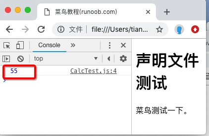</p>
<hr>

<h3>小结</h3>
<p>声明文件本质上是一份「类型说明书」，让 TypeScript 能够理解和检查纯 JavaScript 库。</p>
<p>整个工作流程可以概括为三步：</p>
<p>1. 拿到一个 JS 库，分析它暴露了哪些 API。</p>
<p>2. 编写 <span class="marked">.d.ts</span> 声明文件，描述这些 API 的类型签名。</p>
<p>3. 在 TypeScript 代码中引用声明文件，即可享受完整的类型检查保护。</p>

<blockquote><p>对于日常开发中常用的第三方库，绝大多数已经有现成的声明文件（通过 <span class="marked">npm install @types/xxx</span> 安装）。只有当你用到非常冷门的库或内部私有库时，才需要手动编写声明文件。</p></blockquote></div></section>
<section class="ch" id="c42"><h2>42. TypeScript 测验<a class="chsrc" href="https://www.runoob.com/typescript/ts-quiz.html" target="_blank" rel="noopener">原文↗</a></h2><div class="ch-body"><p class="miss">[该页正文未能提取]</p></div></section>
<section class="ch" id="c43"><h2>43. TypeScript type 别名<a class="chsrc" href="https://www.runoob.com/typescript/ts-type-alias.html" target="_blank" rel="noopener">原文↗</a></h2><div class="ch-body"><p>type 别名（Type Alias）用于为现有类型创建别名，让代码更简洁、更易读。</p>
<p>通过类型别名，可以为复杂类型定义一个简短的名字，提高代码的可维护性。</p>
<hr>

<hr>

<h3>为什么需要 type 别名</h3>
<p>当代码中多次使用同一个复杂类型时，每次都写完整类型会很冗长。</p>
<p>type 别名可以为复杂类型定义一个简洁的名字，让代码更易读、更易维护。</p>
<p>特别是在使用联合类型、函数类型、元组等复杂类型时，type 别名非常有用。</p>

<blockquote><p><strong>概念说明：</strong>type 别名使用 <code>type</code> 关键字定义，它只是为现有类型起了一个新名字，不会创建新的类型。</p></blockquote>
<hr>

<h3>基本用法</h3>
<p>使用 type 关键字为类型定义别名。</p>

<h3>实例</h3>

<span style="color:#006600">// 类型别名：为联合类型定义别名</span><br>
<span style="color:#006600">// ID 可以是字符串或数字</span><br>
type ID <span style="color:#339933">=</span> string <span style="color:#339933">|</span> number<span style="color:#339933">;</span><br>
<br>
<span style="color:#006600">// 类型别名：为对象类型定义别名</span><br>
<span style="color:#006600">// Point 表示一个坐标点</span><br>
type Point <span style="color:#339933">=</span> <span style="color:#009900">{</span> x<span style="color:#339933">:</span> number<span style="color:#339933">;</span> y<span style="color:#339933">:</span> number <span style="color:#009900">}</span><span style="color:#339933">;</span><br>
<br>
<span style="color:#006600">// 使用类型别名</span><br>
<span style="color:#000066">var</span> userId<span style="color:#339933">:</span> ID <span style="color:#339933">=</span> <span style="color:#3366CC">"123"</span><span style="color:#339933">;</span><br>
<span style="color:#000066">var</span> productId<span style="color:#339933">:</span> ID <span style="color:#339933">=</span> <span style="color:#CC0000">456</span><span style="color:#339933">;</span><br>
<br>
<span style="color:#006600">// 使用 Point 类型别名</span><br>
<span style="color:#000066">var</span> point<span style="color:#339933">:</span> Point <span style="color:#339933">=</span> <span style="color:#009900">{</span> x<span style="color:#339933">:</span> <span style="color:#CC0000">10</span><span style="color:#339933">,</span> y<span style="color:#339933">:</span> <span style="color:#CC0000">20</span> <span style="color:#009900">}</span><span style="color:#339933">;</span><br>
<br>
console.<span style="color:#660066">log</span><span style="color:#009900">(</span><span style="color:#3366CC">"用户ID: "</span> <span style="color:#339933">+</span> userId<span style="color:#009900">)</span><span style="color:#339933">;</span><br>
console.<span style="color:#660066">log</span><span style="color:#009900">(</span><span style="color:#3366CC">"产品ID: "</span> <span style="color:#339933">+</span> productId<span style="color:#009900">)</span><span style="color:#339933">;</span><br>
console.<span style="color:#660066">log</span><span style="color:#009900">(</span><span style="color:#3366CC">"坐标: "</span> <span style="color:#339933">+</span> JSON.<span style="color:#660066">stringify</span><span style="color:#009900">(</span>point<span style="color:#009900">)</span><span style="color:#009900">)</span><span style="color:#339933">;</span><br>

<p><strong>运行结果：</strong></p>
<pre>用户ID: 123
产品ID: 456
坐标: {"x":10,"y":20}
</pre>

<blockquote><p><strong>说明：</strong>类型别名只是给类型起了个新名字，编译后不会产生实际代码，它完全用于开发时的类型检查。</p></blockquote>
<hr>

<h3>接口 vs 类型别名</h3>
<p>类型别名和接口非常相似，都可以用来定义对象类型，但有一些细微区别。</p>

<h3>实例</h3>

<span style="color:#006600">// 使用 type 别名定义对象类型</span><br>
<span style="color:#006600">// type 可以定义任何类型，不仅仅是对象</span><br>
type PersonType <span style="color:#339933">=</span> <span style="color:#009900">{</span><br>
    name<span style="color:#339933">:</span> string<span style="color:#339933">;</span><br>
    age<span style="color:#339933">:</span> number<span style="color:#339933">;</span><br>
<span style="color:#009900">}</span><span style="color:#339933">;</span><br>
<br>
<span style="color:#006600">// 使用接口定义对象类型</span><br>
<span style="color:#006600">// 接口可以声明合并，可以被类实现</span><br>
<span style="color:#FF0000">interface</span> PersonInterface <span style="color:#009900">{</span><br>
    name<span style="color:#339933">:</span> string<span style="color:#339933">;</span><br>
    age<span style="color:#339933">:</span> number<span style="color:#339933">;</span><br>
<span style="color:#009900">}</span><br>
<br>
<span style="color:#006600">// 两者都可以用来声明变量类型</span><br>
<span style="color:#000066">var</span> person1<span style="color:#339933">:</span> PersonType <span style="color:#339933">=</span> <span style="color:#009900">{</span> name<span style="color:#339933">:</span> <span style="color:#3366CC">"Alice"</span><span style="color:#339933">,</span> age<span style="color:#339933">:</span> <span style="color:#CC0000">25</span> <span style="color:#009900">}</span><span style="color:#339933">;</span><br>
<span style="color:#000066">var</span> person2<span style="color:#339933">:</span> PersonInterface <span style="color:#339933">=</span> <span style="color:#009900">{</span> name<span style="color:#339933">:</span> <span style="color:#3366CC">"Bob"</span><span style="color:#339933">,</span> age<span style="color:#339933">:</span> <span style="color:#CC0000">30</span> <span style="color:#009900">}</span><span style="color:#339933">;</span><br>
<br>
console.<span style="color:#660066">log</span><span style="color:#009900">(</span><span style="color:#3366CC">"PersonType: "</span> <span style="color:#339933">+</span> JSON.<span style="color:#660066">stringify</span><span style="color:#009900">(</span>person1<span style="color:#009900">)</span><span style="color:#009900">)</span><span style="color:#339933">;</span><br>
console.<span style="color:#660066">log</span><span style="color:#009900">(</span><span style="color:#3366CC">"PersonInterface: "</span> <span style="color:#339933">+</span> JSON.<span style="color:#660066">stringify</span><span style="color:#009900">(</span>person2<span style="color:#009900">)</span><span style="color:#009900">)</span><span style="color:#339933">;</span><br>

<blockquote><p><strong>区别：</strong>type 可以定义任何类型（联合类型、元组、函数类型等），而接口主要用于定义对象类型。接口支持声明合并，type 不支持。</p></blockquote>
<hr>

<h3>类型别名与联合类型</h3>
<p>类型别名非常适合定义联合类型，让代码更清晰。</p>

<h3>实例</h3>

<span style="color:#006600">// 联合类型别名：定义状态的可能值</span><br>
<span style="color:#006600">// Status 只能是这三个字符串字面量之一</span><br>
type Status <span style="color:#339933">=</span> <span style="color:#3366CC">"pending"</span> <span style="color:#339933">|</span> <span style="color:#3366CC">"success"</span> <span style="color:#339933">|</span> <span style="color:#3366CC">"error"</span><span style="color:#339933">;</span><br>
<br>
<span style="color:#006600">// 联合类型别名：定义多种可能的返回类型</span><br>
<span style="color:#006600">// Result 可以是字符串、数字或布尔值</span><br>
type Result <span style="color:#339933">=</span> string <span style="color:#339933">|</span> number <span style="color:#339933">|</span> <span style="color:#FF0000">boolean</span><span style="color:#339933">;</span><br>
<br>
<span style="color:#006600">// 使用联合类型别名</span><br>
<span style="color:#000066">function</span> getStatus<span style="color:#009900">(</span>status<span style="color:#339933">:</span> Status<span style="color:#009900">)</span><span style="color:#339933">:</span> <span style="color:#000066">void</span> <span style="color:#009900">{</span><br>
    console.<span style="color:#660066">log</span><span style="color:#009900">(</span><span style="color:#3366CC">"状态: "</span> <span style="color:#339933">+</span> status<span style="color:#009900">)</span><span style="color:#339933">;</span><br>
<span style="color:#009900">}</span><br>
<br>
getStatus<span style="color:#009900">(</span><span style="color:#3366CC">"success"</span><span style="color:#009900">)</span><span style="color:#339933">;</span><br>
getStatus<span style="color:#009900">(</span><span style="color:#3366CC">"error"</span><span style="color:#009900">)</span><span style="color:#339933">;</span><br>
<br>
<span style="color:#006600">// 使用 Result 类型</span><br>
<span style="color:#000066">var</span> result<span style="color:#339933">:</span> Result <span style="color:#339933">=</span> <span style="color:#3366CC">"hello"</span><span style="color:#339933">;</span><br>
result <span style="color:#339933">=</span> <span style="color:#CC0000">42</span><span style="color:#339933">;</span><br>
console.<span style="color:#660066">log</span><span style="color:#009900">(</span><span style="color:#3366CC">"结果: "</span> <span style="color:#339933">+</span> result<span style="color:#009900">)</span><span style="color:#339933">;</span><br>

<p><strong>运行结果：</strong></p>
<pre>状态: success
状态: error
结果: 42
</pre>

<blockquote><p><strong>应用场景：</strong>联合类型别名常用于定义状态码、错误类型、API 返回值等场景。</p></blockquote>
<hr>

<h3>类型别名与元组</h3>
<p>类型别名也可以用于定义元组类型。</p>

<h3>实例</h3>

<span style="color:#006600">// 元组类型别名：定义坐标</span><br>
<span style="color:#006600">// Coordinate 是一个包含两个数字的元组</span><br>
type Coordinate <span style="color:#339933">=</span> <span style="color:#009900">[</span>number<span style="color:#339933">,</span> number<span style="color:#009900">]</span><span style="color:#339933">;</span><br>
<br>
<span style="color:#006600">// 元组类型别名：定义姓名和年龄</span><br>
<span style="color:#006600">// NameAge 是一个字符串和数字的元组</span><br>
type NameAge <span style="color:#339933">=</span> <span style="color:#009900">[</span>string<span style="color:#339933">,</span> number<span style="color:#009900">]</span><span style="color:#339933">;</span><br>
<br>
<span style="color:#006600">// 使用元组类型别名</span><br>
<span style="color:#000066">var</span> coord<span style="color:#339933">:</span> Coordinate <span style="color:#339933">=</span> <span style="color:#009900">[</span><span style="color:#CC0000">10</span><span style="color:#339933">,</span> <span style="color:#CC0000">20</span><span style="color:#009900">]</span><span style="color:#339933">;</span><br>
<span style="color:#000066">var</span> person<span style="color:#339933">:</span> NameAge <span style="color:#339933">=</span> <span style="color:#009900">[</span><span style="color:#3366CC">"Alice"</span><span style="color:#339933">,</span> <span style="color:#CC0000">25</span><span style="color:#009900">]</span><span style="color:#339933">;</span><br>
<br>
console.<span style="color:#660066">log</span><span style="color:#009900">(</span><span style="color:#3366CC">"坐标: "</span> <span style="color:#339933">+</span> coord<span style="color:#009900">)</span><span style="color:#339933">;</span><br>
console.<span style="color:#660066">log</span><span style="color:#009900">(</span><span style="color:#3366CC">"信息: "</span> <span style="color:#339933">+</span> person<span style="color:#009900">[</span><span style="color:#CC0000">0</span><span style="color:#009900">]</span> <span style="color:#339933">+</span> <span style="color:#3366CC">", "</span> <span style="color:#339933">+</span> person<span style="color:#009900">[</span><span style="color:#CC0000">1</span><span style="color:#009900">]</span><span style="color:#009900">)</span><span style="color:#339933">;</span><br>

<blockquote><p><strong>说明：</strong>元组类型别名让元组的使用更加清晰，避免了每次都需要写出完整元组类型的问题。</p></blockquote>
<hr>

<h3>类型别名与函数</h3>
<p>类型别名可以简化函数类型的声明。</p>

<h3>实例</h3>

<span style="color:#006600">// 函数类型别名：定义回调函数类型</span><br>
<span style="color:#006600">// Callback 接受一个字符串参数，返回 void</span><br>
type Callback <span style="color:#339933">=</span> <span style="color:#009900">(</span>result<span style="color:#339933">:</span> string<span style="color:#009900">)</span> <span style="color:#339933">=&gt;</span> <span style="color:#000066">void</span><span style="color:#339933">;</span><br>
<br>
<span style="color:#006600">// 函数类型别名：定义数学运算函数类型</span><br>
<span style="color:#006600">// MathOperation 接受两个数字参数，返回数字</span><br>
type MathOperation <span style="color:#339933">=</span> <span style="color:#009900">(</span>a<span style="color:#339933">:</span> number<span style="color:#339933">,</span> b<span style="color:#339933">:</span> number<span style="color:#009900">)</span> <span style="color:#339933">=&gt;</span> number<span style="color:#339933">;</span><br>
<br>
<span style="color:#006600">// 使用函数类型别名</span><br>
<span style="color:#000066">var</span> add<span style="color:#339933">:</span> MathOperation <span style="color:#339933">=</span> <span style="color:#000066">function</span><span style="color:#009900">(</span>a<span style="color:#339933">,</span> b<span style="color:#009900">)</span> <span style="color:#009900">{</span> <span style="color:#000066">return</span> a <span style="color:#339933">+</span> b<span style="color:#339933">;</span> <span style="color:#009900">}</span><span style="color:#339933">;</span><br>
<span style="color:#000066">var</span> multiply<span style="color:#339933">:</span> MathOperation <span style="color:#339933">=</span> <span style="color:#000066">function</span><span style="color:#009900">(</span>a<span style="color:#339933">,</span> b<span style="color:#009900">)</span> <span style="color:#009900">{</span> <span style="color:#000066">return</span> a <span style="color:#339933">*</span> b<span style="color:#339933">;</span> <span style="color:#009900">}</span><span style="color:#339933">;</span><br>
<br>
console.<span style="color:#660066">log</span><span style="color:#009900">(</span><span style="color:#3366CC">"加法: "</span> <span style="color:#339933">+</span> add<span style="color:#009900">(</span><span style="color:#CC0000">2</span><span style="color:#339933">,</span> <span style="color:#CC0000">3</span><span style="color:#009900">)</span><span style="color:#009900">)</span><span style="color:#339933">;</span><br>
console.<span style="color:#660066">log</span><span style="color:#009900">(</span><span style="color:#3366CC">"乘法: "</span> <span style="color:#339933">+</span> multiply<span style="color:#009900">(</span><span style="color:#CC0000">4</span><span style="color:#339933">,</span> <span style="color:#CC0000">5</span><span style="color:#009900">)</span><span style="color:#009900">)</span><span style="color:#339933">;</span><br>

<p><strong>运行结果：</strong></p>
<pre>加法: 5
乘法: 20
</pre>

<blockquote><p><strong>优势：</strong>函数类型别名让函数类型声明更简洁，特别是在需要多次使用相同函数签名时。</p></blockquote>
<hr>

<h3>类型别名与泛型</h3>
<p>类型别名可以配合泛型使用，创建可复用的类型定义。</p>

<h3>实例</h3>

<span style="color:#006600">// 泛型类型别名：定义结果类型</span><br>
<span style="color:#006600">// Result&lt;T&gt; 是一个泛型类型，T 是成功时的数据类型</span><br>
type Result<span style="color:#339933">&lt;</span>T<span style="color:#339933">&gt;</span> <span style="color:#339933">=</span> <span style="color:#009900">{</span> success<span style="color:#339933">:</span> <span style="color:#FF0000">boolean</span><span style="color:#339933">;</span> data<span style="color:#339933">?:</span> T<span style="color:#339933">;</span> error<span style="color:#339933">?:</span> string <span style="color:#009900">}</span><span style="color:#339933">;</span><br>
<br>
<span style="color:#006600">// 泛型类型别名：定义键值对类型</span><br>
<span style="color:#006600">// Pair&lt;K, V&gt; 有两个类型参数</span><br>
type Pair<span style="color:#339933">&lt;</span>K<span style="color:#339933">,</span> V<span style="color:#339933">&gt;</span> <span style="color:#339933">=</span> <span style="color:#009900">{</span> key<span style="color:#339933">:</span> K<span style="color:#339933">;</span> value<span style="color:#339933">:</span> V <span style="color:#009900">}</span><span style="color:#339933">;</span><br>
<br>
<span style="color:#006600">// 使用泛型类型别名</span><br>
<span style="color:#000066">var</span> result<span style="color:#339933">:</span> Result<span style="color:#339933">&lt;</span>string<span style="color:#339933">&gt;</span> <span style="color:#339933">=</span> <span style="color:#009900">{</span> success<span style="color:#339933">:</span> <span style="color:#003366">true</span><span style="color:#339933">,</span> data<span style="color:#339933">:</span> <span style="color:#3366CC">"Hello"</span> <span style="color:#009900">}</span><span style="color:#339933">;</span><br>
<span style="color:#000066">var</span> pair<span style="color:#339933">:</span> Pair<span style="color:#339933">&lt;</span>string<span style="color:#339933">,</span> number<span style="color:#339933">&gt;</span> <span style="color:#339933">=</span> <span style="color:#009900">{</span> key<span style="color:#339933">:</span> <span style="color:#3366CC">"age"</span><span style="color:#339933">,</span> value<span style="color:#339933">:</span> <span style="color:#CC0000">25</span> <span style="color:#009900">}</span><span style="color:#339933">;</span><br>
<br>
console.<span style="color:#660066">log</span><span style="color:#009900">(</span><span style="color:#3366CC">"结果: "</span> <span style="color:#339933">+</span> JSON.<span style="color:#660066">stringify</span><span style="color:#009900">(</span>result<span style="color:#009900">)</span><span style="color:#009900">)</span><span style="color:#339933">;</span><br>
console.<span style="color:#660066">log</span><span style="color:#009900">(</span><span style="color:#3366CC">"键值对: "</span> <span style="color:#339933">+</span> JSON.<span style="color:#660066">stringify</span><span style="color:#009900">(</span>pair<span style="color:#009900">)</span><span style="color:#009900">)</span><span style="color:#339933">;</span><br>

<p><strong>运行结果：</strong></p>
<pre>结果: {"success":true,"data":"Hello"}
键值对: {"key":"age","value":25}
</pre>

<blockquote><p><strong>泛型优势：</strong>泛型类型别名可以适应不同的数据类型，提高代码的复用性。</p></blockquote>
<hr>

<h3>类型别名与映射类型</h3>
<p>类型别名可以与映射类型结合，创建强大的类型转换。</p>

<h3>实例</h3>

<span style="color:#006600">// 映射类型：将所有属性变为只读</span><br>
<span style="color:#006600">// Readonly&lt;T&gt; 遍历 T 的所有属性并添加 readonly</span><br>
type Readonly<span style="color:#339933">&lt;</span>T<span style="color:#339933">&gt;</span> <span style="color:#339933">=</span> <span style="color:#009900">{</span> readonly <span style="color:#009900">[</span>P <span style="color:#000066">in</span> keyof T<span style="color:#009900">]</span><span style="color:#339933">:</span> T<span style="color:#009900">[</span>P<span style="color:#009900">]</span> <span style="color:#009900">}</span><span style="color:#339933">;</span><br>
<br>
<span style="color:#006600">// 映射类型：将所有属性变为可选</span><br>
<span style="color:#006600">// Partial&lt;T&gt; 遍历 T 的所有属性并添加 ?</span><br>
type Partial<span style="color:#339933">&lt;</span>T<span style="color:#339933">&gt;</span> <span style="color:#339933">=</span> <span style="color:#009900">{</span> <span style="color:#009900">[</span>P <span style="color:#000066">in</span> keyof T<span style="color:#009900">]</span><span style="color:#339933">?:</span> T<span style="color:#009900">[</span>P<span style="color:#009900">]</span> <span style="color:#009900">}</span><span style="color:#339933">;</span><br>
<br>
<span style="color:#006600">// 定义用户接口</span><br>
<span style="color:#FF0000">interface</span> User <span style="color:#009900">{</span><br>
    name<span style="color:#339933">:</span> string<span style="color:#339933">;</span><br>
    age<span style="color:#339933">:</span> number<span style="color:#339933">;</span><br>
<span style="color:#009900">}</span><br>
<br>
<span style="color:#006600">// 使用映射类型别名</span><br>
<span style="color:#000066">var</span> readonlyUser<span style="color:#339933">:</span> Readonly<span style="color:#339933">&lt;</span>User<span style="color:#339933">&gt;</span> <span style="color:#339933">=</span> <span style="color:#009900">{</span> name<span style="color:#339933">:</span> <span style="color:#3366CC">"Alice"</span><span style="color:#339933">,</span> age<span style="color:#339933">:</span> <span style="color:#CC0000">25</span> <span style="color:#009900">}</span><span style="color:#339933">;</span><br>
<span style="color:#006600">// readonlyUser.name = "Bob"; // 错误：只读属性不能修改</span><br>
<br>
<span style="color:#000066">var</span> partialUser<span style="color:#339933">:</span> Partial<span style="color:#339933">&lt;</span>User<span style="color:#339933">&gt;</span> <span style="color:#339933">=</span> <span style="color:#009900">{</span> name<span style="color:#339933">:</span> <span style="color:#3366CC">"Bob"</span> <span style="color:#009900">}</span><span style="color:#339933">;</span><br>
<br>
console.<span style="color:#660066">log</span><span style="color:#009900">(</span><span style="color:#3366CC">"只读用户: "</span> <span style="color:#339933">+</span> JSON.<span style="color:#660066">stringify</span><span style="color:#009900">(</span>readonlyUser<span style="color:#009900">)</span><span style="color:#009900">)</span><span style="color:#339933">;</span><br>
console.<span style="color:#660066">log</span><span style="color:#009900">(</span><span style="color:#3366CC">"部分用户: "</span> <span style="color:#339933">+</span> JSON.<span style="color:#660066">stringify</span><span style="color:#009900">(</span>partialUser<span style="color:#009900">)</span><span style="color:#009900">)</span><span style="color:#339933">;</span><br>

<blockquote><p><strong>提示：</strong>映射类型是 TypeScript 非常强大的特性，可以基于现有类型创建新的类型变化。</p></blockquote>
<hr>

<h3>注意事项</h3>
<ul>
<li><strong>不能重复定义：</strong>同一个 type 别名不能重复定义（接口可以声明合并）</li>
<li><strong>仅编译时有效：</strong>type 别名在编译后不产生任何代码</li>
<li><strong>可读性优先：</strong>不要滥用类型别名，简洁明了的代码更好</li>
</ul>

<blockquote><p><strong>最佳实践：</strong>当类型需要复用，或者类型名称过长时使用 type 别名。对于简单的对象类型，可以根据团队习惯选择 type 或接口。</p></blockquote>
<hr>

<h3>总结</h3>
<p>type 别名是 TypeScript 中非常有用的特性。</p>

<ul>
<li><strong>基本用法：</strong>使用 type 关键字为复杂类型定义别名</li>
<li><strong>联合类型：</strong>定义多个可能类型的组合</li>
<li><strong>函数类型：</strong>简化函数类型声明</li>
<li><strong>泛型：</strong>创建可复用的泛型类型</li>
<li><strong>映射类型：</strong>基于现有类型创建新类型</li>
</ul>

<blockquote><p><strong>建议：</strong>合理使用 type 别名可以让代码更清晰，但不要过度使用，保持代码简洁易读最重要。</p></blockquote></div></section>
<section class="ch" id="c44"><h2>44. TypeScript 字面量类型<a class="chsrc" href="https://www.runoob.com/typescript/ts-literal-types.html" target="_blank" rel="noopener">原文↗</a></h2><div class="ch-body"><p>字面量类型（Literal Types）是 TypeScript 中一种表示特定值而不是通用类型的特性。</p>
<p>它允许我们将变量类型限制为具体的值，而不是宽泛的 string、number 等类型。</p>
<p>这提供了更精确的类型控制，使代码更加类型安全。</p>
<hr>

<hr>

<h3>为什么需要字面量类型</h3>
<p>在 TypeScript 中，默认的类型如 string 和 number 过于宽泛。</p>
<p>有时我们需要更精确的类型控制。例如，一个变量只能取特定的几个值。</p>
<p>字面量类型正是为了解决这类问题而生的。</p>

<blockquote><p><strong>概念说明：</strong>字面量类型是泛型类型（string、number）的具体值。例如 <code>"up"</code> 是 <code>string</code> 的子类型，只能赋值给它的值是特定的字符串。</p></blockquote>
<hr>

<h3>字符串字面量类型</h3>
<p>字符串字面量类型将变量的取值限制为特定的字符串。</p>
<p>这在需要限制变量只能取某些固定值时非常有用。</p>

<h3>实例</h3>

<span style="color:#006600">// 定义字符串字面量类型</span><br>
<span style="color:#006600">// direction 只能是四个特定值之一</span><br>
<span style="color:#000066">var</span> direction<span style="color:#339933">:</span> <span style="color:#3366CC">"up"</span> <span style="color:#339933">|</span> <span style="color:#3366CC">"down"</span> <span style="color:#339933">|</span> <span style="color:#3366CC">"left"</span> <span style="color:#339933">|</span> <span style="color:#3366CC">"right"</span><span style="color:#339933">;</span><br>
<br>
<span style="color:#006600">// 正确：赋值为字面量类型中的值</span><br>
direction <span style="color:#339933">=</span> <span style="color:#3366CC">"up"</span><span style="color:#339933">;</span><br>
<br>
<span style="color:#006600">// 错误：赋值不在列表中的值</span><br>
<span style="color:#006600">// direction = "upup"; // 编译错误！</span><br>
<br>
console.<span style="color:#660066">log</span><span style="color:#009900">(</span><span style="color:#3366CC">"方向: "</span> <span style="color:#339933">+</span> direction<span style="color:#009900">)</span><span style="color:#339933">;</span><br>
<br>
<span style="color:#006600">// 使用类型别名创建可复用的字面量类型</span><br>
<span style="color:#006600">// 定义状态类型：只能是三个固定值之一</span><br>
type Status <span style="color:#339933">=</span> <span style="color:#3366CC">"pending"</span> <span style="color:#339933">|</span> <span style="color:#3366CC">"active"</span> <span style="color:#339933">|</span> <span style="color:#3366CC">"completed"</span><span style="color:#339933">;</span><br>
<br>
<span style="color:#006600">// 使用类型别名</span><br>
<span style="color:#000066">var</span> currentStatus<span style="color:#339933">:</span> Status <span style="color:#339933">=</span> <span style="color:#3366CC">"active"</span><span style="color:#339933">;</span><br>
console.<span style="color:#660066">log</span><span style="color:#009900">(</span><span style="color:#3366CC">"状态: "</span> <span style="color:#339933">+</span> currentStatus<span style="color:#009900">)</span><span style="color:#339933">;</span><br>

<p><strong>运行结果：</strong></p>
<pre>方向: up
状态: active
</pre>

<blockquote><p><strong>应用场景：</strong>字符串字面量常用于定义枚举值、状态码、配置选项等需要限制为特定值的场景。</p></blockquote>
<hr>

<h3>数字字面量类型</h3>
<p>数字字面量类型将变量的取值限制为特定的数字。</p>
<p>这在需要使用特定数值（如状态码、错误码）时非常有用。</p>

<h3>实例</h3>

<span style="color:#006600">// 定义数字字面量类型</span><br>
<span style="color:#006600">// code 只能是三个特定值之一</span><br>
<span style="color:#000066">var</span> code<span style="color:#339933">:</span> <span style="color:#CC0000">200</span> <span style="color:#339933">|</span> <span style="color:#CC0000">404</span> <span style="color:#339933">|</span> <span style="color:#CC0000">500</span><span style="color:#339933">;</span><br>
<br>
<span style="color:#006600">// 正确：赋值 200</span><br>
code <span style="color:#339933">=</span> <span style="color:#CC0000">200</span><span style="color:#339933">;</span><br>
<br>
<span style="color:#006600">// 错误：赋值不在列表中的值</span><br>
<span style="color:#006600">// code = 301; // 编译错误！</span><br>
<br>
console.<span style="color:#660066">log</span><span style="color:#009900">(</span><span style="color:#3366CC">"状态码: "</span> <span style="color:#339933">+</span> code<span style="color:#009900">)</span><span style="color:#339933">;</span><br>
<br>
<span style="color:#006600">// 使用数字字面量模拟枚举</span><br>
<span style="color:#006600">// 定义一周的天数</span><br>
type Weekday <span style="color:#339933">=</span> <span style="color:#CC0000">1</span> <span style="color:#339933">|</span> <span style="color:#CC0000">2</span> <span style="color:#339933">|</span> <span style="color:#CC0000">3</span> <span style="color:#339933">|</span> <span style="color:#CC0000">4</span> <span style="color:#339933">|</span> <span style="color:#CC0000">5</span> <span style="color:#339933">|</span> <span style="color:#CC0000">6</span> <span style="color:#339933">|</span> <span style="color:#CC0000">7</span><span style="color:#339933">;</span><br>
<br>
<span style="color:#006600">// 只能赋值 1-7 之间的数字</span><br>
<span style="color:#000066">var</span> today<span style="color:#339933">:</span> Weekday <span style="color:#339933">=</span> <span style="color:#CC0000">1</span><span style="color:#339933">;</span><br>
console.<span style="color:#660066">log</span><span style="color:#009900">(</span><span style="color:#3366CC">"今天是星期: "</span> <span style="color:#339933">+</span> today<span style="color:#009900">)</span><span style="color:#339933">;</span><br>

<blockquote><p><strong>说明：</strong>数字字面量可以替代简单的枚举（enum）使用，尤其在只需要几个固定数值时。</p></blockquote>
<hr>

<h3>布尔字面量类型</h3>
<p>布尔字面量类型将变量的取值限制为 true 或 false。</p>
<p>实际上，TypeScript 中的 boolean 类型就是 true | false 的别名。</p>

<h3>实例</h3>

<span style="color:#006600">// 定义布尔字面量类型</span><br>
<span style="color:#006600">// isActive 只能是 true 或 false</span><br>
<span style="color:#000066">var</span> isActive<span style="color:#339933">:</span> <span style="color:#003366">true</span> <span style="color:#339933">|</span> <span style="color:#003366">false</span><span style="color:#339933">;</span><br>
<br>
<span style="color:#006600">// 赋值 true</span><br>
isActive <span style="color:#339933">=</span> <span style="color:#003366">true</span><span style="color:#339933">;</span><br>
<br>
<span style="color:#006600">// 实际上 boolean 就是 true | false 的联合类型</span><br>
<span style="color:#006600">// 所以这两种写法是等价的</span><br>
<span style="color:#000066">var</span> flag<span style="color:#339933">:</span> <span style="color:#FF0000">boolean</span> <span style="color:#339933">=</span> <span style="color:#003366">true</span><span style="color:#339933">;</span><br>
<br>
console.<span style="color:#660066">log</span><span style="color:#009900">(</span><span style="color:#3366CC">"是否激活: "</span> <span style="color:#339933">+</span> isActive<span style="color:#009900">)</span><span style="color:#339933">;</span><br>

<blockquote><p><strong>提示：</strong>虽然 boolean 本身已经足够使用，但在需要明确区分 true 和 false 的类型时，可以使用 true 或 false 作为类型。</p></blockquote>
<hr>

<h3>对象字面量类型</h3>
<p>对象字面量类型可以定义对象的结构，并可以使用 readonly 修饰符将属性设为只读。</p>
<p>这在需要创建不可变对象时非常有用。</p>

<h3>实例</h3>

<span style="color:#006600">// 定义对象字面量类型</span><br>
<span style="color:#006600">// 指定对象的结构和属性类型</span><br>
type Point <span style="color:#339933">=</span> <span style="color:#009900">{</span><br>
    <span style="color:#006600">// 点的 x 坐标</span><br>
    x<span style="color:#339933">:</span> number<span style="color:#339933">;</span><br>
    <span style="color:#006600">// 点的 y 坐标</span><br>
    y<span style="color:#339933">:</span> number<span style="color:#339933">;</span><br>
<span style="color:#009900">}</span><span style="color:#339933">;</span><br>
<br>
<span style="color:#006600">// 使用对象字面量类型</span><br>
<span style="color:#000066">var</span> p<span style="color:#339933">:</span> Point <span style="color:#339933">=</span> <span style="color:#009900">{</span> x<span style="color:#339933">:</span> <span style="color:#CC0000">10</span><span style="color:#339933">,</span> y<span style="color:#339933">:</span> <span style="color:#CC0000">20</span> <span style="color:#009900">}</span><span style="color:#339933">;</span><br>
console.<span style="color:#660066">log</span><span style="color:#009900">(</span><span style="color:#3366CC">"点: "</span> <span style="color:#339933">+</span> JSON.<span style="color:#660066">stringify</span><span style="color:#009900">(</span>p<span style="color:#009900">)</span><span style="color:#009900">)</span><span style="color:#339933">;</span><br>
<br>
<span style="color:#006600">// 定义只读对象类型</span><br>
<span style="color:#006600">// 使用 readonly 修饰符将属性设为只读</span><br>
type ReadonlyPoint <span style="color:#339933">=</span> <span style="color:#009900">{</span><br>
    <span style="color:#006600">// 只读的 x 坐标</span><br>
    readonly x<span style="color:#339933">:</span> number<span style="color:#339933">;</span><br>
    <span style="color:#006600">// 只读的 y 坐标</span><br>
    readonly y<span style="color:#339933">:</span> number<span style="color:#339933">;</span><br>
<span style="color:#009900">}</span><span style="color:#339933">;</span><br>
<br>
<span style="color:#006600">// 使用只读对象类型</span><br>
<span style="color:#000066">var</span> rp<span style="color:#339933">:</span> ReadonlyPoint <span style="color:#339933">=</span> <span style="color:#009900">{</span> x<span style="color:#339933">:</span> <span style="color:#CC0000">1</span><span style="color:#339933">,</span> y<span style="color:#339933">:</span> <span style="color:#CC0000">2</span> <span style="color:#009900">}</span><span style="color:#339933">;</span><br>
<br>
<span style="color:#006600">// 尝试修改只读属性会报错</span><br>
<span style="color:#006600">// rp.x = 3; // 编译错误：只读属性不能修改</span><br>
<br>
console.<span style="color:#660066">log</span><span style="color:#009900">(</span><span style="color:#3366CC">"只读点: "</span> <span style="color:#339933">+</span> JSON.<span style="color:#660066">stringify</span><span style="color:#009900">(</span>rp<span style="color:#009900">)</span><span style="color:#009900">)</span><span style="color:#339933">;</span><br>

<p><strong>运行结果：</strong></p>
<pre>点: {"x":10,"y":20}
只读点: {"x":1,"y":2}
</pre>

<blockquote><p><strong>应用场景：</strong>只读对象常用于定义配置对象、常量对象等不希望被修改的数据。</p></blockquote>
<hr>

<h3>字面量类型与类型推断</h3>
<p>TypeScript 会根据变量的声明方式自动推断为字面量类型。</p>
<p>使用 const 声明的变量会被推断为具体的字面量类型，而不是宽泛的类型。</p>

<h3>实例</h3>

<span style="color:#006600">// 使用 var 声明并赋值</span><br>
<span style="color:#006600">// TypeScript 会推断为宽泛类型</span><br>
<span style="color:#000066">var</span> name <span style="color:#339933">=</span> <span style="color:#3366CC">"Alice"</span><span style="color:#339933">;</span>    <span style="color:#006600">// 类型: string（因为 var 可以重新赋值）</span><br>
<span style="color:#000066">var</span> age <span style="color:#339933">=</span> <span style="color:#CC0000">25</span><span style="color:#339933">;</span>          <span style="color:#006600">// 类型: number</span><br>
<span style="color:#000066">var</span> enabled <span style="color:#339933">=</span> <span style="color:#003366">true</span><span style="color:#339933">;</span>    <span style="color:#006600">// 类型: boolean</span><br>
<br>
console.<span style="color:#660066">log</span><span style="color:#009900">(</span><span style="color:#3366CC">"名字: "</span> <span style="color:#339933">+</span> name <span style="color:#339933">+</span> <span style="color:#3366CC">", 年龄: "</span> <span style="color:#339933">+</span> age <span style="color:#339933">+</span> <span style="color:#3366CC">", 启用: "</span> <span style="color:#339933">+</span> enabled<span style="color:#009900">)</span><span style="color:#339933">;</span><br>
<br>
<span style="color:#006600">// 使用 as const 创建深度只读字面量</span><br>
<span style="color:#006600">// 数组变为只读元组，值为字面量类型</span><br>
<span style="color:#000066">var</span> colors <span style="color:#339933">=</span> <span style="color:#009900">[</span><span style="color:#3366CC">"red"</span><span style="color:#339933">,</span> <span style="color:#3366CC">"green"</span><span style="color:#339933">,</span> <span style="color:#3366CC">"blue"</span><span style="color:#009900">]</span> as <span style="color:#000066">const</span><span style="color:#339933">;</span><br>
<br>
<span style="color:#006600">// colors 的类型变为：</span><br>
<span style="color:#006600">// readonly ["red", "green", "blue"]</span><br>
<br>
<span style="color:#006600">// 访问数组元素</span><br>
console.<span style="color:#660066">log</span><span style="color:#009900">(</span><span style="color:#3366CC">"颜色: "</span> <span style="color:#339933">+</span> colors<span style="color:#009900">[</span><span style="color:#CC0000">0</span><span style="color:#009900">]</span><span style="color:#009900">)</span><span style="color:#339933">;</span><br>
<br>
<span style="color:#006600">// 尝试修改会报错</span><br>
<span style="color:#006600">// colors[0] = "yellow"; // 编译错误：只读</span><br>

<blockquote><p><strong>说明：</strong><code>as const</code> 会将类型推断为最具体的字面量类型，并添加 readonly 修饰符。</p></blockquote>
<hr>

<h3>模板字面量类型</h3>
<p>模板字面量类型使用 JavaScript 模板字符串的语法来创建新的类型。</p>
<p>它允许我们动态地生成字符串类型。</p>

<h3>实例</h3>

<span style="color:#006600">// 使用模板字面量类型定义事件名称</span><br>
<span style="color:#006600">// `on${string}` 表示以 "on" 开头的任意字符串</span><br>
type EventName <span style="color:#339933">=</span> `on$<span style="color:#009900">{</span>string<span style="color:#009900">}</span>`<span style="color:#339933">;</span><br>
<br>
<span style="color:#006600">// 使用模板字面量类型定义处理器名称</span><br>
<span style="color:#006600">// Capitalize 将字符串首字母大写</span><br>
type Handler <span style="color:#339933">=</span> `handle$<span style="color:#009900">{</span>Capitalize<span style="color:#339933">&lt;</span>string<span style="color:#339933">&gt;</span><span style="color:#009900">}</span>`<span style="color:#339933">;</span><br>
<br>
<span style="color:#006600">// 使用模板字面量类型</span><br>
<span style="color:#000066">var</span> event<span style="color:#339933">:</span> EventName <span style="color:#339933">=</span> <span style="color:#3366CC">"onClick"</span><span style="color:#339933">;</span><br>
<span style="color:#000066">var</span> handler<span style="color:#339933">:</span> Handler <span style="color:#339933">=</span> <span style="color:#3366CC">"handleSubmit"</span><span style="color:#339933">;</span><br>
<br>
console.<span style="color:#660066">log</span><span style="color:#009900">(</span><span style="color:#3366CC">"事件: "</span> <span style="color:#339933">+</span> event<span style="color:#009900">)</span><span style="color:#339933">;</span><br>
console.<span style="color:#660066">log</span><span style="color:#009900">(</span><span style="color:#3366CC">"处理器: "</span> <span style="color:#339933">+</span> handler<span style="color:#009900">)</span><span style="color:#339933">;</span><br>
<br>
<span style="color:#006600">// 错误：不符合模板格式</span><br>
<span style="color:#006600">// var e: EventName = "click"; // 编译错误：不是以 "on" 开头</span><br>

<p><strong>运行结果：</strong></p>
<pre>事件: onClick
处理器: handleSubmit
</pre>

<blockquote><p><strong>内置工具类型：</strong>模板字面量类型可以配合 Uppercase、Lowercase、Capitalize、Uncapitalize 等内置工具类型使用。</p></blockquote>
<hr>

<h3>实际应用：Redux Action</h3>
<p>字面量类型在实际开发中有广泛的应用。</p>
<p>下面展示如何使用字面量类型实现 Redux 风格的行为（Action）。</p>

<h3>实例</h3>

<span style="color:#006600">// 定义 Redux 风格的 Action 类型</span><br>
<span style="color:#006600">// 使用联合类型定义不同类型的 Action</span><br>
type Action <span style="color:#339933">=</span><br>
    <span style="color:#006600">// 增加类型的 Action，包含数字类型的 payload</span><br>
    <span style="color:#339933">|</span> <span style="color:#009900">{</span> type<span style="color:#339933">:</span> <span style="color:#3366CC">"increment"</span><span style="color:#339933">;</span> payload<span style="color:#339933">:</span> number <span style="color:#009900">}</span><br>
    <span style="color:#006600">// 减少类型的 Action，包含数字类型的 payload</span><br>
    <span style="color:#339933">|</span> <span style="color:#009900">{</span> type<span style="color:#339933">:</span> <span style="color:#3366CC">"decrement"</span><span style="color:#339933">;</span> payload<span style="color:#339933">:</span> number <span style="color:#009900">}</span><br>
    <span style="color:#006600">// 重置类型的 Action，没有 payload</span><br>
    <span style="color:#339933">|</span> <span style="color:#009900">{</span> type<span style="color:#339933">:</span> <span style="color:#3366CC">"reset"</span> <span style="color:#009900">}</span><span style="color:#339933">;</span><br>
<br>
<span style="color:#006600">// 使用 action 的 reducer 函数</span><br>
<span style="color:#000066">function</span> reducer<span style="color:#009900">(</span>action<span style="color:#339933">:</span> Action<span style="color:#009900">)</span><span style="color:#339933">:</span> <span style="color:#000066">void</span> <span style="color:#009900">{</span><br>
    <span style="color:#006600">// TypeScript 会根据 action.type 的值自动推断 action 的具体类型</span><br>
    <span style="color:#000066">switch</span> <span style="color:#009900">(</span>action.<span style="color:#660066">type</span><span style="color:#009900">)</span> <span style="color:#009900">{</span><br>
        <span style="color:#000066">case</span> <span style="color:#3366CC">"increment"</span><span style="color:#339933">:</span><br>
            <span style="color:#006600">// 在这个分支中，action 被推断为 { type: "increment"; payload: number }</span><br>
            console.<span style="color:#660066">log</span><span style="color:#009900">(</span><span style="color:#3366CC">"增加: "</span> <span style="color:#339933">+</span> action.<span style="color:#660066">payload</span><span style="color:#009900">)</span><span style="color:#339933">;</span><br>
            <span style="color:#000066">break</span><span style="color:#339933">;</span><br>
        <span style="color:#000066">case</span> <span style="color:#3366CC">"decrement"</span><span style="color:#339933">:</span><br>
            <span style="color:#006600">// 在这个分支中，action 被推断为 { type: "decrement"; payload: number }</span><br>
            console.<span style="color:#660066">log</span><span style="color:#009900">(</span><span style="color:#3366CC">"减少: "</span> <span style="color:#339933">+</span> action.<span style="color:#660066">payload</span><span style="color:#009900">)</span><span style="color:#339933">;</span><br>
            <span style="color:#000066">break</span><span style="color:#339933">;</span><br>
        <span style="color:#000066">case</span> <span style="color:#3366CC">"reset"</span><span style="color:#339933">:</span><br>
            <span style="color:#006600">// 在这个分支中，action 被推断为 { type: "reset" }</span><br>
            console.<span style="color:#660066">log</span><span style="color:#009900">(</span><span style="color:#3366CC">"重置"</span><span style="color:#009900">)</span><span style="color:#339933">;</span><br>
            <span style="color:#000066">break</span><span style="color:#339933">;</span><br>
    <span style="color:#009900">}</span><br>
<span style="color:#009900">}</span><br>
<br>
<span style="color:#006600">// 派发不同类型的 Action</span><br>
reducer<span style="color:#009900">(</span><span style="color:#009900">{</span> type<span style="color:#339933">:</span> <span style="color:#3366CC">"increment"</span><span style="color:#339933">,</span> payload<span style="color:#339933">:</span> <span style="color:#CC0000">5</span> <span style="color:#009900">}</span><span style="color:#009900">)</span><span style="color:#339933">;</span><br>
reducer<span style="color:#009900">(</span><span style="color:#009900">{</span> type<span style="color:#339933">:</span> <span style="color:#3366CC">"reset"</span> <span style="color:#009900">}</span><span style="color:#009900">)</span><span style="color:#339933">;</span><br>

<p><strong>运行结果：</strong></p>
<pre>增加: 5
重置
</pre>

<blockquote><p><strong>可辨识联合：</strong>这种模式叫做"可辨识联合"（Discriminated Union），是 TypeScript 中处理多种相关类型的最佳实践。</p></blockquote>
<hr>

<h3>注意事项</h3>
<ul>
<li><strong>类型收窄：</strong>使用 switch 或 if 判断时，TypeScript 会自动收窄字面量类型</li>
<li><strong>类型别名：</strong>建议使用 type 别名为常用的字面量类型创建别名</li>
<li><strong>const 推断：</strong>const 声明的变量会自动推断为字面量类型</li>
<li><strong>as const：</strong>需要深度只读时使用 as const</li>
</ul>

<blockquote><p><strong>最佳实践：</strong>在需要限制变量只能取特定值时，优先使用字面量类型而不是枚举。</p></blockquote>
<hr>

<h3>总结</h3>
<p>字面量类型是 TypeScript 实现精确类型控制的重要特性。</p>

<ul>
<li><strong>字符串字面量：</strong>限制为特定字符串，如 <code>"up" | "down"</code></li>
<li><strong>数字字面量：</strong>限制为特定数字，如 <code>1 | 2 | 3</code></li>
<li><strong>布尔字面量：</strong>限制为 true 或 false</li>
<li><strong>对象字面量：</strong>定义对象结构，可使用 readonly</li>
<li><strong>as const：</strong>创建深度只读字面量类型</li>
<li><strong>模板字面量：</strong>使用模板字符串动态生成类型</li>
</ul>

<blockquote><p><strong>进阶：</strong>字面量类型与可辨识联合模式结合，可以实现强大的类型安全。</p></blockquote></div></section>
<section class="ch" id="c45"><h2>45. TypeScript 抽象类<a class="chsrc" href="https://www.runoob.com/typescript/ts-abstract-class.html" target="_blank" rel="noopener">原文↗</a></h2><div class="ch-body"><p>抽象类（Abstract Class）是 TypeScript 面向对象编程中的重要概念。</p>
<p>它是一种不能被直接实例化的类，只能作为基类供其他类继承。</p>
<p>抽象类主要用于定义子类的公共属性和方法，为子类提供一个统一的结构和行为模板。</p>
<hr>

<hr>

<h3>为什么需要抽象类</h3>
<p>在面向对象编程中，我们经常需要定义一些基类。</p>
<p>这些基类描述了子类共同的属性和方法，但有些方法的实现细节需要由子类自己决定。</p>
<p>抽象类就是用来解决这个问题的：它允许我们定义方法的签名（声明），而把具体实现交给子类。</p>

<blockquote><p><strong>概念说明：</strong>抽象类是一种介于普通类和接口之间的类型。它既有接口的特征（定义方法签名），又有类的特征（可以有具体的方法实现和构造函数）。</p></blockquote>
<hr>

<h3>抽象类基础</h3>
<p>使用 <code>abstract</code> 关键字声明抽象类和抽象方法。</p>
<p>抽象类可以包含抽象方法和具象方法（已有实现的方法）。</p>

<h3>实例</h3>

<span style="color:#006600">// 使用 abstract 关键字声明抽象类</span><br>
<span style="color:#006600">// 抽象类不能直接实例化，只能作为基类</span><br>
<span style="color:#FF0000">abstract</span> <span style="color:#FF0000">class</span> Animal <span style="color:#009900">{</span><br>
    <span style="color:#006600">// 动物的名字属性</span><br>
    name<span style="color:#339933">:</span> string<span style="color:#339933">;</span><br>
<br>
    <span style="color:#006600">// 构造函数</span><br>
    constructor<span style="color:#009900">(</span>name<span style="color:#339933">:</span> string<span style="color:#009900">)</span> <span style="color:#009900">{</span><br>
        <span style="color:#000066">this</span>.<span style="color:#660066">name</span> <span style="color:#339933">=</span> name<span style="color:#339933">;</span><br>
    <span style="color:#009900">}</span><br>
<br>
    <span style="color:#006600">// 抽象方法：使用 abstract 修饰，没有方法体</span><br>
    <span style="color:#006600">// 子类必须实现这个方法</span><br>
    <span style="color:#FF0000">abstract</span> speak<span style="color:#009900">(</span><span style="color:#009900">)</span><span style="color:#339933">:</span> <span style="color:#000066">void</span><span style="color:#339933">;</span><br>
<br>
    <span style="color:#006600">// 具象方法：有具体实现的方法</span><br>
    <span style="color:#006600">// 子类可以直接继承使用，不需要重写</span><br>
    move<span style="color:#009900">(</span><span style="color:#009900">)</span><span style="color:#339933">:</span> <span style="color:#000066">void</span> <span style="color:#009900">{</span><br>
        console.<span style="color:#660066">log</span><span style="color:#009900">(</span><span style="color:#000066">this</span>.<span style="color:#660066">name</span> <span style="color:#339933">+</span> <span style="color:#3366CC">" 在移动"</span><span style="color:#009900">)</span><span style="color:#339933">;</span><br>
    <span style="color:#009900">}</span><br>
<span style="color:#009900">}</span><br>
<br>
<span style="color:#006600">// 尝试实例化抽象类会报错</span><br>
<span style="color:#006600">// var animal = new Animal("动物"); // 错误：不能实例化抽象类</span><br>
<br>
<span style="color:#006600">// 定义 Dog 类继承 Animal</span><br>
<span style="color:#FF0000">class</span> Dog <span style="color:#FF0000">extends</span> Animal <span style="color:#009900">{</span><br>
    <span style="color:#006600">// 子类必须实现父类的抽象方法 speak()</span><br>
    speak<span style="color:#009900">(</span><span style="color:#009900">)</span><span style="color:#339933">:</span> <span style="color:#000066">void</span> <span style="color:#009900">{</span><br>
        console.<span style="color:#660066">log</span><span style="color:#009900">(</span><span style="color:#000066">this</span>.<span style="color:#660066">name</span> <span style="color:#339933">+</span> <span style="color:#3366CC">" 汪汪汪!"</span><span style="color:#009900">)</span><span style="color:#339933">;</span><br>
    <span style="color:#009900">}</span><br>
<span style="color:#009900">}</span><br>
<br>
<span style="color:#006600">// 创建 Dog 实例</span><br>
<span style="color:#000066">var</span> dog <span style="color:#339933">=</span> <span style="color:#000066">new</span> Dog<span style="color:#009900">(</span><span style="color:#3366CC">"旺财"</span><span style="color:#009900">)</span><span style="color:#339933">;</span><br>
dog.<span style="color:#660066">speak</span><span style="color:#009900">(</span><span style="color:#009900">)</span><span style="color:#339933">;</span>  <span style="color:#006600">// 调用子类实现的方法</span><br>
dog.<span style="color:#660066">move</span><span style="color:#009900">(</span><span style="color:#009900">)</span><span style="color:#339933">;</span>   <span style="color:#006600">// 继承父类的具象方法</span><br>

<p><strong>运行结果：</strong></p>
<pre>旺财 汪汪汪!
旺财 在移动
</pre>

<blockquote><p><strong>说明：</strong>抽象方法没有方法体（只有方法签名），子类必须实现该方法。具象方法有具体实现，子类可以直接继承使用。</p></blockquote>
<hr>

<h3>抽象方法</h3>
<p>抽象方法是抽象类中只声明但不实现的方法。</p>
<p>子类继承抽象类后，必须实现所有抽象方法，否则会报错。</p>

<h3>实例</h3>

<span style="color:#006600">// 定义抽象类 Shape（图形）</span><br>
<span style="color:#FF0000">abstract</span> <span style="color:#FF0000">class</span> Shape <span style="color:#009900">{</span><br>
    <span style="color:#006600">// 抽象方法：只有声明，没有实现</span><br>
    <span style="color:#006600">// 子类必须实现这两个方法</span><br>
    <span style="color:#FF0000">abstract</span> area<span style="color:#009900">(</span><span style="color:#009900">)</span><span style="color:#339933">:</span> number<span style="color:#339933">;</span><br>
    <span style="color:#FF0000">abstract</span> perimeter<span style="color:#009900">(</span><span style="color:#009900">)</span><span style="color:#339933">:</span> number<span style="color:#339933">;</span><br>
<br>
    <span style="color:#006600">// 具象方法：可以使用抽象方法</span><br>
    <span style="color:#006600">// 这个方法调用了抽象方法，子类继承后可以正常使用</span><br>
    describe<span style="color:#009900">(</span><span style="color:#009900">)</span><span style="color:#339933">:</span> <span style="color:#000066">void</span> <span style="color:#009900">{</span><br>
        console.<span style="color:#660066">log</span><span style="color:#009900">(</span><span style="color:#3366CC">"面积: "</span> <span style="color:#339933">+</span> <span style="color:#000066">this</span>.<span style="color:#660066">area</span><span style="color:#009900">(</span><span style="color:#009900">)</span>.<span style="color:#660066">toFixed</span><span style="color:#009900">(</span><span style="color:#CC0000">2</span><span style="color:#009900">)</span><span style="color:#009900">)</span><span style="color:#339933">;</span><br>
    <span style="color:#009900">}</span><br>
<span style="color:#009900">}</span><br>
<br>
<span style="color:#006600">// 定义矩形类继承 Shape</span><br>
<span style="color:#FF0000">class</span> Rectangle <span style="color:#FF0000">extends</span> Shape <span style="color:#009900">{</span><br>
    <span style="color:#006600">// 矩形的宽度</span><br>
    width<span style="color:#339933">:</span> number<span style="color:#339933">;</span><br>
    <span style="color:#006600">// 矩形的高度</span><br>
    height<span style="color:#339933">:</span> number<span style="color:#339933">;</span><br>
<br>
    <span style="color:#006600">// 构造函数</span><br>
    constructor<span style="color:#009900">(</span>width<span style="color:#339933">:</span> number<span style="color:#339933">,</span> height<span style="color:#339933">:</span> number<span style="color:#009900">)</span> <span style="color:#009900">{</span><br>
        <span style="color:#FF0000">super</span><span style="color:#009900">(</span><span style="color:#009900">)</span><span style="color:#339933">;</span>  <span style="color:#006600">// 调用父类构造函数</span><br>
        <span style="color:#000066">this</span>.<span style="color:#660066">width</span> <span style="color:#339933">=</span> width<span style="color:#339933">;</span><br>
        <span style="color:#000066">this</span>.<span style="color:#660066">height</span> <span style="color:#339933">=</span> height<span style="color:#339933">;</span><br>
    <span style="color:#009900">}</span><br>
<br>
    <span style="color:#006600">// 实现抽象方法：计算面积</span><br>
    area<span style="color:#009900">(</span><span style="color:#009900">)</span><span style="color:#339933">:</span> number <span style="color:#009900">{</span><br>
        <span style="color:#000066">return</span> <span style="color:#000066">this</span>.<span style="color:#660066">width</span> <span style="color:#339933">*</span> <span style="color:#000066">this</span>.<span style="color:#660066">height</span><span style="color:#339933">;</span><br>
    <span style="color:#009900">}</span><br>
<br>
    <span style="color:#006600">// 实现抽象方法：计算周长</span><br>
    perimeter<span style="color:#009900">(</span><span style="color:#009900">)</span><span style="color:#339933">:</span> number <span style="color:#009900">{</span><br>
        <span style="color:#000066">return</span> <span style="color:#CC0000">2</span> <span style="color:#339933">*</span> <span style="color:#009900">(</span><span style="color:#000066">this</span>.<span style="color:#660066">width</span> <span style="color:#339933">+</span> <span style="color:#000066">this</span>.<span style="color:#660066">height</span><span style="color:#009900">)</span><span style="color:#339933">;</span><br>
    <span style="color:#009900">}</span><br>
<span style="color:#009900">}</span><br>
<br>
<span style="color:#006600">// 创建矩形实例</span><br>
<span style="color:#000066">var</span> rect <span style="color:#339933">=</span> <span style="color:#000066">new</span> Rectangle<span style="color:#009900">(</span><span style="color:#CC0000">4</span><span style="color:#339933">,</span> <span style="color:#CC0000">5</span><span style="color:#009900">)</span><span style="color:#339933">;</span><br>
<br>
<span style="color:#006600">// 调用继承的 describe 方法，内部会调用子类的 area 方法</span><br>
rect.<span style="color:#660066">describe</span><span style="color:#009900">(</span><span style="color:#009900">)</span><span style="color:#339933">;</span><br>
console.<span style="color:#660066">log</span><span style="color:#009900">(</span><span style="color:#3366CC">"周长: "</span> <span style="color:#339933">+</span> rect.<span style="color:#660066">perimeter</span><span style="color:#009900">(</span><span style="color:#009900">)</span><span style="color:#009900">)</span><span style="color:#339933">;</span><br>

<p><strong>运行结果：</strong></p>
<pre>面积: 20.00
周长: 18
</pre>

<blockquote><p><strong>提示：</strong>具象方法可以调用抽象方法。这是因为当具象方法被调用时，子类已经实现了抽象方法，所以可以正常执行。</p></blockquote>
<hr>

<h3>抽象类作为类型</h3>
<p>抽象类可以作为参数类型使用。</p>
<p>这意味着函数可以接受任何抽象类的子类实例，实现了多态。</p>

<h3>实例</h3>

<span style="color:#006600">// 定义抽象类 Animal</span><br>
<span style="color:#FF0000">abstract</span> <span style="color:#FF0000">class</span> Animal <span style="color:#009900">{</span><br>
    <span style="color:#006600">// 抽象方法：所有动物都会发出声音</span><br>
    <span style="color:#FF0000">abstract</span> speak<span style="color:#009900">(</span><span style="color:#009900">)</span><span style="color:#339933">:</span> <span style="color:#000066">void</span><span style="color:#339933">;</span><br>
<span style="color:#009900">}</span><br>
<br>
<span style="color:#006600">// 定义 Cat 类继承 Animal</span><br>
<span style="color:#FF0000">class</span> Cat <span style="color:#FF0000">extends</span> Animal <span style="color:#009900">{</span><br>
    <span style="color:#006600">// 实现抽象方法</span><br>
    speak<span style="color:#009900">(</span><span style="color:#009900">)</span><span style="color:#339933">:</span> <span style="color:#000066">void</span> <span style="color:#009900">{</span><br>
        console.<span style="color:#660066">log</span><span style="color:#009900">(</span><span style="color:#3366CC">"喵喵喵!"</span><span style="color:#009900">)</span><span style="color:#339933">;</span><br>
    <span style="color:#009900">}</span><br>
<span style="color:#009900">}</span><br>
<br>
<span style="color:#006600">// 定义 Dog 类继承 Animal</span><br>
<span style="color:#FF0000">class</span> Dog <span style="color:#FF0000">extends</span> Animal <span style="color:#009900">{</span><br>
    <span style="color:#006600">// 实现抽象方法</span><br>
    speak<span style="color:#009900">(</span><span style="color:#009900">)</span><span style="color:#339933">:</span> <span style="color:#000066">void</span> <span style="color:#009900">{</span><br>
        console.<span style="color:#660066">log</span><span style="color:#009900">(</span><span style="color:#3366CC">"汪汪汪!"</span><span style="color:#009900">)</span><span style="color:#339933">;</span><br>
    <span style="color:#009900">}</span><br>
<span style="color:#009900">}</span><br>
<br>
<span style="color:#006600">// 定义函数参数类型为抽象类 Animal</span><br>
<span style="color:#006600">// 这个函数可以接受任何 Animal 的子类实例</span><br>
<span style="color:#000066">function</span> makeSpeak<span style="color:#009900">(</span>animal<span style="color:#339933">:</span> Animal<span style="color:#009900">)</span><span style="color:#339933">:</span> <span style="color:#000066">void</span> <span style="color:#009900">{</span><br>
    animal.<span style="color:#660066">speak</span><span style="color:#009900">(</span><span style="color:#009900">)</span><span style="color:#339933">;</span><br>
<span style="color:#009900">}</span><br>
<br>
<span style="color:#006600">// 传入不同的子类实例，实现不同的行为（多态）</span><br>
makeSpeak<span style="color:#009900">(</span><span style="color:#000066">new</span> Cat<span style="color:#009900">(</span><span style="color:#009900">)</span><span style="color:#009900">)</span><span style="color:#339933">;</span><br>
makeSpeak<span style="color:#009900">(</span><span style="color:#000066">new</span> Dog<span style="color:#009900">(</span><span style="color:#009900">)</span><span style="color:#009900">)</span><span style="color:#339933">;</span><br>
<br>
<span style="color:#006600">// 抽象类类型数组：可以存储不同子类实例</span><br>
<span style="color:#000066">var</span> animals<span style="color:#339933">:</span> Animal<span style="color:#009900">[</span><span style="color:#009900">]</span> <span style="color:#339933">=</span> <span style="color:#009900">[</span><span style="color:#000066">new</span> Cat<span style="color:#009900">(</span><span style="color:#009900">)</span><span style="color:#339933">,</span> <span style="color:#000066">new</span> Dog<span style="color:#009900">(</span><span style="color:#009900">)</span><span style="color:#009900">]</span><span style="color:#339933">;</span><br>

<p><strong>运行结果：</strong></p>
<pre>喵喵喵!
汪汪汪!
</pre>

<blockquote><p><strong>多态：</strong>抽象类作为类型时，实际执行的是子类的方法实现。这就是面向对象的多态特性。</p></blockquote>
<hr>

<h3>抽象类与接口的区别</h3>
<p>抽象类和接口都用于定义类型规范，但有一些关键区别。</p>
<p>理解它们的差异有助于在实际开发中做出正确的选择。</p>

<table>
<thead>
<tr>
<th>特性</th>
<th>抽象类</th>
<th>接口</th>
</tr>
</thead>
<tbody>
<tr>
<td>实例化</td>
<td>不能直接实例化</td>
<td>不能直接实例化</td>
</tr>
<tr>
<td>方法实现</td>
<td>可以有具体实现</td>
<td>只能有声明（TypeScript 3.6+ 可有默认实现）</td>
</tr>
<tr>
<td>成员修饰符</td>
<td>可以添加 public、protected、private</td>
<td>只能有 readonly</td>
</tr>
<tr>
<td>继承</td>
<td>单继承（只能 extends 一个类）</td>
<td>多实现（可以 implements 多个接口）</td>
</tr>
<tr>
<td>构造函数</td>
<td>可以有构造函数</td>
<td>不能有构造函数</td>
</tr>
</tbody>
</table>

<blockquote><p><strong>选择建议：</strong>需要共享代码使用（用抽象类）；需要定义规范/契约（用接口）；需要多继承（用接口）。</p></blockquote>
<hr>

<h3>完整示例：支付系统</h3>
<p>下面是一个使用抽象类实现的支付系统示例。</p>
<p>这个示例展示了抽象类在实际项目中的应用。</p>

<h3>实例</h3>

<span style="color:#006600">// 定义抽象支付类</span><br>
<span style="color:#FF0000">abstract</span> <span style="color:#FF0000">class</span> Payment <span style="color:#009900">{</span><br>
    <span style="color:#006600">// 抽象方法：处理支付，子类必须实现</span><br>
    <span style="color:#FF0000">abstract</span> process<span style="color:#009900">(</span>amount<span style="color:#339933">:</span> number<span style="color:#009900">)</span><span style="color:#339933">:</span> <span style="color:#FF0000">boolean</span><span style="color:#339933">;</span><br>
<br>
    <span style="color:#006600">// 具象方法：验证支付信息</span><br>
    <span style="color:#006600">// 所有子类都可以使用这个方法</span><br>
    validate<span style="color:#009900">(</span><span style="color:#009900">)</span><span style="color:#339933">:</span> <span style="color:#000066">void</span> <span style="color:#009900">{</span><br>
        console.<span style="color:#660066">log</span><span style="color:#009900">(</span><span style="color:#3366CC">"验证支付信息"</span><span style="color:#009900">)</span><span style="color:#339933">;</span><br>
    <span style="color:#009900">}</span><br>
<span style="color:#009900">}</span><br>
<br>
<span style="color:#006600">// 信用卡支付类</span><br>
<span style="color:#FF0000">class</span> CreditCardPayment <span style="color:#FF0000">extends</span> Payment <span style="color:#009900">{</span><br>
    <span style="color:#006600">// 信用卡号码</span><br>
    cardNumber<span style="color:#339933">:</span> string<span style="color:#339933">;</span><br>
<br>
    <span style="color:#006600">// 构造函数</span><br>
    constructor<span style="color:#009900">(</span>cardNumber<span style="color:#339933">:</span> string<span style="color:#009900">)</span> <span style="color:#009900">{</span><br>
        <span style="color:#FF0000">super</span><span style="color:#009900">(</span><span style="color:#009900">)</span><span style="color:#339933">;</span>  <span style="color:#006600">// 调用父类构造函数</span><br>
        <span style="color:#000066">this</span>.<span style="color:#660066">cardNumber</span> <span style="color:#339933">=</span> cardNumber<span style="color:#339933">;</span><br>
    <span style="color:#009900">}</span><br>
<br>
    <span style="color:#006600">// 实现抽象方法：处理信用卡支付</span><br>
    process<span style="color:#009900">(</span>amount<span style="color:#339933">:</span> number<span style="color:#009900">)</span><span style="color:#339933">:</span> <span style="color:#FF0000">boolean</span> <span style="color:#009900">{</span><br>
        console.<span style="color:#660066">log</span><span style="color:#009900">(</span><span style="color:#3366CC">"处理信用卡支付: "</span> <span style="color:#339933">+</span> amount<span style="color:#009900">)</span><span style="color:#339933">;</span><br>
        <span style="color:#000066">return</span> <span style="color:#003366">true</span><span style="color:#339933">;</span><br>
    <span style="color:#009900">}</span><br>
<span style="color:#009900">}</span><br>
<br>
<span style="color:#006600">// PayPal 支付类</span><br>
<span style="color:#FF0000">class</span> PayPalPayment <span style="color:#FF0000">extends</span> Payment <span style="color:#009900">{</span><br>
    <span style="color:#006600">// PayPal 邮箱</span><br>
    email<span style="color:#339933">:</span> string<span style="color:#339933">;</span><br>
<br>
    <span style="color:#006600">// 构造函数</span><br>
    constructor<span style="color:#009900">(</span>email<span style="color:#339933">:</span> string<span style="color:#009900">)</span> <span style="color:#009900">{</span><br>
        <span style="color:#FF0000">super</span><span style="color:#009900">(</span><span style="color:#009900">)</span><span style="color:#339933">;</span><br>
        <span style="color:#000066">this</span>.<span style="color:#660066">email</span> <span style="color:#339933">=</span> email<span style="color:#339933">;</span><br>
    <span style="color:#009900">}</span><br>
<br>
    <span style="color:#006600">// 实现抽象方法：处理 PayPal 支付</span><br>
    process<span style="color:#009900">(</span>amount<span style="color:#339933">:</span> number<span style="color:#009900">)</span><span style="color:#339933">:</span> <span style="color:#FF0000">boolean</span> <span style="color:#009900">{</span><br>
        console.<span style="color:#660066">log</span><span style="color:#009900">(</span><span style="color:#3366CC">"处理 PayPal 支付: "</span> <span style="color:#339933">+</span> amount<span style="color:#009900">)</span><span style="color:#339933">;</span><br>
        <span style="color:#000066">return</span> <span style="color:#003366">true</span><span style="color:#339933">;</span><br>
    <span style="color:#009900">}</span><br>
<span style="color:#009900">}</span><br>
<br>
<span style="color:#006600">// 使用多态处理不同的支付方式</span><br>
<span style="color:#000066">var</span> payments<span style="color:#339933">:</span> Payment<span style="color:#009900">[</span><span style="color:#009900">]</span> <span style="color:#339933">=</span> <span style="color:#009900">[</span><br>
    <span style="color:#000066">new</span> CreditCardPayment<span style="color:#009900">(</span><span style="color:#3366CC">"1234"</span><span style="color:#009900">)</span><span style="color:#339933">,</span><br>
    <span style="color:#000066">new</span> PayPalPayment<span style="color:#009900">(</span><span style="color:#3366CC">"test@example.com"</span><span style="color:#009900">)</span><br>
<span style="color:#009900">]</span><span style="color:#339933">;</span><br>
<br>
<span style="color:#006600">// 遍历处理每种支付方式</span><br>
<span style="color:#000066">for</span> <span style="color:#009900">(</span><span style="color:#000066">var</span> _i <span style="color:#339933">=</span> <span style="color:#CC0000">0</span><span style="color:#339933">,</span> payments_1 <span style="color:#339933">=</span> payments<span style="color:#339933">;</span> _i <span style="color:#339933">&lt;</span> payments_1.<span style="color:#660066">length</span><span style="color:#339933">;</span> _i<span style="color:#339933">++</span><span style="color:#009900">)</span> <span style="color:#009900">{</span><br>
    <span style="color:#000066">var</span> payment <span style="color:#339933">=</span> payments_1<span style="color:#009900">[</span>_i<span style="color:#009900">]</span><span style="color:#339933">;</span><br>
    <span style="color:#006600">// 调用继承的验证方法</span><br>
    payment.<span style="color:#660066">validate</span><span style="color:#009900">(</span><span style="color:#009900">)</span><span style="color:#339933">;</span><br>
    <span style="color:#006600">// 调用子类的处理方法</span><br>
    payment.<span style="color:#660066">process</span><span style="color:#009900">(</span><span style="color:#CC0000">100</span><span style="color:#009900">)</span><span style="color:#339933">;</span><br>
<span style="color:#009900">}</span><br>

<p><strong>运行结果：</strong></p>
<pre>验证支付信息
处理信用卡支付: 100
验证支付信息
处理 PayPal 支付: 100
</pre>

<blockquote><p><strong>应用场景：</strong>抽象类常用于框架设计和业务逻辑分层。例如支付处理、用户认证、数据持久化等场景。</p></blockquote>
<hr>

<h3>注意事项</h3>
<ul>
<li><strong>不能实例化：</strong>抽象类不能直接使用 new 创建实例，必须通过子类继承</li>
<li><strong>必须实现抽象方法：</strong>子类如果不实现所有抽象方法，会报错</li>
<li><strong>可以有构造函数：</strong>抽象类可以定义构造函数，子类需要调用 super()</li>
<li><strong>单继承：</strong>一个类只能继承一个抽象类（单继承）</li>
<li><strong>访问修饰符：</strong>抽象方法可以使用 public、protected 修饰符</li>
</ul>

<blockquote><p><strong>最佳实践：</strong>当多个类需要共享代码和逻辑时，使用抽象类。当只需要定义规范和契约时，使用接口。</p></blockquote>
<hr>

<h3>总结</h3>
<p>抽象类是 TypeScript 面向对象编程的重要组成部分。</p>

<ul>
<li><strong>abstract 关键字：</strong>用于声明抽象类和方法</li>
<li><strong>不能实例化：</strong>只能通过子类继承使用</li>
<li><strong>抽象方法：</strong>子类必须实现的方法</li>
<li><strong>具象方法：</strong>子类可以直接继承使用的有实现的方法</li>
<li><strong>模板方法模式：</strong>抽象类定义骨架，子类提供具体实现</li>
</ul>

<blockquote><p><strong>建议：</strong>在设计类层次结构时，优先考虑使用抽象类来共享代码和定义规范。</p></blockquote></div></section>
<section class="ch" id="c46"><h2>46. TypeScript 访问修饰符<a class="chsrc" href="https://www.runoob.com/typescript/ts-access-modifiers.html" target="_blank" rel="noopener">原文↗</a></h2><div class="ch-body"><p>访问修饰符（Access Modifiers）是 TypeScript 面向对象编程的核心特性之一。</p>
<p>它们用于控制类成员（属性、方法、构造函数）的可见性。</p>
<p>通过访问修饰符，可以实现封装，保护类的内部实现细节。</p>
<hr>

<hr>

<h3>为什么需要访问修饰符</h3>
<p>面向对象编程的三大原则之一是封装。</p>
<p>封装意味着将数据和操作数据的方法隐藏起来，对外只暴露必要的接口。</p>
<p>访问修饰符就是实现封装的手段，它控制类成员的可见范围。</p>

<blockquote><p><strong>概念说明：</strong>访问修饰符决定了类成员可以在哪里被访问。TypeScript 提供三种访问修饰符：public、protected、private。</p></blockquote>
<hr>

<h3>public 修饰符</h3>
<p>public 是默认的访问修饰符，表示成员可以在任何地方被访问。</p>
<p>无论是类内部、子类还是类的外部，都可以访问 public 成员。</p>

<h3>实例</h3>

<span style="color:#006600">// 定义动物类</span><br>
<span style="color:#FF0000">class</span> Animal <span style="color:#009900">{</span><br>
    <span style="color:#006600">// 使用 public 修饰 name 属性（可以省略，默认就是 public）</span><br>
    public name<span style="color:#339933">:</span> string<span style="color:#339933">;</span><br>
<br>
    <span style="color:#006600">// 构造函数</span><br>
    public constructor<span style="color:#009900">(</span>name<span style="color:#339933">:</span> string<span style="color:#009900">)</span> <span style="color:#009900">{</span><br>
        <span style="color:#000066">this</span>.<span style="color:#660066">name</span> <span style="color:#339933">=</span> name<span style="color:#339933">;</span><br>
    <span style="color:#009900">}</span><br>
<br>
    <span style="color:#006600">// 公开的说话方法</span><br>
    public speak<span style="color:#009900">(</span><span style="color:#009900">)</span><span style="color:#339933">:</span> <span style="color:#000066">void</span> <span style="color:#009900">{</span><br>
        console.<span style="color:#660066">log</span><span style="color:#009900">(</span><span style="color:#000066">this</span>.<span style="color:#660066">name</span> <span style="color:#339933">+</span> <span style="color:#3366CC">" 发出声音"</span><span style="color:#009900">)</span><span style="color:#339933">;</span><br>
    <span style="color:#009900">}</span><br>
<span style="color:#009900">}</span><br>
<br>
<span style="color:#006600">// 创建实例</span><br>
<span style="color:#000066">var</span> animal <span style="color:#339933">=</span> <span style="color:#000066">new</span> Animal<span style="color:#009900">(</span><span style="color:#3366CC">"动物"</span><span style="color:#009900">)</span><span style="color:#339933">;</span><br>
<br>
<span style="color:#006600">// 在类外部访问 public 属性</span><br>
console.<span style="color:#660066">log</span><span style="color:#009900">(</span>animal.<span style="color:#660066">name</span><span style="color:#009900">)</span><span style="color:#339933">;</span><br>
<br>
<span style="color:#006600">// 在类外部调用 public 方法</span><br>
animal.<span style="color:#660066">speak</span><span style="color:#009900">(</span><span style="color:#009900">)</span><span style="color:#339933">;</span><br>

<p><strong>运行结果：</strong></p>
<pre>动物
动物 发出声音
</pre>

<blockquote><p><strong>说明：</strong>如果不写访问修饰符，TypeScript 会默认使用 public。因此 public 可以省略，但为了代码清晰，建议明确声明。</p></blockquote>
<hr>

<h3>private 修饰符</h3>
<p>private 表示私有成员，只能在定义它的类内部访问。</p>
<p>子类和类的外部都不能访问 private 成员。</p>
<p>这常用于隐藏类的内部实现细节，保护数据不被意外修改。</p>

<h3>实例</h3>

<span style="color:#006600">// 定义银行账户类</span><br>
<span style="color:#FF0000">class</span> BankAccount <span style="color:#009900">{</span><br>
    <span style="color:#006600">// 使用 private 修饰余额，只能在类内部访问</span><br>
    private balance<span style="color:#339933">:</span> number<span style="color:#339933">;</span><br>
<br>
    <span style="color:#006600">// 构造函数</span><br>
    constructor<span style="color:#009900">(</span>initialBalance<span style="color:#339933">:</span> number<span style="color:#009900">)</span> <span style="color:#009900">{</span><br>
        <span style="color:#000066">this</span>.<span style="color:#660066">balance</span> <span style="color:#339933">=</span> initialBalance<span style="color:#339933">;</span><br>
    <span style="color:#009900">}</span><br>
<br>
    <span style="color:#006600">// 存款方法</span><br>
    public deposit<span style="color:#009900">(</span>amount<span style="color:#339933">:</span> number<span style="color:#009900">)</span><span style="color:#339933">:</span> <span style="color:#000066">void</span> <span style="color:#009900">{</span><br>
        <span style="color:#000066">if</span> <span style="color:#009900">(</span>amount <span style="color:#339933">&gt;</span> <span style="color:#CC0000">0</span><span style="color:#009900">)</span> <span style="color:#009900">{</span><br>
            <span style="color:#000066">this</span>.<span style="color:#660066">balance</span> <span style="color:#339933">+=</span> amount<span style="color:#339933">;</span>  <span style="color:#006600">// 类内部可以访问 private 属性</span><br>
            console.<span style="color:#660066">log</span><span style="color:#009900">(</span><span style="color:#3366CC">"存款成功，当前余额: "</span> <span style="color:#339933">+</span> <span style="color:#000066">this</span>.<span style="color:#660066">balance</span><span style="color:#009900">)</span><span style="color:#339933">;</span><br>
        <span style="color:#009900">}</span><br>
    <span style="color:#009900">}</span><br>
<br>
    <span style="color:#006600">// 获取余额</span><br>
    public getBalance<span style="color:#009900">(</span><span style="color:#009900">)</span><span style="color:#339933">:</span> number <span style="color:#009900">{</span><br>
        <span style="color:#000066">return</span> <span style="color:#000066">this</span>.<span style="color:#660066">balance</span><span style="color:#339933">;</span>  <span style="color:#006600">// 类内部可以访问 private 属性</span><br>
    <span style="color:#009900">}</span><br>
<span style="color:#009900">}</span><br>
<br>
<span style="color:#006600">// 创建账户实例</span><br>
<span style="color:#000066">var</span> account <span style="color:#339933">=</span> <span style="color:#000066">new</span> BankAccount<span style="color:#009900">(</span><span style="color:#CC0000">1000</span><span style="color:#009900">)</span><span style="color:#339933">;</span><br>
<br>
<span style="color:#006600">// 存款</span><br>
account.<span style="color:#660066">deposit</span><span style="color:#009900">(</span><span style="color:#CC0000">500</span><span style="color:#009900">)</span><span style="color:#339933">;</span><br>
<br>
<span style="color:#006600">// 通过公共方法获取余额</span><br>
console.<span style="color:#660066">log</span><span style="color:#009900">(</span><span style="color:#3366CC">"余额: "</span> <span style="color:#339933">+</span> account.<span style="color:#660066">getBalance</span><span style="color:#009900">(</span><span style="color:#009900">)</span><span style="color:#009900">)</span><span style="color:#339933">;</span><br>
<br>
<span style="color:#006600">// 错误：在类外部不能直接访问 private 属性</span><br>
<span style="color:#006600">// console.log(account.balance); // 编译错误！</span><br>

<p><strong>运行结果：</strong></p>
<pre>存款成功，当前余额: 1500
余额: 1500
</pre>

<blockquote><p><strong>最佳实践：</strong>将类的内部状态设为 private，通过 public 方法提供受控的访问途径，这是实现封装的标准做法。</p></blockquote>
<hr>

<h3>protected 修饰符</h3>
<p>protected 表示受保护成员，可以在类内部和子类中访问。</p>
<p>类的外部不能直接访问 protected 成员。</p>
<p>这在需要让子类继承父类的某些功能，同时隐藏实现细节时非常有用。</p>

<h3>实例</h3>

<span style="color:#006600">// 定义人员基类</span><br>
<span style="color:#FF0000">class</span> Person <span style="color:#009900">{</span><br>
    <span style="color:#006600">// 使用 protected 修饰 name，子类可以访问</span><br>
    protected name<span style="color:#339933">:</span> string<span style="color:#339933">;</span><br>
<br>
    constructor<span style="color:#009900">(</span>name<span style="color:#339933">:</span> string<span style="color:#009900">)</span> <span style="color:#009900">{</span><br>
        <span style="color:#000066">this</span>.<span style="color:#660066">name</span> <span style="color:#339933">=</span> name<span style="color:#339933">;</span><br>
    <span style="color:#009900">}</span><br>
<span style="color:#009900">}</span><br>
<br>
<span style="color:#006600">// 定义员工类，继承 Person</span><br>
<span style="color:#FF0000">class</span> Employee <span style="color:#FF0000">extends</span> Person <span style="color:#009900">{</span><br>
    <span style="color:#006600">// 部门是私有的</span><br>
    private department<span style="color:#339933">:</span> string<span style="color:#339933">;</span><br>
<br>
    constructor<span style="color:#009900">(</span>name<span style="color:#339933">:</span> string<span style="color:#339933">,</span> department<span style="color:#339933">:</span> string<span style="color:#009900">)</span> <span style="color:#009900">{</span><br>
        <span style="color:#FF0000">super</span><span style="color:#009900">(</span>name<span style="color:#009900">)</span><span style="color:#339933">;</span>  <span style="color:#006600">// 调用父类构造函数</span><br>
        <span style="color:#000066">this</span>.<span style="color:#660066">department</span> <span style="color:#339933">=</span> department<span style="color:#339933">;</span><br>
    <span style="color:#009900">}</span><br>
<br>
    <span style="color:#006600">// 自我介绍方法</span><br>
    public introduce<span style="color:#009900">(</span><span style="color:#009900">)</span><span style="color:#339933">:</span> string <span style="color:#009900">{</span><br>
        <span style="color:#006600">// 子类可以访问 protected 成员 name</span><br>
        <span style="color:#000066">return</span> <span style="color:#3366CC">"我是 "</span> <span style="color:#339933">+</span> <span style="color:#000066">this</span>.<span style="color:#660066">name</span> <span style="color:#339933">+</span> <span style="color:#3366CC">"，在 "</span> <span style="color:#339933">+</span> <span style="color:#000066">this</span>.<span style="color:#660066">department</span> <span style="color:#339933">+</span> <span style="color:#3366CC">" 工作"</span><span style="color:#339933">;</span><br>
    <span style="color:#009900">}</span><br>
<span style="color:#009900">}</span><br>
<br>
<span style="color:#006600">// 创建员工实例</span><br>
<span style="color:#000066">var</span> emp <span style="color:#339933">=</span> <span style="color:#000066">new</span> Employee<span style="color:#009900">(</span><span style="color:#3366CC">"Alice"</span><span style="color:#339933">,</span> <span style="color:#3366CC">"技术部"</span><span style="color:#009900">)</span><span style="color:#339933">;</span><br>
<br>
console.<span style="color:#660066">log</span><span style="color:#009900">(</span>emp.<span style="color:#660066">introduce</span><span style="color:#009900">(</span><span style="color:#009900">)</span><span style="color:#009900">)</span><span style="color:#339933">;</span><br>
<br>
<span style="color:#006600">// 错误：在类外部不能访问 protected 成员</span><br>
<span style="color:#006600">// console.log(emp.name); // 编译错误！</span><br>

<p><strong>运行结果：</strong></p>
<pre>我是 Alice，在 技术部 工作
</pre>

<blockquote><p><strong>应用场景：</strong>protected 常用于定义子类需要使用的属性，但不应该暴露给外部的值。</p></blockquote>
<hr>

<h3>readonly 修饰符</h3>
<p>readonly 用于将属性设置为只读。</p>
<p>只能在声明时或构造函数中赋值，之后不能修改。</p>
<p>这在定义常量或标识符时非常有用。</p>

<h3>实例</h3>

<span style="color:#006600">// 定义用户类</span><br>
<span style="color:#FF0000">class</span> User <span style="color:#009900">{</span><br>
    <span style="color:#006600">// 使用 readonly 修饰的属性只能在初始化时赋值</span><br>
    <span style="color:#006600">// 用户 ID</span><br>
    readonly id<span style="color:#339933">:</span> number<span style="color:#339933">;</span><br>
    <span style="color:#006600">// 用户名</span><br>
    readonly name<span style="color:#339933">:</span> string<span style="color:#339933">;</span><br>
<br>
    constructor<span style="color:#009900">(</span>id<span style="color:#339933">:</span> number<span style="color:#339933">,</span> name<span style="color:#339933">:</span> string<span style="color:#009900">)</span> <span style="color:#009900">{</span><br>
        <span style="color:#000066">this</span>.<span style="color:#660066">id</span> <span style="color:#339933">=</span> id<span style="color:#339933">;</span><br>
        <span style="color:#000066">this</span>.<span style="color:#660066">name</span> <span style="color:#339933">=</span> name<span style="color:#339933">;</span><br>
    <span style="color:#009900">}</span><br>
<span style="color:#009900">}</span><br>
<br>
<span style="color:#006600">// 创建用户实例</span><br>
<span style="color:#000066">var</span> user <span style="color:#339933">=</span> <span style="color:#000066">new</span> User<span style="color:#009900">(</span><span style="color:#CC0000">1</span><span style="color:#339933">,</span> <span style="color:#3366CC">"Alice"</span><span style="color:#009900">)</span><span style="color:#339933">;</span><br>
<br>
console.<span style="color:#660066">log</span><span style="color:#009900">(</span><span style="color:#3366CC">"用户: "</span> <span style="color:#339933">+</span> user.<span style="color:#660066">id</span> <span style="color:#339933">+</span> <span style="color:#3366CC">", "</span> <span style="color:#339933">+</span> user.<span style="color:#660066">name</span><span style="color:#009900">)</span><span style="color:#339933">;</span><br>
<br>
<span style="color:#006600">// 错误：不能修改 readonly 属性</span><br>
<span style="color:#006600">// user.id = 2; // 编译错误！</span><br>
<span style="color:#006600">// user.name = "Bob"; // 编译错误！</span><br>

<p><strong>运行结果：</strong></p>
<pre>用户: 1, Alice
</pre>

<blockquote><p><strong>注意：</strong>readonly 和 private 不冲突。可以同时使用 readonly 和 private，既不能修改也不能从外部访问。</p></blockquote>
<hr>

<h3>参数属性</h3>
<p>TypeScript 提供了参数属性（Parameter Properties）的简写语法。</p>
<p>可以在构造函数的参数上直接使用访问修饰符，自动创建并初始化属性。</p>

<h3>实例</h3>

<span style="color:#006600">// 定义点类</span><br>
<span style="color:#FF0000">class</span> Point <span style="color:#009900">{</span><br>
    <span style="color:#006600">// 在构造函数参数上直接使用修饰符</span><br>
    <span style="color:#006600">// 相当于同时声明属性并赋值</span><br>
    constructor<span style="color:#009900">(</span><br>
        <span style="color:#006600">// public 修饰：创建公开属性 x</span><br>
        public x<span style="color:#339933">:</span> number<span style="color:#339933">,</span><br>
        <span style="color:#006600">// public 修饰：创建公开属性 y</span><br>
        public y<span style="color:#339933">:</span> number<span style="color:#339933">,</span><br>
        <span style="color:#006600">// private 修饰：创建私有属性 z</span><br>
        private z<span style="color:#339933">:</span> number<br>
    <span style="color:#009900">)</span> <span style="color:#009900">{</span><br>
        <span style="color:#006600">// 构造函数体可以为空，属性已自动创建</span><br>
    <span style="color:#009900">}</span><br>
<br>
    <span style="color:#006600">// 计算三维度总和</span><br>
    public sum<span style="color:#009900">(</span><span style="color:#009900">)</span><span style="color:#339933">:</span> number <span style="color:#009900">{</span><br>
        <span style="color:#006600">// 可以在类内部访问所有属性</span><br>
        <span style="color:#000066">return</span> <span style="color:#000066">this</span>.<span style="color:#660066">x</span> <span style="color:#339933">+</span> <span style="color:#000066">this</span>.<span style="color:#660066">y</span> <span style="color:#339933">+</span> <span style="color:#000066">this</span>.<span style="color:#660066">z</span><span style="color:#339933">;</span><br>
    <span style="color:#009900">}</span><br>
<span style="color:#009900">}</span><br>
<br>
<span style="color:#006600">// 创建点实例</span><br>
<span style="color:#000066">var</span> point <span style="color:#339933">=</span> <span style="color:#000066">new</span> Point<span style="color:#009900">(</span><span style="color:#CC0000">1</span><span style="color:#339933">,</span> <span style="color:#CC0000">2</span><span style="color:#339933">,</span> <span style="color:#CC0000">3</span><span style="color:#009900">)</span><span style="color:#339933">;</span><br>
<br>
<span style="color:#006600">// 公开属性可以从外部访问</span><br>
console.<span style="color:#660066">log</span><span style="color:#009900">(</span><span style="color:#3366CC">"x: "</span> <span style="color:#339933">+</span> point.<span style="color:#660066">x</span><span style="color:#009900">)</span><span style="color:#339933">;</span><br>
console.<span style="color:#660066">log</span><span style="color:#009900">(</span><span style="color:#3366CC">"y: "</span> <span style="color:#339933">+</span> point.<span style="color:#660066">y</span><span style="color:#009900">)</span><span style="color:#339933">;</span><br>
<br>
<span style="color:#006600">// 调用方法</span><br>
console.<span style="color:#660066">log</span><span style="color:#009900">(</span><span style="color:#3366CC">"总和: "</span> <span style="color:#339933">+</span> point.<span style="color:#660066">sum</span><span style="color:#009900">(</span><span style="color:#009900">)</span><span style="color:#009900">)</span><span style="color:#339933">;</span><br>
<br>
<span style="color:#006600">// 错误：私有属性不能从外部访问</span><br>
<span style="color:#006600">// console.log(point.z); // 编译错误！</span><br>

<p><strong>运行结果：</strong></p>
<pre>x: 1
y: 2
总和: 6
</pre>

<blockquote><p><strong>简化代码：</strong>参数属性可以大幅简化类的定义，避免重复的声明和赋值代码。</p></blockquote>
<hr>

<h3>访问修饰符对比</h3>
<p>下面是三种访问修饰符的作用范围对比。</p>

<table>
<thead>
<tr>
<th>修饰符</th>
<th>类内部</th>
<th>子类</th>
<th>类外部（实例）</th>
</tr>
</thead>
<tbody>
<tr>
<td>public</td>
<td>✓ 可以访问</td>
<td>✓ 可以访问</td>
<td>✓ 可以访问</td>
</tr>
<tr>
<td>protected</td>
<td>✓ 可以访问</td>
<td>✓ 可以访问</td>
<td>✗ 不能访问</td>
</tr>
<tr>
<td>private</td>
<td>✓ 可以访问</td>
<td>✗ 不能访问</td>
<td>✗ 不能访问</td>
</tr>
</tbody>
</table>

<blockquote><p><strong>选择建议：</strong>默认情况下使用 private，需要子类访问时使用 protected，需要完全公开时使用 public。</p></blockquote>
<hr>

<h3>注意事项</h3>
<ul>
<li><strong>默认修饰符：</strong>不写修饰符时默认为 public</li>
<li><strong>构造函数：</strong>构造函数也可以使用访问修饰符，控制实例化权限</li>
<li><strong>readonly 组合：</strong>readonly 可以与 public、protected、private 组合使用</li>
<li><strong>编译影响：</strong>访问修饰符仅在编译时检查，运行时无效</li>
</ul>

<blockquote><p><strong>最佳实践：</strong>尽可能使用最严格的访问修饰符。只暴露必要的公开接口，将内部实现设为 private 或 protected。</p></blockquote>
<hr>

<h3>总结</h3>
<p>访问修饰符是 TypeScript 实现封装的核心工具。</p>

<ul>
<li><strong>public：</strong>公开访问，是默认值</li>
<li><strong>private：</strong>私有，仅类内部可见</li>
<li><strong>protected：</strong>保护，类内部和子类可见</li>
<li><strong>readonly：</strong>只读，初始化后不可修改</li>
<li><strong>参数属性：</strong>简化属性声明的语法</li>
</ul>

<blockquote><p><strong>建议：</strong>养成使用访问修饰符的习惯，这是编写高质量 TypeScript 代码的基础。</p></blockquote></div></section>
<section class="ch" id="c47"><h2>47. TypeScript 混入<a class="chsrc" href="https://www.runoob.com/typescript/ts-mixin.html" target="_blank" rel="noopener">原文↗</a></h2><div class="ch-body"><p>混入（Mixin）是一种代码复用模式，用于将多个独立的功能模块混入到一个类中。</p><p>TypeScript 通过泛型函数返回扩展类的方式实现 Mixin，弥补了单继承无法复用多个来源行为的不足。</p>

<hr>

<h3>基本概念</h3>

<p>Mixin 的核心是一个接收基类、返回扩展类的泛型函数。<code>Constructor</code> 类型约束用于描述"任意可被继承的类"。</p>

<h3>实例</h3>

<span style="color:#006600">// Constructor 类型：描述任意可实例化的类</span><br>
type Constructor<span style="color:#339933">&lt;</span>T <span style="color:#339933">=</span> <span style="color:#009900">{</span><span style="color:#009900">}</span><span style="color:#339933">&gt;</span> <span style="color:#339933">=</span> <span style="color:#000066">new</span> <span style="color:#009900">(</span>...<span style="color:#660066">args</span><span style="color:#339933">:</span> any<span style="color:#009900">[</span><span style="color:#009900">]</span><span style="color:#009900">)</span> <span style="color:#339933">=&gt;</span> T<span style="color:#339933">;</span><br>
<br>
<span style="color:#006600">// Mixin 函数：接收基类，返回扩展后的新类</span><br>
<span style="color:#000066">function</span> Timestamped<span style="color:#339933">&lt;</span>TBase <span style="color:#FF0000">extends</span> Constructor<span style="color:#339933">&gt;</span><span style="color:#009900">(</span>Base<span style="color:#339933">:</span> TBase<span style="color:#009900">)</span> <span style="color:#009900">{</span><br>
    <span style="color:#000066">return</span> <span style="color:#FF0000">class</span> <span style="color:#FF0000">extends</span> Base <span style="color:#009900">{</span><br>
        createdAt <span style="color:#339933">=</span> <span style="color:#000066">new</span> <span>Date</span><span style="color:#009900">(</span><span style="color:#009900">)</span><span style="color:#339933">;</span><br>
    <span style="color:#009900">}</span><span style="color:#339933">;</span><br>
<span style="color:#009900">}</span><br>
<br>
<span style="color:#006600">// 基类</span><br>
<span style="color:#FF0000">class</span> User <span style="color:#009900">{</span><br>
    constructor<span style="color:#009900">(</span>public name<span style="color:#339933">:</span> string<span style="color:#009900">)</span> <span style="color:#009900">{</span><span style="color:#009900">}</span><br>
<span style="color:#009900">}</span><br>
<br>
<span style="color:#006600">// 混入后得到新类</span><br>
<span style="color:#000066">const</span> TimestampedUser <span style="color:#339933">=</span> Timestamped<span style="color:#009900">(</span>User<span style="color:#009900">)</span><span style="color:#339933">;</span><br>
<span style="color:#000066">const</span> user <span style="color:#339933">=</span> <span style="color:#000066">new</span> TimestampedUser<span style="color:#009900">(</span><span style="color:#3366CC">"Alice"</span><span style="color:#009900">)</span><span style="color:#339933">;</span><br>
<br>
console.<span style="color:#660066">log</span><span style="color:#009900">(</span>user.<span style="color:#660066">name</span><span style="color:#009900">)</span><span style="color:#339933">;</span>                        <span style="color:#006600">// Alice</span><br>
console.<span style="color:#660066">log</span><span style="color:#009900">(</span>user.<span style="color:#660066">createdAt</span> <span style="color:#000066">instanceof</span> <span>Date</span><span style="color:#009900">)</span><span style="color:#339933">;</span>   <span style="color:#006600">// true</span><br>

<p><strong>运行结果：</strong></p>
<pre>Alice
true
</pre>

<blockquote><p><strong>注意：</strong>Mixin 不修改原始类，而是返回一个全新的扩展类，原始的 <code>User</code> 类不受影响。</p></blockquote>

<hr>

<h3>组合多个 Mixin</h3>

<p>将多个 Mixin 函数嵌套调用，即可将多份能力依次叠加到同一个类上。</p>

<h3>实例</h3>

type Constructor<span style="color:#339933">&lt;</span>T <span style="color:#339933">=</span> <span style="color:#009900">{</span><span style="color:#009900">}</span><span style="color:#339933">&gt;</span> <span style="color:#339933">=</span> <span style="color:#000066">new</span> <span style="color:#009900">(</span>...<span style="color:#660066">args</span><span style="color:#339933">:</span> any<span style="color:#009900">[</span><span style="color:#009900">]</span><span style="color:#009900">)</span> <span style="color:#339933">=&gt;</span> T<span style="color:#339933">;</span><br>
<br>
<span style="color:#006600">// Mixin 1：添加时间戳</span><br>
<span style="color:#000066">function</span> Timestamped<span style="color:#339933">&lt;</span>TBase <span style="color:#FF0000">extends</span> Constructor<span style="color:#339933">&gt;</span><span style="color:#009900">(</span>Base<span style="color:#339933">:</span> TBase<span style="color:#009900">)</span> <span style="color:#009900">{</span><br>
    <span style="color:#000066">return</span> <span style="color:#FF0000">class</span> <span style="color:#FF0000">extends</span> Base <span style="color:#009900">{</span><br>
        createdAt <span style="color:#339933">=</span> <span style="color:#000066">new</span> <span>Date</span><span style="color:#009900">(</span><span style="color:#009900">)</span><span style="color:#339933">;</span><br>
    <span style="color:#009900">}</span><span style="color:#339933">;</span><br>
<span style="color:#009900">}</span><br>
<br>
<span style="color:#006600">// Mixin 2：添加序列化</span><br>
<span style="color:#000066">function</span> Serializable<span style="color:#339933">&lt;</span>TBase <span style="color:#FF0000">extends</span> Constructor<span style="color:#339933">&gt;</span><span style="color:#009900">(</span>Base<span style="color:#339933">:</span> TBase<span style="color:#009900">)</span> <span style="color:#009900">{</span><br>
    <span style="color:#000066">return</span> <span style="color:#FF0000">class</span> <span style="color:#FF0000">extends</span> Base <span style="color:#009900">{</span><br>
        serialize<span style="color:#009900">(</span><span style="color:#009900">)</span><span style="color:#339933">:</span> string <span style="color:#009900">{</span><br>
            <span style="color:#000066">return</span> JSON.<span style="color:#660066">stringify</span><span style="color:#009900">(</span><span style="color:#000066">this</span><span style="color:#009900">)</span><span style="color:#339933">;</span><br>
        <span style="color:#009900">}</span><br>
    <span style="color:#009900">}</span><span style="color:#339933">;</span><br>
<span style="color:#009900">}</span><br>
<br>
<span style="color:#006600">// Mixin 3：添加日志（依赖 serialize 方法）</span><br>
<span style="color:#000066">function</span> Loggable<span style="color:#339933">&lt;</span>TBase <span style="color:#FF0000">extends</span> Constructor<span style="color:#339933">&lt;</span><span style="color:#009900">{</span> serialize<span style="color:#009900">(</span><span style="color:#009900">)</span><span style="color:#339933">:</span> string <span style="color:#009900">}</span><span style="color:#339933">&gt;&gt;</span><span style="color:#009900">(</span>Base<span style="color:#339933">:</span> TBase<span style="color:#009900">)</span> <span style="color:#009900">{</span><br>
    <span style="color:#000066">return</span> <span style="color:#FF0000">class</span> <span style="color:#FF0000">extends</span> Base <span style="color:#009900">{</span><br>
        log<span style="color:#009900">(</span><span style="color:#009900">)</span><span style="color:#339933">:</span> <span style="color:#000066">void</span> <span style="color:#009900">{</span><br>
            console.<span style="color:#660066">log</span><span style="color:#009900">(</span><span style="color:#3366CC">"[LOG]"</span><span style="color:#339933">,</span> <span style="color:#000066">this</span>.<span style="color:#660066">serialize</span><span style="color:#009900">(</span><span style="color:#009900">)</span><span style="color:#009900">)</span><span style="color:#339933">;</span><br>
        <span style="color:#009900">}</span><br>
    <span style="color:#009900">}</span><span style="color:#339933">;</span><br>
<span style="color:#009900">}</span><br>
<br>
<span style="color:#FF0000">class</span> Product <span style="color:#009900">{</span><br>
    constructor<span style="color:#009900">(</span>public name<span style="color:#339933">:</span> string<span style="color:#339933">,</span> public price<span style="color:#339933">:</span> number<span style="color:#009900">)</span> <span style="color:#009900">{</span><span style="color:#009900">}</span><br>
<span style="color:#009900">}</span><br>
<br>
<span style="color:#006600">// 依次叠加三个 Mixin</span><br>
<span style="color:#000066">const</span> AdvancedProduct <span style="color:#339933">=</span> Loggable<span style="color:#009900">(</span>Serializable<span style="color:#009900">(</span>Timestamped<span style="color:#009900">(</span>Product<span style="color:#009900">)</span><span style="color:#009900">)</span><span style="color:#009900">)</span><span style="color:#339933">;</span><br>
<br>
<span style="color:#000066">const</span> p <span style="color:#339933">=</span> <span style="color:#000066">new</span> AdvancedProduct<span style="color:#009900">(</span><span style="color:#3366CC">"Phone"</span><span style="color:#339933">,</span> <span style="color:#CC0000">999</span><span style="color:#009900">)</span><span style="color:#339933">;</span><br>
p.<span style="color:#660066">log</span><span style="color:#009900">(</span><span style="color:#009900">)</span><span style="color:#339933">;</span><br>
console.<span style="color:#660066">log</span><span style="color:#009900">(</span>p.<span style="color:#660066">createdAt</span> <span style="color:#000066">instanceof</span> <span>Date</span><span style="color:#009900">)</span><span style="color:#339933">;</span>  <span style="color:#006600">// true</span><br>

<p><strong>运行结果：</strong></p>
<pre>[LOG] {"name":"Phone","price":999,"createdAt":"2026-..."}
true
</pre>

<hr>

<h3>Mixin 与接口结合</h3>

<p>Mixin 返回的类可以声明实现某个接口，使消费方通过接口类型操作混入后的对象，而不依赖具体实现。</p>

<h3>实例</h3>

type Constructor<span style="color:#339933">&lt;</span>T <span style="color:#339933">=</span> <span style="color:#009900">{</span><span style="color:#009900">}</span><span style="color:#339933">&gt;</span> <span style="color:#339933">=</span> <span style="color:#000066">new</span> <span style="color:#009900">(</span>...<span style="color:#660066">args</span><span style="color:#339933">:</span> any<span style="color:#009900">[</span><span style="color:#009900">]</span><span style="color:#009900">)</span> <span style="color:#339933">=&gt;</span> T<span style="color:#339933">;</span><br>
<br>
<span style="color:#006600">// 定义能力接口</span><br>
<span style="color:#FF0000">interface</span> ISerializable <span style="color:#009900">{</span><br>
    serialize<span style="color:#009900">(</span><span style="color:#009900">)</span><span style="color:#339933">:</span> string<span style="color:#339933">;</span><br>
<span style="color:#009900">}</span><br>
<br>
<span style="color:#FF0000">interface</span> ICloneable<span style="color:#339933">&lt;</span>T<span style="color:#339933">&gt;</span> <span style="color:#009900">{</span><br>
    clone<span style="color:#009900">(</span><span style="color:#009900">)</span><span style="color:#339933">:</span> T<span style="color:#339933">;</span><br>
<span style="color:#009900">}</span><br>
<br>
<span style="color:#006600">// Mixin 实现接口</span><br>
<span style="color:#000066">function</span> Serializable<span style="color:#339933">&lt;</span>TBase <span style="color:#FF0000">extends</span> Constructor<span style="color:#339933">&gt;</span><span style="color:#009900">(</span>Base<span style="color:#339933">:</span> TBase<span style="color:#009900">)</span> <span style="color:#009900">{</span><br>
    <span style="color:#000066">return</span> <span style="color:#FF0000">class</span> <span style="color:#FF0000">extends</span> Base <span style="color:#FF0000">implements</span> ISerializable <span style="color:#009900">{</span><br>
        serialize<span style="color:#009900">(</span><span style="color:#009900">)</span><span style="color:#339933">:</span> string <span style="color:#009900">{</span><br>
            <span style="color:#000066">return</span> JSON.<span style="color:#660066">stringify</span><span style="color:#009900">(</span><span style="color:#000066">this</span><span style="color:#009900">)</span><span style="color:#339933">;</span><br>
        <span style="color:#009900">}</span><br>
    <span style="color:#009900">}</span><span style="color:#339933">;</span><br>
<span style="color:#009900">}</span><br>
<br>
<span style="color:#000066">function</span> Cloneable<span style="color:#339933">&lt;</span>TBase <span style="color:#FF0000">extends</span> Constructor<span style="color:#339933">&gt;</span><span style="color:#009900">(</span>Base<span style="color:#339933">:</span> TBase<span style="color:#009900">)</span> <span style="color:#009900">{</span><br>
    <span style="color:#000066">return</span> <span style="color:#FF0000">class</span> <span style="color:#FF0000">extends</span> Base <span style="color:#009900">{</span><br>
        clone<span style="color:#009900">(</span><span style="color:#009900">)</span> <span style="color:#009900">{</span><br>
            <span style="color:#000066">return</span> <span>Object</span>.<span style="color:#660066">assign</span><span style="color:#009900">(</span><br>
                <span>Object</span>.<span style="color:#660066">create</span><span style="color:#009900">(</span><span>Object</span>.<span style="color:#660066">getPrototypeOf</span><span style="color:#009900">(</span><span style="color:#000066">this</span><span style="color:#009900">)</span><span style="color:#009900">)</span><span style="color:#339933">,</span><br>
                <span style="color:#000066">this</span><br>
            <span style="color:#009900">)</span><span style="color:#339933">;</span><br>
        <span style="color:#009900">}</span><br>
    <span style="color:#009900">}</span><span style="color:#339933">;</span><br>
<span style="color:#009900">}</span><br>
<br>
<span style="color:#FF0000">class</span> Article <span style="color:#009900">{</span><br>
    constructor<span style="color:#009900">(</span>public title<span style="color:#339933">:</span> string<span style="color:#339933">,</span> public content<span style="color:#339933">:</span> string<span style="color:#009900">)</span> <span style="color:#009900">{</span><span style="color:#009900">}</span><br>
<span style="color:#009900">}</span><br>
<br>
<span style="color:#000066">const</span> RichArticle <span style="color:#339933">=</span> Cloneable<span style="color:#009900">(</span>Serializable<span style="color:#009900">(</span>Article<span style="color:#009900">)</span><span style="color:#009900">)</span><span style="color:#339933">;</span><br>
<br>
<span style="color:#000066">const</span> a1 <span style="color:#339933">=</span> <span style="color:#000066">new</span> RichArticle<span style="color:#009900">(</span><span style="color:#3366CC">"TypeScript 入门"</span><span style="color:#339933">,</span> <span style="color:#3366CC">"正文内容..."</span><span style="color:#009900">)</span><span style="color:#339933">;</span><br>
<span style="color:#000066">const</span> a2 <span style="color:#339933">=</span> a1.<span style="color:#660066">clone</span><span style="color:#009900">(</span><span style="color:#009900">)</span><span style="color:#339933">;</span><br>
a2.<span style="color:#660066">title</span> <span style="color:#339933">=</span> <span style="color:#3366CC">"TypeScript 进阶"</span><span style="color:#339933">;</span><br>
<br>
console.<span style="color:#660066">log</span><span style="color:#009900">(</span>a1.<span style="color:#660066">serialize</span><span style="color:#009900">(</span><span style="color:#009900">)</span><span style="color:#009900">)</span><span style="color:#339933">;</span><br>
<span style="color:#006600">// {"title":"TypeScript 入门","content":"正文内容..."}</span><br>
<br>
console.<span style="color:#660066">log</span><span style="color:#009900">(</span>a2.<span style="color:#660066">serialize</span><span style="color:#009900">(</span><span style="color:#009900">)</span><span style="color:#009900">)</span><span style="color:#339933">;</span><br>
<span style="color:#006600">// {"title":"TypeScript 进阶","content":"正文内容..."}</span><br>
<br>
console.<span style="color:#660066">log</span><span style="color:#009900">(</span>a1.<span style="color:#660066">title</span> <span style="color:#339933">===</span> a2.<span style="color:#660066">title</span><span style="color:#009900">)</span><span style="color:#339933">;</span>  <span style="color:#006600">// false（克隆后独立修改）</span><br>

<p><strong>运行结果：</strong></p>
<pre>{"title":"TypeScript 入门","content":"正文内容..."}
{"title":"TypeScript 进阶","content":"正文内容..."}
false
</pre>

<hr>

<h3>带约束的 Mixin</h3>

<p>通过泛型约束，可以限定 Mixin 只能混入满足特定条件的类，避免运行时缺少必要属性。</p>

<h3>实例</h3>

type Constructor<span style="color:#339933">&lt;</span>T <span style="color:#339933">=</span> <span style="color:#009900">{</span><span style="color:#009900">}</span><span style="color:#339933">&gt;</span> <span style="color:#339933">=</span> <span style="color:#000066">new</span> <span style="color:#009900">(</span>...<span style="color:#660066">args</span><span style="color:#339933">:</span> any<span style="color:#009900">[</span><span style="color:#009900">]</span><span style="color:#009900">)</span> <span style="color:#339933">=&gt;</span> T<span style="color:#339933">;</span><br>
<br>
<span style="color:#006600">// 约束：基类必须有 id 和 name 属性</span><br>
type WithIdAndName <span style="color:#339933">=</span> Constructor<span style="color:#339933">&lt;</span><span style="color:#009900">{</span> id<span style="color:#339933">:</span> number<span style="color:#339933">;</span> name<span style="color:#339933">:</span> string <span style="color:#009900">}</span><span style="color:#339933">&gt;;</span><br>
<br>
<span style="color:#000066">function</span> Printable<span style="color:#339933">&lt;</span>TBase <span style="color:#FF0000">extends</span> WithIdAndName<span style="color:#339933">&gt;</span><span style="color:#009900">(</span>Base<span style="color:#339933">:</span> TBase<span style="color:#009900">)</span> <span style="color:#009900">{</span><br>
    <span style="color:#000066">return</span> <span style="color:#FF0000">class</span> <span style="color:#FF0000">extends</span> Base <span style="color:#009900">{</span><br>
        print<span style="color:#009900">(</span><span style="color:#009900">)</span><span style="color:#339933">:</span> <span style="color:#000066">void</span> <span style="color:#009900">{</span><br>
            console.<span style="color:#660066">log</span><span style="color:#009900">(</span>`<span style="color:#009900">[</span>$<span style="color:#009900">{</span><span style="color:#000066">this</span>.<span style="color:#660066">id</span><span style="color:#009900">}</span><span style="color:#009900">]</span> $<span style="color:#009900">{</span><span style="color:#000066">this</span>.<span style="color:#660066">name</span><span style="color:#009900">}</span>`<span style="color:#009900">)</span><span style="color:#339933">;</span><br>
        <span style="color:#009900">}</span><br>
    <span style="color:#009900">}</span><span style="color:#339933">;</span><br>
<span style="color:#009900">}</span><br>
<br>
<span style="color:#FF0000">class</span> Item <span style="color:#009900">{</span><br>
    constructor<span style="color:#009900">(</span>public id<span style="color:#339933">:</span> number<span style="color:#339933">,</span> public name<span style="color:#339933">:</span> string<span style="color:#009900">)</span> <span style="color:#009900">{</span><span style="color:#009900">}</span><br>
<span style="color:#009900">}</span><br>
<br>
<span style="color:#006600">// 正确：Item 满足约束</span><br>
<span style="color:#000066">const</span> PrintableItem <span style="color:#339933">=</span> Printable<span style="color:#009900">(</span>Item<span style="color:#009900">)</span><span style="color:#339933">;</span><br>
<span style="color:#000066">const</span> item <span style="color:#339933">=</span> <span style="color:#000066">new</span> PrintableItem<span style="color:#009900">(</span><span style="color:#CC0000">42</span><span style="color:#339933">,</span> <span style="color:#3366CC">"Keyboard"</span><span style="color:#009900">)</span><span style="color:#339933">;</span><br>
item.<span style="color:#660066">print</span><span style="color:#009900">(</span><span style="color:#009900">)</span><span style="color:#339933">;</span>  <span style="color:#006600">// [42] Keyboard</span><br>
<br>
<span style="color:#006600">// 错误示例（编译器会阻止）：</span><br>
<span style="color:#006600">// class NoId { constructor(public name: string) {} }</span><br>
<span style="color:#006600">// const Bad = Printable(NoId);  // 错误：NoId 缺少 id 属性</span><br>

<p><strong>运行结果：</strong></p>
<pre>[42] Keyboard
</pre>

<hr>

<h3>Mixin 与继承的对比</h3>

<table>
<thead>
<tr>
<th>维度</th>
<th>继承（extends）</th>
<th>Mixin</th>
</tr>
</thead>
<tbody>
<tr><td>来源数量</td><td>只能继承一个父类</td><td>可叠加任意数量</td></tr>
<tr><td>耦合程度</td><td>子类与父类强耦合</td><td>每个 Mixin 独立，低耦合</td></tr>
<tr><td>复用粒度</td><td>复用整个类的能力</td><td>按需复用单一功能</td></tr>
<tr><td>类型安全</td><td>原生支持</td><td>需借助泛型约束保证</td></tr>
<tr><td>适用场景</td><td>强 "is-a" 关系</td><td>横切关注点（日志、序列化、缓存等）</td></tr>
</tbody>
</table>

<hr>

<h3>总结</h3>
<ul>
<li><strong>核心模式：</strong>Mixin 是接收基类、返回扩展类的泛型函数，<code>Constructor&lt;T&gt;</code> 是标准约束类型</li>
<li><strong>能力叠加：</strong>嵌套调用多个 Mixin 函数即可将多份能力组合到同一个类</li>
<li><strong>接口结合：</strong>Mixin 返回的类可以实现接口，消费方只需依赖接口而非具体类</li>
<li><strong>泛型约束：</strong>通过约束 <code>TBase</code> 可以限定 Mixin 的适用范围，在编译期阻止错误使用</li>
<li><strong>适用场景：</strong>日志、序列化、克隆、时间戳等横切关注点，优于多层继承</li>
</ul></div></section>
<section class="ch" id="c48"><h2>48. TypeScript 装饰器<a class="chsrc" href="https://www.runoob.com/typescript/ts-decorators.html" target="_blank" rel="noopener">原文↗</a></h2><div class="ch-body"><p>装饰器（Decorators）是 TypeScript 的一项实验性功能。</p>
<p>它允许开发者在不修改原类的情况下，为类、方法、属性或参数添加额外的功能。</p>
<p>装饰器本质上是一个函数，它可以在运行时被调用，以修改目标对象的行为。</p>

<hr>

<h3>装饰器简介</h3>
<p>装饰器采用 `@` 符号作为语法糖，可以附加在类、方法、访问器、属性或参数上。</p>
<p>这种模式常用于框架开发，如 Angular、TypeORM 等都大量使用装饰器来实现依赖注入、数据验证等功能。</p>

<blockquote><p><strong>注意：</strong>装饰器目前是实验性功能，需要在 tsconfig.json 中显式启用。在生产环境中使用时请确认项目对实验性特性的支持程度。</p></blockquote>
<hr>

<h3>配置启用装饰器</h3>
<p>在使用装饰器之前，需要在 TypeScript 配置文件 tsconfig.json 中启用相关编译选项。</p>

<h3>tsconfig.json 配置</h3>

<span style="color:#009900">{</span><br>
    <span style="color:#3366CC">"compilerOptions"</span><span style="color:#339933">:</span> <span style="color:#009900">{</span><br>
        <span style="color:#006600">// 启用装饰器语法</span><br>
        <span style="color:#3366CC">"experimentalDecorators"</span><span style="color:#339933">:</span> <span style="color:#003366">true</span><span style="color:#339933">,</span><br>
<br>
        <span style="color:#006600">// 启用装饰器元数据（用于依赖注入框架）</span><br>
        <span style="color:#3366CC">"emitDecoratorMetadata"</span><span style="color:#339933">:</span> <span style="color:#003366">true</span><br>
    <span style="color:#009900">}</span><br>
<span style="color:#009900">}</span><br>

<p><strong>参数说明：</strong></p>
<ul>
<li><strong>experimentalDecorators：</strong>启用装饰器语法支持，这是使用装饰器的前提条件</li>
<li><strong>emitDecoratorMetadata：</strong>在编译后的 JavaScript 中生成装饰器的元数据，供依赖注入框架使用</li>
</ul>
<hr>

<h3>类装饰器</h3>
<p>类装饰器应用于类的构造函数，可以修改类的定义或添加额外的处理逻辑。</p>
<p>类装饰器接收一个参数，即目标类的构造函数。</p>

<h3>类装饰器基本用法</h3>

<span style="color:#006600">// 定义一个类装饰器函数</span><br>
<span style="color:#006600">// 参数 target 就是被装饰的类构造函数</span><br>
<span style="color:#000066">function</span> sealed<span style="color:#009900">(</span>target<span style="color:#339933">:</span> <span>Function</span><span style="color:#009900">)</span> <span style="color:#009900">{</span><br>
    <span style="color:#006600">// 打印装饰器被应用到的类名</span><br>
    console.<span style="color:#660066">log</span><span style="color:#009900">(</span><span style="color:#3366CC">"装饰器 applied to: "</span> <span style="color:#339933">+</span> target.<span style="color:#660066">name</span><span style="color:#009900">)</span><span style="color:#339933">;</span><br>
<br>
    <span style="color:#006600">// 使用 Object.seal 锁定构造函数和原型</span><br>
    <span style="color:#006600">// 防止在运行时添加或删除属性</span><br>
    <span>Object</span>.<span style="color:#660066">seal</span><span style="color:#009900">(</span>target<span style="color:#009900">)</span><span style="color:#339933">;</span><br>
    <span>Object</span>.<span style="color:#660066">seal</span><span style="color:#009900">(</span>target.<span style="color:#000066">prototype</span><span style="color:#009900">)</span><span style="color:#339933">;</span><br>
<span style="color:#009900">}</span><br>
<br>
<span style="color:#006600">// 使用 @ 语法将装饰器应用到类上</span><br>
<span style="color:#339933">@</span>sealed<br>
<span style="color:#FF0000">class</span> Person <span style="color:#009900">{</span><br>
    name<span style="color:#339933">:</span> string<span style="color:#339933">;</span><br>
<br>
    constructor<span style="color:#009900">(</span>name<span style="color:#339933">:</span> string<span style="color:#009900">)</span> <span style="color:#009900">{</span><br>
        <span style="color:#000066">this</span>.<span style="color:#660066">name</span> <span style="color:#339933">=</span> name<span style="color:#339933">;</span><br>
    <span style="color:#009900">}</span><br>
<span style="color:#009900">}</span><br>
<br>
<span style="color:#006600">// 创建实例测试</span><br>
<span style="color:#000066">var</span> person <span style="color:#339933">=</span> <span style="color:#000066">new</span> Person<span style="color:#009900">(</span><span style="color:#3366CC">"RUNOOB"</span><span style="color:#009900">)</span><span style="color:#339933">;</span><br>
console.<span style="color:#660066">log</span><span style="color:#009900">(</span><span style="color:#3366CC">"创建: "</span> <span style="color:#339933">+</span> person.<span style="color:#660066">name</span><span style="color:#009900">)</span><span style="color:#339933">;</span><br>
<br>
<span style="color:#006600">// 尝试添加新属性（会被阻止，因为类被 seal 了）</span><br>
<span style="color:#006600">// person.age = 25; // 静默失败</span><br>

<p><strong>运行结果：</strong></p>
<pre>装饰器 applied to: Person
创建: RUNOOB
</pre>

<p><strong>说明：</strong></p>
<p>类装饰器在类定义时就会执行，通常用于修改类行为、添加元数据或实现 AOP（面向切面编程）。</p>
<hr>

<h3>方法装饰器</h3>
<p>方法装饰器应用于类的方法，可以修改方法的属性描述符（Property Descriptor）。</p>
<p>方法装饰器接收三个参数：目标对象、属性名称和属性描述符。</p>

<h3>方法装饰器基本用法</h3>

<span style="color:#006600">// 定义方法装饰器工厂</span><br>
<span style="color:#006600">// 返回一个装饰器函数</span><br>
<span style="color:#000066">function</span> enumerable<span style="color:#009900">(</span>value<span style="color:#339933">:</span> <span style="color:#FF0000">boolean</span><span style="color:#009900">)</span> <span style="color:#009900">{</span><br>
    <span style="color:#006600">// 返回装饰器函数，接收三个参数</span><br>
    <span style="color:#000066">return</span> <span style="color:#000066">function</span> <span style="color:#009900">(</span><br>
        target<span style="color:#339933">:</span> any<span style="color:#339933">,</span>           <span style="color:#006600">// 所属类的原型对象</span><br>
        propertyKey<span style="color:#339933">:</span> string<span style="color:#339933">,</span>    <span style="color:#006600">// 方法名称</span><br>
        descriptor<span style="color:#339933">:</span> PropertyDescriptor <span style="color:#006600">// 属性描述符</span><br>
    <span style="color:#009900">)</span> <span style="color:#009900">{</span><br>
        <span style="color:#006600">// 修改属性的 enumerable 特性</span><br>
        <span style="color:#006600">// false 表示该方法不可遍历</span><br>
        descriptor.<span style="color:#660066">enumerable</span> <span style="color:#339933">=</span> value<span style="color:#339933">;</span><br>
    <span style="color:#009900">}</span><span style="color:#339933">;</span><br>
<span style="color:#009900">}</span><br>
<br>
<span style="color:#FF0000">class</span> Greeter <span style="color:#009900">{</span><br>
    greeting<span style="color:#339933">:</span> string<span style="color:#339933">;</span><br>
<br>
    constructor<span style="color:#009900">(</span>message<span style="color:#339933">:</span> string<span style="color:#009900">)</span> <span style="color:#009900">{</span><br>
        <span style="color:#000066">this</span>.<span style="color:#660066">greeting</span> <span style="color:#339933">=</span> message<span style="color:#339933">;</span><br>
    <span style="color:#009900">}</span><br>
<br>
    <span style="color:#006600">// 应用装饰器，设置该方法为不可枚举</span><br>
    <span style="color:#339933">@</span>enumerable<span style="color:#009900">(</span><span style="color:#003366">false</span><span style="color:#009900">)</span><br>
    greet<span style="color:#009900">(</span><span style="color:#009900">)</span> <span style="color:#009900">{</span><br>
        <span style="color:#000066">return</span> <span style="color:#3366CC">"Hello, "</span> <span style="color:#339933">+</span> <span style="color:#000066">this</span>.<span style="color:#660066">greeting</span><span style="color:#339933">;</span><br>
    <span style="color:#009900">}</span><br>
<span style="color:#009900">}</span><br>
<br>
<span style="color:#000066">var</span> g <span style="color:#339933">=</span> <span style="color:#000066">new</span> Greeter<span style="color:#009900">(</span><span style="color:#3366CC">"World"</span><span style="color:#009900">)</span><span style="color:#339933">;</span><br>
<br>
<span style="color:#006600">// 检查 greet 方法是否可枚举</span><br>
console.<span style="color:#660066">log</span><span style="color:#009900">(</span><span style="color:#3366CC">"方法可枚举: "</span> <span style="color:#339933">+</span> g.<span style="color:#660066">propertyIsEnumerable</span><span style="color:#009900">(</span><span style="color:#3366CC">"greet"</span><span style="color:#009900">)</span><span style="color:#009900">)</span><span style="color:#339933">;</span><br>
<br>
<span style="color:#006600">// 遍历对象的属性</span><br>
<span style="color:#000066">for</span> <span style="color:#009900">(</span><span style="color:#000066">var</span> key <span style="color:#000066">in</span> g<span style="color:#009900">)</span> <span style="color:#009900">{</span><br>
    console.<span style="color:#660066">log</span><span style="color:#009900">(</span><span style="color:#3366CC">"属性: "</span> <span style="color:#339933">+</span> key<span style="color:#009900">)</span><span style="color:#339933">;</span><br>
<span style="color:#009900">}</span><br>

<p><strong>运行结果：</strong></p>
<pre>方法可枚举: false
</pre>

<blockquote><p><strong>提示：</strong>PropertyDescriptor 包含可枚举（enumerable）、可配置（configurable）、可写（writable）和值（value）等属性，可以根据需要修改。</p></blockquote>
<hr>

<h3>访问器装饰器</h3>
<p>访问器装饰器应用于类的 getter 和 setter 方法。</p>
<p>与方法装饰器类似，访问器装饰器也可以修改属性描述符。</p>

<h3>访问器装饰器用法</h3>

<span style="color:#006600">// 访问器装饰器工厂</span><br>
<span style="color:#000066">function</span> configurable<span style="color:#009900">(</span>value<span style="color:#339933">:</span> <span style="color:#FF0000">boolean</span><span style="color:#009900">)</span> <span style="color:#009900">{</span><br>
    <span style="color:#000066">return</span> <span style="color:#000066">function</span> <span style="color:#009900">(</span><br>
        target<span style="color:#339933">:</span> any<span style="color:#339933">,</span><br>
        propertyKey<span style="color:#339933">:</span> string<span style="color:#339933">,</span><br>
        descriptor<span style="color:#339933">:</span> PropertyDescriptor<br>
    <span style="color:#009900">)</span> <span style="color:#009900">{</span><br>
        <span style="color:#006600">// 修改属性的 configurable 特性</span><br>
        <span style="color:#006600">// false 表示该访问器不可被重新配置或删除</span><br>
        descriptor.<span style="color:#660066">configurable</span> <span style="color:#339933">=</span> value<span style="color:#339933">;</span><br>
    <span style="color:#009900">}</span><span style="color:#339933">;</span><br>
<span style="color:#009900">}</span><br>
<br>
<span style="color:#FF0000">class</span> Point <span style="color:#009900">{</span><br>
    private _x<span style="color:#339933">:</span> number <span style="color:#339933">=</span> <span style="color:#CC0000">0</span><span style="color:#339933">;</span><br>
    private _y<span style="color:#339933">:</span> number <span style="color:#339933">=</span> <span style="color:#CC0000">0</span><span style="color:#339933">;</span><br>
<br>
    <span style="color:#006600">// 使用装饰器锁定 getter</span><br>
    <span style="color:#339933">@</span>configurable<span style="color:#009900">(</span><span style="color:#003366">false</span><span style="color:#009900">)</span><br>
    <span style="color:#000066">get</span> x<span style="color:#009900">(</span><span style="color:#009900">)</span> <span style="color:#009900">{</span><br>
        <span style="color:#000066">return</span> <span style="color:#000066">this</span>._x<span style="color:#339933">;</span><br>
    <span style="color:#009900">}</span><br>
<br>
    <span style="color:#339933">@</span>configurable<span style="color:#009900">(</span><span style="color:#003366">false</span><span style="color:#009900">)</span><br>
    <span style="color:#000066">get</span> y<span style="color:#009900">(</span><span style="color:#009900">)</span> <span style="color:#009900">{</span><br>
        <span style="color:#000066">return</span> <span style="color:#000066">this</span>._y<span style="color:#339933">;</span><br>
    <span style="color:#009900">}</span><br>
<br>
    <span style="color:#000066">set</span> x<span style="color:#009900">(</span>value<span style="color:#339933">:</span> number<span style="color:#009900">)</span> <span style="color:#009900">{</span><br>
        <span style="color:#000066">this</span>._x <span style="color:#339933">=</span> value<span style="color:#339933">;</span><br>
    <span style="color:#009900">}</span><br>
<br>
    <span style="color:#000066">set</span> y<span style="color:#009900">(</span>value<span style="color:#339933">:</span> number<span style="color:#009900">)</span> <span style="color:#009900">{</span><br>
        <span style="color:#000066">this</span>._y <span style="color:#339933">=</span> value<span style="color:#339933">;</span><br>
    <span style="color:#009900">}</span><br>
<span style="color:#009900">}</span><br>
<br>
<span style="color:#000066">var</span> point <span style="color:#339933">=</span> <span style="color:#000066">new</span> Point<span style="color:#009900">(</span><span style="color:#009900">)</span><span style="color:#339933">;</span><br>
point.<span style="color:#660066">x</span> <span style="color:#339933">=</span> <span style="color:#CC0000">10</span><span style="color:#339933">;</span><br>
point.<span style="color:#660066">y</span> <span style="color:#339933">=</span> <span style="color:#CC0000">20</span><span style="color:#339933">;</span><br>
console.<span style="color:#660066">log</span><span style="color:#009900">(</span><span style="color:#3366CC">"坐标: ("</span> <span style="color:#339933">+</span> point.<span style="color:#660066">x</span> <span style="color:#339933">+</span> <span style="color:#3366CC">", "</span> <span style="color:#339933">+</span> point.<span style="color:#660066">y</span> <span style="color:#339933">+</span> <span style="color:#3366CC">")"</span><span style="color:#009900">)</span><span style="color:#339933">;</span><br>

<p><strong>说明：</strong></p>
<p>访问器装饰器不能同时应用于同一个属性的 getter 和 setter，只能选择其中一个。</p>
<hr>

<h3>属性装饰器</h3>
<p>属性装饰器应用于类的属性定义。</p>
<p>属性装饰器接收两个参数：目标对象和属性名称。</p>

<h3>属性装饰器用法</h3>

<span style="color:#006600">// 属性装饰器工厂</span><br>
<span style="color:#000066">function</span> format<span style="color:#009900">(</span>formatString<span style="color:#339933">:</span> string<span style="color:#009900">)</span> <span style="color:#009900">{</span><br>
    <span style="color:#000066">return</span> <span style="color:#000066">function</span> <span style="color:#009900">(</span><br>
        target<span style="color:#339933">:</span> any<span style="color:#339933">,</span>           <span style="color:#006600">// 类的原型对象</span><br>
        propertyKey<span style="color:#339933">:</span> string     <span style="color:#006600">// 属性名称</span><br>
    <span style="color:#009900">)</span> <span style="color:#009900">{</span><br>
        <span style="color:#006600">// 在目标对象上存储元数据</span><br>
        <span style="color:#006600">// 使用 propertyKey + "_format" 作为键名避免冲突</span><br>
        <span>Object</span>.<span style="color:#660066">defineProperty</span><span style="color:#009900">(</span>target<span style="color:#339933">,</span> propertyKey <span style="color:#339933">+</span> <span style="color:#3366CC">"_format"</span><span style="color:#339933">,</span> <span style="color:#009900">{</span><br>
            value<span style="color:#339933">:</span> formatString<span style="color:#339933">,</span><br>
            writable<span style="color:#339933">:</span> <span style="color:#003366">false</span><span style="color:#339933">,</span><br>
            enumerable<span style="color:#339933">:</span> <span style="color:#003366">false</span><span style="color:#339933">,</span><br>
            configurable<span style="color:#339933">:</span> <span style="color:#003366">true</span><br>
        <span style="color:#009900">}</span><span style="color:#009900">)</span><span style="color:#339933">;</span><br>
    <span style="color:#009900">}</span><span style="color:#339933">;</span><br>
<span style="color:#009900">}</span><br>
<br>
<span style="color:#FF0000">class</span> User <span style="color:#009900">{</span><br>
    <span style="color:#006600">// 应用属性装饰器，指定日期格式</span><br>
    <span style="color:#339933">@</span>format<span style="color:#009900">(</span><span style="color:#3366CC">"YYYY-MM-DD"</span><span style="color:#009900">)</span><br>
    birthDate<span style="color:#339933">:</span> string<span style="color:#339933">;</span><br>
<br>
    constructor<span style="color:#009900">(</span>birthDate<span style="color:#339933">:</span> string<span style="color:#009900">)</span> <span style="color:#009900">{</span><br>
        <span style="color:#000066">this</span>.<span style="color:#660066">birthDate</span> <span style="color:#339933">=</span> birthDate<span style="color:#339933">;</span><br>
    <span style="color:#009900">}</span><br>
<span style="color:#009900">}</span><br>
<br>
<span style="color:#000066">var</span> user <span style="color:#339933">=</span> <span style="color:#000066">new</span> User<span style="color:#009900">(</span><span style="color:#3366CC">"1990-01-01"</span><span style="color:#009900">)</span><span style="color:#339933">;</span><br>
console.<span style="color:#660066">log</span><span style="color:#009900">(</span><span style="color:#3366CC">"出生日期: "</span> <span style="color:#339933">+</span> user.<span style="color:#660066">birthDate</span><span style="color:#009900">)</span><span style="color:#339933">;</span><br>
<br>
<span style="color:#006600">// 访问存储的元数据</span><br>
console.<span style="color:#660066">log</span><span style="color:#009900">(</span><span style="color:#3366CC">"日期格式: "</span> <span style="color:#339933">+</span> <span style="color:#009900">(</span>user as any<span style="color:#009900">)</span>.<span style="color:#660066">birthDate_format</span><span style="color:#009900">)</span><span style="color:#339933">;</span><br>

<p><strong>运行结果：</strong></p>
<pre>出生日期: 1990-01-01
日期格式: YYYY-MM-DD
</pre>
<hr>

<h3>参数装饰器</h3>
<p>参数装饰器应用于类方法的参数，可以为参数添加元数据或标记。</p>
<p>参数装饰器接收三个参数：目标对象、方法名称和参数在函数中的索引。</p>

<h3>参数装饰器用法</h3>

<span style="color:#006600">// 参数装饰器</span><br>
<span style="color:#006600">// 用于记录参数信息或进行验证</span><br>
<span style="color:#000066">function</span> logParameter<span style="color:#009900">(</span><br>
    target<span style="color:#339933">:</span> any<span style="color:#339933">,</span>               <span style="color:#006600">// 类的原型对象</span><br>
    propertyKey<span style="color:#339933">:</span> string<span style="color:#339933">,</span>       <span style="color:#006600">// 方法名称</span><br>
    parameterIndex<span style="color:#339933">:</span> number    <span style="color:#006600">// 参数在函数中的索引位置（从 0 开始）</span><br>
<span style="color:#009900">)</span> <span style="color:#009900">{</span><br>
    console.<span style="color:#660066">log</span><span style="color:#009900">(</span><span style="color:#3366CC">"参数装饰器: "</span> <span style="color:#339933">+</span> propertyKey <span style="color:#339933">+</span><br>
        <span style="color:#3366CC">" 第 "</span> <span style="color:#339933">+</span> <span style="color:#009900">(</span>parameterIndex <span style="color:#339933">+</span> <span style="color:#CC0000">1</span><span style="color:#009900">)</span> <span style="color:#339933">+</span> <span style="color:#3366CC">" 个参数"</span><span style="color:#009900">)</span><span style="color:#339933">;</span><br>
<span style="color:#009900">}</span><br>
<br>
<span style="color:#FF0000">class</span> Greeter <span style="color:#009900">{</span><br>
    greeting<span style="color:#339933">:</span> string<span style="color:#339933">;</span><br>
<br>
    constructor<span style="color:#009900">(</span>greeting<span style="color:#339933">:</span> string<span style="color:#009900">)</span> <span style="color:#009900">{</span><br>
        <span style="color:#000066">this</span>.<span style="color:#660066">greeting</span> <span style="color:#339933">=</span> greeting<span style="color:#339933">;</span><br>
    <span style="color:#009900">}</span><br>
<br>
    <span style="color:#006600">// 在参数前使用 @ 语法应用装饰器</span><br>
    greet<span style="color:#009900">(</span><span style="color:#339933">@</span>logParameter name<span style="color:#339933">:</span> string<span style="color:#009900">)</span> <span style="color:#009900">{</span><br>
        <span style="color:#000066">return</span> <span style="color:#000066">this</span>.<span style="color:#660066">greeting</span> <span style="color:#339933">+</span> <span style="color:#3366CC">", "</span> <span style="color:#339933">+</span> name<span style="color:#339933">;</span><br>
    <span style="color:#009900">}</span><br>
<span style="color:#009900">}</span><br>
<br>
<span style="color:#000066">var</span> greeter <span style="color:#339933">=</span> <span style="color:#000066">new</span> Greeter<span style="color:#009900">(</span><span style="color:#3366CC">"Hello"</span><span style="color:#009900">)</span><span style="color:#339933">;</span><br>
greeter.<span style="color:#660066">greet</span><span style="color:#009900">(</span><span style="color:#3366CC">"RUNOOB"</span><span style="color:#009900">)</span><span style="color:#339933">;</span><br>

<p><strong>运行结果：</strong></p>
<pre>参数装饰器: greet 第 1 个参数
</pre>
<hr>

<h3>装饰器工厂</h3>
<p>装饰器工厂是返回装饰器函数的函数。</p>
<p>通过装饰器工厂，可以在应用装饰器时传入自定义参数，实现更灵活的配置。</p>

<h3>装饰器工厂实现带颜色的日志</h3>

<span style="color:#006600">// 装饰器工厂：接收配置参数，返回装饰器函数</span><br>
<span style="color:#000066">function</span> color<span style="color:#009900">(</span>colorCode<span style="color:#339933">:</span> string<span style="color:#009900">)</span> <span style="color:#009900">{</span><br>
    <span style="color:#006600">// colorCode 是 ANSI 转义序列的颜色代码</span><br>
    <span style="color:#006600">// 例如：34 = 蓝色，31 = 红色，32 = 绿色</span><br>
    <span style="color:#000066">return</span> <span style="color:#000066">function</span> <span style="color:#009900">(</span><br>
        target<span style="color:#339933">:</span> any<span style="color:#339933">,</span><br>
        propertyKey<span style="color:#339933">:</span> string<span style="color:#339933">,</span><br>
        descriptor<span style="color:#339933">:</span> PropertyDescriptor<br>
    <span style="color:#009900">)</span> <span style="color:#009900">{</span><br>
        <span style="color:#006600">// 保存原始方法</span><br>
        <span style="color:#000066">var</span> originalMethod <span style="color:#339933">=</span> descriptor.<span style="color:#660066">value</span><span style="color:#339933">;</span><br>
<br>
        <span style="color:#006600">// 重写方法，添加颜色</span><br>
        descriptor.<span style="color:#660066">value</span> <span style="color:#339933">=</span> <span style="color:#000066">function</span> <span style="color:#009900">(</span>...<span style="color:#660066">args</span><span style="color:#339933">:</span> any<span style="color:#009900">[</span><span style="color:#009900">]</span><span style="color:#009900">)</span> <span style="color:#009900">{</span><br>
            <span style="color:#006600">// 调用原始方法获取返回值</span><br>
            <span style="color:#000066">var</span> result <span style="color:#339933">=</span> originalMethod.<span style="color:#660066">apply</span><span style="color:#009900">(</span><span style="color:#000066">this</span><span style="color:#339933">,</span> args<span style="color:#009900">)</span><span style="color:#339933">;</span><br>
<br>
            <span style="color:#006600">// 如果在终端环境，给输出添加颜色</span><br>
            <span style="color:#006600">// ANSI 转义序列格式：\x1b[颜色码m 内容 \x1b[0m</span><br>
            <span style="color:#000066">return</span> <span style="color:#3366CC">"<span style="color:#000099">\x</span>1b["</span> <span style="color:#339933">+</span> colorCode <span style="color:#339933">+</span> <span style="color:#3366CC">"m"</span> <span style="color:#339933">+</span> result <span style="color:#339933">+</span> <span style="color:#3366CC">"<span style="color:#000099">\x</span>1b[0m"</span><span style="color:#339933">;</span><br>
        <span style="color:#009900">}</span><span style="color:#339933">;</span><br>
    <span style="color:#009900">}</span><span style="color:#339933">;</span><br>
<span style="color:#009900">}</span><br>
<br>
<span style="color:#FF0000">class</span> Logger <span style="color:#009900">{</span><br>
    <span style="color:#006600">// 使用装饰器工厂，传入蓝色代码 34</span><br>
    <span style="color:#339933">@</span>color<span style="color:#009900">(</span><span style="color:#3366CC">"34"</span><span style="color:#009900">)</span><br>
    log<span style="color:#009900">(</span>message<span style="color:#339933">:</span> string<span style="color:#009900">)</span><span style="color:#339933">:</span> string <span style="color:#009900">{</span><br>
        <span style="color:#000066">return</span> message<span style="color:#339933">;</span><br>
    <span style="color:#009900">}</span><br>
<br>
    <span style="color:#339933">@</span>color<span style="color:#009900">(</span><span style="color:#3366CC">"31"</span><span style="color:#009900">)</span><br>
    error<span style="color:#009900">(</span>message<span style="color:#339933">:</span> string<span style="color:#009900">)</span><span style="color:#339933">:</span> string <span style="color:#009900">{</span><br>
        <span style="color:#000066">return</span> message<span style="color:#339933">;</span><br>
    <span style="color:#009900">}</span><br>
<br>
    <span style="color:#339933">@</span>color<span style="color:#009900">(</span><span style="color:#3366CC">"32"</span><span style="color:#009900">)</span><br>
    success<span style="color:#009900">(</span>message<span style="color:#339933">:</span> string<span style="color:#009900">)</span><span style="color:#339933">:</span> string <span style="color:#009900">{</span><br>
        <span style="color:#000066">return</span> message<span style="color:#339933">;</span><br>
    <span style="color:#009900">}</span><br>
<span style="color:#009900">}</span><br>
<br>
<span style="color:#000066">var</span> logger <span style="color:#339933">=</span> <span style="color:#000066">new</span> Logger<span style="color:#009900">(</span><span style="color:#009900">)</span><span style="color:#339933">;</span><br>
console.<span style="color:#660066">log</span><span style="color:#009900">(</span>logger.<span style="color:#660066">log</span><span style="color:#009900">(</span><span style="color:#3366CC">"这是蓝色日志"</span><span style="color:#009900">)</span><span style="color:#009900">)</span><span style="color:#339933">;</span><br>
console.<span style="color:#660066">log</span><span style="color:#009900">(</span>logger.<span style="color:#660066">error</span><span style="color:#009900">(</span><span style="color:#3366CC">"这是红色错误"</span><span style="color:#009900">)</span><span style="color:#009900">)</span><span style="color:#339933">;</span><br>
console.<span style="color:#660066">log</span><span style="color:#009900">(</span>logger.<span style="color:#660066">success</span><span style="color:#009900">(</span><span style="color:#3366CC">"这是绿色成功"</span><span style="color:#009900">)</span><span style="color:#009900">)</span><span style="color:#339933">;</span><br>

<p><strong>运行结果：</strong></p>
<pre>这是蓝色日志（终端显示为蓝色）
这是红色错误（终端显示为红色）
这是绿色成功（终端显示为绿色）
</pre>

<blockquote><p><strong>说明：</strong>装饰器工厂是实际开发中最常用的形式，它允许在应用装饰器时传递参数，实现配置化。</p></blockquote>
<hr>

<h3>装饰器执行顺序</h3>
<p>当一个类上有多个装饰器时，执行顺序遵循特定的规则。</p>

<ul>
<li>装饰器从下往上应用</li>
<li>同一类型的多个装饰器从右到左执行</li>
<li>参数装饰器先于方法装饰器执行</li>
</ul>

<h3>装饰器执行顺序示例</h3>

<span style="color:#006600">// 多个装饰器叠加使用</span><br>
<span style="color:#000066">function</span> first<span style="color:#009900">(</span><span style="color:#009900">)</span> <span style="color:#009900">{</span><br>
    console.<span style="color:#660066">log</span><span style="color:#009900">(</span><span style="color:#3366CC">"first 装饰器"</span><span style="color:#009900">)</span><span style="color:#339933">;</span><br>
    <span style="color:#000066">return</span> <span style="color:#000066">function</span> <span style="color:#009900">(</span>target<span style="color:#339933">:</span> any<span style="color:#009900">)</span> <span style="color:#009900">{</span><br>
        console.<span style="color:#660066">log</span><span style="color:#009900">(</span><span style="color:#3366CC">"first 装饰器函数"</span><span style="color:#009900">)</span><span style="color:#339933">;</span><br>
    <span style="color:#009900">}</span><span style="color:#339933">;</span><br>
<span style="color:#009900">}</span><br>
<br>
<span style="color:#000066">function</span> second<span style="color:#009900">(</span><span style="color:#009900">)</span> <span style="color:#009900">{</span><br>
    console.<span style="color:#660066">log</span><span style="color:#009900">(</span><span style="color:#3366CC">"second 装饰器"</span><span style="color:#009900">)</span><span style="color:#339933">;</span><br>
    <span style="color:#000066">return</span> <span style="color:#000066">function</span> <span style="color:#009900">(</span>target<span style="color:#339933">:</span> any<span style="color:#009900">)</span> <span style="color:#009900">{</span><br>
        console.<span style="color:#660066">log</span><span style="color:#009900">(</span><span style="color:#3366CC">"second 装饰器函数"</span><span style="color:#009900">)</span><span style="color:#339933">;</span><br>
    <span style="color:#009900">}</span><span style="color:#339933">;</span><br>
<span style="color:#009900">}</span><br>
<br>
<span style="color:#339933">@</span>first<span style="color:#009900">(</span><span style="color:#009900">)</span><br>
<span style="color:#339933">@</span>second<span style="color:#009900">(</span><span style="color:#009900">)</span><br>
<span style="color:#FF0000">class</span> MyClass <span style="color:#009900">{</span><br>
    name<span style="color:#339933">:</span> string<span style="color:#339933">;</span><br>
<span style="color:#009900">}</span><br>
<br>
<span style="color:#000066">var</span> obj <span style="color:#339933">=</span> <span style="color:#000066">new</span> MyClass<span style="color:#009900">(</span><span style="color:#009900">)</span><span style="color:#339933">;</span><br>

<p><strong>运行结果：</strong></p>
<pre>second 装饰器
first 装饰器
second 装饰器函数
first 装饰器函数
</pre>

<p><strong>说明：</strong></p>
<p>装饰器函数先执行定义（console.log），然后按照从下往上的顺序执行装饰器函数。</p>
<hr>

<h3>实际应用场景</h3>
<p>装饰器在实际项目中有广泛的应用场景。</p>

<h4>日志记录</h4>
<p>自动记录方法调用日志。</p>

<h3>实例</h3>

<span style="color:#006600">// 日志装饰器</span><br>
<span style="color:#000066">function</span> log<span style="color:#009900">(</span>target<span style="color:#339933">:</span> any<span style="color:#339933">,</span> propertyKey<span style="color:#339933">:</span> string<span style="color:#339933">,</span> descriptor<span style="color:#339933">:</span> PropertyDescriptor<span style="color:#009900">)</span> <span style="color:#009900">{</span><br>
    <span style="color:#000066">var</span> originalMethod <span style="color:#339933">=</span> descriptor.<span style="color:#660066">value</span><span style="color:#339933">;</span><br>
<br>
    descriptor.<span style="color:#660066">value</span> <span style="color:#339933">=</span> <span style="color:#000066">function</span> <span style="color:#009900">(</span>...<span style="color:#660066">args</span><span style="color:#339933">:</span> any<span style="color:#009900">[</span><span style="color:#009900">]</span><span style="color:#009900">)</span> <span style="color:#009900">{</span><br>
        console.<span style="color:#660066">log</span><span style="color:#009900">(</span><span style="color:#3366CC">"调用方法: "</span> <span style="color:#339933">+</span> propertyKey <span style="color:#339933">+</span> <span style="color:#3366CC">"，参数: "</span> <span style="color:#339933">+</span> JSON.<span style="color:#660066">stringify</span><span style="color:#009900">(</span>args<span style="color:#009900">)</span><span style="color:#009900">)</span><span style="color:#339933">;</span><br>
        <span style="color:#000066">var</span> result <span style="color:#339933">=</span> originalMethod.<span style="color:#660066">apply</span><span style="color:#009900">(</span><span style="color:#000066">this</span><span style="color:#339933">,</span> args<span style="color:#009900">)</span><span style="color:#339933">;</span><br>
        console.<span style="color:#660066">log</span><span style="color:#009900">(</span><span style="color:#3366CC">"方法返回: "</span> <span style="color:#339933">+</span> JSON.<span style="color:#660066">stringify</span><span style="color:#009900">(</span>result<span style="color:#009900">)</span><span style="color:#009900">)</span><span style="color:#339933">;</span><br>
        <span style="color:#000066">return</span> result<span style="color:#339933">;</span><br>
    <span style="color:#009900">}</span><span style="color:#339933">;</span><br>
<span style="color:#009900">}</span><br>
<br>
<span style="color:#FF0000">class</span> MathService <span style="color:#009900">{</span><br>
    <span style="color:#339933">@</span>log<br>
    add<span style="color:#009900">(</span>a<span style="color:#339933">:</span> number<span style="color:#339933">,</span> b<span style="color:#339933">:</span> number<span style="color:#009900">)</span><span style="color:#339933">:</span> number <span style="color:#009900">{</span><br>
        <span style="color:#000066">return</span> a <span style="color:#339933">+</span> b<span style="color:#339933">;</span><br>
    <span style="color:#009900">}</span><br>
<br>
    <span style="color:#339933">@</span>log<br>
    multiply<span style="color:#009900">(</span>a<span style="color:#339933">:</span> number<span style="color:#339933">,</span> b<span style="color:#339933">:</span> number<span style="color:#009900">)</span><span style="color:#339933">:</span> number <span style="color:#009900">{</span><br>
        <span style="color:#000066">return</span> a <span style="color:#339933">*</span> b<span style="color:#339933">;</span><br>
    <span style="color:#009900">}</span><br>
<span style="color:#009900">}</span><br>
<br>
<span style="color:#000066">var</span> math <span style="color:#339933">=</span> <span style="color:#000066">new</span> MathService<span style="color:#009900">(</span><span style="color:#009900">)</span><span style="color:#339933">;</span><br>
console.<span style="color:#660066">log</span><span style="color:#009900">(</span><span style="color:#3366CC">"计算结果: "</span> <span style="color:#339933">+</span> math.<span style="color:#660066">add</span><span style="color:#009900">(</span><span style="color:#CC0000">5</span><span style="color:#339933">,</span> <span style="color:#CC0000">3</span><span style="color:#009900">)</span><span style="color:#009900">)</span><span style="color:#339933">;</span><br>

<p><strong>运行结果：</strong></p>
<pre>调用方法: add，参数: [5,3]
方法返回: 8
计算结果: 8
</pre>

<h4>权限验证</h4>
<p>实现方法级别的权限检查。</p>

<h3>实例</h3>

<span style="color:#006600">// 模拟当前用户角色</span><br>
<span style="color:#000066">var</span> currentUser <span style="color:#339933">=</span> <span style="color:#009900">{</span> role<span style="color:#339933">:</span> <span style="color:#3366CC">"admin"</span> <span style="color:#009900">}</span><span style="color:#339933">;</span><br>
<br>
<span style="color:#006600">// 权限装饰器</span><br>
<span style="color:#000066">function</span> requireRole<span style="color:#009900">(</span>role<span style="color:#339933">:</span> string<span style="color:#009900">)</span> <span style="color:#009900">{</span><br>
    <span style="color:#000066">return</span> <span style="color:#000066">function</span> <span style="color:#009900">(</span>target<span style="color:#339933">:</span> any<span style="color:#339933">,</span> propertyKey<span style="color:#339933">:</span> string<span style="color:#339933">,</span> descriptor<span style="color:#339933">:</span> PropertyDescriptor<span style="color:#009900">)</span> <span style="color:#009900">{</span><br>
        <span style="color:#000066">var</span> originalMethod <span style="color:#339933">=</span> descriptor.<span style="color:#660066">value</span><span style="color:#339933">;</span><br>
<br>
        descriptor.<span style="color:#660066">value</span> <span style="color:#339933">=</span> <span style="color:#000066">function</span> <span style="color:#009900">(</span>...<span style="color:#660066">args</span><span style="color:#339933">:</span> any<span style="color:#009900">[</span><span style="color:#009900">]</span><span style="color:#009900">)</span> <span style="color:#009900">{</span><br>
            <span style="color:#000066">if</span> <span style="color:#009900">(</span>currentUser.<span style="color:#660066">role</span> <span style="color:#339933">!==</span> role<span style="color:#009900">)</span> <span style="color:#009900">{</span><br>
                console.<span style="color:#660066">log</span><span style="color:#009900">(</span><span style="color:#3366CC">"权限不足，无法执行 "</span> <span style="color:#339933">+</span> propertyKey<span style="color:#009900">)</span><span style="color:#339933">;</span><br>
                <span style="color:#000066">return</span> <span style="color:#003366">null</span><span style="color:#339933">;</span><br>
            <span style="color:#009900">}</span><br>
            <span style="color:#000066">return</span> originalMethod.<span style="color:#660066">apply</span><span style="color:#009900">(</span><span style="color:#000066">this</span><span style="color:#339933">,</span> args<span style="color:#009900">)</span><span style="color:#339933">;</span><br>
        <span style="color:#009900">}</span><span style="color:#339933">;</span><br>
    <span style="color:#009900">}</span><span style="color:#339933">;</span><br>
<span style="color:#009900">}</span><br>
<br>
<span style="color:#FF0000">class</span> AdminService <span style="color:#009900">{</span><br>
    <span style="color:#339933">@</span>requireRole<span style="color:#009900">(</span><span style="color:#3366CC">"admin"</span><span style="color:#009900">)</span><br>
    deleteUser<span style="color:#009900">(</span>id<span style="color:#339933">:</span> number<span style="color:#009900">)</span><span style="color:#339933">:</span> string <span style="color:#009900">{</span><br>
        <span style="color:#000066">return</span> <span style="color:#3366CC">"删除用户 "</span> <span style="color:#339933">+</span> id <span style="color:#339933">+</span> <span style="color:#3366CC">" 成功"</span><span style="color:#339933">;</span><br>
    <span style="color:#009900">}</span><br>
<br>
    <span style="color:#339933">@</span>requireRole<span style="color:#009900">(</span><span style="color:#3366CC">"admin"</span><span style="color:#009900">)</span><br>
    viewUser<span style="color:#009900">(</span>id<span style="color:#339933">:</span> number<span style="color:#009900">)</span><span style="color:#339933">:</span> string <span style="color:#009900">{</span><br>
        <span style="color:#000066">return</span> <span style="color:#3366CC">"查看用户 "</span> <span style="color:#339933">+</span> id<span style="color:#339933">;</span><br>
    <span style="color:#009900">}</span><br>
<span style="color:#009900">}</span><br>
<br>
<span style="color:#000066">var</span> admin <span style="color:#339933">=</span> <span style="color:#000066">new</span> AdminService<span style="color:#009900">(</span><span style="color:#009900">)</span><span style="color:#339933">;</span><br>
console.<span style="color:#660066">log</span><span style="color:#009900">(</span>admin.<span style="color:#660066">viewUser</span><span style="color:#009900">(</span><span style="color:#CC0000">1</span><span style="color:#009900">)</span><span style="color:#009900">)</span><span style="color:#339933">;</span><br>
console.<span style="color:#660066">log</span><span style="color:#009900">(</span>admin.<span style="color:#660066">deleteUser</span><span style="color:#009900">(</span><span style="color:#CC0000">1</span><span style="color:#009900">)</span><span style="color:#009900">)</span><span style="color:#339933">;</span><br>
<br>
<span style="color:#006600">// 模拟普通用户</span><br>
currentUser <span style="color:#339933">=</span> <span style="color:#009900">{</span> role<span style="color:#339933">:</span> <span style="color:#3366CC">"user"</span> <span style="color:#009900">}</span><span style="color:#339933">;</span><br>
console.<span style="color:#660066">log</span><span style="color:#009900">(</span>admin.<span style="color:#660066">deleteUser</span><span style="color:#009900">(</span><span style="color:#CC0000">2</span><span style="color:#009900">)</span><span style="color:#009900">)</span><span style="color:#339933">;</span><br>

<p><strong>运行结果：</strong></p>
<pre>查看用户 1
删除用户 1 成功
权限不足，无法执行 deleteUser
</pre>
<hr>

<h3>注意事项</h3>
<ul>
<li><strong>实验性功能：</strong>装饰器是 ECMAScript 的_stage 3_提案，当前仍是实验性功能</li>
<li><strong>编译选项：</strong>必须启用 experimentalDecorators</li>
<li><strong>类型定义：</strong>需要较新版本的 TypeScript 以获得完整的类型支持</li>
<li><strong>调试注意：</strong>装饰器在编译时执行，某些调试工具可能无法正确映射源码位置</li>
</ul>

<blockquote><p><strong>建议：</strong>在项目中使用装饰器时，建议创建专门的装饰器工具类或函数库，统一管理装饰器的定义和使用。</p></blockquote>
<hr>

<h3>总结</h3>
<p>TypeScript 装饰器提供了一种强大的元编程能力。</p>

<ul>
<li><strong>类装饰器：</strong>修改类本身，可用于添加元数据、锁定类等</li>
<li><strong>方法装饰器：</strong>修改方法属性，可用于日志、验证等</li>
<li><strong>访问器装饰器：</strong>修改 getter/setter，控制属性的可配置性</li>
<li><strong>属性装饰器：</strong>为属性添加元数据</li>
<li><strong>参数装饰器：</strong>标记或验证方法参数</li>
<li><strong>装饰器工厂：</strong>通过参数化实现更灵活的装饰器配置</li>
</ul>
<hr></div></section>
<section class="ch" id="c49"><h2>49. TypeScript 类型守卫<a class="chsrc" href="https://www.runoob.com/typescript/ts-type-guards.html" target="_blank" rel="noopener">原文↗</a></h2><div class="ch-body"><p>类型守卫（Type Guards）是 TypeScript 中非常重要的一种类型缩小机制。</p>
<p>它允许开发者在运行时通过特定的条件检查，让 TypeScript 编译器能够准确推断出变量的具体类型。</p>
<p>通过类型守卫，我们可以安全地访问联合类型变量中特定类型的属性和方法。</p>
<hr>

<h3>为什么需要类型守卫</h3>
<p>在 TypeScript 中，一个变量可能被声明为多种类型的联合。</p>
<p>当我们需要根据不同类型执行不同操作时，编译器无法自动判断当前的具体类型。</p>
<p>类型守卫就是解决这个问题的关键机制。</p>

<blockquote><p><strong>概念说明：</strong>类型守卫的核心原理是"类型缩窄"（Type Narrowing）。通过条件判断，TypeScript 会自动将联合类型缩小为具体的类型。</p></blockquote>
<hr>

<hr>

<h3>typeof 类型守卫</h3>
<p>typeof 是最常用的类型守卫，用于检查原始类型（string、number、boolean 等）。</p>
<p>它返回一个字符串，表示值的类型。</p>

<h3>typeof 基本用法</h3>

<span style="color:#006600">// 定义一个接收联合类型的函数</span><br>
<span style="color:#006600">// 参数 value 可能是字符串或数字</span><br>
<span style="color:#000066">function</span> printValue<span style="color:#009900">(</span>value<span style="color:#339933">:</span> string <span style="color:#339933">|</span> number<span style="color:#009900">)</span><span style="color:#339933">:</span> <span style="color:#000066">void</span> <span style="color:#009900">{</span><br>
    <span style="color:#006600">// 使用 typeof 检查类型</span><br>
    <span style="color:#006600">// 在 if 条件为 true 时，TypeScript 会自动将 value 缩小为 string 类型</span><br>
    <span style="color:#000066">if</span> <span style="color:#009900">(</span><span style="color:#000066">typeof</span> value <span style="color:#339933">===</span> <span style="color:#3366CC">"string"</span><span style="color:#009900">)</span> <span style="color:#009900">{</span><br>
        <span style="color:#006600">// 此时 TypeScript 知道 value 是 string</span><br>
        <span style="color:#006600">// 可以安全地访问字符串的 length 属性</span><br>
        console.<span style="color:#660066">log</span><span style="color:#009900">(</span><span style="color:#3366CC">"字符串长度: "</span> <span style="color:#339933">+</span> value.<span style="color:#660066">length</span><span style="color:#009900">)</span><span style="color:#339933">;</span><br>
    <span style="color:#009900">}</span> <span style="color:#000066">else</span> <span style="color:#009900">{</span><br>
        <span style="color:#006600">// 进入 else 分支时，TypeScript 知道 value 不是 string</span><br>
        <span style="color:#006600">// 只能是 number 类型</span><br>
        <span style="color:#006600">// 可以安全地进行数学运算</span><br>
        console.<span style="color:#660066">log</span><span style="color:#009900">(</span><span style="color:#3366CC">"数字翻倍: "</span> <span style="color:#339933">+</span> <span style="color:#009900">(</span>value <span style="color:#339933">*</span> <span style="color:#CC0000">2</span><span style="color:#009900">)</span><span style="color:#009900">)</span><span style="color:#339933">;</span><br>
    <span style="color:#009900">}</span><br>
<span style="color:#009900">}</span><br>
<br>
<span style="color:#006600">// 测试调用</span><br>
printValue<span style="color:#009900">(</span><span style="color:#3366CC">"hello"</span><span style="color:#009900">)</span><span style="color:#339933">;</span>  <span style="color:#006600">// 传入字符串</span><br>
printValue<span style="color:#009900">(</span><span style="color:#CC0000">42</span><span style="color:#009900">)</span><span style="color:#339933">;</span>       <span style="color:#006600">// 传入数字</span><br>

<p><strong>运行结果：</strong></p>
<pre>字符串长度: 5
数字翻倍: 84
</pre>

<p><strong>typeof 支持的类型：</strong></p>
<ul>
<li><strong>"string"</strong> - 字符串类型</li>
<li><strong>"number"</strong> - 数字类型（包括 NaN 和 Infinity）</li>
<li><strong>"boolean"</strong> - 布尔类型</li>
<li><strong>"undefined"</strong> - 未定义类型</li>
<li><strong>"object"</strong> - 对象类型（注意：数组和 null 也会被识别为 "object"）</li>
<li><strong>"function"</strong> - 函数类型</li>
</ul>

<blockquote><p><strong>注意：</strong>typeof 对于数组和 null 都会返回 "object"。如果需要精确区分数组和对象，需要使用其他方式。</p></blockquote>
<hr>

<h3>instanceof 类型守卫</h3>
<p>instanceof 用于检查对象是否是某个类的实例。</p>
<p>它通过检查对象的原型链来判断类型。</p>

<h3>instanceof 基本用法</h3>

<span style="color:#006600">// 定义 Dog 类</span><br>
<span style="color:#FF0000">class</span> Dog <span style="color:#009900">{</span><br>
    <span style="color:#006600">// 狗的叫声方法</span><br>
    bark<span style="color:#009900">(</span><span style="color:#009900">)</span><span style="color:#339933">:</span> <span style="color:#000066">void</span> <span style="color:#009900">{</span><br>
        console.<span style="color:#660066">log</span><span style="color:#009900">(</span><span style="color:#3366CC">"汪汪汪!"</span><span style="color:#009900">)</span><span style="color:#339933">;</span><br>
    <span style="color:#009900">}</span><br>
<span style="color:#009900">}</span><br>
<br>
<span style="color:#006600">// 定义 Cat 类</span><br>
<span style="color:#FF0000">class</span> Cat <span style="color:#009900">{</span><br>
    <span style="color:#006600">// 猫的叫声方法</span><br>
    meow<span style="color:#009900">(</span><span style="color:#009900">)</span><span style="color:#339933">:</span> <span style="color:#000066">void</span> <span style="color:#009900">{</span><br>
        console.<span style="color:#660066">log</span><span style="color:#009900">(</span><span style="color:#3366CC">"喵喵喵!"</span><span style="color:#009900">)</span><span style="color:#339933">;</span><br>
    <span style="color:#009900">}</span><br>
<span style="color:#009900">}</span><br>
<br>
<span style="color:#006600">// 接收联合类型的函数</span><br>
<span style="color:#000066">function</span> makeSound<span style="color:#009900">(</span>animal<span style="color:#339933">:</span> Dog <span style="color:#339933">|</span> Cat<span style="color:#009900">)</span><span style="color:#339933">:</span> <span style="color:#000066">void</span> <span style="color:#009900">{</span><br>
    <span style="color:#006600">// 使用 instanceof 检查 animal 是 Dog 还是 Cat</span><br>
    <span style="color:#006600">// 在 if 条件为 true 时，TypeScript 将 animal 缩小为 Dog 类型</span><br>
    <span style="color:#000066">if</span> <span style="color:#009900">(</span>animal <span style="color:#000066">instanceof</span> Dog<span style="color:#009900">)</span> <span style="color:#009900">{</span><br>
        <span style="color:#006600">// 此时可以调用 Dog 特有的方法</span><br>
        animal.<span style="color:#660066">bark</span><span style="color:#009900">(</span><span style="color:#009900">)</span><span style="color:#339933">;</span><br>
    <span style="color:#009900">}</span> <span style="color:#000066">else</span> <span style="color:#009900">{</span><br>
        <span style="color:#006600">// else 分支中，TypeScript 将 animal 缩小为 Cat 类型</span><br>
        animal.<span style="color:#660066">meow</span><span style="color:#009900">(</span><span style="color:#009900">)</span><span style="color:#339933">;</span><br>
    <span style="color:#009900">}</span><br>
<span style="color:#009900">}</span><br>
<br>
<span style="color:#006600">// 测试调用</span><br>
makeSound<span style="color:#009900">(</span><span style="color:#000066">new</span> Dog<span style="color:#009900">(</span><span style="color:#009900">)</span><span style="color:#009900">)</span><span style="color:#339933">;</span>  <span style="color:#006600">// 创建 Dog 实例并调用</span><br>
makeSound<span style="color:#009900">(</span><span style="color:#000066">new</span> Cat<span style="color:#009900">(</span><span style="color:#009900">)</span><span style="color:#009900">)</span><span style="color:#339933">;</span>  <span style="color:#006600">// 创建 Cat 实例并调用</span><br>

<p><strong>运行结果：</strong></p>
<pre>汪汪汪!
喵喵喵!
</pre>

<p><strong>说明：</strong></p>
<p>instanceof 检查的是对象的原型链，因此它只能用于类实例，不能用于接口和类型别名。</p>
<hr>

<h3>自定义类型守卫</h3>
<p>当内置的 typeof 和 instanceof 无法满足需求时，可以创建自定义类型守卫函数。</p>
<p>自定义类型守卫使用 <code>value is Type</code> 的返回类型语法。</p>

<h3>自定义守卫函数</h3>

<span style="color:#006600">// 定义一个自定义类型守卫函数</span><br>
<span style="color:#006600">// 返回类型使用 "value is Type" 格式</span><br>
<span style="color:#006600">// 这告诉 TypeScript：当函数返回 true 时，参数类型就是 string</span><br>
<span style="color:#000066">function</span> isString<span style="color:#009900">(</span>value<span style="color:#339933">:</span> any<span style="color:#009900">)</span><span style="color:#339933">:</span> value is string <span style="color:#009900">{</span><br>
    <span style="color:#006600">// 使用 typeof 检查是否为字符串</span><br>
    <span style="color:#000066">return</span> <span style="color:#000066">typeof</span> value <span style="color:#339933">===</span> <span style="color:#3366CC">"string"</span><span style="color:#339933">;</span><br>
<span style="color:#009900">}</span><br>
<br>
<span style="color:#006600">// 另一个自定义守卫：检查是否为数字</span><br>
<span style="color:#000066">function</span> isNumber<span style="color:#009900">(</span>value<span style="color:#339933">:</span> any<span style="color:#009900">)</span><span style="color:#339933">:</span> value is number <span style="color:#009900">{</span><br>
    <span style="color:#000066">return</span> <span style="color:#000066">typeof</span> value <span style="color:#339933">===</span> <span style="color:#3366CC">"number"</span><span style="color:#339933">;</span><br>
<span style="color:#009900">}</span><br>
<br>
<span style="color:#006600">// 定义一个数组类型守卫</span><br>
<span style="color:#000066">function</span> isArray<span style="color:#009900">(</span>value<span style="color:#339933">:</span> any<span style="color:#009900">)</span><span style="color:#339933">:</span> value is any<span style="color:#009900">[</span><span style="color:#009900">]</span> <span style="color:#009900">{</span><br>
    <span style="color:#000066">return</span> <span>Array</span>.<span style="color:#660066">isArray</span><span style="color:#009900">(</span>value<span style="color:#009900">)</span><span style="color:#339933">;</span><br>
<span style="color:#009900">}</span><br>
<br>
<span style="color:#006600">// 处理值的函数</span><br>
<span style="color:#000066">function</span> processValue<span style="color:#009900">(</span>value<span style="color:#339933">:</span> string <span style="color:#339933">|</span> number <span style="color:#339933">|</span> any<span style="color:#009900">[</span><span style="color:#009900">]</span><span style="color:#009900">)</span><span style="color:#339933">:</span> <span style="color:#000066">void</span> <span style="color:#009900">{</span><br>
    <span style="color:#006600">// 使用自定义守卫进行类型检查</span><br>
    <span style="color:#000066">if</span> <span style="color:#009900">(</span>isString<span style="color:#009900">(</span>value<span style="color:#009900">)</span><span style="color:#009900">)</span> <span style="color:#009900">{</span><br>
        <span style="color:#006600">// TypeScript 知道 value 是 string 类型</span><br>
        <span style="color:#006600">// 可以调用 toUpperCase() 方法</span><br>
        console.<span style="color:#660066">log</span><span style="color:#009900">(</span><span style="color:#3366CC">"字符串转大写: "</span> <span style="color:#339933">+</span> value.<span style="color:#660066">toUpperCase</span><span style="color:#009900">(</span><span style="color:#009900">)</span><span style="color:#009900">)</span><span style="color:#339933">;</span><br>
    <span style="color:#009900">}</span> <span style="color:#000066">else</span> <span style="color:#000066">if</span> <span style="color:#009900">(</span>isNumber<span style="color:#009900">(</span>value<span style="color:#009900">)</span><span style="color:#009900">)</span> <span style="color:#009900">{</span><br>
        <span style="color:#006600">// TypeScript 知道 value 是 number 类型</span><br>
        <span style="color:#006600">// 可以调用 toFixed() 方法</span><br>
        console.<span style="color:#660066">log</span><span style="color:#009900">(</span><span style="color:#3366CC">"数字格式化: "</span> <span style="color:#339933">+</span> value.<span style="color:#660066">toFixed</span><span style="color:#009900">(</span><span style="color:#CC0000">2</span><span style="color:#009900">)</span><span style="color:#009900">)</span><span style="color:#339933">;</span><br>
    <span style="color:#009900">}</span> <span style="color:#000066">else</span> <span style="color:#000066">if</span> <span style="color:#009900">(</span>isArray<span style="color:#009900">(</span>value<span style="color:#009900">)</span><span style="color:#009900">)</span> <span style="color:#009900">{</span><br>
        <span style="color:#006600">// TypeScript 知道 value 是数组类型</span><br>
        console.<span style="color:#660066">log</span><span style="color:#009900">(</span><span style="color:#3366CC">"数组长度: "</span> <span style="color:#339933">+</span> value.<span style="color:#660066">length</span><span style="color:#009900">)</span><span style="color:#339933">;</span><br>
    <span style="color:#009900">}</span><br>
<span style="color:#009900">}</span><br>
<br>
<span style="color:#006600">// 测试调用</span><br>
processValue<span style="color:#009900">(</span><span style="color:#3366CC">"hello"</span><span style="color:#009900">)</span><span style="color:#339933">;</span><br>
processValue<span style="color:#009900">(</span><span style="color:#CC0000">3.14159</span><span style="color:#009900">)</span><span style="color:#339933">;</span><br>
processValue<span style="color:#009900">(</span><span style="color:#009900">[</span><span style="color:#CC0000">1</span><span style="color:#339933">,</span> <span style="color:#CC0000">2</span><span style="color:#339933">,</span> <span style="color:#CC0000">3</span><span style="color:#339933">,</span> <span style="color:#CC0000">4</span><span style="color:#339933">,</span> <span style="color:#CC0000">5</span><span style="color:#009900">]</span><span style="color:#009900">)</span><span style="color:#339933">;</span><br>

<p><strong>运行结果：</strong></p>
<pre>字符串转大写: HELLO
数字格式化: 3.14
数组长度: 5
</pre>

<blockquote><p><strong>提示：</strong>自定义类型守卫的关键是返回类型 <code>value is Type</code>，这是 TypeScript 识别类型守卫的标志。</p></blockquote>
<hr>

<h3>in 操作符类型守卫</h3>
<p>in 操作符可以检查对象是否包含某个属性。</p>
<p>在条件判断中使用 in，TypeScript 会自动缩小对象的类型范围。</p>

<h3>in 操作符用法</h3>

<span style="color:#006600">// 定义两个接口，它们有不同的属性</span><br>
<span style="color:#FF0000">interface</span> A <span style="color:#009900">{</span><br>
    a<span style="color:#339933">:</span> string<span style="color:#339933">;</span>  <span style="color:#006600">// 只有属性 a</span><br>
<span style="color:#009900">}</span><br>
<br>
<span style="color:#FF0000">interface</span> B <span style="color:#009900">{</span><br>
    b<span style="color:#339933">:</span> number<span style="color:#339933">;</span>  <span style="color:#006600">// 只有属性 b</span><br>
<span style="color:#009900">}</span><br>
<br>
<span style="color:#006600">// 接收联合类型的函数</span><br>
<span style="color:#000066">function</span> process<span style="color:#009900">(</span>obj<span style="color:#339933">:</span> A <span style="color:#339933">|</span> B<span style="color:#009900">)</span><span style="color:#339933">:</span> <span style="color:#000066">void</span> <span style="color:#009900">{</span><br>
    <span style="color:#006600">// 使用 in 检查对象是否包含属性 "a"</span><br>
    <span style="color:#000066">if</span> <span style="color:#009900">(</span><span style="color:#3366CC">"a"</span> <span style="color:#000066">in</span> obj<span style="color:#009900">)</span> <span style="color:#009900">{</span><br>
        <span style="color:#006600">// 在 if 分支中，TypeScript 知道 obj 包含属性 a</span><br>
        <span style="color:#006600">// 因此 obj 的类型被缩小为 A</span><br>
        console.<span style="color:#660066">log</span><span style="color:#009900">(</span><span style="color:#3366CC">"A 的属性 a: "</span> <span style="color:#339933">+</span> obj.<span style="color:#660066">a</span><span style="color:#009900">)</span><span style="color:#339933">;</span><br>
    <span style="color:#009900">}</span> <span style="color:#000066">else</span> <span style="color:#009900">{</span><br>
        <span style="color:#006600">// else 分支中，obj 不包含属性 a</span><br>
        <span style="color:#006600">// TypeScript 知道 obj 只能是 B 类型</span><br>
        <span style="color:#006600">// 因此可以安全访问属性 b</span><br>
        console.<span style="color:#660066">log</span><span style="color:#009900">(</span><span style="color:#3366CC">"B 的属性 b: "</span> <span style="color:#339933">+</span> obj.<span style="color:#660066">b</span><span style="color:#009900">)</span><span style="color:#339933">;</span><br>
    <span style="color:#009900">}</span><br>
<span style="color:#009900">}</span><br>
<br>
<span style="color:#006600">// 测试调用</span><br>
process<span style="color:#009900">(</span><span style="color:#009900">{</span> a<span style="color:#339933">:</span> <span style="color:#3366CC">"hello"</span> <span style="color:#009900">}</span><span style="color:#009900">)</span><span style="color:#339933">;</span>  <span style="color:#006600">// 传入包含属性 a 的对象</span><br>
process<span style="color:#009900">(</span><span style="color:#009900">{</span> b<span style="color:#339933">:</span> <span style="color:#CC0000">42</span> <span style="color:#009900">}</span><span style="color:#009900">)</span><span style="color:#339933">;</span>       <span style="color:#006600">// 传入包含属性 b 的对象</span><br>

<p><strong>运行结果：</strong></p>
<pre>A 的属性 a: hello
B 的属性 b: 42
</pre>
<hr>

<h3>可辨识联合与类型守卫</h3>
<p>可辨识联合是一种强大的模式，它通过一个公共的"标识"属性来区分联合类型成员。</p>
<p>结合 switch 语句或 if 判断，可以实现完整的类型守卫。</p>

<h3>可辨识联合实现计算器</h3>

<span style="color:#006600">// 定义圆形接口，使用 kind 属性作为标识</span><br>
<span style="color:#FF0000">interface</span> Circle <span style="color:#009900">{</span><br>
    kind<span style="color:#339933">:</span> <span style="color:#3366CC">"circle"</span><span style="color:#339933">;</span>       <span style="color:#006600">// 标识字段：值为 "circle"</span><br>
    radius<span style="color:#339933">:</span> number<span style="color:#339933">;</span>       <span style="color:#006600">// 半径</span><br>
<span style="color:#009900">}</span><br>
<br>
<span style="color:#006600">// 定义矩形接口</span><br>
<span style="color:#FF0000">interface</span> Rectangle <span style="color:#009900">{</span><br>
    kind<span style="color:#339933">:</span> <span style="color:#3366CC">"rectangle"</span><span style="color:#339933">;</span>    <span style="color:#006600">// 标识字段：值为 "rectangle"</span><br>
    width<span style="color:#339933">:</span> number<span style="color:#339933">;</span>        <span style="color:#006600">// 宽度</span><br>
    height<span style="color:#339933">:</span> number<span style="color:#339933">;</span>      <span style="color:#006600">// 高度</span><br>
<span style="color:#009900">}</span><br>
<br>
<span style="color:#006600">// 定义三角形接口</span><br>
<span style="color:#FF0000">interface</span> Triangle <span style="color:#009900">{</span><br>
    kind<span style="color:#339933">:</span> <span style="color:#3366CC">"triangle"</span><span style="color:#339933">;</span>    <span style="color:#006600">// 标识字段：值为 "triangle"</span><br>
    base<span style="color:#339933">:</span> number<span style="color:#339933">;</span>        <span style="color:#006600">// 底边</span><br>
    height<span style="color:#339933">:</span> number<span style="color:#339933">;</span>      <span style="color:#006600">// 高度</span><br>
<span style="color:#009900">}</span><br>
<br>
<span style="color:#006600">// 定义联合类型</span><br>
type Shape <span style="color:#339933">=</span> Circle <span style="color:#339933">|</span> Rectangle <span style="color:#339933">|</span> Triangle<span style="color:#339933">;</span><br>
<br>
<span style="color:#006600">// 计算面积的函数</span><br>
<span style="color:#000066">function</span> getArea<span style="color:#009900">(</span>shape<span style="color:#339933">:</span> Shape<span style="color:#009900">)</span><span style="color:#339933">:</span> number <span style="color:#009900">{</span><br>
    <span style="color:#006600">// 使用 switch 语句进行类型守卫</span><br>
    <span style="color:#006600">// 根据 kind 属性的值，TypeScript 会自动缩小类型</span><br>
    <span style="color:#000066">switch</span> <span style="color:#009900">(</span>shape.<span style="color:#660066">kind</span><span style="color:#009900">)</span> <span style="color:#009900">{</span><br>
        <span style="color:#000066">case</span> <span style="color:#3366CC">"circle"</span><span style="color:#339933">:</span><br>
            <span style="color:#006600">// shape 被缩小为 Circle 类型</span><br>
            <span style="color:#006600">// 可以访问 radius 属性</span><br>
            <span style="color:#000066">return</span> <span>Math</span>.<span style="color:#660066">PI</span> <span style="color:#339933">*</span> shape.<span style="color:#660066">radius</span> <span style="color:#339933">**</span> <span style="color:#CC0000">2</span><span style="color:#339933">;</span><br>
<br>
        <span style="color:#000066">case</span> <span style="color:#3366CC">"rectangle"</span><span style="color:#339933">:</span><br>
            <span style="color:#006600">// shape 被缩小为 Rectangle 类型</span><br>
            <span style="color:#006600">// 可以访问 width 和 height 属性</span><br>
            <span style="color:#000066">return</span> shape.<span style="color:#660066">width</span> <span style="color:#339933">*</span> shape.<span style="color:#660066">height</span><span style="color:#339933">;</span><br>
<br>
        <span style="color:#000066">case</span> <span style="color:#3366CC">"triangle"</span><span style="color:#339933">:</span><br>
            <span style="color:#006600">// shape 被缩小为 Triangle 类型</span><br>
            <span style="color:#000066">return</span> <span style="color:#CC0000">0.5</span> <span style="color:#339933">*</span> shape.<span style="color:#660066">base</span> <span style="color:#339933">*</span> shape.<span style="color:#660066">height</span><span style="color:#339933">;</span><br>
    <span style="color:#009900">}</span><br>
<span style="color:#009900">}</span><br>
<br>
<span style="color:#006600">// 测试调用</span><br>
<span style="color:#000066">var</span> circle <span style="color:#339933">=</span> <span style="color:#009900">{</span> kind<span style="color:#339933">:</span> <span style="color:#3366CC">"circle"</span> as <span style="color:#000066">const</span><span style="color:#339933">,</span> radius<span style="color:#339933">:</span> <span style="color:#CC0000">5</span> <span style="color:#009900">}</span><span style="color:#339933">;</span><br>
<span style="color:#000066">var</span> rectangle <span style="color:#339933">=</span> <span style="color:#009900">{</span> kind<span style="color:#339933">:</span> <span style="color:#3366CC">"rectangle"</span> as <span style="color:#000066">const</span><span style="color:#339933">,</span> width<span style="color:#339933">:</span> <span style="color:#CC0000">4</span><span style="color:#339933">,</span> height<span style="color:#339933">:</span> <span style="color:#CC0000">6</span> <span style="color:#009900">}</span><span style="color:#339933">;</span><br>
<span style="color:#000066">var</span> triangle <span style="color:#339933">=</span> <span style="color:#009900">{</span> kind<span style="color:#339933">:</span> <span style="color:#3366CC">"triangle"</span> as <span style="color:#000066">const</span><span style="color:#339933">,</span> base<span style="color:#339933">:</span> <span style="color:#CC0000">3</span><span style="color:#339933">,</span> height<span style="color:#339933">:</span> <span style="color:#CC0000">4</span> <span style="color:#009900">}</span><span style="color:#339933">;</span><br>
<br>
console.<span style="color:#660066">log</span><span style="color:#009900">(</span><span style="color:#3366CC">"圆形面积: "</span> <span style="color:#339933">+</span> getArea<span style="color:#009900">(</span>circle<span style="color:#009900">)</span>.<span style="color:#660066">toFixed</span><span style="color:#009900">(</span><span style="color:#CC0000">2</span><span style="color:#009900">)</span><span style="color:#009900">)</span><span style="color:#339933">;</span><br>
console.<span style="color:#660066">log</span><span style="color:#009900">(</span><span style="color:#3366CC">"矩形面积: "</span> <span style="color:#339933">+</span> getArea<span style="color:#009900">(</span>rectangle<span style="color:#009900">)</span><span style="color:#009900">)</span><span style="color:#339933">;</span><br>
console.<span style="color:#660066">log</span><span style="color:#009900">(</span><span style="color:#3366CC">"三角形面积: "</span> <span style="color:#339933">+</span> getArea<span style="color:#009900">(</span>triangle<span style="color:#009900">)</span><span style="color:#009900">)</span><span style="color:#339933">;</span><br>

<p><strong>运行结果：</strong></p>
<pre>圆形面积: 78.54
矩形面积: 24
三角形面积: 6
</pre>

<blockquote><p><strong>说明：</strong>可辨识联合是 TypeScript 中最推荐使用的模式之一。它通过一个公共的字面量属性（通常是 kind 或 type）来区分不同的类型成员，使代码既类型安全又易于维护。</p></blockquote>
<hr>

<h3>null 和 undefined 检查</h3>
<p>处理可能为 null 或 undefined 的值时，直接的相等性检查也是有效的类型守卫。</p>

<h3>null 检查</h3>

<span style="color:#006600">// 定义一个可能为 null 的函数参数</span><br>
<span style="color:#000066">function</span> getLength<span style="color:#009900">(</span>str<span style="color:#339933">:</span> string <span style="color:#339933">|</span> <span style="color:#003366">null</span><span style="color:#009900">)</span><span style="color:#339933">:</span> number <span style="color:#009900">{</span><br>
    <span style="color:#006600">// 直接检查 str 不等于 null</span><br>
    <span style="color:#006600">// 在条件为 true 时，TypeScript 知道 str 不是 null</span><br>
    <span style="color:#006600">// 此时可以安全地访问 str 的属性</span><br>
    <span style="color:#000066">if</span> <span style="color:#009900">(</span>str <span style="color:#339933">!==</span> <span style="color:#003366">null</span><span style="color:#009900">)</span> <span style="color:#009900">{</span><br>
        <span style="color:#000066">return</span> str.<span style="color:#660066">length</span><span style="color:#339933">;</span><br>
    <span style="color:#009900">}</span><br>
<br>
    <span style="color:#006600">// null 情况的处理</span><br>
    <span style="color:#000066">return</span> <span style="color:#CC0000">0</span><span style="color:#339933">;</span><br>
<span style="color:#009900">}</span><br>
<br>
<span style="color:#006600">// 调用测试</span><br>
console.<span style="color:#660066">log</span><span style="color:#009900">(</span>getLength<span style="color:#009900">(</span><span style="color:#3366CC">"hello"</span><span style="color:#009900">)</span><span style="color:#009900">)</span><span style="color:#339933">;</span>  <span style="color:#006600">// 正常字符串</span><br>
console.<span style="color:#660066">log</span><span style="color:#009900">(</span>getLength<span style="color:#009900">(</span><span style="color:#003366">null</span><span style="color:#009900">)</span><span style="color:#009900">)</span><span style="color:#339933">;</span>      <span style="color:#006600">// 传入 null</span><br>

<p><strong>运行结果：</strong></p>
<pre>5
0
</pre>

<blockquote><p><strong>提示：</strong>在启用 strictNullChecks 后，建议始终进行 null 检查。可以使用可选链（?.）和空值合并（??）来简化代码。</p></blockquote>
<hr>

<h3>真值缩小</h3>
<p>除了显式的类型检查，TypeScript 还会通过真值断言（Truthiness）来缩小类型范围。</p>

<h3>真值缩小</h3>

<span style="color:#006600">// 可能为 undefined 的字符串</span><br>
<span style="color:#000066">function</span> greet<span style="color:#009900">(</span>name<span style="color:#339933">?:</span> string<span style="color:#009900">)</span><span style="color:#339933">:</span> string <span style="color:#009900">{</span><br>
    <span style="color:#006600">// 使用短路运算符：如果 name 为 undefined 或空字符串，使用默认值</span><br>
    <span style="color:#006600">// 在 &amp;&amp; 后的代码块中，TypeScript 知道 name 一定有值</span><br>
    <span style="color:#000066">return</span> name <span style="color:#339933">&amp;&amp;</span> <span style="color:#3366CC">"Hello, "</span> <span style="color:#339933">+</span> name<span style="color:#339933">;</span><br>
<span style="color:#009900">}</span><br>
<br>
<span style="color:#006600">// 测试</span><br>
console.<span style="color:#660066">log</span><span style="color:#009900">(</span>greet<span style="color:#009900">(</span><span style="color:#3366CC">"RUNOOB"</span><span style="color:#009900">)</span><span style="color:#009900">)</span><span style="color:#339933">;</span><br>
console.<span style="color:#660066">log</span><span style="color:#009900">(</span>greet<span style="color:#009900">(</span><span style="color:#009900">)</span><span style="color:#009900">)</span><span style="color:#339933">;</span><br>

<p><strong>运行结果：</strong></p>
<pre>Hello, RUNOOB
Hello, undefined
</pre>
<hr>

<h3>注意事项</h3>
<ul>
<li><strong>类型守卫必须在条件分支中使用：</strong>只有在使用类型守卫进行条件判断后，TypeScript 才会进行类型缩小</li>
<li><strong>返回类型必须是类型谓词：</strong>自定义类型守卫的返回类型必须是 <code>value is Type</code> 格式</li>
<li><strong>可辨识联合是最佳实践：</strong>对于复杂的联合类型，建议使用可辨识联合模式</li>
<li><strong>注意类型收窄的完整性：</strong>使用 switch 语句时，建议处理所有可能的分支</li>
</ul>

<blockquote><p><strong>建议：</strong>在处理联合类型时，优先考虑使用可辨识联合模式。它不仅代码更清晰，还能充分利用 TypeScript 的类型推断能力。</p></blockquote>
<hr>

<h3>总结</h3>
<p>类型守卫是 TypeScript 类型系统的重要组成部分。</p>

<ul>
<li><strong>typeof：</strong>最常用的方式，适用于原始类型的检查</li>
<li><strong>instanceof：</strong>检查对象是否是特定类的实例</li>
<li><strong>自定义守卫：</strong>通过 <code>value is Type</code> 语法实现灵活的类检查</li>
<li><strong>in：</strong>检查对象是否包含特定属性</li>
<li><strong>可辨识联合：</strong>推荐的最佳实践模式，通过标识字段区分类型</li>
<li><strong>真值缩小：</strong>利用 JavaScript 的真值判断进行类型收窄</li>
</ul></div></section>
<section class="ch" id="c50"><h2>50. TypeScript 可选链<a class="chsrc" href="https://www.runoob.com/typescript/ts-optional-chaining.html" target="_blank" rel="noopener">原文↗</a></h2><div class="ch-body"><p>可选链（Optional Chaining）是 TypeScript 和 JavaScript 中一种安全的属性访问方式。</p>
<p>它允许开发者以链式调用的方式安全地访问嵌套对象属性。当访问路径中的任意一个属性为 null 或 undefined 时，整个表达式会短路返回 undefined，而不会抛出错误。</p>
<p>这极大地简化了深层嵌套对象的属性访问代码。</p>
<hr>

<hr>

<h3>为什么需要可选链</h3>
<p>在 JavaScript/TypeScript 开发中，经常需要访问深层嵌套的对象属性。</p>
<p>传统的写法需要逐层检查属性是否存在。这种方式不仅代码冗长，而且容易遗漏检查导致运行时错误。</p>

<blockquote><p><strong>概念说明：</strong>可选链的核心是"短路求值"。当链中某个属性的值为 null 或 undefined 时，整个表达式的结果立即返回 undefined，而不会继续访问后续属性。</p></blockquote>
<hr>

<h3>基本语法</h3>
<p>使用 <code>?.</code> 运算符安全访问可能不存在的属性。</p>
<p>与传统的 &amp;&amp; 链式检查相比，可选链语法更加简洁直观。</p>

<h3>实例</h3>

<span style="color:#006600">// 定义一个嵌套的用户对象</span><br>
<span style="color:#006600">// 包含姓名和地址信息，地址中有城市</span><br>
<span style="color:#000066">var</span> user <span style="color:#339933">=</span> <span style="color:#009900">{</span><br>
    name<span style="color:#339933">:</span> <span style="color:#3366CC">"RUNOOB"</span><span style="color:#339933">,</span><br>
    address<span style="color:#339933">:</span> <span style="color:#009900">{</span><br>
        city<span style="color:#339933">:</span> <span style="color:#3366CC">"Beijing"</span><br>
    <span style="color:#009900">}</span><br>
<span style="color:#009900">}</span><span style="color:#339933">;</span><br>
<br>
<span style="color:#006600">// 传统方式：使用 &amp;&amp; 逐层检查</span><br>
<span style="color:#006600">// 这种方式代码冗长，容易遗漏</span><br>
<span style="color:#000066">var</span> city1 <span style="color:#339933">=</span> user <span style="color:#339933">&amp;&amp;</span> user.<span style="color:#660066">address</span> <span style="color:#339933">&amp;&amp;</span> user.<span style="color:#660066">address</span>.<span style="color:#660066">city</span><span style="color:#339933">;</span><br>
<br>
<span style="color:#006600">// 可选链方式：使用 ?. 运算符</span><br>
<span style="color:#006600">// 如果任意一层为 null 或 undefined，直接返回 undefined</span><br>
<span style="color:#000066">var</span> city2 <span style="color:#339933">=</span> user<span style="color:#339933">?</span>.<span style="color:#660066">address</span><span style="color:#339933">?</span>.<span style="color:#660066">city</span><span style="color:#339933">;</span><br>
<br>
console.<span style="color:#660066">log</span><span style="color:#009900">(</span><span style="color:#3366CC">"传统方式: "</span> <span style="color:#339933">+</span> city1<span style="color:#009900">)</span><span style="color:#339933">;</span><br>
console.<span style="color:#660066">log</span><span style="color:#009900">(</span><span style="color:#3366CC">"可选链: "</span> <span style="color:#339933">+</span> city2<span style="color:#009900">)</span><span style="color:#339933">;</span><br>

<p><strong>运行结果：</strong></p>
<pre>传统方式: Beijing
可选链: Beijing
</pre>

<blockquote><p><strong>提示：</strong>当对象属性存在时，两种方式的结果相同。但可选链的代码更简洁，更易读。</p></blockquote>
<hr>

<h3>处理不存在的属性</h3>
<p>当访问路径中的属性不存在时，可选链会安全地返回 undefined，而不会抛出错误。</p>
<p>这对于处理来自 API 的数据或用户表单输入特别有用。</p>

<h3>实例</h3>

<span style="color:#006600">// 定义一个不完整用户对象</span><br>
<span style="color:#006600">// 只有 name 属性，没有 address 属性</span><br>
<span style="color:#000066">var</span> user <span style="color:#339933">=</span> <span style="color:#009900">{</span><br>
    name<span style="color:#339933">:</span> <span style="color:#3366CC">"RUNOOB"</span><br>
    <span style="color:#006600">// address 属性不存在</span><br>
<span style="color:#009900">}</span><span style="color:#339933">;</span><br>
<br>
<span style="color:#006600">// 使用可选链访问深层属性</span><br>
<span style="color:#006600">// user.address 为 undefined，所以 city 也是 undefined</span><br>
<span style="color:#000066">var</span> city <span style="color:#339933">=</span> user<span style="color:#339933">?</span>.<span style="color:#660066">address</span><span style="color:#339933">?</span>.<span style="color:#660066">city</span><span style="color:#339933">;</span><br>
<br>
<span style="color:#006600">// 访问更深的嵌套属性</span><br>
<span style="color:#006600">// 即使 country 也不存在，仍然返回 undefined 而不报错</span><br>
<span style="color:#000066">var</span> country <span style="color:#339933">=</span> user<span style="color:#339933">?</span>.<span style="color:#660066">address</span><span style="color:#339933">?</span>.<span style="color:#660066">country</span><span style="color:#339933">?</span>.<span style="color:#660066">name</span><span style="color:#339933">;</span><br>
<br>
console.<span style="color:#660066">log</span><span style="color:#009900">(</span><span style="color:#3366CC">"城市: "</span> <span style="color:#339933">+</span> city<span style="color:#009900">)</span><span style="color:#339933">;</span><br>
console.<span style="color:#660066">log</span><span style="color:#009900">(</span><span style="color:#3366CC">"国家: "</span> <span style="color:#339933">+</span> country<span style="color:#009900">)</span><span style="color:#339933">;</span><br>

<p><strong>运行结果：</strong></p>
<pre>城市: undefined
国家: undefined
</pre>

<blockquote><p><strong>注意：</strong>可选链只会在属性访问时返回 undefined，不会创建新的对象或属性。</p></blockquote>
<hr>

<h3>可选链与数组结合</h3>
<p>可选链可以与数组下标访问结合使用，安全地访问数组中的元素。</p>
<p>使用 <code>?.[index]</code> 语法，可以在数组元素不存在时返回 undefined。</p>

<h3>实例</h3>

<span style="color:#006600">// 定义一个用户数组</span><br>
<span style="color:#000066">var</span> users <span style="color:#339933">=</span> <span style="color:#009900">[</span><br>
    <span style="color:#009900">{</span> name<span style="color:#339933">:</span> <span style="color:#3366CC">"Alice"</span> <span style="color:#009900">}</span><span style="color:#339933">,</span><br>
    <span style="color:#009900">{</span> name<span style="color:#339933">:</span> <span style="color:#3366CC">"Bob"</span> <span style="color:#009900">}</span><br>
<span style="color:#009900">]</span><span style="color:#339933">;</span><br>
<br>
<span style="color:#006600">// 安全访问数组第一个元素的名字</span><br>
<span style="color:#006600">// users?.[0] 存在，返回 "Alice"</span><br>
<span style="color:#000066">var</span> firstUser <span style="color:#339933">=</span> users<span style="color:#339933">?</span>.<span style="color:#009900">[</span><span style="color:#CC0000">0</span><span style="color:#009900">]</span><span style="color:#339933">?</span>.<span style="color:#660066">name</span><span style="color:#339933">;</span><br>
<br>
<span style="color:#006600">// 安全访问数组中不存在的元素</span><br>
<span style="color:#006600">// users?.[9] 不存在（数组只有2个元素），返回 undefined</span><br>
<span style="color:#000066">var</span> tenthUser <span style="color:#339933">=</span> users<span style="color:#339933">?</span>.<span style="color:#009900">[</span><span style="color:#CC0000">9</span><span style="color:#009900">]</span><span style="color:#339933">?</span>.<span style="color:#660066">name</span><span style="color:#339933">;</span><br>
<br>
console.<span style="color:#660066">log</span><span style="color:#009900">(</span><span style="color:#3366CC">"第一个用户: "</span> <span style="color:#339933">+</span> firstUser<span style="color:#009900">)</span><span style="color:#339933">;</span><br>
console.<span style="color:#660066">log</span><span style="color:#009900">(</span><span style="color:#3366CC">"第十个用户: "</span> <span style="color:#339933">+</span> tenthUser<span style="color:#009900">)</span><span style="color:#339933">;</span><br>

<p><strong>运行结果：</strong></p>
<pre>第一个用户: Alice
第十个用户: undefined
</pre>

<blockquote><p><strong>说明：</strong><code>?.[index]</code> 与 <code>?.</code> 的区别在于：前者用于数组，后者用于对象属性。</p></blockquote>
<hr>

<h3>可选链与方法调用</h3>
<p>可选链可以用于安全地调用可能不存在的方法。</p>
<p>使用 <code>?.()</code> 语法，如果方法不存在则返回 undefined，而不会抛出错误。</p>

<h3>实例</h3>

<span style="color:#006600">// 定义一个用户对象，包含姓名和 greet 方法</span><br>
<span style="color:#000066">var</span> user <span style="color:#339933">=</span> <span style="color:#009900">{</span><br>
    name<span style="color:#339933">:</span> <span style="color:#3366CC">"Alice"</span><span style="color:#339933">,</span><br>
    <span style="color:#006600">// 定义一个打招呼方法</span><br>
    greet<span style="color:#339933">:</span> <span style="color:#000066">function</span><span style="color:#009900">(</span><span style="color:#009900">)</span> <span style="color:#009900">{</span><br>
        <span style="color:#000066">return</span> <span style="color:#3366CC">"Hello, "</span> <span style="color:#339933">+</span> <span style="color:#000066">this</span>.<span style="color:#660066">name</span><span style="color:#339933">;</span><br>
    <span style="color:#009900">}</span><br>
<span style="color:#009900">}</span><span style="color:#339933">;</span><br>
<br>
<span style="color:#006600">// 安全调用存在的方法</span><br>
<span style="color:#006600">// user.greet 存在，正常调用并返回结果</span><br>
<span style="color:#000066">var</span> message1 <span style="color:#339933">=</span> user.<span style="color:#660066">greet</span><span style="color:#339933">?</span>.<span style="color:#009900">(</span><span style="color:#009900">)</span><span style="color:#339933">;</span><br>
<br>
<span style="color:#006600">// 安全调用不存在的方法</span><br>
<span style="color:#006600">// user.sayHello 不存在，返回 undefined 而不报错</span><br>
<span style="color:#000066">var</span> message2 <span style="color:#339933">=</span> user.<span style="color:#660066">sayHello</span><span style="color:#339933">?</span>.<span style="color:#009900">(</span><span style="color:#009900">)</span><span style="color:#339933">;</span><br>
<br>
console.<span style="color:#660066">log</span><span style="color:#009900">(</span><span style="color:#3366CC">"greet: "</span> <span style="color:#339933">+</span> message1<span style="color:#009900">)</span><span style="color:#339933">;</span><br>
console.<span style="color:#660066">log</span><span style="color:#009900">(</span><span style="color:#3366CC">"sayHello: "</span> <span style="color:#339933">+</span> message2<span style="color:#009900">)</span><span style="color:#339933">;</span><br>

<p><strong>运行结果：</strong></p>
<pre>greet: Hello, Alice
sayHello: undefined
</pre>

<blockquote><p><strong>应用场景：</strong>这在处理可选的回调函数或事件处理程序时特别有用。</p></blockquote>
<hr>

<h3>可选链赋值</h3>
<p>可选链也可以用于赋值操作，但需要注意其行为。</p>
<p>可选链赋值只会修改已存在的路径，不会自动创建中间对象。</p>

<h3>实例</h3>

<span style="color:#006600">// 定义一个简单的用户对象</span><br>
<span style="color:#000066">var</span> user <span style="color:#339933">=</span> <span style="color:#009900">{</span><br>
    name<span style="color:#339933">:</span> <span style="color:#3366CC">"Alice"</span><br>
<span style="color:#009900">}</span><span style="color:#339933">;</span><br>
<br>
<span style="color:#006600">// 尝试使用可选链赋值</span><br>
<span style="color:#006600">// user?.address 不存在，所以整个赋值被跳过</span><br>
<span style="color:#006600">// user 对象保持不变</span><br>
user<span style="color:#339933">?</span>.<span style="color:#660066">address</span><span style="color:#339933">?</span>.<span style="color:#660066">city</span> <span style="color:#339933">=</span> <span style="color:#3366CC">"Beijing"</span><span style="color:#339933">;</span><br>
<br>
console.<span style="color:#660066">log</span><span style="color:#009900">(</span><span style="color:#3366CC">"用户: "</span> <span style="color:#339933">+</span> JSON.<span style="color:#660066">stringify</span><span style="color:#009900">(</span>user<span style="color:#009900">)</span><span style="color:#009900">)</span><span style="color:#339933">;</span><br>

<p><strong>运行结果：</strong></p>
<pre>用户: {"name":"Alice"}</pre>

<blockquote><p><strong>注意：</strong>可选链赋值不能用于创建新属性。如果需要创建嵌套对象，应该使用传统方式先创建中间对象。</p></blockquote>
<hr>

<h3>空值合并与可选链</h3>
<p>可选链经常与空值合并运算符 <code>??</code> 结合使用。</p>
<p>这种组合可以在属性不存在时提供默认值，使代码更加健壮。</p>

<h3>实例</h3>

<span style="color:#006600">// 定义一个不完整的用户对象</span><br>
<span style="color:#000066">var</span> user <span style="color:#339933">=</span> <span style="color:#009900">{</span><br>
    name<span style="color:#339933">:</span> <span style="color:#3366CC">"Alice"</span><br>
    <span style="color:#006600">// address 不存在</span><br>
<span style="color:#009900">}</span><span style="color:#339933">;</span><br>
<br>
<span style="color:#006600">// 可选链 + 空值合并：当 city 为 null 或 undefined 时使用默认值</span><br>
<span style="color:#000066">var</span> city <span style="color:#339933">=</span> user<span style="color:#339933">?</span>.<span style="color:#660066">address</span><span style="color:#339933">?</span>.<span style="color:#660066">city</span> <span style="color:#339933">??</span> <span style="color:#3366CC">"未知城市"</span><span style="color:#339933">;</span><br>
<br>
console.<span style="color:#660066">log</span><span style="color:#009900">(</span><span style="color:#3366CC">"城市: "</span> <span style="color:#339933">+</span> city<span style="color:#009900">)</span><span style="color:#339933">;</span><br>
<br>
<span style="color:#006600">// 对比：传统方式的复杂写法</span><br>
<span style="color:#000066">var</span> country <span style="color:#339933">=</span> user <span style="color:#339933">&amp;&amp;</span> user.<span style="color:#660066">address</span> <span style="color:#339933">&amp;&amp;</span> user.<span style="color:#660066">address</span>.<span style="color:#660066">country</span><br>
    <span style="color:#339933">?</span> user.<span style="color:#660066">address</span>.<span style="color:#660066">country</span><br>
    <span style="color:#339933">:</span> <span style="color:#3366CC">"未知国家"</span><span style="color:#339933">;</span><br>
<br>
console.<span style="color:#660066">log</span><span style="color:#009900">(</span><span style="color:#3366CC">"国家: "</span> <span style="color:#339933">+</span> country<span style="color:#009900">)</span><span style="color:#339933">;</span><br>

<p><strong>运行结果：</strong></p>
<pre>城市: 未知城市
国家: 未知国家
</pre>

<blockquote><p><strong>说明：</strong><code>??</code> 只在值为 null 或 undefined 时使用默认值，而 <code>||</code> 会在值为 falsy（0、""、false）时也使用默认值。在处理数字或字符串时，应优先使用 <code>??</code>。</p></blockquote>
<hr>

<h3>注意事项</h3>
<ul>
<li><strong>短路求值：</strong>可选链遇到 null 或 undefined 会立即返回，不会继续访问后续属性</li>
<li><strong>不能创建属性：</strong>可选链赋值不会自动创建中间对象</li>
<li><strong>与空值合并配合：</strong>建议始终使用 <code>??</code> 提供默认值，而少用 <code>||</code></li>
<li><strong>性能考虑：</strong>虽然可选链更安全，但在属性一定存在的情况下，直接访问性能更好</li>
</ul>

<blockquote><p><strong>建议：</strong>在实际开发中，对于来自外部数据（如 API 响应、用户输入）的属性，优先使用可选链进行安全访问。</p></blockquote>
<hr>

<h3>总结</h3>
<p>可选链是现代 JavaScript/TypeScript 中处理嵌套对象的重要特性。</p>

<ul>
<li><strong><code>?.</code>：</strong>安全访问对象属性</li>
<li><strong><code>?.[index]</code>：</strong>安全访问数组元素</li>
<li><strong><code>?.()</code>：</strong>安全调用可能不存在的方法</li>
<li><strong><code>??</code>：</strong>提供默认值，处理 undefined 情况</li>
</ul>

<blockquote><p><strong>最佳实践：</strong>对于可能不存在的深层属性访问，始终使用可选链。结合空值合并运算符，可以写出既安全又简洁的代码。</p></blockquote></div></section>
<section class="ch" id="c51"><h2>51. TypeScript 工具类型<a class="chsrc" href="https://www.runoob.com/typescript/ts-utility-types.html" target="_blank" rel="noopener">原文↗</a></h2><div class="ch-body"><p>工具类型（Utility Types）是 TypeScript 内置的一系列高级类型。</p>
<p>它们可以帮助开发者快速创建和转换类型，提高代码的可复用性和类型安全性。</p>
<p>工具类型本质上是泛型类型，通过映射类型和条件类型实现。</p>
<hr>

<hr>

<h3>为什么需要工具类型</h3>
<p>在实际的 TypeScript 开发中，我们经常需要基于现有类型创建新的类型。</p>
<p>手动创建这些类型不仅繁琐，而且容易出错。</p>
<p>工具类型提供了一种声明式的方式来转换和创建类型，大大提高了开发效率。</p>

<blockquote><p><strong>概念说明：</strong>工具类型是 TypeScript 预定义的一系列泛型类型。它们使用映射类型和条件类型来实现类型的转换和生成。</p></blockquote>
<hr>

<h3>Partial&lt;T&gt; - 可选属性</h3>
<p>Partial 将类型 T 的所有属性设置为可选。</p>
<p>这在创建部分更新对象或处理表单数据时非常有用。</p>

<h3>实例</h3>

<span style="color:#006600">// 定义用户接口，包含必填属性</span><br>
<span style="color:#FF0000">interface</span> User <span style="color:#009900">{</span><br>
    <span style="color:#006600">// 用户 ID</span><br>
    id<span style="color:#339933">:</span> number<span style="color:#339933">;</span><br>
    <span style="color:#006600">// 用户名</span><br>
    name<span style="color:#339933">:</span> string<span style="color:#339933">;</span><br>
    <span style="color:#006600">// 用户邮箱</span><br>
    email<span style="color:#339933">:</span> string<span style="color:#339933">;</span><br>
<span style="color:#009900">}</span><br>
<br>
<span style="color:#006600">// Partial：将所有属性变为可选</span><br>
<span style="color:#006600">// 转换后的类型所有属性都是可选的</span><br>
type PartialUser <span style="color:#339933">=</span> Partial<span style="color:#339933">&lt;</span>User<span style="color:#339933">&gt;;</span><br>
<br>
<span style="color:#006600">// 使用 PartialUser 类型</span><br>
<span style="color:#006600">// 可以只提供部分属性，不需要全部提供</span><br>
<span style="color:#000066">var</span> user<span style="color:#339933">:</span> PartialUser <span style="color:#339933">=</span> <span style="color:#009900">{</span> name<span style="color:#339933">:</span> <span style="color:#3366CC">"Alice"</span> <span style="color:#009900">}</span><span style="color:#339933">;</span><br>
<br>
console.<span style="color:#660066">log</span><span style="color:#009900">(</span><span style="color:#3366CC">"部分用户: "</span> <span style="color:#339933">+</span> JSON.<span style="color:#660066">stringify</span><span style="color:#009900">(</span>user<span style="color:#009900">)</span><span style="color:#009900">)</span><span style="color:#339933">;</span><br>

<p><strong>运行结果：</strong></p>
<pre>部分用户: {"name":"Alice"}
</pre>

<blockquote><p><strong>应用场景：</strong>Partial 常用于更新对象数据。例如：只更新用户的一部分信息时，不需要传入完整的用户对象。</p></blockquote>
<hr>

<h3>Required&lt;T&gt; - 必填属性</h3>
<p>Required 与 Partial 相反，将所有可选属性设置为必填。</p>
<p>当需要确保对象包含所有属性时使用。</p>

<h3>实例</h3>

<span style="color:#006600">// 定义配置接口，属性都是可选的</span><br>
<span style="color:#FF0000">interface</span> Config <span style="color:#009900">{</span><br>
    <span style="color:#006600">// 服务器地址</span><br>
    host<span style="color:#339933">?:</span> string<span style="color:#339933">;</span><br>
    <span style="color:#006600">// 端口号</span><br>
    port<span style="color:#339933">?:</span> number<span style="color:#339933">;</span><br>
<span style="color:#009900">}</span><br>
<br>
<span style="color:#006600">// Required：将所有可选属性变为必填</span><br>
<span style="color:#006600">// 转换后的类型所有属性都是必填的</span><br>
type RequiredConfig <span style="color:#339933">=</span> Required<span style="color:#339933">&lt;</span>Config<span style="color:#339933">&gt;;</span><br>
<br>
<span style="color:#006600">// 使用 RequiredConfig 类型</span><br>
<span style="color:#006600">// 必须提供所有属性</span><br>
<span style="color:#000066">var</span> config<span style="color:#339933">:</span> RequiredConfig <span style="color:#339933">=</span> <span style="color:#009900">{</span> host<span style="color:#339933">:</span> <span style="color:#3366CC">"localhost"</span><span style="color:#339933">,</span> port<span style="color:#339933">:</span> <span style="color:#CC0000">8080</span> <span style="color:#009900">}</span><span style="color:#339933">;</span><br>
<br>
console.<span style="color:#660066">log</span><span style="color:#009900">(</span><span style="color:#3366CC">"配置: "</span> <span style="color:#339933">+</span> JSON.<span style="color:#660066">stringify</span><span style="color:#009900">(</span>config<span style="color:#009900">)</span><span style="color:#009900">)</span><span style="color:#339933">;</span><br>

<p><strong>运行结果：</strong></p>
<pre>配置: {"host":"localhost","port":8080}
</pre>

<blockquote><p><strong>说明：</strong>Required 不仅移除可选属性（?），还会移除 readonly 修饰符。</p></blockquote>
<hr>

<h3>Readonly&lt;T&gt; - 只读属性</h3>
<p>Readonly 将所有属性设置为只读。</p>
<p>创建后不允许修改的 对象时非常有用。</p>

<h3>实例</h3>

<span style="color:#006600">// 定义用户接口</span><br>
<span style="color:#FF0000">interface</span> User <span style="color:#009900">{</span><br>
    <span style="color:#006600">// 用户名</span><br>
    name<span style="color:#339933">:</span> string<span style="color:#339933">;</span><br>
    <span style="color:#006600">// 用户年龄</span><br>
    age<span style="color:#339933">:</span> number<span style="color:#339933">;</span><br>
<span style="color:#009900">}</span><br>
<br>
<span style="color:#006600">// Readonly：将所有属性变为只读</span><br>
<span style="color:#006600">// 转换后的类型所有属性都不能修改</span><br>
type ReadonlyUser <span style="color:#339933">=</span> Readonly<span style="color:#339933">&lt;</span>User<span style="color:#339933">&gt;;</span><br>
<br>
<span style="color:#006600">// 创建只读用户对象</span><br>
<span style="color:#000066">var</span> user<span style="color:#339933">:</span> ReadonlyUser <span style="color:#339933">=</span> <span style="color:#009900">{</span> name<span style="color:#339933">:</span> <span style="color:#3366CC">"Alice"</span><span style="color:#339933">,</span> age<span style="color:#339933">:</span> <span style="color:#CC0000">25</span> <span style="color:#009900">}</span><span style="color:#339933">;</span><br>
<br>
<span style="color:#006600">// 尝试修改只读属性会报错</span><br>
<span style="color:#006600">// user.name = "Bob"; // 错误：只读属性不能修改</span><br>
<br>
console.<span style="color:#660066">log</span><span style="color:#009900">(</span><span style="color:#3366CC">"只读用户: "</span> <span style="color:#339933">+</span> JSON.<span style="color:#660066">stringify</span><span style="color:#009900">(</span>user<span style="color:#009900">)</span><span style="color:#009900">)</span><span style="color:#339933">;</span><br>

<blockquote><p><strong>应用场景：</strong>Readonly 常用于定义配置对象、枚举值映射等不希望被修改的数据。</p></blockquote>
<hr>

<h3>Pick&lt;T, K&gt; - 选择属性</h3>
<p>Pick 从类型 T 中选择指定的属性 K 组成新类型。</p>
<p>当你只需要某个类型的部分属性时使用。</p>

<h3>实例</h3>

<span style="color:#006600">// 定义完整的用户接口</span><br>
<span style="color:#FF0000">interface</span> User <span style="color:#009900">{</span><br>
    <span style="color:#006600">// 用户 ID</span><br>
    id<span style="color:#339933">:</span> number<span style="color:#339933">;</span><br>
    <span style="color:#006600">// 用户名</span><br>
    name<span style="color:#339933">:</span> string<span style="color:#339933">;</span><br>
    <span style="color:#006600">// 用户邮箱</span><br>
    email<span style="color:#339933">:</span> string<span style="color:#339933">;</span><br>
    <span style="color:#006600">// 用户密码</span><br>
    password<span style="color:#339933">:</span> string<span style="color:#339933">;</span><br>
<span style="color:#009900">}</span><br>
<br>
<span style="color:#006600">// Pick：选择指定的属性组成新类型</span><br>
<span style="color:#006600">// 从 User 中选择 id 和 name 属性</span><br>
type UserBasicInfo <span style="color:#339933">=</span> Pick<span style="color:#339933">&lt;</span>User<span style="color:#339933">,</span> <span style="color:#3366CC">"id"</span> <span style="color:#339933">|</span> <span style="color:#3366CC">"name"</span><span style="color:#339933">&gt;;</span><br>
<br>
<span style="color:#006600">// 使用选择后的类型</span><br>
<span style="color:#000066">var</span> user<span style="color:#339933">:</span> UserBasicInfo <span style="color:#339933">=</span> <span style="color:#009900">{</span> id<span style="color:#339933">:</span> <span style="color:#CC0000">1</span><span style="color:#339933">,</span> name<span style="color:#339933">:</span> <span style="color:#3366CC">"Alice"</span> <span style="color:#009900">}</span><span style="color:#339933">;</span><br>
<br>
console.<span style="color:#660066">log</span><span style="color:#009900">(</span><span style="color:#3366CC">"用户基本信息: "</span> <span style="color:#339933">+</span> JSON.<span style="color:#660066">stringify</span><span style="color:#009900">(</span>user<span style="color:#009900">)</span><span style="color:#009900">)</span><span style="color:#339933">;</span><br>

<p><strong>运行结果：</strong></p>
<pre>用户基本信息: {"id":1,"name":"Alice"}
</pre>

<blockquote><p><strong>对比：</strong>Pick 和 Partial 结合使用，可以创建只包含部分可选属性的类型。</p></blockquote>
<hr>

<h3>Omit&lt;T, K&gt; - 排除属性</h3>
<p>Omit 从类型 T 中排除指定的属性 K，返回剩余属性组成的新类型。</p>
<p>与 Pick 相反，用于删除不需要的属性。</p>

<h3>实例</h3>

<span style="color:#006600">// 定义完整的用户接口</span><br>
<span style="color:#FF0000">interface</span> User <span style="color:#009900">{</span><br>
    <span style="color:#006600">// 用户 ID</span><br>
    id<span style="color:#339933">:</span> number<span style="color:#339933">;</span><br>
    <span style="color:#006600">// 用户名</span><br>
    name<span style="color:#339933">:</span> string<span style="color:#339933">;</span><br>
    <span style="color:#006600">// 用户邮箱</span><br>
    email<span style="color:#339933">:</span> string<span style="color:#339933">;</span><br>
    <span style="color:#006600">// 用户密码</span><br>
    password<span style="color:#339933">:</span> string<span style="color:#339933">;</span><br>
<span style="color:#009900">}</span><br>
<br>
<span style="color:#006600">// Omit：排除指定的属性</span><br>
<span style="color:#006600">// 从 User 中排除 password 属性</span><br>
type UserWithoutPassword <span style="color:#339933">=</span> Omit<span style="color:#339933">&lt;</span>User<span style="color:#339933">,</span> <span style="color:#3366CC">"password"</span><span style="color:#339933">&gt;;</span><br>
<br>
<span style="color:#006600">// 使用排除后的类型</span><br>
<span style="color:#000066">var</span> user<span style="color:#339933">:</span> UserWithoutPassword <span style="color:#339933">=</span> <span style="color:#009900">{</span> id<span style="color:#339933">:</span> <span style="color:#CC0000">1</span><span style="color:#339933">,</span> name<span style="color:#339933">:</span> <span style="color:#3366CC">"Alice"</span><span style="color:#339933">,</span> email<span style="color:#339933">:</span> <span style="color:#3366CC">"a@b.com"</span> <span style="color:#009900">}</span><span style="color:#339933">;</span><br>
<br>
console.<span style="color:#660066">log</span><span style="color:#009900">(</span><span style="color:#3366CC">"无密码用户: "</span> <span style="color:#339933">+</span> JSON.<span style="color:#660066">stringify</span><span style="color:#009900">(</span>user<span style="color:#009900">)</span><span style="color:#009900">)</span><span style="color:#339933">;</span><br>

<p><strong>运行结果：</strong></p>
<pre>无密码用户: {"id":1,"name":"Alice","email":"a@b.com"}
</pre>

<blockquote><p><strong>提示：</strong>Omit 是 Pick 的反向操作。当你需要排除少数属性时用 Omit，需要选择少数属性时用 Pick。</p></blockquote>
<hr>

<h3>Record&lt;K, T&gt; - 构造对象类型</h3>
<p>Record 构造一个对象类型，键的类型为 K，值的类型为 T。</p>
<p>常用于创建键值对映射、字典类型等。</p>

<h3>实例</h3>

<span style="color:#006600">// 定义角色类型</span><br>
type Role <span style="color:#339933">=</span> <span style="color:#3366CC">"admin"</span> <span style="color:#339933">|</span> <span style="color:#3366CC">"user"</span> <span style="color:#339933">|</span> <span style="color:#3366CC">"guest"</span><span style="color:#339933">;</span><br>
<br>
<span style="color:#006600">// Record：构造对象类型</span><br>
<span style="color:#006600">// 键为 Role 类型，值为字符串数组类型</span><br>
type RolePermissions <span style="color:#339933">=</span> Record<span style="color:#339933">&lt;</span>Role<span style="color:#339933">,</span> string<span style="color:#009900">[</span><span style="color:#009900">]</span><span style="color:#339933">&gt;;</span><br>
<br>
<span style="color:#006600">// 使用 Record 创建权限映射</span><br>
<span style="color:#000066">var</span> permissions<span style="color:#339933">:</span> RolePermissions <span style="color:#339933">=</span> <span style="color:#009900">{</span><br>
    <span style="color:#006600">// 管理员拥有所有权限</span><br>
    admin<span style="color:#339933">:</span> <span style="color:#009900">[</span><span style="color:#3366CC">"read"</span><span style="color:#339933">,</span> <span style="color:#3366CC">"write"</span><span style="color:#339933">,</span> <span style="color:#3366CC">"delete"</span><span style="color:#009900">]</span><span style="color:#339933">,</span><br>
    <span style="color:#006600">// 普通用户拥有读写权限</span><br>
    user<span style="color:#339933">:</span> <span style="color:#009900">[</span><span style="color:#3366CC">"read"</span><span style="color:#339933">,</span> <span style="color:#3366CC">"write"</span><span style="color:#009900">]</span><span style="color:#339933">,</span><br>
    <span style="color:#006600">// 访客只有读权限</span><br>
    guest<span style="color:#339933">:</span> <span style="color:#009900">[</span><span style="color:#3366CC">"read"</span><span style="color:#009900">]</span><br>
<span style="color:#009900">}</span><span style="color:#339933">;</span><br>
<br>
console.<span style="color:#660066">log</span><span style="color:#009900">(</span><span style="color:#3366CC">"管理员权限: "</span> <span style="color:#339933">+</span> permissions.<span style="color:#660066">admin</span><span style="color:#009900">)</span><span style="color:#339933">;</span><br>
console.<span style="color:#660066">log</span><span style="color:#009900">(</span><span style="color:#3366CC">"访客权限: "</span> <span style="color:#339933">+</span> permissions.<span style="color:#660066">guest</span><span style="color:#009900">)</span><span style="color:#339933">;</span><br>

<p><strong>运行结果：</strong></p>
<pre>管理员权限: read,write,delete
访客权限: read
</pre>

<blockquote><p><strong>应用场景：</strong>Record 常用于创建配置映射、状态映射、权限映射等需要根据键快速查找值的场景。</p></blockquote>
<hr>

<h3>Exclude&lt;T, U&gt; - 排除类型</h3>
<p>Exclude 从类型 T 中排除可以赋值给类型 U 的类型。</p>
<p>主要用于联合类型，排除特定的类型成员。</p>

<h3>实例</h3>

<span style="color:#006600">// 定义联合类型，包含 a、b、c、d</span><br>
type T <span style="color:#339933">=</span> <span style="color:#3366CC">"a"</span> <span style="color:#339933">|</span> <span style="color:#3366CC">"b"</span> <span style="color:#339933">|</span> <span style="color:#3366CC">"c"</span> <span style="color:#339933">|</span> <span style="color:#3366CC">"d"</span><span style="color:#339933">;</span><br>
<br>
<span style="color:#006600">// Exclude：从 T 中排除指定类型</span><br>
<span style="color:#006600">// 排除 "a"、"b"、"c"，只保留 "d"</span><br>
type NonABC <span style="color:#339933">=</span> Exclude<span style="color:#339933">&lt;</span>T<span style="color:#339933">,</span> <span style="color:#3366CC">"a"</span> <span style="color:#339933">|</span> <span style="color:#3366CC">"b"</span> <span style="color:#339933">|</span> <span style="color:#3366CC">"c"</span><span style="color:#339933">&gt;;</span><br>
<br>
<span style="color:#006600">// 使用排除后的类型，只能赋值 "d"</span><br>
<span style="color:#000066">var</span> value<span style="color:#339933">:</span> NonABC <span style="color:#339933">=</span> <span style="color:#3366CC">"d"</span><span style="color:#339933">;</span><br>
<br>
console.<span style="color:#660066">log</span><span style="color:#009900">(</span><span style="color:#3366CC">"值: "</span> <span style="color:#339933">+</span> value<span style="color:#009900">)</span><span style="color:#339933">;</span><br>

<p><strong>运行结果：</strong></p>
<pre>值: d
</pre>

<blockquote><p><strong>说明：</strong>Exclude 的原理是：如果 T 中的某个类型可以赋值给 U，就从 T 中移除它。</p></blockquote>
<hr>

<h3>Extract&lt;T, U&gt; - 提取类型</h3>
<p>Extract 与 Exclude 相反，从类型 T 中提取可以赋值给类型 U 的类型。</p>
<p>用于筛选联合类型中的特定成员。</p>

<h3>实例</h3>

<span style="color:#006600">// 定义混合联合类型，包含字符串和数字</span><br>
type T <span style="color:#339933">=</span> <span style="color:#3366CC">"a"</span> <span style="color:#339933">|</span> <span style="color:#3366CC">"b"</span> <span style="color:#339933">|</span> <span style="color:#3366CC">"c"</span> <span style="color:#339933">|</span> <span style="color:#CC0000">1</span> <span style="color:#339933">|</span> <span style="color:#CC0000">2</span> <span style="color:#339933">|</span> <span style="color:#CC0000">3</span><span style="color:#339933">;</span><br>
<br>
<span style="color:#006600">// Extract：从 T 中提取指定类型</span><br>
<span style="color:#006600">// 提取所有字符串类型："a"、"b"、"c"</span><br>
type Letters <span style="color:#339933">=</span> Extract<span style="color:#339933">&lt;</span>T<span style="color:#339933">,</span> string<span style="color:#339933">&gt;;</span><br>
<br>
<span style="color:#006600">// 使用提取后的类型</span><br>
<span style="color:#000066">var</span> letter<span style="color:#339933">:</span> Letters <span style="color:#339933">=</span> <span style="color:#3366CC">"a"</span><span style="color:#339933">;</span><br>
<br>
console.<span style="color:#660066">log</span><span style="color:#009900">(</span><span style="color:#3366CC">"字母: "</span> <span style="color:#339933">+</span> letter<span style="color:#009900">)</span><span style="color:#339933">;</span><br>

<p><strong>运行结果：</strong></p>
<pre>字母: a
</pre>

<blockquote><p><strong>对比：</strong>Extract 和 Exclude 是互补的。Extract(T, U) 等价于 Exclude(T, Exclude&lt;T, U&gt;)。</p></blockquote>
<hr>

<h3>NonNullable&lt;T&gt; - 排除空值</h3>
<p>NonNullable 从类型 T 中排除 null 和 undefined。</p>
<p>确保类型不包含空值时使用。</p>

<h3>实例</h3>

<span style="color:#006600">// 定义混合类型，包含字符串、null、undefined、数字</span><br>
type T <span style="color:#339933">=</span> string <span style="color:#339933">|</span> <span style="color:#003366">null</span> <span style="color:#339933">|</span> <span style="color:#003366">undefined</span> <span style="color:#339933">|</span> number<span style="color:#339933">;</span><br>
<br>
<span style="color:#006600">// NonNullable：排除 null 和 undefined</span><br>
<span style="color:#006600">// 转换后只保留 string 和 number</span><br>
type NotNull <span style="color:#339933">=</span> NonNullable<span style="color:#339933">&lt;</span>T<span style="color:#339933">&gt;;</span><br>
<br>
<span style="color:#006600">// 使用非空类型</span><br>
<span style="color:#000066">var</span> value<span style="color:#339933">:</span> NotNull <span style="color:#339933">=</span> <span style="color:#3366CC">"hello"</span><span style="color:#339933">;</span><br>
value <span style="color:#339933">=</span> <span style="color:#CC0000">42</span><span style="color:#339933">;</span><br>
<br>
<span style="color:#006600">// 尝试赋值 null 会报错</span><br>
<span style="color:#006600">// value = null; // 错误：不能赋值 null</span><br>
<br>
console.<span style="color:#660066">log</span><span style="color:#009900">(</span><span style="color:#3366CC">"值: "</span> <span style="color:#339933">+</span> value<span style="color:#009900">)</span><span style="color:#339933">;</span><br>

<blockquote><p><strong>说明：</strong>NonNullable&lt;T&gt; 等价于 Exclude&lt;T, null | undefined&gt;。</p></blockquote>
<hr>

<h3>ReturnType&lt;T&gt; - 获取返回类型</h3>
<p>ReturnType 获取函数类型 T 的返回类型。</p>
<p>常用于从已存在的函数中提取返回类型。</p>

<h3>实例</h3>

<span style="color:#006600">// 定义获取用户的函数</span><br>
<span style="color:#000066">function</span> getUser<span style="color:#009900">(</span><span style="color:#009900">)</span> <span style="color:#009900">{</span><br>
    <span style="color:#000066">return</span> <span style="color:#009900">{</span> name<span style="color:#339933">:</span> <span style="color:#3366CC">"Alice"</span><span style="color:#339933">,</span> age<span style="color:#339933">:</span> <span style="color:#CC0000">25</span> <span style="color:#009900">}</span><span style="color:#339933">;</span><br>
<span style="color:#009900">}</span><br>
<br>
<span style="color:#006600">// 定义获取配置的函数</span><br>
<span style="color:#000066">function</span> getConfig<span style="color:#009900">(</span><span style="color:#009900">)</span> <span style="color:#009900">{</span><br>
    <span style="color:#000066">return</span> <span style="color:#009900">{</span> host<span style="color:#339933">:</span> <span style="color:#3366CC">"localhost"</span><span style="color:#339933">,</span> port<span style="color:#339933">:</span> <span style="color:#CC0000">8080</span> <span style="color:#009900">}</span><span style="color:#339933">;</span><br>
<span style="color:#009900">}</span><br>
<br>
<span style="color:#006600">// ReturnType：获取函数的返回类型</span><br>
<span style="color:#006600">// 提取 getUser 函数的返回类型</span><br>
type UserType <span style="color:#339933">=</span> ReturnType<span style="color:#339933">&lt;</span><span style="color:#000066">typeof</span> getUser<span style="color:#339933">&gt;;</span><br>
<span style="color:#006600">// 提取 getConfig 函数的返回类型</span><br>
type ConfigType <span style="color:#339933">=</span> ReturnType<span style="color:#339933">&lt;</span><span style="color:#000066">typeof</span> getConfig<span style="color:#339933">&gt;;</span><br>
<br>
<span style="color:#006600">// 使用提取的返回类型创建对象</span><br>
<span style="color:#000066">var</span> user<span style="color:#339933">:</span> UserType <span style="color:#339933">=</span> <span style="color:#009900">{</span> name<span style="color:#339933">:</span> <span style="color:#3366CC">"Bob"</span><span style="color:#339933">,</span> age<span style="color:#339933">:</span> <span style="color:#CC0000">30</span> <span style="color:#009900">}</span><span style="color:#339933">;</span><br>
<span style="color:#000066">var</span> config<span style="color:#339933">:</span> ConfigType <span style="color:#339933">=</span> <span style="color:#009900">{</span> host<span style="color:#339933">:</span> <span style="color:#3366CC">"example.com"</span><span style="color:#339933">,</span> port<span style="color:#339933">:</span> <span style="color:#CC0000">3000</span> <span style="color:#009900">}</span><span style="color:#339933">;</span><br>
<br>
console.<span style="color:#660066">log</span><span style="color:#009900">(</span><span style="color:#3366CC">"用户: "</span> <span style="color:#339933">+</span> JSON.<span style="color:#660066">stringify</span><span style="color:#009900">(</span>user<span style="color:#009900">)</span><span style="color:#009900">)</span><span style="color:#339933">;</span><br>
console.<span style="color:#660066">log</span><span style="color:#009900">(</span><span style="color:#3366CC">"配置: "</span> <span style="color:#339933">+</span> JSON.<span style="color:#660066">stringify</span><span style="color:#009900">(</span>config<span style="color:#009900">)</span><span style="color:#009900">)</span><span style="color:#339933">;</span><br>

<p><strong>运行结果：</strong></p>
<pre>用户: {"name":"Bob","age":30}
配置: {"host":"example.com","port":3000}
</pre>

<blockquote><p><strong>提示：</strong>ReturnType&lt;T&gt; 中的 T 必须是函数类型。可以使用 typeof 获取函数的类型。</p></blockquote>
<hr>

<h3>注意事项</h3>
<ul>
<li><strong>工具类型都是泛型：</strong>使用时应传入具体的类型参数</li>
<li><strong>只读和可选：</strong>工具类型可以组合使用，如 Partial&lt;Readonly&lt;T&gt;&gt;</li>
<li><strong>内置类型：</strong>这些工具类型都是 TypeScript 内置的，无需安装</li>
<li><strong>自定义工具类型：</strong>可以基于映射类型和条件类型创建自定义工具类型</li>
</ul>

<blockquote><p><strong>进阶：</strong>如果内置工具类型不满足需求，可以参考 TypeScript 源码自行实现自定义工具类型。</p></blockquote>
<hr>

<h3>总结</h3>
<p>TypeScript 工具类型是类型系统的重要组成部分。</p>

<ul>
<li><strong>Partial&lt;T&gt;：</strong>将所有属性变为可选</li>
<li><strong>Required&lt;T&gt;：</strong>将所有属性变为必填</li>
<li><strong>Readonly&lt;T&gt;：</strong>将所有属性变为只读</li>
<li><strong>Pick&lt;T,K&gt;：</strong>选择指定属性</li>
<li><strong>Omit&lt;T,K&gt;：</strong>排除指定属性</li>
<li><strong>Record&lt;K,T&gt;：</strong>构造对象类型</li>
<li><strong>Exclude/Extract：</strong>类型过滤</li>
<li><strong>NonNullable：</strong>排除 null 和 undefined</li>
<li><strong>ReturnType：</strong>获取函数返回类型</li>
</ul>

<blockquote><p><strong>最佳实践：</strong>善用工具类型可以使代码更加类型安全，减少重复的类型定义，提高代码可维护性。</p></blockquote>
<hr></div></section>
<section class="ch" id="c52"><h2>52. TypeScript 条件类型<a class="chsrc" href="https://www.runoob.com/typescript/ts-conditional-types.html" target="_blank" rel="noopener">原文↗</a></h2><div class="ch-body"><p>条件类型（Conditional Types）是 TypeScript 类型系统中最强大的特性之一。</p>
<p>它允许根据条件动态地选择类型，类似于编程语言中的三元表达式。</p>
<p>条件类型使得类型定义更加灵活，是实现高级工具类型的基础。</p>
<hr>

<hr>

<h3>为什么需要条件类型</h3>
<p>在实际的 TypeScript 开发中，我们经常需要根据不同的输入类型返回不同的类型。</p>
<p>例如，一个函数可能接受字符串或数字参数，我们需要根据参数类型返回不同的结果类型。</p>
<p>条件类型提供了一种在类型级别进行逻辑判断的能力，使得类型定义更加灵活和强大。</p>

<blockquote><p><strong>概念说明：</strong>条件类型的语法是 <code>T extends U ? X : Y</code>。如果类型 T 可以赋值给类型 U，则返回类型 X，否则返回类型 Y。</p></blockquote>
<hr>

<h3>基本语法</h3>
<p>条件类型使用三元表达式的语法，在类型层面进行条件判断。</p>
<p>这使得我们可以根据输入类型动态地计算返回类型。</p>

<h3>实例</h3>

<span style="color:#006600">// 条件类型语法：T extends U ? X : Y</span><br>
<span style="color:#006600">// 如果 T 是字符串类型，返回 true，否则返回 false</span><br>
type IsString<span style="color:#339933">&lt;</span>T<span style="color:#339933">&gt;</span> <span style="color:#339933">=</span> T <span style="color:#FF0000">extends</span> string <span style="color:#339933">?</span> <span style="color:#003366">true</span> <span style="color:#339933">:</span> <span style="color:#003366">false</span><span style="color:#339933">;</span><br>
<br>
<span style="color:#006600">// 使用条件类型</span><br>
<span style="color:#006600">// string extends string 为 true，所以 A 类型是 true</span><br>
type A <span style="color:#339933">=</span> IsString<span style="color:#339933">&lt;</span>string<span style="color:#339933">&gt;;</span><br>
<span style="color:#006600">// number extends string 为 false，所以 B 类型是 false</span><br>
type B <span style="color:#339933">=</span> IsString<span style="color:#339933">&lt;</span>number<span style="color:#339933">&gt;;</span><br>
<br>
<span style="color:#006600">// 使用这些类型</span><br>
<span style="color:#000066">var</span> a<span style="color:#339933">:</span> A <span style="color:#339933">=</span> <span style="color:#003366">true</span><span style="color:#339933">;</span><br>
<span style="color:#000066">var</span> b<span style="color:#339933">:</span> B <span style="color:#339933">=</span> <span style="color:#003366">false</span><span style="color:#339933">;</span><br>
<br>
console.<span style="color:#660066">log</span><span style="color:#009900">(</span><span style="color:#3366CC">"string 是字符串?: "</span> <span style="color:#339933">+</span> a<span style="color:#009900">)</span><span style="color:#339933">;</span><br>
console.<span style="color:#660066">log</span><span style="color:#009900">(</span><span style="color:#3366CC">"number 是字符串?: "</span> <span style="color:#339933">+</span> b<span style="color:#009900">)</span><span style="color:#339933">;</span><br>

<p><strong>运行结果：</strong></p>
<pre>string 是字符串?: true
number 是字符串?: false
</pre>

<blockquote><p><strong>说明：</strong>条件类型会在类型检查时自动进行求值，生成具体的类型。</p></blockquote>
<hr>

<h3>实际应用：类型过滤</h3>
<p>条件类型最常见的应用之一是过滤类型。</p>
<p>例如，可以创建一个类型来排除 null 和 undefined。</p>

<h3>实例</h3>

<span style="color:#006600">// 使用条件类型实现 NonNullable</span><br>
<span style="color:#006600">// 如果 T 是 null 或 undefined，返回 never（空类型），否则返回 T 本身</span><br>
type NonNullable<span style="color:#339933">&lt;</span>T<span style="color:#339933">&gt;</span> <span style="color:#339933">=</span> T <span style="color:#FF0000">extends</span> <span style="color:#003366">null</span> <span style="color:#339933">|</span> <span style="color:#003366">undefined</span> <span style="color:#339933">?</span> never <span style="color:#339933">:</span> T<span style="color:#339933">;</span><br>
<br>
<span style="color:#006600">// 使用 NonNullable 类型</span><br>
<span style="color:#006600">// string 不是 null/undefined，所以类型是 string</span><br>
type A <span style="color:#339933">=</span> NonNullable<span style="color:#339933">&lt;</span>string<span style="color:#339933">&gt;;</span><br>
<span style="color:#006600">// null 是 null/undefined，所以类型是 never</span><br>
type B <span style="color:#339933">=</span> NonNullable<span style="color:#339933">&lt;</span>null<span style="color:#339933">&gt;;</span><br>
<span style="color:#006600">// undefined 是 null/undefined，所以类型是 never</span><br>
type C <span style="color:#339933">=</span> NonNullable<span style="color:#339933">&lt;</span>undefined<span style="color:#339933">&gt;;</span><br>
<br>
<span style="color:#006600">// 验证类型</span><br>
<span style="color:#000066">var</span> a<span style="color:#339933">:</span> A <span style="color:#339933">=</span> <span style="color:#3366CC">"hello"</span><span style="color:#339933">;</span><br>
console.<span style="color:#660066">log</span><span style="color:#009900">(</span><span style="color:#3366CC">"非空: "</span> <span style="color:#339933">+</span> a<span style="color:#009900">)</span><span style="color:#339933">;</span><br>

<p><strong>运行结果：</strong></p>
<pre>非空: hello
</pre>

<blockquote><p><strong>never 类型：</strong>never 表示永不存在的类型。当条件不满足时，TypeScript 使用 never 来表示"不可用"的类型。</p></blockquote>
<hr>

<h3>类型推导：infer 关键字</h3>
<p>infer 关键字是条件类型中最强大的特性之一。</p>
<p>它允许从类型中"提取"或"推导"出特定的类型部分。</p>

<h3>实例</h3>

<span style="color:#006600">// 使用 infer 推导函数的返回类型</span><br>
<span style="color:#006600">// 如果 T 是函数类型，返回推断出的返回类型 R，否则返回 never</span><br>
type ReturnType<span style="color:#339933">&lt;</span>T<span style="color:#339933">&gt;</span> <span style="color:#339933">=</span> T <span style="color:#FF0000">extends</span> <span style="color:#009900">(</span>...<span style="color:#660066">args</span><span style="color:#339933">:</span> any<span style="color:#009900">[</span><span style="color:#009900">]</span><span style="color:#009900">)</span> <span style="color:#339933">=&gt;</span> infer R <span style="color:#339933">?</span> R <span style="color:#339933">:</span> never<span style="color:#339933">;</span><br>
<br>
<span style="color:#006600">// 定义一个返回用户对象的函数</span><br>
<span style="color:#000066">function</span> getUser<span style="color:#009900">(</span><span style="color:#009900">)</span> <span style="color:#009900">{</span><br>
    <span style="color:#000066">return</span> <span style="color:#009900">{</span> name<span style="color:#339933">:</span> <span style="color:#3366CC">"Alice"</span> <span style="color:#009900">}</span><span style="color:#339933">;</span><br>
<span style="color:#009900">}</span><br>
<br>
<span style="color:#006600">// 定义一个返回数字的函数</span><br>
<span style="color:#000066">function</span> getNumber<span style="color:#009900">(</span><span style="color:#009900">)</span> <span style="color:#009900">{</span><br>
    <span style="color:#000066">return</span> <span style="color:#CC0000">42</span><span style="color:#339933">;</span><br>
<span style="color:#009900">}</span><br>
<br>
<span style="color:#006600">// 使用 ReturnType 获取函数返回类型</span><br>
<span style="color:#006600">// 推导为 { name: string }</span><br>
type R1 <span style="color:#339933">=</span> ReturnType<span style="color:#339933">&lt;</span><span style="color:#000066">typeof</span> getUser<span style="color:#339933">&gt;;</span><br>
<span style="color:#006600">// 推导为 number</span><br>
type R2 <span style="color:#339933">=</span> ReturnType<span style="color:#339933">&lt;</span><span style="color:#000066">typeof</span> getNumber<span style="color:#339933">&gt;;</span><br>
<br>
<span style="color:#006600">// 使用推导出的类型</span><br>
<span style="color:#000066">var</span> r1<span style="color:#339933">:</span> R1 <span style="color:#339933">=</span> <span style="color:#009900">{</span> name<span style="color:#339933">:</span> <span style="color:#3366CC">"Bob"</span> <span style="color:#009900">}</span><span style="color:#339933">;</span><br>
<span style="color:#000066">var</span> r2<span style="color:#339933">:</span> R2 <span style="color:#339933">=</span> <span style="color:#CC0000">100</span><span style="color:#339933">;</span><br>
<br>
console.<span style="color:#660066">log</span><span style="color:#009900">(</span><span style="color:#3366CC">"用户: "</span> <span style="color:#339933">+</span> JSON.<span style="color:#660066">stringify</span><span style="color:#009900">(</span>r1<span style="color:#009900">)</span><span style="color:#009900">)</span><span style="color:#339933">;</span><br>
console.<span style="color:#660066">log</span><span style="color:#009900">(</span><span style="color:#3366CC">"数字: "</span> <span style="color:#339933">+</span> r2<span style="color:#009900">)</span><span style="color:#339933">;</span><br>

<p><strong>运行结果：</strong></p>
<pre>用户: {"name":"Bob"}
数字: 100
</pre>

<blockquote><p><strong>infer 的作用：</strong>infer 就像类型系统中的"变量"，它可以捕获类型中的特定部分并在结果类型中使用。</p></blockquote>
<hr>

<h3>分布条件类型</h3>
<p>当条件类型的泛型参数是联合类型时，会自动进行"分布"处理。</p>
<p>也就是说，条件会对联合类型中的每个成员分别执行，然后合并结果。</p>

<h3>实例</h3>

<span style="color:#006600">// ToArray 会将类型 T 转换为数组类型</span><br>
<span style="color:#006600">// 当 T 是联合类型时，会自动分布处理每个类型</span><br>
type ToArray<span style="color:#339933">&lt;</span>T<span style="color:#339933">&gt;</span> <span style="color:#339933">=</span> T <span style="color:#FF0000">extends</span> any <span style="color:#339933">?</span> T<span style="color:#009900">[</span><span style="color:#009900">]</span> <span style="color:#339933">:</span> never<span style="color:#339933">;</span><br>
<br>
<span style="color:#006600">// 联合类型会自动分布</span><br>
<span style="color:#006600">// string | number 会分布为：ToArray&lt;string&gt; | ToArray&lt;number&gt;</span><br>
<span style="color:#006600">// 即：string[] | number[]</span><br>
type StrOrNum <span style="color:#339933">=</span> ToArray<span style="color:#339933">&lt;</span>string <span style="color:#339933">|</span> number<span style="color:#339933">&gt;;</span><br>
<br>
<span style="color:#006600">// 可以赋值 string[] 或 number[]</span><br>
<span style="color:#000066">var</span> arr<span style="color:#339933">:</span> StrOrNum <span style="color:#339933">=</span> <span style="color:#009900">[</span><span style="color:#3366CC">"hello"</span><span style="color:#009900">]</span><span style="color:#339933">;</span><br>
<span style="color:#006600">// 也可以赋值 number</span><br>
arr <span style="color:#339933">=</span> <span style="color:#CC0000">42</span><span style="color:#339933">;</span><br>
<br>
console.<span style="color:#660066">log</span><span style="color:#009900">(</span><span style="color:#3366CC">"数组: "</span> <span style="color:#339933">+</span> arr<span style="color:#009900">)</span><span style="color:#339933">;</span><br>

<p><strong>运行结果：</strong></p>
<pre>数组: 42
</pre>

<blockquote><p><strong>分布机制：</strong>条件类型的分布特性是自动开启的。如果想禁用分布，可以使用方括号：<code>[T] extends U</code>。</p></blockquote>
<hr>

<h3>条件类型与映射类型结合</h3>
<p>条件类型可以与映射类型结合，创建强大的类型转换工具。</p>
<p>这种组合是实现 TypeScript 内置工具类型的基础。</p>

<h3>实例</h3>

<span style="color:#006600">// 定义用户接口</span><br>
<span style="color:#FF0000">interface</span> User <span style="color:#009900">{</span><br>
    <span style="color:#006600">// 用户 ID</span><br>
    id<span style="color:#339933">:</span> number<span style="color:#339933">;</span><br>
    <span style="color:#006600">// 用户名</span><br>
    name<span style="color:#339933">:</span> string<span style="color:#339933">;</span><br>
    <span style="color:#006600">// 用户邮箱</span><br>
    email<span style="color:#339933">:</span> string<span style="color:#339933">;</span><br>
<span style="color:#009900">}</span><br>
<br>
<span style="color:#006600">// 使用映射类型和条件类型实现 Partial</span><br>
<span style="color:#006600">// 遍历 T 的所有属性，添加可选修饰符 ?</span><br>
type Partial<span style="color:#339933">&lt;</span>T<span style="color:#339933">&gt;</span> <span style="color:#339933">=</span> <span style="color:#009900">{</span><br>
    <span style="color:#009900">[</span>P <span style="color:#000066">in</span> keyof T<span style="color:#009900">]</span><span style="color:#339933">?:</span> T<span style="color:#009900">[</span>P<span style="color:#009900">]</span><span style="color:#339933">;</span><br>
<span style="color:#009900">}</span><span style="color:#339933">;</span><br>
<br>
<span style="color:#006600">// 使用映射类型和条件类型实现 Required</span><br>
<span style="color:#006600">// 遍历 T 的所有属性，移除可选修饰符 -?</span><br>
type Required<span style="color:#339933">&lt;</span>T<span style="color:#339933">&gt;</span> <span style="color:#339933">=</span> <span style="color:#009900">{</span><br>
    <span style="color:#009900">[</span>P <span style="color:#000066">in</span> keyof T<span style="color:#009900">]</span><span style="color:#339933">-?:</span> T<span style="color:#009900">[</span>P<span style="color:#009900">]</span><span style="color:#339933">;</span><br>
<span style="color:#009900">}</span><span style="color:#339933">;</span><br>
<br>
<span style="color:#006600">// 使用 Partial：所有属性变为可选</span><br>
<span style="color:#000066">var</span> partial<span style="color:#339933">:</span> Partial<span style="color:#339933">&lt;</span>User<span style="color:#339933">&gt;</span> <span style="color:#339933">=</span> <span style="color:#009900">{</span> name<span style="color:#339933">:</span> <span style="color:#3366CC">"Alice"</span> <span style="color:#009900">}</span><span style="color:#339933">;</span><br>
<br>
<span style="color:#006600">// 使用 Required：将 Partial&lt;User&gt; 的属性变为必填</span><br>
<span style="color:#006600">// 需要先有 Partial&lt;User&gt; 类型</span><br>
type RequiredUser <span style="color:#339933">=</span> Required<span style="color:#339933">&lt;</span>Partial<span style="color:#339933">&lt;</span>User<span style="color:#339933">&gt;&gt;;</span><br>
<span style="color:#000066">var</span> required<span style="color:#339933">:</span> RequiredUser <span style="color:#339933">=</span> <span style="color:#009900">{</span> name<span style="color:#339933">:</span> <span style="color:#3366CC">"Bob"</span><span style="color:#339933">,</span> id<span style="color:#339933">:</span> <span style="color:#CC0000">1</span> <span style="color:#009900">}</span><span style="color:#339933">;</span><br>
<br>
console.<span style="color:#660066">log</span><span style="color:#009900">(</span><span style="color:#3366CC">"可选: "</span> <span style="color:#339933">+</span> JSON.<span style="color:#660066">stringify</span><span style="color:#009900">(</span>partial<span style="color:#009900">)</span><span style="color:#009900">)</span><span style="color:#339933">;</span><br>
console.<span style="color:#660066">log</span><span style="color:#009900">(</span><span style="color:#3366CC">"必填: "</span> <span style="color:#339933">+</span> JSON.<span style="color:#660066">stringify</span><span style="color:#009900">(</span>required<span style="color:#009900">)</span><span style="color:#009900">)</span><span style="color:#339933">;</span><br>

<p><strong>运行结果：</strong></p>
<pre>可选: {"name":"Alice"}
必填: {"name":"Bob","id":1}
</pre>

<blockquote><p><strong>组合使用：</strong>条件类型和映射类型的组合可以实现各种复杂的类型转换，如 Partial、Required、Readonly 等内置工具类型。</p></blockquote>
<hr>

<h3>高级示例：类型检查</h3>
<p>条件类型还可以用于实现更复杂的类型检查。</p>
<p>下面是一些实际开发中有用的类型检查示例。</p>

<h3>实例</h3>

<span style="color:#006600">// 检查类型是否为 any</span><br>
<span style="color:#006600">// any 与任何类型交叉都会得到 any，0 extends any 为 true</span><br>
type IsAny<span style="color:#339933">&lt;</span>T<span style="color:#339933">&gt;</span> <span style="color:#339933">=</span> <span style="color:#CC0000">0</span> <span style="color:#FF0000">extends</span> <span style="color:#009900">(</span><span style="color:#CC0000">1</span> <span style="color:#339933">&amp;</span> T<span style="color:#009900">)</span> <span style="color:#339933">?</span> <span style="color:#003366">true</span> <span style="color:#339933">:</span> <span style="color:#003366">false</span><span style="color:#339933">;</span><br>
<br>
<span style="color:#006600">// 测试 IsAny</span><br>
<span style="color:#006600">// any 是特殊类型，与任何类型交叉都返回 any</span><br>
type A <span style="color:#339933">=</span> IsAny<span style="color:#339933">&lt;</span>any<span style="color:#339933">&gt;;</span>       <span style="color:#006600">// true</span><br>
<span style="color:#006600">// string 不是 any</span><br>
type B <span style="color:#339933">=</span> IsAny<span style="color:#339933">&lt;</span>string<span style="color:#339933">&gt;;</span>    <span style="color:#006600">// false</span><br>
<br>
console.<span style="color:#660066">log</span><span style="color:#009900">(</span><span style="color:#3366CC">"any 是 any?: "</span> <span style="color:#339933">+</span> A<span style="color:#009900">)</span><span style="color:#339933">;</span><br>
console.<span style="color:#660066">log</span><span style="color:#009900">(</span><span style="color:#3366CC">"string 是 any?: "</span> <span style="color:#339933">+</span> B<span style="color:#009900">)</span><span style="color:#339933">;</span><br>
<br>
<span style="color:#006600">// 检查类型是否可以赋值</span><br>
<span style="color:#006600">// 如果 T 可以赋值给 U，返回 true，否则返回 false</span><br>
type IsAssignableTo<span style="color:#339933">&lt;</span>T<span style="color:#339933">,</span> U<span style="color:#339933">&gt;</span> <span style="color:#339933">=</span> T <span style="color:#FF0000">extends</span> U <span style="color:#339933">?</span> <span style="color:#003366">true</span> <span style="color:#339933">:</span> <span style="color:#003366">false</span><span style="color:#339933">;</span><br>
<br>
<span style="color:#006600">// 测试类型可赋值性</span><br>
<span style="color:#006600">// string 可以赋值给 any，所以返回 true</span><br>
type CanAssign <span style="color:#339933">=</span> IsAssignableTo<span style="color:#339933">&lt;</span>string<span style="color:#339933">,</span> any<span style="color:#339933">&gt;;</span><br>
console.<span style="color:#660066">log</span><span style="color:#009900">(</span><span style="color:#3366CC">"string 赋值给 any?: "</span> <span style="color:#339933">+</span> CanAssign<span style="color:#009900">)</span><span style="color:#339933">;</span><br>

<p><strong>运行结果：</strong></p>
<pre>any 是 any?: true
string 是 any?: true
</pre>

<blockquote><p><strong>注意：</strong>any 是 TypeScript 中最"宽松"的类型，它可以赋值给任何类型，也可以接收任何类型的赋值。</p></blockquote>
<hr>

<h3>注意事项</h3>
<ul>
<li><strong>延迟求值：</strong>条件类型是延迟求值的，只有在使用具体类型时才会进行计算</li>
<li><strong>分布特性：</strong>联合类型会自动触发条件类型的分布机制</li>
<li><strong>infer 只能用在 extends 条件中：</strong>这是 infer 唯一可以出现的位置</li>
<li><strong>配合映射类型：</strong>条件类型与映射类型结合可以创建强大的工具类型</li>
</ul>

<blockquote><p><strong>进阶：</strong>许多 TypeScript 内置工具类型（如 Partial、Required、Extract）都是用条件类型实现的。</p></blockquote>
<hr>

<h3>总结</h3>
<p>条件类型是 TypeScript 类型系统中最强大的特性之一。</p>

<ul>
<li><strong>基本语法：</strong><code>T extends U ? X : Y</code></li>
<li><strong>infer 关键字：</strong>从类型中推导特定部分</li>
<li><strong>分布特性：</strong>联合类型自动分布处理</li>
<li><strong>应用场景：</strong>类型过滤、类型推导、类型检查</li>
<li><strong>工具类型：</strong>大多数内置工具类型基于条件类型实现</li>
</ul>

<blockquote><p><strong>最佳实践：</strong>熟练掌握条件类型可以让你写出更加灵活和类型安全的代码。</p></blockquote>
<hr></div></section>
<section class="ch" id="c53"><h2>53. TypeScript 映射类型<a class="chsrc" href="https://www.runoob.com/typescript/ts-mapped-types.html" target="_blank" rel="noopener">原文↗</a></h2><div class="ch-body"><p>映射类型（Mapped Types）是 TypeScript 中一种基于已有类型创建新类型的强大特性。</p>
<p>它允许开发者批量修改属性的特性，如将所有属性变为可选、将所有属性变为只读等。</p>
<p>映射类型是实现 TypeScript 内置工具类型的核心技术。</p>
<hr>

<hr>

<h3>为什么需要映射类型</h3>
<p>在实际的 TypeScript 开发中，我们经常需要基于现有类型创建变体。</p>
<p>例如，需要一个所有属性都是可选的版本，或者所有属性都是只读的版本。</p>
<p>传统的方式是手动定义这些类型，既繁琐又容易出错。</p>
<p>映射类型提供了一种声明式的方式来自动生成这些类型变体。</p>

<blockquote><p><strong>概念说明：</strong>映射类型使用 <code>keyof</code> 和 <code>in</code> 关键字遍历已有类型的所有键，然后对每个键应用相同的类型转换。</p></blockquote>
<hr>

<h3>基础映射类型</h3>
<p>基础映射类型通过遍历原始类型的所有键来创建新类型。</p>
<p>这是实现 Partial、Readonly 等工具类型的基础。</p>

<h3>实例</h3>

<span style="color:#006600">// 定义用户接口</span><br>
<span style="color:#FF0000">interface</span> User <span style="color:#009900">{</span><br>
    <span style="color:#006600">// 用户 ID</span><br>
    id<span style="color:#339933">:</span> number<span style="color:#339933">;</span><br>
    <span style="color:#006600">// 用户名</span><br>
    name<span style="color:#339933">:</span> string<span style="color:#339933">;</span><br>
    <span style="color:#006600">// 用户邮箱</span><br>
    email<span style="color:#339933">:</span> string<span style="color:#339933">;</span><br>
<span style="color:#009900">}</span><br>
<br>
<span style="color:#006600">// 实现 Partial 工具类型</span><br>
<span style="color:#006600">// 遍历 T 的所有键，添加可选修饰符 ?</span><br>
type Partial<span style="color:#339933">&lt;</span>T<span style="color:#339933">&gt;</span> <span style="color:#339933">=</span> <span style="color:#009900">{</span><br>
    <span style="color:#006600">// P 遍历 keyof T 返回的所有键</span><br>
    <span style="color:#006600">// T[P] 获取原类型中对应键的值类型</span><br>
    <span style="color:#009900">[</span>P <span style="color:#000066">in</span> keyof T<span style="color:#009900">]</span><span style="color:#339933">?:</span> T<span style="color:#009900">[</span>P<span style="color:#009900">]</span><span style="color:#339933">;</span><br>
<span style="color:#009900">}</span><span style="color:#339933">;</span><br>
<br>
<span style="color:#006600">// 使用 Partial 类型</span><br>
type PartialUser <span style="color:#339933">=</span> Partial<span style="color:#339933">&lt;</span>User<span style="color:#339933">&gt;;</span><br>
<br>
<span style="color:#006600">// PartialUser 类型等同于：</span><br>
<span style="color:#006600">// { id?: number; name?: string; email?: string }</span><br>
<br>
<span style="color:#006600">// 可以只提供部分属性</span><br>
<span style="color:#000066">var</span> user<span style="color:#339933">:</span> PartialUser <span style="color:#339933">=</span> <span style="color:#009900">{</span> name<span style="color:#339933">:</span> <span style="color:#3366CC">"Alice"</span> <span style="color:#009900">}</span><span style="color:#339933">;</span><br>
<br>
console.<span style="color:#660066">log</span><span style="color:#009900">(</span><span style="color:#3366CC">"部分用户: "</span> <span style="color:#339933">+</span> JSON.<span style="color:#660066">stringify</span><span style="color:#009900">(</span>user<span style="color:#009900">)</span><span style="color:#009900">)</span><span style="color:#339933">;</span><br>

<p><strong>运行结果：</strong></p>
<pre>部分用户: {"name":"Alice"}
</pre>

<blockquote><p><strong>语法解释：</strong><code>[P in keyof T]</code> 表示遍历 T 类型的所有键。<code>?</code> 修饰符将属性设为可选。</p></blockquote>
<hr>

<h3>属性修饰符</h3>
<p>映射类型支持多种属性修饰符来修改属性的特性。</p>
<p>这些修饰符可以组合使用，实现不同的类型转换需求。</p>

<h3>实例</h3>

<span style="color:#006600">// 定义用户接口</span><br>
<span style="color:#FF0000">interface</span> User <span style="color:#009900">{</span><br>
    <span style="color:#006600">// 用户名</span><br>
    name<span style="color:#339933">:</span> string<span style="color:#339933">;</span><br>
    <span style="color:#006600">// 用户年龄</span><br>
    age<span style="color:#339933">:</span> number<span style="color:#339933">;</span><br>
<span style="color:#009900">}</span><br>
<br>
<span style="color:#006600">// 使用 readonly 映射：将所有属性变为只读</span><br>
<span style="color:#006600">// 添加 readonly 修饰符</span><br>
type Readonly<span style="color:#339933">&lt;</span>T<span style="color:#339933">&gt;</span> <span style="color:#339933">=</span> <span style="color:#009900">{</span><br>
    readonly <span style="color:#009900">[</span>P <span style="color:#000066">in</span> keyof T<span style="color:#009900">]</span><span style="color:#339933">:</span> T<span style="color:#009900">[</span>P<span style="color:#009900">]</span><span style="color:#339933">;</span><br>
<span style="color:#009900">}</span><span style="color:#339933">;</span><br>
<br>
<span style="color:#006600">// 使用可选映射：将所有属性变为可选（基础版）</span><br>
type Optional<span style="color:#339933">&lt;</span>T<span style="color:#339933">&gt;</span> <span style="color:#339933">=</span> <span style="color:#009900">{</span><br>
    <span style="color:#009900">[</span>P <span style="color:#000066">in</span> keyof T<span style="color:#009900">]</span><span style="color:#339933">?:</span> T<span style="color:#009900">[</span>P<span style="color:#009900">]</span><span style="color:#339933">;</span><br>
<span style="color:#009900">}</span><span style="color:#339933">;</span><br>
<br>
<span style="color:#006600">// 使用 -? 映射：移除可选修饰符（变为必填）</span><br>
<span style="color:#006600">// -? 会移除原有的 ? 修饰符</span><br>
type Required<span style="color:#339933">&lt;</span>T<span style="color:#339933">&gt;</span> <span style="color:#339933">=</span> <span style="color:#009900">{</span><br>
    <span style="color:#009900">[</span>P <span style="color:#000066">in</span> keyof T<span style="color:#009900">]</span><span style="color:#339933">-?:</span> T<span style="color:#009900">[</span>P<span style="color:#009900">]</span><span style="color:#339933">;</span><br>
<span style="color:#009900">}</span><span style="color:#339933">;</span><br>
<br>
<span style="color:#006600">// 测试只读类型</span><br>
<span style="color:#000066">var</span> readonlyUser<span style="color:#339933">:</span> Readonly<span style="color:#339933">&lt;</span>User<span style="color:#339933">&gt;</span> <span style="color:#339933">=</span> <span style="color:#009900">{</span> name<span style="color:#339933">:</span> <span style="color:#3366CC">"Alice"</span><span style="color:#339933">,</span> age<span style="color:#339933">:</span> <span style="color:#CC0000">25</span> <span style="color:#009900">}</span><span style="color:#339933">;</span><br>
<span style="color:#006600">// readonlyUser.age = 30; // 错误：只读属性不能修改</span><br>
<br>
<span style="color:#006600">// 测试可选类型</span><br>
<span style="color:#000066">var</span> optionalUser<span style="color:#339933">:</span> Optional<span style="color:#339933">&lt;</span>User<span style="color:#339933">&gt;</span> <span style="color:#339933">=</span> <span style="color:#009900">{</span> name<span style="color:#339933">:</span> <span style="color:#3366CC">"Bob"</span> <span style="color:#009900">}</span><span style="color:#339933">;</span><br>
<br>
console.<span style="color:#660066">log</span><span style="color:#009900">(</span><span style="color:#3366CC">"只读: "</span> <span style="color:#339933">+</span> JSON.<span style="color:#660066">stringify</span><span style="color:#009900">(</span>readonlyUser<span style="color:#009900">)</span><span style="color:#009900">)</span><span style="color:#339933">;</span><br>
console.<span style="color:#660066">log</span><span style="color:#009900">(</span><span style="color:#3366CC">"可选: "</span> <span style="color:#339933">+</span> JSON.<span style="color:#660066">stringify</span><span style="color:#009900">(</span>optionalUser<span style="color:#009900">)</span><span style="color:#009900">)</span><span style="color:#339933">;</span><br>

<p><strong>运行结果：</strong></p>
<pre>只读: {"name":"Alice","age":25}
可选: {"name":"Bob"}
</pre>

<blockquote><p><strong>修饰符说明：</strong><code>?</code> 添加可选，<code>-?</code> 移除可选；<code>readonly</code> 添加只读，<code>-readonly</code> 移除只读。</p></blockquote>
<hr>

<h3>键名映射</h3>
<p>映射类型还可以使用 <code>as</code> 关键字来重映射键名。</p>
<p>这在需要统一修改键名格式时非常有用。</p>

<h3>实例</h3>

<span style="color:#006600">// 定义用户接口</span><br>
<span style="color:#FF0000">interface</span> User <span style="color:#009900">{</span><br>
    <span style="color:#006600">// 用户 ID</span><br>
    id<span style="color:#339933">:</span> number<span style="color:#339933">;</span><br>
    <span style="color:#006600">// 用户名</span><br>
    name<span style="color:#339933">:</span> string<span style="color:#339933">;</span><br>
    <span style="color:#006600">// 用户年龄</span><br>
    age<span style="color:#339933">:</span> number<span style="color:#339933">;</span><br>
<span style="color:#009900">}</span><br>
<br>
<span style="color:#006600">// 使用 as 关键字重映射键名</span><br>
<span style="color:#006600">// 为所有键添加前缀</span><br>
type WithPrefix<span style="color:#339933">&lt;</span>T<span style="color:#339933">,</span> Prefix <span style="color:#FF0000">extends</span> string<span style="color:#339933">&gt;</span> <span style="color:#339933">=</span> <span style="color:#009900">{</span><br>
    <span style="color:#006600">// 使用模板字面量类型重命名键</span><br>
    <span style="color:#006600">// Capitalize 将首字母大写</span><br>
    <span style="color:#009900">[</span>P <span style="color:#000066">in</span> keyof T as `$<span style="color:#009900">{</span>Prefix<span style="color:#009900">}</span>$<span style="color:#009900">{</span>Capitalize<span style="color:#339933">&lt;</span>string <span style="color:#339933">&amp;</span> P<span style="color:#339933">&gt;</span><span style="color:#009900">}</span>`<span style="color:#009900">]</span><span style="color:#339933">:</span> T<span style="color:#009900">[</span>P<span style="color:#009900">]</span><span style="color:#339933">;</span><br>
<span style="color:#009900">}</span><span style="color:#339933">;</span><br>
<br>
<span style="color:#006600">// 使用 WithPrefix 添加 "user" 前缀</span><br>
type PrefixedUser <span style="color:#339933">=</span> WithPrefix<span style="color:#339933">&lt;</span>User<span style="color:#339933">,</span> <span style="color:#3366CC">"user"</span><span style="color:#339933">&gt;;</span><br>
<br>
<span style="color:#006600">// 转换后的类型：</span><br>
<span style="color:#006600">// { userId: number; userName: string; userAge: number }</span><br>
<br>
<span style="color:#006600">// 使用带前缀的类型</span><br>
<span style="color:#000066">var</span> user<span style="color:#339933">:</span> PrefixedUser <span style="color:#339933">=</span> <span style="color:#009900">{</span> userId<span style="color:#339933">:</span> <span style="color:#CC0000">1</span><span style="color:#339933">,</span> userName<span style="color:#339933">:</span> <span style="color:#3366CC">"Alice"</span><span style="color:#339933">,</span> userAge<span style="color:#339933">:</span> <span style="color:#CC0000">25</span> <span style="color:#009900">}</span><span style="color:#339933">;</span><br>
<br>
console.<span style="color:#660066">log</span><span style="color:#009900">(</span><span style="color:#3366CC">"带前缀: "</span> <span style="color:#339933">+</span> JSON.<span style="color:#660066">stringify</span><span style="color:#009900">(</span>user<span style="color:#009900">)</span><span style="color:#009900">)</span><span style="color:#339933">;</span><br>

<p><strong>运行结果：</strong></p>
<pre>带前缀: {"userId":1,"userName":"Alice","userAge":25}
</pre>

<blockquote><p><strong>模板字面量类型：</strong>使用 <code>`${Prefix}${Capitalize}`</code> 可以动态生成新的键名。</p></blockquote>
<hr>

<h3>键过滤</h3>
<p>通过条件类型和映射类型的组合，可以实现键的过滤。</p>
<p>这在实现 Omit 等工具类型时非常有用。</p>

<h3>实例</h3>

<span style="color:#006600">// 定义用户接口</span><br>
<span style="color:#FF0000">interface</span> User <span style="color:#009900">{</span><br>
    <span style="color:#006600">// 用户 ID</span><br>
    id<span style="color:#339933">:</span> number<span style="color:#339933">;</span><br>
    <span style="color:#006600">// 用户名</span><br>
    name<span style="color:#339933">:</span> string<span style="color:#339933">;</span><br>
    <span style="color:#006600">// 用户密码</span><br>
    password<span style="color:#339933">:</span> string<span style="color:#339933">;</span><br>
    <span style="color:#006600">// 用户邮箱</span><br>
    email<span style="color:#339933">:</span> string<span style="color:#339933">;</span><br>
<span style="color:#009900">}</span><br>
<br>
<span style="color:#006600">// 实现 Omit：排除指定键</span><br>
<span style="color:#006600">// 使用条件类型过滤键</span><br>
type Omit<span style="color:#339933">&lt;</span>T<span style="color:#339933">,</span> K <span style="color:#FF0000">extends</span> keyof T<span style="color:#339933">&gt;</span> <span style="color:#339933">=</span> <span style="color:#009900">{</span><br>
    <span style="color:#006600">// P 遍历 T 的所有键</span><br>
    <span style="color:#006600">// 如果 P 可以赋值给 K（即在排除列表中），返回 never（不包含）</span><br>
    <span style="color:#006600">// 否则返回 P（保留该键）</span><br>
    <span style="color:#009900">[</span>P <span style="color:#000066">in</span> keyof T as P <span style="color:#FF0000">extends</span> K <span style="color:#339933">?</span> never <span style="color:#339933">:</span> P<span style="color:#009900">]</span><span style="color:#339933">:</span> T<span style="color:#009900">[</span>P<span style="color:#009900">]</span><span style="color:#339933">;</span><br>
<span style="color:#009900">}</span><span style="color:#339933">;</span><br>
<br>
<span style="color:#006600">// 使用 Omit 排除 password 键</span><br>
type UserWithoutPassword <span style="color:#339933">=</span> Omit<span style="color:#339933">&lt;</span>User<span style="color:#339933">,</span> <span style="color:#3366CC">"password"</span><span style="color:#339933">&gt;;</span><br>
<br>
<span style="color:#006600">// 转换后的类型：</span><br>
<span style="color:#006600">// { id: number; name: string; email: string }</span><br>
<br>
<span style="color:#006600">// 使用排除 password 后的类型</span><br>
<span style="color:#000066">var</span> user<span style="color:#339933">:</span> UserWithoutPassword <span style="color:#339933">=</span> <span style="color:#009900">{</span> id<span style="color:#339933">:</span> <span style="color:#CC0000">1</span><span style="color:#339933">,</span> name<span style="color:#339933">:</span> <span style="color:#3366CC">"Alice"</span><span style="color:#339933">,</span> email<span style="color:#339933">:</span> <span style="color:#3366CC">"a@b.com"</span> <span style="color:#009900">}</span><span style="color:#339933">;</span><br>
<br>
console.<span style="color:#660066">log</span><span style="color:#009900">(</span><span style="color:#3366CC">"无密码: "</span> <span style="color:#339933">+</span> JSON.<span style="color:#660066">stringify</span><span style="color:#009900">(</span>user<span style="color:#009900">)</span><span style="color:#009900">)</span><span style="color:#339933">;</span><br>

<p><strong>运行结果：</strong></p>
<pre>无密码: {"id":1,"name":"Alice","email":"a@b.com"}
</pre>

<blockquote><p><strong>never 类型：</strong>在映射类型中使用 never 作为属性类型，该属性会被完全移除。</p></blockquote>
<hr>

<h3>条件映射</h3>
<p>映射类型可以与条件类型结合，根据属性类型的不同应用不同的转换。</p>
<p>这使得类型转换更加灵活和智能。</p>

<h3>实例</h3>

<span style="color:#006600">// 定义 API 响应接口</span><br>
<span style="color:#FF0000">interface</span> APIResponse <span style="color:#009900">{</span><br>
    <span style="color:#006600">// 响应数据</span><br>
    data<span style="color:#339933">:</span> string<span style="color:#339933">;</span><br>
    <span style="color:#006600">// 错误信息</span><br>
    error<span style="color:#339933">:</span> string<span style="color:#339933">;</span><br>
    <span style="color:#006600">// 是否加载中</span><br>
    isLoading<span style="color:#339933">:</span> <span style="color:#FF0000">boolean</span><span style="color:#339933">;</span><br>
    <span style="color:#006600">// 时间戳</span><br>
    timestamp<span style="color:#339933">:</span> number<span style="color:#339933">;</span><br>
<span style="color:#009900">}</span><br>
<br>
<span style="color:#006600">// 将函数类型转换为 () =&gt; void</span><br>
<span style="color:#006600">// 遍历所有属性，根据属性类型进行条件转换</span><br>
type FunctionToVoid<span style="color:#339933">&lt;</span>T<span style="color:#339933">&gt;</span> <span style="color:#339933">=</span> <span style="color:#009900">{</span><br>
    <span style="color:#006600">// 如果 T[P] 是函数类型，转换为 () =&gt; void</span><br>
    <span style="color:#006600">// 否则保持原类型不变</span><br>
    <span style="color:#009900">[</span>P <span style="color:#000066">in</span> keyof T<span style="color:#009900">]</span><span style="color:#339933">:</span> T<span style="color:#009900">[</span>P<span style="color:#009900">]</span> <span style="color:#FF0000">extends</span> <span style="color:#009900">(</span>...<span style="color:#660066">args</span><span style="color:#339933">:</span> any<span style="color:#009900">[</span><span style="color:#009900">]</span><span style="color:#009900">)</span> <span style="color:#339933">=&gt;</span> any<br>
        <span style="color:#339933">?</span> <span style="color:#009900">(</span><span style="color:#009900">)</span> <span style="color:#339933">=&gt;</span> <span style="color:#000066">void</span><br>
        <span style="color:#339933">:</span> T<span style="color:#009900">[</span>P<span style="color:#009900">]</span><span style="color:#339933">;</span><br>
<span style="color:#009900">}</span><span style="color:#339933">;</span><br>
<br>
<span style="color:#006600">// 使用条件映射</span><br>
<span style="color:#000066">var</span> response<span style="color:#339933">:</span> FunctionToVoid<span style="color:#339933">&lt;</span>APIResponse<span style="color:#339933">&gt;</span> <span style="color:#339933">=</span> <span style="color:#009900">{</span><br>
    data<span style="color:#339933">:</span> <span style="color:#3366CC">"hello"</span><span style="color:#339933">,</span><br>
    error<span style="color:#339933">:</span> <span style="color:#3366CC">""</span><span style="color:#339933">,</span><br>
    isLoading<span style="color:#339933">:</span> <span style="color:#003366">false</span><span style="color:#339933">,</span><br>
    timestamp<span style="color:#339933">:</span> <span>Date</span>.<span style="color:#660066">now</span><span style="color:#009900">(</span><span style="color:#009900">)</span><br>
<span style="color:#009900">}</span><span style="color:#339933">;</span><br>
<br>
console.<span style="color:#660066">log</span><span style="color:#009900">(</span><span style="color:#3366CC">"响应: "</span> <span style="color:#339933">+</span> JSON.<span style="color:#660066">stringify</span><span style="color:#009900">(</span>response<span style="color:#009900">)</span><span style="color:#009900">)</span><span style="color:#339933">;</span><br>

<p><strong>运行结果：</strong></p>
<pre>响应: {"data":"hello","error":"","isLoading":false,"timestamp":...}
</pre>

<blockquote><p><strong>应用场景：</strong>条件映射常用于处理 API 响应、清理配置对象等需要根据类型做不同处理的场景。</p></blockquote>
<hr>

<h3>内置映射类型</h3>
<p>TypeScript 内置了许多基于映射类型实现的工具类型。</p>
<p>这些工具类型可以满足大多数日常开发需求。</p>

<h3>实例</h3>

<span style="color:#006600">// Partial - 将所有属性变为可选</span><br>
type P1 <span style="color:#339933">=</span> Partial<span style="color:#339933">&lt;</span><span style="color:#009900">{</span> a<span style="color:#339933">:</span> string<span style="color:#339933">;</span> b<span style="color:#339933">:</span> number <span style="color:#009900">}</span><span style="color:#339933">&gt;;</span><br>
<span style="color:#006600">// 结果：{ a?: string; b?: number }</span><br>
<br>
<span style="color:#006600">// Required - 将所有可选属性变为必填</span><br>
type R1 <span style="color:#339933">=</span> Required<span style="color:#339933">&lt;</span><span style="color:#009900">{</span> a<span style="color:#339933">?:</span> string<span style="color:#339933">;</span> b<span style="color:#339933">?:</span> number <span style="color:#009900">}</span><span style="color:#339933">&gt;;</span><br>
<span style="color:#006600">// 结果：{ a: string; b: number }</span><br>
<br>
<span style="color:#006600">// Readonly - 将所有属性变为只读</span><br>
type RO1 <span style="color:#339933">=</span> Readonly<span style="color:#339933">&lt;</span><span style="color:#009900">{</span> a<span style="color:#339933">:</span> string<span style="color:#339933">;</span> b<span style="color:#339933">:</span> number <span style="color:#009900">}</span><span style="color:#339933">&gt;;</span><br>
<span style="color:#006600">// 结果：{ readonly a: string; readonly b: number }</span><br>
<br>
<span style="color:#006600">// Pick - 选择指定的属性</span><br>
type PK <span style="color:#339933">=</span> Pick<span style="color:#339933">&lt;</span><span style="color:#009900">{</span> a<span style="color:#339933">:</span> string<span style="color:#339933">;</span> b<span style="color:#339933">:</span> number<span style="color:#339933">;</span> c<span style="color:#339933">:</span> <span style="color:#FF0000">boolean</span> <span style="color:#009900">}</span><span style="color:#339933">,</span> <span style="color:#3366CC">"a"</span> <span style="color:#339933">|</span> <span style="color:#3366CC">"b"</span><span style="color:#339933">&gt;;</span><br>
<span style="color:#006600">// 结果：{ a: string; b: number }</span><br>
<br>
<span style="color:#006600">// Omit - 排除指定的属性</span><br>
type OM <span style="color:#339933">=</span> Omit<span style="color:#339933">&lt;</span><span style="color:#009900">{</span> a<span style="color:#339933">:</span> string<span style="color:#339933">;</span> b<span style="color:#339933">:</span> number<span style="color:#339933">;</span> c<span style="color:#339933">:</span> <span style="color:#FF0000">boolean</span> <span style="color:#009900">}</span><span style="color:#339933">,</span> <span style="color:#3366CC">"c"</span><span style="color:#339933">&gt;;</span><br>
<span style="color:#006600">// 结果：{ a: string; b: number }</span><br>
<br>
<span style="color:#006600">// 测试 Partial</span><br>
console.<span style="color:#660066">log</span><span style="color:#009900">(</span><span style="color:#3366CC">"Partial: "</span> <span style="color:#339933">+</span> JSON.<span style="color:#660066">stringify</span><span style="color:#009900">(</span><span style="color:#009900">{</span><span style="color:#009900">}</span> as P1<span style="color:#009900">)</span><span style="color:#009900">)</span><span style="color:#339933">;</span><br>
<br>
<span style="color:#006600">// 测试 Pick</span><br>
console.<span style="color:#660066">log</span><span style="color:#009900">(</span><span style="color:#3366CC">"Pick: "</span> <span style="color:#339933">+</span> JSON.<span style="color:#660066">stringify</span><span style="color:#009900">(</span><span style="color:#009900">{</span> a<span style="color:#339933">:</span> <span style="color:#3366CC">"x"</span> <span style="color:#009900">}</span> as PK<span style="color:#009900">)</span><span style="color:#009900">)</span><span style="color:#339933">;</span><br>

<blockquote><p><strong>工具类型组合：</strong>这些内置工具类型都是基于映射类型和条件类型实现的。了解其原理可以更好地使用它们。</p></blockquote>
<hr>

<h3>注意事项</h3>
<ul>
<li><strong>keyof 关键字：</strong>用于获取类型的所有键组成的联合类型</li>
<li><strong>in 关键字：</strong>用于遍历键名联合类型</li>
<li><strong>修饰符位置：</strong><code>?</code> 和 <code>readonly</code> 在属性名前，表示添加修饰符</li>
<li><strong>减号修饰符：</strong><code>-?</code> 和 <code>-readonly</code> 用于移除修饰符</li>
<li><strong>as 关键字：</strong>用于重映射键名，必须返回字符串或数字字面量类型</li>
</ul>

<blockquote><p><strong>进阶：</strong>映射类型可以与条件类型、模板字面量类型组合，实现复杂的类型转换。</p></blockquote>
<hr>

<h3>总结</h3>
<p>映射类型是 TypeScript 类型系统中最强大的特性之一。</p>

<ul>
<li><strong>keyof：</strong>获取类型的所有键</li>
<li><strong>in：</strong>遍历键名进行映射</li>
<li><strong><code>?</code>：</strong>添加可选修饰符</li>
<li><strong>readonly：</strong>添加只读修饰符</li>
<li><strong>-?：</strong>移除可选修饰符</li>
<li><strong>as：</strong>重映射键名</li>
</ul>

<blockquote><p><strong>最佳实践：</strong>善用映射类型可以大幅减少重复的类型定义，提高代码的可维护性。</p></blockquote>
<hr></div></section>
<section class="ch" id="c54"><h2>54. TypeScript 类继承与多态<a class="chsrc" href="https://www.runoob.com/typescript/ts-class-inheritance.html" target="_blank" rel="noopener">原文↗</a></h2><div class="ch-body"><p>TypeScript 支持面向对象编程的继承和多态特性。</p>

<hr>

<h3>类的继承</h3>
<p>使用 extends 关键字实现继承。</p>

<h3>实例</h3>

<span style="color:#FF0000">class</span> Animal <span style="color:#009900">{</span><br>
    name<span style="color:#339933">:</span> string<span style="color:#339933">;</span><br>
<br>
    constructor<span style="color:#009900">(</span>name<span style="color:#339933">:</span> string<span style="color:#009900">)</span> <span style="color:#009900">{</span><br>
        <span style="color:#000066">this</span>.<span style="color:#660066">name</span> <span style="color:#339933">=</span> name<span style="color:#339933">;</span><br>
    <span style="color:#009900">}</span><br>
<br>
    speak<span style="color:#009900">(</span><span style="color:#009900">)</span><span style="color:#339933">:</span> <span style="color:#000066">void</span> <span style="color:#009900">{</span><br>
        console.<span style="color:#660066">log</span><span style="color:#009900">(</span><span style="color:#000066">this</span>.<span style="color:#660066">name</span> <span style="color:#339933">+</span> <span style="color:#3366CC">" 发出声音"</span><span style="color:#009900">)</span><span style="color:#339933">;</span><br>
    <span style="color:#009900">}</span><br>
<span style="color:#009900">}</span><br>
<br>
<span style="color:#FF0000">class</span> Dog <span style="color:#FF0000">extends</span> Animal <span style="color:#009900">{</span><br>
    breed<span style="color:#339933">:</span> string<span style="color:#339933">;</span><br>
<br>
    constructor<span style="color:#009900">(</span>name<span style="color:#339933">:</span> string<span style="color:#339933">,</span> breed<span style="color:#339933">:</span> string<span style="color:#009900">)</span> <span style="color:#009900">{</span><br>
        <span style="color:#FF0000">super</span><span style="color:#009900">(</span>name<span style="color:#009900">)</span><span style="color:#339933">;</span>  <span style="color:#006600">// 调用父类构造函数</span><br>
        <span style="color:#000066">this</span>.<span style="color:#660066">breed</span> <span style="color:#339933">=</span> breed<span style="color:#339933">;</span><br>
    <span style="color:#009900">}</span><br>
<br>
    speak<span style="color:#009900">(</span><span style="color:#009900">)</span><span style="color:#339933">:</span> <span style="color:#000066">void</span> <span style="color:#009900">{</span><br>
        console.<span style="color:#660066">log</span><span style="color:#009900">(</span><span style="color:#000066">this</span>.<span style="color:#660066">name</span> <span style="color:#339933">+</span> <span style="color:#3366CC">" 汪汪汪!"</span><span style="color:#009900">)</span><span style="color:#339933">;</span><br>
    <span style="color:#009900">}</span><br>
<span style="color:#009900">}</span><br>
<br>
<span style="color:#000066">var</span> dog <span style="color:#339933">=</span> <span style="color:#000066">new</span> Dog<span style="color:#009900">(</span><span style="color:#3366CC">"旺财"</span><span style="color:#339933">,</span> <span style="color:#3366CC">"金毛"</span><span style="color:#009900">)</span><span style="color:#339933">;</span><br>
dog.<span style="color:#660066">speak</span><span style="color:#009900">(</span><span style="color:#009900">)</span><span style="color:#339933">;</span><br>

<p><strong>运行结果：</strong></p>
<pre>旺财 汪汪汪!
</pre>

<hr>

<h3>super 关键字</h3>
<p>super 用于调用父类的方法和构造函数。</p>

<h3>实例</h3>

<span style="color:#FF0000">class</span> Shape <span style="color:#009900">{</span><br>
    color<span style="color:#339933">:</span> string<span style="color:#339933">;</span><br>
<br>
    constructor<span style="color:#009900">(</span>color<span style="color:#339933">:</span> string<span style="color:#009900">)</span> <span style="color:#009900">{</span><br>
        <span style="color:#000066">this</span>.<span style="color:#660066">color</span> <span style="color:#339933">=</span> color<span style="color:#339933">;</span><br>
    <span style="color:#009900">}</span><br>
<br>
    describe<span style="color:#009900">(</span><span style="color:#009900">)</span><span style="color:#339933">:</span> string <span style="color:#009900">{</span><br>
        <span style="color:#000066">return</span> <span style="color:#3366CC">"这是一个 "</span> <span style="color:#339933">+</span> <span style="color:#000066">this</span>.<span style="color:#660066">color</span> <span style="color:#339933">+</span> <span style="color:#3366CC">" 的图形"</span><span style="color:#339933">;</span><br>
    <span style="color:#009900">}</span><br>
<span style="color:#009900">}</span><br>
<br>
<span style="color:#FF0000">class</span> Circle <span style="color:#FF0000">extends</span> Shape <span style="color:#009900">{</span><br>
    radius<span style="color:#339933">:</span> number<span style="color:#339933">;</span><br>
<br>
    constructor<span style="color:#009900">(</span>color<span style="color:#339933">:</span> string<span style="color:#339933">,</span> radius<span style="color:#339933">:</span> number<span style="color:#009900">)</span> <span style="color:#009900">{</span><br>
        <span style="color:#FF0000">super</span><span style="color:#009900">(</span>color<span style="color:#009900">)</span><span style="color:#339933">;</span><br>
        <span style="color:#000066">this</span>.<span style="color:#660066">radius</span> <span style="color:#339933">=</span> radius<span style="color:#339933">;</span><br>
    <span style="color:#009900">}</span><br>
<br>
    <span style="color:#006600">// 重写父类方法</span><br>
    describe<span style="color:#009900">(</span><span style="color:#009900">)</span><span style="color:#339933">:</span> string <span style="color:#009900">{</span><br>
        <span style="color:#006600">// 调用父类方法并扩展</span><br>
        <span style="color:#000066">return</span> <span style="color:#FF0000">super</span>.<span style="color:#660066">describe</span><span style="color:#009900">(</span><span style="color:#009900">)</span> <span style="color:#339933">+</span> <span style="color:#3366CC">"，半径是 "</span> <span style="color:#339933">+</span> <span style="color:#000066">this</span>.<span style="color:#660066">radius</span><span style="color:#339933">;</span><br>
    <span style="color:#009900">}</span><br>
<br>
    area<span style="color:#009900">(</span><span style="color:#009900">)</span><span style="color:#339933">:</span> number <span style="color:#009900">{</span><br>
        <span style="color:#000066">return</span> <span>Math</span>.<span style="color:#660066">PI</span> <span style="color:#339933">*</span> <span style="color:#000066">this</span>.<span style="color:#660066">radius</span> <span style="color:#339933">*</span> <span style="color:#000066">this</span>.<span style="color:#660066">radius</span><span style="color:#339933">;</span><br>
    <span style="color:#009900">}</span><br>
<span style="color:#009900">}</span><br>
<br>
<span style="color:#000066">var</span> circle <span style="color:#339933">=</span> <span style="color:#000066">new</span> Circle<span style="color:#009900">(</span><span style="color:#3366CC">"红色"</span><span style="color:#339933">,</span> <span style="color:#CC0000">5</span><span style="color:#009900">)</span><span style="color:#339933">;</span><br>
console.<span style="color:#660066">log</span><span style="color:#009900">(</span>circle.<span style="color:#660066">describe</span><span style="color:#009900">(</span><span style="color:#009900">)</span><span style="color:#009900">)</span><span style="color:#339933">;</span><br>
console.<span style="color:#660066">log</span><span style="color:#009900">(</span><span style="color:#3366CC">"面积: "</span> <span style="color:#339933">+</span> circle.<span style="color:#660066">area</span><span style="color:#009900">(</span><span style="color:#009900">)</span>.<span style="color:#660066">toFixed</span><span style="color:#009900">(</span><span style="color:#CC0000">2</span><span style="color:#009900">)</span><span style="color:#009900">)</span><span style="color:#339933">;</span><br>

<p><strong>运行结果：</strong></p>
<pre>这是一个 红色的图形，半径是 5
面积: 78.54
</pre>

<hr>

<h3>多态</h3>
<p>子类的实例可以赋值给父类类型。</p>

<h3>实例</h3>

<span style="color:#FF0000">class</span> Animal <span style="color:#009900">{</span><br>
    name<span style="color:#339933">:</span> string<span style="color:#339933">;</span><br>
    constructor<span style="color:#009900">(</span>name<span style="color:#339933">:</span> string<span style="color:#009900">)</span> <span style="color:#009900">{</span> <span style="color:#000066">this</span>.<span style="color:#660066">name</span> <span style="color:#339933">=</span> name<span style="color:#339933">;</span> <span style="color:#009900">}</span><br>
    speak<span style="color:#009900">(</span><span style="color:#009900">)</span><span style="color:#339933">:</span> <span style="color:#000066">void</span> <span style="color:#009900">{</span><br>
        console.<span style="color:#660066">log</span><span style="color:#009900">(</span><span style="color:#000066">this</span>.<span style="color:#660066">name</span> <span style="color:#339933">+</span> <span style="color:#3366CC">" 发出声音"</span><span style="color:#009900">)</span><span style="color:#339933">;</span><br>
    <span style="color:#009900">}</span><br>
<span style="color:#009900">}</span><br>
<br>
<span style="color:#FF0000">class</span> Cat <span style="color:#FF0000">extends</span> Animal <span style="color:#009900">{</span><br>
    speak<span style="color:#009900">(</span><span style="color:#009900">)</span><span style="color:#339933">:</span> <span style="color:#000066">void</span> <span style="color:#009900">{</span><br>
        console.<span style="color:#660066">log</span><span style="color:#009900">(</span><span style="color:#000066">this</span>.<span style="color:#660066">name</span> <span style="color:#339933">+</span> <span style="color:#3366CC">" 喵喵喵!"</span><span style="color:#009900">)</span><span style="color:#339933">;</span><br>
    <span style="color:#009900">}</span><br>
<span style="color:#009900">}</span><br>
<br>
<span style="color:#FF0000">class</span> Dog <span style="color:#FF0000">extends</span> Animal <span style="color:#009900">{</span><br>
    speak<span style="color:#009900">(</span><span style="color:#009900">)</span><span style="color:#339933">:</span> <span style="color:#000066">void</span> <span style="color:#009900">{</span><br>
        console.<span style="color:#660066">log</span><span style="color:#009900">(</span><span style="color:#000066">this</span>.<span style="color:#660066">name</span> <span style="color:#339933">+</span> <span style="color:#3366CC">" 汪汪汪!"</span><span style="color:#009900">)</span><span style="color:#339933">;</span><br>
    <span style="color:#009900">}</span><br>
<span style="color:#009900">}</span><br>
<br>
<span style="color:#006600">// 多态：数组中存储不同子类的实例</span><br>
<span style="color:#000066">var</span> animals<span style="color:#339933">:</span> Animal<span style="color:#009900">[</span><span style="color:#009900">]</span> <span style="color:#339933">=</span> <span style="color:#009900">[</span><br>
    <span style="color:#000066">new</span> Cat<span style="color:#009900">(</span><span style="color:#3366CC">"小白"</span><span style="color:#009900">)</span><span style="color:#339933">,</span><br>
    <span style="color:#000066">new</span> Dog<span style="color:#009900">(</span><span style="color:#3366CC">"旺财"</span><span style="color:#009900">)</span><span style="color:#339933">,</span><br>
    <span style="color:#000066">new</span> Animal<span style="color:#009900">(</span><span style="color:#3366CC">"动物"</span><span style="color:#009900">)</span><br>
<span style="color:#009900">]</span><span style="color:#339933">;</span><br>
<br>
<span style="color:#006600">// 调用同一方法，不同子类有不同实现</span><br>
<span style="color:#000066">for</span> <span style="color:#009900">(</span><span style="color:#000066">var</span> _i <span style="color:#339933">=</span> <span style="color:#CC0000">0</span><span style="color:#339933">,</span> animals_1 <span style="color:#339933">=</span> animals<span style="color:#339933">;</span> _i <span style="color:#339933">&lt;</span> animals_1.<span style="color:#660066">length</span><span style="color:#339933">;</span> _i<span style="color:#339933">++</span><span style="color:#009900">)</span> <span style="color:#009900">{</span><br>
    <span style="color:#000066">var</span> animal <span style="color:#339933">=</span> animals_1<span style="color:#009900">[</span>_i<span style="color:#009900">]</span><span style="color:#339933">;</span><br>
    animal.<span style="color:#660066">speak</span><span style="color:#009900">(</span><span style="color:#009900">)</span><span style="color:#339933">;</span><br>
<span style="color:#009900">}</span><br>

<p><strong>运行结果：</strong></p>
<pre>小白 喵喵喵!
旺财 汪汪汪!
动物 发出声音
</pre>

<hr>

<h3>instanceof 检查</h3>
<p>使用 instanceof 检查实例类型。</p>

<h3>实例</h3>

<span style="color:#FF0000">class</span> Rectangle <span style="color:#009900">{</span><br>
    width<span style="color:#339933">:</span> number<span style="color:#339933">;</span><br>
    height<span style="color:#339933">:</span> number<span style="color:#339933">;</span><br>
    constructor<span style="color:#009900">(</span>width<span style="color:#339933">:</span> number<span style="color:#339933">,</span> height<span style="color:#339933">:</span> number<span style="color:#009900">)</span> <span style="color:#009900">{</span><br>
        <span style="color:#000066">this</span>.<span style="color:#660066">width</span> <span style="color:#339933">=</span> width<span style="color:#339933">;</span><br>
        <span style="color:#000066">this</span>.<span style="color:#660066">height</span> <span style="color:#339933">=</span> height<span style="color:#339933">;</span><br>
    <span style="color:#009900">}</span><br>
    area<span style="color:#009900">(</span><span style="color:#009900">)</span><span style="color:#339933">:</span> number <span style="color:#009900">{</span><br>
        <span style="color:#000066">return</span> <span style="color:#000066">this</span>.<span style="color:#660066">width</span> <span style="color:#339933">*</span> <span style="color:#000066">this</span>.<span style="color:#660066">height</span><span style="color:#339933">;</span><br>
    <span style="color:#009900">}</span><br>
<span style="color:#009900">}</span><br>
<br>
<span style="color:#FF0000">class</span> Circle <span style="color:#009900">{</span><br>
    radius<span style="color:#339933">:</span> number<span style="color:#339933">;</span><br>
    constructor<span style="color:#009900">(</span>radius<span style="color:#339933">:</span> number<span style="color:#009900">)</span> <span style="color:#009900">{</span><br>
        <span style="color:#000066">this</span>.<span style="color:#660066">radius</span> <span style="color:#339933">=</span> radius<span style="color:#339933">;</span><br>
    <span style="color:#009900">}</span><br>
    area<span style="color:#009900">(</span><span style="color:#009900">)</span><span style="color:#339933">:</span> number <span style="color:#009900">{</span><br>
        <span style="color:#000066">return</span> <span>Math</span>.<span style="color:#660066">PI</span> <span style="color:#339933">*</span> <span style="color:#000066">this</span>.<span style="color:#660066">radius</span> <span style="color:#339933">**</span> <span style="color:#CC0000">2</span><span style="color:#339933">;</span><br>
    <span style="color:#009900">}</span><br>
<span style="color:#009900">}</span><br>
<br>
<span style="color:#000066">var</span> shapes <span style="color:#339933">=</span> <span style="color:#009900">[</span><span style="color:#000066">new</span> Rectangle<span style="color:#009900">(</span><span style="color:#CC0000">4</span><span style="color:#339933">,</span> <span style="color:#CC0000">5</span><span style="color:#009900">)</span><span style="color:#339933">,</span> <span style="color:#000066">new</span> Circle<span style="color:#009900">(</span><span style="color:#CC0000">3</span><span style="color:#009900">)</span><span style="color:#009900">]</span><span style="color:#339933">;</span><br>
<br>
<span style="color:#000066">for</span> <span style="color:#009900">(</span><span style="color:#000066">var</span> _i <span style="color:#339933">=</span> <span style="color:#CC0000">0</span><span style="color:#339933">,</span> shapes_1 <span style="color:#339933">=</span> shapes<span style="color:#339933">;</span> _i <span style="color:#339933">&lt;</span> shapes_1.<span style="color:#660066">length</span><span style="color:#339933">;</span> _i<span style="color:#339933">++</span><span style="color:#009900">)</span> <span style="color:#009900">{</span><br>
    <span style="color:#000066">var</span> shape <span style="color:#339933">=</span> shapes_1<span style="color:#009900">[</span>_i<span style="color:#009900">]</span><span style="color:#339933">;</span><br>
    <span style="color:#000066">if</span> <span style="color:#009900">(</span>shape <span style="color:#000066">instanceof</span> Rectangle<span style="color:#009900">)</span> <span style="color:#009900">{</span><br>
        console.<span style="color:#660066">log</span><span style="color:#009900">(</span><span style="color:#3366CC">"矩形面积: "</span> <span style="color:#339933">+</span> shape.<span style="color:#660066">area</span><span style="color:#009900">(</span><span style="color:#009900">)</span><span style="color:#009900">)</span><span style="color:#339933">;</span><br>
    <span style="color:#009900">}</span> <span style="color:#000066">else</span> <span style="color:#000066">if</span> <span style="color:#009900">(</span>shape <span style="color:#000066">instanceof</span> Circle<span style="color:#009900">)</span> <span style="color:#009900">{</span><br>
        console.<span style="color:#660066">log</span><span style="color:#009900">(</span><span style="color:#3366CC">"圆形面积: "</span> <span style="color:#339933">+</span> shape.<span style="color:#660066">area</span><span style="color:#009900">(</span><span style="color:#009900">)</span>.<span style="color:#660066">toFixed</span><span style="color:#009900">(</span><span style="color:#CC0000">2</span><span style="color:#009900">)</span><span style="color:#009900">)</span><span style="color:#339933">;</span><br>
    <span style="color:#009900">}</span><br>
<span style="color:#009900">}</span><br>

<p><strong>运行结果：</strong></p>
<pre>矩形面积: 20
圆形面积: 28.27
</pre>

<hr>

<h3>protected 成员</h3>
<p>protected 成员在子类中可见。</p>

<h3>实例</h3>

<span style="color:#FF0000">class</span> Person <span style="color:#009900">{</span><br>
    protected name<span style="color:#339933">:</span> string<span style="color:#339933">;</span><br>
<br>
    constructor<span style="color:#009900">(</span>name<span style="color:#339933">:</span> string<span style="color:#009900">)</span> <span style="color:#009900">{</span><br>
        <span style="color:#000066">this</span>.<span style="color:#660066">name</span> <span style="color:#339933">=</span> name<span style="color:#339933">;</span><br>
    <span style="color:#009900">}</span><br>
<span style="color:#009900">}</span><br>
<br>
<span style="color:#FF0000">class</span> Employee <span style="color:#FF0000">extends</span> Person <span style="color:#009900">{</span><br>
    private department<span style="color:#339933">:</span> string<span style="color:#339933">;</span><br>
<br>
    constructor<span style="color:#009900">(</span>name<span style="color:#339933">:</span> string<span style="color:#339933">,</span> department<span style="color:#339933">:</span> string<span style="color:#009900">)</span> <span style="color:#009900">{</span><br>
        <span style="color:#FF0000">super</span><span style="color:#009900">(</span>name<span style="color:#009900">)</span><span style="color:#339933">;</span><br>
        <span style="color:#000066">this</span>.<span style="color:#660066">department</span> <span style="color:#339933">=</span> department<span style="color:#339933">;</span><br>
    <span style="color:#009900">}</span><br>
<br>
    public introduce<span style="color:#009900">(</span><span style="color:#009900">)</span><span style="color:#339933">:</span> string <span style="color:#009900">{</span><br>
        <span style="color:#006600">// 可以访问 protected 成员</span><br>
        <span style="color:#000066">return</span> <span style="color:#3366CC">"我是 "</span> <span style="color:#339933">+</span> <span style="color:#000066">this</span>.<span style="color:#660066">name</span> <span style="color:#339933">+</span> <span style="color:#3366CC">"，在 "</span> <span style="color:#339933">+</span> <span style="color:#000066">this</span>.<span style="color:#660066">department</span> <span style="color:#339933">+</span> <span style="color:#3366CC">" 工作"</span><span style="color:#339933">;</span><br>
    <span style="color:#009900">}</span><br>
<span style="color:#009900">}</span><br>
<br>
<span style="color:#000066">var</span> emp <span style="color:#339933">=</span> <span style="color:#000066">new</span> Employee<span style="color:#009900">(</span><span style="color:#3366CC">"Alice"</span><span style="color:#339933">,</span> <span style="color:#3366CC">"技术部"</span><span style="color:#009900">)</span><span style="color:#339933">;</span><br>
console.<span style="color:#660066">log</span><span style="color:#009900">(</span>emp.<span style="color:#660066">introduce</span><span style="color:#009900">(</span><span style="color:#009900">)</span><span style="color:#009900">)</span><span style="color:#339933">;</span><br>
<br>
<span style="color:#006600">// console.log(emp.name); // 错误：protected 外部不可访问</span><br>

<p><strong>运行结果：</strong></p>
<pre>我是 Alice，在 技术部 工作
</pre>

<hr>

<h3>总结</h3>
<ul>
<li><strong>继承：</strong>extends 关键字</li>
<li><strong>super：</strong>调用父类</li>
<li><strong>多态：</strong>同一接口不同实现</li>
<li><strong>protected：</strong>子类可见</li>
</ul></div></section>
<section class="ch" id="c55"><h2>55. TypeScript 错误处理<a class="chsrc" href="https://www.runoob.com/typescript/ts-error-handling.html" target="_blank" rel="noopener">原文↗</a></h2><div class="ch-body"><p>错误处理是保证程序健壮性的重要环节。</p>
<p>TypeScript 提供了强大的类型系统，可以帮助开发者更好地处理和预防错误。</p>
<p>本文介绍 TypeScript 中常见的错误处理模式和最佳实践。</p>
<hr>

<hr>

<h3>为什么需要良好的错误处理</h3>
<p>任何程序都可能遇到错误情况，如网络请求失败、文件不存在、用户输入错误等。</p>
<p>良好的错误处理可以防止程序崩溃，提供友好的错误提示，并帮助开发者定位问题。</p>
<p>TypeScript 的类型系统可以在编译阶段发现潜在问题，减少运行时错误。</p>

<blockquote><p><strong>概念说明：</strong>错误处理有两种主要方式：异常处理（try-catch）和返回值处理（Result 类型）。前者使用抛出异常表示错误，后者使用返回值携带错误信息。</p></blockquote>
<hr>

<h3>自定义错误类型</h3>
<p>通过扩展 Error 类创建自定义错误类型，可以携带更多错误信息。</p>
<p>这使得错误处理更加精确和结构化。</p>

<h3>实例</h3>

<span style="color:#006600">// 定义应用程序错误类</span><br>
<span style="color:#006600">// 扩展内置 Error 类，添加错误码</span><br>
<span style="color:#FF0000">class</span> AppError <span style="color:#FF0000">extends</span> Error <span style="color:#009900">{</span><br>
    <span style="color:#006600">// 错误码，用于程序化处理错误</span><br>
    code<span style="color:#339933">:</span> string<span style="color:#339933">;</span><br>
<br>
    <span style="color:#006600">// 构造函数</span><br>
    constructor<span style="color:#009900">(</span>message<span style="color:#339933">:</span> string<span style="color:#339933">,</span> code<span style="color:#339933">:</span> string<span style="color:#009900">)</span> <span style="color:#009900">{</span><br>
        <span style="color:#FF0000">super</span><span style="color:#009900">(</span>message<span style="color:#009900">)</span><span style="color:#339933">;</span>  <span style="color:#006600">// 调用父类构造函数</span><br>
        <span style="color:#000066">this</span>.<span style="color:#660066">name</span> <span style="color:#339933">=</span> <span style="color:#3366CC">"AppError"</span><span style="color:#339933">;</span>  <span style="color:#006600">// 设置错误名称</span><br>
        <span style="color:#000066">this</span>.<span style="color:#660066">code</span> <span style="color:#339933">=</span> code<span style="color:#339933">;</span>  <span style="color:#006600">// 保存错误码</span><br>
    <span style="color:#009900">}</span><br>
<span style="color:#009900">}</span><br>
<br>
<span style="color:#006600">// 安全的除法函数</span><br>
<span style="color:#000066">function</span> divide<span style="color:#009900">(</span>a<span style="color:#339933">:</span> number<span style="color:#339933">,</span> b<span style="color:#339933">:</span> number<span style="color:#009900">)</span><span style="color:#339933">:</span> number <span style="color:#009900">{</span><br>
    <span style="color:#006600">// 检查除数是否为零</span><br>
    <span style="color:#000066">if</span> <span style="color:#009900">(</span>b <span style="color:#339933">===</span> <span style="color:#CC0000">0</span><span style="color:#009900">)</span> <span style="color:#009900">{</span><br>
        <span style="color:#006600">// 抛出自定义错误</span><br>
        <span style="color:#000066">throw</span> <span style="color:#000066">new</span> AppError<span style="color:#009900">(</span><span style="color:#3366CC">"Cannot divide by zero"</span><span style="color:#339933">,</span> <span style="color:#3366CC">"DIVIDE_BY_ZERO"</span><span style="color:#009900">)</span><span style="color:#339933">;</span><br>
    <span style="color:#009900">}</span><br>
    <span style="color:#000066">return</span> a <span style="color:#339933">/</span> b<span style="color:#339933">;</span><br>
<span style="color:#009900">}</span><br>
<br>
<span style="color:#006600">// 使用 try-catch 捕获错误</span><br>
<span style="color:#000066">try</span> <span style="color:#009900">{</span><br>
    <span style="color:#000066">var</span> result <span style="color:#339933">=</span> divide<span style="color:#009900">(</span><span style="color:#CC0000">10</span><span style="color:#339933">,</span> <span style="color:#CC0000">0</span><span style="color:#009900">)</span><span style="color:#339933">;</span><br>
<span style="color:#009900">}</span> <span style="color:#000066">catch</span> <span style="color:#009900">(</span>error<span style="color:#009900">)</span> <span style="color:#009900">{</span><br>
    <span style="color:#006600">// 检查错误类型</span><br>
    <span style="color:#000066">if</span> <span style="color:#009900">(</span>error <span style="color:#000066">instanceof</span> AppError<span style="color:#009900">)</span> <span style="color:#009900">{</span><br>
        console.<span style="color:#660066">log</span><span style="color:#009900">(</span><span style="color:#3366CC">"应用错误: "</span> <span style="color:#339933">+</span> error.<span style="color:#660066">message</span> <span style="color:#339933">+</span> <span style="color:#3366CC">", 代码: "</span> <span style="color:#339933">+</span> error.<span style="color:#660066">code</span><span style="color:#009900">)</span><span style="color:#339933">;</span><br>
    <span style="color:#009900">}</span> <span style="color:#000066">else</span> <span style="color:#009900">{</span><br>
        console.<span style="color:#660066">log</span><span style="color:#009900">(</span><span style="color:#3366CC">"未知错误: "</span> <span style="color:#339933">+</span> error<span style="color:#009900">)</span><span style="color:#339933">;</span><br>
    <span style="color:#009900">}</span><br>
<span style="color:#009900">}</span><br>

<p><strong>运行结果：</strong></p>
<pre>应用错误: Cannot divide by zero, 代码: DIVIDE_BY_ZERO
</pre>

<blockquote><p><strong>错误码：</strong>为错误添加代码可以帮助程序更精确地处理不同类型的错误。</p></blockquote>
<hr>

<h3>Result 类型避免异常</h3>
<p>另一种错误处理方式是使用 Result 类型。</p>
<p>它通过返回值携带错误信息，而不是抛出异常。这种方式在函数式编程中很常见。</p>

<h3>实例</h3>

<span style="color:#006600">// 定义 Result 类型，使用联合类型</span><br>
<span style="color:#006600">// 成功时包含 ok: true 和值，失败时包含 ok: false 和错误</span><br>
type Result<span style="color:#339933">&lt;</span>T<span style="color:#339933">,</span> E <span style="color:#339933">=</span> Error<span style="color:#339933">&gt;</span> <span style="color:#339933">=</span><br>
    <span style="color:#339933">|</span> <span style="color:#009900">{</span> ok<span style="color:#339933">:</span> <span style="color:#003366">true</span><span style="color:#339933">;</span> value<span style="color:#339933">:</span> T <span style="color:#009900">}</span><br>
    <span style="color:#339933">|</span> <span style="color:#009900">{</span> ok<span style="color:#339933">:</span> <span style="color:#003366">false</span><span style="color:#339933">;</span> error<span style="color:#339933">:</span> E <span style="color:#009900">}</span><span style="color:#339933">;</span><br>
<br>
<span style="color:#006600">// 使用 Result 类型的除法函数</span><br>
<span style="color:#000066">function</span> safeDivide<span style="color:#009900">(</span>a<span style="color:#339933">:</span> number<span style="color:#339933">,</span> b<span style="color:#339933">:</span> number<span style="color:#009900">)</span><span style="color:#339933">:</span> Result<span style="color:#339933">&lt;</span>number<span style="color:#339933">,</span> string<span style="color:#339933">&gt;</span> <span style="color:#009900">{</span><br>
    <span style="color:#006600">// 检查除数是否为零</span><br>
    <span style="color:#000066">if</span> <span style="color:#009900">(</span>b <span style="color:#339933">===</span> <span style="color:#CC0000">0</span><span style="color:#009900">)</span> <span style="color:#009900">{</span><br>
        <span style="color:#006600">// 返回错误结果</span><br>
        <span style="color:#000066">return</span> <span style="color:#009900">{</span> ok<span style="color:#339933">:</span> <span style="color:#003366">false</span><span style="color:#339933">,</span> error<span style="color:#339933">:</span> <span style="color:#3366CC">"Cannot divide by zero"</span> <span style="color:#009900">}</span><span style="color:#339933">;</span><br>
    <span style="color:#009900">}</span><br>
    <span style="color:#006600">// 返回成功结果</span><br>
    <span style="color:#000066">return</span> <span style="color:#009900">{</span> ok<span style="color:#339933">:</span> <span style="color:#003366">true</span><span style="color:#339933">,</span> value<span style="color:#339933">:</span> a <span style="color:#339933">/</span> b <span style="color:#009900">}</span><span style="color:#339933">;</span><br>
<span style="color:#009900">}</span><br>
<br>
<span style="color:#006600">// 调用函数并处理结果</span><br>
<span style="color:#000066">var</span> result <span style="color:#339933">=</span> safeDivide<span style="color:#009900">(</span><span style="color:#CC0000">10</span><span style="color:#339933">,</span> <span style="color:#CC0000">2</span><span style="color:#009900">)</span><span style="color:#339933">;</span><br>
<br>
<span style="color:#006600">// 根据结果类型进行处理</span><br>
<span style="color:#000066">if</span> <span style="color:#009900">(</span>result.<span style="color:#660066">ok</span><span style="color:#009900">)</span> <span style="color:#009900">{</span><br>
    console.<span style="color:#660066">log</span><span style="color:#009900">(</span><span style="color:#3366CC">"结果: "</span> <span style="color:#339933">+</span> result.<span style="color:#660066">value</span><span style="color:#009900">)</span><span style="color:#339933">;</span><br>
<span style="color:#009900">}</span> <span style="color:#000066">else</span> <span style="color:#009900">{</span><br>
    console.<span style="color:#660066">log</span><span style="color:#009900">(</span><span style="color:#3366CC">"错误: "</span> <span style="color:#339933">+</span> result.<span style="color:#660066">error</span><span style="color:#009900">)</span><span style="color:#339933">;</span><br>
<span style="color:#009900">}</span><br>

<p><strong>运行结果：</strong></p>
<pre>结果: 5
</pre>

<blockquote><p><strong>优势：</strong>Result 类型让错误处理变得显式，调用者必须处理可能的错误，而不会忽略它。</p></blockquote>
<hr>

<h3>Async 函数错误处理</h3>
<p>在异步函数中，错误处理尤为重要。</p>
<p>可以使用 try-catch 或 Result 类型来处理异步操作中的错误。</p>

<h3>实例</h3>

<span style="color:#006600">// 定义用户接口</span><br>
<span style="color:#FF0000">interface</span> User <span style="color:#009900">{</span><br>
    id<span style="color:#339933">:</span> number<span style="color:#339933">;</span><br>
    name<span style="color:#339933">:</span> string<span style="color:#339933">;</span><br>
<span style="color:#009900">}</span><br>
<br>
<span style="color:#006600">// 模拟获取用户的异步函数</span><br>
async <span style="color:#000066">function</span> fetchUser<span style="color:#009900">(</span>id<span style="color:#339933">:</span> number<span style="color:#009900">)</span><span style="color:#339933">:</span> Promise<span style="color:#339933">&lt;</span>Result<span style="color:#339933">&lt;</span>User<span style="color:#339933">,</span> Error<span style="color:#339933">&gt;&gt;</span> <span style="color:#009900">{</span><br>
    <span style="color:#000066">try</span> <span style="color:#009900">{</span><br>
        <span style="color:#006600">// 模拟网络请求</span><br>
        <span style="color:#000066">var</span> response <span style="color:#339933">=</span> await fetch<span style="color:#009900">(</span><span style="color:#3366CC">"/api/users/"</span> <span style="color:#339933">+</span> id<span style="color:#009900">)</span><span style="color:#339933">;</span><br>
        <span style="color:#000066">var</span> user <span style="color:#339933">=</span> await response.<span style="color:#660066">json</span><span style="color:#009900">(</span><span style="color:#009900">)</span><span style="color:#339933">;</span><br>
        <span style="color:#006600">// 返回成功结果</span><br>
        <span style="color:#000066">return</span> <span style="color:#009900">{</span> ok<span style="color:#339933">:</span> <span style="color:#003366">true</span><span style="color:#339933">,</span> value<span style="color:#339933">:</span> user <span style="color:#009900">}</span><span style="color:#339933">;</span><br>
    <span style="color:#009900">}</span> <span style="color:#000066">catch</span> <span style="color:#009900">(</span>error<span style="color:#009900">)</span> <span style="color:#009900">{</span><br>
        <span style="color:#006600">// 返回错误结果</span><br>
        <span style="color:#000066">return</span> <span style="color:#009900">{</span> ok<span style="color:#339933">:</span> <span style="color:#003366">false</span><span style="color:#339933">,</span> error<span style="color:#339933">:</span> error as Error <span style="color:#009900">}</span><span style="color:#339933">;</span><br>
    <span style="color:#009900">}</span><br>
<span style="color:#009900">}</span><br>
<br>
<span style="color:#006600">// 主函数</span><br>
async <span style="color:#000066">function</span> main<span style="color:#009900">(</span><span style="color:#009900">)</span> <span style="color:#009900">{</span><br>
    <span style="color:#006600">// 调用异步函数</span><br>
    <span style="color:#000066">var</span> result <span style="color:#339933">=</span> await fetchUser<span style="color:#009900">(</span><span style="color:#CC0000">1</span><span style="color:#009900">)</span><span style="color:#339933">;</span><br>
<br>
    <span style="color:#006600">// 处理结果</span><br>
    <span style="color:#000066">if</span> <span style="color:#009900">(</span>result.<span style="color:#660066">ok</span><span style="color:#009900">)</span> <span style="color:#009900">{</span><br>
        console.<span style="color:#660066">log</span><span style="color:#009900">(</span><span style="color:#3366CC">"用户: "</span> <span style="color:#339933">+</span> JSON.<span style="color:#660066">stringify</span><span style="color:#009900">(</span>result.<span style="color:#660066">value</span><span style="color:#009900">)</span><span style="color:#009900">)</span><span style="color:#339933">;</span><br>
    <span style="color:#009900">}</span> <span style="color:#000066">else</span> <span style="color:#009900">{</span><br>
        console.<span style="color:#660066">log</span><span style="color:#009900">(</span><span style="color:#3366CC">"错误: "</span> <span style="color:#339933">+</span> result.<span style="color:#660066">error</span>.<span style="color:#660066">message</span><span style="color:#009900">)</span><span style="color:#339933">;</span><br>
    <span style="color:#009900">}</span><br>
<span style="color:#009900">}</span><br>
<br>
<span style="color:#006600">// 执行主函数</span><br>
main<span style="color:#009900">(</span><span style="color:#009900">)</span><span style="color:#339933">;</span><br>

<p><strong>运行结果：</strong></p>
<pre>用户: {"id":1,"name":"Alice"}
</pre>

<blockquote><p><strong>提示：</strong>异步函数中的 try-catch 会捕获 await 表达式抛出的任何错误。</p></blockquote>
<hr>

<h3>通用错误处理封装</h3>
<p>可以创建一个通用的错误处理函数，简化异步代码的错误处理。</p>

<h3>实例</h3>

<span style="color:#006600">// 通用错误处理包装函数</span><br>
<span style="color:#006600">// 接受一个异步函数，返回 Result 类型</span><br>
async <span style="color:#000066">function</span> withErrorHandling<span style="color:#339933">&lt;</span>T<span style="color:#339933">&gt;</span><span style="color:#009900">(</span><br>
    fn<span style="color:#339933">:</span> <span style="color:#009900">(</span><span style="color:#009900">)</span> <span style="color:#339933">=&gt;</span> Promise<span style="color:#339933">&lt;</span>T<span style="color:#339933">&gt;</span><br>
<span style="color:#009900">)</span><span style="color:#339933">:</span> Promise<span style="color:#339933">&lt;</span>Result<span style="color:#339933">&lt;</span>T<span style="color:#339933">,</span> Error<span style="color:#339933">&gt;&gt;</span> <span style="color:#009900">{</span><br>
    <span style="color:#000066">try</span> <span style="color:#009900">{</span><br>
        <span style="color:#006600">// 执行传入的异步函数</span><br>
        <span style="color:#000066">var</span> data <span style="color:#339933">=</span> await fn<span style="color:#009900">(</span><span style="color:#009900">)</span><span style="color:#339933">;</span><br>
        <span style="color:#006600">// 返回成功结果</span><br>
        <span style="color:#000066">return</span> <span style="color:#009900">{</span> ok<span style="color:#339933">:</span> <span style="color:#003366">true</span><span style="color:#339933">,</span> value<span style="color:#339933">:</span> data <span style="color:#009900">}</span><span style="color:#339933">;</span><br>
    <span style="color:#009900">}</span> <span style="color:#000066">catch</span> <span style="color:#009900">(</span>error<span style="color:#009900">)</span> <span style="color:#009900">{</span><br>
        <span style="color:#006600">// 返回错误结果</span><br>
        <span style="color:#000066">return</span> <span style="color:#009900">{</span> ok<span style="color:#339933">:</span> <span style="color:#003366">false</span><span style="color:#339933">,</span> error<span style="color:#339933">:</span> error as Error <span style="color:#009900">}</span><span style="color:#339933">;</span><br>
    <span style="color:#009900">}</span><br>
<span style="color:#009900">}</span><br>
<br>
<span style="color:#006600">// 使用通用错误处理</span><br>
<span style="color:#006600">// 模拟获取数据</span><br>
<span style="color:#000066">var</span> result <span style="color:#339933">=</span> await withErrorHandling<span style="color:#009900">(</span>async <span style="color:#000066">function</span><span style="color:#009900">(</span><span style="color:#009900">)</span> <span style="color:#009900">{</span><br>
    <span style="color:#000066">var</span> response <span style="color:#339933">=</span> await fetch<span style="color:#009900">(</span><span style="color:#3366CC">"/api/data"</span><span style="color:#009900">)</span><span style="color:#339933">;</span><br>
    <span style="color:#000066">return</span> response.<span style="color:#660066">json</span><span style="color:#009900">(</span><span style="color:#009900">)</span><span style="color:#339933">;</span><br>
<span style="color:#009900">}</span><span style="color:#009900">)</span><span style="color:#339933">;</span><br>
<br>
<span style="color:#006600">// 根据结果处理</span><br>
<span style="color:#000066">if</span> <span style="color:#009900">(</span>result.<span style="color:#660066">ok</span><span style="color:#009900">)</span> <span style="color:#009900">{</span><br>
    console.<span style="color:#660066">log</span><span style="color:#009900">(</span><span style="color:#3366CC">"数据: "</span> <span style="color:#339933">+</span> JSON.<span style="color:#660066">stringify</span><span style="color:#009900">(</span>result.<span style="color:#660066">value</span><span style="color:#009900">)</span><span style="color:#009900">)</span><span style="color:#339933">;</span><br>
<span style="color:#009900">}</span> <span style="color:#000066">else</span> <span style="color:#009900">{</span><br>
    console.<span style="color:#660066">error</span><span style="color:#009900">(</span><span style="color:#3366CC">"错误:"</span><span style="color:#339933">,</span> result.<span style="color:#660066">error</span><span style="color:#009900">)</span><span style="color:#339933">;</span><br>
<span style="color:#009900">}</span><br>

<blockquote><p><strong>最佳实践：</strong>封装通用的错误处理逻辑可以减少代码重复，提高代码可维护性。</p></blockquote>
<hr>

<h3>注意事项</h3>
<ul>
<li><strong>不要忽略错误：</strong>不要使用空的 catch 块捕获并忽略错误</li>
<li><strong>明确错误类型：</strong>尽量使用具体的错误类型，而不是通用的 Error</li>
<li><strong>错误边界：</strong>在应用中建立统一的错误处理机制</li>
<li><strong>不要过度使用异常：</strong>对于可预期的错误，优先使用返回值而非抛异常</li>
</ul>

<blockquote><p><strong>建议：</strong>根据场景选择错误处理方式：程序错误用异常，业务错误用 Result。</p></blockquote>
<hr>

<h3>总结</h3>
<p>良好的错误处理是构建健壮应用的基础。</p>

<ul>
<li><strong>自定义错误：</strong>扩展 Error 类，添加错误码等信息</li>
<li><strong>Result 类型：</strong>通过返回值处理错误，避免异常</li>
<li><strong>async/await：</strong>使用 try-catch 处理异步错误</li>
<li><strong>错误封装：</strong>创建通用错误处理函数</li>
<li><strong>错误边界：</strong>建立统一的错误处理机制</li>
</ul>

<blockquote><p><strong>最佳实践：</strong>根据具体场景选择合适的错误处理方式，平衡代码可读性和健壮性。</p></blockquote>
<hr></div></section>
<section class="ch" id="c56"><h2>56. TypeScript 交叉类型<a class="chsrc" href="https://www.runoob.com/typescript/ts-intersection-types.html" target="_blank" rel="noopener">原文↗</a></h2><div class="ch-body"><p>交叉类型（Intersection Types）将多个类型合并成一个新类型，新类型包含所有成员的类型。</p>
<p>这类似于面向对象中的多重继承，让一个类型可以拥有多个类型的特性。</p>
<hr>

<hr>

<h3>为什么需要交叉类型</h3>
<p>在开发中，一个类型往往需要拥有多个类型的特性。</p>
<p>例如，一个员工既是一个人（Person），也是一个工作者（Worker），需要同时具有两者的属性。</p>
<p>交叉类型让我们可以将多个类型合并成一个，满足这种需求。</p>

<blockquote><p><strong>概念说明：</strong>交叉类型使用 <code>&amp;</code> 符号连接多个类型，表示新类型包含所有类型的成员。这类似于多重继承的概念。</p></blockquote>
<hr>

<h3>基本语法</h3>
<p>使用 <code>&amp;</code> 符号组合多个类型。</p>

<h3>实例</h3>

<span style="color:#006600">// 定义人员类型</span><br>
<span style="color:#006600">// 包含姓名和年龄</span><br>
<span style="color:#FF0000">interface</span> Person <span style="color:#009900">{</span><br>
    name<span style="color:#339933">:</span> string<span style="color:#339933">;</span><br>
    age<span style="color:#339933">:</span> number<span style="color:#339933">;</span><br>
<span style="color:#009900">}</span><br>
<br>
<span style="color:#006600">// 定义工作者类型</span><br>
<span style="color:#006600">// 包含公司名称和薪资</span><br>
<span style="color:#FF0000">interface</span> Worker <span style="color:#009900">{</span><br>
    company<span style="color:#339933">:</span> string<span style="color:#339933">;</span><br>
    salary<span style="color:#339933">:</span> number<span style="color:#339933">;</span><br>
<span style="color:#009900">}</span><br>
<br>
<span style="color:#006600">// 使用交叉类型合并两个接口</span><br>
<span style="color:#006600">// Employee 类型同时具有 Person 和 Worker 的所有属性</span><br>
type Employee <span style="color:#339933">=</span> Person <span style="color:#339933">&amp;</span> Worker<span style="color:#339933">;</span><br>
<br>
<span style="color:#006600">// 创建同时具有两个类型特性的对象</span><br>
<span style="color:#000066">var</span> employee<span style="color:#339933">:</span> Employee <span style="color:#339933">=</span> <span style="color:#009900">{</span><br>
    name<span style="color:#339933">:</span> <span style="color:#3366CC">"Alice"</span><span style="color:#339933">,</span><br>
    age<span style="color:#339933">:</span> <span style="color:#CC0000">25</span><span style="color:#339933">,</span><br>
    company<span style="color:#339933">:</span> <span style="color:#3366CC">"Google"</span><span style="color:#339933">,</span><br>
    salary<span style="color:#339933">:</span> <span style="color:#CC0000">100000</span><br>
<span style="color:#009900">}</span><span style="color:#339933">;</span><br>
<br>
console.<span style="color:#660066">log</span><span style="color:#009900">(</span><span style="color:#3366CC">"员工: "</span> <span style="color:#339933">+</span> JSON.<span style="color:#660066">stringify</span><span style="color:#009900">(</span>employee<span style="color:#009900">)</span><span style="color:#009900">)</span><span style="color:#339933">;</span><br>

<p><strong>运行结果：</strong></p>
<pre>员工: {"name":"Alice","age":25,"company":"Google","salary":100000}
</pre>

<blockquote><p><strong>说明：</strong>交叉类型 <code>A &amp; B</code> 意味着新类型同时具有 A 和 B 的所有属性，缺一不可。</p></blockquote>
<hr>

<h3>交叉类型与接口继承</h3>
<p>交叉类型可以替代接口的多重继承。</p>

<h3>实例</h3>

<span style="color:#006600">// 定义类型 A</span><br>
<span style="color:#FF0000">interface</span> A <span style="color:#009900">{</span><br>
    a<span style="color:#339933">:</span> string<span style="color:#339933">;</span><br>
<span style="color:#009900">}</span><br>
<br>
<span style="color:#006600">// 定义类型 B</span><br>
<span style="color:#FF0000">interface</span> B <span style="color:#009900">{</span><br>
    b<span style="color:#339933">:</span> number<span style="color:#339933">;</span><br>
<span style="color:#009900">}</span><br>
<br>
<span style="color:#006600">// 使用接口继承多个接口</span><br>
<span style="color:#006600">// 需要使用 extends 继承多个接口</span><br>
<span style="color:#FF0000">interface</span> AB <span style="color:#FF0000">extends</span> A<span style="color:#339933">,</span> B <span style="color:#009900">{</span><br>
    c<span style="color:#339933">:</span> <span style="color:#FF0000">boolean</span><span style="color:#339933">;</span><br>
<span style="color:#009900">}</span><br>
<br>
<span style="color:#006600">// 使用交叉类型（更简洁）</span><br>
<span style="color:#006600">// 直接使用 &amp; 符号组合类型</span><br>
type ABType <span style="color:#339933">=</span> A <span style="color:#339933">&amp;</span> B <span style="color:#339933">&amp;</span> <span style="color:#009900">{</span> c<span style="color:#339933">:</span> <span style="color:#FF0000">boolean</span> <span style="color:#009900">}</span><span style="color:#339933">;</span><br>
<br>
<span style="color:#006600">// 两种方式都能创建包含所有属性的类型</span><br>
<span style="color:#000066">var</span> obj<span style="color:#339933">:</span> ABType <span style="color:#339933">=</span> <span style="color:#009900">{</span> a<span style="color:#339933">:</span> <span style="color:#3366CC">"hello"</span><span style="color:#339933">,</span> b<span style="color:#339933">:</span> <span style="color:#CC0000">42</span><span style="color:#339933">,</span> c<span style="color:#339933">:</span> <span style="color:#003366">true</span> <span style="color:#009900">}</span><span style="color:#339933">;</span><br>
console.<span style="color:#660066">log</span><span style="color:#009900">(</span><span style="color:#3366CC">"对象: "</span> <span style="color:#339933">+</span> JSON.<span style="color:#660066">stringify</span><span style="color:#009900">(</span>obj<span style="color:#009900">)</span><span style="color:#009900">)</span><span style="color:#339933">;</span><br>

<p><strong>运行结果：</strong></p>
<pre>对象: {"a":"hello","b":42,"c":true}
</pre>

<blockquote><p><strong>对比：</strong>交叉类型比接口继承更简洁，特别是当需要继承多个类型且需要添加额外属性时。</p></blockquote>
<hr>

<h3>类型混合（Mixin 模式）</h3>
<p>使用交叉类型实现 Mixin 模式，可以动态组合类的功能。</p>

<h3>实例</h3>

<span style="color:#006600">// 定义构造函数类型</span><br>
<span style="color:#006600">// 接受任意参数，返回一个对象</span><br>
type Constructor <span style="color:#339933">=</span> <span style="color:#000066">new</span> <span style="color:#009900">(</span>...<span style="color:#660066">args</span><span style="color:#339933">:</span> any<span style="color:#009900">[</span><span style="color:#009900">]</span><span style="color:#009900">)</span> <span style="color:#339933">=&gt;</span> <span style="color:#009900">{</span><span style="color:#009900">}</span><span style="color:#339933">;</span><br>
<br>
<span style="color:#006600">// Mixin：添加时间戳功能</span><br>
<span style="color:#006600">// 返回一个扩展了 Base 的新类</span><br>
<span style="color:#000066">function</span> Timestamped<span style="color:#339933">&lt;</span>T <span style="color:#FF0000">extends</span> Constructor<span style="color:#339933">&gt;</span><span style="color:#009900">(</span>Base<span style="color:#339933">:</span> T<span style="color:#009900">)</span> <span style="color:#009900">{</span><br>
    <span style="color:#000066">return</span> <span style="color:#FF0000">class</span> <span style="color:#FF0000">extends</span> Base <span style="color:#009900">{</span><br>
        timestamp <span style="color:#339933">=</span> <span>Date</span>.<span style="color:#660066">now</span><span style="color:#009900">(</span><span style="color:#009900">)</span><span style="color:#339933">;</span><br>
    <span style="color:#009900">}</span><span style="color:#339933">;</span><br>
<span style="color:#009900">}</span><br>
<br>
<span style="color:#006600">// Mixin：添加序列化功能</span><br>
<span style="color:#006600">// 返回一个扩展了 Base 的新类，包含 serialize 方法</span><br>
<span style="color:#000066">function</span> Serializable<span style="color:#339933">&lt;</span>T <span style="color:#FF0000">extends</span> Constructor<span style="color:#339933">&gt;</span><span style="color:#009900">(</span>Base<span style="color:#339933">:</span> T<span style="color:#009900">)</span> <span style="color:#009900">{</span><br>
    <span style="color:#000066">return</span> <span style="color:#FF0000">class</span> <span style="color:#FF0000">extends</span> Base <span style="color:#009900">{</span><br>
        serialize<span style="color:#009900">(</span><span style="color:#009900">)</span> <span style="color:#009900">{</span><br>
            <span style="color:#000066">return</span> JSON.<span style="color:#660066">stringify</span><span style="color:#009900">(</span><span style="color:#000066">this</span><span style="color:#009900">)</span><span style="color:#339933">;</span><br>
        <span style="color:#009900">}</span><br>
    <span style="color:#009900">}</span><span style="color:#339933">;</span><br>
<span style="color:#009900">}</span><br>
<br>
<span style="color:#006600">// 基础用户类</span><br>
<span style="color:#FF0000">class</span> User <span style="color:#009900">{</span><br>
    name<span style="color:#339933">:</span> string<span style="color:#339933">;</span><br>
    constructor<span style="color:#009900">(</span>name<span style="color:#339933">:</span> string<span style="color:#009900">)</span> <span style="color:#009900">{</span><br>
        <span style="color:#000066">this</span>.<span style="color:#660066">name</span> <span style="color:#339933">=</span> name<span style="color:#339933">;</span><br>
    <span style="color:#009900">}</span><br>
<span style="color:#009900">}</span><br>
<br>
<span style="color:#006600">// 组合 Mixin</span><br>
<span style="color:#006600">// 创建具有时间戳功能的用户类</span><br>
<span style="color:#000066">var</span> TimestampedUser <span style="color:#339933">=</span> Timestamped<span style="color:#009900">(</span>User<span style="color:#009900">)</span><span style="color:#339933">;</span><br>
<span style="color:#006600">// 创建具有序列化功能的用户类</span><br>
<span style="color:#000066">var</span> SerializableUser <span style="color:#339933">=</span> Serializable<span style="color:#009900">(</span>User<span style="color:#009900">)</span><span style="color:#339933">;</span><br>
<span style="color:#006600">// 组合两个 Mixin</span><br>
<span style="color:#000066">var</span> FullUser <span style="color:#339933">=</span> Serializable<span style="color:#009900">(</span>Timestamped<span style="color:#009900">(</span>User<span style="color:#009900">)</span><span style="color:#009900">)</span><span style="color:#339933">;</span><br>
<br>
<span style="color:#006600">// 创建实例并测试</span><br>
<span style="color:#000066">var</span> user <span style="color:#339933">=</span> <span style="color:#000066">new</span> FullUser<span style="color:#009900">(</span><span style="color:#3366CC">"Alice"</span><span style="color:#009900">)</span><span style="color:#339933">;</span><br>
console.<span style="color:#660066">log</span><span style="color:#009900">(</span><span style="color:#3366CC">"时间戳: "</span> <span style="color:#339933">+</span> user.<span style="color:#660066">timestamp</span><span style="color:#009900">)</span><span style="color:#339933">;</span><br>
console.<span style="color:#660066">log</span><span style="color:#009900">(</span><span style="color:#3366CC">"序列化: "</span> <span style="color:#339933">+</span> user.<span style="color:#660066">serialize</span><span style="color:#009900">(</span><span style="color:#009900">)</span><span style="color:#009900">)</span><span style="color:#339933">;</span><br>

<p><strong>运行结果：</strong></p>
<pre>时间戳: 17134...
序列化: {"name":"Alice","timestamp":17134...}
</pre>

<blockquote><p><strong>Mixin 模式：</strong>这是一种强大的模式，可以在不修改原有类的情况下为其添加新功能。</p></blockquote>
<hr>

<h3>交叉类型与联合类型</h3>
<p>交叉类型和联合类型结合时需要特别注意优先级。</p>

<h3>实例</h3>

<span style="color:#006600">// 联合类型：可以是字符串或数字</span><br>
type StringOrNumber <span style="color:#339933">=</span> string <span style="color:#339933">|</span> number<span style="color:#339933">;</span><br>
<br>
<span style="color:#006600">// 交叉类型：不兼容类型的交叉</span><br>
<span style="color:#006600">// string &amp; number = never（没有类型同时是字符串和数字）</span><br>
type Both <span style="color:#339933">=</span> string <span style="color:#339933">&amp;</span> number<span style="color:#339933">;</span><br>
<br>
<span style="color:#006600">// 定义三个类型</span><br>
type A <span style="color:#339933">=</span> <span style="color:#009900">{</span> a<span style="color:#339933">:</span> string <span style="color:#009900">}</span><span style="color:#339933">;</span><br>
type B <span style="color:#339933">=</span> <span style="color:#009900">{</span> b<span style="color:#339933">:</span> number <span style="color:#009900">}</span><span style="color:#339933">;</span><br>
type C <span style="color:#339933">=</span> <span style="color:#009900">{</span> c<span style="color:#339933">:</span> <span style="color:#FF0000">boolean</span> <span style="color:#009900">}</span><span style="color:#339933">;</span><br>
<br>
<span style="color:#006600">// 联合类型与交叉类型结合</span><br>
<span style="color:#006600">// (A | B) &amp; C 会将联合类型的每个分支都与 C 交叉</span><br>
type Combined <span style="color:#339933">=</span> <span style="color:#009900">(</span>A <span style="color:#339933">|</span> B<span style="color:#009900">)</span> <span style="color:#339933">&amp;</span> C<span style="color:#339933">;</span><br>
<br>
<span style="color:#006600">// 实际结果是：{ a: string; c: boolean } | { b: number; c: boolean }</span><br>
<span style="color:#006600">// 即要么是 A + C，要么是 B + C</span><br>
<span style="color:#000066">var</span> obj<span style="color:#339933">:</span> Combined <span style="color:#339933">=</span> <span style="color:#009900">{</span> a<span style="color:#339933">:</span> <span style="color:#3366CC">"hello"</span><span style="color:#339933">,</span> c<span style="color:#339933">:</span> <span style="color:#003366">true</span> <span style="color:#009900">}</span><span style="color:#339933">;</span><br>
console.<span style="color:#660066">log</span><span style="color:#009900">(</span><span style="color:#3366CC">"组合: "</span> <span style="color:#339933">+</span> JSON.<span style="color:#660066">stringify</span><span style="color:#009900">(</span>obj<span style="color:#009900">)</span><span style="color:#009900">)</span><span style="color:#339933">;</span><br>

<p><strong>运行结果：</strong></p>
<pre>组合: {"a":"hello","c":true}
</pre>

<blockquote><p><strong>重要：</strong>不兼容的类型进行交叉会得到 <code>never</code> 类型。例如 <code>string &amp; number</code> 是无效的。</p></blockquote>
<hr>

<h3>实用交叉类型</h3>
<p>交叉类型常用于创建工具类型，实现类型的转换。</p>

<h3>实例</h3>

<span style="color:#006600">// 映射类型：将所有属性变为可选</span><br>
<span style="color:#006600">// 遍历 T 的所有属性，添加 ? 使其可选</span><br>
type Partial<span style="color:#339933">&lt;</span>T<span style="color:#339933">&gt;</span> <span style="color:#339933">=</span> <span style="color:#009900">{</span> <span style="color:#009900">[</span>P <span style="color:#000066">in</span> keyof T<span style="color:#009900">]</span><span style="color:#339933">?:</span> T<span style="color:#009900">[</span>P<span style="color:#009900">]</span> <span style="color:#009900">}</span><span style="color:#339933">;</span><br>
<br>
<span style="color:#006600">// 映射类型：将所有属性变为必填</span><br>
<span style="color:#006600">// 遍历 T 的所有属性，移除 ? 使其必填</span><br>
type Required<span style="color:#339933">&lt;</span>T<span style="color:#339933">&gt;</span> <span style="color:#339933">=</span> <span style="color:#009900">{</span> <span style="color:#009900">[</span>P <span style="color:#000066">in</span> keyof T<span style="color:#009900">]</span><span style="color:#339933">-?:</span> T<span style="color:#009900">[</span>P<span style="color:#009900">]</span> <span style="color:#009900">}</span><span style="color:#339933">;</span><br>
<br>
<span style="color:#006600">// 映射类型：将所有属性变为只读</span><br>
<span style="color:#006600">// 遍历 T 的所有属性，添加 readonly</span><br>
type Readonly<span style="color:#339933">&lt;</span>T<span style="color:#339933">&gt;</span> <span style="color:#339933">=</span> <span style="color:#009900">{</span> readonly <span style="color:#009900">[</span>P <span style="color:#000066">in</span> keyof T<span style="color:#009900">]</span><span style="color:#339933">:</span> T<span style="color:#009900">[</span>P<span style="color:#009900">]</span> <span style="color:#009900">}</span><span style="color:#339933">;</span><br>
<br>
<span style="color:#006600">// 定义配置接口</span><br>
<span style="color:#FF0000">interface</span> Config <span style="color:#009900">{</span><br>
    host<span style="color:#339933">:</span> string<span style="color:#339933">;</span><br>
    port<span style="color:#339933">:</span> number<span style="color:#339933">;</span><br>
<span style="color:#009900">}</span><br>
<br>
<span style="color:#006600">// 使用工具类型</span><br>
<span style="color:#000066">var</span> partialConfig<span style="color:#339933">:</span> Partial<span style="color:#339933">&lt;</span>Config<span style="color:#339933">&gt;</span> <span style="color:#339933">=</span> <span style="color:#009900">{</span> host<span style="color:#339933">:</span> <span style="color:#3366CC">"localhost"</span> <span style="color:#009900">}</span><span style="color:#339933">;</span><br>
<span style="color:#000066">var</span> requiredConfig<span style="color:#339933">:</span> Required<span style="color:#339933">&lt;</span>Config<span style="color:#339933">&gt;</span> <span style="color:#339933">=</span> <span style="color:#009900">{</span> host<span style="color:#339933">:</span> <span style="color:#3366CC">"localhost"</span><span style="color:#339933">,</span> port<span style="color:#339933">:</span> <span style="color:#CC0000">8080</span> <span style="color:#009900">}</span><span style="color:#339933">;</span><br>
<span style="color:#000066">var</span> readonlyConfig<span style="color:#339933">:</span> Readonly<span style="color:#339933">&lt;</span>Config<span style="color:#339933">&gt;</span> <span style="color:#339933">=</span> <span style="color:#009900">{</span> host<span style="color:#339933">:</span> <span style="color:#3366CC">"localhost"</span><span style="color:#339933">,</span> port<span style="color:#339933">:</span> <span style="color:#CC0000">8080</span> <span style="color:#009900">}</span><span style="color:#339933">;</span><br>
<br>
console.<span style="color:#660066">log</span><span style="color:#009900">(</span><span style="color:#3366CC">"部分: "</span> <span style="color:#339933">+</span> JSON.<span style="color:#660066">stringify</span><span style="color:#009900">(</span>partialConfig<span style="color:#009900">)</span><span style="color:#009900">)</span><span style="color:#339933">;</span><br>
console.<span style="color:#660066">log</span><span style="color:#009900">(</span><span style="color:#3366CC">"必填: "</span> <span style="color:#339933">+</span> JSON.<span style="color:#660066">stringify</span><span style="color:#009900">(</span>requiredConfig<span style="color:#009900">)</span><span style="color:#009900">)</span><span style="color:#339933">;</span><br>
console.<span style="color:#660066">log</span><span style="color:#009900">(</span><span style="color:#3366CC">"只读: "</span> <span style="color:#339933">+</span> JSON.<span style="color:#660066">stringify</span><span style="color:#009900">(</span>readonlyConfig<span style="color:#009900">)</span><span style="color:#009900">)</span><span style="color:#339933">;</span><br>

<p><strong>运行结果：</strong></p>
<pre>部分: {"host":"localhost"}
必填: {"host":"localhost","port":8080}
只读: {"host":"localhost","port":8080}
</pre>

<blockquote><p><strong>工具类型：</strong>TypeScript 标准库中提供了许多基于交叉类型和映射类型的工具类型，如 Partial、Required、Readonly 等。</p></blockquote>
<hr>

<h3>注意事项</h3>
<ul>
<li><strong>不兼容类型：</strong>交叉不兼容的类型会得到 never</li>
<li><strong>优先级：</strong>联合类型的优先级高于交叉类型</li>
<li><strong>方法冲突：</strong>如果两个类型有同名的方法，需要手动处理冲突</li>
</ul>

<blockquote><p><strong>最佳实践：</strong>交叉类型适合组合多个接口或类型，当需要多重继承时，优先使用交叉类型而非接口继承。</p></blockquote>
<hr>

<h3>总结</h3>
<p>交叉类型是 TypeScript 中强大的类型组合工具。</p>

<ul>
<li><strong>语法：</strong>使用 <code>&amp;</code> 符号连接多个类型</li>
<li><strong>合并：</strong>新类型包含所有类型的成员</li>
<li><strong>Mixin：</strong>可以用于实现类的功能组合</li>
<li><strong>never：</strong>不兼容类型交叉会得到 never 类型</li>
</ul>

<blockquote><p><strong>建议：</strong>合理使用交叉类型可以创建灵活的类型组合，但要注意避免不必要类型交叉导致的 never 类型。</p></blockquote>
<hr></div></section>
<section class="ch" id="c57"><h2>57. TypeScript 模板字面量<a class="chsrc" href="https://www.runoob.com/typescript/ts-template-literal.html" target="_blank" rel="noopener">原文↗</a></h2><div class="ch-body"><p>模板字面量类型基于字符串字面量类型构建，支持通过插值生成新的字符串类型。</p>
<p>这让 TypeScript 能够对字符串进行更精确的类型检查，适用于事件名、路径、类名等场景。</p>
<hr>

<hr>

<h3>为什么需要模板字面量类型</h3>
<p>在开发中，我们经常需要处理格式化的字符串，如事件名（onClick）、API 路径（get:/users）、CSS 类名（btn-primary-md）等。</p>
<p>使用普通的 string 类型无法精确描述这些格式，而模板字面量类型让我们可以精确地定义这些字符串的类型。</p>
<p>这大大增强了 TypeScript 的类型安全性，减少了运行时错误。</p>

<blockquote><p><strong>概念说明：</strong>模板字面量类型使用反引号（`` ` ``）和 <code>${}</code> 插值语法来定义字符串类型，类似于 JavaScript 的模板字符串，但用在类型层面。</p></blockquote>
<hr>

<h3>基本语法</h3>
<p>模板字面量类型使用反引号和插值来定义类型。</p>

<h3>实例</h3>

<span style="color:#006600">// 定义基础字符串字面量类型</span><br>
type World <span style="color:#339933">=</span> <span style="color:#3366CC">"world"</span><span style="color:#339933">;</span><br>
<br>
<span style="color:#006600">// 使用模板字面量类型</span><br>
<span style="color:#006600">// `Hello ${World}` 相当于 "Hello world"</span><br>
type Greeting <span style="color:#339933">=</span> `Hello $<span style="color:#009900">{</span>World<span style="color:#009900">}</span>`<span style="color:#339933">;</span><br>
<br>
<span style="color:#006600">// 只能赋值符合类型定义的字符串</span><br>
<span style="color:#000066">var</span> greeting<span style="color:#339933">:</span> Greeting <span style="color:#339933">=</span> <span style="color:#3366CC">"Hello world"</span><span style="color:#339933">;</span><br>
console.<span style="color:#660066">log</span><span style="color:#009900">(</span><span style="color:#3366CC">"问候: "</span> <span style="color:#339933">+</span> greeting<span style="color:#009900">)</span><span style="color:#339933">;</span><br>

<p><strong>运行结果：</strong></p>
<pre>问候: Hello world
</pre>

<blockquote><p><strong>说明：</strong>模板字面量类型会将插值的位置替换为实际的字符串，生成新的字面量类型。</p></blockquote>
<hr>

<h3>内置工具类型</h3>
<p>TypeScript 提供了四个内置的工具类型来处理字符串大小写。</p>

<h3>实例</h3>

<span style="color:#006600">// Uppercase：将字符串转为大写</span><br>
type UpperHello <span style="color:#339933">=</span> Uppercase<span style="color:#339933">&lt;</span><span style="color:#3366CC">"hello"</span><span style="color:#339933">&gt;;</span>  <span style="color:#006600">// "HELLO"</span><br>
<br>
<span style="color:#006600">// Lowercase：将字符串转为小写</span><br>
type LowerHELLO <span style="color:#339933">=</span> Lowercase<span style="color:#339933">&lt;</span><span style="color:#3366CC">"HELLO"</span><span style="color:#339933">&gt;;</span>  <span style="color:#006600">// "hello"</span><br>
<br>
<span style="color:#006600">// Capitalize：将字符串首字母大写</span><br>
type CapitalizedHello <span style="color:#339933">=</span> Capitalize<span style="color:#339933">&lt;</span><span style="color:#3366CC">"hello"</span><span style="color:#339933">&gt;;</span>  <span style="color:#006600">// "Hello"</span><br>
<br>
<span style="color:#006600">// Uncapitalize：将字符串首字母小写</span><br>
type UncapitalizedHello <span style="color:#339933">=</span> Uncapitalize<span style="color:#339933">&lt;</span><span style="color:#3366CC">"Hello"</span><span style="color:#339933">&gt;;</span>  <span style="color:#006600">// "hello"</span><br>
<br>
console.<span style="color:#660066">log</span><span style="color:#009900">(</span><span style="color:#3366CC">"Uppercase: "</span> <span style="color:#339933">+</span> UpperHello<span style="color:#009900">)</span><span style="color:#339933">;</span><br>
console.<span style="color:#660066">log</span><span style="color:#009900">(</span><span style="color:#3366CC">"Lowercase: "</span> <span style="color:#339933">+</span> LowerHELLO<span style="color:#009900">)</span><span style="color:#339933">;</span><br>
console.<span style="color:#660066">log</span><span style="color:#009900">(</span><span style="color:#3366CC">"Capitalize: "</span> <span style="color:#339933">+</span> CapitalizedHello<span style="color:#009900">)</span><span style="color:#339933">;</span><br>
console.<span style="color:#660066">log</span><span style="color:#009900">(</span><span style="color:#3366CC">"Uncapitalize: "</span> <span style="color:#339933">+</span> UncapitalizedHello<span style="color:#009900">)</span><span style="color:#339933">;</span><br>

<p><strong>运行结果：</strong></p>
<pre>Uppercase: HELLO
Lowercase: hello
Capitalize: Hello
Uncapitalize: hello
</pre>

<blockquote><p><strong>应用场景：</strong>这些工具类型在处理事件名、方法名等需要统一格式的场景非常有用。</p></blockquote>
<hr>

<h3>事件类型</h3>
<p>使用模板字面量类型可以精确地定义事件名称的类型。</p>

<h3>实例</h3>

<span style="color:#006600">// 构建事件名类型</span><br>
<span style="color:#006600">// `on${Capitalize&lt;string&gt;}` 生成以 "on" 开头，首字母大写的字符串</span><br>
type EventName <span style="color:#339933">=</span> `on$<span style="color:#009900">{</span>Capitalize<span style="color:#339933">&lt;</span>string<span style="color:#339933">&gt;</span><span style="color:#009900">}</span>`<span style="color:#339933">;</span><br>
<span style="color:#006600">// `handle${Capitalize&lt;string&gt;}` 生成以 "handle" 开头，首字母大写的字符串</span><br>
type Handler <span style="color:#339933">=</span> `handle$<span style="color:#009900">{</span>Capitalize<span style="color:#339933">&lt;</span>string<span style="color:#339933">&gt;</span><span style="color:#009900">}</span>`<span style="color:#339933">;</span><br>
<br>
<span style="color:#006600">// 只能赋值符合格式的字符串</span><br>
<span style="color:#000066">var</span> clickEvent<span style="color:#339933">:</span> EventName <span style="color:#339933">=</span> <span style="color:#3366CC">"onClick"</span><span style="color:#339933">;</span><br>
<span style="color:#000066">var</span> focusEvent<span style="color:#339933">:</span> EventName <span style="color:#339933">=</span> <span style="color:#3366CC">"onFocus"</span><span style="color:#339933">;</span><br>
<span style="color:#000066">var</span> handler<span style="color:#339933">:</span> Handler <span style="color:#339933">=</span> <span style="color:#3366CC">"handleSubmit"</span><span style="color:#339933">;</span><br>
<br>
console.<span style="color:#660066">log</span><span style="color:#009900">(</span><span style="color:#3366CC">"事件: "</span> <span style="color:#339933">+</span> clickEvent<span style="color:#009900">)</span><span style="color:#339933">;</span><br>
console.<span style="color:#660066">log</span><span style="color:#009900">(</span><span style="color:#3366CC">"处理器: "</span> <span style="color:#339933">+</span> handler<span style="color:#009900">)</span><span style="color:#339933">;</span><br>

<p><strong>运行结果：</strong></p>
<pre>事件: onClick
处理器: handleSubmit
</pre>

<blockquote><p><strong>优势：</strong>使用模板字面量类型后，像 "onclick"（小写）这样的错误格式会被 TypeScript 拒绝。</p></blockquote>
<hr>

<h3>路径类型</h3>
<p>使用模板字面量类型可以精确地定义 API 路径的类型。</p>

<h3>实例</h3>

<span style="color:#006600">// 定义 HTTP 方法类型</span><br>
type HttpMethod <span style="color:#339933">=</span> <span style="color:#3366CC">"get"</span> <span style="color:#339933">|</span> <span style="color:#3366CC">"post"</span> <span style="color:#339933">|</span> <span style="color:#3366CC">"put"</span> <span style="color:#339933">|</span> <span style="color:#3366CC">"delete"</span><span style="color:#339933">;</span><br>
<br>
<span style="color:#006600">// 定义路径格式</span><br>
type ApiEndpoint <span style="color:#339933">=</span> `<span style="color:#339933">/</span>$<span style="color:#009900">{</span>string<span style="color:#009900">}</span>`<span style="color:#339933">;</span>  <span style="color:#006600">// 以斜杠开头的字符串</span><br>
<br>
<span style="color:#006600">// 组合成完整的 API 路径类型</span><br>
type ApiPath <span style="color:#339933">=</span> `$<span style="color:#009900">{</span>HttpMethod<span style="color:#009900">}</span>$<span style="color:#009900">{</span>ApiEndpoint<span style="color:#009900">}</span>`<span style="color:#339933">;</span><br>
<br>
<span style="color:#006600">// 只能赋值符合格式的路径</span><br>
<span style="color:#000066">var</span> getUsers<span style="color:#339933">:</span> ApiPath <span style="color:#339933">=</span> <span style="color:#3366CC">"/get/users"</span><span style="color:#339933">;</span><br>
<span style="color:#000066">var</span> createUser<span style="color:#339933">:</span> ApiPath <span style="color:#339933">=</span> <span style="color:#3366CC">"/post/users"</span><span style="color:#339933">;</span><br>
<br>
console.<span style="color:#660066">log</span><span style="color:#009900">(</span><span style="color:#3366CC">"路径: "</span> <span style="color:#339933">+</span> getUsers<span style="color:#009900">)</span><span style="color:#339933">;</span><br>
console.<span style="color:#660066">log</span><span style="color:#009900">(</span><span style="color:#3366CC">"路径: "</span> <span style="color:#339933">+</span> createUser<span style="color:#009900">)</span><span style="color:#339933">;</span><br>

<p><strong>运行结果：</strong></p>
<pre>路径: /get/users
路径: /post/users
</pre>

<blockquote><p><strong>类型安全：</strong>像 "/users"（没有方法前缀）这样的路径会被 TypeScript 报错。</p></blockquote>
<hr>

<h3>复杂示例</h3>
<p>模板字面量类型可以组合多个联合类型，生成所有可能的组合。</p>

<h3>实例</h3>

<span style="color:#006600">// 带数字的模板类型</span><br>
<span style="color:#006600">// ${number} 匹配任意数字</span><br>
type Row <span style="color:#339933">=</span> `row$<span style="color:#009900">{</span>number<span style="color:#009900">}</span>`<span style="color:#339933">;</span><br>
type Row10 <span style="color:#339933">=</span> Row<span style="color:#339933">;</span>  <span style="color:#006600">// row0, row1, row2... 直到 row9...</span><br>
<br>
<span style="color:#006600">// 组合多个类型</span><br>
type Variant <span style="color:#339933">=</span> <span style="color:#3366CC">"primary"</span> <span style="color:#339933">|</span> <span style="color:#3366CC">"secondary"</span><span style="color:#339933">;</span><br>
type Size <span style="color:#339933">=</span> <span style="color:#3366CC">"sm"</span> <span style="color:#339933">|</span> <span style="color:#3366CC">"md"</span> <span style="color:#339933">|</span> <span style="color:#3366CC">"lg"</span><span style="color:#339933">;</span><br>
<span style="color:#006600">// 这会生成 6 种组合：btn-primary-sm, btn-primary-md, btn-primary-lg...</span><br>
type ClassName <span style="color:#339933">=</span> `btn<span style="color:#339933">-</span>$<span style="color:#009900">{</span>Variant<span style="color:#009900">}</span><span style="color:#339933">-</span>$<span style="color:#009900">{</span>Size<span style="color:#009900">}</span>`<span style="color:#339933">;</span><br>
<br>
<span style="color:#006600">// 只能赋值生成的 6 种组合之一</span><br>
<span style="color:#000066">var</span> className<span style="color:#339933">:</span> ClassName <span style="color:#339933">=</span> <span style="color:#3366CC">"btn-primary-md"</span><span style="color:#339933">;</span><br>
console.<span style="color:#660066">log</span><span style="color:#009900">(</span><span style="color:#3366CC">"类名: "</span> <span style="color:#339933">+</span> className<span style="color:#009900">)</span><span style="color:#339933">;</span><br>

<p><strong>运行结果：</strong></p>
<pre>类名: btn-primary-md
</pre>

<blockquote><p><strong>组合爆炸：</strong>模板字面量类型会自动展开所有组合。如果联合类型有很多选项，生成的类型可能会非常庞大。</p></blockquote>
<hr>

<h3>自定义工具类型</h3>
<p>可以创建自己的模板字面量工具类型。</p>

<h3>实例</h3>

<span style="color:#006600">// 添加前缀的工具类型</span><br>
<span style="color:#006600">// T 是任意字符串，P 是要添加的前缀</span><br>
type Prefix<span style="color:#339933">&lt;</span>T <span style="color:#FF0000">extends</span> string<span style="color:#339933">,</span> P <span style="color:#FF0000">extends</span> string<span style="color:#339933">&gt;</span> <span style="color:#339933">=</span> `$<span style="color:#009900">{</span>P<span style="color:#009900">}</span>$<span style="color:#009900">{</span>Capitalize<span style="color:#339933">&lt;</span>T<span style="color:#339933">&gt;</span><span style="color:#009900">}</span>`<span style="color:#339933">;</span><br>
<br>
<span style="color:#006600">// 添加后缀的工具类型</span><br>
<span style="color:#006600">// T 是任意字符串，S 是要添加的后缀</span><br>
type Suffix<span style="color:#339933">&lt;</span>T <span style="color:#FF0000">extends</span> string<span style="color:#339933">,</span> S <span style="color:#FF0000">extends</span> string<span style="color:#339933">&gt;</span> <span style="color:#339933">=</span> `$<span style="color:#009900">{</span>Capitalize<span style="color:#339933">&lt;</span>T<span style="color:#339933">&gt;</span><span style="color:#009900">}</span>$<span style="color:#009900">{</span>S<span style="color:#009900">}</span>`<span style="color:#339933">;</span><br>
<br>
<span style="color:#006600">// 使用自定义工具类型</span><br>
type HandlerName <span style="color:#339933">=</span> Prefix<span style="color:#339933">&lt;</span><span style="color:#3366CC">"click"</span><span style="color:#339933">,</span> <span style="color:#3366CC">"on"</span><span style="color:#339933">&gt;;</span><br>
type ButtonId <span style="color:#339933">=</span> Suffix<span style="color:#339933">&lt;</span><span style="color:#3366CC">"submit"</span><span style="color:#339933">,</span> <span style="color:#3366CC">"Btn"</span><span style="color:#339933">&gt;;</span><br>
<br>
<span style="color:#000066">var</span> handler<span style="color:#339933">:</span> HandlerName <span style="color:#339933">=</span> <span style="color:#3366CC">"onClick"</span><span style="color:#339933">;</span><br>
<span style="color:#000066">var</span> id<span style="color:#339933">:</span> ButtonId <span style="color:#339933">=</span> <span style="color:#3366CC">"SubmitBtn"</span><span style="color:#339933">;</span><br>
<br>
console.<span style="color:#660066">log</span><span style="color:#009900">(</span><span style="color:#3366CC">"处理器: "</span> <span style="color:#339933">+</span> handler<span style="color:#009900">)</span><span style="color:#339933">;</span><br>
console.<span style="color:#660066">log</span><span style="color:#009900">(</span><span style="color:#3366CC">"ID: "</span> <span style="color:#339933">+</span> id<span style="color:#009900">)</span><span style="color:#339933">;</span><br>

<p><strong>运行结果：</strong></p>
<pre>处理器: onClick
ID: SubmitBtn
</pre>

<blockquote><p><strong>泛型模板：</strong>模板字面量类型可以与泛型结合，创建可复用的工具类型。</p></blockquote>
<hr>

<h3>注意事项</h3>
<ul>
<li><strong>插值类型：</strong>模板中的 <code>${}</code> 可以是具体字符串、联合类型、string、number 等</li>
<li><strong>组合数量：</strong>组合多个联合类型时，生成的类型可能非常大</li>
<li><strong>大小写处理：</strong>使用内置工具类型处理字符串大小写</li>
</ul>

<blockquote><p><strong>最佳实践：</strong>使用模板字面量类型处理事件名、路径、类名等有固定格式的字符串，可以获得更好的类型安全。</p></blockquote>
<hr>

<h3>总结</h3>
<p>模板字面量类型是 TypeScript 强大的类型系统的一部分。</p>

<ul>
<li><strong>模板语法：</strong>使用 <code>${T}</code> 插值构建类型</li>
<li><strong>内置工具：</strong>Uppercase、Lowercase、Capitalize、Uncapitalize</li>
<li><strong>应用场景：</strong>事件名、API 路径、CSS 类名等</li>
<li><strong>自定义：</strong>创建可复用的工具类型</li>
</ul>

<blockquote><p><strong>建议：</strong>在需要格式化字符串的场景，优先使用模板字面量类型来获得编译期的类型检查。</p></blockquote>
<hr></div></section>
<section class="ch" id="c58"><h2>58. TypeScript 从 JavaScript 迁移<a class="chsrc" href="https://www.runoob.com/typescript/ts-migration.html" target="_blank" rel="noopener">原文↗</a></h2><div class="ch-body"><p>将现有 JavaScript 项目逐步迁移到 TypeScript。</p>
<hr>

<h3>迁移策略</h3>
<ol>
<li>添加 tsconfig.json</li>
<li>重命名 .js 为 .ts</li>
<li>逐步添加类型注解</li>
<li>启用严格模式</li>
</ol>

<hr>

<h3>配置 tsconfig.json</h3>

<h3>tsconfig.json</h3>

<span style="color:#009900">{</span><br>
    <span style="color:#3366CC">"compilerOptions"</span><span style="color:#339933">:</span> <span style="color:#009900">{</span><br>
        <span style="color:#006600">// 初始阶段：宽松配置</span><br>
        <span style="color:#3366CC">"target"</span><span style="color:#339933">:</span> <span style="color:#3366CC">"ES2020"</span><span style="color:#339933">,</span><br>
        <span style="color:#3366CC">"module"</span><span style="color:#339933">:</span> <span style="color:#3366CC">"commonjs"</span><span style="color:#339933">,</span><br>
        <span style="color:#3366CC">"strict"</span><span style="color:#339933">:</span> <span style="color:#003366">false</span><span style="color:#339933">,</span><br>
        <span style="color:#3366CC">"noImplicitAny"</span><span style="color:#339933">:</span> <span style="color:#003366">false</span><span style="color:#339933">,</span><br>
        <span style="color:#3366CC">"strictNullChecks"</span><span style="color:#339933">:</span> <span style="color:#003366">false</span><span style="color:#339933">,</span><br>
        <span style="color:#3366CC">"skipLibCheck"</span><span style="color:#339933">:</span> <span style="color:#003366">true</span><span style="color:#339933">,</span><br>
<br>
        <span style="color:#006600">// 允许 JS 文件</span><br>
        <span style="color:#3366CC">"allowJs"</span><span style="color:#339933">:</span> <span style="color:#003366">true</span><span style="color:#339933">,</span><br>
        <span style="color:#3366CC">"checkJs"</span><span style="color:#339933">:</span> <span style="color:#003366">false</span><span style="color:#339933">,</span><br>
<br>
        <span style="color:#006600">// 输出目录</span><br>
        <span style="color:#3366CC">"outDir"</span><span style="color:#339933">:</span> <span style="color:#3366CC">"./dist"</span><span style="color:#339933">,</span><br>
        <span style="color:#3366CC">"rootDir"</span><span style="color:#339933">:</span> <span style="color:#3366CC">"./src"</span><br>
    <span style="color:#009900">}</span><span style="color:#339933">,</span><br>
    <span style="color:#3366CC">"include"</span><span style="color:#339933">:</span> <span style="color:#009900">[</span><span style="color:#3366CC">"src/**/*"</span><span style="color:#009900">]</span><span style="color:#339933">,</span><br>
    <span style="color:#3366CC">"exclude"</span><span style="color:#339933">:</span> <span style="color:#009900">[</span><span style="color:#3366CC">"node_modules"</span><span style="color:#339933">,</span> <span style="color:#3366CC">"dist"</span><span style="color:#009900">]</span><br>
<span style="color:#009900">}</span><br>

<hr>

<h3>逐步启用严格检查</h3>

<h3>分阶段启用</h3>

<span style="color:#006600">// 阶段 1: 基础迁移</span><br>
<span style="color:#009900">{</span><br>
    <span style="color:#3366CC">"compilerOptions"</span><span style="color:#339933">:</span> <span style="color:#009900">{</span><br>
        <span style="color:#3366CC">"strict"</span><span style="color:#339933">:</span> <span style="color:#003366">false</span><span style="color:#339933">,</span><br>
        <span style="color:#3366CC">"noImplicitAny"</span><span style="color:#339933">:</span> <span style="color:#003366">false</span><br>
    <span style="color:#009900">}</span><br>
<span style="color:#009900">}</span><br>
<br>
<span style="color:#006600">// 阶段 2: 启用类型检查</span><br>
<span style="color:#009900">{</span><br>
    <span style="color:#3366CC">"compilerOptions"</span><span style="color:#339933">:</span> <span style="color:#009900">{</span><br>
        <span style="color:#3366CC">"strict"</span><span style="color:#339933">:</span> <span style="color:#003366">true</span><span style="color:#339933">,</span><br>
        <span style="color:#3366CC">"noImplicitAny"</span><span style="color:#339933">:</span> <span style="color:#003366">true</span><span style="color:#339933">,</span><br>
        <span style="color:#3366CC">"strictNullChecks"</span><span style="color:#339933">:</span> <span style="color:#003366">true</span><br>
    <span style="color:#009900">}</span><br>
<span style="color:#009900">}</span><br>
<br>
<span style="color:#006600">// 阶段 3: 完全严格</span><br>
<span style="color:#009900">{</span><br>
    <span style="color:#3366CC">"compilerOptions"</span><span style="color:#339933">:</span> <span style="color:#009900">{</span><br>
        <span style="color:#3366CC">"strict"</span><span style="color:#339933">:</span> <span style="color:#003366">true</span><span style="color:#339933">,</span><br>
        <span style="color:#3366CC">"noImplicitAny"</span><span style="color:#339933">:</span> <span style="color:#003366">true</span><span style="color:#339933">,</span><br>
        <span style="color:#3366CC">"strictNullChecks"</span><span style="color:#339933">:</span> <span style="color:#003366">true</span><span style="color:#339933">,</span><br>
        <span style="color:#3366CC">"strictFunctionTypes"</span><span style="color:#339933">:</span> <span style="color:#003366">true</span><span style="color:#339933">,</span><br>
        <span style="color:#3366CC">"strictPropertyInitialization"</span><span style="color:#339933">:</span> <span style="color:#003366">true</span><br>
    <span style="color:#009900">}</span><br>
<span style="color:#009900">}</span><br>

<hr>

<h3>JSDoc 类型注释</h3>
<p>在 JavaScript 中使用 JSDoc 添加类型。</p>

<h3>utils.js</h3>

<span style="color:#006600">/**<br>
 * @param {number} a<br>
 * @param {number} b<br>
 * @returns {number}<br>
 */</span><br>
<span style="color:#000066">function</span> add<span style="color:#009900">(</span>a<span style="color:#339933">,</span> b<span style="color:#009900">)</span> <span style="color:#009900">{</span><br>
    <span style="color:#000066">return</span> a <span style="color:#339933">+</span> b<span style="color:#339933">;</span><br>
<span style="color:#009900">}</span><br>
<br>
<span style="color:#006600">/**<br>
 * @typedef {Object} User<br>
 * @property {number} id<br>
 * @property {string} name<br>
 * @property {string} email<br>
 */</span><br>
<br>
<span style="color:#006600">/**<br>
 * @param {number} id<br>
 * @returns {Promise&lt;User&gt;}<br>
 */</span><br>
<span style="color:#000066">function</span> getUser<span style="color:#009900">(</span>id<span style="color:#009900">)</span> <span style="color:#009900">{</span><br>
    <span style="color:#000066">return</span> fetch<span style="color:#009900">(</span>`<span style="color:#339933">/</span>api<span style="color:#339933">/</span>users<span style="color:#339933">/</span>$<span style="color:#009900">{</span>id<span style="color:#009900">}</span>`<span style="color:#009900">)</span>.<span style="color:#660066">then</span><span style="color:#009900">(</span>r <span style="color:#339933">=&gt;</span> r.<span style="color:#660066">json</span><span style="color:#009900">(</span><span style="color:#009900">)</span><span style="color:#009900">)</span><span style="color:#339933">;</span><br>
<span style="color:#009900">}</span><br>

<p><strong>运行结果：</strong></p>
<pre>JSDoc 注释添加成功
</pre>

<hr>

<h3>类型声明文件</h3>
<p>为没有类型定义的模块创建声明。</p>

<h3>src/types/my-module.d.ts</h3>

declare module <span style="color:#3366CC">"my-module"</span> <span style="color:#009900">{</span><br>
    <span style="color:#FF0000">export</span> <span style="color:#000066">function</span> doSomething<span style="color:#009900">(</span>param<span style="color:#339933">:</span> string<span style="color:#009900">)</span><span style="color:#339933">:</span> <span style="color:#000066">void</span><span style="color:#339933">;</span><br>
    <span style="color:#FF0000">export</span> <span style="color:#FF0000">class</span> MyClass <span style="color:#009900">{</span><br>
        constructor<span style="color:#009900">(</span>options<span style="color:#339933">:</span> <span style="color:#009900">{</span> name<span style="color:#339933">:</span> string <span style="color:#009900">}</span><span style="color:#009900">)</span><span style="color:#339933">;</span><br>
        name<span style="color:#339933">:</span> string<span style="color:#339933">;</span><br>
    <span style="color:#009900">}</span><br>
<span style="color:#009900">}</span><br>

<hr>

<h3>declare 关键字</h3>

<h3>实例</h3>

<span style="color:#006600">// 声明全局变量</span><br>
declare <span style="color:#000066">var</span> GLOBAL_CONFIG<span style="color:#339933">:</span> <span style="color:#009900">{</span><br>
    apiUrl<span style="color:#339933">:</span> string<span style="color:#339933">;</span><br>
    version<span style="color:#339933">:</span> string<span style="color:#339933">;</span><br>
<span style="color:#009900">}</span><span style="color:#339933">;</span><br>
<br>
<span style="color:#006600">// 声明全局函数</span><br>
declare <span style="color:#000066">function</span> myFunction<span style="color:#009900">(</span>param<span style="color:#339933">:</span> string<span style="color:#009900">)</span><span style="color:#339933">:</span> <span style="color:#000066">void</span><span style="color:#339933">;</span><br>
<br>
<span style="color:#006600">// 声明命名空间</span><br>
declare namespace MyNamespace <span style="color:#009900">{</span><br>
    <span style="color:#000066">function</span> doSomething<span style="color:#009900">(</span><span style="color:#009900">)</span><span style="color:#339933">:</span> <span style="color:#000066">void</span><span style="color:#339933">;</span><br>
<span style="color:#009900">}</span><br>
<br>
<span style="color:#006600">// 使用</span><br>
console.<span style="color:#660066">log</span><span style="color:#009900">(</span>GLOBAL_CONFIG.<span style="color:#660066">apiUrl</span><span style="color:#009900">)</span><span style="color:#339933">;</span><br>
myFunction<span style="color:#009900">(</span><span style="color:#3366CC">"hello"</span><span style="color:#009900">)</span><span style="color:#339933">;</span><br>
MyNamespace.<span style="color:#660066">doSomething</span><span style="color:#009900">(</span><span style="color:#009900">)</span><span style="color:#339933">;</span><br>

<p><strong>运行结果：</strong></p>
<pre>声明成功
</pre>

<hr>

<h3>迁移工具</h3>
<ul>
<li><strong>tsc --allowJs：</strong>编译 JS 文件</li>
<li><strong>checkJs：</strong>检查 JS 类型</li>
<li><strong>// @ts-check：</strong>单文件类型检查</li>
<li><strong>// @ts-ignore：</strong>忽略错误</li>
</ul>

<h3>legacy.js</h3>

<span style="color:#006600">// @ts-check</span><br>
<span style="color:#006600">// @ts-ignore</span><br>
<span style="color:#000066">var</span> result <span style="color:#339933">=</span> someLegacyFunction<span style="color:#009900">(</span><span style="color:#009900">)</span><span style="color:#339933">;</span><br>

<hr>

<h3>最佳实践</h3>
<ol>
<li>从关键模块开始迁移</li>
<li>添加单元测试</li>
<li>逐步启用严格模式</li>
<li>使用 JSDoc 注释</li>
<li>创建类型声明文件</li>
</ol>

<hr>

<h3>总结</h3>
<ul>
<li><strong>渐进式：</strong>逐步迁移</li>
<li><strong>JSDoc：</strong>类型注释</li>
<li><strong>声明文件：</strong>.d.ts</li>
<li><strong>严格模式：</strong>分阶段启用</li>
</ul>
<hr></div></section>
<section class="ch" id="c59"><h2>59. TypeScript 单元测试<a class="chsrc" href="https://www.runoob.com/typescript/ts-unit-testing.html" target="_blank" rel="noopener">原文↗</a></h2><div class="ch-body"><p>TypeScript 项目中的单元测试实践，确保代码质量。</p>
<p>单元测试可以验证代码的正确性，TypeScript 的类型系统与测试框架完美结合，可以编写类型安全的测试代码。</p>
<hr>

<hr>

<h3>为什么需要单元测试</h3>
<p>单元测试是保证代码质量的重要手段，它可以验证代码的正确性，防止 bug 出现。</p>
<p>TypeScript 项目中，测试代码同样受益于类型系统：类型错误会在编译时被发现，IDE 提供智能提示，测试代码更可靠。</p>
<p>此外，测试代码也是最好的文档，可以通过测试了解函数/类的预期行为。</p>

<blockquote><p><strong>质量保障：</strong>单元测试可以快速发现回归问题，确保代码改动不会破坏现有功能。</p></blockquote>
<hr>

<h3>测试框架配置</h3>
<p>Jest 是 TypeScript 项目最流行的测试框架。</p>

<h3>安装 Jest</h3>

# 安装 Jest 和相关依赖<br>
# <span style="color:#339933">-</span> ts<span style="color:#339933">-</span>jest<span style="color:#339933">:</span> 让 Jest 能够运行 TypeScript<br>
# <span style="color:#339933">-</span> <span style="color:#339933">@</span>types<span style="color:#339933">/</span>jest<span style="color:#339933">:</span> Jest 的类型定义<br>
npm install <span style="color:#339933">--</span>save<span style="color:#339933">-</span>dev jest ts<span style="color:#339933">-</span>jest <span style="color:#339933">@</span>types<span style="color:#339933">/</span>jest<br>
<br>
# 初始化 Jest 配置<br>
npx ts<span style="color:#339933">-</span>jest config<span style="color:#339933">:</span>init<br>

<blockquote><p><strong>ts-jest：</strong>这是一个预处理器，让 Jest 能够直接运行 TypeScript 文件，无需手动编译。</p></blockquote>
<hr>

<h3>配置 jest.config.js</h3>
<p>配置 Jest 测试环境。</p>

<h3>jest.config.js</h3>

module.<span style="color:#660066">exports</span> <span style="color:#339933">=</span> <span style="color:#009900">{</span><br>
    <span style="color:#006600">// 使用 ts-jest 预设</span><br>
    preset<span style="color:#339933">:</span> <span style="color:#3366CC">'ts-jest'</span><span style="color:#339933">,</span><br>
    <span style="color:#006600">// 测试环境：node 或 browser</span><br>
    testEnvironment<span style="color:#339933">:</span> <span style="color:#3366CC">'node'</span><span style="color:#339933">,</span><br>
    <span style="color:#006600">// 测试文件目录</span><br>
    roots<span style="color:#339933">:</span> <span style="color:#009900">[</span><span style="color:#3366CC">'&lt;rootDir&gt;/src'</span><span style="color:#009900">]</span><span style="color:#339933">,</span><br>
    <span style="color:#006600">// 测试文件匹配模式</span><br>
    testMatch<span style="color:#339933">:</span> <span style="color:#009900">[</span><span style="color:#3366CC">'**/__tests__/**/*.ts'</span><span style="color:#009900">]</span><span style="color:#339933">,</span><br>
    <span style="color:#006600">// 支持的文件扩展名</span><br>
    moduleFileExtensions<span style="color:#339933">:</span> <span style="color:#009900">[</span><span style="color:#3366CC">'ts'</span><span style="color:#339933">,</span> <span style="color:#3366CC">'js'</span><span style="color:#339933">,</span> <span style="color:#3366CC">'json'</span><span style="color:#009900">]</span><span style="color:#339933">,</span><br>
    <span style="color:#006600">// 收集覆盖率的文件</span><br>
    collectCoverageFrom<span style="color:#339933">:</span> <span style="color:#009900">[</span><br>
        <span style="color:#3366CC">'src/**/*.ts'</span><span style="color:#339933">,</span><br>
        <span style="color:#3366CC">'!src/**/*.d.ts'</span>  <span style="color:#006600">// 排除类型声明文件</span><br>
    <span style="color:#009900">]</span><br>
<span style="color:#009900">}</span><br>

<blockquote><p><strong>配置说明：</strong>测试文件通常放在 __tests__ 目录或以 .test.ts 结尾。</p></blockquote>
<hr>

<h3>测试函数</h3>
<p>首先编写需要测试的业务代码。</p>

<h3>src/utils/calculator.ts</h3>

<span style="color:#006600">// 计算器类</span><br>
<span style="color:#FF0000">export</span> <span style="color:#FF0000">class</span> Calculator <span style="color:#009900">{</span><br>
    <span style="color:#006600">// 加法</span><br>
    add<span style="color:#009900">(</span>a<span style="color:#339933">:</span> number<span style="color:#339933">,</span> b<span style="color:#339933">:</span> number<span style="color:#009900">)</span><span style="color:#339933">:</span> number <span style="color:#009900">{</span><br>
        <span style="color:#000066">return</span> a <span style="color:#339933">+</span> b<span style="color:#339933">;</span><br>
    <span style="color:#009900">}</span><br>
<br>
    <span style="color:#006600">// 减法</span><br>
    subtract<span style="color:#009900">(</span>a<span style="color:#339933">:</span> number<span style="color:#339933">,</span> b<span style="color:#339933">:</span> number<span style="color:#009900">)</span><span style="color:#339933">:</span> number <span style="color:#009900">{</span><br>
        <span style="color:#000066">return</span> a <span style="color:#339933">-</span> b<span style="color:#339933">;</span><br>
    <span style="color:#009900">}</span><br>
<br>
    <span style="color:#006600">// 乘法</span><br>
    multiply<span style="color:#009900">(</span>a<span style="color:#339933">:</span> number<span style="color:#339933">,</span> b<span style="color:#339933">:</span> number<span style="color:#009900">)</span><span style="color:#339933">:</span> number <span style="color:#009900">{</span><br>
        <span style="color:#000066">return</span> a <span style="color:#339933">*</span> b<span style="color:#339933">;</span><br>
    <span style="color:#009900">}</span><br>
<br>
    <span style="color:#006600">// 除法</span><br>
    divide<span style="color:#009900">(</span>a<span style="color:#339933">:</span> number<span style="color:#339933">,</span> b<span style="color:#339933">:</span> number<span style="color:#009900">)</span><span style="color:#339933">:</span> number <span style="color:#009900">{</span><br>
        <span style="color:#000066">if</span> <span style="color:#009900">(</span>b <span style="color:#339933">===</span> <span style="color:#CC0000">0</span><span style="color:#009900">)</span> <span style="color:#009900">{</span><br>
            <span style="color:#000066">throw</span> <span style="color:#000066">new</span> Error<span style="color:#009900">(</span><span style="color:#3366CC">"Cannot divide by zero"</span><span style="color:#009900">)</span><span style="color:#339933">;</span><br>
        <span style="color:#009900">}</span><br>
        <span style="color:#000066">return</span> a <span style="color:#339933">/</span> b<span style="color:#339933">;</span><br>
    <span style="color:#009900">}</span><br>
<span style="color:#009900">}</span><br>

<p>然后编写对应的测试代码。</p>

<h3>src/utils/calculator.test.ts</h3>

<span style="color:#FF0000">import</span> <span style="color:#009900">{</span> Calculator <span style="color:#009900">}</span> from <span style="color:#3366CC">"./calculator"</span><span style="color:#339933">;</span><br>
<br>
<span style="color:#006600">// 测试套件：Calculator 类的测试</span><br>
describe<span style="color:#009900">(</span><span style="color:#3366CC">"Calculator"</span><span style="color:#339933">,</span> <span style="color:#009900">(</span><span style="color:#009900">)</span> <span style="color:#339933">=&gt;</span> <span style="color:#009900">{</span><br>
    let calculator<span style="color:#339933">:</span> Calculator<span style="color:#339933">;</span><br>
<br>
    <span style="color:#006600">// 每个测试前创建新的 Calculator 实例</span><br>
    beforeEach<span style="color:#009900">(</span><span style="color:#009900">(</span><span style="color:#009900">)</span> <span style="color:#339933">=&gt;</span> <span style="color:#009900">{</span><br>
        calculator <span style="color:#339933">=</span> <span style="color:#000066">new</span> Calculator<span style="color:#009900">(</span><span style="color:#009900">)</span><span style="color:#339933">;</span><br>
    <span style="color:#009900">}</span><span style="color:#009900">)</span><span style="color:#339933">;</span><br>
<br>
    <span style="color:#006600">// 加法测试</span><br>
    describe<span style="color:#009900">(</span><span style="color:#3366CC">"add"</span><span style="color:#339933">,</span> <span style="color:#009900">(</span><span style="color:#009900">)</span> <span style="color:#339933">=&gt;</span> <span style="color:#009900">{</span><br>
        it<span style="color:#009900">(</span><span style="color:#3366CC">"should add two numbers"</span><span style="color:#339933">,</span> <span style="color:#009900">(</span><span style="color:#009900">)</span> <span style="color:#339933">=&gt;</span> <span style="color:#009900">{</span><br>
            expect<span style="color:#009900">(</span>calculator.<span style="color:#660066">add</span><span style="color:#009900">(</span><span style="color:#CC0000">2</span><span style="color:#339933">,</span> <span style="color:#CC0000">3</span><span style="color:#009900">)</span><span style="color:#009900">)</span>.<span style="color:#660066">toBe</span><span style="color:#009900">(</span><span style="color:#CC0000">5</span><span style="color:#009900">)</span><span style="color:#339933">;</span><br>
        <span style="color:#009900">}</span><span style="color:#009900">)</span><span style="color:#339933">;</span><br>
<br>
        it<span style="color:#009900">(</span><span style="color:#3366CC">"should handle negative numbers"</span><span style="color:#339933">,</span> <span style="color:#009900">(</span><span style="color:#009900">)</span> <span style="color:#339933">=&gt;</span> <span style="color:#009900">{</span><br>
            expect<span style="color:#009900">(</span>calculator.<span style="color:#660066">add</span><span style="color:#009900">(</span><span style="color:#339933">-</span><span style="color:#CC0000">1</span><span style="color:#339933">,</span> <span style="color:#CC0000">1</span><span style="color:#009900">)</span><span style="color:#009900">)</span>.<span style="color:#660066">toBe</span><span style="color:#009900">(</span><span style="color:#CC0000">0</span><span style="color:#009900">)</span><span style="color:#339933">;</span><br>
        <span style="color:#009900">}</span><span style="color:#009900">)</span><span style="color:#339933">;</span><br>
    <span style="color:#009900">}</span><span style="color:#009900">)</span><span style="color:#339933">;</span><br>
<br>
    <span style="color:#006600">// 除法测试</span><br>
    describe<span style="color:#009900">(</span><span style="color:#3366CC">"divide"</span><span style="color:#339933">,</span> <span style="color:#009900">(</span><span style="color:#009900">)</span> <span style="color:#339933">=&gt;</span> <span style="color:#009900">{</span><br>
        it<span style="color:#009900">(</span><span style="color:#3366CC">"should divide two numbers"</span><span style="color:#339933">,</span> <span style="color:#009900">(</span><span style="color:#009900">)</span> <span style="color:#339933">=&gt;</span> <span style="color:#009900">{</span><br>
            expect<span style="color:#009900">(</span>calculator.<span style="color:#660066">divide</span><span style="color:#009900">(</span><span style="color:#CC0000">10</span><span style="color:#339933">,</span> <span style="color:#CC0000">2</span><span style="color:#009900">)</span><span style="color:#009900">)</span>.<span style="color:#660066">toBe</span><span style="color:#009900">(</span><span style="color:#CC0000">5</span><span style="color:#009900">)</span><span style="color:#339933">;</span><br>
        <span style="color:#009900">}</span><span style="color:#009900">)</span><span style="color:#339933">;</span><br>
<br>
        it<span style="color:#009900">(</span><span style="color:#3366CC">"should throw error when dividing by zero"</span><span style="color:#339933">,</span> <span style="color:#009900">(</span><span style="color:#009900">)</span> <span style="color:#339933">=&gt;</span> <span style="color:#009900">{</span><br>
            <span style="color:#006600">// 期望抛出错误</span><br>
            expect<span style="color:#009900">(</span><span style="color:#009900">(</span><span style="color:#009900">)</span> <span style="color:#339933">=&gt;</span> calculator.<span style="color:#660066">divide</span><span style="color:#009900">(</span><span style="color:#CC0000">10</span><span style="color:#339933">,</span> <span style="color:#CC0000">0</span><span style="color:#009900">)</span><span style="color:#009900">)</span>.<span style="color:#660066">toThrow</span><span style="color:#009900">(</span><span style="color:#009900">)</span><span style="color:#339933">;</span><br>
        <span style="color:#009900">}</span><span style="color:#009900">)</span><span style="color:#339933">;</span><br>
    <span style="color:#009900">}</span><span style="color:#009900">)</span><span style="color:#339933">;</span><br>
<span style="color:#009900">}</span><span style="color:#009900">)</span><span style="color:#339933">;</span><br>

<p><strong>运行结果：</strong></p>
<pre>Calculator
  add
    ✓ should add two numbers
    ✓ should handle negative numbers
  divide
    ✓ should divide two numbers
    ✓ should throw error when dividing by zero
</pre>

<blockquote><p><strong>describe/it：</strong>describe 用于分组测试，it（或 test）用于定义单个测试用例。</p></blockquote>
<hr>

<h3>测试 Service</h3>
<p>测试 Service 层的业务逻辑。</p>

<h3>src/services/userService.ts</h3>

<span style="color:#006600">// 用户类型</span><br>
<span style="color:#FF0000">export</span> <span style="color:#FF0000">interface</span> User <span style="color:#009900">{</span><br>
    id<span style="color:#339933">:</span> number<span style="color:#339933">;</span><br>
    name<span style="color:#339933">:</span> string<span style="color:#339933">;</span><br>
<span style="color:#009900">}</span><br>
<br>
<span style="color:#006600">// 用户服务类</span><br>
<span style="color:#FF0000">export</span> <span style="color:#FF0000">class</span> UserService <span style="color:#009900">{</span><br>
    private users<span style="color:#339933">:</span> User<span style="color:#009900">[</span><span style="color:#009900">]</span> <span style="color:#339933">=</span> <span style="color:#009900">[</span><span style="color:#009900">]</span><span style="color:#339933">;</span><br>
    private nextId <span style="color:#339933">=</span> <span style="color:#CC0000">1</span><span style="color:#339933">;</span><br>
<br>
    <span style="color:#006600">// 创建用户</span><br>
    createUser<span style="color:#009900">(</span>name<span style="color:#339933">:</span> string<span style="color:#009900">)</span><span style="color:#339933">:</span> User <span style="color:#009900">{</span><br>
        <span style="color:#000066">const</span> user <span style="color:#339933">=</span> <span style="color:#009900">{</span> id<span style="color:#339933">:</span> <span style="color:#000066">this</span>.<span style="color:#660066">nextId</span><span style="color:#339933">++,</span> name <span style="color:#009900">}</span><span style="color:#339933">;</span><br>
        <span style="color:#000066">this</span>.<span style="color:#660066">users</span>.<span style="color:#660066">push</span><span style="color:#009900">(</span>user<span style="color:#009900">)</span><span style="color:#339933">;</span><br>
        <span style="color:#000066">return</span> user<span style="color:#339933">;</span><br>
    <span style="color:#009900">}</span><br>
<br>
    <span style="color:#006600">// 获取用户</span><br>
    getUser<span style="color:#009900">(</span>id<span style="color:#339933">:</span> number<span style="color:#009900">)</span><span style="color:#339933">:</span> User <span style="color:#339933">|</span> <span style="color:#003366">undefined</span> <span style="color:#009900">{</span><br>
        <span style="color:#000066">return</span> <span style="color:#000066">this</span>.<span style="color:#660066">users</span>.<span style="color:#660066">find</span><span style="color:#009900">(</span>u <span style="color:#339933">=&gt;</span> u.<span style="color:#660066">id</span> <span style="color:#339933">===</span> id<span style="color:#009900">)</span><span style="color:#339933">;</span><br>
    <span style="color:#009900">}</span><br>
<br>
    <span style="color:#006600">// 获取所有用户</span><br>
    getAllUsers<span style="color:#009900">(</span><span style="color:#009900">)</span><span style="color:#339933">:</span> User<span style="color:#009900">[</span><span style="color:#009900">]</span> <span style="color:#009900">{</span><br>
        <span style="color:#000066">return</span> <span style="color:#009900">[</span>...<span style="color:#000066">this</span>.<span style="color:#660066">users</span><span style="color:#009900">]</span><span style="color:#339933">;</span><br>
    <span style="color:#009900">}</span><br>
<span style="color:#009900">}</span><br>

<h3>src/services/userService.test.ts</h3>

<span style="color:#FF0000">import</span> <span style="color:#009900">{</span> UserService <span style="color:#009900">}</span> from <span style="color:#3366CC">"./userService"</span><span style="color:#339933">;</span><br>
<br>
describe<span style="color:#009900">(</span><span style="color:#3366CC">"UserService"</span><span style="color:#339933">,</span> <span style="color:#009900">(</span><span style="color:#009900">)</span> <span style="color:#339933">=&gt;</span> <span style="color:#009900">{</span><br>
    let service<span style="color:#339933">:</span> UserService<span style="color:#339933">;</span><br>
<br>
    beforeEach<span style="color:#009900">(</span><span style="color:#009900">(</span><span style="color:#009900">)</span> <span style="color:#339933">=&gt;</span> <span style="color:#009900">{</span><br>
        service <span style="color:#339933">=</span> <span style="color:#000066">new</span> UserService<span style="color:#009900">(</span><span style="color:#009900">)</span><span style="color:#339933">;</span><br>
    <span style="color:#009900">}</span><span style="color:#009900">)</span><span style="color:#339933">;</span><br>
<br>
    describe<span style="color:#009900">(</span><span style="color:#3366CC">"createUser"</span><span style="color:#339933">,</span> <span style="color:#009900">(</span><span style="color:#009900">)</span> <span style="color:#339933">=&gt;</span> <span style="color:#009900">{</span><br>
        it<span style="color:#009900">(</span><span style="color:#3366CC">"should create a user with id"</span><span style="color:#339933">,</span> <span style="color:#009900">(</span><span style="color:#009900">)</span> <span style="color:#339933">=&gt;</span> <span style="color:#009900">{</span><br>
            <span style="color:#000066">const</span> user <span style="color:#339933">=</span> service.<span style="color:#660066">createUser</span><span style="color:#009900">(</span><span style="color:#3366CC">"Alice"</span><span style="color:#009900">)</span><span style="color:#339933">;</span><br>
            expect<span style="color:#009900">(</span>user.<span style="color:#660066">id</span><span style="color:#009900">)</span>.<span style="color:#660066">toBe</span><span style="color:#009900">(</span><span style="color:#CC0000">1</span><span style="color:#009900">)</span><span style="color:#339933">;</span><br>
            expect<span style="color:#009900">(</span>user.<span style="color:#660066">name</span><span style="color:#009900">)</span>.<span style="color:#660066">toBe</span><span style="color:#009900">(</span><span style="color:#3366CC">"Alice"</span><span style="color:#009900">)</span><span style="color:#339933">;</span><br>
        <span style="color:#009900">}</span><span style="color:#009900">)</span><span style="color:#339933">;</span><br>
<br>
        it<span style="color:#009900">(</span><span style="color:#3366CC">"should increment id for each user"</span><span style="color:#339933">,</span> <span style="color:#009900">(</span><span style="color:#009900">)</span> <span style="color:#339933">=&gt;</span> <span style="color:#009900">{</span><br>
            <span style="color:#000066">const</span> user1 <span style="color:#339933">=</span> service.<span style="color:#660066">createUser</span><span style="color:#009900">(</span><span style="color:#3366CC">"Alice"</span><span style="color:#009900">)</span><span style="color:#339933">;</span><br>
            <span style="color:#000066">const</span> user2 <span style="color:#339933">=</span> service.<span style="color:#660066">createUser</span><span style="color:#009900">(</span><span style="color:#3366CC">"Bob"</span><span style="color:#009900">)</span><span style="color:#339933">;</span><br>
            expect<span style="color:#009900">(</span>user2.<span style="color:#660066">id</span><span style="color:#009900">)</span>.<span style="color:#660066">toBe</span><span style="color:#009900">(</span>user1.<span style="color:#660066">id</span> <span style="color:#339933">+</span> <span style="color:#CC0000">1</span><span style="color:#009900">)</span><span style="color:#339933">;</span><br>
        <span style="color:#009900">}</span><span style="color:#009900">)</span><span style="color:#339933">;</span><br>
    <span style="color:#009900">}</span><span style="color:#009900">)</span><span style="color:#339933">;</span><br>
<br>
    describe<span style="color:#009900">(</span><span style="color:#3366CC">"getUser"</span><span style="color:#339933">,</span> <span style="color:#009900">(</span><span style="color:#009900">)</span> <span style="color:#339933">=&gt;</span> <span style="color:#009900">{</span><br>
        it<span style="color:#009900">(</span><span style="color:#3366CC">"should return user by id"</span><span style="color:#339933">,</span> <span style="color:#009900">(</span><span style="color:#009900">)</span> <span style="color:#339933">=&gt;</span> <span style="color:#009900">{</span><br>
            <span style="color:#000066">const</span> created <span style="color:#339933">=</span> service.<span style="color:#660066">createUser</span><span style="color:#009900">(</span><span style="color:#3366CC">"Alice"</span><span style="color:#009900">)</span><span style="color:#339933">;</span><br>
            <span style="color:#000066">const</span> found <span style="color:#339933">=</span> service.<span style="color:#660066">getUser</span><span style="color:#009900">(</span>created.<span style="color:#660066">id</span><span style="color:#009900">)</span><span style="color:#339933">;</span><br>
            <span style="color:#006600">// 使用可选链和 toBe</span><br>
            expect<span style="color:#009900">(</span>found<span style="color:#339933">?</span>.<span style="color:#660066">name</span><span style="color:#009900">)</span>.<span style="color:#660066">toBe</span><span style="color:#009900">(</span><span style="color:#3366CC">"Alice"</span><span style="color:#009900">)</span><span style="color:#339933">;</span><br>
        <span style="color:#009900">}</span><span style="color:#009900">)</span><span style="color:#339933">;</span><br>
<br>
        it<span style="color:#009900">(</span><span style="color:#3366CC">"should return undefined for non-existent id"</span><span style="color:#339933">,</span> <span style="color:#009900">(</span><span style="color:#009900">)</span> <span style="color:#339933">=&gt;</span> <span style="color:#009900">{</span><br>
            <span style="color:#000066">const</span> found <span style="color:#339933">=</span> service.<span style="color:#660066">getUser</span><span style="color:#009900">(</span><span style="color:#CC0000">999</span><span style="color:#009900">)</span><span style="color:#339933">;</span><br>
            expect<span style="color:#009900">(</span>found<span style="color:#009900">)</span>.<span style="color:#660066">toBeUndefined</span><span style="color:#009900">(</span><span style="color:#009900">)</span><span style="color:#339933">;</span><br>
        <span style="color:#009900">}</span><span style="color:#009900">)</span><span style="color:#339933">;</span><br>
    <span style="color:#009900">}</span><span style="color:#009900">)</span><span style="color:#339933">;</span><br>
<span style="color:#009900">}</span><span style="color:#009900">)</span><span style="color:#339933">;</span><br>

<p><strong>运行结果：</strong></p>
<pre>UserService
  createUser
    ✓ should create a user with id
    ✓ should increment id for each user
  getUser
    ✓ should return user by id
    ✓ should return undefined for non-existent id
</pre>

<blockquote><p><strong>测试隔离：</strong>每个测试用例应该独立，使用 beforeEach 确保每个测试都有干净的状态。</p></blockquote>
<hr>

<h3>Mock</h3>
<p>使用 Mock 模拟依赖，如外部 API、数据库等。</p>

<h3>实例</h3>

<span style="color:#006600">// Mock 函数：创建模拟函数</span><br>
<span style="color:#000066">const</span> mockCallback <span style="color:#339933">=</span> jest.<span style="color:#660066">fn</span><span style="color:#009900">(</span>x <span style="color:#339933">=&gt;</span> x <span style="color:#339933">*</span> <span style="color:#CC0000">2</span><span style="color:#009900">)</span><span style="color:#339933">;</span><br>
<br>
<span style="color:#006600">// 使用模拟函数</span><br>
<span style="color:#009900">[</span><span style="color:#CC0000">1</span><span style="color:#339933">,</span> <span style="color:#CC0000">2</span><span style="color:#339933">,</span> <span style="color:#CC0000">3</span><span style="color:#009900">]</span>.<span style="color:#660066">forEach</span><span style="color:#009900">(</span>mockCallback<span style="color:#009900">)</span><span style="color:#339933">;</span><br>
<br>
<span style="color:#006600">// 验证函数被调用了 3 次</span><br>
expect<span style="color:#009900">(</span>mockCallback<span style="color:#009900">)</span>.<span style="color:#660066">toHaveBeenCalledTimes</span><span style="color:#009900">(</span><span style="color:#CC0000">3</span><span style="color:#009900">)</span><span style="color:#339933">;</span><br>
<span style="color:#006600">// 验证函数被调用时的参数</span><br>
expect<span style="color:#009900">(</span>mockCallback<span style="color:#009900">)</span>.<span style="color:#660066">toHaveBeenCalledWith</span><span style="color:#009900">(</span><span style="color:#CC0000">2</span><span style="color:#009900">)</span><span style="color:#339933">;</span><br>
<br>
<span style="color:#006600">// Mock 模块：模拟整个模块</span><br>
jest.<span style="color:#660066">mock</span><span style="color:#009900">(</span><span style="color:#3366CC">"./api"</span><span style="color:#339933">,</span> <span style="color:#009900">(</span><span style="color:#009900">)</span> <span style="color:#339933">=&gt;</span> <span style="color:#009900">(</span><span style="color:#009900">{</span><br>
    fetchUser<span style="color:#339933">:</span> jest.<span style="color:#660066">fn</span><span style="color:#009900">(</span><span style="color:#009900">(</span><span style="color:#009900">)</span> <span style="color:#339933">=&gt;</span> Promise.<span style="color:#660066">resolve</span><span style="color:#009900">(</span><span style="color:#009900">{</span> id<span style="color:#339933">:</span> <span style="color:#CC0000">1</span><span style="color:#339933">,</span> name<span style="color:#339933">:</span> <span style="color:#3366CC">"Alice"</span> <span style="color:#009900">}</span><span style="color:#009900">)</span><span style="color:#009900">)</span><br>
<span style="color:#009900">}</span><span style="color:#009900">)</span><span style="color:#009900">)</span><span style="color:#339933">;</span><br>

<p><strong>运行结果：</strong></p>
<pre>✓ mock 函数被调用 3 次
</pre>

<blockquote><p><strong>Mock 用途：</strong>当测试的代码依赖外部系统时，使用 Mock 可以隔离依赖，只测试目标代码的逻辑。</p></blockquote>
<hr>

<h3>注意事项</h3>
<ul>
<li><strong>测试文件位置：</strong>放在 __tests__ 目录或使用 .test.ts 后缀</li>
<li><strong>测试命名：</strong>使用描述性的测试名称，说明预期行为</li>
<li><strong>独立测试：</strong>每个测试应该独立运行，不依赖其他测试</li>
<li><strong>覆盖率：</strong>关注核心业务逻辑的测试覆盖率</li>
</ul>

<blockquote><p><strong>最佳实践：</strong>测试应该快速、可靠、相互独立。遵循 AAA 原则：Arrange（准备）、Act（执行）、Assert（断言）。</p></blockquote>
<hr>

<h3>总结</h3>
<p>单元测试是保证 TypeScript 代码质量的重要手段。</p>

<ul>
<li><strong>Jest：</strong>最流行的 TypeScript 测试框架</li>
<li><strong>describe：</strong>用于分组相关测试</li>
<li><strong>it/test：</strong>定义单个测试用例</li>
<li><strong>expect：</strong>断言测试结果</li>
<li><strong>Mock：</strong>模拟外部依赖</li>
</ul>

<blockquote><p><strong>建议：</strong>为关键业务逻辑编写测试，确保代码改动不会引入 bug。</p></blockquote></div></section>
<section class="ch" id="c60"><h2>60. TypeScript infer 关键字<a class="chsrc" href="https://www.runoob.com/typescript/ts-infer.html" target="_blank" rel="noopener">原文↗</a></h2><div class="ch-body"><p>infer 是 TypeScript 条件类型中的关键字，用于从类型中推断出新的类型。</p>
<p>它允许在泛型条件类型中提取和推导类型，实现强大的类型操作。</p>
<hr>

<hr>

<h3>为什么需要 infer 关键字</h3>
<p>在泛型编程中，我们经常需要从复杂的类型中提取出部分类型。</p>
<p>例如，从 <code>Promise&lt;string&gt;</code> 中提取 <code>string</code>，从 <code>Array&lt;User&gt;</code> 中提取 <code>User</code>。</p>
<p>infer 关键字让这种类型提取变得优雅和类型安全，它可以在条件类型中声明一个类型变量，然后在 true 分支中使用。</p>

<blockquote><p><strong>概念说明：</strong>infer 是 "infer" 的缩写，意为"推断"。它只能在条件类型的 extends 子句中使用，用于声明一个待推断的类型变量。</p></blockquote>
<hr>

<h3>基本用法</h3>
<p>在条件类型中使用 infer 推断类型。</p>

<h3>实例</h3>

<span style="color:#006600">// 从 Promise 中提取值类型</span><br>
<span style="color:#006600">// 如果 T 是 Promise&lt;V&gt;，则返回 V；否则返回 never</span><br>
type ValueOf<span style="color:#339933">&lt;</span>T<span style="color:#339933">&gt;</span> <span style="color:#339933">=</span> T <span style="color:#FF0000">extends</span> Promise<span style="color:#339933">&lt;</span>infer V<span style="color:#339933">&gt;</span> <span style="color:#339933">?</span> V <span style="color:#339933">:</span> never<span style="color:#339933">;</span><br>
<br>
<span style="color:#006600">// 测试</span><br>
type Str <span style="color:#339933">=</span> ValueOf<span style="color:#339933">&lt;</span>Promise<span style="color:#339933">&lt;</span>string<span style="color:#339933">&gt;&gt;;</span>  <span style="color:#006600">// string</span><br>
type Num <span style="color:#339933">=</span> ValueOf<span style="color:#339933">&lt;</span>Promise<span style="color:#339933">&lt;</span>number<span style="color:#339933">&gt;&gt;;</span> <span style="color:#006600">// number</span><br>
type NotPrm <span style="color:#339933">=</span> ValueOf<span style="color:#339933">&lt;</span>string<span style="color:#339933">&gt;;</span>        <span style="color:#006600">// never</span><br>
<br>
<span style="color:#006600">// 使用示例</span><br>
<span style="color:#000066">var</span> promise<span style="color:#339933">:</span> Promise<span style="color:#339933">&lt;</span>string<span style="color:#339933">&gt;</span> <span style="color:#339933">=</span> Promise.<span style="color:#660066">resolve</span><span style="color:#009900">(</span><span style="color:#3366CC">"hello"</span><span style="color:#009900">)</span><span style="color:#339933">;</span><br>
<span style="color:#000066">var</span> value<span style="color:#339933">:</span> ValueOf<span style="color:#339933">&lt;</span><span style="color:#000066">typeof</span> promise<span style="color:#339933">&gt;</span> <span style="color:#339933">=</span> <span style="color:#3366CC">"world"</span><span style="color:#339933">;</span><br>
<br>
console.<span style="color:#660066">log</span><span style="color:#009900">(</span><span style="color:#3366CC">"字符串提取: "</span> <span style="color:#339933">+</span> <span style="color:#009900">(</span><span style="color:#000066">typeof</span> value <span style="color:#339933">===</span> <span style="color:#3366CC">"string"</span> <span style="color:#339933">?</span> <span style="color:#3366CC">"成功"</span> <span style="color:#339933">:</span> <span style="color:#3366CC">"失败"</span><span style="color:#009900">)</span><span style="color:#009900">)</span><span style="color:#339933">;</span><br>

<p><strong>运行结果：</strong></p>
<pre>字符串提取: 成功
</pre>

<blockquote><p><strong>说明：</strong><code>infer V</code> 声明了一个类型变量 V，TypeScript 会自动推断 V 的类型。</p></blockquote>
<hr>

<h3>提取数组元素类型</h3>
<p>从数组类型中提取元素类型。</p>

<h3>实例</h3>

<span style="color:#006600">// 提取数组的元素类型</span><br>
<span style="color:#006600">// 如果 T 是数组 V[]，则返回 V</span><br>
type ArrayElement<span style="color:#339933">&lt;</span>T<span style="color:#339933">&gt;</span> <span style="color:#339933">=</span> T <span style="color:#FF0000">extends</span> <span style="color:#009900">(</span>infer V<span style="color:#009900">)</span><span style="color:#009900">[</span><span style="color:#009900">]</span> <span style="color:#339933">?</span> V <span style="color:#339933">:</span> never<span style="color:#339933">;</span><br>
<br>
<span style="color:#006600">// 测试</span><br>
type User <span style="color:#339933">=</span> <span style="color:#009900">{</span> name<span style="color:#339933">:</span> string <span style="color:#009900">}</span><span style="color:#339933">;</span><br>
type Users <span style="color:#339933">=</span> User<span style="color:#009900">[</span><span style="color:#009900">]</span><span style="color:#339933">;</span><br>
<br>
type E1 <span style="color:#339933">=</span> ArrayElement<span style="color:#339933">&lt;</span>string<span style="color:#009900">[</span><span style="color:#009900">]</span><span style="color:#339933">&gt;;</span>   <span style="color:#006600">// string</span><br>
type E2 <span style="color:#339933">=</span> ArrayElement<span style="color:#339933">&lt;</span>Users<span style="color:#339933">&gt;;</span>       <span style="color:#006600">// User</span><br>
type E3 <span style="color:#339933">=</span> ArrayElement<span style="color:#339933">&lt;</span>number<span style="color:#339933">&gt;;</span>       <span style="color:#006600">// never（非数组）</span><br>
<br>
<span style="color:#006600">// 使用示例</span><br>
<span style="color:#000066">var</span> users<span style="color:#339933">:</span> Users <span style="color:#339933">=</span> <span style="color:#009900">[</span><span style="color:#009900">{</span> name<span style="color:#339933">:</span> <span style="color:#3366CC">"Alice"</span> <span style="color:#009900">}</span><span style="color:#009900">]</span><span style="color:#339933">;</span><br>
<span style="color:#000066">var</span> element<span style="color:#339933">:</span> ArrayElement<span style="color:#339933">&lt;</span>Users<span style="color:#339933">&gt;</span> <span style="color:#339933">=</span> users<span style="color:#009900">[</span><span style="color:#CC0000">0</span><span style="color:#009900">]</span><span style="color:#339933">;</span><br>
<br>
console.<span style="color:#660066">log</span><span style="color:#009900">(</span><span style="color:#3366CC">"元素类型: "</span> <span style="color:#339933">+</span> element.<span style="color:#660066">name</span><span style="color:#009900">)</span><span style="color:#339933">;</span><br>

<blockquote><p><strong>应用：</strong>这种模式常用于从联合类型中提取特定类型的元素。</p></blockquote>
<hr>

<h3>提取函数返回类型</h3>
<p>从函数类型中提取返回类型。</p>

<h3>实例</h3>

<span style="color:#006600">// 提取函数的返回类型</span><br>
type ReturnType<span style="color:#339933">&lt;</span>T<span style="color:#339933">&gt;</span> <span style="color:#339933">=</span> T <span style="color:#FF0000">extends</span> <span style="color:#009900">(</span>...<span style="color:#660066">args</span><span style="color:#339933">:</span> any<span style="color:#009900">[</span><span style="color:#009900">]</span><span style="color:#009900">)</span> <span style="color:#339933">=&gt;</span> infer R <span style="color:#339933">?</span> R <span style="color:#339933">:</span> any<span style="color:#339933">;</span><br>
<br>
<span style="color:#006600">// 测试</span><br>
<span style="color:#000066">function</span> getData<span style="color:#009900">(</span><span style="color:#009900">)</span> <span style="color:#009900">{</span><br>
    <span style="color:#000066">return</span> <span style="color:#009900">{</span> id<span style="color:#339933">:</span> <span style="color:#CC0000">1</span><span style="color:#339933">,</span> name<span style="color:#339933">:</span> <span style="color:#3366CC">"Alice"</span> <span style="color:#009900">}</span><span style="color:#339933">;</span><br>
<span style="color:#009900">}</span><br>
<span style="color:#000066">function</span> fetchUser<span style="color:#009900">(</span>id<span style="color:#339933">:</span> number<span style="color:#009900">)</span><span style="color:#339933">:</span> Promise<span style="color:#339933">&lt;</span>User<span style="color:#339933">&gt;</span> <span style="color:#009900">{</span><br>
    <span style="color:#000066">return</span> Promise.<span style="color:#660066">resolve</span><span style="color:#009900">(</span><span style="color:#009900">{</span> id<span style="color:#339933">,</span> name<span style="color:#339933">:</span> <span style="color:#3366CC">"Bob"</span> <span style="color:#009900">}</span><span style="color:#009900">)</span><span style="color:#339933">;</span><br>
<span style="color:#009900">}</span><br>
<br>
type R1 <span style="color:#339933">=</span> ReturnType<span style="color:#339933">&lt;</span><span style="color:#000066">typeof</span> getData<span style="color:#339933">&gt;;</span>  <span style="color:#006600">// { id: number; name: string }</span><br>
type R2 <span style="color:#339933">=</span> ReturnType<span style="color:#339933">&lt;</span><span style="color:#000066">typeof</span> fetchUser<span style="color:#339933">&gt;;</span> <span style="color:#006600">// Promise&lt;User&gt;</span><br>
<br>
<span style="color:#006600">// 使用示例</span><br>
<span style="color:#000066">var</span> result<span style="color:#339933">:</span> R1 <span style="color:#339933">=</span> <span style="color:#009900">{</span> id<span style="color:#339933">:</span> <span style="color:#CC0000">1</span><span style="color:#339933">,</span> name<span style="color:#339933">:</span> <span style="color:#3366CC">"Test"</span> <span style="color:#009900">}</span><span style="color:#339933">;</span><br>
console.<span style="color:#660066">log</span><span style="color:#009900">(</span><span style="color:#3366CC">"返回类型: "</span> <span style="color:#339933">+</span> JSON.<span style="color:#660066">stringify</span><span style="color:#009900">(</span>result<span style="color:#009900">)</span><span style="color:#009900">)</span><span style="color:#339933">;</span><br>

<blockquote><p><strong>内置类型：</strong>TypeScript 内置的 <code>ReturnType&lt;T&gt;</code> 工具类型就是使用 infer 实现的。</p></blockquote>
<hr>

<h3>提取函数参数类型</h3>
<p>从函数类型中提取参数类型。</p>

&lt; h2 class="example"&gt;实例

<span style="color:#006600">// 提取函数的第一参数类型</span><br>
type FirstParameter<span style="color:#339933">&lt;</span>T<span style="color:#339933">&gt;</span> <span style="color:#339933">=</span> T <span style="color:#FF0000">extends</span> <span style="color:#009900">(</span>first<span style="color:#339933">:</span> infer P<span style="color:#339933">,</span> ...<span style="color:#660066">rest</span><span style="color:#339933">:</span> any<span style="color:#009900">[</span><span style="color:#009900">]</span><span style="color:#009900">)</span> <span style="color:#339933">=&gt;</span> any <span style="color:#339933">?</span> P <span style="color:#339933">:</span> never<span style="color:#339933">;</span><br>
<br>
<span style="color:#006600">// 测试</span><br>
<span style="color:#000066">function</span> createUser<span style="color:#009900">(</span>name<span style="color:#339933">:</span> string<span style="color:#339933">,</span> age<span style="color:#339933">:</span> number<span style="color:#009900">)</span><span style="color:#339933">:</span> User <span style="color:#009900">{</span><br>
    <span style="color:#000066">return</span> <span style="color:#009900">{</span> id<span style="color:#339933">:</span> <span style="color:#CC0000">1</span><span style="color:#339933">,</span> name <span style="color:#009900">}</span><span style="color:#339933">;</span><br>
<span style="color:#009900">}</span><br>
<span style="color:#000066">function</span> logMessage<span style="color:#009900">(</span>msg<span style="color:#339933">:</span> string<span style="color:#009900">)</span><span style="color:#339933">:</span> <span style="color:#000066">void</span> <span style="color:#009900">{</span><br>
    console.<span style="color:#660066">log</span><span style="color:#009900">(</span>msg<span style="color:#009900">)</span><span style="color:#339933">;</span><br>
<span style="color:#009900">}</span><br>
<br>
type P1 <span style="color:#339933">=</span> FirstParameter<span style="color:#339933">&lt;</span><span style="color:#000066">typeof</span> createUser<span style="color:#339933">&gt;;</span> <span style="color:#006600">// string</span><br>
type P2 <span style="color:#339933">=</span> FirstParameter<span style="color:#339933">&lt;</span><span style="color:#000066">typeof</span> logMessage<span style="color:#339933">&gt;;</span>  <span style="color:#006600">// string</span><br>
type P3 <span style="color:#339933">=</span> FirstParameter<span style="color:#339933">&lt;</span><span style="color:#009900">(</span><span style="color:#009900">)</span> <span style="color:#339933">=&gt;</span> void<span style="color:#339933">&gt;;</span>          <span style="color:#006600">// never</span><br>
<br>
<span style="color:#006600">// 使用示例</span><br>
<span style="color:#000066">var</span> nameParam<span style="color:#339933">:</span> P1 <span style="color:#339933">=</span> <span style="color:#3366CC">"Alice"</span><span style="color:#339933">;</span><br>
console.<span style="color:#660066">log</span><span style="color:#009900">(</span><span style="color:#3366CC">"参数类型: "</span> <span style="color:#339933">+</span> nameParam<span style="color:#009900">)</span><span style="color:#339933">;</span><br>

<blockquote><p><strong>注意：</strong>可以使用 <code>...rest: any[]</code> 来匹配任意数量的剩余参数。</p></blockquote>
<hr>

<h3>多个 infer</h3>
<p>在一个条件类型中使用多个 infer。</p>

<h3>实例</h3>

<span style="color:#006600">// 提取元组的前两个元素类型</span><br>
type FirstTwo<span style="color:#339933">&lt;</span>T<span style="color:#339933">&gt;</span> <span style="color:#339933">=</span> T <span style="color:#FF0000">extends</span> <span style="color:#009900">[</span>infer A<span style="color:#339933">,</span> infer B<span style="color:#339933">,</span> ...<span style="color:#660066">rest</span><span style="color:#339933">:</span> any<span style="color:#009900">[</span><span style="color:#009900">]</span><span style="color:#009900">]</span> <span style="color:#339933">?</span> <span style="color:#009900">[</span>A<span style="color:#339933">,</span> B<span style="color:#009900">]</span> <span style="color:#339933">:</span> never<span style="color:#339933">;</span><br>
<br>
<span style="color:#006600">// 测试</span><br>
type Tuple <span style="color:#339933">=</span> <span style="color:#009900">[</span>string<span style="color:#339933">,</span> number<span style="color:#339933">,</span> <span style="color:#FF0000">boolean</span><span style="color:#009900">]</span><span style="color:#339933">;</span><br>
type FirstTwoTypes <span style="color:#339933">=</span> FirstTwo<span style="color:#339933">&lt;</span>Tuple<span style="color:#339933">&gt;;</span> <span style="color:#006600">// [string, number]</span><br>
<br>
<span style="color:#006600">// 提取对象属性</span><br>
type ObjectValue<span style="color:#339933">&lt;</span>T<span style="color:#339933">&gt;</span> <span style="color:#339933">=</span> T <span style="color:#FF0000">extends</span> <span style="color:#009900">{</span> value<span style="color:#339933">:</span> infer V <span style="color:#009900">}</span> <span style="color:#339933">?</span> V <span style="color:#339933">:</span> never<span style="color:#339933">;</span><br>
<br>
type WithValue <span style="color:#339933">=</span> <span style="color:#009900">{</span> value<span style="color:#339933">:</span> string<span style="color:#339933">;</span> name<span style="color:#339933">:</span> string <span style="color:#009900">}</span><span style="color:#339933">;</span><br>
type ExtractedValue <span style="color:#339933">=</span> ObjectValue<span style="color:#339933">&lt;</span>WithValue<span style="color:#339933">&gt;;</span> <span style="color:#006600">// string</span><br>
<br>
<span style="color:#006600">// 使用示例</span><br>
<span style="color:#000066">var</span> tupleResult<span style="color:#339933">:</span> FirstTwoTypes <span style="color:#339933">=</span> <span style="color:#009900">[</span><span style="color:#3366CC">"hello"</span><span style="color:#339933">,</span> <span style="color:#CC0000">123</span><span style="color:#009900">]</span><span style="color:#339933">;</span><br>
console.<span style="color:#660066">log</span><span style="color:#009900">(</span><span style="color:#3366CC">"元组: "</span> <span style="color:#339933">+</span> JSON.<span style="color:#660066">stringify</span><span style="color:#009900">(</span>tupleResult<span style="color:#009900">)</span><span style="color:#009900">)</span><span style="color:#339933">;</span><br>

<blockquote><p><strong>元组：</strong>使用 <code>...rest: any[]</code> 可以匹配元组的剩余元素。</p></blockquote>
<hr>

<h3>在递归类型中使用 infer</h3>
<p>在递归类型工具中使用 infer 实现复杂类型操作。</p>

<h3>实例</h3>

<span style="color:#006600">// 深度只读类型 - 递归应用 infer</span><br>
type DeepReadonly<span style="color:#339933">&lt;</span>T<span style="color:#339933">&gt;</span> <span style="color:#339933">=</span> T <span style="color:#FF0000">extends</span> <span>Function</span><br>
    <span style="color:#339933">?</span> T<br>
    <span style="color:#339933">:</span> T <span style="color:#FF0000">extends</span> object<br>
        <span style="color:#339933">?</span> <span style="color:#009900">{</span> readonly <span style="color:#009900">[</span>P <span style="color:#000066">in</span> keyof T<span style="color:#009900">]</span><span style="color:#339933">:</span> DeepReadonly<span style="color:#339933">&lt;</span>T<span style="color:#009900">[</span>P<span style="color:#009900">]</span><span style="color:#339933">&gt;</span> <span style="color:#009900">}</span><br>
        <span style="color:#339933">:</span> T<span style="color:#339933">;</span><br>
<br>
<span style="color:#006600">// 测试</span><br>
<span style="color:#FF0000">interface</span> User <span style="color:#009900">{</span><br>
    name<span style="color:#339933">:</span> string<span style="color:#339933">;</span><br>
    address<span style="color:#339933">:</span> <span style="color:#009900">{</span><br>
        city<span style="color:#339933">:</span> string<span style="color:#339933">;</span><br>
        zip<span style="color:#339933">:</span> string<span style="color:#339933">;</span><br>
    <span style="color:#009900">}</span><span style="color:#339933">;</span><br>
<span style="color:#009900">}</span><br>
<br>
type ReadonlyUser <span style="color:#339933">=</span> DeepReadonly<span style="color:#339933">&lt;</span>User<span style="color:#339933">&gt;;</span><br>
<br>
<span style="color:#006600">// 扁平化 Promise 类型</span><br>
type FlattenPromise<span style="color:#339933">&lt;</span>T<span style="color:#339933">&gt;</span> <span style="color:#339933">=</span> T <span style="color:#FF0000">extends</span> Promise<span style="color:#339933">&lt;</span>infer U<span style="color:#339933">&gt;</span><br>
    <span style="color:#339933">?</span> U <span style="color:#FF0000">extends</span> Promise<span style="color:#339933">&lt;</span>any<span style="color:#339933">&gt;</span><br>
        <span style="color:#339933">?</span> FlattenPromise<span style="color:#339933">&lt;</span>U<span style="color:#339933">&gt;</span><br>
        <span style="color:#339933">:</span> U<br>
    <span style="color:#339933">:</span> T<span style="color:#339933">;</span><br>
<br>
type Nested <span style="color:#339933">=</span> Promise<span style="color:#339933">&lt;</span>Promise<span style="color:#339933">&lt;</span>string<span style="color:#339933">&gt;&gt;;</span><br>
type Flat <span style="color:#339933">=</span> FlattenPromise<span style="color:#339933">&lt;</span>Nested<span style="color:#339933">&gt;;</span> <span style="color:#006600">// string</span><br>
<br>
<span style="color:#006600">// 使用示例</span><br>
<span style="color:#000066">var</span> user<span style="color:#339933">:</span> ReadonlyUser <span style="color:#339933">=</span> <span style="color:#009900">{</span><br>
    name<span style="color:#339933">:</span> <span style="color:#3366CC">"Alice"</span><span style="color:#339933">,</span><br>
    address<span style="color:#339933">:</span> <span style="color:#009900">{</span> city<span style="color:#339933">:</span> <span style="color:#3366CC">"Beijing"</span><span style="color:#339933">,</span> zip<span style="color:#339933">:</span> <span style="color:#3366CC">"100000"</span> <span style="color:#009900">}</span><br>
<span style="color:#009900">}</span><span style="color:#339933">;</span><br>
<span style="color:#006600">// user.name = "Bob"; // 错误：只读</span><br>
console.<span style="color:#660066">log</span><span style="color:#009900">(</span><span style="color:#3366CC">"深度只读: "</span> <span style="color:#339933">+</span> user.<span style="color:#660066">name</span><span style="color:#009900">)</span><span style="color:#339933">;</span><br>

<blockquote><p><strong>递归 infer：</strong>在递归类型中使用 infer 可以实现深度类型转换，如深度只读、深度可选等。</p></blockquote>
<hr>

<h3>注意事项</h3>
<ul>
<li><strong>只能用在 extends 右侧：</strong>infer 只能在条件类型的 extends 子句中使用</li>
<li><strong>声明类型变量：</strong>使用 <code>infer V</code> 声明待推断的类型变量</li>
<li><strong>可以多个使用：</strong>一个条件类型中可以使用多个 infer</li>
<li><strong>推断失败返回 never：</strong>如果推断失败，条件类型返回 never</li>
</ul>

<blockquote><p><strong>最佳实践：</strong>infer 是实现自定义工具类型的核心，掌握它可以实现强大的类型操作。</p></blockquote>
<hr>

<h3>总结</h3>
<p>infer 是 TypeScript 类型系统中最强大的特性之一。</p>

<ul>
<li><strong>类型提取：</strong>从复杂类型中提取部分类型</li>
<li><strong>条件推断：</strong>在条件类型中推断类型</li>
<li><strong>函数相关：</strong>提取函数参数、返回类型</li>
<li><strong>递归工具：</strong>实现深度类型转换</li>
</ul>

<blockquote><p><strong>建议：</strong>深入理解 infer 可以让你编写更高级的类型工具，提升类型安全性和开发效率。</p></blockquote></div></section>
<section class="ch" id="c61"><h2>61. TypeScript 索引类型<a class="chsrc" href="https://www.runoob.com/typescript/ts-indexed-types.html" target="_blank" rel="noopener">原文↗</a></h2><div class="ch-body"><p>索引类型和 keyof 是 TypeScript 中操作对象类型的强大工具。</p>
<p>它们允许我们动态地访问对象的属性，并创建灵活的类型映射。</p>
<hr>

<hr>

<h3>为什么需要索引类型</h3>
<p>在 JavaScript 中，我们经常需要动态访问对象的属性。</p>
<p>例如，一个函数可能需要获取对象的所有键，或者根据键访问对应的值类型。</p>
<p>索引类型和 keyof 让我们能够在类型系统中表达这种动态性，同时保持类型安全。</p>

<blockquote><p><strong>概念：</strong>索引类型是一类允许动态访问对象属性的类型，keyof 用于获取对象类型的所有键组成的联合类型。</p></blockquote>
<hr>

<h3>keyof 操作符</h3>
<p>keyof 操作符用于获取对象类型的所有键组成的联合类型。</p>

<h3>实例</h3>

<span style="color:#006600">// 定义用户类型</span><br>
<span style="color:#FF0000">interface</span> User <span style="color:#009900">{</span><br>
    id<span style="color:#339933">:</span> number<span style="color:#339933">;</span>       <span style="color:#006600">// 用户ID</span><br>
    name<span style="color:#339933">:</span> string<span style="color:#339933">;</span>     <span style="color:#006600">// 用户名</span><br>
    email<span style="color:#339933">:</span> string<span style="color:#339933">;</span>    <span style="color:#006600">// 邮箱</span><br>
    age<span style="color:#339933">?:</span> number<span style="color:#339933">;</span>     <span style="color:#006600">// 年龄（可选）</span><br>
<span style="color:#009900">}</span><br>
<br>
<span style="color:#006600">// 使用 keyof 获取所有键的联合类型</span><br>
<span style="color:#006600">// 结果: "id" | "name" | "email" | "age"</span><br>
type UserKeys <span style="color:#339933">=</span> keyof User<span style="color:#339933">;</span><br>
<br>
<span style="color:#006600">// 测试 keyof</span><br>
<span style="color:#000066">function</span> getProperty<span style="color:#339933">&lt;</span>T<span style="color:#339933">,</span> K <span style="color:#FF0000">extends</span> keyof T<span style="color:#339933">&gt;</span><span style="color:#009900">(</span>obj<span style="color:#339933">:</span> T<span style="color:#339933">,</span> key<span style="color:#339933">:</span> K<span style="color:#009900">)</span><span style="color:#339933">:</span> T<span style="color:#009900">[</span>K<span style="color:#009900">]</span> <span style="color:#009900">{</span><br>
    <span style="color:#000066">return</span> obj<span style="color:#009900">[</span>key<span style="color:#009900">]</span><span style="color:#339933">;</span><br>
<span style="color:#009900">}</span><br>
<br>
<span style="color:#000066">const</span> user<span style="color:#339933">:</span> User <span style="color:#339933">=</span> <span style="color:#009900">{</span><br>
    id<span style="color:#339933">:</span> <span style="color:#CC0000">1</span><span style="color:#339933">,</span><br>
    name<span style="color:#339933">:</span> <span style="color:#3366CC">"Alice"</span><span style="color:#339933">,</span><br>
    email<span style="color:#339933">:</span> <span style="color:#3366CC">"alice@example.com"</span><br>
<span style="color:#009900">}</span><span style="color:#339933">;</span><br>
<br>
<span style="color:#006600">// 获取 name 属性</span><br>
<span style="color:#000066">const</span> userName<span style="color:#339933">:</span> string <span style="color:#339933">=</span> getProperty<span style="color:#009900">(</span>user<span style="color:#339933">,</span> <span style="color:#3366CC">"name"</span><span style="color:#009900">)</span><span style="color:#339933">;</span><br>
console.<span style="color:#660066">log</span><span style="color:#009900">(</span><span style="color:#3366CC">"用户名: "</span> <span style="color:#339933">+</span> userName<span style="color:#009900">)</span><span style="color:#339933">;</span><br>

<p><strong>运行结果：</strong></p>
<pre>用户名: Alice
</pre>

<blockquote><p><strong>说明：</strong>keyof 返回的是键名的字面量联合类型，而不是字符串类型。</p></blockquote>
<hr>

<h3>索引访问类型</h3>
<p>使用索引访问类型（Index Access Type）可以获取对象属性的类型。</p>

<h3>实例</h3>

<span style="color:#006600">// 定义用户类型</span><br>
<span style="color:#FF0000">interface</span> User <span style="color:#009900">{</span><br>
    id<span style="color:#339933">:</span> number<span style="color:#339933">;</span><br>
    name<span style="color:#339933">:</span> string<span style="color:#339933">;</span><br>
    email<span style="color:#339933">:</span> string<span style="color:#339933">;</span><br>
<span style="color:#009900">}</span><br>
<br>
<span style="color:#006600">// 使用索引访问类型获取属性类型</span><br>
type UserId <span style="color:#339933">=</span> User<span style="color:#009900">[</span><span style="color:#3366CC">"id"</span><span style="color:#009900">]</span><span style="color:#339933">;</span>      <span style="color:#006600">// number</span><br>
type UserName <span style="color:#339933">=</span> User<span style="color:#009900">[</span><span style="color:#3366CC">"name"</span><span style="color:#009900">]</span><span style="color:#339933">;</span>  <span style="color:#006600">// string</span><br>
<br>
<span style="color:#006600">// 可以使用联合类型进行多个键的访问</span><br>
type UserIdAndName <span style="color:#339933">=</span> User<span style="color:#009900">[</span><span style="color:#3366CC">"id"</span> <span style="color:#339933">|</span> <span style="color:#3366CC">"name"</span><span style="color:#009900">]</span><span style="color:#339933">;</span>  <span style="color:#006600">// number | string</span><br>
<br>
<span style="color:#006600">// 使用 keyof 获取所有属性类型的联合</span><br>
type AllUserValues <span style="color:#339933">=</span> User<span style="color:#009900">[</span>keyof User<span style="color:#009900">]</span><span style="color:#339933">;</span>  <span style="color:#006600">// number | string</span><br>
<br>
<span style="color:#006600">// 实际使用示例</span><br>
<span style="color:#000066">function</span> getValue<span style="color:#339933">&lt;</span>T<span style="color:#339933">,</span> K <span style="color:#FF0000">extends</span> keyof T<span style="color:#339933">&gt;</span><span style="color:#009900">(</span>obj<span style="color:#339933">:</span> T<span style="color:#339933">,</span> key<span style="color:#339933">:</span> K<span style="color:#009900">)</span><span style="color:#339933">:</span> T<span style="color:#009900">[</span>K<span style="color:#009900">]</span> <span style="color:#009900">{</span><br>
    <span style="color:#000066">return</span> obj<span style="color:#009900">[</span>key<span style="color:#009900">]</span><span style="color:#339933">;</span><br>
<span style="color:#009900">}</span><br>
<br>
<span style="color:#000066">const</span> user<span style="color:#339933">:</span> User <span style="color:#339933">=</span> <span style="color:#009900">{</span> id<span style="color:#339933">:</span> <span style="color:#CC0000">1</span><span style="color:#339933">,</span> name<span style="color:#339933">:</span> <span style="color:#3366CC">"Bob"</span><span style="color:#339933">,</span> email<span style="color:#339933">:</span> <span style="color:#3366CC">"bob@test.com"</span> <span style="color:#009900">}</span><span style="color:#339933">;</span><br>
<br>
<span style="color:#006600">// 获取 id 类型</span><br>
<span style="color:#000066">const</span> idValue<span style="color:#339933">:</span> number <span style="color:#339933">=</span> getValue<span style="color:#009900">(</span>user<span style="color:#339933">,</span> <span style="color:#3366CC">"id"</span><span style="color:#009900">)</span><span style="color:#339933">;</span><br>
console.<span style="color:#660066">log</span><span style="color:#009900">(</span><span style="color:#3366CC">"ID: "</span> <span style="color:#339933">+</span> idValue<span style="color:#009900">)</span><span style="color:#339933">;</span><br>
<br>
<span style="color:#006600">// 获取 name 类型</span><br>
<span style="color:#000066">const</span> nameValue<span style="color:#339933">:</span> string <span style="color:#339933">=</span> getValue<span style="color:#009900">(</span>user<span style="color:#339933">,</span> <span style="color:#3366CC">"name"</span><span style="color:#009900">)</span><span style="color:#339933">;</span><br>
console.<span style="color:#660066">log</span><span style="color:#009900">(</span><span style="color:#3366CC">"Name: "</span> <span style="color:#339933">+</span> nameValue<span style="color:#009900">)</span><span style="color:#339933">;</span><br>

<blockquote><p><strong>索引访问：</strong>使用方括号 [] 可以访问对象类型的具体属性类型，非常强大且灵活。</p></blockquote>
<hr>

<h3>映射类型基础</h3>
<p>映射类型允许基于现有类型创建新类型，遍历其所有键。</p>

<h3>实例</h3>

<span style="color:#006600">// 定义用户类型</span><br>
<span style="color:#FF0000">interface</span> User <span style="color:#009900">{</span><br>
    id<span style="color:#339933">:</span> number<span style="color:#339933">;</span><br>
    name<span style="color:#339933">:</span> string<span style="color:#339933">;</span><br>
    email<span style="color:#339933">:</span> string<span style="color:#339933">;</span><br>
    age<span style="color:#339933">:</span> number<span style="color:#339933">;</span><br>
<span style="color:#009900">}</span><br>
<br>
<span style="color:#006600">// 将所有属性变为可选</span><br>
type PartialUser <span style="color:#339933">=</span> Partial<span style="color:#339933">&lt;</span>User<span style="color:#339933">&gt;;</span><br>
<br>
<span style="color:#006600">// 将所有属性变为只读</span><br>
type ReadonlyUser <span style="color:#339933">=</span> Readonly<span style="color:#339933">&lt;</span>User<span style="color:#339933">&gt;;</span><br>
<br>
<span style="color:#006600">// 自定义映射类型：将所有属性变为可选且字符串化</span><br>
type Stringify<span style="color:#339933">&lt;</span>T<span style="color:#339933">&gt;</span> <span style="color:#339933">=</span> <span style="color:#009900">{</span><br>
    <span style="color:#009900">[</span>P <span style="color:#000066">in</span> keyof T<span style="color:#009900">]</span><span style="color:#339933">:</span> string<span style="color:#339933">;</span><br>
<span style="color:#009900">}</span><span style="color:#339933">;</span><br>
<br>
type StringifiedUser <span style="color:#339933">=</span> Stringify<span style="color:#339933">&lt;</span>User<span style="color:#339933">&gt;;</span><br>
<br>
<span style="color:#006600">// 实际使用示例</span><br>
<span style="color:#000066">const</span> partialUser<span style="color:#339933">:</span> PartialUser <span style="color:#339933">=</span> <span style="color:#009900">{</span><br>
    id<span style="color:#339933">:</span> <span style="color:#CC0000">1</span><span style="color:#339933">,</span><br>
    name<span style="color:#339933">:</span> <span style="color:#3366CC">"Alice"</span><br>
    <span style="color:#006600">// email 和 age 可选</span><br>
<span style="color:#009900">}</span><span style="color:#339933">;</span><br>
<br>
<span style="color:#000066">const</span> readonlyUser<span style="color:#339933">:</span> ReadonlyUser <span style="color:#339933">=</span> <span style="color:#009900">{</span><br>
    id<span style="color:#339933">:</span> <span style="color:#CC0000">1</span><span style="color:#339933">,</span><br>
    name<span style="color:#339933">:</span> <span style="color:#3366CC">"Bob"</span><span style="color:#339933">,</span><br>
    email<span style="color:#339933">:</span> <span style="color:#3366CC">"bob@test.com"</span><span style="color:#339933">,</span><br>
    age<span style="color:#339933">:</span> <span style="color:#CC0000">25</span><br>
<span style="color:#009900">}</span><span style="color:#339933">;</span><br>
<span style="color:#006600">// readonlyUser.name = "Charlie"; // 错误：只读</span><br>
<br>
console.<span style="color:#660066">log</span><span style="color:#009900">(</span><span style="color:#3366CC">"部分用户: "</span> <span style="color:#339933">+</span> partialUser.<span style="color:#660066">name</span><span style="color:#009900">)</span><span style="color:#339933">;</span><br>
console.<span style="color:#660066">log</span><span style="color:#009900">(</span><span style="color:#3366CC">"只读用户: "</span> <span style="color:#339933">+</span> readonlyUser.<span style="color:#660066">name</span><span style="color:#009900">)</span><span style="color:#339933">;</span><br>

<blockquote><p><strong>映射类型：</strong>使用 [P in keyof T] 语法遍历类型的所有键，是创建工具类型的基础。</p></blockquote>
<hr>

<h3>约束键的类型</h3>
<p>使用 keyof 和泛型约束来限制函数接受的键。</p>

<h3>实例</h3>

<span style="color:#006600">// 定义配置类型</span><br>
<span style="color:#FF0000">interface</span> Config <span style="color:#009900">{</span><br>
    apiUrl<span style="color:#339933">:</span> string<span style="color:#339933">;</span><br>
    timeout<span style="color:#339933">:</span> number<span style="color:#339933">;</span><br>
    retry<span style="color:#339933">:</span> <span style="color:#FF0000">boolean</span><span style="color:#339933">;</span><br>
<span style="color:#009900">}</span><br>
<br>
<span style="color:#006600">// 只能获取存在的键</span><br>
<span style="color:#000066">function</span> getConfigValue<span style="color:#339933">&lt;</span>T<span style="color:#339933">,</span> K <span style="color:#FF0000">extends</span> keyof T<span style="color:#339933">&gt;</span><span style="color:#009900">(</span><br>
    config<span style="color:#339933">:</span> T<span style="color:#339933">,</span><br>
    key<span style="color:#339933">:</span> K<br>
<span style="color:#009900">)</span><span style="color:#339933">:</span> T<span style="color:#009900">[</span>K<span style="color:#009900">]</span> <span style="color:#009900">{</span><br>
    <span style="color:#000066">return</span> config<span style="color:#009900">[</span>key<span style="color:#009900">]</span><span style="color:#339933">;</span><br>
<span style="color:#009900">}</span><br>
<br>
<span style="color:#006600">// 定义配置</span><br>
<span style="color:#000066">const</span> config<span style="color:#339933">:</span> Config <span style="color:#339933">=</span> <span style="color:#009900">{</span><br>
    apiUrl<span style="color:#339933">:</span> <span style="color:#3366CC">"https://api.example.com"</span><span style="color:#339933">,</span><br>
    timeout<span style="color:#339933">:</span> <span style="color:#CC0000">5000</span><span style="color:#339933">,</span><br>
    retry<span style="color:#339933">:</span> <span style="color:#003366">true</span><br>
<span style="color:#009900">}</span><span style="color:#339933">;</span><br>
<br>
<span style="color:#006600">// 正确：键存在</span><br>
<span style="color:#000066">const</span> url<span style="color:#339933">:</span> string <span style="color:#339933">=</span> getConfigValue<span style="color:#009900">(</span>config<span style="color:#339933">,</span> <span style="color:#3366CC">"apiUrl"</span><span style="color:#009900">)</span><span style="color:#339933">;</span><br>
<span style="color:#000066">const</span> timeoutVal<span style="color:#339933">:</span> number <span style="color:#339933">=</span> getConfigValue<span style="color:#009900">(</span>config<span style="color:#339933">,</span> <span style="color:#3366CC">"timeout"</span><span style="color:#009900">)</span><span style="color:#339933">;</span><br>
<br>
<span style="color:#006600">// 错误：键不存在（TypeScript 会报错）</span><br>
<span style="color:#006600">// const invalid = getConfigValue(config, "unknown");</span><br>
<br>
console.<span style="color:#660066">log</span><span style="color:#009900">(</span><span style="color:#3366CC">"API URL: "</span> <span style="color:#339933">+</span> url<span style="color:#009900">)</span><span style="color:#339933">;</span><br>
console.<span style="color:#660066">log</span><span style="color:#009900">(</span><span style="color:#3366CC">"Timeout: "</span> <span style="color:#339933">+</span> timeoutVal<span style="color:#009900">)</span><span style="color:#339933">;</span><br>

<blockquote><p><strong>约束：</strong>K extends keyof T 确保传入的键一定是对象上存在的键，防止运行时错误。</p></blockquote>
<hr>

<h3>只获取特定类型的属性</h3>
<p>从对象类型中提取特定类型的属性键。</p>

<h3>实例</h3>

<span style="color:#006600">// 定义混合类型</span><br>
<span style="color:#FF0000">interface</span> Mixed <span style="color:#009900">{</span><br>
    id<span style="color:#339933">:</span> number<span style="color:#339933">;</span><br>
    name<span style="color:#339933">:</span> string<span style="color:#339933">;</span><br>
    age<span style="color:#339933">:</span> number<span style="color:#339933">;</span><br>
    email<span style="color:#339933">:</span> string<span style="color:#339933">;</span><br>
    active<span style="color:#339933">:</span> <span style="color:#FF0000">boolean</span><span style="color:#339933">;</span><br>
<span style="color:#009900">}</span><br>
<br>
<span style="color:#006600">// 提取所有字符串类型的键</span><br>
type StringKeys<span style="color:#339933">&lt;</span>T<span style="color:#339933">&gt;</span> <span style="color:#339933">=</span> <span style="color:#009900">{</span><br>
    <span style="color:#009900">[</span>K <span style="color:#000066">in</span> keyof T<span style="color:#009900">]</span><span style="color:#339933">:</span> T<span style="color:#009900">[</span>K<span style="color:#009900">]</span> <span style="color:#FF0000">extends</span> string <span style="color:#339933">?</span> K <span style="color:#339933">:</span> never<span style="color:#339933">;</span><br>
<span style="color:#009900">}</span><span style="color:#009900">[</span>keyof T<span style="color:#009900">]</span><span style="color:#339933">;</span><br>
<br>
<span style="color:#006600">// 提取所有数字类型的键</span><br>
type NumberKeys<span style="color:#339933">&lt;</span>T<span style="color:#339933">&gt;</span> <span style="color:#339933">=</span> <span style="color:#009900">{</span><br>
    <span style="color:#009900">[</span>K <span style="color:#000066">in</span> keyof T<span style="color:#009900">]</span><span style="color:#339933">:</span> T<span style="color:#009900">[</span>K<span style="color:#009900">]</span> <span style="color:#FF0000">extends</span> number <span style="color:#339933">?</span> K <span style="color:#339933">:</span> never<span style="color:#339933">;</span><br>
<span style="color:#009900">}</span><span style="color:#009900">[</span>keyof T<span style="color:#009900">]</span><span style="color:#339933">;</span><br>
<br>
<span style="color:#006600">// 测试</span><br>
type StringProps <span style="color:#339933">=</span> StringKeys<span style="color:#339933">&lt;</span>Mixed<span style="color:#339933">&gt;;</span>  <span style="color:#006600">// "name" | "email"</span><br>
type NumberProps <span style="color:#339933">=</span> NumberKeys<span style="color:#339933">&lt;</span>Mixed<span style="color:#339933">&gt;;</span>  <span style="color:#006600">// "id" | "age"</span><br>
<br>
<span style="color:#006600">// 实际应用：获取字符串属性的值</span><br>
<span style="color:#000066">function</span> getStringProps<span style="color:#339933">&lt;</span>T<span style="color:#339933">,</span> K <span style="color:#FF0000">extends</span> StringKeys<span style="color:#339933">&lt;</span>T<span style="color:#339933">&gt;&gt;</span><span style="color:#009900">(</span><br>
    obj<span style="color:#339933">:</span> T<span style="color:#339933">,</span><br>
    keys<span style="color:#339933">:</span> K<span style="color:#009900">[</span><span style="color:#009900">]</span><br>
<span style="color:#009900">)</span><span style="color:#339933">:</span> T<span style="color:#009900">[</span>K<span style="color:#009900">]</span><span style="color:#009900">[</span><span style="color:#009900">]</span> <span style="color:#009900">{</span><br>
    <span style="color:#000066">return</span> keys.<span style="color:#660066">map</span><span style="color:#009900">(</span>key <span style="color:#339933">=&gt;</span> obj<span style="color:#009900">[</span>key<span style="color:#009900">]</span><span style="color:#009900">)</span><span style="color:#339933">;</span><br>
<span style="color:#009900">}</span><br>
<br>
<span style="color:#000066">const</span> mixed<span style="color:#339933">:</span> Mixed <span style="color:#339933">=</span> <span style="color:#009900">{</span><br>
    id<span style="color:#339933">:</span> <span style="color:#CC0000">1</span><span style="color:#339933">,</span><br>
    name<span style="color:#339933">:</span> <span style="color:#3366CC">"Alice"</span><span style="color:#339933">,</span><br>
    age<span style="color:#339933">:</span> <span style="color:#CC0000">25</span><span style="color:#339933">,</span><br>
    email<span style="color:#339933">:</span> <span style="color:#3366CC">"alice@test.com"</span><span style="color:#339933">,</span><br>
    active<span style="color:#339933">:</span> <span style="color:#003366">true</span><br>
<span style="color:#009900">}</span><span style="color:#339933">;</span><br>
<br>
<span style="color:#000066">const</span> strings <span style="color:#339933">=</span> getStringProps<span style="color:#009900">(</span>mixed<span style="color:#339933">,</span> <span style="color:#009900">[</span><span style="color:#3366CC">"name"</span><span style="color:#339933">,</span> <span style="color:#3366CC">"email"</span><span style="color:#009900">]</span><span style="color:#009900">)</span><span style="color:#339933">;</span><br>
console.<span style="color:#660066">log</span><span style="color:#009900">(</span><span style="color:#3366CC">"字符串属性: "</span> <span style="color:#339933">+</span> strings.<span style="color:#660066">join</span><span style="color:#009900">(</span><span style="color:#3366CC">", "</span><span style="color:#009900">)</span><span style="color:#009900">)</span><span style="color:#339933">;</span><br>

<blockquote><p><strong>条件类型：</strong>结合条件类型和映射类型，可以实现复杂的类型过滤和提取。</p></blockquote>
<hr>

<h3>遍历数组类型</h3>
<p>使用索引类型操作数组和元组。</p>

<h3>实例</h3>

<span style="color:#006600">// 定义元组类型</span><br>
type Tuple <span style="color:#339933">=</span> <span style="color:#009900">[</span>string<span style="color:#339933">,</span> number<span style="color:#339933">,</span> <span style="color:#FF0000">boolean</span><span style="color:#009900">]</span><span style="color:#339933">;</span><br>
<br>
<span style="color:#006600">// 获取元组元素类型</span><br>
type First <span style="color:#339933">=</span> Tuple<span style="color:#009900">[</span><span style="color:#CC0000">0</span><span style="color:#009900">]</span><span style="color:#339933">;</span>   <span style="color:#006600">// string</span><br>
type Second <span style="color:#339933">=</span> Tuple<span style="color:#009900">[</span><span style="color:#CC0000">1</span><span style="color:#009900">]</span><span style="color:#339933">;</span>  <span style="color:#006600">// number</span><br>
type Third <span style="color:#339933">=</span> Tuple<span style="color:#009900">[</span><span style="color:#CC0000">2</span><span style="color:#009900">]</span><span style="color:#339933">;</span>   <span style="color:#006600">// boolean</span><br>
<br>
<span style="color:#006600">// 使用 number 获取所有元素类型</span><br>
type AllElements <span style="color:#339933">=</span> Tuple<span style="color:#009900">[</span>number<span style="color:#009900">]</span><span style="color:#339933">;</span>  <span style="color:#006600">// string | number | boolean</span><br>
<br>
<span style="color:#006600">// 获取数组元素类型</span><br>
type StringArray <span style="color:#339933">=</span> string<span style="color:#009900">[</span><span style="color:#009900">]</span><span style="color:#339933">;</span><br>
type ArrayElement <span style="color:#339933">=</span> StringArray<span style="color:#009900">[</span>number<span style="color:#009900">]</span><span style="color:#339933">;</span>  <span style="color:#006600">// string</span><br>
<br>
<span style="color:#006600">// 实际应用：函数重载</span><br>
<span style="color:#000066">function</span> getElement<span style="color:#339933">&lt;</span>T <span style="color:#FF0000">extends</span> any<span style="color:#009900">[</span><span style="color:#009900">]</span><span style="color:#339933">&gt;</span><span style="color:#009900">(</span><br>
    arr<span style="color:#339933">:</span> T<span style="color:#339933">,</span><br>
    index<span style="color:#339933">:</span> number<br>
<span style="color:#009900">)</span><span style="color:#339933">:</span> T<span style="color:#009900">[</span>indexof T<span style="color:#009900">]</span> <span style="color:#339933">|</span> <span style="color:#003366">undefined</span> <span style="color:#009900">{</span><br>
    <span style="color:#000066">return</span> index <span style="color:#339933">&lt;</span> arr.<span style="color:#660066">length</span> <span style="color:#339933">?</span> arr<span style="color:#009900">[</span>index<span style="color:#009900">]</span> <span style="color:#339933">:</span> <span style="color:#003366">undefined</span><span style="color:#339933">;</span><br>
<span style="color:#009900">}</span><br>
<br>
<span style="color:#000066">const</span> tuple<span style="color:#339933">:</span> Tuple <span style="color:#339933">=</span> <span style="color:#009900">[</span><span style="color:#3366CC">"hello"</span><span style="color:#339933">,</span> <span style="color:#CC0000">123</span><span style="color:#339933">,</span> <span style="color:#003366">true</span><span style="color:#009900">]</span><span style="color:#339933">;</span><br>
<span style="color:#000066">const</span> arr<span style="color:#339933">:</span> string<span style="color:#009900">[</span><span style="color:#009900">]</span> <span style="color:#339933">=</span> <span style="color:#009900">[</span><span style="color:#3366CC">"a"</span><span style="color:#339933">,</span> <span style="color:#3366CC">"b"</span><span style="color:#339933">,</span> <span style="color:#3366CC">"c"</span><span style="color:#009900">]</span><span style="color:#339933">;</span><br>
<br>
console.<span style="color:#660066">log</span><span style="color:#009900">(</span><span style="color:#3366CC">"元组元素[0]: "</span> <span style="color:#339933">+</span> getElement<span style="color:#009900">(</span>tuple<span style="color:#339933">,</span> <span style="color:#CC0000">0</span><span style="color:#009900">)</span><span style="color:#009900">)</span><span style="color:#339933">;</span><br>
console.<span style="color:#660066">log</span><span style="color:#009900">(</span><span style="color:#3366CC">"数组元素[1]: "</span> <span style="color:#339933">+</span> getElement<span style="color:#009900">(</span>arr<span style="color:#339933">,</span> <span style="color:#CC0000">1</span><span style="color:#009900">)</span><span style="color:#009900">)</span><span style="color:#339933">;</span><br>

<blockquote><p><strong>元组索引：</strong>元组可以使用数字索引，每个索引对应特定元素类型，这是数组做不到的。</p></blockquote>
<hr>

<h3>注意事项</h3>
<ul>
<li><strong>keyof 返回联合类型：</strong>keyof 返回键名的字面量联合类型</li>
<li><strong>索引访问安全：</strong>确保访问的键存在于目标类型中</li>
<li><strong>泛型约束：</strong>使用 extends keyof 约束泛型参数</li>
<li><strong>映射类型需要 in 关键字：</strong>映射类型使用 [P in keyof T] 语法</li>
</ul>

<blockquote><p><strong>最佳实践：</strong>索引类型是创建通用工具类型的基石，熟练掌握可以大幅提升类型操作能力。</p></blockquote>
<hr>

<h3>总结</h3>
<p>索引类型和 keyof 是 TypeScript 类型系统的重要组成部分。</p>

<ul>
<li><strong>keyof：</strong>获取对象类型的所有键</li>
<li><strong>索引访问：</strong>通过键获取属性类型</li>
<li><strong>映射类型：</strong>基于现有类型创建新类型</li>
<li><strong>类型安全：</strong>确保动态属性访问的类型安全</li>
</ul>

<blockquote><p><strong>建议：</strong>在需要操作对象属性时，优先使用索引类型来保持类型安全。</p></blockquote></div></section>
<section class="ch" id="c62"><h2>62. TypeScript 递归类型<a class="chsrc" href="https://www.runoob.com/typescript/ts-recursive-types.html" target="_blank" rel="noopener">原文↗</a></h2><div class="ch-body"><p>递归类型是一种引用自身的类型，在处理树结构、嵌套数据时非常有用。</p>
<p>TypeScript 支持递归类型定义，可以表达无限深度的数据结构。</p>
<hr>

<hr>

<h3>为什么需要递归类型</h3>
<p>在现实世界中，数据结构往往是嵌套的。</p>
<p>例如，文件系统有文件夹和子文件夹，组织架构有部门和子部门，JSON 数据可以无限嵌套。</p>
<p>递归类型允许我们表达这种无限嵌套的结构，是处理树形数据的基石。</p>

<blockquote><p><strong>概念：</strong>递归类型是指在类型定义中引用自身的类型，可以表达任意深度的嵌套结构。</p></blockquote>
<hr>

<h3>树形结构</h3>
<p>递归类型最常见的应用是表示树形结构。</p>

<h3>实例</h3>

<span style="color:#006600">// 定义树节点类型，children 引用自身</span><br>
<span style="color:#FF0000">interface</span> TreeNode <span style="color:#009900">{</span><br>
    id<span style="color:#339933">:</span> number<span style="color:#339933">;</span>                    <span style="color:#006600">// 节点ID</span><br>
    name<span style="color:#339933">:</span> string<span style="color:#339933">;</span>                  <span style="color:#006600">// 节点名称</span><br>
    children<span style="color:#339933">?:</span> TreeNode<span style="color:#009900">[</span><span style="color:#009900">]</span><span style="color:#339933">;</span>         <span style="color:#006600">// 子节点数组，递归引用</span><br>
<span style="color:#009900">}</span><br>
<br>
<span style="color:#006600">// 创建树形结构</span><br>
<span style="color:#000066">const</span> fileSystem<span style="color:#339933">:</span> TreeNode <span style="color:#339933">=</span> <span style="color:#009900">{</span><br>
    id<span style="color:#339933">:</span> <span style="color:#CC0000">1</span><span style="color:#339933">,</span><br>
    name<span style="color:#339933">:</span> <span style="color:#3366CC">"根目录"</span><span style="color:#339933">,</span><br>
    children<span style="color:#339933">:</span> <span style="color:#009900">[</span><br>
        <span style="color:#009900">{</span><br>
            id<span style="color:#339933">:</span> <span style="color:#CC0000">2</span><span style="color:#339933">,</span><br>
            name<span style="color:#339933">:</span> <span style="color:#3366CC">"文件夹1"</span><span style="color:#339933">,</span><br>
            children<span style="color:#339933">:</span> <span style="color:#009900">[</span><br>
                <span style="color:#009900">{</span> id<span style="color:#339933">:</span> <span style="color:#CC0000">5</span><span style="color:#339933">,</span> name<span style="color:#339933">:</span> <span style="color:#3366CC">"文件A.txt"</span> <span style="color:#009900">}</span><span style="color:#339933">,</span><br>
                <span style="color:#009900">{</span> id<span style="color:#339933">:</span> <span style="color:#CC0000">6</span><span style="color:#339933">,</span> name<span style="color:#339933">:</span> <span style="color:#3366CC">"文件B.txt"</span> <span style="color:#009900">}</span><br>
            <span style="color:#009900">]</span><br>
        <span style="color:#009900">}</span><span style="color:#339933">,</span><br>
        <span style="color:#009900">{</span><br>
            id<span style="color:#339933">:</span> <span style="color:#CC0000">3</span><span style="color:#339933">,</span><br>
            name<span style="color:#339933">:</span> <span style="color:#3366CC">"文件夹2"</span><span style="color:#339933">,</span><br>
            children<span style="color:#339933">:</span> <span style="color:#009900">[</span><br>
                <span style="color:#009900">{</span> id<span style="color:#339933">:</span> <span style="color:#CC0000">7</span><span style="color:#339933">,</span> name<span style="color:#339933">:</span> <span style="color:#3366CC">"文件C.txt"</span> <span style="color:#009900">}</span><br>
            <span style="color:#009900">]</span><br>
        <span style="color:#009900">}</span><span style="color:#339933">,</span><br>
        <span style="color:#009900">{</span><br>
            id<span style="color:#339933">:</span> <span style="color:#CC0000">4</span><span style="color:#339933">,</span><br>
            name<span style="color:#339933">:</span> <span style="color:#3366CC">"文件.txt"</span><br>
        <span style="color:#009900">}</span><br>
    <span style="color:#009900">]</span><br>
<span style="color:#009900">}</span><span style="color:#339933">;</span><br>
<br>
<span style="color:#006600">// 遍历树的函数</span><br>
<span style="color:#000066">function</span> traverse<span style="color:#009900">(</span>node<span style="color:#339933">:</span> TreeNode<span style="color:#339933">,</span> depth<span style="color:#339933">:</span> number <span style="color:#339933">=</span> <span style="color:#CC0000">0</span><span style="color:#009900">)</span><span style="color:#339933">:</span> <span style="color:#000066">void</span> <span style="color:#009900">{</span><br>
    <span style="color:#000066">const</span> indent <span style="color:#339933">=</span> <span style="color:#3366CC">"  "</span>.<span style="color:#660066">repeat</span><span style="color:#009900">(</span>depth<span style="color:#009900">)</span><span style="color:#339933">;</span><br>
    console.<span style="color:#660066">log</span><span style="color:#009900">(</span>indent <span style="color:#339933">+</span> <span style="color:#3366CC">"&amp;#x1f4c1; "</span> <span style="color:#339933">+</span> node.<span style="color:#660066">name</span><span style="color:#009900">)</span><span style="color:#339933">;</span><br>
<br>
    <span style="color:#000066">if</span> <span style="color:#009900">(</span>node.<span style="color:#660066">children</span><span style="color:#009900">)</span> <span style="color:#009900">{</span><br>
        <span style="color:#000066">for</span> <span style="color:#009900">(</span><span style="color:#000066">const</span> child of node.<span style="color:#660066">children</span><span style="color:#009900">)</span> <span style="color:#009900">{</span><br>
            traverse<span style="color:#009900">(</span>child<span style="color:#339933">,</span> depth <span style="color:#339933">+</span> <span style="color:#CC0000">1</span><span style="color:#009900">)</span><span style="color:#339933">;</span><br>
        <span style="color:#009900">}</span><br>
    <span style="color:#009900">}</span><br>
<span style="color:#009900">}</span><br>
<br>
traverse<span style="color:#009900">(</span>fileSystem<span style="color:#009900">)</span><span style="color:#339933">;</span><br>

<p><strong>运行结果：</strong></p>
<pre>&amp;#x1f4c1; 根目录
  &amp;#x1f4c1; 文件夹1
    &amp;#x1f4c1; 文件A.txt
    &amp;#x1f4c1; 文件B.txt
  &amp;#x1f4c1; 文件夹2
    &amp;#x1f4c1; 文件C.txt
  &amp;#x1f4c1; 文件.txt
</pre>

<blockquote><p><strong>文件系统：</strong>树形结构是递归类型的经典应用，可以表示目录树、组织结构等。</p></blockquote>
<hr>

<h3>嵌套列表</h3>
<p>递归类型也可以表示嵌套的列表结构。</p>

<h3>实例</h3>

<span style="color:#006600">// 定义嵌套列表类型</span><br>
type NestedList<span style="color:#339933">&lt;</span>T<span style="color:#339933">&gt;</span> <span style="color:#339933">=</span> T <span style="color:#339933">|</span> NestedList<span style="color:#339933">&lt;</span>T<span style="color:#339933">&gt;</span><span style="color:#009900">[</span><span style="color:#009900">]</span><span style="color:#339933">;</span><br>
<br>
<span style="color:#006600">// 定义任务类型</span><br>
<span style="color:#FF0000">interface</span> Task <span style="color:#009900">{</span><br>
    id<span style="color:#339933">:</span> number<span style="color:#339933">;</span><br>
    title<span style="color:#339933">:</span> string<span style="color:#339933">;</span><br>
    completed<span style="color:#339933">:</span> <span style="color:#FF0000">boolean</span><span style="color:#339933">;</span><br>
<span style="color:#009900">}</span><br>
<br>
<span style="color:#006600">// 创建嵌套任务列表</span><br>
<span style="color:#000066">const</span> tasks<span style="color:#339933">:</span> NestedList<span style="color:#339933">&lt;</span>Task<span style="color:#339933">&gt;</span> <span style="color:#339933">=</span> <span style="color:#009900">[</span><br>
    <span style="color:#009900">{</span> id<span style="color:#339933">:</span> <span style="color:#CC0000">1</span><span style="color:#339933">,</span> title<span style="color:#339933">:</span> <span style="color:#3366CC">"项目A"</span><span style="color:#339933">,</span> completed<span style="color:#339933">:</span> <span style="color:#003366">false</span> <span style="color:#009900">}</span><span style="color:#339933">,</span><br>
    <span style="color:#009900">[</span><br>
        <span style="color:#009900">{</span> id<span style="color:#339933">:</span> <span style="color:#CC0000">2</span><span style="color:#339933">,</span> title<span style="color:#339933">:</span> <span style="color:#3366CC">"子任务1"</span><span style="color:#339933">,</span> completed<span style="color:#339933">:</span> <span style="color:#003366">true</span> <span style="color:#009900">}</span><span style="color:#339933">,</span><br>
        <span style="color:#009900">{</span> id<span style="color:#339933">:</span> <span style="color:#CC0000">3</span><span style="color:#339933">,</span> title<span style="color:#339933">:</span> <span style="color:#3366CC">"子任务2"</span><span style="color:#339933">,</span> completed<span style="color:#339933">:</span> <span style="color:#003366">false</span> <span style="color:#009900">}</span><br>
    <span style="color:#009900">]</span><span style="color:#339933">,</span><br>
    <span style="color:#009900">{</span> id<span style="color:#339933">:</span> <span style="color:#CC0000">4</span><span style="color:#339933">,</span> title<span style="color:#339933">:</span> <span style="color:#3366CC">"项目B"</span><span style="color:#339933">,</span> completed<span style="color:#339933">:</span> <span style="color:#003366">false</span> <span style="color:#009900">}</span><br>
<span style="color:#009900">]</span><span style="color:#339933">;</span><br>
<br>
<span style="color:#006600">// 计算嵌套列表深度</span><br>
<span style="color:#000066">function</span> getDepth<span style="color:#339933">&lt;</span>T<span style="color:#339933">&gt;</span><span style="color:#009900">(</span>list<span style="color:#339933">:</span> NestedList<span style="color:#339933">&lt;</span>T<span style="color:#339933">&gt;,</span> depth<span style="color:#339933">:</span> number <span style="color:#339933">=</span> <span style="color:#CC0000">0</span><span style="color:#009900">)</span><span style="color:#339933">:</span> number <span style="color:#009900">{</span><br>
    <span style="color:#000066">if</span> <span style="color:#009900">(</span><span>Array</span>.<span style="color:#660066">isArray</span><span style="color:#009900">(</span>list<span style="color:#009900">)</span><span style="color:#009900">)</span> <span style="color:#009900">{</span><br>
        let maxDepth <span style="color:#339933">=</span> depth <span style="color:#339933">+</span> <span style="color:#CC0000">1</span><span style="color:#339933">;</span><br>
        <span style="color:#000066">for</span> <span style="color:#009900">(</span><span style="color:#000066">const</span> item of list<span style="color:#009900">)</span> <span style="color:#009900">{</span><br>
            maxDepth <span style="color:#339933">=</span> <span>Math</span>.<span style="color:#660066">max</span><span style="color:#009900">(</span>maxDepth<span style="color:#339933">,</span> getDepth<span style="color:#009900">(</span>item<span style="color:#339933">,</span> depth <span style="color:#339933">+</span> <span style="color:#CC0000">1</span><span style="color:#009900">)</span><span style="color:#009900">)</span><span style="color:#339933">;</span><br>
        <span style="color:#009900">}</span><br>
        <span style="color:#000066">return</span> maxDepth<span style="color:#339933">;</span><br>
    <span style="color:#009900">}</span><br>
    <span style="color:#000066">return</span> depth<span style="color:#339933">;</span><br>
<span style="color:#009900">}</span><br>
<br>
console.<span style="color:#660066">log</span><span style="color:#009900">(</span><span style="color:#3366CC">"列表深度: "</span> <span style="color:#339933">+</span> getDepth<span style="color:#009900">(</span>tasks<span style="color:#009900">)</span><span style="color:#009900">)</span><span style="color:#339933">;</span><br>

<blockquote><p><strong>联合类型：</strong>使用 T | NestedList[] 可以同时处理单个元素和数组。</p></blockquote>
<hr>

<h3>深度只读类型</h3>
<p>使用递归类型实现深度只读转换。</p>

<h3>实例</h3>

<span style="color:#006600">// 深度只读类型 - 递归应用</span><br>
type DeepReadonly<span style="color:#339933">&lt;</span>T<span style="color:#339933">&gt;</span> <span style="color:#339933">=</span> T <span style="color:#FF0000">extends</span> <span>Function</span><br>
    <span style="color:#339933">?</span> T  <span style="color:#006600">// 函数保持原样</span><br>
    <span style="color:#339933">:</span> T <span style="color:#FF0000">extends</span> object<br>
        <span style="color:#339933">?</span> <span style="color:#009900">{</span> readonly <span style="color:#009900">[</span>P <span style="color:#000066">in</span> keyof T<span style="color:#009900">]</span><span style="color:#339933">:</span> DeepReadonly<span style="color:#339933">&lt;</span>T<span style="color:#009900">[</span>P<span style="color:#009900">]</span><span style="color:#339933">&gt;</span> <span style="color:#009900">}</span><br>
        <span style="color:#339933">:</span> T<span style="color:#339933">;</span><br>
<br>
<span style="color:#006600">// 用户类型</span><br>
<span style="color:#FF0000">interface</span> User <span style="color:#009900">{</span><br>
    name<span style="color:#339933">:</span> string<span style="color:#339933">;</span><br>
    profile<span style="color:#339933">:</span> <span style="color:#009900">{</span><br>
        email<span style="color:#339933">:</span> string<span style="color:#339933">;</span><br>
        address<span style="color:#339933">:</span> <span style="color:#009900">{</span><br>
            city<span style="color:#339933">:</span> string<span style="color:#339933">;</span><br>
            zip<span style="color:#339933">:</span> string<span style="color:#339933">;</span><br>
        <span style="color:#009900">}</span><span style="color:#339933">;</span><br>
    <span style="color:#009900">}</span><span style="color:#339933">;</span><br>
    friends<span style="color:#339933">:</span> User<span style="color:#009900">[</span><span style="color:#009900">]</span><span style="color:#339933">;</span><br>
<span style="color:#009900">}</span><br>
<br>
<span style="color:#006600">// 创建深度只读用户</span><br>
<span style="color:#000066">const</span> user<span style="color:#339933">:</span> DeepReadonly<span style="color:#339933">&lt;</span>User<span style="color:#339933">&gt;</span> <span style="color:#339933">=</span> <span style="color:#009900">{</span><br>
    name<span style="color:#339933">:</span> <span style="color:#3366CC">"Alice"</span><span style="color:#339933">,</span><br>
    profile<span style="color:#339933">:</span> <span style="color:#009900">{</span><br>
        email<span style="color:#339933">:</span> <span style="color:#3366CC">"alice@test.com"</span><span style="color:#339933">,</span><br>
        address<span style="color:#339933">:</span> <span style="color:#009900">{</span><br>
            city<span style="color:#339933">:</span> <span style="color:#3366CC">"Beijing"</span><span style="color:#339933">,</span><br>
            zip<span style="color:#339933">:</span> <span style="color:#3366CC">"100000"</span><br>
        <span style="color:#009900">}</span><br>
    <span style="color:#009900">}</span><span style="color:#339933">,</span><br>
    friends<span style="color:#339933">:</span> <span style="color:#009900">[</span><span style="color:#009900">]</span><br>
<span style="color:#009900">}</span><span style="color:#339933">;</span><br>
<br>
<span style="color:#006600">// 尝试修改会报错</span><br>
<span style="color:#006600">// user.name = "Bob"; // 错误：name 是只读的</span><br>
<span style="color:#006600">// user.profile.address.city = "Shanghai"; // 错误：深层也是只读的</span><br>
<br>
console.<span style="color:#660066">log</span><span style="color:#009900">(</span><span style="color:#3366CC">"用户: "</span> <span style="color:#339933">+</span> user.<span style="color:#660066">name</span><span style="color:#009900">)</span><span style="color:#339933">;</span><br>
console.<span style="color:#660066">log</span><span style="color:#009900">(</span><span style="color:#3366CC">"城市: "</span> <span style="color:#339933">+</span> user.<span style="color:#660066">profile</span>.<span style="color:#660066">address</span>.<span style="color:#660066">city</span><span style="color:#009900">)</span><span style="color:#339933">;</span><br>

<blockquote><p><strong>递归转换：</strong>DeepReadonly 会递归地将所有嵌套对象属性转换为只读。</p></blockquote>
<hr>

<h3>深度可选类型</h3>
<p>使用递归类型实现深度可选转换。</p>

<h3>实例</h3>

<span style="color:#006600">// 深度可选类型 - 递归应用</span><br>
type DeepPartial<span style="color:#339933">&lt;</span>T<span style="color:#339933">&gt;</span> <span style="color:#339933">=</span> T <span style="color:#FF0000">extends</span> object<br>
    <span style="color:#339933">?</span> <span style="color:#009900">{</span> <span style="color:#009900">[</span>P <span style="color:#000066">in</span> keyof T<span style="color:#009900">]</span><span style="color:#339933">?:</span> DeepPartial<span style="color:#339933">&lt;</span>T<span style="color:#009900">[</span>P<span style="color:#009900">]</span><span style="color:#339933">&gt;</span> <span style="color:#009900">}</span><br>
    <span style="color:#339933">:</span> T<span style="color:#339933">;</span><br>
<br>
<span style="color:#006600">// 配置类型</span><br>
<span style="color:#FF0000">interface</span> AppConfig <span style="color:#009900">{</span><br>
    database<span style="color:#339933">:</span> <span style="color:#009900">{</span><br>
        host<span style="color:#339933">:</span> string<span style="color:#339933">;</span><br>
        port<span style="color:#339933">:</span> number<span style="color:#339933">;</span><br>
        credentials<span style="color:#339933">:</span> <span style="color:#009900">{</span><br>
            username<span style="color:#339933">:</span> string<span style="color:#339933">;</span><br>
            password<span style="color:#339933">:</span> string<span style="color:#339933">;</span><br>
        <span style="color:#009900">}</span><span style="color:#339933">;</span><br>
    <span style="color:#009900">}</span><span style="color:#339933">;</span><br>
    server<span style="color:#339933">:</span> <span style="color:#009900">{</span><br>
        port<span style="color:#339933">:</span> number<span style="color:#339933">;</span><br>
        ssl<span style="color:#339933">:</span> <span style="color:#FF0000">boolean</span><span style="color:#339933">;</span><br>
    <span style="color:#009900">}</span><span style="color:#339933">;</span><br>
<span style="color:#009900">}</span><br>
<br>
<span style="color:#006600">// 使用深度可选，可以只提供部分配置</span><br>
<span style="color:#000066">const</span> partialConfig<span style="color:#339933">:</span> DeepPartial<span style="color:#339933">&lt;</span>AppConfig<span style="color:#339933">&gt;</span> <span style="color:#339933">=</span> <span style="color:#009900">{</span><br>
    database<span style="color:#339933">:</span> <span style="color:#009900">{</span><br>
        host<span style="color:#339933">:</span> <span style="color:#3366CC">"localhost"</span><br>
        <span style="color:#006600">// port 和 credentials 可选</span><br>
    <span style="color:#009900">}</span><br>
    <span style="color:#006600">// server 可选</span><br>
<span style="color:#009900">}</span><span style="color:#339933">;</span><br>
<br>
console.<span style="color:#660066">log</span><span style="color:#009900">(</span><span style="color:#3366CC">"数据库主机: "</span> <span style="color:#339933">+</span> partialConfig.<span style="color:#660066">database</span><span style="color:#339933">?</span>.<span style="color:#660066">host</span><span style="color:#009900">)</span><span style="color:#339933">;</span><br>

<blockquote><p><strong>可选嵌套：</strong>DeepPartial 递归地将所有属性变为可选，便于处理部分配置。</p></blockquote>
<hr>

<h3>链式数据结构</h3>
<p>递归类型可以表示链表等链式数据结构。</p>

<h3>实例</h3>

<span style="color:#006600">// 链表节点类型</span><br>
<span style="color:#FF0000">interface</span> ListNode<span style="color:#339933">&lt;</span>T<span style="color:#339933">&gt;</span> <span style="color:#009900">{</span><br>
    value<span style="color:#339933">:</span> T<span style="color:#339933">;</span>              <span style="color:#006600">// 当前节点的值</span><br>
    next<span style="color:#339933">?:</span> ListNode<span style="color:#339933">&lt;</span>T<span style="color:#339933">&gt;;</span>    <span style="color:#006600">// 下一个节点，递归引用</span><br>
<span style="color:#009900">}</span><br>
<br>
<span style="color:#006600">// 创建链表</span><br>
<span style="color:#000066">const</span> linkedList<span style="color:#339933">:</span> ListNode<span style="color:#339933">&lt;</span>number<span style="color:#339933">&gt;</span> <span style="color:#339933">=</span> <span style="color:#009900">{</span><br>
    value<span style="color:#339933">:</span> <span style="color:#CC0000">1</span><span style="color:#339933">,</span><br>
    next<span style="color:#339933">:</span> <span style="color:#009900">{</span><br>
        value<span style="color:#339933">:</span> <span style="color:#CC0000">2</span><span style="color:#339933">,</span><br>
        next<span style="color:#339933">:</span> <span style="color:#009900">{</span><br>
            value<span style="color:#339933">:</span> <span style="color:#CC0000">3</span><span style="color:#339933">,</span><br>
            next<span style="color:#339933">:</span> <span style="color:#009900">{</span><br>
                value<span style="color:#339933">:</span> <span style="color:#CC0000">4</span><span style="color:#339933">,</span><br>
                next<span style="color:#339933">:</span> <span style="color:#003366">undefined</span><br>
            <span style="color:#009900">}</span><br>
        <span style="color:#009900">}</span><br>
    <span style="color:#009900">}</span><br>
<span style="color:#009900">}</span><span style="color:#339933">;</span><br>
<br>
<span style="color:#006600">// 遍历链表</span><br>
<span style="color:#000066">function</span> traverseList<span style="color:#339933">&lt;</span>T<span style="color:#339933">&gt;</span><span style="color:#009900">(</span>node<span style="color:#339933">:</span> ListNode<span style="color:#339933">&lt;</span>T<span style="color:#339933">&gt;</span><span style="color:#009900">)</span><span style="color:#339933">:</span> <span style="color:#000066">void</span> <span style="color:#009900">{</span><br>
    let current<span style="color:#339933">:</span> ListNode<span style="color:#339933">&lt;</span>T<span style="color:#339933">&gt;</span> <span style="color:#339933">|</span> <span style="color:#003366">undefined</span> <span style="color:#339933">=</span> node<span style="color:#339933">;</span><br>
    <span style="color:#000066">const</span> values<span style="color:#339933">:</span> T<span style="color:#009900">[</span><span style="color:#009900">]</span> <span style="color:#339933">=</span> <span style="color:#009900">[</span><span style="color:#009900">]</span><span style="color:#339933">;</span><br>
<br>
    while <span style="color:#009900">(</span>current<span style="color:#009900">)</span> <span style="color:#009900">{</span><br>
        values.<span style="color:#660066">push</span><span style="color:#009900">(</span>current.<span style="color:#660066">value</span><span style="color:#009900">)</span><span style="color:#339933">;</span><br>
        current <span style="color:#339933">=</span> current.<span style="color:#660066">next</span><span style="color:#339933">;</span><br>
    <span style="color:#009900">}</span><br>
<br>
    console.<span style="color:#660066">log</span><span style="color:#009900">(</span><span style="color:#3366CC">"链表值: "</span> <span style="color:#339933">+</span> values.<span style="color:#660066">join</span><span style="color:#009900">(</span><span style="color:#3366CC">" -&gt; "</span><span style="color:#009900">)</span><span style="color:#009900">)</span><span style="color:#339933">;</span><br>
<span style="color:#009900">}</span><br>
<br>
traverseList<span style="color:#009900">(</span>linkedList<span style="color:#009900">)</span><span style="color:#339933">;</span><br>
<br>
<span style="color:#006600">// 计算链表长度</span><br>
<span style="color:#000066">function</span> getLength<span style="color:#339933">&lt;</span>T<span style="color:#339933">&gt;</span><span style="color:#009900">(</span>node<span style="color:#339933">:</span> ListNode<span style="color:#339933">&lt;</span>T<span style="color:#339933">&gt;</span><span style="color:#009900">)</span><span style="color:#339933">:</span> number <span style="color:#009900">{</span><br>
    let length <span style="color:#339933">=</span> <span style="color:#CC0000">0</span><span style="color:#339933">;</span><br>
    let current<span style="color:#339933">:</span> ListNode<span style="color:#339933">&lt;</span>T<span style="color:#339933">&gt;</span> <span style="color:#339933">|</span> <span style="color:#003366">undefined</span> <span style="color:#339933">=</span> node<span style="color:#339933">;</span><br>
<br>
    while <span style="color:#009900">(</span>current<span style="color:#009900">)</span> <span style="color:#009900">{</span><br>
        length<span style="color:#339933">++;</span><br>
        current <span style="color:#339933">=</span> current.<span style="color:#660066">next</span><span style="color:#339933">;</span><br>
    <span style="color:#009900">}</span><br>
<br>
    <span style="color:#000066">return</span> length<span style="color:#339933">;</span><br>
<span style="color:#009900">}</span><br>
<br>
console.<span style="color:#660066">log</span><span style="color:#009900">(</span><span style="color:#3366CC">"链表长度: "</span> <span style="color:#339933">+</span> getLength<span style="color:#009900">(</span>linkedList<span style="color:#009900">)</span><span style="color:#009900">)</span><span style="color:#339933">;</span><br>

<blockquote><p><strong>链表：</strong>ListNode 通过 next 引用自身，形成链式结构，是递归类型的经典应用。</p></blockquote>
<hr>

<h3>联合类型的递归</h3>
<p>使用递归类型处理 JSON 数据的联合类型。</p>

<blockquote><p><strong>JSON 类型：</strong>递归类型可以精确表达 JSON 的所有可能类型。</p></blockquote>

<h3>实例</h3>

<span style="color:#006600">// JSON 值的递归类型定义</span><br>
type JSONValue <span style="color:#339933">=</span> string <span style="color:#339933">|</span> number <span style="color:#339933">|</span> <span style="color:#FF0000">boolean</span> <span style="color:#339933">|</span> <span style="color:#003366">null</span> <span style="color:#339933">|</span> JSONValue<span style="color:#009900">[</span><span style="color:#009900">]</span> <span style="color:#339933">|</span> <span style="color:#009900">{</span> <span style="color:#009900">[</span>key<span style="color:#339933">:</span> string<span style="color:#009900">]</span><span style="color:#339933">:</span> JSONValue <span style="color:#009900">}</span><span style="color:#339933">;</span><br>
<br>
<span style="color:#006600">// 定义配置对象</span><br>
<span style="color:#000066">const</span> config<span style="color:#339933">:</span> JSONValue <span style="color:#339933">=</span> <span style="color:#009900">{</span><br>
    <span style="color:#3366CC">"name"</span><span style="color:#339933">:</span> <span style="color:#3366CC">"my-app"</span><span style="color:#339933">,</span><br>
    <span style="color:#3366CC">"version"</span><span style="color:#339933">:</span> <span style="color:#3366CC">"1.0.0"</span><span style="color:#339933">,</span><br>
    <span style="color:#3366CC">"enabled"</span><span style="color:#339933">:</span> <span style="color:#003366">true</span><span style="color:#339933">,</span><br>
    <span style="color:#3366CC">"settings"</span><span style="color:#339933">:</span> <span style="color:#009900">{</span><br>
        <span style="color:#3366CC">"debug"</span><span style="color:#339933">:</span> <span style="color:#003366">false</span><span style="color:#339933">,</span><br>
        <span style="color:#3366CC">"ports"</span><span style="color:#339933">:</span> <span style="color:#009900">[</span><span style="color:#CC0000">3000</span><span style="color:#339933">,</span> <span style="color:#CC0000">8080</span><span style="color:#009900">]</span><span style="color:#339933">,</span><br>
        <span style="color:#3366CC">"metadata"</span><span style="color:#339933">:</span> <span style="color:#009900">{</span><br>
            <span style="color:#3366CC">"author"</span><span style="color:#339933">:</span> <span style="color:#3366CC">"Alice"</span><span style="color:#339933">,</span><br>
            <span style="color:#3366CC">"tags"</span><span style="color:#339933">:</span> <span style="color:#009900">[</span><span style="color:#3366CC">"web"</span><span style="color:#339933">,</span> <span style="color:#3366CC">"typescript"</span><span style="color:#009900">]</span><br>
        <span style="color:#009900">}</span><br>
    <span style="color:#009900">}</span><br>
<span style="color:#009900">}</span><span style="color:#339933">;</span><br>
<br>
<span style="color:#006600">// 获取 JSON 值的函数</span><br>
<span style="color:#000066">function</span> getValue<span style="color:#009900">(</span>obj<span style="color:#339933">:</span> JSONValue<span style="color:#339933">,</span> path<span style="color:#339933">:</span> string<span style="color:#009900">)</span><span style="color:#339933">:</span> JSONValue <span style="color:#339933">|</span> <span style="color:#003366">undefined</span> <span style="color:#009900">{</span><br>
    <span style="color:#000066">const</span> keys <span style="color:#339933">=</span> path.<span style="color:#660066">split</span><span style="color:#009900">(</span><span style="color:#3366CC">"."</span><span style="color:#009900">)</span><span style="color:#339933">;</span><br>
    let current<span style="color:#339933">:</span> JSONValue <span style="color:#339933">|</span> <span style="color:#003366">undefined</span> <span style="color:#339933">=</span> obj<span style="color:#339933">;</span><br>
<br>
    <span style="color:#000066">for</span> <span style="color:#009900">(</span><span style="color:#000066">const</span> key of keys<span style="color:#009900">)</span> <span style="color:#009900">{</span><br>
        <span style="color:#000066">if</span> <span style="color:#009900">(</span>current <span style="color:#339933">&amp;&amp;</span> <span style="color:#000066">typeof</span> current <span style="color:#339933">===</span> <span style="color:#3366CC">"object"</span> <span style="color:#339933">&amp;&amp;</span> <span style="color:#339933">!</span><span>Array</span>.<span style="color:#660066">isArray</span><span style="color:#009900">(</span>current<span style="color:#009900">)</span><span style="color:#009900">)</span> <span style="color:#009900">{</span><br>
            current <span style="color:#339933">=</span> <span style="color:#009900">(</span>current as <span style="color:#009900">{</span> <span style="color:#009900">[</span>key<span style="color:#339933">:</span> string<span style="color:#009900">]</span><span style="color:#339933">:</span> JSONValue <span style="color:#009900">}</span><span style="color:#009900">)</span><span style="color:#009900">[</span>key<span style="color:#009900">]</span><span style="color:#339933">;</span><br>
        <span style="color:#009900">}</span> <span style="color:#000066">else</span> <span style="color:#009900">{</span><br>
            <span style="color:#000066">return</span> <span style="color:#003366">undefined</span><span style="color:#339933">;</span><br>
        <span style="color:#009900">}</span><br>
    <span style="color:#009900">}</span><br>
<br>
    <span style="color:#000066">return</span> current<span style="color:#339933">;</span><br>
<span style="color:#009900">}</span><br>
<br>
console.<span style="color:#660066">log</span><span style="color:#009900">(</span><span style="color:#3366CC">"版本: "</span> <span style="color:#339933">+</span> getValue<span style="color:#009900">(</span>config<span style="color:#339933">,</span> <span style="color:#3366CC">"version"</span><span style="color:#009900">)</span><span style="color:#009900">)</span><span style="color:#339933">;</span><br>
console.<span style="color:#660066">log</span><span style="color:#009900">(</span><span style="color:#3366CC">"端口: "</span> <span style="color:#339933">+</span> getValue<span style="color:#009900">(</span>config<span style="color:#339933">,</span> <span style="color:#3366CC">"settings.ports"</span><span style="color:#009900">)</span><span style="color:#009900">)</span><span style="color:#339933">;</span><br>
console.<span style="color:#660066">log</span><span style="color:#009900">(</span><span style="color:#3366CC">"作者: "</span> <span style="color:#339933">+</span> getValue<span style="color:#009900">(</span>config<span style="color:#339933">,</span> <span style="color:#3366CC">"settings.metadata.author"</span><span style="color:#009900">)</span><span style="color:#009900">)</span><span style="color:#339933">;</span><br>

<hr>

<h3>注意事项</h3>
<ul>
<li><strong>递归基例：</strong>确保递归类型有终止条件，避免无限递归</li>
<li><strong>条件类型：</strong>递归通常与条件类型结合使用</li>
<li><strong>深度限制：</strong>TypeScript 编译器对递归深度有限制</li>
<li><strong>性能考虑：</strong>深度递归可能影响类型检查性能</li>
</ul>

<blockquote><p><strong>最佳实践：</strong>递归类型是处理树形和嵌套数据的利器，熟练掌握可以解决很多复杂的类型问题。</p></blockquote>
<hr>

<h3>总结</h3>
<p>递归类型是 TypeScript 类型系统中的高级特性。</p>

<ul>
<li><strong>自引用：</strong>类型定义中引用自身</li>
<li><strong>树形结构：</strong>表达无限嵌套的数据</li>
<li><strong>深度转换：</strong>实现深度只读、深度可选等工具类型</li>
<li><strong>链式结构：</strong>表示链表等线性递归结构</li>
</ul>

<blockquote><p><strong>建议：</strong>在处理嵌套数据时，优先考虑使用递归类型来保证类型安全。</p></blockquote></div></section>
<section class="ch" id="c63"><h2>63. TypeScript 协变与逆变<a class="chsrc" href="https://www.runoob.com/typescript/ts-covariance.html" target="_blank" rel="noopener">原文↗</a></h2><div class="ch-body"><p>协变与逆变是 TypeScript 类型系统中的重要概念，理解它们有助于编写类型安全的代码。</p>
<p>它们描述了泛型类型在父子类型关系中的行为。</p>
<hr>

<hr>

<h3>为什么需要协变与逆变</h3>
<p>当我们使用泛型类或函数时，类型参数的行为并不像你想象的那么简单。</p>
<p>将 Dog 赋值给 Animal 是安全的，但将处理 Animal 的函数赋值给处理 Dog 的函数可能不安全。</p>
<p>协变与逆变规则帮助 TypeScript 捕获这些潜在的类型错误。</p>

<blockquote><p><strong>概念：</strong>协变允许子类型向父类型转换，逆变允许父类型向子类型转换，不变则不允许任何方向转换。</p></blockquote>
<hr>

<h3>协变 (Covariant)</h3>
<p>协变是指子类型可以赋值给父类型。对于输出类型（如函数返回值），这是安全的。</p>

<h3>实例</h3>

<span style="color:#006600">// 定义动物和狗的类型</span><br>
<span style="color:#FF0000">class</span> Animal <span style="color:#009900">{</span><br>
    name<span style="color:#339933">:</span> string <span style="color:#339933">=</span> <span style="color:#3366CC">"动物"</span><span style="color:#339933">;</span><br>
<span style="color:#009900">}</span><br>
<br>
<span style="color:#FF0000">class</span> Dog <span style="color:#FF0000">extends</span> Animal <span style="color:#009900">{</span><br>
    breed<span style="color:#339933">:</span> string <span style="color:#339933">=</span> <span style="color:#3366CC">"田园犬"</span><span style="color:#339933">;</span><br>
<span style="color:#009900">}</span><br>
<br>
<span style="color:#006600">// 协变：输出类型可以向更宽泛的类型转换</span><br>
<span style="color:#006600">// 返回 Dog 的函数可以赋值给返回 Animal 的函数</span><br>
type AnimalGetter <span style="color:#339933">=</span> <span style="color:#009900">(</span><span style="color:#009900">)</span> <span style="color:#339933">=&gt;</span> Animal<span style="color:#339933">;</span><br>
type DogGetter <span style="color:#339933">=</span> <span style="color:#009900">(</span><span style="color:#009900">)</span> <span style="color:#339933">=&gt;</span> Dog<span style="color:#339933">;</span><br>
<br>
<span style="color:#006600">// Dog 是 Animal 的子类，所以 DogGetter 可以赋值给 AnimalGetter</span><br>
<span style="color:#000066">const</span> getDog<span style="color:#339933">:</span> DogGetter <span style="color:#339933">=</span> <span style="color:#009900">(</span><span style="color:#009900">)</span> <span style="color:#339933">=&gt;</span> <span style="color:#000066">new</span> Dog<span style="color:#009900">(</span><span style="color:#009900">)</span><span style="color:#339933">;</span><br>
<span style="color:#000066">const</span> getAnimal<span style="color:#339933">:</span> AnimalGetter <span style="color:#339933">=</span> getDog<span style="color:#339933">;</span>  <span style="color:#006600">// 协变：安全</span><br>
<br>
<span style="color:#006600">// 运行</span><br>
<span style="color:#000066">const</span> animal<span style="color:#339933">:</span> Animal <span style="color:#339933">=</span> getAnimal<span style="color:#009900">(</span><span style="color:#009900">)</span><span style="color:#339933">;</span><br>
console.<span style="color:#660066">log</span><span style="color:#009900">(</span><span style="color:#3366CC">"动物名称: "</span> <span style="color:#339933">+</span> animal.<span style="color:#660066">name</span><span style="color:#009900">)</span><span style="color:#339933">;</span><br>

<p><strong>运行结果：</strong></p>
<pre>动物名称: 动物
</pre>

<blockquote><p><strong>返回值协变：</strong>函数返回更具体的子类型是安全的，因为返回的对象必然符合父类型的要求。</p></blockquote>
<hr>

<h3>逆变 (Contravariant)</h3>
<p>逆变是指对于输入类型（如函数参数），父类型可以赋值给子类型。</p>

<h3>实例</h3>

<span style="color:#006600">// 定义类型</span><br>
<span style="color:#FF0000">class</span> Animal <span style="color:#009900">{</span><br>
    name<span style="color:#339933">:</span> string <span style="color:#339933">=</span> <span style="color:#3366CC">"动物"</span><span style="color:#339933">;</span><br>
<span style="color:#009900">}</span><br>
<br>
<span style="color:#FF0000">class</span> Dog <span style="color:#FF0000">extends</span> Animal <span style="color:#009900">{</span><br>
    breed<span style="color:#339933">:</span> string <span style="color:#339933">=</span> <span style="color:#3366CC">"田园犬"</span><span style="color:#339933">;</span><br>
<span style="color:#009900">}</span><br>
<br>
<span style="color:#006600">// 逆变：输入类型可以向更具体的类型转换</span><br>
<span style="color:#006600">// 接受 Animal 的函数可以赋值给接受 Dog 的函数</span><br>
type DogConsumer <span style="color:#339933">=</span> <span style="color:#009900">(</span>dog<span style="color:#339933">:</span> Dog<span style="color:#009900">)</span> <span style="color:#339933">=&gt;</span> <span style="color:#000066">void</span><span style="color:#339933">;</span><br>
type AnimalConsumer <span style="color:#339933">=</span> <span style="color:#009900">(</span>animal<span style="color:#339933">:</span> Animal<span style="color:#009900">)</span> <span style="color:#339933">=&gt;</span> <span style="color:#000066">void</span><span style="color:#339933">;</span><br>
<br>
<span style="color:#006600">// 如果接受更宽泛类型的函数可以赋值给更具体类型的函数</span><br>
<span style="color:#006600">// 那么当我们传入 Dog 时，函数可能会处理不了（缺少 Dog 特有的属性）</span><br>
<span style="color:#000066">const</span> consumeAnimal<span style="color:#339933">:</span> AnimalConsumer <span style="color:#339933">=</span> <span style="color:#009900">(</span>animal<span style="color:#009900">)</span> <span style="color:#339933">=&gt;</span> <span style="color:#009900">{</span><br>
    console.<span style="color:#660066">log</span><span style="color:#009900">(</span><span style="color:#3366CC">"处理动物: "</span> <span style="color:#339933">+</span> animal.<span style="color:#660066">name</span><span style="color:#009900">)</span><span style="color:#339933">;</span><br>
<span style="color:#009900">}</span><span style="color:#339933">;</span><br>
<br>
<span style="color:#000066">const</span> consumeDog<span style="color:#339933">:</span> DogConsumer <span style="color:#339933">=</span> consumeAnimal<span style="color:#339933">;</span>  <span style="color:#006600">// 逆变：安全</span><br>
<br>
<span style="color:#006600">// 运行</span><br>
<span style="color:#000066">const</span> dog <span style="color:#339933">=</span> <span style="color:#000066">new</span> Dog<span style="color:#009900">(</span><span style="color:#009900">)</span><span style="color:#339933">;</span><br>
dog.<span style="color:#660066">breed</span> <span style="color:#339933">=</span> <span style="color:#3366CC">"哈士奇"</span><span style="color:#339933">;</span><br>
consumeDog<span style="color:#009900">(</span>dog<span style="color:#009900">)</span><span style="color:#339933">;</span><br>

<blockquote><p><strong>参数逆变：</strong>函数参数使用逆变，因为接受更具体类型的函数无法处理更宽泛的类型。</p></blockquote>
<hr>

<h3>启用严格函数类型</h3>
<p>TypeScript 默认对函数参数进行逆变检查。启用 strictFunctionTypes 会强制执行此规则。</p>

<h3>实例</h3>

<span style="color:#006600">// 定义类型</span><br>
<span style="color:#FF0000">interface</span> Animal <span style="color:#009900">{</span><br>
    readonly name<span style="color:#339933">:</span> string<span style="color:#339933">;</span><br>
<span style="color:#009900">}</span><br>
<br>
<span style="color:#FF0000">interface</span> Dog <span style="color:#FF0000">extends</span> Animal <span style="color:#009900">{</span><br>
    readonly breed<span style="color:#339933">:</span> string<span style="color:#339933">;</span><br>
<span style="color:#009900">}</span><br>
<br>
<span style="color:#006600">// 定义函数类型</span><br>
type GetName <span style="color:#339933">=</span> <span style="color:#009900">(</span>animal<span style="color:#339933">:</span> Animal<span style="color:#009900">)</span> <span style="color:#339933">=&gt;</span> string<span style="color:#339933">;</span><br>
type GetDogBreed <span style="color:#339933">=</span> <span style="color:#009900">(</span>dog<span style="color:#339933">:</span> Dog<span style="color:#009900">)</span> <span style="color:#339933">=&gt;</span> string<span style="color:#339933">;</span><br>
<br>
<span style="color:#006600">// 正确的赋值</span><br>
<span style="color:#000066">const</span> getDogBreed<span style="color:#339933">:</span> GetDogBreed <span style="color:#339933">=</span> <span style="color:#009900">(</span>dog<span style="color:#009900">)</span> <span style="color:#339933">=&gt;</span> dog.<span style="color:#660066">breed</span><span style="color:#339933">;</span><br>
<br>
<span style="color:#006600">// 尝试赋值 - 在 strictFunctionTypes 下会报错</span><br>
<span style="color:#006600">// 因为 AnimalConsumer (参数更宽泛) 不能赋值给 DogConsumer (参数更具体)</span><br>
<span style="color:#006600">// 这是因为参数是逆变的</span><br>
<br>
<span style="color:#000066">function</span> printAnimalName<span style="color:#009900">(</span>animal<span style="color:#339933">:</span> Animal<span style="color:#009900">)</span><span style="color:#339933">:</span> string <span style="color:#009900">{</span><br>
    <span style="color:#000066">return</span> animal.<span style="color:#660066">name</span><span style="color:#339933">;</span><br>
<span style="color:#009900">}</span><br>
<br>
<span style="color:#006600">// 尝试将接受更宽泛类型的函数赋值给更具体类型</span><br>
<span style="color:#006600">// const getSpecific: GetDogBreed = printAnimalName; // 错误！</span><br>
<br>
console.<span style="color:#660066">log</span><span style="color:#009900">(</span><span style="color:#3366CC">"犬种: "</span> <span style="color:#339933">+</span> getDogBreed<span style="color:#009900">(</span><span style="color:#009900">{</span> name<span style="color:#339933">:</span> <span style="color:#3366CC">"旺财"</span><span style="color:#339933">,</span> breed<span style="color:#339933">:</span> <span style="color:#3366CC">"哈士奇"</span> <span style="color:#009900">}</span><span style="color:#009900">)</span><span style="color:#009900">)</span><span style="color:#339933">;</span><br>

<blockquote><p><strong>strictFunctionTypes：</strong>在 tsconfig.json 中启用此选项可以获得更严格的类型检查。</p></blockquote>
<hr>

<h3>泛型类的协变</h3>
<p>泛型类的属性默认是协变的。</p>

<h3>实例</h3>

<span style="color:#006600">// 定义类型</span><br>
<span style="color:#FF0000">class</span> Animal <span style="color:#009900">{</span><br>
    name<span style="color:#339933">:</span> string <span style="color:#339933">=</span> <span style="color:#3366CC">"动物"</span><span style="color:#339933">;</span><br>
<span style="color:#009900">}</span><br>
<br>
<span style="color:#FF0000">class</span> Dog <span style="color:#FF0000">extends</span> Animal <span style="color:#009900">{</span><br>
    breed<span style="color:#339933">:</span> string <span style="color:#339933">=</span> <span style="color:#3366CC">"狗"</span><span style="color:#339933">;</span><br>
<span style="color:#009900">}</span><br>
<br>
<span style="color:#006600">// 泛型容器类</span><br>
<span style="color:#FF0000">class</span> Cage<span style="color:#339933">&lt;</span>T<span style="color:#339933">&gt;</span> <span style="color:#009900">{</span><br>
    animal<span style="color:#339933">:</span> T<span style="color:#339933">;</span><br>
<br>
    constructor<span style="color:#009900">(</span>animal<span style="color:#339933">:</span> T<span style="color:#009900">)</span> <span style="color:#009900">{</span><br>
        <span style="color:#000066">this</span>.<span style="color:#660066">animal</span> <span style="color:#339933">=</span> animal<span style="color:#339933">;</span><br>
    <span style="color:#009900">}</span><br>
<span style="color:#009900">}</span><br>
<br>
<span style="color:#006600">// 协变：可以子类型容器赋值给父类型容器</span><br>
<span style="color:#000066">const</span> dogCage <span style="color:#339933">=</span> <span style="color:#000066">new</span> Cage<span style="color:#009900">(</span><span style="color:#000066">new</span> Dog<span style="color:#009900">(</span><span style="color:#009900">)</span><span style="color:#009900">)</span><span style="color:#339933">;</span><br>
<span style="color:#000066">const</span> animalCage<span style="color:#339933">:</span> Cage<span style="color:#339933">&lt;</span>Animal<span style="color:#339933">&gt;</span> <span style="color:#339933">=</span> dogCage<span style="color:#339933">;</span>  <span style="color:#006600">// 协变：安全</span><br>
<br>
<span style="color:#006600">// animalCage 现在可以安全地当作包含动物的笼子使用</span><br>
console.<span style="color:#660066">log</span><span style="color:#009900">(</span><span style="color:#3366CC">"动物名称: "</span> <span style="color:#339933">+</span> animalCage.<span style="color:#660066">animal</span>.<span style="color:#660066">name</span><span style="color:#009900">)</span><span style="color:#339933">;</span><br>

<blockquote><p><strong>属性协变：</strong>对象的属性是协变的，子类型属性可以赋值给父类型属性。</p></blockquote>
<hr>

<h3>数组的协变</h3>
<p>TypeScript 中数组是协变的，但需要注意可变性带来的问题。</p>

<h3>实例</h3>

<span style="color:#006600">// 定义类型</span><br>
<span style="color:#FF0000">class</span> Animal <span style="color:#009900">{</span><br>
    name<span style="color:#339933">:</span> string <span style="color:#339933">=</span> <span style="color:#3366CC">"动物"</span><span style="color:#339933">;</span><br>
<span style="color:#009900">}</span><br>
<br>
<span style="color:#FF0000">class</span> Dog <span style="color:#FF0000">extends</span> Animal <span style="color:#009900">{</span><br>
    breed<span style="color:#339933">:</span> string <span style="color:#339933">=</span> <span style="color:#3366CC">"狗"</span><span style="color:#339933">;</span><br>
<span style="color:#009900">}</span><br>
<br>
<span style="color:#006600">// 数组协变</span><br>
<span style="color:#000066">const</span> dogs<span style="color:#339933">:</span> Dog<span style="color:#009900">[</span><span style="color:#009900">]</span> <span style="color:#339933">=</span> <span style="color:#009900">[</span><br>
    <span style="color:#009900">{</span> name<span style="color:#339933">:</span> <span style="color:#3366CC">"旺财"</span><span style="color:#339933">,</span> breed<span style="color:#339933">:</span> <span style="color:#3366CC">"哈士奇"</span> <span style="color:#009900">}</span><span style="color:#339933">,</span><br>
    <span style="color:#009900">{</span> name<span style="color:#339933">:</span> <span style="color:#3366CC">"小白"</span><span style="color:#339933">,</span> breed<span style="color:#339933">:</span> <span style="color:#3366CC">"萨摩耶"</span> <span style="color:#009900">}</span><br>
<span style="color:#009900">]</span><span style="color:#339933">;</span><br>
<br>
<span style="color:#006600">// Dog[] 可以赋值给 Animal[]</span><br>
<span style="color:#000066">const</span> animals<span style="color:#339933">:</span> Animal<span style="color:#009900">[</span><span style="color:#009900">]</span> <span style="color:#339933">=</span> dogs<span style="color:#339933">;</span>  <span style="color:#006600">// 协变：安全</span><br>
<br>
<span style="color:#006600">// 问题：虽然类型上安全，但实际上可以添加其他动物</span><br>
<span style="color:#006600">// animals.push({ name: "猫咪", breed: "猫" }); // 运行时可能出问题！</span><br>
<br>
console.<span style="color:#660066">log</span><span style="color:#009900">(</span><span style="color:#3366CC">"动物数量: "</span> <span style="color:#339933">+</span> animals.<span style="color:#660066">length</span><span style="color:#009900">)</span><span style="color:#339933">;</span><br>

<blockquote><p><strong>数组可变性：</strong>协变赋值后修改数组可能导致运行时错误，需要注意。</p></blockquote>
<hr>

<h3>使用 extends 实现安全赋值</h3>
<p>了解协变与逆变后，可以安全地设计泛型接口。</p>

<h3>实例</h3>

<span style="color:#006600">// 定义类型</span><br>
<span style="color:#FF0000">interface</span> Producer<span style="color:#339933">&lt;</span>T<span style="color:#339933">&gt;</span> <span style="color:#009900">{</span><br>
    <span style="color:#006600">// 生产方法：返回值是协变的</span><br>
    produce<span style="color:#009900">(</span><span style="color:#009900">)</span><span style="color:#339933">:</span> T<span style="color:#339933">;</span><br>
<span style="color:#009900">}</span><br>
<br>
<span style="color:#FF0000">interface</span> Consumer<span style="color:#339933">&lt;</span>T<span style="color:#339933">&gt;</span> <span style="color:#009900">{</span><br>
    <span style="color:#006600">// 消费方法：参数是逆变的</span><br>
    consume<span style="color:#009900">(</span>value<span style="color:#339933">:</span> T<span style="color:#009900">)</span><span style="color:#339933">:</span> <span style="color:#000066">void</span><span style="color:#339933">;</span><br>
<span style="color:#009900">}</span><br>
<br>
<span style="color:#006600">// 具体实现</span><br>
<span style="color:#FF0000">class</span> DogProducer <span style="color:#FF0000">implements</span> Producer<span style="color:#339933">&lt;</span>Dog<span style="color:#339933">&gt;</span> <span style="color:#009900">{</span><br>
    produce<span style="color:#009900">(</span><span style="color:#009900">)</span><span style="color:#339933">:</span> Dog <span style="color:#009900">{</span><br>
        <span style="color:#000066">return</span> <span style="color:#009900">{</span> name<span style="color:#339933">:</span> <span style="color:#3366CC">"旺财"</span><span style="color:#339933">,</span> breed<span style="color:#339933">:</span> <span style="color:#3366CC">"哈士奇"</span> <span style="color:#009900">}</span><span style="color:#339933">;</span><br>
    <span style="color:#009900">}</span><br>
<span style="color:#009900">}</span><br>
<br>
<span style="color:#FF0000">class</span> AnimalConsumer <span style="color:#FF0000">implements</span> Consumer<span style="color:#339933">&lt;</span>Animal<span style="color:#339933">&gt;</span> <span style="color:#009900">{</span><br>
    consume<span style="color:#009900">(</span>animal<span style="color:#339933">:</span> Animal<span style="color:#009900">)</span><span style="color:#339933">:</span> <span style="color:#000066">void</span> <span style="color:#009900">{</span><br>
        console.<span style="color:#660066">log</span><span style="color:#009900">(</span><span style="color:#3366CC">"消费动物: "</span> <span style="color:#339933">+</span> animal.<span style="color:#660066">name</span><span style="color:#009900">)</span><span style="color:#339933">;</span><br>
    <span style="color:#009900">}</span><br>
<span style="color:#009900">}</span><br>
<br>
<span style="color:#006600">// Producer&lt;Dog&gt; 可以赋值给 Producer&lt;Animal&gt;（协变）</span><br>
<span style="color:#000066">const</span> animalProducer<span style="color:#339933">:</span> Producer<span style="color:#339933">&lt;</span>Animal<span style="color:#339933">&gt;</span> <span style="color:#339933">=</span> <span style="color:#000066">new</span> DogProducer<span style="color:#009900">(</span><span style="color:#009900">)</span><span style="color:#339933">;</span><br>
<br>
<span style="color:#006600">// Consumer&lt;Animal&gt; 可以赋值给 Consumer&lt;Dog&gt;（逆变）</span><br>
<span style="color:#000066">const</span> dogConsumer<span style="color:#339933">:</span> Consumer<span style="color:#339933">&lt;</span>Dog<span style="color:#339933">&gt;</span> <span style="color:#339933">=</span> <span style="color:#000066">new</span> AnimalConsumer<span style="color:#009900">(</span><span style="color:#009900">)</span><span style="color:#339933">;</span><br>
<br>
<span style="color:#006600">// 测试</span><br>
<span style="color:#000066">const</span> animal <span style="color:#339933">=</span> animalProducer.<span style="color:#660066">produce</span><span style="color:#009900">(</span><span style="color:#009900">)</span><span style="color:#339933">;</span><br>
console.<span style="color:#660066">log</span><span style="color:#009900">(</span><span style="color:#3366CC">"生产: "</span> <span style="color:#339933">+</span> animal.<span style="color:#660066">name</span><span style="color:#009900">)</span><span style="color:#339933">;</span><br>
<br>
dogConsumer.<span style="color:#660066">consume</span><span style="color:#009900">(</span><span style="color:#009900">{</span> name<span style="color:#339933">:</span> <span style="color:#3366CC">"旺财"</span><span style="color:#339933">,</span> breed<span style="color:#339933">:</span> <span style="color:#3366CC">"哈士奇"</span> <span style="color:#009900">}</span><span style="color:#009900">)</span><span style="color:#339933">;</span><br>

<blockquote><p><strong>设计原则：</strong>根据方法的用途选择合适的类型方向，提高 API 的类型安全性。</p></blockquote>
<hr>

<h3>注意事项</h3>
<ul>
<li><strong>返回值协变：</strong>函数返回子类型是安全的</li>
<li><strong>参数逆变：</strong>函数参数使用父类型是安全的</li>
<li><strong>启用严格模式：</strong>使用 strictFunctionTypes 获得更严格检查</li>
<li><strong>数组协变：</strong>注意可变性带来的潜在问题</li>
</ul>

<blockquote><p><strong>最佳实践：</strong>理解协变与逆变可以帮助设计更类型安全的 API，避免运行时错误。</p></blockquote>
<hr>

<h3>总结</h3>
<p>协变与逆变是 TypeScript 类型系统的核心概念。</p>

<ul>
<li><strong>协变：</strong>子类型 → 父类型，用于输出类型</li>
<li><strong>逆变：</strong>父类型 → 子类型，用于输入类型</li>
<li><strong>不变：</strong>不能相互赋值</li>
<li><strong>strictFunctionTypes：</strong>启用严格函数类型检查</li>
</ul>

<blockquote><p><strong>建议：</strong>在设计泛型 API 时考虑协变与逆变，编写更安全的类型代码。</p></blockquote></div></section>
<section class="ch" id="c64"><h2>64. TypeScript 路径映射<a class="chsrc" href="https://www.runoob.com/typescript/ts-paths.html" target="_blank" rel="noopener">原文↗</a></h2><div class="ch-body"><p>paths 是 tsconfig.json 中的配置选项，用于配置模块路径别名。</p>
<p>它可以让导入路径更简洁，同时保持代码的组织结构清晰。</p>
<hr>

<hr>

<h3>为什么需要路径映射</h3>
<p>随着项目规模增长，文件目录会越来越深。</p>
<p>使用相对路径导入文件（如 ../../../components/Button）会让代码难以阅读和维护。</p>
<p>路径映射允许我们使用别名（如 @/components/Button）来替代冗长的相对路径。</p>

<blockquote><p><strong>别名：</strong>路径别名让导入路径更简洁，同时便于调整项目结构。</p></blockquote>
<hr>

<h3>基本配置</h3>
<p>在 tsconfig.json 中配置 paths 和 baseUrl。</p>

<h3>tsconfig.json</h3>

<span style="color:#009900">{</span><br>
    <span style="color:#3366CC">"compilerOptions"</span><span style="color:#339933">:</span> <span style="color:#009900">{</span><br>
        <span style="color:#006600">// 基准路径：所有路径别名的根目录</span><br>
        <span style="color:#3366CC">"baseUrl"</span><span style="color:#339933">:</span> <span style="color:#3366CC">"."</span><span style="color:#339933">,</span><br>
<br>
        <span style="color:#006600">// 路径映射配置</span><br>
        <span style="color:#3366CC">"paths"</span><span style="color:#339933">:</span> <span style="color:#009900">{</span><br>
            <span style="color:#006600">// @/ 开头的别名，指向 src 目录</span><br>
            <span style="color:#3366CC">"@/*"</span><span style="color:#339933">:</span> <span style="color:#009900">[</span><span style="color:#3366CC">"src/*"</span><span style="color:#009900">]</span><span style="color:#339933">,</span><br>
<br>
            <span style="color:#006600">// @components 开头的别名</span><br>
            <span style="color:#3366CC">"@components/*"</span><span style="color:#339933">:</span> <span style="color:#009900">[</span><span style="color:#3366CC">"src/components/*"</span><span style="color:#009900">]</span><span style="color:#339933">,</span><br>
<br>
            <span style="color:#006600">// @utils 开头的别名</span><br>
            <span style="color:#3366CC">"@utils/*"</span><span style="color:#339933">:</span> <span style="color:#009900">[</span><span style="color:#3366CC">"src/utils/*"</span><span style="color:#009900">]</span><span style="color:#339933">,</span><br>
<br>
            <span style="color:#006600">// @services 开头的别名</span><br>
            <span style="color:#3366CC">"@services/*"</span><span style="color:#339933">:</span> <span style="color:#009900">[</span><span style="color:#3366CC">"src/services/*"</span><span style="color:#009900">]</span><span style="color:#339933">,</span><br>
<br>
            <span style="color:#006600">// @assets 开头的别名</span><br>
            <span style="color:#3366CC">"@assets/*"</span><span style="color:#339933">:</span> <span style="color:#009900">[</span><span style="color:#3366CC">"src/assets/*"</span><span style="color:#009900">]</span><span style="color:#339933">,</span><br>
<br>
            <span style="color:#006600">// @types 开头的别名</span><br>
            <span style="color:#3366CC">"@types/*"</span><span style="color:#339933">:</span> <span style="color:#009900">[</span><span style="color:#3366CC">"src/types/*"</span><span style="color:#009900">]</span><br>
        <span style="color:#009900">}</span><br>
    <span style="color:#009900">}</span><br>
<span style="color:#009900">}</span><br>

<blockquote><p><strong>baseUrl：</strong>设置 baseUrl 后，paths 中的路径将相对于此目录解析。</p></blockquote>
<hr>

<h3>使用路径别名</h3>
<p>配置完成后，可以在代码中使用别名导入模块。</p>

<h3>src/components/Button.tsx</h3>

<span style="color:#006600">// 使用路径别名导入</span><br>
<span style="color:#FF0000">import</span> <span style="color:#009900">{</span> Button <span style="color:#009900">}</span> from <span style="color:#3366CC">'@/components/Button'</span><span style="color:#339933">;</span><br>
<span style="color:#FF0000">import</span> <span style="color:#009900">{</span> User <span style="color:#009900">}</span> from <span style="color:#3366CC">'@types/user'</span><span style="color:#339933">;</span><br>
<span style="color:#FF0000">import</span> <span style="color:#009900">{</span> fetchUser <span style="color:#009900">}</span> from <span style="color:#3366CC">'@services/userApi'</span><span style="color:#339933">;</span><br>
<span style="color:#FF0000">import</span> <span style="color:#009900">{</span> formatDate <span style="color:#009900">}</span> from <span style="color:#3366CC">'@utils/date'</span><span style="color:#339933">;</span><br>
<br>
<span style="color:#006600">// 导入样式</span><br>
<span style="color:#FF0000">import</span> styles from <span style="color:#3366CC">'@/components/Button.module.css'</span><span style="color:#339933">;</span><br>
<br>
<span style="color:#006600">// 导入图片</span><br>
<span style="color:#FF0000">import</span> logo from <span style="color:#3366CC">'@assets/logo.png'</span><span style="color:#339933">;</span><br>
<br>
<span style="color:#006600">// 使用导入的模块</span><br>
<span style="color:#000066">const</span> handleClick <span style="color:#339933">=</span> <span style="color:#009900">(</span><span style="color:#009900">)</span> <span style="color:#339933">=&gt;</span> <span style="color:#009900">{</span><br>
    console.<span style="color:#660066">log</span><span style="color:#009900">(</span><span style="color:#3366CC">'按钮点击'</span><span style="color:#009900">)</span><span style="color:#339933">;</span><br>
<span style="color:#009900">}</span><span style="color:#339933">;</span><br>
<br>
<span style="color:#000066">const</span> userButton <span style="color:#339933">=</span> <span style="color:#000066">new</span> Button<span style="color:#009900">(</span><span style="color:#009900">{</span><br>
    text<span style="color:#339933">:</span> <span style="color:#3366CC">'用户'</span><span style="color:#339933">,</span><br>
    onClick<span style="color:#339933">:</span> handleClick<br>
<span style="color:#009900">}</span><span style="color:#009900">)</span><span style="color:#339933">;</span><br>
<br>
console.<span style="color:#660066">log</span><span style="color:#009900">(</span><span style="color:#3366CC">'组件加载成功'</span><span style="color:#009900">)</span><span style="color:#339933">;</span><br>

<blockquote><p><strong>语法：</strong>在 paths 配置中使用 * 作为通配符，导入时用 * 匹配实际路径。</p></blockquote>
<hr>

<h3>Webpack 别名配置</h3>
<p>如果使用 Webpack，还需要配置 resolve.alias 以支持运行时。</p>

<h3>webpack.config.js</h3>

<span style="color:#006600">// 导入 webpack 模块</span><br>
<span style="color:#000066">const</span> path <span style="color:#339933">=</span> require<span style="color:#009900">(</span><span style="color:#3366CC">'path'</span><span style="color:#009900">)</span><span style="color:#339933">;</span><br>
<br>
<span style="color:#006600">// Webpack 配置</span><br>
module.<span style="color:#660066">exports</span> <span style="color:#339933">=</span> <span style="color:#009900">{</span><br>
    <span style="color:#006600">// 其他配置...</span><br>
    resolve<span style="color:#339933">:</span> <span style="color:#009900">{</span><br>
        <span style="color:#006600">// 路径别名配置，需要与 tsconfig.json 保持一致</span><br>
        alias<span style="color:#339933">:</span> <span style="color:#009900">{</span><br>
            <span style="color:#006600">// @ 开头的别名</span><br>
            <span style="color:#3366CC">'@'</span><span style="color:#339933">:</span> path.<span style="color:#660066">resolve</span><span style="color:#009900">(</span>__dirname<span style="color:#339933">,</span> <span style="color:#3366CC">'src'</span><span style="color:#009900">)</span><span style="color:#339933">,</span><br>
<br>
            <span style="color:#006600">// 其他别名</span><br>
            <span style="color:#3366CC">'@components'</span><span style="color:#339933">:</span> path.<span style="color:#660066">resolve</span><span style="color:#009900">(</span>__dirname<span style="color:#339933">,</span> <span style="color:#3366CC">'src/components'</span><span style="color:#009900">)</span><span style="color:#339933">,</span><br>
            <span style="color:#3366CC">'@utils'</span><span style="color:#339933">:</span> path.<span style="color:#660066">resolve</span><span style="color:#009900">(</span>__dirname<span style="color:#339933">,</span> <span style="color:#3366CC">'src/utils'</span><span style="color:#009900">)</span><span style="color:#339933">,</span><br>
            <span style="color:#3366CC">'@services'</span><span style="color:#339933">:</span> path.<span style="color:#660066">resolve</span><span style="color:#009900">(</span>__dirname<span style="color:#339933">,</span> <span style="color:#3366CC">'src/services'</span><span style="color:#009900">)</span><span style="color:#339933">,</span><br>
            <span style="color:#3366CC">'@types'</span><span style="color:#339933">:</span> path.<span style="color:#660066">resolve</span><span style="color:#009900">(</span>__dirname<span style="color:#339933">,</span> <span style="color:#3366CC">'src/types'</span><span style="color:#009900">)</span><span style="color:#339933">,</span><br>
            <span style="color:#3366CC">'@assets'</span><span style="color:#339933">:</span> path.<span style="color:#660066">resolve</span><span style="color:#009900">(</span>__dirname<span style="color:#339933">,</span> <span style="color:#3366CC">'src/assets'</span><span style="color:#009900">)</span><br>
        <span style="color:#009900">}</span><span style="color:#339933">,</span><br>
<br>
        <span style="color:#006600">// 文件扩展名</span><br>
        extensions<span style="color:#339933">:</span> <span style="color:#009900">[</span><span style="color:#3366CC">'.ts'</span><span style="color:#339933">,</span> <span style="color:#3366CC">'.tsx'</span><span style="color:#339933">,</span> <span style="color:#3366CC">'.js'</span><span style="color:#339933">,</span> <span style="color:#3366CC">'.jsx'</span><span style="color:#339933">,</span> <span style="color:#3366CC">'.json'</span><span style="color:#009900">]</span><br>
    <span style="color:#009900">}</span><br>
<span style="color:#009900">}</span><span style="color:#339933">;</span><br>

<blockquote><p><strong>运行时要一致：</strong>Webpack 的 alias 配置必须与 TypeScript 的 paths 配置保持一致，否则运行时会出现模块找不到的错误。</p></blockquote>
<hr>

<h3>Vite 配置</h3>
<p>使用 Vite 时，需要在 tsconfig.json 和 vite.config.ts 中同时配置。</p>

<h3>vite.config.ts</h3>

<span style="color:#006600">// 导入 vite 模块</span><br>
<span style="color:#FF0000">import</span> <span style="color:#009900">{</span> defineConfig <span style="color:#009900">}</span> from <span style="color:#3366CC">'vite'</span><span style="color:#339933">;</span><br>
<span style="color:#FF0000">import</span> react from <span style="color:#3366CC">'@vitejs/plugin-react'</span><span style="color:#339933">;</span><br>
<span style="color:#FF0000">import</span> path from <span style="color:#3366CC">'path'</span><span style="color:#339933">;</span><br>
<br>
<span style="color:#006600">// Vite 配置</span><br>
<span style="color:#FF0000">export</span> <span style="color:#000066">default</span> defineConfig<span style="color:#009900">(</span><span style="color:#009900">{</span><br>
    plugins<span style="color:#339933">:</span> <span style="color:#009900">[</span>react<span style="color:#009900">(</span><span style="color:#009900">)</span><span style="color:#009900">]</span><span style="color:#339933">,</span><br>
<br>
    <span style="color:#006600">// 路径别名配置</span><br>
    resolve<span style="color:#339933">:</span> <span style="color:#009900">{</span><br>
        alias<span style="color:#339933">:</span> <span style="color:#009900">{</span><br>
            <span style="color:#3366CC">'@'</span><span style="color:#339933">:</span> path.<span style="color:#660066">resolve</span><span style="color:#009900">(</span>__dirname<span style="color:#339933">,</span> <span style="color:#3366CC">'./src'</span><span style="color:#009900">)</span><span style="color:#339933">,</span><br>
            <span style="color:#3366CC">'@components'</span><span style="color:#339933">:</span> path.<span style="color:#660066">resolve</span><span style="color:#009900">(</span>__dirname<span style="color:#339933">,</span> <span style="color:#3366CC">'./src/components'</span><span style="color:#009900">)</span><span style="color:#339933">,</span><br>
            <span style="color:#3366CC">'@utils'</span><span style="color:#339933">:</span> path.<span style="color:#660066">resolve</span><span style="color:#009900">(</span>__dirname<span style="color:#339933">,</span> <span style="color:#3366CC">'./src/utils'</span><span style="color:#009900">)</span><span style="color:#339933">,</span><br>
            <span style="color:#3366CC">'@services'</span><span style="color:#339933">:</span> path.<span style="color:#660066">resolve</span><span style="color:#009900">(</span>__dirname<span style="color:#339933">,</span> <span style="color:#3366CC">'./src/services'</span><span style="color:#009900">)</span><span style="color:#339933">,</span><br>
            <span style="color:#3366CC">'@types'</span><span style="color:#339933">:</span> path.<span style="color:#660066">resolve</span><span style="color:#009900">(</span>__dirname<span style="color:#339933">,</span> <span style="color:#3366CC">'./src/types'</span><span style="color:#009900">)</span><span style="color:#339933">,</span><br>
            <span style="color:#3366CC">'@assets'</span><span style="color:#339933">:</span> path.<span style="color:#660066">resolve</span><span style="color:#009900">(</span>__dirname<span style="color:#339933">,</span> <span style="color:#3366CC">'./src/assets'</span><span style="color:#009900">)</span><br>
        <span style="color:#009900">}</span><br>
    <span style="color:#009900">}</span><br>
<span style="color:#009900">}</span><span style="color:#009900">)</span><span style="color:#339933">;</span><br>

<blockquote><p><strong>Vite：</strong>Vite 使用 Rollup 作为打包引擎，需要在 resolve.alias 中配置别名。</p></blockquote>
<hr>

<h3>多项目路径配置</h3>
<p>在 Monorepo 项目中，可以配置跨包的路径别名。</p>

<h3>tsconfig.json (Monorepo)</h3>

<span style="color:#009900">{</span><br>
    <span style="color:#3366CC">"compilerOptions"</span><span style="color:#339933">:</span> <span style="color:#009900">{</span><br>
        <span style="color:#006600">// 基准路径</span><br>
        <span style="color:#3366CC">"baseUrl"</span><span style="color:#339933">:</span> <span style="color:#3366CC">"."</span><span style="color:#339933">,</span><br>
<br>
        <span style="color:#006600">// 路径映射，支持跨包引用</span><br>
        <span style="color:#3366CC">"paths"</span><span style="color:#339933">:</span> <span style="color:#009900">{</span><br>
            <span style="color:#006600">// 引用当前包的模块</span><br>
            <span style="color:#3366CC">"@/*"</span><span style="color:#339933">:</span> <span style="color:#009900">[</span><span style="color:#3366CC">"src/*"</span><span style="color:#009900">]</span><span style="color:#339933">,</span><br>
<br>
            <span style="color:#006600">// 引用其他包的模块</span><br>
            <span style="color:#3366CC">"@my-ui/button"</span><span style="color:#339933">:</span> <span style="color:#009900">[</span><span style="color:#3366CC">"packages/ui-button/src/index.ts"</span><span style="color:#009900">]</span><span style="color:#339933">,</span><br>
            <span style="color:#3366CC">"@my-ui/modal"</span><span style="color:#339933">:</span> <span style="color:#009900">[</span><span style="color:#3366CC">"packages/ui-modal/src/index.ts"</span><span style="color:#009900">]</span><span style="color:#339933">,</span><br>
            <span style="color:#3366CC">"@my-utils/date"</span><span style="color:#339933">:</span> <span style="color:#009900">[</span><span style="color:#3366CC">"packages/utils-date/src/index.ts"</span><span style="color:#009900">]</span><span style="color:#339933">,</span><br>
            <span style="color:#3366CC">"@my-hooks/useFetch"</span><span style="color:#339933">:</span> <span style="color:#009900">[</span><span style="color:#3366CC">"packages/hooks-use-fetch/src/index.ts"</span><span style="color:#009900">]</span><br>
        <span style="color:#009900">}</span><br>
    <span style="color:#009900">}</span><br>
<span style="color:#009900">}</span><br>

<blockquote><p><strong>Monorepo：</strong>在 Monorepo 项目中，paths 可以引用其他包的源码路径。</p></blockquote>
<hr>

<h3>注意事项</h3>
<ul>
<li><strong>baseUrl 必需：</strong>paths 需要与 baseUrl 配合使用</li>
<li><strong>通配符匹配：</strong>使用 * 匹配任意路径</li>
<li><strong>保持一致：</strong>Webpack/Vite 配置必须与 tsconfig 保持一致</li>
<li><strong>相对路径：</strong>paths 中的路径是相对于 baseUrl 的</li>
</ul>

<blockquote><p><strong>最佳实践：</strong>使用路径别名可以让代码更简洁，但不要滥用，建议统一命名规范。</p></blockquote>
<hr>

<h3>总结</h3>
<p>路径映射是 TypeScript 项目中管理导入路径的重要工具。</p>

<ul>
<li><strong>paths：</strong>配置路径别名</li>
<li><strong>baseUrl：</strong>设置基准路径</li>
<li><strong>通配符：</strong>使用 * 匹配任意字符</li>
<li><strong>构建工具：</strong>Webpack/Vite 需要同步配置</li>
</ul>

<blockquote><p><strong>建议：</strong>为常用目录设置路径别名，提高代码可读性和可维护性。</p></blockquote></div></section>
<section class="ch" id="c65"><h2>65. TypeScript 项目引用<a class="chsrc" href="https://www.runoob.com/typescript/ts-references.html" target="_blank" rel="noopener">原文↗</a></h2><div class="ch-body"><p>项目引用是 TypeScript 提供的组织大型项目的功能，允许将 TypeScript 项目拆分为更小的部分。</p>
<p>它可以实现增量构建、更好的代码组织和更快的编译速度。</p>
<hr>

<hr>

<h3>为什么需要项目引用</h3>
<p>随着项目增长，单一的 tsconfig.json 会导致编译速度变慢。</p>
<p>项目引用允许将项目拆分为独立的子项目，每个子项目可以独立编译。</p>
<p>这不仅提高了编译速度，还提供了更好的代码组织方式。</p>

<blockquote><p><strong>概念：</strong>项目引用允许一个 TypeScript 项目引用其他项目，实现增量编译和更好的代码组织。</p></blockquote>
<hr>

<h3>创建引用项目</h3>
<p>首先创建被引用的子项目。</p>

<h3>packages/utils/tsconfig.json</h3>

<span style="color:#009900">{</span><br>
    <span style="color:#006600">// 继承基础配置</span><br>
    <span style="color:#3366CC">"extends"</span><span style="color:#339933">:</span> <span style="color:#3366CC">"../../tsconfig.base.json"</span><span style="color:#339933">,</span><br>
<br>
    <span style="color:#006600">// 编译器选项</span><br>
    <span style="color:#3366CC">"compilerOptions"</span><span style="color:#339933">:</span> <span style="color:#009900">{</span><br>
        <span style="color:#006600">// 输出目录</span><br>
        <span style="color:#3366CC">"outDir"</span><span style="color:#339933">:</span> <span style="color:#3366CC">"./dist"</span><span style="color:#339933">,</span><br>
<br>
        <span style="color:#006600">// 声明文件目录</span><br>
        <span style="color:#3366CC">"declarationDir"</span><span style="color:#339933">:</span> <span style="color:#3366CC">"./dist/types"</span><span style="color:#339933">,</span><br>
<br>
        <span style="color:#006600">// 生成声明文件</span><br>
        <span style="color:#3366CC">"declaration"</span><span style="color:#339933">:</span> <span style="color:#003366">true</span><span style="color:#339933">,</span><br>
<br>
        <span style="color:#006600">// 生成 sourcemap</span><br>
        <span style="color:#3366CC">"sourceMap"</span><span style="color:#339933">:</span> <span style="color:#003366">true</span><span style="color:#339933">,</span><br>
<br>
        <span style="color:#006600">// 是否为库</span><br>
        <span style="color:#3366CC">"composite"</span><span style="color:#339933">:</span> <span style="color:#003366">true</span><br>
    <span style="color:#009900">}</span><span style="color:#339933">,</span><br>
<br>
    <span style="color:#006600">// 包含的文件</span><br>
    <span style="color:#3366CC">"include"</span><span style="color:#339933">:</span> <span style="color:#009900">[</span><span style="color:#3366CC">"src/**/*"</span><span style="color:#009900">]</span><span style="color:#339933">,</span><br>
<br>
    <span style="color:#006600">// 排除的文件</span><br>
    <span style="color:#3366CC">"exclude"</span><span style="color:#339933">:</span> <span style="color:#009900">[</span><span style="color:#3366CC">"node_modules"</span><span style="color:#339933">,</span> <span style="color:#3366CC">"dist"</span><span style="color:#339933">,</span> <span style="color:#3366CC">"**/*.test.ts"</span><span style="color:#009900">]</span><br>
<span style="color:#009900">}</span><br>

<blockquote><p><strong>composite：</strong>设置为 true 启用项目引用功能，这是被引用的项目必须设置的选项。</p></blockquote>
<hr>

<h3>主项目配置</h3>
<p>在主项目的 tsconfig.json 中配置 references。</p>

<h3>tsconfig.json (主项目)</h3>

<span style="color:#009900">{</span><br>
    <span style="color:#006600">// 继承基础配置</span><br>
    <span style="color:#3366CC">"extends"</span><span style="color:#339933">:</span> <span style="color:#3366CC">"./tsconfig.base.json"</span><span style="color:#339933">,</span><br>
<br>
    <span style="color:#006600">// 编译器选项</span><br>
    <span style="color:#3366CC">"compilerOptions"</span><span style="color:#339933">:</span> <span style="color:#009900">{</span><br>
        <span style="color:#006600">// 输出目录</span><br>
        <span style="color:#3366CC">"outDir"</span><span style="color:#339933">:</span> <span style="color:#3366CC">"./dist"</span><span style="color:#339933">,</span><br>
<br>
        <span style="color:#006600">// 声明文件目录</span><br>
        <span style="color:#3366CC">"declarationDir"</span><span style="color:#339933">:</span> <span style="color:#3366CC">"./dist/types"</span><span style="color:#339933">,</span><br>
<br>
        <span style="color:#006600">// 生成声明文件</span><br>
        <span style="color:#3366CC">"declaration"</span><span style="color:#339933">:</span> <span style="color:#003366">true</span><span style="color:#339933">,</span><br>
<br>
        <span style="color:#006600">// 生成 sourcemap</span><br>
        <span style="color:#3366CC">"sourceMap"</span><span style="color:#339933">:</span> <span style="color:#003366">true</span><br>
    <span style="color:#009900">}</span><span style="color:#339933">,</span><br>
<br>
    <span style="color:#006600">// 项目引用配置</span><br>
    <span style="color:#3366CC">"references"</span><span style="color:#339933">:</span> <span style="color:#009900">[</span><br>
        <span style="color:#006600">// 引用 utils 项目</span><br>
        <span style="color:#009900">{</span> <span style="color:#3366CC">"path"</span><span style="color:#339933">:</span> <span style="color:#3366CC">"./packages/utils"</span> <span style="color:#009900">}</span><span style="color:#339933">,</span><br>
<br>
        <span style="color:#006600">// 引用 ui 项目</span><br>
        <span style="color:#009900">{</span> <span style="color:#3366CC">"path"</span><span style="color:#339933">:</span> <span style="color:#3366CC">"./packages/ui"</span> <span style="color:#009900">}</span><span style="color:#339933">,</span><br>
<br>
        <span style="color:#006600">// 引用 types 项目</span><br>
        <span style="color:#009900">{</span> <span style="color:#3366CC">"path"</span><span style="color:#339933">:</span> <span style="color:#3366CC">"./packages/types"</span> <span style="color:#009900">}</span><br>
    <span style="color:#009900">]</span><span style="color:#339933">,</span><br>
<br>
    <span style="color:#006600">// 包含的文件</span><br>
    <span style="color:#3366CC">"include"</span><span style="color:#339933">:</span> <span style="color:#009900">[</span><span style="color:#3366CC">"src/**/*"</span><span style="color:#009900">]</span><span style="color:#339933">,</span><br>
<br>
    <span style="color:#006600">// 依赖包含的节点模块</span><br>
    <span style="color:#006600">// "files": []</span><br>
<span style="color:#009900">}</span><br>

<blockquote><p><strong>references：</strong>数组中的每个对象指定一个引用的项目路径，path 相对于当前项目。</p></blockquote>
<hr>

<h3>类型引用</h3>
<p>在代码中使用被引用项目的类型。</p>

<h3>src/index.ts</h3>

<span style="color:#006600">// 导入工具函数（来自 utils 包）</span><br>
<span style="color:#FF0000">import</span> <span style="color:#009900">{</span> formatDate<span style="color:#339933">,</span> formatCurrency <span style="color:#009900">}</span> from <span style="color:#3366CC">'@my-utils/format'</span><span style="color:#339933">;</span><br>
<br>
<span style="color:#006600">// 导入组件（来自 ui 包）</span><br>
<span style="color:#FF0000">import</span> <span style="color:#009900">{</span> Button<span style="color:#339933">,</span> Modal<span style="color:#339933">,</span> Input <span style="color:#009900">}</span> from <span style="color:#3366CC">'@my-ui/core'</span><span style="color:#339933">;</span><br>
<br>
<span style="color:#006600">// 导入类型（来自 types 包）</span><br>
<span style="color:#FF0000">import</span> <span style="color:#009900">{</span> User<span style="color:#339933">,</span> ApiResponse <span style="color:#009900">}</span> from <span style="color:#3366CC">'@my-types/common'</span><span style="color:#339933">;</span><br>
<br>
<span style="color:#006600">// 定义用户数据</span><br>
<span style="color:#000066">const</span> user<span style="color:#339933">:</span> User <span style="color:#339933">=</span> <span style="color:#009900">{</span><br>
    id<span style="color:#339933">:</span> <span style="color:#CC0000">1</span><span style="color:#339933">,</span><br>
    name<span style="color:#339933">:</span> <span style="color:#3366CC">"Alice"</span><span style="color:#339933">,</span><br>
    email<span style="color:#339933">:</span> <span style="color:#3366CC">"alice@example.com"</span><br>
<span style="color:#009900">}</span><span style="color:#339933">;</span><br>
<br>
<span style="color:#006600">// 格式化日期</span><br>
<span style="color:#000066">const</span> dateStr <span style="color:#339933">=</span> formatDate<span style="color:#009900">(</span><span style="color:#000066">new</span> <span>Date</span><span style="color:#009900">(</span><span style="color:#009900">)</span><span style="color:#339933">,</span> <span style="color:#3366CC">"YYYY-MM-DD"</span><span style="color:#009900">)</span><span style="color:#339933">;</span><br>
console.<span style="color:#660066">log</span><span style="color:#009900">(</span><span style="color:#3366CC">"日期: "</span> <span style="color:#339933">+</span> dateStr<span style="color:#009900">)</span><span style="color:#339933">;</span><br>
<br>
<span style="color:#006600">// 格式化货币</span><br>
<span style="color:#000066">const</span> price <span style="color:#339933">=</span> formatCurrency<span style="color:#009900">(</span><span style="color:#CC0000">999</span><span style="color:#009900">)</span><span style="color:#339933">;</span><br>
console.<span style="color:#660066">log</span><span style="color:#009900">(</span><span style="color:#3366CC">"价格: "</span> <span style="color:#339933">+</span> price<span style="color:#009900">)</span><span style="color:#339933">;</span><br>
<br>
<span style="color:#006600">// 创建用户界面</span><br>
<span style="color:#000066">const</span> button <span style="color:#339933">=</span> <span style="color:#000066">new</span> Button<span style="color:#009900">(</span><span style="color:#009900">{</span><br>
    text<span style="color:#339933">:</span> <span style="color:#3366CC">"提交"</span><span style="color:#339933">,</span><br>
    variant<span style="color:#339933">:</span> <span style="color:#3366CC">"primary"</span><br>
<span style="color:#009900">}</span><span style="color:#009900">)</span><span style="color:#339933">;</span><br>
<br>
console.<span style="color:#660066">log</span><span style="color:#009900">(</span><span style="color:#3366CC">"应用初始化成功"</span><span style="color:#009900">)</span><span style="color:#339933">;</span><br>

<blockquote><p><strong>导入方式：</strong>被引用项目的导出可以直接导入，TypeScript 会自动解析类型。</p></blockquote>
<hr>

<h3>增量构建</h3>
<p>项目引用支持增量构建，只编译修改的部分。</p>

<h3>构建命令</h3>

# 构建整个项目（包括所有引用）<br>
npm run build<br>
<br>
# 只构建主项目（不重新构建依赖）<br>
npm run build <span style="color:#339933">--</span> <span style="color:#339933">--</span>build<br>
<br>
# 清理并重建<br>
npm run clean<br>
npm run build<br>
<br>
# 增量构建（推荐）<br>
# 修改某个包后，只重新编译该包和依赖它的包<br>
npx tsc <span style="color:#339933">-</span>b packages<span style="color:#339933">/</span>utils<br>
npx tsc <span style="color:#339933">-</span>b packages<span style="color:#339933">/</span>ui<br>
npx tsc <span style="color:#339933">-</span>b .<br>

<blockquote><p><strong>增量构建：</strong>使用 -b (build) 选项时，TypeScript 会自动检测哪些项目需要重新编译。</p></blockquote>
<hr>

<h3>注意事项</h3>
<ul>
<li><strong>composite 选项：</strong>被引用的项目必须设置 composite: true</li>
<li><strong>输出目录：</strong>每个项目需要独立的输出目录</li>
<li><strong>声明文件：</strong>被引用项目需要生成声明文件</li>
<li><strong>构建顺序：</strong>依赖的项目需要先构建</li>
</ul>

<blockquote><p><strong>最佳实践：</strong>将公共代码拆分为独立包，使用项目引用进行管理，提高编译效率。</p></blockquote>
<hr>

<h3>总结</h3>
<p>项目引用是 TypeScript 管理大型项目的核心功能。</p>

<ul>
<li><strong>references：</strong>配置项目引用关系</li>
<li><strong>composite：</strong>启用项目引用</li>
<li><strong>增量构建：</strong>只编译修改的部分</li>
<li><strong>代码组织：</strong>拆分为独立模块</li>
</ul>

<blockquote><p><strong>建议：</strong>在大型项目中，使用项目引用来组织代码，提高开发效率。</p></blockquote></div></section>
<section class="ch" id="c66"><h2>66. TypeScript Monorepo 配置<a class="chsrc" href="https://www.runoob.com/typescript/ts-monorepo.html" target="_blank" rel="noopener">原文↗</a></h2><div class="ch-body"><p>Monorepo 是一种将多个项目放在同一个代码仓库中的开发模式。</p>
<p>TypeScript 通过项目引用和工具链支持 Monorepo，可以高效管理多个包。</p>
<hr>

<hr>

<h3>为什么需要 Monorepo</h3>
<p>当项目包含多个包（如工具库、组件库、应用程序）时，传统方式需要维护多个代码仓库。</p>
<p>Monorepo 将所有包放在同一个仓库中，共享代码更方便，版本管理更统一。</p>
<p>TypeScript 的项目引用功能让 Monorepo 项目的类型检查和构建更高效。</p>

<blockquote><p><strong>概念：</strong>Monorepo（单一仓库）将多个相关项目放在同一个代码仓库中，便于代码共享和协调开发。</p></blockquote>
<hr>

<h3>pnpm Workspace</h3>
<p>pnpm 是现代的包管理器，原生支持 Workspace 功能。</p>

<h3>根目录 package.json</h3>

<span style="color:#009900">{</span><br>
    <span style="color:#3366CC">"name"</span><span style="color:#339933">:</span> <span style="color:#3366CC">"my-monorepo"</span><span style="color:#339933">,</span><br>
    <span style="color:#3366CC">"version"</span><span style="color:#339933">:</span> <span style="color:#3366CC">"1.0.0"</span><span style="color:#339933">,</span><br>
    <span style="color:#3366CC">"private"</span><span style="color:#339933">:</span> <span style="color:#003366">true</span><span style="color:#339933">,</span><br>
<br>
    <span style="color:#006600">// 启用 pnpm workspace</span><br>
    <span style="color:#3366CC">"packages"</span><span style="color:#339933">:</span> <span style="color:#009900">[</span><br>
        <span style="color:#3366CC">"packages/*"</span><br>
    <span style="color:#009900">]</span><span style="color:#339933">,</span><br>
<br>
    <span style="color:#006600">// 开发依赖</span><br>
    <span style="color:#3366CC">"devDependencies"</span><span style="color:#339933">:</span> <span style="color:#009900">{</span><br>
        <span style="color:#3366CC">"typescript"</span><span style="color:#339933">:</span> <span style="color:#3366CC">"^5.0.0"</span><br>
    <span style="color:#009900">}</span><span style="color:#339933">,</span><br>
<br>
    <span style="color:#006600">// 脚本</span><br>
    <span style="color:#3366CC">"scripts"</span><span style="color:#339933">:</span> <span style="color:#009900">{</span><br>
        <span style="color:#3366CC">"build"</span><span style="color:#339933">:</span> <span style="color:#3366CC">"pnpm -r run build"</span><span style="color:#339933">,</span><br>
        <span style="color:#3366CC">"clean"</span><span style="color:#339933">:</span> <span style="color:#3366CC">"pnpm -r run clean"</span><span style="color:#339933">,</span><br>
        <span style="color:#3366CC">"type-check"</span><span style="color:#339933">:</span> <span style="color:#3366CC">"pnpm -r run type-check"</span><br>
    <span style="color:#009900">}</span><br>
<span style="color:#009900">}</span><br>

<blockquote><p><strong>pnpm：</strong>pnpm 的 Workspace 功能可以自动将 packages 目录下的包链接在一起。</p></blockquote>
<hr>

<h3>项目结构</h3>
<p>创建 Monorepo 项目的目录结构。</p>

<h3>目录结构</h3>

my<span style="color:#339933">-</span>monorepo<span style="color:#339933">/</span><br>
├── packages<span style="color:#339933">/</span><br>
│   ├── utils<span style="color:#339933">/</span>              # 工具包<br>
│   │   ├── src<span style="color:#339933">/</span><br>
│   │   │   └── index.<span style="color:#660066">ts</span><br>
│   │   ├── package.<span style="color:#660066">json</span><br>
│   │   └── tsconfig.<span style="color:#660066">json</span><br>
│   │<br>
│   ├── ui<span style="color:#339933">-</span>components<span style="color:#339933">/</span>      # UI 组件包<br>
│   │   ├── src<span style="color:#339933">/</span><br>
│   │   │   ├── Button.<span style="color:#660066">tsx</span><br>
│   │   │   └── index.<span style="color:#660066">ts</span><br>
│   │   ├── package.<span style="color:#660066">json</span><br>
│   │   └── tsconfig.<span style="color:#660066">json</span><br>
│   │<br>
│   └── app<span style="color:#339933">/</span>                # 应用程序<br>
│       ├── src<span style="color:#339933">/</span><br>
│       │   └── index.<span style="color:#660066">tsx</span><br>
│       ├── package.<span style="color:#660066">json</span><br>
│       └── tsconfig.<span style="color:#660066">json</span><br>
│<br>
├── package.<span style="color:#660066">json</span>            # 根目录配置<br>
├── tsconfig.<span style="color:#660066">base</span>.<span style="color:#660066">json</span>     # 基础配置<br>
└── pnpm<span style="color:#339933">-</span>workspace.<span style="color:#660066">yaml</span>    # pnpm 配置<br>

<blockquote><p><strong>packages：</strong>所有包都放在 packages 目录下，每个包有独立的 package.json 和 tsconfig.json。</p></blockquote>
<hr>

<h3>基础 TypeScript 配置</h3>
<p>创建基础配置供所有包使用。</p>

<h3>tsconfig.base.json</h3>

<span style="color:#009900">{</span><br>
    <span style="color:#006600">// 编译器选项</span><br>
    <span style="color:#3366CC">"compilerOptions"</span><span style="color:#339933">:</span> <span style="color:#009900">{</span><br>
        <span style="color:#006600">// 目标版本</span><br>
        <span style="color:#3366CC">"target"</span><span style="color:#339933">:</span> <span style="color:#3366CC">"ES2020"</span><span style="color:#339933">,</span><br>
<br>
        <span style="color:#006600">// 模块系统</span><br>
        <span style="color:#3366CC">"module"</span><span style="color:#339933">:</span> <span style="color:#3366CC">"ESNext"</span><span style="color:#339933">,</span><br>
<br>
        <span style="color:#006600">// 严格模式</span><br>
        <span style="color:#3366CC">"strict"</span><span style="color:#339933">:</span> <span style="color:#003366">true</span><span style="color:#339933">,</span><br>
<br>
        <span style="color:#006600">// 跳过库类型检查</span><br>
        <span style="color:#3366CC">"skipLibCheck"</span><span style="color:#339933">:</span> <span style="color:#003366">true</span><span style="color:#339933">,</span><br>
<br>
        <span style="color:#006600">// 启用 ES 模块互操作</span><br>
        <span style="color:#3366CC">"esModuleInterop"</span><span style="color:#339933">:</span> <span style="color:#003366">true</span><span style="color:#339933">,</span><br>
<br>
        <span style="color:#006600">// 强制文件名大小写一致</span><br>
        <span style="color:#3366CC">"forceConsistentCasingInFileNames"</span><span style="color:#339933">:</span> <span style="color:#003366">true</span><span style="color:#339933">,</span><br>
<br>
        <span style="color:#006600">// 模块解析</span><br>
        <span style="color:#3366CC">"moduleResolution"</span><span style="color:#339933">:</span> <span style="color:#3366CC">"bundler"</span><span style="color:#339933">,</span><br>
<br>
        <span style="color:#006600">// 解析 JSON 模块</span><br>
        <span style="color:#3366CC">"resolveJsonModule"</span><span style="color:#339933">:</span> <span style="color:#003366">true</span><span style="color:#339933">,</span><br>
<br>
        <span style="color:#006600">// 隔离模块</span><br>
        <span style="color:#3366CC">"isolatedModules"</span><span style="color:#339933">:</span> <span style="color:#003366">true</span><span style="color:#339933">,</span><br>
<br>
        <span style="color:#006600">// 不生成输出文件</span><br>
        <span style="color:#3366CC">"noEmit"</span><span style="color:#339933">:</span> <span style="color:#003366">true</span><br>
    <span style="color:#009900">}</span><br>
<span style="color:#009900">}</span><br>

<blockquote><p><strong>继承：</strong>各包的 tsconfig.json 继承基础配置，只覆盖需要自定义的选项。</p></blockquote>
<hr>

<h3>工具包配置</h3>
<p>为工具包配置 TypeScript。</p>

<h3>packages/utils/tsconfig.json</h3>

<span style="color:#009900">{</span><br>
    <span style="color:#006600">// 继承基础配置</span><br>
    <span style="color:#3366CC">"extends"</span><span style="color:#339933">:</span> <span style="color:#3366CC">"../../tsconfig.base.json"</span><span style="color:#339933">,</span><br>
<br>
    <span style="color:#006600">// 编译器选项</span><br>
    <span style="color:#3366CC">"compilerOptions"</span><span style="color:#339933">:</span> <span style="color:#009900">{</span><br>
        <span style="color:#006600">// 输出目录</span><br>
        <span style="color:#3366CC">"outDir"</span><span style="color:#339933">:</span> <span style="color:#3366CC">"./dist"</span><span style="color:#339933">,</span><br>
<br>
        <span style="color:#006600">// 声明文件目录</span><br>
        <span style="color:#3366CC">"declarationDir"</span><span style="color:#339933">:</span> <span style="color:#3366CC">"./dist/types"</span><span style="color:#339933">,</span><br>
<br>
        <span style="color:#006600">// 生成声明文件</span><br>
        <span style="color:#3366CC">"declaration"</span><span style="color:#339933">:</span> <span style="color:#003366">true</span><span style="color:#339933">,</span><br>
<br>
        <span style="color:#006600">// 生成入口文件的声明</span><br>
        <span style="color:#3366CC">"declarationMap"</span><span style="color:#339933">:</span> <span style="color:#003366">true</span><span style="color:#339933">,</span><br>
<br>
        <span style="color:#006600">// 模块导出方式</span><br>
        <span style="color:#3366CC">"module"</span><span style="color:#339933">:</span> <span style="color:#3366CC">"ESNext"</span><span style="color:#339933">,</span><br>
<br>
        <span style="color:#006600">// 启用项目引用</span><br>
        <span style="color:#3366CC">"composite"</span><span style="color:#339933">:</span> <span style="color:#003366">true</span><br>
    <span style="color:#009900">}</span><span style="color:#339933">,</span><br>
<br>
    <span style="color:#006600">// 包含的文件</span><br>
    <span style="color:#3366CC">"include"</span><span style="color:#339933">:</span> <span style="color:#009900">[</span><span style="color:#3366CC">"src/**/*"</span><span style="color:#009900">]</span><span style="color:#339933">,</span><br>
<br>
    <span style="color:#006600">// 排除的文件</span><br>
    <span style="color:#3366CC">"exclude"</span><span style="color:#339933">:</span> <span style="color:#009900">[</span><span style="color:#3366CC">"node_modules"</span><span style="color:#339933">,</span> <span style="color:#3366CC">"dist"</span><span style="color:#339933">,</span> <span style="color:#3366CC">"**/*.test.ts"</span><span style="color:#009900">]</span><br>
<span style="color:#009900">}</span><br>

<blockquote><p><strong>composite：</strong>启用项目引用后，TypeScript 可以增量编译此包。</p></blockquote>
<hr>

<h3>应用程序配置</h3>
<p>为主应用程序配置 TypeScript 并引用其他包。</p>

<h3>packages/app/tsconfig.json</h3>

<span style="color:#009900">{</span><br>
    <span style="color:#006600">// 继承基础配置</span><br>
    <span style="color:#3366CC">"extends"</span><span style="color:#339933">:</span> <span style="color:#3366CC">"../../tsconfig.base.json"</span><span style="color:#339933">,</span><br>
<br>
    <span style="color:#006600">// 编译器选项</span><br>
    <span style="color:#3366CC">"compilerOptions"</span><span style="color:#339933">:</span> <span style="color:#009900">{</span><br>
        <span style="color:#006600">// 输出目录</span><br>
        <span style="color:#3366CC">"outDir"</span><span style="color:#339933">:</span> <span style="color:#3366CC">"./dist"</span><span style="color:#339933">,</span><br>
<br>
        <span style="color:#006600">// JSX 配置</span><br>
        <span style="color:#3366CC">"jsx"</span><span style="color:#339933">:</span> <span style="color:#3366CC">"react-jsx"</span><span style="color:#339933">,</span><br>
<br>
        <span style="color:#006600">// 路径别名</span><br>
        <span style="color:#3366CC">"baseUrl"</span><span style="color:#339933">:</span> <span style="color:#3366CC">"."</span><span style="color:#339933">,</span><br>
        <span style="color:#3366CC">"paths"</span><span style="color:#339933">:</span> <span style="color:#009900">{</span><br>
            <span style="color:#3366CC">"@my-utils/*"</span><span style="color:#339933">:</span> <span style="color:#009900">[</span><span style="color:#3366CC">"../utils/src/*"</span><span style="color:#009900">]</span><span style="color:#339933">,</span><br>
            <span style="color:#3366CC">"@my-ui/*"</span><span style="color:#339933">:</span> <span style="color:#009900">[</span><span style="color:#3366CC">"../ui-components/src/*"</span><span style="color:#009900">]</span><br>
        <span style="color:#009900">}</span><br>
    <span style="color:#009900">}</span><span style="color:#339933">,</span><br>
<br>
    <span style="color:#006600">// 项目引用</span><br>
    <span style="color:#3366CC">"references"</span><span style="color:#339933">:</span> <span style="color:#009900">[</span><br>
        <span style="color:#009900">{</span> <span style="color:#3366CC">"path"</span><span style="color:#339933">:</span> <span style="color:#3366CC">"../utils"</span> <span style="color:#009900">}</span><span style="color:#339933">,</span><br>
        <span style="color:#009900">{</span> <span style="color:#3366CC">"path"</span><span style="color:#339933">:</span> <span style="color:#3366CC">"../ui-components"</span> <span style="color:#009900">}</span><br>
    <span style="color:#009900">]</span><span style="color:#339933">,</span><br>
<br>
    <span style="color:#006600">// 包含的文件</span><br>
    <span style="color:#3366CC">"include"</span><span style="color:#339933">:</span> <span style="color:#009900">[</span><span style="color:#3366CC">"src/**/*"</span><span style="color:#009900">]</span><span style="color:#339933">,</span><br>
<br>
    <span style="color:#006600">// 排除的文件</span><br>
    <span style="color:#3366CC">"exclude"</span><span style="color:#339933">:</span> <span style="color:#009900">[</span><span style="color:#3366CC">"node_modules"</span><span style="color:#339933">,</span> <span style="color:#3366CC">"dist"</span><span style="color:#009900">]</span><br>
<span style="color:#009900">}</span><br>

<blockquote><p><strong>路径别名：</strong>可以配置路径别名直接引用同仓库的其他包。</p></blockquote>
<hr>

<h3>包之间的依赖</h3>
<p>在 package.json 中声明对同仓库包的依赖。</p>

<h3>packages/app/package.json</h3>

<span style="color:#009900">{</span><br>
    <span style="color:#3366CC">"name"</span><span style="color:#339933">:</span> <span style="color:#3366CC">"@my-org/app"</span><span style="color:#339933">,</span><br>
    <span style="color:#3366CC">"version"</span><span style="color:#339933">:</span> <span style="color:#3366CC">"1.0.0"</span><span style="color:#339933">,</span><br>
    <span style="color:#3366CC">"private"</span><span style="color:#339933">:</span> <span style="color:#003366">true</span><span style="color:#339933">,</span><br>
<br>
    <span style="color:#3366CC">"dependencies"</span><span style="color:#339933">:</span> <span style="color:#009900">{</span><br>
        <span style="color:#006600">// 引用同仓库的包</span><br>
        <span style="color:#3366CC">"@my-org/utils"</span><span style="color:#339933">:</span> <span style="color:#3366CC">"workspace:*"</span><span style="color:#339933">,</span><br>
        <span style="color:#3366CC">"@my-org/ui-components"</span><span style="color:#339933">:</span> <span style="color:#3366CC">"workspace:*"</span><span style="color:#339933">,</span><br>
<br>
        <span style="color:#006600">// 外部依赖</span><br>
        <span style="color:#3366CC">"react"</span><span style="color:#339933">:</span> <span style="color:#3366CC">"^18.2.0"</span><span style="color:#339933">,</span><br>
        <span style="color:#3366CC">"react-dom"</span><span style="color:#339933">:</span> <span style="color:#3366CC">"^18.2.0"</span><br>
    <span style="color:#009900">}</span><span style="color:#339933">,</span><br>
<br>
    <span style="color:#3366CC">"devDependencies"</span><span style="color:#339933">:</span> <span style="color:#009900">{</span><br>
        <span style="color:#006600">// 开发依赖</span><br>
        <span style="color:#3366CC">"@types/react"</span><span style="color:#339933">:</span> <span style="color:#3366CC">"^18.2.0"</span><span style="color:#339933">,</span><br>
        <span style="color:#3366CC">"typescript"</span><span style="color:#339933">:</span> <span style="color:#3366CC">"^5.0.0"</span><br>
    <span style="color:#009900">}</span><br>
<span style="color:#009900">}</span><br>

<blockquote><p><strong>workspace：</strong>使用 workspace:* 指向同仓库的其他包，pnpm 会自动解析。</p></blockquote>
<hr>

<h3>构建脚本</h3>
<p>为 Monorepo 创建统一的构建脚本。</p>

<h3>根目录 package.json</h3>

<span style="color:#009900">{</span><br>
    <span style="color:#3366CC">"scripts"</span><span style="color:#339933">:</span> <span style="color:#009900">{</span><br>
        <span style="color:#006600">// 构建所有包</span><br>
        <span style="color:#3366CC">"build"</span><span style="color:#339933">:</span> <span style="color:#3366CC">"pnpm -r run build"</span><span style="color:#339933">,</span><br>
<br>
        <span style="color:#006600">// 清理所有构建产物</span><br>
        <span style="color:#3366CC">"clean"</span><span style="color:#339933">:</span> <span style="color:#3366CC">"pnpm -r run clean"</span><span style="color:#339933">,</span><br>
<br>
        <span style="color:#006600">// 类型检查</span><br>
        <span style="color:#3366CC">"type-check"</span><span style="color:#339933">:</span> <span style="color:#3366CC">"pnpm -r run type-check"</span><span style="color:#339933">,</span><br>
<br>
        <span style="color:#006600">// 测试所有包</span><br>
        <span style="color:#3366CC">"test"</span><span style="color:#339933">:</span> <span style="color:#3366CC">"pnpm -r run test"</span><span style="color:#339933">,</span><br>
<br>
        <span style="color:#006600">// 增量构建</span><br>
        <span style="color:#3366CC">"build:watch"</span><span style="color:#339933">:</span> <span style="color:#3366CC">"pnpm -r --parallel run build:watch"</span><span style="color:#339933">,</span><br>
<br>
        <span style="color:#006600">// 启动应用</span><br>
        <span style="color:#3366CC">"dev"</span><span style="color:#339933">:</span> <span style="color:#3366CC">"pnpm --filter @my-org/app run dev"</span><br>
    <span style="color:#009900">}</span><br>
<span style="color:#009900">}</span><br>

<blockquote><p><strong>pnpm -r：</strong>递归执行所有包的同名脚本。</p></blockquote>
<hr>

<h3>注意事项</h3>
<ul>
<li><strong>包命名规范：</strong>使用 @org-name/package 格式</li>
<li><strong>独立版本：</strong>每个包可以独立版本管理</li>
<li><strong>workspace 协议：</strong>使用 workspace:* 引用同仓库包</li>
<li><strong>构建顺序：</strong>被依赖的包需要先构建</li>
</ul>

<blockquote><p><strong>最佳实践：</strong>Monorepo 适合管理多个相关项目，可以显著提高代码复用和开发效率。</p></blockquote>
<hr>

<h3>总结</h3>
<p>Monorepo 是现代前端项目管理的推荐模式。</p>

<ul>
<li><strong>pnpm Workspace：</strong>原生支持 Monorepo</li>
<li><strong>项目引用：</strong>实现增量编译</li>
<li><strong>路径别名：</strong>便捷引用同仓库包</li>
<li><strong>统一管理：</strong>共享配置和依赖</li>
</ul>

<blockquote><p><strong>建议：</strong>当项目包含多个相关包时，优先考虑 Monorepo 方案。</p></blockquote></div></section>
<section class="ch" id="c67"><h2>67. TypeScript 设计模式<a class="chsrc" href="https://www.runoob.com/typescript/ts-design-patterns.html" target="_blank" rel="noopener">原文↗</a></h2><div class="ch-body"><p>设计模式是软件开发中经过验证的解决方案，可以帮助我们编写可维护、可扩展的代码。</p>
<p>TypeScript 的类型系统让许多经典设计模式得以用类型安全的方式实现。</p>
<hr>

<hr>

<h3>为什么需要设计模式</h3>
<p>设计模式是前人总结的代码组织经验，可以解决常见的软件设计问题。</p>
<p>使用设计模式让代码更易理解、更易维护，同时也便于团队协作。</p>
<p>TypeScript 的类型系统让这些模式更加健壮，错误可以在编译期被发现。</p>

<blockquote><p><strong>概念：</strong>设计模式是软件设计中常见问题的可重用解决方案，是代码设计经验的总结。</p></blockquote>
<hr>

<h3>单例模式 (Singleton)</h3>
<p>确保一个类只有一个实例，并提供全局访问点。</p>

<h3>实例</h3>

<span style="color:#006600">// 单例模式：确保只有一个实例</span><br>
<span style="color:#FF0000">class</span> Singleton <span style="color:#009900">{</span><br>
    <span style="color:#006600">// 存储单例实例</span><br>
    private <span style="color:#000066">static</span> instance<span style="color:#339933">:</span> Singleton<span style="color:#339933">;</span><br>
    private <span style="color:#000066">static</span> _data<span style="color:#339933">:</span> string <span style="color:#339933">=</span> <span style="color:#3366CC">""</span><span style="color:#339933">;</span><br>
<br>
    <span style="color:#006600">// 私有构造函数，防止外部实例化</span><br>
    private constructor<span style="color:#009900">(</span><span style="color:#009900">)</span> <span style="color:#009900">{</span><span style="color:#009900">}</span><br>
<br>
    <span style="color:#006600">// 获取单例实例的静态方法</span><br>
    public <span style="color:#000066">static</span> getInstance<span style="color:#009900">(</span><span style="color:#009900">)</span><span style="color:#339933">:</span> Singleton <span style="color:#009900">{</span><br>
        <span style="color:#000066">if</span> <span style="color:#009900">(</span><span style="color:#339933">!</span>Singleton.<span style="color:#660066">instance</span><span style="color:#009900">)</span> <span style="color:#009900">{</span><br>
            Singleton.<span style="color:#660066">instance</span> <span style="color:#339933">=</span> <span style="color:#000066">new</span> Singleton<span style="color:#009900">(</span><span style="color:#009900">)</span><span style="color:#339933">;</span><br>
        <span style="color:#009900">}</span><br>
        <span style="color:#000066">return</span> Singleton.<span style="color:#660066">instance</span><span style="color:#339933">;</span><br>
    <span style="color:#009900">}</span><br>
<br>
    <span style="color:#006600">// 设置数据</span><br>
    public setData<span style="color:#009900">(</span>data<span style="color:#339933">:</span> string<span style="color:#009900">)</span><span style="color:#339933">:</span> <span style="color:#000066">void</span> <span style="color:#009900">{</span><br>
        Singleton._data <span style="color:#339933">=</span> data<span style="color:#339933">;</span><br>
    <span style="color:#009900">}</span><br>
<br>
    <span style="color:#006600">// 获取数据</span><br>
    public getData<span style="color:#009900">(</span><span style="color:#009900">)</span><span style="color:#339933">:</span> string <span style="color:#009900">{</span><br>
        <span style="color:#000066">return</span> Singleton._data<span style="color:#339933">;</span><br>
    <span style="color:#009900">}</span><br>
<span style="color:#009900">}</span><br>
<br>
<span style="color:#006600">// 测试单例模式</span><br>
<span style="color:#000066">const</span> instance1 <span style="color:#339933">=</span> Singleton.<span style="color:#660066">getInstance</span><span style="color:#009900">(</span><span style="color:#009900">)</span><span style="color:#339933">;</span><br>
<span style="color:#000066">const</span> instance2 <span style="color:#339933">=</span> Singleton.<span style="color:#660066">getInstance</span><span style="color:#009900">(</span><span style="color:#009900">)</span><span style="color:#339933">;</span><br>
<br>
<span style="color:#006600">// 验证是同一个实例</span><br>
console.<span style="color:#660066">log</span><span style="color:#009900">(</span><span style="color:#3366CC">"是同一实例: "</span> <span style="color:#339933">+</span> <span style="color:#009900">(</span>instance1 <span style="color:#339933">===</span> instance2<span style="color:#009900">)</span><span style="color:#009900">)</span><span style="color:#339933">;</span><br>
<br>
instance1.<span style="color:#660066">setData</span><span style="color:#009900">(</span><span style="color:#3366CC">"Hello Singleton"</span><span style="color:#009900">)</span><span style="color:#339933">;</span><br>
console.<span style="color:#660066">log</span><span style="color:#009900">(</span><span style="color:#3366CC">"数据: "</span> <span style="color:#339933">+</span> instance2.<span style="color:#660066">getData</span><span style="color:#009900">(</span><span style="color:#009900">)</span><span style="color:#009900">)</span><span style="color:#339933">;</span><br>

<p><strong>运行结果：</strong></p>
<pre>是同一实例: true
数据: Hello Singleton
</pre>

<blockquote><p><strong>私有构造函数：</strong>通过将构造函数设为 private，防止外部使用 new 创建实例。</p></blockquote>
<hr>

<h3>工厂模式 (Factory)</h3>
<p>使用泛型工厂创建类型安全的对象实例。</p>

<h3>实例</h3>

<span style="color:#006600">// 定义产品接口</span><br>
<span style="color:#FF0000">interface</span> Product <span style="color:#009900">{</span><br>
    name<span style="color:#339933">:</span> string<span style="color:#339933">;</span><br>
    price<span style="color:#339933">:</span> number<span style="color:#339933">;</span><br>
    getDescription<span style="color:#009900">(</span><span style="color:#009900">)</span><span style="color:#339933">:</span> string<span style="color:#339933">;</span><br>
<span style="color:#009900">}</span><br>
<br>
<span style="color:#006600">// 具体产品：电子产品</span><br>
<span style="color:#FF0000">class</span> ElectronicProduct <span style="color:#FF0000">implements</span> Product <span style="color:#009900">{</span><br>
    constructor<span style="color:#009900">(</span><br>
        public name<span style="color:#339933">:</span> string<span style="color:#339933">,</span><br>
        public price<span style="color:#339933">:</span> number<span style="color:#339933">,</span><br>
        public warranty<span style="color:#339933">:</span> number<br>
    <span style="color:#009900">)</span> <span style="color:#009900">{</span><span style="color:#009900">}</span><br>
<br>
    getDescription<span style="color:#009900">(</span><span style="color:#009900">)</span><span style="color:#339933">:</span> string <span style="color:#009900">{</span><br>
        <span style="color:#000066">return</span> `$<span style="color:#009900">{</span><span style="color:#000066">this</span>.<span style="color:#660066">name</span><span style="color:#009900">}</span> <span style="color:#339933">-</span> ¥$<span style="color:#009900">{</span><span style="color:#000066">this</span>.<span style="color:#660066">price</span><span style="color:#009900">}</span> <span style="color:#009900">(</span>保修$<span style="color:#009900">{</span><span style="color:#000066">this</span>.<span style="color:#660066">warranty</span><span style="color:#009900">}</span>年<span style="color:#009900">)</span>`<span style="color:#339933">;</span><br>
    <span style="color:#009900">}</span><br>
<span style="color:#009900">}</span><br>
<br>
<span style="color:#006600">// 具体产品：服装</span><br>
<span style="color:#FF0000">class</span> ClothingProduct <span style="color:#FF0000">implements</span> Product <span style="color:#009900">{</span><br>
    constructor<span style="color:#009900">(</span><br>
        public name<span style="color:#339933">:</span> string<span style="color:#339933">,</span><br>
        public price<span style="color:#339933">:</span> number<span style="color:#339933">,</span><br>
        public size<span style="color:#339933">:</span> string<br>
    <span style="color:#009900">)</span> <span style="color:#009900">{</span><span style="color:#009900">}</span><br>
<br>
    getDescription<span style="color:#009900">(</span><span style="color:#009900">)</span><span style="color:#339933">:</span> string <span style="color:#009900">{</span><br>
        <span style="color:#000066">return</span> `$<span style="color:#009900">{</span><span style="color:#000066">this</span>.<span style="color:#660066">name</span><span style="color:#009900">}</span> <span style="color:#339933">-</span> ¥$<span style="color:#009900">{</span><span style="color:#000066">this</span>.<span style="color:#660066">price</span><span style="color:#009900">}</span> <span style="color:#009900">(</span>尺码<span style="color:#339933">:</span> $<span style="color:#009900">{</span><span style="color:#000066">this</span>.<span style="color:#660066">size</span><span style="color:#009900">}</span><span style="color:#009900">)</span>`<span style="color:#339933">;</span><br>
    <span style="color:#009900">}</span><br>
<span style="color:#009900">}</span><br>
<br>
<span style="color:#006600">// 工厂类</span><br>
<span style="color:#FF0000">class</span> ProductFactory <span style="color:#009900">{</span><br>
    <span style="color:#006600">// 泛型工厂方法</span><br>
    <span style="color:#000066">static</span> create<span style="color:#339933">&lt;</span>T <span style="color:#FF0000">extends</span> Product<span style="color:#339933">&gt;</span><span style="color:#009900">(</span><br>
        type<span style="color:#339933">:</span> <span style="color:#000066">new</span> <span style="color:#009900">(</span>...<span style="color:#660066">args</span><span style="color:#339933">:</span> any<span style="color:#009900">[</span><span style="color:#009900">]</span><span style="color:#009900">)</span> <span style="color:#339933">=&gt;</span> T<span style="color:#339933">,</span><br>
        ...<span style="color:#660066">args</span><span style="color:#339933">:</span> any<span style="color:#009900">[</span><span style="color:#009900">]</span><br>
    <span style="color:#009900">)</span><span style="color:#339933">:</span> T <span style="color:#009900">{</span><br>
        <span style="color:#000066">return</span> <span style="color:#000066">new</span> type<span style="color:#009900">(</span>...<span style="color:#660066">args</span><span style="color:#009900">)</span><span style="color:#339933">;</span><br>
    <span style="color:#009900">}</span><br>
<span style="color:#009900">}</span><br>
<br>
<span style="color:#006600">// 使用工厂创建产品</span><br>
<span style="color:#000066">const</span> laptop <span style="color:#339933">=</span> ProductFactory.<span style="color:#660066">create</span><span style="color:#009900">(</span>ElectronicProduct<span style="color:#339933">,</span> <span style="color:#3366CC">"笔记本电脑"</span><span style="color:#339933">,</span> <span style="color:#CC0000">5999</span><span style="color:#339933">,</span> <span style="color:#CC0000">2</span><span style="color:#009900">)</span><span style="color:#339933">;</span><br>
<span style="color:#000066">const</span> shirt <span style="color:#339933">=</span> ProductFactory.<span style="color:#660066">create</span><span style="color:#009900">(</span>ClothingProduct<span style="color:#339933">,</span> <span style="color:#3366CC">"T恤"</span><span style="color:#339933">,</span> <span style="color:#CC0000">199</span><span style="color:#339933">,</span> <span style="color:#3366CC">"L"</span><span style="color:#009900">)</span><span style="color:#339933">;</span><br>
<br>
console.<span style="color:#660066">log</span><span style="color:#009900">(</span>laptop.<span style="color:#660066">getDescription</span><span style="color:#009900">(</span><span style="color:#009900">)</span><span style="color:#009900">)</span><span style="color:#339933">;</span><br>
console.<span style="color:#660066">log</span><span style="color:#009900">(</span>shirt.<span style="color:#660066">getDescription</span><span style="color:#009900">(</span><span style="color:#009900">)</span><span style="color:#009900">)</span><span style="color:#339933">;</span><br>

<blockquote><p><strong>泛型工厂：</strong>使用泛型约束确保返回具体的产品类型。</p></blockquote>
<hr>

<h3>装饰器模式 (Decorator)</h3>
<p>使用装饰器为对象动态添加功能。</p>

<h3>实例</h3>

<span style="color:#006600">// 基础咖啡接口</span><br>
<span style="color:#FF0000">interface</span> Coffee <span style="color:#009900">{</span><br>
    getCost<span style="color:#009900">(</span><span style="color:#009900">)</span><span style="color:#339933">:</span> number<span style="color:#339933">;</span><br>
    getDescription<span style="color:#009900">(</span><span style="color:#009900">)</span><span style="color:#339933">:</span> string<span style="color:#339933">;</span><br>
<span style="color:#009900">}</span><br>
<br>
<span style="color:#006600">// 基础咖啡实现</span><br>
<span style="color:#FF0000">class</span> SimpleCoffee <span style="color:#FF0000">implements</span> Coffee <span style="color:#009900">{</span><br>
    getCost<span style="color:#009900">(</span><span style="color:#009900">)</span><span style="color:#339933">:</span> number <span style="color:#009900">{</span><br>
        <span style="color:#000066">return</span> <span style="color:#CC0000">10</span><span style="color:#339933">;</span><br>
    <span style="color:#009900">}</span><br>
<br>
    getDescription<span style="color:#009900">(</span><span style="color:#009900">)</span><span style="color:#339933">:</span> string <span style="color:#009900">{</span><br>
        <span style="color:#000066">return</span> <span style="color:#3366CC">"咖啡"</span><span style="color:#339933">;</span><br>
    <span style="color:#009900">}</span><br>
<span style="color:#009900">}</span><br>
<br>
<span style="color:#006600">// 装饰器基类</span><br>
<span style="color:#FF0000">abstract</span> <span style="color:#FF0000">class</span> CoffeeDecorator <span style="color:#FF0000">implements</span> Coffee <span style="color:#009900">{</span><br>
    constructor<span style="color:#009900">(</span>protected coffee<span style="color:#339933">:</span> Coffee<span style="color:#009900">)</span> <span style="color:#009900">{</span><span style="color:#009900">}</span><br>
<br>
    getCost<span style="color:#009900">(</span><span style="color:#009900">)</span><span style="color:#339933">:</span> number <span style="color:#009900">{</span><br>
        <span style="color:#000066">return</span> <span style="color:#000066">this</span>.<span style="color:#660066">coffee</span>.<span style="color:#660066">getCost</span><span style="color:#009900">(</span><span style="color:#009900">)</span><span style="color:#339933">;</span><br>
    <span style="color:#009900">}</span><br>
<br>
    getDescription<span style="color:#009900">(</span><span style="color:#009900">)</span><span style="color:#339933">:</span> string <span style="color:#009900">{</span><br>
        <span style="color:#000066">return</span> <span style="color:#000066">this</span>.<span style="color:#660066">coffee</span>.<span style="color:#660066">getDescription</span><span style="color:#009900">(</span><span style="color:#009900">)</span><span style="color:#339933">;</span><br>
    <span style="color:#009900">}</span><br>
<span style="color:#009900">}</span><br>
<br>
<span style="color:#006600">// 牛奶装饰器</span><br>
<span style="color:#FF0000">class</span> MilkDecorator <span style="color:#FF0000">extends</span> CoffeeDecorator <span style="color:#009900">{</span><br>
    getCost<span style="color:#009900">(</span><span style="color:#009900">)</span><span style="color:#339933">:</span> number <span style="color:#009900">{</span><br>
        <span style="color:#000066">return</span> <span style="color:#000066">this</span>.<span style="color:#660066">coffee</span>.<span style="color:#660066">getCost</span><span style="color:#009900">(</span><span style="color:#009900">)</span> <span style="color:#339933">+</span> <span style="color:#CC0000">2</span><span style="color:#339933">;</span><br>
    <span style="color:#009900">}</span><br>
<br>
    getDescription<span style="color:#009900">(</span><span style="color:#009900">)</span><span style="color:#339933">:</span> string <span style="color:#009900">{</span><br>
        <span style="color:#000066">return</span> <span style="color:#000066">this</span>.<span style="color:#660066">coffee</span>.<span style="color:#660066">getDescription</span><span style="color:#009900">(</span><span style="color:#009900">)</span> <span style="color:#339933">+</span> <span style="color:#3366CC">", 牛奶"</span><span style="color:#339933">;</span><br>
    <span style="color:#009900">}</span><br>
<span style="color:#009900">}</span><br>
<br>
<span style="color:#006600">// 糖装饰器</span><br>
<span style="color:#FF0000">class</span> SugarDecorator <span style="color:#FF0000">extends</span> CoffeeDecorator <span style="color:#009900">{</span><br>
    getCost<span style="color:#009900">(</span><span style="color:#009900">)</span><span style="color:#339933">:</span> number <span style="color:#009900">{</span><br>
        <span style="color:#000066">return</span> <span style="color:#000066">this</span>.<span style="color:#660066">coffee</span>.<span style="color:#660066">getCost</span><span style="color:#009900">(</span><span style="color:#009900">)</span> <span style="color:#339933">+</span> <span style="color:#CC0000">1</span><span style="color:#339933">;</span><br>
    <span style="color:#009900">}</span><br>
<br>
    getDescription<span style="color:#009900">(</span><span style="color:#009900">)</span><span style="color:#339933">:</span> string <span style="color:#009900">{</span><br>
        <span style="color:#000066">return</span> <span style="color:#000066">this</span>.<span style="color:#660066">coffee</span>.<span style="color:#660066">getDescription</span><span style="color:#009900">(</span><span style="color:#009900">)</span> <span style="color:#339933">+</span> <span style="color:#3366CC">", 糖"</span><span style="color:#339933">;</span><br>
    <span style="color:#009900">}</span><br>
<span style="color:#009900">}</span><br>
<br>
<span style="color:#006600">// 使用装饰器</span><br>
let coffee<span style="color:#339933">:</span> Coffee <span style="color:#339933">=</span> <span style="color:#000066">new</span> SimpleCoffee<span style="color:#009900">(</span><span style="color:#009900">)</span><span style="color:#339933">;</span><br>
console.<span style="color:#660066">log</span><span style="color:#009900">(</span>coffee.<span style="color:#660066">getDescription</span><span style="color:#009900">(</span><span style="color:#009900">)</span> <span style="color:#339933">+</span> <span style="color:#3366CC">" - ¥"</span> <span style="color:#339933">+</span> coffee.<span style="color:#660066">getCost</span><span style="color:#009900">(</span><span style="color:#009900">)</span><span style="color:#009900">)</span><span style="color:#339933">;</span><br>
<br>
coffee <span style="color:#339933">=</span> <span style="color:#000066">new</span> MilkDecorator<span style="color:#009900">(</span>coffee<span style="color:#009900">)</span><span style="color:#339933">;</span><br>
console.<span style="color:#660066">log</span><span style="color:#009900">(</span>coffee.<span style="color:#660066">getDescription</span><span style="color:#009900">(</span><span style="color:#009900">)</span> <span style="color:#339933">+</span> <span style="color:#3366CC">" - ¥"</span> <span style="color:#339933">+</span> coffee.<span style="color:#660066">getCost</span><span style="color:#009900">(</span><span style="color:#009900">)</span><span style="color:#009900">)</span><span style="color:#339933">;</span><br>
<br>
coffee <span style="color:#339933">=</span> <span style="color:#000066">new</span> SugarDecorator<span style="color:#009900">(</span>coffee<span style="color:#009900">)</span><span style="color:#339933">;</span><br>
console.<span style="color:#660066">log</span><span style="color:#009900">(</span>coffee.<span style="color:#660066">getDescription</span><span style="color:#009900">(</span><span style="color:#009900">)</span> <span style="color:#339933">+</span> <span style="color:#3366CC">" - ¥"</span> <span style="color:#339933">+</span> coffee.<span style="color:#660066">getCost</span><span style="color:#009900">(</span><span style="color:#009900">)</span><span style="color:#009900">)</span><span style="color:#339933">;</span><br>

<blockquote><p><strong>装饰器：</strong>可以在不修改原类的情况下，动态添加新功能，是 TypeScript 实验性功能。</p></blockquote>
<hr>

<h3>观察者模式 (Observer)</h3>
<p>定义对象间的一对多依赖关系，当对象状态改变时，所有依赖者都会收到通知。</p>

<h3>实例</h3>

<span style="color:#006600">// 观察者接口</span><br>
<span style="color:#FF0000">interface</span> Observer <span style="color:#009900">{</span><br>
    update<span style="color:#009900">(</span>message<span style="color:#339933">:</span> string<span style="color:#009900">)</span><span style="color:#339933">:</span> <span style="color:#000066">void</span><span style="color:#339933">;</span><br>
<span style="color:#009900">}</span><br>
<br>
<span style="color:#006600">// 主题接口</span><br>
<span style="color:#FF0000">interface</span> Subject <span style="color:#009900">{</span><br>
    attach<span style="color:#009900">(</span>observer<span style="color:#339933">:</span> Observer<span style="color:#009900">)</span><span style="color:#339933">:</span> <span style="color:#000066">void</span><span style="color:#339933">;</span><br>
    detach<span style="color:#009900">(</span>observer<span style="color:#339933">:</span> Observer<span style="color:#009900">)</span><span style="color:#339933">:</span> <span style="color:#000066">void</span><span style="color:#339933">;</span><br>
    notify<span style="color:#009900">(</span><span style="color:#009900">)</span><span style="color:#339933">:</span> <span style="color:#000066">void</span><span style="color:#339933">;</span><br>
<span style="color:#009900">}</span><br>
<br>
<span style="color:#006600">// 具体主题：消息中心</span><br>
<span style="color:#FF0000">class</span> MessageCenter <span style="color:#FF0000">implements</span> Subject <span style="color:#009900">{</span><br>
    private observers<span style="color:#339933">:</span> Observer<span style="color:#009900">[</span><span style="color:#009900">]</span> <span style="color:#339933">=</span> <span style="color:#009900">[</span><span style="color:#009900">]</span><span style="color:#339933">;</span><br>
    private message<span style="color:#339933">:</span> string <span style="color:#339933">=</span> <span style="color:#3366CC">""</span><span style="color:#339933">;</span><br>
<br>
    <span style="color:#006600">// 添加观察者</span><br>
    attach<span style="color:#009900">(</span>observer<span style="color:#339933">:</span> Observer<span style="color:#009900">)</span><span style="color:#339933">:</span> <span style="color:#000066">void</span> <span style="color:#009900">{</span><br>
        <span style="color:#000066">this</span>.<span style="color:#660066">observers</span>.<span style="color:#660066">push</span><span style="color:#009900">(</span>observer<span style="color:#009900">)</span><span style="color:#339933">;</span><br>
    <span style="color:#009900">}</span><br>
<br>
    <span style="color:#006600">// 移除观察者</span><br>
    detach<span style="color:#009900">(</span>observer<span style="color:#339933">:</span> Observer<span style="color:#009900">)</span><span style="color:#339933">:</span> <span style="color:#000066">void</span> <span style="color:#009900">{</span><br>
        <span style="color:#000066">const</span> index <span style="color:#339933">=</span> <span style="color:#000066">this</span>.<span style="color:#660066">observers</span>.<span style="color:#660066">indexOf</span><span style="color:#009900">(</span>observer<span style="color:#009900">)</span><span style="color:#339933">;</span><br>
        <span style="color:#000066">if</span> <span style="color:#009900">(</span>index <span style="color:#339933">&gt;</span> <span style="color:#339933">-</span><span style="color:#CC0000">1</span><span style="color:#009900">)</span> <span style="color:#009900">{</span><br>
            <span style="color:#000066">this</span>.<span style="color:#660066">observers</span>.<span style="color:#660066">splice</span><span style="color:#009900">(</span>index<span style="color:#339933">,</span> <span style="color:#CC0000">1</span><span style="color:#009900">)</span><span style="color:#339933">;</span><br>
        <span style="color:#009900">}</span><br>
    <span style="color:#009900">}</span><br>
<br>
    <span style="color:#006600">// 通知所有观察者</span><br>
    notify<span style="color:#009900">(</span><span style="color:#009900">)</span><span style="color:#339933">:</span> <span style="color:#000066">void</span> <span style="color:#009900">{</span><br>
        <span style="color:#000066">for</span> <span style="color:#009900">(</span><span style="color:#000066">const</span> observer of <span style="color:#000066">this</span>.<span style="color:#660066">observers</span><span style="color:#009900">)</span> <span style="color:#009900">{</span><br>
            observer.<span style="color:#660066">update</span><span style="color:#009900">(</span><span style="color:#000066">this</span>.<span style="color:#660066">message</span><span style="color:#009900">)</span><span style="color:#339933">;</span><br>
        <span style="color:#009900">}</span><br>
    <span style="color:#009900">}</span><br>
<br>
    <span style="color:#006600">// 发布消息</span><br>
    publish<span style="color:#009900">(</span>message<span style="color:#339933">:</span> string<span style="color:#009900">)</span><span style="color:#339933">:</span> <span style="color:#000066">void</span> <span style="color:#009900">{</span><br>
        <span style="color:#000066">this</span>.<span style="color:#660066">message</span> <span style="color:#339933">=</span> message<span style="color:#339933">;</span><br>
        console.<span style="color:#660066">log</span><span style="color:#009900">(</span><span style="color:#3366CC">"发布消息: "</span> <span style="color:#339933">+</span> message<span style="color:#009900">)</span><span style="color:#339933">;</span><br>
        <span style="color:#000066">this</span>.<span style="color:#660066">notify</span><span style="color:#009900">(</span><span style="color:#009900">)</span><span style="color:#339933">;</span><br>
    <span style="color:#009900">}</span><br>
<span style="color:#009900">}</span><br>
<br>
<span style="color:#006600">// 具体观察者：用户</span><br>
<span style="color:#FF0000">class</span> UserObserver <span style="color:#FF0000">implements</span> Observer <span style="color:#009900">{</span><br>
    constructor<span style="color:#009900">(</span>public name<span style="color:#339933">:</span> string<span style="color:#009900">)</span> <span style="color:#009900">{</span><span style="color:#009900">}</span><br>
<br>
    update<span style="color:#009900">(</span>message<span style="color:#339933">:</span> string<span style="color:#009900">)</span><span style="color:#339933">:</span> <span style="color:#000066">void</span> <span style="color:#009900">{</span><br>
        console.<span style="color:#660066">log</span><span style="color:#009900">(</span>`<span style="color:#009900">[</span>$<span style="color:#009900">{</span><span style="color:#000066">this</span>.<span style="color:#660066">name</span><span style="color:#009900">}</span><span style="color:#009900">]</span> 收到消息<span style="color:#339933">:</span> $<span style="color:#009900">{</span>message<span style="color:#009900">}</span>`<span style="color:#009900">)</span><span style="color:#339933">;</span><br>
    <span style="color:#009900">}</span><br>
<span style="color:#009900">}</span><br>
<br>
<span style="color:#006600">// 使用观察者模式</span><br>
<span style="color:#000066">const</span> center <span style="color:#339933">=</span> <span style="color:#000066">new</span> MessageCenter<span style="color:#009900">(</span><span style="color:#009900">)</span><span style="color:#339933">;</span><br>
<br>
<span style="color:#000066">const</span> user1 <span style="color:#339933">=</span> <span style="color:#000066">new</span> UserObserver<span style="color:#009900">(</span><span style="color:#3366CC">"用户A"</span><span style="color:#009900">)</span><span style="color:#339933">;</span><br>
<span style="color:#000066">const</span> user2 <span style="color:#339933">=</span> <span style="color:#000066">new</span> UserObserver<span style="color:#009900">(</span><span style="color:#3366CC">"用户B"</span><span style="color:#009900">)</span><span style="color:#339933">;</span><br>
<br>
center.<span style="color:#660066">attach</span><span style="color:#009900">(</span>user1<span style="color:#009900">)</span><span style="color:#339933">;</span><br>
center.<span style="color:#660066">attach</span><span style="color:#009900">(</span>user2<span style="color:#009900">)</span><span style="color:#339933">;</span><br>
<br>
center.<span style="color:#660066">publish</span><span style="color:#009900">(</span><span style="color:#3366CC">"新功能上线了！"</span><span style="color:#009900">)</span><span style="color:#339933">;</span><br>

<blockquote><p><strong>解耦：</strong>观察者模式实现了主题和观察者之间的松耦合。</p></blockquote>
<hr>

<h3>策略模式 (Strategy)</h3>
<p>定义一系列算法，把它们一个个封装起来，使它们可以相互替换。</p>

<h3>实例</h3>

<span style="color:#006600">// 支付策略接口</span><br>
<span style="color:#FF0000">interface</span> PaymentStrategy <span style="color:#009900">{</span><br>
    pay<span style="color:#009900">(</span>amount<span style="color:#339933">:</span> number<span style="color:#009900">)</span><span style="color:#339933">:</span> <span style="color:#000066">void</span><span style="color:#339933">;</span><br>
<span style="color:#009900">}</span><br>
<br>
<span style="color:#006600">// 微信支付策略</span><br>
<span style="color:#FF0000">class</span> WechatPayStrategy <span style="color:#FF0000">implements</span> PaymentStrategy <span style="color:#009900">{</span><br>
    pay<span style="color:#009900">(</span>amount<span style="color:#339933">:</span> number<span style="color:#009900">)</span><span style="color:#339933">:</span> <span style="color:#000066">void</span> <span style="color:#009900">{</span><br>
        console.<span style="color:#660066">log</span><span style="color:#009900">(</span>`使用微信支付 ¥$<span style="color:#009900">{</span>amount<span style="color:#009900">}</span>`<span style="color:#009900">)</span><span style="color:#339933">;</span><br>
    <span style="color:#009900">}</span><br>
<span style="color:#009900">}</span><br>
<br>
<span style="color:#006600">// 支付宝策略</span><br>
<span style="color:#FF0000">class</span> AlipayStrategy <span style="color:#FF0000">implements</span> PaymentStrategy <span style="color:#009900">{</span><br>
    pay<span style="color:#009900">(</span>amount<span style="color:#339933">:</span> number<span style="color:#009900">)</span><span style="color:#339933">:</span> <span style="color:#000066">void</span> <span style="color:#009900">{</span><br>
        console.<span style="color:#660066">log</span><span style="color:#009900">(</span>`使用支付宝支付 ¥$<span style="color:#009900">{</span>amount<span style="color:#009900">}</span>`<span style="color:#009900">)</span><span style="color:#339933">;</span><br>
    <span style="color:#009900">}</span><br>
<span style="color:#009900">}</span><br>
<br>
<span style="color:#006600">// 银行卡策略</span><br>
<span style="color:#FF0000">class</span> CardPayStrategy <span style="color:#FF0000">implements</span> PaymentStrategy <span style="color:#009900">{</span><br>
    pay<span style="color:#009900">(</span>amount<span style="color:#339933">:</span> number<span style="color:#009900">)</span><span style="color:#339933">:</span> <span style="color:#000066">void</span> <span style="color:#009900">{</span><br>
        console.<span style="color:#660066">log</span><span style="color:#009900">(</span>`使用银行卡支付 ¥$<span style="color:#009900">{</span>amount<span style="color:#009900">}</span>`<span style="color:#009900">)</span><span style="color:#339933">;</span><br>
    <span style="color:#009900">}</span><br>
<span style="color:#009900">}</span><br>
<br>
<span style="color:#006600">// 支付上下文</span><br>
<span style="color:#FF0000">class</span> PaymentContext <span style="color:#009900">{</span><br>
    private strategy<span style="color:#339933">:</span> PaymentStrategy<span style="color:#339933">;</span><br>
<br>
    constructor<span style="color:#009900">(</span>strategy<span style="color:#339933">:</span> PaymentStrategy<span style="color:#009900">)</span> <span style="color:#009900">{</span><br>
        <span style="color:#000066">this</span>.<span style="color:#660066">strategy</span> <span style="color:#339933">=</span> strategy<span style="color:#339933">;</span><br>
    <span style="color:#009900">}</span><br>
<br>
    <span style="color:#006600">// 设置支付策略</span><br>
    setStrategy<span style="color:#009900">(</span>strategy<span style="color:#339933">:</span> PaymentStrategy<span style="color:#009900">)</span><span style="color:#339933">:</span> <span style="color:#000066">void</span> <span style="color:#009900">{</span><br>
        <span style="color:#000066">this</span>.<span style="color:#660066">strategy</span> <span style="color:#339933">=</span> strategy<span style="color:#339933">;</span><br>
    <span style="color:#009900">}</span><br>
<br>
    <span style="color:#006600">// 执行支付</span><br>
    pay<span style="color:#009900">(</span>amount<span style="color:#339933">:</span> number<span style="color:#009900">)</span><span style="color:#339933">:</span> <span style="color:#000066">void</span> <span style="color:#009900">{</span><br>
        <span style="color:#000066">this</span>.<span style="color:#660066">strategy</span>.<span style="color:#660066">pay</span><span style="color:#009900">(</span>amount<span style="color:#009900">)</span><span style="color:#339933">;</span><br>
    <span style="color:#009900">}</span><br>
<span style="color:#009900">}</span><br>
<br>
<span style="color:#006600">// 使用策略模式</span><br>
<span style="color:#000066">const</span> context <span style="color:#339933">=</span> <span style="color:#000066">new</span> PaymentContext<span style="color:#009900">(</span><span style="color:#000066">new</span> WechatPayStrategy<span style="color:#009900">(</span><span style="color:#009900">)</span><span style="color:#009900">)</span><span style="color:#339933">;</span><br>
context.<span style="color:#660066">pay</span><span style="color:#009900">(</span><span style="color:#CC0000">100</span><span style="color:#009900">)</span><span style="color:#339933">;</span><br>
<br>
context.<span style="color:#660066">setStrategy</span><span style="color:#009900">(</span><span style="color:#000066">new</span> AlipayStrategy<span style="color:#009900">(</span><span style="color:#009900">)</span><span style="color:#009900">)</span><span style="color:#339933">;</span><br>
context.<span style="color:#660066">pay</span><span style="color:#009900">(</span><span style="color:#CC0000">200</span><span style="color:#009900">)</span><span style="color:#339933">;</span><br>
<br>
context.<span style="color:#660066">setStrategy</span><span style="color:#009900">(</span><span style="color:#000066">new</span> CardPayStrategy<span style="color:#009900">(</span><span style="color:#009900">)</span><span style="color:#009900">)</span><span style="color:#339933">;</span><br>
context.<span style="color:#660066">pay</span><span style="color:#009900">(</span><span style="color:#CC0000">300</span><span style="color:#009900">)</span><span style="color:#339933">;</span><br>

<blockquote><p><strong>算法切换：</strong>策略模式可以在运行时切换算法，提供了很大的灵活性。</p></blockquote>
<hr>

<h3>依赖注入 (Dependency Injection)</h3>
<p>通过构造函数注入依赖，是 TypeScript 中最常用的模式之一。</p>

<h3>实例</h3>

<span style="color:#006600">// 定义服务接口</span><br>
<span style="color:#FF0000">interface</span> Logger <span style="color:#009900">{</span><br>
    log<span style="color:#009900">(</span>message<span style="color:#339933">:</span> string<span style="color:#009900">)</span><span style="color:#339933">:</span> <span style="color:#000066">void</span><span style="color:#339933">;</span><br>
<span style="color:#009900">}</span><br>
<br>
<span style="color:#FF0000">interface</span> Storage <span style="color:#009900">{</span><br>
    save<span style="color:#009900">(</span>key<span style="color:#339933">:</span> string<span style="color:#339933">,</span> data<span style="color:#339933">:</span> any<span style="color:#009900">)</span><span style="color:#339933">:</span> <span style="color:#000066">void</span><span style="color:#339933">;</span><br>
<span style="color:#009900">}</span><br>
<br>
<span style="color:#006600">// 具体服务实现</span><br>
<span style="color:#FF0000">class</span> ConsoleLogger <span style="color:#FF0000">implements</span> Logger <span style="color:#009900">{</span><br>
    log<span style="color:#009900">(</span>message<span style="color:#339933">:</span> string<span style="color:#009900">)</span><span style="color:#339933">:</span> <span style="color:#000066">void</span> <span style="color:#009900">{</span><br>
        console.<span style="color:#660066">log</span><span style="color:#009900">(</span><span style="color:#3366CC">"[日志]: "</span> <span style="color:#339933">+</span> message<span style="color:#009900">)</span><span style="color:#339933">;</span><br>
    <span style="color:#009900">}</span><br>
<span style="color:#009900">}</span><br>
<br>
<span style="color:#FF0000">class</span> LocalStorage <span style="color:#FF0000">implements</span> Storage <span style="color:#009900">{</span><br>
    save<span style="color:#009900">(</span>key<span style="color:#339933">:</span> string<span style="color:#339933">,</span> data<span style="color:#339933">:</span> any<span style="color:#009900">)</span><span style="color:#339933">:</span> <span style="color:#000066">void</span> <span style="color:#009900">{</span><br>
        console.<span style="color:#660066">log</span><span style="color:#009900">(</span>`保存 $<span style="color:#009900">{</span>key<span style="color:#009900">}</span><span style="color:#339933">:</span> $<span style="color:#009900">{</span>JSON.<span style="color:#660066">stringify</span><span style="color:#009900">(</span>data<span style="color:#009900">)</span><span style="color:#009900">}</span>`<span style="color:#009900">)</span><span style="color:#339933">;</span><br>
        localStorage.<span style="color:#660066">setItem</span><span style="color:#009900">(</span>key<span style="color:#339933">,</span> JSON.<span style="color:#660066">stringify</span><span style="color:#009900">(</span>data<span style="color:#009900">)</span><span style="color:#009900">)</span><span style="color:#339933">;</span><br>
    <span style="color:#009900">}</span><br>
<span style="color:#009900">}</span><br>
<br>
<span style="color:#006600">// 使用依赖注入的服务</span><br>
<span style="color:#FF0000">class</span> UserService <span style="color:#009900">{</span><br>
    constructor<span style="color:#009900">(</span><br>
        private logger<span style="color:#339933">:</span> Logger<span style="color:#339933">,</span><br>
        private storage<span style="color:#339933">:</span> Storage<br>
    <span style="color:#009900">)</span> <span style="color:#009900">{</span><span style="color:#009900">}</span><br>
<br>
    createUser<span style="color:#009900">(</span>name<span style="color:#339933">:</span> string<span style="color:#009900">)</span><span style="color:#339933">:</span> <span style="color:#000066">void</span> <span style="color:#009900">{</span><br>
        <span style="color:#000066">const</span> user <span style="color:#339933">=</span> <span style="color:#009900">{</span> name<span style="color:#339933">,</span> createdAt<span style="color:#339933">:</span> <span style="color:#000066">new</span> <span>Date</span><span style="color:#009900">(</span><span style="color:#009900">)</span> <span style="color:#009900">}</span><span style="color:#339933">;</span><br>
        <span style="color:#000066">this</span>.<span style="color:#660066">logger</span>.<span style="color:#660066">log</span><span style="color:#009900">(</span><span style="color:#3366CC">"创建用户: "</span> <span style="color:#339933">+</span> name<span style="color:#009900">)</span><span style="color:#339933">;</span><br>
        <span style="color:#000066">this</span>.<span style="color:#660066">storage</span>.<span style="color:#660066">save</span><span style="color:#009900">(</span><span style="color:#3366CC">"user"</span><span style="color:#339933">,</span> user<span style="color:#009900">)</span><span style="color:#339933">;</span><br>
    <span style="color:#009900">}</span><br>
<span style="color:#009900">}</span><br>
<br>
<span style="color:#006600">// 注入依赖</span><br>
<span style="color:#000066">const</span> logger <span style="color:#339933">=</span> <span style="color:#000066">new</span> ConsoleLogger<span style="color:#009900">(</span><span style="color:#009900">)</span><span style="color:#339933">;</span><br>
<span style="color:#000066">const</span> storage <span style="color:#339933">=</span> <span style="color:#000066">new</span> LocalStorage<span style="color:#009900">(</span><span style="color:#009900">)</span><span style="color:#339933">;</span><br>
<span style="color:#000066">const</span> userService <span style="color:#339933">=</span> <span style="color:#000066">new</span> UserService<span style="color:#009900">(</span>logger<span style="color:#339933">,</span> storage<span style="color:#009900">)</span><span style="color:#339933">;</span><br>
<br>
userService.<span style="color:#660066">createUser</span><span style="color:#009900">(</span><span style="color:#3366CC">"Alice"</span><span style="color:#009900">)</span><span style="color:#339933">;</span><br>

<blockquote><p><strong>依赖倒置：</strong>依赖注入实现了高层模块不依赖低层模块，而是依赖抽象接口。</p></blockquote>
<hr>

<h3>建造者模式 (Builder)</h3>
<p>将一个复杂对象的构建与它的表示分离，使得同样的构建过程可以创建不同的表示。</p>

<h3>实例</h3>

<span style="color:#006600">// 建造者接口</span><br>
<span style="color:#FF0000">interface</span> Builder<span style="color:#339933">&lt;</span>T<span style="color:#339933">&gt;</span> <span style="color:#009900">{</span><br>
    build<span style="color:#009900">(</span><span style="color:#009900">)</span><span style="color:#339933">:</span> T<span style="color:#339933">;</span><br>
<span style="color:#009900">}</span><br>
<br>
<span style="color:#006600">// 复杂对象：用户配置</span><br>
<span style="color:#FF0000">interface</span> UserConfig <span style="color:#009900">{</span><br>
    name<span style="color:#339933">:</span> string<span style="color:#339933">;</span><br>
    email<span style="color:#339933">:</span> string<span style="color:#339933">;</span><br>
    age<span style="color:#339933">?:</span> number<span style="color:#339933">;</span><br>
    role<span style="color:#339933">?:</span> string<span style="color:#339933">;</span><br>
    theme<span style="color:#339933">?:</span> string<span style="color:#339933">;</span><br>
<span style="color:#009900">}</span><br>
<br>
<span style="color:#006600">// 用户配置建造者</span><br>
<span style="color:#FF0000">class</span> UserConfigBuilder <span style="color:#FF0000">implements</span> Builder<span style="color:#339933">&lt;</span>UserConfig<span style="color:#339933">&gt;</span> <span style="color:#009900">{</span><br>
    private config<span style="color:#339933">:</span> Partial<span style="color:#339933">&lt;</span>UserConfig<span style="color:#339933">&gt;</span> <span style="color:#339933">=</span> <span style="color:#009900">{</span><span style="color:#009900">}</span><span style="color:#339933">;</span><br>
<br>
    setName<span style="color:#009900">(</span>name<span style="color:#339933">:</span> string<span style="color:#009900">)</span><span style="color:#339933">:</span> <span style="color:#000066">this</span> <span style="color:#009900">{</span><br>
        <span style="color:#000066">this</span>.<span style="color:#660066">config</span>.<span style="color:#660066">name</span> <span style="color:#339933">=</span> name<span style="color:#339933">;</span><br>
        <span style="color:#000066">return</span> <span style="color:#000066">this</span><span style="color:#339933">;</span><br>
    <span style="color:#009900">}</span><br>
<br>
    setEmail<span style="color:#009900">(</span>email<span style="color:#339933">:</span> string<span style="color:#009900">)</span><span style="color:#339933">:</span> <span style="color:#000066">this</span> <span style="color:#009900">{</span><br>
        <span style="color:#000066">this</span>.<span style="color:#660066">config</span>.<span style="color:#660066">email</span> <span style="color:#339933">=</span> email<span style="color:#339933">;</span><br>
        <span style="color:#000066">return</span> <span style="color:#000066">this</span><span style="color:#339933">;</span><br>
    <span style="color:#009900">}</span><br>
<br>
    setAge<span style="color:#009900">(</span>age<span style="color:#339933">:</span> number<span style="color:#009900">)</span><span style="color:#339933">:</span> <span style="color:#000066">this</span> <span style="color:#009900">{</span><br>
        <span style="color:#000066">this</span>.<span style="color:#660066">config</span>.<span style="color:#660066">age</span> <span style="color:#339933">=</span> age<span style="color:#339933">;</span><br>
        <span style="color:#000066">return</span> <span style="color:#000066">this</span><span style="color:#339933">;</span><br>
    <span style="color:#009900">}</span><br>
<br>
    setRole<span style="color:#009900">(</span>role<span style="color:#339933">:</span> string<span style="color:#009900">)</span><span style="color:#339933">:</span> <span style="color:#000066">this</span> <span style="color:#009900">{</span><br>
        <span style="color:#000066">this</span>.<span style="color:#660066">config</span>.<span style="color:#660066">role</span> <span style="color:#339933">=</span> role<span style="color:#339933">;</span><br>
        <span style="color:#000066">return</span> <span style="color:#000066">this</span><span style="color:#339933">;</span><br>
    <span style="color:#009900">}</span><br>
<br>
    setTheme<span style="color:#009900">(</span>theme<span style="color:#339933">:</span> string<span style="color:#009900">)</span><span style="color:#339933">:</span> <span style="color:#000066">this</span> <span style="color:#009900">{</span><br>
        <span style="color:#000066">this</span>.<span style="color:#660066">config</span>.<span style="color:#660066">theme</span> <span style="color:#339933">=</span> theme<span style="color:#339933">;</span><br>
        <span style="color:#000066">return</span> <span style="color:#000066">this</span><span style="color:#339933">;</span><br>
    <span style="color:#009900">}</span><br>
<br>
    build<span style="color:#009900">(</span><span style="color:#009900">)</span><span style="color:#339933">:</span> UserConfig <span style="color:#009900">{</span><br>
        <span style="color:#000066">if</span> <span style="color:#009900">(</span><span style="color:#339933">!</span><span style="color:#000066">this</span>.<span style="color:#660066">config</span>.<span style="color:#660066">name</span> <span style="color:#339933">||</span> <span style="color:#339933">!</span><span style="color:#000066">this</span>.<span style="color:#660066">config</span>.<span style="color:#660066">email</span><span style="color:#009900">)</span> <span style="color:#009900">{</span><br>
            <span style="color:#000066">throw</span> <span style="color:#000066">new</span> Error<span style="color:#009900">(</span><span style="color:#3366CC">"Name and email are required"</span><span style="color:#009900">)</span><span style="color:#339933">;</span><br>
        <span style="color:#009900">}</span><br>
        <span style="color:#000066">return</span> <span style="color:#000066">this</span>.<span style="color:#660066">config</span> as UserConfig<span style="color:#339933">;</span><br>
    <span style="color:#009900">}</span><br>
<span style="color:#009900">}</span><br>
<br>
<span style="color:#006600">// 使用建造者</span><br>
<span style="color:#000066">const</span> builder <span style="color:#339933">=</span> <span style="color:#000066">new</span> UserConfigBuilder<span style="color:#009900">(</span><span style="color:#009900">)</span><span style="color:#339933">;</span><br>
<span style="color:#000066">const</span> config <span style="color:#339933">=</span> builder<br>
    .<span style="color:#660066">setName</span><span style="color:#009900">(</span><span style="color:#3366CC">"Alice"</span><span style="color:#009900">)</span><br>
    .<span style="color:#660066">setEmail</span><span style="color:#009900">(</span><span style="color:#3366CC">"alice@example.com"</span><span style="color:#009900">)</span><br>
    .<span style="color:#660066">setAge</span><span style="color:#009900">(</span><span style="color:#CC0000">25</span><span style="color:#009900">)</span><br>
    .<span style="color:#660066">setRole</span><span style="color:#009900">(</span><span style="color:#3366CC">"admin"</span><span style="color:#009900">)</span><br>
    .<span style="color:#660066">setTheme</span><span style="color:#009900">(</span><span style="color:#3366CC">"dark"</span><span style="color:#009900">)</span><br>
    .<span style="color:#660066">build</span><span style="color:#009900">(</span><span style="color:#009900">)</span><span style="color:#339933">;</span><br>
<br>
console.<span style="color:#660066">log</span><span style="color:#009900">(</span><span style="color:#3366CC">"用户配置:"</span><span style="color:#339933">,</span> JSON.<span style="color:#660066">stringify</span><span style="color:#009900">(</span>config<span style="color:#339933">,</span> <span style="color:#003366">null</span><span style="color:#339933">,</span> <span style="color:#CC0000">2</span><span style="color:#009900">)</span><span style="color:#009900">)</span><span style="color:#339933">;</span><br>

<blockquote><p><strong>链式调用：</strong>建造者模式支持链式调用，使代码更简洁易读。</p></blockquote>
<hr>

<h3>注意事项</h3>
<ul>
<li><strong>类型安全：</strong>利用 TypeScript 的类型系统确保模式实现的安全</li>
<li><strong>不要过度：</strong>只在真正需要时才使用设计模式</li>
<li><strong>保持简单：</strong>优先使用简单的解决方案</li>
<li><strong>团队共识：</strong>在团队内部统一设计模式的使用</li>
</ul>

<blockquote><p><strong>最佳实践：</strong>设计模式是工具，不是教条。选择适合项目实际情况的模式。</p></blockquote>
<hr>

<h3>总结</h3>
<p>设计模式是代码组织的重要经验。</p>

<ul>
<li><strong>单例模式：</strong>确保类只有一个实例</li>
<li><strong>工厂模式：</strong>封装对象创建过程</li>
<li><strong>装饰器模式：</strong>动态添加功能</li>
<li><strong>观察者模式：</strong>一对多依赖关系</li>
<li><strong>策略模式：</strong>算法可替换</li>
<li><strong>依赖注入：</strong>解耦依赖关系</li>
</ul>

<blockquote><p><strong>建议：</strong>理解并在实践中应用设计模式，可以写出更优雅、更易维护的代码。</p></blockquote></div></section>
<section class="ch" id="c68"><h2>68. TypeScript 性能优化<a class="chsrc" href="https://www.runoob.com/typescript/ts-performance.html" target="_blank" rel="noopener">原文↗</a></h2><div class="ch-body"><p>TypeScript 项目的性能优化涉及编译速度、运行时性能和代码体积等多个方面。</p>
<p>本教程介绍常见的性能优化技巧，帮助构建更高效的 TypeScript 应用。</p>
<hr>

<hr>

<h3>为什么需要性能优化</h3>
<p>TypeScript 虽然提供了强大的类型系统，但使用不当会影响编译速度和运行性能。</p>
<p>大型项目的编译可能需要数分钟，严重影响开发体验。</p>
<p>本教程介绍的配置和技巧可以显著提升 TypeScript 项目的性能。</p>

<blockquote><p><strong>优化目标：</strong>更快的编译速度、更小的打包体积、更高的运行时性能。</p></blockquote>
<hr>

<h3>编译配置优化</h3>
<p>通过优化 tsconfig.json 配置来提升编译速度。</p>

<h3>tsconfig.json 优化配置</h3>

<span style="color:#009900">{</span><br>
    <span style="color:#3366CC">"compilerOptions"</span><span style="color:#339933">:</span> <span style="color:#009900">{</span><br>
        <span style="color:#006600">// 启用增量编译，保存上次编译信息</span><br>
        <span style="color:#3366CC">"incremental"</span><span style="color:#339933">:</span> <span style="color:#003366">true</span><span style="color:#339933">,</span><br>
<br>
        <span style="color:#006600">// 跳过 node_modules 的类型检查</span><br>
        <span style="color:#006600">// 大幅提升编译速度</span><br>
        <span style="color:#3366CC">"skipLibCheck"</span><span style="color:#339933">:</span> <span style="color:#003366">true</span><span style="color:#339933">,</span><br>
<br>
        <span style="color:#006600">// 跳过声明文件的生成（仅在最终构建时生成）</span><br>
        <span style="color:#3366CC">"noEmit"</span><span style="color:#339933">:</span> <span style="color:#003366">true</span><span style="color:#339933">,</span><br>
<br>
        <span style="color:#006600">// 启用快速增量构建</span><br>
        <span style="color:#3366CC">"assumeChangesOnlyAffectDirectDependencies"</span><span style="color:#339933">:</span> <span style="color:#003366">true</span><span style="color:#339933">,</span><br>
<br>
        <span style="color:#006600">// 并行执行</span><br>
        <span style="color:#3366CC">"parallel"</span><span style="color:#339933">:</span> <span style="color:#003366">true</span><span style="color:#339933">,</span><br>
<br>
        <span style="color:#006600">// 启用缓存</span><br>
        <span style="color:#3366CC">"tsBuildInfoFile"</span><span style="color:#339933">:</span> <span style="color:#3366CC">".tsbuildinfo"</span><span style="color:#339933">,</span><br>
<br>
        <span style="color:#006600">// 不需要解析的文件</span><br>
        <span style="color:#3366CC">"exclude"</span><span style="color:#339933">:</span> <span style="color:#009900">[</span><br>
            <span style="color:#3366CC">"node_modules"</span><span style="color:#339933">,</span><br>
            <span style="color:#3366CC">"dist"</span><span style="color:#339933">,</span><br>
            <span style="color:#3366CC">"build"</span><span style="color:#339933">,</span><br>
            <span style="color:#3366CC">"**/*.test.ts"</span><br>
        <span style="color:#009900">]</span><br>
    <span style="color:#009900">}</span><br>
<span style="color:#009900">}</span><br>

<blockquote><p><strong>skipLibCheck：</strong>这是最重要的优化选项，可以将编译时间减少 50% 以上。</p></blockquote>
<hr>

<h3>项目引用优化</h3>
<p>使用项目引用将大型项目拆分为小模块，实现增量编译。</p>

<h3>packages/utils/tsconfig.json</h3>

<span style="color:#009900">{</span><br>
    <span style="color:#006600">// 继承基础配置</span><br>
    <span style="color:#3366CC">"extends"</span><span style="color:#339933">:</span> <span style="color:#3366CC">"../../tsconfig.base.json"</span><span style="color:#339933">,</span><br>
<br>
    <span style="color:#3366CC">"compilerOptions"</span><span style="color:#339933">:</span> <span style="color:#009900">{</span><br>
        <span style="color:#3366CC">"composite"</span><span style="color:#339933">:</span> <span style="color:#003366">true</span><span style="color:#339933">,</span><br>
        <span style="color:#3366CC">"outDir"</span><span style="color:#339933">:</span> <span style="color:#3366CC">"./dist"</span><span style="color:#339933">,</span><br>
        <span style="color:#3366CC">"declaration"</span><span style="color:#339933">:</span> <span style="color:#003366">true</span><span style="color:#339933">,</span><br>
        <span style="color:#3366CC">"declarationMap"</span><span style="color:#339933">:</span> <span style="color:#003366">true</span><br>
    <span style="color:#009900">}</span><span style="color:#339933">,</span><br>
<br>
    <span style="color:#3366CC">"include"</span><span style="color:#339933">:</span> <span style="color:#009900">[</span><span style="color:#3366CC">"src/**/*"</span><span style="color:#009900">]</span><span style="color:#339933">,</span><br>
    <span style="color:#3366CC">"exclude"</span><span style="color:#339933">:</span> <span style="color:#009900">[</span><span style="color:#3366CC">"node_modules"</span><span style="color:#339933">,</span> <span style="color:#3366CC">"dist"</span><span style="color:#009900">]</span><br>
<span style="color:#009900">}</span><br>

<blockquote><p><strong>composite：</strong>启用后，TypeScript 会生成 .tsbuildinfo 文件来加速后续编译。</p></blockquote>
<hr>

<h3>类型推断优化</h3>
<p>充分利用 TypeScript 的类型推断，避免过度标注。</p>

&lt; h2 class="example"&gt;实例

<span style="color:#006600">// 不好的写法：过度标注类型</span><br>
<span style="color:#000066">const</span> name<span style="color:#339933">:</span> string <span style="color:#339933">=</span> <span style="color:#3366CC">"Alice"</span><span style="color:#339933">;</span><br>
<span style="color:#000066">const</span> age<span style="color:#339933">:</span> number <span style="color:#339933">=</span> <span style="color:#CC0000">25</span><span style="color:#339933">;</span><br>
<span style="color:#000066">const</span> isActive<span style="color:#339933">:</span> <span style="color:#FF0000">boolean</span> <span style="color:#339933">=</span> <span style="color:#003366">true</span><span style="color:#339933">;</span><br>
<br>
<span style="color:#006600">// 好的写法：利用类型推断</span><br>
<span style="color:#000066">const</span> name <span style="color:#339933">=</span> <span style="color:#3366CC">"Alice"</span><span style="color:#339933">;</span><br>
<span style="color:#000066">const</span> age <span style="color:#339933">=</span> <span style="color:#CC0000">25</span><span style="color:#339933">;</span><br>
<span style="color:#000066">const</span> isActive <span style="color:#339933">=</span> <span style="color:#003366">true</span><span style="color:#339933">;</span><br>
<br>
<span style="color:#006600">// 函数返回值类型可以省略（TypeScript 会自动推断）</span><br>
<span style="color:#000066">function</span> add<span style="color:#009900">(</span>a<span style="color:#339933">:</span> number<span style="color:#339933">,</span> b<span style="color:#339933">:</span> number<span style="color:#009900">)</span> <span style="color:#009900">{</span><br>
    <span style="color:#000066">return</span> a <span style="color:#339933">+</span> b<span style="color:#339933">;</span><br>
<span style="color:#009900">}</span><br>
<br>
<span style="color:#006600">// 复杂对象使用类型推断</span><br>
<span style="color:#000066">const</span> user <span style="color:#339933">=</span> <span style="color:#009900">{</span><br>
    id<span style="color:#339933">:</span> <span style="color:#CC0000">1</span><span style="color:#339933">,</span><br>
    name<span style="color:#339933">:</span> <span style="color:#3366CC">"Bob"</span><span style="color:#339933">,</span><br>
    email<span style="color:#339933">:</span> <span style="color:#3366CC">"bob@example.com"</span><br>
<span style="color:#009900">}</span><span style="color:#339933">;</span><br>
<span style="color:#006600">// TypeScript 会推断出:</span><br>
<span style="color:#006600">// { id: number; name: string; email: string }</span><br>
<br>
<span style="color:#006600">// 只有在类型推断不准确时才需要显式标注</span><br>
<span style="color:#000066">const</span> elements<span style="color:#339933">:</span> HTMLElement<span style="color:#009900">[</span><span style="color:#009900">]</span> <span style="color:#339933">=</span> <span style="color:#009900">[</span><span style="color:#009900">]</span><span style="color:#339933">;</span><br>

<blockquote><p><strong>减少标注：</strong>TypeScript 的类型推断已经很智能，大部分情况下不需要显式标注类型。</p></blockquote>
<hr>

<h3>避免使用 any</h3>
<p>使用 any 会失去类型检查的优势，影响运行时性能。</p>

<h3>实例</h3>

<span style="color:#006600">// 不好的写法：使用 any</span><br>
<span style="color:#000066">function</span> processData<span style="color:#009900">(</span>data<span style="color:#339933">:</span> any<span style="color:#009900">)</span><span style="color:#339933">:</span> any <span style="color:#009900">{</span><br>
    <span style="color:#000066">return</span> data.<span style="color:#660066">value</span><span style="color:#339933">;</span><br>
<span style="color:#009900">}</span><br>
<br>
<span style="color:#006600">// 好的写法：使用 unknown 或具体类型</span><br>
<span style="color:#000066">function</span> processData<span style="color:#339933">&lt;</span>T <span style="color:#FF0000">extends</span> <span style="color:#009900">{</span> value<span style="color:#339933">:</span> string <span style="color:#009900">}</span><span style="color:#339933">&gt;</span><span style="color:#009900">(</span>data<span style="color:#339933">:</span> T<span style="color:#009900">)</span><span style="color:#339933">:</span> string <span style="color:#009900">{</span><br>
    <span style="color:#000066">return</span> data.<span style="color:#660066">value</span><span style="color:#339933">;</span><br>
<span style="color:#009900">}</span><br>
<br>
<span style="color:#006600">// 如果真的不知道类型，使用 unknown</span><br>
<span style="color:#000066">function</span> parseJSON<span style="color:#009900">(</span>json<span style="color:#339933">:</span> string<span style="color:#009900">)</span><span style="color:#339933">:</span> unknown <span style="color:#009900">{</span><br>
    <span style="color:#000066">return</span> JSON.<span style="color:#660066">parse</span><span style="color:#009900">(</span>json<span style="color:#009900">)</span><span style="color:#339933">;</span><br>
<span style="color:#009900">}</span><br>
<br>
<span style="color:#006600">// 使用时进行类型检查</span><br>
<span style="color:#000066">const</span> data <span style="color:#339933">=</span> parseJSON<span style="color:#009900">(</span><span style="color:#3366CC">'{"key": "value"}'</span><span style="color:#009900">)</span><span style="color:#339933">;</span><br>
<span style="color:#000066">if</span> <span style="color:#009900">(</span><span style="color:#000066">typeof</span> data <span style="color:#339933">===</span> <span style="color:#3366CC">"object"</span> <span style="color:#339933">&amp;&amp;</span> data <span style="color:#339933">!==</span> <span style="color:#003366">null</span><span style="color:#009900">)</span> <span style="color:#009900">{</span><br>
    <span style="color:#000066">const</span> obj <span style="color:#339933">=</span> data as <span style="color:#009900">{</span> key<span style="color:#339933">:</span> string <span style="color:#009900">}</span><span style="color:#339933">;</span><br>
    console.<span style="color:#660066">log</span><span style="color:#009900">(</span>obj.<span style="color:#660066">key</span><span style="color:#009900">)</span><span style="color:#339933">;</span><br>
<span style="color:#009900">}</span><br>
<br>
<span style="color:#006600">// 更好的做法：使用泛型</span><br>
<span style="color:#000066">function</span> identity<span style="color:#339933">&lt;</span>T<span style="color:#339933">&gt;</span><span style="color:#009900">(</span>value<span style="color:#339933">:</span> T<span style="color:#009900">)</span><span style="color:#339933">:</span> T <span style="color:#009900">{</span><br>
    <span style="color:#000066">return</span> value<span style="color:#339933">;</span><br>
<span style="color:#009900">}</span><br>
<br>
<span style="color:#000066">const</span> result <span style="color:#339933">=</span> identity<span style="color:#009900">(</span><span style="color:#3366CC">"hello"</span><span style="color:#009900">)</span><span style="color:#339933">;</span><br>
console.<span style="color:#660066">log</span><span style="color:#009900">(</span><span style="color:#3366CC">"结果: "</span> <span style="color:#339933">+</span> result<span style="color:#009900">)</span><span style="color:#339933">;</span><br>

<blockquote><p><strong>unknown vs any：</strong>unknown 是类型安全的 any，使用前需要进行类型检查。</p></blockquote>
<hr>

<h3>接口 vs 类型别名</h3>
<p>根据场景选择合适的类型定义方式。</p>

<h3>实例</h3>

<span style="color:#006600">// 接口：适合定义对象类型，支持声明合并</span><br>
<span style="color:#FF0000">interface</span> User <span style="color:#009900">{</span><br>
    id<span style="color:#339933">:</span> number<span style="color:#339933">;</span><br>
    name<span style="color:#339933">:</span> string<span style="color:#339933">;</span><br>
<span style="color:#009900">}</span><br>
<br>
<span style="color:#006600">// 扩展接口</span><br>
<span style="color:#FF0000">interface</span> User <span style="color:#009900">{</span><br>
    email<span style="color:#339933">:</span> string<span style="color:#339933">;</span><br>
<span style="color:#009900">}</span><br>
<br>
<span style="color:#006600">// 类型别名：适合联合类型、元组、函数类型</span><br>
type ID <span style="color:#339933">=</span> string <span style="color:#339933">|</span> number<span style="color:#339933">;</span><br>
type Status <span style="color:#339933">=</span> <span style="color:#3366CC">"pending"</span> <span style="color:#339933">|</span> <span style="color:#3366CC">"success"</span> <span style="color:#339933">|</span> <span style="color:#3366CC">"error"</span><span style="color:#339933">;</span><br>
type Callback <span style="color:#339933">=</span> <span style="color:#009900">(</span>data<span style="color:#339933">:</span> string<span style="color:#009900">)</span> <span style="color:#339933">=&gt;</span> <span style="color:#000066">void</span><span style="color:#339933">;</span><br>
<br>
<span style="color:#006600">// 工具类型通常使用 type</span><br>
type PartialUser <span style="color:#339933">=</span> Partial<span style="color:#339933">&lt;</span>User<span style="color:#339933">&gt;;</span><br>
type ReadonlyUser <span style="color:#339933">=</span> Readonly<span style="color:#339933">&lt;</span>User<span style="color:#339933">&gt;;</span><br>
<br>
<span style="color:#006600">// 性能考虑：接口的编译速度通常比类型别名快</span><br>
<span style="color:#006600">// 对于简单的对象类型，可以使用 interface</span><br>
<span style="color:#FF0000">interface</span> Point <span style="color:#009900">{</span><br>
    x<span style="color:#339933">:</span> number<span style="color:#339933">;</span><br>
    y<span style="color:#339933">:</span> number<span style="color:#339933">;</span><br>
<span style="color:#009900">}</span><br>
<br>
<span style="color:#006600">// 对于联合类型，使用 type</span><br>
type Shape <span style="color:#339933">=</span> Circle <span style="color:#339933">|</span> Square <span style="color:#339933">|</span> Triangle<span style="color:#339933">;</span><br>

<blockquote><p><strong>选择建议：</strong>对象类型使用接口，联合类型使用 type，功能类型使用 type。</p></blockquote>
<hr>

<h3>构建工具优化</h3>
<p>配置构建工具以获得最佳性能。</p>

<h3>vite.config.ts</h3>

<span style="color:#006600">// 导入 vite</span><br>
<span style="color:#FF0000">import</span> <span style="color:#009900">{</span> defineConfig <span style="color:#009900">}</span> from <span style="color:#3366CC">'vite'</span><span style="color:#339933">;</span><br>
<span style="color:#FF0000">import</span> react from <span style="color:#3366CC">'@vitejs/plugin-react'</span><span style="color:#339933">;</span><br>
<br>
<span style="color:#006600">// Vite 配置优化</span><br>
<span style="color:#FF0000">export</span> <span style="color:#000066">default</span> defineConfig<span style="color:#009900">(</span><span style="color:#009900">{</span><br>
    plugins<span style="color:#339933">:</span> <span style="color:#009900">[</span>react<span style="color:#009900">(</span><span style="color:#009900">)</span><span style="color:#009900">]</span><span style="color:#339933">,</span><br>
<br>
    <span style="color:#006600">// 构建优化</span><br>
    build<span style="color:#339933">:</span> <span style="color:#009900">{</span><br>
        <span style="color:#006600">// 启用代码拆分</span><br>
        rollupOptions<span style="color:#339933">:</span> <span style="color:#009900">{</span><br>
            output<span style="color:#339933">:</span> <span style="color:#009900">{</span><br>
                <span style="color:#006600">// 手动分包</span><br>
                manualChunks<span style="color:#339933">:</span> <span style="color:#009900">{</span><br>
                    <span style="color:#3366CC">'vendor'</span><span style="color:#339933">:</span> <span style="color:#009900">[</span><span style="color:#3366CC">'react'</span><span style="color:#339933">,</span> <span style="color:#3366CC">'react-dom'</span><span style="color:#009900">]</span><span style="color:#339933">,</span><br>
                    <span style="color:#3366CC">'utils'</span><span style="color:#339933">:</span> <span style="color:#009900">[</span><span style="color:#3366CC">'lodash'</span><span style="color:#339933">,</span> <span style="color:#3366CC">'axios'</span><span style="color:#009900">]</span><br>
                <span style="color:#009900">}</span><br>
            <span style="color:#009900">}</span><br>
        <span style="color:#009900">}</span><span style="color:#339933">,</span><br>
<br>
        <span style="color:#006600">// 压缩代码</span><br>
        minify<span style="color:#339933">:</span> <span style="color:#3366CC">'terser'</span><span style="color:#339933">,</span><br>
<br>
        <span style="color:#006600">// 生成 sourcemap</span><br>
        sourcemap<span style="color:#339933">:</span> <span style="color:#003366">false</span><span style="color:#339933">,</span><br>
<br>
        <span style="color:#006600">// 块大小限制</span><br>
        chunkSizeWarningLimit<span style="color:#339933">:</span> <span style="color:#CC0000">500</span><br>
    <span style="color:#009900">}</span><span style="color:#339933">,</span><br>
<br>
    <span style="color:#006600">// 开发服务器优化</span><br>
    server<span style="color:#339933">:</span> <span style="color:#009900">{</span><br>
        <span style="color:#006600">// 启用热更新</span><br>
        hmr<span style="color:#339933">:</span> <span style="color:#009900">{</span><br>
            overlay<span style="color:#339933">:</span> <span style="color:#003366">true</span><br>
        <span style="color:#009900">}</span><br>
    <span style="color:#009900">}</span><span style="color:#339933">,</span><br>
<br>
    <span style="color:#006600">// 优化依赖解析</span><br>
    optimizeDeps<span style="color:#339933">:</span> <span style="color:#009900">{</span><br>
        include<span style="color:#339933">:</span> <span style="color:#009900">[</span><span style="color:#3366CC">'react'</span><span style="color:#339933">,</span> <span style="color:#3366CC">'react-dom'</span><span style="color:#009900">]</span><span style="color:#339933">,</span><br>
        exclude<span style="color:#339933">:</span> <span style="color:#009900">[</span><span style="color:#3366CC">'some-large-library'</span><span style="color:#009900">]</span><br>
    <span style="color:#009900">}</span><br>
<span style="color:#009900">}</span><span style="color:#009900">)</span><span style="color:#339933">;</span><br>

<blockquote><p><strong>代码分割：</strong>使用 manualChunks 将大型库分离，减少主包体积。</p></blockquote>
<hr>

<h3>Tree Shaking</h3>
<p>配置模块以支持 Tree Shaking，消除未使用的代码。</p>

<h3>src/utils/index.ts</h3>

<span style="color:#006600">// 使用 ES 模块导出，支持 Tree Shaking</span><br>
<span style="color:#FF0000">export</span> <span style="color:#000066">function</span> add<span style="color:#009900">(</span>a<span style="color:#339933">:</span> number<span style="color:#339933">,</span> b<span style="color:#339933">:</span> number<span style="color:#009900">)</span><span style="color:#339933">:</span> number <span style="color:#009900">{</span><br>
    <span style="color:#000066">return</span> a <span style="color:#339933">+</span> b<span style="color:#339933">;</span><br>
<span style="color:#009900">}</span><br>
<br>
<span style="color:#FF0000">export</span> <span style="color:#000066">function</span> subtract<span style="color:#009900">(</span>a<span style="color:#339933">:</span> number<span style="color:#339933">,</span> b<span style="color:#339933">:</span> number<span style="color:#009900">)</span><span style="color:#339933">:</span> number <span style="color:#009900">{</span><br>
    <span style="color:#000066">return</span> a <span style="color:#339933">-</span> b<span style="color:#339933">;</span><br>
<span style="color:#009900">}</span><br>
<br>
<span style="color:#FF0000">export</span> <span style="color:#000066">function</span> multiply<span style="color:#009900">(</span>a<span style="color:#339933">:</span> number<span style="color:#339933">,</span> b<span style="color:#339933">:</span> number<span style="color:#009900">)</span><span style="color:#339933">:</span> number <span style="color:#009900">{</span><br>
    <span style="color:#000066">return</span> a <span style="color:#339933">*</span> b<span style="color:#339933">;</span><br>
<span style="color:#009900">}</span><br>
<br>
<span style="color:#FF0000">export</span> <span style="color:#000066">function</span> divide<span style="color:#009900">(</span>a<span style="color:#339933">:</span> number<span style="color:#339933">,</span> b<span style="color:#339933">:</span> number<span style="color:#009900">)</span><span style="color:#339933">:</span> number <span style="color:#009900">{</span><br>
    <span style="color:#000066">if</span> <span style="color:#009900">(</span>b <span style="color:#339933">===</span> <span style="color:#CC0000">0</span><span style="color:#009900">)</span> <span style="color:#009900">{</span><br>
        <span style="color:#000066">throw</span> <span style="color:#000066">new</span> Error<span style="color:#009900">(</span><span style="color:#3366CC">"Cannot divide by zero"</span><span style="color:#009900">)</span><span style="color:#339933">;</span><br>
    <span style="color:#009900">}</span><br>
    <span style="color:#000066">return</span> a <span style="color:#339933">/</span> b<span style="color:#339933">;</span><br>
<span style="color:#009900">}</span><br>
<br>
<span style="color:#006600">// 具名导出比默认导出更有利于 Tree Shaking</span><br>
<span style="color:#006600">// 错误：export default 会阻止 Tree Shaking</span><br>
<span style="color:#006600">// export default { add, subtract, multiply, divide };</span><br>
<br>
<span style="color:#006600">// 正确：使用具名导出</span><br>
console.<span style="color:#660066">log</span><span style="color:#009900">(</span><span style="color:#3366CC">"工具模块加载"</span><span style="color:#009900">)</span><span style="color:#339933">;</span><br>

<blockquote><p><strong>具名导出：</strong>使用具名导出而不是默认导出，可以让构建工具更好地进行 Tree Shaking。</p></blockquote>
<hr>

<h3>注意事项</h3>
<ul>
<li><strong>skipLibCheck：</strong>生产环境必须开启</li>
<li><strong>增量编译：</strong>开发环境建议开启</li>
<li><strong>避免 any：</strong>使用 unknown 代替</li>
<li><strong>Tree Shaking：</strong>使用 ES 模块和具名导出</li>
</ul>

<blockquote><p><strong>最佳实践：</strong>在开发初期就设置好优化配置，避免后期重构。</p></blockquote>
<hr>

<h3>总结</h3>
<p>TypeScript 性能优化涉及多个方面。</p>

<ul>
<li><strong>编译优化：</strong>skipLibCheck、incremental、project references</li>
<li><strong>类型优化：</strong>利用推断、避免 any、选择合适的类型定义</li>
<li><strong>构建优化：</strong>代码分割、Tree Shaking、依赖优化</li>
<li><strong>运行时优化：</strong>类型安全、泛型约束</li>
</ul>

<blockquote><p><strong>建议：</strong>定期检查编译时间和包体积，持续优化项目性能。</p></blockquote></div></section>
<section class="ch" id="c69"><h2>69. TypeScript 综合项目<a class="chsrc" href="https://www.runoob.com/typescript/ts-comprehensive-project.html" target="_blank" rel="noopener">原文↗</a></h2><div class="ch-body"><p>本教程通过一个完整的项目案例，综合运用 TypeScript 的各种特性。</p>
<p>从项目搭建到实际开发，完整展示 TypeScript 在实际项目中的应用。</p>
<hr>

<hr>

<h3>为什么需要综合项目实战</h3>
<p>学习 TypeScript 语法后，需要通过实际项目来巩固知识。</p>
<p>本教程展示一个完整的任务管理系统，涵盖前端、后端和类型定义。</p>
<p>通过这个项目，可以掌握 TypeScript 在实际开发中的最佳实践。</p>

<blockquote><p><strong>项目目标：</strong>创建任务管理系统，包含任务创建、查询、更新、删除功能。</p></blockquote>
<hr>

<h3>项目结构</h3>
<p>使用 Monorepo 风格组织项目结构。</p>

<h3>目录结构</h3>

task<span style="color:#339933">-</span>manager<span style="color:#339933">/</span><br>
├── src<span style="color:#339933">/</span><br>
│   ├── types<span style="color:#339933">/</span>                 # 类型定义<br>
│   │   ├── task.<span style="color:#660066">ts</span>           # 任务类型<br>
│   │   ├── api.<span style="color:#660066">ts</span>            # API 类型<br>
│   │   └── index.<span style="color:#660066">ts</span>          # 类型导出<br>
│   │<br>
│   ├── services<span style="color:#339933">/</span>             # 服务层<br>
│   │   ├── taskService.<span style="color:#660066">ts</span>   # 任务服务<br>
│   │   └── index.<span style="color:#660066">ts</span><br>
│   │<br>
│   ├── components<span style="color:#339933">/</span>           # React 组件<br>
│   │   ├── TaskList.<span style="color:#660066">tsx</span>     # 任务列表<br>
│   │   ├── TaskItem.<span style="color:#660066">tsx</span>     # 任务项<br>
│   │   ├── TaskForm.<span style="color:#660066">tsx</span>     # 任务表单<br>
│   │   └── index.<span style="color:#660066">ts</span><br>
│   │<br>
│   ├── hooks<span style="color:#339933">/</span>                # 自定义 Hooks<br>
│   │   ├── useTasks.<span style="color:#660066">ts</span>      # 任务状态管理<br>
│   │   └── index.<span style="color:#660066">ts</span><br>
│   │<br>
│   ├── App.<span style="color:#660066">tsx</span>               # 主应用<br>
│   ├── App.<span style="color:#660066">css</span>               # 样式<br>
│   └── main.<span style="color:#660066">tsx</span>              # 入口文件<br>
│<br>
├── index.<span style="color:#660066">html</span><br>
├── package.<span style="color:#660066">json</span><br>
├── tsconfig.<span style="color:#660066">json</span><br>
└── vite.<span style="color:#660066">config</span>.<span style="color:#660066">ts</span><br>

<blockquote><p><strong>目录划分：</strong>按功能划分目录，类型定义、服务层、组件分离。</p></blockquote>
<hr>

<h3>类型定义</h3>
<p>首先定义项目的核心类型。</p>

<h3>src/types/task.ts</h3>

<span style="color:#006600">// 任务状态枚举</span><br>
<span style="color:#FF0000">export</span> type TaskStatus <span style="color:#339933">=</span> <span style="color:#3366CC">"pending"</span> <span style="color:#339933">|</span> <span style="color:#3366CC">"in-progress"</span> <span style="color:#339933">|</span> <span style="color:#3366CC">"completed"</span><span style="color:#339933">;</span><br>
<br>
<span style="color:#006600">// 任务优先级枚举</span><br>
<span style="color:#FF0000">export</span> type TaskPriority <span style="color:#339933">=</span> <span style="color:#3366CC">"low"</span> <span style="color:#339933">|</span> <span style="color:#3366CC">"medium"</span> <span style="color:#339933">|</span> <span style="color:#3366CC">"high"</span><span style="color:#339933">;</span><br>
<br>
<span style="color:#006600">// 任务接口定义</span><br>
<span style="color:#FF0000">export</span> <span style="color:#FF0000">interface</span> Task <span style="color:#009900">{</span><br>
    id<span style="color:#339933">:</span> string<span style="color:#339933">;</span>               <span style="color:#006600">// 任务ID</span><br>
    title<span style="color:#339933">:</span> string<span style="color:#339933">;</span>            <span style="color:#006600">// 任务标题</span><br>
    description<span style="color:#339933">?:</span> string<span style="color:#339933">;</span>      <span style="color:#006600">// 任务描述（可选）</span><br>
    status<span style="color:#339933">:</span> TaskStatus<span style="color:#339933">;</span>       <span style="color:#006600">// 任务状态</span><br>
    priority<span style="color:#339933">:</span> TaskPriority<span style="color:#339933">;</span>   <span style="color:#006600">// 任务优先级</span><br>
    createdAt<span style="color:#339933">:</span> string<span style="color:#339933">;</span>        <span style="color:#006600">// 创建时间</span><br>
    updatedAt<span style="color:#339933">:</span> string<span style="color:#339933">;</span>         <span style="color:#006600">// 更新时间</span><br>
    dueDate<span style="color:#339933">?:</span> string<span style="color:#339933">;</span>         <span style="color:#006600">// 截止日期（可选）</span><br>
    tags<span style="color:#339933">?:</span> string<span style="color:#009900">[</span><span style="color:#009900">]</span><span style="color:#339933">;</span>          <span style="color:#006600">// 标签（可选）</span><br>
<span style="color:#009900">}</span><br>
<br>
<span style="color:#006600">// 创建任务的输入类型</span><br>
<span style="color:#FF0000">export</span> <span style="color:#FF0000">interface</span> CreateTaskInput <span style="color:#009900">{</span><br>
    title<span style="color:#339933">:</span> string<span style="color:#339933">;</span><br>
    description<span style="color:#339933">?:</span> string<span style="color:#339933">;</span><br>
    priority<span style="color:#339933">:</span> TaskPriority<span style="color:#339933">;</span><br>
    dueDate<span style="color:#339933">?:</span> string<span style="color:#339933">;</span><br>
    tags<span style="color:#339933">?:</span> string<span style="color:#009900">[</span><span style="color:#009900">]</span><span style="color:#339933">;</span><br>
<span style="color:#009900">}</span><br>
<br>
<span style="color:#006600">// 更新任务的输入类型</span><br>
<span style="color:#FF0000">export</span> <span style="color:#FF0000">interface</span> UpdateTaskInput <span style="color:#009900">{</span><br>
    title<span style="color:#339933">?:</span> string<span style="color:#339933">;</span><br>
    description<span style="color:#339933">?:</span> string<span style="color:#339933">;</span><br>
    status<span style="color:#339933">?:</span> TaskStatus<span style="color:#339933">;</span><br>
    priority<span style="color:#339933">?:</span> TaskPriority<span style="color:#339933">;</span><br>
    dueDate<span style="color:#339933">?:</span> string<span style="color:#339933">;</span><br>
    tags<span style="color:#339933">?:</span> string<span style="color:#009900">[</span><span style="color:#009900">]</span><span style="color:#339933">;</span><br>
<span style="color:#009900">}</span><br>
<br>
<span style="color:#006600">// 任务过滤选项</span><br>
<span style="color:#FF0000">export</span> <span style="color:#FF0000">interface</span> TaskFilter <span style="color:#009900">{</span><br>
    status<span style="color:#339933">?:</span> TaskStatus<span style="color:#339933">;</span><br>
    priority<span style="color:#339933">?:</span> TaskPriority<span style="color:#339933">;</span><br>
    search<span style="color:#339933">?:</span> string<span style="color:#339933">;</span><br>
<span style="color:#009900">}</span><br>

<blockquote><p><strong>类型分层：</strong>将输入类型、输出类型、过滤类型分开定义，便于维护。</p></blockquote>
<hr>

<h3>API 类型定义</h3>
<p>定义 API 相关的类型。</p>

&lt; h2 class="example"&gt;src/types/api.ts

<span style="color:#006600">// 通用 API 响应类型</span><br>
<span style="color:#FF0000">export</span> <span style="color:#FF0000">interface</span> ApiResponse<span style="color:#339933">&lt;</span>T<span style="color:#339933">&gt;</span> <span style="color:#009900">{</span><br>
    success<span style="color:#339933">:</span> <span style="color:#FF0000">boolean</span><span style="color:#339933">;</span><br>
    data<span style="color:#339933">?:</span> T<span style="color:#339933">;</span><br>
    error<span style="color:#339933">?:</span> string<span style="color:#339933">;</span><br>
    message<span style="color:#339933">?:</span> string<span style="color:#339933">;</span><br>
<span style="color:#009900">}</span><br>
<br>
<span style="color:#006600">// 分页元数据</span><br>
<span style="color:#FF0000">export</span> <span style="color:#FF0000">interface</span> PaginationMeta <span style="color:#009900">{</span><br>
    total<span style="color:#339933">:</span> number<span style="color:#339933">;</span><br>
    page<span style="color:#339933">:</span> number<span style="color:#339933">;</span><br>
    pageSize<span style="color:#339933">:</span> number<span style="color:#339933">;</span><br>
    totalPages<span style="color:#339933">:</span> number<span style="color:#339933">;</span><br>
<span style="color:#009900">}</span><br>
<br>
<span style="color:#006600">// 分页响应类型</span><br>
<span style="color:#FF0000">export</span> <span style="color:#FF0000">interface</span> PaginatedResponse<span style="color:#339933">&lt;</span>T<span style="color:#339933">&gt;</span> <span style="color:#009900">{</span><br>
    items<span style="color:#339933">:</span> T<span style="color:#009900">[</span><span style="color:#009900">]</span><span style="color:#339933">;</span><br>
    meta<span style="color:#339933">:</span> PaginationMeta<span style="color:#339933">;</span><br>
<span style="color:#009900">}</span><br>
<br>
<span style="color:#006600">// 请求错误类型</span><br>
<span style="color:#FF0000">export</span> <span style="color:#FF0000">interface</span> ApiError <span style="color:#009900">{</span><br>
    code<span style="color:#339933">:</span> string<span style="color:#339933">;</span><br>
    message<span style="color:#339933">:</span> string<span style="color:#339933">;</span><br>
    details<span style="color:#339933">?:</span> Record<span style="color:#339933">&lt;</span>string<span style="color:#339933">,</span> string<span style="color:#339933">&gt;;</span><br>
<span style="color:#009900">}</span><br>
<br>
<span style="color:#006600">// HTTP 方法类型</span><br>
<span style="color:#FF0000">export</span> type HttpMethod <span style="color:#339933">=</span> <span style="color:#3366CC">"GET"</span> <span style="color:#339933">|</span> <span style="color:#3366CC">"POST"</span> <span style="color:#339933">|</span> <span style="color:#3366CC">"PUT"</span> <span style="color:#339933">|</span> <span style="color:#3366CC">"PATCH"</span> <span style="color:#339933">|</span> <span style="color:#3366CC">"DELETE"</span><span style="color:#339933">;</span><br>
<br>
<span style="color:#006600">// 任务相关的 API 端点</span><br>
<span style="color:#FF0000">export</span> <span style="color:#FF0000">interface</span> TaskEndpoints <span style="color:#009900">{</span><br>
    getAll<span style="color:#339933">:</span> <span style="color:#3366CC">"/api/tasks"</span><span style="color:#339933">;</span><br>
    getById<span style="color:#339933">:</span> <span style="color:#3366CC">"/api/tasks/:id"</span><span style="color:#339933">;</span><br>
    create<span style="color:#339933">:</span> <span style="color:#3366CC">"/api/tasks"</span><span style="color:#339933">;</span><br>
    update<span style="color:#339933">:</span> <span style="color:#3366CC">"/api/tasks/:id"</span><span style="color:#339933">;</span><br>
    <span style="color:#000066">delete</span><span style="color:#339933">:</span> <span style="color:#3366CC">"/api/tasks/:id"</span><span style="color:#339933">;</span><br>
<span style="color:#009900">}</span><br>

<blockquote><p><strong>API 类型：</strong>统一的响应格式和错误处理类型，便于前后端对接。</p></blockquote>
<hr>

<h3>任务服务层</h3>
<p>实现任务管理的业务逻辑。</p>

<h3>src/services/taskService.ts</h3>

<span style="color:#006600">// 导入类型定义</span><br>
<span style="color:#FF0000">import</span> <span style="color:#009900">{</span><br>
    Task<span style="color:#339933">,</span><br>
    CreateTaskInput<span style="color:#339933">,</span><br>
    UpdateTaskInput<span style="color:#339933">,</span><br>
    TaskFilter<span style="color:#339933">,</span><br>
    TaskStatus<span style="color:#339933">,</span><br>
    TaskPriority<br>
<span style="color:#009900">}</span> from <span style="color:#3366CC">"../types/task"</span><span style="color:#339933">;</span><br>
<br>
<span style="color:#006600">// 生成唯一ID</span><br>
<span style="color:#000066">function</span> generateId<span style="color:#009900">(</span><span style="color:#009900">)</span><span style="color:#339933">:</span> string <span style="color:#009900">{</span><br>
    <span style="color:#000066">return</span> <span>Date</span>.<span style="color:#660066">now</span><span style="color:#009900">(</span><span style="color:#009900">)</span>.<span style="color:#660066">toString</span><span style="color:#009900">(</span><span style="color:#CC0000">36</span><span style="color:#009900">)</span> <span style="color:#339933">+</span> <span>Math</span>.<span style="color:#660066">random</span><span style="color:#009900">(</span><span style="color:#009900">)</span>.<span style="color:#660066">toString</span><span style="color:#009900">(</span><span style="color:#CC0000">36</span><span style="color:#009900">)</span>.<span style="color:#660066">substr</span><span style="color:#009900">(</span><span style="color:#CC0000">2</span><span style="color:#009900">)</span><span style="color:#339933">;</span><br>
<span style="color:#009900">}</span><br>
<br>
<span style="color:#006600">// 模拟数据库（内存存储）</span><br>
let tasks<span style="color:#339933">:</span> Task<span style="color:#009900">[</span><span style="color:#009900">]</span> <span style="color:#339933">=</span> <span style="color:#009900">[</span><br>
    <span style="color:#009900">{</span><br>
        id<span style="color:#339933">:</span> <span style="color:#3366CC">"1"</span><span style="color:#339933">,</span><br>
        title<span style="color:#339933">:</span> <span style="color:#3366CC">"学习 TypeScript"</span><span style="color:#339933">,</span><br>
        description<span style="color:#339933">:</span> <span style="color:#3366CC">"掌握 TypeScript 基础和高级特性"</span><span style="color:#339933">,</span><br>
        status<span style="color:#339933">:</span> <span style="color:#3366CC">"completed"</span><span style="color:#339933">,</span><br>
        priority<span style="color:#339933">:</span> <span style="color:#3366CC">"high"</span><span style="color:#339933">,</span><br>
        createdAt<span style="color:#339933">:</span> <span style="color:#000066">new</span> <span>Date</span><span style="color:#009900">(</span><span style="color:#009900">)</span>.<span style="color:#660066">toISOString</span><span style="color:#009900">(</span><span style="color:#009900">)</span><span style="color:#339933">,</span><br>
        updatedAt<span style="color:#339933">:</span> <span style="color:#000066">new</span> <span>Date</span><span style="color:#009900">(</span><span style="color:#009900">)</span>.<span style="color:#660066">toISOString</span><span style="color:#009900">(</span><span style="color:#009900">)</span><span style="color:#339933">,</span><br>
        tags<span style="color:#339933">:</span> <span style="color:#009900">[</span><span style="color:#3366CC">"学习"</span><span style="color:#339933">,</span> <span style="color:#3366CC">"TypeScript"</span><span style="color:#009900">]</span><br>
    <span style="color:#009900">}</span><span style="color:#339933">,</span><br>
    <span style="color:#009900">{</span><br>
        id<span style="color:#339933">:</span> <span style="color:#3366CC">"2"</span><span style="color:#339933">,</span><br>
        title<span style="color:#339933">:</span> <span style="color:#3366CC">"开发任务管理系统"</span><span style="color:#339933">,</span><br>
        description<span style="color:#339933">:</span> <span style="color:#3366CC">"使用 React + TypeScript 开发"</span><span style="color:#339933">,</span><br>
        status<span style="color:#339933">:</span> <span style="color:#3366CC">"in-progress"</span><span style="color:#339933">,</span><br>
        priority<span style="color:#339933">:</span> <span style="color:#3366CC">"high"</span><span style="color:#339933">,</span><br>
        createdAt<span style="color:#339933">:</span> <span style="color:#000066">new</span> <span>Date</span><span style="color:#009900">(</span><span style="color:#009900">)</span>.<span style="color:#660066">toISOString</span><span style="color:#009900">(</span><span style="color:#009900">)</span><span style="color:#339933">,</span><br>
        updatedAt<span style="color:#339933">:</span> <span style="color:#000066">new</span> <span>Date</span><span style="color:#009900">(</span><span style="color:#009900">)</span>.<span style="color:#660066">toISOString</span><span style="color:#009900">(</span><span style="color:#009900">)</span><span style="color:#339933">,</span><br>
        tags<span style="color:#339933">:</span> <span style="color:#009900">[</span><span style="color:#3366CC">"项目"</span><span style="color:#339933">,</span> <span style="color:#3366CC">"实战"</span><span style="color:#009900">]</span><br>
    <span style="color:#009900">}</span><br>
<span style="color:#009900">]</span><span style="color:#339933">;</span><br>
<br>
<span style="color:#006600">// 任务服务类</span><br>
<span style="color:#FF0000">class</span> TaskService <span style="color:#009900">{</span><br>
    <span style="color:#006600">// 获取所有任务</span><br>
    getAll<span style="color:#009900">(</span>filter<span style="color:#339933">?:</span> TaskFilter<span style="color:#009900">)</span><span style="color:#339933">:</span> Task<span style="color:#009900">[</span><span style="color:#009900">]</span> <span style="color:#009900">{</span><br>
        let result <span style="color:#339933">=</span> <span style="color:#009900">[</span>...<span style="color:#660066">tasks</span><span style="color:#009900">]</span><span style="color:#339933">;</span><br>
<br>
        <span style="color:#000066">if</span> <span style="color:#009900">(</span>filter<span style="color:#009900">)</span> <span style="color:#009900">{</span><br>
            <span style="color:#000066">if</span> <span style="color:#009900">(</span>filter.<span style="color:#660066">status</span><span style="color:#009900">)</span> <span style="color:#009900">{</span><br>
                result <span style="color:#339933">=</span> result.<span style="color:#660066">filter</span><span style="color:#009900">(</span>t <span style="color:#339933">=&gt;</span> t.<span style="color:#660066">status</span> <span style="color:#339933">===</span> filter.<span style="color:#660066">status</span><span style="color:#009900">)</span><span style="color:#339933">;</span><br>
            <span style="color:#009900">}</span><br>
            <span style="color:#000066">if</span> <span style="color:#009900">(</span>filter.<span style="color:#660066">priority</span><span style="color:#009900">)</span> <span style="color:#009900">{</span><br>
                result <span style="color:#339933">=</span> result.<span style="color:#660066">filter</span><span style="color:#009900">(</span>t <span style="color:#339933">=&gt;</span> t.<span style="color:#660066">priority</span> <span style="color:#339933">===</span> filter.<span style="color:#660066">priority</span><span style="color:#009900">)</span><span style="color:#339933">;</span><br>
            <span style="color:#009900">}</span><br>
            <span style="color:#000066">if</span> <span style="color:#009900">(</span>filter.<span style="color:#660066">search</span><span style="color:#009900">)</span> <span style="color:#009900">{</span><br>
                <span style="color:#000066">const</span> search <span style="color:#339933">=</span> filter.<span style="color:#660066">search</span>.<span style="color:#660066">toLowerCase</span><span style="color:#009900">(</span><span style="color:#009900">)</span><span style="color:#339933">;</span><br>
                result <span style="color:#339933">=</span> result.<span style="color:#660066">filter</span><span style="color:#009900">(</span>t <span style="color:#339933">=&gt;</span><br>
                    t.<span style="color:#660066">title</span>.<span style="color:#660066">toLowerCase</span><span style="color:#009900">(</span><span style="color:#009900">)</span>.<span style="color:#660066">includes</span><span style="color:#009900">(</span>search<span style="color:#009900">)</span> <span style="color:#339933">||</span><br>
                    t.<span style="color:#660066">description</span><span style="color:#339933">?</span>.<span style="color:#660066">toLowerCase</span><span style="color:#009900">(</span><span style="color:#009900">)</span>.<span style="color:#660066">includes</span><span style="color:#009900">(</span>search<span style="color:#009900">)</span><br>
                <span style="color:#009900">)</span><span style="color:#339933">;</span><br>
            <span style="color:#009900">}</span><br>
        <span style="color:#009900">}</span><br>
<br>
        <span style="color:#000066">return</span> result<span style="color:#339933">;</span><br>
    <span style="color:#009900">}</span><br>
<br>
    <span style="color:#006600">// 根据ID获取任务</span><br>
    getById<span style="color:#009900">(</span>id<span style="color:#339933">:</span> string<span style="color:#009900">)</span><span style="color:#339933">:</span> Task <span style="color:#339933">|</span> <span style="color:#003366">undefined</span> <span style="color:#009900">{</span><br>
        <span style="color:#000066">return</span> tasks.<span style="color:#660066">find</span><span style="color:#009900">(</span>t <span style="color:#339933">=&gt;</span> t.<span style="color:#660066">id</span> <span style="color:#339933">===</span> id<span style="color:#009900">)</span><span style="color:#339933">;</span><br>
    <span style="color:#009900">}</span><br>
<br>
    <span style="color:#006600">// 创建任务</span><br>
    create<span style="color:#009900">(</span>input<span style="color:#339933">:</span> CreateTaskInput<span style="color:#009900">)</span><span style="color:#339933">:</span> Task <span style="color:#009900">{</span><br>
        <span style="color:#000066">const</span> now <span style="color:#339933">=</span> <span style="color:#000066">new</span> <span>Date</span><span style="color:#009900">(</span><span style="color:#009900">)</span>.<span style="color:#660066">toISOString</span><span style="color:#009900">(</span><span style="color:#009900">)</span><span style="color:#339933">;</span><br>
        <span style="color:#000066">const</span> task<span style="color:#339933">:</span> Task <span style="color:#339933">=</span> <span style="color:#009900">{</span><br>
            id<span style="color:#339933">:</span> generateId<span style="color:#009900">(</span><span style="color:#009900">)</span><span style="color:#339933">,</span><br>
            title<span style="color:#339933">:</span> input.<span style="color:#660066">title</span><span style="color:#339933">,</span><br>
            description<span style="color:#339933">:</span> input.<span style="color:#660066">description</span><span style="color:#339933">,</span><br>
            status<span style="color:#339933">:</span> <span style="color:#3366CC">"pending"</span><span style="color:#339933">,</span><br>
            priority<span style="color:#339933">:</span> input.<span style="color:#660066">priority</span><span style="color:#339933">,</span><br>
            createdAt<span style="color:#339933">:</span> now<span style="color:#339933">,</span><br>
            updatedAt<span style="color:#339933">:</span> now<span style="color:#339933">,</span><br>
            dueDate<span style="color:#339933">:</span> input.<span style="color:#660066">dueDate</span><span style="color:#339933">,</span><br>
            tags<span style="color:#339933">:</span> input.<span style="color:#660066">tags</span><br>
        <span style="color:#009900">}</span><span style="color:#339933">;</span><br>
<br>
        tasks.<span style="color:#660066">push</span><span style="color:#009900">(</span>task<span style="color:#009900">)</span><span style="color:#339933">;</span><br>
        <span style="color:#000066">return</span> task<span style="color:#339933">;</span><br>
    <span style="color:#009900">}</span><br>
<br>
    <span style="color:#006600">// 更新任务</span><br>
    update<span style="color:#009900">(</span>id<span style="color:#339933">:</span> string<span style="color:#339933">,</span> input<span style="color:#339933">:</span> UpdateTaskInput<span style="color:#009900">)</span><span style="color:#339933">:</span> Task <span style="color:#339933">|</span> <span style="color:#003366">null</span> <span style="color:#009900">{</span><br>
        <span style="color:#000066">const</span> index <span style="color:#339933">=</span> tasks.<span style="color:#660066">findIndex</span><span style="color:#009900">(</span>t <span style="color:#339933">=&gt;</span> t.<span style="color:#660066">id</span> <span style="color:#339933">===</span> id<span style="color:#009900">)</span><span style="color:#339933">;</span><br>
        <span style="color:#000066">if</span> <span style="color:#009900">(</span>index <span style="color:#339933">===</span> <span style="color:#339933">-</span><span style="color:#CC0000">1</span><span style="color:#009900">)</span> <span style="color:#000066">return</span> <span style="color:#003366">null</span><span style="color:#339933">;</span><br>
<br>
        <span style="color:#000066">const</span> task <span style="color:#339933">=</span> tasks<span style="color:#009900">[</span>index<span style="color:#009900">]</span><span style="color:#339933">;</span><br>
        <span style="color:#000066">const</span> updated<span style="color:#339933">:</span> Task <span style="color:#339933">=</span> <span style="color:#009900">{</span><br>
            ...<span style="color:#660066">task</span><span style="color:#339933">,</span><br>
            ...<span style="color:#660066">input</span><span style="color:#339933">,</span><br>
            updatedAt<span style="color:#339933">:</span> <span style="color:#000066">new</span> <span>Date</span><span style="color:#009900">(</span><span style="color:#009900">)</span>.<span style="color:#660066">toISOString</span><span style="color:#009900">(</span><span style="color:#009900">)</span><br>
        <span style="color:#009900">}</span><span style="color:#339933">;</span><br>
<br>
        tasks<span style="color:#009900">[</span>index<span style="color:#009900">]</span> <span style="color:#339933">=</span> updated<span style="color:#339933">;</span><br>
        <span style="color:#000066">return</span> updated<span style="color:#339933">;</span><br>
    <span style="color:#009900">}</span><br>
<br>
    <span style="color:#006600">// 删除任务</span><br>
    <span style="color:#000066">delete</span><span style="color:#009900">(</span>id<span style="color:#339933">:</span> string<span style="color:#009900">)</span><span style="color:#339933">:</span> <span style="color:#FF0000">boolean</span> <span style="color:#009900">{</span><br>
        <span style="color:#000066">const</span> index <span style="color:#339933">=</span> tasks.<span style="color:#660066">findIndex</span><span style="color:#009900">(</span>t <span style="color:#339933">=&gt;</span> t.<span style="color:#660066">id</span> <span style="color:#339933">===</span> id<span style="color:#009900">)</span><span style="color:#339933">;</span><br>
        <span style="color:#000066">if</span> <span style="color:#009900">(</span>index <span style="color:#339933">===</span> <span style="color:#339933">-</span><span style="color:#CC0000">1</span><span style="color:#009900">)</span> <span style="color:#000066">return</span> <span style="color:#003366">false</span><span style="color:#339933">;</span><br>
<br>
        tasks.<span style="color:#660066">splice</span><span style="color:#009900">(</span>index<span style="color:#339933">,</span> <span style="color:#CC0000">1</span><span style="color:#009900">)</span><span style="color:#339933">;</span><br>
        <span style="color:#000066">return</span> <span style="color:#003366">true</span><span style="color:#339933">;</span><br>
    <span style="color:#009900">}</span><br>
<br>
    <span style="color:#006600">// 更新任务状态</span><br>
    updateStatus<span style="color:#009900">(</span>id<span style="color:#339933">:</span> string<span style="color:#339933">,</span> status<span style="color:#339933">:</span> TaskStatus<span style="color:#009900">)</span><span style="color:#339933">:</span> Task <span style="color:#339933">|</span> <span style="color:#003366">null</span> <span style="color:#009900">{</span><br>
        <span style="color:#000066">return</span> <span style="color:#000066">this</span>.<span style="color:#660066">update</span><span style="color:#009900">(</span>id<span style="color:#339933">,</span> <span style="color:#009900">{</span> status <span style="color:#009900">}</span><span style="color:#009900">)</span><span style="color:#339933">;</span><br>
    <span style="color:#009900">}</span><br>
<span style="color:#009900">}</span><br>
<br>
<span style="color:#006600">// 导出服务实例</span><br>
<span style="color:#FF0000">export</span> <span style="color:#000066">const</span> taskService <span style="color:#339933">=</span> <span style="color:#000066">new</span> TaskService<span style="color:#009900">(</span><span style="color:#009900">)</span><span style="color:#339933">;</span><br>

<blockquote><p><strong>服务层：</strong>业务逻辑集中在服务层，便于测试和维护。</p></blockquote>
<hr>

<h3>自定义 Hook</h3>
<p>使用 Hook 管理任务状态。</p>

&lt; h2 class="example"&gt;src/hooks/useTasks.ts

<span style="color:#006600">// 导入 React Hooks 和类型</span><br>
<span style="color:#FF0000">import</span> <span style="color:#009900">{</span> useState<span style="color:#339933">,</span> useEffect<span style="color:#339933">,</span> useCallback <span style="color:#009900">}</span> from <span style="color:#3366CC">"react"</span><span style="color:#339933">;</span><br>
<span style="color:#FF0000">import</span> <span style="color:#009900">{</span><br>
    Task<span style="color:#339933">,</span><br>
    CreateTaskInput<span style="color:#339933">,</span><br>
    UpdateTaskInput<span style="color:#339933">,</span><br>
    TaskFilter<span style="color:#339933">,</span><br>
    TaskStatus<span style="color:#339933">,</span><br>
    TaskPriority<br>
<span style="color:#009900">}</span> from <span style="color:#3366CC">"../types/task"</span><span style="color:#339933">;</span><br>
<span style="color:#FF0000">import</span> <span style="color:#009900">{</span> taskService <span style="color:#009900">}</span> from <span style="color:#3366CC">"../services/taskService"</span><span style="color:#339933">;</span><br>
<br>
<span style="color:#006600">// Hook 返回的状态类型</span><br>
<span style="color:#FF0000">interface</span> UseTasksReturn <span style="color:#009900">{</span><br>
    tasks<span style="color:#339933">:</span> Task<span style="color:#009900">[</span><span style="color:#009900">]</span><span style="color:#339933">;</span><br>
    loading<span style="color:#339933">:</span> <span style="color:#FF0000">boolean</span><span style="color:#339933">;</span><br>
    error<span style="color:#339933">:</span> string <span style="color:#339933">|</span> <span style="color:#003366">null</span><span style="color:#339933">;</span><br>
    filter<span style="color:#339933">:</span> TaskFilter<span style="color:#339933">;</span><br>
    <span style="color:#006600">// 操作方法</span><br>
    createTask<span style="color:#339933">:</span> <span style="color:#009900">(</span>input<span style="color:#339933">:</span> CreateTaskInput<span style="color:#009900">)</span> <span style="color:#339933">=&gt;</span> Promise<span style="color:#339933">&lt;</span>void<span style="color:#339933">&gt;;</span><br>
    updateTask<span style="color:#339933">:</span> <span style="color:#009900">(</span>id<span style="color:#339933">:</span> string<span style="color:#339933">,</span> input<span style="color:#339933">:</span> UpdateTaskInput<span style="color:#009900">)</span> <span style="color:#339933">=&gt;</span> Promise<span style="color:#339933">&lt;</span>void<span style="color:#339933">&gt;;</span><br>
    deleteTask<span style="color:#339933">:</span> <span style="color:#009900">(</span>id<span style="color:#339933">:</span> string<span style="color:#009900">)</span> <span style="color:#339933">=&gt;</span> Promise<span style="color:#339933">&lt;</span>void<span style="color:#339933">&gt;;</span><br>
    updateStatus<span style="color:#339933">:</span> <span style="color:#009900">(</span>id<span style="color:#339933">:</span> string<span style="color:#339933">,</span> status<span style="color:#339933">:</span> TaskStatus<span style="color:#009900">)</span> <span style="color:#339933">=&gt;</span> Promise<span style="color:#339933">&lt;</span>void<span style="color:#339933">&gt;;</span><br>
    setFilter<span style="color:#339933">:</span> <span style="color:#009900">(</span>filter<span style="color:#339933">:</span> TaskFilter<span style="color:#009900">)</span> <span style="color:#339933">=&gt;</span> <span style="color:#000066">void</span><span style="color:#339933">;</span><br>
    refresh<span style="color:#339933">:</span> <span style="color:#009900">(</span><span style="color:#009900">)</span> <span style="color:#339933">=&gt;</span> <span style="color:#000066">void</span><span style="color:#339933">;</span><br>
<span style="color:#009900">}</span><br>
<br>
<span style="color:#006600">// 初始化默认过滤器</span><br>
<span style="color:#000066">const</span> defaultFilter<span style="color:#339933">:</span> TaskFilter <span style="color:#339933">=</span> <span style="color:#009900">{</span><span style="color:#009900">}</span><span style="color:#339933">;</span><br>
<br>
<span style="color:#FF0000">export</span> <span style="color:#000066">function</span> useTasks<span style="color:#009900">(</span><span style="color:#009900">)</span><span style="color:#339933">:</span> UseTasksReturn <span style="color:#009900">{</span><br>
    <span style="color:#006600">// 任务列表状态</span><br>
    <span style="color:#000066">const</span> <span style="color:#009900">[</span>tasks<span style="color:#339933">,</span> setTasks<span style="color:#009900">]</span> <span style="color:#339933">=</span> useState<span style="color:#339933">&lt;</span>Task<span style="color:#009900">[</span><span style="color:#009900">]</span><span style="color:#339933">&gt;</span><span style="color:#009900">(</span><span style="color:#009900">[</span><span style="color:#009900">]</span><span style="color:#009900">)</span><span style="color:#339933">;</span><br>
    <span style="color:#006600">// 加载状态</span><br>
    <span style="color:#000066">const</span> <span style="color:#009900">[</span>loading<span style="color:#339933">,</span> setLoading<span style="color:#009900">]</span> <span style="color:#339933">=</span> useState<span style="color:#009900">(</span><span style="color:#003366">true</span><span style="color:#009900">)</span><span style="color:#339933">;</span><br>
    <span style="color:#006600">// 错误状态</span><br>
    <span style="color:#000066">const</span> <span style="color:#009900">[</span>error<span style="color:#339933">,</span> setError<span style="color:#009900">]</span> <span style="color:#339933">=</span> useState<span style="color:#339933">&lt;</span>string <span style="color:#339933">|</span> null<span style="color:#339933">&gt;</span><span style="color:#009900">(</span><span style="color:#003366">null</span><span style="color:#009900">)</span><span style="color:#339933">;</span><br>
    <span style="color:#006600">// 过滤条件</span><br>
    <span style="color:#000066">const</span> <span style="color:#009900">[</span>filter<span style="color:#339933">,</span> setFilter<span style="color:#009900">]</span> <span style="color:#339933">=</span> useState<span style="color:#339933">&lt;</span>TaskFilter<span style="color:#339933">&gt;</span><span style="color:#009900">(</span>defaultFilter<span style="color:#009900">)</span><span style="color:#339933">;</span><br>
<br>
    <span style="color:#006600">// 加载任务列表</span><br>
    <span style="color:#000066">const</span> loadTasks <span style="color:#339933">=</span> useCallback<span style="color:#009900">(</span><span style="color:#009900">(</span><span style="color:#009900">)</span> <span style="color:#339933">=&gt;</span> <span style="color:#009900">{</span><br>
        setLoading<span style="color:#009900">(</span><span style="color:#003366">true</span><span style="color:#009900">)</span><span style="color:#339933">;</span><br>
        setError<span style="color:#009900">(</span><span style="color:#003366">null</span><span style="color:#009900">)</span><span style="color:#339933">;</span><br>
<br>
        <span style="color:#000066">try</span> <span style="color:#009900">{</span><br>
            <span style="color:#000066">const</span> data <span style="color:#339933">=</span> taskService.<span style="color:#660066">getAll</span><span style="color:#009900">(</span>filter<span style="color:#009900">)</span><span style="color:#339933">;</span><br>
            setTasks<span style="color:#009900">(</span>data<span style="color:#009900">)</span><span style="color:#339933">;</span><br>
        <span style="color:#009900">}</span> <span style="color:#000066">catch</span> <span style="color:#009900">(</span>err<span style="color:#009900">)</span> <span style="color:#009900">{</span><br>
            setError<span style="color:#009900">(</span>err <span style="color:#000066">instanceof</span> Error <span style="color:#339933">?</span> err.<span style="color:#660066">message</span> <span style="color:#339933">:</span> <span style="color:#3366CC">"加载失败"</span><span style="color:#009900">)</span><span style="color:#339933">;</span><br>
        <span style="color:#009900">}</span> <span style="color:#000066">finally</span> <span style="color:#009900">{</span><br>
            setLoading<span style="color:#009900">(</span><span style="color:#003366">false</span><span style="color:#009900">)</span><span style="color:#339933">;</span><br>
        <span style="color:#009900">}</span><br>
    <span style="color:#009900">}</span><span style="color:#339933">,</span> <span style="color:#009900">[</span>filter<span style="color:#009900">]</span><span style="color:#009900">)</span><span style="color:#339933">;</span><br>
<br>
    <span style="color:#006600">// 初始加载和过滤器变化时重新加载</span><br>
    useEffect<span style="color:#009900">(</span><span style="color:#009900">(</span><span style="color:#009900">)</span> <span style="color:#339933">=&gt;</span> <span style="color:#009900">{</span><br>
        loadTasks<span style="color:#009900">(</span><span style="color:#009900">)</span><span style="color:#339933">;</span><br>
    <span style="color:#009900">}</span><span style="color:#339933">,</span> <span style="color:#009900">[</span>loadTasks<span style="color:#009900">]</span><span style="color:#009900">)</span><span style="color:#339933">;</span><br>
<br>
    <span style="color:#006600">// 创建任务</span><br>
    <span style="color:#000066">const</span> createTask <span style="color:#339933">=</span> useCallback<span style="color:#009900">(</span>async <span style="color:#009900">(</span>input<span style="color:#339933">:</span> CreateTaskInput<span style="color:#009900">)</span> <span style="color:#339933">=&gt;</span> <span style="color:#009900">{</span><br>
        <span style="color:#000066">try</span> <span style="color:#009900">{</span><br>
            taskService.<span style="color:#660066">create</span><span style="color:#009900">(</span>input<span style="color:#009900">)</span><span style="color:#339933">;</span><br>
            loadTasks<span style="color:#009900">(</span><span style="color:#009900">)</span><span style="color:#339933">;</span><br>
        <span style="color:#009900">}</span> <span style="color:#000066">catch</span> <span style="color:#009900">(</span>err<span style="color:#009900">)</span> <span style="color:#009900">{</span><br>
            setError<span style="color:#009900">(</span>err <span style="color:#000066">instanceof</span> Error <span style="color:#339933">?</span> err.<span style="color:#660066">message</span> <span style="color:#339933">:</span> <span style="color:#3366CC">"创建失败"</span><span style="color:#009900">)</span><span style="color:#339933">;</span><br>
        <span style="color:#009900">}</span><br>
    <span style="color:#009900">}</span><span style="color:#339933">,</span> <span style="color:#009900">[</span>loadTasks<span style="color:#009900">]</span><span style="color:#009900">)</span><span style="color:#339933">;</span><br>
<br>
    <span style="color:#006600">// 更新任务</span><br>
    <span style="color:#000066">const</span> updateTask <span style="color:#339933">=</span> useCallback<span style="color:#009900">(</span>async <span style="color:#009900">(</span>id<span style="color:#339933">:</span> string<span style="color:#339933">,</span> input<span style="color:#339933">:</span> UpdateTaskInput<span style="color:#009900">)</span> <span style="color:#339933">=&gt;</span> <span style="color:#009900">{</span><br>
        <span style="color:#000066">try</span> <span style="color:#009900">{</span><br>
            taskService.<span style="color:#660066">update</span><span style="color:#009900">(</span>id<span style="color:#339933">,</span> input<span style="color:#009900">)</span><span style="color:#339933">;</span><br>
            loadTasks<span style="color:#009900">(</span><span style="color:#009900">)</span><span style="color:#339933">;</span><br>
        <span style="color:#009900">}</span> <span style="color:#000066">catch</span> <span style="color:#009900">(</span>err<span style="color:#009900">)</span> <span style="color:#009900">{</span><br>
            setError<span style="color:#009900">(</span>err <span style="color:#000066">instanceof</span> Error <span style="color:#339933">?</span> err.<span style="color:#660066">message</span> <span style="color:#339933">:</span> <span style="color:#3366CC">"更新失败"</span><span style="color:#009900">)</span><span style="color:#339933">;</span><br>
        <span style="color:#009900">}</span><br>
    <span style="color:#009900">}</span><span style="color:#339933">,</span> <span style="color:#009900">[</span>loadTasks<span style="color:#009900">]</span><span style="color:#009900">)</span><span style="color:#339933">;</span><br>
<br>
    <span style="color:#006600">// 删除任务</span><br>
    <span style="color:#000066">const</span> deleteTask <span style="color:#339933">=</span> useCallback<span style="color:#009900">(</span>async <span style="color:#009900">(</span>id<span style="color:#339933">:</span> string<span style="color:#009900">)</span> <span style="color:#339933">=&gt;</span> <span style="color:#009900">{</span><br>
        <span style="color:#000066">try</span> <span style="color:#009900">{</span><br>
            taskService.<span style="color:#000066">delete</span><span style="color:#009900">(</span>id<span style="color:#009900">)</span><span style="color:#339933">;</span><br>
            loadTasks<span style="color:#009900">(</span><span style="color:#009900">)</span><span style="color:#339933">;</span><br>
        <span style="color:#009900">}</span> <span style="color:#000066">catch</span> <span style="color:#009900">(</span>err<span style="color:#009900">)</span> <span style="color:#009900">{</span><br>
            setError<span style="color:#009900">(</span>err <span style="color:#000066">instanceof</span> Error <span style="color:#339933">?</span> err.<span style="color:#660066">message</span> <span style="color:#339933">:</span> <span style="color:#3366CC">"删除失败"</span><span style="color:#009900">)</span><span style="color:#339933">;</span><br>
        <span style="color:#009900">}</span><br>
    <span style="color:#009900">}</span><span style="color:#339933">,</span> <span style="color:#009900">[</span>loadTasks<span style="color:#009900">]</span><span style="color:#009900">)</span><span style="color:#339933">;</span><br>
<br>
    <span style="color:#006600">// 更新任务状态</span><br>
    <span style="color:#000066">const</span> updateStatus <span style="color:#339933">=</span> useCallback<span style="color:#009900">(</span>async <span style="color:#009900">(</span>id<span style="color:#339933">:</span> string<span style="color:#339933">,</span> status<span style="color:#339933">:</span> TaskStatus<span style="color:#009900">)</span> <span style="color:#339933">=&gt;</span> <span style="color:#009900">{</span><br>
        <span style="color:#000066">try</span> <span style="color:#009900">{</span><br>
            taskService.<span style="color:#660066">updateStatus</span><span style="color:#009900">(</span>id<span style="color:#339933">,</span> status<span style="color:#009900">)</span><span style="color:#339933">;</span><br>
            loadTasks<span style="color:#009900">(</span><span style="color:#009900">)</span><span style="color:#339933">;</span><br>
        <span style="color:#009900">}</span> <span style="color:#000066">catch</span> <span style="color:#009900">(</span>err<span style="color:#009900">)</span> <span style="color:#009900">{</span><br>
            setError<span style="color:#009900">(</span>err <span style="color:#000066">instanceof</span> Error <span style="color:#339933">?</span> err.<span style="color:#660066">message</span> <span style="color:#339933">:</span> <span style="color:#3366CC">"状态更新失败"</span><span style="color:#009900">)</span><span style="color:#339933">;</span><br>
        <span style="color:#009900">}</span><br>
    <span style="color:#009900">}</span><span style="color:#339933">,</span> <span style="color:#009900">[</span>loadTasks<span style="color:#009900">]</span><span style="color:#009900">)</span><span style="color:#339933">;</span><br>
<br>
    <span style="color:#006600">// 刷新任务列表</span><br>
    <span style="color:#000066">const</span> refresh <span style="color:#339933">=</span> useCallback<span style="color:#009900">(</span><span style="color:#009900">(</span><span style="color:#009900">)</span> <span style="color:#339933">=&gt;</span> <span style="color:#009900">{</span><br>
        loadTasks<span style="color:#009900">(</span><span style="color:#009900">)</span><span style="color:#339933">;</span><br>
    <span style="color:#009900">}</span><span style="color:#339933">,</span> <span style="color:#009900">[</span>loadTasks<span style="color:#009900">]</span><span style="color:#009900">)</span><span style="color:#339933">;</span><br>
<br>
    <span style="color:#000066">return</span> <span style="color:#009900">{</span><br>
        tasks<span style="color:#339933">,</span><br>
        loading<span style="color:#339933">,</span><br>
        error<span style="color:#339933">,</span><br>
        filter<span style="color:#339933">,</span><br>
        createTask<span style="color:#339933">,</span><br>
        updateTask<span style="color:#339933">,</span><br>
        deleteTask<span style="color:#339933">,</span><br>
        updateStatus<span style="color:#339933">,</span><br>
        setFilter<span style="color:#339933">,</span><br>
        refresh<br>
    <span style="color:#009900">}</span><span style="color:#339933">;</span><br>
<span style="color:#009900">}</span><br>

<blockquote><p><strong>自定义 Hook：</strong>将状态管理和业务逻辑封装在 Hook 中，组件更简洁。</p></blockquote>
<hr>

<h3>React 组件</h3>
<p>使用 Hook 创建任务列表组件。</p>

<h3>src/components/TaskList.tsx</h3>

<span style="color:#006600">// 导入 React 和自定义 Hook</span><br>
<span style="color:#FF0000">import</span> React from <span style="color:#3366CC">"react"</span><span style="color:#339933">;</span><br>
<span style="color:#FF0000">import</span> <span style="color:#009900">{</span> useTasks <span style="color:#009900">}</span> from <span style="color:#3366CC">"../hooks/useTasks"</span><span style="color:#339933">;</span><br>
<span style="color:#FF0000">import</span> <span style="color:#009900">{</span> Task<span style="color:#339933">,</span> TaskStatus<span style="color:#339933">,</span> TaskPriority <span style="color:#009900">}</span> from <span style="color:#3366CC">"../types/task"</span><span style="color:#339933">;</span><br>
<br>
<span style="color:#006600">// 任务项组件 Props</span><br>
<span style="color:#FF0000">interface</span> TaskItemProps <span style="color:#009900">{</span><br>
    task<span style="color:#339933">:</span> Task<span style="color:#339933">;</span><br>
    onStatusChange<span style="color:#339933">:</span> <span style="color:#009900">(</span>id<span style="color:#339933">:</span> string<span style="color:#339933">,</span> status<span style="color:#339933">:</span> TaskStatus<span style="color:#009900">)</span> <span style="color:#339933">=&gt;</span> <span style="color:#000066">void</span><span style="color:#339933">;</span><br>
    onDelete<span style="color:#339933">:</span> <span style="color:#009900">(</span>id<span style="color:#339933">:</span> string<span style="color:#009900">)</span> <span style="color:#339933">=&gt;</span> <span style="color:#000066">void</span><span style="color:#339933">;</span><br>
<span style="color:#009900">}</span><br>
<br>
<span style="color:#006600">// 任务项组件</span><br>
<span style="color:#000066">const</span> TaskItem<span style="color:#339933">:</span> React.<span style="color:#660066">FC</span><span style="color:#339933">&lt;</span>TaskItemProps<span style="color:#339933">&gt;</span> <span style="color:#339933">=</span> <span style="color:#009900">(</span><span style="color:#009900">{</span><br>
    task<span style="color:#339933">,</span><br>
    onStatusChange<span style="color:#339933">,</span><br>
    onDelete<br>
<span style="color:#009900">}</span><span style="color:#009900">)</span> <span style="color:#339933">=&gt;</span> <span style="color:#009900">{</span><br>
    <span style="color:#006600">// 状态样式映射</span><br>
    <span style="color:#000066">const</span> statusStyles<span style="color:#339933">:</span> Record<span style="color:#339933">&lt;</span>TaskStatus<span style="color:#339933">,</span> string<span style="color:#339933">&gt;</span> <span style="color:#339933">=</span> <span style="color:#009900">{</span><br>
        <span style="color:#3366CC">"pending"</span><span style="color:#339933">:</span> <span style="color:#3366CC">"status-pending"</span><span style="color:#339933">,</span><br>
        <span style="color:#3366CC">"in-progress"</span><span style="color:#339933">:</span> <span style="color:#3366CC">"status-progress"</span><span style="color:#339933">,</span><br>
        <span style="color:#3366CC">"completed"</span><span style="color:#339933">:</span> <span style="color:#3366CC">"status-completed"</span><br>
    <span style="color:#009900">}</span><span style="color:#339933">;</span><br>
<br>
    <span style="color:#006600">// 优先级样式映射</span><br>
    <span style="color:#000066">const</span> priorityLabels<span style="color:#339933">:</span> Record<span style="color:#339933">&lt;</span>TaskPriority<span style="color:#339933">,</span> string<span style="color:#339933">&gt;</span> <span style="color:#339933">=</span> <span style="color:#009900">{</span><br>
        <span style="color:#3366CC">"low"</span><span style="color:#339933">:</span> <span style="color:#3366CC">"低"</span><span style="color:#339933">,</span><br>
        <span style="color:#3366CC">"medium"</span><span style="color:#339933">:</span> <span style="color:#3366CC">"中"</span><span style="color:#339933">,</span><br>
        <span style="color:#3366CC">"high"</span><span style="color:#339933">:</span> <span style="color:#3366CC">"高"</span><br>
    <span style="color:#009900">}</span><span style="color:#339933">;</span><br>
<br>
    <span style="color:#000066">return</span> <span style="color:#009900">(</span><br>
        <span style="color:#339933">&lt;</span>div className<span style="color:#339933">=</span><span style="color:#009900">{</span>`task<span style="color:#339933">-</span>item $<span style="color:#009900">{</span>statusStyles<span style="color:#009900">[</span>task.<span style="color:#660066">status</span><span style="color:#009900">]</span><span style="color:#009900">}</span>`<span style="color:#009900">}</span><span style="color:#339933">&gt;</span><br>
            <span style="color:#339933">&lt;</span>div className<span style="color:#339933">=</span><span style="color:#3366CC">"task-content"</span><span style="color:#339933">&gt;</span><br>
                <span style="color:#339933">&lt;</span>h3 className<span style="color:#339933">=</span><span style="color:#3366CC">"task-title"</span><span style="color:#339933">&gt;</span><span style="color:#009900">{</span>task.<span style="color:#660066">title</span><span style="color:#009900">}</span><span style="color:#339933">&lt;/</span>h3<span style="color:#339933">&gt;</span><br>
                <span style="color:#009900">{</span>task.<span style="color:#660066">description</span> <span style="color:#339933">&amp;&amp;</span> <span style="color:#009900">(</span><br>
                    <span style="color:#339933">&lt;</span>p className<span style="color:#339933">=</span><span style="color:#3366CC">"task-description"</span><span style="color:#339933">&gt;</span><span style="color:#009900">{</span>task.<span style="color:#660066">description</span><span style="color:#009900">}</span><span style="color:#339933">&lt;/</span>p<span style="color:#339933">&gt;</span><br>
                <span style="color:#009900">)</span><span style="color:#009900">}</span><br>
                <span style="color:#339933">&lt;</span>div className<span style="color:#339933">=</span><span style="color:#3366CC">"task-meta"</span><span style="color:#339933">&gt;</span><br>
                    <span style="color:#339933">&lt;</span>span className<span style="color:#339933">=</span><span style="color:#009900">{</span>`priority priority<span style="color:#339933">-</span>$<span style="color:#009900">{</span>task.<span style="color:#660066">priority</span><span style="color:#009900">}</span>`<span style="color:#009900">}</span><span style="color:#339933">&gt;</span><br>
                        <span style="color:#009900">{</span>priorityLabels<span style="color:#009900">[</span>task.<span style="color:#660066">priority</span><span style="color:#009900">]</span><span style="color:#009900">}</span><br>
                    <span style="color:#339933">&lt;/</span>span<span style="color:#339933">&gt;</span><br>
                    <span style="color:#339933">&lt;</span>span className<span style="color:#339933">=</span><span style="color:#3366CC">"task-date"</span><span style="color:#339933">&gt;</span><br>
                        <span style="color:#009900">{</span><span style="color:#000066">new</span> <span>Date</span><span style="color:#009900">(</span>task.<span style="color:#660066">createdAt</span><span style="color:#009900">)</span>.<span style="color:#660066">toLocaleDateString</span><span style="color:#009900">(</span><span style="color:#009900">)</span><span style="color:#009900">}</span><br>
                    <span style="color:#339933">&lt;/</span>span<span style="color:#339933">&gt;</span><br>
                <span style="color:#339933">&lt;/</span>div<span style="color:#339933">&gt;</span><br>
            <span style="color:#339933">&lt;/</span>div<span style="color:#339933">&gt;</span><br>
            <span style="color:#339933">&lt;</span>div className<span style="color:#339933">=</span><span style="color:#3366CC">"task-actions"</span><span style="color:#339933">&gt;</span><br>
                <span style="color:#339933">&lt;</span>select<br>
                    value<span style="color:#339933">=</span><span style="color:#009900">{</span>task.<span style="color:#660066">status</span><span style="color:#009900">}</span><br>
                    onChange<span style="color:#339933">=</span><span style="color:#009900">{</span><span style="color:#009900">(</span>e<span style="color:#009900">)</span> <span style="color:#339933">=&gt;</span> onStatusChange<span style="color:#009900">(</span>task.<span style="color:#660066">id</span><span style="color:#339933">,</span> e.<span style="color:#660066">target</span>.<span style="color:#660066">value</span> as TaskStatus<span style="color:#009900">)</span><span style="color:#009900">}</span><br>
                    className<span style="color:#339933">=</span><span style="color:#3366CC">"status-select"</span><br>
                <span style="color:#339933">&gt;</span><br>
                    <span style="color:#339933">&lt;</span>option value<span style="color:#339933">=</span><span style="color:#3366CC">"pending"</span><span style="color:#339933">&gt;</span>待处理<span style="color:#339933">&lt;/</span>option<span style="color:#339933">&gt;</span><br>
                    <span style="color:#339933">&lt;</span>option value<span style="color:#339933">=</span><span style="color:#3366CC">"in-progress"</span><span style="color:#339933">&gt;</span>进行中<span style="color:#339933">&lt;/</span>option<span style="color:#339933">&gt;</span><br>
                    <span style="color:#339933">&lt;</span>option value<span style="color:#339933">=</span><span style="color:#3366CC">"completed"</span><span style="color:#339933">&gt;</span>已完成<span style="color:#339933">&lt;/</span>option<span style="color:#339933">&gt;</span><br>
                <span style="color:#339933">&lt;/</span>select<span style="color:#339933">&gt;</span><br>
                <span style="color:#339933">&lt;</span>button<br>
                    onClick<span style="color:#339933">=</span><span style="color:#009900">{</span><span style="color:#009900">(</span><span style="color:#009900">)</span> <span style="color:#339933">=&gt;</span> onDelete<span style="color:#009900">(</span>task.<span style="color:#660066">id</span><span style="color:#009900">)</span><span style="color:#009900">}</span><br>
                    className<span style="color:#339933">=</span><span style="color:#3366CC">"delete-btn"</span><br>
                <span style="color:#339933">&gt;</span><br>
                    删除<br>
                <span style="color:#339933">&lt;/</span>button<span style="color:#339933">&gt;</span><br>
            <span style="color:#339933">&lt;/</span>div<span style="color:#339933">&gt;</span><br>
        <span style="color:#339933">&lt;/</span>div<span style="color:#339933">&gt;</span><br>
    <span style="color:#009900">)</span><span style="color:#339933">;</span><br>
<span style="color:#009900">}</span><span style="color:#339933">;</span><br>
<br>
<span style="color:#006600">// 任务列表组件</span><br>
<span style="color:#FF0000">export</span> <span style="color:#000066">const</span> TaskList<span style="color:#339933">:</span> React.<span style="color:#660066">FC</span> <span style="color:#339933">=</span> <span style="color:#009900">(</span><span style="color:#009900">)</span> <span style="color:#339933">=&gt;</span> <span style="color:#009900">{</span><br>
    <span style="color:#006600">// 使用自定义 Hook 获取任务状态</span><br>
    <span style="color:#000066">const</span> <span style="color:#009900">{</span><br>
        tasks<span style="color:#339933">,</span><br>
        loading<span style="color:#339933">,</span><br>
        error<span style="color:#339933">,</span><br>
        updateStatus<span style="color:#339933">,</span><br>
        deleteTask<br>
    <span style="color:#009900">}</span> <span style="color:#339933">=</span> useTasks<span style="color:#009900">(</span><span style="color:#009900">)</span><span style="color:#339933">;</span><br>
<br>
    <span style="color:#006600">// 渲染加载状态</span><br>
    <span style="color:#000066">if</span> <span style="color:#009900">(</span>loading<span style="color:#009900">)</span> <span style="color:#009900">{</span><br>
        <span style="color:#000066">return</span> <span style="color:#339933">&lt;</span>div className<span style="color:#339933">=</span><span style="color:#3366CC">"loading"</span><span style="color:#339933">&gt;</span>加载中...<span style="color:#339933">&lt;/</span>div<span style="color:#339933">&gt;;</span><br>
    <span style="color:#009900">}</span><br>
<br>
    <span style="color:#006600">// 渲染错误状态</span><br>
    <span style="color:#000066">if</span> <span style="color:#009900">(</span>error<span style="color:#009900">)</span> <span style="color:#009900">{</span><br>
        <span style="color:#000066">return</span> <span style="color:#339933">&lt;</span>div className<span style="color:#339933">=</span><span style="color:#3366CC">"error"</span><span style="color:#339933">&gt;</span>错误<span style="color:#339933">:</span> <span style="color:#009900">{</span>error<span style="color:#009900">}</span><span style="color:#339933">&lt;/</span>div<span style="color:#339933">&gt;;</span><br>
    <span style="color:#009900">}</span><br>
<br>
    <span style="color:#006600">// 渲染空状态</span><br>
    <span style="color:#000066">if</span> <span style="color:#009900">(</span>tasks.<span style="color:#660066">length</span> <span style="color:#339933">===</span> <span style="color:#CC0000">0</span><span style="color:#009900">)</span> <span style="color:#009900">{</span><br>
        <span style="color:#000066">return</span> <span style="color:#009900">(</span><br>
            <span style="color:#339933">&lt;</span>div className<span style="color:#339933">=</span><span style="color:#3366CC">"empty"</span><span style="color:#339933">&gt;</span><br>
                <span style="color:#339933">&lt;</span>p<span style="color:#339933">&gt;</span>暂无任务<span style="color:#339933">&lt;/</span>p<span style="color:#339933">&gt;</span><br>
                <span style="color:#339933">&lt;</span>p<span style="color:#339933">&gt;</span>点击上方按钮创建新任务<span style="color:#339933">&lt;/</span>p<span style="color:#339933">&gt;</span><br>
            <span style="color:#339933">&lt;/</span>div<span style="color:#339933">&gt;</span><br>
        <span style="color:#009900">)</span><span style="color:#339933">;</span><br>
    <span style="color:#009900">}</span><br>
<br>
    <span style="color:#006600">// 渲染任务列表</span><br>
    <span style="color:#000066">return</span> <span style="color:#009900">(</span><br>
        <span style="color:#339933">&lt;</span>div className<span style="color:#339933">=</span><span style="color:#3366CC">"task-list"</span><span style="color:#339933">&gt;</span><br>
            <span style="color:#009900">{</span>tasks.<span style="color:#660066">map</span><span style="color:#009900">(</span>task <span style="color:#339933">=&gt;</span> <span style="color:#009900">(</span><br>
                <span style="color:#339933">&lt;</span>TaskItem<br>
                    key<span style="color:#339933">=</span><span style="color:#009900">{</span>task.<span style="color:#660066">id</span><span style="color:#009900">}</span><br>
                    task<span style="color:#339933">=</span><span style="color:#009900">{</span>task<span style="color:#009900">}</span><br>
                    onStatusChange<span style="color:#339933">=</span><span style="color:#009900">{</span>updateStatus<span style="color:#009900">}</span><br>
                    onDelete<span style="color:#339933">=</span><span style="color:#009900">{</span>deleteTask<span style="color:#009900">}</span><br>
                <span style="color:#339933">/&gt;</span><br>
            <span style="color:#009900">)</span><span style="color:#009900">)</span><span style="color:#009900">}</span><br>
        <span style="color:#339933">&lt;/</span>div<span style="color:#339933">&gt;</span><br>
    <span style="color:#009900">)</span><span style="color:#339933">;</span><br>
<span style="color:#009900">}</span><span style="color:#339933">;</span><br>
<br>
<span style="color:#FF0000">export</span> <span style="color:#000066">default</span> TaskList<span style="color:#339933">;</span><br>

<blockquote><p><strong>组件拆分：</strong>将 TaskItem 拆分为独立组件，代码更清晰。</p></blockquote>
<hr>

<h3>主应用组件</h3>
<p>整合所有组件，组成完整的应用。</p>

<h3>src/App.tsx</h3>

<span style="color:#006600">// 导入 React 和类型</span><br>
<span style="color:#FF0000">import</span> React<span style="color:#339933">,</span> <span style="color:#009900">{</span> useState <span style="color:#009900">}</span> from <span style="color:#3366CC">"react"</span><span style="color:#339933">;</span><br>
<span style="color:#FF0000">import</span> <span style="color:#009900">{</span> TaskList <span style="color:#009900">}</span> from <span style="color:#3366CC">"./components/TaskList"</span><span style="color:#339933">;</span><br>
<span style="color:#FF0000">import</span> <span style="color:#009900">{</span> useTasks <span style="color:#009900">}</span> from <span style="color:#3366CC">"./hooks/useTasks"</span><span style="color:#339933">;</span><br>
<span style="color:#FF0000">import</span> <span style="color:#009900">{</span> CreateTaskInput<span style="color:#339933">,</span> TaskPriority <span style="color:#009900">}</span> from <span style="color:#3366CC">"./types/task"</span><span style="color:#339933">;</span><br>
<span style="color:#FF0000">import</span> <span style="color:#3366CC">"./App.css"</span><span style="color:#339933">;</span><br>
<br>
<span style="color:#006600">// 任务表单组件 Props</span><br>
<span style="color:#FF0000">interface</span> TaskFormProps <span style="color:#009900">{</span><br>
    onSubmit<span style="color:#339933">:</span> <span style="color:#009900">(</span>input<span style="color:#339933">:</span> CreateTaskInput<span style="color:#009900">)</span> <span style="color:#339933">=&gt;</span> <span style="color:#000066">void</span><span style="color:#339933">;</span><br>
<span style="color:#009900">}</span><br>
<br>
<span style="color:#006600">// 任务表单组件</span><br>
<span style="color:#000066">const</span> TaskForm<span style="color:#339933">:</span> React.<span style="color:#660066">FC</span><span style="color:#339933">&lt;</span>TaskFormProps<span style="color:#339933">&gt;</span> <span style="color:#339933">=</span> <span style="color:#009900">(</span><span style="color:#009900">{</span> onSubmit <span style="color:#009900">}</span><span style="color:#009900">)</span> <span style="color:#339933">=&gt;</span> <span style="color:#009900">{</span><br>
    <span style="color:#006600">// 表单状态</span><br>
    <span style="color:#000066">const</span> <span style="color:#009900">[</span>title<span style="color:#339933">,</span> setTitle<span style="color:#009900">]</span> <span style="color:#339933">=</span> useState<span style="color:#009900">(</span><span style="color:#3366CC">""</span><span style="color:#009900">)</span><span style="color:#339933">;</span><br>
    <span style="color:#000066">const</span> <span style="color:#009900">[</span>description<span style="color:#339933">,</span> setDescription<span style="color:#009900">]</span> <span style="color:#339933">=</span> useState<span style="color:#009900">(</span><span style="color:#3366CC">""</span><span style="color:#009900">)</span><span style="color:#339933">;</span><br>
    <span style="color:#000066">const</span> <span style="color:#009900">[</span>priority<span style="color:#339933">,</span> setPriority<span style="color:#009900">]</span> <span style="color:#339933">=</span> useState<span style="color:#339933">&lt;</span>TaskPriority<span style="color:#339933">&gt;</span><span style="color:#009900">(</span><span style="color:#3366CC">"medium"</span><span style="color:#009900">)</span><span style="color:#339933">;</span><br>
<br>
    <span style="color:#006600">// 提交处理</span><br>
    <span style="color:#000066">const</span> handleSubmit <span style="color:#339933">=</span> <span style="color:#009900">(</span>e<span style="color:#339933">:</span> React.<span style="color:#660066">FormEvent</span><span style="color:#009900">)</span> <span style="color:#339933">=&gt;</span> <span style="color:#009900">{</span><br>
        e.<span style="color:#660066">preventDefault</span><span style="color:#009900">(</span><span style="color:#009900">)</span><span style="color:#339933">;</span><br>
<br>
        <span style="color:#000066">if</span> <span style="color:#009900">(</span><span style="color:#339933">!</span>title.<span style="color:#660066">trim</span><span style="color:#009900">(</span><span style="color:#009900">)</span><span style="color:#009900">)</span> <span style="color:#009900">{</span><br>
            alert<span style="color:#009900">(</span><span style="color:#3366CC">"请输入任务标题"</span><span style="color:#009900">)</span><span style="color:#339933">;</span><br>
            <span style="color:#000066">return</span><span style="color:#339933">;</span><br>
        <span style="color:#009900">}</span><br>
<br>
        onSubmit<span style="color:#009900">(</span><span style="color:#009900">{</span><br>
            title<span style="color:#339933">:</span> title.<span style="color:#660066">trim</span><span style="color:#009900">(</span><span style="color:#009900">)</span><span style="color:#339933">,</span><br>
            description<span style="color:#339933">:</span> description.<span style="color:#660066">trim</span><span style="color:#009900">(</span><span style="color:#009900">)</span> <span style="color:#339933">||</span> <span style="color:#003366">undefined</span><span style="color:#339933">,</span><br>
            priority<br>
        <span style="color:#009900">}</span><span style="color:#009900">)</span><span style="color:#339933">;</span><br>
<br>
        <span style="color:#006600">// 重置表单</span><br>
        setTitle<span style="color:#009900">(</span><span style="color:#3366CC">""</span><span style="color:#009900">)</span><span style="color:#339933">;</span><br>
        setDescription<span style="color:#009900">(</span><span style="color:#3366CC">""</span><span style="color:#009900">)</span><span style="color:#339933">;</span><br>
        setPriority<span style="color:#009900">(</span><span style="color:#3366CC">"medium"</span><span style="color:#009900">)</span><span style="color:#339933">;</span><br>
    <span style="color:#009900">}</span><span style="color:#339933">;</span><br>
<br>
    <span style="color:#000066">return</span> <span style="color:#009900">(</span><br>
        <span style="color:#339933">&lt;</span>form onSubmit<span style="color:#339933">=</span><span style="color:#009900">{</span>handleSubmit<span style="color:#009900">}</span> className<span style="color:#339933">=</span><span style="color:#3366CC">"task-form"</span><span style="color:#339933">&gt;</span><br>
            <span style="color:#339933">&lt;</span>input<br>
                type<span style="color:#339933">=</span><span style="color:#3366CC">"text"</span><br>
                value<span style="color:#339933">=</span><span style="color:#009900">{</span>title<span style="color:#009900">}</span><br>
                onChange<span style="color:#339933">=</span><span style="color:#009900">{</span><span style="color:#009900">(</span>e<span style="color:#009900">)</span> <span style="color:#339933">=&gt;</span> setTitle<span style="color:#009900">(</span>e.<span style="color:#660066">target</span>.<span style="color:#660066">value</span><span style="color:#009900">)</span><span style="color:#009900">}</span><br>
                placeholder<span style="color:#339933">=</span><span style="color:#3366CC">"输入任务标题"</span><br>
                className<span style="color:#339933">=</span><span style="color:#3366CC">"form-input"</span><br>
            <span style="color:#339933">/&gt;</span><br>
            <span style="color:#339933">&lt;</span>input<br>
                type<span style="color:#339933">=</span><span style="color:#3366CC">"text"</span><br>
                value<span style="color:#339933">=</span><span style="color:#009900">{</span>description<span style="color:#009900">}</span><br>
                onChange<span style="color:#339933">=</span><span style="color:#009900">{</span><span style="color:#009900">(</span>e<span style="color:#009900">)</span> <span style="color:#339933">=&gt;</span> setDescription<span style="color:#009900">(</span>e.<span style="color:#660066">target</span>.<span style="color:#660066">value</span><span style="color:#009900">)</span><span style="color:#009900">}</span><br>
                placeholder<span style="color:#339933">=</span><span style="color:#3366CC">"输入任务描述（可选）"</span><br>
                className<span style="color:#339933">=</span><span style="color:#3366CC">"form-input"</span><br>
            <span style="color:#339933">/&gt;</span><br>
            <span style="color:#339933">&lt;</span>select<br>
                value<span style="color:#339933">=</span><span style="color:#009900">{</span>priority<span style="color:#009900">}</span><br>
                onChange<span style="color:#339933">=</span><span style="color:#009900">{</span><span style="color:#009900">(</span>e<span style="color:#009900">)</span> <span style="color:#339933">=&gt;</span> setPriority<span style="color:#009900">(</span>e.<span style="color:#660066">target</span>.<span style="color:#660066">value</span> as TaskPriority<span style="color:#009900">)</span><span style="color:#009900">}</span><br>
                className<span style="color:#339933">=</span><span style="color:#3366CC">"form-select"</span><br>
            <span style="color:#339933">&gt;</span><br>
                <span style="color:#339933">&lt;</span>option value<span style="color:#339933">=</span><span style="color:#3366CC">"low"</span><span style="color:#339933">&gt;</span>低优先级<span style="color:#339933">&lt;/</span>option<span style="color:#339933">&gt;</span><br>
                <span style="color:#339933">&lt;</span>option value<span style="color:#339933">=</span><span style="color:#3366CC">"medium"</span><span style="color:#339933">&gt;</span>中优先级<span style="color:#339933">&lt;/</span>option<span style="color:#339933">&gt;</span><br>
                <span style="color:#339933">&lt;</span>option value<span style="color:#339933">=</span><span style="color:#3366CC">"high"</span><span style="color:#339933">&gt;</span>高优先级<span style="color:#339933">&lt;/</span>option<span style="color:#339933">&gt;</span><br>
            <span style="color:#339933">&lt;/</span>select<span style="color:#339933">&gt;</span><br>
            <span style="color:#339933">&lt;</span>button type<span style="color:#339933">=</span><span style="color:#3366CC">"submit"</span> className<span style="color:#339933">=</span><span style="color:#3366CC">"submit-btn"</span><span style="color:#339933">&gt;</span><br>
                添加任务<br>
            <span style="color:#339933">&lt;/</span>button<span style="color:#339933">&gt;</span><br>
        <span style="color:#339933">&lt;/</span>form<span style="color:#339933">&gt;</span><br>
    <span style="color:#009900">)</span><span style="color:#339933">;</span><br>
<span style="color:#009900">}</span><span style="color:#339933">;</span><br>
<br>
<span style="color:#006600">// 主应用组件</span><br>
<span style="color:#000066">const</span> App<span style="color:#339933">:</span> React.<span style="color:#660066">FC</span> <span style="color:#339933">=</span> <span style="color:#009900">(</span><span style="color:#009900">)</span> <span style="color:#339933">=&gt;</span> <span style="color:#009900">{</span><br>
    <span style="color:#006600">// 使用自定义 Hook</span><br>
    <span style="color:#000066">const</span> <span style="color:#009900">{</span> createTask<span style="color:#339933">,</span> error <span style="color:#009900">}</span> <span style="color:#339933">=</span> useTasks<span style="color:#009900">(</span><span style="color:#009900">)</span><span style="color:#339933">;</span><br>
<br>
    <span style="color:#006600">// 渲染错误提示</span><br>
    <span style="color:#000066">const</span> renderError <span style="color:#339933">=</span> <span style="color:#009900">(</span><span style="color:#009900">)</span> <span style="color:#339933">=&gt;</span> <span style="color:#009900">{</span><br>
        <span style="color:#000066">if</span> <span style="color:#009900">(</span><span style="color:#339933">!</span>error<span style="color:#009900">)</span> <span style="color:#000066">return</span> <span style="color:#003366">null</span><span style="color:#339933">;</span><br>
        <span style="color:#000066">return</span> <span style="color:#339933">&lt;</span>div className<span style="color:#339933">=</span><span style="color:#3366CC">"app-error"</span><span style="color:#339933">&gt;</span><span style="color:#009900">{</span>error<span style="color:#009900">}</span><span style="color:#339933">&lt;/</span>div<span style="color:#339933">&gt;;</span><br>
    <span style="color:#009900">}</span><span style="color:#339933">;</span><br>
<br>
    <span style="color:#000066">return</span> <span style="color:#009900">(</span><br>
        <span style="color:#339933">&lt;</span>div className<span style="color:#339933">=</span><span style="color:#3366CC">"app"</span><span style="color:#339933">&gt;</span><br>
            <span style="color:#339933">&lt;</span>header className<span style="color:#339933">=</span><span style="color:#3366CC">"app-header"</span><span style="color:#339933">&gt;</span><br>
                <span style="color:#339933">&lt;</span>h1<span style="color:#339933">&gt;</span>TypeScript 任务管理系统<span style="color:#339933">&lt;/</span>h1<span style="color:#339933">&gt;</span><br>
                <span style="color:#339933">&lt;</span>p<span style="color:#339933">&gt;</span>综合实战项目<span style="color:#339933">&lt;/</span>p<span style="color:#339933">&gt;</span><br>
            <span style="color:#339933">&lt;/</span>header<span style="color:#339933">&gt;</span><br>
<br>
            <span style="color:#009900">{</span>renderError<span style="color:#009900">(</span><span style="color:#009900">)</span><span style="color:#009900">}</span><br>
<br>
            <span style="color:#339933">&lt;</span>main className<span style="color:#339933">=</span><span style="color:#3366CC">"app-main"</span><span style="color:#339933">&gt;</span><br>
                <span style="color:#339933">&lt;</span>TaskForm onSubmit<span style="color:#339933">=</span><span style="color:#009900">{</span>createTask<span style="color:#009900">}</span> <span style="color:#339933">/&gt;</span><br>
                <span style="color:#339933">&lt;</span>TaskList <span style="color:#339933">/&gt;</span><br>
            <span style="color:#339933">&lt;/</span>main<span style="color:#339933">&gt;</span><br>
<br>
            <span style="color:#339933">&lt;</span>footer className<span style="color:#339933">=</span><span style="color:#3366CC">"app-footer"</span><span style="color:#339933">&gt;</span><br>
                <span style="color:#339933">&lt;</span>p<span style="color:#339933">&gt;</span>Powered by TypeScript <span style="color:#339933">+</span> React<span style="color:#339933">&lt;/</span>p<span style="color:#339933">&gt;</span><br>
            <span style="color:#339933">&lt;/</span>footer<span style="color:#339933">&gt;</span><br>
        <span style="color:#339933">&lt;/</span>div<span style="color:#339933">&gt;</span><br>
    <span style="color:#009900">)</span><span style="color:#339933">;</span><br>
<span style="color:#009900">}</span><span style="color:#339933">;</span><br>
<br>
<span style="color:#FF0000">export</span> <span style="color:#000066">default</span> App<span style="color:#339933">;</span><br>

<blockquote><p><strong>组件组合：</strong>通过组合简单的组件构建复杂的 UI。</p></blockquote>
<hr>

<h3>项目配置</h3>
<p>项目的 TypeScript 和构建配置。</p>

<h3>tsconfig.json</h3>

<span style="color:#009900">{</span><br>
    <span style="color:#3366CC">"compilerOptions"</span><span style="color:#339933">:</span> <span style="color:#009900">{</span><br>
        <span style="color:#3366CC">"target"</span><span style="color:#339933">:</span> <span style="color:#3366CC">"ES2020"</span><span style="color:#339933">,</span><br>
        <span style="color:#3366CC">"useDefineForClassFields"</span><span style="color:#339933">:</span> <span style="color:#003366">true</span><span style="color:#339933">,</span><br>
        <span style="color:#3366CC">"lib"</span><span style="color:#339933">:</span> <span style="color:#009900">[</span><span style="color:#3366CC">"ES2020"</span><span style="color:#339933">,</span> <span style="color:#3366CC">"DOM"</span><span style="color:#339933">,</span> <span style="color:#3366CC">"DOM.Iterable"</span><span style="color:#009900">]</span><span style="color:#339933">,</span><br>
        <span style="color:#3366CC">"module"</span><span style="color:#339933">:</span> <span style="color:#3366CC">"ESNext"</span><span style="color:#339933">,</span><br>
        <span style="color:#3366CC">"skipLibCheck"</span><span style="color:#339933">:</span> <span style="color:#003366">true</span><span style="color:#339933">,</span><br>
<br>
        <span style="color:#3366CC">"moduleResolution"</span><span style="color:#339933">:</span> <span style="color:#3366CC">"bundler"</span><span style="color:#339933">,</span><br>
        <span style="color:#3366CC">"allowImportingTsExtensions"</span><span style="color:#339933">:</span> <span style="color:#003366">true</span><span style="color:#339933">,</span><br>
        <span style="color:#3366CC">"resolveJsonModule"</span><span style="color:#339933">:</span> <span style="color:#003366">true</span><span style="color:#339933">,</span><br>
        <span style="color:#3366CC">"isolatedModules"</span><span style="color:#339933">:</span> <span style="color:#003366">true</span><span style="color:#339933">,</span><br>
        <span style="color:#3366CC">"noEmit"</span><span style="color:#339933">:</span> <span style="color:#003366">true</span><span style="color:#339933">,</span><br>
        <span style="color:#3366CC">"jsx"</span><span style="color:#339933">:</span> <span style="color:#3366CC">"react-jsx"</span><span style="color:#339933">,</span><br>
<br>
        <span style="color:#3366CC">"strict"</span><span style="color:#339933">:</span> <span style="color:#003366">true</span><span style="color:#339933">,</span><br>
        <span style="color:#3366CC">"noUnusedLocals"</span><span style="color:#339933">:</span> <span style="color:#003366">true</span><span style="color:#339933">,</span><br>
        <span style="color:#3366CC">"noUnusedParameters"</span><span style="color:#339933">:</span> <span style="color:#003366">true</span><span style="color:#339933">,</span><br>
        <span style="color:#3366CC">"noFallthroughCasesInSwitch"</span><span style="color:#339933">:</span> <span style="color:#003366">true</span><br>
    <span style="color:#009900">}</span><span style="color:#339933">,</span><br>
    <span style="color:#3366CC">"include"</span><span style="color:#339933">:</span> <span style="color:#009900">[</span><span style="color:#3366CC">"src"</span><span style="color:#009900">]</span><span style="color:#339933">,</span><br>
    <span style="color:#3366CC">"references"</span><span style="color:#339933">:</span> <span style="color:#009900">[</span><span style="color:#009900">{</span> <span style="color:#3366CC">"path"</span><span style="color:#339933">:</span> <span style="color:#3366CC">"./tsconfig.node.json"</span> <span style="color:#009900">}</span><span style="color:#009900">]</span><br>
<span style="color:#009900">}</span><br>

<blockquote><p><strong>严格模式：</strong>启用 strict 获得最完整的类型检查。</p></blockquote>
<hr>

<h3>注意事项</h3>
<ul>
<li><strong>类型优先：</strong>先定义类型，再编写实现代码</li>
<li><strong>接口 vs 类型：</strong>对象类型用接口，联合类型用类型别名</li>
<li><strong>分层架构：</strong>类型、服务、组件分层组织</li>
<li><strong>Hook 封装：</strong>业务逻辑封装在 Hook 中</li>
</ul>

<blockquote><p><strong>最佳实践：</strong>类型定义是 TypeScript 项目的基础，要认真设计。</p></blockquote>
<hr>

<h3>总结</h3>
<p>通过这个综合项目，我们实践了 TypeScript 的核心概念。</p>

<ul>
<li><strong>类型定义：</strong>Task、CreateTaskInput、TaskFilter 等接口</li>
<li><strong>服务层：</strong>TaskService 封装业务逻辑</li>
<li><strong>自定义 Hook：</strong>useTasks 管理状态</li>
<li><strong>React 组件：</strong>类型安全的组件开发</li>
<li><strong>项目配置：</strong>严格的 TypeScript 配置</li>
</ul>

<blockquote><p><strong>建议：</strong>多参与实际项目，在实践中加深对 TypeScript 的理解。</p></blockquote></div></section>
<section class="ch" id="c70"><h2>70. TypeScript + Node.js 实战<a class="chsrc" href="https://www.runoob.com/typescript/ts-nodejs.html" target="_blank" rel="noopener">原文↗</a></h2><div class="ch-body"><p>TypeScript 在 Node.js 后端开发中广泛应用，本教程介绍 Node.js 项目的 TypeScript 配置和使用。</p>
<p>使用 TypeScript 可以让 Node.js 代码更安全、更易维护，特别适合中大型后端项目。</p>

<blockquote><p>
Node.js 教程查看：<a href="nodejs.html#c1">https://www.runoob.com/nodejs/nodejs-tutorial.html</a></p></blockquote>

<hr>

<hr>

<h3>为什么需要在 Node.js 中使用 TypeScript</h3>
<p>Node.js 项目通常涉及复杂的业务逻辑和数据处理，代码行数会快速增长。</p>
<p>使用 TypeScript 可以：提供编译期类型检查，减少运行时错误；利用 IDE 智能提示，提高开发效率；代码更易读和维护。</p>
<p>许多大型 Node.js 项目（如NestJS）都推荐或默认使用 TypeScript。</p>

<blockquote><p><strong>优势：</strong>TypeScript 的静态类型检查可以在开发时发现潜在问题，比运行时调试更高效。</p></blockquote>
<hr>

<h3>项目初始化</h3>
<p>首先初始化 Node.js 项目并安装 TypeScript 相关依赖。</p>

<h3>初始化项目</h3>

# 初始化 npm<br>
npm init <span style="color:#339933">-</span>y<br>
<br>
# 安装 TypeScript 和 Node.<span style="color:#660066">js</span> 类型定义<br>
# <span style="color:#339933">-</span>D 表示安装为开发依赖<br>
npm install <span style="color:#339933">-</span>D typescript <span style="color:#339933">@</span>types<span style="color:#339933">/</span>node ts<span style="color:#339933">-</span>node nodemon<br>
<br>
# 初始化 tsconfig.<span style="color:#660066">json</span><br>
npx tsc <span style="color:#339933">--</span>init<br>

<blockquote><p><strong>说明：</strong><code>@types/node</code> 提供了 Node.js API 的类型定义，<code>ts-node</code> 可以直接运行 TypeScript 文件，<code>nodemon</code> 监听文件变化自动重启。</p></blockquote>
<hr>

<h3>tsconfig.json 配置</h3>
<p>配置 TypeScript 编译器选项，针对 Node.js 项目进行优化。</p>

<h3>tsconfig.json</h3>

<span style="color:#009900">{</span><br>
    <span style="color:#3366CC">"compilerOptions"</span><span style="color:#339933">:</span> <span style="color:#009900">{</span><br>
        <span style="color:#006600">// 编译目标：ES2020</span><br>
        <span style="color:#3366CC">"target"</span><span style="color:#339933">:</span> <span style="color:#3366CC">"ES2020"</span><span style="color:#339933">,</span><br>
<br>
        <span style="color:#006600">// 模块系统：CommonJS（Node.js 原生支持）</span><br>
        <span style="color:#3366CC">"module"</span><span style="color:#339933">:</span> <span style="color:#3366CC">"commonjs"</span><span style="color:#339933">,</span><br>
<br>
        <span style="color:#006600">// 启用的库</span><br>
        <span style="color:#3366CC">"lib"</span><span style="color:#339933">:</span> <span style="color:#009900">[</span><span style="color:#3366CC">"ES2020"</span><span style="color:#009900">]</span><span style="color:#339933">,</span><br>
<br>
        <span style="color:#006600">// 输出目录</span><br>
        <span style="color:#3366CC">"outDir"</span><span style="color:#339933">:</span> <span style="color:#3366CC">"./dist"</span><span style="color:#339933">,</span><br>
<br>
        <span style="color:#006600">// 源码根目录</span><br>
        <span style="color:#3366CC">"rootDir"</span><span style="color:#339933">:</span> <span style="color:#3366CC">"./src"</span><span style="color:#339933">,</span><br>
<br>
        <span style="color:#006600">// 严格模式（始终开启）</span><br>
        <span style="color:#3366CC">"strict"</span><span style="color:#339933">:</span> <span style="color:#003366">true</span><span style="color:#339933">,</span><br>
<br>
        <span style="color:#006600">// ES 模块互操作</span><br>
        <span style="color:#3366CC">"esModuleInterop"</span><span style="color:#339933">:</span> <span style="color:#003366">true</span><span style="color:#339933">,</span><br>
<br>
        <span style="color:#006600">// 跳过库检查</span><br>
        <span style="color:#3366CC">"skipLibCheck"</span><span style="color:#339933">:</span> <span style="color:#003366">true</span><span style="color:#339933">,</span><br>
<br>
        <span style="color:#006600">// 强制文件名大小写一致</span><br>
        <span style="color:#3366CC">"forceConsistentCasingInFileNames"</span><span style="color:#339933">:</span> <span style="color:#003366">true</span><span style="color:#339933">,</span><br>
<br>
        <span style="color:#006600">// 模块解析策略</span><br>
        <span style="color:#3366CC">"moduleResolution"</span><span style="color:#339933">:</span> <span style="color:#3366CC">"node"</span><span style="color:#339933">,</span><br>
<br>
        <span style="color:#006600">// 生成声明文件</span><br>
        <span style="color:#3366CC">"declaration"</span><span style="color:#339933">:</span> <span style="color:#003366">true</span><br>
    <span style="color:#009900">}</span><span style="color:#339933">,</span><br>
    <span style="color:#006600">// 要编译的文件</span><br>
    <span style="color:#3366CC">"include"</span><span style="color:#339933">:</span> <span style="color:#009900">[</span><span style="color:#3366CC">"src/**/*"</span><span style="color:#009900">]</span><span style="color:#339933">,</span><br>
    <span style="color:#006600">// 排除的文件</span><br>
    <span style="color:#3366CC">"exclude"</span><span style="color:#339933">:</span> <span style="color:#009900">[</span><span style="color:#3366CC">"node_modules"</span><span style="color:#339933">,</span> <span style="color:#3366CC">"dist"</span><span style="color:#009900">]</span><br>
<span style="color:#009900">}</span><br>

<blockquote><p><strong>推荐配置：</strong>Node.js 项目推荐使用 <code>module: "commonjs"</code>，这是 Node.js 原生支持的模块系统。</p></blockquote>
<hr>

<h3>定义类型</h3>
<p>在 types 目录中定义项目的类型接口。</p>

<h3>src/types/index.ts</h3>

<span style="color:#006600">// 用户类型定义</span><br>
<span style="color:#FF0000">export</span> <span style="color:#FF0000">interface</span> User <span style="color:#009900">{</span><br>
    id<span style="color:#339933">:</span> number<span style="color:#339933">;</span>         <span style="color:#006600">// 用户 ID</span><br>
    name<span style="color:#339933">:</span> string<span style="color:#339933">;</span>       <span style="color:#006600">// 用户名</span><br>
    email<span style="color:#339933">:</span> string<span style="color:#339933">;</span>      <span style="color:#006600">// 邮箱</span><br>
    createdAt<span style="color:#339933">:</span> <span>Date</span><span style="color:#339933">;</span>   <span style="color:#006600">// 创建时间</span><br>
<span style="color:#009900">}</span><br>
<br>
<span style="color:#006600">// 创建用户的数据传输对象</span><br>
<span style="color:#FF0000">export</span> <span style="color:#FF0000">interface</span> CreateUserDTO <span style="color:#009900">{</span><br>
    name<span style="color:#339933">:</span> string<span style="color:#339933">;</span>       <span style="color:#006600">// 用户名（必填）</span><br>
    email<span style="color:#339933">:</span> string<span style="color:#339933">;</span>     <span style="color:#006600">// 邮箱（必填）</span><br>
    password<span style="color:#339933">:</span> string<span style="color:#339933">;</span>   <span style="color:#006600">// 密码（必填）</span><br>
<span style="color:#009900">}</span><br>
<br>
<span style="color:#006600">// API 响应类型（泛型）</span><br>
<span style="color:#FF0000">export</span> <span style="color:#FF0000">interface</span> ApiResponse<span style="color:#339933">&lt;</span>T<span style="color:#339933">&gt;</span> <span style="color:#009900">{</span><br>
    success<span style="color:#339933">:</span> <span style="color:#FF0000">boolean</span><span style="color:#339933">;</span>   <span style="color:#006600">// 是否成功</span><br>
    data<span style="color:#339933">?:</span> T<span style="color:#339933">;</span>         <span style="color:#006600">// 成功时的数据</span><br>
    error<span style="color:#339933">?:</span> string<span style="color:#339933">;</span>   <span style="color:#006600">// 失败时的错误信息</span><br>
<span style="color:#009900">}</span><br>

<blockquote><p><strong>类型定义：</strong>将类型定义集中放在 types 目录，便于维护和复用。</p></blockquote>
<hr>

<h3>实现服务</h3>
<p>在 services 目录中实现业务逻辑，使用定义好的类型。</p>

<h3>src/services/userService.ts</h3>

<span style="color:#006600">// 导入类型定义</span><br>
<span style="color:#FF0000">import</span> <span style="color:#009900">{</span> User<span style="color:#339933">,</span> CreateUserDTO<span style="color:#339933">,</span> ApiResponse <span style="color:#009900">}</span> from <span style="color:#3366CC">"../types"</span><span style="color:#339933">;</span><br>
<br>
<span style="color:#006600">// 用户服务类</span><br>
<span style="color:#FF0000">class</span> UserService <span style="color:#009900">{</span><br>
    <span style="color:#006600">// 用户列表（内存存储）</span><br>
    private users<span style="color:#339933">:</span> User<span style="color:#009900">[</span><span style="color:#009900">]</span> <span style="color:#339933">=</span> <span style="color:#009900">[</span><span style="color:#009900">]</span><span style="color:#339933">;</span><br>
    <span style="color:#006600">// 下一个用户 ID</span><br>
    private nextId <span style="color:#339933">=</span> <span style="color:#CC0000">1</span><span style="color:#339933">;</span><br>
<br>
    <span style="color:#006600">// 创建用户</span><br>
    createUser<span style="color:#009900">(</span>dto<span style="color:#339933">:</span> CreateUserDTO<span style="color:#009900">)</span><span style="color:#339933">:</span> ApiResponse<span style="color:#339933">&lt;</span>User<span style="color:#339933">&gt;</span> <span style="color:#009900">{</span><br>
        <span style="color:#000066">try</span> <span style="color:#009900">{</span><br>
            <span style="color:#006600">// 创建用户对象</span><br>
            <span style="color:#000066">const</span> user<span style="color:#339933">:</span> User <span style="color:#339933">=</span> <span style="color:#009900">{</span><br>
                id<span style="color:#339933">:</span> <span style="color:#000066">this</span>.<span style="color:#660066">nextId</span><span style="color:#339933">++,</span><br>
                name<span style="color:#339933">:</span> dto.<span style="color:#660066">name</span><span style="color:#339933">,</span><br>
                email<span style="color:#339933">:</span> dto.<span style="color:#660066">email</span><span style="color:#339933">,</span><br>
                createdAt<span style="color:#339933">:</span> <span style="color:#000066">new</span> <span>Date</span><span style="color:#009900">(</span><span style="color:#009900">)</span><br>
            <span style="color:#009900">}</span><span style="color:#339933">;</span><br>
            <span style="color:#000066">this</span>.<span style="color:#660066">users</span>.<span style="color:#660066">push</span><span style="color:#009900">(</span>user<span style="color:#009900">)</span><span style="color:#339933">;</span><br>
            <span style="color:#000066">return</span> <span style="color:#009900">{</span> success<span style="color:#339933">:</span> <span style="color:#003366">true</span><span style="color:#339933">,</span> data<span style="color:#339933">:</span> user <span style="color:#009900">}</span><span style="color:#339933">;</span><br>
        <span style="color:#009900">}</span> <span style="color:#000066">catch</span> <span style="color:#009900">(</span>error<span style="color:#009900">)</span> <span style="color:#009900">{</span><br>
            <span style="color:#000066">return</span> <span style="color:#009900">{</span> success<span style="color:#339933">:</span> <span style="color:#003366">false</span><span style="color:#339933">,</span> error<span style="color:#339933">:</span> <span style="color:#3366CC">"创建用户失败"</span> <span style="color:#009900">}</span><span style="color:#339933">;</span><br>
        <span style="color:#009900">}</span><br>
    <span style="color:#009900">}</span><br>
<br>
    <span style="color:#006600">// 获取单个用户</span><br>
    getUser<span style="color:#009900">(</span>id<span style="color:#339933">:</span> number<span style="color:#009900">)</span><span style="color:#339933">:</span> ApiResponse<span style="color:#339933">&lt;</span>User<span style="color:#339933">&gt;</span> <span style="color:#009900">{</span><br>
        <span style="color:#000066">const</span> user <span style="color:#339933">=</span> <span style="color:#000066">this</span>.<span style="color:#660066">users</span>.<span style="color:#660066">find</span><span style="color:#009900">(</span>u <span style="color:#339933">=&gt;</span> u.<span style="color:#660066">id</span> <span style="color:#339933">===</span> id<span style="color:#009900">)</span><span style="color:#339933">;</span><br>
        <span style="color:#000066">if</span> <span style="color:#009900">(</span><span style="color:#339933">!</span>user<span style="color:#009900">)</span> <span style="color:#009900">{</span><br>
            <span style="color:#000066">return</span> <span style="color:#009900">{</span> success<span style="color:#339933">:</span> <span style="color:#003366">false</span><span style="color:#339933">,</span> error<span style="color:#339933">:</span> <span style="color:#3366CC">"用户不存在"</span> <span style="color:#009900">}</span><span style="color:#339933">;</span><br>
        <span style="color:#009900">}</span><br>
        <span style="color:#000066">return</span> <span style="color:#009900">{</span> success<span style="color:#339933">:</span> <span style="color:#003366">true</span><span style="color:#339933">,</span> data<span style="color:#339933">:</span> user <span style="color:#009900">}</span><span style="color:#339933">;</span><br>
    <span style="color:#009900">}</span><br>
<br>
    <span style="color:#006600">// 获取所有用户</span><br>
    getAllUsers<span style="color:#009900">(</span><span style="color:#009900">)</span><span style="color:#339933">:</span> ApiResponse<span style="color:#339933">&lt;</span>User<span style="color:#009900">[</span><span style="color:#009900">]</span><span style="color:#339933">&gt;</span> <span style="color:#009900">{</span><br>
        <span style="color:#000066">return</span> <span style="color:#009900">{</span> success<span style="color:#339933">:</span> <span style="color:#003366">true</span><span style="color:#339933">,</span> data<span style="color:#339933">:</span> <span style="color:#000066">this</span>.<span style="color:#660066">users</span> <span style="color:#009900">}</span><span style="color:#339933">;</span><br>
    <span style="color:#009900">}</span><br>
<span style="color:#009900">}</span><br>
<br>
<span style="color:#006600">// 导出单例</span><br>
<span style="color:#FF0000">export</span> <span style="color:#000066">default</span> <span style="color:#000066">new</span> UserService<span style="color:#009900">(</span><span style="color:#009900">)</span><span style="color:#339933">;</span><br>

<p><strong>运行结果：</strong></p>
<pre>UserService 实例化成功
</pre>

<blockquote><p><strong>服务层：</strong>业务逻辑集中在 service 层，便于测试和复用。</p></blockquote>
<hr>

<h3>创建 API 路由</h3>
<p>使用 Express 框架创建 RESTful API。</p>

<h3>src/index.ts</h3>

<span style="color:#FF0000">import</span> express<span style="color:#339933">,</span> <span style="color:#009900">{</span> Request<span style="color:#339933">,</span> Response <span style="color:#009900">}</span> from <span style="color:#3366CC">"express"</span><span style="color:#339933">;</span><br>
<span style="color:#FF0000">import</span> userService from <span style="color:#3366CC">"./services/userService"</span><span style="color:#339933">;</span><br>
<br>
<span style="color:#006600">// 创建 Express 应用</span><br>
<span style="color:#000066">const</span> app <span style="color:#339933">=</span> express<span style="color:#009900">(</span><span style="color:#009900">)</span><span style="color:#339933">;</span><br>
<span style="color:#006600">// 解析 JSON 请求体</span><br>
app.<span style="color:#660066">use</span><span style="color:#009900">(</span>express.<span style="color:#660066">json</span><span style="color:#009900">(</span><span style="color:#009900">)</span><span style="color:#009900">)</span><span style="color:#339933">;</span><br>
<br>
<span style="color:#006600">// 获取所有用户</span><br>
app.<span style="color:#000066">get</span><span style="color:#009900">(</span><span style="color:#3366CC">"/api/users"</span><span style="color:#339933">,</span> <span style="color:#009900">(</span>req<span style="color:#339933">:</span> Request<span style="color:#339933">,</span> res<span style="color:#339933">:</span> Response<span style="color:#009900">)</span> <span style="color:#339933">=&gt;</span> <span style="color:#009900">{</span><br>
    <span style="color:#000066">const</span> result <span style="color:#339933">=</span> userService.<span style="color:#660066">getAllUsers</span><span style="color:#009900">(</span><span style="color:#009900">)</span><span style="color:#339933">;</span><br>
    res.<span style="color:#660066">json</span><span style="color:#009900">(</span>result<span style="color:#009900">)</span><span style="color:#339933">;</span><br>
<span style="color:#009900">}</span><span style="color:#009900">)</span><span style="color:#339933">;</span><br>
<br>
<span style="color:#006600">// 获取单个用户</span><br>
app.<span style="color:#000066">get</span><span style="color:#009900">(</span><span style="color:#3366CC">"/api/users/:id"</span><span style="color:#339933">,</span> <span style="color:#009900">(</span>req<span style="color:#339933">:</span> Request<span style="color:#339933">,</span> res<span style="color:#339933">:</span> Response<span style="color:#009900">)</span> <span style="color:#339933">=&gt;</span> <span style="color:#009900">{</span><br>
    <span style="color:#000066">const</span> id <span style="color:#339933">=</span> parseInt<span style="color:#009900">(</span>req.<span style="color:#660066">params</span>.<span style="color:#660066">id</span><span style="color:#009900">)</span><span style="color:#339933">;</span><br>
    <span style="color:#000066">const</span> result <span style="color:#339933">=</span> userService.<span style="color:#660066">getUser</span><span style="color:#009900">(</span>id<span style="color:#009900">)</span><span style="color:#339933">;</span><br>
    res.<span style="color:#660066">json</span><span style="color:#009900">(</span>result<span style="color:#009900">)</span><span style="color:#339933">;</span><br>
<span style="color:#009900">}</span><span style="color:#009900">)</span><span style="color:#339933">;</span><br>
<br>
<span style="color:#006600">// 创建用户</span><br>
app.<span style="color:#660066">post</span><span style="color:#009900">(</span><span style="color:#3366CC">"/api/users"</span><span style="color:#339933">,</span> <span style="color:#009900">(</span>req<span style="color:#339933">:</span> Request<span style="color:#339933">,</span> res<span style="color:#339933">:</span> Response<span style="color:#009900">)</span> <span style="color:#339933">=&gt;</span> <span style="color:#009900">{</span><br>
    <span style="color:#000066">const</span> result <span style="color:#339933">=</span> userService.<span style="color:#660066">createUser</span><span style="color:#009900">(</span>req.<span style="color:#660066">body</span><span style="color:#009900">)</span><span style="color:#339933">;</span><br>
    res.<span style="color:#660066">json</span><span style="color:#009900">(</span>result<span style="color:#009900">)</span><span style="color:#339933">;</span><br>
<span style="color:#009900">}</span><span style="color:#009900">)</span><span style="color:#339933">;</span><br>
<br>
<span style="color:#000066">const</span> PORT <span style="color:#339933">=</span> <span style="color:#CC0000">3000</span><span style="color:#339933">;</span><br>
app.<span style="color:#660066">listen</span><span style="color:#009900">(</span>PORT<span style="color:#339933">,</span> <span style="color:#009900">(</span><span style="color:#009900">)</span> <span style="color:#339933">=&gt;</span> <span style="color:#009900">{</span><br>
    console.<span style="color:#660066">log</span><span style="color:#009900">(</span>`服务器运行在 http<span style="color:#339933">:</span><span style="color:#006600">//localhost:${PORT}`);</span><br>
<span style="color:#009900">}</span><span style="color:#009900">)</span><span style="color:#339933">;</span><br>

<p><strong>运行结果：</strong></p>
<pre>服务器运行在 http://localhost:3000
</pre>

<blockquote><p><strong>类型提示：</strong>使用 <code>Request</code> 和 <code>Response</code> 类型，IDE 会提供完整的属性提示。</p></blockquote>
<hr>

<h3>package.json 脚本</h3>
<p>配置 npm 脚本，简化开发流程。</p>

<h3>package.json</h3>

<span style="color:#009900">{</span><br>
    <span style="color:#3366CC">"scripts"</span><span style="color:#339933">:</span> <span style="color:#009900">{</span><br>
        <span style="color:#006600">// 编译 TypeScript</span><br>
        <span style="color:#3366CC">"build"</span><span style="color:#339933">:</span> <span style="color:#3366CC">"tsc"</span><span style="color:#339933">,</span><br>
<br>
        <span style="color:#006600">// 运行编译后的 JavaScript</span><br>
        <span style="color:#3366CC">"start"</span><span style="color:#339933">:</span> <span style="color:#3366CC">"node dist/index.js"</span><span style="color:#339933">,</span><br>
<br>
        <span style="color:#006600">// 开发模式：使用 nodemon 监听变化自动重启</span><br>
        <span style="color:#3366CC">"dev"</span><span style="color:#339933">:</span> <span style="color:#3366CC">"nodemon --exec ts-node src/index.ts"</span><span style="color:#339933">,</span><br>
<br>
        <span style="color:#006600">// 运行测试</span><br>
        <span style="color:#3366CC">"test"</span><span style="color:#339933">:</span> <span style="color:#3366CC">"jest"</span><br>
    <span style="color:#009900">}</span><br>
<span style="color:#009900">}</span><br>

<blockquote><p><strong>开发效率：</strong>使用 <code>npm run dev</code> 可以实现代码修改后自动重启服务器。</p></blockquote>
<hr>

<h3>注意事项</h3>
<ul>
<li><strong>严格模式：</strong>始终启用 strict: true</li>
<li><strong>模块选择：</strong>Node.js 项目使用 commonjs</li>
<li><strong>类型定义：</strong>安装 @types/node 获取 API 类型</li>
<li><strong>开发工具：</strong>使用 ts-node 实现热重载</li>
</ul>

<blockquote><p><strong>最佳实践：</strong>保持类型定义和业务逻辑分离，便于测试和维护。</p></blockquote>
<hr>

<h3>总结</h3>
<p>TypeScript 是 Node.js 后端开发的优秀选择。</p>

<ul>
<li><strong>项目配置：</strong>使用 tsconfig.json 配置编译选项</li>
<li><strong>类型定义：</strong>在 types 目录集中管理接口</li>
<li><strong>服务层：</strong>业务逻辑与路由分离</li>
<li><strong>路由：</strong>使用 Express 创建 RESTful API</li>
<li><strong>开发工具：</strong>ts-node、nodemon 提高开发效率</li>
</ul>

<blockquote><p><strong>建议：</strong>新项目直接使用 TypeScript，老项目可以逐步迁移。</p></blockquote></div></section>
<section class="ch" id="c71"><h2>71. TypeScript + Vue3 实战<a class="chsrc" href="https://www.runoob.com/typescript/ts-vue3.html" target="_blank" rel="noopener">原文↗</a></h2><div class="ch-body"><p>Vue 3 对 TypeScript 有很好的支持，本教程介绍 Vue 3 + TypeScript 的开发实践。</p>
<p>Vue 3 的 Composition API 和 TypeScript 的类型系统完美结合，可以让代码更安全、更易维护。</p>

<blockquote><p>
Vue3 教程查看：<a href="vue3.html#c1">https://www.runoob.com/vue3/vue3-tutorial.html</a></p></blockquote>

<hr>

<hr>

<h3>为什么需要在 Vue 3 中使用 TypeScript</h3>
<p>Vue 3 从设计之初就全面拥抱 TypeScript，提供了极好的类型支持。</p>
<p>Composition API 的函数式写法与 TypeScript 类型系统完美配合：ref 有泛型支持、computed 有类型推断、props 有完整的类型检查。</p>
<p>使用 TypeScript 可以让 Vue 组件的属性、事件、响应式数据都有类型保护。</p>

<blockquote><p><strong>Vue 3 原生支持：</strong>Vue 3 的源码使用 TypeScript 编写，与 TypeScript 无缝集成。</p></blockquote>
<hr>

<h3>创建项目</h3>
<p>使用 Vite 创建支持 TypeScript 的 Vue 3 项目。</p>

<h3>初始化</h3>

# 使用 Vite 创建 Vue <span style="color:#CC0000">3</span> <span style="color:#339933">+</span> TypeScript 项目（推荐）<br>
npm create vite<span style="color:#339933">@</span>latest my<span style="color:#339933">-</span>vue<span style="color:#339933">-</span>app <span style="color:#339933">--</span> <span style="color:#339933">--</span>template vue<span style="color:#339933">-</span>ts<br>
<br>
# 进入项目目录<br>
cd my<span style="color:#339933">-</span>vue<span style="color:#339933">-</span>app<br>
<br>
# 安装依赖<br>
npm install<br>

<blockquote><p><strong>推荐：</strong>Vite 是 Vue 官方推荐的建设工具，创建项目时直接选择 vue-ts 模板即可。</p></blockquote>
<hr>

<h3>组件类型</h3>
<p>使用 defineComponent 和 PropType 定义组件和 Props 类型。</p>

<h3>src/components/UserCard.vue</h3>

<span style="color:#339933">&lt;</span>template<span style="color:#339933">&gt;</span><br>
  <span style="color:#339933">&lt;</span>div <span style="color:#FF0000">class</span><span style="color:#339933">=</span><span style="color:#3366CC">"user-card"</span><span style="color:#339933">&gt;</span><br>
    <span style="color:#339933">&lt;</span>h3<span style="color:#339933">&gt;</span><span style="color:#009900">{</span><span style="color:#009900">{</span> user.<span style="color:#660066">name</span> <span style="color:#009900">}</span><span style="color:#009900">}</span><span style="color:#339933">&lt;/</span>h3<span style="color:#339933">&gt;</span><br>
    <span style="color:#339933">&lt;</span>p<span style="color:#339933">&gt;</span><span style="color:#009900">{</span><span style="color:#009900">{</span> user.<span style="color:#660066">email</span> <span style="color:#009900">}</span><span style="color:#009900">}</span><span style="color:#339933">&lt;/</span>p<span style="color:#339933">&gt;</span><br>
    <span style="color:#339933">&lt;</span>button <span style="color:#339933">@</span>click<span style="color:#339933">=</span><span style="color:#3366CC">"handleEdit"</span><span style="color:#339933">&gt;</span>编辑<span style="color:#339933">&lt;/</span>button<span style="color:#339933">&gt;</span><br>
  <span style="color:#339933">&lt;/</span>div<span style="color:#339933">&gt;</span><br>
<span style="color:#339933">&lt;/</span>template<span style="color:#339933">&gt;</span><br>
<br>
<span style="color:#339933">&lt;</span>script lang<span style="color:#339933">=</span><span style="color:#3366CC">"ts"</span><span style="color:#339933">&gt;</span><br>
<span style="color:#FF0000">import</span> <span style="color:#009900">{</span> defineComponent<span style="color:#339933">,</span> PropType <span style="color:#009900">}</span> from <span style="color:#3366CC">'vue'</span><br>
<br>
<span style="color:#006600">// 定义用户类型接口</span><br>
<span style="color:#FF0000">interface</span> User <span style="color:#009900">{</span><br>
  id<span style="color:#339933">:</span> number<br>
  name<span style="color:#339933">:</span> string<br>
  email<span style="color:#339933">:</span> string<br>
<span style="color:#009900">}</span><br>
<br>
<span style="color:#FF0000">export</span> <span style="color:#000066">default</span> defineComponent<span style="color:#009900">(</span><span style="color:#009900">{</span><br>
  name<span style="color:#339933">:</span> <span style="color:#3366CC">'UserCard'</span><span style="color:#339933">,</span><br>
  <span style="color:#006600">// Props 定义</span><br>
  props<span style="color:#339933">:</span> <span style="color:#009900">{</span><br>
    <span style="color:#006600">// 使用 PropType 进行类型声明</span><br>
    user<span style="color:#339933">:</span> <span style="color:#009900">{</span><br>
      type<span style="color:#339933">:</span> <span>Object</span> as PropType<span style="color:#339933">&lt;</span>User<span style="color:#339933">&gt;,</span><br>
      required<span style="color:#339933">:</span> <span style="color:#003366">true</span><br>
    <span style="color:#009900">}</span><br>
  <span style="color:#009900">}</span><span style="color:#339933">,</span><br>
  <span style="color:#006600">// 声明组件发出的事件</span><br>
  emits<span style="color:#339933">:</span> <span style="color:#009900">[</span><span style="color:#3366CC">'edit'</span><span style="color:#009900">]</span><span style="color:#339933">,</span><br>
  setup<span style="color:#009900">(</span>props<span style="color:#339933">,</span> <span style="color:#009900">{</span> emit <span style="color:#009900">}</span><span style="color:#009900">)</span> <span style="color:#009900">{</span><br>
    <span style="color:#006600">// 处理编辑点击</span><br>
    <span style="color:#000066">const</span> handleEdit <span style="color:#339933">=</span> <span style="color:#009900">(</span><span style="color:#009900">)</span> <span style="color:#339933">=&gt;</span> <span style="color:#009900">{</span><br>
      emit<span style="color:#009900">(</span><span style="color:#3366CC">'edit'</span><span style="color:#339933">,</span> props.<span style="color:#660066">user</span><span style="color:#009900">)</span><br>
    <span style="color:#009900">}</span><br>
<br>
    <span style="color:#000066">return</span> <span style="color:#009900">{</span> handleEdit <span style="color:#009900">}</span><br>
  <span style="color:#009900">}</span><br>
<span style="color:#009900">}</span><span style="color:#009900">)</span><br>
<span style="color:#339933">&lt;/</span>script<span style="color:#339933">&gt;</span><br>

<p><strong>运行结果：</strong></p>
<pre>UserCard 组件渲染成功
</pre>

<blockquote><p><strong>PropType：</strong>当 props 的类型是复杂对象时，需要使用 PropType 进行类型断言。</p></blockquote>
<hr>

<h3>组合式 API 类型</h3>
<p>使用 ref、computed 等响应式 API 时，TypeScript 提供完整的类型支持。</p>

<h3>src/components/Counter.vue</h3>

<span style="color:#339933">&lt;</span>template<span style="color:#339933">&gt;</span><br>
  <span style="color:#339933">&lt;</span>div<span style="color:#339933">&gt;</span><br>
    <span style="color:#339933">&lt;</span>p<span style="color:#339933">&gt;</span>计数<span style="color:#339933">:</span> <span style="color:#009900">{</span><span style="color:#009900">{</span> count <span style="color:#009900">}</span><span style="color:#009900">}</span><span style="color:#339933">&lt;/</span>p<span style="color:#339933">&gt;</span><br>
    <span style="color:#339933">&lt;</span>p<span style="color:#339933">&gt;</span>倍增<span style="color:#339933">:</span> <span style="color:#009900">{</span><span style="color:#009900">{</span> doubled <span style="color:#009900">}</span><span style="color:#009900">}</span><span style="color:#339933">&lt;/</span>p<span style="color:#339933">&gt;</span><br>
    <span style="color:#339933">&lt;</span>button <span style="color:#339933">@</span>click<span style="color:#339933">=</span><span style="color:#3366CC">"increment"</span><span style="color:#339933">&gt;+</span><span style="color:#CC0000">1</span><span style="color:#339933">&lt;/</span>button<span style="color:#339933">&gt;</span><br>
    <span style="color:#339933">&lt;</span>button <span style="color:#339933">@</span>click<span style="color:#339933">=</span><span style="color:#3366CC">"decrement"</span><span style="color:#339933">&gt;-</span><span style="color:#CC0000">1</span><span style="color:#339933">&lt;/</span>button<span style="color:#339933">&gt;</span><br>
  <span style="color:#339933">&lt;/</span>div<span style="color:#339933">&gt;</span><br>
<span style="color:#339933">&lt;/</span>template<span style="color:#339933">&gt;</span><br>
<br>
<span style="color:#339933">&lt;</span>script lang<span style="color:#339933">=</span><span style="color:#3366CC">"ts"</span><span style="color:#339933">&gt;</span><br>
<span style="color:#FF0000">import</span> <span style="color:#009900">{</span> ref<span style="color:#339933">,</span> computed <span style="color:#009900">}</span> from <span style="color:#3366CC">'vue'</span><br>
<br>
<span style="color:#FF0000">export</span> <span style="color:#000066">default</span> <span style="color:#009900">{</span><br>
  setup<span style="color:#009900">(</span><span style="color:#009900">)</span> <span style="color:#009900">{</span><br>
    <span style="color:#006600">// ref：定义响应式数据，泛型指定类型</span><br>
    <span style="color:#000066">const</span> count <span style="color:#339933">=</span> ref<span style="color:#339933">&lt;</span>number<span style="color:#339933">&gt;</span><span style="color:#009900">(</span><span style="color:#CC0000">0</span><span style="color:#009900">)</span><br>
<br>
    <span style="color:#006600">// computed：计算属性，自动推断返回类型</span><br>
    <span style="color:#000066">const</span> doubled <span style="color:#339933">=</span> computed<span style="color:#009900">(</span><span style="color:#009900">(</span><span style="color:#009900">)</span> <span style="color:#339933">=&gt;</span> count.<span style="color:#660066">value</span> <span style="color:#339933">*</span> <span style="color:#CC0000">2</span><span style="color:#009900">)</span><br>
<br>
    <span style="color:#006600">// 定义方法</span><br>
    <span style="color:#000066">const</span> increment <span style="color:#339933">=</span> <span style="color:#009900">(</span><span style="color:#009900">)</span> <span style="color:#339933">=&gt;</span> <span style="color:#009900">{</span><br>
      count.<span style="color:#660066">value</span><span style="color:#339933">++</span><br>
    <span style="color:#009900">}</span><br>
<br>
    <span style="color:#000066">const</span> decrement <span style="color:#339933">=</span> <span style="color:#009900">(</span><span style="color:#009900">)</span> <span style="color:#339933">=&gt;</span> <span style="color:#009900">{</span><br>
      count.<span style="color:#660066">value</span><span style="color:#339933">--</span><br>
    <span style="color:#009900">}</span><br>
<br>
    <span style="color:#000066">return</span> <span style="color:#009900">{</span> count<span style="color:#339933">,</span> doubled<span style="color:#339933">,</span> increment<span style="color:#339933">,</span> decrement <span style="color:#009900">}</span><br>
  <span style="color:#009900">}</span><br>
<span style="color:#009900">}</span><br>
<span style="color:#339933">&lt;/</span>script<span style="color:#339933">&gt;</span><br>

<p><strong>运行结果：</strong></p>
<pre>Counter 组件渲染成功
</pre>

<blockquote><p><strong>类型推断：</strong>Vue 3 的组合式 API 会根据初始值自动推断类型，复杂类型可以显式指定泛型。</p></blockquote>
<hr>

<h3>接口定义</h3>
<p>在 types 目录集中定义项目的类型接口。</p>

<h3>src/types/index.ts</h3>

<span style="color:#006600">// 用户类型定义</span><br>
<span style="color:#FF0000">export</span> <span style="color:#FF0000">interface</span> User <span style="color:#009900">{</span><br>
  id<span style="color:#339933">:</span> number       <span style="color:#006600">// 用户 ID</span><br>
  name<span style="color:#339933">:</span> string    <span style="color:#006600">// 用户名</span><br>
  email<span style="color:#339933">:</span> string   <span style="color:#006600">// 邮箱</span><br>
  avatar<span style="color:#339933">?:</span> string <span style="color:#006600">// 头像（可选）</span><br>
<span style="color:#009900">}</span><br>
<br>
<span style="color:#006600">// 创建用户的数据传输对象</span><br>
<span style="color:#FF0000">export</span> <span style="color:#FF0000">interface</span> CreateUserDTO <span style="color:#009900">{</span><br>
  name<span style="color:#339933">:</span> string    <span style="color:#006600">// 用户名</span><br>
  email<span style="color:#339933">:</span> string  <span style="color:#006600">// 邮箱</span><br>
  password<span style="color:#339933">:</span> string <span style="color:#006600">// 密码</span><br>
<span style="color:#009900">}</span><br>
<br>
<span style="color:#006600">// 通用 API 响应类型</span><br>
<span style="color:#FF0000">export</span> <span style="color:#FF0000">interface</span> ApiResponse<span style="color:#339933">&lt;</span>T<span style="color:#339933">&gt;</span> <span style="color:#009900">{</span><br>
  success<span style="color:#339933">:</span> <span style="color:#FF0000">boolean</span>  <span style="color:#006600">// 是否成功</span><br>
  data<span style="color:#339933">?:</span> T         <span style="color:#006600">// 成功时的数据</span><br>
  error<span style="color:#339933">?:</span> string   <span style="color:#006600">// 失败时的错误信息</span><br>
<span style="color:#009900">}</span><br>

<blockquote><p><strong>类型集中管理：</strong>将类型定义放在 types 目录，便于在多个组件中复用。</p></blockquote>
<hr>

<h3>注意事项</h3>
<ul>
<li><strong>defineComponent：</strong>提供完整的类型推断</li>
<li><strong>PropType：</strong>复杂 Props 类型需要使用</li>
<li><strong>ref 泛型：</strong>复杂类型显式指定</li>
<li><strong>emits：</strong>声明事件类型</li>
</ul>

<blockquote><p><strong>最佳实践：</strong>Vue 3 推荐使用组合式 API + TypeScript，可以获得最佳的开发体验。</p></blockquote>
<hr>

<h3>总结</h3>
<p>Vue 3 与 TypeScript 完美结合。</p>

<ul>
<li><strong>defineComponent：</strong>获得完整的类型推断</li>
<li><strong>PropType：</strong>为 props 提供类型安全</li>
<li><strong>ref：</strong>泛型参数指定响应式类型</li>
<li><strong>computed：</strong>自动推断计算属性类型</li>
</ul>

<blockquote><p><strong>建议：</strong>Vue 3 项目强烈建议使用 TypeScript，特别是在大型应用中。</p></blockquote></div></section>
<section class="ch" id="c72"><h2>72. TypeScript + React 实战<a class="chsrc" href="https://www.runoob.com/typescript/ts-react.html" target="_blank" rel="noopener">原文↗</a></h2><div class="ch-body"><p>TypeScript 为 React 开发提供完整的类型支持，提高代码可靠性。</p>
<p>使用 TypeScript 可以让 React 组件、Props、State 等都有完整的类型检查，减少运行时错误。</p>

<blockquote><p>
React 教程查看：<a href="react.html#c1">https://www.runoob.com/vue3/react-tutorial.html</a></p></blockquote>

<hr>

<hr>

<h3>为什么需要在 React 中使用 TypeScript</h3>
<p>React 组件化开发会产生大量的 Props、State、Context 等数据流。</p>
<p>没有类型定义时，很难追踪数据的来源和结构，容易出现运行时错误。</p>
<p>TypeScript 为 React 提供了完整的类型系统：组件 Props 有类型检查、useState 有类型推断、事件处理有类型提示。</p>

<blockquote><p><strong>数据流：</strong>React 中的数据流（Props、State、Context）都需要类型定义，TypeScript 可以确保数据流的类型安全。</p></blockquote>
<hr>

<h3>创建项目</h3>
<p>使用现代脚手架创建支持 TypeScript 的 React 项目。</p>

<h3>初始化</h3>

# 使用 Create React App（较慢但完整）<br>
npx create<span style="color:#339933">-</span>react<span style="color:#339933">-</span>app my<span style="color:#339933">-</span>app <span style="color:#339933">--</span>template typescript<br>
<br>
# 或使用 Vite（推荐，更快）<br>
npm create vite<span style="color:#339933">@</span>latest my<span style="color:#339933">-</span>app <span style="color:#339933">--</span> <span style="color:#339933">--</span>template react<span style="color:#339933">-</span>ts<br>

<blockquote><p><strong>推荐：</strong>Vite 是目前最推荐的 React 构建工具，速度快，开发体验好。</p></blockquote>
<hr>

<h3>组件类型</h3>
<p>使用 React.FC 类型定义函数组件。</p>

<h3>src/components/Button.tsx</h3>

<span style="color:#FF0000">import</span> React from <span style="color:#3366CC">"react"</span><span style="color:#339933">;</span><br>
<br>
<span style="color:#006600">// 定义按钮组件的 Props 类型</span><br>
<span style="color:#FF0000">interface</span> ButtonProps <span style="color:#009900">{</span><br>
    text<span style="color:#339933">:</span> string<span style="color:#339933">;</span>                    <span style="color:#006600">// 按钮文字（必填）</span><br>
    onClick<span style="color:#339933">:</span> <span style="color:#009900">(</span><span style="color:#009900">)</span> <span style="color:#339933">=&gt;</span> <span style="color:#000066">void</span><span style="color:#339933">;</span>             <span style="color:#006600">// 点击回调（必填）</span><br>
    disabled<span style="color:#339933">?:</span> <span style="color:#FF0000">boolean</span><span style="color:#339933">;</span>              <span style="color:#006600">// 是否禁用（可选，默认 false）</span><br>
    variant<span style="color:#339933">?:</span> <span style="color:#3366CC">"primary"</span> <span style="color:#339933">|</span> <span style="color:#3366CC">"secondary"</span><span style="color:#339933">;</span> <span style="color:#006600">// 按钮变体（可选）</span><br>
<span style="color:#009900">}</span><br>
<br>
<span style="color:#006600">// 使用 React.FC 定义函数组件类型</span><br>
<span style="color:#000066">const</span> Button<span style="color:#339933">:</span> React.<span style="color:#660066">FC</span><span style="color:#339933">&lt;</span>ButtonProps<span style="color:#339933">&gt;</span> <span style="color:#339933">=</span> <span style="color:#009900">(</span><span style="color:#009900">{</span><br>
    text<span style="color:#339933">,</span><br>
    onClick<span style="color:#339933">,</span><br>
    disabled <span style="color:#339933">=</span> <span style="color:#003366">false</span><span style="color:#339933">,</span><br>
    variant <span style="color:#339933">=</span> <span style="color:#3366CC">"primary"</span><br>
<span style="color:#009900">}</span><span style="color:#009900">)</span> <span style="color:#339933">=&gt;</span> <span style="color:#009900">{</span><br>
    <span style="color:#000066">return</span> <span style="color:#009900">(</span><br>
        <span style="color:#339933">&lt;</span>button<br>
            className<span style="color:#339933">=</span><span style="color:#009900">{</span>`btn btn<span style="color:#339933">-</span>$<span style="color:#009900">{</span>variant<span style="color:#009900">}</span>`<span style="color:#009900">}</span><br>
            onClick<span style="color:#339933">=</span><span style="color:#009900">{</span>onClick<span style="color:#009900">}</span><br>
            disabled<span style="color:#339933">=</span><span style="color:#009900">{</span>disabled<span style="color:#009900">}</span><br>
        <span style="color:#339933">&gt;</span><br>
            <span style="color:#009900">{</span>text<span style="color:#009900">}</span><br>
        <span style="color:#339933">&lt;/</span>button<span style="color:#339933">&gt;</span><br>
    <span style="color:#009900">)</span><span style="color:#339933">;</span><br>
<span style="color:#009900">}</span><span style="color:#339933">;</span><br>
<br>
<span style="color:#FF0000">export</span> <span style="color:#000066">default</span> Button<span style="color:#339933">;</span><br>

<p><strong>运行结果：</strong></p>
<pre>Button 组件渲染成功
</pre>

<blockquote><p><strong>React.FC：</strong>这是 React 函数组件的类型，包含了 children、propTypes 等内置类型。</p></blockquote>
<hr>

<h3>Props 类型</h3>
<p>定义组件的 Props 接口，传递数据给子组件。</p>

<h3>src/components/UserCard.tsx</h3>

<span style="color:#FF0000">import</span> React from <span style="color:#3366CC">"react"</span><span style="color:#339933">;</span><br>
<br>
<span style="color:#006600">// 定义用户类型</span><br>
<span style="color:#FF0000">interface</span> User <span style="color:#009900">{</span><br>
    id<span style="color:#339933">:</span> number<span style="color:#339933">;</span>           <span style="color:#006600">// 用户 ID</span><br>
    name<span style="color:#339933">:</span> string<span style="color:#339933">;</span>        <span style="color:#006600">// 用户名</span><br>
    email<span style="color:#339933">:</span> string<span style="color:#339933">;</span>       <span style="color:#006600">// 邮箱</span><br>
    avatar<span style="color:#339933">?:</span> string<span style="color:#339933">;</span>     <span style="color:#006600">// 头像（可选）</span><br>
<span style="color:#009900">}</span><br>
<br>
<span style="color:#006600">// 定义用户卡片组件的 Props</span><br>
<span style="color:#FF0000">interface</span> UserCardProps <span style="color:#009900">{</span><br>
    user<span style="color:#339933">:</span> User<span style="color:#339933">;</span>                       <span style="color:#006600">// 用户对象（必填）</span><br>
    onEdit<span style="color:#339933">:</span> <span style="color:#009900">(</span>user<span style="color:#339933">:</span> User<span style="color:#009900">)</span> <span style="color:#339933">=&gt;</span> <span style="color:#000066">void</span><span style="color:#339933">;</span>    <span style="color:#006600">// 编辑回调</span><br>
    onDelete<span style="color:#339933">:</span> <span style="color:#009900">(</span>id<span style="color:#339933">:</span> number<span style="color:#009900">)</span> <span style="color:#339933">=&gt;</span> <span style="color:#000066">void</span><span style="color:#339933">;</span>  <span style="color:#006600">// 删除回调</span><br>
<span style="color:#009900">}</span><br>
<br>
<span style="color:#000066">const</span> UserCard<span style="color:#339933">:</span> React.<span style="color:#660066">FC</span><span style="color:#339933">&lt;</span>UserCardProps<span style="color:#339933">&gt;</span> <span style="color:#339933">=</span> <span style="color:#009900">(</span><span style="color:#009900">{</span> user<span style="color:#339933">,</span> onEdit<span style="color:#339933">,</span> onDelete <span style="color:#009900">}</span><span style="color:#009900">)</span> <span style="color:#339933">=&gt;</span> <span style="color:#009900">{</span><br>
    <span style="color:#000066">return</span> <span style="color:#009900">(</span><br>
        <span style="color:#339933">&lt;</span>div className<span style="color:#339933">=</span><span style="color:#3366CC">"user-card"</span><span style="color:#339933">&gt;</span><br>
            <span style="color:#009900">{</span>user.<span style="color:#660066">avatar</span> <span style="color:#339933">&amp;&amp;</span> <span style="color:#339933">&lt;</span>img src<span style="color:#339933">=</span><span style="color:#009900">{</span>user.<span style="color:#660066">avatar</span><span style="color:#009900">}</span> alt<span style="color:#339933">=</span><span style="color:#009900">{</span>user.<span style="color:#660066">name</span><span style="color:#009900">}</span> <span style="color:#339933">/&gt;</span><span style="color:#009900">}</span><br>
            <span style="color:#339933">&lt;</span>h3<span style="color:#339933">&gt;</span><span style="color:#009900">{</span>user.<span style="color:#660066">name</span><span style="color:#009900">}</span><span style="color:#339933">&lt;/</span>h3<span style="color:#339933">&gt;</span><br>
            <span style="color:#339933">&lt;</span>p<span style="color:#339933">&gt;</span><span style="color:#009900">{</span>user.<span style="color:#660066">email</span><span style="color:#009900">}</span><span style="color:#339933">&lt;/</span>p<span style="color:#339933">&gt;</span><br>
            <span style="color:#339933">&lt;</span>button onClick<span style="color:#339933">=</span><span style="color:#009900">{</span><span style="color:#009900">(</span><span style="color:#009900">)</span> <span style="color:#339933">=&gt;</span> onEdit<span style="color:#009900">(</span>user<span style="color:#009900">)</span><span style="color:#009900">}</span><span style="color:#339933">&gt;</span>编辑<span style="color:#339933">&lt;/</span>button<span style="color:#339933">&gt;</span><br>
            <span style="color:#339933">&lt;</span>button onClick<span style="color:#339933">=</span><span style="color:#009900">{</span><span style="color:#009900">(</span><span style="color:#009900">)</span> <span style="color:#339933">=&gt;</span> onDelete<span style="color:#009900">(</span>user.<span style="color:#660066">id</span><span style="color:#009900">)</span><span style="color:#009900">}</span><span style="color:#339933">&gt;</span>删除<span style="color:#339933">&lt;/</span>button<span style="color:#339933">&gt;</span><br>
        <span style="color:#339933">&lt;/</span>div<span style="color:#339933">&gt;</span><br>
    <span style="color:#009900">)</span><span style="color:#339933">;</span><br>
<span style="color:#009900">}</span><span style="color:#339933">;</span><br>
<br>
<span style="color:#FF0000">export</span> <span style="color:#000066">default</span> UserCard<span style="color:#339933">;</span><br>

<blockquote><strong>类型传递：</strong>通过 Props 传递类型，确保整个组件树的数据类型一致。</blockquote>
<hr>

<h3>useState 类型</h3>
<p>为 useState 提供类型参数，确保状态类型正确。</p>

<h3>src/components/Counter.tsx</h3>

<span style="color:#FF0000">import</span> React<span style="color:#339933">,</span> <span style="color:#009900">{</span> useState <span style="color:#009900">}</span> from <span style="color:#3366CC">"react"</span><span style="color:#339933">;</span><br>
<br>
<span style="color:#000066">const</span> Counter<span style="color:#339933">:</span> React.<span style="color:#660066">FC</span> <span style="color:#339933">=</span> <span style="color:#009900">(</span><span style="color:#009900">)</span> <span style="color:#339933">=&gt;</span> <span style="color:#009900">{</span><br>
    <span style="color:#006600">// 基础类型：显式指定 number 类型</span><br>
    <span style="color:#000066">const</span> <span style="color:#009900">[</span>count<span style="color:#339933">,</span> setCount<span style="color:#009900">]</span> <span style="color:#339933">=</span> useState<span style="color:#339933">&lt;</span>number<span style="color:#339933">&gt;</span><span style="color:#009900">(</span><span style="color:#CC0000">0</span><span style="color:#009900">)</span><span style="color:#339933">;</span><br>
<br>
    <span style="color:#006600">// 对象类型：指定对象类型</span><br>
    <span style="color:#000066">const</span> <span style="color:#009900">[</span>user<span style="color:#339933">,</span> setUser<span style="color:#009900">]</span> <span style="color:#339933">=</span> useState<span style="color:#339933">&lt;</span><span style="color:#009900">{</span> name<span style="color:#339933">:</span> string<span style="color:#339933">;</span> age<span style="color:#339933">:</span> number <span style="color:#009900">}</span><span style="color:#339933">&gt;</span><span style="color:#009900">(</span><span style="color:#009900">{</span><br>
        name<span style="color:#339933">:</span> <span style="color:#3366CC">"Alice"</span><span style="color:#339933">,</span><br>
        age<span style="color:#339933">:</span> <span style="color:#CC0000">25</span><br>
    <span style="color:#009900">}</span><span style="color:#009900">)</span><span style="color:#339933">;</span><br>
<br>
    <span style="color:#000066">return</span> <span style="color:#009900">(</span><br>
        <span style="color:#339933">&lt;</span>div<span style="color:#339933">&gt;</span><br>
            <span style="color:#339933">&lt;</span>p<span style="color:#339933">&gt;</span>计数<span style="color:#339933">:</span> <span style="color:#009900">{</span>count<span style="color:#009900">}</span><span style="color:#339933">&lt;/</span>p<span style="color:#339933">&gt;</span><br>
            <span style="color:#339933">&lt;</span>button onClick<span style="color:#339933">=</span><span style="color:#009900">{</span><span style="color:#009900">(</span><span style="color:#009900">)</span> <span style="color:#339933">=&gt;</span> setCount<span style="color:#009900">(</span>c <span style="color:#339933">=&gt;</span> c <span style="color:#339933">+</span> <span style="color:#CC0000">1</span><span style="color:#009900">)</span><span style="color:#009900">}</span><span style="color:#339933">&gt;+</span><span style="color:#CC0000">1</span><span style="color:#339933">&lt;/</span>button<span style="color:#339933">&gt;</span><br>
            <span style="color:#339933">&lt;</span>button onClick<span style="color:#339933">=</span><span style="color:#009900">{</span><span style="color:#009900">(</span><span style="color:#009900">)</span> <span style="color:#339933">=&gt;</span> setCount<span style="color:#009900">(</span>c <span style="color:#339933">=&gt;</span> c <span style="color:#339933">-</span> <span style="color:#CC0000">1</span><span style="color:#009900">)</span><span style="color:#009900">}</span><span style="color:#339933">&gt;-</span><span style="color:#CC0000">1</span><span style="color:#339933">&lt;/</span>button<span style="color:#339933">&gt;</span><br>
<br>
            <span style="color:#339933">&lt;</span>p<span style="color:#339933">&gt;</span>用户<span style="color:#339933">:</span> <span style="color:#009900">{</span>user.<span style="color:#660066">name</span><span style="color:#009900">}</span><span style="color:#339933">,</span> <span style="color:#009900">{</span>user.<span style="color:#660066">age</span><span style="color:#009900">}</span><span style="color:#339933">&lt;/</span>p<span style="color:#339933">&gt;</span><br>
            <span style="color:#339933">&lt;</span>button onClick<span style="color:#339933">=</span><span style="color:#009900">{</span><span style="color:#009900">(</span><span style="color:#009900">)</span> <span style="color:#339933">=&gt;</span> setUser<span style="color:#009900">(</span><span style="color:#009900">{</span> ...<span style="color:#660066">user</span><span style="color:#339933">,</span> age<span style="color:#339933">:</span> user.<span style="color:#660066">age</span> <span style="color:#339933">+</span> <span style="color:#CC0000">1</span> <span style="color:#009900">}</span><span style="color:#009900">)</span><span style="color:#009900">}</span><span style="color:#339933">&gt;</span><br>
                年龄<span style="color:#339933">+</span><span style="color:#CC0000">1</span><br>
            <span style="color:#339933">&lt;/</span>button<span style="color:#339933">&gt;</span><br>
        <span style="color:#339933">&lt;/</span>div<span style="color:#339933">&gt;</span><br>
    <span style="color:#009900">)</span><span style="color:#339933">;</span><br>
<span style="color:#009900">}</span><span style="color:#339933">;</span><br>
<br>
<span style="color:#FF0000">export</span> <span style="color:#000066">default</span> Counter<span style="color:#339933">;</span><br>

<p><strong>运行结果：</strong></p>
<pre>Counter 组件渲染成功
</pre>

<blockquote><p><strong>泛型参数：</strong>useState&lt;T&gt; 中的 T 就是状态的类型，如果提供初始值，TypeScript 可以自动推断。</p></blockquote>
<hr>

<h3>useEffect 类型</h3>
<p>useEffect 同样有完整的类型支持。</p>

<h3>src/components/DataFetcher.tsx</h3>

<span style="color:#FF0000">import</span> React<span style="color:#339933">,</span> <span style="color:#009900">{</span> useState<span style="color:#339933">,</span> useEffect <span style="color:#009900">}</span> from <span style="color:#3366CC">"react"</span><span style="color:#339933">;</span><br>
<br>
<span style="color:#006600">// 定义用户类型</span><br>
<span style="color:#FF0000">interface</span> User <span style="color:#009900">{</span><br>
    id<span style="color:#339933">:</span> number<span style="color:#339933">;</span><br>
    name<span style="color:#339933">:</span> string<span style="color:#339933">;</span><br>
<span style="color:#009900">}</span><br>
<br>
<span style="color:#000066">const</span> DataFetcher<span style="color:#339933">:</span> React.<span style="color:#660066">FC</span> <span style="color:#339933">=</span> <span style="color:#009900">(</span><span style="color:#009900">)</span> <span style="color:#339933">=&gt;</span> <span style="color:#009900">{</span><br>
    <span style="color:#006600">// 用户列表状态</span><br>
    <span style="color:#000066">const</span> <span style="color:#009900">[</span>users<span style="color:#339933">,</span> setUsers<span style="color:#009900">]</span> <span style="color:#339933">=</span> useState<span style="color:#339933">&lt;</span>User<span style="color:#009900">[</span><span style="color:#009900">]</span><span style="color:#339933">&gt;</span><span style="color:#009900">(</span><span style="color:#009900">[</span><span style="color:#009900">]</span><span style="color:#009900">)</span><span style="color:#339933">;</span><br>
    <span style="color:#006600">// 加载状态</span><br>
    <span style="color:#000066">const</span> <span style="color:#009900">[</span>loading<span style="color:#339933">,</span> setLoading<span style="color:#009900">]</span> <span style="color:#339933">=</span> useState<span style="color:#339933">&lt;</span>boolean<span style="color:#339933">&gt;</span><span style="color:#009900">(</span><span style="color:#003366">true</span><span style="color:#009900">)</span><span style="color:#339933">;</span><br>
    <span style="color:#006600">// 错误状态</span><br>
    <span style="color:#000066">const</span> <span style="color:#009900">[</span>error<span style="color:#339933">,</span> setError<span style="color:#009900">]</span> <span style="color:#339933">=</span> useState<span style="color:#339933">&lt;</span>string <span style="color:#339933">|</span> null<span style="color:#339933">&gt;</span><span style="color:#009900">(</span><span style="color:#003366">null</span><span style="color:#009900">)</span><span style="color:#339933">;</span><br>
<br>
    useEffect<span style="color:#009900">(</span><span style="color:#009900">(</span><span style="color:#009900">)</span> <span style="color:#339933">=&gt;</span> <span style="color:#009900">{</span><br>
        <span style="color:#006600">// 模拟获取数据</span><br>
        fetch<span style="color:#009900">(</span><span style="color:#3366CC">"/api/users"</span><span style="color:#009900">)</span><br>
            .<span style="color:#660066">then</span><span style="color:#009900">(</span>res <span style="color:#339933">=&gt;</span> res.<span style="color:#660066">json</span><span style="color:#009900">(</span><span style="color:#009900">)</span><span style="color:#009900">)</span><br>
            .<span style="color:#660066">then</span><span style="color:#009900">(</span>data <span style="color:#339933">=&gt;</span> <span style="color:#009900">{</span><br>
                setUsers<span style="color:#009900">(</span>data<span style="color:#009900">)</span><span style="color:#339933">;</span><br>
                setLoading<span style="color:#009900">(</span><span style="color:#003366">false</span><span style="color:#009900">)</span><span style="color:#339933">;</span><br>
            <span style="color:#009900">}</span><span style="color:#009900">)</span><br>
            .<span style="color:#000066">catch</span><span style="color:#009900">(</span>err <span style="color:#339933">=&gt;</span> <span style="color:#009900">{</span><br>
                setError<span style="color:#009900">(</span>err.<span style="color:#660066">message</span><span style="color:#009900">)</span><span style="color:#339933">;</span><br>
                setLoading<span style="color:#009900">(</span><span style="color:#003366">false</span><span style="color:#009900">)</span><span style="color:#339933">;</span><br>
            <span style="color:#009900">}</span><span style="color:#009900">)</span><span style="color:#339933">;</span><br>
    <span style="color:#009900">}</span><span style="color:#339933">,</span> <span style="color:#009900">[</span><span style="color:#009900">]</span><span style="color:#009900">)</span><span style="color:#339933">;</span>  <span style="color:#006600">// 空依赖数组：只在组件挂载时执行一次</span><br>
<br>
    <span style="color:#000066">if</span> <span style="color:#009900">(</span>loading<span style="color:#009900">)</span> <span style="color:#000066">return</span> <span style="color:#339933">&lt;</span>div<span style="color:#339933">&gt;</span>加载中...<span style="color:#339933">&lt;/</span>div<span style="color:#339933">&gt;;</span><br>
    <span style="color:#000066">if</span> <span style="color:#009900">(</span>error<span style="color:#009900">)</span> <span style="color:#000066">return</span> <span style="color:#339933">&lt;</span>div<span style="color:#339933">&gt;</span>错误<span style="color:#339933">:</span> <span style="color:#009900">{</span>error<span style="color:#009900">}</span><span style="color:#339933">&lt;/</span>div<span style="color:#339933">&gt;;</span><br>
<br>
    <span style="color:#000066">return</span> <span style="color:#009900">(</span><br>
        <span style="color:#339933">&lt;</span>ul<span style="color:#339933">&gt;</span><br>
            <span style="color:#009900">{</span>users.<span style="color:#660066">map</span><span style="color:#009900">(</span>user <span style="color:#339933">=&gt;</span> <span style="color:#009900">(</span><br>
                <span style="color:#339933">&lt;</span>li key<span style="color:#339933">=</span><span style="color:#009900">{</span>user.<span style="color:#660066">id</span><span style="color:#009900">}</span><span style="color:#339933">&gt;</span><span style="color:#009900">{</span>user.<span style="color:#660066">name</span><span style="color:#009900">}</span><span style="color:#339933">&lt;/</span>li<span style="color:#339933">&gt;</span><br>
            <span style="color:#009900">)</span><span style="color:#009900">)</span><span style="color:#009900">}</span><br>
        <span style="color:#339933">&lt;/</span>ul<span style="color:#339933">&gt;</span><br>
    <span style="color:#009900">)</span><span style="color:#339933">;</span><br>
<span style="color:#009900">}</span><span style="color:#339933">;</span><br>
<br>
<span style="color:#FF0000">export</span> <span style="color:#000066">default</span> DataFetcher<span style="color:#339933">;</span><br>

<blockquote><p><strong>依赖数组：</strong>useEffect 的第二个参数是依赖数组，TypeScript 会检查回调中使用的变量是否都已在数组中声明。</p></blockquote>
<hr>

<h3>事件处理</h3>
<p>React 事件有专门的类型定义。</p>

<h3>src/components/Form.tsx</h3>

<span style="color:#FF0000">import</span> React<span style="color:#339933">,</span> <span style="color:#009900">{</span> useState <span style="color:#009900">}</span> from <span style="color:#3366CC">"react"</span><span style="color:#339933">;</span><br>
<br>
<span style="color:#000066">const</span> Form<span style="color:#339933">:</span> React.<span style="color:#660066">FC</span> <span style="color:#339933">=</span> <span style="color:#009900">(</span><span style="color:#009900">)</span> <span style="color:#339933">=&gt;</span> <span style="color:#009900">{</span><br>
    <span style="color:#006600">// 字符串类型的状态</span><br>
    <span style="color:#000066">const</span> <span style="color:#009900">[</span>name<span style="color:#339933">,</span> setName<span style="color:#009900">]</span> <span style="color:#339933">=</span> useState<span style="color:#339933">&lt;</span>string<span style="color:#339933">&gt;</span><span style="color:#009900">(</span><span style="color:#3366CC">""</span><span style="color:#009900">)</span><span style="color:#339933">;</span><br>
<br>
    <span style="color:#006600">// 表单提交事件处理</span><br>
    <span style="color:#000066">const</span> handleSubmit <span style="color:#339933">=</span> <span style="color:#009900">(</span>e<span style="color:#339933">:</span> React.<span style="color:#660066">FormEvent</span><span style="color:#339933">&lt;</span>HTMLFormElement<span style="color:#339933">&gt;</span><span style="color:#009900">)</span> <span style="color:#339933">=&gt;</span> <span style="color:#009900">{</span><br>
        e.<span style="color:#660066">preventDefault</span><span style="color:#009900">(</span><span style="color:#009900">)</span><span style="color:#339933">;</span>  <span style="color:#006600">// 阻止表单默认提交</span><br>
        console.<span style="color:#660066">log</span><span style="color:#009900">(</span><span style="color:#3366CC">"提交:"</span><span style="color:#339933">,</span> name<span style="color:#009900">)</span><span style="color:#339933">;</span><br>
    <span style="color:#009900">}</span><span style="color:#339933">;</span><br>
<br>
    <span style="color:#006600">// 输入框变化事件处理</span><br>
    <span style="color:#000066">const</span> handleChange <span style="color:#339933">=</span> <span style="color:#009900">(</span>e<span style="color:#339933">:</span> React.<span style="color:#660066">ChangeEvent</span><span style="color:#339933">&lt;</span>HTMLInputElement<span style="color:#339933">&gt;</span><span style="color:#009900">)</span> <span style="color:#339933">=&gt;</span> <span style="color:#009900">{</span><br>
        setName<span style="color:#009900">(</span>e.<span style="color:#660066">target</span>.<span style="color:#660066">value</span><span style="color:#009900">)</span><span style="color:#339933">;</span><br>
    <span style="color:#009900">}</span><span style="color:#339933">;</span><br>
<br>
    <span style="color:#000066">return</span> <span style="color:#009900">(</span><br>
        <span style="color:#339933">&lt;</span>form onSubmit<span style="color:#339933">=</span><span style="color:#009900">{</span>handleSubmit<span style="color:#009900">}</span><span style="color:#339933">&gt;</span><br>
            <span style="color:#339933">&lt;</span>input<br>
                type<span style="color:#339933">=</span><span style="color:#3366CC">"text"</span><br>
                value<span style="color:#339933">=</span><span style="color:#009900">{</span>name<span style="color:#009900">}</span><br>
                onChange<span style="color:#339933">=</span><span style="color:#009900">{</span>handleChange<span style="color:#009900">}</span><br>
                placeholder<span style="color:#339933">=</span><span style="color:#3366CC">"输入名字"</span><br>
            <span style="color:#339933">/&gt;</span><br>
            <span style="color:#339933">&lt;</span>button type<span style="color:#339933">=</span><span style="color:#3366CC">"submit"</span><span style="color:#339933">&gt;</span>提交<span style="color:#339933">&lt;/</span>button<span style="color:#339933">&gt;</span><br>
        <span style="color:#339933">&lt;/</span>form<span style="color:#339933">&gt;</span><br>
    <span style="color:#009900">)</span><span style="color:#339933">;</span><br>
<span style="color:#009900">}</span><span style="color:#339933">;</span><br>
<br>
<span style="color:#FF0000">export</span> <span style="color:#000066">default</span> Form<span style="color:#339933">;</span><br>

<p><strong>运行结果：</strong></p>
<pre>Form 组件渲染成功
</pre>

<blockquote><p><strong>事件类型：</strong>React 为每种 DOM 事件都提供了类型，如 FormEvent、ChangeEvent、MouseEvent 等。</p></blockquote>
<hr>

<h3>注意事项</h3>
<ul>
<li><strong>React.FC：</strong>推荐使用，可获得完整的类型支持</li>
<li><strong>Props 接口：</strong>为每个组件定义 Props 类型</li>
<li><strong>useState 泛型：</strong>复杂类型需要显式指定</li>
<li><strong>事件类型：</strong>使用 React 提供的事件类型</li>
</ul>

<blockquote><p><strong>最佳实践：</strong>将类型定义和组件放在同一文件，或集中管理在 types 目录。</p></blockquote>
<hr>

<h3>总结</h3>
<p>TypeScript 大幅提升了 React 开发体验。</p>

<ul>
<li><strong>React.FC：</strong>React 函数组件的标准类型</li>
<li><strong>Props：</strong>使用 interface 定义组件属性</li>
<li><strong>useState：</strong>使用泛型参数指定状态类型</li>
<li><strong>useEffect：</strong>完整的类型支持</li>
<li><strong>事件：</strong>使用 React 事件类型避免 any</li>
</ul>

<blockquote><p><strong>建议：</strong>新项目直接使用 TypeScript，可以显著减少运行时错误。</p></blockquote></div></section>
<footer><p>离线版 · 内容抓取自 runoob.com，仅用于个人离线阅读；页面结构与广告已去除，原文版权归菜鸟教程及原作者。</p><p><a href="index.html">← 返回总索引</a></p></footer></body></html>